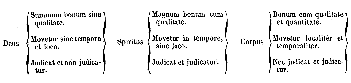

053
PATROLOGIAE CURSUS COMPLETUS
SIVE BIBLIOTHECA UNIVERSALIS, INTEGRA, UNIFORMIS, COMMODA, OECONOMICA, OMNIUM SS. PATRUM, DOCTORUM SCRIPTORUMQUE ECCLESIASTICORUM QUI AB AEVO APOSTOLICO AD INNOCENTII III TEMPORA FLORUERUNT; RECUSIO CHRONOLOGICA OMNIUM QUAE EXSTITERE MONUMENTORUM CATHOLICAE TRADITIONIS PER DUODECIM PRIORA ECCLESIAE SAECULA, JUXTA EDITIONES ACCURATISSIMAS, INTER SE CUMQUE NONNULLIS CODICIBUS MANUSCRIPTIS COLLATAS, PERQUAM DILIGENTER CASTIGATA; DISSERTATIONIBUS, COMMENTARIIS LECTIONIBUSQUE VARIANTIBUS CONTINENTER ILLUSTRATA; OMNIBUS OPERIBUS POST AMPLISSIMAS EDITIONES QUAE TRIBUS NOVISSIMIS SAECULIS DEBENTUR ABSOLUTAS DETECTIS, AUCTA; INDICIBUS PARTICULARIBUS ANALYTICIS, SINGULOS SIVE TOMOS, SIVE AUCTORES ALICUJUS MOMENTI SUBSEQUENTIBUS, DONATA; CAPITULIS INTRA IPSUM TEXTUM RITE DISPOSITIS, NECNON ET TITULIS SINGULARUM PAGINARUM MARGINEM SUPERIOREM DISTINGUENTIBUS SUBJECTAMQUE MATERIAM SIGNIFICANTIBUS, ADORNATA; OPERIBUS CUM DUBIIS TUM APOCRYPHIS, ALIQUA VERO AUCTORITATE IN ORDINE AD TRADITIONEM ECCLESIASTICAM POLLENTIBUS, AMPLIFICATA; DUOBUS INDICIBUS GENERALIBUS LOCUPLETATA : ALTERO SCILICET RERUM, QUO CONSULTO, QUIDQUID UNUSQUISQUE PATRUM IN QUODLIBET THEMA SCRIPSERIT UNO INTUITU CONSPICIATUR; ALTERO SCRIPTURAE SACRAE, EX QUO LECTORI COMPERIRE SIT OBVIUM QUINAM PATRES ET IN QUIBUS OPERUM SUORUM LOCIS SINGULOS SINGULORUM LIBRORUM SCRIPTURAE TEXTUS COMMENTATI SINT. EDITIO ACCURATISSIMA, CAETERISQUE OMNIBUS FACILE ANTEPONENDA, SI PERPENDANTUR: CHARACTERUM NITIDITAS CHARTAE QUALITAS, INTEGRITAS TEXTUS, PERFECTIO CORRECTIONIS, OPERUM RECUSORUM TUM VARIETAS TUM NUMERUS, FORMA VOLUMINUM PERQUAM COMMODA SIBIQUE IN TOTO OPERIS DECURSU CONSTANTER SIMILIS, PRETII EXIGUITAS, PRAESERTIMQUE ISTA COLLECTIO, UNA, METHODICA ET CHRONOLOGICA, SEXCENTORUM FRAGMENTORUM OPUSCULORUMQUE HACTENUS HIC ILLIC SPARSORUM, PRIMUM AUTEM IN NOSTRA BIBLIOTHECA, EX OPERIBUS AD OMNES AETATES, LOCOS, LINGUAS FORMASQUE PERTINENTIBUS, COADUNATORUM.
SERIES PRIMA,
IN QUA PRODEUNT PATRES, DOCTORES SCRIPTORESQUE ECCLESIAE LATINAE A TERTULLIANO AD GREGORIUM MAGNUM. ACCURANTE J.-P. MIGNE, CURSUUM COMPLETORUM IN SINGULOS SCIENTIAE ECCLESIASTICAE RAMOS EDITORE.
PATROLOGIAE TOMUS LIII.
TOMUS UNICUS.
1847.
HYBERNORUM APOSTOLI NECNON ALIORUM ALIQUOT SCRIPTORUM
OPERA OMNIA,
JUXTA MEMORATISSIMAS EDITIONES STEPHANI BALUZII, MARGARINI DE LA BIGNE, LAURENTII DE LA BARRE ET GALLANDII ACCURATISSIME RECOGNITA. INTERMISCENTUR
DE HAERESI PRAEDESTINATIANA LIBRI TRES
QUIBUS ACCEDIT IN APPENDICIS VICEM JAC. SIRMONDI HISTORIA PRAEDESTINATIANA.
TOMUS UNICUS.
PRIX: 8 FRANCS.
1847
De Gubernatione Dei libri octo.
col. 25
Epistolae novem.
157
Adversus avaritiam libri quatuor.
173
Conflictus de Deo trino et uno.
239
Commentarii in Psalmos.
327
Annotationes in quaedam Evangeliorum loca.
569
Praedestinatus, sive Praedestinatorum haeresis: libri tres.
587
Jacobi Sirmondi Historia praedestinatiana.
673
De statu animae libri tres.
697
Epistolae duae.
779
Nonnulla carmina.
785
Confessio.
801
Varia opuscula.
813-831
Liber de tribus habitaculis.
831
Epistolae tres.
843
Epistolae de Obitu Paulini
859
Metaphrasis Latina Hexaemeri.
867
Paterculus sive Index festorum (in hoc tomo memoratus, editus autem in tomo XIII).
965
Expositio mystica in Parabolas Salomonis.
967
Commentarius in Job (in hoc tomo memoratus, editus autem inter opera S. Hieronymi).
1011
Epistola (in hoc tomo memorata, edita tom. LIV).
1013
Prolegomena
I. Salvianus natione Gallus, ut ipse perhibet [Col. 0009] Salv. de Gubern. D. lib. VI, § 13, infra. , Coloniae Agrippinae ortum habuisse videtur [Col. 0009] Id. epist. 1. , et quidem saeculo IV desinente, si Tillemontium audiamus [Col. 0009] Tillem. Mém. eccl. tom. XVI, pag. 182. . Palladiam primum Hypatii et Quietae filiam uxorem duxit, ex qua unicam filiam, Auspiciolam nomine, suscepisse intelligimus [Col. 0009] Salv. epist. 4. . Verum deinceps sanctorum exemplis permotus, ut par est credere, qui ea tempestate florebant, Paulini, inquam, ac Therasiae, nec non Eucherii et Gallae; quam antea uxorem habuit, velut sororem postea dilexit [Col. 0009] Id. ibid. Qua de re vide Sirmondum ad Sidonium lib. v, epist. 16. : quippe qui scilicet monasticum institutum, et in coenobio quidem Lerinensi, ut eruditi viri jure conjiciunt [Col. 0009] Hist. littér. de la France, tom. II, pag. 519. , amplexus videatur. Illinc vero digressus Massiliensis Ecclesiae presbyter fuit ordinatus, Gennadio teste [Col. 0009] Gennad. de Vir. illustr. cap. 67. : quo etiam nomine illum celebrat Hilarius Arelatensis in funebri oratione de vita S. Honorati, quam habuit anno 429 aut 430. [Col. 0009B] Sic enim ille [Col. 0009] Hilar. Arel. apud Bolland. Act. SS. Jan. t. II, pag. 20, num. 19. : Egregius et in Christo beatissimus vir Salvianus presbyter, etc. Familiariter usum fuisse scriptorem nostrum celeberrimis illius aetatis viris, cum Baluzio libenter agnoscimus [Col. 0009] Baluz. ad Salvian. pag. 376. : Honorato nimirum episcopo Arelatensi, Eucherio Lugdunensi, Agroecio Antipolitano, Salonio et Verano, quondam ejus discipulis [Col. 0009] Salv. epist. 8. ; quorum etiam priori libros de Gubernatione Dei nuncupavit. Floruit autem Salvianus circa medium saeculi v, supremumque diem obiisse saeculo eodem exeunte constat. Nam Gennadius qui suum librum de Viris illustribus scribebat anno 496, quippe qui eo ipso anno fato functum memoret Gelasium papam [Col. 0009] Gennad. l. c. cap. 94. , de Salviano verba faciens [Col. 0010] Id. l. c. cap. 67. : Vivit, inquit, usque hodie in senectute bona.
II. Humana et divina litteratura instructus auctor noster, ait idem Gennadius, scripsit scholastico et aperto sermone multa. Ex quibus tamen tria tantum opera superesse noscuntur. Ea inter, ordine temporum [Col. 0010A] servato, primum locum occupant libri IV adversus avaritiam, quos ut maxime conscripsit circa annum 440 [Col. 0010] Tillem. l. c. pag. 191; Hist. litt. de la Fr. l. c. pag. 522. . Eorum porro meminit auctor in libris de Gubernatione Dei [Col. 0010] Salv. de Gubern. D. lib. IV, § 1. , illosque sub nomine Timothei ad Ecclesiam catholicam toto orbe diffusam direxit [Col. 0010] Id. adv. Avar. lib. I. . Qua de re ipse disserit in epistola 9, Salonio inscripta [Col. 0010] Id. epist. 9. .
Alterum opus libris VIII distinctum vulgo hunc praesefert titulum, de Gubernatione Dei; quod tamen Gennadio dicitur de praesenti Judicio [Col. 0010] Gennad. l. c. cap. 67. : cui quidem inscriptioni favet ipsemet auctor [Col. 0010] Salv. de Gubern. D. lib. I, § 4. . Nonnulli exaratos conjiciunt hos libros ante annum 451 [Col. 0010] Tillem. l. c. pag. 191. . Sed alii rectius, ut videtur, annum 455 statuunt [Col. 0010] Hist. litt. de la Fr. l. c. pag. 525. . In iis enim Romam a Vandalis obsessam et expugnatam tradit Salvianus [Col. 0010] Salv. de Gubern. D. lib. VI, § 12. : quod sane, ut ex Prosperi [Col. 0010B] Chronico liquet [Col. 0010] Prosp. Chron. pag. 754, in append. ad Opp. S. Prosp. edit. Paris. ( nostrae Patrol. tom. LI). , eodem anno contigisse comperimus.
Tertium denique Salviani litterarum monumentum Gennadio laudatum est, Epistolarum liber unus: ex quibus tamen novem tantummodo supersunt: pars videlicet earum minima quas ad diversos scripserit, si attendatur in primis auctoris aetas longaeva. De reliquis vero ejus scriptis deperditis haud interest plura contexere, cum de iis duntaxat ratio nobis reddenda videatur quae adhuc superant, quaeque proinde studio nostro evulgantur.
III. Complures circumferuntur Salviani operum editiones, quas ad unam omnes recensere non est hujus loci. Inter eas quae duobus superioribus saeculis prodiere, duae potissimum in pretio habentur: altera, [Col. 0010C] Petri Pithoei, anno 1580 Parisiis evulgata; altera, Conradi Rittershusii, anno 1611 typis Altorfinis excusa. Verum Stephanus Baluzius modo laudatam Pithoeanam editionem nactus, cum vetustissimo ms. [Col. 0011A] exemplari monasterii Corbeiensis optimae notae ac duobus codicibus Colbertinis contulit, atque in lucem emisit Parisiis anno 1665. Quam praeterea iterum atque iterum expolitam, exactamque denuo ad alios duos mss. codices quibus usus fuerat Pithoeus, tertio in vulgus eduxit Parisiis anno 1684. Et hanc quidem postremam editionem Baluzianam reliquis multo praestantiorem prelo consignandam duximus.
IV. Porro non est hic omittendum, anno saeculi hujus 1729, eadem Salviani opera prodiisse Pisauri studio ac labore Demetrii Barbulii, qui et Concordantias Salvianeas alphabetice dispositas adtexuit. Dolendum vero cl. editorem nobis obtrusisse Salvianum Massiliensem episcopum [Col. 0011C] Barbul. in inscript. edit. Pisaur. , quem tamen post Gennadium viri eruditissimi presbyterum tantum agnoscunt. Fictitium quoque Salviani episcopatum asseruit [Col. 0011B] Larinus Amatius, in Vita seu potius Elogio ejusdem Salviani, quod ex nostri scriptoris epistolis concinnatum sub initium praefatae Barbulianae editionis occurrit [Col. 0011] Larin. Amat. Vit. Salv. pag. IX. . Neque vero excusatur uterque auctoritate magni Baronii. Ille quidem aliique plures cum eo Salvianum Massiliensem episcopum appellarunt [Col. 0011] Baron. ad ann. 428, §§ 1 et 11. , decepti nimirum mendosis editionibus Gennadiani operis de Viris illustribus, quas Erasmus et Marianus Victorius inter Hieronymiana evulgarunt, ubi perperam ex prava lectione titulo ejusmodi honestatur presbyter Massiliensis. Verum postquam a viris doctis Pagio [Col. 0011] Pagi. ad ann. 490, § 20. , Tillemontio [Col. 0011] Tillem. Mém. eccl. tom. XVI, pagg. 194 et 747, not. 5, sur Salvien. atque Historiae litterariae Gallicae scriptoribus [Col. 0011] Hist. littér. de la France, tom. II, pag. 521. , ut caeteros omittamus, error detectus [Col. 0012A] mendumque sublatum palam fuit; mirari subit enimvero Barbulium ejusque comitem Amatium in tanta luce adhuc caecutire potuisse.
V. Sed nondum dimittendus laudatus Amatius. Nostra enim interest in eo quod contexuit Salviani Elogio, aliud neque sane leve ipsius detegere erratum. Nimirum, Gallum quidem fuisse Salvianum assentitur ille [Col. 0011] Lar. Amat. l. c. : qua vero ex Galliarum urbe ortum traxerit haud satis liquere arbitratur. Quin et Baluzium non sibi admodum constare asserit, dum sub initium voluminis Salvianum audacter Gallum proclamans, postmodum in notis patria fuisse Agrippinensem astruit. Quod equidem a viro erudito nollem dictum. Optime namque sibi constat Baluzius, et Gallum natione scriptorem nostrum statuens, et patria fuisse Agrippinensem conjiciens: quod nos quoque sub initium [Col. 0012B] hujus capitis affirmavimus, cum ipsum Baluzium, tum alios eruditione praestantes viros assectati [Col. 0012C] Tillem. l. c. pag. 182; Hist. littér. de la Fr. l. c. pag. 517. . Non animadvertit Amatius, Coloniam Agrippinam, qua tempestate florebat Salvianus, in solo Gallico sitam fuisse: quam scilicet, imperii viribus debilitatis et accisis, Romanis ademit occupavitque Childericus Francorum rex; eamque regni sui sedem constituit Sigibertus senior cognomento Claudus: quo sublato Clodoveus magnus reliquis ditionibus suis adjunxit, uti narrat Gregorius Turonensis [Col. 0012] Greg. Tur. Hist. Franc. lib. II, cap. 11. . Verbo, Colonia Agrippina principibus Francis Merovingicae stirpis paruisse comperitur. Qua de re fusius Hadrianus Valesius [Col. 0012] Hadr. Vales. Rer. Franc. lib. v, tom. I, pagg. 235, 236. et Dionysius Sammarthanus [Col. 0012] Dion. Sammarth. Gall. Christ. nov. tom. III, pag. 620. .
Notitia historico-litteraria in Salvianum
Gravissimi hujus atque elegantissimi scriptoris patria Gallia fuit, quique Coloniae Agrippinae natum existimant, argumentis sane haud improbabilibus nituntur. Certe Trevirensis non erat, sed propinquae [Col. 0011D] civitatis, quae non ut Treviri excidium a Barbaris passa erat, sed tantum vectigalis reddita fuerat. Ac propius quodammodo ad eam sententiam quae Agrippinensem eum statuit, facere videntur verba ipsius in epistola prima, qua adolescentem quemdam Agrippinae ortum et propinquum suum commendat. Tametsi vero Treviris non ortum debuerit, fortasse tamen, quod magis est, ingenii cultum et optimarum rerum cognitionem ab ea urbe repetebat. Adeo enim Treviros novit, moresque civium omniaque eorum studia tenet, ut haudquaquam a veritate absonum sit, si aliquantisper studiorum causa in ea civitate, qua nulla magis tunc temporis in Gallia litterarum studiis floruit, egisse statuamus. Num ab initio Christianus fuerit Salvianus haud liquet. Fuisse quidem volunt tum, cum ex eadem provincia, cujus metropolis erat Colonia Agrippina, uxorem duceret Palladiam Hypatii [Col. 0012D] cujusdam ac Quietae paganorum filiam, quam ipse postea non solum ad fidem Christianam amplectendam pellexit, sed etiam unica tantum suscepta filia, Auspiciola nomine, adduxit ut continentiae vota se cum ipso astringeret, et vitam coelibem in matrimonio ageret. Graviter hoc tulit socer ejus Hypatius, qui masculam sibi ex ea filia prolem speraverat, adeoque Salviano et filiae succensuit, ut per septem integros annos, ex quo ab eo ille discessisset, nec videret eos, nec litteras ad eos scriberet. Quibus elapsis cum ipse quoque Christo nomen dedisset, Salvianus, qui jam causas odii apud socerum cessasse videret, [Col. 0013A] denuo per litteras non conscientia culpae sed ratione et officio charitatis et ut nullum penitus offensae locum relinqueret, veniam oravit et haud dubie impetravit. Habitabat autem cum istas litteras scriberet, procul a socero, et nisi forte in insula Lerino, certe in provincia Viennensi, in qua presbyteri etiam dignitatem, nempe in Ecclesia Massiliensi suscepit, probatissimorum istius regionis virorum, veluti Honorati, qui postea Arelatensis episcopus fuit, Eucherii, Agroecii Antipolitani, Salonii et Verani filiorum Eucherii, quos juvenes in disciplina habuit, amicitia et gratia sublevatus. Episcopatum nunquam adeptus est. De obitu ejus non constat; novimus autem vivendo eum attigisse Gelasii Romani tempora.
Supersunt hodie ex pluribus quae Gennadius recenset Salviani scriptis,
I. Adversus Avaritiam libri quatuor ad Ecclesiam catholicam, quos sub Timothei nomine evulgavit circa annum 440.
II. De Gubernatione Dei et de justo Dei praesentique judicio libri, qui etiam inscribuntur de Providentia. Opus primarium, scr. tempore incursionis Barbarorum in imperium Romanum, a. 451, aut 452, aut, ut Benedictini malunt, a. 455.
III. Epistolae novem familiares
Deperdita sunt: De Virginitatis bono ad Marcellum libri III; De eorum praemio satis faciendo [Col. 0013] Sunt haec ex Gennadio c. 67, quod totum est corruptissimum. Alii legunt De eorum merito satisfactionis, vitio obsoleto. Trithemius c. 175, haud dubie quia non intelligeret, laudat simpliciter ad Salonium episcopum librum unum; mox in duos distraxit expositionem in Ecclesiasten et librum ad Claudianum. ad Salonium episcopum liber I; Expositionis extremae partis [Col. 0013C] libri Ecclesiastis ad Claudianum episcopum Viennensem liber I; De principio Genesis usque ad conditionem hominis liber I, versibus compositus quasi Hexaemeron Graecorum more; Homiliae plures; De Sacramentis liber I [Col. 0013] Sic Trithemius. Gennadius recitat, homilias episcopis factas multas, sacramentorum vero quantas nec recordor; quorum loco laudat Trithemius Homilias ad episcopos factas lib. I; De Sacramentis lib. I; Homilias plures ad populum lib. I. Caeterum quae de versibus in Genesim refert Gennadius, sic intelligi debent, ut nos exposuimus. .
Sixtus Senensis per incuriam Salviano tribuit opus Anticimenwn incerti auctoris quod cum Salviano primus edidit Jo. Al. Brassicanus Basileae 1530.
Librorum Salviani quos modo enumeravimus, a renatis litteris et inventa arte typographica alteri quasi parentes exstiterunt eosque in lucem primi vindicarunt Jo. Sichardus, Jo. Alex. Brassicanus et Petrus Pithoeus. Prior scilicet libros IV de Avaritia in [Col. 0013D] lucem extulit Basileae a. 1528. Alter duobus annis post libros VIII de Gubernatione Dei ibidem ex officina Frobeniana emisit, quibus post longius intervallum tertium denique addidit opusculum Epistolarum librum, Pithoeus. Quaecumque exinde Salvianus doctorum virorum ingeniis debuit, eorum gratia ad Pithoeum eumdem, Conradum Rittershusium et Stephanum Baluzium redit. Pithoeus quippe non solum epistolarum [Col. 0014A] libro opusculorum Salviani numerum auxit, sed omnes simul ejus lucubrationes ex fide mss. expressas dedit, et quamvis non multos sectatores nactus est, meruit tamen, ut Baluzius, qui centum aliis potior est, eum probaret, et, ni justae rationes superarent, sequeretur. Rittershusii opera, docta quidem et utilis, haud diu viguit, nec Germania egressa est. Post Baluzium denique aut nihil amplius in Salviano desideratum fuit, aut nemo saltem cum eo doctrinam suam ingeniumve componere ausus est. Tres igitur commode editionum Salviani aetates describi possunt, prima ab anno 1528 ad annum usque 1580, per quam libri de Avaritia cum libris de Gubernatione Dei conjuncti sunt et ubique Brassicani notae addi consueverunt. Neque vero post Pithoeanam recensionem priscus [Col. 0014B] textus describi cessavit. Altera aetas ab editione Pithoei facta Paris, apud Seb. Nivellium 1580 porrigitur usque 1663, eamque quasi ex aequo possident Pithoeus et Rittershusius. Sed Pithoeanae repetitiones longe archetypo suo deteriores factae sunt. Rittershusii editio prodiit primum a. 1611 cum immenso commentario et textu in quibusdam locis ex ingenio feliciter emendato, et recusa est a. 1623 cum prolixa accessione. In tertia solus regnat Baluzius, qui non semel quidem, sed primo a. 1663, et iterum 1669 tertioque a. 1684, textum Pithoei cum pluribus iisque optimis mss. exemplaribus contulit novumque ita constituit, ut sola jubente mss. auctoritate immutaret, emendationesque suas notis egregiis munivit. Haec Baluziana recensio quoties ab eo tempore repetita [Col. 0014C] fuerit, docebunt sequentes Annales.
SAECULO XVI.
1528. Basileae, apud Henric-Petri; in-fol. Timothei episcopi ad Ecclesiam catholicam toto orbe diffusam et Salviani episcopi Massiliensis in librum Timothei ad Salonium episcopum praefatio; in Antidote contra diversas haereses Jo. Sichardi, 181, 202.
1530. Basileae, in officina Frobeniana; in-fol. D. Salviani Massiliensis episcopi, de vero Judicio et Providentia Dei, ad S. Salonium episcopum Viennensem libri VIII, cura Jo. Alexandri Brassicani jureconsulti editi ac eruditis et cum primis utilibus scholiis illustrati. Anticimenon libri III, in quibus quaestiones veteris ac novi Testamenti, de locis in speciem pugnantibus, [Col. 0014D] incerto autore. In fine. Basileae, in officina Frobenania, per Joannem Hervagium, Hieronymum Frobenium et Nicolaum Episcopium, mense Augusto, anno MDXXX.
Joannes Alexander Brassicanus jureconsultus et linguarum professor primum Tubengensis post Vindobonensis, vir de bonis litteris sua aetate meritissimus, praeter alios multos antea non excusos Graecos [Col. 0015A] Latinosque auctores, etiam hoc Salviani opus primus in publicum extulit et Christophoro a Stadion Augustensi episcopo nuncupavit [Col. 0015] Accuratius quam plerumque solet, de hoc Brassicano commentatus est Hendreich in Pand. Brandenb. Diversus, ut ibidem discimus, ab eo fuit Jo. Ludovicus Brassicanus, non aetate quidem et patria, sed studiis quodammodo et conditione. Nam J. U. Doctorem appellat et Tubingensem fuisse suspicatur. Quod si verum est, vide an germanus Alexandri fuerit et ambo patrem habuerint Joannem Brassicanum, quem Alexander in fine praefationis ad Salvianum scribit iisdem quondam studiorum sacris cum Christophoro Stadione initiatum et ab eo sinceriter amatum et benignitate perpetua sublevatum fuisse. Joannis autem Brassicani ejusdem paedotribae Tubingensis meminit Morhoff in Polyhist. p. 247, qui fortasse non alius fuit ab eo, quem inter Tubingensis academiae doctores recenset Bock in Hist. Acad. illius § 85, p. 45, quemque non recte cum Jo. Alexandro Brassicano confundit Celeb. Saxius in Onom. Litt. III, 82. Observa tamen, quod et noster se iosum jurisconsultum appellet. . Triste tum orbi praebebat spectaculum Hungaria a Turcis devastata. Inter innumera vero publica privataque bona, quae furor eorum assumpserat, fuit etiam celebris illa et libris ex omni scriptorum genere confertissima bibliotheca Budensis, a Matthia rege sumptibus non aestimandis instructa. Sed cum nemo non paulo doctior gravi hac jactura commovebatur, acerbissimum tamen eo dolorem Brassicanus sensit. Viderat enim istos thesauros praesens Budae in comitatu legati Caesarei et non tantum viderat, sed totum sese in eos abdiderat. Ipse quoque regis Ludovici munificentia auctores quosdam Graecos consecutus erat et aliorum fortasse cum Graecorum tum Latinorum apographa [Col. 0015B] sumpserat. Inter hos nescio an Salvianus fuerit. Certe in praefatione ad episcopum Augustanum (signata Viennae Austriae, Martii die 1, anno 1530) non tam de Salviano, ejusve ms. aliquo unde ederet exemplari, aut de sua ipsius in edendo opera disseruit, quam litterarum ex amissa illa bibliotheca calamitatem deplorat; et ut sensim ad hoc argumentum lectores quasi praepararet, e longinquo de bibliophilia et tam litteratis quam principibus viris librorum colligendorum studio insignibus sermonem instituit, sub finem vero complures, qui sibi in bibliotheca sua restarent et quos aliquando editurus esset libros veteres, maxime Graecos, denominat, ex quibus aliqua, veluti libros Geoponicorum lucem postea vidisse novimus. Praefationi subjungitur carmen hendecasyllabum [Col. 0015C] non minus ac illa prolixum nec cultissimum sane, quo eidem viro Salvianum inscribere se ac dedicare profitetur. Annotationes ejus, quae proxime post Salviani libros subjiciuntur, verba maxime et formulas loquendi, imprimis quae nove dicta sunt illustrant ac multiplici et egregia in utriusque linguae auctoribus lectione commendantur.
Caeterum non omitti debet, Ἀντικειμένων libros incerti auctoris, quos una cum Salviani opere hic evulgandos dedit Brassicanus, nonnullos parum attentos fefellisse, ut ipsius Salviani crederent.
1556. Basileae, apud Henric-Petri; in-fol. Timothei episcopi ad Ecclesiam catholicam toto orbe diffusam L. IV, et Salviani praefatio in eumdem; in Joannis Heroldi Haeresiologia, pagg. 579 - 613.
1564. Romae apud Paulum Manutium Aldi F. in aedib. Pop. Rom.; in-fol. Salviani episcopi Massiliensis de vero Judicio et Providentia Dei libri VIII, cum Maximo, Paciano, Sulpicio, Dorotheo Tyrio et Haymone [Col. 0016A] Halberstattensi, adjunctis in tres posteriores Petri Galesinii notationibus.
Hujus editionis jam aliquoties incidit mentio. Salviani libri pertingunt ad paginam usque 81. Appictae sunt in marginibus variantes aliquot lectiones.
1575. Parisiis, apud Mich. Sonnium; in-fol. Salviani... de vero Judicio, Providentia et Gubernatione Dei libri VIII. It. libri IV ad Ecclesiam catholicam Timothei nomine; in Bibl. PP. Bigneana., t. III, p. 240 seqq.
Parisiis, apud Hieron. Marnef et Guil. Cavelat; in -12. Salviani... de vero Judicio et Providentia Dei libri VIII [ It. libri IV ad Ecclesiam catholicam], cum praef. et scholiis Brassicani. Cat. Bibl. Bodlei. Nescio equidem solane Brassicani editio sit recusa, an et libri IV contra Avaritiam additi sint. Utrum verum [Col. 0016B] sit, perperam tamen a Benedictinis inter Operum editiones recensetur.
1580. Parisiis, apud Sebast. Nivellium, sub Ciconiis, via Jacobaea; in -8. Salviani Massiliensis presbyteri de Gubernatione Dei et de justo praesentique ejus Judicio libri VIII, ad S. Salonium episcopum. Ejusdem Epistolarum lib. I, nunc primum editus. Timothei nomine ad Ecclesiam catholicam lib. IIII. Ex Bibliotheca P. Pithoei J. C.
Rarae in marginibus comparent lectiones a textu impresso variantes; ad calcem vero subjectae sunt variae lectiones partim ex veteri codice, quae tamen certo judicio in textum receptae non sunt quaedam etiam operarum negligentia omissae, partim ex vulgatis editionibus, quae et ipsae ferri possunt. Summa quatuor foliorum [Col. 0016C] est, in his paucissimae Epistolas, plurimae ultimum opus respiciunt. In iisdem etiam affirmat, nihil in his libris conjecturis datum totum ex fide vetustissimi et emendatissimi codicis transumptum esse. Accedit index rerum et verborum scitu dignorum. In praefatione Pithoei ad Nicolaum Fabrum regis consiliarium (data Lut. Paris. non. Octob. feriis vindemialib. a. CIC. ICLXXIX) de maturo religionis Christianae in Galliis cultu atque ubere scriptorum Christianorum in iisdem proventu disputat.
Privilegium regium signatum est d. 24. Mart. a. 1579. Observari autem meretur, quod de prima hac Pithoei editione jam Baluzius commemorat, eam ob raritatem suam manuscripto codice comparari posse ac nuspiam prostare venalem.
1589. Parisiis; in-fol. Salviani Massiliensis episcopi de vero Judicio et Providentia Dei libri VIII. Ejusd. ad Ecclesiam catholicam toto orbe diffusam libri IV. In secunda Bibl. PP. Bign. ed. tomo V, p. 161 seqq.
1594. Parisiis, apud Hieronymum de Marnef, et Viduam Guilielmi Cavellat, sub Pelicano, Monte D. Hilarii; in -12. D. Salviani Massyliensis episcopi de vero Judicio et Providentia Dei ad S. Salonium episcopum Vienhensem libri VIII. Cura Jo. Alexandri Brassicani J. C. editi ac eruditis scholiis illustrati. Accessit ejusdem Epistolarum lib. I, nunc primum editus. Ejusdemque ad Ecclesiam catholicam sub Timothei nomine lib. IIII. Cum indice rerum ac verborum locupletissimo.
Brassicani editio tota est recusa, eique additus index recens confectus, reliqua alterum quasi volumen constituunt, non titulo quidem novo, sed nova paginarum serie a priori secreta. Atque haec indice carent. Verba nunc primum editus ad Epistolarum librum in [Col. 0017B] titulo adjecta, absque dolo a Pithoei editione transcripta videntur.
SAECULO XVII.
1608. Parisiis; in -12. Salviani episcopi Massiliensis de Gubernatione Dei lib. VIII, et Epistolae; cum annotationibus Joannis Brassicani ex Bibliotheca Pithoei. Bibl. Barberin, t. II, p. 339. Si Pithoeana editio hic repraesentatur, non deesse potest opus tertium contra Avaritiam.
1609. Treviris; in -4. Salviani... Epistolares libri IV, ad Ecclesiam catholicam, adversus Avaritiam, cum Annot. J. Macherentii. Soc. J.
Contulit Baluzius ad editionem tertiam, sed non admodum magnum exinde fructum percepisse se testatur. Nullum enim vetustum codicem habuit, cum [Col. 0017C] quo libros istos conferret Macherentius, et pleraque correxit propria auctoritate.
1610. Parisiis in-fol. Salviani episcopi Mass. de vero Judicio, etc. In Bibl. PP. Bign. repetitae editionis. Tomo V, pag. 123 seq.
1611. Altorfii, in Academia Reip. Norimbergensis apud Cunradum Agricolam; in -8 o . Salviani Massiliensis opera: ad Ludovicum XIII, Franc. et Navarr. regem christianissimum. Curante Cunrado Rittershusio J. C. qui et Librum Commentarium adjecit.
Salviani Operum tomus alter, in quo sunt libri quatuor adversus Avaritiam. Ad illustriss. principem Philippum II, Stetini Pomeraniae ducem, etc. Recensente et impressionem procurante Cunrado Rittershusio.
Cunradi Rittershusii J. C. Liber Commentarius in Salvianum Massiliensem: Ad Universitates atque Academias Germaniae.
Clarum quam maxime ab eruditione saeculo XVI fuit nomen Rittershusii, atque nunc etiam pretio suo non carent doctae ejus, quas in varios tam Graecos quam Latinos auctores scripsit, annotationes. Sed aptiores vix ullas, quam in Salvianum condidit, quippe qui scriptor, dum mores et ingenia suorum temporum describit, ex iis maxime auctoribus, quibus legendis se cum aliis saeculi sui doctis hominibus per legum studium penitius dederat Rittershusius, atque ex ipsis adeo legibus per illam aetatem scriptis frequenter lucem haurit et eodem refundit. Manuscripta [Col. 0018A] exemplaria non habuit, sed ingenii felicitate, sermonisque Latini, qualis saeculo v fuit, peritia et lectionis copia non raro hanc penuriam compensavit. Certe Steph. Baluzius in praefatione editionis suae affirmat, Rittershusium aliquot in locis Salvianum satis feliciter emendasse, et in notis saepius conjecturas ejus codicum vetustorum auctoritate firmari monet, ejusque interpretationes haud raro adoptat. Videamus ergo, qui editionis ipsius ordo sit ac distributio.
Primo tomo insunt de Providentia libri et Epistolae, quibus proximo loco subjicitur index rerum et verborum, mox Joannis Trithemii tractatus de Providentia Dei ad Divum Maximilianum I imperatorem, postremo Admonitio Conr. Rittershusii de confusione foeda et [Col. 0018B] perturbatione aliquot locorum Salviani lib. VII et VIII, a librariis commissa cum Catalogo aliquorum auctorum, qui de Providentia scripserunt. Praecedit dissertatio de Vita Salviani, simulque generali argumento librorum VIII; de Providentia, Gubernatione ac Judicio Dei; et Demonstratio, quod libri IV, sub nomine Timothei editi, ipsius sint Salviani. Per occasionem etiam de superioribus editoribus fit judicium. Sequuntur Testimonia et Elogia de Salviano, nimirum Gennadii (cum annotatione Rittershusii), Chronologiae Antissiodorensis, Addonis Viennensis, Hilarii Arelatensis, Jo. Jov. Pontani, Joannis Trithemii, Jo. Alex. Brassicani, Jos. Scaligeri, Petri Pithoei, quibus Brassicani versus et praefatio, item praefatio Pithoei interseruntur. Succedunt gratulationes in prosa ac [Col. 0018C] versibus, pro more illorum temporum ad editorem scriptae. Alter tomus complectitur post quatuor libros de Avaritia, Elenchum capitum, in quae hosce quatuor libros satis commode distinxit auctor editionis Trevirensis, cui complendae paginae causa Phaedri aliquot versiculi de Avaris subjecti sunt, indicem porro non minus ac in priori tomo copiosum, nec non Catalogum scriptorum qui vel de Avaritia vel eleemosyna vel divitiis et paupertate commentati sunt cum epigrammatibus ejus argumenti ex Anthologia Graeca, itidem paginae complendae causa ascriptis. Denique commentario in tertio tomo comprehenso additae sunt variae aliquot Lectiones et Emendationes ex Pithoei codice et Brassicani editione cum paucis Rittershusii conjecturis et index in eumdem amplissimus. Taceo epistolas dedicatorias, [Col. 0018D] quas vix summus quispiam Rittershusii admirator legerit, nedum principes aut amici principum illorum, ad quos spectant. Tertia ex his est ad omnes Academiarum Germaniae professores eique adjungitur catalogus earumdem Academiarum secundum fundationis et temporis ordinem institutus. Denique ad Calcem totius operis (extremum tamen locum occupat Odarium ad Christum O. M.) significat editor, in animo sibi fuisse subjicere Joannis Weitzii, Tobiae Adami et Theodori Sitzmanni in Salvianum notas ipsi inscriptas donatasque, nec non Brassicani aliorumque annotationes. Sed quia prelum imprimendis vacare non potuisset, per aliam occasionem ista se daturum promittit.
Circa eumd. tempus. Francofurti, apud Nic. Rothium; in -8 o . Eadem editio recusa. Benedictini in Hist. Galliae Litt. sponsore Boldiano in Bibl. Hisp. p. 52, cujus tamen testimonium parum fidum arguit Fabricius et proinde inter fabulas hanc editionem reponit. Sed fortasse non tam Rittershusiana, quam Pithoeana editio hic recusa est.
1618. Coloniae Agripp., apud Ant. Hierat; in-fol. Salviani presbyteri, et postea episcopi Massiliensis libri VIII; de Gubernatione Dei; Item Epistolae ad diversos; Et Timotheus sive libri IV ad Ecclesiam. In. Bibl. PP. tomi V part. III, pag. 323 seqq.
1623. Norimbergae, apud Simonem Halbmeyerum, in -8 o ; Salviani Massiliensis opera ex editione et cum Commentario Conradi Rittershusii; editio secunda, [Col. 0019B] cui praefixa est ejusdem Rittershusii vita, descripta per Georgium F. C. R. Rittershusii, Cat. Bibl. Reg. Paris.
In Cat. Bibl. Bodlei, sicuti in Bibl. Barberiniana laudatur hujus loci et anni editio cum Commentario Rittershusii et aliorum. Unde colligo, duobus voluminibus constare hanc editionem, quorum prius Salviani textum cum Rittershusii commentario, posterius Variorum, puto Weitzii, Adami, Sitzmanni et Brassicani notas, uti in Bremensi mox indicanda repraesentantur, exhibent. Indeque enatum putem Fabricii errorem, confidenter affirmantis, Norimbergensem Salviani a. 1623 editionem esse nullam. Scilicet seorsim illi (fortasse etiam Bremensibus) obtigerat volumen posterius, sicuti in Bibl. Reg. Parisiensi non [Col. 0019C] nisi prius occurrit. Caeterum piget me operae impensae ad investigandam peculiarem notarum illarum, quam sibi inscriptam donatamque fassus est Rittershusius editionem: praesertim cum per se levioris momenti sint et a nemine facile desiderentur. Certe Weitzii notulae meram locorum similiumque undique decerptorum farraginem praebent.
1624. Parisiis in-fol. Salviani de Gubernatione Dei l. VIII, etc. In Bibl. PP. tomo V.
1627. Rothomagi apud Joannem Osmont; in -12. Salviani episcopi Massiliensis de vero Judicio et Providentia Dei ad Salonium episcopum libri VIII, cum scholiis Brassicani; Epistolae et libri IV ad Ecclesiam catholicam.
Laudant hanc editionem Auctores Historiae Litt. [Col. 0019D] Galliae. Videtur ad ed. Parisiensem a. 1594 esse descripta.
1633. Oxoniae; in -8 o . Salviani..... de vero Judicio et Providentia Dei libri VIII; Epistolae et libri IV ad Ecclesiam catholicam. Cat. Bibl. Bodlei.
1635. Coloniae Agripp.; in -4 o . Salviani de Gubernatione Dei l. VIII..... In Jacobi Merlonis Horstii (i. e. ex Horst oriundi) septem Tubis orbis Christiani loco septimo.
Integer libri titulus est: Septem Tubae Orbis Christiani ad reformationem Ecclesiasticae disciplinae toto orbe praesertim in Germania ad praesentium et graviorum malorum remedium necessario instituendam excitantes. Continet autem, teste Harzhemio in Bibliotheca [Col. 0020A] Coloniensi, septem pia opuscula ex S. Bernardo, Gregorio, M. Chrysostomo, Prospero, Petro Damiani, Blesensi, Salviano, novis sectionibus, prooemiis et annotationibus illustrata, cum appendice quaestionum variarum. Fabricius quasi totum Salvianum in eo recusum significat. Sed in Cat. Bibl. Barberin. l. l. tantum libri VIII de Gubernatione ex eo landantur.
1644. Parisiis; in-fol. Salviani Massiliensis episcopi de Gubernatione Dei libri VIII. Ejusdem ad Ecclesiam catholicam toto orbe diffusam libri IV. In Bibl. PP. tomo V, quae editio post novo titulo ornata est a. 1654, apud tres bibliopolas.
1645. Parisiis, apud Edmund. Pepingue; in -8 o . Salviani Massiliensis presbyteri de Providentia et Gubernatione [Col. 0020B] Dei, et de justo praesentique ejus judicio libri VIII. Item Epistolarum liber unus et Timothei ad Ecclesiam catholicam libri IV, cum notis Joannis Alexandri. Sic Cat. Bibl. Chig.
Textus ex editione Pithoeana est recusus, sed adeo infelici eventu, Baluzio judice, ut innumeris propemodum mendis haec editio scateat.
1647. Lugduni; in -4 o . Salviani..... de Gubernatione Dei libri VIII, sub hoc titulo: Censoria de praesentibus Europae calamitatibus, eorumque causis Praeloquia ab Osiandro Stuano in lucem edita.
Certe refertur hic titulus inter Salviani opera in Cat. Bibl. Barberin. t. II, p. 340; indeque eumdem recitant Galliae litterariae Auctores. Sed mihi ex ipsa Catalogi istius inspectione non magis liquere fateor, [Col. 0020C] utrum libros de Gubernatione Dei, an illos contra Avaritiam, quorum editio proximo loco ante proponitur, in eo contineri significare voluerit.
1648. Parisiis, apud Edm. Pepingue; in -8 o . Iteratio Pithoeanae. Benedd. in Hist. litt. Galliae.
1663. Parisiis, apud Franciscum Muguet; in -8 o . Sanctorum presbyterorum Salviani Massiliensis et Vincentii Lirinensis Opera. STEPHANUS BALUZIUS Tutelensis ad fidem codicum mss. emendavit, notisque illustravit.
Pithoeanam editionem, quanquam in multis illa laboraret, optimam tamen ex superioribus censere solebat Baluzius eamque novae hujus recensionis fundamentum esse voluit, ita ut ubicumque haec ab illa discrepet, id totum quod mutatum sit, ex fide codicum [Col. 0020D] manuscriptorum, quorum aliquot vetustissimos librorum de Providentia et ad Ecclesiam catholicam acceperat, factum esse existimari jubeat. Quippe nihil conjecturis datum esse affirmat, nisi in epistolis uno et altero loco. Nullius enim epistolae vetustum exemplar nactus erat. praeterquam duarum postremarum, in quibus emendandis omnino secutus est codices manuscriptos. Notarum suarum praecipuum scopum esse profitetur, indicare variantes lectiones. «Quod si quando, inquit, hos limites egredior, affirmare possum, id non omnino frustra contigisse. Quanquam id raro accidit. Has enim Notas, ut hoc quoque dicam, festinanter scripsi, et quasi aliud agens. Quod ideo visum est admonere, ne quis hic syllabas ad vivum [Col. 0021A] excutiat, aut Notas illas ad Polycleti normam directas non esse pronuntiet.» Accedit huic editioni miro characterum chartarumque nitore ac elegantia praestanti Stephani Baluzii Dissertatio de episcopatu Egarensi ad Philippum Labbeum in formam epistolae ( d. Lutetiae XIV kal. Augusti: M. DC. LXIII) scripta.
1669. Parisiis, apud Franc. Muguet; in -8 o . Sanctorum presbyterorum Salviani Massiliensis et Vincentii Lirinensis Opera. Steph. Baluzius Tutelensis ad fidem veterum codicum mss. emendavit Notisque illustravit. Editio secunda.
Non solum textus hujus editionis a superiore in nonnullis discrepat, sed accessit ei etiam non exiguus notarum doctissimarum cumulus. Nam primum editor variantes lectiones, quas in margine editionis [Col. 0021B] Pithoeanae descripserat, rursus diligenter excussit. Tum libros de Gubernatione Dei contulit cum editione Brassicani a. 1530 et Galesinii 1564, et si quid melius in illis esset, quam in Pithoeana, aut in codice Corbeiensi, quocum Pithoeanam antea contenderat, in textum transtulit. Si quid vero dubium esset, aut quod admonitione indigeret, id affirmat se in Notis reposuisse, nec quidquam dissimulasse, aut propria auctoritate mutasse, de quo non admonuerit. Addidit praeterea Appendicem actorum veterum, quorum in Notis facta est mentio, quo continentur: I. Castoris Aptensis episcopi epistola ad Joannem Cassianum ex veteri codice ms. bibliothecae Regiae. II. Acta imperatorum adversus Pelagium et Coelestium itidem ex codd. mss., nempe 1 o Rescriptum Honorii et Theodosii [Col. 0021C] Impp. ad Palladium Praef. Praetorio. 2 o Edictum Palladii. 3 o Rescriptum Honorii ad Aurelium episc. Carthag. 4 o Aurelii Epistola ad episcopos Byzacenae et Argizitanae (sic) provinciae. 5 o Sacra epistola Constantii imperatoris patris Valentiniani Augusti junioris, ad Volusianum praefectum Urbi, adversus Coelestium. 6 o Edictum Volusiani pro publicatione superioris. Rescripti. III. Traditio Petri de Sancto (qui traditur) ad Canonicam Cadurcensem. IV. Traditio Guillelmi de Carbonarias ad monasterium Tutelense. V. Traditio Eliae de Navis ad idem monasterium ex Chartulariis istarum ecclesiarum et monasteriorum.
1677. Lugduni, apud Anissonios; in-fol. Salviani Massiliensis libri VIII de Gubernatione Dei; ejusdem Epistolae ad diversos; item Timotheus, sive libri IV ad [Col. 0021D] Ecclesiam, omnia ad emendationem Steph. Baluzii. In Bibl. Max. Patrum t. VIII, pagg. 339-401.
1684. Parisiis, apud Franciscum Muguet; in -8 o . Sanctorum Presbyterorum Salviani Massil. et Vincentii Lir. Opera. Stephanus Baluzius Tutelensis ad fidem veterum codicum mss. emendavit et Notis illustravit. Editio tertia. «Cum et secunda quoque editio, inquit Baluzius, distracta fuisset, typographus autem eosdem libros sub incudem, ut ita dicam, revocare vellet, et interim nactus essem exemplar manuscriptum, quo Pithoeus usus est in emendandis libris de Gubernatione Dei, tum etiam illud, cum quo idem contulit libros quatuor adversus Avaritiam, quae nunc exstant in bibliotheca Colbertina, putavi debere [Col. 0022A] me hanc curam elegantissimo huic scriptori, ut lucubrationes ejus conferrem cum iisdem codicibus antiquis: quod puto me fecisse cum aliqua utilitate horum studiorum.» Ex actis per appendicem in superiore adjectis resecta sunt in hac tertia num. I et II. Caeterum quamvis et ipsa satis sit nitida haec impressio, primae tamen elegantia longissime cedit. Inscripta est Jacobo Nicolao Colberto archiep. Carthaginensi et coadjutori Rothomagensi ( Lut. Paris., kal. April. h. a.). Abest dissertatio de episcopatu Egarensi.
1688. Bremae, sumptibus Hermanni Braveri; in -4 o . S. Presbyterorum Salviani Massiliensis.... Opera. Cum libro Commentario Conradi Rittershusii, ac notis integris, Joannis Weitzii, Tobiae Adami, Theodori Sitzmanni, Joannis Alexandri Brassicani, Stephani [Col. 0022B] Baluzii, et Vincentii Lirinensis Commonitorium ab eodem Baluzio Tutelensi ad fidem veterum codicum mss. emendatum et illustratum. Praemissa Dissertatione G. Calixti in Vincent. Lir. Cum indicibus copiosissimis, tam ad auctores, quam ad notas. Juxta Noribergensium partim ann. MDCXXIII et Parisiensium ann. MDCLXIX exemplaria.
Quae ex Norimbergensi editione in hanc transumpta fuerint ex superioribus intelligitur. De Vincentio Lir. suo loco dictum est. Series virorum doctorum, quorum notae hic exhibentur, alia est in ipso volumine, alia in titulo, neutra curiose instituta. Nimirum Baluziana editio tota est recusa, adeoque proximae post textum utriusque auctoris notae sunt Baluzianae cum indice ejusdem editionis. Dein succedunt, Rittershusii [Col. 0022C] commentarius, Weitzii, Adami, Sitzmanni et postremo loco Brassicani notae, cum indice in eosdem peculiariter concinnato. Mirum vero cur editionem secundam Baluzii potius, quam tertiam, exscribendam typis dederit bibliopola, qui minime solius quaestus gratia hanc curam suscepisse videri voluit.
SAECULO XVIII.
1728. Venetiis; in -8 o . Salviani Massiliensis presbyteri Opera emendata cum notis a Steph. Baluzio. Cat. Bibl. Firm. t. I, p. 53.
1729. Pisauri, e typographia Gavellia; in -4 o maj. Salviani Massiliensis episcopi Concordantiae Operibus ejus annexae [i. e. Opera Salviani cum Concordantiis ] alphabetice dispositae studio ac labore Patris Demetrii Barbulii Soc. Jesu, et Eminentiss. ac Reverendiss. [Col. 0022D] principi cardinali Fabio de Abbatibus Oliverio humillime dicatae. Opus omnibus sacrarum disciplinarum studiosis, sed potissimum asceticis magistris, atque concionatoribus verbi Dei summopere proficuum.
Immo opus ineptum et in chartarum, utinam minus nitidarum, jacturam impressum. Unum forte est, quod in hunc censum non veniat, Vita seu potius Elogium Salviani a Larino Amatio novissime edita, ab ejusdem Salviani Epistolis potissimum enucleata.
1774. Venetiis, ex Typogr. Jo. Bapt. Albritii, Hieron. fil.; in-fol. Salviani presbyteri Massiliensis Opera quae exstant omnia. Accessit Vincentii Lirinensis Commonitorium. Ex tertia editione Stephani Baluzii [Col. 0023A] V. C. In Bibl. PP. et SS. Vet. Eccl. ANDREAE GALLANDII tomo X, pagg. 1—102.
Notae Baluzianae, non ut alias solet hic editor, textui statim, sed ad calcem subjectae sunt, adeo ut in omnibus tertiae editionis Baluzianae forma constet, nisi quod de suo loca Biblica in inferiori margine adjecerit. De Salviano disserit in Prolegg. cap. I, pag. III, IV.
Versiones.
Omnia Salviani opera haud semel in linguam Gallicam traducta sunt a Gorseo, Bonneto et aliis. Praeter ea de Providentia libri non solum a Gallis sed Italis etiam conversi exstant, ut sequentia testantur.
Gallicae. —1575. Lyon, chez Guil. Rouille; in-8 o . S. Salvian eveque de Marseille du vray jugement et [Col. 0023B] providence de Dieu, traduit en françois par B. B. D. S.
1655. Paris, chez Caspar Meturas; in -4 o . Les oeuvres de Salvian, évêque de Marseille, contenant les huit livres de la Providence, les quatre livres contre I'Avarice avec plusieurs epistres traduites avec des notes par Pierre Gorse.
1700. Paris, chez Guill. Valleyre; in -12. II tomis. Les oeuvres de Salvien et le traité de Vincent de Lerins contre les Hérésies, traduits en françois par le P. Bonnet, prestre de I'Oratoire.
1701. Paris, chez Louis Guerin; in -8 o . Salvien, de la Providence, traduit en françois par Jean Drouet de Maupertuis.
1734. Paris, chez Jean-Bapt. Delespine; in -12. Les [Col. 0023C] oeuvres de Salvien, prestre de Marseille, contenant ses lettres et ses traitez sur l'esprit d'interest, et sur la Providence, traduites en françois par un P. Jésuite.
Italicae. —1579. In Milano, appresso Michel Tini; in -12. Libro di Salviano vescovo di Marsiglia contra gli Spettacoli e altre vanità del mondo, tradotto da S. Carlo Borromeo, una cum Memoriale di monsignor illustrissimo e reverendissimo cardinale di S. Prasede arcivescovo, al suo diletto popolo della Città, e diocese di Milano. Argelati Bibl. degli Volgarizz. T. III ( Milano 1767, in -4 o , pag. 329. Nescio tamen, unus, an omnes de Gubernatione Dei libri hoc titulo comprehendantur.
1703. In Avignone, appresso Gio. Robby; in -4 o . [Col. 0024A] Trattato di Salviano Marsiliense della Providenza, in Latino, in Italiano, ed in Francese. Argelati I. I. Versio Gallica est Malpertuisiana, Italicae auctor fuit Guido Ronsartus sacerdos.
Codices.
I. Librorum de Avaritia: 1 o Codex, unde primum editi fuerunt, Jo. Sichardi, de quo non constat. 2 o Exemplar, ex quo eos castigavit Pithoeus, migraverat in bibliothecam Colbertinam, ubi illud nactus est Baluzius et in tertiis curis adhibuit. Sed describere non sustinuit. 3 o Codices Baluzii, quos in prima statim editione adhibuit et cum Pithoeana contulit, duo Regii, a Nic. Colberto, Lucionensi ac dein Antissiodorensi episcopo ac bibliothecae Regiae praefecto, ann. 1660, ipsi communicati, alter pervetustus, modo Corbeiensi [Col. 0024B] librorum de Gubernatione Dei, quem statim commemorabimus, posterior; alter quadringentorum ferme annorum. Ac in priori illo erat epistola Salviani ad Salonium, quae praefigi solet libris adversus avaritiam, quam tamen in vetusto suo exemplari defecisse monuerat Pithoeus. Eamdem vero etiam in recentiori Regio deprehensurus fuisset Baluzius ni priora ejus folia periissent.
II. Librorum de Gubernatione Dei: 1 o Codex princeps, id est ex quo libros illos extulit Jo. Alex. Brassicanus, fuit olim bibliothecae Regiae Budensis in Hungaria et ante ejus excidium Ludovici regis munificentia ad Brassicanum pervenit. Satis emendate scriptus fuit, ut ex collatione textus cum sequentibus editionibus comparet. 2 o Pithoei exemplar vetustissimum, quod [Col. 0024C] ille accuratissime exscribi curavit. Idem postea in bibliotheca Colbertina reperit Baluzius et ad curas tertias adhibuit. 3 o Baluzii codex, monasterii Corbeiensis fuit, vetustissimus et optimae notae. Quippe a sexcentis inde annis scriptum existimabat et exaratum dicit ab erudita manu, quae diligentiam et industriam inter alia eo argumento probaverit, quod interpunctiones fere ubique prorsus bene collocatae essent. Non integros tamen octo libros continebat. Subministraverat eum ex bibl. S. Germani de Pratis Lucas Dacherius Maurinae congregationis socius.
III. Epistolarum: 1 o de Pithoei codice non constat. 2 o Baluzii exemplaria non nisi duas priores et duas posteriores continebant.
De gubernatione Dei
[Col. 0025A] Quo primum tempore hos libros a nobis emendatos emisimus in publicum, titulum talem reliquimus qualem inveneramus in editione Petri Pithoei viri clarissimi, existimantes illum fuisse usum veteri codice bonae notae in quo episcopi nomen Salviano tribueretur. Nullum enim in hoc loco subsidium comparare potuimus ex codice Corbeiensi, quamvis antiquissimo et optimo, quia primum ejus folium deest. Postea vero deprehendimus codicem Pithoeanum, qui nunc exstat in bibliotheca Colbertina, non esse veterem, adeoque non eam habere auctoritatem ut nobis imponere possit ullam necessitatem retinendi titulum qui veritati resistit. Manifestum enim est Salvianum non fuisse episcopum. Quod si ejus auctoritatem sequi lubet, ipse presbyteri tantum honorem usurpat in epistola 8, quae data est ad Eucherium episcopum Lugdunensem. Error hinc ortus quod in quibusdam Gennadii editionibus dicatur homilias episcopus factus multas composuisse, cum legendum sit ad episcopos vel episcopis factas. Nam vir [Col. 0025B] eloquens et doctus homilias scribebat quae ab episcopis deinde recitabantur in ecclesia. Jam quod in ipso statim initio dicitur sanctus, cum tamen (ut Bollandus annotat ad diem 16 Januarii) neque Massiliae colatur, neque vulgo sanctus habeatur, nonnulla hic dicenda sunt in gratiam lectoris. Certum est Salvianum, dum viveret, sanctum et beatissimum virum dictum fuisse ab Hilario episcopo Arelatensi et ab Eucherio Lugdunensi; recepto videlicet more per eas tempestates ut episcopi et presbyteri vulgo sancti ac beatissimi vocarentur, sicut nos hodie episcopum Romanum vocamus sanctissimum ac beatissimum. Perseverabat idem usus etiam post mortem, ut patet ex Hieronymo, qui alicubi conqueritur episcopos a successoribus suis et a populis in ecclesia laudari, et post mortem dici beatos, quorum vita fortassis a sanctitate procul abfuerat. Quod indicat morem saeculi Hieronymiani, quo vivebat Salvianus. Atque id cum aliqui non intelligerent, aegre ferebant Faustum Reiorum Apollinarium episcopum vocari sanctum in titulo epistolae quam scripsit ad [Col. 0025C] anonymum, tacito etiam auctoris nomine. Et tamen hic ipse Faustus, diu ante quam fieret episcopus, dictus est sanctus in concilio Arelatensi III, sub Ravennio habito anno 455 in causa Theodori episcopi Forojuliensis et Fausti tunc abbatis Lirinensis, idemque a Dinamio et Honorato sive Ravennio, qui res gestas Maximi episcopi Reiensis et Hilarii Arelatensis per ea tempora conscripserunt. Et diu post fata, anno nimirum quingentesimo trigesimo quarto, Caesarius episcopus Arelatensis sic cujusdam concilii Patres alloquitur in causa Contumeliosi episcopi Reiensis: Et Faustus episcopus sanctus in epistola sua dixit. Quare mirum videri non debet quod in titulo horum librorum Salvianus, in quo praeterea mores inculpatos fuisse nemo ambigit, sanctus dicitur pro more sui saeculi, tamen etsi publico cultu non celebretur in Ecclesia. Nam haud dubie multi sunt in coelo sancti qui apud nos non habentur in catalogo.
[Col. 0025A] Salvianum natione Afrum fuisse nonnulli crediderunt, plerique Gallum, probabilibus utrique argumentis. Nam et Africae terrae vastitatem et excidia singillatim describit, tum prodigiosam Afrorum temulentiam ac dementiam indignabundus exagitat, tamquam sui essent, et Gallorum item amentiam deplorat acerbissime, qui post urbium ac provinciarum populationem, post luctuosissimas calamitates, animum adhuc retinebant conversum ad voluptates, ad voluptates, inquam, divina lege prohibitas et bonis moribus semper adversas. Erraverunt tamen qui eum putaverunt in Africa natum. Nam et ipse se Galliae non obscure adjudicat multis in locis, sed praecipue in libro VII de Gubernatione Dei, pag. 132, ubi cum variarum Europae provinciarum mala enarrasset, demum haec addit: Sed ego loquor de longe positis et quasi in alio orbe submotis, cum [Col. 0026B] sciam etiam in solo patrio atque in civitatibus Gallicanis omnes ferme praecelsiores viros calamitatibus suis factos fuisse pejores. Reliquum est igitur ut investigemus in quanam Galliarum parte ortus fuerit. Cum eum quidam Aquitanum fuisse putent, alii Treverensem, mihi magis placet Auberti Miraei sententia, qui Coloniae Agrippinae aut in vicinia natum esse scribit. Ipse enim Salvianus in libro V, de Gubernatione, pag. 125, de Treveris agens, eos vicinos suos vocat. Ac ne quis opponere possit hic non agi de Treveris, cum eos Salvianus non nominet hoc loco, consulendus est ipse in paginis 135 et 136, ubi agit de excidio urbis Treverensis, quam apertis verbis exustam fuisse scribit, simulque populares suos increpat duriuscule, quod cum vidissent vicinam civitatem ardere, non timebant. Miraei sententiam probat etiam epistola prima Salviani, in qua amico commendans adolescentem quemdam propinquum suum, ita loquitur: Adolescens quem ad vos misi, Agrippinae cum suis captus est, quondam inter suos non parvi nominis, familia [Col. 0026C] non obscurus, domo non despicabilis, et de quo fortasse aliquid amplius dicerem nisi propinquus meus esset. Matrem ergo is de quo dico, Agrippinae viduam reliquit, etc. Hinc ergo confici puto Salvianum patria Agrippinensem fuisse. Fueritne ab initio Christianus, [Col. 0027B] non liquet. Certe Christianus erat cum Palladiam Hypatii et Quietae filiam duxit uxorem: quam primo quidem invitavit ad suscipiendam Christi fidem; deinde cum hoc pervicisset, etiam continentiam ab ea exegit, et de conjuge sororem fecit pro more illius saeculi. Palladiae conversionem ad fidem Christi graviter et iniquo animo tulit Hypatius, adeo ut non solum eam non viderit per integrum ferme septennium, sed ne litterarum quidem officio, prosecutus sit absentem. Nam praeterea homini ea religione imbuto quae continentiam in conjugibus aversabatur, et quae poenas statuerat adversum coelibes, durum admodum videbatur abstinere filiam a cura posteritatis, quod illi unica proles esset Auspiciola. Post septem exinde annos a conversione Palladiae Hypatius Christo nomen dedit, Quietaque, ut ego quidem arbitror, Christi quoque gratiam consecuta est cum marito. Cum videret ergo Salvianus cessasse causas odii in socero et socru, litteras ad eos [Col. 0027C] scripsit, quibus suo uxorisque ac filiae nomine eos oravit uti vetus inter eos gratia reconciliaretur, et qui jam Christiani erant, nollent deinceps odisse liberos, a quibus nullam aliam ob causam alienati erant quam quia ad Christum se converterant. Habitabat porro tum cum haec scriberet Salvianus procul a socero, id est, ut conjectura suadet, in provincia Viennensi, cum socer in Belgica quarta moraretur, cujus metropolis erat Colonia Agrippina. Nam video eum familiarem fuisse celeberrimis partium illarum viris, Honorato, inquam, episcopo Arelatensi, Eucherio Lugdunensi, Agroecio Antipolitano, Salonio, cui inscripsit libros de Gubernatione Dei, et Verano, quem una cum Salonio fratre in disciplina sua habuit quo tempore juvenes erant. Denique, cum ad clerum vocatus est, in eadem provincia Viennensi factus est presbyter, nimirum in Ecclesia Massiliensi. Viveretne adhuc uxor tempore ordinationis ejus non invenio traditum memoriae litterarum, neque a quo Massiliensis Ecclesiae [Col. 0027D] episcopo allectus in presbyterium sit. Falluntur autem vehementer qui putant eum episcopum fuisse ut supra diximus. Floruisse eum anno 439, et non ita multo post scripsisse libros de Gubernatione Dei, colligi potest ex libro VII, pag. 153, ubi calamitatem Litorii describit, qui eo anno infelicissime pugnaverat apud Tolosam, uti dicemus suo loco. Pervenit autem usque ad tempora Gelasii Romani pontificis, ut Gennadius docet, qui eum testatur in senectute bona adhuc eo tempore vixisse. Plurimas ille lucubrationes ejus recenset quae nunc non exstant, libros nimirum tres de virginitatis Bono ad Marcellum, librum de Expositione extremae partis Ecclesiastis ad Claudianum chorepiscopum Viennensem, et in morem Graecorum, de principio Genesis usque ad conditionem [Col. 0028B] hominis compositum versu quasi Exaemeron librum unum, homilias denique multas. Haec, inquam, interciderunt. Supersunt itaque libri octo de Gubernatione Dei et de justo Dei praesentique Judicio, Epistolae novem, et libri quatuor ad Ecclesiam catholicam adversus avaritiam.
[Col. 0026C] Incertae sedis episcopum. Sunt qui Genavensem fuisse putent, alii Genuensem, alii denique Viennensem. Filius is erat Eucherii episcopi Lugdunensis, a quo traditus in disciplinam Salviano fuerat cum fratre Verano. Hujus Salonii exstat brevis Expositio in Parabolas Salomonis, et Expositio mystica in ejusdem Salomonis Ecclesiastem. Vide infra in notis ad Epist. 9.
1 Sancto episcopo Salonio Salvianus salutem in Domino. Omnes admodum homines, qui pertinere [Col. 0026A] ad humani officii culturam existimarunt, ut aliquod linguarum opus studio ingeniorum excuderent; id [Col. 0027A] speciali cura elaborarunt, ut sive utiles res ac probas, sive inutiles atque improbas [Col. 0028B] Hunc locum ita ediderunt Alexander Brassicanus et Petrus Galesinius: Id speciali cura elaborarunt, ut sive utiles ac probas, sive inutiles atque improbas materius sibi delegissent, etc. stylo texerent, seriem tantum rerum nitore verborum illustrarent, causisque ipsis quas loqui vellent loquendo lucem accenderent. Itaque ad hanc se partem ex utroque genere litterarum scriptores [Col. 0028B] Recte hic annotatum est a Brassicano Salvianum usum esse dictione suo saeculo familiari. Nam ipse ea frequenter utitur, et caeteri etiam aetatis illius scriptores. mundialium negotiorum plurimi contulerunt, non satis considerantes quam probabilius materiis 2 se impenderent, dummodo ea quaecumque dicerent, aut compto et blando carmine canerent, aut luculenta oratione narrarent. Omnes enim in scriptis suis causas tantum egerunt suas; et propriis magis laudibus quam aliorum utilitatibus consulentes, non id facere adnisi sunt ut salubres ac salutiferi, sed ut [Col. 0028B] Scholasticum sermonem dicit, pro more illius saeculi, comptam et politam orationem et, ut Cicero diceret, incitatam, volubilem, redundantem et circumfluentem. Sanctus Paulinus in epist. 9, ad Severum, laudat Rufinum quod scholasticis et salutaribus (legendum saecularibus) [Col. 0028C] litteris Graece juxta ac Latine dives esset. Commigravit autem haec vox ex Graecia in Italiam, ut docet etiam Seneca in praefatione Controversiarum: Hoc vero alterum nomen Graecum quidem est, sed in Latinum ita translatum ut pro Latino sit scholastica controversia, multo recentius est sicut ipsa declamatio. Sed de variis istius vocis significationibus vide Baronium ad diem sextam Februarii, Meursium in Glossario, Rosweydum in Onomastico ad Vitas Patrum, et Henricum Valesium ad Socratem, pag. 77. Ne tamen putes Salvianum damnare totum hoc scribendi genus. Nam et ipse scholastico admodum sermone scripsit, ut patet ex his libris, et Gennadius docet. Damnat ergo tantum eos qui eloquentiam suam vertunt ad pravos usus. Veluti si quis Petronium reprehenderet, quod purissimam illam suam Latinitatem impurissimo opere foedaverit. Aut cum Quintilianus Afranium Togatarum scriptorem, qui in eo genere comoediarum excelluit, dolet argumenta sua inquinasse puerorum [Col. 0028D] foedis amoribus. Vide etiam Brassicanum ad hunc Salviani locum. scholastici ac diserti haberentur. Itaque scripta eorum aut [Col. 0028D] Brassicanus edidit Latinitate, admonens ita scriptum fuisse in exemplari descripto quo is utebatur, quam lectionem retinuit Galesinius, Pithoeus vero reposuit vanitate. Quam vocem, cum exstaret etiam in codice Corbeiensi, nos quoque putavimus esse retinendam. vanitate sunt [Col. 0027B] tumida, aut falsitate infamia, aut verborum foeditatibus [Col. 0028A] sordida, aut rerum obscenitate vitiosa; ut vere cum ingeniorum tantum laudem aucupantes, tam indignis rebus curam impenderent, non tam illustrasse mihi ipsa ingenia quam damnasse videantur. Nos autem, qui [Col. 0028D] Infra lib. IV de Gubernat., p. 60 dicet vocabula nihil esse sine rebus. rerum magis quam verborum amatores, utilia potius quam plausibilia sectamur, neque id quaerimus ut in nobis inania saeculorum ornamenta, sed ut salubria rerum emolumenta laudentur; in scriptiunculis nostris non lenocinia esse volumus, sed remedia, quae scilicet non tam otiosorum auribus placeant quam aegrotorum mentibus prosint, magnum ex utraque re coelestibus donis fructum reportaturi. Si enim haec salus nostra sanaverit quorumdam non bonam de Deo nostro opinionem, fructus non parvus erit quod multis profui. [Col. 0028D] Ab his verbis incipit codex Corb. Sin autem id non provenerit; [Col. 0028B] et hoc ipsum [Col. 0028D] Ita editio Petri Pithoei. Bona etiam haud dubie est lectio codicis Corbeiensis, quae sic habet: Et hoc ipsum in infructuosum sortita non erit, si tamen ita legatur: Et hoc ipsum non infructuosum sortita erit. infructuosum saltem non [Col. 0029A] erit, quod prodesse tentavi. Mens enim boni studii ac pii voti, etiamsi effectum non invenerit coepti [Col. 0030A] operis, habet tamen praemium voluntatis. Hinc ergo exordiar.
3 I. Incuriosus a quibusdam et quasi negligens humanorum actuum Deus dicitur, utpote nec bonos custodiens, nec coercens malos; et ideo in hoc saeculo bonos plerumque miseros, malos beatos esse. Sufficere quidem ad refellenda haec, quia cum Christianis agimus, solus deberet sermo divinus. Sed quia multi incredulitatis paganicae aliquid in se habent, etiam paganorum forsitan electorum atque sapientum testimoniis delectentur. Probamus igitur ne [Col. 0029B] illos quidem de incuriositate ac negligentia ista sensisse qui verae religionis expertes nequaquam utique Deum nosse potuerunt, quia legem per quam Deus agnoscitur nescierunt. Pythagoras philosophus, quem quasi magistrum suum philosophia ipsa [Col. 0029D] In prima editione scripseramus suscepit, secuti editionem Pithoei. Nunc vero quia et Brassicani et Galesinii editiones habent suspexit, hanc postremam lectionem, quam confirmat codicis Corbeiensis auctoritas, placuit retinere. suspexit, de natura ac beneficiis Dei disserens, sic locutus est: [Col. 0029D] Annotatum est ab eruditissimo viro Cunrado Rittershusio, qui commentarium scripsit ad Opera Salvianica, auctorem nostrum imitatum esse in hoc loco verba Minucii Felicis in Octavio. Nam haec sunt ejus verba: Et Pythagorae Deus est animus, per universam [Col. 0030D] rerum naturam commeans et intentus, ex quo etiam animalium omnium vita capiatur. Verum non puto Salvianum ista sumpsisse ex Minucio, sed ex Cicerone ( Lib. I de Nat. deor. ), quem ad verbum describit. Locus est ex libro primo de Natura deorum, ut annotavimus in margine. Animus per omnes mundi partes commeans atque diffusus, ex quo omnia quae nascuntur animalia vitam capiunt. Quomodo igitur mundum negligere Deus dicitur, quem hoc ipso scilicet 4 satis diligit quod ipsum se per totum mundi corpus intendit? Plato et omnes Platonicorum scholae moderatorem rerum omnium confitentur Deum. [Col. 0030D] Lactantius lib. I Divinar. Institut. cap. 2, annotat Stoicos acerrime retudisse eorum dementiam qui deos putaverunt non esse, ac docuisse nec fieri mundum sine divina ratione potuisse nec constare nisi summa ratione regeretur. Et lib. VII, c. 3, scribit Platonem docuisse mundum a Deo factum esse et ejusdem providentia gubernari. Stoici eum gubernatoris vice intra id quod regat semper manere testantur. Quid potuerunt de affectu ac diligentia [Col. 0029C] Dei rectius religiosiusque sentire, quam ut eum gubernatori similem esse dicerent? hoc utique intelligentes quod sicut navigans gubernator nunquam manum suam a gubernaculo, sic nunquam penitus curam suam Deus tollit a mundo; ac sicut ille et auras captans, et saxa vitans, et astra suspiciens, totus sit simul tam corporis quam cordis officio operi suo deditus, ita scilicet Deum nostrum ab universitate omnium rerum nec munus dignantissimae visionis avertere, nec regimen providentiae suae tollere, nec indulgentiam benignissimae pietatis auferre. Unde etiam illud mysticae auctoritatis exemplum, quo se non minus philosophum Maro probare voluit quam poetam dicens (Georg. IV):
Tullius quoque: «Nec vero Deus ipse, inquit (Tuscul. lib. I, cap. 27), qui intelligitur a nobis, alio modo intelligi potest quam mens soluta quaedam et libera et segregata ab omni concretione mortali, omnia sentiens et movens.» Alibi quoque: Nihil enim, inquit, praestantius Deo. Ab eo igitur mundum regi necesse est. Nulli igitur naturae obediens aut [Col. 0030B] subjectus Deus. Omnem ergo regit ipse naturam Nisi forte nos videlicet sapientissimi ita sentiamus, ut eum a quo omnia regi dicimus, et regere simul et negligere credamus. Cum ergo omnes, etiam religionis expertes, vi ipsa et quadam necessitate compulsi, et sentiri omnia a Deo et moveri et regi dixerint; quomodo nunc eum incuriosum quidam ac negligentem putant, 5 qui et sentiat omnia per subtilitatem, et moveat per fortitudinem, et regat per potestatem, et custodiat per benignitatem? Dixi quid de majestate ac moderamine summi Dei principes et philosophiae simul et eloquentiae judicarint. Ideo autem nobilissimos utriusque excellentissimae artis magistros protuli, quo facilius vel omnes alios idem sensisse vel certe sine auctoritate aliqua dissensisse [Col. 0030C] monstrarem. Et sane invenire aliquos qui ab istorum judicio discrepaverint, praeter [Col. 0030D] Qui, ut lib. I, cap. 8, ait idem Lactantius, nolentes mundum a Deo esse factum, quaerere solebant, quibus manibus, quibus machinis, quibus vocibus, qua molitione hoc tantum opus fecerit. Epicureorum vel quorumdam Epicurizantium deliramenta, non possum: qui sicut voluptatem cum virtute, sic Deum cum incuria ac torpore junxerunt; ut appareat eos qui ita sentiunt, sicut sensum Epicureorum atque sententiam ita etiam vitia sectari.
II. Non puto quod ad probandum nunc rem tam perspicuam etiam divinis uti hoc loco testimoniis debeamus; maxime quia sermones sacri ita abunde et evidenter cunctis impiorum propositionibus contradicunt, ut dum sequentibus eorum calumniis satisfacimus, etiam ea quae supra dicta sunt plenius refutare possimus. Aiunt igitur a Deo omnia praetermitti, [Col. 0031A] quia nec coerceat malos nec tueatur bonos, et ideo in hoc saeculo deteriorem admodum statum esse meliorum; bonos quippe esse in paupertate, malos in abundantia; bonos in infirmitate, malos in fortitudine; bonos semper in luctu, malos semper in gaudio; bonos in miseria et abjectione, malos in prosperitate et dignitate. Primum igitur ab iis qui hoc ita esse vel dolent vel accusant, illud requiro, de sanctis hoc, id est, de veris ac fidelibus Christianis, an de falsis et impostoribus doleant. Si de falsis; superfluus dolor, qui malos doleat non beatos esse; cum utique quicumque mali sunt, successu rerum deteriores fiant, gaudentes sibi 6 nequitiae studium bene cedere; et ideo vel ob hoc ipsum miserrimi esse debent ut mali esse desistant, vindicantes [Col. 0031B] improbissimis [Col. 0031C] Rittershusius ex ingenio emendavit quaestibus, suamque conjecturam probare conatus est auctoritate Cypriani in libro de Lapsis. Et tamen codex Corbeiensis et editio Pithaei habent quaestionibus. quaestionibus nomen religionis, et praeferentes ad sordidissimas negotiationes [Col. 0031C] Infra extremo libro III, pag. 59: Nihil enim omnino prodest nomen sanctum habere sine moribus, quia vita a professione discordans abrogat illustris tituli honorem per indignorum actuum vilitatem. Sic. lib. V, pag. 108, in illos invehitur qui religionem simulantes, adeoque titulo sibimet sanctitatis inscripto, professione illa nomen quidem mutaverant, caeterum pristinos mores non abjecerant. Ex his itaque locis [Col. 0031D] colligitur eos qui severiori se vitae applicabant, sanctos tum fuisse dictos. Hos autem paulo post religiosos vocat; et pag. 8 hoc ipsum argumentum tractans, ait: Religiosi ac sancti viri miseri non putandi sunt. Religiosorum autem nomine, ut ad paginam 80 dicetur, intellexit Salvianus clericos, monachos, et omnino eos qui a vita saeculari convertebantur ad professionem vitae severioris. titulum sanctitatis: quorum scilicet nequitiis si miseriae comparentur, minus sunt miseri quam merentur: quia in quibuslibet miseriis constituti, non sunt tamen tam miseri quam sunt mali. Nequaquam ergo pro his dolendum quod non sunt divites ac beati; multo autem pro sanctis minus: quia quamlibet videantur ignorantibus esse miseri, non possunt tamen esse aliud quam beati. Superfluum autem est ut eos quispiam vel infirmitate vel paupertate vel aliis istiusmodi rebus existimet esse miseros, quibus se illi confidunt esse felices. Nemo enim aliorum sensu miser est, sed suo. Et ideo non possunt cujusquam falso judicio esse miseri, qui sunt vere sua conscientia [Col. 0031C] beati. Nulli enim, ut opinor, beatiores sunt quam qui ex sententia sua atque ex voto agunt. Humiles sunt religiosi, hoc volunt: [Col. 0031D] Sive de monachis loquatur Salvianus, sive de clericis, certum est non posse hinc colligi necessariam tum fuisse religioso publicam paupertatis professionem, sive votum paupertatis, ut hodie loquimur. Nam Salvianus ipse docebit infra in libro III adversus avaritiam pag. 256, proprietatem bonorum ac possessionum illis interdictam nondum fuisse per illas tempestates. Hujus ergo loci sensus est, religiosos qui pauperes erant sive voluntate, paupertatem aequo animo ac gaudenti tolerasse, non, ut plerique [Col. 0032C] solent, per questus et deplorationem sortis suae. Sequentibus deinde saeculis expedire visum est bono disciplinae uti religiosis non liceret aliquid proprium habere, ita ut ne Romano quidem pontifici licere voluerint cum monacho dispensare circa proprietatem, quemadmodum nuper observatum est in notis ad Concilia Galliae Narbonensis pag. 28. pauperes sunt, pauperie delectantur: sine ambitione sunt, ambitum respuunt: inhonori sunt, [Col. 0032C] Editio Pithoei respuunt. Quo modo etiam editum est a Brassicano et Galesinio. Emendatum est ex codice Corbeiensi. Cur enim bis eadem voce intra unam lineam uteretur Salvianus non coactus? Librarii haud dubie mendum fuit. honorem fugiunt: lugent, [Col. 0032A] lugere gestiunt: infirmi sunt, infirmitate laetantur. Cum enim, inquit Apostolus, infirmor, tunc potens sum (II Cor. XII, 10). Nec immerito sic arbitratur, ad quem Deus ipse sic loquitur: Sufficit tibi gratia mea: nam virtus in infirmitate perficitur (Ibid., 9). Nequaquam ergo nobis dolenda est haec afflictio infirmitatum, quam intelligimus matrem esse virtutum. Itaque quidquid illud fuerit, quicumque vere religiosi sunt, beati esse dicendi sunt: quia inter quamlibet dura; quamlibet aspera, nulli beatiores sunt quam qui hoc sunt quod volunt. Soleant quamvis esse nonnulli qui turpia atque obscena sectantes, etsi juxta 7 opinionem suam beati sunt, quia adipiscuntur quod volunt; re tamen ipsa beati non sunt, quia quod volunt, nolle debuerant. Religiosi autem [Col. 0032B] hoc cunctis beatiores sunt, quia et habent quae volunt, et meliora quam quae habent omnino habere non possunt. Labor itaque, et jejunium, et paupertas, et humilitas, et infirmitas non omnibus sunt onerosa tolerantibus, sed tolerare nolentibus. [Col. 0032D] Tacitus lib. VI Annalium: Neque mala vel bona quae vulgus putet: multos qui conflictari adversis videantur, beatos, ac plerosque, quanquam magnas per opes, miserrimos, si illi gravem fortunam constanter tolerent, hi prospera inconsulte utantur. Vide notas ad epistolam secundam Lupi Ferrariensis. Sive enim gravia haec, sive levia, animus tolerantis facit. Nam sicut nihil est tam leve quod ei non grave sit [Col. 0032D] Infra extremo libro quarto adversus avaritiam pag. 295: Totum durum est quidquid imperatur invitis. qui invitus facit, sic nihil est tam grave quod non ei qui id libenter exsequitur, leve esse videatur. Nisi forte antiquis illis priscae virtutis viris, Fabiis, Fabriciis, Cincinnatis, grave fuisse existimamus quod pauperes erant, qui divites esse nolebant; cum omnia scilicet studia, omnes conatus suos ad communia emolumenta conferrent, et crescentes reipublicae vires privata paupertate ditarent. Numquid parcam [Col. 0032C] illam tunc agrestemque vitam cum gemitu et dolore tolerabant, cum viles ac [Col. 0032D] Id est, rapa, ut constat ex Aurelio Victore cap. 33 de Viris illustribus. Respicit enim Salvianus ad Historiam Curii Dentati civis Romani, quem legati Samnitium repererunt rapa torrentem atque ligneo catillo (ut Valerius Maximus ait lib. IV, cap. 3) coenantem. Is ergo fictilia sua Samnitico praetulit auro, ut Florus scribit. Vide Ciceronem in lib. de Senect. rusticos cibos ante ipsos quibus coxerant focos sumerent, eosque ipsos capere nisi ad vesperam non liceret? Numquid aegre ferebant quod [Col. 0032D] Optime codex Corbeiensis pro eo quod editio Pithoei habet avaram ac divitem conscientiam. Emendationem porro istam esse legitimam probant etiam [Col. 0033C] editiones Brassicani et Galesinii, qui locum hunc sic ediderunt: Numquid aegre ferebant quod avara illos a divite conscientia auri talenta non premerent. avara ac divite conscientia auri talenta [Col. 0033A] non premerent, cum etiam argenti usum legibus coercerent? Numquid illecebrae et cupiditatis poenam putabant quod distenta aureis nummis marsupia non haberent, cum [Col. 0033C] Cornelium Rufinum, ut docet Valerius Maximus lib. II, cap. 4. Meminit et Tertullianus in Apologetico cap. 6: quae Patritium, quod decem pondo argenti habuisset, pro magno titulo ambitionis senatu summovebant. patricium hominem, quod usque ad decem argenti libras dives esse voluisset, indignum curia judicarent? Non despiciebant tunc, puto, pauperes cultus, cum vestem hirtam ac brevem sumerent, cum ab aratro arcesserentur ad fasces, et illustrandi habitu consulari, illis fortasse ipsis quas assumpturi erant imperialibus togis madidum sudore pulverem detergerent. Itaque tunc illi pauperes magistratus opulentam rempublicam habebant; 8 nunc autem [Col. 0033C] Assentior Rittershusio, qui potestatis vocabulum apud Salvianum et alibi intelligi debere existimat ipsum magistratus nomen. Quo sensu fortassis accipienda est haec vox in veteri inscriptione quae primum hoc loco edita est ex lapide antiquo qui Narbone exstat [Col. 0033D] in aede Prioris B. Mariae Majoris. Lapis est praegrandis, in summo sectus in arcum, in imo planus, quem in limine cujusdam templi positum fuisse gravis est conjectura. In cantica parte haec leguntur: IMP. CAESARI. DIVI. NERVAE F. NERVAE. TRAIANO. GERM. PONT. MAX. TRIB. POT. COS. II. Q. S....ILIUS........ANUS. IIIIII. VIR. AUGUSTAL. DE. SUA. MEDIOCRITA. ................, MENTO FIERI. PONIQUE. IUSSIT. In postica vero parte, majoribus characteribus, sic. AD. URNAM. POTESTATIS. Caeterum Sevir ille augustalis, cujus nomen dimidia sui parte periit, fortasse est Servilius Marcianus sacerdos ad templum Romae et Augustorum Arelate, cujus mentio exstat in veteri inscriptione Lugdunensi apud Sixtum in pontificio Arelatensi pag. 53. Quae dein ex inscriptione desunt, ita haud dubie supplenda sunt: de sua mediocritate a fundamento fieri ponique jussit.
III. Dixit quidam ex istis de quibus querimur cuidam sancto viro secundum veritatis regulam sentienti, id est, quod Deus omnia regeret ac [Col. 0034C] Non male fortassis Rittershusius, qui totum hunc locum sic legendum et interpungendum putat ac prout humano generi necessarium nosset, moderationem suam et gubernaculum temperaret. Quanquam [Col. 0034D] repugnant omnes editiones et libri; nisi quod pro necessariam, quae lectio est tum Pithoeanae editionis tum aliarum, codex Corbeiensis habet necessarium, quod adjuvat conjecturam Rittershusii. Brassicanus et Galesinius, detracta voce nosset ut superflua, sic legerunt hunc locum: Ac pro humano genere necessariam moderationem suam et gubernaculum temperaret. pro humano genere necessariam nosset moderationem suam et gubernaculum temperaret, Quare ergo, inquam, tu ipse infirmus es? hoc utique eo sensu atque judicio, hoc est: Si Deus, ut putas, in hac praesenti vita omnia regit, si Deus cuncta dispensat; qua ratione fortis ac sanus est homo quem peccatorem scio, et tu infirmus, quem sanctum esse non 9 ambigo? Quis tam profundi cordis virum non admiretur, qui merita religiosorum atque virtutes tam magnis retributionibus dignas putat, ut in praesenti hac vita carnes [Col. 0034B] atque fortitudines corporum praemia putet debere esse sanctorum? Respondeo igitur, non unius tantum religiosi nomine, sed universorum. Quaeris igitur, quisquis ille es, qua ratione infirmi sint sancti viri. Respondeo breviter, quia ideo sancti viri infirmiores se esse faciunt; quia si fortes fuerint, sancti esse vix possunt. Opinor enim omnes omnino homines cibis ac poculis fortes esse; infirmos autem abstinentia, ariditate, jejuniis. Non ergo mirum est quod infirmi sunt qui usum earum rerum respuunt per quas alii fortes fiunt. Et est ratio cur respuant, dicente Paulo apostolo de se ipso: Castigo corpus meum, et servituti subjicio; ne forte cum aliis praedicaverim, ipse reprobus efficiar (I Cor. IX, 27). Si infirmitatem corporis appetendam sibi etiam Apostolus putat, quis sapienter [Col. 0034C] evitat? Si fortitudinem carnis Apostolus metuit, quis rationabiliter fortis esse praesumit? Haec ergo ratio est, qua homines Christo dediti et infirmi sunt et volunt esse. Absit autem ut hoc argumento religiosos putemus a Deo negligi, per quod confidimus plus amari. Legimus [Col. 0034D] Infra epist. 9, pag. 200: Timothei apostoli. Hieronymus in Chronico: Reliquiae apostoli Timothei Constantinopolim invectae. Certum est Timotheum non fuisse ex numero eorum quos vulgo vocamus apostolos. Et Primasius in caput primum Epistolae Pauli ad Philippenses, quae sic incipit Paulus et Timotheus servi Jesu Christi; Apostolatum denegat Timotheo, cum dicit: Omnis apostolus servus, non omnis servus apostolus. Sed sciendum est apostoli nomen generale [Col. 0035D] esse et ad omnes pertinere qui ad gentem aliquam fide Christiana imbuendam missi sunt; quemadmodum dictum est olim in concilio Lemovicensi, et legitur in epistola Joannis XX de Apostolatu sancti Martialis. Sic Epaphroditus a Paulo dicitur apostolus Philippensium. Timotheum apostolum carne [Col. 0035A] infirmissimum fuisse. Numquid negligebatur a Domino, aut ob infirmitatem Christo non placuit, qui ad hoc infirmus esse voluit ut placeret? quemque etiam ipse apostolus Paulus (I Tim. V, 23), licet nimiis jam infirmitatibus laborantem, non tamen nisi pauxillulum vini sumere ac delibare permisit; hoc est, ita eum voluit infirmitati suae consulere quod noluit tamen ad fortitudinem pervenire? Et hoc cur ita? Cur absque dubio, nisi quia, ut ipse dicit: Caro concupiscit adversus spiritum, spiritus autem adversus carnem. 10 Haec enim, inquit, invicem sibi adversantur, ut non quaecumque vultis, illa faciatis (Gal. V, 17), Non imprudenter [Col. 0035D] Verba sunt Salviani ex epistola quinta, ut notat etiam Rittershusius, qui locum hunc mire facere putat adversus Pithoei suspiciones de auctore librorum adversus Avaritiam. quidam hoc loco dixit quod si repugnante corporis fortitudine, quae optamus facere non possumus: infirmandum nobis carne sit ut optata faciamus. [Col. 0035B] «Infirmitas enim carnis, inquit (Salv. epist. 5), vigorem mentis exacuit, [Col. 0035D] Frigidior erat sententia hujus loci in aliis editionibus, quae ita habebant: Ut affectis artubus, vires corporum in virtutes transferantur animorum. Sed excelsa [Col. 0036D] est ac Salviano digna in codice Corbeiensi, quem bona fide expressimus. Quin et Salvianus ipse hanc emendationem confirmat in epistola quinta, unde haec sumpta sunt. et affectis artubus, vires corporum in virtutes transferuntur animorum; non turpibus flammis medullae aestuant, non male sanam mentem latentia incentiva succendunt, non vagi sensus per varia oblectamenta lasciviunt; sed sola exsultat anima, laeta corpore affecto, quasi adversario subjugato. »Haec ergo, ut dixi, religiosis viris causa infirmitatis est; eamque esse nec tu, ut arbitror, jam negas.
IV. Sed sunt fortasse, inquis, alia majora: id est, quod multa in vita ista aspera atque acerba patiuntur, quod capiuntur, quod torquentur, quod trucidantur. Verum est. Sed quid facimus quod et prophetae in captivitatem abducti sunt et apostoli etiam [Col. 0035C] tormenta tolerarunt? Et certe dubitare non possumus, quod tunc Deo maxime curae erant, cum pro Deo ista paterentur. At forsitan hoc ipso magis probare te dicis quod Deus in saeculo isto omnia negligat, et futuro totum judicio reservet, quia semper et boni omnia mala passi sunt, et fecerunt mali. Non infidelis quidem videtur assertio, maxime quia futurum Dei judicium confitetur. Sed nos ita judicandum humanum genus a Christo dicimus, ut tamen etiam nunc omnia Deum, prout rationabile putat, regere ac dispensare credamus; et ita in futuro judicio judicaturum affirmamus, ut tamen semper etiam in hoc saeculo judicasse doceamus. Dum enim semper gubernat Deus, semper judicat: quia gubernatio ipsa judicium est. 11 Quot modis hoc vis probemus? [Col. 0035D] ratione, an exemplis, an testimoniis? Si ratione; quis tam expers humanae intelligentiae est et hujus ipsius de qua loquimur, veritatis alienus, qui [Col. 0036A] non agnoscat ac videat pulcherrimum mundi opus et inaestimabilem supernarum infernarumque rerum magnificentiam ab eodem regi a quo creata sit, quemque elementorum fabricatorem, eumdem etiam gubernatorem fore? qui cuneta scilicet qua potestate ac majestate condiderit, eadem etiam providentia ac ratione moderetur; praesertim cum etiam in his quae humano actu administrantur, nihil penitus sine ratione consistat, omniaque ita a providentia incolumitatem, quasi corpus ab anima vitam, trahant; ideoque in hoc mundo non solum imperia et provincias, atque rem civilem ac militarem, sed etiam minora officia et privatas domos, pecudes denique ipsas, et minutissima quaeque domesticorum animantium genera, non nisi humana ordinatione atque consilio, [Col. 0036B] quasi quadam manu et gubernaculo, contineri. Et haec omnia sine dubio voluntate ac judicio summi Dei: scilicet ut eo exemplo omne genus humanum particulas rerum et membra regeret, quo ipse summam totius mundani corporis gubernaret. Sed in principio, inquis, creaturarum haec sunt a Deo statuta atque disposita; caeterum patrata universitate rerum atque perfecta, removit a se cunctam terrestrium rerum curam [Col. 0036D] Ita videtur legi et interpungi debere hic locus ut hic editus est. Nam et editiones ita habent, et sensus postulat uti hanc lectionem retineamus. Attamen codex Corbeiensis habebat: Et ablegavit laborem, videlicet, etc. Caeterum antequam ab hoc loco discedam, admonendum putavi lectorem hic in eodem codice pro amandavit scriptum esse commendavit. Quo etiam modo alibi legi annotatum est in margine editionis Pithoeanae. et ablegavit; laborem videlicet forte fugiens, a suo loco amandavit, et molestiam fatigationis evitans, aut occupatus negotiis aliis, partem rerum reliquit, quia totum obire non possit.
V. Removet igitur a se, inquit, curam mortalium Deus. Et quae ergo nobis divinae religionis est ratio? quae vel causa Christum colendi, vel spes propitiandi? [Col. 0036C] 12 Si enim neglig it Deus in hoc saeculo genus hominum, cur ad coelum quotidie manus tendimus, cur orationibus crebris misericordiam Dei quaerimus, cur ad ecclesiasticas domos currimus, cur ante altaria supplicamus? Nulla est enim nobis ratio precandi, si spes tollitur impetrandi. Vides ergo quam stulta atque inanis sit hujus persuasionis assertio: quae utique si recipitur, nihil penitus de religione servatur. Sed ad illud forte confugies ut dicas nos metu futuri judicii Deum colere, et id omni praesentium officiorum cultu elaborare ut in die futuri saeculi mereamur absolvi. Quid ergo sibi vult apostolus Paulus praecipiens quotidie in Ecclesia ac jubens ut offeramus jugiter Deo nostro orationes, obsecrationes, postulationes, gratiarum actiones (I Tim. II, 1)? Et haec omnia quam [Col. 0036D] ob causam? quam utique, nisi, ut ipse dicit, ut quietam et tranquillam vitam agamus in omni castitate (Ibid., 2). Pro praesentibus, ut videmus, Domino supplicari [Col. 0037A] jubet et orare: quod utique non juberet, nisi exorare posse confideret. Quomodo ergo aliquis pro obtinendis futuri temporis bonis apertas Dei aures, pro praesentibus autem clausas atque obstructas putat? Aut quomodo nos in ecclesia supplicantes praesentem nobis salutem a Deo poscimus, si audiendos nos penitus non putamus? Nulla ergo nobis pro incolumitatibus ac prosperitatibus nostris vota facienda sunt. Quin potius ut modestia supplicationis vocem conciliet postulantis, dicendum fortasse nobis est: Domine, non prosperitatem vitae istius petimus, nec pro bonis praesentibus supplicamus; scimus enim aures tuas his obsecrationibus clausas esse et auditum te ad preces istiusmodi non habere, sed pro his tantummodo petimus quae sunt futura post mortem. Esto [Col. 0037B] igitur, postulatio talis utilitate non careat; 13 quomodo ratione subsistit? Si enim Deus a respectu hujus saeculi curam removit, et postulantium precibus aures suas clausit; absque dubio qui non audit nos pro praesentibus, non audit etiam pro futuris: nisi forte credimus pro precum diversitate aures suas Christum vel tribuere vel negare, id est, ut claudat eas cum rogantur praesentia. aperiat cum futura. Sed de his dicendum amplius non est. Tam stulta enim sunt et tam frivola, ut cavendum sit ne id ipsum quod pro honore Dei dicitur, injuria Dei esse videatur. Tanta quippe est majestatis sacrae et tam tremenda reverentia, ut non solum ea quae ab illis contra religionem dicuntur horrere, sed etiam quae pro religione nos ipsi dicimus cum grandi metu ac disciplina dicere [Col. 0037C] debeamus. Igitur si stulte atque impie creditur quod curam humanarum rerum pietas divina despiciat, ergo non despicit. Si autem non despicit, regit. Si autem regit, hoc ipso quod regit judicat: quia regimen esse non potest, nisi fuerit jugiter in rectore judicium.
VI. Sed parum esse fortasse quispiam putet quod hoc ratio declarat, nisi probetur exemplis. Videamus qualiter mundum a principio Deus rexerit; et ita eum omnia semper gubernasse monstrabimus, ut simul etiam judicasse doceamus. Quid enim Scriptura dicit: Formavit igitur Deus hominem de limo terrae, et inspiravit in eum spiraculum vitae (Gen. II, 7). Et quid postea? Posuit, inquit, eum in paradiso voluptatis (Ibid., 15). Quid deinceps? Dedit scilicet legem, praeceptis [Col. 0037D] imbuit, institutione formavit. Quid autem post haec secutum est? Praeteriit homo mandatum sacrum, sententiam subiit, paradisum perdidit, poenam damnationis excepit. Quis non in iis omnibus et gubernatorem Deum videat et judicem? 14 Constituit enim Adam in paradiso innocentem, expulit reum. In constitutione ordinatio est, in expulsione judicium. Quando enim eum in loco voluptatis posuit, ordinavit: quando autem reum de regno expulit, iudicavit. [Col. 0038A] Ergo hoc de primo homine, id est, de patre. Quid de secundo, id est, de filio? Factum est, inquit Scriptura sacra, post multos dies ut offerret Cain de fructibus terrae munera Domino. Abel quoque obtulit de primitiis gregis sui et de adipibus ejus. Et respexit Dominus ad Abel et ad munera ejus: ad Cain vero et ad munera ejus non respexit (Gen. IV, 3-5). Priusquam de evidentiore judicio Dei dicam, puto quod etiam in his quae jam diximus, quaedam censura judicii est. In hoc enim quod unius sacrificium Deus suscipit, alterius excludit, evidentissime utique et de unius justitia et de iniquitate alterius judicavit. Sed hoc parum est. Cum igitur futuro facinori viam sternens fratrem in solitudinem trahit, secretis patrocinantibus scelus peragit, impiissimus pariter et stultissimus, [Col. 0038B] qui ad perpetrandum maximum nefas sufficere sibi credidit si aspectus vitaret hominum, fratricidium Deo teste facturus. Unde puto quod haec in illo jam tunc opinio fuerit quae nunc in multis est, Deum scilicet terrestria non respicere et actus sceleratorum hominum non videre. Nec dubium est, cum post facinus admissum, Dei sermone conventus, nihil se de caede fratris [Col. 0037D] Dubitandum non est quin haec lectio praeferenda sit ei quae exstat in editione Pithoei, ubi sic habetur: Nihil se de caede fratris conscium responderit. Praeter auctoritatem porro codicis Corb. quo usi sumus in emendatione loci istius, lectio illa confirmatur etiam [Col. 0038D] auctoritate editionum Brassicani et Galesinii. scire responderit. Adeo inscium facti sui Deum arbitrabatur ut crederet feralissimum nefas tegi posse mendacio. At aliter expertus est quam putabat. Nam Deum, a quo non existimavit videri scelera cum occideret, sensit videre cum damnaretur. Hic nunc requirere ab illis volo qui negant res nunc humanas vel respici a Deo, vel regi, vel judicari; an cuncta in his quae diximus e diverso sint. 15 Puto [Col. 0038C] enim quod praesens est qui sacrificio interest, et regit qui Cain post sacrificia castigat, et sollicitus est qui ab interfectore interfectum requirit, et judicat qui percussorem impium justa animadversione condemnat. In quo quidem etiam illud non incommode: [Col. 0038D] Assentior Rittershusio, qui subesse hic mendum existimat. verum ne miremur nunc sanctos homines quaedam aspera pati, cum videamus quod jam tunc Deus etiam per maximum nefas [Col. 0038D] Id est, Abelem. primum sanctorum sivit occidi. Quae quidem qua ratione patiatur, neque humanae imbecillitatis est plena indagine cognoscere, neque tunc temporis disputare. Interim probare satis est omnia istiusmodi non negligentia aut incuria Dei fieri, sed consilio ac dispensatione permitti. Nequaquam autem injustum possumus dicere, in quo divinum esse judicium non possumus denegare: quia [Col. 0038D] summa justitia est, voluntas Dei. Neque enim ideo non justum est quod divinitas agit, quia capere vim divinae justitiae homo non valet. Sed ad propositum revertamur.
VII. Videmus ergo in his quae dicta sunt nihil incuria Dei actum, sed quia quaedam ex his dispositio divina ita ordinavit, quaedam patientia sustinuit, quaedam sententia [Col. 0038D] Codex Colbert. vindicavit. judicavit. Sed non satis quidam forte existimant haec quae dicimus nos probasse per [Col. 0039A] paucos. Videamus an id ipsum manifestare possimus etiam per universos. Aucta igitur ac multiplicata humani generis multitudine simul et iniquitate, videns Deus, inquit Scriptura sacra, quod multa malitia hominum esset in terra, et cuncta cogitatio cordis intenta esset ad malum omni tempore, poenituit eum quod hominem fecisset in terra; et tactus dolore cordis intrinsecus, Delebo, inquit, hominem quem creavi, a facie terrae (Gen. VI, 5-7). Consideremus quemadmodum in his omnibus et sollicitudo Domini pariter et severitas indicetur. Primum enim ait: 16 Videns autem Deus; secundo, Tactus dolore cordis intrinsecus; tertio, Delebo, inquit, hominem quem creavi. In hoc siquidem quod videre omnia Deus dicitur, cura ejus ostenditur; in hoc quod dolet, terror irati; in hoc quod punit, [Col. 0039B] severitas judicantis. Poenituit ergo, inquit Scriptura sacra, Deum quod hominem fecisset in terra; non quod Deus sit obnoxius huic motui aut ulli subjaceat [Col. 0039D] Sic infra lib. IV, pag. 71: Cumque ejus naturae sit mens Dei atque majestas ut nulla iracundiae passione moveatur. Utrobique vocabulum illud barbare positum est pro eo quod Latini dicunt affectum animi vel affectionem. Invaluerat nimirum aevo Salviani corruptio illa linguae Romanae, quando eadem voce, ut affectionem animi significent, utuntur etiam Bachiarius in epistola ad Januarium, sanctus Ambrosius, Cassianus, Faustus Reiensis, Caesarius Arelatensis, Ruricius Lemovicensis, Julianus Pomerius, ac multi alii. passioni; sed sermo divinus ad insinuandam plenius nobis rerum scriptarum intelligentiam, quasi humano nobiscum affectu loquens, sub nomine poenitentis [Col. 0039D] Imitatus est Salvianum Faustus Reiensis in epistola [Col. 0040D] ad anonymum, in qua haec leguntur: Caeterum Dei ira, justitia est; Dei furor, severitatis vigor est; Dei jurasse, definisse est; Dei poenituisse***. Sententia tamen saepe mutata. Et cum se persequente aliquo laedi dicit, crimen laedentis ostendit. Caeterum Salvianus lib. II, pag. 29, ait aspectum Divinitatis propitiae esse munus conservationis humanae. Dei vim demonstravit irati. Ira est autem Divinitatis, poena peccantis. Quid ergo post haec secutum est? Cum, inquit, vidisset Deus terram esse corruptam, dixit ad Noe: Finis universae carnis venit coram me: repleta est terra iniquitate a facie eorum, et ego disperdam eos cum terra (Ibid., 13). Et quid postea? Rupti sunt , inquit, omnes fontes abyssi magnae, et cataractae coeli apertae sunt: factaque est pluvia super terram quadraginta diebus et quadraginta noctibus (Gen. VII, 11, 12). Et paulo post: Consumpta est omnis caro quae movebatur super terram (Ibid., 21). Et deinceps: Remansit autem solus Noe, et qui cum eo erant in arca (Ibid., 23). Hic nunc requirere ab illis volo qui incuriosum rerum humanarum appellant Deum, an illo tempore vel curasse eum terrestria credant vel judicasse. Puto enim non judicavit tantum, sed etiam dupliciter judicavit. Nam dum servabat bonos, pium se retributorem, et dum condemnat malos, se verum judicem comprobavit. Sed haec forsitan apud stultos, quia ante diluvium, id est, quasi alio quodam saeculo gesta sunt, minus auctoritatis habere videantur. Quasi vero aut tunc alius Deus fuerit, aut postea eamdem mundi curam habere noluerit. Possum quidem divino munere per singulas 17 post diluvium generationes [Col. 0039D] probare quae dico; sed et enormitas vetat, et tamen certa quaedam et majora sufficiunt: quia cum idem sit absque dubio majorum pariter ac minorum Deus, id [Col. 0040A] profecto intelligendum est in minoribus quod in majoribus comprobatur.
VIII. Igitur cum post diluvium generationi hominum benedixisset Deus, immensamque hominum multitudinem benedictio ipsa generasset, loquitur ad Abraham Dominus e coelo (Gen. XII, 1), jubens ut deserat terram suam, inquirat alienam. Vocatur, sequitur, adducitur, collocatur; fit de paupere locuples, de ignoto potens, infimus peregrinatione, excellentissimus dignitate. Sed ne haec tamen quae ei [Col. 0040D] Colbert., data a Domino. data a Deo fuerant, muneris tantum viderentur fuisse, non meriti, qui laetabatur prosperis, probatur adversis. Sequitur quippe labor, periculum, timor. Vexatur commigratione, fatigatur exsilio, contumelia afficitur, uxore privatur; immolari sibi Deus [Col. 0040B] filium jussit, pater obtulit; et quantum ad [Col. 0040D] In ora Pithoeanae editionis annotatum est alibi legi definitionem. Quo etiam modo legitur in codice Corbeiensi. defunctionem cordis pertinet, immolavit. Rursum exsilia, rursum metus, Philistinorum invidia, Abimelech rapina: multa quidem mala, sed tamen paria solatia. Nam etsi a plurimis afficitur, tamen de omnibus vindicatur. Quid igitur in cunctis istis quae memoravimus? num Deus non est et inspector, et invitator, et ductor, et sollicitus, et sponsor, et protector, et munerator, et probator, et sublimator, et ultor, et judex? Inspector quippe est, dum ex omnibus unum elegit quem meliorem vidit; invitator, dum vocat; ductor, dum ad ignota perducit; sollicitus, dum ad ilicem visitat; sponsor, dum futura promittit; protector, quia inter gentes barbaras protexit; munerator, quia locupletavit; probator, quia tentari asperis [Col. 0040C] voluit; sublimator, quia potentiorem omnibus 18 fecit; ultor, quia eum de adversariis ultus est; judex, quia dum ulciscitur, judicavit. Subjungit autem statim huic historiae Deus dicens: Clamor Sodomorum et Gomorrhae multiplicatus est, et peccatum eorum aggravatum est nimis (Gen. XVIII, 20) . Clamor, inquit, Sodomorum et Gomorrhae multiplicatus est. Pulchre clamorem dixit in se habere peccata. Grandis enim absque dubio peccantium clamor est, qui a terra ascendit ad coelum. Quare autem peccata hominum quasi clamare testatur? Scilicet quia caedi aures suas Deus dicit clamoribus peccatorum, ne differatur poena peccantium. Et vere clamor, et grandis clamor est, quando pietas Dei peccatorum clamoribus vincitur ut peccantes punire cogatur. Ostendit ergo [Col. 0040D] Dominus quam invitus puniat etiam gravissimos peccatores, dicens quod clamor Sodomorum ad se ascenderit. Hoc est dicere: Misericordia quidem mea [Col. 0041A] mihi suadet ut parcam, sed tamen peccatorum clamor cogit ut puniam. Cum ergo ista dixisset, quid consecutum est? Mittuntur angeli Sodomam (Gen. XIX, 1, seqq.), proficiscuntur, introeunt, bonorum foventur officio, malorum vexantur injuria; caecantur improbi, salvantur probi. [Col. 0041C] Id est, cum uxore et liberis. Recepta erat saeculo illo vocis istius usurpatio, ut propinqui significarentur: de quo nos fortassis amplius disseremus in notis ad epistolas Ruricii episcopi Lemovicensis. Vide Rosweydi Onomasticon ad Vitas Patrum. Loth cum affectibus piis urbe educitur: urbs cum habitatoribus impiis concrematur. Interrogo hic utrumnam Deus ex judicio malos, an sine judicio concremarit? Qui sine judicio Sodomitas punitos a Deo dicit, iniquum Deum arguit. Si autem cum judicio malos perdidit, judicavit. [Col. 0041C] In aliis editionibus legitur: Si autem cum judicio [Col. 0041D] malos perdidit, judicavit utique. Codex Corbeiensis eleganter repetit vocem judicavit. Sic etiam Colb. Judicavit utique; et quidem jam quasi ad instar futuri judicii judicavit. Cum enim ad supplicium malorum gehennam in futurum arsuram esse manifestum sit, Sodomam et vicinas ei urbes coelestis flamma consumpserit. [Col. 0041B] In praesenti autem illud quod futurum est, Deus voluit declarare judicium, quando super impium populum gehennam misit e coelo; 19 sicut etiam apostolus dicit (II Petr. II, 6) quod Deus civitates Sodomam et Gomorrham eversione damnarit, exemplum ponens impie acturis: quamvis id ipsum quod ibi actum est, plus habuerit misericordiae quam severitatis. Quod enim poenam eorum tam diu distulit, misericordiae fuit; justitiae, quod aliquando punivit. Et ideo cum angelos Sodomam Deus mitteret, hoc nobis probare voluit, quod etiam malos puniret invitus. Scilicet ut cum legeremus quae a Sodomitis angeli pertulissent, et videremus scelerum immanitatem, criminum turpitudinem, libidinum obscenitatem; probaret utique nobis Deus quod ipse eos noluerit [Col. 0041C] perdere, sed ipsi extorserint ut perirent.
IX. Possum innumera proferre. Sed vereor ne dum satis [Col. 0041D] Editio Brassicani: Vereor ne dum satis rem probare renitimur. Galesinius: Vereor ne dum satis rem probare nitimur. Pithoeus: Vereor ne dum satis reprobare rem nitimur. Nos secuti sumus auctoritatem codicis Corbeiensis. Pro eo autem quod editio Pithoei omnino male habeat texisse, nos secuti codicem Corbeiensem et superiores editiones reposuimus texuisse. Atque ita in sua editione emendavit Rittershusius. Similis error acciderat in Commonitorio Vincentii Lirinensis. rem probare nitimur, historiam texuisse videamur. Moyses in deserto positus gregem pascit (Exod. III), rubum ardere conspicit, Deum ex rubo audit, praecepta accipit, potestate exaltatur, ad Pharaonem mittitur, venit, loquitur, contemnitur, vincit. Aegyptus percutitur, Pharaonis inobedientia verberatur, et quidem non uno modo; scilicet [Col. 0041D] Colbert., ut unus sacrilegus. ut plus [Col. 0042A] sacrilegus torqueatur diversitate supplicii. [Col. 0041D] Editio Pithoei: Et quid? postremo decies rebellat, etc. Reddidimus hic bona fide codicem Corbeiensem. Unde confirmatur conjectura Rittershusii, qui ita legendum esse monuerat. Et quid postremo? decies rebellat, decies verberatur. Quid ergo dicimus? Puto quod in his omnibus et curare pariter res humanas Deum et judicare cognoscas. [Col. 0041D] Cum hic locus varie legatur, admonuissetque [Col. 0042C] Rittershusius legendum videri In Aegypto quippe tunc non simplex, nos ejus conjecturam secuti sumus in hac editione, ut sensum aliquem faceremus huic loco. In Aegypto quippe tunc enim non simplex tantum, sed multiplex constat Dei fuisse judicium. Quotiescunque enim rebellantes Aegyptios percussit, toties judicavit. Sed post ista quae diximus, quid secutum est? Israel dimittitur, pascha [Col. 0042C] Colbert., celebratur, Corb., celebrato. celebrat, Aegyptios spoliat, dives abscedit, Pharaonem poenitet, exercitum contrahit, ad fugientes pervenit, castris jungitur, tenebris separatur, siccatur pelagus, Israel graditur, officiosa undarum patientia liberatur. Pharao sequitur, 20 mare super eum [Col. 0042C] Corb., super volvitur. Hinc volumina pro fluctibus [Col. 0042D] in epistolis Meletii episcopi Mopsuesteni et Theodoreti Cyrensis editis in synodico adversus tragoediam Irenaei cap. 119, 129, 139, 151. Plinius lib. VII, cap. 45: Magna sortis humanae reperiantur volumina. volvitur, fluctu operiente deletur. Puto jam non obscurum in his quae [Col. 0042B] acta sunt Dei esse judicium, et quidem non judicium tantum, sed etiam moderationem atque patientiam. Patientiae enim fuit quod [Col. 0042D] Colbert., Aegyptios rebellantes saepe percussit. Aegyptii rebellantes saepe percussi sunt; judicii, quod [Col. 0042D] Id est, in contumacia durantes. Quod alii, ut diversa sunt hominum ingenia, aiunt esse animi parum liberalis, alii vero generosae et excelsae mentis. contumaciae pertinaces morte damnati. Igitur post hunc rerum gestarum ordinem ingreditur eremum victrix sine bello gens Hebraeorum. Agit iter sine itinere, viatrix sine via, praevio Deo, divino commilitio honorabilis, ductu coelesti potens, sequens mobilem columnam, nubilam die, igneam nocte, congruas colorum diversitates pro temporum diversitate sumentem; scilicet ut et diei [Col. 0042D] Colb., lumen. lucem lutea obscuritate distingueret, et caliginem noctis flammeo splendore claritatis radiaret. Adde huc fontes repente natos, adde medicatas aquas vel datas vel [Col. 0042D] Idem codex, invitatas. immutatas, speciem servantes, [Col. 0042C] naturam relinquentes. Adde aperta erumpentibus rivis montium capita, adde scaturientia novis pulverulenta arva torrentibus, adde inlatos itinerantium castris alitum greges Dei pietate indulgentissima [Col. 0042D] Hic locus sic antea legebatur in editione Pithoei et in codice Corbeiensi, Deum pietate indulgentissima, etc. Admonuerat autem Rittershusius legendum esse Dei pietate. Cum itaque lectionem illam praeferrent editiones Brassicani et Galesinii, dubitandum non erat quin Rittershusii conjectura foret retinenda. , non usibus tantum hominum, sed etiam inlecebris servientes, datum per quadraginta annos astris quotidie famulantibus cibum, rorantes jugiter escis dulcibus polos, non ad victum tantum, sed etiam ad delicias profluentes. Adde homines in nullis membrorum [Col. 0043A] suorum partibus accessus et decessus humanorum corporum nescientes, ungues non auctos, dentes non imminutos, capillos semper aequales, non attritos pedes, non [Col. 0043D] Hic tantummodo admonuerim in codice Corbeiensi legi adcissas vestes, in Colbertino cisas. scissas vestes, calciamenta non rupta, redundantem hominum honorem usque ad induviarum vilium dignitatem. Adde huc erudiendae gentis officio descendentem ad terras Deum, accommodantem se terrenis visibus [Col. 0043D] Ita codex Corbeiensis. Colbertinus tamen et omnes editiones habent Dei Filium. Rursum Rittershusio displicet quod hic legitur visibus, mavultque legi usibus. Et tamen hic est mira editionum ac codicum concordia. Deum filium, innumerae 21 multitudinis plebem in consortium divinae familiaritatis admissam, sacrae amicitiae honore pollentem. Adde huc tonitrua, adde fulgura, terribiles buccinarum coelestium sonos, tremendum undique totius aeris fragorem, polos sacris clangoribus mugientes, ignes, caligines, nebulas Deo plenas, loquentem cominus Dominum, legem divino ore resonantem, [Col. 0043B] incisas digito Dei litteras, [Col. 0043D] Sic eleganter, inquit Rittershusius, vocat lapideas tabulas quibus digito Dei erant inscripta decem verba legis. Et nota rupices adjective et rarenter positum nomen pro saxeis, cum alias rupices substantive soleant dici homines stupidi et bardi. rupices paginas, saxeum volumen, discentem populum, et docentem Deum, ac mixtis pene hominibus atque angelis unam coeli ac terrae scholam. Sic enim scriptum est, quod cum retulisset Moyses verba populi ad Dominum, dixerit ei Dominus: Jam nunc veniam ad te in caligine nubis, ut audiat me populus loquentem ad te (Exod. XIX, 9). Et paulo post: Ecce, inquit, coeperunt audiri tonitrua, ac micare fulgura et nubes densissima operire mentem (Ibid., 16). Et iterum: Descenditque (Dominus) super montem Sina in ipso montis vertice (Ibid., 20). Ac deinceps: Loquebaturque cum Moyse, videntibus universis quod columna nubis staret ad ostium tabernaculi; stabantque et ipsi, et adorabant per fores tabernaculorum suorum. Loquebatur Dominus ad Moysen [Col. 0043C] facie ad faciem, sicut loqui solet homo ad amicum suum (Exod. XXXIII, 9-11). Quae cum ita sint, videturne habere hominis curam Deus, haec tanta tribuens, haec tanta praestans, participem sermonis sui vilem homunculum faciens, et quasi in consortium sacrae sodalitatis admittens, aperiens ei plenas divitiis immortalibus palmas suas, alens eos nectaris poculo, pascens coelesti cibo? Quam, rogo, majorem eis gubernaculi sui praestare curam, quem majorem praestare potuit affectum, quam ut cum praesentis saeculi vitam agerent, speciem jam futurae beatitudinis possiderent?
X. Sed respondeatur forte hoc loco, habuisse quondam hanc hominum curam Deum; 22 caeterum nunc penitus non habere. Unde hoc ita credimus? [Col. 0044A] forsitan quia, ut illi tunc, mannam quotidie non comedimus, cum agros triticeos plenos messibus demetamus; quia coturnices humanis se manibus ingerentes non apprehendimus, cum omnia avium, pecudum, bestiarum genera devoremus; quod salientes rupibus aquas apertis oribus non [Col. 0043D] Colbert., accipimus. excipimus, cum vinarias domos vinearum fructibus inrigemus? Addo ego amplius aliquid, quod nos ipsi, qui illos tunc Deo curae fuisse et nos a Deo negligi dicimus, si accipere pro praesentibus bonis praeterita possemus, respueremus penitus conditionis istius optionem. Nollemus enim haec quae nunc habemus amittere, ut possemus ea quibus tunc illi usi sunt possidere; non quod nos meliora nunc habeamus quam gens illa tunc habuit, sed quia et illi qui quotidiano tunc coeli [Col. 0044B] ac Dei ministerio pascebantur, antiquam ventris ingluviem bonis praesentibus praeferebant, turpissima scilicet ciborum carnalium recordatione moesti, et fetidissimo caeparum atque alliorum amore aegrescentes : non quod potiora essent quibus antea usi erant, sed quia, quod nunc a nobis fit, hoc tunc ab illis. Illi horrebant quae erant, et quae non erant desiderabant. Nos magis laudamus illa quae tunc fuerunt quam ista quae nunc sunt, non quia si eligendi facultas esset, semper habere illa mallemus, sed quia usitatum hoc humanae mentis est vitium, [Col. 0043D] In editione Brassicani et Pithoei sic legitur hic locus: Usitatum est hoc humanae menti, cum intueatur illa magis semper quae desunt. Galesinius: Usitatum hoc humanae mentis est vitium, illa magis velle [Col. 0044D] quae desunt. Itaque expungit voces illas, cum intueatur. Offenderunt porro illae aures Rittershusii, qui illas sine detrimento sententiae rectius abesse posse putat. Gaudeo conjecturam ejus firmari auctoritate codicum Corbeiensis et Colbertini, qui duabus illis vocibus carent. illa magis semper velle quae desunt. Et quia, ut [Col. 0044D] P. Syrus. ille ait, aliena nobis, nostra plus aliis placent, [Col. 0044D] In aliis editionibus, quin etiam in Pithoeana, sic legitur: Et quia, ut ille ait, aliena nobis, nostra plus aliis placent. Accedit quoque illud, etc. Opinor autem neminem ambigere quin emendatior habeatur hic locus in codice Corbeiensi, quem bona fide expressimus. accidit quoque illud quod generale ferme est omni homini, ut Deo semper ingratus sit; insitoque hoc et quasi nativo [Col. 0044C] malo se cuncti invicem vincunt, ut beneficiis Dei detrahant, ne debitores se esse cognoscant. Sed haec hactenus. Nunc ad negotii dudum coepti ordinem 23 revertamur; quamvis, ut reor, non mediocriter jam probaverimus quae proposuimus; sed addamus tamen adhuc, si placet, quippiam: quia melius est plus probare aliquid quam necesse est, quam minus forsitan quam negotio debeatur.
XI. Liberatus quondam de Pharaonis jugo populus Hebraeorum, ad Sina montem praevaricatus est, et statim a Domino pro errore percussus. Sic enim scriptum est: Percussit ergo Dominus populum pro errore vituli quem fecerat Aaron (Exod. XXXII, 35). Quod potuit majus et evidentius de peccatoribus Deus ferre judicium, quam ut statim [Col. 0044D] Infra, pag. 25: Nec pene prius peractum est facinus peccantium quam ulcisceretur poena peccatum. Vide notas ad Lupum Ferrar., pag. 473. consequeretur [Col. 0045A] poena peccantes? Et tamen cum omnis populus reus fuerit, cur non est in omnes missa damnatio? Quia pius scilicet Dominus partem percussit sententiae suae gladio, ut partem corrigeret exemplo, praeberetque omnibus simul et coercendo censuram et indulgendo pietatem. Censura enim fuit quod castigavit, pietas quod pepercit: quamvis utrumque impari modo. Plus siquidem tunc pietati datum est quam severitati. Ideo utique, quia cum indulgentissimus Dominus propensiorem se semper miserationi praestet quam ultioni, licet in coercenda tunc Judaici exercitus parte judicio ac severitati censura divina aliquid attribuerit, majorem tamen sibi populi portionem pietas vindicavit: specialiter quidem hoc, et peculiari tunc innumerae plebis misericordia; ne [Col. 0045B] omnes scilicet quos reatus complectebatur, poena consumeret. Caeterum erga quasdam personas, ut legimus, ac familias censura Dei inexorabilis est; sicut illud, ubi otiante sabbatis populo, is qui colligere ligna usurparat, occidi jubetur (Num. XV, 35) : quamvis enim opus ipsum hominis videretur innoxium, faciebat tamen eum diei observatio criminosum. Vel cum duobus lite certantibus, unus qui blasphemarat, morte multatur. 24 Sic enim scriptum est: Ecce autem filius mulieris Israelitidis quem pepererat de viro Aegyptio inter filios Israel, jurgatus est in castris cum viro Israelite. Cumque blasphemasset nomen Domini, et maledixisset ei, adductus est ad Moysen (Levit XXIV, 10, 11). Et paulo post: Miserunt, inquit, eum in carcerem, donec viderent quid juberet Dominus. Qui [Col. 0045C] locutus est ad Moysen, dicens: Educ blasphemum extra castra, et ponant omnes qui audierunt manus super caput ejus, et lapidet eum populus universus (Ibid. 12-14). Nunquid non praesens Dei est manifestumque judicium, et prolata quasi juxta humani examinis formam coelesti disceptatione sententia? Primum, qui peccaverat comprehensus est; secundo, quasi ad tribunal adductus; tertio, accusatus; deinde in carcerem missus; postremo, coelestis judicii auctoritate punitus. Porro autem non punitus tantum, sed punitus sub testimonio; ut damnare scilicet videretur reum justitia, non potestas: exemplo scilicet ad [Col. 0045D] Infra, pag. 27: Ut proficeret cunctorum emendationi poena omnium noxiorum. Et lib. VII, pag. 156, ut dum pars clade caeditur, pars exemplo emendaretur. Tacitus, lib. XIV Annalium: Magnum exemplum quod [Col. 0046C] contra singulos utilitate publica rependitur: quando scilicet decimus quisque fusti feritur in exercitu. Vide Rittershusium ad istum Salviani locum. cunctorum emendationem proficiente, ut ne quis postea admitteret quod omnis in uno populus vindicasset. Hac igitur ratione atque judicio omnia Deus [Col. 0045D] et nunc agit et semper egit, scilicet ut correctioni omnium proficeret quidquid singuli pertulissent. Sicut etiam et illud fuit, cum Abiu et Nadab, sacerdotalis sanguinis viri, coelesti igne consumpti sunt (Num. XXVI; Levit. X; II Paral. XXIV); in quibus utique non judicium tantum, sed praesens Deus ostendere voluit impendensque judicium. Sic enim scriptum est quod cum egressus ignis a Domino devorasset holocaustum (Levit. IX, 24), arreptis Nadab [Col. 0046A] et Abiu filii Aaron thuribulis, posuerunt ignem et incensum desuper, offerentes coram Domino ignem alienum: quod eis praeceptum non erat. Egressusque ignis a Domino, devoravit eos, et mortui sunt coram Domino (Levit. X, 1, 2). Quid enim aliud quam extentam 25 super nos dexteram suam et imminentem jugiter gladium voluit ostendere, qui errorem supradictorum statim in ipso opere punivit, nec pene prius peractum est facinus peccantium, quam ulcisceretur poena peccatum? Quamvis non id tantum in hac re actum sit, sed etiam multa alia. Cum enim in illis tunc non mens impia, sed facilitas nimium inconsulta punita sit, declaravit profecto Dominus quo supplicio digni essent qui contemptu Divinitatis aliquid admitterent, quando etiam illi percussi a Deo essent qui sola mentis inconsideratione [Col. 0046B] peccassent, aut quam rei essent qui contra jussionem Domini sui facerent, cum etiam illi taliter plecterentur qui injussa fecissent. Porro autem etiam ex hoc consulere Deus voluit nostrae correctioni per censuram salubris exempli, ut omnes laici intelligerent quantum iram Dei timere deberent, cum a praesenti poena filios sacerdotis nec meritum parentis eriperet, nec ministerii sacri privilegium vindicaret. Sed quid ego de his dico quorum inconsiderantia quodammodo Deum tetigit et ad coelestem injuriam redundavit? Maria contra Moysen loquitur, et punitur; nec punitur tantum, sed judicii more punitur. Primum enim ad judicium vocatur, deinde arguitur, tertio verberatur. In objurgatione excipit vim sententiae, in lepra autem patitur piaculum criminosae: [Col. 0046C] quamvis coercitio istiusmodi non Mariam tantum, sed etiam Aaronem humiliaverit, quia etsi deformari lepra summum antistitem non oportuit, et ipsum tamen Domini castigatio flagellavit: nec solum hoc, sed in poenam quam Maria patitur, Aaron etiam quasi culpae particeps coercetur. Maria enim supplicio afficitur, ut Aaron confusione mulctetur. Porro autem ut inexorabilem in quibusdam agnosceremus formam divini esse judicii, 26 ne illius quidem intercessu qui laesus fuerat indulsit. Sic enim legimus ad Aaronem et Mariam dixisse Dominum: Quare igitur non timuisti detrahere servo meo Moysi? iratusque abiit. Et ecce Maria apparuit candens lepra quasi nix; clamavitque Moyses ad Dominum dicens: Obsecro, Domine, sana eam. Cui respondit Dominus: Si pater ejus [Col. 0046D] spuisset in faciem illius, non debuerat saltem decem dierum rubore suffundi? Separetur septem diebus extra castra, et postea revocabitur (Num. XII, 8-14). Sufficiant igitur de hoc genere divisionis et de hac parte sermonis ista quae diximus. Infinitum enim est de omnibus disputare, quae nimis longum est etiam sine disputatione numerare. Sed adhuc tamen aliquid addamus.
XII. Poenitet gentem Hebraeorum de Aegypto recessisse [Col. 0047A] (Exod. XVI), percutitur; dolet deinde fatigari se labore itineris, affligitur; carnes desiderat, verberatur. Et quia quotidie mannam edens explere inlecebris cupit ventris ingluviem, optata quidem cupiditate saturatur, sed in ipsa tamen saturitate torquetur. Adhuc enim, inquit Scriptura, esca erat in ore ipsorum, et ira Dei ascendit in eos. Et occidit plurimos eorum, et electos Israel impedivit (Psal. LXXVII, 30, 31). Og contra Moysen rebellat, exstinguitur (Deut. III). Core conviciatur, obruitur. Dathan et Abiron murmurant, devorantur (Num. XVI). Aperta est enim, inquit, terra, et deglutivit Dathan, et operuit synagogam Abiron (Psal. CV, 17). Ducenti quoque et quinquaginta, ut sacer sermo testatur, principes viri qui tempore concilii per nomina vocabantur, surrexerunt [Col. 0047B] contra Moysen: Cumque stetissent contra Moysen et Aaron, dixerunt: Sufficiat vobis, quia omnis multitudo sanctorum est, et in ipsis est Dominus. Cur elevamini super populum Domini (Num. XVI, 3)? Et quid post haec? Ignis, inquit, egressus a Domino interfecit ducentos quinquaginta viros qui offerebant in censum (Ibid., 35). 27 Sed cum haec tanta fierent, coelestis cura non profuit. Adhibita est saepissime coercitio, sed emendatio non est secuta. Sicut enim nos, cum flagellamur assidue, non corrigimur, ita et illi cum caederentur saepissime, non emendabantur. Quid enim scriptum est? Murmuravit autem omnis multitudo filiorum Israel sequenti die contra Moysen et Aaron, dicens: Vos interfecistis populum Domini (Num. XVI, 41). Et quid postea? Percussa sunt statim et divino [Col. 0047C] igne consumpta quatuordecim millia hominum et septingenti. Cum omnis ergo tunc populi multitudo peccaverit, cur non est in omnibus vindicatum? praesertim cum ex illa quam supra dixi seditione Core nullus evaserit. Cur ibi cunctum peccantum coetum [Col. 0048A] interfici Deus voluit, hic tantummodo portionem? Scilicet quia plenus et [Col. 0047C] Colbert., justitia et misericordia. justitiae et misericordiae Dominus, et pietati suae multa donat per indulgentiam, et [Col. 0047C] Editiones: Et severitati per disciplinam. Haud dubie lectio illa optima est. Sed ego praefero lectionem codicis Corbeiensis. Augustinus in psalmum centesimum: Deus autem nec in bonitate misericordiae perdit judicii severitatem, nec in judicando cum severitate amitttit misericordiae bonitatem. severitate punit per disciplinam. Et ideo ibi praestitit disciplinae, ut proficeret cunctorum emendationi poenam omnium noxiorum; hic autem misericordiae suae tribuit, ne universus populus deperiret. Et tamen cum tam misericorditer egerit, quia in parte plebis castigatio toties repetita non profuit, ad ultimum omnes morte damnavit. Quae res et timori et emendationi nostrae simul proficere deberet, scilicet ne qui illorum exemplo penitus non corrigimur, illorum fortasse exitu puniamur. Non enim dubium est quid actum de eis fuerit. Nam cum universa gens Hebraeorum ad hoc de Aegypto exierit ut terram [Col. 0048B] repromissionis intraret, praeter duos tantum sanctos nullus intravit. Sic enim scriptum est: Locutus est Dominus ad Moysen et Aaron, dicens: Usquequo multitudo haec pessima murmurat contra me? Vivo ego, ait Dominus: sicut locuti estis ante me hodie, sic faciam vobis. 28 In solitudine hac jacebunt cadavera vestra (Num. XIV, 26, 29). Et quid postea? Parvulos, inquit, vestros de quibus dixistis quod praedae hostibus forent, introducam ut videant terram quae vobis displicuit. Vestra cadavera jacebunt in solitudine (Ibid., 31, 32). Et quid deinde? Omnes, inquit, mortui sunt atque percussi in conspectu Domini (Ibid., 36, 37). Quid est quod in his omnibus non sit? Vis videre rectorem? Ecce et praesentia corrigit, et futura disponit. [Col. 0047C] Corb. et Colbert., vis videre justum et pium et severum judicem. Vis videre severum judicem? Ecce [Col. 0048C] noxios punit. Vis videre justum et pium? Ecce innocentibus parcit. Vis videre in omnibus judicem? Ecce ubique judicium est. Nam et ut judex arguit, et ut judex regit. Judex promit sententiam, judex noxios perimit, judex innoxios muneratur [Col. 0047C] Explicit lib. I. Ita editio Pithoei. Codex Corbeiensis habet: Explicit liber I cum facilitate. Titulus vero sequentis [Col. 0048C] libri is est: Incipit liber secundus in virtute Dei. Haec admonere fortassis nullius erat momenti. Verum ex antiquitate amamus etiam quisquilias et semesos lapides. Solebant veteres, ut annotatum est a viris eruditissimis, in fine librorum scribere Explicit; significare volentes perventum esse ad finem voluminis, quod plane explicatum esset et evolutum. Hieronymus in epistola ad Marcellam: Solemus completis opusculis ad distinctionem rei alterius sequentis medium interponere EXPLICIT aut FELICITER aut aliquid ejusmodi. .
28 1. Sufficiunt igitur de exemplis ista quae diximus; quibus utique jugiter Deus noster et contemplator sollicitissimus, et gubernator piissimus, et judex justissimus comprobatur. Sed cogitat de imperitioribus forte aliquis: Si sic aguntur nunc a Deo omnia ut tunc acta sunt, quid est quod mali praevalent, affliguntur boni, et cum tunc iram mali senserint, et misericordiam boni, nunc videntur sentire quodammodo boni iram et mali gratiam? Paulo post ad ista respondeam. [Col. 0048D] Nunc quia tria haec, id est, praesentiam Dei, gubernationem atque judicium, tribus his me probaturum esse promisi, hoc est, ratione, exemplis ac testimoniis, quia ratione et exemplis jam satisfecimus, superest ut testimoniis declaremus: 29 quamvis exempla ipsa quae diximus, haberi pro testimoniis debeant, quia recte testimonium esse dicitur quo rerum veritas approbatur. Quid igitur ex illis tribus quae supra dicta sunt, per testimonia sacra primum [Col. 0049A] probari debet, praesentia, an gubernatio, anne judicium? Praesentia, opinor: [Col. 0049C] Editiones: Quia vel recturus est vel judicaturus. Praesens igitur, etc. Ecce iterum Rittershusii conjecturam vetusti codicis auctoritate firmatam. Nam ille [Col. 0049D] post quia addi volebat qui. quia qui vel recturus est vel judicaturus, praesens absque dubio esse debet, ut vel regere quidquid illud est vel judicare possit. Loquens in voluminibus suis sermo divinus sic ait: In omni loco oculi Domini contemplantur bonos et malos (Prov. XV, 3). Ecce habes praesentem, ecce intuentem, ecce in omni loco cura ac provisione vigilantem. Idcirco enim et bonos ab eo considerari et malos dixit, ut probaret scilicet nihil ab eo negligi, quem ostenderet universa rimari. Quod ut plenius capias, audi quid in alio Scripturarum loco idem testatur Spiritus sanctus: Oculi, inquit, Domini super timentes eum, ut eripiat a morte animas eorum, et alat eos in fame (Psal. XXXII, 18, 19). Ecce cur aspicere justos homines [Col. 0049B] Deus dicitur; utique ut conservet, ut protegat. [Col. 0049D] Contra lib. I, pag. 16, iram Divinitatis ait poenam esse peccantis. Aspectus enim Divinitatis propitiae, munus est conservationis humanae. Nam et alibi idem divinus Spiritus: Oculi, inquit, Domini super justos, et aures ejus in preces eorum (Psal. XXXIII, 16). Vide qua benignitate agere cum suis Deum Scriptura dicit. In hoc siquidem quod ait oculos Domini super justos esse, affectus aspicientis ostenditur; in hoc autem quod aures in precibus paratas, semper exaudientis largitas demonstratur. Quamvis per id quod dicit, divinas aures in precibus semper esse justorum, non audientia tantum Dei, sed quaedam quasi obedientia Dei designetur. Quomodo enim in precibus justorum divinae aures sunt? Quomodo, nisi ut semper audiant, nisi ut semper exaudiant, nisi ut prompte audita tribuant, [Col. 0049C] nisi ut illico exaudita concedant? 30 Semper ergo ad audiendas sanctorum preces paratae Domini nostri aures, semper attentae sunt. Quam beati essemus omnes, si quam promptam erga nos Dei audientiam legimus, tam prompte ipsi Deum audire vellemus! Sed forsitan dicis, hoc quod justos aspicere Deus legitur, parum prodesse causae, quia non sit generalis Divinitatis intuitus qui justis tantum speciali benignitate tribuatur. Jam quidem superius sacer sermo testatus est quia oculi Domini contemplantur bonos et malos. Sed si hoc etiam nunc vis plenius probari, respice quid sequatur. Hoc enim subditur: [Col. 0050A] Vultus autem Domini super facientes mala, ut perdat de terra memoriam eorum (Ibid., 17). Vide absque dubio quia non potes queri quod non aspiciat etiam injustos Deus, quia intelligis generalem quidem esse in omnes Domini visionem, sed meritorum fieri disparilitatem diversam. Boni quippe aspiciuntur ut conserventur, mali ut disperdantur: cum quibus utique partem et ipse habens, qui hominem a Deo aspici negas, non solum videri te a Domino evidenter intellige, sed periturum quoque indubitanter agnosce. Nam cum ad hoc sit vultus Dei super facientes mala, ut perdat de terra [Col. 0049D] Brassicanus et Galesinius sic ediderunt hunc locum: Nam cum ad hoc sit vultus Dei super facientes mala ut perdat de terra memoriam eorum de generatione omni, necesse est, etc. Verba illa, de generatione omni, sunt prorsus superflua, et adjecta sunt ab eo qui non intelligeret ad quem locum referri deberent ista de gubernatione Dei, quae facile video fuisse in omnibus codicibus manuscriptis. Restituit veram lectionem, sed non suo loco, vir clarissimus Petrus Pithoeus, qui sic repraesentat hunc locum: Nam cum ad hoc sit vultus Dei super facientes mala ut perdat de terra memoriam eorum, de gubernatione Dei necesse est, etc. Admonuit tamen idem vir clarissimus has voces esse delendas, epigraphen enim esse libri, quae [Col. 0050C] in textum irrepsit. Haec sunt ejus verba: «Haec est veteris codicis lectio, nihil enim in his libris conjecturis datum, totum ex fide vetustissimi et emendatissimi [Col. 0050D] codicis transumptum: ex qua cum non satis constare videretur mem. eorum de generatione omni, concinnata est vulgata lectio. Utramque fortasse rectius deleremus. Nam haec verba, de gubernatione Dei, epigraphe est libri, quae in textum irrepsit.» Verum extremo digito attigit vir eruditissimus, neque tamen prorsus deprehendit. Verba enim illa, de gubernatione Dei, ex eo loco expungenda sunt quem occupant, in editione Pithoei; et in media pagina reponi debent, ut a nobis factum est, ante illas voces Videamus nunc an, etc. Sic enim legitur in codice Corbeiensi, et praeterea Salvianus hic demum aggreditur disputationem de gubernatione Dei. memoriam eorum, necesse est ut qui aspicere Dei vultum per fidem negas, aspicientis iram perditione cognoscas. Igitur de praesentia ac de aspectu Dei ista sufficiunt.
DE GUBERNATIONE DEI.
II. Videamus nunc an qui respicit regat, cum utique ipsa ratio aspiciendi causam in se habeat gubernandi: quia non ad hoc respicit ut cum aspexerit negligat, qui scilicet per id ipsum non negligere intelligitur quia respicere dignatur; praesertim cum superius sacer sermo 31 testatus sit malos ad perditionem a Deo aspici, bonos ad salutem. Hoc ipso utique dispensatio divini gubernaculi demonstratur. Hoc est enim justa gubernatione regere et singulos quosque homines pro meritorum diversitate tractare. Sed accipe tamen de hac re plenius testimonium. Dicit ad Deum Patrem in psalmo Spiritus sanctus: Qui regis Israel, intende (Psal. LXXIX, 1). Israel, videns Deum interpretatur: quem utique cum Christiani fide et [Col. 0050C] corde videant qui fideliter credunt, licet gubernator omnium Deus sit, illis tamen peculiariter regimen praestari a Deo dicitur, qui regi peculiariter a Divinitate mereantur. Unde et tu, quicunque ille es, si Christianus es, necesse est ut regi te a Deo credas. Si autem gubernari te a Deo cum caeteris Christianis omnino non putas, necesse est extra omnes Christianos te esse cognoscas. Sed si illud, ut supra jam diximus, magis quaeris quod ad omnes homines, non quod ad solos pertinet Christianos, ecce evidenter dicit volumen sacrum cuncta quotidie nutu Divinitatis regi et incessabiliter a Deo omnia gubernari. [Col. 0050D] Respicit fortasse auctor locum Eccli. XXXIX, 10, ubi legitur: Ipse diriget consilium ejus et disciplinam. Atque hic ita legendum suadere videtur contextus. Ipse enim, [Col. 0051A] inquit, diligit consilium et disciplinam (Eccl. XXXIX, 10). Nec enim est aliud Deus, cujus cura est de omnibus. Cum sis ergo, inquit, justus, juste omnia disponis, et cum magna reverentia disponis nos (Sap. XII, 15). Ecce habes jugiter disponentem Deum, jugiter gubernantem: quamvis in isto Scripturae loco non gubernatio tantum sacra, sed etiam dignitas declaretur humana. In hoc enim quod ait, disponis nos, vis divinae gubernationis; in hoc autem quod cum magna reverentia, culmen humanae ostenditur dignitatis. Alibi quoque in propheta: Nunquid non coelum, inquit, et terram ego impleo (Jer. XXIII, 24)? Cur autem cuncta impleat, ipse declarat: Quia vobiscum sum, Inquit, ut salvos faciam vos (Jer. XLII, 41). Ecce enim 32 non modo regimen suum Dominus et impletionem, [Col. 0051B] sed etiam vim ac beneficium ipsius adimpletionis ostendit. Hunc enim fructum in se habet Divinitatis impletio, ut salvet ea quae adimplentur. Et ideo in apostolorum Actibus beatissimus Paulus, In ipso, inquit, et vivimus, et movemur, et sumus (Act. XVII, 28). Plus absque dubio quam gubernator est vitae, in quo motus ipse viventis est. Non enim dixit ab ipso nos, sed in ipso moveri, docens scilicet insitam intra virtutes sacras omnium nostrum esse substantiam; quia in ipso profecto vivimus a quo hoc ipsum ducimus quod sumus. Sed et Salvator ipse in Evangelio: Ecce ego, inquit, vobiscum sum omnibus diebus usque ad consummationem saeculi (Matth. XXIII, 20). Non solum nobiscum se esse dixit, sed etiam omnibus diebus esse nobiscum. Tu eum, o ingratissime homo, qui [Col. 0051C] sine cessatione nobiscum est, nec curam nec respectum nostri habere dicis? Quid ergo facit nobiscum? Nunquid ad hoc nobiscum est, ut non respiciat, ut negligat? Et quomodo sibi utrumque convenit, ut qui pietati praestat praesentiam, impietati tribuat incuriam? Ecce enim, inquit, vobiscum sum omnibus diebus usque ad consummationem saeculi. Praeclare videlicet affectum Dei interpretamur, si nos calumniamur ab eo jugiter negligi, cum ille nos a se testetur jugiter non relinqui. Ille per hoc ostendere voluit quod a nobis affectu et protectione jugiter non discederet, qui a nobis etiam praesentia non abesset. Nos in contemptum nostri divinam vertimus charitatem, nos amoris testimonia in odii argumenta mutamus. Hoc enim quod praesentem se esse dicit, odii magis testimonium [Col. 0051D] esse volumus quam amoris. Nam si absentem se Dominus futurum esse dixisset, minus causari forsitan de incuria poteramus absentis. Majoris contemptus res est 33 atque fastidii, si nos jugiter negligit qui a nobis jugiter non recedit, et plus in se odii nostri habet, si ad hoc semper nobiscum permanet ut qui nos praesentia nunquam deserit, semper repudiet affectu. Sed absit hoc de piissimo ac misericordissimo Deo credi, ut ad hoc semper nobis voluerit assistere ut nos majore fastidio negligere videretur assistens. Absit hoc scelus dici. Nemo enim, puto, vel in toto [Col. 0052A] humano genere tam malus est qui ideo cum ullo hominum velit esse quia non amet, et ad hoc tantum uti praesentia sua cupiat ut majore odii fructu possit despicere praesentem. Ipsa nos vel doceat humana natura, vel vincat, si non ideo cum quocunque homine esse cupimus quia eum cum quo esse cupimus diligimus. Et quia utique diligimus, prodesse ei praesentiam nostram cupimus quem amamus. Quod ergo etiam malo homini auferre non possumus, Deo tollimus, et pejorem pessimis hominibus Deum facimus, qui ad hoc futurum nobiscum se esse dixerit ut fastidiosius nos negligeret, cum fuisset. Sed haec hactenus.
III. Superest ut quia testimoniis sacris et respici ac regi a Deo omnia jam probavimus, etiam judicari [Col. 0052B] plurima in hoc saeculo a Divinitate doceamus. David sanctus cum a Nabale Carmelo contumeliae pertulisset injuriam, quia se ipse ulcisci distulit, ultionem statim Deo exsecutore percepit. Exstincto itaque paulo post adversario suo et manu coelesti obruto, sic locutus est: Benedictus Dominus, qui judicavit causam opprobrii mei de manu Nabal (I Reg. XXV, 39). Eumdem quoque cum fugasset e regno filius persecutor, judex in brevi Dominus vindicavit, nec vindicavit tantum, sed cumulatius vindicavit quam ipse voluit qui vindicabatur. Ut ostenderet scilicet Deus graviorem sibi esse injuriam 34 injusta tolerantium quam tolerantibus suam. Nam qui supra votum ejus vindicat qui vindicatur, quid aliud vult intelligi quam se ipsum in eo quem sic ulciscitur vindicare? Acto itaque in crucem [Col. 0052C] non manu factam filio parricida, vindictam ei divinitus attributam sic nuntiatam refert sermo divinus: Bonum apporto nuntium, domine mi rex. Judicavit enim pro te hodie Dominus de manu omnium qui surrexerunt contra te (II Reg. XVIII, 31).
IV. Vides quomodo non rebus tantum, ut supra diximus, et exemplis, sed ipso nomine atque appellatione judicii, Deum etiam praesenti saeculo judicare divinae per sacros testes litterae probant. Sed forsitan dices id specialiter sancto viro a Deo praestitum, ut de adversariis ejus protinus judicaret. Dies me deficiet, si de praesentibus in hoc mundo sententiis Dei atque judiciis dicere velim. Sed tamen ut evidenter agnoscas censuram suam et examen sacrum non tam personis praestare quam causis, audi quomodo judex [Col. 0052D] Deus, qui pro David servo suo sententiam assidue evidentem dedit, contra David ipsum saepius [Col. 0051D] Ita codex Corbeiensis. Colbertinus et editiones habent vindicarit. judicarit. Et quidem hoc non in multorum hominum negotio, aut, quod forsitan potuisset Deum magis movere, sanctorum, sed in causa et unius hominis et [Col. 0052D] Id est, qui Judaeus non erat, adeoque extra populum Dei et numerum sanctorum. barbari, et ubi tantum virum persona penitus non gravaverat, nisi causa mulctasset. Interfecto Uria Ethaeo, homine gentis impiae et nationis inimicae, statim fit ad David sermo divinus: Uriam Ethaeum percussisti gladio et uxorem illius accepisti uxorem, et interfecisti eum gladio filiorum Ammon. [Col. 0053A] Quamobrem non recedet gladius de domo tua usque in sempiternum. Itaque haec dicit Dominus: Ecce ego suscitabo super te malum de domo tua, et tollam uxores tuas in oculis tuis, et dabo proximo tuo. Tu enim fecisti 35 abscondite; ego vero faciam verbum istud in conspectu omnis Israel, et in conspectu solis (II Reg. XII, 9-12). Quid dicis tu, qui non solum nonjudicari quaecunque agimus, sed nec respici omnino a Deo credis? Videsne etiam a secreto illo quo David semel lapsus est, nequaquam Dei oculos abfuisse? Unde et tu, qui, ad solatium arbitror peccatorum tuorum, considerari actus nostros a Deo non putas, ex hoc ipso et aspici te a Christo semper intellige, et puniendum forsitan propediem esse cognosce; quia etiam David sanctum vides unum errorem suum nec [Col. 0053B] secreto occultorum penetralium potuisse contegere, nec a praesentibus poenis privilegio saltem [Col. 0053D] Codex Colbert, et editiones, majorum. magnorum operum vindicare. Quid enim ait ad eum Dominus? Tollam uxores tuas in conspectu tuo; et gladius non recedet a domo tua usque in sempiternum. Vides quam praesens excipiat tantus vir pro uno statim errore judicium. Protinus culpam secuta damnatio est, et damnatio statim puniens nihilque reservans, atque illico coercens reum, non in futurum differens reatum. Et ideo non dixit, Quia fecisti hoc, venturum judicium Dei senties, et futuro gehennae igne torquebere; sed, praesentia, inquit, tormenta senties, atque imminentem jam cervicibus tuis divinae severitatis gladium sustinebis. Et quid post haec? Agnoscit scilicet reus culpam, humiliatur, compungitur, confitetur, luget, [Col. 0053C] poenitet, deprecatur, gemmas regias abdicat, crispantia auro textili indumenta deponit, purpura exuitur, diademate [Col. 0053D] Idem codex et edit, exoneratur. Et hanc lectionem posse tolerari censuit Rittershusius. exhonoratur, cultu et corde mutatur, totum regem cum ornatibus suis abjicit, providum poenitentem cum patrocinio ambitiosi squaloris assumit, jejunio exigitur, ariditate siccatur, fletu effunditur, solitudine carceratur. Et tamen rex tanti nominis, sanctitate major quam potestate, praerogativis 36 meritorum antecedentium supereminens, cum tanto ambitu supplicet, non evadit. Et hic tantum tam grandis poenitentiae fructus est, quod aeternis quidem piaculis non addicitur, sed in praesenti tamen veniam non meretur. Denique quid poenitenti propheta ait? Quia blasphemare fecisti inimicos Domini, filius qui ex te natus est morietur (Ibid., 14). Praeter poenam acerbae [Col. 0053D] orbitatis, etiam hunc addi piissimo patri intellectum summi supplicii Deus voluit ut dilectissimo filio causa mortis pater ipse existeret qui doleret, cum utique natum ex crimine puerum crimen ipsum occideret quod creasset.
V. Hoc ergo primum est divinae animadversionis exordium. Primum utique, non solum. Secuta namque est aerumnarum ingentium longa series, atque a domo ejus jugis admodum malorum continuatio non recessit. Thamar Amnonis furore corrumpitur; Amnon ab Absalone jugulatur (II Reg. XIII). Scelus quidem grande [Col. 0053D] In ommibus editionibus, praeterquam in ea quam Galesinius Romae adornavit, legitur a bono fratre. Quo etiam modo habent codices Corbeiensis et Colbertinus. Galesinius igitur recte emendavit, ab uno fratre. Error hinc ortus quod veteribus illis librariis solemne fuerit invicem commutare litteras o et u, quemadmodum multoties jam observatum est. ab uno fratre committitur, sed pejus tamen ab alio vindicatur. Inter haec tamen David pater facinore utriusque punitur. Duo filii peccant, sed tres duorum scelere perduntur. In Thamar enim virginitas amittitur; in Amnone etiam Absalonis perditio lugetur. Et quidem nescias quem de filiis duobus tam bonus pater gravius amiserit, illum qui manu fratris occisus est in hoc saeculo, an illum qui sua periit in futuro. Jam vero hinc juxta verbum [Col. 0054B] Dei inaestimabilis mali cumulus. Insidias diu pater a filio patitur, regno pellitur, et ne occidatur, profugus abscedit. Impurior nescias, an cruentior filius. Quia interficere patrem non potest parricidio, foedat incestu; et quidem incestu, praeter incesti nefas, per industriam accumulandi sceleris elato; cum utique facinus, quod etiam secreta abominabile facerent, persecutor parentis publice 37 perpetraret; scilicet ut feralissimo crimine non pater tantum absens deformaretur quam oculi etiam totius orbis publico foedarentur incestu. Jam si addenda est et ipsius fugae facies, quale illud fuit cum tantus rex, tanti nominis, cunctis regibus altior, mundo major, omnes admodum suos cum paucissimis suis fugeret, in comparatione dudum sui egestuosus, in comparatione sui [Col. 0054C] solus, fugiens cum metu, cum dedecore, cum luctu, operto, inquit Scriptura, capite, et nudis pedibus incedens (II Reg. XV, 30), [Col. 0054D] Ita recte codex Corbeiensis pro eo quod Colbertinus et editiones habent: Super istis, prioris status, etc. superstes prioris status a se ipso exsulans, pene jam post se vivens, dejectus usque in servorum suorum vel, quod grave est, contumeliam, vel, quod gravius, misericordiam; ut vel Siba eum pasceret, vel maledicere Semei publice non timeret (II Reg. XVI); ita Dei judicio a se alter effectus, ut ei quem [Col. 0054D] Editiones Galesinii et Pithoei, quibus consentit codex Corbeiensis, sic legunt: Quem timuerat forsitan totus orbis. Sed editio Brassicani non habet vocem forsitan, quae videtur superflua. Nos itaque eam ab hoc loco sustulimus. timuerat [Col. 0054D] Ut tum videbatur, quemadmodum dicet infra Salvianus lib. I Adversus Avaritiam, pag. 224. totus orbis, unus in faciem insultaret inimicus.
VI. Ubi sunt qui a Deo respici res humanas negant? Ecce quoties testes sacri in persona unius hominis non respexisse tantummodo Deum, verum etiam judicasse docuerunt. Et cur haec omnia? Cur utique, nisi ut intelligeremus eamdem futuram semper in [Col. 0054D] mundo censuram et coercitionem Dei quae fuisset. Et ideo etiam sanctos homines castigatos quondam judicio Dei legimus, ut judicandos nos Deo judice etiam praesenti saeculo nosceremus. Quia sicut Deus est semper, sic justitia Dei semper; sicut omnipotentia [Col. 0055A] Domini indeficiens, sic censura indemutabilis; sicut Deus jure perpetuus, sic justitia perseverans. Et ideo omnes admodum sancti in libris sacris inter discriminum imminentium motus et persecutorum gladios constituti praesens judicium Dei postulant. Sic enim justus dicit in psalmo: Judica me, Deus, et discerne causam meam de gente non sancta (Psal. XLII, 1). Quod ne ad futurum Dei 38 judicium trahi possit, subdit statim: Ab homine iniquo et doloso eripe me (Ibid.). Praesens utique judicium Dei postulat, qui liberari se de manu persecutoris implorat. Et bene pro conscientia bonae causae non tam suffragium Domini quam judicium deprecatur: quia bonae causae optimum semper suffragium tribuitur, si cum justitia judicetur. Alibi quoque hoc evidentissime: Judica, Domine, nocentes [Col. 0055B] me, expugna impugnantes me. Apprehende arma et scutum, et exsurge in adjutorium mihi (Psal. XXXIV, 1, 2). Vides etiam hoc loco non futuri examinis severitatem, sed censuram praesentis judicii postulari. Hoc est enim illud quod ait: Apprehende scutum, et arripe gladium; scutum scilicet ad protectionem, gladium ad ultionem: non quia hoc judicans Deus egeat apparatu, sed quia in hoc saeculo haec terribilium rerum [Col. 0056A] nomina terribilium judiciorum sunt instrumenta, ad humanam intelligentiam humanarum rerum significationibus loquens; quia judicari ac vindicari se de adversariis precabatur, per instrumenta terrenae istius ultionis vim divinae animadversionis expressit. Denique alibi propheta idem quid inter praesens et futurum judicium Dei esset ostendit. Quid enim de censura praesentis examinis dicit ad Dominum? Sedes super thronum qui judicas aequitatem (Psal. IX, 5). Quid autem de futuro Dei aeternoque judicio? Judicabit, inquit, orbem terrae in aequitate (Psal. XCV, 13). Et iterum: Judicabit populos cum justitia. Ipsis scilicet verbis praesentis temporis et futuri tempus judicii utriusque distinxit. Ut autem futurum distingueret a praesenti, [Col. 0056B] subjecit postea Judicabit. Haec igitur de cura erga nos Dei et gubernaculo et judicio, ratione, exemplis, testimoniis probasse satis est, maxime quia etiam quae post hoc secutura sunt, ad id ipsum omnia pertinebunt. Nunc si a Deo cujus negotium agimus, vires ad agendum acceperimus, ea quae contra haec ab adversariis dici solent, et proferre simul et refutare tentabimus.
39 I. [Col. 0055D] Imitatum ex Cicerone annotat Rittershusius. Bene se res habet. Jacta sunt fundamenta operis pia molitione coepti et divini officii amore suscepti. Et ideo non sunt solubili luto posita, nec temporali lapide constructa, sed sacrarum expensarum confectione valida, et divini magisterii arte firmata: [Col. 0055C] quae, ut ipse in Evangelio Deus dicit, nec ventis possint furentibus concuti, nec alluvione fluminum subrui, vel pluviarum infusione dissolvi (Matth. VII, 24, 25). Cum enim opus hoc manus quodammodo divinorum voluminum instruxerit, et coelestium Scripturarum compago solidarit, necesse est tam firma haec per Dominum Jesum Christum esse quae facta sunt, quam firma illa sunt quae fecerunt. [Col. 0055D] In aliis editionibus legitur: Quam illa sunt quae fecerunt aedificium. Itaque hoc, etc.; omnino male. itaque secuti sumus codicem Corbeiensem. Aedificium itaque hoc naturam status sui de stirpe sumit, et labefactari salvis auctoribus suis non potest. Sicut enim in terrenis aedificiis dejicere parietes nullus potest, nisi prius lapides et caementa dejecerit, sic aedificium quod construximus dissolvere nullus valet, nisi id unde structum est et consummatum ante dissolverit: quod quia labefactari utique nequaquam potest, [Col. 0055D] recte etiam a nobis incolumitas aedificii praesumitur, cujus status subsidiis immortalibus continetur. Quaeritur itaque, cum haec ita sint, si totum quod in hoc mundo est, cura et gubernaculo 40 et judicio Dei agitur; cur et melior multo sit [Col. 0055D] Id est, Vandalorum, Hunnorum, Francorum, Gothorum, caeterarumque gentium quae Romano tum emperio insultabant. barbarorum conditio quam nostra; cur inter nos quoque ipsos [Col. 0055D] Vide Cassianum collat. 6, cap. 2. sors bonorum durior quam malorum; cur probi jaceant, improbi convalescant; cur iniquis, et maxime potestatibus, universa succumbant? Possum quidem rationabiliter [Col. 0056C] et satis constanter dicere: [Col. 0056D] Ita prorsus codex Corbeiensis. Quae lectio sane optima est, et sola vera. Rejicienda igitur lectio quam habent aliae editiones hoc modo. Nescio secretum, et consilium divinitatis ignoro. Rursum paulo infra legitur in omnibus editionibus: Homo sum, non intelligo secreta Dei, investigare non audeo. Melius codex Corbeiensis, qui sic distinguit: Homo sum, non intelligo, secreta Dei investigare non audeo. Nescio. Secretum enim et consilium Divinitatis ignoro. Sufficit mihi ad causae hujus probationem dicti coelestis oraculum. Deus a se, ut libellis superioribus jam probavimus, omnia dicit aspici, omnia regi, omnia judicari. Si scire vis quid tenendum sit, habes litteras sacras. Perfecta ratio est, hoc tenere quod legeris. Qua causa autem Deus haec de quibus loquimur ita faciat, nolo a me requiras. Homo sum; non intelligo, secreta Dei investigare non audeo, et ideo etiam attentare formido: quia et hoc ipsum genus quasi sacrilegae temeritatis est, si plus scire cupias quam sinaris. Sufficiat tibi quod Deus a se agi ac dispensari cuncta testatur. Quid me interrogas, quare alter major sit, alter minor; alter miser, alter beatus; alter [Col. 0056D] fortis, alter infirmus? Qua causa quidem haec Deus faciat, non intelligo; sed ad plenissimam rationem abunde sufficit quod a Deo agi ista demonstro. Sicut enim plus est Deus quam omnis humana ratio, sic [Col. 0057A] plus mihi debet esse quam ratio, quod a Deo agi cuncta cognosco. Nihil ergo in hac re opus est novum aliquid audire; satis sit pro universis rationibus auctor Deus. Nec licet ut de his quae divino aguntur arbitrio, aliud dicas justum, aliud injustum: quia quidquid a Deo agi vides atque convinceris, necesse est plus quam justum esse fatearis. Haec ergo de gubernaculo Dei atque judicio expeditissime ac fortissime dici possunt. Neque enim necesse est ut argumentis a me probetur 41 quod hoc ipso quia a Deo dicitur comprobatur. Itaque cum legimus dictum a Deo quia aspiciat jugiter omnem terram, hoc ipso probamus quod aspicit quia aspicere se dicit; cum legimus quod regat cuncta quae fecit, hoc ipso approbamus quod regit, quia se regere testatur; cum [Col. 0057B] legimus quod praesenti judicio universa dispenset, hoc ipso est evidens quod judicat quia se judicare confirmat. Alia enim omnia, id est, humana dicta, argumentis ac testibus egent. Dei autem sermo ipse sibi testis est, quia necesse est quidquid incorrupta veritas loquitur, incorruptum sit testimonium veritatis. Sed tamen cum per Scripturas sacras scire nos quasi de arcano animi ac mentis suae quaedam voluerit Deus noster, quia ipsum quodammodo Scripturae sacrae oraculum Dei mens est; quidquid vel agnosci per suos vel praedicari Deus voluit, non tacebo. Unum quamvis priusquam loqui ordiar, scire cupiam, cum Christianis mihi loquendum an cum paganis sit. Si enim cum Christianis, probaturum me quod ago esse non dubito; si autem cum paganis, probare [Col. 0057C] contemno: non quia deficiam in probatione, sed quia profuturum quod loquor esse despero. Infructuosus quippe est et inanis labor, ubi non recipit probationem pravus auditor. Sed tamen quia esse nullum omnino arbitror Christiani nominis hominem qui non se Christianum videri velit, ego cum Christiano agam. Quamvis enim quis impiae ac paganicae infidelitatis sit, mihi tamen satis est a Christiano probari quod dico.
II. Causaris igitur quid si istud quod Christiani qui Deum credimus, miseriores omnibus sumus. Sufficere quidem mihi ad respondendum hoc loco poterat quod Apostolus ad Ecclesias dicit: Nemo moveatur in tribulationibus. Ipsi enim scitis 42 quia in hoc positi sumus (I Thessal. III, 3). Et ideo cum in hoc [Col. 0057D] positos nos esse a Deo Apostolus dicat, ut aerumnas, ut miserias, ut tristitias perferamus, quid mirum est si mala cuncta perferimus, qui ad toleranda adversa omnia militamus? Sed quia multi ista non sapiunt, et putant homines Christianos haec quasi stipendia fidei suae a Deo capere debere, ut quia sint cunctis gentibus religiosiores, sint cunctis etiam fortiores, acquiescamus opinioni eorum atque sententiae. Sed videamus tamen quid sit Deum fideliter credi. Qui enim [Col. 0058A] tam magnam credulitatis et fidei mercedem in hoc saeculo esse volumus, qualis credulitas aut fides ipsa esse debeat considerare debemus. Quid est igitur credulitas aut fides? Opinor, [Col. 0057D] Vide infra, pag. 59, in initio libri IV. Aiunt autem Centuriatores Magdeburgenses centur. 5, cap. 4, Salvianum non recte hoc loco definiisse fidem. hominem fideliter Christo credere, id est, fideliter Dei mandata servare. Sicut enim servi hominum divitum aut procuratores, quibus vel supellectilis copiosa vel cellaria opulenta creduntur, fideles absque dubio dici non queunt si res sibi traditas devorarint, sic profecto etiam Christiani homines infideles sunt, si bona sibi a Deo assignata corruperint. Quaeritur forsitan quae sint bona quae Deus Christianis hominibus assignet. Quae, nisi omnia per quae credimus, id est, omnia per quae Christiani sumus? Primum scilicet legem, deinde prophetas, tertio Evangelium, quarto apostolicas lectiones, [Col. 0058B] postremum generationis novae munus, sancti baptismatis gratiam, divini chrismatis unctionem: scilicet ut sicut apud Hebraeos quondam, id est, peculiarem ac propriam Dei gentem, cum judiciarius honor in potestatem regiam transcendisset, probatissimos et lectissimos viros per unguentum regium Deus vocavit in regnum, sic omnes homines Christiani, cum post chrisma ecclesiasticum omnia Dei mandata 43 fecissent, ad capiendum laboris praemium vocarentur ad coelum. Cum ergo ista sint omnia per quae fides constat, videamus quis tanta haec fidei sacramenta custodiat ut fidelis esse videatur: quia infidelis, ut diximus, sit necesse est qui fidei commissa non servat. Et quidem non quaero ut cuncta faciat quae testamenta duorum temporum jubent. Remitto [Col. 0058C] censuram legis antiquae, remitto omnes prophetarum minas; remitto etiam quae remitti omnino non possunt, vel apostolicorum librorum severissimam institutionem, vel Evangelicorum voluminum plenam omni perfectionis genere doctrinam. Paucis simis saltem praeceptis Dei quis obsequatur interrogo. Nec illa dico quae ita multi refugiunt, ut pene et exsecrentur. Tantum apud nos honor et reverentia Dei proficit, ut quae indevotione non facimus, etiam odio digna esse ducamus. Deinde hoc quod Salvator cogitare nos de crastino prohibuit (Matth. VI, 34), quis audire dignatur? Quod contentos singulis tunicis jubet esse, quis recipit? Quod ambulare [Col. 0057D] Admonuit Pithoeus in veteri suo codice scriptum fuisse excalcios, et quidem fortasse rectius. Itaque [Col. 0058D] cum magna sit in hoc loco consensio codicis Corbeiensis et Pithoeani, lectionem illam retinuimus, repudiata editione cum Pithoei tum aliorum, quorum ille scripsit excalciatos, isti excalceatos. excalcios praecipit, quis non modo faciendum, sed vel ferendum arbitratur? Itaque et ego ista praetereo. In hoc [Col. 0058D] enim fides per quam confidimus, recidit ut quae Dominus nobis salutaria esse voluit, nos superflua judicemus.
Diligite, inquit Salvator, inimicos vestros, benefacite his qui oderunt vos, et orate pro persequentibus et calumniantibus vos (Matth. V, 44). Quis haec omnia facit? Quis pro inimicis suis ista quae Deus jussit, non dico votis, sed verbis saltem agere dignatur? Aut etiam si quis se cogit ut faciat, facit tamen ore, non mente. Praestat quidem vocis officium, sed animi [Col. 0059A] non mutat affectum. Ac per hoc etiamsi pro adversario suo orare se cogit, loquitur, non precatur. Longum est de singulis dicere. Sed adhuc tamen aliquid addam, ut intelligamus nos non modo non omnibus 44 Dei obtemperare verbis, sed nullis pene illius obedire mandatis. Et ideo Apostolus clamat: Nam qui se existimat esse aliquid, cum nihil sit, se ipsum seducit (Gal. VI, 3). Hoc enim ad crimina nostra addimus, ut cum in omnibus rei simus, etiam bonos nos et sanctos esse credamus, ac sic in nobis cumulentur iniquitatis offensae etiam praesumptione justitiae. Qui odit, inquit Apostolus, fratrem suum, homicida est (I Joan. III, 15). Intelligere ergo possumus multos esse homicidas qui se innoxios putant, quia, ut videmus, homicidium non sola tantummodo [Col. 0059B] occidentis manu, sed etiam odientis animo perpetratur. Unde est quod Salvator mandati istius normam censura adhuc severiore cumulavit dicens: Qui irascitur fratri suo sine causa, reus erit judicio (Matth. V, 22). Ira mater est odii. Et ideo Salvator excludere iram voluit, ne ex ira odium nasceretur. Si ergo non solum odium, sed etiam ira nos in Dei judicio reos faciet, evidenter agnoscimus quod sicut nullus omnino est immunis ab iracundia, sic nullus omnino immunis esse poterit a reatu. Prosequitur autem Dominus quasi fibras praecepti istius, et omnes penitus frutices ac ramusculos secat dicens: Qui autem dixerit, fatue, reus erit gehennae ignis. Qui dixerit fratri suo, racha, reus erit concilio (Ibid.). [Col. 0059C] Hieronymus in caput quintum Matthaei ait vocem illam lingua Hebraeorum significare inanem aut vacuum, «quem non possumus, inquit, vulgata injuria absque cerebro nuncupare.» Sanctus Gregorius lib. XXI Moralium cap. 5: «Racha quippe in Hebraeo eloquio vox indignantis est; quae quidem animum irascentis [Col. 0059D] ostendit nec tamen plenum verbum iracundiae exprimit.» Vide sanctum Hilarium in cap. IV Matthaei, Regulam sancti Basilii, cap. 145, et Avitum Viennensem in epistola prima. Racha quod genus sit contumeliae, multi nesciunt. [Col. 0059C] Fatuitas autem quam injuriose objiciatur, optime norunt. Et ideo scientia sua potius homines quam ignorantia utentes, malunt reatus suos per id convicium quod sciunt, divinis ignibus, quam per id quod nesciunt, humanis conciliis expiari.
III. Quae cum ita sint, et cum haec omnia quae jubentur a Domino, non modo a nobis omnino non fiant, sed pene in diversum omnia fiant; quando majora illa faciemus? Qui enim, inquit Salvator, non renuntiaverit omnibus 45 quae possidet, non potest meus esse discipulus (Luc. XIV, 33). Et qui non tulerit crucem suam, et secutus me fuerit, non est me [Col. 0060A] dignus (Matth. X, 98). Et qui se Christianum dicit, debet, quemadmodum Christus ambulavit, sic et ipse ambulare (I Joan. II, 6): quae non modo illos qui voluptates et pompas saeculi sequuntur, sed ne illos quidem implere certum est qui [Col. 0059D] Ita codex Corbeiensis. Pro quo Colbertinus et omnes editiones habent, saecularis amoris jus. saeculares amores derelinquunt. Nam et qui renuntiare divitiis videntur, non sic renuntiant ut penitus renuntiasse videantur. Et qui putantur crucem portare, sic portant ut plus habeant [Col. 0059D] Opinor Salvianum hic loqui de iis qui relictis saeculi pompis et oblectamentis, tum abdicatis facultatibus suis, profitebantur palam contemptum rerum humanarum. Hi ergo cum renuntiassent omnibus his quae possidebant, crucem aut vere gestabant aut gestare se intelligi volebant, ut ita ostenderent discipulos se esse Jesu Christi. Quod si faciebant ex intimo cordis sensu, laudanda fuit tantorum virorum virtus ac fortitudo. At si fastuose potius quam vere [Col. 0060C] ista fiebant, erant traducendi omnium linguis et sermonibus. Elegans est locus Cassiani ex collat. 8, octava cap. 3, dignusque qui hic a nobis describatur. Sic ergo habet: Qui non accipit crucem suam et sequitur me, non est me dignus. Quod quidam districtissimi monachorum, habentes quidem zelum Dei, sed non [Col. 0060D] secundum scientiam, simpliciter intelligentes, fecerunt sibi cruces ligneas, easque jugiter humeris circum ferentes, non aedificationem, sed risum cunctis videntibus intulerunt. Vide Innocentium III, lib. X, epist. 121. , in crucis nomine dignitatis quam in passione supplicii. Et omnes tamen isti etiamsi aliquid horum bona fide adimplerent, illud absque dubio nullus efficeret ut per viam vitae istius sic incederet sicut Salvator incessit. Qui se enim, inquit Apostolus, dicit in Christo manere, debet, quemadmodum Christus ambulavit, sic et ipse ambulare (I Joan. II, 6).
IV. Sed dura forsitan quidam putant apostolorum esse praecepta. Dura plane existimanda sunt, si plus ab aliis officiorum exigunt quam sibi sumunt. Porro autem si multo minus caeteris imperarunt quam sibi, non modo non graves magistri, sed parentes indulgentissimi judicandi sunt, qui onera quae cervicibus filiorum per amoris indulgentiam detrahunt, sibi per affectum religionis imponunt. Quid enim unus ex ipsis ad [Col. 0060D] In codice Colbertino et in antiquis editionibus, pro populos legitur apostolos, prorsus male. Sensit vitium Rittershusius. Itaque scribendum existimavit populos ecclesiasticos. Quae emendatio ex ingenio tentata prorsus confirmatur auctoritate codicis Corbeiensis. Similem errorem nos olim emendavimus apud Agobardum in libro Apologetico cap. 6: Et dicat omnis populus, cum antea legeretur, et dicat omnis Apostolus. Vide notas ad Capitularia pag. 1173. populos ecclesiasticos dicit? Filioli, inquit, mei, quos iterum parturio donec formetur Christus in vobis (Gal. IV, 19). Et rursum: Imitatores, inquit, mei estote, sicut et ego Christi (I Cor. IV, 16). Nobis hoc imperat ut se imitemur, qui sibi hoc imperaverat ut Christi esset imitator. Et quidem quod ipse Christum imitatus sit, nulli dubium est. Christus enim se pro nobis [Col. 0060C] subdidit mundo, et se ipse pro Christo. Christus pro nobis taedia et labores gravissimos pertulit, et hoc ipse pro Christo. 46 Christus pro nobis contumelias passus est, et hoc ipse pro Christo. Christus pro nobis passionem mortemque toleravit, et hoc ipse pro Christo. Et ideo non sine causa meritorum suorum conscius dicit: Certamen bonum certavi, fidem servavi; de reliquo reposita est mihi corona justitiae (II Tim. IV, 7, 8). Itaque cum ille Christum sic imitatus sit, videamus quis nostrum Apostoli imitator appareat. Scribit enim ipse de se primum quod nulli unquam dederit offensionem, sed in omnibus exhibuit se sicut Dei [Col. 0061A] ministrum, in patientia multa, in tribulationibus, in plagis, in carceribus, in lacerationibus (II Cor. VI, 3-5). Et alibi, dum se aliis comparat, sic ait: In quo quis audet (in insipientia dico), audeo et ego; ut minus sapiens dico, magis ego: in laboribus plurimis, in carceribus abundantius, in plagis supra modum, in mortibus frequenter. A Judaeis quinquies quadragenas una minus accepi. Ter virgis caesus sum, semel lapidatus sum, ter naufragium feci (II Cor. XI, 21, 23-25). Sane etsi de caeteris quas dixit virtutibus apostolicis nihil facimus, in hoc tamen uno, ubi Apostolus ter naufragasse se dicit, etiam vincere possumus. Non enim ter tantummodo naufragavimus, quorum pene omnia vita naufragium est. In tantum quippe vitiose ab omnibus vivitur, ut prope nullus Christianorum sit qui non [Col. 0061B] jugiter naufragare videatur.
V. Sed dicit fortasse aliquis non id nunc esse temporis ut pro Christo nos perferamus quae tunc apostoli pertulerunt. Verum est. Non enim sunt principes pagani, non tyranni persecutores; non sanguis sanctorum funditur, nec fides suppliciis comprobatur. Contentus est Deus noster ut ei pax nostra serviat, ut sola ei immaculatorum actuum puritate et vitae incontaminabilis sanctitate placeamus. Quo plus ei fides et devotio nostra debet; 47 quia minora a nobis exigit, et majora concessit. Et ideo cum et principes Christiani sint, et persecutio nulla sit, et religio non inquietetur, qui ad probandum fidem experimentis durioribus non compellimur, inferioribus saltem officiis Domino plus placere debemus. Probat enim etiam in [Col. 0061C] majoribus, si res exigat, exsecutorem se idoneum fore a quo minora complentur.
VI. Omittamus ergo illa quae beatissimus Paulus pertulit, immo quae in libris postea de religione conscriptis omnes admodum Christianos legimus pertulisse, qui ad coelestis regiae januam gradibus poenarum suarum ascendentes, scalas sibi quodammodo de equuleis catastisque fecerunt. Videamus si in illis saltem religiosae devotionis obsequiis, quae minora atque communia in summa quiete et omni tempore omnes Christiani obire possumus, praeceptis Dominicis respondere tentamus. Jubet Christus ne litigemus. Quis jubenti obtemperat? Nec solum jubet, sed in tantum hoc jubet, ut ea ipsa nos de quibus lis est relinquere jubeat, dummodo litibus exuamur. Si quis [Col. 0061D] enim, inquit, voluerit tecum judicio contendere et tunicam tuam tollere, relinque ei et pallium (Matth. V, 40). Interrogo qui sint qui spoliantibus adversariis cedant, immo qui sint qui adversarios suos non spoliare conentur? Tam procul enim abest ut cum tunicis etiam alia relinquamus, ut, si quo modo possumus, pallium simul adversarii tunicasque tollamus. Tam devote enim mandatis Dominicis obedimus, ut non sufficiat nobis quod adversariis nostris etiam minima vestimentorum nostrorum parte non cedimus, nisi eis, quantum in nobis est, si res sinat, cuncta rapiamus. Jungitur autem praecepto huic par et consimile mandatum, quo ait Dominus: Qui percusserit te in dexteram maxillam, praebe ei et alteram (Ibid., 39). 48 [Col. 0062A] Quantos putamus esse qui dicto huic vel aures modeste praebeant, vel certe, etiam si id facere videntur, animis acquiescant? Aut quotus quisque est qui si ictum unum acceperit, non multos pro uno reddat? Tantum ab illo abest ut caedenti maxillam praebeat alteram, ut tum se vincere putet, non quando adversarium vapulando, sed quando caedendo superaverit. Quae vultis, inquit Salvator, ut faciant vobis homines, eadem et vos facite illis similiter (Matth. VII, 12). Hujus sententiae partem tam bene novimus ut nunquam praetereamus, partem sic praetermittimus quasi penitus nesciamus. Nam quid ab aliis praestari nobis velimus, optime novimus, quid autem ipsi aliis debeamus praestare, nescimus. Atque utinam nesciremus! Minor esset ignorantiae reatus, secundum illud: Qui nescit [Col. 0062B] voluntatem domini sui, vapulabit paucis. Qui autem scit, et non facit eam, vapulabit multis (Luc. XII, 47, 48). Nunc autem major in hoc offensa est quod partem sententiae sacrae pro commodorum nostrorum utilitate diligimus, partem pro Dei injuria praeterimus. Exaggerat quoque hoc Dei verbum officio praedicationis suae apostolus Paulus dicens: Nemo quod suum est quaerat, sed quod alterius (I Cor. X, 24). Et iterum: Non quae sua sunt , inquit, singuli cogitantes, sed ea quae aliorum (Philipp. II, 4). Vides quam fideliter praeceptum Christi fuerit exsecutus, ubi cum Salvator sic nos pro aliis sicut pro nobis jusserit cogitare, ille plus aliorum nos commodis jussit consulere quam nostris; boni scilicet domini bonus famulus, et singularis magistri praeclarus imitator, qui in vestigiis [Col. 0062C] domini sui ambulans, patentiora quodammodo et expressiora pedibus suis fecit domini sui esse vestigia. Quid ergo horum facimus Christiani, quod Christus, an quod Apostolus jubet? Puto omnino quod neutrum. Nam tantum abest ut aliorum commodis 49 aliquid cum propria incommoditate praestemus, ut omnes vel maxime nostris commodis cum aliorum incommodo consulamus.
VII. Sed eligere forsitan majora quaeque videmur quae nullus impleat, et, ut ipsi putant, implere omnino non possunt et praeterire alia quae et implere queant et ab omnibus impleantur. Sed primum illud considerandum est, quia nulli servorum licet ex his quae dominus suus imperat, eligere pro arbitrio quid velit facere, quid nolit, et insolentissima abusione quod [Col. 0062D] placuerit assumere, quod displicuerit repudiare; maxime cum et terrestres domini nequaquam aequo animo tolerandum putent si jussiones suas servi ex parte audiant et ex parte contemnant, et pro libidine sua quae putaverint facienda faciant, quae putaverint conculcanda conculcent. Si enim pro arbitrio suo servi dominis obtemperant, ne in iis quidem in quibus obtemperaverint obsequuntur. Quando enim servus ex domini sui jussis ea facit tantummodo quae vult facere, jam non dominicam voluntatem implet, sed suam. Si ergo nos qui homunculi imbecilli sumus, contemni tamen a servis nostris omnino nolumus, quos etsi nobis servitutis conditio inferiores, humana tamen sors reddit aequales, quam inique utique coelestem [Col. 0063A] Dominum contemnimus, qui cum homines ipsi simus, contemnendos tamen nos a nostrae conditionis hominibus non putamus. Nisi tanti fortasse consilii ac tam profundae intelligentiae sumus, ut qui pati servorum injurias nolumus, subditum injuriis nostris Deum esse velimus, et quae ipsi toleratu humano indigna credimus, Deum a nobis digne haec tolerare credamus. Ac per hoc si qui sunt, ut ad superiora redeamus, qui de majoribus nos Dei praeceptis dicere existiment et minora 50 reticere, superflue queri intelligendi sunt. Neque enim justa causatio est cur praeferantur aliqua, ubi facienda sunt omnia. Sicut enim dominorum carnalium servis eligere, ut jam dixi, omnino non licet quae ex praeceptis servilibus faciant, quae non faciant, sic nos qui servi Domini [Col. 0063B] nostri sumus, inlicitum omnino existimare debemus, ut vel illa quae placent pro animi oblectatione sumamus, vel illa quae displicent pro superbiae abusione calcemus.
VIII. Sed acquiescamus tamen his qui ex praeceptis Dominicis idcirco forsitan nos nolunt majora dicere, quia se putant minora complere, non quia sufficiat ad salutem, si majoribus spretis minora faciamus, secundum illud: Quicunque totam legem servaverit, offendit autem in uno, factus est omnium reus (Jac. II, 10). Ac per hoc, licet nobis non sufficiat parva ac minima quaeque facere, acquiesco tamen ego minora dicere, ut ostendam maximam Christianorum omnium partem nec exigua saltem ac minima fecisse. Jussit Salvator noster ut Christiani homines non jurarent (Matth. V, 34). Plures invenias qui saepius pejerent quam qui [Col. 0063C] omnino non jurent. Jussit quoque ut nemo malediceret. Cujus non sermo maledictio est? Prima enim semper irarum tela maledicta sunt, et quidquid non possumus imbecilli, optamus irati; ac sic in omni animorum indignantium motu, votis malis pro armis utimur. Unde unusquisque hominum evidentissime probat, quidquid fieri adversariis suis optat, totum se facere velle, si possit. Sed videlicet quia omnes hac improbitate linguarum facile utimur, qui jussis Dominicis non obtemperamus, idcirco etiam apud Deum facile hoc putamus esse qui jussit. Maledici, inquit sermo divinus, regnum Dei non possidebunt (I Cor. VI, 10). Hinc ergo intelligere possumus quam gravis sit et perniciosa 51 maledictio, quando etiamsi alia bona adfuerint, sola excludit a coelo. Invidiam procul esse [Col. 0063D] jussit Christus a nobis. At nos contra, non extraneis tantum, sed etiam proximis invidemus; nec solum inimicos, sed etiam amicos nostros livore perfundimus. Adeo prope in omnium sensu hoc malum regnat; adeo esuriendi libido terminum habet, detrahendi libido terminum non habet. Nam semper admodum cibo, nunquam detractione saturamur. Sed levis forsitan poena istius labis est. Detrahens, inquit Scriptura sacra, eradicabitur. Gravis profecto et tremenda animadversio, sed tamen nulla correctio. Dummodo enim unusquisque hominum alium lacerare non desinat, tanti putat ut etiam sibi ipse non parcat. Sed digna [Col. 0064A] plane mali istius retributio est, quae solum persequitur auctorem. Illi enim nihil nocet penitus cui detrahit: tantummodo illum punit e cujus ore procedit. Sed delirare, opinor, videmur ista repetendo, et fero ut nos delirare videamur. Nunquid deliravit Dominus, qui praecepit: Omnis enim, inquit per apostolum suum, clamor auferatur a vobis cum omni malitia (Ephes. IV, 31). Utrumque quidem hoc in nobis jugiter perseverat, sed magis tamen malitia quam clamor. Clamor quippe non semper est in oribus nostris, malitia autem semper est in cordibus nostris; ac per hoc puto quod etiam si in nobis clamor desineret, tamen malitia permaneret. Sine murmuratione quoque et querela nos Deus noster esse praecepit (Philipp. II, 14, 15). Quando haec in humano genere non fuerunt? Si aestus [Col. 0064B] est, de ariditate causamur; si pluvia, de inundatione conquerimur: si infecundior annus est, accusamus sterilitatem; si fecundior, vilitatem. Adipisci abundantiam cupimus, et eamdem adepti accusamus. Quid dici hac re improbius, quid contumeliosius 52 potest? Etiam in hoc de misericordia Dei querimur, quia tribuat quod rogamus. Abesse a servis suis omne omnino, etiam oculorum, scandalum Deus praecepit. Et ideo si quis, inquit, viderit mulierem ad concupiscendum, jam moechatus est eam in corde suo (Matth. V, 28) Hinc intelligere plene possumus quam castos nos esse Salvator jusserit, qui etiam licentiam visionis abscidit. Sciens enim fenestras quodammodo esse nostrarum mentium lumen oculorum, et omnes improbas cupiditates in cor per oculos, quasi per naturales [Col. 0064C] cuniculos, introire, exstinguere eas penitus foris voluit, ne intus orirentur, et lethaliter crescentibus fibris convalescerent fortasse in animo, si germinassent in visu. Idcirco itaque ait Dominus petulcos impudicorum hominum intuitus noxa adulterii non carere, scilicet ut qui bona fide fugeret adulterium, custodiret aspectum. Perfectae siquidem ac sincerissimae sanctitatis volens cultores suos facere Salvator, jussit ab his cautissime etiam minima vitari, scilicet ut quam pura est pupilla oculi, tam pura esset Christiani hominis vita, et sicut salva intuitus incolumitate pulveris labem in se oculus non reciperet, sic vita nostra labem in se penitus impudicitiae non haberet. Unde est illud etiam quod in sequentibus ait Dominus: Si scandalizat te oculus tuus, erue eum. Et si scandalizat [Col. 0064D] te manus tua, abscinde eam. Expedit tibi ut pereat unum membrorum tuorum quam totum corpus tuum mittatur in gehennam (Ibid., 29, 30). Si igitur juxta Dei verbum in gehennam scandalis trahimur, recte profecto, ut gehennam vitare possimus, etiam manibus nostris nos oculisque multamus: non quod membris suis quis privare se debeat, sed quia tam necessariae nobis sunt quaedam domesticorum obsequiorum necessitudines, ut his quasi 53 oculis, interdum autem quasi manibus utamur, recte nobis praesentium ministeriorum officia subtrahimus, ne [Col. 0063D] Ea fuit veterum persuasio, ut existimarent esse [Col. 0064D] aeternum ignem apud inferos quo damnati exurerentur. [Col. 0065C] Elegans est locus Fausti episcopi Reiensis in epistola sexta ad Ruricium episcopum Lemovicensem: Unde ipse, inquit, facile terrena despicis, vel fenerantis more dispensas, dum illud cogitas tempus quo exurentur peccatores sicut fenum, quo aestuantis gehennae furore perpetuo, cujus fumus ascendit in saecula saeculorum, hi qui neglexerunt oblata, tali morte punientur, ut eis mori in dolore non liceat, morituri vitae, et morti sine fine victuri. Item in epistola prima: Homo ergo pro mortalibus malis moriturus est Deo, et victurus [Col. 0065D] inferno. Haec erit illius mors, ut mori ei in dolore non liceat. Neque aliter sensit Pacianus Barcinonensis episcopus, apud quem sic legimus in paraenesi ad poenitentiam: Ipse sibi materiam recrescentium corporum reparat ignis aeternus. Et Prosper, sive Julianus Pomerius, lib. III, de Vita Contemplativa, cap. 12, inter infelicitates damnatorum numerat mori vitae beatae et morti vivere sempiternae. Atrox supplicium quod semper cruciat miseros, nec tamen perimit. Et misericordiae genus est, ut Seneca ait, cito occidere; crudelitatis, longo cruciatu vexare. Sed hic meminisse oportet Origenis. aeterni ignis tormenta patiamur. Ubi enim de ministerio agitur et [Col. 0065A] vita, rectius profecto Christiano est ministerio carere quam vita.
IX. Itaque cum in omnibus his quae diximus obedire nos sibi Dominus noster jusserit, ubi sunt qui aut in universis mandatis Deo, aut certe vel in paucissimis obsequantur? Ubi sunt qui aut [Col. 0065D] Praeceptum Christi est, quo jubemur inimicos diligere. Atque hoc argumentum valde urget Caesarius Arelatensis in homiliis de dilectione inimicorum. Hodie tamen multum receditur ab hoc mandato, opinor, [Col. 0066C] quia senescente Ecclesia, semper recedimus ab origine pietatis. Videant quibus moris est Christi et Ecclesiae leges naso suspendere vel ridicula interpretatione mollire, cujusmodi nimium multi sunt, utrum magna virtus sit inimicos diligere, qui nec fortassis amicos suos amant, ut dixit Salvianus pag. 51. inimicos diligant, aut persequentibus benefaciant, aut malos in bono vincant, qui maxillas caedentibus praebeant, qui spoliantibus res suas sine lite concedant? Quis est apud quem [Col. 0066C] Ita omnes editiones. Quibus consentit codex Corbeiensis. Ego tamen lubenter legerem detrectationi, tamen etsi vox delectationi sensum quoque bonum [Col. 0066D] reddat. delectationi penitus nihil liceat, qui convicio suo neminem laedat, qui silentio os coerceat, ne in amaritudinem maledictionis erumpat? Quis est qui faciat haec minima? ut non dicam illa de quibus diximus paulo ante, majora. Quae cum ita sint, et cum a nobis nil penitus Dominicae jussionis [Col. 0065B] fiat, quid est quod nos queramur de Deo, cum queri magis Deus de nobis omnibus possit? Quae ratio est ut doleamus nos non audiri a Deo, cum ipsi Deum non audiamus et susurremus non respici a Deo terras, cum ipsi non respiciamus ad coelum; ut molestum sit [Col. 0066D] Colb., despici a Deo. despici a Domino preces nostras, cum praecepta ejus despiciantur a nobis? Fac nos pares Domino nostro esse. Quis justae querimoniae locus est, hoc pati quemque quod fecerit? Salvo eo quod probare facile possum, nequaquam nos pati illa quae facimus, et mitius multo nobiscum Deum agere quam nos cum Deo. Sed interim tamen hac agamus lege qua coepimus. Sic enim ipse etiam Dominus dicit: Clamavi ad vos, et non audistis me; et vos clamabitis ad me, et non exaudiam vos (Jer. XI, 11; Zach. VII, 13). Quid enim dignius, aut quid justius? Non audivimus, non audimur: 54 non respeximus, non respicimur. Quis, rogo, ex carnalibus dominis hac cum suis lege agere contentus est, ut contemnat tantummodo servos suos, quia fuerit ab eis ipse contemptus? Quanquam nos non hac solum injuria contemnamus Deum, qua contemni a servis suis [Col. 0066D] Editiones: Contemni a servis suis curiales solent. In ora Pithoeanae editionis scriptum est carnales. Sed codex Corbeiensis habet Domini carnales; recte. Nam paulo ante dixerat Salvianus: Quis, rogo, ex carnalibus dominis hac cum suis lege, etc. Agobardus in libro de Baptismo Judaicorum mancipiorum: Repudiamus propter carnales dominos. domini carnales solent, quia servorum hic contemptus est maximus, [Col. 0066A] si non faciant quod jubentur. Porro autem nos omni studio, omni nisu, non solum jussa non facimus, sed contra id facimus quod jubemur. Jubet enim Deus ut omnes nobis invicem chari simus: omnes autem nos mutua infestatione laceramus. Jubet Deus ut cuncti egentibus sua tribuant; cuncti admodum aliena pervadunt. Jubet Deus ut omnis qui Christianus est, etiam oculos castos habeat; quotus quisque est qui non se luto fornicationis involvat? Et quid plura? Grave et luctuosum est quod dicturus sum. Ipsa Ecclesia Dei, quae in omnibus esse debet placatrix Dei, quid est aliud quam exacerbatrix Dei? aut praeter paucissimos quosdam qui mala fugiunt, quid est aliud pene omnis coetus Christianorum quam sentina vitiorum? Quotum enim quemque invenies in Ecclesia [Col. 0066B] non aut ebriosum, aut helluonem, aut adulterum, aut fornicatorem, aut raptorem, aut ganeonem, aut latronem, aut homicidam? et quod his omnibus pejus est, prope haec cuncta sine fine. Interrogo enim Christianorum omnium conscientiam: ex his vel flagitiis vel sceleribus quae nunc diximus, quotus quisque hominum non aliquid est horum, aut quotus quisque non totum? Facilius quippe invenias qui totum sit quam qui nihil. Et quod diximus nihil, nimis forsitan gravis videatur esse censurae. Plus multo dicam. Facilius invenias reos malorum omnium quam non omnium; facilius majorum criminum quam minorum: 55 id est, facilius qui et majora crimina cum minoribus, quam qui minora tantum sine majoribus perpetrarint. In hanc enim morum probrositatem [Col. 0066C] prope omnis ecclesiastica plebs redacta est, ut in cuncto populo Christiano genus quodammodo sanctitatis sit, [Col. 0066D] Videndus omnino Caesarius in homilia adversus eos qui putant quod illis ad vitam aeternam sufficiat si male non fecerint, etiamsi bona adimplere noluerint. minus esse vitiosum. Itaque ecclesias vel potius templa atque altaria Dei minoris reverentiae quidam habent quam cujuslibet minimi ac municipalis judicis domum. Siquidem intra januas non modo [Col. 0066D] Id est, virorum illustrissimorum, qui provincias regebant vice principis. Vide supra ad pag. 7. inlustrium potestatum, sed etiam praesidum ac praepositorum, non omnes passim intrare [Col. 0067A] praesumunt, nisi quos aut judex vocaverit aut negotium traxerit aut ipsa honoris proprii dignitas introire permiserit; ita ut si quispiam fuerit insolenter ingressus, aut caedatur, aut propellatur, aut aliqua verecundia atque existimationis suae labe multetur. In templa autem vel potius in altaria atque in sacraria Dei passim omnes sordidi ac flagitiosi sine ulla penitus reverentia sacri honoris inrumpunt: non quia non omnes ad exorandum Deum currere debeant, sed quia qui ingreditur ad placandum, non debet egredi ad exacerbandum. Neque enim ejusdem officii est indulgentiam poscere et iracundiam provocare. Novum siquidem monstri genus est: eadem pene omnes jugiter faciunt quae fecisse se [Col. 0067C] Id est, dolent. Infra lib. I Adversus Avaritiam p. 217: Plangere eos praecipis, id est, lugere ac plorare. Ibidem pag. 220: Isti plangunt postquam acceperint sanitatem. Et pag. 223: Plangens id ipsum quod tarde offert, plangens ac poenitens quod non prius. Cyprianus in libro de Lapsis: Cum plangentibus plango, cum dolentibus [Col. 0067D] doleo. Sic Eligius Noviomensis episcopus homilia 11: Poenitentiam quippe agere est perpetrata mala plangere et plangenda non perpetrare. Plangere autem est pulsare seu collidere quolibet modo. Luctatius in sextum Thebaidos: Planctus enim dicitur omnis collisio, Varronis opinione. Statius in lacrymis Hetrusci:
Et apud Catullum, de bacchantibus:
Quod enim hic planctum dicit Catullus, alii pulsum dixerunt. Ovidius lib. IV Metam. fab. I:
Auctor carminis 26 Catalectorum:
Statius lib. I Achilleidos:
Valerius Flaccus lib. VI Argonauticon: Illis omnis adhuc veterum tenor et sacer aeris pulsus. Unde apud Petronium: Nudatum pectus in conspectu frequentiae plangere. Christiani autem vocis istius significationem transtulerunt ad dolorem ex poenitentia descendentem.
plangunt, et qui intrant ecclesiasticam domum ut mala antiqua [Col. 0067B] defleant, [Col. 0068D] Deest hic aliquid quod supplendum est ex sequentibus. exeunt; et quid dico, exeunt, in ipsis pene hoc orationibus suis ac supplicationibus moiuntur. Aliud quippe ora hominum, aliud corda agunt, et dum verbis praeterita mala plangunt, sensu futura meditantur; ac sic oratio eorum [Col. 0068D] Ita codex Corbeiensis. Pro quo editiones et codex Colbertinus habent rixa, nullo sensu. Caeterum vocem auctrix non esse purae Latinitatis annotat Casaubonus in notis ad Trebellium Pollionem. auctrix est magis criminum quam exoratrix: ut vere illa in eis Scripturae maledictio compleatur (Psal. CVIII, 7), ut de oratione ipsa exeant condemnati, et oratio 56 eorum fiat in peccatum. Denique si vult quispiam scire quid in templo hujusmodi homines cogitaverint, videat quid sequatur. Siquidem consummatis solemnibus sacris, statim ad consuetudinaria omnes studia discurrunt, alii scilicet ut furentur, alii ut inebrientur: ut evidenter appareat hoc eos esse meditatos, dum intra templum sunt, quod postquam egressi fuerint [Col. 0067C] exsequuntur.
X. Sed videlicet cuncta haec mala et omnem vitiorum probrositatem quam supra dixi, ad servos fortasse quidam aut abjectissimos quosque homines referendam putant; caeterum nomen ingenuum hac flagitiorum labe non pollui. Quid autem aliud est cunctorum negotiantium vita quam fraus atque perjurium, quid aliud curialium quam iniquitas, quid aliud officialium quam calumnia, quid aliud [Col. 0068D] Antea legebatur, omnium militantium; sed nos hanc vocem, quae non exstat in codice Colbertino, sustulimus ut inutilem. militantium quam rapina? Sed putas forsitan quod hoc [Col. 0068A] etiam de personis istius modi ferri possit. Hic est enim, inquis, eorum actus quae et professio; ac per hoc nihil mirum est si agunt quod profitentur. Quasi vero aut agere ullum Deus res malas velit aut profiteri, aut nulla sit penitus sacrae majestatis offensa, si maximum scelus minores videantur agere personae: praesertim cum in hac hominum multitudine major multo sit pars generis humani, et absque dubio ubi major est peccantium turba, major est Divinitatis injuria. Sed omnis, inquis, nobilitas ab his sceleribus immunis est. Parum est id quidem, quia non aliud videtur nobilitas in omni mundo quam unus homo in grandi populo. Sed videamus tamen si vel id ipsum parum sit carens crimine. Ac primum consideremus quid de hujusmodi hominibus dicat sermo [Col. 0068B] divinus. Arguens quippe Apostolus Dei populum, sic ait: 57 Audite, fratres mei dilectissimi. Nonne Deus elegit pauperes in hoc mundo, divites in fide et haeredes regni quod repromisit Deus diligentibus se? Vos autem exhonorastis pauperem. Nonne divites per potentiam opprimunt vos? Nonne ipsi blasphemant bonum nomen quod invocatum est super vos (Jac. II, 5-7)? Grave hoc Apostoli testimonium est: nisi forte immunes se ab eo nobiles putent, quia sunt soli divites nominati. Sed aut iidem sunt nobiles qui et divites; aut si sunt divites praeter nobiles, et ipsi tamen jam quasi nobiles: quia tanta est miseria hujus temporis, ut nullus habeatur magis nobilis quam qui est plurimum dives. Sed sive de alterutris sive de utrisque Apostolus dixerit, facile de hoc componi [Col. 0068C] potest. Non enim interest de qua hoc potissimum parte dictum sit, quod utrique certum est convenire. Quis enim est vel nobilium omnino vel divitum horrens crimina? Quamvis in hoc fefellerim: multi enim horrent, sed paucissimi evitant. In aliis quippe horrent quod in se semper admittunt, mirum in modum et accusatores eorumdem criminum et excusatores. Exsecrantur publice quod occulte agunt, ac per hoc dum damnare se caeteros putant, ipsos se magis propria animadversione condemnant. Sed relinquamus [Col. 0069A] istos qua magis rei sunt. Quis est vel dives omnino vel nobilis aut innocentiam servans aut a cunctis sceleribus manus abstinens? Quanquam superflue a cunctis dixerim: utinam vel a maximis, quia volunt sibi id forte majores quasi [Col. 0069C] Antea edideramus privilegium, secuti editionem Pithoeanam. Nunc vero sequi placuit scripturam libri Corbeiensis, in quo habetur uti nos reposuimus. Sic etiam scriptum fuisse in archetypo ex quo expressus est codex quo Brassicanus utebatur, hinc colligi potest quod ille edidit Privilegium dicare. Quo etiam modo habet editio Romana Galesinii. At in codice Colbertino legitur privilegium ditare. privilegii vindicare, ut jure suo crimina vel minora committant! Itaque de peccatis facilioribus nihil dico. Videamus si vel a duobus illis quasi capitalibus malis ullus immunis est, id est, vel ab homicidio, vel a stupro. Quis enim est aut humano sanguine non cruentus, aut coenosa 58 impuritate non sordidus? Unum quidem ex his ad poenam aeternam sufficit; sed prope nullus divitum non utrumque commisit.
XI. Sed cogitat forte aliquis de hoc numero: Ego jam ista non facio. Laudo, si non facis; sed tamen [Col. 0069B] forte ante fecisti, et non est nunquam omnino fecisse, facere cessasse. Quod si ita esset, quid [Col. 0069C] Idem codex, prodesset. proderat tamen unum a scelere desistere et multos in sceleribus permanere? Non sanat unius conversio crimina plurimorum; nec sufficit ad placandum Deum quod unus peccata deserit, quem universitas totius humani generis offendit; praesertim cum is qui convertitur ut mortem aeternam possit evadere, magnos profecto conversionis suae fructus capiat, si evadat, nedum contingere ei possit ut ab aliis poenam damnationis avertat: quia et hoc intolerabilis superbiae atque immanis piaculi crimen est, si tam bonum se aliquis esse credat, ut etiam malos existimet per se posse salvari. Loquens Deus de terra quadam vel de populo peccatore sic dicit: Si fuerint [Col. 0069C] tres viri in medio ejus, Noe, et Daniel, et Job, non liberabunt filios et filias. Ipsi soli salvi erunt (Ezech. XIV, 14, 16). Neminem tamen reor tam impudentem fore qui se his talibus viris audeat comparare, quia quamvis placere nunc aliquis Deo studeat, hoc ipsum tamen genus maximae injustitiae est si se justum praesumat; ac per hoc sublata est omnis spes falsae opinionis, qua credamus innumeram perditorum hominum multitudinem [Col. 0070C] Non existimabat ergo Salvianus innumeram proditorum hominum multitudinem suffragio paucorum bonorum a praesentibus malis posse defendi. suffragio paucorum bonorum a praesentibus malis posse defendi. Cum enim nullus illis quos supra diximus, par sit, quae esse spes ullis potest quod liberari et extranei et innumeri et mali a paucissimis bonis possint, cum illi familiarissimi Deo sancti ne hoc quidem a Domino promeruerint, ut in filiis suis vel sua membra salvarent? Et recte. 59 Nam licet omnes admodum filii membra parentum esse videantur, non putandi sunt tamen membra [Col. 0070B] eorum esse a quibus affectu coeperint discrepare: quia morum degenerantium pravitate pereunt in talibus beneficia naturae. Quo fit ut etiam nos, qui [Col. 0070C] Editiones Brassicani et Galesinii: Qui nos Christianos esse diximus. Pithoeus ex suo codice: Qui nos Christianos esse dicimus. Christiani esse dicimur, perdamus vim tanti nominis, vitio pravitatis. Nihil enim omnino prodest [Col. 0070C] Hinc colligitur adhuc saeculo illo sanctum fuisse visum Christiani nomen. Vide infra, pag. 59 et 79. nomen sanctum habere sine moribus, quia vita a professione discordans abrogat inlustris tituli honorem per indignorum actuum vilitatem. Unde cum pene nullam Christianorum omnium partem, pene nullum Ecclesiarum omnium angulum non plenum omni offensione et omni lethalium peccatorum labe videamus, quid est in quo nobis de Christiano nomine blandiamur, cum utique hoc ipso magis per nomen sacratissimum rei simus, quia a sancto nomine discrepamus? Nam et ideo plus sub religionis [Col. 0070C] titulo Deum laedimus, quia positi in religione peccamus.
[Col. 0069D] 59 I. Disceditur itaque ab illa quam supra diximus Christiani nominis praerogativa, ut putemus, quia simus cunctis gentibus religiosiores, debere nos esse etiam fortiores. Nam cum, ut diximus, hoc sit [Col. 0070D] hominis Christiani fides, fideliter [Col. 0069D] In editione Pithoeana legitur: Nam cum, ut diximus, hoc sit hominis Christiani fides, fideliter Christi mandata servare, etc. Sed codex Corbeiensis habet: Nam cum, ut diximus, h. s. h. c. fides, fideliter Christum credere, et hoc sit Christum fideliter credere, Christi mandata servare, etc. Recte. Dixerat enim supra, pag. 42: Opinor fideliter hominem Christo credere, id est, fidelem Deo esse, hoc est, fideliter Dei mandata servare. Aetherius et Beatus lib. I adversus Elipandum: [Col. 0070D] Non est Christianus qui recte non credit Christum. Athanasius in epistola ad Epictetum relata in antiqua versione concilii Ephesini, pag. 466: Aut quomodo esse Christiani possunt qui dicunt alium esse Filium et alium Dei Verbum. Augustinus sermone 9 de decem Chordis cap. 4, in nova editione: Qui enim non de futuro saeculo cogitat, nec propterea Christianus est ut id quod in fine Deus promittit accipiat, nondum Christianus est. Christum credere, et hoc sit Christum fideliter credere, Christi mandata servare, fit absque dubio ut nec fidem habeat qui infidelis est, nec Christum credat qui Christi [Col. 0071A] mandata conculcat; ac per hoc totum in id revolvitur, ut qui Christiani 60 nominis opus non agit, Christianus non esse videatur. Nomen enim sine actu atque officio suo, nihil est. Nam, [Col. 0071D] Locus est Salviani ex lib. II Adversus Avaritiam. Quod autem hunc locum laudet Salvianus iis verbis quae indicare videantur alterius illum scriptoris esse quam Salviani, hinc factum ut pronuntiaverit Pithoeus dubitari non immerito posse an Salviani sint libri quatuor ad Ecclesiam catholicam scripti sub nomine Timothei. Qua de re vide quae infra dicuntur [Col. 0072D] in praefatione nostra ad libros illos. sicut ait quidam [Col. 0072D] Salvian. lib. II ad Ecclesiam catholicam, sive Adversus Avaritiam, pag. 252. in scriptis suis, quid est aliud principatus sine meritorum sublimitate, nisi honoris titulus sine homine; aut quid est dignitas in indigno, nisi ornamentum in luto? Itaque ut iisdem verbis etiam nos utamur, quid est aliud sanctum vocabulum sine merito, nisi ornamentum in luto? sicut etiam per divinas litteras sacer sermo testatus est dicens: Circulus aureus in naribus suis, mulier pulchra et fatua (Prov. XI, 22). Et in nobis itaque Christianum vocabulum quasi aureum decus est: quo si indigne utimur, fit ut sues cum ornamento esse videamur. [Col. 0071B] Denique qui vult plenus scire vocabula nihil esse sine rebus, respiciat quomodo innumerabiles populi, cessantibus meritis, etiam nomina perdiderunt. Duodecim Hebraeorum tribus, cum electae quondam a Deo essent, duo nomina sacrosancta acceperunt. Populus enim Dei et Israel appellatae sunt. Sic quippe legimus: Audi, populus meus, et loquar; Israel, et testificabor tibi (Psal. LXXX, 9). Ergo Judaei aliquando utrumque, nunc neutrum. Nam nec Dei populus dici potest qui cultum Dei jam olim reliquit, nec videns Deum qui Dei Filium denegavit, sicut scriptum est: Israel vero me non cognovit, et populus meus me non intellexit (Isai. I, 3). Propter quod etiam alibi Deus noster de Judaeorum plebe loquitur ad prophetam dicens: Voca nomen ejus, [Col. 0071C] Non dilecta (Ose. I; 9; Rom. IX, 25). Et iterum ad Judaeos ipsos: Vos non estis populus meus, et ego non sum Deus vester (Ibid., 9). Cur autem hoc de eis diceret, ipse alibi evidenter ostendit. Sic quippe ait: Dereliquerunt venam aquarum viventium, Dominum (Jer. XVII, 13). Et iterum: Verbum, inquit, Domini projecerunt, et sapientia nulla est in illis. Quod quidem timeo 61 ne non magis tunc de eis dici potuerit, quam de nobis nunc dici possit: quia nec verbis Dominicis obtemperamus, et qui verbis Domini non obsequimur, sapientiam profecto in nobis penitus non habemus. Nisi fortasse credimus sapienter nos Deum spernere, et hoc ipsum quod Christi mandata contemnimus, summam prudentiam judicamus. Est quidem causa cur hoc ita existimare credamur. [Col. 0071D] Nam tanto consensu omnes peccata sequimur, quasi summi consilii conspiratione peccemus. Quae cum ita sint, quae ratio est ut ipsi nos falsa opinione fallamus, existimantes scilicet quia Christiani esse dicamur, quod opitulari nobis inter mala quae agimus nomen bonum possit, cum Spiritus sanctus nec fidem quidem dicat hominibus Christianis [Col. 0072A] sine operibus bonis posse prodesse. Et utique multo plus est fidem habere quam nomen: quia nomen est vocabulum hominis, fides autem fructus est mentis. Et tamen hunc ipsum fidei fructum infructuosum Apostolus sine operibus bonis esse testatur dicens: Fides sine operibus mortua est (Jac. II, 17). Et iterum: Sicut enim corpus sine spiritu, sic fides sine ope ribus mortua est (Ibid., 26). Addit quoque asperiora quaedam ad confundendos eos qui sibi praesumptione Christianae fidei blandiuntur.
II. Sed dicet aliquis: Tu fidem habes, et ego opera habeo. Ostende mihi sine operibus fidem tuam, et ego ostendam tibi ex operibus fidem meam (Ibid., 18). Quo utique hoc indicat, actus bonos Christianae fidei quasi testes esse: quia Christianus nisi opera bona [Col. 0072B] fecerit, fidem suam penitus approbare non possit, ac per hoc quod probare non valeat quia sit, sic omnino habendum esse quasi non sit. Nam quam pro nullo hoc habendum existimaret, in subditis statim ipse demonstrat dicens ad Christianum: Tu credis quia 62 unus est Deus. Bene facis. Et daemones credunt, et contremiscunt (Ibid., 19). Consideremus quid voluerit hoc loco Apostolus dicere; nec irascamur divinis testimoniis, sed acquiescamus; nec contradicamus, sed proficiamus. Tu credis, inquit ad Christianum sermo divinus, quod Deus unus est. Bene facis. Et daemones credunt, et contremiscunt. Nunquid erravit Apostolus, ut hominis Christiani fidem daemoni compararet? Non utique. Sed ostendere illud volens quod supra dictum est, quia sine [Col. 0072C] operibus bonis nihil sibi per fidei supercilium usurpare deberet, [Col. 0072D] Haec est lectio codicis Corbeiensis. Nam Pithoeus habebat: Usurpare deberet. Idcirco autem a daemon. Nemo non videt, opinor, saniorem esse lectionem codicis Corbeiensis. idcirco ait et a daemonibus Deum credi: scilicet ut sicut daemones, cum Deum credant, tamen in perversitate perdurant, ita et quosdam homines quasi credulitatem daemoniacam habere, qui cum se Deum credere asserant, tamen a malo opere non cessant. Subjungit autem ad pudorem et condemnationem hominum peccatorum, non credere solum daemones Dei nomen, sed etiam timere et contremiscere: hoc est dicere: Quid tibi blandiris, o homo, quisquis es, credulitate, quae sine timore atque obsequio Dei nulla est? aliquid plus daemones habent. Tu enim unam rem habes tantummodo, illi duas. Tu credulitatem habes, non habes timorem; illi credulitatem habent pariter et timorem. Quid miraris ergo [Col. 0072D] si caedimur? Quid miraris si castigamur, si in jus hostium tradimur, si infirmiores omnibus sumus? Sive miseriae nostrae, sive infirmitates, sive eversiones, sive captivitates et pene improbae servitutes, testimonia sunt mali servi et boni domini. Quomodo mali servi? quia patior, scilicet vel ex parte, quod mereor. Quomodo boni domini? quia ostendit quid mereamur, [Col. 0073A] etsi non inrogat quae mereamur. Clementissima enim ac benignissima castigatione mavult 63 nos corrigere quam perire. Nos siquidem, quantum ad crimina nostra pertinet, lethalibus suppliciis digni sumus. Sed ille plus misericordiae tribuens quam severitati, mavult nos clementis censurae temperamento emendare, quam plaga justae [Col. 0073D] Codex Colbert., coertionis incidere. coercitionis occidere. Ingratum nobis esse quod caedimur, satis certus sum; sed quid miramur si peccantes nos Deus verberat, cum ipsi peccantes servulos verberemus? Injusti judices sumus: homunculos nos flagellari a Deo nolumus, cum ipsi conditionis nostrae homines flagellemus. Sed nec miror quod tam iniqui in hac re sumus. Natura in nobis et nequitia servilis est. Volumus delinquere, et nolumus verberari. Ipsi in nobis mores sunt [Col. 0073B] qui in servulis nostris: omnes volumus impune peccare. Denique, si mentior, cunctos consulo. Nego ullum esse, quamlibet magni criminis reum, qui se acquiescat debere torqueri. Hinc ergo cognosci potest quam inique ac pravissime aliis severissimi sumus, nobis indulgentissimi; aliis asperi, nobis remissi. In eodem crimine punimus alios, nos absolvimus. Intolerabilis prorsus et contumaciae et praesumptionis. Nec agnoscere volumus in nobis reatum, et audemus de aliis usurpare judicium. Quid esse injustius nobis aut quid perversius potest? Id ipsum scelus in nobis probabile esse ducimus, quod in aliis severissime vindicamus. Et ideo non sine causa ad nos Apostolus clamat: Propter quod inexcusabilis es, o homo omnis qui judicas. In quo enim alium judicas, te ipsum [Col. 0073D] Ita prorsus codex Corbeiensis et Colbert., cum editio Pithoei haberet judicas. Existimabat autem Rittershusius hic legendum esse condemnas. Repetit infra Salvianus pag. 65, 66. condemnas; [Col. 0073C] eadem enim agis quae judicas (Rom. II, 1).
III. Sed non eadem, inquit aliquis ex divitibus, non eadem nos agimus quae servi agunt. Ex servis enim fures ac fugitivi sunt, ex servis gulae ac ventri jugiter servientes. Verum est esse haec vitia 64 servorum. Sed plura tamen sunt ac majora dominorum, quamvis non omnium. Excipiendi enim quidam sunt, sed paucissimi: quos ideo non nomino, ne non tam eos nominando laudare, quam alios non nominando videar publicare. Ac primum servi, si fures sunt, ad furandum forsitan egestate coguntur: quia etiamsi eis stipendia usitata praestentur, consuetudini haec magis quam sufficientiae satisfaciunt; et ita [Col. 0073D] Id est, stipendium quod servis dari consuevit. implent canonem quod non explent satietatem; ac per hoc culpam ipsam inopia minus culpabilem facit, quia excusabilis [Col. 0073D] furti reus est qui ad furtum cogi videtur invitus. Nam et Scriptura ecclesiastica quasi subexcusare quodammodo miserorum omnium noxas videtur dicens: Non grandis est culpae cum quis furatus fuerit: furatur enim ut esurientem impleat animam (Prov. VI, 30). [Col. 0073D] Verba haec videntur esse superflua, et sapiunt glossema. Verum exstant in omnibus antiquis codicibus et editionibus. In Salomone. Furatur ut expleat [Col. 0074A] animam suam, ac per hoc non satis a nobis accusandi sunt qui divino sermone excusantur. Quod autem de furtis servorum dicimus, hoc etiam de fuga; immo hoc rectius de fuga, quia ad fugam servos non miseriae tantum, sed etiam supplicia compellunt. Pavent quippe actores, pavent [Col. 0074D] Admonet Rittershusius hoc loco Salvianum innuere quoddam servorum genus qui compescendae conservorum suorum garrulitati praepositi erant, silentiarii videlicet ob hoc dicti quod silentium caeteris imperarent. silentiarios, pavent procuratores: prope ut inter istos omnes nullorum minus servi sint quam dominorum suorum: ab omnibus caeduntur, ab omnibus conteruntur. Quid amplius dici potest? Multi servorum [Col. 0074D] Juretus in Miscellaneis ad Symmachum lib. X, epist. 10, contendit legendum esse, a dominis suis. ad dominos suos confugiunt, dum conservos timent. Unde illorum fugam non tam ad eos debemus referre qui fugiunt, quam ad eos qui fugere compellunt. Vim patiuntur infelicissimi. Famulari optant, et fugere coguntur. Discedere a servitio dominorum suorum omnino nolunt, [Col. 0074B] et conservorum suorum crudelitate non permittuntur ut serviant. Mendaces quoque esse dicuntur. Ad mendacium nihilominus 65 atrocitate praesentis supplicii coarctantur. Siquidem dum tormentis se volunt eximere, mentiuntur. Quid autem mirum est si positus in metu servus mentiri mavult quam flagellari? Accusantur etiam gulae et ventris avidi. Nec hoc novum est. Magis desiderat saturitatem, qui famem saepe toleravit. Sed esto, non perferat famem panis. famem certe perfert deliciarum; et ideo ignoscendum est si avidius expetit quod ei jugiter deest. Tu vero nobilis, tu vero dives, qui [Col. 0074D] Haec est lectio libri Corbeiensis. Colbertinus et editiones, omnibus. immanibus bonis affluis, qui hoc ipso Deum sanctis operibus honorare plus debes quod beneficiis illius sine cessatione perfrueris; videamus si actus, non dico sanctos, sed vel [Col. 0074C] innoxios habes. Et quis, ut superius dixi, divitum, praeter paucos, non cunctis criminibus infectus est? Et quod paucos excipio, utinam plures atque omnes excipi liceret. Salus erat omnium, innocentia plurimorum. Neque ego nunc de ullo dico, nisi de eo tantum qui in se id quod dico esse cognoscit. Si enim extra conscientiam suam sunt quaecumque dico, nequaquam ad injuriam ejus spectant cuncta quae dico. Si autem in se esse novit quae loquor, non a mea sibi hoc lingua dici aestimet, sed a conscientia sua. Ac primum ut de vitiis servilibus dicam, si fugitivus est servus, fugitivus es etiam tu dives ac nobilis. Omnes enim Dominum suum fugiunt, qui legem Domini derelinquunt. Quid ergo, dives, culpas in servo? hoc facis quod et ille. Ille fugitivus est domini sui, [Col. 0074D] et tu tui. Sed hoc culpabilior tu quam ille, quia ille fugit forsitan malum dominum, et tu bonum. Incontinentiam quoque ventris in servo arguis. In illo rara est per indigentiam, in te quotidiana per copiam. Vides ergo apostolica sententia te potissimum verberari, immo te solum, quia in quo alium judicas, [Col. 0075A] temetipsum condemnas. 66 Eadem enim agis quae judicas: immo non eadem, sed majora multo ac nequiora. In illo quippe etiam infrequentem ventris intemperantiam punis, et tu assidua cruditate distenderis. Furtum quoque, ut putas, servile vitium est. Et tu furtum, dives, facis, quando a Deo vetita praesumis: omnes siquidem furta faciunt, qui inlicita committunt.
IV. Sed quid ego tam minute et quasi allegorice de hoc loquor, cum facinoribus apertissimis non furta tantum divitum, sed latrocinia comprobentur? Quotus quisque enim juxta divitem non pauper [Col. 0075D] Haec lectio visa est sanior quam Pithoeana, quae sic habet: Quotus quisque enim juxta divitem pauper aut intactus aut tutus est? Nostram adjuvat quod in ora Pithoeanae editionis annotatum est alibi legi, auctus aut statutus. Quae est lectio codicis Colbertini. aut actu aut statu est? Siquidem pervasionibus praepotentum aut sua homines imbecilli, aut etiam se ipsos cum suis pariter amittunt. Ut non immerito de utriusque personis sacer sermo testatus sit dicens: Venatio [Col. 0075B] leonis, onager in eremo: sic pascua sunt divitum pauperes (Eccli. XIII, 23). Quamvis tyrannidem hanc non pauperes tantum, sed pene universitas patiatur generis humani. Quid est enim aliud dignitas sublimium quam proscriptio civitatum, aut quid aliud quorumdam quos taceo, [Col. 0075D] Sidonius lib. I, epist. 7, de Arvando loquens: Praefecturam primam gubernavit cum magna popularitate, consequentemque cum maxima populatione. Vide rursum eumdem Sidonium lib. II, epist. 1. praefectura quam praeda? Nulla siquidem major pauperculorum est depopulatio, quam potestas. Ad hoc enim [Col. 0075D] Sic Innocentius IV, in epistola scripta ad archiepiscopum Narbonensem et ad episcopum Helenensem, quae edita est in additione ad caput 17 lib. VIII de Concordia sacerdotii et imperii: Feruntur etiam quidam esse Ballivi, praepositi, et officiales eorum qui multo charius solito sua emunt officia, spem damnabilis lucri ponentes in servitiis seu exactionibus quae ab Ecclesiis, hominibus earum, et personis ecclesiasticis extorquent [Col. 0076D] quodammodo violenter. Vide hoc loco Rittershusium. honor a paucis emitur, ut cunctorum vastatione solvatur. Quo quid esse indignius, quid iniquius potest? Reddunt miseri dignitatum pretia quas non emunt. Commercium nesciunt, et solutionem sciunt. Ut pauci illustrentur, mundus evertitur. Unius honor, orbis excidium est. Denique sciunt hoc Hispaniae, quibus solum nomen relictum est. [Col. 0076D] Haud scio an uspiam alibi Africa dicatur in numero plurali. Sed Salvianus, qui sciebat sex in Africa provincias esse, plurali sibi numero utendum putavit ut omnes significaret. Sciunt Africae, quae fuerunt. Sciunt [Col. 0075C] Galliae devastatae, sed non ab omnibus, et ideo in paucissimis adhuc angulis vel tenuem spiritum agentes, quia eas interdum paucorum integritas aluit, quas multorum rapina vacuavit.
V. Sed evagati longius sumus, 67 dolore compulsi. Ergo, ut ad superiora redeamus, quid est in quo non servilibus vitiis etiam nobiles polluantur, nisi forte ideo quia illa quae in servis peccata puniunt, ipsi quasi licita committunt? Denique ad has pervasiones, quas, ut supra dixi, nobiles agunt, servus nec aspirare permittitur. Quamvis mentiar. Quidam enim ex servis nobiles facti, aut paria aut majora fecerunt. Sed hoc tamen imputari servis nequaquam potest, quod quibusdam servilis conditio tam feliciter cessit. Homicidia quoque in servis rara sunt, terrore [Col. 0076A] ac metu mortis; in divitibus assidua, spe ac [Col. 0076D] Lupus Ferrariensis in libro de tribus Quaestionibus pag. 210: Spes impunitatis magna est peccandi illecebra. Vide quae nos illic annotavimus. fiducia impunitatis. Nisi forte iniqui sumus, hoc quod divites faciunt ad peccatum referendo, quia illi cum [Col. 0076D] Sibi enim id licere domini putabant propter vim potestatis herilis, ut pluribus docet Rittershusius. Aliter Germani, apud quos, ut Tacitus scribit, verberare servum ac vinculis et opere coercere, ratum. Occidere solent, non disciplina et severitate, sed impetu et ira, ut inimicum, nisi quod impune. occidunt servulos suos, jus putant esse, non crimen. Nec hoc solum, sed eodem privilegio etiam in exercendo impudicitiae coeno abutuntur. Quotus enim quisque est divitum connubii sacramenta conservans, quem non libidinis furor rapiat in praeceps, cui non domus ac familia sua scortum sit, et qui non, in quamcumque personam cupiditatis improbae calor traxerit, mentis sequatur insaniam? secundum illud scilicet quod de talibus dicit sermo divinus: Equi insanientes in feminas facti sunt (Jer. V, 8). Quid enim aliud quam de se dictum hoc probat, qui totum pervadere vult concubitu quidquid concupierit aspectu? Nam de [Col. 0076B] concubinis quippiam dici forsitan etiam injustum esse videatur, quia hoc in comparatione supra dictorum flagitiorum quasi genus est castitatis, uxoribus paucis esse contentum, et intra certum conjugum numerum frenos libidinum continere. Conjugum dixi, quia ad tantam res impudentiam venit, ut ancillas suas multi uxores putent. Atque utinam sicut putantur esse quasi conjuges, ita solae haberentur uxores! 68 Illud magis tetrum ac detestabile, quod quidam matrimonia honorata sortiti, alias sibi rursum servilis status conjuges sumunt, deformantes sancti connubii honorem per degeneris contubernii vilitatem, non erubescentes maritos se fieri ancillarum suarum, praecipitantes fastigia nobilium matrimoniorum in cubilia obscena servarum: digni prorsus etiam illarum [Col. 0076C] statu, quarum se putant dignos esse consortio.
VI. Non dubito ex iis plurimos qui aut sunt nobiles, aut videri nobiles volunt, superbe et aspernanter accipere, quod dum consideramus haec talia quae locuti sumus, minus flagitiosos diximus servos quosdam esse quam dominos. Sed cum hoc ego non de omnibus, sed de his qui tales sunt praedicaverim, nullus irasci omnino debet qui nequaquam se talem esse cognoscit; [Col. 0076D] Tacitus: Nam quae spreta exolescunt, si irascare, agnita videntur. ne hoc ipso quod irascitur, de coetu ipsorum esse videatur. Quin potius quicumque ex nobilibus haec male horrent, irasci talibus debent, quod facinoribus sordidissimis nobilitatis nomen infament: quia licet hi qui tales sunt omnem gravent populum Christianum, specialiter tamen illos sordibus suis polluunt, quorum pars esse dicuntur. Diximus itaque nobiles quosdam [Col. 0077A] esse servis deteriores. Diximus utique et improbabiliter diximus, nisi quod diximus comprobamus. Ecce enim ab hoc scelere vel maximo prope omnis servorum numerus immunis est. Numquid enim aliquid ex servis turbas concubinarum habet, numquid multarum uxorum labe polluitur, et canum vel suum more tantas putat conjuges suas esse, quantas potuerit libidini subjugare? [Col. 0077D] Codex Colbertinus: Sed ad hoc responderi potest. Sed responderi videlicet ad haec potest, quod facere servis ista non liceat. Nam profecto facerent, si liceret. Credo. Sed quae fieri non video, quasi facta habere non possum. [Col. 0077D] Idem codex et hic et paulo post habet quantumlibet. Quamlibet enim 69 in eis improbae mentes, quamlibet male cupidates sint, nullus pro eo quod non admittit scelere punitur. Malos esse servos ac detestabiles satis certum est. Sed hoc utique ingenui ac nobiles magis exsecrandi, [Col. 0077B] si in statu honestiore pejores sunt. Quo fit ut ad illum perveniri exitum rei hujus necesse sit, non ut servi sint a reatu nequitiae suae absolvendi, sed ut plurimi divites magis sint servorum comparatione damnandi. Nam illud latrocinium ac scelus quis digne eloqui possit, quod cum Romana respublica vel jam mortua, vel certe extremum spiritum agens, in ea parte qua adhuc vivere videtur, tributorum vinculis quasi praedonum manibus strangulata moriatur, inveniuntur tamen plurimi divitum quorum tributa pauperes ferunt? hoc est, inveniuntur plurimi divitum quorum tributa pauperes necant. Et quod inveniri dicimus plurimos, timeo ne verius diceremus omnes. Tam pauci enim mali hujus expertes sunt, si tamen ulli sunt, ut in ea parte qua multos diximus, [Col. 0077C] omnes pene divites reperire possimus. Ecce enim remedia pridem nonnullis urbibus data quid aliud egerunt quam ut divites cunctos immunes redderent, miserorum tributa cumularent; illis ut demerentur vectigalia vetera, istis ut adderentur nova; illos ut decessio etiam minimarum functionum locupletaret, istos ut accessio maximarum affligeret; illi ut eorum quae leviter ferebant imminutione ditescerent, isti ut eorum quae jam ferre non poterant multiplicatione morerentur; ac sic remedium illud alios injustissime erigeret, alios injustissime necaret; aliis esset sceleratissimum praemium, aliis sceleratissimum venenum: Unde advertimus quod nihil esse et divitibus sceleratius potest, qui remediis suis pauperes perimunt, et nihil pauperibus infelicius quos 70 etiam illa quae pro remedio [Col. 0077D] cunctis dantur occidunt.
VII. Jam vero illud quale, quam sanctum, quod si quis ex nobilibus converti ad Deum coeperit, statim honorem nobilitatis amittit? Aut quantus in Christiano populo honor Christi est, ubi religio ignobilem facit? Statim enim ut quis melior esse tentaverit, deterioris abjectione calcatur; ac per hoc omnes quodammodo [Col. 0078A] mali esse coguntur, ne viles habeantur. Et ideo non sine causa Apostolus clamat: Saeculum totum in malo positum est (I Joan. V, 19). Et verum est. Merito enim totum esse in malo dicitur, ubi boni locum habere non possunt. Siquidem ita totum iniquitatibus plenum est, ut aut mali sint qui sunt in illo, aut qui boni sunt, multorum persecutione crucientur. Itaque, ut diximus, si honoratior quispiam religioni se applicuerit, illico honoratus esse desistit. Ubi enim quis [Col. 0077D] Hinc illa adversus Tertullianum querela, qui a toga ad pallium et (ut Salvianus ait pag. 241) ad philosophiam religionis transierat. Sed quid sibi vult [Col. 0078D] illud quod Salvianus ait, eos qui se Religioni applicabant, vestem mutare consuevisse? An monachi illorum temporum aliqua peculiari veste discernebantur a caeteris hominibus? Vide Salvian. pag. 108 et quae annotantur infra ad pag. 386 et seq. mutaverit vestem, mutat protinus dignitatem; si fuerit sublimis, fit despicabilis; si fuerit splendidissimus, fit vilissimus; si fuerit totus honoris, fit totus injuriae. Et mirantur mundani quidam et infideles, si offensam Dei aut iracundiam perferunt, qui Deum [Col. 0078D] Id est, in iis qui convertuntur ad Deum, ut dixit paulo ante. Vide pag. 108. in sanctis omnibus persequuntur? Perversa enim sunt et in diversum [Col. 0078B] cuncta mutata. Si bonus est quispiam, quasi malus spernitur, si malus est, quasi bonus honoratur. Nihil itaque mirum est si deteriora quotidie patimur, qui deteriores quotidie sumus. Et nova enim quotidie homines mala faciunt, et vetera non relinquunt. Surgunt recentia crimina, nec repudiantur antiqua.
VIII. Quis ergo est causationis locus? Quamlibet aspera et adversa patiamur, minora patimur quam meremur. Quid querimur quod dure agat nobiscum Deus? Multo nos cum Deo durius agimus. Exacerbamus quippe eum impuritatibus nostris, et ad puniendos nos trahimus invitum. 71 Cumque ejus naturae sit mens Dei atque majestas, ut nulla iracundiae passione moveatur, tanta tamen in nobis peccatorum exacerbatio [Col. 0078C] est, ut per nos cogatur irasci. Vim, ut ita dixerim, facimus pietati suae, ac manus quodammodo afferimus misericordiae suae. Cumque ejus benignitatis sit ut velit nobis jugiter parcere, cogitur malis nostris scelera quae admittimus vindicare. Ac sicut illi solent qui munitissimas urbes obsident, aut firmissimas arces urbium capere et subruere conantur, omnibus absque dubio eas et telorum et machinarum generibus oppugnant, ita nos ad expugnandam misericordiam Dei omni peccatorum immanium scelere, quasi omni telorum genere pugnamus et injuriosum nobis Deum existimamus, cum ipsi injuriosissimi Deo simus. Omnis siquidem Christianorum omnium culpa, divinitatis injuria est. Nam cum illa quae facere a Deo vetamur admittimus, vetantis jussa calcamus; ac [Col. 0078D] per hoc impie in calamitatibus nostris severitatem divinam accusamus. Nos quippe nobis accusandi sumus. Nam cum ea quibus torqueamur admittimus, ipsi tormentorum nostrorum auctores sumus. Quid ergo de poenarum acerbitate querimur? Unusquisque nostrum ipse se punit. Et ideo illud propheticum ad nos dicitur: Ecce omnes vos ignem accenditis, et vires [Col. 0079A] praebetis flammae: ingredimini in lucem ignis vestri et flammae quam accendistis (Isai. L, 2). Totum namque humanum genus hoc ordine in poenam aeternam ruit, quo Scriptura memoravit. Primum enim ignem accendit, postea vires ignibus praebet, postremo flammam ingreditur quam paravit. Quando igitur primum sibi homo aeternum accendit ignem? Scilicet cum primum peccare incipit. Quando autem vires ignibus praebet? Cum utique peccatis 72 peccata cumularit. Quando vero ignem aeternum introibit? Quando inremediabilem jam malorum omnium summam crescentium delictorum nimietate compleverit, sicut Salvator noster ad Judaeorum principes ait: Implete mensuram patrum vestrorum, serpentes, progenies viperarum (Matth. XXIII, 32, 33). Non longe a [Col. 0079B] plenitudine peccatorum erant, quibus ipse dicebat Dominus ut peccata complerent. Ideo absque dubio, ut quia digni jam salute non essent, implerent iniquitatum numerum quo perirent. Unde etiam cum lex vetus peccata Amorrhaeorum completa esse memorasset, sic locutos esse ad sanctum Loth angelos refert: Omnes qui tui sunt, educ de urbe hac. Delebimus enim locum istum, eo quod increverit clamor eorum coram Domino, qui misit nos ut perdamus illos (Gen. XIX, 12, 13). Diu profecto flagitiosissimus ille populus ignem illum accenderat quo peribat. Et ideo completis iniquitatibus suis, arsit flammis criminum suorum. Tam male enim de Deo meruit, ut gehennam quae in futuro judicio erit, etiam in hoc saeculo sustineret.
IX. Sed nulli sunt, inquit aliquis, illorum exitu digni, [Col. 0079C] quia nulli illorum impuritatibus comparandi. Verum fortasse istud sit. Attamen quid facimus, quod Salvator ipse omnes qui Evangelium suum spreverint, pejores esse memoravit? Denique ad Capharnaum sic ait: Si in Sodomis factae fuissent virtutes quae factae sunt in te, forsitan mansissent usque in hunc diem. Verumtamen dico vobis, quia terrae Sodomorum remissius erit in die judicii quam tibi (Matth. XI, 23, 24). Si Sodomitas minus esse dicit damnabiles quam cunctos Evangelia negligentes, certissima ergo ratio est qua et nos, qui in plurimis Evangelia negligimus, pejus timere aliquid debeamus; praesertim cum usitatis jam et [Col. 0079D] Codex Colbert., quando facilioribus. quasi familiaribus 73 malis contenti esse nolimus. Non sufficiunt enim multis consuetudinarii reatus, non sufficiunt lites, non calumniae, [Col. 0079D] non rapinae, non sufficiunt vinolentiae, non sufficiunt comessationes, non sufficiunt falsitates, non sufficiunt perjuria, non sufficiunt adulteria, non sufficiunt homicidia, non sufficiunt denique cuncta ista, etsi atrocitate inhumanissima, re tamen ipsa ad humanas injurias pertinentia, nisi blasphemas furiosarum [Col. 0080A] mentium manus injiciant etiam in Deum. Posuerunt enim, sicut de impiis scriptum est, Posuerunt in coelum os suum, et lingua eorum transiit supra terram, et dixerunt: Quomodo scibit Deus, et si est scientia in excelso (Psal. LXXII, 9, 11)? Et illud: Non videbit nec intelliget Deus Jacob (Psal. XCIII, 7). Ad quos utique tales rectissime propheticum illud referri potest: Dixit insipiens in corde suo: Non est Deus (Psal. LII, 1). Nam qui nihil aspici a Deo affirmant, prope est ut cui aspectum adimunt, etiam [Col. 0079D] Legerem lubenter subsistentiam. Verum haec duo vocabula facile permutantur in veteribus libris. substantiam tollant, et quem dicunt omnino nil cernere, dicant etiam omnino non esse. Et quidem licet nullum admodum malum facinus ratione subsistat, quia rationi non possunt scelera conjungi, nullum tamen est, ut puto, vel inrationabilius vel insanius. [Col. 0080B] Quid enim tam furiosum est quam ut aliquis, cum Deum creatorem rerum omnium non neget, gubernatorem neget, et cum factorem esse fateatur, dicat negligere quae fecit? Quasi vero haec ei faciendorum omnium cura fuerit, [Col. 0079D] Sic Hrabanus redarguens episcopos qui chorepiscopos deprimebant, quos ipsi ordinaverant, ait in libro de Chorepiscopis: Ad quid ergo invocatur Spiritus sanctus ab episcopo ordinatore ut sanctificationem personae ordinandae tribuat, si ipse invocator et ordinator post consecrationem, quam rite peregit, mox [Col. 0080D] reprehenderit? Numquid Deum inridet, cujus donum poscit, cum postea ipsum donum spreverit? ut negligeret quae fecisset. Ego autem in tantum eum curam creaturarum suarum habere dico, ut probem priusquam etiam crearet habuisse. Res quippe ipsa hoc evidenter ostendit. Nihil enim fecerat, nisi curam faciendi habuisset ante quam faceret, praesertim cum etiam in ipso humano genere nullus sit ferme hominum tam hebes qui ad hoc aliquid agat atque 74 perficiat, ut perfecta non curet. Nam et qui agrum excolit, ad hoc colit ut culta conservet. Et qui vineam plantat, ad hoc plantat ut plantata custodiat. Et qui initia gregum praeparat, ad [Col. 0080C] hoc parat ut curam multiplicandis gregibus impendat. Et qui domum aedificat vel fundamentum locat, etsi necdum habitationem paratam habet, jam tamen ipsa quae adhuc facere molitur, spe futurae habitationis amplectitur. Et quid de homine hoc loquar, cum etiam minima animalium genera futurarum rerum affectu omnia agant? Formicae in subterraneis latibulis varia frugum genera condentes, ad hoc cuncta contrahunt ac reponunt, quia affectu vitae suae diligunt quae recondunt. Apes, cum fundamina [Col. 0080D] Codex Colbert., mellis. favis ponunt, vel cum e floribus natos legunt, qua causa vel thymum jam nisi studio et cupiditate mellis, vel flosculos quosdam nisi futurae sobolis charitate sectantur? Deus ergo, qui etiam minimis animantibus hunc affectum proprii operis inseruit, se tantummodo solum creaturarum [Col. 0080D] suarum amore privavit, praesertim cum omnis in nos rerum bonarum amor ex illius bono amore descenderit? Ipse est enim fons et origo cunctorum, et quia in in ipso, ut scriptum est, et vivimus et movemur et sumus (Act. XVII, 28), ab ipso utique affectum omnem quo [Col. 0080D] Pignorum vocabulo Salvianus liberos ut plurimum intelligit, veluti pag. 110, 172, 188, 199, 209, 212, 252, 254, 260, 264. Interdum tamen accipit pro illis qui chari nobis sunt pro parentibus, fratribus ac similibus, ut in pag. 254. pignora nostra amamus, accepimus. [Col. 0081A] Totus namque mundus et totum humanum genus pignus est Creatoris sui. Et ideo ex hoc ipso affectu quo amare nos fecit pignora nostra, intelligere nos voluit quantum ipse amaret pignora sua. Sicut enim, ut legimus, invisibilia ejus per ea quae facta sunt intellecta conspiciuntur (Rom. I, 20), ita amorem erga nos suum per eum quem nobis erga nostros dedit amorem, voluit intelligi. Et sicut omnem, ut scriptum est, paternitatem in coelo et in terra a se ipso 75 voluit nominari (Ephes. III, 15), sic a nobis patris in se affectum voluit agnosci. Et quid dicam patris? immo potius plus quam patris. Probat quippe hoc vox Salvatoris in Evangelio dicentis: Sic enim dilexit Deus hunc mundum, ut Filium suum unicum daret pro mundi vita (Joan. III, 16). Sed et Apostolus [Col. 0081B] dicit: Deus, inquit, Filio suo non pepercit, sed pro nobis omnibus tradidit illum. Quomodo non etiam cum illo nobis omnia donavit (Rom. VIII, 32)?
X. Hoc est ergo illud quod supra dixi, quia plus nos amat Deus quam filium pater. Evidens quippe res est quod super affectum filiorum nos Deus diligit, qui propter nos filio suo non pepercit. Et quid plus? Addo, et hoc filio justo, et hoc filio unigenito, et hoc filio Deo. Et quid dici amplius potest? Et hoc pro nobis, id est, pro malis, pro iniquis, pro impiissimis. Quis aestimare hunc erga nos Dei amorem queat, nisi quod justitia Dei tanta est, ut in eum aliquid injustum cadere non possit? Nam quantum ad rationem humanam pertinet, injustam rem homo quilibet fecerat, si pro pessimis servis filium bonum [Col. 0081D] Codex Colbert., occidisset tantum. fecisset occidi. [Col. 0081C] Sed utique hoc magis inaestimabilis pietas et hoc magis mirabilis. Dei virtus est, quod ita intelligi ab homine magnitudo justitiae suae non potest, ut quantum ad imbecillitatem humanam pertinet, pene injustitiae speciem magnitudo justitiae habere videatur. Et ideo Apostolus, ad indicandam nobis aliquatenus divinae misericordiae immensitatem, sic ait: Ut quid enim Christus, cum adhuc impii essemus, secundum tempus pro impiis mortuus est? Vix enim pro justo quis moritur (Rom. V, 6, 7). Ostendit profecto nobis una hac sententia pietatem Dei. Nam si vix ullus pro summa justitia mortem suscipit, probavit Christus quantum praestiterit pro nostra iniquitate moriendo. Sed cur hoc fecerit Dominus, statim in subditis 76 docet dicens: Commendat autem suam [Col. 0081D] charitatem Deus in nobis. Nam si cum adhuc peccatores essemus, Christus pro nobis mortuus est, multo magis igitur justificati nunc in sanguine ipsius, salvi erimus ab ira per ipsum (Ibid. 8, 9). Hoc ipso ergo commendat, [Col. 0081D] Codex Colbert., ab impiis. Editiones Brassicani et Galesinii, ob impios. quia pro impiis mortuus est. Majoris enim pretii est beneficium, quod praestatur indignis. Idcirco itaque ait: Commendat suam charitatem [Col. 0082A] Deus in nobis. Quomodo commendat? Scilicet quia non merentibus praestat. Si enim sanctis et bene meritis praestitisset, non videbatur quae non debuerat praestitisse, sed quae debuerat reddidisse. Quid ergo nos pro his omnibus retribuimus, vel potius quid retribuere debemus? Primum scilicet illud quod beatissimus propheta ei debere se et redditurum esse testatur dicens: Quid retribuam Domino pro omnibus quae retribuit mihi? Calicem salutaris accipiam, et nomen Domini invocabo (Psal. CXV, 12, 13). Prima ergo haec retributio est, ut mortem morte reddamus, ac pro eo qui mortuus est pro nobis, nos moriamur omnes; tametsi minoris multo pretii mors nostra est quam sua. Quo fit ut etiam si mortem suscipiamus, debitum tamen non exsolvamus. Sed tamen quia [Col. 0082B] majus referre non possumus, totum reddere videmur, si totum quod possumus [Col. 0081D] Haec est editio Brassicani et Galesinii. Codex Corbeiensis habet reddere reddamus, Colbert., redhibere reddamus. reddere curamus. Itaque prima, ut dixi, haec [Col. 0081D] Codex Colbert., redhibitio. retributio est. Secunda autem, ut si debitum morte non solvimus, vel amore solvamus. Nam ipse Salvator ideo, ut ait Apostolus, moriendo pro nobis commendare voluit omnibus charitatem suam, ut nos ad reddendam pietatem [Col. 0082D] Codex Colbert., Tanta vicissitudine pietatis suae traheret. Vox exemplo illic deest. Codicem suum et veteres editiones secutus est Pithoeus. Nos codicem Corbeiensem. tantae vicissitudinis pietatis suae traheret exemplo. Et sicut illas naturae admirabiles gemmas ferunt, quae ferro propius admotae durissimum licet chalybem affectu quasi spirante suspendunt, ita etiam ille, id est, summa et clarissima 77 regnorum coelestium gemma, hoc scilicet voluit ut dum se licet durissimis nobis descendens de coelo propius adjungeret, affectui suo nos quasi amoris sui manibus admoveret, ut [Col. 0082C] agnoscentes utique dona sua ac beneficia, intelligeremus quid nos pro Domino tam bono facere conveniret, cum ille pro malis servis tanta fecisset, et compleretur hoc quod Apostolus dicit, ut mortificaremur charitate illius tota die, et neque tribulatio, neque angustia, neque persecutio, neque fames, neque nuditas, neque gladius posset nos separare a charitate [Col. 0082D] Ita codex Corbeiensis. Colbertinus et editiones habent Christi. Dei, quae est in Christo Jesu Domino nostro (Rom. VIII, 36).
XI. Cum ergo haec a nobis deberi Domino satis certum sit, videamus quid pro his cunctis reddimus; quaeve demus. Quid scilicet nisi totum illud quod supra diximus, quidquid indecens, quidquid indignum, quidquid ad injuriam Dei pertinens, actus improbos, mores flagitiosos, ebrietates, comessationes, [Col. 0082D] cruentas manus, foeditates libidinis, [Col. 0082D] Legendum forte, rabidas cupiditates. rapidas cupiditates, et quidquid illud est quod plus potest conscientia habere quam sermo. Quae enim, inquit Apostolus, in occulto fiunt ab eis, turpe est etiam dicere (Ephes. V, 12). Nec solum hoc. Nam hoc vetus est, et tam praesentium temporum quam praeteritorum: Illud gravius et lugubrius, quod peccatis veteribus [Col. 0083A] nova addimus, nec solum nova, sed quaedam paganica ac prodigiosa et in ecclesiis Dei ante non visa; jactantes scilicet profanas in Deum voces, et contumeliose blasphemantes, dicentes Deum incuriosum, Deum non intendentem, Deum negligentem, Deum non gubernantem, ac per hoc et immisericordem et impraestabilem, inhumanum, asperum, durum. Nam qui non respiciens et incuriosus et negligens esse dicitur, quid superest nisi ut asper 78 et durus et inhumanus esse dicatur? O caecam impudentiam! o sacrilegam temeritatem! Non sufficit enim nobis quod peccatis innumerabilibus involuti, rei in omnibus Deo sumus, nisi etiam accusatores Dei simus. Et quae, rogo, homini spes erit, qui ipsum accusat judicem judicandus?
XII. Si ergo, inquiunt, respicit res humanas Deus, si curat, si diligit, si gubernat, cur nos infirmiores omnibus gentibus et miseriores esse permittit? Cur vinci a barbaris patitur? Cur juri hostium subjugari? Brevissime, ut jam ante dixi, ideo nos perferre haec mala patitur, quia meremur ut ista patiamur. Respiciamus enim ad turpitudines, ad flagitia, ad scelera illa [Col. 0083D] Id est, Romani populi, ut dicet infra pag. 80, et Romani nominis, pag. 82. Romanae plebis quae supra diximus, et intelligemus si protectionem mereri possumus, cum in tanta impuritate vivamus. Itaque quia hoc argumento plurimi non respici res humanas a Deo dicunt, quod miseri, quod imbecilles simus, quid meremur? Si enim in tantis vitiis, in tanta improbitate viventes, fortissimos, florentissimos beatissimosque esse pateretur, suspicio fortasse aliqua esse poterat quod non [Col. 0083C] respiceret scelera Romanorum Deus, qui tam malos, tam perditos, beatos esse pateretur. Cum vero tam vitiosos, tam improbos, infirmos et miserrimo esse jubeat, evidentissime patet, et aspici nos a Deo et judicari, quia hoc patimur quod meremur. Sed mereri nos absque dubio non putamus; et hinc est quod magis rei et criminosi sumus, quia non agnoscimus quod meremur. Maxima quippe accusatrix hominum noxiorum est usurpatrix innocentiae arrogantia. Inter multos siquidem eorumdem criminum reos nullus est criminosior quam qui se putat non criminosum. Itaque et nos hoc solum malis nostris addere possumus, ut nos innoxios judicemus. 79 Sed esto (inquit aliquis peccator et [Col. 0083D] Corb., malissimus. malignissimus) certe, quod negari non potest, meliores barbaris sumus; [Col. 0084A] et hoc utique ipso manifestum est quod non respicit res humanas Deus, quia cum meliores simus, deterioribus subjugamur. An meliores simus barbaris, jam videbimus. Certe, quod non est dubium, meliores esse debemus. Et hoc ipso utique deteriores sumus, si meliores non sumus, qui meliores esse debemus. Criminosior enim culpa est, ubi honestior status. Si [Col. 0083D] Juvenalis:
XIII. Sed scio plurimis intolerabile videri, si barbaris [Col. 0084C] deteriores esse dicamur. Et quid facimus quod causae nostrae hoc nihil proficit, si intolerabile id nobis esse videatur? 80 Immo causam nostram hoc magis aggravat, si deteriores simus, et meliores nos esse credamus. Qui enim, inquit Apostolus, se existimat aliquid esse, cum nihil sit, se ipsum seducit. Opus autem suum probet homo (Gal. VI, 3, 4). Operi ergo nostro debemus credere, non opinioni; rationi, non libidini; veritati, non voluntati. Igitur quia non ferendum quidam existimant, ut deteriores aut non multo etiam meliores barbaris judicemur, videamus aut quomodo meliores simus, aut quibus barbaris. Duo enim genera in omni gente omnium barbarorum sunt, id est, aut [Col. 0084D] Ad hunc locum respexit Salvianus infra, in initio lib. V, pag. 93: Quia duo superius barbarorum genera vel sectas esse memoravimus, paganorum atque haereticorum, etc. Barbarorum qui tunc in orbe Romano imperium agitabant haec erant vocabula. Franci, Saxones, Mauri, Scythae, Alani, Hunni, Gothi, Vandali. Franci, Saxones, Mauri, Scythae, Alani et Hunni, pagani erant, ut in pagina 86 dicet Salvianus; caeteri, Christiani quidem, sed haeretici, Ariana perfidia imbuti. Hos enim de paganorum numero excipit Salvianus ipse pag. 96, ubi enumerans barbaros [Col. 0085C] qui Christiani erant, sed haeretici, ait: Omnes autem isti de quibus loquimur, aut Vandali sunt, aut Gothi. Nam de Romanis haereticis, quorum innumera multitudo est, nihil dicimus. haereticorum, aut paganorum. His [Col. 0085A] ergo omnibus, quantum ad legem divinam pertinet, dico nos sine comparatione meliores; quantum autem ad vitam et vitae acta, doleo ac plango esse pejores. Quamvis id ipsum tamen, ut ante jam diximus, non de omni penitus [Col. 0085C] Id est, earum gentium quae Romano tum imperio parebant, sive intra Italiam, sive intra Galliam, Hispanias, Africam, aut caeteras Romani imperii provincias. Neque enim Romani populi appellatio apud Salvianum coercenda est ad urbem quam dicunt Romam, postquam universus orbis jure Romanae civitatis donatus est. Tum enim (ut Plinius ait lib. III, cap. 5) una in toto orbe cunctarum gentium [Col. 0085D] patria facta est. Eleganter itaque Rutilius Numatianus:
Neque audiendus Lacerda, qui lib. I Adversariorum sacror. cap. 1, existimat Romanum nomen apud Salvianum nomen esse religionis, non gentis, ac catholicos olim vocatos fuisse Romanos, ut ea nota distinguerentur ab haereticis. Nam et ipse Salvianus ait in pag. 96 innumeram fuisse multitudinem Romanorum haereticorum, uti mox dicebamus; et res ipsa clamat Salvianum, cum Romanos dicit, intelligere eos qui nondum excusserant jugum imperii Romani.
Romani populi universitate dicamus. Excipio enim primum omnes [Col. 0085D] Id est, clericos monachos et omnino eos qui [Col. 0086C] severius vitae institutum profitebantur, quos statim opponit saecularibus, tanquam genus hominum a stultitia saeculi remotum. Eadem distinctione utitur etiam infra pag. 108: Atque hoc videlicet laici tantummodo, non quidam etiam clericorum, saeculares tantummodo, non multi etiam religiosi. Et pag. 268: Nova quippe amentia tam saeculares quam etiam quosdam religionis professos incessit homines. Item pag. 282: Illud durius atque molestius, quod quidam, ut arbitror, filiorum tuorum sub religionis titulo a religione dissentiunt, et habitu magis saeculum reliquere quam sensu. Hieronymus in epistola ad Nepotianum de Vita clericorum: Nonnulli enim sunt ditiores monachi [Col. 0086D] quam fuerant saeculares. Et in Epitaphio Nepotiani ad Heliodorum: Sint ditiores monachi quam fuerant saeculares. Iidem qui hic sub religiosorum nomine opponuntur saecularibus, sancti a Salviano dicuntur pag. 229: Sed dicit fortasse aliquis, non quidem debitores non esse sanctos, sed multo tamen majora hominum saecularium esse debita, quorum sunt plura peccata. Sanctorum porro appellatione Salvianum comprehendere monachos ipse nos docet pag. 188: Ita igitur et in monachis, id est, sanctis Dei, Afrorum probatur odium. religiosos, deinde nonnullos etiam saeculares religiosis pares, aut si id nimis grande est, aliqua tamen religiosis honestorum actuum probitate consimiles; caeteros vero aut omnes, aut pene omnes, magis reos esse quam barbaros. Hoc est autem deteriorem esse, magis reum esse. Itaque quia nonnulli inrationabile atque absurdum arbitrantur, ut aut deteriores aut non multum etiam meliores barbaris judicemur, videamus, ut dixi, aut quomodo, aut quibus barbaris. [Col. 0085B] Ego enim praeter eos tantummodo Romanorum quos paulo ante nominavi, caeteros aut omnes, aut pene omnes, majoris reatus dico et criminosioris vitae esse quam barbaros. Irasceris forsitan qui haec legis, et condemnas insuper quae legis. Non refugio censuram tuam. Condemna, si mentior; condemna, si non probavero; condemna, si id quod assero, non etiam 81 Scripturas sacras dixisse monstravero. Igitur qui meliores nos multo cunctis quae sunt in mundo gentibus judicamus, nec ipse, qui Romanos dico in plurimis deteriores, abnego in quibusdam esse meliores. Vita enim, ut dixi, et peccatis sumus deteriores; lege autem catholica sine comparatione meliores. Sed illud considerandum est, quia quod lex bona est, nostrum non est; quod autem male vivimus, [Col. 0085C] nostrum est. Et nihil utique nobis prodest quod lex est bona, si vita nostra et conversatio non est bona. Lex enim bona, muneris est Christi; vita autem non bona, criminis nostri. Immo hoc magis culpabiles sumus, si legem bonam colimus, et mali cultores sumus. Quin potius nec cultores, si mali: quia [Col. 0086A] cultor dici non potest malus cultor. Neque enim colit qui rem sanctam sancte non colit, ac per hoc accusatrix nostri est lex ipsa quam colimus.
XIV. Remota ergo legis praerogativa, quae nos aut nihil omnino adjuvat, aut etiam justa animadversione condemnat, vitam barbarorum atque nostrorum, studia, mores, vitia comparemus. Injusti sunt barbari, et nos hoc sumus; avari sunt barbari, et nos hoc sumus; infideles sunt barbari, et nos hoc sumus; cupidi sunt barbari, et hoc nos sumus; impudici sunt barbari, et nos hoc sumus; omnium denique improbitatum atque impuritatum pleni sunt barbari, et nos hoc sumus. [Col. 0086D] Reposuimus veterem lectionem, quam vetustae editiones habent et codex Colbertinus. In Corbeiensi scriptum est: Sed respondere fortasse aliquis potest. Sed responderi fortasse possit: Ergo si pares vitiositate barbaris sumus, cur non sumus etiam viribus pares? Cum enim similis sit improbitas atque [Col. 0086B] idem reatus, aut tam fortes deberemus esse nos quam sunt illi, aut certe tam invalidi quam nos sumus, illi esse deberent. Verum est, ac per hoc superest ut illi nocentiores sint qui infirmiores. Quomodo hoc probamus? Scilicet quia, 82 ut superius locuti sumus, omnia ex judicio Deum facere monstravimus. Si enim, ut scriptum est, in omni loco oculi Domini speculantur bonos et malos (Prov. XV, 3), et juxta Apostolum, judicium Dei est secundum veritatem in omnes malos (Rom. II, 2), videmus nos qui non desinimus mala agere, ex judicio justi Dei poenas malitiae sustinere. Sed eadem, inquis, mala etiam barbari agunt, et tamen non sunt tam miseri quam nos sumus. Hoc ergo interest, quod etsi eadem agant barbari quae nos agimus, nos tamen majore offensione peccamus. [Col. 0086C] Possunt enim nostra et barbarorum vitia esse paria; sed in his tamen vitiis necesse est peccata nostra esse graviora. Nam cum omnes, ut ante jam diximus, barbari aut pagani sint aut haeretici, ut de paganis, quia prior illorum error est, prius dicam, gens Saxonum fera est, [Col. 0086D] Infra hac pag.: Numquid tam accusabilis Francorum [Col. 0087D] perfidia quam nostra? Et mox: Si pejeret Francus, quid novi faciet, quid perjurium ipsum sermonis genus putat esse, non criminis? Flavius Vopiscus in Proculo: Ipsis prodentibus Francis, quibus familiare est ridendo fidem frangere. Vide Rittershusium. Francorum infidelis, Gepidarum inhumana, [Col. 0087A] [Col. 0087D] Ita constanter codex Corbeiensis. Quo etiam modo legitur apud alios auctores. Detracta est dein littera c, non secus ac in Ludovico, Lothario, Hilderico et aliis. Editio Pithoei semper habet Hunni. Chunorum impudica; omnium denique gentium barbarorum [Col. 0087D] Codex Colbert. et veteres edit., una vitiositas. vita, vitiositas. Sed numquid eumdem reatum habent illorum vitia quem nostra, numquid tam criminosa est Chunorum impudicitia quam nostra, numquid tam accusabilis Francorum perfidia quam nostra, aut tam reprehensibilis ebrietas Alani quam ebrietas Christiani, aut tam damnabilis rapacitas Albani quam rapacitas Christiani? Si fallat Chunus vel Gepida, quid mirum est, qui culpam penitus falsitatis ignorat? Si pejeret Francus, quid novi faciet, qui perjurium ipsum sermonis genus putat esse, non criminis? Et quid mirum si hoc barbari ita credunt, qui legem et Deum nesciunt, cum major fere Romani nominis portio ita existimet, quae peccare se novit? Nam ut de alio hominum genere non [Col. 0087B] dicam, consideremus solas negotiatorum et [Col. 0087D] Rittershusius monet legendum esse sericorum. Institores sericarum vestium nominat Hieronymus lib. I, adversus Jovinianum. Vide Sidonium, lib. I, epist. 8, et ibi Savaronem et Sirmondum. siricorum omnium turbas, quae majorem ferme civitatum universarum partem occupaverunt, si aliud 83 est vita istorum omnium quam meditatio doli et tritura mendacii, aut si non perire admodum verba aestimant quae nihil loquentibus prosunt. Tantus apud hos Dei honor est prohibens etiam jusjurandum, ut singularem existiment fructum omnium perjurium. Quid ergo mirum barbaros fallere, qui falsitatis crimen ignorant? Nihil enim contemptu agunt coelestium praeceptorum, praecepta Domini nescientes, quia non facit aliquid contra legem legis ignarus. Noster ergo hic peculiariter reatus est qui legem divinam legimus, et legalia semper scripta violamus, qui Deum nosse nos dicimus, et jussa illius ac praecepta calcamus; [Col. 0087C] ac per hoc cum eum spernamus quem coli a nobis credimus atque jactamus, id ipsum quod cultus Dei videtur, injuria est.
XV. Denique, ut de peccatis aliis nihil dicam, quis est omnino hominum saecularium, praeter paucos, qui non ad hoc semper Christi nomen in ore habeat ut pejeret? Unde etiam pervulgatum hoc fere et apud nobiles et apud ignobiles [Col. 0087D] Reddidimus hic bona fide lectionem codicis Corbeiensis. [Col. 0088D] In aliis quippe editionibus ista non bene disposita sunt. sacramentum est: Per Christum quia hoc facio, Per Christum quia hoc ago, Per Christum quia nihil aliud dicturus sum, Per Christum quia nil aliud acturus sum. Et quid plura? In id penitus deducta res est ut, sicut de [Col. 0088D] Id est, Francis, ut docuit in proxima pagina. paganis barbaris prius diximus, Christi nomen non videatur jam sacramentum esse, sed sermo. Nam in tantum apud plurimos nomen hoc parvi penditur, ut [Col. 0087D] [Col. 0088D] Mirabile fallendi artificium. Sic apud Tacitum, Annalium lib. II, Domitius Celer aiebat: Periisse Germanicum nulli jactantius moerent quam qui maxime laetantur. Quod imitatus est Famianus Strada, lib. I de Bello Belgico: Nulli jactantius fidem suam obligant quam qui maxime violant. numquam minus cogitent quippiam facere quam [Col. 0088A] cum se jurant per Christum esse facturos. Et cum scriptum sit: Non nominabis nomen Domini Dei tui in vanum (Exod. XX, 7), in id reverentia Christi decidit, ut inter caeteras saeculi vanitates nihil jam pene vanius quam Christi nomen esse videatur. Denique multi non otiosas tantummodo res et aniles, sed 84 etiam scelera quaedam se jurant per Christi nomen esse facturos. Hic enim loquendi usus est talibus: Per Christum quia tollo illud, Per Christum quia caedo illum, Per Christum quia occido illum. Ad hoc res recidit, ut cum per Christi nomen juraverint, putent se scelera etiam religiose esse facturos. Denique quid mihi ipsi evenerit dicam. Cum ante aliquantulum tempus, victus prece cujusdam pauperis, praepotentiori cuidam supplicarem, obsecrans ne homini [Col. 0088B] misero et egestuoso rem ac substantiam suam tolleret, ne subsidium et stipem quo paupertas illius nitebatur, auferret; tum ille, qui ejus rebus siti rabida inhiaverat, ac praedam jam spe et cupiditate [Col. 0088D] Codex Colbert., acutissima. ardentissima devoraverat, respiciens ac vibrans in os meum truces oculos, utpote qui tolli sibi a me putaret [Col. 0088D] Idem codex et editio Galesinii: Quod ipse aliquando non tulisset. quidquid ipse alteri non tulisset, nequaquam hoc quod peterem facere se posse respondit: quasi vero jussu aut scripto id sacro faceret quod penitus praeterire non posset. Cumque ego causam qua hoc fieri non valeret quaererem, dixit rem violentissimam, et cui contradici penitus non deberet. [Col. 0088D] Hae voces, per Christum, quae desunt in aliis editionibus, additae sunt ex codice Corbeiensi. Prorsus bene. Vide, lector. Probabis. Juravi, inquit, [Col. 0088D] Hae voces, per Christum, quae desunt in aliis editionibus, additae sunt ex codice Corbeiensi. Prorsus bene. Vide, lector. Probabis. per Christum res illius a me esse tollendas. Vide ergo an possim vel debeam non efficere, quod etiam interposito Christi nomine me dixi esse facturum. [Col. 0088C] Tum ego, (quid enim amplius facerem, cui res tam justa obtendebatur et sancta?) audita religiosissimi sceleris ratione, discessi.
XVI. Hic nunc interrogo omnes qui sanae mentis sunt: Quis umquam crederet usque in hanc contumeliam Dei progressuram esse humanae cupiditatis audaciam, ut id ipsum in quo Christi injuriam faciunt, dicant se ob Christi nomen esse facturos? O inaestimabile facinus et prodigiosum! Quid non ausae sint improbae mentes! Armant se ad latrocinandum 85 per Christi nomen, auctorem quodammodo sui sceleris Deum faciunt! et cum interdictor ac vindex malorum omnium Christus sit, dicunt se scelus quod agunt agere pro Christo. Et de hostili iniquitate conquerimur, et paganicam barbariem pejerare causamur! [Col. 0088D] Quanto minore peccato illi per daemonia pejerant, [Col. 0089A] quam nos per Christum! Quanto minoris criminis res est Jovis nomen ludificare, quam Christi! Ibi homo est mortuus, per quem juratur; hic Deus vivus, qui pejeratur. Ibi nec homo ullus; hic Deus summus. Hic cum maximi sacramenti sit dejeratio, necesse est maximi sit reatus et pejeratio; ibi cum prope nullum sit [Col. 0089D] Codex Colbert. et veteres edit., Sacramentum. Sed Corbeiensis et editio Pithoeana habent uti nos edidimus. juramentum, nullum constat esse perjurium. Nam cum Deus non sit per quem juratur, non est perjurium cum pejeratur. Denique qui vult scire quam verum sit, audiat beatum apostolum Paulum ipsa haec quae nos dicimus praedicantem. Sic quippe ait: Scimus autem quoniam quaecumque lex loquitur, his qui in lege sunt loquitur (Rom III, 19). Et iterum: Ubi, inquit, non est lex, nec praevaricatio (Rom. IV, 15). Duabus his sententiis duas evidenter exposuit partes [Col. 0089B] generis humani, extra legem positos, et in lege viventes. Qui sunt igitur nunc in lege positi? Qui scilicet nisi Christiani, sicut ipse Apostolus fuit, qui de se ait: Sine lege Dei non sum, sed in lege sum Christi (I Cor. IX, 21). Qui igitur sine lege Christi? Qui nisi pagani homines, legem dominicam nescientes? Et ideo de his dicit: Ubi non est lex, nec praevaricatio. [Col. 0089D] Ita codex Corbeiensis. Colbertinus et editiones: Quo dicto. Quo uno utique ostendit Christianos tantum, cum peccaverint, legis praevaricatores esse; paganos autem qui legem nesciunt, sine praevaricatione peccare, quia nullus potest ejus rei praevaricator esse quam nescit. Nos ergo tantum praevaricatores divinae legis, qui, ut scriptum est (Rom. II, 21, seqq.), legem legimus, et non facimus eam; 86 ac per hoc nihil est aliud scientia nostra quam culpa, qui ad hoc tantummodo legem [Col. 0089C] novimus ut majore offensione peccemus: quia quod lectione et corde novimus, libidine ac despectione calcamus. Et ideo rectissime apostolicum illud ad omnem dicitur Christianum: Qui in lege gloriaris, per praevaricationem legis Deum inhonoras. Nomen enim Dei per vos blasphematur inter gentes (Ibid., XXIII, 24). Cujus ergo criminis rei sint Christiani, ex hoc uno intelligi potest, quia Dei nomen infamant. Et cum scriptum sit nobis ut omnia faciamus in gloriam Dei (I Cor. X, 31), nos e diverso cuncta in Dei facimus injuriam. Cumque ipse Salvator noster ad nos quotidie clamet: Sic luceat lux vestra coram hominibus, ut videant filii hominum opera vestra bona, et magnificent Patrem vestrum qui in coelis est (Matth. V, 16), nos ita vivimus econtrario ut filii hominum videant [Col. 0089D] opera nostra mala et blasphement Patrem nostrum qui est in coelis.
XVII. Quae cum ita sint, magna videlicet nobis praerogativa de nomine Christianitatis blandiri possumus, qui ita agimus ac vivimus ut hoc ipsum quod Christianus populus esse dicimur, opprobrium Christi esse videamur. At e diverso in paganis quid horum [Col. 0090A] simile quae dicimus? Numquid dici de Chunis potest: Ecce quales sunt qui Christiani esse dicuntur? Numquid de Saxonibus aut Francis: Ecce quae faciunt qui se asserunt Christi esse cultores? Numquid propter Maurorum efferos mores lex sacrosancta culpatur? Numquid Scytharum aut Gepidarum inhumanissimi ritus in maledictum atque blasphemiam nomen Domini Salvatoris inducunt? Numquid dici de ullis istorum potest: Ubi est lex catholica quam credunt? Ubi sunt pietatis et castitatis praecepta quae discunt? Evangelia legunt, et impudici sunt; apostolos audiunt, 87 et inebriantur; Christum sequuntur, et rapiunt; vitam improbam agunt, et probam legem habere se dicunt. Numquid haec de ulla istarum gentium dici queunt? Non utique. [Col. 0090B] De nobis quippe omnia ista dicuntur. In nobis Christus patitur opprobium, in nobis patitur lex Christiana maledictum. De nobis enim dicitur illud quod supra diximus: Ecce quales sunt qui Christum colunt. Falsum plane illud est quod aiunt se bona discere, quod jactant se sanctae legis praecepta retinere. Si enim bona discerent, boni essent. Talis profecto secta est, quales et sectatores. Hoc sunt absque dubio quod docentur. Apparet itaque et prophetas quos habent impuritatem docere, et apostolos quos legunt nefaria sanxisse, et Evangelia quibus imbuuntur, haec quae ipsi faciunt praedicare. Postremo sancta a Christianis fierent, si Christus sancta docuisset. Aestimari itaque de cultoribus suis potest ille qui colitur. Quomodo enim bonus magister est, cujus tam malos videmus [Col. 0090C] esse discipulos? [Col. 0089D] Tacitus loquens de Christianis: Auctor nominis ejus Christus, qui Tiberio imperitante per procuratorem Pontium Pilatum supplicio affectus erat. Ex ipso enim Christiani sunt, ipsum audiunt, [Col. 0090D] Haec desunt in codice Colbertino et in editionibus Brassicani et Galesinii. ipsum legunt. Promptum est omnibus Christi intelligere doctrinam. Vide Christianos quid agant, et evidenter potes [Col. 0090D] Codex Corb. et editio Pithoei, de ipso Christo. Male, ut opinor. Sufficit enim alterutrum horum vocabulorum. Codex Colbertinus habet Christo, non habet ipso. Contra editiones Brassicani et Galesinii habent ipso, sed non habent Christo. de Christo scire quid doceat. Denique quam prave ac nefarie pagani semper de sacris Dominicis opinati sint, docent persecutorum immanium cruentissimae quaestiones, qui in sacrificiis Christianis nihil aliud quam impura quaedam fieri atque abominanda credebant. Siquidem etiam initia ipsa nostrae religionis non nisi a duobus maximis facinoribus oriri arbitrabantur: primum scilicet homicidio: deinde, quod homicidio est gravius, incestu; nec homicidio solum et incestu, sed, quod sceleratius quidem est, incestu ipso et homicidio; incestu matrum sacrosanctarum et homicidio 88 innocentium [Col. 0090D] parvulorum, quos non occidi tantum a Christianis, sed, quod magis abominandum est, etiam vorari existimabant; et haec omnia ad placandum Deum, quasi ullo facinore magis possit offendi; ad purgandum piaculum, quasi ullum aliud majus esset; ad commendandum sacrificium, quasi ullam rem Dominus magis possit horrere; ad promerendam vitam aeternam, [Col. 0091A] quasi vero etiam si possit his rebus accipi, tanti esset ad eam per scelera tam immania perveniri.
XVIII. Intelligere ergo possumus aut quales esse pagani crediderint Christianos, qui talibus sacrificiis Deum colerent, aut qualem sollicitent Deum ipsum, qui haec sacra docuisset. Et hoc cur ita? Cur utique nisi ob eos qui Christiani esse dicuntur et non sunt, qui per flagitia ac turpitudines suas nomen religionis infamant, qui, ut scriptum est, ore fatentur se nosse Deum, factis autem negant, cum sint abominabiles et increduli, ad omne autem opus bonum reprobi (Tit. I, 16), per quos, ut legimus, via veritatis blasphematur (II Petr. II, 2), et sacrosanctum Domini Dei nomen sacrilegorum hominum maledictione violatur. Quam gravis autem ac singularis piaculi malum sit nomen [Col. 0091B] Divinitatis in blasphemiam gentium dare, etiam David beatissimi edocemur exemplo, qui cum suffragio justitiarum suarum aeternam pro offensionibus suis poenam per unam tantum confessionem meruerit evadere, hujus tamen criminis veniam nec per poenitentiam patrocinantem potuit impetrare. Nam cum ei errores proprios confitenti Nathan propheta dixisset: Transtulit Deus peccatum tuum: non morieris, subdidit statim: Verumtamen quia blasphemare fecisti inimicos Domini propter verbum hoc, filius qui ex te natus est morietur (II Reg. XII, 13, 14). Et quid post haec? Deposito scilicet diademate, projectis 89 gemmis, exutis purpuris, [Col. 0091D] Editiones Brassicani et Galesinii, Remota omnis splendoris regia dignitate. Pithoeus, remota omni splendoris regii dignitate. remoto omni splendore regiae dignitatis, cum pro his omnibus solitarius, gemens, clusus, sacco squalidus, fletu madidus, cinere sordidatus, [Col. 0091C] vitam parvuli sui tot lamentationum suffragiis peteret, et piissimum Deum tanta precum ambitione pulsaret, sic rogans et obsecrans obtinere non potuit; cum tamen, quod fortissimum petentibus adjumentum est, impetraturum se quod sic a Deo peteret credidisset. Ex quo intelligi potest quod nullum penitus majoris piaculi crimen est, quam blasphemandi causam gentibus dare. Quicumque enim sine blasphemia aliorum graviter erraverit, sibi tantum affert damnationem. Qui autem alios blasphemare fecerit, multos secum praecipitat in mortem, et necesse erit ut sit pro tantis reus quantos secum traxerit in reatum. Nec solum hoc, sed quicumque peccator ita peccat ut alios tamen peccato suo blasphemare non faciat, peccatum suum ipsi obest tantummodo quod [Col. 0091D] peccaverit, sacrosanctum autem Dei nomen sacrilega blasphemantium maledictione non laedit. Qui vero blasphemare alios peccans fecerit, necesse est peccatum hujus supra criminis humani esse mensuram, quia per convicia plurimorum inaestimabilem Deo facit injuriam.
XIX. Hoc autem, ut dixi, malum peculiariter tantum Christianorum est, quia per eos tantummodo blasphematur Deus, qui bona discunt et mala faciunt; qui, ut scriptum est, Deum verbis confitentur et factis negant (Tit. I, 16); qui, ut idem apostolus ait, [Col. 0092A] acquiescunt legi et sciunt voluntatem ejus, et probant quae potiora sunt; qui habent formam scientiae et veritatis in lege; qui praedicant non furandum, et furantur; qui legunt non moechandum, et moechantur; qui in lege gloriantur, et per praevaricationem legis Deum 90 inhonorant (Rom. II, 17, seqq.). Et ideo hoc ipso Christiani deteriores sunt, qui meliores esse deberent. Non enim probant quod profitentur, et impugnant professionem suam moribus suis: magis enim damnabilis est malitia quam titulus bonitatis accusat, et reatus impii est pium nomen. Unde etiam Salvator in Apocalypsi ad tepidum Christianum ait: Utinam aut calidus esses aut frigidus! Nunc autem, quia tepidus es, incipiam te evomere ex ore meo (Apoc. III, 15, 16). Omnem Christianum Dominus fide ac [Col. 0092B] spiritu jubet esse ferventem. Sic enim scriptum est: Ut simus spiritu ferventes, Domino servientes (Rom. XII, 11): In hoc ergo fervore spiritus fidei religiosae ardor ostenditur, de quo ardore qui plurimum habet, fervens esse agnoscitur fidelis; qui nihil omnino habet, frigidus esse intelligitur et paganus; qui vero inter utrumque vel neutrum est, tepidus atque exosus est Domino Christianus: et ideo ad eum dicitur: Utinam aut calidus esses aut frigidus! Nunc autem, quia tepidus es, incipiam te evomere ex ore meo; hoc est dicere: Utinam aut calorem et fidem haberes bonorum Christianorum, aut certe frigus et ignorantiam paganorum! Aut enim fides te calida Deo insinuaret, aut certe ad praesens adhuc legis ignorantia aliquatenus excusaret. Nunc autem quia [Col. 0092C] Christum jam agnovisti, et negligis quem agnovisti, qui susceptus es quasi intra os Dei per fidei agnitionem, projicieris per teporem; quod quidem etiam beatus apostolus Petrus evidenter exposuit dicens de vitiosis ac tepidis, id est, male viventibus Christianis: Melius erat illis non cognoscere veritatem quam cognoscentibus retrorsum reflecti a tradito sibi mandato. Contigit illis res veri proverbii: Canis reversus ad suum vomitum, et sus lota [Col. 0092D] Codex Colbert., coeni. in volutabro luti (II Petr. II, 21, 22). Quod ut evidenter de his dictum 91 intelligamus qui sub Christiano nomine in sordibus mundi atque impuritatibus vivunt, audi quid de eisdem in eodem loco dicat: Si enim, inquit, refugientes coinquinationes mundi in agnitionem Domini nostri et conservatoris Jesu Christi, his rursus impliciti [Col. 0092D] superantur, facta sunt illis norissima pejora prioribus (II Petr. II, 20). Quod quidem et beatus apostolus Paulus in eumdem modum dicit: Circumcisio quidem prodest, si legem custodias. Si autem praevaricator legis sis, circumcisio tua praeputium facta est (Rom. II, 25). Circumcisionem autem Christianitatem intelligendam ipse evidentissime docet dicens: Nos enim sumus circumcisio, qui spiritu Deo servimus, et non in carne confidimus (Philipp. III, 3). Ac per hoc videmus quod malos Christianos paganis comparat; nec comparat tantum, sed pene postponit, dicens: Si autem [Col. 0093A] praeputium justitias legis custodiat, nonne praeputium illius in circumcisionem reputabitur? Et judicabit id quod ex natura est praeputium, legem consummans, te qui per litteram et circumcisionem praevaricator legis es (Rom. II, 26, 27). Ac per hoc intelligimus, ut supra dixi, culpabiliores nos multo esse, qui legem Dei habemus et spernimus, quam illos qui nec habent omnino nec norunt. Nemo enim ignota contemnit. Concupiscentiam quippe nesciebam, Apostolus inquit, nisi lex diceret: Non concupisces (Rom. VII, 7). Neque enim praevaricantur a lege quam non habent: quia, ut scriptum est, Ubi non est lex, nec praevaricatio [Col. 0094A] (Rom. IV, 15). Ac per hoc si non praevaricantur a lege quam non habent, ergo nec contemnunt legis scita quae non habent: quia nemo, ut dixi, potest despicere quod nescit. Nos ergo et contemptores pariter et praevaricatores sumus, ac per hoc paganis deteriores, quia illi non norunt Dei mandata, nos novimus; illi ea non habent, nos habemus; illi inaudita non faciunt, nos lecta calcamus. Et ideo apud illos ignorantia est, apud nos praevaricatio; quia minoris criminis reatus est legem nescire quam spernere.
[Col. 0093B] 92 I. Scio infidelissimos quosque et veritatis divinae incapaces dicere adversum haec posse quae diximus: Si tantus sit Christianorum infidelium reatus ut plus peccent praetermittentes mandata Domini quae sciant, quam paganae gentes quae nesciant, salubriorem his fuisse ignorantiam quam agnitionem, et contra eos esse admodum quod agnoverint veritatem. Quibus hoc respondendum est, non veritatem his obesse, sed vitia; nec legem nocere, sed mores. [Col. 0093D] Idem codex et veteres editiones: Denique mores boni. Denique da mores bonos, et legis scita pro nobis sunt. Tolle vitia, lex prodest. Scimus enim, inquit Apostolus, quia lex bona est, si quis ea legitime utatur (I Tim. I, 8). Legitime itaque lege utere, et legem tibi bonam ipse fecisti. Scimus enim, inquit, quia lex bona est, si quis ea legitime utatur: sciens hoc, quod [Col. 0093C] justo lex non est posita (Ibid., 8, 9). Ac per hoc justus esse incipe, et eris liber a lege: quia non potest lex venire contra mores, quae jam habetur in moribus. Scimus enim, inquit, quia lex bona est, si quis ea legitime utatur: sciens hoc, quod justo lex non est posita, sed injustis, et non subditis, sed sceleratis et impiis et peccatoribus; et si quod aliud sanae doctrinae adversatur (Ibid., 8-10). Ac per hoc non tam lex tibi, o homo, quam tu legi adversaris; nec lex contra te bene praecipiendo, sed tu contra legem male vivendo agis. 93 Immo illa pro te est, tu contra illam. Illa enim tibi consulit sancta dicendo, tu contra illam venis prava faciendo; nec contra illam tantum, sed etiam contra te; hoc ipso enim quod contra illam et contra te, quia in illa salus et vita [Col. 0093D] tua est: ac per hoc dum legem divinam deseris, salutem propriam derelinquis. Non aliter ergo nos de [Col. 0094B] Dominica lege querimur quam queri de optimo medico impatiens aegrotus solet: qui cum ingravescere sibi morbos vitio suo fecerit, imperitiam medentis accusat. Quasi vero curare ullam infirmitatem praecepta possint, si ei non obedierit infirmus; aut sanare quemquam observantia valeat quam medicus ei imperat, si eam sibi aegrotus ipse non praestat. Quid juvant stomachum [Col. 0093D] Hunc locum ita correximus propria auctoritate, tamenetsi et editiones et manuscripti libri repugnarent. Utrobique enim constanter legitur: Quid juvat stomachum abstinentia, si, etc. Sed vitio librariorum irrepsit hic error. Nam Salvianus absinthia opponere voluit dulcibus, ut silentia clamori, et antidotum veneno. Nostram conjecturam confirmat ipse Salvianus etiam in pag. 137: Sicut enim, inquit, optimi ac peritissimi medici dissimilibus morbis curas dispares [Col. 0094D] praestant, atque aliis per dulcia medicamina, aliis per amara succurrunt. Unde interim colligitur verissimam esse viri doctissimi Nicolai Rigaltii observationem, qui in praefatione ad Tertullianum annotavit etiam veterum librorum fide falsissimas lectiones asseri. Nam et sunt libri veteres, inquit, depravatissime correcti; neque ulla spes reducendae unquam veritatis, nisi tam veteres nanciscamur ut sint omni correctorum antiquitate vetustiores. absinthia, si statim dulcia subsequantur? Quid conferunt phrenetico silentia circumstantium, quem suus clamor occidit? Aut quid prodesse poterit antidotum, cui superfunditur venenum? Et nobis itaque lex est antidotum, sed vitiositas venenum. Sanare nos non potest legis antidotum, quos occidunt venena vitiorum. Sed jam de his et antea satis diximus; et si ita res postulaverit, [Col. 0094C] etiam post haec juvante Deo aliqua dicemus.
II. Interim quia [Col. 0094D] Vide supra, pag. 80. duo superius barbarorum genera vel sectas esse memoravimus, paganorum atque haereticorum, quia de paganis jam, ut arbitror, satisfecimus, de haereticis quoque, ut causa poscit, subjiciamus. Potest enim quispiam dicere: Etiamsi a paganis lex divina non exigat ut mandata faciant quae non sciunt, certe ab haereticis exigit qui sciunt: eadem enim etiam illos legere quae nos legimus, eosdem apud illos prophetas Dei, eosdem apostolos, eosdem evangelistas esse; ac per hoc aut non minus ab illis legem negligi quam a nobis, aut etiam multo magis: 94 quia cum eadem legant scripta quae nostri, multa faciunt deteriora quam nostri. Utrumque [Col. 0094D] ergo videamus. Eadem, inquis, legunt illi quae leguntur a nobis. Quomodo eadem, quae [Col. 0094D] In editione Pithoeana scriptum est auditoribus. [Col. 0095C] Quod Rittershusio displicuit, qui censuit legi debere auctoribus. Cum itaque lectionem quam Rittershusius praetulit habeant editiones Brassicani et Calesinii, tum etiam codex Corbeiensis, eam in hac editione retineri debere visum est. ab auctoribus [Col. 0095A] quondam malis et male sunt interpolata et male tradita? ac per hoc jam non eadem, quia non possunt penitus dici ipsa quae sunt in aliqua sui parte vitiata. Incolumitatem enim non habent quae plenitudinem perdiderunt, nec statum suum omnino servant quae sacramentorum virtute privata sunt. Nos ergo tantum Scripturas sacras plenas, inviolatas, integras habemus, qui eas vel in fonte suo bibimus, vel certe de purissimo fonte haustas per ministerium [Col. 0095C] Loquitur de variis sacrorum bibliorum editionibus [Col. 0095D] quae tum in usu erant. Catholicos Scripturas sacras, plenas, inviolatas, integras habere ait, haereticos vero interpolatas, male traditas, laceratas, debiles, convulneratas, ac veterum magistrorum traditione corruptas. purae translationis haurimus. Nos tantummodo bene legimus. Atque utinam quam bene legimus, tam bene adimpleremus! Sed vereor quod qui non bene observamus, nec bene lectitemus: quia minor reatus est sancta non legere, quam lecta violare. Caeterae quippe nationes aut non habent legem [Col. 0095B] Dei, aut debilem et convulneratam habent; ac per hoc, ut diximus, non habent quae sic habent. Nam etsi qui gentium barbararum sunt qui in libris suis minus videantur Scripturam sacram interpolatam habere vel laceram, habent tamen veterum magistrorum [Col. 0095D] Existimabat Rittershusius corruptam esse editionem Pithoei, quae traditionem habet. Visum itaque illi legendum esse traditione. Editiones tamen Brassicani et Galesinii praeferunt etiam traditionem. Nos secuti auctoritatem codicis Corbeiensis et conjecturam Rittershusii scripsimus traditione. Paulo post legebatur apud Pithoeum aut per hoc, cum et sensus postulet legi ac per hoc, et in hac lectione consentiant caeterae editiones et codex Corbeiensis. traditione corruptam, ac per hoc traditionem potius quam Scripturam habent, quia hoc non retinent quod veritas legis suadet, sed quod pravitas malae traditionis inseruit. Barbari quippe homines, Romanae, immo potius humanae eruditionis expertes, qui [Col. 0095D] Existimare videtur Salvianus necesse esse ut unusquisque Christianus apprime imbutus sit arcanis [Col. 0096C] fidei suae, neque in sacerdotis sui fide conquiescat. Antiqui enim etiam feminas excitabant ad studium sacrarum litterarum. Testis Hieronymus, qui in epistola ad Gaudentium vult puellam scire memoriter psalmos, libros Salomonis, Evangelia, apostolos et prophetas. Idem Marcellam laudat in ejus Epitaphio [Col. 0096D] quod divinarum Scripturarum ardor in ea esset incredibilis, et ad Demetriadem scribens, eam hortatur ut statuat quot horis sanctam Scripturam ediscere debeat, quanto tempore legere, non ad laborem, sed ad delectationem et instructionem animae. Et Victor Vitensis in initio lib. V de Persecutione Vandalica Dionysiam quamdam commemorat, quae Scripturarum divinarum scientia plena erat. Leodegarius denique Augustodunensium episcopus ad matrem suam Sigradam scribens, quae in monasterium se abdiderat, eo inter alia argumento eam solatur quod pro amissione rerum haberet Scripturam sanctam divinam. Ea fuit priscorum temporum simplicitas et confidentia. nihil omnino sciunt nisi quod a doctoribus suis audiunt; quod audiunt, hoc sequuntur: ac sic necesse est eos qui totius litteraturae ac scientiae ignari, sacramentum divinae legis doctrina magis quam lectione cognoscunt, doctrinam potius retinere [Col. 0095C] quam legem. Itaque eis traditio magistrorum suorum 95 et doctrina inveterata quasi lex est, quia hoc sciunt tantummodo quod docentur. Haeretici ergo sunt, sed non scientes. Denique apud nos sunt haeretici, apud se non sunt. Nam in tantum se catholicos esse judicant, ut nos ipsos titulo haereticae appellationis infament. Quod ergo illi nobis sunt, hoc nos illis. Nos eos injuriam divinae generationi facere certi sumus, quod minorem Patre Filium dicant. Illi nos injuriosos Patri existimant, quia aequales esse credamus. Veritas apud nos est, sed illi apud [Col. 0096A] se esse praesumunt. Honor Dei apud nos est, sed illi hoc arbitrantur honorem divinitatis esse quod credunt. Inofficiosi sunt, sed illis hoc est summum religionis officium. Impii sunt, sed hoc putant veram esse pietatem. Errant ergo, sed bono animo errant, non odio, sed affectu Dei, honorare se Dominum atque amare credentes. Quamvis non habeant rectam fidem, illi tamen hoc perfectam Dei aestimant charitatem. [Col. 0096D] Vide ad hunc locum Diarium Litterar. Ital. tom. XXIV, pag. 17 et seqq. Qualiter pro hoc ipso falsae opinionis errore in die judicii puniendi sint, nullus potest scire nisi judex. Interim idcirco eis, ut reor, patientiam Deus commodat, quia videt eos, etsi non recte credere, affectu tamen piae opinionis errare; maxime cum sciat eos ea facere quae nesciunt, nostros autem negligere quod credunt: ac per hoc illos magistrorum [Col. 0096B] peccare vitio, nostros suo; illos ignorantes, nostros scientes; illos id facere quod putent rectum, nostros quod sciant esse perversum. Et ideo justo judicio illos patientia Dei sustinet, et nos animadversione castigat; quia ignosci aliquatenus ignorantiae potest, contemptus veniam non meretur. Sic enim scriptum est: Servus qui nescit voluntatem domini sui, et non facit eam, vapulabit paucis. Qui autem scit eam, et non facit eam, vapulabit multis (Luc. XII, 47, 48).
III. Non ergo miremur 96 quod multis caedimur; quia non inscientia, sed rebellione peccamus. Scientes enim bona, non bene agimus, et discretionem recti ac pravi intelligentes, prava sectamur; legem legimus, et legitima calcamus, et ad hoc tantum praeceptorum sacrorum scita cognoscimus, ut gravius [Col. 0096C] post interdicta peccemus. Deum colere nos dicimus, et diabolo obtemperamus. Et post haec volumus ut bona a Deo accipiamus, cum malis mala semper addamus; fieri voluntatem nostram a Deo cupimus, cum Dei nos facere nolimus. Quasi superiores nos Deo agimus. Volumus ut voluntati nostrae Deus jugiter pareat, cum omnes nos voluntati ejus jugiter repugnemus. Sed ille justus est, licet nos simus injusti. Castigat enim quos castigandos putat, patitur quos putat esse patiendos. Utrumque ad unam rem vult proficere ut et castigatio in catholicis [Col. 0097A] peccandi refrenet libidinem, et quandoque haereticos patientia Dei faciat plenam fidei noscere veritatem, maxime cum sciat eos forsitan catholica non indignos fide, quos videat catholicis vitae comparatione praestare. Omnes autem isti de quibus loquimur, aut Vandali sunt aut Gothi. Nam de Romanis haereticis, quorum innumera multitudo est, nihil dicimus, neque aut Romanis eos aut barbaris comparamus, quia et infidelitate Romanis sunt deteriores, et foeditate vitae barbaris turpiores. Sed hoc nos non solum non juvat, sed etiam supra id quod a nobis ipsis gravamur gravat, quia et ii quos tales causamur esse, Romani sunt. Unde intelligere possumus quid mereatur omnis Romana respublica, cum pars Romanorum offendat Deum vita, pars et [Col. 0097B] infidelitate pariter et vita. Salvo eo quod etiam ipsae quondam haereses barbarorum [Col. 0097D] De Gothis testatur Isidorus in Chronico, eos Arianos factos esse in gratiam Valentis imperatoris: Gothi ad Istrum bifarie in duobus Fridigerno et Athalarico divisi sunt regibus. Sed Fridigernus Athalaricum Valentis Ariani imperatoris auxilio superans, suadente eodem in hujus beneficii gratiam ex catholico Arianus tum omni gente Gothorum effectus, errorem secutus est ipsius. de Romani magisterii pravitate fluxerunt, 97 ac perinde etiam hoc nostrum crimen est, quod populi barbarorum haeretici esse coeperunt.
IV. Porro autem quantum ad conversatioem Gothorum aut Vandalorum pertinet, quid est in quo eis aut praeponere nos aut etiam comparare possimus? Ac primum ut de affectu et charitate dicam (quam praecipuam Dominus docet esse virtutem, et quam non solum per omnes Scripturas sacras, sed etiam per se ipse commendat dicens: In hoc scietur quod discipuli mei estis, si vos invicem diligatis [Joan. XIII, 35] omnes se fere barbari, qui modo sunt [Col. 0097C] unius gentis et regis, mutuo amant, omnes pene Romani se mutuo persequuntur. Quis enim civis non invidet civi? Quis enim plenam vicino exhibet charitatem? Omnes quippe a se, etsi loco non absunt, affectu absunt; etsi habitatione junguntur, mente disjuncti sunt. Atque utinam hoc, licet sit pessimum malum, utinam cives tantum atque vicini! Illud est gravius, quod nec propinqui quidem propinquitatis jura conservant. Quis enim se proximis suis proximum reddit? Quis solvit charitati, quod se agnoscit debere vel nomini? Quis hoc est animo quod vocatur? Quis tam propinquus corde quam sanguine, in quo non luridus malevolentiae zelus ardet, cujus non sensum livor invasit, cui non prosperitas aliena supplicium est? Quis non bonum alterius, [Col. 0097D] malum suum credit? Cui ita sufficit felicitas sua, ut etiam alium velit esse felicem? Novum et inaestimabile nunc in plurimis malum est. Parum alicui est si ipse sit felix, nisi alter fuerit infelix. [Col. 0098A] Jam vero illud quale, quam saevum, quam ex hac ipsa impietate descendens, quam alienum a barbaris, quam familiare Romanis, quod se invicem exactione proscribunt: immo non invicem: nam hoc tolerabilius ferme esset si pateretur quisque 98 quod fecerat; illud gravius est, quod plurimi proscribuntur a paucis, quibus exactio publica peculiaris est praeda, qui fiscalis debiti titulos faciunt quaestus esse privatos; et hoc non summi tantum, sed pene infimi; non judices solum, sed etiam judicibus obsequentes. Quae enim sunt non modo urbes, sed etiam municipia atque vici; ubi non quot [Col. 0097D] Paulo post vocat principales. In antiqua versione concilii Ephesini pag. 535 et apud Marium Mercatorem pag. 621, curialis dicitur, qui in antiqua versione concilii Chalcedonensis pag. 1137, vocatur principalis. curiales fuerint, tot tyranni sint? [Col. 0098D] Hunc locum haud sanum existimaverim equidem. Quanquam forte hoc nomine sibi gratulentur, quia potens et honoratus esse videatur. [Col. 0098B] Nam et latrones ferme omnes gaudent et gloriantur, si atrociores admodum quam sunt esse dicantur. Quis ergo, ut dixi, locus est ubi non a principalibus civitatum viduarum et pupillorum viscera devorentur, et cum his ferme sanctorum omnium? Nam et hos quasi viduas ac pupillos habent, quia tueri se aut pro studio professionis suae nolunt, aut pro innocentia atque humilitate non possunt. Nemo itaque horum tutus est, neque ulli admodum praeter summos a vastatione latrocinii populantis immunes, nisi qui fuerint ipsis latronibus pares in hac conditione; immo in hoc scelus res devoluta est, ut nisi quis malus fuerit, salvus esse non possit.
V. Sed videlicet cum tot sint qui bonos vastant, sunt fortasse aliqui qui in hac vastatione succurrant; [Col. 0098C] qui, ut scriptum est, eripiant egenum et pauperem de manu peccatoris (Psal. LXXXI, 4). Non est qui faciat bonum, non est pene usque ad unum (Psal. XIII, 1). Ideo dixit, pene usque ad unum quia tanta est raritas bonorum, ut pene unus esse videatur. Quis enim vexatis atque laborantibus opem tribuat, cum improborum hominum violentiae etiam [Col. 0098D] Infra extremo lib. IV adversus avaritiam pag. 296: Inter haec quid agant quibus loquendi a Christo officia mandantur? Deo displicent, si tacent; hominibus, si loquuntur. Ea ergo fuit istius saeculi infelicitas ut sacerdotibus non liceret eloqui quod vellent, sed palpanda essent vitia subjectorum. Vide quae de hoc argumento annotata a nobis sunt ad caput 13 libri Agobardi de Privilegio et Jure sacerdotii. sacerdotes Domini non resistant? Nam aut tacent plurimi eorum, aut similes sunt tacentibus, etiamsi loquantur; et hoc multi non inconstantia, sed consilio, ut putant, atque ratione. 99 Exsertam enim veritatem proferre nolunt, quia eam aures improborum homines sustinere non possunt; nec solum refugiunt, sed etiam [Col. 0098D] Codex Colbert. et veteres edit., odiunt. oderunt et exsecrantur, et non modo auditam non reverentur aut metuunt, sed majore etiam [Col. 0098D] superbientis pervicaciae perduellione contemnunt. Et ideo tacent etiam qui loqui possunt, dum ipsis interdum [Col. 0098D] Idem liber et veteres edit., male parcunt. malis parcunt; nec volunt eis vim apertae promere veritatis, ne faciant eos ingesta acrius veritate [Col. 0099A] pejores. Inter haec vastantur pauperes, viduae gemunt, orphani proculcantur, in tantum ut multi eorum et non obscuris natalibus editi et liberaliter instituti ad hostes fugiant, ne persecutionis publicae afflictione moriantur; quaerentes scilicet apud barbaros Romanam humanitatem, quia apud Romanos barbaram inhumanitatem ferre non possunt. Et quamvis ab his ad quos confugiunt discrepent ritu, discrepent lingua, ipso etiam, ut ita dicam, corporum atque induviarum barbaricarum fetore dissentiant, malunt tamen in barbaris pati cultum dissimilem, quam in Romanis injustitiam saevientem. Itaque passim vel ad Gothos, vel ad [Col. 0099D] Alii, Bagaudas, Brassicanus et Galesinius, Boagaudas. Codex Corbeiensis constanter habet, Bacaudas. Quo etiam modo scriptum est apud Hieronymum, Idatium, et alibi. Nomen partium fuit, non gentis, ut vel ex ipso Salviano probari potest. Annotat Josephus Scaliger in animadversionibus ad Chronicon Eusebii latrones tum lingua Gallorum vocatos fuisse Bacaudas, et Bacaudae etiam vocabulo significari apud auctores illius aetatis latrocinium, tumultum popularem, [Col. 0100D] motum agrestium, ac seditionem. Quod probat multis testimoniis. Vide etiam Justum Lipsium, lib. III Annalium Taciti Lindenbrogii, observationes in Ammianum Marcellinum pag. 181, et Rittershusium ad hunc Salviani locum. Bacaudas, vel ad alios ubique dominantes barbaros migrant, et commigrasse non poenitet. [Col. 0099B] Malunt enim sub specie captivitatis vivere liberi, quam sub specie libertatis esse captivi. Itaque nomen civium Romanorum, aliquando non solum magno aestimatum, sed magno emptum, nunc ultro repudiatur ac fugitur; nec vile tantum, sed etiam abominabile pene habetur. Et quod esse majus testimonium Romanae iniquitatis potest, quam quod plerique et honesti et nobiles, et quibus Romanus status summo et splendori esse debuit et honori, ad hoc tamen Romanae iniquitatis crudelitate compulsi sunt ut nolint esse Romani? Et hinc est quod etiam hi qui ad barbaros 100 non confugiunt, barbari tamen esse coguntur: scilicet ut est pars magna Hispanorum, et non minima Gallorum, omnes denique quos per universum [Col. 0099C] Romanum orbem fecit Romana iniquitas jam non esse Romanos.
VI. De Bacaudis nunc mihi sermo est, qui per malos judices et cruentos spoliati, afflicti, necati, postquam jus Romanae libertatis amiserant, [Col. 0100D] Codex Colbert., etiam nomen. etiam honorem Romani nominis perdiderunt. Et imputatur his infelicitas sua, imputamus his nomen calamitatis suae, imputamus nomen quod ipsi fecimus. Et vocamus rebelles, vocamus perditos, quos esse compulimus criminosos. Quibus enim aliis rebus Bacaudae facti sunt, nisi iniquitatibus nostris, nisi improbitatibus judicum, nisi eorum proscriptionibus et rapinis, qui exactionis publicae nomen in quaestus proprii emolumenta verterunt, et indictiones tributarias praedas suas esse fecerunt, qui in similitudinem immanium [Col. 0099D] bestiarum non rexerunt traditos sibi, sed devorarunt, nec spoliis tantum hominum, ut plerique latrones solent, sed laceratione etiam et, ut ita dicam, sanguine pascebantur? Ac sic actum est ut latrociniis judicum strangulati homines et necati inciperent esse quasi barbari, quia non permittebantur esse Romani: acquieverunt enim esse quod non [Col. 0100A] erant, quia non permittebantur esse quod fuerant; coactique sunt vitam saltem defendere, quia se jam libertatem videbant penitus perdidisse. Aut quid aliud etiam nunc agitur quam tunc actum est, id est, ut qui adhuc Bacaudae non sunt, esse cogantur? Quantum enim ad vim atque injurias pertinet, compelluntur ut velint esse, sed imbecillitate impediuntur ut non sint. Sic sunt ergo quasi captivi jugo hostium pressi. Tolerant supplicium necessitate, non voto. Animo desiderant libertatem, sed summam sustinent servitutem.
101 VII. Ita ergo et cum omnibus ferme humilioribus agitur. Una enim re ad duas diversissimas coarctantur. Vis summa exigit ut [Col. 0100D] Ita omnes editiones. Sed omnes libri veteres praeferunt, Aspirare in libertatem aspirare ad libertatem [Col. 0100B] velint, sed eadem vis posse non sinit quae velle compellit. Sed imputari his potest forsitan quod hoc velint homines qui nihil magis cuperent quam ne cogerentur hoc velle. Summa enim infelicitas est quod volunt. Nam cum his multo melius agebatur si non compellerentur hoc velle. Sed quid possunt aliud velle miseri, qui assiduum, immo continuum exactionis publicae patiuntur excidium, quibus imminet semper gravis et indefessa proscriptio, qui domos suas deserunt, ne in ipsis domibus torqueantur, exsilia petunt, ne supplicia sustineant? Leniores his hostes quam exactores sunt. Et res insa hoc indicat. Ad hostes fugiunt ut vim exactionis evadant. Et quidem hoc ipsum, quamvis durum et inhumanum, minus [Col. 0100C] tamen grave atque acerbum erat, si omnes aequaliter atque in commune tolerarent. Illud indignius ac poenalius, quod omnium onus non omnes sustinent, immo quod pauperculos homines tributa divitum premunt, et infirmiores ferunt sarcinas fortiorum. Nec alia causa est quod sustinere non possunt, nisi quia major est miserorum sarcina quam facultas. Res diversissimas dissimillimasque patiuntur, invidiam et egestatem. Invidia est enim in solutione, egestas in facultate. Si respicias quod dependunt, abundare arbitreris; si respicias quod habent, egere reperies. Quis aestimare rem hujus iniquitatis potest? Solutionem sustinent divitum et indigentiam mendicorum. Plus multo est quod dicturus sum. Adjectiones tributarias ipsi interdum divites faciunt, pro quibus pauperes [Col. 0100D] solvunt. Sed dicis: Cum ipsorum maximus census sit, et ipsorum maximae pensiones, 102 quomodo id fieri potest, ut ipsi sibi augere debitum velint? Neque ego id dico quod sibi augeant. Nam et ideo augent, quia non sibi augent. Dicam quomodo. Veniunt plerumque novi nuntii, novi epistolarii a summis sublimitatibus missi qui commendantur inlustribus [Col. 0101A] paucis ad exitia plurimorum. Decernuntur his nova munera, decernuntur novae indictiones. Decernunt potentes quod solvant pauperes, decernit gratia divitum quod [Col. 0101D] Ita omnes editiones. Quibus consentit codex Corbeiensis. Ego tamen mallem pendat, apertiori ac nobiliori sensu. Verum quia ferri potest et vox perdat, nihil mutare voluimus. perdat turba miserorum. Ipsi enim in nullo sentiunt quod decernunt. Sed non possunt. inquis, non honorari et liberalius accipi qui fuerint a majoribus missi. Estote ergo vos divites primi in conferendo, qui estis primi in decernendo. Estote primi in largitate rerum, qui primi estis in liberalitate verborum. Qui das de meo, da et de tuo. Tametsi rectissime, quisquis ille es qui solus vis capere gratiam, solus patereris expensam. Sed acquiescimus pauperes vestrae, divites, voluntati. Quod paucis jubetis, solvamus omnes. Quid tam justum, quid tam humanum? Gravant nos novis debitis decreta vestra. [Col. 0101B] Facite saltem debitum ipsum vobis nobiscum esse commune. Quid enim iniquius esse aut quid indignius potest, quam ut soli sitis immunes a debito, qui cunctos facitis debitores? Et quidem miserrimi pauperes sic totum hoc quod diximus solvunt, quod qua re vel qua ratione solvant penitus ignorant. Cui enim licet discutere cur solvat, aut cui permittitur explorare quid debeat? Sed tunc id evidentissime proditur, cum invicem sibi divites irascuntur, cum indignantur aliqui eorum quod sine consilio ac tractatu suo aliqua decreta sint. Tunc a quibusdam eorum audias dici: O facinus indignum! Duo aut tres statuunt quod multos [Col. 0101D] Codex Colbert., nocet. Atque haec lectio potest esse bona. necet: a paucis potentibus decernitur quod a multis miseris dependatur. 103 Honori [Col. 0101C] enim suo unusquisque divitum praestat, ut nolit aliquid se absente decerni, non justitiae, ut iniqua nolit se praesente constitui. Denique quod in aliis reprehenderant, ipsi postea aut pro contemptus praeteriti ultione, aut pro potestatis praesumptione constituunt. Ac per hoc infelicissimi pauperes sic sunt quasi inter concertantes procellas in medio mari positi. Nunc istorum scilicet, nunc illorum fluctibus obruuntur.
VIII. Sed videlicet qui in hac parte iniqui sunt, in alia moderati inveniuntur et justi, ac pravitatem unius rei alterius probitate compensant. Nam sicut in onere novarum indictionum pauperes gravant, ita in novorum remediorum opitulatione sustentant: sicut [Col. 0101D] tributis novis minores maxime deprimuntur, sic remediis novis maxime sublevantur. Immo par est iniquitas in utroque. Nam sicut sunt in aggravatione pauperes primi, ita in relevatione postremi. Si quando enim, ut nuper factum est, defectis urbibus minuendas in aliquo tributarias functiones potestates summae existimaverint, illico remedium cunctis datum soli inter se divites partiuntur. Quis tunc pauperum meminit? Quis ad communionem beneficii humiles et egestuosos vocant? Quis eum qui primus est semper in sarcina, vel ultimo esse loco patitur in [Col. 0102A] medela? Et quid plura? Tributarii omnino pauperes non putantur, nisi cum his tributi cumulus imponitur. Extra numerum autem tributariorum sunt, cum remedia dividuntur. Et putamus quod poena divinae severitatis indigni sumus, cum sic nos semper pauperes puniamus? aut credimus, cum iniqui nos jugiter simus, quod Deus justus in nos omnino esse non debeat? Ubi enim aut in quibus sunt, nisi in Romanis tantum, haec mala? Quorum injustitia tanta, nisi nostra? Franci enim hoc scelus nesciunt. 104 Chuni ab his sceleribus immunes sunt. Nihil horum est apud Vandalos, nihil horum apud Gothos. Tam longe enim est ut haec inter Gothos barbari tolerent, ut ne Romani quidem qui inter eos vivunt ista patiantur. Itaque unum illic Romanorum omnium votum est, [Col. 0102B] ne umquam eos necesse sit in jus transire Romanorum. Una et consentiens illic Romanae plebis oratio, ut liceat eis vitam quam agunt agere cum barbaris. Et miramur si non vincuntur a nostris partibus Gothi, cum malint apud eos esse quam [Col. 0102D] Haec est lectio omnium editionum. Codex vero Corbeiensis habet, quam apud Romanos. Quae lectio sane bona est. Sed alia mihi videtur esse melior, quod manifestius exprimat mentem auctoris. apud nos Romani? Itaque non solum transfugere ab eis ad nos fratres nostri omnino nolunt, sed ut ad eos confugiant, nos relinquunt. Et quidem mirari possim quod hoc non omnes omnino facerent tributarii pauperes et egestuosi, nisi quod una tantum causa est quare non faciunt, quia transferre illuc resculas atque habitatiunculas suas familiasque non possunt. Nam cum plerique eorum agellos ac tabernacula sua deserant ut vim exactionis evadant, quomodo non quae compelluntur [Col. 0102C] deserere vellent, sed secum, si possibilitas pateretur, auferrent? Ergo quia hoc non valent quod forte mallent, faciunt quod unum valent. Tradunt se ad tuendum protegendumque majoribus, dedititios se divitum faciunt, et quasi in jus eorum ditionemque transcendunt. Nec tamen grave hoc aut indignum arbitrarer, immo potius gratularer hanc potentum magnitudinem quibus se pauperes dedunt, si patrocinia ista non venderent, si quod se dicunt humiles defensare, humanitati tribuerent, non cupiditati. Illud grave ac peracerbum est, quod hac lege tueri pauperes videntur ut spolient, hac lege defendunt miseros ut miseriores faciant defendendo. Omnes enim qui defendi videntur, defensoribus suis omnem [Col. 0102D] fere substantiam suam 105 priusquam defendantur addicunt; ac sic, ut patres habeant defensionem, perdunt filii haereditatem. Tuitio parentum mendicitate pignorum comparatur. Ecce quae sunt auxilia ac patrocinia majorum. Nihil susceptis tribuunt, sed sibi. Hoc enim pacto aliquid parentibus temporarie attribuitur, ut in futuro totum filiis auferatur. Vendunt itaque, et quidem gravissimo pretio vendunt majores quidam cuncta quae praestant. Et quod dixi vendunt, utinam venderent usitato more atque communi! aliquid forsitan remaneret emptoribus. Novum quippe [Col. 0103A] hoc genus venditionis et emptionis est. Venditor nihil tradit, et totum accipit. Emptor nihil accipit, et totum penitus amittit. Cumque omnis ferme contractus hoc in se habeat ut invidia penes emptorem, inopia penes venditorem esse videatur, quia emptor ad hoc emit ut substantiam suam augeat, venditor ad hoc vendit ut minuat: inauditum hoc commercii genus est; venditoribus crescit facultas, emptoribus nihil remanet nisi sola mendicitas. Nam illud quale, quam non ferendum, atque monstrigerum, et quod non dicam pati humanae mentes, sed quod audire vix possunt; quod plerique pauperum atque miserorum spoliati resculis suis, et exterminati agellis suis, cum rem amiserint, amissarum tamen rerum tributa patiuntur, cum possessio ab his recesserit, capitatio [Col. 0103B] non recedit? Proprietatibus carent, et vectigalibus obruuntur. Quis aestimare hoc malum possit? Rebus eorum incubant pervasores, et tributa miseri pro pervasoribus solvunt. [Col. 0103D] Editiones Brassicam et Galesinii: Post mortem patris nati, obsequiis juris posthumi, juris sui agellos non habent, et ad agrorum munus enecantur. Editio Pithoei: Post mortem patris posthumi nati obsequiis juris sui agellos non habent, et agrorum munere enecantur. Codex Corbeiensis: Post mortem patris nati obsequiis juris sui agellos non habent, et agrorum munus enecantur. Colbert.: Post mortem patris nati obsequiis viris posthumi juris sui agellos, etc., munus onerantur. Itaque Codex Corbeiensis non habet vocem posthumi: quam glossema esse, et ab eo introductam qui putaret hic agi de filiis natis post mortem patris, qui vulgo posthumi vocantur, mihi dubium non est. Et haud dubie in ora libri reposita primum fuit, deinde irrepsit in textum. Verum quisquis ille fuit qui hanc vocem adjecit, non cepit sensum Salviani. Illud enim tantum vult Salvianus, filios patribus superstites, cum ad illos possessio paternorum bonorum non perveniret, sed ad potentes quorum [Col. 0104D] se dedititios ante fecerant patres, agrorum tamen conditionibus obnoxios fuisse, proque iis tributa pendere coactos, tamquam sui essent. Post mortem patris, nati obsequiis juris sui agellos non habent, et [Col. 0104D] Ita editio Pithoei. Editiones Brassicani et Galesinii habent ad agrorum munus. Codex Corbeiensis, agrorum munus. Atque ea veterum editionum lectio mihi plurimum placet. Ait quippe Salvianus filios illos, cum agrorum paternorum possessores non essent, per summam tamen injuriam ad pensionem tributorum ac vectigalium, quae tum munera vocabant, coactos fuisse, adeoque propterea enecatos quodam modo acerbissima et iniquissima tributorum intolerabilium exactione, quomodo si vita ab eis posceretur. Infra extremo libro sexto, pag. 140: Aurum quod pendimus, munera vocamus. Lectio tamen editionis Pithoeanae, quam retinuimus, bona est, et sensum bonum facit, tamenetsi non ita nobilem ac alia. agrorum munere enecantur. Ac per hoc nil aliud sceleribus tantis agitur, nisi ut qui privata pervasione nudati sunt, publica afflictione moriantur, 106 et quibus rem depraedatio tulit, vitam tollat exactio. Itaque nonnulli eorum de quibus loquimur, qui aut consultiores sunt, aut quos consultos necessitas fecit, cum domicilia atque agellos suos aut pervasionibus perdunt aut fugati ab exactoribus deserunt, quia tenere non possunt, fundos majorum expetunt, et coloni divitum [Col. 0103C] fiunt. Ac sicut solent aut hi qui hostium terrore compulsi ad castella se conferunt, aut hi qui perdito ingenuae incolumitatis statu ad asylum aliquod desperatione confugiunt; ita et isti qui habere amplius vel sedem vel dignitatem suorum natalium non queunt, jugo se inquilinae abjectionis addicunt, in hanc necessitatem redacti ut extorres non facultatis tantum, sed etiam conditionis suae, atque exsulantes non a rebus tantum suis, sed etiam a se ipsis, ac perdentes secum omnia sua, et rerum proprietate careant, et jus libertatis amittant.
IX. Et quidem, quia ita infelix necessitas cogit, ferenda utcumque erat extrema haec sors eorum, si non esset aliquid extremius. Illud gravius et acerbius, [Col. 0104A] quod additur huic malo saevius malum. Nam suscipiuntur ut advenae, fiunt praejudicio habitationis indigenae; et exemplo quodam illius maleficae praepotentis quae transferre homines in bestias dicebatur, ita et isti omnes qui intra fundos divitum recipiuntur, quasi Circei poculi transfiguratione mutantur. Nam quos suscipiunt ut extraneos et alienos, incipiunt habere quasi proprios; quos esse constat ingenuos, vertuntur in servos. Et miramur si nos barbari capiunt, cum fratres nostros nos faciamus esse captivos? Nil ergo mirum est quod vastationes sunt atque excidia civitatum. Diu id plurimorum oppressione elaboravimus ut captivando alios, etiam ipsi inciperemus esse captivi. Sentimus enim, etsi tardius 107 multo quam merebamur, sentimus tandem illa [Col. 0104B] quae fecimus, et, juxta sermonem sacrum (Psal. CXXVII, 2), labores manuum nostrarum manducamus, ac justo judice Deo solvimus quae debemus. Miserti quippe exsulum non sumus; ecce ipsi exsules sumus. Peregrinos fraude cepimus; ecce ipsi peregrinamur [Col. 0104D] Haec desunt in codice Colbertino et in editionibus Brassicani et Galesinii. atque fraudamur. Praejudiciis temporum ingenui status homines circumvenimus; ecce ipsi nuper quidem in alieno solo vivere coepimus, sed praejudicia jam timemus. Et o quanta est infidelis malarum mentium caecitas! damnationem perferimus judicantis Dei, et necdum nos agnoscimus judicari. Et mirantur aliqui sanctorum, quod exemplo nostro caeteri non emendentur qui nihil adhuc tale tolerarunt, cum tormentis nostrarum iniquitatum nec ipsi quidem qui jam a [Col. 0104C] Deo plectimur, corrigamur. O superbiam non ferendam! Plurimi poenas peccatorum suorum perferunt, et intelligere causas poenarum nemo dignatur. Sed est causa evidens quae hanc superbiam facit; scilicet, quia etsi aliqua jam patimur, nondum tamen patimur quae meremur. Tanta est enim misericordia Dei ut etsi nos pati vult aliqua de piaculis nostris, nolit tamen cuncta tolerare: quia castigat malos, non reddit mala; et agnoscere nos peccata nostra mavult quam sustinere. Scilicet ut piis ac salubribus flagellis ostendat nobis quae ferre mereamur, juxta illud scilicet beati Apostoli dictum quo ait: Ignoras quoniam bonitas Dei ad poenitentiam te adducit? Secundum duritiem autem tuam et cor impoenitens thesaurizas [Col. 0105A] tibi iram in die irae (Rom. II, 4, 5). Et vere ita agimus, ut dicit Apostolus. Deus enim nos vocat ad poenitentiam, sed nos thesaurizamus iram. Deus nos invitat ad veniam, sed nos quotidie cumulamus offensam. Vim Deo facimus 108 iniquitatibus nostris, ipsi in nos iram Divinitatis armamus. Cogimus ad ulciscendas criminum nostrorum immanitates nolentem Deum. Prope est ut eum non permittamus ut parcat. Nam cum in eum nullum unquam injustitiae signum cadere aut apparere possit, sic agimus ut si enormitates nostrorum scelerum non ulciscitur, injustus esse videatur.
X. Sed videlicet peccator fuit aliquando aliquis, fortasse jam non est? An est ullus criminum modus, et non prius est ut de vita homines quam de iniquitate [Col. 0105B] discedant? Quis enim non cum ipsis iniquitatibus suis moritur, et cum ipsis admodum atque in ipsis sceleribus sepelitur? Ut vere de his propheticum illud rectissime dici possit: Sepulcra eorum, domus eorum in aeternum; et comparati sunt jumentis insipientibus, et similes facti sunt illis (Psal. XLVIII, 12, 13). Atque utinam jumentis! Melius quippe fuerit belluina imprudentia deviasse. Illud pejus et criminosius, quia non ignorantia Dei, sed despectione peccarunt. Atque hoc videlicet laici tantummodo, non quidam etiam clericorum? saeculares tantummodo, non multi etiam religiosi? immo sub specie religionis vitiis saecularibus mancipati: qui scilicet post veterum flagitiorum probra et crimina titulo sibimet sanctitatis inscripto, non conversatione alii, sed professione nomen tantum demutavere, non vitam [Col. 0105C] Secuti sumus hoc loco auctoritatem editionum. Codex Corbeiensis sic habet: Et sumant divini cultus habitum magis quam actum, existimantes vestem tantummodo exuere, non mentem. Sic ergo nos scripseramus in prima editione. Sed nunc visum est retinere veterem lectionem. et [Col. 0105C] summam divini cultus habitum magis quam actum existimantes, vestem tantummodo exuere, non mentem. Unde illi se minore invidia criminosos putant; qui cum poenitentiam quasi egisse dicantur, sicut mores pristinos, ita etiam habitum non relinquunt. Nam taliter ferme omnia agunt, ut eos non tam putes antea poenitentiam criminum egisse quam postea ipsius poenitentiae poenitere, nec tam prius poenituisse 109 quod male vixerint quam postea quod se promiserint bene esse victuros. Sciunt me verum loqui, [Col. 0106A] et testimonium mihi etiam conscientia sua dicunt, cum multi alii, tum praecipue illi novorum honorum religiosi ambitores, et post acceptum poenitentiae nomen, amplissimae ac prius non habitae potestatis emptores. Adeo non saeculares tantum, sed plus etiam quam saeculares esse voluerunt; ut non sufficeret eis quod ante fuerant, nisi plus essent postea quam fuissent. Quomodo igitur tales isti poenitentiam se egisse non poenitent; sicut etiam illi de conversione ac Deo aliquid cogitasse, qui a conjugibus propriis abstinentes, a rerum alienarum pervasione non abstinent, et cum profiteantur continentiam corporum, [Col. 0105D] Ita codex Corbeiensis. Et ita legendum esse monuerat Rittershusius pro eo quod editiones habent in incontinentiam. incontinentia debacchantur animorum. Novum prorsus conversionis genus. Licita non faciunt, et [Col. 0105D] Sanctus Gregorius lib. IX, epist. 39: Quia illicita se fecisse meminerat, laudabiliter a licitis abstinebat. Vide lib. VII Capitular. cap. 61, et Capitula Karoli Calvi tit. XXVIII, cap. 12. inlicita committunt. Temperant a concubitu, et non temperant [Col. 0106B] a rapina. Quid agis, stulta persuasio? Peccata interdixit Deus, [Col. 0105D] Damnat eos qui continentiam professi, interim a rerum alienarum pervasione non abhorrebant, abstinentes a licitis, et illicita committentes. Deinde addit peccata interdixisse Deum, non matrimonia, id est, castos viri et uxoris amplexus. Attamen non ait licitum cuilibet esse quovis tempore uxorem ducere. Quod ideo visum est annotare, ne quis hinc cum Baleo contra Papistici caelibatus assertores colligat licere sacerdotibus uxorem ducere. Nam Salvianus [Col. 0106C] hic non loquitur de sacerdotibus, sed de illis qui, cum in conjugio constituti essent, continentiam profitebantur. Quod aetate illa vulgatissimum fuisse multis testimoniis confici posset. Videndus tantum Salvianus, cum in hoc loco, tum etiam infra p. 190, 231, 235. Caeterum ex ipso Salviano probatur fuisse [Col. 0106D] illa aetate aliquod genus hominum qui caelibem vitam ducerent, nimirum religiosos. Nam in libro tertio adversus avaritiam radarguens eos qui opes ac facultates suas ita inter liberos suos dividebant ut iis qui saeculum reliquerant usumfructum tantum portionis suae permitterent, proprietatem denegarent, ait demum in pag. 261 parentes illos hac ratione factum suum defendere solitos ut dicerent non debere his quidquam mansurum relinqui qui filios non haberent quibus facultates suas relinquerent. Quibus enim, inquiunt, relictam substantiam relicturi sunt filios non habentes? Quibus verbis manifeste indicat Salvianus fuisse tum aliquod vitae institutum cui annexa erat perpetuae professio continentiae. non matrimonia. Non conveniunt vestris studiis facta vestra. Non debetis esse amici criminum, qui dicitis vos [Col. 0106D] Codex Corb., adfectatores; Colbert. et editiones Brassicani et Galesinii, effectores. sectatores esse virtutum. Praeposterum est quod agitis. Non est hoc conversio, sed aversio. Quia jam pridem, ut fama est, opus etiam honesti matrimonii reliquistis, tandem a scelere cessate. Et quidem justum est, ut ab omni scelere. Sed tamen si non ab omni, quia hoc fortasse durum et impossibile esse creditis, certe vel a maximo et prodigioso. Esto, juxta te, quicumque ille es, vicini stare non valeant. Esto, pauperes habitare non possint. Esto, sis persecutor multorum inopum vastatorque miserorum. Esto afflictar omnium, dummodo extraneorum. Tandem, quaeso, [Col. 0106] vel tuis parce; et si non omnibus tuis, quia etiam hoc forsitan onerosum tibi et grave judicas si tuis omnibus 110 parcas, parce saltem vel illis tuis qui te non affinibus tantum aliis aut propinquis, sed personis etiam devinctissimis et pignoribus charissimis praetulerunt. Et quid dicam de pignoribus ac filiis? Praetulerunt te etiam animabus pene ac spebus suis, non quidem laudabiliter; et errorem suum qui ita egit, ipse cognoscit. Sed quid ad te tamen, cui ipsum hoc praestitit quod erravit? Hoc enim plus ei debes, quia dilectionis tuae nimietate peccavit. Caecus quidem [Col. 0107A] factus est affectu tuo, et notatur a cunctis atque reprehenditur. Sed tu tamen hoc magis ei obnoxius factus es, quia se ab omnibus fecit pro tuo amore culpari.
XI. Quid ergo simile apud barbaros Gothos? Quis eorum amantibus nocet, quis diligentem insequitur, quis chari sui mucrone jugulatur? Tu amantes persequeris, tu offerentibus munera manus amputas, tu diligentes proximos necas; et non metuis, non expavescis? Quid faceres, si judicium Dei praesens non etiam proxima flagellatione sensisses? Addis insuper et adjungis malis prioribus nova crimina. Considera quae te maneant graviora facientem, cum minora soleant etiam per daemones vindicari. Contentus esto jam, quaesumus, amicorum tuorum et sodalium latrociniis: sufficiat vexatos fuisse pauperes, sufficiat spoliatos a te fuisse mendicos: pene nullus juxta te intrepidus, [Col. 0107B] nullus potest esse securus. Facilius praecipitati Alpina rupe torrentes aut incendia ventis exagitata tolerantur. Non sic pereuntes, ut ita dixerim, nautae Gharybdis voracitate aut Scylleis, ut aiunt, canibus devorantur. Exturbas possessiunculis suis vicinos tuos, habitatione ac facultate proximos tuos. Numquid, ut scriptum est (Isa. V, 8), super terram solus habitabis? Hoc unum quippe est quod obtinere non poteris. 111 Quamlibet enim cuncta occupes, quamlibet cuncta pervadas, vicinum semper invenies. Respice, quaeso, alios, quos velis nolis et ipse suspicis. Respice alios, quos velis nolis etiam ipse miraris. Altiores sunt caeteris dignitate, et aequales dignatione; [Col. 0108A] majores sunt potestate, et minores humilitate. Scis profecto etiam ipse ad quem nunc loquimur, de quo loquamur; et idem de quo nunc querimur, debes agnoscere quem hac laude veneremur. Atque utinam multi essent qui laudarentur! Salubritas esset omnium, generositas plurimorum. Sed esto, tu nolis esse laudabilis; cur velis, quaeso, esse damnabilis? Cur tibi injustitia nil amicius, cur avaritia nil jucundius, cur rapacitate nil charius? cur nil judicas pretiosius quam nequitiam, cur nil praestantius quam rapinam? Disce vel a pagano homine verum bonum. Charitate enim, inquit, et benevolentia septum te oportet esse, non armis Fallunt te itaque opiniones tuae, fallit pravae et caecae mentis improbitas. Si vis probus, si vis potens, si vis magnus esse, honestate debes caeteros, [Col. 0108B] non malignitate superare. Legi quondam in quodam loco: Nemo malus, nisi stultus. Si enim saperet, bonus esse mallet. Et tu ergo, si tamen redire adhuc ad sanitatem potes, exue nequitiam, si vis habere sapientiam. Si enim optas vel sapiens omnino esse vel sanus, exuendus tibi omnino et commutandus es. Abdicare itaque a te ipso, ne abdiceris a Christo. Repudia te, ut recipiaris a Christo. Perde te ipse, ne pereas. Qui enim, inquit Salvator, perdiderit animam suam propter me, inveniet eam (Luc. IX, 24). Dilige itaque hanc tam salubrem perditionem, ut assequaris veram salutem. Liberandus enim a Deo omnino non eris, nisi te ipse damnaveris.
112 I. Personaliter diu locuti sumus, et excessisse videmur regulam disputandi. Cogitat enim absque dubio is qui legit (si fuerit tamen aliquis, qui haec Christi amore conscripta ob Christum legat), cogitat de me forsitan vel dicit: Cum causa generalis sit quam exsequitur, quid negotio huic contulit quod in personam unius tanta congessit? Esto. Putaverit enim ille de quo locutus est, talis sit. Sed nunquid officit bonitati unius crimen alterius, aut, quod fortius multo est, nunquid laeditur scelere personali causa cunctorum? Possum quidem evidentibus testimoniis approbare, quia laeditur, [Col. 0107D] Colbert., Achor; Corb., Acham. Achar enim quondam de anathemate quippiam furto abstulit (Josue VII, 4), et crimen unius hominis plaga omnium fuit. David numerari plebem Israeliticam jussit, et errorem [Col. 0107D] illius Dominus clade totius populi vindicavit (II Reg. XXIV, 1). Rabsaces locutus quaedam est in contumeliam Dei; et centum octoginta quinque millia hominum strage perculit quod unius profani hominis procax lingua maledixit (Isa. XXXI). Et ideo non immerito etiam beatus apostolus Paulus ejici de Ecclesia pestilentem jubet; et cur jubeat, ostendit dit dicens: Quia modicum fermentum totam massam corrumpit (I Cor. V, 6). Unde evidenter agnoscimus, [Col. 0108C] etiam unum saepissime malum hominem perditionem esse multorum. Nec injuria intelligere is quicumque legerit debet, non superflue me superius de uno malo aliqua dixisse, cum scilicet frequentissime divinae majestatis iracundia etiam per unum legatur accensa. Sed ego non ago hac districtione qua dico. Neque enim necesse est ut unum obesse omnibus putem, cum omnes mutuo sibi obsunt. Non convenit ut per unum cunctos periclitari putem, 113 cum per se cuncti periclitentur. Omnes enim admodum in perditione ruunt, aut certe. ut aliquid dicam lenius, pene omnes. Unde enim hoc bonum populo Christiano, ut aut minor, aut certe vel idem esset malorum numerus qui bonorum? O miseriam lacrymabilem! o miseriam luctuosam! Quam dissimilis est nunc a se [Col. 0108D] ipso populus Christianus, id est, ab eo qui fuit quondam! Tunc princeps apostolorum Petrus Ananiam et Sapphiram, quia mentiti essent, morte mulctavit (Act. V). Beatissimus quoque Paulus etiam unum de Ecclesia malum expulit, ne contactu suo plurimos inquinaret (I Cor. V, 5). Nunc nos etiam pari utriusque partis numero contenti sumus. Et quid contenti dicam? Exsultare nos potius ac tripudiare gaudio conveniret, si parilitas ista nobis contingeret. Ecce [Col. 0109A] in quid recidimus, ecce in quid post illam Christiani populi puritatem qua omnes quondam immaculati erant, ecce in quid redacti sumus, ut beatam fore Ecclesiam judicemus, si vel tantum in se boni habeat quantum mali. Nam quomodo non beatam arbitremur, si mediam plebis partem haberet innoxiam, quam pene totam nunc esse plangimus criminosam? Unde superflue, cum hoc ita sit, superflue dudum de uno malo locuti sumus, superflue unius scelera deflevimus. Aut omnes enim, aut pene omnes flendi atque lugendi sunt. Nam aut plurimi tales sunt, aut certe, quod non minus criminosum est, cupiunt tales esse, et laborant actu malorum operum non impares videri; ac per hoc etiam si minora mala faciunt, quia minus possunt, non minus tamen mali sunt, quia nolunt minus [Col. 0109B] esse, si possint. Denique, quod unum possunt, vel voto tales sunt, ac voluntate 114 non cedunt; et in quantum facultas suppetit, superare contendunt. Est enim, licet in dissimilibus rebus, haec illorum aemulatio quae bonorum; ut sicut boni optant cunctos honestate mentium vincere, sic mali cupiant pravitate superare. Nam sicut haec bonorum gloria est ut quotidie meliores sint, sic malorum omnium ut deteriores; et sicut optimi cupiunt virtutum universarum culmen ascendere, sic pessimi optant palmas sibi universorum scelerum vindicare. Et hoc utique in malum nostrum maxime nostri, hoc est, Christiani, qui scilicet, ut jam diximus, malitiam sapientiam putant, et de quibus Deus specialiter dicit: Perdam sapientiam sapientum, et intellectum prudentium reprobabo [Col. 0109C] (I Isa XXIX, 14). Cumque Apostolus clamet: Si quis videtur sapiens, stultus fiat ut sit sapiens (I Cor. 3, 18); hoc est dicere, Si quis vult esse sapiens, sit bonus, quia nemo vere sapiens nisi vere bonus: nos e diverso, [Col. 0109D] Petronius in historia matronae Ephesinae: Vitio gentis humanae concupiit scire quis aut quid faceret. Tacitus in libro de Vita Agricolae: Proprium humani ingenii est odisse quem laeseris. malarum mentium vitio et, ut Divinitas ait (Rom. I, 28), reprobo sensu bonitatem pro stultitia repudiantes, et nequitiam pro sapientia diligentes, tanto quotidie prudentiores esse nos credimus quanto pejores sumus.
II. Et quae tandem, rogo, spes emendationis in nobis est, qui non errore opinionis ad malum ducimur, sed studio malae voluntatis adnitimur ut semper pejores esse videamur? Et hinc est quod dudum questus sum deteriores nos multo esse quam barbaros: quia illos ignorantia legis excusat, nos scientia accusat. Illi per [Col. 0109D] imperitiam veritatis, quia quae sunt bona nesciunt, [Col. 0110A] mala pro bonis diligunt; nos cum scientiam veritatis habeamus, quae sint bona optime [Col. 0109D] In ora Pithoeanae editionis haec scripta sunt: In veteri exemplari annotatum est deesse hic aliquid. Et vero multa deesse quis non videat? In codicibus nostris nihil annotatum est istiusmodi, neque locus vacuus relictus. Verumtamen quia constabat ista non esse sana, nos in hac editione asterisco notandam labem esse censuimus. novimus * modis. Primum, quod nihil ferme vel criminum vel flagitiorum est quod in spectaculis non sit; ubi summum deliciarum genus est mori homines, aut, quod est morte gravius acerbiusque, lacerari, 115 expleri ferarum alvos humanis carnibus, comedi homines cum circumstantium laetitia, conspicientium voluptate; hoc est, non minus pene hominum aspectibus quam bestiarum dentibus devorari. Atque ut hoc fiat, orbis impendium est. Magna enim cura id agitur et elaboratur. Adeuntur etiam loca abdita, lustrantur invii saltus, peragrantur silvae inexplicabiles, conscenduntur nubiferae Alpes, penetrantur niviferae valles; et ut devorari possint a feris viscera hominum, [Col. 0110B] non licet naturam rerum aliquid habere secretum. Sed haec, inquis, non semper fiunt. Certum est. Et praeclara erroris est excusatio, quia non semper fiunt. Quasi vero unquam fieri debeant quae Deum laedant; aut ideo, quae mala sunt, bene fiant, quia non jugiter fiant. Nam et homicidae homines non semper occidunt; et homicidae tamen sunt, etiam quando non occidunt, quia interdum polluuntur homicidio. Et latrones omnes non semper latrocinantur, sed latrones tamen esse non desinunt: quia etiam cum rebus ipsis latrocinia non agunt, animis tamen a latrocinio non recedunt. Sic utique omnes hi qui spectaculis istius modi delectantur, etiam quando non spectant, innoxii tamen a spectaculorum piaculis mente non sunt, quia semper vellent spectare, si possent. Nec [Col. 0110C] solum hoc, sed sunt alia majora. Quid enim? Nunquid non consulibus et pulli adhuc gentilium sacrilegiorum more pascuntur, et volantis pennae auguria quaeruntur, ac pene omnia fiunt quae etiam illi quondam pagani veteres frivola atque inridenda duxerunt? Et cum haec omnia ipsi agant qui annis nomina tribuunt, et a quibus anni ipsi exordium sumunt, credimus nobis bene annos posse procedere qui a rebus talibus ordiuntur? Atque utinam sicut haec propter consules tantum fiunt, 116 ita illos tantum incestarent propter quos fiunt. Illud est feralissimum et gravissimum, quod dum consensu publico aguntur, honor paucissimorum fit crimen omnium; [Col. 0109D] In aliis editionibus legitur: ac si ex singulis annis bini, etc. Codex Corbeiensis: ac sicut singulis annis, etc. Ego lubenter legerem: Ac si, sicut singulis annis, bini, etc. Solebant enim veteres librarii, ut [Col. 0110D] jam observatum est a viris eruditissimis, non geminare easdem syllabas; et ideo frequenter vocabula monosyllaba omittebant propter hunc morem. Simile autem huic rei exemplum exstat in capite ultimo Evangelii secundum Joannem; ubi cum et sensus ipse et editio Graeca vetustissimorumque praeterea codicum Latinorum auctoritas postulent legi: Si sic eum volo manere donec veniam, quid ad te, hodie tamen constantissima in vulgatis editionibus lectio est, Sic eum volo manere, etc., omissa voce Si. Sic apud Cassianum lib. VII de Incarnatione Domini cap. 14 scriptum est, necesse est ut sine matre ibi intelligi potest; cum tamen legendum esse ut si sine matre et sensus ostendat et vetus codex ms. bibliothecae Regiae. Itaque simile quippiam potuit accidisse huic Salviani loco. ac sicut singulis annis bini inaugurentur, prope est ut in omni mundo nullus evadat.
III. Sed de his putemus hoc satis esse quod dictum [Col. 0111A] est, quae, ut ipsi excusatis, non semper fiunt. De quotidianis tamen obscenitatibus loquamur; quas tales ac tam innumeras legiones daemonum excogitaverunt, ut etiam honestae ac probae mentes, etsi nonnullas earum spernere ac calcare possunt, omnes tamen penitus superare vix possint. Sicut enim exercitus pugnaturi ea loca per quae venturas hostium turmas sciunt, aut foveis intercidere aut sudibus praefigere aut [Col. 0111D] Tribulos ait Rittershusius machinulas esse ferreas, dolosas, tetragona forma, quae in quamcumque partem incubuerint, unum aut plures aculeos infestos [Col. 0112D] protendunt. Latinis autem alio vocabulo murices dici scribit. Vide porro Vossium in Etymologico linguae Latinae. tribulis infestare dicuntur; scilicet ut etiamsi non in omnia ea quispiam incidat, nullus tamen penitus evadat: ita etiam daemones tam multas in vita ista humano generi inlecebrarum insidias praetenderunt, ut etsi plurimas earum aliquis effugiat, tamen quacunque capiatur. Equidem quia longum est nunc dicere de omnibus, amphitheatris scilicet, odeis, lusoriis, [Col. 0111B] pompis, athletis, petaminariis, pantomimis, caeterisque portentis, quae piget dicere, quia piget malum tale vel nosse, de solis circorum ac theatrorum impuritatibus dico. Talia enim sunt quae illic fiunt, ut ea non solum dicere, sed etiam recordari aliquis sine pollutione non possit. Alia quippe crimina singulas sibi ferme in nobis vendicant portiones, ut cogitationes sordidae animum, ut impudici aspectus oculos, ut auditus improbi aures; ita ut cum ex his unum aliquod erraverit, reliqua possint carere peccatis. In theatris vero nihil horum reatu vacat, quia et concupiscentiis animus et auditu aures et aspectu oculi polluuntur: quae quidem 117 omnia tam flagitiosa sunt, ut etiam explicare ea quispiam atque eloqui salvo pudore non valeat. Quis enim integro [Col. 0111C] verecundiae statu dicere queat, illas rerum turpium imitationes, illas vocum ac verborum obscenitates, illas motuum turpitudines, illas gestuum foeditates? quae quanti sint criminis vel hinc intelligi potest quod et relationem sui interdicunt. Nonnulla quippe etiam maxima scelera incolumi honestate referentis et nominari et argui possunt, ut homicidium, latrocinium, adulterium, sacrilegium, caeteraque in hunc modum. Solae theatrorum impuritates sunt quae honeste non possunt vel accusari. Ita nova in coarguenda harum turpitudinum probrositate res evenit arguenti, ut cum absque dubio honestus sit qui accusare ea velit, honestate tamen integra ea loqui et accusare non possit. Alia quoque omnia mala agentes polluunt, non videntes vel audientes. Siquidem etsi blasphemum [Col. 0111D] quempiam audias, sacrilegio non pollueris, quia mente dissentis; et si intervenias latrocinio, non inquinaris actu, quia abhorres animo. Solae spectaculorum impuritates sunt quae unum admodum faciunt et agentium et aspicientium crimen. Nam dum spectantes haec comprobant ac libenter vident, omnes ea visu atque assensu agunt. Ut vere in eos apostolicum illud peculiariter cadat, quia digni sunt morte non solum qui faciunt ea, sed etiam qui consentiunt facientibus (Rom. I, 32). Itaque in illis imaginibus fornicationum omnis omnino plebs animo fornicatur; et qui [Col. 0112A] forte ad spectaculum puri venerant, de theatro adulteri revertuntur. Non enim tunc tantummodo quando redeunt, sed etiam quando veniunt, fornicantur. Nam hoc ipso quod aliquis rem obscenam cupit, dum ad immunda properat, immundus est.
IV. Quae cum ita sint, ecce qualia 118 aut omnes aut pene omnes Romani agunt. Et cum haec ita sint; qui talia agimus, negligi nos a Divinitate causamur; relinqui nos a Domino nostro dicimus, cum ipsi Dominum relinquamus? Fingamus enim quod respicere nos Dominus noster velit etiam non merentes; videamus si potest. Ecce innumera Christianorum millia in spectaculis quotidie rerum turpium commorantur. Potest ergo ad illos Deus respicere qui tales sunt? Potest ad eos respicere qui bacchantur in circis, qui [Col. 0112B] moechantur in theatris? An forte hoc volumus et hoc dignum putamus, ut cum in circis nos et in theatris Deus videat, ea quae nos aspicimus aspiciat quoque ipse nobiscum, et turpitudines quas nos cernimus, cernat etiam ipse nobiscum? Alterutrum enim fieri necesse est. Quia si nos videre dignatur, consequens est ut etiam illa ubi nos sumus videat? aut si ab illis, quod non dubium est, avertit oculos, etiam a nobis, qui illic sumus, pariter avertat. Et cum haec ita sint, facimus haec tamen ac sine cessatione quae dixi. An forte in morem veterum paganorum theatrorum et circorum nos deum habere arbitramur? Faciebant enim haec illi quondam, quia has idolorum suorum delicias esse credebant. Nos quomodo haec facimus, qui odisse Deum nostrum haec certi sumus? Aut certe [Col. 0112C] si placere has turpitudines Deo novimus, non prohibeo quin sine cessatione faciamus. Sin vero in conscientia nostra hoc est quod Deus horret, quod exsecratur, quod sicut in his sit pastus diaboli, ita offensio Dei, quomodo nos in Ecclesia Dei colere Deum dicimus, qui in obscenitate ludorum semper diabolo deservimus, et hoc gnari ac scientes, de consilio et industria? Et quae nobis, quaeso, spes erit apud Deum, qui non casu aut imprudentia Deum laedimus, 119 sed exemplo illorum quondam gigantum quos insanis conatibus superna tentasse et quasi in nubes gradum tulisse legimus? Sic nos per injurias quas in omni mundo Deo semper inferimus, quasi consensu publico coelum oppugnamus. Christo ergo (o amentia monstruosa!), Christo circenses offerimus et mimos, [Col. 0112D] et tunc hoc maxime cum ab eo aliquid boni capimus, cum prosperitatis ab eo aliquid attribuitur, aut victoria de hostibus a Divinitate praestatur? Et quid aliud hac re facere videmur quam si quis homini beneficium largienti injuriosus sit, aut blandientem conviciis caedat, aut osculantis vultum mucrone transfigat? Interrogo enim omnes potentes ac divites mundi hujus, cujus piaculi reus sit servus ille qui bono ac pio domino malum cogitet, qui bene merenti convicium faciat, et pro libertate quam accipit contumeliam reddat. Absque dubio maximi criminis reus creditur [Col. 0113A] qui malum pro bono reddit, cui etiam malum pro malo reddere non liceret. Hoc ergo etiam nos qui Christiani dicimur, facimus. Inritamus in nos misericordem Deum impuritatibus nostris, propitiantem sordibus laedimus, blandientem injuriis verberamus.
V. Christo ergo (o amentia monstruosa!), Christo circenses offerimus et mimos, Christo pro beneficiis suis theatrorum obscena reddimus, Christo ludicrorum turpissimorum hostias immolamus? Videlicet hoc nos pro nobis in carne natus Salvator noster edocuit. Hoc vel per se ipsum vel per apostolos praedicavit. Propter hoc humanae nativitatis verecundiam subiit, et [Col. 0113D] Infra lib. II adversus Avaritiam, pag. 227, de Christo: Humiliatus usque ad humani exordii pudorem et pannorum inluviem et praesepii vilitatem. Hieronymus in epistola de Filio prodigo ad papam Damasum: Quae autem potest major esse clementia quam ut Filius Dei, hominis Filius nasceretur, decem mensium [Col. 0113D] fastidia sustineret, partus exspectaret adventum, involveretur pannis, subjiceretur parentibus, per singulas adoleret aetates, et post contumelias vocum, alapas et flagella, crucis quoque pro nobis fieret maledictum, ut nos a maledicto legis absolveret, Patri factus obediens usque ad mortem. Ita legendus est hic Hieronymi locus apud Agobardum in libro adversus Felicem, cap. 20. contumeliosa terreni ortus principia suscepit. Propter hoc in praesepio jacuit, cui servierunt angeli cum jaceret. Propter hoc involvi se pannorum crepundiis [Col. 0113B] voluit, qui coelum regebat in pannis. Propter hoc in patibulo pependit, 120 quem pendentem mundus expavit. Qui propter vos, inquit Apostolus, pauper factus est, cum dives esset, ut illius inopia vos honestaremini (II Cor. VIII, 9). Et cum in forma, inquit, Dei esset, humiliavit semetipsum usque ad mortem, mortem autem crucis (Philipp. II, 6, 8). Hoc nos videlicet Christus imbuit, cum pro nobis ista toleraret. Praeclaram passioni ejus vicissitudinem reddimus, qui cum morte ipsius redemptionem acceperimus, vitam ei turpissimam repensamus. Apparuit enim, inquit beatissimus Paulus, gratia Domini nostri Jesu Christi, erudiens nos, ut abnegantes impietatem et saecularia desideria, sobrie et pie et juste vivamus in hoc saeculo, exspectantes beatam spem et adventum Domini gloriae magni Dei et [Col. 0113C] Salvatoris nostri Jesu Christi: qui dedit semetipsum pro nobis, ut nos redimeret ab omni iniquitate, et mundaret sibi populum acceptabilem, sectatorem bonorum operum (Tit. I, 11-14). Ubi sunt qui haec faciant propter quae venisse Christum Apostolus dicit? Ubi sunt qui desideria saeculi fugiant, ubi qui vitam pie ac juste agant, ubi qui sperare se spem beatam bonis operibus ostendant, et immaculatam vitam agentes, hoc ipso se perhibent regnum Dei exspectare quia merentur accipere? Venit, inquit, Dominus Jesus Christus, ut mundaret sibi populum acceptabilem, [Col. 0114A] sectatorem bonorum operum. Ubi est populus ille mundus, ubi populus acceptabilis, ubi populus boni operis, ubi populus sanctitatis? Christus, inquit Scriptura, pro nobis passus est, nobis exemplum relinquens ut sequamur vestigia ejus (I Pet. II, 21). Videlicet vestigia Salvatoris sequimur in circis, vestigia Salvatoris sequimur in theatris. Tale nobis scilicet Christus reliquit exemplum; quem [Col. 0113D] Nimirum ob mortem Lazari. Unde collegerunt Judaei illum valde amatum fuisse a Christo. Nam supremae illae lacrymae amantium magis sunt quam moerentium, quamvis etiam moerentium sint et amicos desiderantium. Eant nunc qui nos omnem humanitatem exuere jubent in dolore ac Stoicos agere, muliebriaque corda habere dicunt illos viros qui flent in funeribus suorum amicorum. Vide notas nostras ad [Col. 0114C] epistolam primam Leidradi archiepiscopi Lugdunensis, pag. 147. flevisse legimus, risisse non legimus. Et hoc utrumque pro nobis: quia fletus compunctio est animae, risus corruptio disciplinae. 121 Et ideo dicebat, Vae vobis qui ridetis, quoniam flebitis (Luc. VI, 25). Et: Beati qui fletis, quoniam ridebitis (Ibid., 21). Nobis autem ridere et gaudere non sufficit, nisi cum peccato atque insania gaudeamus, nisi risus noster impuritatibus, nisi flagitiis misceatur.
VI. Quis, rogo, hic error est, quae stultitia? Numquid laetari assidue et ridere non possumus, nisi risum nostrum atque laetitiam scelus esse faciamus? An forte infructuosum putamus gaudium simplex, nec delectat ridere sine crimine? Quod, rogo, hoc malum est, aut quis furor? Rideamus, quaeso, quamlibet immensuratim, laetemur quamlibet jugiter, dummodo innocenter. Quae vecordia est et amentia, ut non putemus risum et gaudium tanti esse, nisi in se Dei habuerit injuriam? injuriam utique, et quidem maximam. In spectaculis enim quaedam apostasia fidei est et a symbolis ipsius et coelestibus sacramentis lethalis praevaricatio. Quae est enim in baptismo salutari [Col. 0114C] Sive pactio, ut vocat Isidorus in libro secundo de Ecclesiasticis officiis, cap. 24: Prima pactio est qua renuntiatur diabolo et pompis ejus et universae conversationi illius. Caesarius in expositione fidei: Interrogamur [Col. 0114D] enim in baptismo utrum abrenuntiemus diabolo, pompis et operibus ejus; et abrenuntiaturos nos voce libera respondemus. Tum in hac seu confessione seu pactione constituit fundamentum fidei nostrae dicens: Si ergo hoc quod primum est, et in quo fundamentum Christianae religionis consistit, fideliter conservamus, etc. Et paulo post: Consideret unusquisque conscientiam suam; et si se implesse viderit quod promisit, abrenuntiasse diabolo et pompis illius, non solum verbis, sed etiam operibus recognoscat, fidem integram se servasse congaudeat. Per pompas autem diaboli intelligebant tum spectacula et stultitias gentium, ut docet vel unicus Salvianus. Sequioribus saeculis diaboli pompis renuntiare dicebantur qui vitam monasticam amplectebantur cujus rei innumera proferri possent exempla. Christianorum prima confessio? Quae scilicet nisi ut renuntiare se diabolo ac pompis ejus atque spectaculis et [Col. 0114C] operibus protestentur? Ergo spectacula et pompae, etiam juxta nostram professionem, opera sunt diaboli. Quomodo, o Christiane, spectacula post baptismum sequeris, quae opus esse diaboli confiteris? Renuntiasti semel diabolo et spectaculis ejus; ac per hoc necesse est ut prudens et sciens, dum ad spectacula remeas, ad diabolum te redire cognoscas. Utrique enim rei simul renuntiasti, et unum utrumque esse dixisti. Si ad unum reverteris, ad utrumque remeasti. Abrenuntio enim, inquis, diabolo, pompis, spectaculis et operibus ejus. Et quid postea? Credo, inquis, in [Col. 0115A] Deum patrem omnipotentem et in Jesum Christum filium ejus. Ergo primum renuntiatur diabolo, ut credatur Deo: 122 quia qui non renuntiat diabolo, non credit Deo: et ideo qui revertitur ad diabolum, relinquit Deum. Diabolus autem in spectaculis est et pompis suis; ac per hoc cum redimus ad spectacula, relinquimus fidem Christi. Hoc itaque modo omnia symboli sacramenta solvuntur; et totum quod in symbolo sequitur, labefactatur et nutat. Nihil enim sequens stat, si principale non steterit. Dic igitur tu, Christiane, quomodo tenere te sequentia symboli putas, cujus principia perdidisti? Membra sine capite nihil prosunt, et ad exordium sui cuncta respiciunt; quae utique si perierint, omnia pessum trahunt. Siquidem stirpe sublata, aut non sunt reliqua; aut si sunt, sine emolumento [Col. 0115B] sunt, quia sine capite nihil constat. Si cui itaque leve spectaculorum crimen videtur, respiciat cuncta ista quae diximus; et videbit in spectaculis non voluptatem esse, sed mortem. Quid est autem aliud quam mortem incurrere, vitae originem perdidisse? Ubi enim [Col. 0115C] Id est, promissionem quam facimus renuntiare nos diabolo et pompis ejus. Istud ipsum fidei fundamentum vocat Caesarius Arelatensis, uti mox dicebamus. fundamentum symboli evertitur, vita ipsa jugulatur.
VII. Rursum ergo necesse est redeamus ad illud quod saepe diximus: Quid simile apud barbaros? ubi apud illos circenses, ubi theatra, ubi scelus diversarum impuritatum, hoc est, spei nostrae ac salutis excidium? quibus illi etsi, utpote pagani, uterentur, minore tamen culpa sacrae offensionis errabant: quia etsi esset impuritas visionis, praevaricatio tamen non erat sacramenti. Nos vero quid respondere pro nobis [Col. 0115C] possumus? Tenemus symbolum et evertimus, et confitemur munus salutis pariter et negamus. Ac per hoc ubi est Christianitas nostra, qui ad hoc tantummodo [Col. 0115C] Id est, baptismum. Cassianus lib. VI de Incarnatione Domini, cap. 18: Agnosce sacramenta salutis tuae, per quae innovatus, per quae renatus es. Cuncta autem peccata in baptismo aboleri persuasum fuit veteribus Christianis. Ea de causa nonnulli baptismum suum differebant usque ad finem vitae suae. Quod etiam aevo Ludovici Pii observatum fuisse a Danis testatur Rempertus in Vita sancti Anscharii, cap. 51: Baptismi tamen susceptionem differebant, hoc sibi bonum dijudicantes ut in fine vitae suae baptizarentur; quatenus purificati lavacro salutari, puri et immaculati vitae aeternae [Col. 0115D] januas absque aliqua retardatione intrarent. sacramentum salutis accipimus ut majore postea [Col. 0116A] praevaricationis scelere peccemus? Nos ecclesiis Dei ludicra anteponimus, nos altaria spernimus et theatra honoramus. Omnia denique amamus, 123 omnia colimus. Solus nobis in comparatione omnium Deus vilis est. Denique, praeter alia quae id probant, indicat hoc etiam haec res ipsa quam dico. Si quando enim evenerit, quod scilicet saepe evenit, ut eodem die et [Col. 0115D] Ex hoc etiam loco patet veteres Christianos, cum festivitas Ecclesiastica agebatur, debuisse per totum diem interesse mysteriis. Vide notas ad librum Agobardi de Insolentia Judaeorum, pag. 20. festivitas ecclesiastica et ludi publici agantur; quaero ab omnium conscientia, quis locus majores Christianorum virorum copias habeat, cavea ludi publici, an atrium Dei? et templum omnes magis sectentur, an theatrum? dicta evangeliorum magis diligant, an thymelicorum? verba vitae, an verba mortis? verba Christi, an verba mimi? Non est dubium quin illud magis amemus quod anteponimus. Omni enim feralium ludicrorum [Col. 0116B] die, si quaelibet Ecclesiae festa fuerint, non solum ad ecclesiam non veniunt qui Christianos se esse dicunt, sed si qui inscii forte venerint, dum in ipsa ecclesia sunt, si ludos agi audiunt, [Col. 0115D] Proprium humani ingenii est potissimum delectari vetitis ac nocituris, salubria contemnere et aspernari. Clamabat Ecclesia adversus ludos saeculares ac publicos, impios esse illos, ludibria spei nostrae, adeoque non decere Christianos iis interesse. Et tamen cum contingebat eodem tempore ludos saeculares et conventus divinos agi, templa summi Dei solitudine deserta videri poterant prae multitudine Christianorum qui ad circos et theatra confluebant; adeo ut etiam si quippiam ludicrum eveniret quando populus erat intra ecclesiam, certatim omnes divina desererent ut [Col. 0116C] ludicra sectarentur. Ea de causa visum est Africanis episcopis petendum esse ab imperatoribus ut spectacula theatrorum caeterorumque ludorum die dominica vel caeteris Religionis Christianae diebus celeberrimis amoveantur; maxime quia sancti Paschae octavarum die populi ad circum magis quam ad ecclesiam conveniunt. In capite 61 collectionis Africanae. Immo cum id malum nimis grande videretur sanctis viris, poenam excommunicationis in concilio Carthaginensi quarto intentarunt iis qui die solemni, praetermisso solemni ecclesiae conventu, ad spectacula convenirent. Sapuerintne post ista Afri, non constat; nisi quod cum hic Salvianus invehatur adversus publicam in hoc capite omnium ferme Christianorum insaniam, probabile est de Afris quoque locutum esse, quos perditissimos [Col. 0116D] tum fuisse graviter conqueritur in multis istorum librorum locis. Vide Sirmondi notas ad sermonem quartum sermonum S. Augustini. ecclesiam derelinquunt. Spernitur Dei templum, ut curratur ad theatrum. Ecclesia vacuatur, circus impletur. Christum in altario dimittimus, ut adulterantes visu impurissimo oculos ludicrorum turpium fornicatione pascamus. [Col. 0116D] Locum hunc esse luxatum censet Rittershusius, neque id injuria. Sane animus erat ista omittere usque ad haec verba in principio, nisi magna codicum et editionum consensio hic esset. Haec enim profecto non sunt hujus loci. Sic itaque omnino legendum: Fornicatione pascamus. Et ideo; etc. Postea sed videlicet qui corrumpimur rebus prosperis, faciendum aliquid in principio. Et ideo rectissime ad nos Dominus Deus dicit: Propter spurcitiam exterminati estis exterminio. Et rursum: Exterminabuntur, inquit, arae hujus risus.
VIII. Sed videlicet responderi hoc potest, non in omnibus haec Romanorum urbibus agi. Verum est. [Col. 0116C] Etiam plus ego addo, ne illic quidem nunc agi, ubi semper acta sunt antea. Non enim hoc agitur jam in [Col. 0116D] Editio Brassicani: Non enim hoc agitur jam in Massiliensium civitate; sed quia excisa et deleta est. Quo etiam modo in multis libris legisse se testatur Nicolaus Serarius in libro I Rerum Moguntiac., cap. 7. Editio Galesinii: Non enim hoc agitur jam in Moguntiacensium atque Massiliensium civitate. Codices Corbeiensis et Colbertinus non habent voces illas atque [Col. 0117D] Massiliensium. Sane mendum hic subesse suspicati sunt viri docti, quod huic lectioni repugnet Salvianus, qui eo loco loquitur in singulari. Praeterea locus non erat agendi de Massilia, quam nemo prodidit barbarorum incursione tum fuisse vastatam. Et licet vastata fuisset, cur eam inter urbes Germaniae et Belgicae nominaret, tam procul a Narbonensi? Vir clarissimus Hadrianus Valesius ista intelligens admonet pro Massiliensium [Col. 0118D] legendum esse Bassiliensium. Quae civitas est in Rauracis, Moguntiae paulo vicinior. Probabilis conjectura, nisi veterum codicum auctoritas hic de sola Moguntia agi doceret. Moguntiacensium civitate; sed quia excisa atque [Col. 0117A] deleta est. Non agitur Agrippinae; sed quia hostibus plena. Non agitur in Treverorum urbe excellentissima; sed quia quadruplici est eversione prostrata. Non agitur denique in plurimis 124 Galliarum urbibus et Hispaniarum. Et ideo vae nobis atque impuritatibus nostris, vae nobis atque iniquitatibus nostris. Quae spes Christianis plebibus ante Deum est, quandoquidem ex illo tempore in urbibus Romanis haec mala non sunt, ex quo in Barbarorum jure esse coeperunt? Ac per hoc vitiositas et [Col. 0118D] Codex Colbert., iniquitas. impuritas quasi germanitas quaedam est Romanorum hominum et quasi mens atque natura, quia ibi praecipue vitia ubicunque Romani. Sed gravis est forsitan haec atque iniqua conquestio. Gravis profecto, si falsa. At quomodo, inquis, quomodo non falsa, cum in paucis [Col. 0117B] nunc ferme Romanis urbibus fiant ista quae diximus, plurimas autem jam harum impuritatum labe non pollui; ubi licet sint loca ipsa ac domicilia erroris antiqui, nequaquam tamen aguntur illa quae prius acta sunt. Considerandum ergo utrumque est, id est, quid sit quod adhuc loca ipsa ac diversoria ludicrorum sint, ludicra autem esse cessaverint. Loca enim et habitacula turpitudinum idcirco adhuc sunt, quia illic impura omnis prius acta sunt. Nunc autem ludicra ipsa ideo non aguntur, quia agi jam prae miseria temporis atque egestate non possunt. Et ideo quod prius actum est, vitiositatis fuit; quod nunc non agitur, necessitatis. Calamitas enim fisci et mendicitas jam Romani aerarii non sinit, ut ubique in res nugatorias perditae profundantur expensae. Pereant [Col. 0117C] adhuc quamlibet multa, et quasi in coenum projiciantur; sed modo tamen perire jam tanta non queunt, quia non sunt tanta quae pereant. Nam quantum ad votum nostrae libidinis atque impurissimae voluptatis, optaremus profecto vel ad hoc tantummodo plus habere, ut possemus in hoc turpitudinis lutum plura convertere. Et res probat quanta prodigere vellemus, si opulenti essemus ac splendidi, 125 cum prodigamus tanta mendici. Ea est enim labes praesentium morum atque perditio, ut cum jam non habeat paupertas quod possit perdere, adhuc tamen velit vitiositas plus perire. Non est ergo quod blandiri nobis aliquid in hac parte possimus, ut dicamus non in omnibus nunc urbibus agi illa quae prius acta sunt. Ideo enim non in omnibus jam aguntur, quia urbes [Col. 0117D] ubi agebantur illa, jam non sunt; et ubi quidem diu acta sunt, id effecerunt ut ubi illa agebantur, esse non possint; sicut ipse Deus ad peccatores locutus est per prophetam, quia horum recordatus est Dominus, et ascendit, inquit, super cor ejus, et non poterat Dominus ultra portare propter malitiam studiorum vestrorum, [Col. 0118A] et propter abominationes quas fecistis; et facta est terra vestra in desolationem et stuporem et in maledictum (Jerem. XLIV, 21, 22). Per haec ergo jam factum est, ut major pars Romani orbis in desolationem esset et in stuporem et in maledictum.
IX. Atque utinam acta tantummodo prius essent, et agere haec Romana vitiositas aliquando cessaret. Forsitan, ut scriptum est, propitiaretur Deus peccatis nostris. Sed nequaquam ita agimus, ut propitietur. Mala enim incessabiliter malis addimus, et peccatis peccata cumulamus; et cum maxima nostri pars jam perierit, id agimus ut pereamus omnes. Quis, rogo, interfici alterum juxta se videt, et ipse non metuit? Quis domum vicini sui ardere cernit, et non efficere omnibus modis nititur ne ipse incendio concremetur? [Col. 0118B] Nos non [Col. 0118D] Id est, Treveros. Hinc ergo colligitur Salvianum non fuisse patria Treverensem. vicinos nostros tantum ardere vidimus, sed ipsi jam ex maxima nostrorum corporum parte arsimus. Et quid hoc, proh nefas, mali est? Arsimus, arsimus; et tamen flammas quibus jam arsimus, non timemus. Nam quod non ubique, ut dixi, agantur quae prius acta sunt, miseriae est beneficium, 126 non disciplinae. Denique facile hoc probo. Da enim prioris temporis statum, et statim ubique sunt quae fuerunt. Plus addo; quantum ad vota hominum pertinet, etsi jam non ubique sunt, ubique adhuc sunt, quia ubique ea populus vellet esse Romanus. Cum enim ab homine mala res sola necessitate non agitur, ipsa rei turpis cupiditas pro actione damnatur. Nam, sicut dixi, juxta Domini nostri dictum: Qui mulierem viderit ad concupiscendum, reus est adulterii corde concepti [Col. 0118C] (Matth. V, 28), intelligere possumus quid etiam si res turpes atque damnabiles necessitate non agimus, pro ipsa tamen rerum turpium voluntate damnamur. Et quid dicam de voluntate? omnes haec ferme, cum possunt, agunt. Denique cujuslibet civitatis incolae Ravennam aut Romam venerint, pars sunt Romanae plebis in circo, pars sunt populi Ravennatis in theatro. Ac per hoc nemo se loco aut absentia excusatum putet. Omnes turpitudine rerum unum sunt, qui sibi rerum turpium voluntate sociantur. Et blandimur nobis insuper de probitate morum, blandimur nobis de turpitudinum raritate? Ego amplius dico, non solum agi nunc illas ludicrorum infamium labes quae prius actae sunt, sed criminosius multo agi quam prius actae sunt. Tunc enim integra Romani orbis [Col. 0118D] membra florebant, angusta esse horrea publicae opes fecerant, cunctarum urbium cives divitiis ac deliciis affluebant; vix poterat religionis auctoritas, inter tantam rerum exuberantiam, morum tenere censuram. Pascebantur quidem tunc passim in locis plurimis auctores turpium voluptatum, sed plena ac referta [Col. 0119A] erant omnia. Nemo sumptus rei publicae cogitabat, nemo dispendia, quia non sentiebatur expensa. Quaerebat quodammodo ipsa res publica, ubi perderet quod penus posset jam vix recipere. 127 Et ideo cumulus divitiarum qui jam fere modum excesserat, etiam in res nugatorias redundabat. Nunc autem quid dici potest? Recesserunt a nobis copiae veteres, recesserunt priorum temporum facultates; miseri jam sumus, et necdum nugaces esse cessamus. Cumque etiam pupillis, prodigis [Col. 0119D] Redundare arbitror voces illas et admonitionem esse librarii; qui cum ambigeret quidnam potius legendum esset in exemplari quo is utebatur, prodigis, an prodigiosis, utrumque posuit, lectori judicium integrum relinquens. Idem enim accidit in libro quarto adversus Avaritiam, pag. 282, ad illum locum, quadam adjectione conantur, cum in recentiori codice regio legatur quadam allectione vel allegatione conantur. Ita pariter in Vincentio Lirinensi, num. 30, pro sanctus Gregorius episcopus et confessor de Nazianzo legitur in [Col. 0120D] codicibus manu scriptis confessor de Nanzando vel Nazabos. Vide notas ad epist. 3 et 122 Lupi Ferrariensis. vel prodigiosis soleat subvenire paupertas, simulque ut destiterint esse divites, desinunt quoque esse vitiosi; nos tantum novum genus pupillorum ac perditorum sumus, in quibus opulentia esse desiit, sed nequitia perdurat. Adeo nos non, ut alii homines, causas corruptelarum in [Col. 0119B] inlecebris, sed in cordibus habemus, et vitiositas nostra mens nostra est; ut ad emendandos nos non facultatum ablatione, sed malarum rerum amore peccemus.
X. Quanta autem vitia Romanorum sint quibus barbarae gentes non coinquinantur, licet hactenus satis dixerim, addam tamen multa quae desunt. Sed illud admoneo tamen antequam dicam, ne ullum penitus culpae genus quod ad contumeliam Dei pertinet, cuiquam leve esse videatur. [Col. 0120D] Vide infra pag. 179. Si enim inlustrem ac praepotentem virum nequaquam exhonorari a quoquam licet, et si quisquam exhonoraverit, decretis legalibus reus sistitur, et injuriarum actor jure damnatur; quanto utique majoris piaculi crimen est, injuriosum quempiam Deo esse? Semper enim per dignitatem [Col. 0119C] injuriam perferentis crescit culpa facientis: quia necesse est quanto major est persona ejus qui contumeliam patitur, tanto major sit noxa ejus qui facit. Et hinc est quod legimus in lege (Exod. XXI), etiam eos qui videntur contra mandatum sacrum levia fecisse, severissime tamen esse punitos. Ut intelligeremus scilicet nil ad Deum pertinens leve esse ducendum; quia etiam quod videbatur exiguum esse culpa, grande hoc faciebat Divinitatis injuria. 128 Denique Oza ille levites Dei quid contra mandatum coeleste fecit, quod vacillantem arcam Domini sustinere tentavit (II Reg. VI)? Nihil enim hinc erat lege praeceptum. Et statim dum sustinebat, [Col. 0120D] Brassicanus ita legit hunc locum: Et statim dum tenebat percussus est. Utraque lectio bona est. Nam sic legitur in libro secundo Regum, cap. VI. Iratusque est indignatione Dominus contra Ozam, et percussit eum super temeritate, qui mortuus est ibi juxta arcam Dei. exstinctus est; non quia, ut videtur, ad speciem contumaci aliquid aut inofficiosa saltem mente commiserit, sed [Col. 0119D] ipso officio inofficiosus fuit qui injussa praesumpsit. Homo Israeliticae plebis cum ligna sabbatis collegisset, occisus est (Num. XV, 32 seqq.); et hoc, judicio ac jussu Dei, piissimi scilicet ac misericordissimi judicis, et qui parcere absque dubio quam occidere maluisset, [Col. 0120A] nisi rationem misericordiae severitatis ratio vicisset. Unus enim incautus perlit, ne multi per incautelam postea deperirent. Et quid de singulis dicam? Universa gens Hebraeorum, cum per eremum iter ageret, quia consuetudinarias carnes desideravit, partem suae plebis amisit (Num. XI, 4 seqq.). Et quidem interdictum necdum fuerat ne desideraret; sed legali, ut reor, observantiae proficere Deus voluit, ut rebellem concupiscentiam coerceret: quo facilius scilicet cunctus populus agnosceret quantum evitare deberet quae Deus scriptis coelestibus interdiceret, quando etiam illa eum admissa laederent quae necdum lege vetuisset. Laborem quoque se sustinere idem populus ingemuit (Num. XXI, 4 seqq.), et propter hoc plagis coelestibus verberabatur; non quia laboranti [Col. 0120B] gemere non liceat, sed ingratus scilicet fuit gemitus Deum quasi auctorem immoderati laboris accusans. Ex quo intelligi convenit quantum placere Deo debeat qui rerum jucundarum beatitudine fruitur, quando etiam de his queri non licet quae ingrata videantur.
XI. Quaeritur forsitan quorsum ista pertineant? Quorsum absque dubio nisi ut nihil leve aestimetur quo Deus laeditur? De ludis enim publicis dicimus, 129 ludibriis scilicet spei nostrae, ludibriis vitae nostrae. Nam dum in theatris et circis ludimus, deperimus, secundum illud utique dictum sermonis sacri: Stultus per risum operatur scelus (Prov. X, 23). Et nos itaque dum inter turpia ac dedecorosa ridemus, scelera committimus; et quidem scelera non minima, [Col. 0120C] sed in hoc ipso poenaliora; quia cum videantur specie esse proba, rebus sunt exitiosis pestilentissima. Nam cum duo sint maxima mala, id est, si homo aut se ipsum perimat, aut Deum laedat; hoc utrumque in ludis publicis agitur. Nam per turpitudines criminosas aeterna illic salus Christianae plebis exstinguitur, et per sacrilegas superstitiones majestas divina violatur. Dubium enim non est quod laedunt Deum, utpote idolis consecratae. Colitur namque et honoratur Minerva in gymnasiis, Venus in theatris, Neptunus in circis, Mars in arenis, Mercurius in palaestris; et ideo pro qualitate auctorum cultus est superstitionum. Quidquid immunditiarum est, hoc exercetur in theatris; quidquid luxuriarum, in palaestris; quidquid immoderationis, in circis; quidquid [Col. 0120D] furoris, in caveis. Alibi est impudicitia, alibi lascivia, alibi intemperantia, alibi insania: ubique daemon, immo per singula ludicrorum loca, universa daemonum monstra. Praesident enim sedibus suo cultui dedicatis. Ac per hoc in spectaculis istiusmodi non sola [Col. 0121A] est inlecebra nec sola vitiositas. Admisceri enim huic Christianum hominem superstitioni, genus est sacrilegii; quia eorum cultibus communicat, quorum festivitatibus delectatur. Quod quidem licet semper admodum grave sit, tunc tamen magis intolerabile, cum praeter consuetudinarium vitae usum hoc vel adversa nostra faciunt criminosius vel secunda: quia et magis placandus est in adversis Deus, et minus laedendus in prosperis. 130 Placari quippe debet cum irascitur, laedi non debet cum propitiatur. Adversa enim nobis per iracundiam Dei veniunt, secunda pergratiam. Nos autem e diverso omnia agimus. Dicis, Quomodo? Accipe. Ac primum si quando exoratus sua ipsa misericordia Deus (neque enim unquam nos ita vivimus ut exorari mereamur), sed si quando, ut dixi, a se ipso exoratus pacificos [Col. 0121B] nobis dies, proventus uberes, et divitem bonis omnibus tranquillitatem et abundantiam dederit super vota crescentem; tanta secundarum rerum prosperitate corrumpimur, tanta morum insolescentium pravitate vitiamur, ut et Dei penitus obliviscamur et nostri. Et cum omnem fructum datae a Deo pacis in hoc consistere Apostolus dicat: Ut quietam et tranquillam vitam agamus in omni pietate et castitate (I Tim. II, 2); ad hoc tantum data a Deo quiete utimur, ut in ebrietate, ut in luxuria, ut in flagitiis, ut in rapinis, ut in omni scelere atque improbitate vivamus. Quasi vero beneficium datae pacis vacatio sit probrositatis, et ad hoc inducias tranquillitatis Deo donante capiamus ut licentius securiusque peccemus. Indigni itaque coelestibus donis sumus, qui beneficiis Dei non [Col. 0121C] bene utimur, et facimus rem bonorum operum materiam tantum esse vitiorum: quo fit ut ipsa pax contra nos sit quae sic agitur a nobis, nec expediat rem accipere qua deteriores sumus. Quis hoc credere queat? Mutamus naturam rerum iniquitatibus nostris; [Col. 0122A] et quae Deus bona fecit munere pietatis suae, ea nos nobis facimus mala esse moribus malis.
XII. Sed videlicet qui corrumpimur rebus prosperis, corrigimur adversis; et quos intemperantes [Col. 0121C] Infra pag. 142: Sint vitia ista et longae pacis et opulentae securitatis. Cyprianus in libro de Lapsis: Et quia traditam nobis disciplinam pax longa corruperat, jacentem fidem et pene dixerim dormientem censura coelestis erexit. Cassianus lib. V de Institutis renunt., cap. 19: Ne pacis otio miles Christi lentescens incipiat oblivisci colluctationum suarum gloriosa certamina, ac securitatis inertia dissolutus, praemiorum stipendiis ac triumphorum meritis defraudetur. Idem collat. 21, cap. 34: Praesumptivae libertatis securitate solvuntur: Caesarius homil. 32: Sunt enim nonnulli qui post religionis professionem, quia videntur exisse [Col. 0121D] de saeculo, nimia securitate solvuntur. Tacitus in libro XIII Annalium: Legiones pace longa segnes. Et lib. I Hist.: Primores senatus aetate invalidi et longa pace desides. Et in Vita Agricolae: Plus tamen ferociae Britanni praeferunt, ut quos nondum longa pax emollierit. Cassiodorus lib. III Var. epist. 1: Populorum ferocium corda longa pace mollescunt. pax longa fecit, turbatio facit esse moderatos. Nunquid populi civitatum qui impudici rebus prosperis fuerant, asperis casti esse coeperunt? 131 Nunquid ebrietas quae tranquillitate et abundantia creverat, hostili saltem depopulatione cessavit? Vastata est Italia tot jam cladibus. Ergo Italorum vitia destiterunt? [Col. 0121D] Dubium est de qua Romana obsidione hic loquatur Salvianus, eane quae sub Alarico rege Gothorum contigit, an ea quae sub Genserico rege Wandalorum, an de utraque. Nam varias Barbarorum irruptiones in hoc loco commemorat jam inde a temporibus Honorii imperatoris. Rittershusius interpretatus est de obsidione Genserici, quae facta fuisse videtur circa tempora quibus hos libros scribebat Salvianus. Nam ille paulo post scribit eversas fuisse Sardiniam ac Siciliam, quas a Wandalis invasas fuisse post mortem Valentiniani August., id est anno 455, testatur [Col. 0122C] Victor Vitensis in initio librorum quos scripsit de persecutione Wandalica. Obsessa est urbs Roma et expugnata. Ergo desierunt blasphemi ac furiosi esse Romani? Inundarunt Gallias [Col. 0122C] Franci nimirum, Gothi, Burgundiones, Alani, Alamanni et si qui praeterea. gentes barbarae. Ergo, quantum ad mores perditos spectat, non eadem sunt Gallorum crimina quae fuerunt? Transcenderunt in [Col. 0122C] Contigisse ista sub imperio Honorii Aug. tradunt scriptores historiarum. Vide Marianam, lib. V Rer. Hispan., cap. 2. Hispaniae terras populi [Col. 0122B] Wandalorum. Mutata quidem est sors Hispanorum, sed non mutata vitiositas. Postremo, ne qua pars mundi exitialibus malis esset immunis, navigare per fluctus bella coeperunt: quae vastatis urbibus mari clausis, et eversis [Col. 0122C] Victor Vitensis in libro primo de persecutione Wandalica scribit Gensericum regem. Wandalorum totius Africae ambitum obtinuisse post mortem Valentiniani III imper.: Necnon et insulas maximas Sardiniam, Siciliam, Corsicam, Ebusum, Majoricam, [Col. 0122D] Minoricam, et alias multas. Verum Gensericum depraedatum fuisse Siciliam anno 440 docet Idatius in Chronico. Gaisericus, inquit, Siciliam depraedatus Panormum diu obsedit. Sardinia ac Sicilia, id est, fiscalibus horreis, atque abscissis velut vitalibus venis, Africam ipsam, id est, quasi animam captivavere rei publicae. Ecquid? ingressis terram illam gentibus barbaris, forsitan vel metu vitia cessarunt? aut sicut corrigi ad praesens etiam nequissimi quique servorum solent, modestiam saltem ac disciplinam terror extorsit! Quis aestimare hoc malum possit? Circumsonabant armis muros [Col. 0122D] In Numidia, quae postea dicta est Constantina. Hinc episcopi Constantinienses Fortunatus et Petilianus in collatione Carthaginensi. Notum est omnibus Cirtense concilium habitum anno 305, sub Secundo episcopo Tisigitano; cujus mentio tum alibi, tum apud Augustinum in breviculo collationis diei tertiae, cap. 15 et seqq. Cirtae atque [Col. 0122D] Anno 439, ut docet Marcellinus comes: Hoc tempore Gensericus rex Wandalorum Africae civitates Carthaginemque metropolim cum suis satellitibus occupavit X kal. Novembris. Idatius in Chronico: Carthagine fraude decepta decimo quarto kal. Novemb. omnem Africam rex Gaisericus invadit. Carthaginis populi barbarorum; et [Col. 0122D] Id est, populus Carthaginensis. ecclesia Carthaginensis insaniebat in circis, luxuriabat in theatris. Alii foris jugulabantur, [Col. 0122C] alii intus fornicabantur. Pars plebis erat foris captiva hostium, pars intus captiva vitiorum. Cujus sors pejor fuerit, incertum est. Illi quidem erant extrinsecus carne, sed isti intus mente captivi; et ex duobus lethalibus malis levius, ut reor, est captivitatem corporis [Col. 0123A] Christianum quam captivitatem animae sustinere, secundum illud quod docet Salvator ipse in Evangelio (Luc. IX, 24, 25), graviorem multo animarum mortem esse quam corporum. An credimus forte quod captivus animis populus ille non fuerit, qui laetus tunc in suorum captivitatibus fuit? 132 Captivus corde et sensu non erat, qui inter suorum supplicia ridebat, qui jugulari se in suorum jugulis non intelligebat, qui mori se in suorum mortibus non putabat? Fragor, ut ita dixerim, extra muros et intra muros praeliorum et ludicrorum; confundebatur vox morientium voxque bacchantium; ac vix discerni forsitan poterat plebis ejulatio quae cadebat in bello, et sonus populi qui clamabat in circo. Et cum haec omnia fierent, quid aliud talis populus agebat nisi ut cum eum [Col. 0123B] Deus perdere adhuc fortasse nollet, tamen ipse exigeret ut periret?
XIII. Sed quid ego loquor de longe positis et quasi in alio orbe submotis, cum sciam etiam [Col. 0123D] Ex hoc loco recte collegerunt centuriatores Salvianum patria Gallum fuisse. in solo patrio atque in civitatibus Gallicanis omnes ferme [Col. 0123D] Codex Colbert. et veteres edit., praecellentiores. praecelsiores viros calamitatibus suis factos fuisse pejores? Vidi siquidem ego ipse Treveros domi nobiles, dignitate sublimes, licet jam spoliatos atque vastatos; minus tamen eversos rebus fuisse quam moribus. Quamvis enim depopulatis jam atque nudatis aliquid supererat de substantia, nihil tamen de disciplina. Adeo graviores in semet hostes externis hostibus erant, ut licet a barbaris jam eversi essent, a se tamen magis everterentur. Lugubre est referre quae vidimus, senes honoratos, decrepitos Christianos, [Col. 0123C] imminente jam admodum excidio civitatis, gulae ac lasciviae servientes. Quid primum hic accusandum est? quod honorati, an quod senes, an quod Christiani, an quod periclitantes? Quis enim hoc fieri posse credat, vel in securitate a senibus, vel in discrimine a pueris, vel unquam a Christianis? Jacebant in conviviis obliti honoris, obliti aetatis; obliti professionis, obliti nominis sui, principes civitatis cibo conferti, vinolentia dissoluti, clamoribus rabidi, bacchatione furiosi, nihil minus quam sensus sui; 133 immo quia prope jugiter tales, nihil magis quam sensus sui. Sed cum haec ita essent, plus multo est quod dicturus sum: finem perditioni huic nec civitatum excidia fecerunt. Denique expugnata est quater [Col. 0123D] Antea legebatur urbs Gallorum Trever opulentissima. Sed quia constitit vocem Trever esse glossema, quod ex ora libri irrepsit in textum, eam merito censuimus esse tollendam. Argumento sunt sequentia legitimam esse hanc emendationem. Addit enim: Promptum est de qua dicam. Sic enim legitur in codice Corbeiensi, cum Colbertinus et editiones habeant, de quo. Itaque sic primitus scriptum fuit in Salviano: Denique expugnata est quater urbs Gallorum opulenissima. Promptum est de qua dicam. Quasi diceret: Neque vero necesse est a me illam nominari, cum eo ipso intelligatis quam urbem dicere velim cum dixi [Col. 124D] Galliarum opulentissimam, et res sit adeo recens clades ejus nemini possint esse ignotae. Unde factum est ut in ora libri a studioso quodam additum sit Trever. Quae vox deinde ab imperito librario in contextu posita est. Nam de Augustae Treverorum eversione quadruplici fidem facit supra Salvianus pag. 123 ubi eam vocat urbem excellentissimam. Et pag. 137 de eadem loquens, ait: Nam quia te tria excidia non correxerant, quarto perire meruisti. Vir clarissimus Hadrianus Valesius in libro tertio Rerum Francicarum pag. 113, existimat Coloniam Augustam Trevirorum ab Francis quartum expugnatam circa 17 imperii Valentiniani annum, Clodione regnante. urbs Gallorum opulentissima. Promptum [Col. 0123D] est de qua dicam. Sufficere utique debuerat emendationi [Col. 0124A] prima captivitas, ut instauratio peccatorum non instaurasset excidium. Sed quid plura? Incredibile est quod loquor. Assiduitas illic calamitatum, augmentum illic criminum fuit. Sicut enim anguinum illud monstrum, ut fabulae ferunt, multiplicabat occisio; ita etiam in Gallorum excellentissima urbe iis ipsis quibus coercebantur plagis scelera crescebant: ut putares poenam ipsorum criminum quasi matrem esse vitiorum. Et quid plura? Ad hoc malorum quotidie pullulantium multiplicatione perventum est, ut facilius esset urbem illam sine habitatore quam ullum pene habitatorem esse sine crimine. Igitur hoc in illa. Quid [Col. 0124D] Id est, Colonia Agrippina, ut arbitratur Hadrianus Valesius. in alia non longe, sed prope ejusdem magnificentiae civitate? Nonne eadem et rerum ruina pariter et morum? Nam praeter caetera, cum duobus [Col. 0124B] illic praecipuis et generalibus malis, avaritia et ebrietate, omnia concidissent; ad hoc postremo rabida vini aviditate perventum est, ut principes urbis ipsius ne tunc quidem de conviviis surgerent, cum jam urbem hostis intraret. Adeo etiam Deus ipsis evidenter, ut credo, manifestare voluit cur perirent; cum per quam rem ad perditionem ultimam venerant, eam ipsam agerent cum perirent. Vidi ego illic res lacrymabiles, nihil scilicet inter pueros differre et senes. Una erat scurrilitas, una levitas: simul omnia, luxus, potationes, perditiones: cuncta omnes pariter agebant, ludebant, ebriebantur, enecabantur; lasciviebant in conviviis, vetuli et honorati, 134 ad vivendum prope jam imbecilles, ad vinum praevalidissimi; infirmi ad ambulandum, robusti ad bibendum; ad gressum [Col. 0124C] nutabundi, ad saltandum expediti. Et quid plura? In hoc per cuncta illa quae diximus, devoluti sunt ut compleretur in eis dictum illud sermonis sacri: Vinum et mulieres apostatare faciunt a Deo (Eccli. XIX 2). Nam dum bibunt, ludunt, moechantur, insaniunt Christum negare coeperunt. Et miramur post ista omnia si ruinam rerum suarum passi sunt, qui tanto ante mentibus corruerunt? Nemo itaque urbem illam excidio suo tantum perisse credat. Ubi enim talia acta sunt, prius jam perierant quam perirent.
XIV. Dixi de urbibus praeclarissimis. Quid reliquae in diversis Galliarum partibus civitates? Nunquid non consimilibus habitatorum suorum vitiis conciderunt? Nam ita cunctos crimina sua presserant, ut nec metuerent periculum suum. Praenoscebatur captivas, [Col. 0124D] nec formidabatur. Ablatus quippe erat a peccatoribus [Col. 0125A] timor, ne posset esse cautela. Itaque Barbaris pene in conspectu omnium sitis, nullus erat metus hominum, non custodia civitatum. Tanta animarum vel potius peccatorum caecitas fuit, ut cum absque dubio nullus perire vellet, nullus tamen id ageret ne periret. Totum incuria et segnities, totum negligentia et gula, totum ebrietas et somnolentia possidebant; secundum illud scilicet quod de talibus scriptum est: Quia sopor Domini inruerat super eos (I Reg. XXVI, 12). Sopor quippe infunditur, ut perditio subsequatur. Cum enim, ut scriptum est (Gen. XVIII, 20), completis iniquitatibus suis peccator quis meretur ut pereat, providentia ab eo tollitur ne periturus evadat. Sed haec hactenus. Satis enim, ut arbitror, quod proposui evidenter ostendi, ne in summo [Col. 0125B] quidem rerum discrimine 135 cessasse unquam vitia civium usque ad excidia civitatum.
XV. Atque haec fuerunt fortasse, jam non sunt, aut unquam esse cessabunt. Videlicet, si qua adhuc hodie aut civitas aut provincia vel plagis coelestibus caeditur, vel hostili populatione vastatur; humiliatur, convertitur, emendatur, et non cunctos ferme Romani nominis populos prius est interire quam corrigi, non prius ipsos quam in ipsis vitia non esse. Denique id breviter probari potest excisa ter continuatis eversionibus [Col. 0125D] Id est, Treverensi, ut recte explicat idem Valesius. Sic eadem tempestate Cassianus in libro primo de Incarnatione Domini cap. 2 mentionem faciens ejusdem urbis Treverensis, sufficere putavit si eam [Col. 0126D] nominaret maximam Belgarum urbem. summa urbe Gallorum, cum omnis civitas bustum esset, malis et post excidia crescentibus. Nam quos hostis in excidio non occiderat, post excidium calamitas obruebat; cum id quod in excidio evaserat morti, post excidium non superesset calamitati. Alios [Col. 0125C] enim impressa altius vulnera longis mortibus necabant; alios ambustos hostium flammis etiam post flammas poena torquebat. Alii interibant fame, alii nuditate, alii tabescentes, alii rigentes: ac sic in unum exitum mortis per diversa moriendi genera conruebant. Et quid plura? Excidio unius urbis affligebantur quoque aliae civitates. Jacebant siquidem passim, quod ipse vidi atque sustinui, utriusque sexus cadavera nuda, lacera, urbis oculos incestantia, avibus canibusque laniata. Lues erat viventium, foetor funereus mortuorum. Mors de morte exhalabatur. Ac sic, etiam qui excidiis supra dictae urbis non interfuerant, mala alieni excidii perferebant. Et quid post haec, inquam, quid post haec omnia? Quis aestimare hoc amentiae genus possit? Pauci nobiles qui excidio [Col. 0125D] superfuerant, quasi pro summo deletae urbis remedio circenses ab [Col. 0126D] Id est, ab Honorio et Constantio, ut explicat idem Valesius. imperatoribus postulabant. Vellem mihi hoc loco ad exsequendam rerum indignitatem parem negotio eloquentiam dari; scilicet ut tantum virtutis esset in querimonia, 136 quantum doloris in causa. Quis enim aestimare possit quid primum in his de quibus diximus, accusandum sit, irreligiositas, an stultitia, an luxuria, an amentia? Totum quippe in illis est. Quid enim irreligiosius quam petere aliquid in injuriam Dei? aut quid stultius quam [Col. 0126A] quid petas non considerare? ant quid tam perditi luxus quam in luctu res desiderare luxuriae? aut quid amentius quam in malis esse et malorum intelligentiam non habere? Quanquam in his omnibus nulla res minus culpanda est quam amentia: quia voluntas crimen non habet, ubi furore peccatur. Quo magis his de quibus loquimur accusandi sunt, quia sani insaniebant. Circenses ergo Treveri desideratis, et hoc vastati, hoc expugnati, post cladem, post sanguinem, post supplicia, post captivitatem, post tot eversae urbis excidia? Quid lacrymabilius hac stultitia, quid luctuosius hac amentia? Fateor, miserrimos esse vos credidi cum excidia passi estis; sed miseriores vos video cum spectacula postulatis. Putabam enim vos in excidiis rem tantum atque substantiam; nesciebam [Col. 0126B] etiam sensum atque intelligentiam perdidisse. Theatra igitur quaeritis, circum a principibus postulatis? Cui, quaeso, statui, cui populo, cui civitati? Urbi exustae ac perditae, plebi captivae et interemptae, quae aut periit aut luget; de qua etiam si quid superest, totum calamitatis est; quae cuncta aut moestitudine est anxia, aut lacrymis exhausta, aut orbitate prostrata; in qua nescias pene cujus sit sors pejor ac durior, interfectorum an viventium? Tantae enim sunt miseriae superstitum, ut infelicitatem vicerint mortuorum. Ludicra ergo publica Trever petis? Ubi, quaeso, exercenda? an super busta et cineres, super ossa et sanguinem peremptorum? Quae enim urbis pars his malis omnibus vacat? 137 Ubi non cruor fusus, ubi non strata corpora, ubi non concisorum membra lacerata? [Col. 0126C] Ubique facies captae urbis, ubique horror captivitatis, ubique imago mortis. Jacent reliquiae infelicissimae plebis super tumulos [Col. 0126D] Codex Colbert. et veteres edit., mortuorum. defunctorum suorum, et tu circenses rogas? Nigra est incendio civitas, et tu vultum festivitatis usurpas? Lugent cuncta, tu laetus es. Insuper etiam inlecebris flagitiosissimis Deum provocas, et superstitionibus pessimis iram Divinitatis inritas. Non miror plane, non miror tibi evenisse mala quae consecuta sunt. Nam quia te tria excidia non correxerant, quarto perire meruisti.
XVI. Haec autem omnia ideo copiosius paulo prolata sunt, ut probaremus scilicet omnia quae pertulimus, non improvidentia nos Dei atque neglectu, sed justitia, sed judicio, sed aequissima dispensatione et [Col. 0126D] dignissima retributione tolerasse, neque ullam penitus Romani orbis aut Romani nominis portionem, quamlibet graviter plagis coelestibus caesam, unquam fuisse correctam. Et ideo nequaquam uti meremur prosperis, quia non corrigimur adversis. Quamvis nobis etiam indignis interdum tribuantur bona: quia bonus Dominus, quasi indulgentissimus pater, etsi nos nonnunquam sinit pro peccatis nostris humiliari, non diu tamen patitur affligi; et ideo nunc asperis rebus castigat suos pro disciplina, nunc tranquillis [Col. 0127A] fovet pro indulgentia. Sicut enim optimi ac peritissimi medici dissimilibus morbis curas dispares praestant, atque aliis per dulcia medicamina, aliis [Col. 0127D] Plinius, lib. I epist. 8: Medici salubres sed voluptate carentes cibos blandioribus alloquiis prosequuntur. per amara succurrunt, et quosdam curant cauteriorum adustione, quosdam malagmatum placabilitate, aliis adhibent duram ferri [Col. 0127D] Editiones Brassicani et Galesinii sectionem, Pithoeana praesectionem. Codex Colbertinus prosectionem. Male utrobique. Recte Corbeiensis, qui prosectionem scriptum habet. Sic apud Tacitum in libro XVI Annalium, ubi de Thrasea loquitur, legendum admonet Freinshemius, prosectisque utriusque brachii venis, cum vulgo legatur porrectisque. prosectionem, aliis blandam infundunt olei lenitatem; et tamen diversissimis licet curis eadem salus quaeritur: 138 ita etiam Deus noster, si quando nos plagis austerioribus coercet, quasi cauteriis ac sectionibus curat; quando autem rebus prosperis refovet, quasi oleo ac malagmatibus consolatur. Per diversam enim medicaminum opem ad unam nos vult perducere sanitatem. Solent quippe etiam nequissimos servos quos supplicia non correxerint, blandimenta corrigere; et quos dominis [Col. 0127B] suis verbera non summiserant, beneficia summittunt. Infantes quoque et omnes fere parvulos contumaces, quos morigeros minae ac ferulae non efficiunt, interdum panchresta atque blanditiae ad obedientiam trahunt. Unde intelligere debemus, nos et servis nequissimis nequiores et insipientibus parvulis stultiores esse, quos nec quasi malos servos tormenta corrigunt, nec quasi infantulos blandimenta convertunt.
XVII. Et quidem quemadmodum nullam Romani nominis partem poena correxerit, satis, ut arbitror, jam probavimus. Superest ut, quemadmodum nec munera nec blandimenta nos Dei corrigant, comprobemus. Munera autem Dei et blandimenta quaenam sunt? Quae scilicet, nisi pax nostra, et quies [Col. 0127C] nostra, et famulantes votis ac voluptatibus nostris rerum secundarum tranquillitates? Aliquid ergo, quia res exigit, etiam speciale dicamus. Igitur quotiens in metu, in angustiis, in periculis sumus; cum aut civitates ab hostibus obsidentur, aut provinciae populatione vastantur, aut quibuscumque rerum adversitatibus rei publicae membra caeduntur, et opem coelestis manus votis precamur: si quo sacrae miserationis auxilio aut salvatae urbes fuerint, aut finita populatio, aut hostiles exercitus fusi, et metus omnis dono Divinitatis ablatus, quid statim post haec omnia facimus? Compensare, credo, Domino Deo nostro, cultu, honore, reverentia, beneficia quae ab eo acceperimus adnitimur. 139 Hoc enim est consequens; atque id etiam usus vitae humanae habet, [Col. 0127D] ut referatur gratia feneratoribus gratiarum, et recipiant vicem munerum munerantes. Ita ergo nos forsitan facimus, atque humanis saltem cum Deo nostro retributionibus agentes, cum ab eo bona accepimus, bona reddimus. Ad domos videlicet Dominicas statim [Col. 0128A] currimus, corpora humi sternimus, mixtis cum fletu gaudiis supplicamus, [Col. 0127D] Vel unicus hic locus facit adversus eos qui negant [Col. 0128D] opes conferendas esse ad ornanda templa, docentque erogandas in pauperes, qui sunt viva Christi templa. Subveniendum est necessitati pauperum. Quis negat? Sed tamen negligenda non est domus Dei. Vide notas ad Agobardum, pag. 77. inlustramus donariis sacris limina, aras muneribus implemus; et quia ipsi dono illius festi sumus, templis quoque ipsius vultum nostrae festivitatis induimus; aut certe, quod ei non minus cordi est, prioribus vitae vitiis renuntiamus, operum bonorum victimas caedimus, et pro gaudiis novis novae conversationis hostias immolamus, omnibus denique immunditiis bellum sanctum indicimus, circorum insanias fugimus, foeditates theatralium ludorum exsecramur, vovemus Domino novam vitam, et ad obtinendam ejus perpetuo protectionem, nosmet ipsos Deo sacrificamus.
XVIII. Cum haec ergo quae diximus, pro recentibus beneficiis Dei debeant fieri, videamus quae fiant. [Col. 0128B] Ad ludos protinus curritur, ad insanias convolatur, in theatris populus diffunditur, in circis plebs tota bacchatur. Ille nobis ad hoc bona praestat, ut boni simus. Nos e diverso, quotiens bona accipimus, mala nostra cumulamus. Ille nos beneficiis suis vocat ad probitatem, nos ruimus in improbitatem. Ille beneficiis suis provocat ad compunctionem, non ruimus in dissolutionem. Vocat ille ad castitatem, nos ruimus in impuritatem. Praeclare videlicet sacris muneribus respondemus. Praeclare dona ejus vel agnoscimus, vel honoramus; qui quantum ab eo beneficii accipimus, tantum ei injuriarum repensamus. Aut injuria Dei hoc forte non est, aut esse indignior potest, 140 aut multis ac magnis opus sit? Sed [Col. 0128D] Hunc locum sic ediderunt Brassicanus et Galesinius: Aut injuria Dei hoc forte non est, aut esse indignior possit, aut multis et magnis opus sit; sed inveterata in nobis malorum omnium labe aliter jam non vitiosi esse non possumus nisi ut omnino non simus. quia inveterata in nobis malorum omnium labe aliter jam [Col. 0128C] non vitiosi esse non possumus nisi ut omnino non simus; quae in nobis, rogo, spes bonae frugis est? Qui ignorantia peccant, errore agnito corriguntur. Qui religionis expertes sunt, cum mutaverunt sectam, mutare incipiunt disciplinam. Postremo, ut dixi, qui aut abundantia nimia aut securitate vitiantur, desinunt esse perditi cum destiterint esse securi. Nos nec ignorantia labimur, nec religionis expertes sumus, nec prosperitate rerum ac securitate corrumpimur. Omnia siquidem e diverso sunt. Religionem novimus, ignorantia non excusamur, pacem et divitias priorum temporum non habemus; omnia quae fuerunt, aut ablata aut immutata sunt; sola tantum vitia creverunt. Nihil nobis de pace et prosperitate pristina reliquum est, nisi sola omnino crimina quae [Col. 0128D] prosperitatem non esse fecerunt. Ubi namque sunt antiquae Romanorum opes ac dignitates? Fortissimi quondam Romani erant, nunc sine viribus. Timebantur Romani veteres, nos timemus. Vectigalia illis solvebant populi Barbarorum, nos vectigales [Col. 0129A] Barbaris sumus. Vendunt nobis hostes lucis usuram. Tota admodum salus nostra commercium est. O infelicitates nostras! ad quid devenimus! Et pro hoc gratias Barbaris agimus, a quibus nos ipsos pretio comparamus? Quid potest esse nobis vel abjectius vel miserius? Et vivere nos post ista credimus, quibus vita sic constat! Insuper etiam ridiculos ipsi nos facimus: aurum quod pendimus, [Col. 0129A] Hunc locum egregie illustrat Isaacus Casaubonus in Notis ad Spartianum, ad illum locum e Vita Adriani, [Col. 0130A] qui de imminutis stipendiis querebatur. munera vocamus. Dicimus donum esse quod pretium est, et quidem [Col. 0130A] pretium conditionis durissimae ac miserrimae. Omnes quippe captivi, cum semel redempti fuerint, libertate potiuntur. Nos semper redimimur, et nunquam liberi sumus. Illorum more dominorum nobiscum Barbari agunt qui mancipia obsequiis suis non necessaria mercedibus dependendis locant. Similiter enim nos nunquam ab hac sumus liberi functione quam pendimus. Ad hoc quippe mercedes jugiter solvimus, ut sine cessatione solvamus.
141 I. Cum in conclusione libelli hujus, qui [Col. 0129B] nunc finitus est, de infirmitate ac miseria Romanorum nonnulla dixerim, contraria forsitan negotio quod nunc agimus, dixisse videamur. Scio enim posse hoc loco subjici, hinc maxime probari quod non respiciat res humanas Deus; quia cum Romani quondam pagani et vicerint et regnaverint, nunc Christiani et vincantur et serviant. Sufficere quidem ad confutationem objectionis istius poterant illa quae dudum de cunctis fere paganis gentibus dicta sunt: id est, magis peccare eos qui scientes negligant legem Dei, quam qui non faciant nescientes. Sed tamen, si Deus annuerit, cum ad eam negotii partem accesserimus ut de veteribus Romanis aliqua dicantur, evidenter divino munere approbabimus tam justum tunc erga illos fuisse Domini favorem, quam [Col. 0129C] nunc erga nos justam severitatem; tam dignum illud fuisse quod Romanos tunc Deus auxilio suo extulit, quam nunc dignum esse quod punimur. Atque utinam poena ipsa prodesset! Illud gravius multo ac luctuosius, 142 quod post poenam nulla correctio est. Curare nos vult castigationibus suis Dominus, sed curam remedia non sequuntur. Quid hoc mali est? Jumenta ac pecudes sectione curantur, et putrefacta mulorum, asinorum, porcorum viscera, cum adusta cauteriis fuerint, munus medicae adustionis agnoscunt; statimque ubi aut cremata aut desecta fuerit vitiatorum corporum labes, in locum demortuae carnis viva succedit. Nos et urimur, et secamur; sed nec ferri desectione, nec cauteriorum adustione sanamur: immo, quod est gravius, cura ipsa deteriores sumus. Et ideo non frustra nobis evenit quod [Col. 0130B] evenire pecudibus et jumentis solet, quae inremediabiles morbos ferunt. Nam in omnibus partibus mundi quia curis medicantibus non corrigimur, morte atque occisione finimur. Ecce enim, ut non repetam quae multo ante jam dixi, hoc ipsum quale est quod paulo ante memoravi, scilicet quia et miseri pariter ex luxuriosi sumus? Esto enim, sint vitia ista felicium (quamvis nemo idem et probrosus esse possit et felix: quia ubi non est vera honestas, non est vera felicitas), sed tamen, ut supra dixi, esto, sint vitia ista et longae pacis et opulentae securitatis. Cur, quaeso, illic sunt, ubi jam nulla pax, ubi nulla securitas? In omni enim ferme [Col. 0129D] Ita codex Corbeiensis, cum Colbertinus et editiones Galesinii et Pithoei haberent urbe Romana. Prorsus male. Nam et ipse Pithoeus recte admonuit reponendum esse orbe Romano. Diversus error exstat in pag. 155 et 156, ubi pro de urbe in urbem legebatur de orbe in orbem. Natus hic error ex eo quod antiqui librarii saepe numero confundebant litteras o et [Col. 0130D] u, ut iis notum est qui libros manu exaratos tractant. Sed ne id in sequioris tantum aetatis scriptoribus notetur, exstant apud Gruterum et alibi veteres inscriptiones in quibus quoque haec litterarum permutatio contigit. Sic in veteri lapide Narbonensi Rusticus urbis illius episcopus dicitur episcopi Aratoris de sorore nepus. Quintilianus autem in lib. I Institut., cap. 4, sic scribit: Quid o atque u permutatae invicem, ut Hecoba et notrix, Chulcides et Pulixena scriberentur? Ac ne in Graecis id tantum notetur, dederont ac probaveront. Vide Notas ad epistolam 115 Lupi Ferrariensis. orbe Romano pax et securitas non sunt. Cur sola tantum vitia perdurant? Quis, rogo, ferre possit in homine [Col. 0130C] egestuoso esse lasciviam? Criminosior quippe est luxuriosa paupertas; et majoris invidiae, miser nugax (Eccli. XXV, 4). Totus Romanus orbis et miser est et luxuriosus. Quis, quaeso, pauper et nugax, qui captivitatem exspectans de circo cogitat? quis metuit mortem, et ridet? Nos et in metu captivitatis ludimus, et positi in mortis timore ridemus. Sardonicis quodammodo herbis omnem Romanum populum putes esse saturatum. 143 Moritur, et ridet. Et ideo in omnibus fere partibus mundi risus nostros lacrymae consequuntur; ac venit etiam in praesenti super nos illud Domini nostri dictum: Vae vobis qui ridetis, quoniam flebitis (Luc. VI, 25).
II. Sed forsitan, cum de ludicris ac foeditatibus publicis diutissime dixerimus; in hoc tantum quis [Col. 0131A] deteriores esse nos putat barbaris, quia illi haec non agunt, nos agimus, caeterum ipso carnalis libidinis scelere et fornicationis funestae coeno non ita pollui. Comparemus, si placet, caeteris nationibus etiam in hac parte Romanos. Et quidem nescio an ullis rectius comparentur quam his quos Deus in medio rei publicae sinu positos, possessores fecit ac dominos soli esse Romani. Unde quamvis nihil disputari de judicio Dei possit, tamen cum ablatam nobis juris nostri optimam partem barbaris dederit, videamus an id quod nobis tulit et illis tradidit, justo judicio tradidisse videatur. Nemini dubium est Aquitanos ac Novempopulos medullam fere omnium Galliarum et uber totius fecunditatis habuisse; nec solum fecunditatis, sed, quae praeponi interdum fecunditati [Col. 0131B] solent, jucunditatis, voluptatis, pulchritudinis. Adeo illic omnis admodum regio aut intertexta vineis, aut florulenta pratis, aut distincta culturis, aut consita pomis, aut amoenata lucis, aut inrigua fontibus, aut interfusa fluminibus, aut crinita messibus fuit; ut vere possessores ac domini terrae illius non tam soli istius portionem quam paradisi imaginem possedisse videantur. Quid ergo post ista omnia? Officiosiores absque dubio Deo esse debuerant, quos peculiariter Deus abundantissima beneficiorum suorum dote ditaverat. Quid enim rectius aut quid dignius quam ut quibus per munera sua Dominus quasi specialiter videbatur placere voluisse, 144 iidem quoque specialius Domino cultu ac religione placuissent, praesertim cum a nobis Deus nil onerosum, nil grave [Col. 0131C] exigat? Non enim nos ad aratra aut ad ligones vocat, non ad scindendas terras neque ad vineas pastinandas, non denique illa exigit a servis suis quae nos exigimus a nostris. Quid namque ait? Venite ad me, omnes qui laboratis et onerati estis, et ego vos reficiam. Tollite jugum meum super vos, et discite a me quia mitis sum et humilis corde; et invenietis requiem animabus vestris. Jugum enim meum suave est, et onus meum leve (Matth. XI, 28-30). Non ergo nos ad laborem vocat Dominus, sed ad refectionem. Quid namque a nobis exigit, quid praestari sibi a nobis jubet, nisi solam tantummodo fidem, castitatem, humilitatem, sobrietatem, misericordiam, sanctitatem, quae utique omnia non onerant nos, sed ornant? Nec solum hoc, sed ideo vitam praesentem [Col. 0131D] ornant, ut futuram ornare plus possint. O bonum, o pium, o inaestimabilis misericordiae Dominum, qui ad hoc nobis in praesenti religionis munera tribuit, ut ipsa in nobis postea quae nunc dat munera muneretur! Tales igitur etiam omnes absque dubio Aquitani esse debuerant. Et quidem, ut diximus, specialius [Col. 0132A] tales, quia specialia Dei munera possidebant. Et quid post haec omnia? quid secutum est? quid, nisi cuncta quae e diverso sunt? In omnibus quippe Galliis, sicut divitiis primi fuere, sic vitiis. Nusquam enim improbior voluptas, nusquam inquinatior vita, nusquam corruptior disciplina. Hanc pro muneribus sacris dederunt Domino retributionem, ut in quantum eos beneficiis suis ille ad se inlexerat ad propitiandum, in tantum illi flagitiis suis laboraverint ad exacerbandum.
III. An forte falsum est, et invidiose potius quam vere ista dicuntur? [Col. 0131D] Secuti sumus editionem Galesinii. Brassicanus habebat: Non oratoria probatione qua uti alii in causis solent, ut producam quoscunque, etc. Pithoeus: Non utor rei approbatione qua uti alii in causis solent: ut, etc. Codex Corbeiensis: Non ut scire a probatione qua, etc. Non oratoria 145 probatione, qua uti alii in causis solent, utar ut producam quoscunque ad probandum aut paucos aut extraneos aut minus idoneos testes. Ipsos interrogemus a quibus [Col. 0132B] acta sunt. Falsum diximus, si negaverint. Fatentur enim; et quidem, quod est gravius, sic fatentur ut in ipsa confessione non doleant. Idem enim nunc est animus in fatentibus, qui in agentibus fuit. Sicut tunc non puduit flagitia committere, sic nunc omnino non poenitet flagitiosa fecisse. Exceptis tamen perpaucis ferme sanctis atque insignibus viris, qui, ut quidam de numero ipsorum ait, sparsis redemerunt crimina nummis; exceptis, inquam, his quos loquor, quos utique etiam in illa tunc generali admodum colluvione vitiorum recte minorum criminum reos fuisse credimus qui corrigi a Divinitate meruerunt. Non penitus enim dominum suum laedit, cui propitiatio reservatur. Et quid plura? Puto quod semper Deum et in ipso errore respexerit, a quo hoc obtinere potuit [Col. 0132C] ne diutius erraret. Caeteri autem et plurimi ferme ac nobilissimi, prope idem omnes; pene unus gurges, omnium gula; pene unum lupanar, omnium vita. Et quid dicam de lupanaribus? Minoris quippe esse criminis etiam lupanar puto. Meretrices enim quae illic sunt, foedus connubiale non norunt, ac per hoc non maculant quod ignorant. Impudicitiae quidem piaculo sunt obnoxiae, sed reatu tamen adulterii non tenentur. Adde huc, quod et pauca ferme sunt lupanaria, et paucae quae in his vitam infelicissimam [Col. 0131D] Brassicanus: Et paucae quae in his vitam infelicissimam vivunt. Damnavere meretrices apud Aquitanos: [Col. 0132D] at ubi ea civitas in loc., etc. Galesinius: Et paucae quae in his vitam infelicissimam damnavere meretrices. Apud Aquitanos vero quae civitas in locuplet., etc. Haec est etiam lectio Pithoeanae editionis et codicis Corbeiensis. damnavere meretrices. Apud Aquitanicos vero, quae civitas in locupletissima ac nobilissima sui parte non quasi lupanar fuit? Quis potentum ac divitum non in luto libidinis vixit? Quis non se barathro sordidissime colluvionis immersit? Quis conjugi fidem reddidit? [Col. 0132D] 146 immo, quantum ad passivitatem libidinis pertinet, quis non conjugem in numerum ancillarum redegit, et ad hoc venerabilis connubii sacramenta dejecit ut nulla in domo ejus vilior videretur in maritali despectione, quam quae erat princeps [Col. 0132D] Recurrit hoc loco celebris illa Aelii Veri sententia apud Spartianum: Uxor nomen est dignitatis, non voluptatis. matrimonii dignitate?
IV. Cogitat forte aliquis non ita ad plenum esse ut loquor: habuisse enim illic matresfamilias jus suum, et dominarum honorem potestatemque tenuisse. Verum est. Habuerunt quidem multae integrum jus dominii, sed nulla ferme impollutum jus matrimonii. Et nos modo non quaerimus quae mulierum potestas, sed quam corrupta virorum fuerit disciplina. Quamvis nec potestatem quidem illic matresfamilias integram habuisse dicam: quia quaecunque jus connubii inviolatum ac salvum non habet, nec dominii salvum habet. Haud multum enim matrona abest a vilitate servarum, ubi paterfamilias ancillarum maritus est. Quis autem Aquitanorum divitum non hoc fuit? Quem non sibi ancillae impudicissimae aut adulterum aut maritum jure dixerunt? Equi enim emissarii, ut [Col. 0133B] propheta ait, in feminas facti sunt. Unusquisque enim ad uxorem proximi sui hinniebat (Jerem. V, 8). Atque illi de quibus haec scripta legimus, et minore fortasse crimine et minore, ut reor, numero criminum ac passivitate peccabant. Hi autem vere ut emissarii equi, non ad paucas tantum, sed pene ad omnes vernulas suas, id est, quasi ad greges proprios hinniebant; et in morem eorum pecudum qui mariti gregum appellantur, fervidae libidinis debacchatione grassantes, in quamcunque eos primum feminam ardens impudicitiae furor traxerat inruebant. Hic jam quaero a sapientibus, cum haec ita essent, quales putent fuisse illic familias, ubi tales erant patresfamilias? 147 quanta servorum illic corruptela, ubi dominorum tanta corruptio? Morbido enim capite, [Col. 0133C] nil sanum est, neque ullum omnino membrum officio suo fungitur ubi quod est principale non constat. In domo autem sua dominus quasi corporis sui caput est; et vita ejus, cunctis norma vivendi. Pessimumque hoc est in hoc negotio, quod libentius omnes deteriora sectantur; et facilius mala institutio depravat bonos, quam bona emendat malos. Porro autem cum etiam boni atque honesti patresfamilias famulos bonos facere non possint; quantam illic putamus fuisse labem familiarum, ubi domini erant impuritatis exemplum? quamvis non exemplum illic tantummodo malum fuerit, sed vis ac necessitas quaedam: quia parere impudicissimis dominis famulae cogebantur invitae, et libido dominantium necessitas subjectarum erat. Ex quo intelligi potest quantum [Col. 0133D] coenum impudicarum sordium fuerit, ubi sub impurissimis dominis castas esse, etiamsi voluissent, feminas non licebat.
V. Sed videlicet difficile hoc probari potest, et nulla omnino exstant praeteritarum turpitudinum flagitiorumque vestigia. Ecce etiam nunc multi ex eis, licet patria careant, et in comparatione praeteritarum opum pauperes vivant, pejores ferme sunt quam fuerunt. Pejores autem, non uno modo: quia etsi eadem faciunt quae ante faciebant, hoc ipso tamen deteriores sunt quia a scelere non cessant. Siquidem facinora eorum, etsi genere ipso majora non sint, attamen plura sunt; ac per hoc etsi criminum novitate non crescunt, pluralitate cumulantur. Adde autem quod haec, ut dixi, faciunt jam senes, adde quod pauperes. Utrumque enim sceleris augmentum est. Minus siquidem prodigiosum est peccare juvenes, peccare locupletes. 148 Quae autem in iis spes aut [Col. 0134B] remedium est, qui ab usitata impuritate nec miseriarum egestate nec vitae extremitate revocantur? Esto enim quosdam aut stulta [Col. 0133D] Ea ut plurimum cogitatio intrat animos juvenum. Utamur, inquiunt, dum fata sinunt, melioribus annis. Superest longa series annorum. In extrema aetate emendabimus quidquid offensae contractum fuerit. Impia sane cogitatio; attamen aliquo modo tolerabilis, si cui certa spes esset longae vitae. Sed verissimum est id quod Tullius observavit, mortem propter incertos casus quotidie imminere, et propter vitae brevitatem nunquam longe posse abesse. Itaque multos adhuc admodum juvenes, plurimos medio in spatio integrae aetatis mors intercipit. Quare sequenda est omnino Caesarii Arelatensis episcopi sententia, cujus haec sunt verba: Nam si nos in extremo vitae nostrae [Col. 0134D] tempore ad agendam poenitentiam vel ad redimenda peccata vel crimina reservamus, timere debemus ne forte nos mors inopinata praeveniat et ad illud subitaneum tempus poenitentiae non sinat pervenire ad quod nos mortifera securitate volumus reservare. Et ideo timeamus illud quod scriptum est: Nolite tardare converti ad Dominum, etc. Praeclare Augustinus in homilia 41: Si quis autem positus in ultima necessitate aegritudinis suae voluerit accipere poenitentiam et accipit, et mox reconciliabitur, et hinc vadit; fateor vobis, non illi negamus quod petit, sed non praesumimus quia bene hinc exit. praesumptio longae vitae aut spes quandoque agendae poenitentiae consoletur; nonne novum hoc monstri genus est, esse aliquos etiam in morte vitiosos? Quae cum ita sint, nunquid est aliquid quod dici amplius possit? Sed adhuc tamen addimus: scilicet quod multi haec agunt hodie etiam inter hostes siti et quotidiano discrimine ac timore captivi; cumque ob impurissimam vitam traditi a Deo barbaris fuerint, impuritates tamen ipsas etiam inter barbaros non relinquunt.
VI. Sed tales forte hostes sunt inter quos agunt, ut eos ista delectent et offendantur gravissime si, cum ipsi impudici sint, videant castos esse Romanos. [Col. 0134C] Quod si ita esset, nequaquam tamen facere nos improbos improbitas deberet aliena: quia quemlibet hominum magis sibi praestare convenit ut sit bonus, quam alteri ut sit malus; et plus id laborandum est ut placeamus Deo per honestatem, quam ut hominibus per impuritatem: ac perinde etiam si inter impudicos quis barbaros vivat, magis tamen pudicitiam sequi debet quae sibi expedit, quam impudicitiam quae impuris hostibus placet. Sed quid accedit insuper ad mala nostra? Inter pudicos barbaros impudici sumus. Plus adhuc dico: offenduntur barbari ipsi impuritatibus nostris. Esse inter Gothos non licet scortatorem Gothum: soli inter eos praejudicio nationis ac nominis permittuntur impuri esse Romani. Et quae nobis, rogo, spes ante Deum est? Impudicitiam [Col. 0134D] nos diligimus, Gothi exsecrantur; puritatem nos fugimus, illi amant; fornicatio apud illos crimen atque discrimen est, apud nos decus. Et putamus [Col. 0135A] nos ante Deum posse consistere; 149 putamus posse nos salvos esse, quando omne impuritatis scelus, omnis impudicitiae turpitudo a Romanis admittitur et a barbaris vindicatur? Hic nunc illos requiro qui meliores nos putant esse quam barbaros: dicant quid horum vel paucissimi Gothi faciant, vel quid non horum Romani omnes vel pene omnes? Et miramur si terrae vel Aquitanorum vel nostrorum omnium a Deo barbaris datae sunt, cum eas quas Romani polluerant fornicatione, nunc mundent barbari castitate?
VII. Sed forte hoc in Aquitanicis tantum? Transeamus etiam ad alias mundi partes, ne de solis tantummodo Gallis dixisse videamur. Quid? Hispanias nonne vel eadem vel majora forsitan vitia perdiderunt? [Col. 0135B] quas quidem coelestis ira etiam si aliis quibuslibet barbaris tradidisset, digna flagitiorum tormenta toleraverunt puritatis inimici. Sed accessit hoc ad manifestandum illic impudicitiae damnationem ut Wandalis potissimum, id est pudicis barbaris traderentur. Dupliciter in illa Hispanorum captivitate ostendere Deus voluit, quantum et odisset carnis libidinem et diligeret castitatem, cum et Wandalos ob solam maxime pudicitiam superponeret, et Hispanos ob solam vel maxime impudicitiam subjugaret. Quid enim? Nunquid non erant in omni orbe terrarum Barbari fortiores, quibus Hispaniae traderentur? Multi absque dubio, immo ni fallor, omnes. Sed ideo ille infirmissimis hostibus cuncta tradidit, ut ostenderet scilicet non vires valere, sed causam; neque nos [Col. 0135C] tunc ignavissimorum quondam hostium fortitudine obrui, sed sola vitiorum nostrorum impuritate superari. Ut vere in nos venerit dictum illud, quo ait Dominus ad Judaeos: Secundum immunditias suas et secundum iniquitates suas feci illis, et averti faciem meam ab eis (Ezech. XXXIX, 24). 150 Et alibi ad gentem ipsam: Adducet Dominus super te gentem de longinquo (Deut. XXVIII, 49): et ungulis, inquit, equorum suorum omnes plateas tuas conculcabunt, et populum tuum gladio interficient (Ezech. XXVI, 11). Completa ergo in nos sunt omnia quae dixit sermo divinus, et vim verborum coelestium luit poena cunctorum.
VIII. Sed tamen cum omnes fere barbarae gentes Romanorum sanguinem biberint, omnes viscera nostra [Col. 0135D] laceraverint; quid est quod Deus noster maximas rei publicae opes et locupletissimos Romani nominis populos in jus potissimum ignavissimorum quondam hostium dedit? Quid? nisi ut agnosceremus scilicet quod supra dixi, meritorum hoc fuisse, non virium, utque ipsum hoc nobis in confusionem caderet ac poenam quod ignavissimis traderemur, et vel sic plagam coelestis manus agnosceremus; quia nos non fortissimi hostium, sed ignavissimi, subjugarent. Sic enim legimus, quod si quando evidenter intelligi Deus voluit magna opera a se patrari, aut per paucos aut per infirmos acta res est; ne opus coelestis dexterae virtuti assignaretur humanae. Ideo siquidem et dux Sisara quem Hebraeus tremebat exercitus, a [Col. 0136A] muliere prostratus est (Judic. IV, 21); et Abimelech civitatum expugnatorem feminea manus perculit (Judic. IX, 53); et ferratae Assyriorum acies vidua opitulante ceciderunt (Judith. XIII, 10); et ne de solis tantum feminis loquar, Benadab regem Syriae (III Reg. XX, 1-20), cui praeter innumera populi sui millia, triginta et duo reges exercitusque ejusdem numeri serviebant; nonne ideo a paucis principum pedissequis Dominus vinci voluit, ut qui esset auctor talis victoriae nosceretur? Contra Madianitas quoque, qui, ut liber Judicum refert (Judic. VII, 12 seqq.), instar locustarum cuncta compleverant, Gedeon jubetur pugnare cum paucis; non quia plures in exercitu non haberet, 151 sed vetatur multos ad bellum ducere, ne multitudo sibi posset aliquid [Col. 0136B] de victoria vindicare. Unde cum triginta armatorum millia congregasset, sic ad eum Dominus locutus est: Multus est tecum populus, nec tradetur Madian in manus ejus. Et quid postea? Homini adversum innumera Barbarorum millia pugnaturo trecentos tantum viros reliquit. In eam quippe exiguitatem redigi agmen militum jussit, ut sibi de patrato divinitus belli opere paucitas usurpare nihil posset. Denique cur hoc Dominus ita faceret, ipse evidentissime declaravit dicens: Ne glorietur contra me Israel, et dicat, Meis viribus liberatus sum. Audiant, inquam, hoc omnes improbi, audiant omnes praesumptuosi, audiant praepotentes, audiant cuncti quid Deus dicit: Ne glorietur, inquit, contra me Israel, et dicat, Meis viribus liberatus sum.
IX. Audiant hoc, inquam, omnes contraria et blasphema jactantes; audiant haec spem suam in homine ponentes. Loqui universos adversum se Deus dicit, qui liberari se viribus suis posse praesumunt. Quis autem est Romanorum non ita dicens, quis est non ita sentiens? Quis nostrae partis non prope jugiter in hac parte blasphemat? Nullas esse jam rei publicae vires omnium conscientiae est: et nec sic quidem agnoscimus cujus hoc beneficiis, quod adhuc vivimus, debeamus. Si quando enim nobis prosperi aliquid praeter spem nostram et meritum Deus tribuit, alius hoc ascribit fortunae, alius eventui, alius ordinationi ducum, alius consilio, alius magistro, alius patrocinio, nullus Deo. Et miramur si nobis coelestis manus aliqua non praestet, cui quidquid praestiterit derogamus? [Col. 0136D] Quid enim aliud facimus cum bona quae praestat, nos vel eventibus casuum, vel virtutibus ducum, vel quibuscunque aliis rebus frivolis deputamus? 152 Hoc enim modo et terris nos oporteret gratias agere quod fruges annuas metimus, et vineis quod vindemiamus, et mari quod pisces capimus, et silvis quod ligna caedimus, et ovibus quod veste tegimur, et pecudibus caeteris quod carne saturamur. Nam quae ratio est ut ei pro muneribus aliis grati esse velimus, cui maximorum beneficiorum suorum gratiam derogamus? Aut quis contentus est homo nostrae conditionis, ut ei quis acceptum quippiam referat, cui de donis suis summa detraxerit? Ita et nos, licet Deo in nullo digne gratias agamus, parum tamen erat si pro his tantummodo [Col. 0137A] grati esse vellemus quae nobis ad usum vivendi dedit. Cur hanc gratiam tollimus quod nos et in angustiis juvat, et in periculis liberat, et in medio barbararum gentium sitos jugi protectione conservat? At non ita Gothi, non ita Wandali, malis licet doctoribus instituti, meliores tamen etiam in hac parte quam nostri. Offendi quamvis quosdam suspicer his quae dicimus: sed quia veritas magis quam offensio cogitanda est, dicam, et saepe dicam: Non ita Gothi, non ita Wandali; qui et in discrimine positi, opem a Deo postulant, et prosperitates suas munus divinitatis appellant. Denique probavit hoc, illo proximo, infelicitas nostra. Cum enim [Col. 0137D] Proprium id gentis fuisse annotat Hadrianus Valesius in libro tertio rerum Francic., pag. 142. Gothi metuerent, praesumebamus nos in Chunis spem ponere, illi in Deo: cum pax ab illis postularetur, a nobis negaretur; illi episcopos [Col. 0137B] mitterent, nos repelleremus; illi etiam [Col. 0137D] Id est, catholicis. Nam Gothi erant Ariani. Et constat Gothos, si regem Evarigem excipias, nemini intra Gallias vim intulisse in causa fidei. Vide Cassiodorum lib. VIII, Var. epist 24. in alienis sacerdotibus Deum honorarent, nos etiam in nostris contemneremus. Prout actus utriusque partis, ita et rerum terminus fuit. Illis data est in summo timore palma, nobis in summa elatione confusio. Ut vere et in nobis tunc et in illis evidenter probatum sit illud Domini nostri dictum: 153 Quoniam qui se exaltat humiliabitur, et qui se humiliat exaltabitur (Luc. XIV, 11). Illis enim exaltatio data est pro humilitate, nobis pro elatione dejectio.
X. Itaque agnovit hoc ille [Col. 0137D] Litorius, qui potestate secundus ab Aetio, Hunnis auxiliaribus praeerat, confidensque fallacibus et vanis haruspicum responsis, Tolosam regni Gothici caput obsederat anno quadringentesimo trigesimo nono. Vide Rittershusium ad hunc locum, Sirmondum in Notis ad Panegyricum Aviti, et Hadrianum Valesium in eodem libro tertio, pag. 141. dux nostrae partis, qui eamdem urbem hostium quam eodem die victorem se intraturum esse praesumpsit, captivus intravit. Probavit scilicet quod propheta dixit: Quia non est hominis via ejus, nec viri est ut ambulet et dirigat gressus suos [Col. 0137C] (Prov. XVI, 9; XX, 24). Nam quia viam suam juris sui existimavit, nec gressum directionis habuit, nec viam salutis invenit: Effusa est, ut legimus, abjectio super principem, seductus est in invio, et non in via (Psal. CVI, 40); et ad nihilum deductus est, velut aqua decurrens (Psal. LVII, 8). In quo quidem, praeter ipsam rerum infelicitatem, praesens judicium Dei patuit; ut quidquid facturum se usurparat, ipse pateretur. Nam quia sine divinitatis auxilio ac Dei nutu capiendum a se hostem credidit, ipse captus est: consilii ac sapientiae summam usurpavit, ignominiam temeritatis incurrit: vincla quae aliis paravit, ipse sustinuit. Et quod, rogo, evidentius Dei judicium esse potuit quam ut habens praedatoris fiduciam, praeda fieret, triumphum praesumens, triumphus esset, circumdaretur, [Col. 0137D] corriperetur, alligaretur, retorta tergo brachia gereret, [Col. 0138A] manus quas bellicosas putabat, vinctas videret, puerorum ac mulierum spectaculum fieret, inludentes sibi barbaros cerneret, inrisionem sexus promiscui sustineret, et qui maximum habuerat supercilium fortis viri, mortem subiret ignavi? Atque utinam hoc ipsum breve remedium malorum esset, non diurna toleratio. Ille autem, quantum ad poenarum [Col. 0137D] Brassicanus et Galesinius legunt longitudinem. magnitudinem pertinet, [Col. 0138D] Contra Idatius in Chronico ait Litorium occisum fuisse post dies paucos quam captus est. longo tempore et diuturna in ergastulo Barbarorum tabe consumptus, in hanc miseriam redactus est ut, quod plerumque homines etiam poenis ipsis gravius 154 atque acerbius putant, in miserationem hostium deveniret. Et hoc cur? Cur absque dubio, nisi quia, ut jam dixi, illi Deo humiles, nos rebelles; illi crediderunt in manu Dei esse victoriam, nos in manu nostra, immo in sacrilega atque [Col. 0138B] impia: quod est pejus nocentiusque quam nostra? Denique ipse [Col. 0138D] Theodoricus, qui Gothis Romanorum hostibus imperitabat, ne quis hic agi putet de Hunnis. rex hostium, quantum res prodidit ac probavit, usque ad diem pugnae stratus cilicio preces fudit, ante bellum in oratione jacuit, ad bellum de oratione surrexit. Priusquam pugnam manu capesseret, supplicatione pugnavit; et ideo fidens processit ad pugnam, quia jam meruerat in oratione victoriam.
XI. Non dissimiliter autem illud etiam apud [Col. 0138D] Hoc loco intelligendum est bellum a Castino duce Romano gestum anno 622 adversus Wandalos. Idatius in Chronico: Castinus magister militum cum magna manu et auxiliis Gothorum bellum in Baetica Wandalis infert: quos cum ad inopiam vi obsidionis arctaret adeo ut se tradere jam pararent, inconsulte publico certamine confligens, auxiliorum fraude deceptus, ad Tarraconam victus effugit. Vide Hard. Valesium, pag. 121. Wandalos: ad quos cum in Hispania sitos nostra pars pergeret, tantamque ad debellandos eos praesumptionis fiduciam ferret quantam etiam proxime ad Gothos, pari superbiae fastu, pari exitu conruerunt. Venitque super exercitum nostrum illud Prophetae dictum: Obruet Dominus confidentiam tuam, et nihil habebis [Col. 0138C] prosperum (Jerem. II, 37). Confidebamus enim in sapientia nostra et fortitudine contra Dei mandata dicentis: Non glorietur sapiens in sapientia sua, nec fortis in fortitudine sua; sed in hoc glorietur qui gloriatur, scire et nosse me, quia ego sum Dominus (Jerem. IX, 23, 24). Non immerito itaque victi sumus: ad meliora enim se illi subsidia contulere, quam nostri. Nam cum armis nos atque auxiliis superbiremus, a parte hostium nobis liber divinae legis occurrit. Ad hanc enim praecipue opem timor et perturbatio tunc Wandalica confugit, ut seriem nobis coelestis eloquii opponeret et adversum venientes aemulos suos sacri voluminis scripta quasi ipsa quodammodo divinitatis ora reseraret. Hic nunc requiro, quis hoc unquam a nostris partibus fecerit, aut quis non inrisus [Col. 0138D] Forte fuerit. fuerat [Col. 0138D] si putasset esse faciendum? inrisus, utique, sicut a [Col. 0139A] nostris omnia ferme religiosa ridentur. 155 Et ideo quid prodesse nobis praerogativa illa religiosi nominis potest, quod nos catholicos esse dicimus, quod fideles esse jactamus, quod Gothos ac Wandalos haeretici nominis exprobratione despicimus, cum ipsi haeretica pravitate vivamus? Itaque rectissime nobis dicitur illud quod Judaeis in lege fidentibus dixit sermo divinus: Quomodo dicitis: Sapientes sumus, et lex Domini nobiscum est (Jerem. VIII, 7)? Nolite, inquit, confidere in verbis mendacii dicentes, Templum Domini, templum Domini, templum Domini est. Quoniam si bene direxeritis vias vestras et studia vestra, et advenae et pupillo et viduae non feceritis calumniam, nec sanguinem innocentem effuderitis in loco hoc; habitabo vobiscum in loco isto a saeculo usque in saeculum (Jerem. VII, 4-7). Quo utique ostenditur quod si ista non facimus, superflue nobis catholici nominis praesumptione plaudamus. Sed hinc jam et superius satis dictum est, et adhuc fortasse dicetur; nec opus est ut de hoc amplius disseramus, ubi Dei juge judicium est. Quid enim vel de nobis vel de Gothis ac Wandalis Deus judicet, res probat. Illi crescunt quotidie, nos decrescimus; illi proficiunt, nos humiliamur; illi florent, et nos arescimus. Ut vere in nos veniat dictum illud, quod de Saul et David ait sermo divinus: Quia David erat proficiens, et semper serpso robustior: domus autem Saul decrescens quotidie (II Reg. III, 1). Justus enim, ut propheta ait (Psal. CXVIII, 137), justus est Dominus, et rectum judicium suum.
XII. Judicamur itaque etiam praesente judicio a [Col. 0139C] Deo; ideo excitata est in perniciem ac dedecus nostrum gens quae de loco in locum pergens, [Col. 0139D] Ita codex Corbeiensis. Pro quo editiones omnes habent de orbe in orbem. Eadem porro emendatio adhibita est alteri loco in pagina sequenti. Vide quae supra annotata sunt ad pag. 142. de urbe in urbem transiens, universa vastaret. Ac primum a solo patrio effusa est in Germaniam primam, nomine barbaram, ditione Romanam; 156 post cujus exitium primum arsit regio Belgarum, deinde opes Aquitanorum luxuriantium, et post haec, corpus omnium Galliarum: sed paulatim id ipsum tamen; ut dum pars clade caeditur, pars exemplo emendaretur. Sed ubi apud nos emendatio, aut quae pars Romani orbis, quamvis afflicta, corrigitur? Omnes enim, ut legimus, declinaverunt, simul inutiles facti sunt (Psal. XIII, 3). Et ideo propheta ad Dominum clamat et dicit: Percussisti eos, et non doluerunt; attrivisti eos, et renuerunt accipere disciplinam. [Col. 0139D] Codex Colbert., inclinaverunt. Sed haec lectio non est bona Induraverunt facies suas [Col. 0139D] super petram, et noluerunt reverti (Jerem. V, 3). . Quam vere autem etiam hoc in nos cadat, res ipsa indicat. Vastata est diu Gallia. Ergo emendata est, cum in vicino esset, Hispania. Nec immerito, quia nullus erat omnino timor: nulla correctio, flammis quibus arserant Galli, Hispani ardere coeperunt. In quo illud est, ut supra dixi, sceleratissimum et gravissimum, [Col. 0140A] quod cum arserint, ut ita dicam, membra hominum peccatorum, curata non sunt vitia peccantium. Et ideo compulsus est criminibus nostris Deus, ut hostiles plagas de loco in locum, de urbe in urbem spargeret, et excitatas pene ab ultimis terrae finibus gentes etiam trans mare mitteret quae Afrorum scelera punirent. Quid enim? Nunquid abductae a solo patrio degere intra Gallias non potuerant? aut ut non degerent quem timebant, quae inlaesae a nobis usque ad tempus illud cuncta vastaverant! Sed esto, intra Gallias formidabant. Quid in Hispania, ubi etiam exercitus nostros bellando contriverant? Nunquid consistere aut permanere metuebant jam victores, jam triumphantes, quibus usque ad hunc fortitudinis fastum contigerat ascendere, ut post experimenta belli diu [Col. 0140B] parati intelligerent sibi Romanae rei publicae vires etiam cum Barbarorum auxiliis pares esse non posse?
157 XIII. Potuerant ergo illic degere, nec timebam. Sed illa utique coelestis manus quae eos ad punienda Hispanorum flagitia illuc traxerat, etiam [Col. 0139D] De Wandalis intelligendum id est. Vide eumdem [Col. 0140D] Valesium, pag. 100. ad vastandam Africam transire cogebat. Ipsi denique fatebantur non suum esse quod facerent, agi enim se divino jussu ac perurgeri. Ex quo intelligi potest quanta sint mala nostra, ad quos vastandos atque cruciandos ire barbari compelluntur inviti, secundum illud scilicet quod vastator terrae Israeliticae rex Assyriorum ait: Nunquid sine Domini voluntate ascendi ad locum istum? Dominus dixit mihi: Ascende ad terram hanc, et demolire eam (Isa. XXXVI, 10). Et alibi sacer sermo: Haec dicit Dominus exercituum, [Col. 0140C] Deus Israel: Ecce ego mittam et assumam Nabuchodonosor regem Babylonis servum meum (Jerem. XXV, 9), veniensque percutiet terram Aegypti (Jerem. XLIII, 11). Unde agnoscere possumus cuncta quidem quae affliguntur, judicio Dei percuti; sed tamen, ut saepe memoravi, propter peccata subverti. Ac per hoc quidquid actum est, peccatis, non Deo ascribendum; quia recte illi rei factum ascribitur, quae [Col. 0140D] Infra epist. 9, pag. 205: Quia recte ipse scripsisse dicitur per quem factum est ut scriberetur. ut quid fieret exegit. Nam et homicida, cum a judice occiditur, suo scelere punitur; et latro aut sacrilegus, cum flammis exuritur, suis criminibus concrematur. Unde et quod Wandali ad Africam transierunt, non est divinae severitati, sed Afrorum sceleri deputandum. Gravi enim eos, antequam illuc pergerent, ac longa iniquitate traxerunt. Et ideo intelligere debemus quia pietatis [Col. 0140D] divinae fuit, quod [Col. 0140D] Seneca in praefatione libri decimi controversiarum: Sunt dii immortales lenti quidem, sed certi vindices generis humani. Vide notas ad Lupum Ferrar., pag. 473. poenam diu debitam distulit; piaculorum autem et criminum, quod aliquando peccator populus quae merebatur excepit. Nisi forte Afros hoc non meruisse credimus, cum utique nulli magis, utpote in quos omnia simul improbitatum atque impuritatum genera confluxerint. Caeteri enim homines etsi nonnullis vitiorum flagitiis 158 obligati sunt, [Col. 0141A] quibusdam tamen non implicantur; etsi violentia non carent, malevolentia carent; etsi libidine aestuant, rapacitate non saeviunt; multos denique etsi accusat incontinentia corporum, simplicitas commendat animorum. In Afris vero pene omnibus nihil horum est quod ad utrumque pertineat, id est, bonum aeque ac malum, quia totum admodum malum. Adeo exclusa naturae originalis sinceritate, aliam quodam modo in his naturam vitia fecerunt.
XIV. Exceptis enim paucissimis Dei servis, quid fuit totum Africae territorium quam domus una vitiorum aeneo illi similis de quo propheta dicit: O civitas sanguinum! [Col. 0141D] Forte scripserit Salvianus ahenum. Vulg. Ezech. XXVI, 6: Vae civitati sanguinum, OLLAE cujus rubigo in ea est. Aeneum in quo est aerugo, non exiet de eo, quia sanguis non exiet de eo (Ezech. XXIV, 6). Civitatem, ut videmus, aeneo et iniquitatem sanguini [Col. 0141B] comparavit: ut intelligamus scilicet sic esse in civitate populi iniquitatem sicut in aeneo sanguinem bullientem. Non dissimile autem est huic illud sermonis sacri: Factae sunt mihi domus Israel commixtae omnes aeramento, et ferro, et stagno, et plumbo, et in medio argentum permixtum est. Propterea dic haec: Sic dicit Dominus Deus: Pro eo quod facti estis omnes in permixtionem unam, conflabo vos et insufflabo in vos in igne irae (Ezech. XXII, 18-21). Dissimillima inter se genera metallorum sacer sermo memoravit. Et quomodo in eodem conflatorio res diversae conflantur? Scilicet quia in diversitatibus metallorum dissimilitudo hominum designatur. Et ideo etiam argentum, id est, nobilioris materiae metallum, iisdem ignibus datur, quia naturae nobilioris ingenium vita degenerante [Col. 0141C] damnatur. Sicut etiam de principe Tyri dixisse legimus Dominum per prophetam: Fili hominis, accipe lamentum super principem Tyri, et dic illi: Haec dicit Dominus Deus: Tu consignatio similitudinis et corona decoris in deliciis paradisi fuisti: 159 omnem lapidem optimum indutus es, sardium, et topazium, et smaragdum (Ezech. XXVIII, 11-13). Et iterum: Argento, inquit, et auro implesti thesauros tuos: a multitudine negotiationis implesti promptuaria tua (Ibid., 4, 5). Quae omnia nunquid non talia sunt, ut specialiter de Afris dicta videantur? Ubi enim majores thesauri, ubi major negotiatio, ubi promptuaria pleniora? Auro, inquit, implesti thesauros tuos a multitudine negotiationis tuae. Ego plus addo, tam divitem quondam Africam fuisse, ut mihi copia negotiationis suae non suos [Col. 0141D] tantum, sed etiam mundi thesauros videatur implesse. Et quid post haec? Exaltatum est, inquit, cor tuum in decore tuo: propter multitudinem peccatorum tuorum in terram te projeci (Ibid., 17). Quomodo Africanae potentiae et hoc competit, aut quomodo projecta esse videtur in terram? Quomodo, nisi quia quando amisit potentiae veteris altitudinem, quasi coelestem perdidit dignitatem? Et ducam, inquit, ignem de medio tui: hic te devorabit (Ibid., 18). Quid hac re verius? De media quippe eorum iniquitate ignis peccati exiit, qui felicitatem prioris temporis devoravit. Et omnes, [Col. 0142A] inquit, qui te noverunt inter nationes, contristabuntur super te (Ibid., 19). Convenire illis hoc non putemus, si non eversio Africani soli luctus est generis humani. Perditio, inquit, factus es, et non eris amplius in aeternum (Ibid.) . In perditionem illic jam deducta omnia satis constat. Superest ne malorum praesentium poenas etiam aeternorum continuatio consequatur.
XV. Non patiatur hoc autem pro affectu suae misericordiae Deus. Nam quantum ad meritum nostrorum criminum pertinet, ita se res habet, ut pati posse videatur. Quid enim piaculorum est non illic semper admissum? Nec de omnibus dico; quia et enormia fere sunt, et sciri ac dici tanta non possunt. 160 De sola vel maxime obscenitate impuritatum loquor, et quod est gravius, sacrilegiorum. Praetermitto in aliquo [Col. 0142B] rabiem cupiditatis, vitium totius generis humani. Praetereo avaritiae inhumanitatem, quod proprium est Romanorum pene omnium malum. Relinquatur ebrietas, nobilibus ignobilibusque communis. Taceatur superbia et tumor. Tam peculiare hoc divitum regnum est, ut aliquid forsitan de jure suo se putent perdere, si hinc sibi alius quidquam voluerit vindicare. Transeatur denique prope omne fraudum, falsitatum, perjuriorum nefas. Nulla unquam his malis Romana civitas caruit. Etsi specialius hoc scelus Afrorum omnium fuit. Nam sicut in sentinam profundae navis conluviones omnium sordium, sic in mores eorum quasi ex omni mundo vitia fluxerunt. Nullam enim improbitatem scio quae illic non redundaverit; cum utique etiam paganae ac ferae gentes etsi [Col. 0142C] habeant specialiter mala propria, non sint tamen in his omnia exsecratione digna. Gothorum gens perfida, sed pudica est; Alanorum impudica, sed minus perfida; Franci mendaces, sed hospitales; Saxones crudelitate efferi, sed castitate mirandi. Omnes denique gentes habent, sicut peculiaria mala, ita etiam quaedam bona. In Afris pene omnibus nescio quid non malum. Si accusanda est inhumanitas, inhumani sunt; si ebrietas, ebriosi; si falsitas, fallacissimi; si dolus, fraudulentissimi; si cupiditas, cupidissimi; si perfidia, perfidissimi. Impuritas eorum atque blasphemia his omnibus admiscenda non sunt: quia illis quae supra diximus malis, aliorum gentium vitia; his autem etiam sua ipsa vicerunt.
XVI. Ac primum ut de impuritate dicamus, quis [Col. 0142D] nescit Africam totam obscenis libidinum taedis semper arsisse, non ut terram ac sedem hominum, sed ut Aethnam 161 putes impudicarum fuisse flammarum? Nam sicut Aethna intestinis quibusdam naturae ferventis ardoribus, sic illa abominandis jugiter fornicationum ignibus aestuavit. Nec volo in hac re assertionibus meis credi: testimonium requiratur generis humani. Quis non omnes omnino Afros generaliter sciat impudicos, nisi ad Deum forte conversos, id est, fide ac religione mutatos? Sed hoc tam rarum est ac novum, quam ratum videri potest quemlibet [Col. 0142D] Haec est omnino scriptura codicis Corbeiensis. Tertullianus in Apologetico, cap. 48: Atenim Christianus, si de homine hominem ipsumque de Caio Caium [Col. 0143D] reducem repromittat, lapidibus magis, nec saltem caestibus, a populo exigetur. Et in libro primo ad nationes, cap. 4: Ego miror Caium Seium gravem virum factum Christianum. Inepta autem est loci istius Salviani lectio quam exhibent editiones Brassicani et Galesinii, ubi sic legitur: Sed hoc tam rarum est ac novum quam rarum videri potest quemlibet ganeonem non esse ganeonem, aut quemcunque saevum non esse saevum. Codex Colbertinus: Ganeum non esse ganeum, aut quemcunque sevum non esse sevum. Mirum est quantum in his nominibus sibi permiserint veteres librarii. Apud Optatum in libro tertio legitur: Cai Sei aut Caia Seia, adhuc paganus es aut pagana? Et in libro sexto: Cai Sei, Caia Seia, quandiu te tenes? Utrobique scriptum fuisse Gaiasei in editione Germanica admonet Balduinus, qui statim annotat Caium aut Seium aut Titium appellari a jurisconsultis solere quemvis hominem. Gaium [Col. 0143A] non esse Gaium, aut quemcunque Seium non esse Seium. Tam infrequens enim est hoc et inusitatum, impudicum non esse Afrum, quam novum et inauditum, Afrum non esse Afrum. Ita enim generale in eis malum impuritatis est, ut quicunque ex eis impudicus esse desierit. Afer non esse videatur. Nec discurram per loca singula, aut cunctas discutiam civitates; ne studiose videar quaerere atque investigare quae dicam. Una tantum universarum illic urbium principe et quasi matre contentus sum, illa scilicet Romanis arcibus semper aemula, armis quondam et fortitudine, post splendore et dignitate. Carthaginem dico, et urbi Romae maxime adversariam, et in Africano orbe quasi Romam: quae mihi ideo in exemplum ac testimonia sola sufficit, quia universa penitus quibus in toto [Col. 0143B] mundo disciplina rei publicae vel procuratur vel regitur, in se habuit. Illic enim omnia officiorum publicorum instrumenta, illic artium liberalium scholae, illic philosophorum officinae, cuncta denique vel linguarum gymnasia vel morum: illic quoque etiam copiae militares, et regentes militiam potestates: illic honor proconsularis: illic quotidianus judex et rector; quantum ad nomen quidem proconsul, sed quantum ad potentiam consul: illic denique omnes rerum dispensatores, et differentes inter se 162 tam gradu quam vocabulo dignitates; omnium, ut ita dicam, platearum et compitorum procuratores, cuncta ferme et loca urbis et membra populi gubernantes. Hac ergo tantum contenti sumus ad exemplum ac testimonium caeterarum; ut intelligamus scilicet quales illae fuerint [Col. 0143C] civitates quae minores habuerunt probi officii procurationes, cum viderimus qualis exstiterit ubi summi semper fuere rectores. Quo loco prope est ut poeniteat me promissionis meae, id est, quod superius spopondi, cunctis prope Afrorum criminibus praetermissis, de impuritatibus praecipue ac blasphemiis eorum esse dicturum. Video enim quasi scaturientem vitiis civitatem, video urbem omnium iniquitatum genere ferventem, plenam quidem turbis, sed magis turpitudinibus; plenam divitiis, sed magis vitiis; vincentes se invicem homines nequitia flagitiorum suorum, alios rapacitate, alios impuritate certantes, alios vino languidos, alios cruditate distentos, hos sertis redimitos, [Col. 0144A] illos unguentis oblitos, cunctos vario luxus marcore perditos, sed pene omnes una errorum morte prostratos; non omnes quidem vinolentia temulentos, sed omnes tamen peccatis ebrios. Populos putares non sani status, non sui sensus, non animo incolumes, non gradu, quasi in morem [Col. 0143D] In codice Colbertino scriptum est, crapulatarum turbarum. Quo etiam modo habet codex Corbeiensis baccharum crapulae catervatim inservientes. Jam vero illud cujusmodi aut quam grave, genere quidem dispar, sed iniquitate non dispar, nisi hoc dispar forte quia majus? Proscriptiones dico orphanorum, viduarum afflictiones, pauperum cruces: qui ingemiscentes quotidie ad Deum, ac finem malorum imprecantes, et quod gravissimum est, interdum vi nimiae amaritudinis etiam adventum hostium postulantes, aliquando a Deo impetraverunt, ut eversionem tandem a barbaris in commune 163 [Col. 0144B] tolerarent, quam soli a Romanis ante toleraverant.
XVII. Sed esto: haec omnia praetermittantur, quia et in omni ferme aguntur orbe Romano, et spopondi me de his malis hoc loco pauca dicturum. Quid ergo impudicitia atque impuritas de qua loquor, nunquid non ad eversionem Afrorum sola suffecerat? Quae enim fuit pars civitatis non plena sordibus, quae intra urbem platea aut semita non lupanar? Adeo omnia pene compita, omnes vias aut quasi foveae libidinum interciderant, aut quasi retia praetexebant; ut etiam qui ab hac re penitus abhorrerent, tamen vitare vix possent. Latronum quodammodo excubias videres commeantium viatorum spolia captantes, qui insidiarum frequentium densitate ita omnes admodum calles, omnes anfractus ac diverticula sepsissent, ut nullus ferme [Col. 0144C] tam cautus esset qui non in aliquos insidiarum laqueos incurreret, etiam qui se de plurimis expedisset. Fetebant, ut ita dixerim, cuncti urbis illius cives coeno libidinis, spurcum sibimet ipsis mutuo impudicitiae nidorem inhalantes. Sed horrori eis tamen horrida ista non erant, quia idem omnes horror infecerat. Unam illic putes fuisse libidinum fornicationumque sentinam, coenum quasi ex omni platearum et cloacarum labe collectum. Et quae illic spes esse poterat ubi, praeter id quod in Domini templo erat, nihil videri penitus nisi sordidum licebat? Quanquam quid dicam in Dei templo? Hoc quippe totum ad sacerdotes tantum et clerum pertinet: quos [Col. 0144D] Loquitur de sacerdotibus, id est episcopis, et reliquis e clero. Horum actus discutere se nolle ait ob reverentiam quae ministris Dei debetur. Hieronymus in epistola ad Rusticum: Non est humilitatis meae neque mensurae judicare de clericis, et de ministris Ecclesiarum sinistrum quippiam dicere. Idem in caput VIII Ecclesiastis ait difficilem esse accusationem in episcopum. Nemo quippe, inquit, audet accusare majorem. Propterea quasi sancti et beati et in praeceptis Domini ambulantes, augent peccata peccatis. Difficilis est accusatio in episcopum. Si enim peccaverit, non creditur; et si convictus fuerit, non punitur. Sanctus Gregorius in libro primo de Cura pastorali, cap. 2: Nemo quippe amplius in Ecclesia nocet quam qui perverse agens, nomen vel ordinem sanctitatis habet. Delinquentem namque hunc nemo redarguere praesumit; et in exemplum culpa vehementer extenditur, quando pro reverentia ordinis peccator honoratur. Vide libellum precum Marcellini et Faustini, pag. 37. non discutio, quia [Col. 0145A] Domini mei ministerio reverentiam servo; et quos ita solos puros fuisse arbitror in altario, sicut percuntibus Sodomis solum Loth fuisse legimus in monte (Gen. XIX, 30). Caeterum quantum ad plebem pertinet, quis in illo numero tam innumero castus fuit? castum dico. 164 Quis non fornicarius, non adulter, et hoc sine cessatione, sine termino? Rursum clamitem itaque necesse est. Quae spes in illo populo esse poterat, ubi cum unus interdum adulter [Col. 0145C] Id est, populum Ecclesiae sive urbis Carthaginensis. Supra pag. 45: populos ecclesiasticos. Infra pag. 166: in ecclesiastico corpore. Et pag. 216: ecclesiasticae plebis. plebem ecclesiasticam polluat, ibi inter tot millia si diligentissime quaereres, castum vel in Ecclesia invenire vix posses. Plus multo dicam. Utinam haec essent sola quae diximus, et contenta illic virorum impuritas fuisset solis sordidarum mulierum fornicationibus inquinari! Illud gravius et scelestius, quod illa de quibus beatus apostolus [Col. 0145B] Paulus, cum summa animi lamentatione conqueritur (Rom. I, 23 seqq.), in Afris pene omnia fuerunt; scilicet quia masculi, relicto naturali usu feminae, exarserunt in desideriis suis in invicem, masculi in masculos turpitudinem exercentes, et mercedem quam oportuit erroris sui in semetipsis recipientes. Et sicut non probaverunt Deum habere in notitia, tradidit illos Deus in reprobum sensum, ut faciant quae non convenit. Nunquid hoc beatus Apostolus de barbaris ac feris gentibus dixit? non utique, sed de nobis, id est, specialiter de Romanis: quos quidem Afri, quia nequaquam olim vincere imperio ac sublimitate valuerunt, quod potuerunt unum, impuritate vicerunt. Quicunque ergo jure se mihi irasci putat, magis Apostolo irascatur: scilicet quia quod dicimus [Col. 0145C] nos fuisse Afros, hoc ille dixit dominos eorum esse Romanos.
XVIII. Sed forte vel id occultum quod loquimur erat, aut saltem hoc providebant procuratores ne publicae passim disciplinae oculos civitatis scelera propalata polluerent. Quod si factum utique fuisset, quamvis multi exstitissent opere ipso sordidi, non omnes tamen fuerant visu atque animo sordidati; et solet satis res flagitiosa, quando agitur occulte, fidem facinoris non mereri. Supra omnem autem monstruosi [Col. 0146A] 165 piaculi exsecrationem est, scelus summum admittere et pudorem sceleris non habere. Quid rogo fieri illic prodigiosius potuit? In urbe Christiana, in urbe ecclesiastica, quam quondam doctrinis suis [Col. 0145C] Putabat Salvianus Ecclesiam Carthaginensem esse unam ex apostolicis. In quo falsum illum fuisse manifestum [Col. 0145D] est. Nam Tertullianus, homo Afer, dum apostolicas Ecclesias recenset, Carthaginensem omittit, non omissurus hauddubie si qua antiquitus fama fuisset apostolos penetrasse usque ad Carthaginem. Verum quia Salviani aetate catholici intra Africam contendebant Africanos ab apostolis Evangelium accepisse, quod a Donatistis praefracte negabatur, Salvianus odio haud dubie adversus Donatistas et amore catholicorum facile amplexus est opinionem eorum qui dicebant Afros Christiana fide imbutos fuisse ab apostolis. Videbat praeterea Carthaginensem episcopum aequalibus privilegiis frui cum antistitibus Ecclesiarum apostolicarum; ideoque facile illi fuit transire in eam sententiam quae volebat Africanam Ecclesiam ab apostolis fuisse fundatam. Quod a Numidis quoque creditum fuisse docet Gregorius Magnus [Col. 0146C] lib. I, epist. 75, quae ad eos scripta est. Vulgata itaque ambitione antiquitatis, dum quaelibet Ecclesia antiquissimam originem sibi asserere conatur, inventi sunt qui suos Africae apostolos vindicarent, Petrum nimirum apostolorum principem et Laudatum quemdam primum Carthaginis episcopum ab [Col. 0146D] apostolis ordinatum. Sed has nugas merito explodit illustrissimus cardinalis Baronius. apostoli instituerant, quam passionibus suis martyres coronarant, viri in semetipsis feminas profitebantur, et hoc sine pudoris umbraculo, sine ullo verecundiae amictu: ac sic, quasi parum piaculi esset si malo illo malorum tantum inquinarentur auctores, per publicam sceleris professionem fiebat etiam scelus integrae civitatis. Videbat quippe hoc universa urbs, et patiebatur: videbant judices, et acquiescebant: populus videbat, et applaudebat: ac sic diffuso per totam urbem dedecoris scelerisque consortio, etsi hoc commune omnibus non faciebat actus, commune [Col. 0146B] omnibus faciebat assensus. Sed finis aliquando forsitan mali aut emendatio aliqua labis istius fuit? Quis credere aut etiam audire possit convertisse in [Col. 0146D] Sic apud Sallustium in Catilina: Viri pati muliebria. Et apud Tacitum, de Cesonino: In illo foedissimo coetu passus muliebria. Muretus vero noster in commentario ad secundam Gatilinariam annotat Massilienses, qui essent alioqui optimis sanctissimisque legibus instructi, non ob hoc traduci debuisse ab Athenaeo quod masculae veneri dediti essent, cum apud Cretenses quoque et Lacedaemonios quorum utrique sanctissimis ac severissimis legibus usi putantur, puerorum tamen amores probro non ducerentur. muliebrem tolerantiam viros non usum tantum atque naturam, sed etiam vultum, incessum, habitum, et totum penitus quidquid aut in sexu est aut in usu viri: adeo versa in diversum omnia erant, ut cum viris nihil magis pudori esse oporteat quam si muliebre aliquid in se habere videantur; illic nihil viris quibusdam turpius videretur quam si in aliquo viri viderentur.
XIX. Sed paucorum hoc, inquis, dedecus fuit; et quod non a pluribus perpetratum est, cunctis nocere non potuit. Jam quidem supra dixi saepissime, in Dei populo etiam unius facinus pestem fuisse multorum; [Col. 0146C] sicut ex furto Achar populus ruit (Josue VII), sicut ex zelo Saulis orta est pestilentia (I Reg. XIX), sicut ex sancti David dinumeratione mortalitas (II Reg. XXIV). Ita est enim Dei Ecclesia quasi oculus. Nam ut in oculum etiam si parva sordes incidat, totum lumen 166 obcaecat, sic in [Col. 0146D] Quod constat ex clericis et laicis. Vide Notas ad pag. 164. ecclesiastico corpore etiam si pauci sordida faciant, prope totum ecclesiastici splendoris lumen offuscant. Et ideo Salvator ipse principalem Ecclesiae partem oculum nominavit dicens: Lucerna corporis tui est oculus tuus. Si oculus tuus [Col. 0147A] fuerit simplex, totum corpus tuum lucidum erit: si autem oculus tuus fuerit nequam, totum corpus tuum tenebrosum erit (Matth. VI, 22, 23). Unde et Apostolus: Nescitis, inquit, quia modicum fermentum totam massam corrumpit (I Cor. V, 6)? Quamvis ego illic non modicum de hoc malo, sed nimis fuisse dicam; non quia molles plurimi fuerint, sed quia mollities paucorum, labes est plurimorum. Nam etsi pauci sunt qui dedecorosa sustineant, multi sunt qui paucorum sordibus polluantur. Sicut enim una meretrix multos fornicatores facit, sic plurimam populi partem inquinat paucorum effeminatorum abominanda permixtio. Et nescio qui eorum ante Deum deteriores sint, cum aequali in scriptis sacris sorte damnentur. Neque enim molles, inquit, neque masculorum concubitores regnum Dei [Col. 0147B] possidebunt (I Cor. VI, 10). Illud ergo magis ingemiscendum atque lugendum est, quod tale hoc scelus crimen etiam totius reipublicae videbatur, et universa Romani nominis dignitas facinoris prodigiosi inurebatur infamia. Cum enim muliebrem habitum viri sumerent, et magis quam mulieres gradum frangerent, cum indicia sibi quaedam monstruosae impuritatis innecterent, et femineis tegminum illigamentis capita velarent, atque hoc publice in [Col. 0147D] Id est, in urbe Carthaginensi. Hanc enim vocat urbem Romanam, quia Romano tum imperio ea subjecta erat. civitate Romana, urbe illic summa et celeberrima; quid aliud quam Romani imperii dedecus erat ut in medio reipublicae sinu exsecrandissimum nefas palam liceret admitti? Potestas quippe magna et potentissima, quae inhibere scelus maximum potest, quasi probat debere fieri, si sciens patitur perpetrari. 167 In cujus enim manu [Col. 0147C] est ut prohibeat, jubet agi, si non prohibet admitti.
XX. Iterum, quia dolor exigit, ab his qui irascuntur requiro: in quibus haec barbaris gentibus aut facta sunt unquam, aut fieri publica impunitate licuerit? Denique, ne longius de hac re ambigi aut investigari necesse sit, ipsos illos Africae vastatores Afrorum populis comparemus. Videamus quid simile a Wandalis factum sit. Et certe barbari elatione tumidi, victoria superbi, divitiarum ac deliciarum affluentia dissoluti, qui profecto etiamsi continentissimi et castissimi semper fuissent, mutari tamen tanta rerum obsecundantium felicitate potuerunt, ingressi scilicet, ut in divinis litteris scriptum est (Deut. VI, 3), terram lacte et melle manentem, fecundam, opulentissimam, omnium deliciarum copiis quasi ebriam; [Col. 0147D] in qua utique minime mirum fuerat si luxuriasset gens barbara, ubi similis quodammodo luxurianti erat ipsa natura. Ingressos haec loca Wandalos quis non putet omni se vitiorum atque impuritatum coeno immersisse, aut, ut levissime dicam, saltem illa fecisse quae ab Afris jugiter facta fuerant, in quorum jura migrarant? Et certe si ea tantum, continentissimi ac modestissimi judicandi erant, quos non fecisset corruptiores ipsa felicitas. Quotus enim quisque sapientum est, quem secunda non mutent, cui [Col. 0148A] non crescat cum prosperitate vitiositas? Ac per hoc temperatissimos fuisse Wandalos certum est, si quales illi fuerunt qui capti ac subjugati sunt, tales illi fuissent victores. Igitur in tanta affluentia rerum atque luxuria nullus eorum mollis effectus est? Nunquid parum videtur? Certe familiariter etiam nobiles hoc fuere Romani. Sed quid adhuc addo? Nullus vel qui Romanorum illic mollium pollueretur incestu? Certe hoc apud Romanos 168 jam pridem tale existimatum est, ut virtus potius putaretur esse quam vitium, et illi se magis virilis fortitudinis esse crederent qui maxime viros feminei usus probrositate fregissent. Unde etiam illud fuit, quod lixis puerorum quondam exercitus prosequentibus, haec quasi bene meritis expeditionibus stipendia laboris decernebantur [Col. 0148B] ut quia viri fortes essent, viros in mulieres demutarent. Prohnefas! et hoc Romani. Plus addo, et hoc Romani non hujus temporis; attamen, ne veteres accusemus, Romani, sed non antiqui, jam scilicet corrupti, jam dissoluti, jam sibi et suis dispares, et Graecis quam Romanis similiores. Ut (quod saepe jam diximus) minime mirum sit, si Romana respublica aliquando patitur quod jam dudum meretur.
XXI. Haec ergo impuritas in Romanis et ante Christi Evangelium esse coepit, et, quod est gravius, nec post Evangelia cessavit. Et quis post haec non admiretur populos Wandalorum? qui ingressi urbem opulentissimam, ubi haec omnia passim agebantur, ita delicias corruptorum hominum indepti sunt, quod corruptelas morum repudiarunt, et usum bonarum [Col. 0148C] rerum possident, malarum inquinamenta vitantes. Sufficere igitur ad laudem eorum haec possunt, etiam si alia non dicam: abominati enim sunt virorum impuritates. Plus adhuc addo: abominati etiam feminarum, horruerunt lustra ac lupanaria, horruerunt concubitus contactusque meretricum. Nunquid hoc credibile ullis videri potest, Romanos haec admisisse, Barbaros horruisse? aut nunquid est, post ista quae diximus, quod dici posse videatur? Sed est tamen, et multo plus est. Nam quod vitasse eos res foedas diximus, minus est. Potest enim quis inhonesta horrere, non tollere. Illud magni ac singularis est meriti, 169 non solum ipsum labe non pollui, sed providere etiam ne unquam alii polluantur. Procurator enim est quodammodo salutis humanae, qui [Col. 0148D] non tantum id agit ut ipse bonus sit, sed efficere et hoc nititur ut alii mali esse desistant. Grande est profecto quod dicimus, grande ac supereminens. Quis credat Wandalos in civitatibus Romanis ista fecisse? Remota quippe est ab illis omnis carnis impuritas. At quomodo remota? Non sicut removeri aliqua a Romanis solent, qui statuunt non adulterandum, et primi adulterant; statuunt non furandum, et furantur. Quamvis pene non possim dicere quod furentur. Non enim sunt quae agunt furta, sed latrocinia. [Col. 0149A] Punit enim judex in alio [Col. 0149D] Codices Corbeiensis et Colbertinus habent peculationem. Quo etiam modo annotatum est in margine editionis Pithoeanae. peculatum, cum sit ipse peculator; punit rapinam, cum ipse sit raptor; punit sicarium, cum ipse sit gladiator; punit effractores claustrorum et ostiorum, cum ipse sit eversor urbium; punit exspoliatores domorum, cum ipse sit exspoliator civitatum atque provinciarum. Atque hoc utinam illi tantum qui in potestate sunt positi, et quibus jus exercendorum latrociniorum honor ipse largitur! Illud gravius ac magis intolerabile, quod hoc faciunt et privati hisdem ante honoribus functi. Tantum eis indeptus semel honor dat beneficii, ut semper habeant jus latrocinandi. Adeo etiam, cum destiterint ad administrandum potestatem habere publicam, non desinunt tamen ad latrocinandum potestatem habere privatam: ac sic levior est potestas [Col. 0149B] illa quam habuerunt judices, quam haec quam privati habent. In illa enim eis saepe succeditur, in hac nunquam. Ecce quid valeant statuta legum, ecce quid proficit definitio sanctionum, quae illi spernunt maxime qui ministrant. Sane ad parendum humiles abjectique coguntur, compelluntur jussis obtemperare pauperculi; et nisi obtemperaverint, puniuntur. 170 Eamdem enim rationem in hac re habent quam in tributis. Soli jussis publicis serviunt, sicut soli tributa solvunt. Ac sic in ipsis legibus et in ipsa justa rerum praeceptione maximum injustitiae scelus agitur, cum ea minores quasi sacra observare coguntur quae majores jugiter quasi nulla conculcant.
XXII. Excessi paulisper coeptum sermonis ordinem, rerum indignitate compulsus. Nunc ad superiora redeamus. [Col. 0149C] Diximus quippe plenas fuisse impuritatibus monstruosis Africae civitates, et praecipue illic reginam et quasi dominam, Wandalos autem iis omnibus non fuisse pollutos. Non tales ergo isti de quibus loquimur, Barbari ad emendandam nostrarum turpitudinum labem exstiterunt. Abstulerunt enim de omni Africa sordes virorum mollium, contagiones etiam horruere meretricum; nec horruerunt tantum aut temporarie summoverunt, sed penitus jam non esse fecerunt. O pie Domine, o Salvator bone, quantum efficiunt per te studia disciplinae, per quae mutari possunt vitia naturae, sicut ab illis scilicet immutata sunt. At quomodo immutata? Interest enim non solum effectus rerum, sed etiam effectuum causas dicere. [Col. 0149D] Sensus istius loci non satis mihi videtur constare. Mallem itaque sic legere: Inutile est quippe impudicitiam [Col. 0150D] verbo aut jussione tolli, nisit fuerit ablata; et inutile est pudicitiam verbo exigi, nisi fuerit exacta. Mallem, ut dixi, ita legere hunc locum. Sed repugnant editiones et scripti libri. Difficile est quippe impudicitiam verbo aut [Col. 0149D] jussione tolli, nisi fuerit ablata; et difficile est pudicitiam verbo exigi, nisi fuerit exacta. Quod isti utique scientes, sic impudicitiam summoverunt quod impudicas conservaverunt, non interficientes mulierculas infelices, ne vitiorum curam crudelitate respergerent, et dum peccata auferre cuperent, ipsi in peccatorum resecatione peccarent. Sed ita errantes emendaverunt ut factum eorum medicina esset, poena non esset. Jusserunt siquidem et compulerunt omnes [Col. 0150A] ad maritalem torum transire meretrices, scorta in connubia verterunt; 171 implentes scilicet Apostoli dictum atque mandatum, ut et unaquaeque mulier virum haberet suum, et unusquisque vir conjugem suam (I Cor. VII, 2); ut quia cohiberi incontinentia sine hac carnalis usus permixtione non posset, ita legitimum usum calor corporalis acciperet ut peccatum incontinentia non haberet. In quo quidem non id tantummodo provisum est ut viros feminae haberent quae sine viris esse non possent, sed etiam ut per conservatores domesticos salvae essent quae seipsas servare nescirent; et adhaerentes jugiter gubernaculo maritali, etiam si ad improbum eas facinus consuetudo anteactae impuritatis inliceret, conjugalis tamen custodia ab improbitate prohiberet. Addiderunt [Col. 0150B] quoque hoc ad libidinem comprimendam, severas pudicitiae sanctiones decretorum gladio impudicitiam coercentes; ut puritatem scilicet utriusque sexus et domi connubii reservaret affectus, et in publico metus legum; ac sic duplici praesidio castimonia niteretur, cum et intus esset quod amaretur, et foris quod timeretur. Leges autem ipsae nequaquam illis sunt legibus consentaneae quae ita partem improbitatis removent ut partem obscenitatis admittant; aut ut Romana illa decreta, quae scortatores quidem ab alienis uxoribus removerunt, ad omnes autem solitarias passim admiserunt, adulteria vetantes, lupanaria aedificantes. Timuerunt videlicet ne nimis casti homines ac puri essent, si ab omni eos penitus impuritate prohiberent. At non ita isti de quibus loquimur, [Col. 0150C] qui sic inhibuerunt scorta ut adulteria, qui et feminas nullis volunt esse feminas nisi maritis suis, et viros nullis volunt mulieribus esse masculos nisi uxoribus suis; qui evagari obscenas libidines extra legitimum torum non sinunt, leges suas scilicet ad divinae legis regulam dirigentes, 172 ut nihil sibi in hac re crederent licere quod Deus voluit non licere. Et ideo non putaverunt a se ulli homini permittendum, nisi quod fuisset omnibus a Divinitate permissum.
XXIII. Scio quia intolerabilia quibusdam videantur ista quae diximus. Sed ratione rerum agendum est, non libidine voluptatum. Dicat mihi quisquis ille est qui indignatur me ista dicere, nunquid non sapientissimus omnium Socrates semper existimatus est, testimonio [Col. 0150D] scilicet etiam Delphici daemonis, qui quasi princeps philosophorum sic, ut daemoniorum erat. Videamur ergo quas Socrates de pudicitia leges sanxerit, et quas illi de quibus loquimur. Uxorem, inquit Socrates, propriam nullus habeat: matrimonia enim cunctis debent esse communia: sic namque major erit concordia civitatum, si omnes viri feminis sine discretione omnibus misceantur, omnes se feminae omnibus viris sine distinctione substernant; ac sic fiant omnes [Col. 0151A] viri omnium mulierum mariti, omnes feminae omnium virorum uxores. Nunquid ullum unquam aut phreneticum aut daemoniacum, varia insaniarum labe furiosum, tale aliquid locutum esse cognovimus? Tu dicis, maxime philosophorum, hac ratione omnes viros esse feminarum omnium maritos, et omnes feminas virorum omnium uxores, et parvulos omnes omnium filios. At ego hac ratione dico, neque ullum virum ullius feminae maritum, neque ullam mulierem ullius masculi uxorem, neque [Col. 0151D] Id est, ullum librorum, ut paulo ante dixit. ullum pignus ullius parentis filium. Ubi enim promiscua omnia et confusa sunt, nemo est qui suum possit aliquid vindicare. Nec sufficit sapientissimo, ut quidam aiunt, philosopho docere hoc, nisi ipse fecisset: uxorem enim suam alteri viro tradidit: scilicet sicut etiam [Col. 0151B] Romanus Cato, id est, alius Italiae Socrates. 173 Ecce quae sunt Romanae et Atticae sapientiae exempla: omnes penitus maritos, quantum in ipsis fuit, lenones uxorum suarum esse fecerunt. Sed vicit tamen Socrates, qui de hac re et libros condidit, et memoriae haec pudenda mandavit. Plus habet unde gloriari sibi praeceptis suis possit. Quantum ad doctrinam suam pertinet, lupanar fecit e mundo. Injuste damnatus dicitur a judicibus. Et verum est. Rectius enim eum haec talia praedicantem genus damnaret humanum, sicut absque dubio damnavit. Nam cum in hac re doctrinam ejus omnes repudiaverint, omnes eum non solum sententiae auctoritate, sed, quod multo magis est, vitae electione damnaverunt: et recte. Conferantur enim cum his quae ille constituit, illa quae [Col. 0151C] statuerunt ii quos dominari Africae Deus jussit. Statuit ille ut nullus penitus suam haberet uxorem, isti ut nullus penitus non suam; ille ut omnis femina viris omnibus subjaceret, isti ut nulla femina alium quam virum suum nosceret; ille generationem mixtam atque confusam, isti puram et ordinatam; ille omnes domos scortari voluit, isti nullam; ille in cunctis habitaculis lupanaria aedificare conatus est, isti [Col. 0152A] etiam e civitatibus sustulerunt; ille prostrare voluit omnes virgines, isti castas fecere meretrices. Atque utinam hic Socratis tantum error fuisset, non et complurium Romanorum ac pene omnium; qui etsi nequaquam Socratis vitam in caeteris, in hac re tamen Socratica instituta sectantur: quia et complures viri uxores plurimas singuli, et innumerae mulieres viros complures singulae habent. Omnes denique civitates nunquid non lustris plenae sunt ac lupanaribus foetent? Et quid dico omnes? certe nobilissimae quaeque, ac sublimissimae adeo dignitatis: quae etiam et praerogativa 174 est haec honorum in magnis urbibus, ut quantum praecellunt caeteris magnitudine, tantum praestent impuritate. Et quae esse, rogo, Romano statui spes potest, quando castiores ac puriores Barbari [Col. 0152B] quam Romani sunt? Parum est quod dicimus. Quae nobis, rogo, ante Deum aut vitae esse aut veniae spes potest, quando castitatem in Barbaris cernimus, et nec sic casti sumus? Erubescamus, quaeso, et confundamur. Jam apud Gothos impudici non sunt nisi Romani, jam apud Wandalos nec Romani. Tantum apud illos profecit studium castimoniae, tantum severitas disciplinae, non solum quod ipsi casti sint, sed, ut rem dicamus novam, rem incredibilem, rem pene etiam inauditam, castos etiam Romanos esse fecerunt. Si infirmitas id humana pateretur, exclamare super vires meas cuperem, ut toto orbe resonarem: Pudeat vos, Romani ubique populi, pudeat vitae vestrae. Nullae pene urbes lustris, nullae omnino impuritatibus vacant, nisi illae tantum in quibus Barbari [Col. 0152C] esse coeperunt. Et miramur si miseri, qui tam impuri sumus; miramur si ab hoste viribus vincimur, qui honestate superamur; miramur si bona nostra possident, qui mala nostra exsecrantur? Nec illos naturale robur corporum facit vincere, nec nos naturae infirmitas vinci. Nemo sibi aliud persuadeat, nemo aliud arbitretur: sola nos morum nostrorum vitia vicerunt.
175 I. Arbitror, immo certus sum fastidiosam plurimis styli hujus prolixitatem fore, maxime quia morum nostrorum vitia castigat. Omnes enim admodum se laudari volunt: nulli grata reprehensio est. Immo, quod pejus multo est, quamlibet malus, quamlibet perditus, mavult mendaciter praedicari quam jure reprehendi, et falsarum laudum irrisionibus decipi quam saluberrima admonitione servari. Et cum haec ita sint, quid agendum est? Nunquid voluntati improborum hominum serviendum? aut si sibi etiam illi frivolas laudes deferri volunt, decet nos frivola [Col. 0152D] atque irridenda deferre? maxime cum a fidelibus viris ne illi quidem irrideri debeant qui se irrideri volunt, sicut ne illi quidem mendaciter praedicari qui se cupiunt titulo etiam [Col. 0151D] Qui se falso laudari volunt, utinam bene intelligerent quanti momenti sint laudes in immerentem conjectae. Sidonius lib. VIII, epist. 10: Symmachianum [Col. 0152D] illud te cogitare par fuerat: Ut vera laus ornat, ita fulsa castigat. Vide Notas viri clarissimi Jacobi Sirmondi ad hunc Sidonii locum. falsae laudis ornari: quia non tam illud quod unusquisque illorum cupiat audire, quam quid nos dicere deceat considerandum est; praecipue cum propheta dicat: Vae his qui dicunt dulce amarum et amarum dulce (Isa. V, 16). Ac per hoc modis omnibus tenenda veritas, ut quod in re est, hoc et in verbis sit: quae in se dulcedinem habent, dulcia; quae amaritudinem, amara dicantur; praesertim [Col. 0153A] nunc in negotio sacro, ubi a plurimis nostrae iniquitates [Col. 0153C] Editio Brassicani: Tanquam Deo dulces existimantur; et ne accusabiles, etc. Deo ascensentur, et ne accusabiles ipsi esse videantur, Deum accusare praesumunt. Cum enim eum incuriosum et negligentem, resque humanas aut non ex judicio gubernare aut etiam nec gubernare blasphement; quid aliud utique Deum quam inertiae et abusionis et iniquitatis accusant? 176 O humanae insipientiae caecitatem! O insanae temeritatis furorem! Deum ergo, o homo, incuriosum ac negligentem vocas? Si quemlibet ingenuorum hominum hac contumelia laederes, injuriarum insolentium reus esses; [Col. 0153D] Supra pag. 127: Si enim illustrem ac praepotentem virum, etc. certe si illustriorem quempiam ac sublimiorem, etiam censuram juris publici sustineres. Pupillis enim vel maxime prodigis haec objiciuntur opprobria, perditorum hoc adolescentium speciale convicium est, ut [Col. 0153B] abusores scilicet et incuriosi ac negligentes rerum suarum esse dicantur. O sacrilegae voces, o profanae procacitates! Deum ergo hoc esse dicimus quod etiam inter homines non nisi perditissimos nuncupamus? Quamvis non sola ista dicantur. Nota quippe ei, ut ante jam dixi, etiam iniquitatis impingitur. Si enim nos quae patimur non meremur, et indigni miseriarum praesentium tolerantia sumus, injustum utique Deum dicimus, qui nos jubeat mala indigna tolerare. Sed non tam, inquis, jubet quam permittit. Acquiescamus hoc ita esse. Sed quam longe, quaeso, est a jubente permittens? Qui enim scit nos ista perferre, et prohibere potest ne perferamus, probat absque dubio debere perferre quaecunque patitur sustinere. Unde videmus quia judicii est sui justa permissio et [Col. 0153C] sententia superna, quod patimur. Cum enim sint omnia ditionis sacrae, et nutus Dei cuncta moderetur, quidquid malorum quotidie poenarumque perferimus, censura est divinae manus: quam utique censuram nos inardescere facimus et peccatis nostris jugiter commovemus: nos coelestis irae ignem accendimus, et excitamus incendia quibus ardeamus. Ut recte utique, quoties mala ista perferimus, etiam ad nos dici illud propheticum possit: Ite in flammam ignis quam accendistis (Isa. L, 11). Ac per hoc, juxta sententiam sacram, 177 ipse sibi parat peccator quisque quod patitur (Psalm. VII). Nihil est itaque quod calamitatibus nostris Deo imputare possimus. Nos calamitatum nostrarum auctores sumus. Deus [Col. 0154A] enim pius est ac misericors, et qui, ut scriptum est, neminem velit perire vel laedere (I Tim. II, 4). Nos ergo adversum nos omnia facimus. Nihil itaque, nihil est in nos crudelius nobis: nos, inquam, nos etiam Deo nolente cruciamus. Sed videlicet adversum me ipsum dicere videor, qui cum superius dixerim ob peccata nostra nos puniri a Deo, nunc dicam nos puniri a nobis ipsis. Utrumque verum est. A Deo quippe punimur; sed ipsi facimus ut puniamur. Cum autem punire nos ipsi facimus, cui dubium est quin ipsi nos nostris criminibus puniamus? Quia quicunque dat causam qua puniatur, ipse se punit, secundum illud: Funibus peccatorum suorum unusquisque constringitur (Prov. V, 22). Ergo si funibus peccatorum suorum perversi homines alligantur, ipse se absque dubio alligat [Col. 0154B] peccator quisque, cum peccat.
II. Sed quia de impuritate Afrorum jam multa diximus, nunc de blasphemiis saltem pauca dicamus. Professa enim illic jugiter plurimorum paganitas fuit. Habebant quippe intra muros patrios intestinum scelus, [Col. 0153D] Ita editio Pithoei et codex Corbeiensis. Prorsus bene. Tertullianus in capite 23 Apologetici: Ista ipsa virgo Coelestis pluviarum pollicitatrix. Julius Capitolinus in Vita Pertinacis, loquens de proconsulatu quem Pertinax gessit in Africa: In quo proconsulatu multas seditiones perpessus dicitur, vaticinationibus earum quae de templo Coelestis emergunt. Ammianus Marcellinus lib. 22: Asclepiades philosophus, cum visendi gratia Juliani peregre ad id suburbanum venisset, deae Coelestis argenteum breve figmentum quocunque ibat secum solitus efferre, ante pedes statuit simulacri sublimes. Trebellius Pollio in Celso: Afri Celsum imperatorem appellaverunt, peplo deae Coelestis [Col. 0154C] ornatum. Pleraque alia testimonia congessit illustrissimus cardinalis Baronius ad annum 399, ut ostenderet [Col. 0154D] deum Coelestem qui Carthagine colebatur, deam fuisse. Casaubonus tamen in Notis ad vitam Antonini Caracalli, laudans hunc Salviani locum, legit Coelestem illum, deceptus auctoritate editionum, tamen etsi fateatur pro dea a plerisque omnibus fuisse habitam. Ex templo porro deae Coelestis apud Carthaginem via coelestis; cujus meminerunt Victor Vitensis in initio librorum de Persecutione Wandalica et Prosper in libro tertio de Praedictionibus, cap. 38. De dea Coelesti vide Lipsium lib. V Epistolicar. Quaestion., epist. 22; Casaubonum in Notis ad Vitam Antonini Caracalli; Rittershusium ad hunc locum, et Henr. Valesium in annotationibus ad Ammianum Marcellinum, pag. 232. coelestem illam scilicet, Afrorum daemonem dico: cui ideo, ut reor, veteres pagani tam speciosae appellationis titulum dederunt; ut quia in eo non erat numen, vel nomen esset; et quia non habebat aliquam ex potestate virtutem, haberet saltem ex vocabulo dignitatem. Quis ergo illi idolo non initiatus, quis non a stirpe ipsa forsitan ac nativitate devotus? Nec loquor de hominibus sicut vita ita etiam professione ac vocabulo paganis, et qui sicut profani erant errore, sic nomine. Tolerabilior quippe est et [Col. 0154C] minus nefaria gentilitas in hominibus professionis suae. 178 Illud perniciosius ac scelestius, quod multi eorum qui professionem Christo dicaverant, mente idolis serviebant. Quis enim non eorum qui Christiani appellabantur, coelestem illam aut post Christum adorabit, aut, quod est pejus multo, antequam Christum? Quis non daemoniacorum sacrificiorum nidore plenus divinae domus limen introiit, et cum fetore ipsorum daemonum, Christi altare conscendit, ut non tam immanis criminis fuisset ad templum Domini non venire quam sic venire? Quia Christianus qui ad ecclesiam non venit, negligentiae reus est; qui autem sic venit, sacrilegii. Minoris enim piaculi res est si honor Deo non deferatur, quam si irrogetur injuria. [Col. 0155A] Ac per hoc quicunque ista fecerunt, non dederunt honorem Deo, sed derogaverunt. Nam etiam ipsam quodammodo ecclesiae salutationem idolo praestiterunt: quia secundi loci officiositas honori illius proficit cui principalia deferuntur. Ecce quae Afrorum et maxime nobilissimorum fides, quae religio, quae Christianitas fuit. Dicebantur Christiani ad contumeliam Christi. Cum Apostolus declamet: Non potestis calicem Domini bibere et calicem daemoniorum: non potestis mensae Domini participare et [Col. 0155D] Huc usque auctoritas codicis Corbeiensis. Caetera prae vetustate oblitterata sunt partim; partim vero deperdita. mensae daemoniorum (I Cor. X, 20, 21); illis hoc satis non erat ut cum calice Dei calicem biberent daemoniorum, nisi illum etiam praetulissent; nec sufficiebat ut mensam daemonum mensae Dominicae compararent, nisi post superstitionum infamium cultus ad Dei templa venientes, [Col. 0155B] sacrosanctis Christi altaribus ductu ipsius diabolici spiritus spurcissimum nidorem inhalassent.
III. At, inquis, non omnes ista faciebant, sed potentissimi quique ac sublimissimi. Acquiescamus hoc ita esse. Sed cum ditissimae quaeque ac potentissimae domus turbam 179 faciant civitatis, vides per paucorum potentium sacrilegam superstitionem urbem cunctam fuisse pollutam. Nemini autem dubium est omnes dominorum familias aut similes esse dominis aut deteriores; quamvis hoc usitatius ut deteriores: ac per hoc cum etiam boni domini servos vel maxime malos habeant, promptum est intelligere quales illic familiae omnes fuerint, cum serviles animos jam per se malos etiam dominorum faceret nequitia pejores. Esto ergo, illa quae diximus ad potentissimos quosque [Col. 0155C] ac nobilissimos pertinuerunt. Nunquid illa leviora quae nobilibus ignobilibusque communia? odia scilicet atque exsecrationes sanctorum omnium dico. Sacrilegii quippe genus est, Dei odisse cultores. Sicut enim si servos nostros quispiam caedat, nos in servorum nostrorum caedit injuriam; et si a quoquam filius verberetur alienus, in supplicio filii pietas paterna torquetur: ita et cum servus Dei a quoquam laeditur, majestas divina violatur, dicento id ipsum ad apostolos suos Domino: Qui vos recipit, me recipit (Matth. X, 40); et qui vos spernit, me spernit (Luc. X, 16). Benignissimus scilicet ac piissimus Dominus communem sibi cum servis suis et honorem simul et contumeliam facit; ne quis, cum laederet Dei servum, hominem tantum a se laedi arbitraretur, cum absque [Col. 0155D] dubio injuriis servorum dominicorum Dei admisceretur injuria, testante id suis Deo affectu indulgentissimo in hunc modum: Quoniam qui vos tangit, quasi qui tangit pupillam oculi mei (Zach. II, 8). Ad exprimendam teneritudinem pietatis suae, tenerrimam partem humani corporis nominavit; ut apertissime intelligeremus [Col. 0156A] Deum tam parva sanctorum suorum contumelia laedi quam parvi verberis tactu humani visus acies laederetur. Insectabantur itaque Afri 180 atque oderant servos Dei, et in eis Deum.
IV. Sed quaeritur forsitan quibus modis probetur odium illorum. Illis scilicet quibus etiam Judaeorum odia comprobantur in Christum, cum dicebant ad eum, Samaritanus es tu, et daemonium habes (Joann. VIII, 48); cum irridebant, cum maledicebant, cum insufflabant in faciem ejus, et frendebant dentibus super caput ejus. Unde etiam in psalmis dicit Salvator ipse qui pertulit: Omnes qui conspiciebant aspernabantur me, et locuti sunt labiis, et moverunt caput (Psalm. XXI, 8). Et alibi: Tentaverunt, inquit, me, et deriserunt derisu, frenduerunt in me dentibus suis (Psalm. XXXIV, 16). Ita igitur et in [Col. 0155D] Vide supra in notis ad pag. 6 et 80. Theodorus Studita lib. II, epist. 32, apud Baronium ad an. 809, §4: Multoque magis sancti, monachum ordinem loquor, cum exsultatione exsultabunt. monachis, id est, sanctis Dei, Afrorum probatur odium; quia irridebant scilicet, quia maledicebant, quia insectabantur, quia detestabantur, quia omnia in illos pene fecerunt quae in Salvatorem nostrum Judaeorum impietas ante fecit quam ad effusionem ipsam divini sanguinis perveniret. Sed isti, inquis, sanctos non occiderunt, sicut Judaeos fecisse legimus. An occiderint, nescio, non affirmo. Sed tamen magna defensio, si hoc tantum in eis de paganorum non fuit persecutione, quod habet persecutio ipsa postremum. Putemus ergo occisos illic non esse sanctos. Sed quid faciemus quod non sunt longe ab occidentibus qui animo occisionis oderunt, praesertim cum Dominus ipse dicat: Qui odit fratrem suum sine causa, homicida est (I Joann. III, 15). [Col. 0156C] Quamvis non sine causa persecuti sunt [Col. 0155D] Id est, monachos. Infra: Et si quando aliquis Dei servus de Aegyptiorum coenobiis. Et pag. 181: Apparere [Col. 0156D] in plateis et compitis Dei servos sine contumelia atque exsecratione vix licuit. servos Dei. Nam quis dicere possit quod sine causa, homines scilicet omnibus a se vitae ac morum studiis discrepantes, in quibus nihil videbant suum, quoniam Dei totum. Maxima enim causa est discordiarum diversitas voluntatum: quia fieri aut omnino non potest aut vix potest, ut eam rem in alio quisquam diligat a qua ipse dissentit. Itaque eos 181 non sine causa, ut dixi, oderunt, in quibus omnia sibi aemula atque inimica cernebant. Illi enim vivebant jugiter in nequitia, isti in innocentia; illi in libidine, isti in castitate; illi in lustris, isti in monasteriis; illi prope jugiter cum diabolo, isti sine cessatione cum Christo. Non sine causa itaque istud fuit quod intra Africae civitates, et maxime intra Carthaginis muros, [Col. 0156D] Haec ergo tum erant insignia monachorum. palliatum [Col. 0156D] et pallidum et recisis comarum fluentium jubis usque ad cutem tonsum videre tam infelix ille populus quam infidelis sine convicio atque exsecratione vix poterat. Et si quando aliquis Dei servus, aut de [Col. 0156D] Coenobiorum Aegypti meminit et Castor episcopus Aptensis in epistola ad Joannem Cassianum: Te quidem potissimum Orientalium coenobiorum doctrina expertum tenemus, maximeque Aegyptiorum. Vide Cassianum ipsum. Aegyptiorum coenobiis, aut de [Col. 0156D] Sic vocabatur territorium illius urbis, ob memoriam [Col. 0157B] conversationis et passionum Christi. Hieronymus in epistola ad Paulinum de institutione monachi: Beatus Hilarion cum Palaestinus esset et in Palaestina viveret, uno tantum die vidit Hierosolymam, ut nec contemnere loca sancta propter viciniam, nec rursus [Col. 0158B] Dominum loco claudere videretur. sacris Hierusalem [Col. 0157A] locis, aut de sanctis eremi venerandisque secretis ad urbem illam officio divini operis accessit, simul ac populo apparuit, contumelias, sacrilegia et maledictiones excepit. Nec solum hoc: sed improbissimis flagitiosorum hominum cachinnis et detestantibus ridentium sibilis quasi taureis caedebatur. Vere ut si quis ea inscius rerum fieri videret, non aliquem hominem ludificari, sed novum inauditumque monstrum abigi atque exterminari arbitraretur.
V. Ecce Afrorum et praecipue Carthaginensium fidem. Tutius quondam apostolis paganas urbes licuit intrare, et minus primum eorum adventum atque conspectum feri illi ac barbari sacrilegorum coetus detestabantur. Sanctum electionis vas Paulum apostolum de unius Dei cultu ac majestate dicentem superstitiosissimus [Col. 0157B] licet Atheniensium populus patienter audivit (Act. XVII, 22). Lycaonii autem in tantum etiam admirati sunt, ut cum in apostolis divinas virtutes inesse cernerent, esse eos homines non putarent (Act. XIV, 10-12). Intra Carthaginem vero apparere in plateis et compitis Dei servos sine contumelia atque exsecratione vix licuit. 182 Persecutionem hoc quidem fuisse non putant, quia non et occisi [Col. 0158A] sunt. [Col. 0158B] Imitatum ex M. Tullio in secunda Antonianarum: Quod est aliud beneficium latronum, P.C., nis ut eis se vitam dedisse dicant quibus non ademerint. Latrones quidem hoc proverbio uti solent, ut quibus non auferant vitam, dedisse se dicant. Sed in urbe illa non tam hominum fuerunt haec beneficia quam legum. Interfici enim indemnatum quemcunque hominem, etiam duodecim tabularum decreta vetuerunt. Ex quo agnoscitur quod magna illic praerogativa Dominicae religionis fuit, ubi ideo tantum Dei servis licuit evadere, quia a pagano jure defensi sunt ne Christianorum manibus trucidarentur. Et miramur si nunc Barbaros illi perferunt, cum videamus quod sancti viri in illis Barbaros pertulerunt? Justus ergo est Dominus, et justum judicium suum (Psalm. CXVIII, 137). Quae enim, ut scriptum est, seminarunt, haec et metunt (Gal. VI, 8). Ut vere videatur de improbitate illius gentis dixisse Dominus: [Col. 0158B] Reddite ei secundum opus suum: juxta omnia quae fecit, facite illi; quia contra Dominum erecta est (Jer. L, 29). Miremur itaque aut indignemur quod aliqua nunc illi ab hominibus mala perferant? Multo illa ma jora sunt quae in Deum ante fecerunt, si juxta per sonarum diversitatem aestimentur quae patiantur et quae fecerunt.
Epistolae
O amor, quid te appellem nescio, bonum an malum, dulcem an asperum, suavem an injucundum. Ita enim utroque plenus es, ut utrumque esse videaris. Amari a nobis nostros, honestum est; laedi, acerbum. Et tamen hoc ejusdem est interdum animi, ejusdemque pietatis: cum specie dissentiat, ratione concordat. Amor quippe nos facit nostros amare: amor interdum cogit offendere. Utrumque unum est; cum tamen aliud amoris habeat gratiam, aliud odii patiatur offensam. Quam grave hoc, quaeso, [Col. 0157D] Dixerit Salvianus mi pro mihi, hic et paulo post. Lucretius lib. III, V. 106: In quo mi diversi errare videntur. mi dilectissimi, aut quam acerbum est, ut causa odii amor esse cogatur! Quod quidem cum saepe aliis, tum etiam mihi accidisse nunc satis vereor; ut dum adolescentem hunc quem ad vos misi, tradere individuis [Col. 0157D] meis cupio, uni studens, multis molestus sim, 184 et amor ejus offensa sit caeterorum: quanquam hi qui satis diligunt, non cito offendantur. Sed ego insinuationem meam minus gratam fore quibusdam timens, [Col. 0158C] etiam imminutionem gratiae offensam puto. Placere enim dilectis meis plurimum cupiens, molestiam illorum reatum meum credo; et nisi eis satis placuero, supplicium displicentis fero. Quanquam hoc metuendum in vobis omnino non sit; qui totum me in vos recipientes, etiam apud alios pro me timetis. Tantum enim abest ut displicere ego charitati ac sensui vestro possim, ut etiam illud mecum reformidetis ne ego quibusdam forte displiceam, mi dulcissimi ac dilectissimi mei. Adolescens quem ad vos misi, Agrippinae cum suis captus est, quondam inter suos non parvi nominis, familia non obscurus, domo non despicabilis, et de quo aliquid fortasse amplius dicerem nisi [Col. 0158D] Hinc colligi potest Salvianum patria Agrippinensem fuisse, uti dicebamus in Vita ejus. propinquus meus esset. Hoc enim fit ut minus dicam, ne de me ipso dicere videar, [Col. 0158D] de illo plura dicendo. Matrem ergo is de quo dico Agrippinae viduam reliquit, probam, honestam, et de qua forsitan audacter dicere valeam, vere viduam (I Tim. V, 3). Nam praeter caeteras castimoniae [Col. 0159A] sapientiaeque virtutes, est etiam fide nobilis, quae omnibus semper ornatibus ornamento est: quia sine hac nihil tam ornatum est quod ornare possit. Haec ergo, ut audio, tantae illic inopiae atque egestatis est, ut ei nec residendi nec abeundi facultas suppetat, quia nihil est quod vel ad victum vel ad fugam opituletur. Solum est, quod mercenario opere victum quaeritans, uxoribus barbarorum locatitias manus subdit. Ita, licet per Dei misericordiam vinculis captivitatis exempta sit, cum jam non serviat conditione, servit paupertate. Haec igitur habere me hic nonullorum sanctorum gratiam non falso suspicans (nec enim nego, 185 ne negator gratiae ingratus fiam. Sed plane sicut habere me eam non nego, ita non mereri me certo scio; in tantum ut etiam si est aliqua [Col. 0159B] in me illa, ego tamen illius causa non sim: quia si qua est in me gratia, ob eos, ni fallor, maxime data est quorum intererat ut gratus essem. Ut verendum forsitan mihi sit ne negans his quod propter eos coepi, non tam meam rem his negare videar quam ipsorum); haec igitur aut id quod est aut plus quam est in me esse existimans, misit ad me hunc quem ad vos [Col. 0159D] Deest hoc loco quippiam; reponendum autem videtur: Quem ad vos ego mitto, sperans fore, etc. ego..... fore ut agente me et annitente amicorum meorum gratia, propinquorum meorum esset auxilium. Feci ergo id quod rogatus sum, sed tamen parce, et apud paucos, ne gratia ipsa ingrate uterer. Commendavi hunc aliis, commendo vobis, licet non aeque aliis ut vobis. Primum, quia commendari satis vobis eum qui est meus, ita ut ipsum me non necesse est. Deinde quia cum me portionem [Col. 0159C] vestri existimetis, necesse est eum qui mei portio est vestri quoque aliquatenus portionem esse ducatis. Postremo, quod commendatio ipsa sicut diversi generis, ita etiam excellentioris est charitatis. Aliis enim commendavi hunc corpore, vobis spiritu; aliis in emolumenta praesentium, vobis in spem futurorum; aliis ob brevia atque terrena, vobis ob sempiterna atque divina: et recte: ut quia carnalia vobis minus quam spiritalia bona suppetunt, illa ego magis a vobis peterem quibus vos magis abundatis. Suscipite ergo, quaeso, hunc ut mea viscera (Philem. 12), et quantum in vobis est vestra; facite, inlicite et adhortamini, docete, instruite, formate, gignite. Christi Domini nostri misericordia tribuat, ut quia ei id magis expedit, qui nunc propinquus meus est et [Col. 0159D] caeterorum, vester esse incipiat potius quam suorum. [Col. 0160A] Admittite, quaeso, hunc in illas beatas 186 ac sempiternas domus, recipite in sacra horrea, aperite coelestes thesauros; et ita agite ac peragite, ut dum hunc in thesaurum vestrum conditis, partem thesaurorum ipsorum esse faciatis. Potens est illa ineffabilis Dei pietas ut, dum eum in consortium spiritualium bonorum adoptatis, divitias quas in ipsum effunditis, per ipsum augeatis. Et sane si quid in ipso est bonae indolis, non magnae vobis difficultatis spes ejus ac salus esse debebit: etiamsi nihil ex vobis audiat, sufficere ei hoc ipsum convenit quod vos videt. Valete.
[Col. 0159D] Lugdunensi, viro per eas tempestates clarissimo, cujus filios Salonium et Veranum Salvianus in disciplina habuerat, uti dictum est supra. Ad eum rursum scribit Salvianus epistolam octavam. Eucherio episcopo Salvianus. Ursicinus alumnus [Col. 0160B] tuus salutationem tuam proxime ad me detulit: si non jussus, laudo sapientiam, licet non probem falsitatem: si jussus, miror quod mandare amoris officium quam scribere maluisti, hoc est per servum potius quam per te dare. Arguo itaque hoc et emendari volo; si tamen negligentiae est, non superbiae. [Col. 0159] Stephanus Tornacensis epist. 61: Vivat in aliis illud vulgare proverbium: Honores mutant mores. Jordanus in epistola ad G. Priorem apud Duchesnium tom. IV, pag. 755: Nunc autem rogo ne sit veridicum de vobis illud vulgare proverbium: Honores mutant mores. Arnulphus Lexoviensis epist. 2: Creat enim cor novum et novos affectus novae conscientia dignitatis. Vide notas ad epistolam 109 Lupi Ferrariensis. Pedissequa enim plerumque novi honoris est arrogantia: licet in te nec generalis vitii opinio admittenda sit, quia prope singularis est mens ac benignitas tua. Unde responderi a te antiquae existimationi meae etiam nunc jugiter cupio, ne si in quibusdam officiorum tuorum mos discrepavit, aliquid in te novis honoribus licuisse videatur.
[Col. 0160D] Antipolitano in secunda Narbonensi, haud procul Massilia, qui concilio Agathensi subscripsit anno 506. Neque enim assentior Rittershusio, qui epistolam illam putat scriptam fuisse ad Agroecium episcopum Senonensem, ad quem circa annum 673 scripsit Sidonius de electione episcopi Bituricensis. Et is ipse fortassis est Agroecius qui circa annum 458, nondum episcopus, mille solidos Ecclesiae Narbonensi obtulit, ut de pecunia sua juvaret Rusticum sedis illius episcopum, qui Ecclesiam suam dudum exustam reaedificabat, ut constat ex veteri inscriptione Narbonensi quam alibi edidimus. Agricio episcopo Salvianus. Si excusare inofliciositatem meam apud sanctimoniam tuam cupiam, 187 magis accusandus sim, qui inexcusabilem me esse vel non agnoscam prae stoliditate, vel nolim prae superbia confiteri. Non excuso ergo: augmentum enim reatus est, innocentiam jactare post culpam. Quid igitur faciam, cui nec negandi delicti facultas suppetit, nec tuendi? Negare enim manifesta non audeo, et excusare immodica non possum. Confugiendum mihi itaque ad divinarum est remedia litterarum, quae maximorum criminum.
[Col. 0160D] Erant hi parentes Palladiae, quae Salviani uxor erat. Hypatio et Quietae parentibus Salvianus, Palladia [Col. 0160D] et Auspiciola salutem. Paulus apostolus, electionis vas, [Col. 0161A] magister fidei et receptaculum Dei, cum omnes epistolas, utpote eloquentissimus vir, dictaverit, quibusdam tamen non suum tantum nomen inscripsit: siquidem in aliis Silvani, in nonnullis Timothei, in quibusdam vero utriusque nomini suum nomen adjunxit. Cur id? Primum, credo, ut simul esse agnoscerentur qui simul scriberent. Deinde ut ii qui separatim ab unoquoque eorum edocti fuerant, scirent omnium non discrepare sententiam. Postremo ut quos singulorum non movebat auctoritas, omnium saltem moveret assensus. Ita ergo et nos exemplorum ingentium parvi imitatores, ad vos, quos natura parentes, fide fratres, honore dominos habemus, non, ut apostoli illi, auctoritate docentium scribimus, sed humilitate famulorum; ut qui hactenus singulorum [Col. 0161B] nostrorum epistolis moti non estis vel nunc omnium obsecratione moveamini, nosque filios vetros [Col. 0161D] Haec verba parenthesi includenda esse censebat Rittershusius. Ego vero arbitror ea non esse hujus loci, adeoque jugulanda. neque ex superfluo metus sit;... et simul sciatis esse unum sentire pariter et metuere et 188 aequaliter supplicare: non quia sciamus an vos omnibus irascamini, sed quia nos non possumus causa esse divisi. Idem enim nobis admodum metus est, etiam si non eadem videtur offensa. Charitas quippe mutua facit ut licet vos non utrique forsan succenseatis, uno tamen ex nobis reo, alter sine tristitia reatus esse non possit. Illud sane est quod nos contendere in aliquo et certare mutuo faciat, quod cum ambo filii vestri aequaliter rei simus, plus tamen unusquisque nostrum pro altero quam pro se timet. Parentes charissimi, parentes reverentissimi, interrogari vos quaesumus [Col. 0161C] liceat. Ita possunt [Col. 0161D] Id est, proles. Vide supra pag. 74. pignora sic amantia non amari? Quid tantum mali commeruimus, vel affectus dilectissimi, vel domini reverentissimi, ut nobis nec tanquam filiis reddatur gratia, nec tanquam famulis remittatur offensa? Septimus jam ferme annus est ex quo nulla ad nos tam longe a vobis sitos scripta misistis. Nullis pene in Deum delinquentibus tam longum lugendi tempus imponitur, nullos admodum maximorum criminum..... ut plus amet, scilicet ut patris motus non detrimenta amoris sint, sed profectus; cum quantum coercitio attulerit unius correctioni, tantum correctio reddat mutuae charitati. Quanquam hoc illos magis parentes facere conveniat, qui de nonnullis negotiis veras irascendi filiis causas habent. Tu autem quid succenses, qui ex quo Christianus [Col. 0161D] factus es, etiam falsas habere desiisti? Esto enim, conversiunculam nostram paganus quondam non aequanimiter acceperis. Ferenda tunc fuit, ex dissimilitudine studiorum, etiam discrepantia voluntatum; quando etsi amor non succensebat, superstitio tamen adversabatur. Nam licet pater non odisset filium, error tamen oderat veritatem. Nunc longe aliud est. Ex quo Dei cultum professus es, 189 pro [Col. 0162A] me pronuntiasti. Si praeteritas irarum causas exsequeris, imputa tibi, qui Christiano filiam tuam dedisti. Si id non est, quid mihi irasceris, quia eam nunc in me religionem augere cupio quam tu in te probare coepisti? Cur rogo in me non diligas quod es, qui in te quod eras ipse damnasti? Sed parcendum paululum verbis est: quia etiam in bona causa humilis esse in quantum res sinit, filii apud parentes debet oratio. Indulgete, affectus charissimi: liberiorem me esse paululo in negotio suo Dei affectus facit. Si quae sunt vobis aliae succensendi causae, peccare me potuisse non abnego. In hoc vero quia ideo succensetis quia Christum amare videor, ignoscite quod dicturus sum. Peto quidem veniam, quia irascimini; sed non possum dicere [Col. 0162B] malum esse quod feci. Haec igitur apud vos meo nomine, et quasi peculiari prece. Nunc tu, o dilectissima ac venerabilissima [Col. 0161D] Sic vocat Palladiam uxorem suam, ex canonum praescripto et perpetua consuetudine priscae Ecclesiae, [Col. 0162D] in qua, qui ex conjugio ad sacerdotium adsciscebantur, ab uxorum toro separati, non aliter deinceps cum illis quam cum sororibus versabantur. Vide Sirmondum in notis ad Sidon. lib. V, epist. 16, et Rosweydi onomasticon ad Vitas Patrum. soror (quae mihi tanto charior es quam prius, quanto plus a suis affectus convenit diligi in quibus seipsum Christus fecerit amari), fungere partibus tuis simul meisque. Ora tu, ut ego impetrem; tu postula, ut uterque vincamus. Osculare, quia absens labiis non vales, saltem obsecratione pedes parentum tuorum quasi ancilla, manus quasi alumna, ora quasi filia. Ne trepidaveris, ne timueris: bonos judices habemus: affectus ipse pro te orat, natura ipsa tibi postulat, suffragia causae tuae in tuorum mentibus habes: cito adnuunt qui suo ipsi amore superantur. Obsecra ergo, et supplex dicito: Quid feci, quid commerui? ignoscite quidquid illud [Col. 0162C] est: veniam peto, etsi delictum nescio: nunquam vos, ut ipsi scitis, inofficiositate aut contumacia offendi, nunquam verbo asperiore laesi, nunquam vultu proterviore violavi: a vobis sum viro tradita, a vobis 190 conjugi mancipata. Teneo, ni fallor, mandata vestra: haeret sensibus meis sanctum piae praeceptionis arcanum: morigeram me, ut puto, ante omnia viro esse jussistis: vestrae voluntati obsecuta sum, vestrae jussioni obtemperavi: illi in omnibus parui cui me parere voluistis. Invitavit me ad religionem, invitavit ad castitatem. Date veniam: turpe credidi reluctari: res mihi verecunda, res pudens, res sancta visa est: fateor, cum de tali negotio mecum ageret, erubui quod non ante coepissem. Huc accessit etiam reverentia Christi et affectus: honeste me [Col. 0162D] facere credidi quidquid Dei amore fecissem. Advolvor vestris, o parentes charissimi, pedibus: illa ego vestra Palladia, vestra gracula, vestra domnula; cum qua his tot vocabulis quondam indulgentissima pietate lusistis; quae vobis per varia nomina nunc fui mater, nunc avicula, nunc domina; cum esset scilicet unum vocabulum generis, aliud infantiae, tertium dignitatis. En ego illa sum per quam vobis illa primum [Col. 0163A] et parentum nomina et avorum gaudia contigerunt; et, quod utroque praestat, utrumque feliciter, cum fructu adipiscendi et beatitudine perfruendi: non quia hinc ego aliquid mihi deputem; sed tamen ingrata apud vos esse non debet per quam vos voluit Deus esse felices. Ne, quaeso, ergo molestum vobis sit quod referre aliquid Deo cupio, cui omnia repensare non possum. Pleni estis solatiis jucundissimis, pleni pignoribus charissimis, pleni benedictione divina: praeter peculiarem mei causam, vestrum negotium referre Deo gratiam jubet: debere me ei arbitror quod vobis tanta concessit. Sed haec hactenus. Sufficienter enim jam per nos, o charissima soror, precati sumus: reliqua sunt agenda per filiam. Utamur ergo (honeste enim pro reconciliando parentum [Col. 0163B] affectu cuncta tentantur), 191 utamur illorum more et exemplo qui ultimo causarum loco aliqua nonnunquam ad commovendam judicum misericordiam proferebant laturis sententiam disceptatoribus, aut lamentantes matresfamilias, aut sordidatos senes, aut plorantes parvulos ingerentes; scilicet ut qui superiora causae verbis jam exoraverant, posteriora rebus ipsis perorarent. Offerimus ergo et nos vobis, o charissimi parentes, pignus pari quidem illorum, sed tamen gratiore suffragio. Offerimus enim pignus non incognitum, sed domesticum; non alienum, sed proprium; nec, ut illi oratores, et sibi et judicibus extraneum, sed nobis simul vobisque commune; quae vos utique vestri sanguinis indoles non ad incognitorum hominum cogit dilectionem, sed ad vestrorum [Col. 0163C] revocat charitatem: nec alienos vobis aliena, sed vestros vestra commendat: neque id orat ut eos ametis quos nunquam ante vidistis, sed ut eos non oderitis quos, puto, non diligere non potestis. Vestrum ideo, parentes charissimi, negotium, vestra res est; vester id a vobis animus, vestra charitas deprecatur: ne, quaeso, tantum nobis irascamini ut nec vobis consulatis, supplicante vobis.... commune pignus per nos simul atque nobiscum, et primam pene ad vos vocem pro nostri emittit offensa. Infelix prorsus ejus et miseranda conditio, quae avos suos ex parentum primum reatu coepit agnoscere. Miseremini, quaesumus, innocentiae ejus, miseremini necessitatis: cogitur quodammodo pro offensa suorum jam supplicare, quae adhuc nescit quid sit offendere. Laesus [Col. 0163D] quondam Ninivitarum peccatis Deus, vagitu infantium et ploratione molitus est. Nam licet totum legamus luxisse populum, praecipuam tamen misericordiam meruit sors et innocentia parvulorum, dicente ad Jonam Deo: 192 Si valde contristatus es super cucurbitam (Jon. IV, 9). Et paulo post: Ego non parcam super Ninive civitatem magnam, in qua commorantur plus quam centum viginti millia, qui non cognoverunt sinistram suam aut dexteram (Ibid., 11)? declarans scilicet propter sinceritatem innocentium se etiam culpis nocentium pepercisse. Sed quid ego [Col. 0164A] de Dei misericordia loquor, qui non tantum postulata tribuit, sed interdum etiam non sperata largitur; tantoque, si dici licet, major est hominibus humanitate et benevolentia, quanto potestate atque natura? Paratum, ut ait Livius, inter Romanos Sabinosque bellum, et, quod difficilius sedari potest, coeptum preces quondam et interventus charorum pignorum sustulerunt; cumque una eorum gens esset natura ferox, alia dolore fervens; tantum tamen visio affectus mutui valuit, ut nec Romanus memor esse belii, nec Sabinus posset injuriae; et illi paulo ante feri ac semibarbari; cognati sanguinis cupidi, sui prodigi, amplecti se mutuo inciperent; quia pignus mutuum jam habere coepissent, fieretque unus uterque populus, quia unus utriusque esset affectus. Nos non in [Col. 0164B] acie stamus, non arma sumimus, non vim inferimus, nec propulsare tentamus; impium fore arbitrantes si vel in hoc filii parentibus obvient, ne puniantur injusti. Cur, rogo, quod illi quondam affectus pro suis obtinuerunt, nostri non queant impetrare pro nobis? An ideo infelicissimi pene omnium, ideo minus meremur veniam, quia repugnare nescimus? Quod vultis nos pati, patimur. Si irascimini, deprecamur; si puniendos creditis, acquiescimus. Quid, rogo, ultioni post ista superest? Certe etiam si justas succensendi causas parentes habeant, nihil contingere eis felicius, nihil optatius potest quam ut sic eis pro reatu filii satisfaciant, ne necesse 193 habeant vindicare. Quid autem est in quo magis possimus vobis nos satisfacere? Filii vestri sumus, qui vos rogamus; neptis, [Col. 0164C] per quam rogamus. Parcite, indulgete illi. Eorum parentes charissimi pro se rogant, ob quorum soletis nomina etiam extraneis nil negare. Longum est de innumeris pietatis atque humanitatis exemplis dicere, et praeposterum ut de majoribus ad minora veniamus. Sed tamen id quod dicturus sum, specie quidem minus est, sed tamen re minus non est. Perorans quondam pro periculo existimationis atque incolumitatis suae in Romano foro [Col. 0163D] Vide Ciceronem in Bruto, cap. 23, et Quintilianum lib. II Institut., cap. 15. Servius Galba, cum ob difficultatem negotii et invidiam facti sui parum non modo in causa, sed etiam in eloquentia spei poneret, arte usus est ut judicum animos, quos inflectere precum ambitione non poterat, rerum tentaret affectu. Itaque consumptis jam admodum cunctis oratoriae artis ingeniique subsidiis, cum parum se promovisse intellexisset, [Col. 0164D] parvulum quem secum habebat, Galli, ut illis temporibus videbatur, clarissimi et nuper mortui viri filium, et parvas ante subsellia auditorum indoles suas in consessu judicum conspectuque produxit: quos cum laturis sententiam disceptatoribus oratione flebili commendaret, fractae affectu omnium mentes et inclinatae sunt. Quid plura? Factum est ut inflexis cunctorum sensibus, daret misericordia humanitati quidquid ambitioni veritas denegaret. O affectus humani quanti estis, quantum valetis, qui etiam in judicio jus habere potuistis! Discite, o parentes charissimi, [Col. 0165A] venia vestri dictum sit, discite vel hoc saltem exemplo frangi atque molliri. Certe etiam illic misericordia valuit, ubi locum esse misericordiae non licebat. Laturi sententiam judices, qui nihil se nisi ex veritatis officio pronuntiaturos esse juraverant, excludere tamen 194 misericordiam nec post sacramenta potuerunt; in tantum humanitate moti, ut dum alieno negotio consulunt, suum pene obliviscerentur. Nihil vos durum, nihil insolens deprecamur. Vestris vos praestate pro vobis, quod praestiterunt illi extraneis contra se. Certe nec causa illic justior, nec persona charior, nec audientia humanior, nec orator gratior fuit. Illic agebatur pro crimine, hic pro affectu; illic pro extraneis, hic pro filiis; illic apud juratos judices, hic apud injuratos parentes; illic per [Col. 0165B] oratorem qui circumscribere nitebantur, hic per neptem, quae quo vos ipsa infantiae suae simplicitate plus moveat, adhuc rogare non novit. Quid est quod causae desit? quod novum inquirendum est inauditumque suffragium? Num extraneorum apud vos precibus utendum est? Semper in amore cautela est. Nemo enim melius diligit quam qui maxime veretur offendere. Unde ego nunc veniam peto, non quia offendisse me noverim, sed ut locum offensae penitus non relinquam; nec conscientia culpae, sed ratione et officio charitatis; ut majorem apud te affectus gratiam obsecratio mereatur innoxii, et amori proficiat supplicatio reatu carens; habeasque plus in filii tui deprecatione quod diligas, si non habes quod remittas. Quanquam temere fortasse nobis de innocentia [Col. 0165C] blandiamur, quid tu de nobis sentias nescientes. Tui enim nobis sensus magis quam nostrae opinionis ratio habenda est. Superest ergo ut si quid aliud et quidquid illud commissum a nobis est, tu qui id offensa dignum putas, venia quoque non indignum arbitreris. Pulchre tibi ipse in tuorum reatu satisfacies. Nihil de ultione perdit filio ignoscens pater: quia felicius multo est et laudabilius suis aliquem etiam immerito ignoscere, quam in suos etiam merito vindicare. Vale.
Catturae sorori Salvianus. Etsi docente Paulo apostolo quid conveniat nos orare nescimus (Rom. VIII, 26); quo fit ut interdum quid velle aut gaudere oporteat nesciamus: tamen ego pro communi humani generis affectu (quo omnes admodum homines, pie magis quam sapienter, eos qui nobis curae sunt cupimus quam diutissime esse nobiscum) gaudeo quod post gravem diuturnumque morbum, spem etiam praesentis vitae indepta es, quae futurae semper habuisti. Benedictus itaque Dominus Deus noster, qui semper spiritus tui custos, nunc praecipue etiam carnis fuit; et in te manens teque custodiens, manum suam ex interioribus tuis usque ad exteriora porrexit; nec solum sancta sanctorum, sed etiam [Col. 0166A] vestibula templi sui et circumsepta servavit; protectionemque suam latius fundens, fecit salutem animae tuae usque ad salutem corporis pervenire. Quamvis ego ne hanc quidem tibi quam pertulisti, terrestris vasculi infirmitatem obfuisse existimem, cujus fortitudo, ut scis, menti semper inimica est. Ut te jure nunc tanto fortiorem spiritu putem, quanto imbecillior carne esse coepisti. Caro enim, inquit Apostolus, concupiscit adversus spiritum, spiritus adversus carnem. Haec enim invicem sibi adversantur: ut non quae vullis, illa faciatis (Gal. V, 17). Ergo si repugnante corpore quae volumus facere non possumus, infirmandum carne est ut optata faciamus. Et verum est. [Col. 0165D] Vide supra lib. I. de Gubernatione, pag. 10. Imbecillitas enim carnis mentis vigorem exacuit; et affectis artubus, vires corporum in virtutes transferuntur animorum: [Col. 0166B] ut mihi genus quoddam sanitatis esse 196 videatur, hominem interdum non esse sanum. Nulla enim admodum tum spiritui cum corpore, id est, nulla divinae indoli cum terreno hoste luctatio est. Non turpibus flammis medullae aestuant, non malesanam mentem latentia incentiva succendunt, non vagi sensus per varia oblectamenta lasciviunt; sed sola exsultat anima, laeta corpore affecto quasi adversario subjugato. Gaude ergo, alumna Christi; semper quidem simplicis et quietae, sed nunc magis defaecatae tuae mentis et liberae ostium aperi, et detrahe, ut legis, Spiritum sanctum (Psalm. CXVIII, 131). Nunquam, ut puto, habitatore Deo dignior exstitisti: quanto imbecillior corpore, tanto purior sensu. Vincentibus carnem tuam morbis mente vicisti. Felix si hanc [Col. 0166C] semper corporis mortem in vitam spiritus conservaris. Exstinctis in te forsitan cunctis humanarum tentationum incentivis, habere quodammodo naturam animae etiam in carne coepisti. Ut mihi non solum magna Dei dispensatione, sed etiam magno munere, et ante aegrotasse et nunc convaluisse videaris. Aegrotasti enim hactenus ad virtutem spiritus confirmandam, secura forsitan sanitatem nunc adipiscens jam carne superata; ut post hanc redditam corpori incolumitatem sine ulla animae infirmitate possideas, et ita caro valere incipiat ut jam tentatio non resurgat. Vale.
Limenio Salvianus in Domino salutem. Etsi scio honestas mentes probi affectus non oblivisci, ideo quia boni in bonis studiis quasi naturam quodammodo suam diligunt; tamen quia, quantum in nobis est, augere nos 197 amorem bonorum amicorum officio nostro convenit, admonendum te charitatis olim a me coeptae, nuper a te auctae existimavi, ut legens epistolas meas, dum in me studium tui amoris videris, in te mei accenderes. Dabit autem, non ambigo, Deus noster ut affectum Christianorum intercipiens, Christi ipse affectus fias. Vale in Domino.
Apro et Vero Salvianus. Officii sit, an impudentiae, quod prius ad vos scripsi quam a vobis jus scribendi acciperem, malo vestri esse judicii quam assertionis meae; quia res dubia ac latens melius semper bonis interpretatoribus quam malis defensoribus creditur. Sed licet haec vere se ita habeant et a me ita esse ducantur, tamen si quid in veri opinione secundum intelligentiam meam sit, audiendum a me putatis, ego sic arbitror, si quando de officio deferendo parvis, ut ego sum, apud superiores, ut vos estis, sancta contentio est, melius eos facere si praeoccupent scripto patronos suos quam si ab iis praeoccupentur. [Col. 0167B] Nam cum ipsa scribendi rescribendique assiduitas dandis vel maxime et reddendis obsequiis deferatur; multo necesse est humilius sit et obsequentius, dare quempiam operam ut officium prius deferat quam exspectare ut prius capiat: quia, juxta id quod supra diximus, delatio officii fugere honorem, dissimulatio affectare videatur. Congrue ergo et multis modis rationabiliter actum est, ut ego ad vos prius scriberem. Primum, quia turpiter ad honorem ambisse viderer inferior. Deinde, quod vos ab omni hujuscemodi 198 opinionis nota ita morum vestrorum dignitas vindicat, ut pene quidquid a vobis fit, nihil non recte factum esse credatur. Postremo, quod etiam si hoc consilio vos ad me non scripsissetis, ut ego peccator et imbecillus prius deferrem [Col. 0167C] officia quam sumerem; pio magis id vos consilio fecisse existimandum erat quam arroganti. Cum enim totius ferme humilitatis et prope omnium officiorum palmam indepti sitis, non tam credi potera vos amico voluisse honorem negare quam onus noluisse imponere. Quamvis enim honestum et religiosum studium sit praeoccupare humilitate et vincere; tamen quando inter tales ut nos sumus, id est, inter summos atque infimum, hujuscemodi negotium est; abundantioris charitatis rem major facit si minori [Col. 0168A] cedat officio. Haec, mi domini venerabiles, juxta opiniunculam meam non tam praesumptione scientiae quam honore reverentiae vestrae scribenda ad vos putavi. Si aliud vos sentire ostenderitis, ego manum ad os meum ponam; et juxta exemplum sancti Job, qui post divinam vocem in comparationem loquentis Dei parvum se et imbecillum esse cognovit, terram me, ut sum, squalidam, et insincerum cicerem judicabo, dicamque illud: Semel locutus sum: non adjiciam: Nec immerito: incidere enim in falsae opinionis errorem priusquam vera cognoscas, imperiti animi est et simplicis; perseverare vero in eo, postquam agnoveris, contumaciae. Valete.
[Col. 0167C] Ita vetus codex monasterii Corbeiensis, in quo continentur Opera Eucherii Lugdunensis episcopi. Pithoeus edidit: Domino et dulci suo Eucherio episcopo Salvianus. Reliqua istius epistolae emendata sunt ad fidem ejusdem codicis Corbeiensis, qui nunc exstat Parisiis in bibliotheca Sancti Germani de Pratis. Domino et dulcissimo Eucherio episcopo, Salvianus presbyter. Legi libros quos transmisisti, stylo 199 breves, doctrina uberes, lectione expeditos, instructione perfectos, menti tuae ac pietati pares. Nec miror quod tam utile ac pulchrum opus ad institutionem potissimum sanctorum ac [Col. 0167D] Salonii videlicet et Verani. beatorum pignorum condidisti. Cum enim eximium in eis templum Deo aedificaveris, doctrina novae eruditionis quasi summum aedificii tui culmen ornasti; et ut indoles sanctae aeque doctrina ac vita inlustrarentur, quos morali institutione formaveras, spiritali instructione decorasti. Superest ut Dominus Deus noster cujus dono admirandissimi juvenes tales sunt, pares eos faciat libris tuis, id est, ut quidquid illi continent in mysterio, hoc uterque illorum habeat in [Col. 0168C] sensu. Et quia jam dispensatione divina atque judicio etiam [Col. 0167D] Non puto eos tum fuisse episcopos. Non diceret enim Salvianus eos coepisse esse magistros Ecclesiarum, sed dixisset jam esse magistros. Nam magistrorum Ecclesiae appellatio primum pertinet ad episcopos; sed tamen etiam ad alios, ut colligitur ex commonitorio Vincentii Lirinensis. Unde Julianus Pomerius in lib. II de Vita contempl. cap. 2: Ea vera esse divinis testimoniis conabor ostendere; si prius pauca de laude verorum sacerdotum, qui sunt Ecclesiarum magistri, protulero. Primus igitur magisterii gradus, ut ego quidem arbitror, fuit in diaconis. Auctor enim est Philostorgius lib. III Hist. Eccles., cap. 17, Leontium Antiochiae episcopum factum, discipulum suum Aetium designasse ad ordinem diaconi, eique ut Ecclesiae dogmata in ecclesia doceret mandasse, hunc vero diaconatum equidem suscipere noluisse, docendi tamen munus admisisse. [Col. 0168C] Idem libro IV, cap. 3, ait Eudoxium, qui Leontio successerat in episcopatu Antiocheno, Eunomium designasse ad diaconatum, ipsum vero non suscepisse ministerium priusquam accurate ad doctrinam pervenisset. Ex his duobus locis confici posse puto docendi munus, contra quam placuit viro docto [Col. 0168D] affixum fuisse officio diaconi, saltem in Ecclesia Orientali. Nam quod ad Occidentalem pertinet, nihil adhuc certi compertum habeo. Sed cum antiquitas diaconos etiam constituerit in sacerdotio, colligi hinc non absurde potest majus aliquid fuisse illorum officium quam simplex ministerium, adeoque etiam docendi auctoritatem illis fuisse commissam non secus ac episcopo et presbytero, non tamen sine jussu episcopi. magistri Ecclesiarum esse coeperunt; donec hoc benignissimi Dei pietas, ut doctrina illorum fructus sit Ecclesiarum et tuus, profectuque excellentissimo tam illum ornent a quo sunt geniti, quam eos quos ipsi sua institutione generaverint. Mihique hoc, etsi non inter omnia, certe vel post omnia misericors Deus tribuat, ut qui fuerunt [Col. 0168D] Fuerat enim Salvianus, uti jam non semel observavimus, magister Salonii et Verani; ut docet ipse Salvianus, cum in hoc loco, tum etiam in epistola sequenti. Quod etiam testatur Eucherius in epistola ad Salonium quae praefigi solet quaestionibus veteris et novi Testamenti. Idem Gennadius de Salviano loquens: Magister episcoporum sanctorum Salonii et Verani. discipuli quondam mei, sint nunc quotidie oratores mei. Vale, mi dominus et dulcis meus.
[Col. 0169C] Haec inscriptio, quae deest in aliis editionibus, sumpta est ex pervetusto codice ms. bibliothecae Regiae, in quo continentur libri quatuor adversus avaritiam. [Col. 0169D] Similem Strabi Fuldensis epigraphen ex epistola ad Gerungum nos olim attulimus in notis ad epistolam decimam Lupi Ferrariensis. Non exstare autem istam Salviani epistolam in vetustissimo exemplari suo admonuit Pithoeus. Porro cum ea hactenus edita fuerit in fronte librorum adversus Avaritiam, vice praefationis, nos eam ad librum Epistolarum censentes pertinere debere, ab eo loco illam amovimus, et inter epistolas reposuimus. Domino ac beatissimo discipulo, filio et patri, per institutionem discipulo, per amorem filio, [Col. 0169D] Ideo Salonius Salviani pater erat per honorem, quia episcopus erat. Episcopi enim per illas tempestates inferioris ordinis clericos, atque adeo presbyteros, ut plurimum filios appellabant. Hieronymus Augustino: Vale, mi amice charissime, aetate fili, dignitate parens. Sidonius Arvernorum episcopus lib. VII epist. 17 loquens de Victorio comite: Quem jure saeculari patronum, jure ecclesiastico filium, excolo ut cliens, ut pater diligo. Cassiodorus in psalm. CIX: [Col. 0170C] Quod etiam in hac nostra conversatione hodieque contingit, ut filius episcopus factus, patris sui pater vocetur, non nascendi ordine, sed honore. Hinc illa vox [Col. 0170D] Hieronymi de episcopis: Meminerint se patres esse, non dominos. Augustinus tamen episcopus Hieronymum presbyterum appellat fratrem. Jam tum enim receptum erat discrimen episcoporum et presbyterorum. Quanquam enim, inquit Augustinus ad Hieronymum scribens, secundum honorum vocabula quae jam Ecclesiae usus obtinuit, episcopatus presbyterio major sit, tamen in multis rebus Augustinus Hieronymo minor est. per honorem patri, [Col. 0170D] Vide notas ad praefationem librorum de Gubernatione Dei, et Sirmondum in notis ad Sidon. lib. VII, epist. 15. Salonio episcopo, Salvianus. Quaeris a me, o mi Saloni, charitas mea, cur libellis nuper a quodam hujus temporis homine ad Ecclesiam factis Timothei nomen inscriptum sit. Addis praeterea quod nisi rationem vocabuli evidenter expressero, dum nominantur 200 Timothei, inter apocrypha sint fortasse reputandi. Ago gratias atque habeo quod de me ita judicas, ut pertinere hoc aestimes ad fidei meae curam ne quid ecclesiastici operis vacillare [Col. 0169B] permittam; scilicet ut res summae salubritatis non sit minoris pretii per opinionis incertum. Sufficere itaque ad excludendam penitus apocryphi styli suspicionem etiam hoc solum poterat, quod superius indicavi libros neotericae disputationis esse, et a praesentis temporis homine divinarum rerum studio atque amore conscriptos. Carent enim apocryphi suspicione, qui agnoscuntur Timothei apostoli non fuisse. Sed requirit forsitan aliquis, quis ille auctor sit, si apostolus non est, et utrum suum libellis ipsis an alienum nomen inscripserit. Verum est. Potest hoc quidem quaeri. Et recte quaeritur, si inquisitio valet ad fructum aliquem pervenire. Caeterum si infructuosa est, quid necesse est ut laboret curiositas, cum profectum curiositatis non sit habitura cognitio? In omni enim volumine profectus magis quaeritur [Col. 0169C] lectionis quam [Col. 0170D] Cassianus collat. 28 cap. 1 ait omnem dictorum vacillare auctoritatem si dicentis meritum subtrahatur. nomen auctoris. Et ideo si profectus est in lectione, et habet quisquis ille est quod potest instruere lecturos, quid ei cum vocabulo quod juvare non potest curiosos? Ita ut dignissime huic inquisitori angelicum illud respondeatur: Patriam quaeris, an mercenarium (Tob. V, 17)? Cum enim nullus profectus sit in nomine; qui profectum in scriptis invenit, superflue nomen scriptoris inquirit. Causae ergo, ut dixi, ista sufficiunt. Sed quia tibi, o mi Saloni, decus nostrum atque subsidium, negare nihil possumus, evidentia dicemus. Tria sunt quae in libellis istis de quibus loquimur, quaeri possunt. [Col. 0170A] Cur is qui scripsit, ad Ecclesiam scripserit, et utrum alieno nomine, et an suo: si non suo, cur alieno: et si alieno, cur Timothei 201 potissimum nomen quod scriberetur elegerit. Igitur ut libelli ad Ecclesiam scriberentur, haec causa est. Scriptor ille, ut etiam scripta ipsa testantur, habet hunc in se cultum atque affectum Dei, ut Deo nihil praeponendum putat, secundum illud scilicet Domini nostri dictum, quo ait: Qui amat filium aut filiam plus quam me, non est me dignus (Matth. X, 37). Quamvis dictum hoc tepidissimi ac negligentissimi quique homines solo tantum persecutionis tempore putent esse servandum. Quasi vero ullum omnino tempus sit quo praeferri aliquid Deo debeat; aut qui persecutionis [Col. 0170B] tempore pretiosiorem omnibus rebus Christum habere debet, reliquo omni tempore habere debeat viliorem. Quod si ita est, amorem Dei persecutioni debebimus, non fidei; et tunc tantum poterimus quando nos impii persequentur: cum utique aut majorem aut certe non minorem tranquillis quam asperis rebus affectum Domino debeamus. Quia et hoc ipso a nobis plus debet diligi, quia nos a malis non patitur affligi; indulgentia scilicet piissimi et mollissimi patris nobiscum agens, qui magis vult nos in pace et quiete fidem nostram religiosis operibus ostendere, quam in persecutione poenis nostrorum corporum comprobare. Et ideo si tunc ei nil praeferendum est quando nobiscum aspere agitur, ne tunc quidem praeferri debet quando per indulgentiam plus meretur. Sed haec alii tempori magis congruunt. [Col. 0170C] Nunc quod coepimus exsequamur. Videns igitur scriptor ille quem diximus graves atque multiplices Christianorum pene omnium morbos, atque a cunctis in Ecclesia positis non solum non postponi omnia Deo, sed prope cuncta praeponi. (Nam et ebriosi in ebrietatibus Deum spernere videntur, et cupidi in cupiditate, et impudici in libidine, 202 et cruenti in crudelitate, et in his omnibus pene omnes: atque hoc eo gravius, quod non solum haec per scelus atrocissimum diu admittuntur, sed ne postea quidem per poenitentiam corriguntur; maxime cum etiam in his qui poenitentes esse dicuntur, [Col. 0170D] Ita omnino codex regius. Pro quo Pithoei editio habuit: Nomen sit magis poenitentiae quam fructus. Sic Ruricius Lemovicum meorum episcopus ait in [Col. 0171D] libro II epist. 12: Poenitentia, frater charissime, non nomine est suscipienda, sed opere. Sic enim legendum est pro eo quod Canisius edidit Patientia, frater, etc. Eadem medicina adhibenda est homiliae 35 Caesarii episcopi Arelatensis, in qua hodie legitur, ut cum in eis oculos patientiae clauserit, cum legendum sit, poenitentiae. Item homiliae Pauli Diaconi: Omnis peccator, si vult ad veniam attingere, abjecto universo cordis tumore debet omnimodis se terram et cinerem existimare; ut a vera humilitate incipiens, valeat sibi a Domino patientiam impetrare. Legendum est itaque poenitentiam. nomen [Col. 0171A] sit magis poenitentia ipsa quam fructus: quia parum sunt rerum vocabula ipsas res non habentia, et nihil virtutum verba sine viribus. Plurimi namque ac pene cuncti, et rerum abundantes, et conscii criminum ac flagitiorum suorum, non modo ea quae admiserunt, [Col. 0171D] Infra lib. I adversus Avaritiam, pag. 221: Sed quomodo ei exomologesis diuturna opitulabitur in extremis sito? Tertullianus in libro de Poenitentia cap. 9: Is actus qui magis Graeco vocabulo exprimitur et [Col. 0172D] frequentatur, exomologesis est, qua delictum Domino nostrum confitemur, non quidem ut ignaro, sed quatenus satisfactio confessione disponitur, confessione poenitentia nascitur, poenitentia Deus mitigatur. Itaque exomologesis prosternendi et humilificandi hominis disciplina est, conversationem in jungens misericordiae illicem. De ipso quoque habitu atque victu mandat, sacro et cineri incubare, corpus sordibus obscurare, animum moeroribus dejicere, illi quae peccavit tristi tractatione, etc. Vide Cyprianum in libro de Lapsis, ubi de Anania, Azaria, Misahele et Daniele loquitur. exomologesi ac satisfactione, sed ne hoc quidem quod facillimum est, donis saltem ac misericordiis redimere dignantur: atque non solum id in prosperis negligunt, sed quod multum irreligiosius, in adversis; non solum incolumes, sed etiam deficientes. Tanta incredulitas est hominum et tam gravis infidelium languor animarum, ut cum multi maximas opes haeredibus, interdum etiam extraneis derelinquant; hoc solum se putant perdere quod pro spe sua dederint ac salute. Et quidem [Col. 0171B] istud licet in omnibus fere grave sit, praecipue in his tamen quos in consimili crimine infidelitatis etiam [Col. 0172D] Vide supra pag. 6. professio sanctitatis accusat. Sed idem morbus hic non saecularium tantum est, sed eorum etiam qui sibi nomen religionis usurpant.) Et ideo videns ille qui scripsit, commune esse hoc malum prope universorum, labemque hanc non ad mundiales tantum homines, sed etiam ad poenitentes atque conversos, ad viduas quoque jam continentiam professas atque ad puellas in sacris altaribus consecratas; quodque, ut ita dixerim, prope inter monstra reputandum est, ad levitas etiam atque presbyteros; et quod his feralius multo est, etiam ad episcopos pervenisse, ex quibus multi quos supra dixi, sine affectibus, sine pignore, non familias, 203 non [Col. 0171C] filios habentes, opes et substantias suas non pauperibus, non ecclesiis, non sibi ipsis, non denique, quod his omnibus majus est ac praestantius, Deo, sed saecularibus vel maxime et divitibus et extraneis deputarent; factus est in corde ipsius, sicut scriptum est, zelus Domini quasi ignis ardens (Jer. XX, 9). Et quia, aestuantibus sacro affectu medullis suis, aliud in tali aestu facere non potuit, in vocem doloris erupit. Vox autem ipsa cui impenderetur, nullus magis idoneus visus est quam Ecclesia, cujus utique pars ipsi erant qui ista faciebant. Superflue enim uni aut paucis scribitur, ubi est causa cunctorum. Haec ergo ratio et persuasit et compulit, ut libelli de quibus loquimur ad Ecclesiam mitterentur. Nunc illud dicimus quod secundum est, scilicet, cur in [Col. 0171D] titulo libellorum non sit nomen auctoris. Cujus rei [Col. 0172A] licet una sit causa maxima; multae tamen, ut reor, esse potuerunt. Ac prima illa veniens a mandato Dei, quo praecipimur vitare omnibus modis terrestris gloriae vanitatem; ne dum humanae laudis inanem aurulam quaerimus, praemium coeleste perdamus. Ex quo etiam illud est quod et orari Deus et donari oculte jubens, vult nos fructum boni operis commendare secreto; quia nulla sit major fidei devotio quam quae conscientiam vitat hominum, Deo teste contenta. Nesciat enim, inquit Salvator, manus tua sinistra quid faciat dextera tua: et Pater tuus, qui videt in absconso, reddet tibi (Matth. VI, 3, 4). Et ideo scriptori illi ad subtrahendum e titulo nomen suum atque celandum sufficere haec tantummodo causa potuit; ut quod in honorem Domini sui fecerat, [Col. 0172B] divinae tantum conscientiae reservaret, et res commendabilior Deo fieret quae famam publicam devitasset. Sed tamen, quod confitendum est, praecipuum illud fuit, quia scriptor ille, ut legimus, humilis est 204 in oculis suis ac vilis sibi, exiguum se penitus atque ultimum putans, et hoc, quod majus est, mira fide: non officio humilitatis assumptae, sed judicii simplicis veritate. Unde est quod jure se etiam ab aliis talem habendum putans qualis a semetipso haberetur, recte libellis suis alienum nomen inseruit; scilicet ne auctoritatem salubribus scriptis personae suae parvitas derogaret: omnia enim amodo dicta tanti existimantur, quantus est ipse qui dixit. Si quidem tam imbecilla sunt judicia hujus temporis ac pene tam nulla, ut qui legunt non tam [Col. 0172C] considerent quid legant quam cujus legant, nec tam dictionis vim atque virtutem quam dictatoris cogitent dignitatem. Idcirco igitur scriptor ille abscondi et latitare omnibus modis voluit, ne scripta quae in se habent plurimum salubritatis, minora forsitan fierent per nomen auctoris. Habet itaque quisquis ille est qui requirit, cur alienum nomen assumptum sit. Restat dicere cur Timothei. Quod ut dicamus, ad auctorem denuo reversuri sumus. Is enim causarum omnium causa est: qui sicut humilitati praestitit ut alienum, sic timori atque cautelae ut Timothei nomen scriberet. Pavidus quippe est et formidolosus, ac nonnunquam etiam levium mendaciorum fugax, atque in tantum peccare metuens ut interdum et non timenda formidet. Cum ergo subtrahere e [Col. 0172D] titulo nomen suum et inserere vellet alienum, [Col. 0172D] Antea legebatur Timothei, non solum in editis, sed etiam in codice regio. Itaque quia constabat mendum hic esse, et substituendam esse aliquam vocem quae conveniret homini pavido et formidoloso, [Col. 0173B] secuti sumus vestigia sincerae lectionis quae latebant in voce Timothei. timuit [Col. 0173A] in hac nominum commutatione mendacium, nequaquam scilicet admittendam putans etiam in officio sancti operis maculam falsitatis. Positus itaque in hoc ambiguae opinionis incerto, optimum fore credidit ut beati Evangelistae sacratissimum sequeretur exemplum; qui in utroque divini operis exordio Theophili nomen inscribens, cum ad hominem scripsisse videatur, 205 ad amorem Dei scripsit; hoc scilicet dignissimum esse judicans, ut ad ipsum affectum Dei scripta dirigeret, a quo ad scribendum impulsus esset. Hoc ergo etiam scriptor hic de quo loquimur, usus est argumento atque consilio. Conscius enim sibi sic se omnia in scriptis suis pro Dei honore, sicut illum pro Dei amore, fecisse, qua ratione ille Theophili, hac etiam hic Timothei nomine [Col. 0173B] scripsit. Nam sicut Theophili vocabulo amor, sic Timothei honor Divinitatis exprimitur. Itaque cum legis Timotheum ad Ecclesiam scripsisse, hoc intelligere [Col. 0174A] debes, pro honore Dei ad Ecclesiam scriptum esse, immo potius ipsum honorem Dei scripta misisse; quia recte ipse scripsisse dicitur per quem factum est ut scriberetur. Hac causa igitur in titulo libellorum Timothei nomen inscriptum est. Congruum siquidem scriptor ille existimavit ut cum in honorem Dei libellos scriberet, ipsi Divinitatis honori titulum consecraret. Habes, o mi Saloni, charitas mea, habes quod exegisti: implevi opus muneris imperati. Superest ut quia ego functus sum partibus meis, et tu fungaris tuis; id est, ores Dominum Deum nostrum, et orando impetres ut libelli ad Ecclesiam Christi honore conscripti tantum apud Deum scriptori suo prosint, quantum eos prodesse ipse omnibus cupit. Nec injustum, puto, est desiderium [Col. 0174B] quo tantum sibi aliquis praestari postulat pro salute, quantum ipse optat cunctis pro charitate. [Col. 0173B] In editione Pithoeana legebatur: Vale, decus nostrum atque subsidium. In codice vero regio sic. Vale, mi decus nostrum atque subsidium. Vocula mi addita in codice regio indicavit addendum hoc loco [Col. 0172B] esse nomen Salonii. Supra pag. 200: Sed quia, o mi Saloni, decus nostrum atque subsidium. Is enim erat illius saeculi mos ut eadem honoris epitheta repeterent in fine epistolarum, quemadmodum observavit Sirmondus ad Ennodium, et patet ex Sidonio, Fausto, Ruricio, et aliis. Vale, mi Saloni, decus nostrum atque subsidium.
Adversus avaritiam
206 I. Timotheus minimus servorum Dei, Ecclesiae catholicae toto orbe diffusae gratia tibi et pax a Deo Patre nostro et Christo Jesu Domino nostro cum Spiritu sancto. Amen. Inter caeteros graves atque mortiferos [Col. 0175A] exitialis pestilentiae morbos quos tibi antiquissimus ille ac fetidissimus serpens gravissima lethiferae aemulationis invidia et teterrimo illo virosi oris spiritu inhalat, nescio an ulla te [Col. 0175D] Codex Colbert., acerbiore animarum inf. peste et tetriore fil. tuor. labe conficiat. acerbior animarum infidelium pestis et tetrior filiorum tuorum labes conficiat quam quod plerique ex tuis [Col. 0175D] Antea legebatur existimantes. Prorsus male. Nos itaque correximus. parum existimant si in hac vita rebus sibi ad opus sanctum a Deo traditis sine fructu misericordiae atque humanitatis incumbant, nisi avaritiam, id est, [Col. 0175D] Vide infra notam ad pag. 225, ubi editor observat omnes libros veteres ferre idolatriae, non idololatriae idolatriae servitutem (Coloss. III, 5). etiam in futura post mortem tempora extendant. 207 Circumspicis fortasse et circumspectas qui isti ex tuis sint quos appellem. Non longa tibi inquisitione opus est ad inveniendum. Omnes, inquam, omnes pene hoc sunt quod loquor. Abiit quippe illa egregia ac supereminens dudum [Col. 0175B] primitivae [Col. 0175D] Id est, plebis ecclesiasticae, seu populi Christiani. Vide supra pag. 163. plebis tuae beatitudo, qua omnes Christum agnoscentes, caducas rerum mundialium facultates in sempiternas coelestium possessionum opes conferebant, mutantes sensum praesentium in praeclaram spem futurorum, immortales divitias praesenti paupertatis ambitu ementes. [Col. 0175D] Imitatum fortassis ex Sallustio in praefatione belli Catilinarii: Verum ubi pro labore desidia, pro continentia et aequitate libido atque superbia invasere, fortuna simul cum moribus immutatur. Et infra: Nam [Col. 0176C] pro pudore, pro abstinentia, pro virtute, audacia, largitio, avaritia vigebant. At nunc pro his omnibus avaritia, cupiditas, rapina, quaeque his sociae et quasi germana unitate conjunctae sunt, invidiae, inimicitiae, crudelitates, luxuriae, impudicitiae, proditiones, quia superiora illa istorum usibus militant, successerunt: ac sic nescio quomodo pugnante contra temetipsam tua felicitate, quantum tibi auctum est populorum, tantum pene vitiorum; quantum tibi copiae accessit, tantum disciplinae recessit; et prosperitas venit quaestuum cum magno fenore detrimentorum. [Col. 0175C] Multiplicatis enim fidei populis, fides imminuta est; et crescentibus filiis suis, mater aegrotat; factaque es, Ecclesia, profectu tuae fecunditatis infirmior atque accessu relabens et quasi [Col. 0176C] Hieronymus in prologo Vitae Malchi monachi, loquens de Ecclesia: Scribere enim disposui quomodo et per quos Christi Ecclesia nota sit, et adulta persecutionibus creverit, martyriis coronata sit, et postquam ad Christianos principes venerit, potentia quidem et divitiis major, sed virtutibus minor facta sit. Agobardus in libro de Privilegio et Jure sacerdotii, cap. 13: Quod nos absque ambiguo de Ecclesia dicere possumus; qua in annis prioribus ad tolerantiam passionum robusta, in perfectione veritatis erecta, ad ostensionem signorum [Col. 0176D] valida, studio mirandae continentiae et abstinentiae accincta, contra rabiem luporum sollicita, ad resistendum improbis libera, at nunc omnibus infirmitatibus mentis ita est languida, ut ad dicendum quidem nec tutum sit nec possibile. Sic Jacobus de Vitriaco cap. 8 Hist. Occid., pag. 288, ait magistrum Fulconem amisisse bonam famam postquam coepit congregare pecunias. viribus minus valida. Diffudisti siquidem per omnem mundum religiosi nominis membra religionis vim non habentia: ac sic esse coepisti [Col. 0176D] Hoc loco fuit magna codicum regiorum consensio cum editione Pithoeana. Itaque vocem turbis hic retinuimus, cum antea legeretur turpis. turbis opulens, fide pauper; quanto ditior multitudine, tanto egentior [Col. 0176A] devotione; largior corpore, angustior mente; eademque, ut ita dixerim, et in te major et in te minor, novo pene et inaudito genere processus et recessus crescens simul et decrescens. Ubi enim est illa nunc eximia forma tua et totius corporis pulchritudo? Ubi illud de vivis virtutibus tuis divinorum apicum testimonium dicens: Multitudinis autem 208 credentium erat cor unum et anima una, et nemo quisquam ex eo quod possidebat suum esse dicebat (Act. IV, 32)? cujus tu nunc, o dolor ac lamentatio, lectionem tantum habes, virtutem non habes, [Col. 0176D] Secuti sumus consensum veterum librorum. Nam editiones habent: Cui quantum scientia, tantum interim conscientia abes. cuique scientia tantum interes, conscientia abes. Maxima quippe nunc filiorum tuorum portio mortiferarum rerum negotiatrix est, propolisque et cauponibus similis terrenis, immo tartareis, perituris simul [Col. 0176B] atque perdentibus studet nundinis. Lucro enim pecuniae damnum vitae ementes, ut acquirant quae non sunt sua, prodigunt quae sunt sua, mandantes terrae thesauros luctuosos, haeredibus breve gaudium, auctoribus longum moerorem allaturos, fraudantes usu rerum praesentium tam alios quam se ipsos, condentes profundis specubus infernas opes, simul pecuniam suam ac spem suam infodientes, secundum illud scilicet Domini nostri dictum quo ait: Ubi fuerit thesaurus tuus, ibi erit et cor tuum (Matth. VI, 2). Invident itaque saluti suae, animasque proprias quae vocantur ad coelum, terrenis ponderibus in terram premunt. Mens enim thesaurizantis thesaurum suum sequitur, et quasi in naturam terrestris substantiae demutatur: nec solum nunc, sed etiam in futuro atque [Col. 0176C] perpetuo. Nam cum, ut scriptum est, ante hominem vita pariter ac mors sint, et ad quod vult manum porrigat (Eccli. XV, 18); necesse est ea unusquisque hominum in aeternitate possideat quae hic quasi manu sua ipse pervaserit, voluntatique ac sententiae suae deditus, his in futuro adhaereat conditione quibus hic adhaesit affectu.
II. Sed videlicet immunes se ab hoc piaculo quidam [Col. 0177A] putant, qui fortasse aurum ac facultates suas in terra non habent, et tamen ubicunque abstrusas habent. Nemo se ridiculis opinionibus fallat. Quicunque augendis opibus terrena cupiditate famulantur, aurum terrae semper infodiunt. 209 Hoc est enim illud quod Salvator in Evangelio docet dicens: Nolite thesaurizare vobis thesauros in terra (Matth. VI, 19). Et iterum: Thesaurizate autem vobis thesauros in coelo (Ibid., 20). Intelligi juxta carnalem auditum ista non possunt. Nunquid enim aut omnes mali in terra corporales thesauros suos, aut omnes boni in coelo locant? Non utique. Et ideo effectus spiritalium rerum atque virtutes vis sacrae locutionis expressit. Scilicet ut quia cupiditati et avaritiae terrena atque tartarea, misericordiae autem ac largitati coelestia ac sempiterna [Col. 0177B] debentur; idcirco diversitas terreni et coelestis thesauri posita est: ut qui cupiditati et avaritiae thesaurizarent, in inferno se opes locare cognoscerent; qui vero misericordiae et humanitati, coelestes se thesauros praeparare gauderent. Loca itaque thesaurorum de meritis thesaurizantium nominavit. Ibi enim dicuntur esse jam thesauri, ubi sunt thesaurizantes futuri.
III. Sed austera forsitan videatur esse sententia cunctos aequaliter ad perfectionem vocans et una omnes lege compellans, cum utique non sit universorum una conditio. Rectissime quidem dici ad ista poterat, quod cum omnes perpetuo velint vivere, omnes id agere deberent ut vitam [Col. 0177D] Ita editio Pithoei et libri manuscripti. Macherentinus tamen legit perpetuare. Quae lectio mala non est. participare possint: quia inconsultissimum ac stultissimum est id, [Col. 0177C] quosdam agere ut quod affectu ac voto volunt, id ipsum re atque actu nolle videantur. Sed tamen videamus eam maxime Christianorum, id est, filiorum tuorum partem quae certis rerum impedimentis et inexpugnabilibus, ut putat, necessitudinum vinculis a perfectione revocatur. Ac primum in hac parte, illi, opinor, sunt qui ad quaerendas pecunias et ampliandas latissime opes compelli se pignorum cura et quasi violento filiorum amore causantur. 210 Quasi vero quicunque patres sunt, nequaquam aut possint aut debeant omnino esse nisi divites, et amare filios suos sine opum multiplicatione non valeant; aut vero virtus ac medullae affectuum avaritia et cupiditates sint: quia scilicet, ut illi putant, sicut corpus sine medulla, sic amor sine cupiditate esse non [Col. 0177D] possit. Quod si ita est, omnis absque dubio pietas, mali causa est; neque in ea sensus sunt bonorum affectuum, sed incentiva vitiorum. Et ubi illud erit sacrum divinae auctoritatis oraculum: Pietas ad omnia utilis est (I Tim. IV, 8)? Hoc enim modo non solum non ad omnia utilis, sed pene in omnibus insalubris. Si enim generatrix cupiditatum est, plus in se [Col. 0178A] multo malorum continet quam bonorum, secundum illud Scripturae sacrae: Radix omnium malorum est cupiditas (I Tim. VI, 10). Itaque si radix malorum omnium est cupiditas, atque haec pietatis matrice gignitur et quasi viroso ejusdem lacte nutritur, non tam cupiditas reprehendenda quae ex pietate parente nascitur, quam ipsa pietas ex qua talis filia procreatur. Quo fit ut si tam pestilens est pietas ac tam nocens, nec amare expediat nec amari: quia nec parentes amorem debent appetere sibi noxium, nec desiderare filii parentibus obfuturum. Quamvis ille non parentibus tantum, sed etiam filiis morbum ferat: quia et illis gravis est qui perniciosas pariunt haereditates, et illis qui inter improbissimum quaestum improbi educantur haeredes. Et hinc est quod [Col. 0178B] pene omnes parentibus suis filii non magis in patrimonia quam in vitia succedunt, nec magis facultates paternas sumunt quam pravitates: ac sic transeuntes semper in mores patrum, ante eorum incipiunt nequitiam quam substantiam possidere. Bona enim parentum nonnisi mortuis eis possident; viventibus autem adhuc et valentibus, mores: 211 ac sic priusquam in dominio suo habere incipiant res paternas, habent in animis ipsos patres; et antequam habeant illa quae falso dicuntur bona, habent illa quae vere probantur mala.
IV. Quid ergo? cum haec ita sint, interdicere forsan parentibus filiorum videor affectum? Minime. Quid enim tam ferum, tam inhumanum, tam legi aemulum, quam si non amandos dicamus filios, qui [Col. 0178C] amandos fatemur inimicos? aut si affectum quem natura praestat prohibeamus, qui etiam eum quem natura prohihet impendimus? aut si charitatem mentis extorqueamus quam habet, qui etiam illam ei conamur inserere quam non habet? Non ita est. Non solum enim amandos dicimus filios, sed praecipue ac super omnia amandos, nec quidquam his omnino anteponendum, nisi Deum solum. Nam et hoc est praecipue amare, illum filiis anteponere quem non expediat omnino postponere. Quid est ergo, aut quomodo amandos dicimus filios? Quo absque dubio, nisi quo Deus ipse constituit? Neque enim est ullus melior filiorum amor quam quem ille docuit qui ipsos filios dedit. Neque possunt pignora melius amari quam si in eo ipso a quo data sunt amentur. Quomodo [Col. 0178D] igitur Deus amari filios jusserit, non dico ego. Dicat sermo ipse divinus, qui ad patres omnes generaliter ita loquitur: Ut tradat mandata Dei filiis suis, ut ponant in Deo spem suam, et non obliviscantur operum Dei sui, et mandata ejus exquirant (Psalm. LXXVII, 7). Alibi quoque: Et vos, inquit, patres, nolite [Col. 0177D] Locus est ex capite sexto Epistolae beati Pauli ad Ephesios, interdum laudatus a veteribus. Cyprianus in libro tertio ad Quirinum, cap. 71: Patres quoque asperos circa filios esse non oportere. Et vos, parentes, [Col. 0178D] nolite in iracundiam mittere filios vestros. Hieronymus in epistola ad Theophilum Alexandrinum adversus errores Joannis Hierosolymitani: Et si ille, inquit, perire cupit ne perditi pereant, quanto magis bonis parentibus providendum est ne ad iracundiam provocent filios suos. Theophylactus in hunc Pauli locum: Non dixit, Diligite. Hoc enim natura ab ipsis vel invitis [Col. 0179D] postulat. Sed, Ne ad iracundiam provocetis. Hoc est, non exhaeredes eos faciatis, neque abdicetis eos, neque onerosos vos illis ac saevos exhibeatis, ceu non sint liberi, sed mancipia, semperque erga ipsos aegro sitis animo. Egregiam porro regulam quoad hoc proponit Muretus conterraneus meus in libro septimo Variarum Lectionum, cap. 4, quod est de Officiis parentum in liberos. Quare, inquit, neque exsultanti juvenum libidini frena laxanda sunt, neque ferox aetas duriore quam par est imperio magis etiam exasperanda; sed ea utendum dexteritate ut ii qui reprehenduntur, ipsi non odio sui, sed amore potius et beneficentia id fieri sentiant; [Col. 0180D] omninoque ita temperanda omnia ut ab odio severitatem comitas vindicet, et a contemptu severitas comitatem. ad iracundiam provocare filios vestros, sed educate [Col. 0179A] illos in disciplina et correptione Domini (Ephes. VI, 4). Videtis quas parari opes a parentibus filiis Deus jubeat, non pecuniarios thesauros nec graves metallo aureo saccos, habentes quidem multum ponderis, sed plus tamen iniquitatis; 212 non superbas ac praeeminentes excelsis urbibus domos; non supra humanos visus elata culmina, nec inserta nubibus aerio habitatore fastigia; non denique fundos interminabiles et notitiam sui possessoris excedentes, qui consortes pati indignum aestiment, et vicinitatem injuriam putent. Non ergo haec Deus praecipit, nec in servilia terrenae procurationis officia curam patriae pietatis extendit. Pauca sunt quae mandat, sed salutaria; expedita, sed sancta; praecepto parva, sed fructu grandia; scripto brevia, sed beatitudine sempiterna. [Col. 0179B] Parentes enim, inquit, nolite ad indignationem provocare filios vestros, sed educate illos in disciplina et correptione Domini (Ibid.): ut ponant scilicet, sicut propheta dixit, ut ponant in Deo spem suam, et non obliviscantur operum Dei sui, et mandata ejus exquirant (Psalm. LXXVII, 7). En quales divitias Deus diligit, en quas parari imperat facultates, fidem scilicet ac timorem Dei, modestiam, sanctimoniam, disciplinam, non caduca. Praeclara utique. Cum enim [Col. 0180D] Id est, eorum qui credunt futuram resurrectionem mortuorum. Nam prisci Christiani eos vocabant mortuos qui negabant resurrectionem; uti dictum est ad epistolam secundam Leidradi episcopi Lugdunensis, quae edita est cum Operibus Agobardi. Alias: Deus, Deus est mortuorum et vivorum. Omnes enim vivunt ei, ut ait sanctus Lucas. Deus vivorum sit, non mortuorum (Matth. XXII, 32), recte illa parari filiis jussit per quae in aeternum viverent, non per quae in aeternitate morerentur. Nemo enim dubitat omnibus ferme malis et infidelibus divitias mundiales causam mortis magis esse quam vitae, secundum illud quod Deus dicit: Quam difficile [Col. 0179C] hi qui pecunias habent introibunt in regna coelorum (Luc. XVIII, 24)! Et iterum: Facilius est, inquit, camelum per foramen acus transire, quam divitem intrare in regnum coelorum (Ibid., 25). Unde et illud est quod specialiter jubet dicens: Nolite thesaurizare vobis thesauros in terra; thesaurizate autem vobis thesauros in coelo (Matth. VI, 19, 20). [Col. 0180D] Vide infra pag. 267. Superioribus ac sequentibus dictis duo thesaurorum genera monstrantur; unum scilicet 213 quo filiis thesaurizent patres, aliud quo sibi. Filiis quomodo? Ut erudiant illos officio ac timore divino. Sibi quomodo? Ut thesaurizent sibi thesauros in coelo, Mirifice scilicet: ut quia pecunia caduca est, disciplina immortalis, et omnes fere parentes plus amant filios quam seipsos, sibi conferant bona caduca, filiis sempiterna; ac sic et [Col. 0179D] pietati suae consulant et saluti, cum duplici atque immortali bono et per ea quae aeterna sunt aeternos esse filios suos faciant, et ad conquirendam sibi beatitudinem [Col. 0180A] ea quae naturaliter caduca sunt bonis operibus in aeterna convertant. Quid ergo aestuas, paterna pietas? Quid ad conquirenda terrena et peritura distenderis? Nihil majus praestare filiis potes quam si hoc bonum per te habeant quod nunquam penitus amittant. Non necesse est ergo ut filio tuo terrenos thesauros recondas. Nulla re eum facies ditiorem quam si ipsum filium tuum thesaurum Dei feceris.
V. Quanquam haec licet se ita habeant et sint vera ac saluberrima, tamen non ita dicam quasi filios bonis et facultatibus paternis penitus excludam. Sed de hoc postea disputabimus. Interim quia reos se quidam futuros non putant, si substantias suas non ad Evangelii honorem, non ad salutem suam, non ad ullum officium [Col. 0180B] Dei conferant, sed pro libidine et infidelitate quibuscunque haeredibus passim vel irreligiosis vel locupletibus impia et paganica sollicitudine transcribant; videamus breviter vel a quo sint datae facultates ipsae, vel ob quid datae; ut cum et auctorem et causam datae rei ostenderimus, facilius et ad quem referenda et in quem usum conferenda sit approbare possimus. Omnem substantiam mundialem divino cunctis munere dari nullus homo, ut reor, ambigit, qui modo in hominum numerum referri potest. Nisi forte quis tantae sit insipientiae, 214 ut cum humano generi mundus ipse a Deo datus sit, ea quae in mundo sunt non a Deo hominibus data arbitretur. Igitur si omnia omnibus Deus tribuit, nemini dubium est quod ea quae Dei dono accepimus, ad Dei cultum referre debeamus et [Col. 0180C] in ejus opere consumere quae ejusdem sumpsimus largitate. Hoc est enim agnoscere munus Dei et divinis beneficiis bene uti, ut datis suis illum honores a quo data ipsa acceperis; quod quidem etiam humanarum rerum exempla docent. Si enim usus rerum aliquarum cuipiam homini alterius hominis beneficio ac largitate tribuatur, isque immemor illius a quo fructum rerum indeptus est, avertere ab eo ipso proprietatem praestitae rei atque alienare conetur; nonne ingratissimus omnium atque infidelissimus judicetur, qui oblitus scilicet hominis benefici ac liberalissimi, spoliare illum jure dominii sui velit qui eum ipsum usus possessione ditaverit? Et nos itaque usum tantum earum rerum accepimus quas tenemus: commodatis enim a Deo facultatibus utimur, et quasi precarii [Col. 0180D] possessores sumus. Denique egredientes e mundo isto velimus nolimus hic cuncta relinquimus. Cur ergo cum possessores tantum usufructuarii simus, quod [Col. 0181A] nobiscum auferre non possumus, avertere a proprietate Domini atque alienare tentamus? Cur non bona fide datis a Deo resculis utimur? Tenuimus quoad licuit, tenuimus quoad permisit ille qui praestitit. Quid rectius, quid honestius, quam ut ubi res abeo discedit qui usum habuit, revertatur ad eum possessio qui utendam concessit? Denique etiam ipsae hoc Dei voces per linguas litterarum sacrarum jubent, dicentes quotidie ad unumquemque nostrum: Honora Dominum de tua substantia (Prov. III, 9). Et alibi: Redde, inquit, debitum tuum (Eccli. IV, 8). Quam pius est et indulgens 215 Dominus Deus noster, invitans nos ad erogandam terrenae substantiae facultatem! Honora, inquit, Dominum de tua substantia. Cum totum suum sit quod ab eo accepimus, nostrum esse dicit ut demus; ideo [Col. 0181B] scilicet nostram appellans proprietatem possessionis, ut major sit merces operantis: quia plus fructuum necesse est largitor habeat, ubi de suo videtur esse largitio.
VI. Sed tamen ne hoc ipso humana mens insolesceret quod substantiam hanc Dominus nostram esse dixisset, adjecit: Redde debitum tuum: hoc est, ut quem devotio non inliceret ad largiendum, necessitas cogeret ad exsolvendum; et quem ad opus sanctum fides sua ipsa non retraheret, saltem necessitas coarctaret. Prius ergo ait: Honora Dominum de tua substantia. Deinde: Redde, inquit, debitum tuum. Hoc est dicere: Si devotus es, da quasi tuum; si indevotus, redde quasi non tuum. Bene itaque posuit et dandi voluntatem et solvendi necessitatem. Hoc est [Col. 0181C] utique dicere omni homini: Ad opus sanctum et hortatione invitaris et exactione constringeris. Da, si vis; redde si non vis. Apostolus quoque id ipsum monens, divitibus praecipit: Ne superbe sapiant, neque sperent in incerto divitiarum, sed in Deo vivo, qui praestat nobis, inquit, omnia ad fruendum in voluntate operum bonorum (I Tim. VI, 17). Uno dicto utrumque docuit, hoc est, et qui daret divitias, et cur daret. Dicens enim sperandum a Deo qui praestat omnia, ostendit a Deo divites fieri. Addens autem in voluntate operum bonorum, docet id ipsum quod dixit a Deo tribui, propter bona tantum opera praestari. Praestat enim, inquit, omnia in voluntate operum bonorum; hoc est, ad hoc facit homines substantia esse locupletes ut bona operatione sint divites; id est, ut commutent [Col. 0181D] divitias quas acceperunt, 216 et facultates ipsas in bonis operibus collocantes, Dei opes quas habent in hoc saeculo temporarias, bene utendo faciant sempiternas, ac sic agnoscentes munera Dei, duplici bono gaudeant; cum qui sunt divites in hoc saeculo, esse quoque divites mereantur in coelo.
VII. Sic ergo habendae sunt divitiae, sic petendae, sic tenendae, sic propagandae. Alioqui inaestimabile malum est bonis a Deo datis non bene uti. Avaro enim, inquit Scriptura sacra, nihil est scelestius (Eccli. X, 9): et pessimum ac feralissimum morbi genus, [Col. 0182A] divitiae conservatae in malum domini sui (Eccle. V, 12). Verum est. Quid enim pejus, aut quid miserius, quam si quis praesentia bona in mala futura convertat, et quae ad hoc a Deo data sunt ut pararetur ex eis vitae beatitudo perpetua, per haec ipsa quaeratur mors ac damnatio sempiterna? In quo et illud considerandum est, quod si servatae divitiae ad malum hominis conservantur, quanto utique ad majus malum coacervantur? Quotus enim quisque nunc divitum tantae est continentiae qui opes custodire contentus, accumulare jam nolit? O miseria temporis et [Col. 0181D] Id est, populi Christiani. Vide supra pag. 163. ecclesiasticae plebis, ad quid redacta est! ubi cum scriptum sit quod servare opes genus sit magni criminis, non augere jam genus putatur esse virtutis. Ergo, ut supra diximus, quomodo se quidam reos omnino non putant, si nec [Col. 0182B] in morte sibimet per dispensationem substantiae consuluerint, cum etiam ex hoc rei sint quod usque ad mortem cuncta servaverint? Aut quomodo rei non erunt qui facultates suas ad quoscunque homines infidelissima vanitate transmiserint, cum etiam illi rei futuri sint qui non seipsos in vita ista aliqua ob honorem Dei rerum suarum parte privaverint? ostendente id ipsum etiam per Apostolum suum Domino nostro atque dicente: Agite nunc, divites, plorate in miseriis 217 quae advenient vobis. Divitiae vestrae putrefactae sunt, et vestimenta vestra a tineis comesta sunt. Aurum et argentum vestrum aeruginavit, et aerugo eorum in testimonium vobis erit, et manducabit carnes vestras sicut ignis. [Col. 0182D] Gr. et Vulg., Thesaurizastis. Thesaurizatis in novissimis diebus (Jac. V, 1-3). Praeter illam quae in mysterio latens major est [Col. 0182C] multo ac terribilior divinorum verborum severitatem, sufficere ad metum ac tremorem omnibus puto illa quae prompta sunt. Ad divites enim peculiariter loquitur. Plangere eos praecipit, mala futura nuntiat, ignem perpetuum comminatur. Et hoc, quo minae ipsae magis timendae sint, non propter homicidia, non propter fornicationes, non ob sacrilegas impietates, aut alia postremo vitia lethali gladio animas et perenni occasione jugulantia, sed propter solas tantummodo opes, propter insanam cupiditatem, propter auri atque argenti famem; ut ostenderet scilicet sufficere haec homini ad aeternam damnationem, etiam si reatus alii non fuissent. Quid dici simplicius, quid evidentius potest? Non dicit diviti: Torquendus es, quia homicida es; torquendus es, quia fornicator; [Col. 0182D] sed torquendus tantummodo quia dives, hoc est, quia divitiis male uteris, quia datas tibi ad opus sanctum divitias non intelligis. Non enim ipsae divitiae per se noxiae, sed mentes male utentium criminosae; nec ipsae opes homini poenae causa sunt, sed de opibus sibi poenas divites faciunt: quia dum uti divitiis bene nolunt, ipsas sibi divitias in tormenta convertunt. Thesaurizatis, inquit, in novissimis diebus. Bene, cum dixisset thesaurizatis, addidit in novissimis diebus; hoc est, ut major thesaurizantium reatus esset, cum thesaurorum invidiam etiam saeculi extrema cumularent. Thesaurizatis, inquit, in novissimis diebus. Per thesauros [Col. 0183A] cupiditas, per novissimos 218 dies infidelitas accusatur. Ac per hoc [Col. 0183D] Codices regii: Ac per hoc duplex noxa est, et cupiditatis et infidelitatis. Vetus tamen post vocem cupiditatis addit vocem noxa. duplex et cupiditatis noxa est et infidelitatis: quia thesauros quos (juxta id quod Deus dicit: Non concupisces (Exod. XX, 17; Deut. V, 21; Rom. VII, 7) crimen utique fuit et alio tempore concupiscere, majus absque dubio per infidelitatem ipsam crimen est etiam in mundi fine cumulare.
VIII. Durum fortasse aliquis sermonem meum hactenus judicavit. Et vere durus est, si aliquid non ex testimoniorum sacrorum auctoritate commonuit. Durus existimetur, si aliquid tale habuit quale hic Apostolus praedicavit. Ut non addamus illud Domini nostri dictum, quo omnes penitus indignos se esse dixit qui non renuntiassent omnibus quae possederint (Luc. XIV, 33). Quae cum ita sint, nonne, quaeso, indulgentissimum, [Col. 0183B] modestissimum ac mollissimum existimari convenit quod locuti sumus; scilicet qui hominibus quibus perfectam incolumitatem tribuere non possumus, opem saltem desperatae salutis inquirimus, et quorum vitam sanare non possumus, mortem levare tentamus. Quid est enim perfecta sanitas? Quid, nisi in vita hac bene agere? Quid postrema curatio? Quid, nisi vel in extremis bonum viaticum comparare? Quid est enim perfecta sanitas? Quid, nisi rebus a Deo traditis bene uti? Quod ultimum remedium? Quod, nisi saltem postea facere quod poeniteat te non ante fecisse? Dura fortasse aliquis putat esse quae dico. Dura, plane dura existimentur, nisi talia sint ut in comparatione apostolicae severitatis mollia ac remissa videantur. Apostolus enim ad planctum divites vocat, nos ad remedium. [Col. 0183C] Apostolus divitias ignem nominat, nos facere ex divitiis aquas cupimus ignem exstinguentes, secundum illud: Sicut aqua exstinguit ignem, sic eleemosyna exstinguit peccatum (Eccli. III, 33). Apostolus in divitiis male conservatis damnationem esse testatur; 219 ego ex his quae dicit ille mortem aeternam omnibus facere, vitam opto perpetuam comparare. Non quidem quod ulli vitiis carnalibus implicato, sufficere ad vitam aeternam putem si, cum usque ad mortem in flagitiis consenuerit, in obitu bene cuncta dispenset, nisi antea et peccatis renuntiaverit, et sordidam illam criminum tunicam lutulentamque projecerit, et novam [Col. 0183D] Uterque codex regius habet conversationis. conversionis ac sanctimoniae vestem de manu Apostoli praedicantis acceperit. [Col. 0183D] Imitatus est hoc loco Salvianus sanctum Ambrosium episcopum Mediolanensem, qui in exhortatione ad poenitentiam totus in hoc est ut ostendat se plurimum dubitare de eorum salute qui positi in ultima necessitate aegritudinis suae accipiunt poenitentiam. [Col. 0184D] De his ergo ait: Si autem tunc agere vis ipsam poenitentiam quando peccare jam non potes, peccata te dimiserunt, non tu illa. De iisdem haec sunt Augustini verba in homilia 41: Age poenitentiam dum sanus es. Si sic agis, securus es. Quare securus es? Quia poenitentiam egisti eo tempore quo et peccare potuisti. Si autem vis agere poenitentiam tunc quando peccare non potes, peccata dimiserunt te, non tu illa. Alioqui peccare non desinit quem in extremis situm recedere a criminibus [Col. 0183D] sola tantum facit impossibilitas, non voluntas. Qui enim a malis actibus tantum morte discedit, non relinquit scelera, sed relinquitur a sceleribus, ac per hoc necessitate exclusus a vitiis; et tunc, puto, peccat quando cessaverit: quia quantum ad animum, [Col. 0184A] necdum desiit qui adhuc velit peccare si possit. Non bonis itaque spebus innititur qui ad hoc tantum peccat in vita ut peccatorum molem redimat in morte; et ideo se evasurum putat, non quia bonus, sed quia dives sit. Quasi vero Deus non vitam quaerat hominum, sed pecuniam, atque a cunctis malorum redimendorum spe male agentibus accipere solos pro criminibus nummos velit, et corruptorum judicum more argentum exigat ut peccata vendat. Non ita est. Prodesse enim largitionem plurimum certum est, sed non illis qui ultima futurae largitionis spe male vivunt, qui fiducia redimendae immunitatis scelera committunt; sed illis qui decepti aut lubrico aetatis, aut nubilo erroris, aut vitio ignorantiae, aut postremo lapsu fragilitatis humanae, resipiscere tandem quasi post [Col. 0184B] [Col. 0184D] Macherentinus legit morbum. mortem gravissimae infirmitatis, aut quasi post luctum turbatae mentis incipiunt, et sicut ad sensum suum insani homines post furorem, sic isti redeunt post errorem; in uno tantummodo 220 a se dispares, quod illi gaudent postquam evaserint aegritudinem, isti plangunt postquam acceperint sanitatem. Nec immerito. Illi enim tanto plus gratulantur, quanto plus incolumitatis indeptos esse se sentiunt; isti tanto plus confunduntur, quanto evidentius morbum sui erroris agnoscunt. Quo fiat necesse est ut illi exsultent et isti lugeant: quia illi quod aegrotarunt, imputant valetudini; isti, quod erraverunt, sibi: ac illi laeti sunt de remedio, et isti anxii de reatu.
IX. Unde admoneo cum omnes, tum praecipue eos quos gravium delictorum terror exagitat, et in quibus [Col. 0184C] infelicior conscientia peccatorum poenalium recordatione suspirat, primum ut licet lapsi sint, non commorentur in lapsu, nec in volutabris suis sordentium suum more versentur; qui cum aestuantes alvos coeno immerserint, nequaquam sordidis voluptatibus satisfaciunt nisi tota penitus luto membra convolvant. Non ergo horum naturalem sequantur inluviem, nec male blandis lapsibus acquiescant, aut in barathro libidinum commorantes, in ipsis se sepeliant ruinis suis; sed illico ubi concidere consurgant, et elevationem protinus meditentur in lapsu; ac, si fieri ullo modo pernicitate poenitudinis potest, tam velox sit remedium resurgentis, ut vix possit vestigium apparere conlapsi. Ergo in hujusmodi causis hoc primum medelae opus est, ut morbos suos languentes horreant, [Col. 0184D] curare plagas festinent saucii, et illico e corporibus sagittas rapiant vulnerati. Optime enim malagma vel fibula calidis adhuc vulneribus... imponitur, et citius sibi plagarum caro sociatur quae non diu hiare permittitur. Ulcus quippe in corpore si computruerit, [Col. 0185A] dilatatur; et si plagas cancroma sequitur, cancrum necesse est consequatur occasus. Fugienda itaque primum haec peccatoribus mala sunt; nec dandus 221 diabolo locus, ut qui stantes impulit in ruinam, lapsos praecipitet in mortem. Quod si aut tanta vis morbi aut tanta aegrotorum fuerit incuria, ut valetudinis labem usque ad dies ultimos trahat; quid dicam nescio, quid promittam penitus ignoro. Revocare ab inquisitione ultimi remedii periclitantes, durum et impium; spondere autem aliquid in tam sera curatione, temerarium. Sed melius tamen est absque dubio quamvis diuturna paralysi aridas manus aliquo tandem nisu ad coelum erigi, quam lethali penitus desperatione dissolvi. Melius est nihil inexpertum relinquere quam morientem [Col. 0185D] Vetus codex regius sic olim habebat. Verum id emendatum est, et pro nulla repositum est nullo. nulla curare; maxime quia [Col. 0185B] nescio an in extremis aliquid tentare medicina sit; certe nihil tentare, perditio. Et unum scio, quod quicunque in hanc miseriam longi languoris extrema perduxerit, ineffabile dictu est quantum lamentationis erroribus suis debeat, quia nunquam errata cognovit.
X. Et quid inter haec fiet? Quando lugebit qui dies lugendi perdidit? quando satisfaciet qui tempus satisfactionis amisit? Ad jejunia videlicet longa confugiet? Est quidem hoc aliquid, si eleemosynis misceatur, secundum illud: Bonum est jejunium cum eleemosyna (Tob. XII, 8). Sed quomodo ei exomologesis diuturna opitulabitur in extremis sito? Sed cilicio carnes conteret ac favilla et cinere sordidabit? ut mollitiem videlicet praeteritae voluptatis praesentium asperitatum [Col. 0185C] dura compensent, et reatum longarum deliciarum officio patrocinantis solvat [Col. 0185D] Ita correximus ex ingenio, cum antea legeretur injuriae. Sicut enim mollitiem voluptatis opponit asperitatibus, sic longas delicias incuriae. Alioqui enim vox injuriae nullum hic bonum sensum facit. Sic Tertullianus in libro de Poenitentia, cap. 9, docet moris fuisse olim in Ecclesia ut is qui exomologesim faciebat, sacco et cineri incubaret, corpusque sordibus obscuraret. Et in pagina superiore Salvianus damnavit aegrotorum incuriam: Quod si aut tanta vis morbi, [Col. 0186D] aut tanta aegrotorum fuerit incuria. incuriae. Sed quando haec tam grandia faciet, vicino jam exitu etiam a mediocrium actione disclusus? Crucibus denique diversarum aerumnarum reum in suo corpore hominem judex fidei severitas subjugabit, ut indulgentiam scilicet absolutionis aeternae praesentis poenae ambitione mereatur. Sed fatiscente jam corpore, ubi 222 exercebit districtionis officium censor animus? Uti enim severitatis arbitrio judex non potest, quando reus jam non sustinet judicari. Unum ergo est quod amissis omnibus adjumentis atque subsidiis nutanti ac destituto opitulari queat, ut confugiat scilicet ad illud beatissimi Danielis sacrum ac salubre consilium: qui Babylonio regi mederi volens, ulceribus de offensione [Col. 0185D] contractis malagma de miseratione composuit dicens: Propter quod, rex, consilium meum placeat libi, et peccata tua in misericordiis redime, et injustitias tuas in miserationes pauperum. Fortasse erit patiens Deus [Col. 0186A] delictis tuis (Dan. IV, 24). Ita ergo et iste faciat ut ille dixit. Utatur medicamento alii oblato ad sua vulnera; vereatur contumaciae inobedientis exemplum; cogitet quid ipse sit passurus in morte, cum videat quid rex Assyrius pertulerit in vita. Evidens est de superbia ac rebellione documentum. Consideret an ipse, si non audierit, mortuus evasurus sit; cum videat quod rex ille qui non audivit, seipsum vivus amisit. Offerat ergo vel moriens ad liberandam de perennibus poenis animam suam, quia aliud jam non potest, saltem substantiam suam; sed offerat tamen cum compunctione, cum lacrymis; offerat cum dolore, cum luctu. Aliter quippe oblata non prosunt: quia non pretio, sed affectu, placent. Nec enim animus dantis datis, sed animo commendantur data; nec pecunia [Col. 0186B] fidem insinuat, sed pecuniam fides. Ac per hoc qui prodesse sibi vult quae Deo offert, hoc modo offerat. Neque enim homo Deo praestat beneficium in his quae dederit, sed Deus in his homini quae acceperit: quia etiam quod homo habet, Dei ac Domini sui munus est. Ac per hoc in his quae offeruntur ab homine, homo non suum reddit, Dominus suum recipit. Itaque cum offert Deo quispiam facultates suas, 223 non offerat quasi praesumptione donantis, sed quasi humilitate solventis; nec absolvere se peccata sua credat, sed allevare; nec offerat cum redemptionis fiducia, sed cum [Col. 0186D] Ita codices regii. Colbertinus et prima editio habent supplicationis. placationis officio; nec quasi totum debitum reddens, sed quasi vel parvum de magno reddere cupiens: quia etiam si tradat quod habet pro modo rerum, non reddit quod debet [Col. 0186C] pro magnitudine peccatorum. Et ideo, licet offerat, oret Deum ut sua placeat oblatio, plangens id ipsum quod tarde offert, plangens ac poenitens quod non prius; sicque erit ut juxta prophetam propitietur forsitan Deus [Col. 0186D] In codice Colbertino scriptum primo fuit tuis: sed istud expunctum est, et supra lineam scriptum ejus, quod obscure annotavit Pithoeus in margine editionis suae. delictis suis.
XI. Sed dicit aliquis: Totum ergo Deo oblaturus est quod habet? Non offerat totum quod habet, si non putat se debere totum quod habet. Non quaero cujus sit quod offertur, vel a quo sit acceptum ante quod redditur. Hoc dico solum, non offerat totum pro debito, si debere se totum non putat pro reatu. Totum ergo, [Col. 0186D] Codex Colbert.: inquit quamvis peccator aliquis oblaturus est. Vetus editio: inquit aliquis, quamvis magnorum criminum reus, oblaturus est totum Domino? Immo nihil, etc. inquit aliquis, peccator oblaturus est? Immo nihil, si non cum fide; immo nihil, si non cum ambitu; immo nihil, si non cum prece; immo nihil, si non hoc animo ut hoc ipsum inter praecipua Dei [Col. 0186D] beneficia reputet quod animum offerendi dedit, et plus sibi in his quae Deo relinquit praestari aestimet, quam in illis quae prius habuit. Quia hoc quod habetur ab homine, temporarium est; quod autem Deo [Col. 0187A] relinquitur, sempiternum. Totum, inquit aliquis, oblaturus est? At ego dico esse hoc totum parum. Quid enim jam scit aliquis an peccatorum mensuram oblata compensent? jam scit aliquis an tantum sit in officio placationis quantum est in offensione discriminis? Si novit quisquam hominum peccatorum quanto redimere delicta possit, utatur scientia ad redemptionem. Si vero nescit, cur non tantum offerat quantum 224 potest? ut si compensare peccata non valet pretii magnitudine, saltem mentis devotione compenset. Perfectum enim conscientiae fructum exhibet, qui intra conscientiam nil relinquit. Dura nonnulli haec absque dubio et immensurata causantur; maxime quia propheta is de quo diximus, Babylonium regem hoc tantum admonuisse videatur [Col. 0187B] ut multa donaret, non ut universa distraheret. Non profero interim testimonia Evangelii, nec confugio ad vocem loquentis Dei in sacris voluminibus. Non dico aliud vetere, aliud nova lege praeceptum. Unde etiam Apostolus: Ecce, inquit, vetera transierunt: facta sunt omnia nova. [Col. 0187D] Codex Colbert., Omnia enim ex Deo. Omnia autem ex Deo (II Cor. V, 17, 18). Quibus utique dictis docet non vetera secundum litteram, sed nova secundum Deum esse facienda. Hoc solo interim contentus sum quod propheta dixit. Sermo enim ei cum rege erat, et quidem cum rege non unius urbis, sed ut tunc videbatur totius orbis; [Col. 0187D] Hanc lectionem praefert idem codex. Regii, qui itaque. Editiones, Quia itaque. qui utique non poterat populos quos regebat per testamentum egenis tradere, et nationes barbaras indigentibus quasi nummos dare, aut in pauperum stipes diffusa longe ac late [Col. 0187C] regna convertere: et ideo propheta, Peccata, inquit, tua in misericordiis redime (Dan. IV, 24): hoc est: aurum da indigentibus, quia non potes regnum dare: [Col. 0187D] Ita omnes libri veteres. Sed editiones habent facultates. facultatem distribue, quia potestatem non vales [Col. 0187D] Ita primo scriptum fuit in veteri exemplari bibliothecae Colbertinae; sed postea expuncta est littera o et supra lineam apposita littera e. Ex quo Pithoeus effecit praerogare. prorogare: ac per hoc videtur jussisse ut totum daret, quem hoc solum non jussit distribuere quod non poterat erogare.
XII. Exaggeramus forte rem verbis, et alte nimis attollimus. Videamus ergo id ipsum quale sit. Peccata, inquit, tua in misericordiis redime. Quid est aliqua redimere? Opinor, pretium rerum quae redimuntur dare. Non quaero quae illius regis peccata fuerint. Ipse sciat quanti debuerit redimere quae fecit. Te alloquor cujus 225 causa est; te appello cujus discrimen agitur. Hoc facito quod propheta [Col. 0187D] dixit: Peccata tua in misericordiis redime. Noli tantum Deo relinquere quantum habes, si pro peccatis tuis necessarium non putas quantum habes. Aestima diligentissime culpas quas admisisti, aestima peccatorum diversitates. Vide quid pro mendaciis debeas, [Col. 0188A] quid pro maledictis atque perjuriis, quid pro [Col. 0187D] Negligentiarum vocabulo significari minuta et levia peccata, quae nos hodie dicimus venialia, satis, [Col. 0188D] ut reor, manifestum est, et patet etiam ex homilia 32 sancti Caesarii episcopi Arelatensis et ex regula S. Columbani. Quaenam vero tum putarentur esse levia peccata aperit ex parte idem Caesarius in homilia 31. negligentiis cogitationum, quid pro impuritate sermonum, quid pro omni denique malae voluntatis affectu. Adde postremo etiam si aliqua de his intra conscientiam tuam sunt de quibus Apostolus dicit, adulteria, fornicationes, impudicitiae, ebrietates, immunditia Deo exosa (Gal. V, 19, 20), avaritia [Col. 0188D] Ita omnes libri veteres et hic et supra. Quo loco observandum est Latinos codices fere semper habere idolatria, raro idololatria. Inde idolatrie Francis. idolatriae famula, et post haec aliqua forte crimina etiam de humani sanguinis effusione contracta. Cumque omnium supputaveris numerum, expende pretia singulorum. Et post haec non quaero ut pro peccatis tuis totum Deo tradas quod habes; hoc solum redde quod debes, [Col. 0188D] Haec desunt in omnibus antiquis exemplaribus. Habentur tamen in prima editione et in aliis. si potes aestimare quod debeas. Addo autem post ista omnia, quod cum tractaveris delicta tua atque taxaveris, tanto plus pro malis tuis debebis [Col. 0188B] quanto peccata tua vilius aestimaris. [Col. 0188D] Istud deest in recentiori codice regio et Colbertino. Quomodo? Quoniam qui se, inquit Apostolus, existimat esse aliquid cum nihil sit, seipsum seducit (Gal. VI, 3). Ut non dicam tibi quod regi illi victuro adhuc, et forte juveni, ut festinaret tamen peccata sua redimere praeceptum est. Tu autem tanto plus pro te debes, quod haec vel moriens facis vel jam jamque moriturus. Grandis enim munificentia ac devotio futura est, quae possit id compensare, quod haec tum demum Domino tuo reddis quando habere ipse jam non potes; praesertim cum addatur ad ista omnia quod propheta ipse qui regem illum ad redemptionem criminum vocat, per haec ipsa quae dicit debere fieri, non tam ei veniae 226 securitatem quam viam inquirendae salutis ostendit. Dicens enim: Peccata tua in [Col. 0188C] misericordiis redime, et forsitan propitiabitur Deus delictis tuis; hoc ipsum quod dicit forsitan, spem indicat, non fiduciam pollicetur. Ex quo intelligi potest quam difficile jam in supremis positi peccatores qualibet munificentia ad perfectam indulgentiam pervenire possint, quando propheta ipse cui suadet propitiationem Dei inquirendam, promittere tamen non ausus est promerendam. Dat consilium de actu, et tamen dubitat de effectu. Hortatorem se agendi, non impetrandi auctorem facit. Quare ita? Quia omnes scilicet peccatores debent pro se vel in supremis cuncta tentare, etsi non possunt ulla praesumere. Si enim regi propheta ille per solam bonorum operum largitatem absolutam indulgentiam non promittit, intelligere peccator non acta errorum poenitentia [Col. 0188D] potest, quanta ei et quam larga in supremis munificentia opus est qui vult obtinere a Domino per seram devotionem quod non potest usurpare per legem.
I. Diximus de remediis peccatorum, immo potius de spebus remediorum atque solatiis: scilicet hoc primum inquirendae salutis esse suffragium ut peccatorem poeniteat erroris; tum ut juxta sermonem sacrum statim peccata sua misericordiis redimat; postremo, si id non fecerit, ne quid saltem moriens inexpertum 227 relinquat, vel ultima sibi rerum suarum oblatione succurrat. Sed respondeatur fortasse hoc loco illud, si peccatores homines hac redimendorum criminum necessitate teneantur, sanctos absque dubio qui sint expertes criminum, non teneri, ac per hoc non habere eos causam substantiae largiendae qui non habeant quod redimere eos necesse sit largitate. Audio. Sed id quale sit jam videbimus. Interim, etiamsi praeterita mala non sint quae sanctum [Col. 0189B] hominem oporteat rebus cunctis redimere, sunt tamen perennia bona quae magno debeat comparare. Sed de hoc plenius postea. Nunc autem hoc dico libere et constanter affirmo, neminem esse omnino sanctorum qui non in multis sit Deo debitor, ac per hoc eum quaecunque Domino suo dederit, non tam donare quam solvere. Ac primum ut de beneficiis generalibus dicam, id est, quo quisquis vel sanctorum es ille vel divitum, primum benevolentia ac dono Dei et natus et altus et educatus es, quod rebus ad vitam necessariis communitus, quod etiam non necessariis locupletatus, quod plus ad usum tibi Dominus tuus tribuit quam modus usuum postulavit, quod extendit denique super spes tuas munera sua, et, quod est maximum ac rarissimum, dona illius [Col. 0189C] etiam tua vota vicerunt. Addo autem post ista omnia quod idem Dominus qui te primum munere suo genuit, postea etiam passione salvavit, quod propter te, o homo, terram ac lutum immo exiguam terrae ac luti [Col. 0189D] Antea edideramus partem suscepit rerum universarum, quia ita inveneramus scriptum in veteri codice regio. Verum cum vocem suscepit non habeant reliqua exemplaria neque editiones, et superflua sit, [Col. 0190D] eam delere placuit. partem rerum universarum Dominus [Col. 0190D] Ita editiones. Verum hoc membrum in nullo veterum librorum reperitur quibus nos utimur. terras adiit, ex carne pariter et in carne processit humiliatus usque ad [Col. 0190D] Vide supra in Notis ad pag. 119. humani exordii pudorem et pannorum inluviem et praesepii vilitatem, tolerans indignas se vitae istius passiones, edendi, bibendi, somni, vigiliarum aegras vicissitudines, et caducae istius conversationis contumeliosas necessitates, 228 ipsam denique hominum circa se conversantium fetidam commorationem, populos peccatorum sordentium luto oblitos, semper malae conscientiae admissu reos, turpium ex se actuum nidorem exhalantes, et ideo [Col. 0189D] coelestium praeceptorum incapaces, nec sustinentes sacri fulgoris jubar, quia caligantes peccatis oculos splendor divini luminis obruebat. Nec solum hoc. Sed post haec omnia, adde protervas superbientis populi contradictiones, adde convicia, adde maledicta, impiam insectationem, testimonium falsum, judicium cruentum, inrisiones populi, sputa, verbera, acerbissimas [Col. 0190A] quidem poenas, sed indignitates poenis acerbiores, coronam spineam, aceti poculum, cibum fellis, damnatum ab hominibus Dominum universorum, pendentem in patibulo salutem humani generis, Deum terrenae conditionis lege morientem.
II. Quae cum ita sint, quicunque ille aut sanctus es, aut sanctum te esse credis, dic mihi, quaeso: nunquid solvi haec sola possunt, etiamsi nulla alia debeantur? Quidquid libet enim homo pro Deo perferat, solvi omnino non potest quod Deus pro homine perpessus est: quia etiamsi passio ipsa non differat genere poenarum, multum tamen distet necesse est diversitate patientum. Sed forsitan dicis generale in his quae diximus omnium hominum esse debitum, et in hoc universorum hominum genus indiscrete [Col. 0190B] obnoxium. Verum est. Sed nunquid aliquis ideo minus debet, si et alius idem debeat? Aut si centum hominum cautiones de centenis sestertiis scriptae sint, num idcirco allevatur unius debitum, si omnes sint ejusdem numeri debitores? Unusquisque enim, inquit Apostolus, suum onus portabit (Gal. VI, 5), et unusquisque pro se rationem reddet. Nequaquam ergo unius pondus pondere allevatur alterius, nec absolvitur reus societate multorum. 229 Neque ideo minus est cuilibet tetra damnatio, si multos complices poenae videatur habere damnatus. Ita hoc quod supra dixi, licet generale sit debitum, speciale tamen esse non dubium est; licet sit commune omnium, est tamen peculiariter singulorum; ita ad omnes aequaliter pervenit quod tamen de summa unicuique nil recedit. [Col. 0190C] Christus enim sicut pro omnibus passus est, sic pro singulis, et cunctis se impendit pariter et singulis, et totum se dedit universis, et totum singulis: ac per hoc quidquid passione sua Salvator praestitit, sicut totum ei debent universi, sic totum singuli; nisi quod prope hoc plus singuli quam universi, quod tantum acceperunt singuli quantum universi. Ubi enim hoc unus accipit quod universi, etsi par est mensura, major est invidia. Quo fit ut licet ipsum accipiat, plus devere videatur: quia magis fit unus obnoxius, qui videtur omnibus comparatus. Haec ergo hactenus, quia debitores Deo quidam sanctorum esse se non putant, cum debitum aestimare non possint.
III. Sed dicit fortasse aliquis: Non quidem debitores non esse sanctos, sed multo tamen majora hominum [Col. 0190D] saecularium esse debita, quorum sunt plura peccata. Quod tale est ac si quispiam dicat: Ideo ego sum innocens, quia alius magis est nocens; ideo ego justus, quia alter injustus; ideo ego apprime bonus, quia alius singulariter malus. Jam primum enim indecorum hoc sanctae menti est, ut bona sua crescere malis arbitretur alienis, et meliorem [Col. 0191A] se esse aestimet [Col. 0191C] Sic Tacitus in primo Annalium libro ait Augustum non charitate aut reip. cura successorem sibi adscivisse Tiberium, sed quoniam arrogantiam saevitiamque ejus introspexerit, comparatione deterrima sibi gloriam quaesivisse. Vide hoc loco Rittershusium. comparatione pejorum. Infelicissimum enim consolationis genus est de miseriis hominum peccatorum capere solatia, cum Apostolus gaudere nos cum gaudentibus jubeat et flere cum flentibus (Rom. XII, 15), et non quae sua sunt singulos cogitare, sed ea quae aliorum (Philipp. II, 4). Sed esto: istius modi comparatio 230 justa atque honesta videatur: nunquid etiam fida existimari potest? Quis enim de illo tanto ac tam terribili futuro Dei judicio satis certus est? Aut quis dicere potest: Ego minus debeo, ille plus debet. Quis postremo de se praesumere aut de alio desperare? Omnes enim, inquit Apostolus, stabimus ante tribunal Christi (Rom. XIV, 10), et Unusquisque suum onus portabit (Gal. VI, 5). Nihil ergo, inquit aliquis, inter sanctos et peccatores [Col. 0191B] est? Multum plane, et pene immensurabile. Sed quia Scriptura dicit: Beatus homo qui semper est pavidus (Prov. XXVIII, 14), et nunquam est de salute propria mens secura sapientis; licet multum inter sanctos et peccatores sit, quaero tamen ab omnibus religionem professis, quis sibi juxta suam conscientiam satis sanctus sit, quis de illa futuri examinis tremenda severitate non trepidus, quis de perpetua incolumitate securus? Quod si utique non est, sicuti neque esse debet, dicat mihi, obsecro, quilibet hominum cur non totis substantiae suae viribus ad id nititur ut vel mortis devotione redimat quidquid vitae offensione contraxit? Quanquam haec quae loquor scire omnes legentes volo, non me de omnibus sanctis, sed de his tantum loqui qui, licet religionem non [Col. 0191C] professi sint, tamen divitias non relinquunt. De illis enim qui [Col. 0191C] Admonuit Pithoeus in veteri suo codice scriptum fuisse expediti omnibus sarcinis, cum editiones haberent expediti aut omnibus aut pene omnibus sarcinis. Nos secuti auctoritatem Pithoeani codicis, tum etiam regiorum, constituimus veram lectionem. expediti omnibus sarcinis, Salvatoris [Col. 0192A] viam sequuntur, et Dominum Jesum Christum non sanctitate tantum, sed etiam paupertate [Col. 0191C] Omnes libri veteres habent mercantur. Verum paulo post scriptum est imitatores. Quod confirmat lectionem librorum editorum. Vide infra pag. 262. imitantur, nihil est quod dici possit, nisi illud tantum quod etiam propheta dixit: Mihi autem nimis honorificati sunt amici tui Deus (Psal. CXXXVIII, 17). Hos enim ego omnes non aliter quam imitatores Christi honoro, non aliter quam Christi imagines colo, non aliter quam Christi membra suspicio, et ad hoc tantum illorum memini ut eorum memoria dignus fiam.
IV. Sed injuriosa illa quae supra diximus, religiosae professioni esse videantur. 231 Quid enim, inquit aliquis, si vidua sit dives, et viduitatem tamen in magna opum copia non relinquens? Quid si virgo integritatem professa, et impolluti corporis sanctitate devota? Quid si conjugium sine opere conjugali, negans [Col. 0192B] seipsum sibi, et habens se quasi non habens? Quid si [Col. 0191C] Ea olim erat parentum auctoritas ut liceret illis filios suos etiam in pueritia vovere Deo, sic ut non liceret illis abjicere institutum quod patrum imperio susceperant. Concilium quartum Toletanum, can. 48: Monachum aut paterna devotio aut propria professio facit. Quidquid horum fuerit alligatum tenebit. Proinde [Col. 0191D] his ad mundum revertendi intercludimus aditum et omnes ad saeculum interdicimus regressus. Gregorius III, in epistola quarta ad Bonifacium: Addidisti adhuc quod si pater vel mater filium vel filiam intra septa monasterii in infantiae annis sub regulari tradiderint disciplina, utrum liceat eis, postquam pubertatis annos impleverint, egredi et matrimonio copulari. Hoc omnino devitamus, quia nefas est ut oblatis a parentibus Deo filiis voluptatis frena laxentur. Pervulgatum porro fuisse hoc jus etiam aevo Hieronymi patet ex epistola ejus ad Demetriadem, in qua haec leguntur: Solent miseri parentes et non plenae fidei Christiani deformes et aliquo membro debiles filias, quia dignos generos non inveniunt, virginitati tradere. Exstat [Col. 0192C] in veteri chartulario Ecclesiae Cadurcensis formula istius paternae oblationis, quam edemus post notas in appendice Actorum veterum. In chartulario vero Ecclesiae Tutelensis exstat vetus charta ex qua colligitur in filios quandoque derivatam quoad hoc fuisse potestatem patriam erga fratres in tenera aetate constitutos. Nam Gualterius de Navis fratrem suum Eliam monachum fecit anno 1099 in monasterio Tutelensi. At non solum filios jam natos vovebant patres, sed etiam eos qui nondum nati, in utero matris positi erant. Exstant istius moris aliquot illustria exempla, quorum antiquius est illud quod Ekkehardus Junior refert in capite decimo de casibus monasterii S. Galli. Anno 1083 Petrus Bernardi de Corneliano supremis testamenti tabulis cavit uti si uxor sua, quae praegnans erat masculum pareret, is canonicus fieret in ecclesia cathedrali Helenensi. Chartularium Helenense lib. VI, cap. 3: Et si uxor mea de ipsum praegnatum quem habet, Deus donavit filium, dimitto ad [Col. 0192D] sancta Eulalia, cum ipso alodio quem habeo in Chexans post obitum mater sua, etc. Factum istum testamentum VII idus Decembris anno XXVIII regni Philippi regis. Post viginti circiter exinde annos Petrus de Tornamira de Spaniaco jussit ut si uxor sua pareret post mortem suam masculum, filius ille monachus fieret in monasterio Tutelensi. Chartularium Tutelense folio 209: Si vero uxor mea, quae nunc praegnans esse cernitur, filium pepererit, dimitto eum ut fiat monachus in supradicto loco cum villa quae dicitur Pomairol. Testamentum Ludovici VIII, Francorum regis, apud Andream Duchesnium t. V, pag. 325: Item volumus et praecipimus quod quintus filius noster sit clericus et omnes alii qui post eum nascentur. monachus ab incunabulis Deo militans? Quid si clericus sacri ministerii servitutem fideli servitute consummans? Nunquid etiam hi aeternae salutis fructu periclitantur, si aut viventes opes integras habeant, aut morientes indigentibus non relinquant? Parva est ad promulgandam de hujuscemodi quaestione sententiam sermo atque auctoritas mea. Videamus ergo quid de his omnibus sacrorum voluminum linguae ac praeceptorum coelestium voces sonent; et tunc rectissime secundum datam a Deo normam opinionis nostrae regulam dirigemus. Ac primum: non est quod confugiendum sibi nunc quisquam putet ad veterum exemplorum esse solatia, ut dicat aliquos fortasse sanctos aut in lege aut [Col. 0192C] ante legem divites fuisse. Abiit quippe illud tempus, mutata ratio est. Ante Legem enim liberum omnibus [Col. 0193A] erat vel habendae vel etiam consectandae facultatis arbitrium: quia scilicet adhuc tunc virga interdictorum coelestium non castigabatur. Ubi enim, inquit Apostolus, non est lex, nec praevaricatio (Rom. IV, 15). Lex ergo fecit aliquid non licere, [Col. 0193D] Ista non exstant in recentiori codice regio, neque in Colbertino. secundum illud: Nam concupiscentiam, inquit Apostolus, nesciebam, nisi lex diceret: Non concupisces (Rom. VII, 7). Et ideo opes quas ante legem Deus non reprehenderat, homo libere possidebat. In lege quoque nihilominus prope idem juris omnibus suppetebat: quia lex hominem, dummodo juste, habere quod vellet penitus non vetabat. Itaque tunc omnes omnino sancti cunctis facultatibus suis juxta praescriptos legis terminos utebantur, ambulantes, 232 ut legimus, in omnibus mandatis et justificationibus Dei [Col. 0193B] sine querela (Luc.I, 6). Sicut utique illi ipsi ambulaverunt de quibus ista memorantur, sicut prophetes Anna in jejuniis atque orationibus vivens; sicut Nathanael ille, quem legimus, veri Israelitae laude sublimis, et ipso Domino ac Deo teste mirabilis; sicut [Col. 0193D] Annotat Pithoeus in vetusto codice suo scriptum fuisse Tobis, et editionem Septuaginta habere Tobit. Porro uterque codex regius habet Tobis. Tobias, magnanimitate devotionis praecepta legis excedens, sepulturis hominum mortuorum etiam cum mortis periculo serviebat, et indigentibus usque ad indigentiam suam consulens, in tantum largitatis affectum venerat, ut mercenario suo partem bonorum omnium deputaret; et hoc, quo magis possit mirum esse, jam dives; et, quo mirabilius, dives ex paupere, quia majorem ferme excitant habendi cupiditatem opes post indigentiam.
V. Tales ergo tunc sancti erant, secundum legem [Col. 0193C] omnia habentes, [Col. 0193D] Primo edideramus secundum Evangelium, etc., [Col. 0194D] secuti vetus exemplar bibliothecae regiae. Sed cum reliqua et veteres editiones praeferant legem, eaque lectio videatur esse melior, eam revocavimus. Isthic enim non agitur de tempore Evangelii, sed de tempore legis. secundum legem omnia relinquentes. Ac sic perfectus fuit omnis qui legi paruit, et tam devotus qui sub lege tunc minus fecit, quam nunc in Evangelio qui plus facit. Tunc enim quasi Evangelium lex fuit. Quo fit quod qui se obtemperantem tunc legi praebuit, quasi [Col. 0194D] Recentior codex regius et Colbert., Evangelia. Evangelium complevit. Non est ergo quod confugiendum sibi nunc quisquam ad legem putet. Vetera enim, ut ait Apostolus, transierunt: facta sunt omnia nova (II Cor. V, 17). Plus tunc indulgentiae erat et plus licentiae. Tunc esus carnium praedicabatur, nunc abstinentia. Tunc in omni vita jejuniorum paucissimi dies, nunc quasi unum jejunium vita omnis. Tunc laesis ultio suppetebat, nunc patientia. Tunc irascentibus lex ministra erat, nunc adversaria. Tunc accusatori gladium [Col. 0193D] porrigebat, nunc charitatem. Tunc etiam carnali illecebrae lex indulgebat, nunc Evangelium nec aspectui. Tunc corporeae voluptates habebant quamdam licentiam, nunc jubentur etiam oculi custodire censuram. 233 Tunc ad multas uxores recipiendas unius mariti torum lex dilatabat, nunc etiam ad unam excludendam casti affectus devotione constringit. Superest enim, inquit Apostolus, ut et qui habent [Col. 0194A] uxores, ita sint ac si non habeant: et qui flent tanquam non flentes: et qui gaudent tanquam non gaudentes: et qui emunt tanquam non possidentes: et qui utuntur hoc mundo tanquam non utantur: praeterit enim figura hujus mundi (I Cor. VII, 29-31). Videte quam breviter missus a Deo doctor cuncta moderatus sit et intra quam perfectionem universa concluserit, non inlicita solum intercidendo, sed etiam licita coarctando, circumcidens scilicet, et usum conjugiorum, et infidelitatem fletuum, et intemperantiam gaudiorum, et habendi libidinem, et emendi cupiditatem, et ipsam denique mundi hujus brevem atque umbratilem voluptatem. Et haec omnia cur? Cur utique nisi, ut ipse dixit, quia praeterit figura hujus mundi? Quam longe sunt ergo a mandato Dei quos [Col. 0194B] cum ipsos jusserit Deus viventes opibus renuntiare, illi eas cupiunt etiam in cognatis suis mortui possidere. Aut quam longe ab ea devotione sunt ut exhaeredent seipsos propter Deum, qui exhaeredare nolunt saltem extraneos propter se! Quibus libenter libere dicerem: Quae insania est, o miserrimi! Ut haeredes alios quoscunque faciatis, vos ipsos vero exhaeredatis; ut alios relinquatis vel brevi divites, vos ipsos aeterna mendicitate damnatis.
VI. Sed quaerit fortasse aliquis, quid sit istud quod nunc plus exigat Deus a Christianis per Evangelium quam a Judaeis ante per legem? [Col. 0194D] Omnes libri veteres legunt, Certa istius. Certa istius rei ratio est. Ideo enim majora nunc Domino nostro solvimus, quia majora debemus. Judaei quippe habebant quondam umbram rerum, nos veritatem; [Col. 0194C] Judaei fuerunt servi, nos adoptivi; 234 Judaei acceperunt jugum, nos libertatem; Judaei maledicta, nos gratiam; Judaei litteram interficientem, nos spiritum vivificantem; Judaeis servus magister missus est, nobis filius; Judaei per mare transierunt ad eremum, nos per baptisma introimus in regnum; Judaei manna manducaverunt, nos Christum; Judaei carnes avium, nos corpus Dei; Judaei pruinam coeli, nos Deum coeli: qui cum, ut Apostolus ait, in forma Dei esset, humiliavit semetipsum usque ad mortem, mortem autem crucis (Philip. II, 6, 8); non contentus scilicet simplicem pro nobis subire mortem, nisi ipsam voluntariae necis susceptionem summorum suppliciorum perpessione cumulasset. Pro hoc ergo solo quid solvere homo poterit, cui se per ultimam poenarum [Col. 0194D] acerbitatem Christus impendit? Aut quid pro se dignum Domino repensabit, qui ipsum a quo redemptus est Deum debet? Haec ergo causa est qua devotiores esse nos Dominus sibi velit, quia tam magno devotionem nostram pretio comparavit. Et ideo beatissimus Paulus: Quis ergo, inquit, nos separabit a charitate Christi? Tribulatio, an angustia, an persecutio, an fames, an nuditas, an periculum, an gladius [Col. 0195A] (Rom. VIII, 35)? Non Apostolus solam pecuniam nec solas deberi a nobis divitias Deo dicit, sed tribulationem, angustiam, famem, gladium, passionem, effusionem sanguinis, animae exhalationem, mortem denique omni poenarum genere conditam. Unde intelligant omnes religiosi non satis se Deo reddere, etiam si universas dederint facultates: quia licet sua cuncta dispensent, ipsos se tamen debent. Et ideo, sicut supra dicere coeperamus, si vidua est quaepiam, nequaquam sibi sufficere ad aeternam salutem nomen viduitatis putet, sed videat qualem esse in Apostolo viduam Deus jubeat dicens: Quae vere vidua est, desolata sperat 235 in Domino, instat orationibus nocte ac die. Nam quae in deliciis agit, vivens mortua est (I Tim. V, 5, 6). [Col. 0195B] Uno eodemque praecepto duas Apostolus formas viduitatis expressit, unam vitae, alteram mortis, cum in deliciis mortem posuit. Ergo absque dubio divitem esse non vult quam deliciosam esse non patitur; quia omnis fructus divitiarum in usu est positus deliciarum: alioqui remoto usu deliciarum, causae opum non relinquuntur.
VII. Cum itaque Apostolus in deliciis viduae mortem esse memoraverit, promptum est quod ad vitae aeternae fructum vult universa distribui, qui non vult ad mortis usum aliqua reservari. Et ideo dicit: Quae vere vidua est, desolata sperat in Domino (Ibid., 5): docens scilicet parum esse si non sit vidua deliciosa, non dives, nisi fuerit Deo adhaerens, nisi orationi dedita, nisi a cunctis mundi inlecebris desolata, et per [Col. 0195C] haec omnia vere vidua. Quod si ita est, quaecunque se vitae cupit esse, non mortis, nequaquam sufficere sibi aestimet si et delicias sibi ob Deum et divitias abnegarit, nisi et oratione et labore id promeruerit ut vere vidua Dei esse videatur: quia non est dubium quod quemadmodum quis in hoc saeculo Christo adhaeserit, ita in Christi corpore permanebit, secundum illud: Adhaesit anima mea post te, me autem suscepit dextera tua (Psal. LXII, 9). Quo declaratur quod eam tantum animam quae Deo adhaeserit in hoc saeculo, dextera Dei suscipiet in futuro. Haec ergo viduitatis est regula. Nam de conjugibus continentiam professis et spiritu Dei plenis dubitare quis debeat quin sua haeredibus mundanis servire nolint qui seipsos mundo eliminaverint? Quomodo enim ad se pertinentia aliis [Col. 0195D] addicant, qui ipsos se sibi denegant? Tam nova enim virtute praediti, concessasque et, quod majus est, expertas corporum voluptates admirabilis 236 continentiae austeritate calcantes, quemadmodum aliquid rerum suarum non Deo voveant, qui ipsum intra se Deum esse fecerunt? ut meo quidem judicio etiam de tali conjugio rectissime dici possit: Laetare, sterilis, quod non paris, erumpe et exclama quod non parturis: quia multi filii desertae magis quam ejus quae [Col. 0196A] habet virum (Isa. LIV, 1). Et sterile namque est quod non parit, et desertum quod ab omnibus se mundi inlecebris separavit, et sine viro quod sine viri usu ita virum habet ut non habere videatur. Hos ergo conjuges tales quis dubitet, et dum vivunt, sicut in se, ita etiam in suis substantiis Deo vivere, cum e vita exeunt, cum sua ad Deum cui vixerint facultate migrare? Aliter enim quilibet horum, si res suas saeculo deditis atque ipsi saeculo derelinquit, frustra sibi nomen religionis inscripsit, eique videtur semper vixisse cui moritur. De conjugibus itaque ista sufficiunt.
VIII. Transeamus ad sacras virgines, quibus legem devotionis Salvator ipse praescripsit (Matth. XXV, 1 seqq.), exemplo scilicet decem virginum, ex quibus fatuarum numerum puellarum ideo tantummodo dicit [Col. 0196B] poenis perennibus dandum, quia [Col. 0195D] Antea legebatur sit. In hac ergo editione sequi placuit auctoritatem librorum manu scriptorum. scit ei opus misericordiae defuturum. Quo dicto evidentissime docuit quanti pretii judicarit largam misericordiam, sine qua dixit nec integritatem quidem ipsam virgini profuturam. Sed blandiuntur sibi fortasse quaedam, et sufficere sibi aestimant si, cum multa [Col. 0195D] Haec desunt in omnibus antiquis codicibus. ac magna in facultatibus habeant, saltem exigua largiantur. Nec ego abnuo ut si ita ratio est, ita esse credatur. Parum detur, si parum dedisse sufficit. Sed ego sufficere parum nescio: immo parum non sufficere certo scio. [Col. 0195D] Secuti sumus consensum veterum librorum. Nam editiones habent, Si aliter. Si aliud ipsae sciunt, apud se ipsas sciant. Ego unum scio, quod Deus dicit exstinctas fatuarum virginum lampadas operum bonorum oleum non habentes. Sed tu, quaecunque es, habere te 237 oleum abunde putas? Et illae profecto de quibus dixi [Col. 0196C] stultae virgines sic putabant. Nisi enim habere se credidissent, [Col. 0196D] Ita etiam veteres libri. Edit., providissent. providerant ut haberent. Nam cum postea, ut ait Dominus, mutuari velint et omni studio atque ambitione perquirant, absque dubio etiam ante quaesissent, nisi eas habendi fiducia decepisset. Et tu itaque, quaecunque virgo es, vide ne sic non habeas, licet habere te credas. Ejusdem enim nominis cujus illae, ejusdem professionis es. Tu virgo es, et illae virgines erant; tu praesumis te esse sapientem, et illae se esse fatuas non putabant; tu lumen habere lampadem tuam judicas, et illae profecto lumen praesumptione futuri luminis perdiderunt. Nam et ideo scribuntur aptasse lampadas suas, quia illuminandas esse credebant. Et quid plura? Etiam emicuisse in eis quiddam luminis puto. Cum enim ipsae, [Col. 0196D] ut legimus, exstinguendas forte lampadas suas reformidarent, habebant profecto aliquid quod verebantur exstingui. Nec falsa opinio metuentium fuit. Exstinctae siquidem, et obcaecatae sunt. Nihil enim profuit illi integritati quod in ea lumen virginitatis apparuit, [Col. 0196D] In utroque codice regio sic scriptum est: Quia substantiae olei non suppeditante defecit. quia substantia olel non suppeditante defecit. Ex quo intelligimus id quod parum est quasi nihil esse: quia non satis prodest illico exstinguendum lumen accendi, nec juvat aliquid inlucescere [Col. 0197A] quod in ipso ortu habeat occasum, et ad hoc tantummodo habere initium viventis ut [Col. 0197C] Antea legebatur ut possit finem. Verum omnia vetera exemplaria habent uti nos reposuimus. possit initium habere morientis. [Col. 0197C] Pithoeus admonuit in codice suo scriptum fuisse Plena itaque. Sic etiam habent codices regii. Error ex metathesi litterarum profectus. Plane itaque lucerna opus est ut lumen possit esse diuturnum. Nam si in lychnis ipsis quibus ad breve tempus utuntur homines, languescit lumen ac deficit nisi oleum large fuerit infusum; quanta tibi, quaecunque illa es, quanta tibi olei abundaptia opus est ut lucerna tua luceat in aeternum? Nemini itaque ad vitam perennem sat est si putet se habere quod non habet. 238 Stultae enim praesumptiones, perditionis causae sunt, non salutis. Nam qui se, inquit Apostolus, existimat esse aliquid, cum nihil sit, seipsum seducit (Gal. VI, 3). Nisi forte tibi, quaecunque illa es, revelatus a Deo modus sit largitatis, et praescriptos a Spiritu sancto [Col. 0197B] donandi terminos habeas, quos excedi piaculum putes, ac transgressionis quodammodo genus judices si religiosior fueris quam a Deo esse jubearis. Si ita est, non prohibeo quin utaris scientia a Divinitate concessa. Quod si tam falsum est hoc quam frivolum, quae insania est ut non quanta potes omnino facias per cautam et timidam provisionem, cum ignores penitus quid tibi competat ad salutem?
IX. Superest de ministris [Col. 0197C] Hae voces desunt in omnibus antiquis exemplaribus. Et sane superfluas esse indicare videntur sequentia, si quis ea accurate expendat. et sacerdotibus quiddam dicere, licet superflue forte aliqua dicantur. Quidquid enim de aliis omnibus dictum est, magis absque dubio ad eos pertinet qui [Col. 0197C] Athalaricus rex clero Ecclesiae Romanae apud Cassiodorum lib. VIII Var., epist. 24: Sed interim vos, quos judicia nostra venerantur, ecclesiasticis vivite institutis. Magnum scelus est crimen admittere quos nec [Col. 0197D] conversationem decet habere saecularem. Professio vestra vita coelestis. exemplo esse omnibus debent, et quos utique tanto antistare caeteris oportet devotione quanto antistant omnibus dignitate. [Col. 0197D] Integra haec periodus desideratur in omnibus antiquis exemplaribus. Nihil est enim turpius quam excellentem esse quemlibet [Col. 0197C] culmine et despicabilem vilitate. [Col. 0197D] Hic locus refertur supra in initio libri IV, de Gubernatione, pag. 59. Quid est enim aliud principatus sine meritorum sublimitate, nisi honoris titulus sine homine? aut quid est dignitas in indigno, nisi ornamentum in luto? Et ideo cunctos qui sacri altaris suggestu eminent, tantum excellere oportet merito quantum gradu. Si enim viris in plebe positis et mulierculis [Col. 0197D] Antea legebatur ipso sexu, nullo admodum sensu. Codex regius suppeditavit justam lectionem. Ait enim Salvianus Deum perfectissimam vivendi regulam dedisse, non solum episcopis et clericis, sed etiam plebelis hominibus, qui faex populi dici solent et non solum plebeiis hominibus, sed quae ipsa populi faece infirmiores sunt, mulieribus. ipsa faece [Col. 0197D] Macherentinus legit inferioribus. Prorsus male. infirmioribus talem [Col. 0198A] ac tam perfectam Deus vivendi regulam dedit, quanto utique esse illos perfectiores jubet a quibus omnes docendi sunt ut possint esse perfecti, et quos tam magni esse exempli in omnibus Deus voluit, ut eos ad singularem vivendi normam non novae tantum, sed etiam antiquae legis severitate constringeret? Nam licet decretum vetus largam cunctis ampliandarum opum 239 dederit facultatem, omnes tamen levitas et sacerdotes intra certum habendi limitem coarctavit, quos scilicet neque segetem, neque vineam, neque ullum omnino fundum habere permisit. Ex quo intelligi potest an ea nunc [Col. 0197D] Vetus codex regius et Colbert., Deus non velit. Recentior regius neque noster habet neque non. Deus noster velit in Evangelio viventes [Col. 0198C] Id est, in universum eos qui in clero constituti sunt, episcopos nimirum, presbyteros, diaconos et caeteros. Utrique enim clericorum appellatione intelliguntur, uti dictum est ad caput 29 Agobardi de dispensatione ecclesiasticarum rerum. Istud ipsum nos docet Martinus papa et martyr in epistola ad Theodorum: in qua narrans quomodo a Calliopa exarcho Roma adductus sit, ait inter caetera: Sinite mecum venire ex clero qui necessarii mihi sunt, episcopos videlicet, presbyteros, et diaconos, et absolute qui mihi videntur. Apud Sirmondum in collectaneis Anastasii, [Col. 0198D] pag. 78. clericos suos mundanis post se haeredibus derelinquere, quae adhuc in lege positos ne ipsos quidem voluit possidere. Unde est quod eis Salvator ipse in Evangelio [Col. 0198B] non ut caeteris voluntarium, sed imperativum officium perfectionis indicit. Quid enim eum laico illi adolescenti dixisse legimus? [Col. 0198D] Hunc locum Macherentinus omisit in sua editione. Si vis esse perfectus, vende quae habes, et da pauperibus (Matth. XIX, 21). Quid autem ministris suis? Nolite, inquit, possidere aurum, neque argentum, neque pecuniam in zonis vestris. Non peram in via, neque duas tunicas habeatis, neque calciamenta, neque virgam (Matth. X, 9, 10). Videte quanta sit in utroque hoc Dei sermone diversitas. Laico dixit: Si vis, vende quae possides: Ministro autem: Nolo possideas. Sed et hoc parum existimavit si possessionem ei substantiae amplioris auferret, nisi etiam peram ipsam acturo iter ongum apostolo sustulisset, et unius eum tunicae singularitate multasset. Et quid postea? Nec hoc satis est. Nudis quoque insuper [Col. 0198C] servos suos lustrare pedibus orbem terrarum jubet, et calciamenta plantis gelu rigentibus tulit. Quid dici amplius potest? [Col. 0198D] Sic edere visum est pro eo quod editiones habent Pecuniam. Prima tamen habet Pedum. Primus Pithoeus reposuit Pecuniam. Quae lectio in codice ejus posita est supra lineam. Valde autem puto antiquitus illic scriptum fuisse Peram. In constituenda autem vera lectione secuti sumus auctoritatem veteris codicis regii. Tum necessariam esse illam emendationem colligitur ex his quae praecesserunt. Peram de apostoli manu rapuit, et peragrantibus universum mundum ministris suis usum unius virgulae non reliquit. Et post haec parum est successoribus eorum, id est levitis ac [Col. 0198D] Indignatur Salvianus esse episcopos quosdam qui res ac facultates suas aliis donabant quam Ecclesiae, id summopere curantes ut haeredes relinquerent divites. Rursum in libro sequenti pag. 216 et sequentibus [Col. 0199D] invehitur in religiosos, in quorum numerum veniunt et episcopi, quod cum illi filios aut cognatos non haberent quibus facultates suas tribuerent, malebant eas relinquere extraneis haeredibus quam Ecclesiis. Codex canonum Ecclesiae Africanae cap. 81: Item constitutum est ut si quis episcopus haeredes extraneos a consanguinitate sua, vel haereticos etiam consanguineos, aut paganos, Ecclesiae praetulerit, saltem post mortem anathema ei dicatur, atque ejus nomen inter Dei sacerdotes nullo modo recitetur. Hujus canonis mentionem injecit in collatione quinta quinti concilii Sextilianus episcopus Tuniensis vicem agens Primosi [Col. 0200D] episcopi Carthaginensis: Doceo sanctum vestrum concilium quod anterioribus temporibus in nostra provincia multi episcopi congregati, et quaedam de diversis causis ad ecclesiasticum statum pertinentibus disponentes, statuerunt de episcopis defunctis qui haereticis suas facultates relinquunt, ita ut post mortem anathemati subjiciantur. Respexit nihilominus etiam ad canonem 22 ejusdem collectionis Africanae, qui sic habet: Et ut in eos qui catholici Christiani non sunt, etiamsi consanguinei fuerint, per donationes rerum suarum episcopi vel clerici nihil conferant. Vide rursum canonem 32 ejusdem collectionis. sacerdotibus, tanta divinarum rerum administratione [Col. 0199A] fungentibus, si ipsi tantum divites fuerint, nisi etiam haeredes divites relinquant. Erubescamus, quaeso, hanc infidelitatem. Sufficiat nobis quod videmur usque ad vitae terminos Deum spernere. Cur id agimus 240 ut contemptum ipsius etiam post mortem extendamus? Diximus de personis atque officiis singulorum. Et haec omnia ideo quia, ut supra diximus, quidam religionem professi aut non debere se sicut caeteros mundiales substantiam suam Domino, aut certe minus debere arbitrantur; cum utique hoc magis debeant, quia servus qui scit voluntatem domini sui, et non facit eam, vapulet multis; qui autem nescit, vapulet paucis (Luc. XII, 47, 48). Religio autem scientia est Dei; ac per hoc omnis religiosus, hoc ipso quod religionem sequitur, Dei se voluntatem nosse testatur. [Col. 0199B] Professio itaque religionis non aufert debitum, sed auget: quia assumptio religiosi nominis sponsio est devotionis; ac per hoc, tanto plus quispiam debet opere, quanto plus promiserit professione, secundum illud: Melius est non vovere, quam post votum promissa non reddere (Eccle. V, 4).
X. Sed forsitan dicit aliquis: Si haec ita sunt, tutior ergo est inreligiositas quam religio. Minime. Religiosus enim per hoc est debitor quod profitetur religiosum; inreligiosus autem per id quod neglexerit religionem; ac per hoc ambo habent pro diversitate conditionis debitum suum. Religiosus debet quidquid se professus est agnovisse; inreligiosus vero etiam quod non dignatur agnoscere, secundum illud quod specialiter sermo divinus de eo dicit: Noluit [Col. 0199C] intelligere ut bene ageret (Psalm. XXXV, 4). Sed tamen qui onerasse religiosos hac re videmur, quia professionem nominis sponsionem esse diximus religionis; removeamus hanc sarcinam, putemus non ita esse quae dixi. Consideremus denique non quid professione; sed quid ratione; non quid voto, sed quid salubritate ipsa facere debeamus. Dicite mihi, quaeso, omnes religiosi, nunquid est ullus hominum qui non omnia quae facit, vel salutis suae vel certe utilitatis gratia faciat? 241 Nemo, opinor. Omnes enim ad affectum atque appetitum utilitatis suae naturae ipsius magisterio atque impulsione ducuntur. Ideoque et qui militant, id sibi pulchrum; et qui negotiantur, id sibi utile; et qui agricolantur, id sibi fructuosum esse existimant. Et quid plura? Fures quoque ipsi et latrones, [Col. 0199D] et venefici, et sicarii, et omne improbae conversationis genus, id sibi quod agit congruum putat, non quod ulli prava conveniant, sed quod ille qui pravis utitur, hoc sibi credat congruum esse quod pravum. Ergo et nos non alia opinor causa religionis philosophiam [Col. 0200A] appetivimus quam quod nobis id conveniens arbitrati sumus, cogitantes scilicet et praesentium rerum brevitatem, et futurarum aeternitatem, quam parvum istud, quam grande illud; cogitantes quoque futurum judicem et tremendi judicii graves exitus, ardentem in medio populorum circumstantium vallem perennium lacrymarum; quam non solum introiri atque tolerari inaestimabile ac summum malum, sed etiam videri ac timeri pars mali summi sit; cogitantes quoque, inter haec horrenda et poenalissima, alia haec praeclara ac beatissima: novos scilicet coelos et novam terram, vultum rerum omnium pulchriorem, aeternum justitiae habitaculum, recens aedificium creaturarum, aureas super rudes coelos sanctorum omnium domos, aulas gemmis intermicantibus expolitas, [Col. 0200B] et immortalium metallorum fulgore pretiosas, lucem illic septuplo illustriorem, puniceo semper splendore radiantem, beatitudinem ineffabilibus bonis divitem, laetam cum incolis suis perennitatem, patriarcharum consortium, prophetarum societatem, apostolorum germanitatem, martyrum dignitatem, et in omnibus sanctis angelorum similitudinem, opum coelestium copiam, 242 deliciarum immortalium affluentiam, communem cum Deo vitam. Haec itaque cogitantes, haec contemplantes, ad cultum religionis sacrae officiumque confugimus, eamque nobis ad obtinenda haec bona suffragatorem quodammodo et advocatum efficacissimae intercessionis assumpsimus, atque in eis nos protectionem ac patrocinium ambitiosa humilitate contulimus.
XI. Unde cum haec tanta et cogitaverimus pariter et petierimus, videamus nunc et expendamus diligentissime, si est vel in actibus nostris vel in substantiis unde talia ac tanta a Deo emere possimus. Quod si non est, cur, rogo, non unusquisque nostrum totum pro se offerat quod habet, quia non potest totum offerre quod debet? maxime cum Salvator ipse ac Deus noster nihil tutius ac salubrius omni homini esse dixerit quam rem suam atque substantiam in usu misericordiae conlocare; idque praecipue et in vetere, et in nova lege mandaverit dicens quod, qui dividant propria, ditiores fiant, et quod misericordia a morte liberet (Tob. XII, 9), Et alibi de sancto viro: Dispersit, dedit pauperibus, justitia ejus manet in aeternum (Psalm. CXI, 9). In Evangelio quoque: Nolite, [Col. 0200D] inquit, thesaurizare vobis thesauros in terra (Matth. VI, 19). Et iterum: Non potestis Deo servire et mammonae (Ibid., 24). Et iterum: Vae vobis, divites, qui habetis consolationes vestras (Luc. VI, 24). Avaris quoque et inhumanitatis crimine reis: Ite, inquit, in [Col. 0201A] ignem aeternum, quem paravit Pater meus diabolo et angelis ejus (Matth. XXV, 41). Quorum quae poena semper futura sit, facile intelligitur, quibus sors cum diabolo deputatur: per quae tamen tormenta maxima, non atrocissima illa in eis fornicationum aut homicidiorum aut sacrilegiorum crimina puniuntur, sed sola tantummodo avaritia et abdicatrix misericordiae inhumanitas. Unde intelligere nos convenit quid passuri sint 243 quos, praeter alia peccata, etiam avaritia reos fecerit; cum summo supplicio afficiendi sint quos, expertes omnium peccatorum, solum avaritiae crimen morte damnarit. Quae utique si futura omnia credimus, absque dubio evitare debemus. Si autem non devitamus, profecto non credimus. Si autem non credimus, Christiani nequaquam sumus. [Col. 0201B] Neque enim possumus quemquam dicere Christianum, qui non putat Christo esse credendum.
XII. Sed esto, illas quas supra diximus poenas non timeamus rei; nunquid etiam praemium sperare possumus non merentes? Et ideo si opes non damus ob peccatorum redemptionem, demus saltem ad emendam beatitudinem; si non damus ne damnemur, demus saltem ut muneremur: quia etiam si praeterita mala non sint quae oporteat sanctos redimere, sunt tamen perennia bona quae magno debeant comparare; etiamsi poena non sit quae timeatur, est tamen regnum quod ambiatur; ac per hoc, etiamsi non habent sancti quae redimant, habent tamen quae emant. Nisi forte aliquis damnum in emptione vereatur, videlicet ne plus commodet quam recipiat, ne [Col. 0201C] grandia feneranti parva reddantur ne largitionem redhibitio non repenset, et data semel pretii magnitudine pecunia periclitetur emptoris; ac si magnum quid Domino commendarit in terra, non habeat Christus forsitan unde ei solvat in coelo. Plane si ista dubitatio est, fieri nihil suadeo: quia nec prosunt omnino ulla dubitanti. Cassa quippe est operatio, si fides certa non fuerit; et frustra fenerat qui de receptione desperat. Christus enim, ut credimus, factorum omnium retributor est. Si ergo aut inopem eum qui retribuere non possit, aut infidelem putas esse qui nolit; quomodo ab eo retributionem sperare 244 poteris, quem et impossibilitatis et infidelitatis ipse damnaveris? Quod si non ita est, nec ambigis eum facturum esse quae dixit; quae insipientia aut qui error [Col. 0201D] est ut non ei tantum des quantum potes, cum utique non dubites multo te plus recepturum esse quam dederis? Quae denique miseria ut malis nihil ex eis recipere quae relinquis, cum totum possis penitus possidere quod credis? Sed (miserum me!) puto, non creditur Deo. Et quod dico puto, utinam ambigue putarem, et non evidenter agnoscerem. [Col. 0201D] Sic habent duo codices regii et editio Pithoei. Prorsus bene. Antea legebatur: Laborarem fortasse intra me, vincerem opiniones meas, etc. Laborarem fortasse intra me vincere opiniones meas, et cogerem sensum dubia non credere, ut [Col. 0202A] mentem melioribus applicarem. Sed quid agimus? Non dubiis rebus vincimur, et evidentibus coarctamur. Quis enim Domino mente credit, et facultate non credit? quis Deo animam suam mancipat, et pecuniam negat? quis promissis coelestibus fidem commodat, et non agit ut esse possit particeps promissionum? Et ideo cum videamus homines haec non agere, cogimur non credentes palam et evidenter agnoscere. Non licet ut eos nos Deo fidem putemus adhibere, cum illi se rebus clament negare. In quo necesse est infidelitatem pene omnium hominum plangi atque lugeri. O miseria! o perversitas! Homini ab homine creditur, et non creditur Deo. Humanis promissionibus spes commodatur, Deo negatur. Omnia denique in rebus humanis spes futurorum agunt. [Col. 0202B] Vita quoque ipsa haec temporaria non nisi spe alitur ac sustinetur. Ideo enim terris frumenta credimus, ut cum usuris credita recipiamus. Ideo in vineis labor maximus ponitur, quia homines spes vindemiae consolatur. Ideo negotiatores thesauros suos emptionibus vacuant, dum venditionibus sperant esse cumulandos. 245 Ideo navigantes vitam ventis ac tempestatibus credunt; ut spebus votisque potiantur. Et quid plura? Pax quoque inter feras ac barbaras gentes spe innititur, et fide astipulante firmatur. Latrones quoque ipsi et sanguinarii fidem sibi invicem non negant, et quae promiserint, mutuo servaturos esse confidunt. Totum denique, ut dixi, inter homines spebus agitur. Solus Deus est de quo desperatur. Cumque [Col. 0201D] In vetusto codice regio sic scriptum est: Cumque natura ipsa et elementa mundi. In recentiori vero: Cumque elementa mundi et ipsam naturam Dominus, etc. elementa ipsa et naturam mundi Dominus [Col. 0202C] noster fidelem fecerit, illi tantum prope ab omnibus non creditur, qui solus fecit ut rebus omnibus crederetur.
XIII. Sed dici forte hoc loco possit, quod rebus suis utantur homines non esse infidelitatis interdum, sed necessitatis, neque Deo non credere religiosos, sed vitae atque usui necessaria reservare: multos enim sanctorum hominum a summa dispensandarum opum perfectione aut sexu nonnunquam, aut aetate, aut ipsa infirmioris corpusculi imbecillitate prohiberi. Esto, hoc ferri possit; sed tamen etiamsi feratur, ita ferendum est ut pro qualitate necessitatum atque causarum sufficientia retineantur, immoderata resecentur. Habentes enim, inquit Apostolus, victum et vestitum, his contenti sumus. Nam qui volunt divites [Col. 0202D] fieri, incidunt in tentationem [Col. 0202D] Haec addita sunt ex veteri exemplari regio et ex Colbertino. Exstant autem apud D. Paulum. et laqueum diaboli (I Tim. VI, 8, 9). Ergo, ut videmus, in rebus tantum necessariis salus est, in superfluis laqueus; in mediocritate Dei gratia, in divitiis diaboli [Col. 0202D] Ita veteres libri et editiones, uno excepto recentiore regio, in quo scriptum est laqueus. catena. Denique quid statim Apostolus subdit? Quae demergunt, inquit, hominem in interitum et perditionem. Ergo si divitiae interitum in se habent, evitemus opulentiam, ne in interitum corruamus. Ampla ac locuples facultas perditionem inferre dicitur. Refugienda [Col. 0203A] est ampla possessio, ne consequatur profunda perditio. Ac per hoc, sive sexus, sive aetas, sive infirmitas necessaria victui requirant, sufficientibus debent 246 esse contenta; ita ut quidquid temporarium excedit usum, religiosum absumat officium. Caeterum si tu, quicunque aut quaecunque illa es sanctae professionis, aut conservandis opibus aut cumulandis facultatibus inhies, superflue de infirmitate causaris. Nunquid enim infirmior sexus ducere aliter vitam non potest, nisi animi sui curas multa ingentis patrimonii administratione distenderit? Nunquid puella sacra aut vidua castitate devota servare illaesam sanctae professionis perseverantiam non valent, nisi argenti et auri ponderibus incubaverint, ac tantas intra conscientiam opes possidere se noverint [Col. 0203B] quantas usus possidentium non requirit? Aut quia huic et sexui pariter et pudori quies maxime necessaria est, nunquid impossibile sibi quaepiam forte aestimat inter pauca famulantium ministeria inviolatam quietem posse servare, nisi aures ejus familiae ingentis strepitus verberarit et turbarum circumsonantium tumultuosus clamor obtuderit? Quae utique sanctae animae et quietem veram desideranti non pati tantum nimis magna inquietudo, sed etiam videre quodammodo pars est inquietudinis, quasque etiam si subdere aliquis disciplinae ac silentio velit, comprimere tamen earum inquietudinem cum sua quiete non possit: adeo etiam [Col. 0203D] Antea legebatur ipsum commercium. Sed ista lectio, quam et editio Pithoei et regii codices exhibent, nunc demum visa est melior propter praecedentia. ipsa emendatio alienae inquietudinis perturbatio est nostrae quietis. Haec autem quae de hoc sexu locuti sumus, ad omnes pertinent, [Col. 0203C] omnique pariter aetati, sexui, infirmitatique conveniunt. Non est itaque quod competere quisquam aut non obesse divitias religioni putet: impedimenta haec sunt, non adjumenta; onera, non subsidia. Possessione enim et usu opum non suffulcitur religio, sed subvertitur, secundum illud quod Dominus ipse dicit: Sollicitudo saeculi istius et fallacia divitiarum suffocant 247 Dei verbum, et sine fructu efficitur (Matth. XIII, 22). Proprie utique ac satis pulchre fallaces dixit esse divitias. Bona enim et putantur et appellantur; ac per hoc fallunt homines nomine praesentium bonorum, cum sint causae malorum aeternorum.
XIV. Sed licet haec ita sint, ut Deus ipse praedixit, acquiescamus tamen miseriis quorumdam atque languoribus, [Col. 0203D] qui putant se sine magnis omnino opibus vitam agere non posse. Esto tu, quicunque aut quaecunque illa es sancti nominis ac professionis; esto divitias, esto copias tuas usque ad finem vitae istius habeas, dummodo saltem in fine tibi conferas. Esto, rebus ac facultatibus tuis in vita hac uti velis, dummodo tui vel moriens non obliviscaris, et ad ejus cultum atque honorem referendam tibi substantiam tuam memineris cujus te munere accepisse cognoscis. Humanum [Col. 0204A] est quod ab omnibus vobis, o divites mundi hujus, petitur, ac deliciosum. Si impetrari ab unoquoque vestrum non potest ut esse in hoc saeculo pauper velit, praestet sibi saltem ne in aeternitate mendicet. Qui praesentem inopiam tantum fugitis, cur in perpetuum non reformidatis? In brevibus meticulosi, longa et interminabilia vitate. Quid tantopere in vita ista paupertatem horretis, quid expavescitis? Minus multo est quod hic timetis. Si tenuitatem temporariam gravem ducitis, qualis, quaeso, erit illa quae nunquam desinet? Quasi vestri apud vos animi rem agimus vestrique voti. Si usu vestrarum rerum penitus carere non vultis, id agite ne aliquando careatis. Deliciosam a vobis rem et voluptariam poscimus. Qui sine divitiis omnino esse non acquiescitis, [Col. 0204B] id agite ut divites semper esse possitis, secundum illud: Si ergo delectamini sedibus et stemmatibus, reges populi, diligite sapientiam, ut in perpetuum regnetis (Sap. VI, 22). 248 Alioqui qui error aut quae insania est, quemquam hominum esse posse qui acta in amplis opibus, quod solum sufficit ad reatum, usque ad diem ultimum vita, nec in supremo quidem exitu large ac salubriter sui memor sit, nec in ipsa jam de suo sibimet aegra extremitate succurrat (praesertim cum in divitiis, per se Dominum accusantibus, secundum illud, Vae vobis divites (Luc. VI, 24), etiam alia [Col. 0203D] Veteres libri, ipsi Domino. ipsi diviti peccatorum genera non desint, quae in ipso divitiarum sinu atque matrice quasi in naturali quodam fomite pullularint), et non vel in ultimis suis id agat, id elaboret, id omni rerum suarum ambitu [Col. 0204C] promereatur, ne reus exeat, ne reus vadat, ne cruciandum postea corpus, crucianda etiam ad praesens anima derelinquat? Quis ergo est aut tam infidelis aut insanus qui haec non cogitet, haec non timeat, qui de substantia sua aliis magis quam sibi consulat, et cuncta penitus spe vitae hujus, cunctis subsidiis destitutus, unam tantummodo tabulam, cui inhaerere adhuc quasi in medio mari naufragus possit, amittat, nec amittat tantummodo, sed abjiciat atque a se penitus expellat, omnibus modis id elaborans ne quid sibi omnino reliquum esse faciat quo periturus evadat?
XV. Quae cum ita sint, dicite mihi, quaeso, omnes Christum amantes, si esse ulli omnino homines tam saevi ac tam crudeles adversum inimicos suos possunt quam sunt isti adversum se: nulli quippe sunt tam [Col. 0204D] feri, tam inhumani, qui non vel desperatos jam atque morientes adversarios suos persequi desinant; isti seipsos etiam in morte positi persequuntur. Annon est hoc persecutio, aut esse alia major potest, exhaeredari hominem a se ipso, [Col. 0203D] In recentiori codice regio scriptum est exsortem. extorrem bonorum omnium fieri, et quasi in exsilium a se ipso agi? atque hoc non communi more aut usitato, sed novo et crudelissimo. 249 [Col. 0204D] Haec quae sequuntur, usque ad vocem scilicet, desunt in utroque codice regio et in Colbertino, ubi sic legitur: Sed novo et crudelissimo, scilicet ubi in exsilium, etc. Omnes enim exsules, etsi corporibus ablegantur, animis non eliminantur; etsi [Col. 0205A] carne captivi sunt, cordibus tamen, si volunt, liberi perseverant. Hoc autem unde nunc loquimur, novum exsilii genus atque tormentum est, scilicet ubi in exsilium anima ipsa mittitur, ubi e facultatibus suis spiritus abdicatur. O quanto leviores sunt extranei et carnales inimici! Illi enim corporum tantum [Col. 0205A] Alias, secuti auctoritatem editionum, scripseramus: Illi enim corporum tantum hostes sunt, vos spirituum; illi tantum artuum, vos et animarum. Nunc vero, sequentes consensum veterum codicum, qui [Col. 0206A] voces illas vos spirituum, illi tantum artuum expungunt, nos quoque illas expunximus, quod aperte videantur non esse Salviani. hostes sunt, vos et animarum. Leve est itaque, in comparatione facinorum vestrorum, illorum odium. Facile est enim quidquid in praesenti saeculo nocet. Illud grave, illud perniciosum est quod in aeternitate jugulabit. Et ideo Salvator ipse, Nolite eos, inquit, [Col. 0206A] timere qui possunt corpus occidere, animam autem non possunt (Matth. X, 28). Facile est ergo odium quod corpus laedit, non laedit animam: quia laeso corpore, anima extra damnum est, et passionibus carnium beatitudo spirituum non interpolatur. Illud itaque, illud inexpiabile malum est, illud aestimari omnino non potest, quod totum omnino hominem sine fine damnabit. Et ideo leviores vobis inimici vestri sunt quam vos ipsi. Omnis siquidem inimicitia morte dissolvitur. Vos contra vos ita agitis, ut inimicitias vestras nec post mortem evadatis.
250 I. Duobus superioribus libris cum duabus filiorum tuorum partibus, id est, una mundi amatrice, alia religionis imaginem praeferente, o domina mi Ecclesia Dei, quasi separatim locuti sumus. In hoc autem, si Deus annuerit, ad utramque, prout causa ac ratio postulaverint, loqui cupimus, nunc divisim ulterutram, nunc ambas pariter alloquentes. Superest ut ab utraque earum agnoscente in lectionis serie partes suas, quidquid pro affectu Dei a nobis dicitur, cum affectu Dei recipiatur. Igitur quia in cunctis quae jam locuti sumus, speciale Christianorum omnium bonum misericordiam ac largitatem esse memoravimus, praecipuaque in eis et merita sanctorum et peccatorum remedia contineri idoneis, ut reor, ac multis testibus approbavimus, non opinor a quoquam plura [Col. 0205C] exspectari; maxime cum si quis cupidus est plurium, ipsos adire debeat libros Dei, qui tam multis ac magnis testibus pleni sunt, ut universarum coelestium litterarum pene unum sit testimonium. Superest adversum eas responsionum infidelium causas, quae a quibusdam mortiferae excusationis gratia opponi solent, quippiam dicere. Loquens Salvator in Evangelio, propterea commodari hominibus opes a Domino ac pecuniam dicit, ut cum usuris multiplicibus commodata reddantur, dicens avarissimo debitori: Serve male ac piger, sciebas quod ego meto ubi non semino, et congrego ubi non sparsi: oportuit ergo te pecuniam meam dare nummulariis, et ego veniens cum usuris recepissem quod meum est. Tollite itaque ab eo talentum, et date ei qui habet decem talenta (Matth. XXV, 26, 27). Ac paulo post: Et servum, inquit, nequam projicite in tenebras exteriores: ibi erit fletus et stridor dentium. Quod tamen etsi etiam ad aliud referri potest, tamen loco quoque et causae huic non insalubriter coaptatur. Cum enim nummularii Salvatoris pauperes et egeni recte intelligantur, quia pecunia quae talibus dispensatur augetur; cum usuris absque dubio 251 Deo redditur quidquid egentibus erogatur. Unde et alibi apertius ipse Dominus distribuere divites opes mundi et facere sibi sacculos qui non veterascant jubet (Luc. XII, 33). Sed et in vase electionis [Col. 0206B] suae idcirco locupletibus divitias a Domino dari in dicat, ut bono opere ditescant (I Tim. VI, 18, 19). Et ideo etiam ego minimus et indignissimus famulorum Dei primum ac saluberrimum religionis officium esse dico ut Christianus dives, dum in hac vita est, divitias mundi hujus pro Dei nomine atque honore consumat; secundum autem, ut si id vel metu, vel infirmitate, vel necessitate aliqua praepeditus forte non fecerit, saltem moriens universa dispenset.
II. Sed dicit fortasse: Filios habeo. Jam de hoc quidem principalis libelli pagina et convenientia, ut arbitror, et non pauca memoravit, satisque ad hanc rem Domini sermo sufficit dicens: Qui amat filium aut filiam super me, non est me dignus (Matth. X, 37). Sed et propheticum illud quod ait neque patres [Col. 0206C] pro filiis, neque filios pro parentibus judicandos, sed unumquemque hominum aut sua justificatione salvandum aut sua iniquitate periturum (Ezech. XVIII, 20): ac per hoc quaslibet divitias homo filiis suis congerat, nequaquam hoc ei proderit in judicio quod divitem reliquit haeredem. Sed esto, ignosci parentibus possit si ex parte aliqua haereditarias facultates filiis derelinquant, si tamen idipsum bonis, si tamen sanctis. Esto quoque, ignosci possit si etiam malis quiddam atque vitiosis. Habere aliquam excusationis speciem videntur dicentes: Pietas vicit, vis sanguinis compulit, natura ipsa quasi amoris manu in jus suum traxit: scivimus quid justitia Dei posceret, quid sacra veritas postularet; sed subacti, fatemur, sumus jugo incarnatae necessitudinis, et dedimus captivas manus [Col. 0206D] vinculis charitatis: cessit sanguini fides, et vicerunt devotionem religionis jura pietatis. 252 Dici aliquid potest, tametsi salubriter dici non potest: est umbra excusatiunculae non excusans, dans reo deprecatiunculae speciem, non reatus securitatem. Nequaquam enim id ulli spondeo quod possit cujuslibet rei firmum habere subsidium, si aliquid plus amaverit quam Deum, secundum illud quod scriptum est, in hoc futurum esse judicium quod venerit lux in hunc mundum, et dilexerint homines magis tenebras quam lucem (Joann. III, 19). Nemini enim dubium est totum id tenebras [Col. 0207A] futurum homini quidquid divinae praetulerit charitati. Haec ergo ita sunt. Sed esto, ut dixi, indulgeri parentibus possit naturae insalubriter indulgentibus. Quid quod [Col. 0207D] Vide supra, pag. 202. nonnulli filios non habentes, a respectu se tamen salutis suae et remedio peccatorum penitus avertunt, ac licet semine sanguinis sui careant, quaerunt tamen quoscunque alios quibus substantiam propriae facultatis addicant, id est, quibus umbratile aliquod propinquitatis nomen inscribant, quos sibi quasi adoptivos imaginarii parentes filios faciant, et in locum eorum quae non sunt pignorum perfidia generante succedant? ac sic miserrimi quique et impiissimi, cum vinculis filiorum non constringantur, ipsi tamen sibi vincula parant quibus infelicia animarum suarum colla constringant; cum vis domesticorum discriminum [Col. 0207B] nulla sit, foris discrimen arcessunt; et licet causae desint periculorum, ruunt tamen quasi in interitum voluntarium: quorum errores infelicissimi quo affectu animi accipiendi sint [Col. 0207D] Desunt ista in recentiore codice regio et in Colbertino. ac ferendi, prope incertum apud quosdam videri potest irascendum ne iis an dolendum sit. Error enim dolore dignus est, impietas exsecratione. Ad fletum trahimur infelicitate, ad iracundiam infidelitate. In una re est quod pro hominum insipientia lugeamus, in alia quod pro Dei amore moveamur, 253 ullum omnino hominum inveniri aut esse posse qui decurso infelicis vitae istius brevi spatio, in ipsa extremitate jam pendens, iturus illico ad tribunal Dei, quidquam aliud cogitet praeter finem suum, quidquam aliud praeter exitum suum, quidquam aliud praeter periculum suum; et neglecta spe sua atque [Col. 0207C] anima, cui opitulari aliquatenus vel in ultimis suis omni studio, omni nisu, omni re ac substantia sua debeat, hoc solum cogitet, hoc solum animo suo volvat, quam laute haeres suus res suas comedat!
III. Miserrime omnium, quid sollicitus es, quid aestuas, quid auctorem rerum periturarum ipse te facis? An times forte ne desint qui, te mortuo, quod dereliqueris vorent? Nolo metuas, nolo verearis. Utinam tam facile tu salvus esses quam tua omnia deperibunt! O infidelitas, o perversitas! Etiam vulgo dictum est, omnes sibi melius velle quam alteri. Novum hoc monstri genus est, cuilibet quemquam velle consulere, tantum ne sibi. Ecce iturus es, infelicissime omnium, ad examen sacrum, ad tremendum illud intolerandumque judicium, ubi peregrinanti animae atque [Col. 0207D] anxiae nullum potest omnino esse solatium nisi sola tantummodo bona conscientia, nisi sola tantum innocens vita aut, quod proximum est bonae vitae, misericordia; ubi reo homini nullum est adjutorium nisi sola mens larga, nisi poenitentia fructuosa et eleemosynae copiosae quasi manus validae, ubi denique pro diversitate meritorum aut summum bonum invenies aut summum malum, aut immortale praemium [Col. 0208A] aut sine fine tormentum. Et tu de locupletandis quibuscunque haeredibus tuis cogitas, de opibus agnatorum tuorum cognatorumque suspiras, quem potissimum ditiorem patrimonio tuo facias, cui supellectilis variae ornamenta transcribas, cujus apothecas copiis tuis repleas, cui 254 majorem servorum numerum derelinquas! Infelicissime omnium, cogitas quam bene alii post te vivant, non cogitas quam male ipse moriaris! Dic mihi, quaeso, o miser, o infidelis, cum multis patrimonium tuum dividas, cum multos facultatibus tuis dites, nunquid de solo te es tam male meritus ut tibi nec inter extraneos locum facias haeredis? Ecce exspectat te jam egressurum de vita ista officium tribunalis sacri, exspectant tortores angeli et immortalium tormentorum terribiles ministri; et [Col. 0208B] tu futuras post te haeredum mundialium voluptates animo volutas, tu delicias aliorum mente pertractas, quam bene scilicet post te haeres tuus de tuo prandeat quibus copiis ventrem expleat, quomodo usque ad nauseam redundantem viscera exsaturata distendat! Infelicissime omnium, quid tibi est cum his neniis, quid tibi cum his deliramentis, quid cum stultitia hujus erroris, quid cum perditione istius vanitatis? Nunquid succurrere hoc tibi inter supplicia summa poterit, si is qui res tuas prodige comedit, lautus et pransus bene eructarit, [Col. 0207D] In utroque codice regio et in usque ad voces illas, Sed de his, etc. Desunt etiam in Colbertino. aut etiam ut tibi, qui devoranda tua onmia tradidisti, redundanti cruditate plus praestet, si bene vomuerit?
IV. Sed de his unde nunc loquimur, si res ac ratio postulaverint, etiam post haec aliqua subdemus. Interim [Col. 0208C] hoc specialiter dico et peculiari admonitione commoneo, ne ullum omnino aliquis quamvis charissimum pignus animae suae praeferat. Neque enim iniquum est ut quilibet Christianorum etiam legitimis haeredibus in saeculo minus [Col. 0208D] Antea legebatur consulat, ut in antiquis editionibus. Consensus veterum librorum effecit ut aliam lectionem praeferremus. congerat, dummodo sibimet in aeternitate succurrat multis modis; quia et facilius est hic deesse filiis quippiam quam parentibus in futuro, et multo levior praesens tenuitas quam aeterna paupertas; maxime quia cum illic non paupertas tantum, sed etiam mors ac poena timeantur, 255 facilius est utique hic haeredibus deesse quiddam de patrimonio quam illic testatoribus de salute; idque et ipsi quibus haereditas derelinquitur, si modo pietatis aliquid in se habent, specialiter velle debeant ne illi pereant qui relinquunt. Quod utique si nolunt, [Col. 0208D] multo minus digni sunt quibus aliquid relinquatur; quia non injuste testator sapiens non relinquit quod haeres impius non meretur. Itaque optimum est ut unusquisque sibi consulat, et animae ac saluti suae omnia derelinquat. Sint quamvis interdum non filii tantum, quibus videtur naturaliter plus deberi, sed etiam [Col. 0208D] Ergo pignorum vocabulo alii intelliguntur praeter [Col. 0209C] liberos. Quod constat etiam ex pagina sequenti, ubi in pignorum numero ponuntur parentes, fratres, conjuges, propinqui et affines. pignora alia ejus vel meriti vel conditionis, [Col. 0209A] ut eis ad impertiendum quiddam ac largiendum justitia ipsa ac Dei cultus patrocinetur, et quibus non solum pie aliquid relinquatur, sed etiam inreligiose non relinquatur. Scilicet si aut parentes sint calamitosi, aut germani fideles, aut sanctae conjuges, aut, ut longius denique munus pietatis extendam, si aut propinqui inopes, aut affines egestuosi, aut denique cujuslibet necessitudinis indigentes, vel certe, quod super omnia est, Deo dediti. Hoc enim est praecipuum ac supereminens, si id ipsum quod agit aliquis pietatis officio, religionis faciat affectu. Beatus enim ille [Col. 0209C] Antea legebatur ipse. Emendatum est ex codice regio. qui suos ipsos divini amoris spiritu amat, cujus charitas Christi cultus est, qui in naturae vinculo Deum cogitat naturarum patrem, et amoris munera in sacrificia convertens, tantum sibi immortalis lucri et beatorum [Col. 0209B] fructuum parat, ut dum id quod pignoribus suis praestans Domino suo fenerat, hoc ipso quod suis liberalitatem tribuit temporariam, sibi mercedem pariat sempiternam. At vero nunc diversissime et impiissime nullis omnino a suis minus relinquitur quam quibus ob Dei reverentiam plus debetur, nullos pietas minus respicit quam quos praecipue religio commendat. 256 Denique si qui a parentibus [Col. 0209C] Vide supra in notis ad paginam 231. filii offeruntur Deo, [Col. 0209C] Hieronymus in epistola ad Demetriadem de virginitate servanda: Qui religiosiores sibi videntur, parvo sumptu, et qui vix ad alimenta sufficiat, virginibus dato, omnem censum in utroque sexu saecularibus liberis largiuntur. Quod nuper in hac urbe dives quidam fecit presbyter, ut duas filias in proposito virginali [Col. 0209D] inopes relinqueret, et aliorum ad omnem copiam filiorum luxuriae atque deliciis provideret. omnibus filiis postponuntur oblati; indigni judicantur haereditate, quia digni fuerint consecratione; ac per hoc una tantum re parentibus viles fiunt, quia coeperint Deo esse pretiosi. Ex quo intelligi potest quod nullus pene apud homines vilior est quam Deus; cujus utique fit despectione, ut eos praecipue parentes filios spernant qui ad Deum coeperint pertinere.
V. Sed praeclaram videlicet qui haec faciunt rationem consilii sui reddunt dicentes: Quid opus est ut [Col. 0209D] Id est, qui saeculum reliquerunt, sive monachi facti sint, sive in clero constituti. Nam utrosque tum religiosorum vocabulo intelligebant, uti observatum est ad librum primum de Gubernatione Dei. Porro sequenti etiam saeculo religiosos in Gallia nostra dictos fuisse illos qui in clero erant patet ex canone secundo concilii Lugdunensis secundi et ex canone decimo concilii quinti Parisiensis. filiis jam religiosis aequa haereditatis portio relinquatur? Nihil ergo justius, nihil dignius, quam ut quia coeperunt religiosi esse, mendicent: non quidem quod [Col. 0210A] eos haec res mendicitate oppressura sit quod a terrenis facultatibus abdicantur coelum spe possidentes, cito etiam re possessuros, regente illos Deo suo ac protegente, qui eos cum immortali spe aeternorum etiam sufficientia temporalium muneratur: sed tamen, quantum ad inhumanitatem parentum pertinet, egent, a quibus sic relicti sunt ut egerent. Certe etiam si qui non penitus domo eliminantur, et quibus non omnino extorribus quasi aqua et igni interdicitur, [Col. 0209D] Haec, usque ad tanto inferiores, desunt in codicibus regiis et in Colbertino. cum aut tenues aut certe usufructuarii relinquuntur; tamen tanto inferiores fratribus relinquuntur, ut etiam si paupertate non egeant, comparatione tamen egere videantur. Dicitis: Quid opus est religiosis aequam accipere cum fratribus patrimonii portionem? Respondeo: Ut religionis fungantur officio, ut religiosorum [Col. 0210B] rebus religio ditetur, ut donent, ut largiantur, ut illis habentibus cuncti habeant non habentes; immo, si tanta eorum fides atque perfectio ut habeant cito non habituri, beatius utique postquam habuerint non habentes. Cur eis, quaeso, 257 o inhumanissimi parentes, necessitatem indignissimae paupertatis imponitis? Permittite hoc religioni ipsi, cui filios tradidistis: rectius [Col. 0209D] Julianus Pomerius lib. secundo de Vita contemplativa cap. 11: Clerici quoque, quos pauperes aut voluntas aut nativitas fecit, cum perfectione virtutis vitae necessaria, sive in domibus suis, sive in congregatione viventes, accipiunt. Ex hoc loco patet clericorum alios [Col. 0210C] voluntate pauperes fuisse, alios nativitate. Quod etiam colligitur ex cap. 32 Collectionis Africanae: Item placuit ut episcopi, presbyteri, diaconi, vel quicunque clerici, qui nihil habentes ordinantur, et tempore episcopatus vel clericatus sui agros vel quaecunque praedia nomine suo comparant, tanquam rerum dominicarum invasionis crimine teneantur. Vetus itaque Ecclesia in clerum cooptabat eos qui omnibus facultatibus destituti erant. Nimirum juxta legem Constantini imperatoris, qui eos tantum in clericorum loca subrogari sancivit qui fortuna tenues neque muneribus civilibus tenentur obstricti, id est, quibus [Col. 0210D] non sit ea opulentia facultatum quae publicas functiones facillime queat tolerare ( Leg. 3 et 6 cod. Theodos. de Episcopis et Clericis). Rationem autem istius constitutionis in fine aperit his verbis: Opulentos enim saeculi subire necessitates oportet, pauperes Ecclesiarum divitiis sustentari. Disciplinae istius memoria exstat etiam in capitulis Jesse episcopi Ambian., cap. 6: Sexto, ut diligenter resciatis post ordinationem uniuscujusque presbyteri quantum quisque profecerit in suo ministerio: quia qui ante ordinationem pauperes fuerunt, post ordinationem vero de rebus, cum debuerant Ecclesiis servire, emunt sibi alodium, etc. Hodie ea disciplina immutata est, nemoque ad sacerdotium promovetur quin prius episcopo constet eum non indigere rebus ad vitam commode transigendam necessariis, et pauperes vulgo non admittuntur in clero. pauperes a se fiunt. Si tantum eos inopes esse cupitis, concedite id ipsorum devotioni. Liceat eis, quaesumus, ut velint pauperes fieri: eligere inopiam debent, non sustinere. Postremo, etiamsi sustineant, devotione eam tolerent, non damnatione patiantur. Cur eos velut a natura expellitis et quasi a jure sanguinis abdicatis? Et ego esse eos pauperes volo; sed ut habeat tamen praemium suum ipsa paupertas, [Col. 0210C] ac praeclara demutatione eligant inopiam ex copia, ut ex inopiae electione copiam consequantur. Quanquam quid ego vos per ipsum sanctissimae rationis officium trahere ad humanitatem pietatemque contendo, cum id maxime obsistat, et haec res parentes [Col. 0211A] impios faciat quae [Col. 0211D] Vox magis deest in recentiori codice regio et in Colbertino. magis pios facere deberet? Nam cum vos ideo plus relinquere ex patrimonio vestro religiosis filiis deberetis, ut aliquid ad Deum ex facultatibus vestris saltem per filios perveniret; ideo filiis non relinquitis, ne illi habeant quod Deo relinquant. Praeclara videlicet ratione atque cautela contenti estis vos filios non agnoscere, ne illi se filios Dei esse cognoscant; magnificam repensantes beneficiis sacris vicissitudinem, dum id studiosissime procuratis, ne vel per vestros aliquid honor Dei habere possit, cum omnia vos per Dei munus habeatis. Cur rogo tam infideliter, cur tam impie agitis? Non exigimus ut vestra Domino largiamini: aliquid Deo de suo reddite. Cur tam avare, cur tam impie agitis? Non est vestrum quod denegatis. Iniquum igitur arbitramini, [Col. 0211B] ut saecularibus filiis religiosos substantia pares esse faciatis? Id ergo agitis ut poeniteat eos coeptae religionis, quos religio apud vos fecerit viles? Pius itaque ac bonus Dominus, 258 qui servet in eis propositum ac professionem suam. Caeterum, quantum in vobis est, id agitis ut saeculi eos cultores esse faciatis, quibus saeculares filios antefertis. Quid est enim aliud quam religionem interdicere, ob religionem despectui habere?
VI. Sed injusti fortasse videamur cunctos parentes in hoc negotio aequaliter accusando, cum scilicet non omnes pari agant iniquitate cum filiis. Sunt enim, inquit aliquis, sunt ex parentibus multi qui aequales filiis suis faciant portiones; nisi quod una tantum eos conditione discernunt, quod in his partibus [Col. 0211C] quae religiosis videntur ascribi, usum jubent ad eos, proprietatem ad alios pertinere. At vero hoc multo est pejus et infidelius. Tolerabilioris quippe impietatis esse videtur cum proprietate aliquem filiis suis minus relinquere, quam proprietatem iis rerum penitus auferre. Potest enim aliquatenus ferri ista conditio, si aut amicis, aut affinibus, aut propinquis hac lege aliquid relinquatur. Filiis vero qui proprietatem rerum non tribuit, nil relinquit. Sed invenit iniquissima infidelitas parentum quomodo a patrimonio suo Deum penitus excluderet, proprietatem rerum religiosis filiis auferendo. Usum enim his dedit, ut esset quo ipsi viverent; proprietatem his tulit, ut quod Deo relinquerent non haberent. O novum inreligiosae mentis ingenium! invenit quo videretur [Col. 0211D] filiis suis majore erga Deum sua impietate consulere. Fecit enim ut sancta soboles usum rerum habens, jus rerum non habens, quasi locuples quidem viveret, sed quasi mendica moreretur; ac sic testator infidelissimus plena de hoc mundo possit securitate discedere, cum sciret de suo ad Deum penitus pervenire nil posse. Quamvis in hoc ipso quod supra dixi, per usum rerum aliquam filios religiosos opum 259 imaginem possidere, ne hoc sit quidem: [Col. 0212A] quia etsi usus videtur aliquid habere, conscientia tamen non habet. Nemo enim potest se vel brevi divitem credere, qui scit se proprium nil habere.
VII. Quid agis, miserrima infidelitas et paganicae, ut ita dixerim, inreligiositatis error? Itane tantum odisti Deum, ut possis etiam filios tuos ob hoc tan tum quia ad Deum pertinent non amare? Meliore enim conditione quidam relinquunt libertos suos, quam tu relinquis filios tuos. In usu siquidem quotidiano est ut servi, etsi non optimae, certe non improbae servitutis, Romana a dominis libertate donentur; in qua scilicet et proprietatem peculii capiunt, et jus testamentarium consequuntur: ita ut et viventes cui volunt res suas tradant, et morientes donatione transcribant. Nec solum hoc, sed et illa quae in servitute [Col. 0212B] positi conquisierant, ex dominorum domo tollere non vetantur. Tantum eis interdum gratia [Col. 0211D] Antea legebatur: Tantum eis interdum gratiae patroni liberalitas impertit. Sed hanc lectionem respuendam [Col. 0212D] nunc esse censuimus, quia codices regii et Colbertinus summo consensu habent patronae liberalitatis. patronae liberalitatis impertit, ut etiam juri suo detrahat quod libertorum dominio largiatur. Quanto, o quisquis ille es infidelissime pater, quanto domini illi melius cum libertis agunt quam tu cum liberis! Illi quae donant, perpetuo jure donant, tu temporario; illi testamenti faciendi arbitrium dant libertis, tu tollis liberis; illi postremo servos suos dant libertati, tu quasi addicis filios servituti. Nam quid est aliud quam servituti addicere, quos non vis aliquid quasi ingenuos possidere? More ergo illorum uteris qui servos suos non bene de se meritos, quia civitate Romana indignos judicant, jugo Latinae libertatis addicunt: quos scilicet jubent quidem sub libertorum [Col. 0212C] titulo agere viventes, sed nolunt quidquam habere morientes. Negato enim his ultimae voluntatis arbitrio, etiam quae superstites habent, morientes donare non possunt. 260 Ita ergo et tu religiosos filios tuos quasi Latinos jubes esse libertos; ut vivant scilicet quasi ingenui, et moriantur ut servi, et juri fratrum suorum quasi per vinculum Latinae libertatis astricti, etiam si videntur arbitrii sui esse dum vivunt, quasi sub illorum tamen positi potestate moriantur. Quid tantum, quaeso, sceleris in titulo esse religionis putas, ut ideo eos qui religiosi sunt filios tuos esse non credas, quia filii Dei esse coeperunt? In quo tibi bonae voluntatis quasi piaculo rei facti sunt, ut idcirco eos putes habendos esse pejores quia optant esse meliores?
VIII. Sed dicitis, non eo a vobis animo hoc agi: [Col. 0212D] quod unum est ac si quispiam dicat malas res bono animo a se fieri et impietatis facinus pia mente committi. Quid prodest, o inhumanissimi parentes, quod filios religiosos bono a vobis dehonorari animo asseveratis? Res ipsa hoc respuit, res refellit. Parum est quod nudis assertionibus dicitis: ipsi actibus vestris contra vos testes estis. Indignum ergo arbitramini ut sancta ac placita Deo pignora filiis mundo servientibus comparentur? Verum est, et bene arbitramini: [Col. 0213A] si tamen arbitrio isto juste et in diversum uteremini; id est, ut comparandos bonis filiis malos, et peccatores sanctis non putaretis, et qui apud Deum vita ac meritis antecellerent, iidem apud vos gratia atque honore superarent. Quid enim rectius, quid magis justum quam ut qui meliores sunt, iidem etiam honoratiores essent; qui vincunt judicio, iidem vincerent praemio; et qui antistant in Evangelio sacro, iidem quoque in testamento humano antistarent, et hac saltem te concordaret cum voluntate Christi parentum pietas ac voluntas, ut quos Deus praeposuisset electione, eosdem etiam parentes anteponerent dignitate? Sed non solum hoc non agitur, 261 sed in diversum omnia aguntur. Puris enim commaculati praeponuntur, fidelibus impii, praeponuntur lumini tenebrae, [Col. 0213B] praeponitur terra coelo, praeponitur mundus Deo: et evasuros se hujusmodi parentes vel in hoc solo judicium Dei aestimant, qui cultum Dei et dignitatem judicii sui indignitate conculcant?
IX. Sed videlicet non contemptu Dei dicunt parentes haec a se fieri, sed causa atque ratione. Quibus enim, inquiunt, relictam substantiam relicturi sunt [Col. 0213D] Hinc ergo patet fuisse tum genus hominum in Ecclesia qui liberis non dabant operam, et quos prolem non habituros constabat statim ac certum vitae genus profitebantur quod tum in usu erat. In hoc numero erant clerici, monachi et sanctimoniales. Unde rursum colligitur vehementer errare Baleum, qui caelibi vitae intonavit auctoritate ex Salviano sumpta, uti dictum est supra in notis ad pag. 109. Hieronymus in libro adversus Vigilantium: Quid facient Orientis Ecclesiae, quid Aegypti, et sedis Apostolicae, quae aut virgines clericos accipiunt aut continentes aut si uxores habuerint, mariti esse desistunt? filios non habentes? Dicam quibus: Nec nominabo eos quos supra dixi, pauperes Dei, non alienos, aut longe positos, ne durum aut inhumanum forte videatur. Illos dico charos et individuos, et quos recte etiam vos qui multas soboles habetis, filiis antefertis. Ipsos se, inquam, homines, o infidelissimi parentes, ipsos se, inquam, dicimus. Nunquid potest cuilibet quidquam seipso propius, nunquid charius inveniri? Suam unicuique vestrum [Col. 0213C] animam, suam salutem, suam spem commendamus. Et pios vos esse dicitis, [Col. 0213D] Haec est lectio codicis Colbertini. In regiis autem legitur: Quia filios diligatis. Nisi quod pro quia recentior regius habet qui. quia filios diligitis? Nihil plane durius vobis, nihil inhumanius, nihil tam ferum, nihil tam impium dici potest, a quibus impetrari omnino non potest ut vos ipsos ametis. Pellem, inquit diabolus in Scripturis sacris, pellem pro pelle et cuncta quae habet homo dabit pro anima sua (Job. II, 4). Dilectissimam esse animam suam homini etiam diabolus non negavit; et qui avertere omnino cunctos ab affectu animarum suarum nititur, idem tamen charissimas esse debere [Col. 0213D] Editiones, cunctis suas animas. Verum vox suas deest in omnibus antiquis exemplaribus. cunctis animas confitetur. Quis ergo furor est, viles a vobis animas vestras haberi, quas etiam diabolus putat esse pretiosas? Quis furor est, viles a vobis haberi quas etiam ille charas [Col. 0214A] vobis debere esse dicit qui viles facere conatur? Ac per hoc quicunque animas suas negligunt, etiam infra judicium diaboli se amant. 262 Quae cum ita sint, videte vos, qui putatis religiosos homines non habere quibus relinquant substantiam suam, videte vel juxta diaboli opinionem, videte si non habent, qui seipsos habent.
X. Sufficere quidem ad hanc negotii portionem de qua nunc agitur, haec quae jam diximus satis arbitror; [Col. 0213D] Haec verba usque ad Sed ostendi desunt in codicibus [Col. 0214D] regiis et in Colbertino. id est, quod praeponere vitam, spem, salutemque vestram cunctis omnino rebus atque affectibus debeatis. Sed ostendi id vobis forsitan non solis virtutibus rerum, sed etiam auctoritatibus exemplorum desideratis. Possim quidem dicere majora exemplis omnibus Dei [Col. 0214D] Quae hoc loco interjacent, ea in nullo veterum exemplarium exstant quibus nos utimur. Quo factum est ut ea sustulerimus in secunda editione. Nunc vero cum ea reperiamus in ea quam Joannes Sichardus publicavit, quae est omnium prima, et non sint indigna Salviano, placuit illa revocare in textum. Duplex haud dubie fuit editio horum librorum etiam aevo Salviani, prior in qua segmentum illud et alia nonnulla de quibus infra non exstabant, ex qua derivata sunt exemplaria nostra, alia in quibus exstabant. Sic apud Lactantium, exempli causa, nonnulla desunt in quibusdam codicibus quae propterea nonnulli censuerunt non esse Lactantii, quamvis illius esse et stylus et alii codices ostendere satis abunde videantur. esse mandata, clamantia quotidie in [Col. 0214B] omni mundo: Nolite thesaurizare vobis thesauros in terra: thesaurizate autem vobis thesauros in coelo (Matth. VI, 19, 20). Et alibi: Quaecunque homo seminaverit haec et metet (Gal. VI, 7). Quae utique tam ad mundi homines quam ad Dei, tam ad eos qui filios habent quam ad eos qui non habent, aeque pertinent; quia cum vitam aeternam cuncti desiderent possidere, non est dubium quod ubi par universorum votum est ad habendum, parem esse curam omnibus ad promerendum; nec interesse ad augendam divinorum verborum auctoritatem, impleant ea homines, an non impleant; quia virtutem eorum ex Domini certum est constare persona, non ex servorum obedientia: nec addi eis nec decedere aliquid per nos potest, quorum honor per auctorem Deum semper [Col. 0214C] aequalis est. Sed tamen si adjuvari se etiam exemplis hominum humana optat infirmitas, scilicet quo facilius etiam ipsa nunc faciat quae alios fecisse ante cognoscat, ostendimus primo libro [Col. 0214D] Vide supra pag. 230. haec quae etiam nunc ab aliquantis Christi imitatoribus fiunt, non mediocriter, sed abundanter; nec a paucissimis, sed a populis; nec ab antiquissimis, sed pene a recentissimis nuper esse completa. 263 Quid enim novi et adhuc prope in oculis constituti apostolorum Actus loquuntur? Omnes, inquam, qui credebant, habebant in unum omnia communia (Act. II, 44). Et iterum: Gratia quoque magna erat in illis omnibus: nec enim quisquam egens erat inter illos. Quicunque enim possessores praediorum ac domorum erant, vendentes afferebant [Col. 0215A] pretia venditorum, et ponebant ante pedes apostolorum (Act. IV, 33-35). Alibi quoque: Et nemo ex eo quod possidebat, suum proprium esse dicebat (Ibid., 32). Atque hoc non parvus credentium numerus; ne quem forsitan minus scriptorum auctoritas moveat, dum putant exempla esse paucorum. Quae fuerit quippe tunc multitudo Ecclesiae principalis, vel ex hoc solo agnosci potest, quod in principiis statim ipsis octo hominum millia biduo Ecclesiae accessisse referuntur (Act. II, 41, et IV, 4); pateatque aestimationi quae caeteris diebus universi generis multitudo concreverit, ubi duo tantummodo dies, praeter disparem aetatem pariter ac sexum, tantam virorum copiam procrearunt. Unde cum et tam innumerabilis jam tunc et tam perfecta plebs fuerit, quaero a vobis cum [Col. 0215B] quibus loquor, cuncti parentes, in illis tot ac tantis tunc credentium millibus, tanta fidei perfectione viventibus, omnesne cum filiis an omnes sine filiis fuerint? Neutrum, opinor. Nulla enim Ecclesiae plebs est non de utroque permixta. Intelligere ergo possunt quicunque ex Christianis filios non habent cui relinquere substantias suas debeant, cum videant cui reliquerint tunc illi filios non habentes. Sin autem habent, discant quid etiam ipsos oporteat facere, cum videant tunc parentes amorem filiorum Dei filiis praetulisse. Habet igitur omnis aetas, habet omnis conditio quod sequatur. Quicunque est particeps fidei participem se beati faciat exempli. 264 Si illi tunc ob Deum donantes omnia sua, etiam seipsos exhaereditavere viventes, discite vos, quaesumus, bona vestra vel ipsi [Col. 0215D] In codicibus regiis et in Colbertino sic omnino habet hic locus: Haereditare morientes. Oportet quippe, etc. Reliqua quae interjacent, non exstant in codicibus regiis, neque in Colbertino. haereditare [Col. 0215C] morientes. Quae quidem, ut dixi, etiam vos, o infidelissimi parentes, curiosius attentiusque pro vobis convenit cogitare. Oportet quippe vos, mihi credite, etiam inter filios vestros salutis animarumque vestrarum non oblivisci. Propinqua enim vestra pignora esse vobis et conjunctissima satis certum est. Sed, mihi credite, nemo vobis propinquior, nemo conjunctior quam vos ipsi. Amate itaque, non obsistimus, amate filios vestros, sed tamen secundo a vobis gradu: ita illos diligite, ne vos odisse videamini. Inconsultus namque et stultus amor est, alterius memor et sui immemor. Non accipiet, inquit Scriptura sacra, iniquitatem filii sui (Ezech. XVIII, 20). Et Apostolus, Unusquisque, inquit, proprium onus suum portabit.
XI. Relictae itaque filiis divitiae parentes non liberant de mendicitate: immo relicta immoderate filiis facultas, parentum est sempiterna mendicitas: ac per hoc nulli parentibus magis noxii quam filii nimis amati. Dum enim illi patriis bonis affluunt, parentes in sempiternitate cruciantur. Etiamsi tam pius sit filius ut refrigerandi supplicii paterni [Col. 0216A] gratia communicare cum patre postea bona relicta cupiat, non valebit. [Col. 0215D] Hunc locum avide, ut solent adversarii nostri, arripuit Rittershusius ut ostenderet Salvianum sensisse quod defunctis non possint superstitum bona [Col. 0216D] opera prodesse ad resarcienda illa in quibus ipsi sibi defuerint. Quam autem falsus in hoc loco sit vir doctus patet ex sequentibus Salviani verbis: Flammae infelicium mortuorum divitiis non refrigerantur haeredum. Loquitur enim hic de his qui aeternis suppliciis addicti sunt, quibus preces orationesque superstitum inutiles esse etiam nos fatemur. Reddere siquidem post mortem patri pietas filii non poterit, quod unicuique indevotio sua et infidelitas denegarit. Ideoque, juxta Apostolum, unusquisque sarcinas suas cogitet, quia unusquisque hominum sua onera portabit. Flammae infelicium mortuorum divitiis non refrigerantur haeredum. Dives ille in Evangelio qui purpura induebatur et bysso (Luc. XVI, 19 seqq.), absque dubio qui locuples in hoc saeculo 265 ipse fuerat, etiam haeredes suos morte ditarat. Sed nequaquam hoc ei proderat, quod opibus ac talentis ejus germani divites incubabant; et ille guttam refrigerii impetrare non poterat. Illi erant in abundantia, sed ille in egestate; illi in gratulatione, sed ille in dolore; illi in divitiis, [Col. 0216B] sed ille in tormentis; illi fortasse jugiter in luxuria, sed ille semper in flamma. O infelix ac miseranda conditio! Bonis suis aliis praeparavit beatitudinem, sibi afflictionem; aliis gaudia, sibi lacrymas; aliis voluptatem brevem, sibi ignem perennem. Ubi erant tunc affines, ubi propinqui, ubi vel filii, si quos habuerat, vel germani quorum meminerat, et quos certe tanto amore dilexerat ut eorum ne in supplicio quidem positus oblivisceretur? Quid ei proderant, quid suffragabantur? Torquebatur infelix; et opes suas aliis devorantibus, ille refrigerii guttam ardens petebat, et impetrare non poterat. Et hoc, si quid addi ad poenam potest, per illum sibi tribui postulabat quem aliquando contempserat, per illum qui in pure ac sanie computruerat, per illum cujus fetorem [Col. 0216C] ac squalorem longe refugerat, qui membrorum suorum ulceribus canes paverat, quem scatentes vermium globi etiam intra recessus peresi corporis exararant. O gravis nimium et lugenda conditio! Pauper beatitudinem emit mendicitate, dives supplicium facultate. Pauper, cum penitus nil haberet, emit aeternas divitias egestate. O quanto has facilius tam multa rerum possessione dives potuerat comparare, qui inter tormenta aestuans, et inter supplicia proclamans: Pater, inquit, Abraham, miserere mei, et mitte Lazarum, ut intinguat extremum digiti sui in aqua, ut refrigeret linguam meam, quia crucior in hac flamma (Ibid., 24). Non horrebat tunc scilicet dives ille Lazari quondam pauperis manum, nec dedignabatur auxilium. 266 Inseri ejus digitos ori suo et [Col. 0216D] mitigari intolerandas faucium flammas illius pridem fetidae ac squalentis manus munere postulabat. O quanta rerum mutatio facta fuerat! Tangi tunc ab eo desiderabat, quem etiam videre ante despexerat.
XII. Haec ergo divites cogitent, qui redimere facultatibus suis nolunt ne ista patiantur. Dives fuit ille de quo nunc loquimur: divites sunt et isti ad [Col. 0217A] quos nunc loquimur. [Col. 0217D] In recentiori codice regio scriptum est: Unius sunt omnes facultatis. Caveant, etc. Unius sunt nominis. Caveant ne sint etiam conditionis unius. Non liberabunt enim filii divites parentes reos, nec restinguet flammas miseri testatoris deliciis affluentibus opulentus haeres. Durum est ab aliquo filiis ac propinquis parum relinqui. Multo est durius in aeternitate torqueri. Opinor enim divitem illum, cum torqueretur, non tantum delectabant opes haeredis sui, quantum angebant tormenta corporis sui; non tantum delectabat quod haeres suus bene epulabatur, quam angebat quod ipse male cruciabatur; non tantum delectabat quod haeres suus in exquisitis deliciis affluebat, quantum angebat quod ipse intolerandis ignibus diffluebat; non tantum delectabat quod haeres suus pascebat parasitos et helluones copiis [Col. 0217B] suis, quantum angebat quod ipse pascebat flammas medullis suis. Et puto si quis ei tunc optionis copiam praestitisset, utrumne mallet divites haeredes suos esse, an se in miseriis tormentisque non esse; voluerat profecto illos omnibus bonis alienari, dummodo ille posset malis omnibus liberari; voluerat offerre omnia quae possederat, dummodo evaderet quae perferebat: voluerat cunctam illam substantiam quam habuerat et temporales argenti et auri thesauros pro se dare, ut juges suppliciorum immortalium cruces et perenne illud incendium superjacta, si quo modo posset, divitiarum suarum mole restingueret, 267 et exundantes ignium globos opposita ingentium facultatum immensitate prohiberet. Et quid dicam voluisse eum, ut interminabile illud malum redimeret [Col. 0217C] facultatibus suis? Plus dico aliquid. Voluerat omnem substantiam suam tradere, ut posset sibi, in flammis situs, unius saltem horae requiem comparare. Desiderans enim ad mitigandas faucium flammas vel tinctum aqua pauperis digitum; quomodo non quantolibet pretio mercari requiem praeoptaverat, qui parvam refrigerii guttam tam magno ambitu postulabat? Sed jamista quid proderant aut quid juvabat miserum, quod tunc pro se offerre omnia volebat qui male ante noluerat? Vel quid tunc proderat quod dare cuncta cupiebat quae jam amiserat, qui nihil tunc pro se dederat quando omnia possidebat? Sera quippe, ut ait in Scripturis Spiritus sanctus, sera est poenitentia mortuorum. Quomodo? Non est enim, inquit ad Deum Patrem sermo divinus, non est in morte qui memor [Col. 0217D] sit tui; in inferno autem quis confitebitur tibi (Psalm. VI, 6)? Excludi penitus a confessione peccati peccatorem mortuum protestatur, nec posse esse quemquam postea Dei memorem, qui in hac vita sui fuerit oblitus. Adeo omnis ei spes penitus abscinditur et omnis vitae aditus obseratur; ut cum una sit reo salutis via preces ad Deum fundere et coelestem misericordiam incessabiliter orare, etiam hac peccator [Col. 0218A] lethiferae oblivionis animadversione damnetur; ut ei nec memoria quidem Dei, a quo sperare debeat, relinquatur. Haec ergo cogitent qui dum filios habere post mortem divites cupiunt, futurorum suppliciorum nec in morte meminerunt. Haec cogitent qui ut in hac caduca et brevi vita haeredes divites habeant, aeterna seipsos morte condemnant, in quo quidem [Col. 0217D] Verba haec, non tam haeredibus consulunt quam sibi obsunt, desunt in codicibus regiis et in Colbertino. non tam haeredibus consulunt quam sibi obsunt, non 268 tam illos amant quam se oderunt: quia non tam salubris amor est qui brevi consulit, quam grave odium quod in aeternitate cruciabit. Et ideo Deus noster, ut primo dudum libello diximus, disciplinam parentes thesaurizare jubet filiis, non pecuniam; perennia praecipit, non peritura, conferre: scilicet quia res istiusmodi atque opus sanctum et filiis pariter et parentibus [Col. 0218B] prosunt: filiis utique per disciplinae institutionem, parentibus per munificentiae largitatem. Et filiis enim hoc disciplina praestat ut salutem capiant perpetuam, et parentibus largitas ut mortem effugiant sempiternam.
XIII. Sed cui haec dicimus, aut cur dicimus? Ubi apertas aures aut videntes oculos invenire poterimus? Omnes enim, ut de impiis legimus, pene omnes declinaverunt, simul inutiles facti sunt: non est qui faciat bonum, non est pene usque ad unum (Psalm. XIII, 3). Nova quippe amentia tam saeculares quam etiam quosdam religionem professos incessit homines. Siquidem, ut dudum dicere coeperamus, jam non tantum filiis aut nepotibus, quod ob naturae necessitudinem ferri potest, sed etiam agnatis atque cognatis; [Col. 0218C] neque solum, ut aiunt, ex directo, sed etiam ex obliquo et ex transverso, immo potius ex adverso perversoque venientibus, res propriae facultatis, id est, pretium suae redemptionis addicunt, [Col. 0217D] Haec et sequentia usque ad Nec interest inpagina [Col. 0218D] sequenti, desunt in codicibus regiis et in Colbertino, nec minus tamen absque iis constare lectionem monuit Pithoeus. Quia tamen haec sensum bonum reddunt, noluimus expungere. Illud admonuisse sufficiat sic utrobique scriptum esse: Pretium suae redemptionis addicunt; nec interest pene jam apud homines, etc. sicut scriptum est: Non dedit Deo propitiationem suam, et pretium redemptionis animae suae (Psalm. XLVIII, 8, 9). Et paulo post: Simul, inquit, insipiens et stultus peribunt: et relinquent alienis divitias suas: et sepulcra eorum domus eorum in aeternum (Ibid., 11, 12). Quid inter stultum sit et insipientem, non est nunc disserendi locus; nec sane interest quae inter eos meritorum sit differentia, quorum est una perditio. Quod causae itaque sufficit, cum dixisset simul insipientem 269 et stultum esse perituros; videamus quid vel ad causam vel ad cumulum perditionis adjecerit. Relinquent, [Col. 0218D] inquit, alienis divitias suas. Verum est. Quid enim sive tam stultum sive tam perditum, quam ut aliquis de suo non sibi consulat, praesertim cum Deus dicat nihil prodesse homini si totum mundum lucrifaciat, animae autem suae detrimentum patiatur? Aut quam dabit, inquit, homo commutationem pro anima sua (Matth. XVI, 26)? Si ergo homines totum mundum spernere oportet ne animarum damna patiantur, et [Col. 0219A] propter suam salutem debet quispiam etiam sua lucra contemnere; quam infidelis est, quam insipiens est qui, ut alium divitem faciat, animam suam ipse condemnat? maxime cum et ille non multum adipiscatur qui usum temporalium rerum accipit, et ille inaestimabilia damna perferat qui fructum beatae aeternitatis amittit. Nam et ideo sequitur in psalmo: Sepulcra eorum, domus eorum in aeternum. Quam misera ergo erit perdita sors eorum qui quasi sepulcris perennibus deputati, quam conditionem post mortem praeferunt corporum, eamdem quodammodo patiantur animarum! et quidem minus miseram si eamdem, aut si ad eos ad [Col. 0219D] Recte monuit Pithoeus fortasse rectius ita legendum hoc loco esse si ad eos ut jumenta, vel ut adjumenta. jumenta insipientia nec bonorum sensus nec malorum [Col. 0219D] Hic describenda sunt ea quae vir clariss. Petrus Pithoeus annotavit ad hunc locum; quae sic habent: Corruptus est hic locus in caeteris aliis editionibus, Basiliensi prima excepta, ex qua ita restituendus est, nec malorum passio perveniret. At illud acerbum atque intolerabile, eodem plane sensu. Nos vero cum destitueremur hoc loco veteris codicis auxilio, nec illius primae editionis Basiliensis copia suppeteret, ita supplendum non omnino Aprosdionysos conjeceramus. Huc usque Pithoeus. In codicibus regiis legitur ut in Pithoeana editione. passio pertineret. Sed illud acerbum atque intolerabile quod similiter pereunt, [Col. 0219B] sed non similiter pumuntur: illorum enim mors sempiterna sine sensu est, istorum omnium cum dolore: ac sic conditionem hominum peccatorum perditio quidem facit pecudibus esse similem, sed tamen poenam graviorem. Cogitent igitur cuncta ista quae dicimus, immo cogitent cuncta illa quae Deus dicit, qui sibi nec ante mortem omnino consulunt, nec in morte succurrunt, apud quos oblivio est penitus suarum animarum. Nec interest pene jam apud homines 270 quibus consulant, dummodo sibi omnino non consulant. Si qui enim ex istis de quibus loquimur, morte appropinquante filios non habent, quaerunt infidelissime quos aut propinquos aut affines suos dicant; aut si id forte deest, quaerunt saltem aliqua novarum necessitudinum ficta nomina. Nec interest, ut dixi, [Col. 0219C] apud eos quorum meminerint, dummodo sui obliviscantur; non interest quos amare se dicant, dummodo animas suas oderint; non interest quos divites faciant, dummodo se aeterna mendicitate consumant.
XIV. O infelicitas, o insania! Quid tantum, quaeso, de se miserrimi omnium male promeruerunt, ut dum aliorum voluptatibus serviunt, se perpetuo persequantur! Videas enim a quibusdam infelicissima vanitate investigari quosdam novos ac nobiles propinquos, videas incognitarum agnationum pudenda nomina et recentium ac praepotentium affinitatum ridicula commenta, cum dicat quis de aliquo adoptivo ac subitaneo propinquo: Illum haeredem facio [Col. 0219D] Id est, propinquum non parent. Proprie parentum vocabulo intelligimus patrem ac matrem. Hieronymus in libro secundo adversus Rufinum: Illud vero ridiculum quod post triginta annos ad parentes se reversum [Col. 0220D] esse jactat, homo qui nec patrem habet nec matrem; et quos viventes juvenis dereliquit, mortuos desiderat. Nisi forte parentes militari vulgarique sermone cognatos et affines nominat. Aetate Salviani certum est parentum vocabulo comprehensos fuisse etiam cognatos et affines. parentem meum. Aut quaecunque sanctae professionis [Col. 0220A] vidua vel puella: Illum haeredem scribo proximum meum. Ac sic quidam quos in omni vita quasi extraneos alienosque habuerant, subito in extremis propinquos habent; et qui extranei semper fuere viventium, parentes esse incipiunt mortuorum. Introducunt enim repente in testamentum quos nunquam introduxere in affectum; et hoc maxime, ut dixi, aut locupletes, aut nobiles, aut honoratos, et qui nisi potentes essent, parentes forsitan non fuissent. Ridicula miseri testatoris ambitio, dans censum propriae facultatis ad comparandum mendacium propinquitatis, emens pretio haereditatis nomen haeredis, et totis patrimonii sui viribus hoc elaborans ne se ille qui haeres scribitur parentem 271 neget, et ut testator infelicissimus stultissima ac miserrima vanitate, facto [Col. 0220B] haerede nobili, quia in vita sua humilior esse visus est, [Col. 0220D] Erasmus in exsequiis Seraphicis: Non sentiunt exanimes. Sed tamen viventes imaginatione quadam futurae pompae voluptatem aliquam ac fructum praecipiunt. honoratior in morte esse videatur. O caecitas, o insania! quanto studio, infelicissimi homines, id efficitis ut miseri in aeternitate sitis? Quanto minore cura, minore ambitu id vobis praestare potuistis ut semper beati esse possitis? Cujus quidem rei causam aliam omnino invenire non possum, nisi solam tantummodo incredulitatem atque perfidiam, id est, quod aut judicandos se a Deo homines esse non putant, aut resurrecturos omnino esse non credunt. Nemo est enim qui resurrecturum se et judicandum a Deo de operibus bonis ac malis certus sit, qui non vel spei ac beatitudini suae praestet ut pro bonis operibus perennia bona capiat, vel timori atque discrimini ne pro malis mala aeterna patiatur.
XV. Sed abhorrere hoc videlicet a Christiano nomine videtur, ut [Col. 0220D] In aliis editionibus legitur, dicatur bona aeterna futura. Sed bona aeterna non exstant in antiquis exemplaribus calamo exaratis, et supervacanea esse docent sequentia. dicatur futura non credere. Quid ergo causae est, ut si credit quae dixit Deus, non timeat quae minatur Deus? Si non credit verbis quae dixit Deus, non credat praemiis quae promittit Deus! Neque enim se probat promissionibus Dei credere, qui non sic agit ut possit ad promissa a Deo praemia pervenire. In ipsa quippe hac vita hominum, si judicandum se aliquis ab humana hac potestate et rapiendum se ad tribunal terrenum esse cognoverit, advocatos requirit, patronos adhibet, [Col. 0220D] Editiones habent officialium atque apparitorum. Verum codices antiqui non habent voces atque apparitorum, quae certe sunt superfluae. officialium gratiam favoremque mercatur; et haec omnia metu judicii futuri agit, cum tamen eventum judicii comparare non possit: adeo etsi victoriam emere ipsam [Col. 0221A] non valet, spem tamen victoriae magno emit. Dic mihi quisquis ille es qui credere te judicium Dei dicis, tu si vel supradictorum exemplo hominum judicandum te esse a Deo crederes, 272 nonne spem ac salutem tuam quolibet pretio comparares? Sed non credis utique, non credis; et licet credulitatem tuam verbis tuis velis asseverare, non credis. Verbis enim, ut ait Apostolus, confiteris, sed factis negas (Tit. I, 16). Denique, ut infidelitatem tuam tibimet ex teipso probem, dic mihi, obsecro, quisquis ille es qui substantiam tuam vel propinquo cuipiam diviti, vel affini, vel si hi forte desunt, etiam extraneo derelinquis; cur eam non sanus a te atque incolumis abdicasti? cur non sospes ac vegetus haeredibus tradidisti? sed in testamento ipso providentissime caves [Col. 0221B] et sollicite ac diligenter inscribis: Quando ego ex rebus humanis excessero, tunc mihi tu ille charissime haeres esto. Dic mihi, quaeso, cur huic charissimo, ut ipse ais, ac devinctissimo tuo tandiu nihil de tuo tribuis, tandiu nihil de tuo tradis, quandiu te putas esse victurum, sed tum cum te vides esse moriturum? Et quid dico cum esse te moriturum vides? Immo id caves providentissime ne vel spirante, vel moriente te quidquam de tuo habeat, sed jam defuncto omnino, jam mortuo. Et mirum est quod hoc ipsum sinis ut [Col. 0221D] In editione Pithoei sic habet hic locus: Et mirum est quod hoc ipsum sinis ut te non jam funestato aliquid de tuo habeat: jam exportato atque tumulato. In vetusto autem codice regio sic: Et mirum est q. h. i. sinis, et jam non funestato te tua habeat: jam exportato atque tumulato. Rectius ergo fortassis codex regius recentior, qui sic habet: Et mirum e. q. h. i. s. ut funestato te tua habeat, nisi etiam jam exportato atque tumulato. Rittershusius existimaverat inutilem hoc loco esse particulam negativam. funestato te tua habeat, nisi etiam jam exportato atque tumulato. Quamvis etiam in hoc quod ais, Quando ego ex rebus humanis excessero, id ipsum cavisse videaris. Hoc est enim ex rebus humanis penitus excedere, totum omnino cum suo corpore [Col. 0221C] hominem in praesentia humanarum rerum esse desisse. Dic mihi itaque cur haec tam provide in testamento caves, cur tam sollicite ac prudenter interseris? Absque dubio quia necessariam tibi, dum vivis, rem tuam judicas, quia alienare te facultatibus tuis non vis; et iniquissimum putas vivo te et incolumi alium tuo divitem fieri, te autem mendicitate consumi. Verum est [Col. 0221D] In editionibus sequitur, ac rectum putas. Verum [Col. 0222D] cum his careant omnes libri veteres, et necessaria non sint, hinc sustulimus. Aiebat autem Rittershusius legendum postea esse, ut sensus constet, nec rationabilem curam abnuo, pro eo quod editiones habent nec inrationabilem. Itaque visum est admoneri debere conjecturam ejus confirmari auctoritate recentioris codicis regii. , nec inrationabilem curam 273 abnuo, et quidquid a te in hunc modum dicitur probo. Sed in uno tamen mihi satis a te fieri cupio. Quid est quod tu, [Col. 0222D] Antea legebatur, qui tibi in vita ista usum rerum. Nos secuti veteres libros, in quibus desiderantur voces in vita ista, illas delevimus. qui tibi usum rerum tuarum tantopere necessarium putas, fructus ac reditus facultatis tuae post mortem necessarios esse non putas? Dicis absque dubio, quia mortuo nihil opus est, nec reservandum mihi quidquam in tempus illud est; quia defunctus ac nihil sentiens, nec delectari possum [Col. 0221D] possessione rerum mearum, neque amissione cruciari. Evidens causa est. Ergo idcirco moriens [Col. 0222A] substantiam tuam alteri deputas, quia capere ex ea fructus post mortem ipse non possis. Sed quid quod electissimum vas Dei apostolus Paulus testificatur et clamat quod Quaecunque homo in vita hac seminaverit, haec post mortem metet (Gal. VI, 8); et Qui parce seminat, parce et metet; et qui seminat in benedictione, ex benedictione et metet (II Cor. IX, 6)? Ex quo aperte intelligi voluit eos qui seminant in parcitate, benedictionem metere non posse. Dum enim dicens, Qui parce seminat, parce et metet; et qui seminat in benedictione, ex benedictione et metet, evidenter utique benedictionem in sola posuerit largitate, ostendit parcos seminatores mendicitatem, largos benedictionem esse messuros.
XVI. Sed fortasse haec tibi, quicunque es, o infidelis, [Col. 0222B] aut parum valida aut parum aperta esse videantur. Quid quod Dominus ipse in Evangelio nihil quemquam de operibus bonis perdere Christianum manifestissime docet dicens: Quicunque potum dederit uni ex minimis istis calicem aquae frigidae, tantum in nomine discipuli, amen dico vobis, non perdet mercedem suam (Matth. X, 42)? Quid dici evidentius potuit? Etiam eam rem in futuro habituram praemium esse dixit, quae in praesenti pretium non haberet, tantumque honoris cultui suo tribuit ut aliquid esset illic per fidem quod hic 274 omnino nihil esset per vilitatem. Sed tamen ne hoc sibi quidam forsitan blandirentur, si multa habentes exiguis possent magna mercari; subtiliter posuit etiam pro calice aquae frigidae non perituram esse mercedem: hoc utique [Col. 0222C] evidenter ostendens non pro parvo aliquid magnum esse reddendum, sed tamen qualecunque fidei opus non esse periturum. Habes itaque indubitabilem futurae retributionis securitatem, habes recipiendorum bonorum operum satis idoneum vadem: qui quidem tantae non solum fidei, sed etiam misericordiae atque pietatis est, ut non solvat tantum quod promiserit quasi debitum, sed etiam ostendat aliquid quo se faciat debitorem. Nam qui pro calice aquae frigidae redditurum se dixit esse mercedem, non solum vult solvere quae acceperit, sed etiam demonstrat aliqua quae solvat. Pius scilicet ac misericordia plenus, et consulere volens non solum diviti largitati, sed etiam pauperculae officiositati, ostendit quod obnoxium sibi in aliquo Deum faceret, etiam qui quod feneraret penitus [Col. 0222D] non haberet.
XVII. Sed forsitan tibi, quicunque dives es, indignum hoc facultatibus tuis opus pauperculorum esse [Col. 0223A] videatur, et velis aliquam ad te peculiariter pertinentem sponsionem [Col. 0223D] Ita libri veteres. In editionibus vero scriptum est dominicae. sacrae repromissionis audire. Habes primum illud quod ad divitem illum Deus in Evangelio loquitur: Vade, vende omnia bona tua, et habebis thesaurum in coelo (Matth. XIX, 21). Deinde illud quod praecepto interdictorio generaliter jubet: Nolite thesaurizare vobis thesauros in terra; thesaurizate autem vobis thesauros in coelo (Matth. VI, 19, 20). Postremo illa quibus omnes rerum mundialium possessores ad opus [Col. 0223D] Admonet Pithoeus legendum esse superfluae largitatis. profluae largitatis spe infinitae remunerationis invitat, dicens quod omnis qui propter honorem atque amorem suum aut domum, aut agrum, aut quamcunque aliam 275 facultatem in usus misericordiae prorogarit, centuplum accipiat in futuro. Insuper autem, inquit, et vitam aeternam possidebit [Col. 0223B] (Matth. XIX, 29). Quid spondere majus credentibus sibi potuit, qui [Col. 0223D] Antea legebatur magis, ut in veteri codice regio. Sed quia in reliquis scriptum est magnis, et Pithoeus admonuit istic ita reponendum esse, sequi placuit [Col. 0224D] judicium viri doctissimi. magnis feneratoribus suis centuplum se redditurum esse promisit? Nec solum hoc, sed vitam, inquit, aeternam possidebit. Hoc multo plus est quam ipsa centupli retributio: quia id ipsum quod quis in centuplo acceperit, in perpetuo possidebit. Non erit ergo tunc fragilis et caduca possessio, nec in similitudinem terrenarum divitiarum, umbrae praetereuntis aut somnii vanescentis more peritura. Quidquid datum a Deo fuerit, immortale erit: quidquid acceptum fuerit, sine termino permanebit. Ac per hoc, ut dixi, plus quam centuplum accipit qui sic accipit: quia vincit centupli pretium, id ipsum esse centuplum sempiternum.
XVIII. Quae cum ita sint, et cum tanta absque dubio [Col. 0223C] recepturus sit qui Deo credit, quomodo tu his rebus quas Deo dederis, usurum te esse post mortem non putas, quarum tibi non usum tantummodo Dominus, sed augmentum etiam et superexcellentem cumulum pollicetur? Aut forte accipere haec tanta non vis? Sed hoc ratio non patitur ut nolis. Nemo enim est inter homines qui cum beatus esse valeat, miser esse malit; nemo est qui cum habere possit delicias summi boni, pati velit supplicium summi mali: nullus profecto, nullus; et ideo nec tu quidem: nisi forte monstruosa sit in te aliqua et discrepans ab humano genere natura, ut solus tibi penitus bene esse nolis, solus beatitudinem fugias, solus suppliciis delecteris. Quod si utique non est, quid ergo causae est ut non vel moriens et in ultimis situs, id saltem [Col. 0223D] supremae oblationis officio et omni rerum tuarum ambitu agas ut, si mereri a Deo potes, locuples 276 ac beatus sis; sin autem id non potes, certe [Col. 0224D] Haec desunt in antiquis codicibus. vel pro hoc merearis ut miser non sis, certe non uraris, certe non torquearis, certe tenebris exterioribus non [Col. 0224D] Veteres libri, eneceris. injiciaris, et ardentibus sine fine flammis non decoquaris? Quae cum ita sint, quid ergo, ut dixi, causae est, [Col. 0224D] Haec verba, usque ad illa, quod haec non agis, desunt in antiquis codicibus, qui sic omnino habent, Quid ergo, ut dixi, causae est quod haec non agis? ut non [Col. 0224A] omnibus modis vel mala fugias, vel bona assequi velis? quid causae est quod haec non agis? quid causae est ut bona aeterna non emas? quid causae est ut mala aeterna non timeas? Quid utique nisi illud quod praelocutus sum, quod aut judicandum a Deo te esse non putas, aut resurrecturum omnino te esse non credis? Si enim crederes, quomodo non futuri judicii inaestimabile malum fugeres et immortalium suppliciorum tormenta vitares? Sed non credis utique, non credis; ac licet aliud et sermone asseras, et professione, non credis: sermo enim et professio tua jactitant fidem, sed vita atque obitus publicant infidelitatem. Alioquin vince me; vinci volo. Non quaero ut mihi credulitatem tuam superioris vitae actibus probes; uno contentus sum testimonio supremorum tuorum. Ecce [Col. 0224B] jam, ecce morieris, egressurus de domo corporis tui, nesciens quo iturus, quo abducendus, ad quam poenalia et quam tetra rapiendus, cui unum tantummodo superest inter suprema perfugium, una effugiendi aeterni ignis spicula datur, ut pro te offeras saltem quod in substantia habes, quia aliud quod possis Deo offerre jam non habes; et tu immemor tui, oblitus salutis tuae, de legatariis novis cogitas, de locupletando haerede suspiras? Et haec faciens, credere te judicium Dei dicis, qui tibi, cum judicandus sis, vel inter suprema non consulis! et credere te aliquid de salute animae tuae loqueris, cui nullus est anima tua vilior, apud quem prope non interest cui prosis, dummodo ut tibi noceas! 277 et credere te futurum judicem dicis, apud quem nullus est minor atque despectior [Col. 0224C] quam ipse judex! Nam in tantum eum spernis, in tantum despicis, ut nec tibimet ipsi consulas, dummodo ejus jussa contemnas. Aut refelle me, et convince, si mentior. Clamat tibi ecce morienti ipse qui te judicaturus est judex tuus, ne ullum omnino hominum in prorogandis rebus ac facultatibus tuis plus quam te ames, ne ulli de substantia tua moriens magis quam tibi consulas, nullum tibi anima tua propinquiorem, nullum judices chariorem. Quid enim proderit, inquit Salvator, homini si lucretur mundum totum, et detrimentum faciat animae suae? aut quam dabit homo commutationem pro anima sua (Matth. XIV, 26)? Hoc est dicere: Quid tibi, o infelicissime homo, proderit si omnem mundum aut ipse habeas, aut tuis proximis relinquas, si salutis atque animae [Col. 0224D] detrimenta patiaris? Damna enim animae totum penitus secum auferunt; nec quidquam homo omnino habere poterit qui seipsum damno animae pereuntis amittat. Aut quam, inquit, homo commutationem dabit pro anima sua? Hoc est dicere: Non respicias, o homo, pecuniam, non possessionem; nec dubites, saltem moriens, pro spe tua, quantum potes, rei tuae [Col. 0225A] ac facultatis offerre. Quidquidlibet enim dederis pro te, vile est; quidquid pro te obtuleris, parvi pretii est: quia anima tua in omnium rerum comparatione pretiosior. Et ideo nihil dubites pro te dare: quia si te amiseris, omnia in te perdis: si autem te lucrifeceris, tecum et in te omnia possidebis.
XIX. Cum haec ergo tibi jam morienti, o homo quisquis es, Dominus tuus clamet, tu mentem obduras, tu aurem obstruis; et nudis sermonibus fidem asserens, sufficere tibi putas verba pro rebus, ac satis te firmum 278 aestimas credulitatis habere subsidium, si Deum, quem rebus atque operibus tuis despicis, verbis mendacibus honorare videaris. Fili, inquit Scriptura sancta, si habes, benefac tecum, et Deo bonas oblationes offer (Eccli. XIV, 11). Et alibi: Miserere, [Col. 0225B] inquit, animae tuae (Id. XXX, 24). [Col. 0225D] Haec absunt a vetustis codicibus. Vide pietatem erga te Domini nostri, vide quam misericors sit Dominus Deus noster, qui nos ipsos pro nobis misericordiam rogat. Miserere, inquit, animae tuae. Hoc est dicere: Miserere etiam tu illius cujus vides miseratione me frangi; miserere illius tandem cujus misereor ego semper; miserere tu animae saltem tuae, cum misereri me cernas alienae. Et quid post haec, o miserrime homo? cum Deus sic tecum agat, non acquiescis! rogat te ut tui miserearis, et non vis! causam tuam apud te agit, et [Col. 0225D] Et haec quoque absunt a vetustis codicibus. a te non admittitur! dignatur te pro te petere, et a te non potest impetrare! Et quomodo, quisquis es, o miserrime homo, quomodo te postea supplicantem ille in judicio suo audiet, cum tu hic cum pro te rogantem audire ipse nolueris? [Col. 0225C] Sed videlicet causa grandis est, qua Deum audire non possis. Circumstant enim te aegrotantem cognati atque agnati tui, circumstant locupletes matresfamiliae, circumstant nobiles viri, obsidet lectum infirmitatis tuae sericis atque auratis vestibus circumfusa numerositas. O quantus fructus aeternitatis est, talibus bona propria erogare mendicis! Digna videlicet causa et satis justa est, ut tu animae tuae auferas quod egenis talibus derelinquas. Sed nimirum misericordia frangeris, et lamentantium propinquorum pietate superaris. Est certa ratio. Vides quippe opulentissimi ac splendidissimi cultus homines, [Col. 0225D] Rursum haec non exstant in codicibus manuscriptis. tibi anxios, tibi flentes, tristi vultu et festo habitu, compositas ad moestitudinem facies tibi ostentantes, per imaginariam sollicitudinem suam ementes 279 haereditatem [Col. 0225D] tuam. Quem non moveat tanta pietas, quem non moveat talis dolor; aut quomodo, cum haec talia videas, non obliviscaris tui? Vides enim extortas lacrymas, simulata suspiria, fictam anxietatem, non optantem ut convalescas, sed exspectantem quando moriaris. Vides defixos in te, quasi accusantes tui obitus tarditatem, omnium vultus. O infelicem te ac miserrimum cujus supremum exitum tantus desiderat [Col. 0225D] Desunt quoque ista in eisdem codicibus. ac precatur [Col. 0226A] numerus propinquorum! nisi quod scio ac satis certus sum, nihil omnino apud Deum vota talium praevalere. Nam mirari possem forte quod viveres, quem mori tam multi velint. Et propter hos, quisquis ille es, propter hos tales animam tuam deseris, et credere te judicium Dei dicis, cum ad hoc ejus jussa despicias ut patrimonium tuum talibus derelinquas? Dispersit, inquit propheta de eo qui Deum credit, dispersit, dedit pauperibus: justitia ejus manet in aeternum (Psal. CXI, 9). Sed et Salvator ipse ad omnes divites: Vendite, inquit, quae possidetis, et date eleemosynam (Luc. XII, 33). Et alibi: Vende quae habes, et da pauperibus (Matth. XIX, 21). Nunquid dicit, agnatis da, nunquid affinibus? Non utique; sed pauperibus, sed egenis. Nunquid propinquo diviti, nunquid ulli [Col. 0226B] omnino homini praepotenti? Non utique; sed egenti, sed inopi, sed egestuoso. [Col. 0225D] Et haec quoque absunt ab eisdem codicibus. Et recte. Nunquid enim cum locupletibus cognatis tuis substantiam tuam dederis, justitia tua manet in aeternum? aut cum divitias eorum divitiis tuis auxeris, thesaurum habebis in coelo? Vae, inquit propheta, his qui dicunt dulce amarum, et amarum dulce (Isa. V, 20). Etiam laudari a te tales hos Deus prohibet, et tu ditare non metuis! dari his praedicatoria verba non vult, et tu etiam talenta largiris! honorari vitam eorum fictis sermonibus vetat, et a te thesauri 280 eorum divitiaeque cumulantur!
XX. Sed vereris videlicet vultus circumsidentium propinquorum, et praesentes atque obsidentes lectulum tuum metuis offendere. Ne metueris eos, inquit [Col. 0226C] Dominus per prophetam, neque paveas a facie eorum, quoniam domus exasperans est (Ezech. II, 6). Et ideo tu etiam esto intrepidus et constans. Non formides vultus eorum, neque frangaris ambitu eorum. Despice concupiscentes haereditatem tuam et dividentes jam inter se substantiam tuam; qui non te, sed patrimonium tuum diligunt, immo qui cupiditate rerum tuarum te exsecrantur. Nam dum tua impatienter sitiunt, te oderunt; praesentiamque tuam quasi aemulam sibi et adversariam judicantes, obicem atque obstaculum putant cupiditatis suae esse quod vivis. Despice ergo hos tales ac nihili facito. Non te moveant [Col. 0226] Tacitus in libro primo Historiarum: Blanditiae, pessimum veri affectus venenum. Arnulphus episcopus Lexoviensis in epistola ad Henricum II regem edita in tomo secundo Spicilegii Dacheriani pag. 497: Meliora sunt vere diligentis severa consilia quam fallax assentatio blandientis. blandimenta eorum: venena tibi sunt. Non respicias adulationes eorum: gladii sunt jugulatores tui, et quidem ferreis atque hostilibus gladiis tetriores. [Col. 0226D] Illos enim homines cuncti vident; istos incauti non vident. Illi, quia aperte saeviunt, evitantur; isti, quia occulte insidiantur, occidunt: et hoc periculosiores sunt ac novo nocendi genere pejores, quod illis ferreis gladiis nemo est penitus qui se laedi velit, istis multi se etiam occidi volunt. Nova atque inaestimabilis mali lethalis inlecebra. Illis gladiis quicunque percutitur, et timore pariter et dolore torquetur; [Col. 0227A] istis quicunque occiditur, delectatur. Fuge ergo hoc malum, fuge assentationes insidiantes tibi, fuge [Col. 0227A] Verbum ab obsequendo deductum, quod a Plauto usurpatum est alicubi, et a Marcello memoriali in epistola ad Severianum et Julianum, quae praefigi solet gestis collationis Carthaginensis: Ad omnem quippe delegati muneris obsequelam, etc. Simile huic vocabulum exstat apud Ruricium episcopum Lemovicensem in epistola 13 libri secundi, ubi vulgo legitur [Col. 0227B] vestra in Domino custodiat insequilla, cum legendum sit insequela. Fuere enim ea tempora quibus librarii in se trahebant auctoriatatem orthographiae; et cum [Col. 0228A] hujuscemodi vocabula incidebant, ea declinare paululum faciebant a sua origine. Exemplo sint voces querela et parentela; quarum illa in veteri collectione canonum et in vetustissimis membranis codicis Theodosiani quae exstant Parisiis in bibliotheca monasterii Sancti Germani de Pratis scripta est quaerilla, altera vero in libro legis Salicae tit. 63, cap. 1, parentilla. [Col. 0228B] Sic etiam in Monastico Anglicano tom. I, pag. 122: sub domino ac potestate parentillae meae. Sunt etiam multa alia exempla. obsequelas noxias tibi, fuge ambitus deceptores tuos: ista sunt officia quae te jugulant, ista sunt quae in mortem trahunt. Fuge ergo talium blandimenta, fuge eorum sedulitatem: isti sunt carnifices ac tortores tui, qui te in praesenti quidem ambiunt, sed in futuro necant, 281 et consertis quodammodo manibus ac velut conjurata mutuo factione in sempiternos tartari [Col. 0228A] ignes cogere ac praecipitare conantur. Et ideo non timeas eos, non expavescas; erige animum, et vim sanctae auctoritatis assume. Si enim illi tantopere annituntur ut pereas, cur non majore tu animo annitaris ut vivas? Confortare ergo, et constanti animo tibi consule. Satis infidelis ac satis stultus est qui mavult praestare aliis ut sit miser, quam sibi ut sit beatus; et ut alios affluere faciat deliciis temporariis, se tradit urendum ignibus sempiternis.
I. Non me praeterit, domina mi Ecclesia, nutrix beatae spei, haec quae libellis superioribus diximus, nonnullis filiis tuis Christum parum amantibus displicere. Sed nos voluntates eorum non magni pendimus: quia [Col. 0227D] Ita omnes libri veteres. At editiones habent, neque mirum est si eis. nec mirum est ut eis loquentia de Deo verba non placeant, quibus ipse forsitan Deus non placet; nec exspectandum ut insinuatorem salutis atque animarum sermonem ament, qui salutem ipsam atque animas suas non amant. Sufficiunt itaque, [Col. 0227C] sicut in aliis, ita etiam in hac parte nobis sensus tantum et judicia sanctorum; quibus idem aeque apud nos sentientibus, certi profecto sumus etiam Deum ipsum sentire nobiscum: quia cum in sanctis suis spiritus Dei maneat, absque dubio Deus illic est ubi illa pars fuerit a qua Dei spiritus non recedit. Pravorum ergo hominum, id est, paganorum 282 vel mundialium, sensus aut parvi aestimandi sunt, aut nihili omnino faciendi. Quia si hominibus, inquit Apostolus, placere vellem, Christi servus non essem (Gal. I, 10). Illud durius ac molestius, quod quidam, ut arbitror, filiorum tuorum sub religionis titulo a religione dissentiunt, et [Col. 0227D] Hinc patet eos qui saeculum relinquebant, clericos videlicet, monachos et sanctimoniales habuisse vestes diversas a vestitu caeterorum hominum, ut etiam hoc agendi modo probarent renuntiasse se pompis et oblectamentis saeculi. Supra lib. IV de Gubernatione, pag. 70: Ubi enim quis mutaverit vestem, mutat protinus dignitatem. Lib. VIII, pag. 181: Non sine causa itaque istud fuit quod inter Africae civitates, et maxime intra Carthaginis muros, palliatum et pallidum et recisis comarum fluentium jubis usque ad cutem tonsum [Col. 0228D] videre tam infelix ille populus quam infidelis sine convicio atque exsecratione vix poterat. Infra hoc libro VI, pag. 289: Induat sibi quamvis quilibet habitum sancti nominis. Hieronymus in epistola ad Demetriadem de virginitate servanda, eam laudat, quod pro gemmis et serico et exquisitis epulis appetierit jejuniorum laborem, asperitatem vestium, victus continentiam, et quod omnem corporis cultum et habitum saecularem quasi propositi sui impedimenta projecerit, ut vili tunica indueretur et viliori pallio tegeretur. habitu magis saeculum reliquere quam sensu: quorum, ni fallor, sententia hoc habet atque asserit, omni omnino homini Christiano propinquitatem [Col. 0227D] in exitu magis considerandam esse quam Christum. Et quia profana penitus per se erat exsecrabilisque sententia, velare, ut puto, infidelissimam praedicationem quasi umbratili quadam adjectione conantur, dicentes cunctos qui credunt Deum, sanos tantum atque incolumes officiosos Christo esse debere; caeterum jam exeuntes a saeculo, carnalis magis propinquitatis quam divini officii oportere meminisse. Quasi vero homines Christianos alios esse oporteat incolumes, alios de hoc saeculo recedentes; et alios se cuncti exhibere Christo debeant in sospitate, alios in morte; alios in superiore vita, alios in posteriore. Quod si ita [Col. 0228C] est, ergo alterum quis habiturus est Christum juvenis, alterum senex; et totiens debent homines demutari fide, quotiens demutantur aetate. Si enim erga Dei cultum alter quispiam futurus est vigens, alter infirmus, alter sanus, alter aegrotans; ergo prout status fuerit humani corporis inaequalis, ita erit homini etiam Deus ipse mutabilis; et quotiens fuerit in homine valetudo contraria, totiens erit etiam religio diversa. Quasi vero qui incolumes Christi esse debent, morientes Christi esse non debeant. Et ubi illud est: Qui perseveravit in finem, hic salvus erit (Matth. X, 22, et XXIV, 13)? Aut illud in Proverbiis saeris divini sermonis oraculum. Sapientia in exitu canitur (Prov. I, 20, sec. LXX)? Quo utique ostenditur, licet salubris sit 283 in omni aetate sapientia, praecipue tamen omnes [Col. 0228D] in exitu suo debere esse sapientes: quia laudari penitus anteactae aetatis prudentia non merebitur, nisi bono fine claudatur. Sapientia enim in exitu canitur. [Col. 0228D] Haec omnia usque ad haec verba, Cur eam non dixit cani in pueritia, desunt in antiquis codicibus. Sufficit, [Col. 0229A] inquit pestilens praedicatio, sufficit praeteritum opus homini, etiamsi in fine nihil faciat. Ego multo plus addo, aut non minus eis; si potest, morte vicina aut certe plus multo esse faciendum. Primum, quia de bono opere nihil nimis est. Deinde, quod ad tribunal Dei pergens, magis placare judicem debet, quasi jam in judicio constitutus. Postremo, quod si aliqua ante exitum bona fecit, multo magis facere jam in exitu suo debet, ne deterior scilicet superioribus vitae actibus finis esse videatur. Si autem bonis operibus parum studuit, multo utique magis facere eum vel in exitu suo convenit; ut quod vita anteriore non reddidit, saltem in extremitate persolvat; et qui ex hoc reus est quod ante neglexit, vel per hoc excusari aliquatenus Domino suo possit quod praeteritam inhumanitatem [Col. 0229B] ultima saltem devotione compenset. Sed ad superiora redeamus. Sapientia, inquit sermo divinus, in exitu canitur. Cur eam non dixit cani in pueritia, non in juventute, non in statu rerum incolumium, non in prosperitatibus secundorum? Scilicet quia in his omnibus quidquid laudatur incertum est. Quandiu enim quis subjacet mutationi, non potest cum securitate laudari; et ideo, ut ait, Sapientia in exitu canitur. Exiens enim quis de incertis periculorum, certum merebitur evasa omnium rerum varietate suffragium: quia tum stabilis et firma laus est, quando meritum jam non potest perire laudati. Sapientia, inquit, in exitu canitur. Quid est, quaeso, sapientia Christiani? Quid, nisi timor et amor Christi? Initium enim, inquit, 284 sapientiae timor Domini (Psalm. CX, 10; Prov. I, 7, et IX, 10; Eccli. I, 16); et alibi: Perfecta, inquit, dilectio foras mittit timorem (I Joann. IV, 18). Ergo, ut videmus, initium sapientiae est in timore Christi, perfectio in amore. Itaque si sapientia Christiani timor est atque amor Domini, ita demum vere sapientes sumus si Deum semper ac super omnia diligamus; et hoc cum omni tempore, tum praecipue in exitu nostro, quia Sapientia in exitu canitur.
II. Si ergo sapientia per hoc maxime in exitu canitur, si Deus super omnia diligatur, quae igitur insania est, ut dicat aliquis Christum carnali propinquitati praeponi ab incolumibus oportere, a morientibus non debere? Cur enim eum praeferant incolumes, si non debent praeferre inorientes? Aut si potest quispiam religiose agnatos atque affines suos Christo in morte [Col. 0229D] praeponere, cur non religiose etiam ante praeponebat? Aut si est ulla hora in vita ultima qua quis plus alios diligere debeat quam seipsum et Deum, cur non et in vita anteriore plus diligat? Ac sic fit ut solvantur omnia, et evanescant, et intereant, neque ullum quis viliorem habeat quam seipsum, neque ullum inferiorem quam Deum. Si enim ullum est tempus quo ab aliquo possit Deus affinibus aut propinquis jure postponi, nullum est quo possit jure praeponi. Sin autem, quod verum est, nullum est omnino tempus quo non debeat anteponi, nullum est omnino tempus quo possit jure postponi. Nullum utique. Et ideo ne in extremis quidem: quia etiam justum hominem propheta, in die qua erraverit, dicit esse periturum (Ezech. III, 20). Itaque si omnis error errantis perditione multatur, et his quoque erroribus vita hominum periclitatur quibus usitate atque communiter innocentia humana polluitur; quid futurum existimamus ubi in Deum ipsum detestabili infidelitate peccatur? 285 Si enim, inquit Apostolus, omnis inobedientia justam accipit mercedis retributionem (Hebr. II, 2), quomodo nos effugiemus, si tantam neglexerimus salutem? Nullus autem salutem veram plus negligit quam qui Deo aliquid anteponit. Cum enim salus nostra munus ac misericordia Dei sit, quae ei ratio consequendae salutis est qui Deum ipsum despicit, in cujus misericordia salus nostra consistit? Aut cum judex et vivorum sit Deus et mortuorum, quae ei spes in Dei judicio esse poterit qui eum etiam moriens judicio [Col. 0230B] suo spreverit a quo est statim mortuus judicandus? Et ideo, ut Scriptura divina ait, in quo judicio judicat, in eo judicabitur de eo (Matth. VII, 2): hoc est, quo judicio judicat de Deo, eo ipse judicabitur a Deo; neque iniquum putare poterit si eum cunctis in futuro Dominus postposuerit, qui in praesenti Deum cunctis ipse postponit; nec queri potest si eum omnibus Deus aestimet damnabiliorem, cum ipse omnibus Deum aestimet viliorem.
III. Sed dicit aliquis non se hoc animo ista facere quo aut contemnat Deum aut vilem putet, sed quo vel amet eos quos haeredes instituit, vel honoret. Acquiescamus hoc ita esse: omnibus ferme etiam aliis flagitiosissimis et criminosissimis reis excusatio ista suppetit. Nam dicere et fornicatoribus licet non se hoc [Col. 0230C] animo fornicari quod Deum spernant, sed quia calore corporis atque infirmitate vincantur. Et homicidae id affirmare possunt, non se contemptu Dei humanum sanguinem fundere vel odio, sed cupiditate tantum scelera praestare. Sed quid prodest malis haec excusatio, cum scilicet nihil intersit qua se quispiam dicat peccare causa, cum sit omne peccatum Divinitatis injuria? Acquiescamus tamen, ut supra dixi, hoc ita esse, nec ex contemptu Dei res suas quempiam 286 alii magis quam Deo tradere, sed vel honore haeredis sui se ad hoc trahi, vel certe amore compelli. Sed quid facimus quod hoc ipso magis incuria Dei probatur atque contemptus? Si enim, o quisquis es, per id quod haeredibus tuis vel quibuscunque res proprias derelinquis, et honorare te eos indicas et amare; [Col. 0230D] Deum utique, cui non relinquis, nec honorare te indicas nec amare. Ac per hoc quidquid pro te dixeris, contra te est, et ad contemptum atque ad contumeliam Dei pertinet amor et honorificentia caeterorum. Cum enim aliis ideo relinquas quia eos honoras, Deum cui non relinquis, utique non honoras; cum aliis ideo relinquas multa quoniam amas, Deo ideo non relinquis profecto quia non amas. Ecce enim assistit tibi morienti atque testanti homo pariter ac Deus. Res aperta est et non dubia: quem elegeris, praetulisti. Si in uno est honor solo, necesse est in alio inveniatur esse despectio. Si homo qui praefertur gaudet se a te diligi, necesse est ut se doleat Deus, qui praetermittitur, non amari. Sed putas Deum videlicet [Col. 0231A] munificentia hominis non egere; et ideo quid necesse est, inquit, ab homine ei quippiam tribui, qui ipse cuncta omnibus dedit? Utrum egeat munificentia nostra Dominus an non egeat, aut quomodo vel egeat vel non egeat, jam videbimus. Interim, quia ab eo cunctis cuncta praestari etiam tu negare non ausus es, hoc dignior est absque dubio largitate nostra quia nobis ipse ante largitus est; hoc justius ei officiis respondere tentamus, quo beneficiis illius magis impares sumus. Nam et natura ipsa hominum consuetudoque communis hac quasi generali cunctos lege constringit, ut a quibus aliquid liberalitatis accepimus, plus eis gratiae debeamus: arctat quippe nos 287 ad retributionem dati accepta largitio. Ante usum enim ac munificentiam liberalitatis alienae liber [Col. 0231B] est quispiam, beneficiorum fenore non gravatus. Coguntur autem omnes ipsa conscientia sua ad repensationem vicissitudinis, postquam esse coeperint debitores. Ita ergo et Deo hoc majora debemus, quod ab eo cuncta percepimus; et hoc respondere beneficiis illius minus possumus, quod ei etiam si quod debemus redhibere cupiamus, tamen de suo reddimus. Ac per hoc non est quod placere sibi quisquam largitione sua debeat. Sicut sua non sunt cuncta quae a Domino suo accipit, sic sua non sunt cuncta quae reddit. Et ideo perfidiae quidem poena debetur ei qui negaverit Deo quae sunt sibi ab eodem commodata; imputare autem largitionem non potest qui reddiderit accepta.
IV. Sed Deus, inquis, non eget retributione. Nihil minus quam ut non egeat. Non eget enim juxta potentiam [Col. 0231C] suam, sed eget juxta praeceptionem suam; non eget secundum majestatem suam, sed eget secundum legem suam; et in seipso quidem non eget, sed in multis eget; non quaerit in se munificentiam, sed in suis quaerit; et ideo non eget quidem juxta omnipotentiam, sed eget juxta misericordiam; non eget deitate pro semetipso, sed eget pietate pro nobis. Quid enim dicit ad pios ac largos dispensatores Deus? Venite, benedicti Patris mei, possidete regnum quod vobis paratum est a constitutione mundi. Esurivi enim, et dedistis mihi manducare; sitivi, et dedistis mihi bibere (Matth. XXV, 34, 35): et alia in hunc modum. Et ne hoc causae de qua nunc loquimur, parum forsitan videretur, adjecit rerum diversitatem, avaris et infidelibus dicens: Ite, maledicti, in ignem aeternum quem [Col. 0231D] paravit Pater meus diabolo et angelis ejus. 288 Esurivi enim, et non dedistis mihi bibere; [Col. 0231D] Haec non exstant in antiquis codicibus. nudus fui, et non operuistis me (Ibid., 41-43). [Col. 0231D] Editio Pithoei: Ubi sunt ergo illi qui? Veteres libri: Ubi sunt qui dicunt? etc. Ubi ergo sunt qui dicunt Dominum Jesum Christum officio nostrorum munerum non egere? Ecce et esurire se pariter et sitire et algere commemorat. Respondeat quilibet horum, si non eget qui esurire se queritur, si non eget qui se sitire testatur. Ego plus addo aliquid, Christum non solum egere cum caeteris, sed plus multo egere quam caeteros: in omni enim pauperum [Col. 0232A] numero non est universorum una paupertas. Sunt enim quidam quibus etiam si vestimenta desunt, alimenta non desunt; multi sunt hospitio egentes, vestibus non egentes; multi domo carentes, sed non substantia; sunt denique quibus etsi desint multa, non desunt omnia. Christus tantummodo solus est, cui nihil est quod in omni humano genere non desit. Nullus suorum exsulat, nullus frigore ac nuditate torquetur, cum quo ille non algeat. Solus cum esurientibus esurit, solus cum sitientibus sitit. Et ideo, quantum ad pietatem illius pertinet, plus quam caeteri eget: omnis enim egestuosus pro se tantum et in se eget: solus tantummodo Christus est qui in omnium pauperum universitate mendicet. Et cum haec ita sint, quid ais, o homo, qui Christianum te esse dicis, cum Christum [Col. 0232B] egere videas, tu facultates tuas quibuscunque non indigentibus derelinquis? Christus pauper est, et tu opes divitum cumulas? Christus esurit, et tu delicias affluentibus paras? Christus etiam aquam sibi deesse queritur, et a te apothecae ebriosorum vino replentur? Christus rerum omnium egestate conficitur, et a te luxuriosis copiae coaggregantur? Christus tibi pro muneribus a te datis praemia sempiterna promittit, et tu nil praestaturis cuncta largiris? Christus tibi et pro bonis bona immortalia 289 et pro malis mala aeterna proponit; et tu nec bonis coelestibus flecteris, nec malis perennibus commoveris? et credere te Domino tuo dicis, cujus nec remunerationem desideras, nec iracundiam contremiscis?
V. Non credis igitur, sicut jam diximus libro superiore, [Col. 0232C] non credis; ac [Col. 0232D] Absunt haec a codicibus antiquis. licet de conversorum venerabili choro esse videaris, licet religionem vestibus simules, licet fidem cingulo asseras, licet sanctitatem pallio mentiaris, non credis omnino, non credis. Et hoc tam viris istiusmodi quam feminis dixi: non credunt. Induat sibi quamvis quilibet [Col. 0232D] Vide notas ad pag. 70 et 281. habitum sancti nominis et titulum sacrae religionis inscribat; si de substantia sua aliis magis quam sibi consulit, profecto non credit. Nemo est enim credens qui facultates suas aliis prodesse malit quam sibi; nemo est qui beatitudinem aliis miseria sua emere contentus sit; nemo est qui ut aliis paret delicias temporarias, subire egestates cupiat sempiternas. Et ideo qui patrimonio suo aliis magis quam sibi consulit, profutura sibi quae Deo dederit omnino esse [Col. 0232D] non credit. Dicat enim mihi quilibet horum, cur facultates suas aliis derelinquit. Nunquid non ideo quia profuturas cui reliquerit esse non ambigit? Ideo absque dubio. Igitur, quicunque ille es, si ea quae alii relinquis, ideo relinquis quia profutura ei cui reliqueris certus es; sic profecto si quaecunque religiosis muneribus prorogasses profutura esse tibi crederes, tibi absque dubio peculiariter deputares: quia quanto te plus amas quam eos quibus reliquis tanto magis tibi relinqueres si profutura ea tibimet [Col. 0233A] vel tenui opiniuncula judicares. Non enim te odisti, ut prodesse tibi nolis; sed quae pauperibus dereliqueris, profutura tibi esse non credis; et inde est quod aliis magis quam tibi consulis, quia profuturum tibi opus religiosum esse 290 non credis. Sicut credis itaque, sic recipies. Tu Salvatorem perparvipendis, et te Salvator nihili. Tu Christum postponis aliis, et te omnibus Christus. Tibi in comparatione etiam hominum perditorum vilis est Dominus, et tu eris inter periturorum ultimos deputandus.
VI. Sed blandiris tibi forsitan, ut jam ante dixi, aliquo religiosae professionis intuitu. Magis es debitor, quia proposito sanctitatis majora promittis; et ideo plus tolerabis supplicii, quia minus solveris [Col. 0233B] sponsionis. [Col. 0233D] Haec verba, usque ad grandia specie, desunt in omnibus antiquis codicibus, qui sic legunt: sponsionis: grandia specie, etc. Servus enim, inquit sermo divinus, qui nescit voluntatem domini sui, et non facit eam, vapulabit paucis; qui autem scit, et non facit eam, vapulabit multis (Luc. XII, 47, 48). Et tu specie professionis, grandia specie polliceris, et rebus nulla restituis. Falsarii criminis reus es, Deo cuncta mentiris. Nec immerito sacer sermo judicium de templo Dei incipiendum esse testatur. Judicium enim, inquit, de domo Domini (I Petr. IV, 17). Alibi quoque: A sanctis, inquit, meis incipite (Ezech. IX, 6). Sed ad superiora redeamus. Ite, inquit avaris atque incredulis Deus, ite in ignem aeternum quem paravit Pater meus diabolo et angelis ejus. Ad liberandum te ab hoc malo quibusdam forsitan bonis corporalibus putas? Pudicitiam quippe amasse te jactas. Sed memento quia [Col. 0233C] et illos quos in Evangelio immortalibus poenis Salvator tradidit, impudicitiae non notavit. Sobrietatem tibimet placuisse commemoras? Nec illi de quibus Scriptura loquitur, ebrietatis crimine puniuntur. Jejunasse te dicis? Nec illos prandia reos esse fecerunt. Sed videlicet magna causa est qua tibi abstinentia ac jejunio tuo placeas, qui ad hoc jejunasti, ad hoc parce exiliterque vixisti, non ut post mortem tuam egenos facultatibus tuis pasceres, sed ut censum cujuscunque haeredis divitiis ampliares. Magnos videlicet abstinentiae fructus capis. 291 Minus enim panis tu manducasti, ut auri alius plus haberet. Tibi venter frugalitate decrevit, ut cujuscunque hominis fortasse vitiosi thesaurus cresceret. Cum ergo ad judicium Dei veneris, jure imputare ei jejunium [Col. 0233D] tuum poteris dicens: Jejunavi, Domine, et abstinui, ac diu me ab omnium deliciarum fruge suspendi. Et res hoc probat. Ecce enim nunc haeredes mei de meo affluunt, immensarum divitiarum copiis exabundant. Et ut aliquid etiam de evangelica lectione praesumas, hoc quod Salvator dixit de perditissimo illo divite, potes et tu de haeredibus tuis dicere: Induuntur purpura et bysso, et epulantur quotidie splendide, incubant defossis a me talentis, premunt argenti et auri congestas strues, materiam [Col. 0234A] quoque his voluptatum omnium praeparavi: distenduntur deliciis a me relictis. Ergo diu abstinui ut nunc illi ebriarentur. Crapula est illorum frugalitas mea. Natant tricliniorum redundantium pavimenta vino; falerno nobili lutum faciunt; mensae eorum ac toreumata mero jugiter madent, semper uda sunt. Luxuriant in peristromatis quae ego feci, fornicantur in sericis quae reliqui. Et cum haec omnia pro te dixeris, quomodo non aeternam a Christo remunerationem mereri poteris, cui in talibus sanctis tantarum deliciarum copiam praepararis?
VII. O quanto melius, quaecunque illa es, quanto melius et salubrius pauper fueras et egestuosa quam dives! Paupertas enim te Deo insinuare potuisset; divitiae ream esse fecerunt. Rectius ergo per indigentiam [Col. 0234B] salva fueras, quam per opes tuas et te et alios praegravasses: te scilicet, dum male aliis relinquis; alios dum a te relicta et ipsi usu inhumanissimo male possident, et post se male aliis derelinquunt. Si vis ergo, quaecunque illa es, si vis tibi esse consultum, si vis aeternam 292 habere vitam, et cupis videre dies bonos, relinque substantiam tuam indigentibus sanctis, relinque claudis, relinque caecis, relinque languentibus; sint facultates tuae alimenta miserorum, sit opulentia tua pauperum vita; ut illorum refrigeria praemia tua sint, ut illorum refectio te reficiat. Si enim illi de tuo edent, tu saturaberis; si illi de tuo biberint, tu sitis tuae aestum ardoremque restingues: te illorum vestitus vestiet, te illorum apricitas delectabit. Non ergo vile ac [Col. 0234C] despicabile putes, si substantiam tuam miseris atque egentibus derelinquas: Christum in illis facies haeredem. Et quid dicam de Christi nomine? Christum quidem haeredem facies, sed tu haereditatis emolumenta percipies. Quaecunque enim Christo reliqueris, per Christum omnia possidebis. Sed haec tu, ut reor, frivola esse judicas, et quasi somnia quaedam ac deliramenta contemnis. Non enim credis Christum vera dixisse. Et res probat, nequaquam te ei credere. Nam qui mandata ejus nec in postremis facis, aut nulla esse omnino aestimas, aut falsa esse condemnas. In quo quidem lugere omnes sanctos ac flere convenit, nulli te et alios tui similes, nulli minus quam Christo credere. Si tibi quicunque ex cauponibus quid promitteret, fidem promittenti non [Col. 0234D] abnegares: si mutuum a te quipiam propola aut [Col. 0234D] Codex Regius recentior et Colbert. salgamarius. salgamentarius postularet, redditurum eum non diffideres quae dedisses. Mendacibus denique interdum atque perjuris, cautione facta et dato fidejussore, res creditur. Christus tibi et fidelissimam cautionem et fidejussores optimos dedit, cautionem scilicet in Evangelio, fidejussores apostolos suos, et, si id parum est patriarchas, prophetas, martyres suos, totam denique divinarum seriem litterarum; et non credis ei, nec fidem commodas? Quem rogo tam prodigum inter [Col. 0235A] homines 293 ac tam miserum invenire possis cui fidem sub tot fidejussoribus denegares? Das itaque res tuas divitibus, et egenis negas; das luxuriosis, et negas sanctis; das cuicunque fortasse perdito, et negas Christo. Prout ergo judicasti, sic judicaberis; sicut elegeris, sic recipies. Non habebis cum Christo partem quem despexisti: cum his habebis quos ei praetulisti.
VIII. Sed dicit fortasse aliquis ex infidelium numero non dignam esse causam quae vel Deum moveat, vel homines in aeternum periculum trahat. Scio quidem quod [Col. 0235D] Titus Livius lib. XXVIII: Ingenia humana sunt ad suam cuique levandam culpam nimio plus facunda. Velleius Paterculus libro secundo: Adeo familiare est hominibus omnia sibi ignoscere. omnes rei veniabiles putant semper reatus suos. Nam et furta furibus leves culpae sunt, et innocua ebriosis videtur ebrietas, et apud impudicos fornicatio scelus non est; quia nullum omnino [Col. 0235B] tam grande crimen est quod non cujus facinore committitur, ejus sententia sublevetur. Sed si quis vult ex peccatoribus scire, quam graviter censenda a Deo sint magna crimina, discat qualiter in semet ipsis puniant sancti etiam levia peccata, conscii scilicet jam ex ipsius Dei dictis futuri examinis, ac per Domini sui verba etiam judicia rimantes; et ideo semper in Dei opere, semper in compunctione, semper in cruce positi. Beati qui, cum omnium misereantur, sibi nunquam penitus ignoscunt, in nullo sibi parcentes, sed totos se admodum Deo impendentes, et ideo in futuro judicio digni praemio, quia hic apud se jugiter in reatu. Nam de misericordia eorum ac largitate quid dicam, quae virtus apud eos quasi virtutum omnium initiatrix est? Plerique enim eorum [Col. 0235C] haec habent quasi exordia, et quasi incunabula [Col. 0235D] In recentiori codice regio scriptum est conversationis. conversionis suae, ut prius quam limen sanctae professionis introeant, de propriis sibi facultatibus nil relinquant, secundum illud scilicet Domini nostri dictum quo ait: Vende omnia bona tua, et da pauperibus, et veni 294 sequere me (Matth. XIX, 21). Et illi itaque secuturi vocantem Deum, prius vendunt omnia quam sequantur. Divitias enim onerum atque impedimentorum loco esse ducentes, expeditos se non putant ad sequendum Deum, nisi omnia prius carnalium sarcinarum impedimenta projecerint, simul, ut more hominum commigrantium, prius ad locum habitaculi destinati res suas transferant quam seipsos: scilicet ut cum ea quae ad se pertinent universa transtulerint, tunc ipsi in plenam ac refertam bonis immortalibus [Col. 0235D] domum, praemissa rerum facultate, commigrent; securi absque dubio nihil sibi postea defuturum, qui exituri de habitaculo vili et contemptibili ac jam jamque ruituro, nihil illic de suo penitus reliquerint quod periret. Haec ergo sanctorum spes, haec fiducia est. Sic sibi opulenta rerum transmissione prospiciunt, ut aeternis immortalium facultatum copiis perfruantur. Caeterum tu, quicunque ille es aut quaecunque, quae animae tuae ac salutis oblita, ipsa te resculis tuis [Col. 0236A] spolias, quomodo in futuro quasi condita ac parata reperies quae hic aut non indigentibus aut etiam abundantibus deputaris? Quomodo reddenda tibi a Deo credis quae Deo ipse non credis? [Col. 0236D] Haec addita sunt ex libris nostris. Postremo, quomodo reddi vis quae credere non vis? Nemo enim sibi solvi vult quae non commodat; nec tam stultus est ut quae non feneraverit, putet esse reddenda. Et ideo tu nequaquam a Deo quasi reddendum sperare poteris quod Deo utique non credens, reddere tibi Deum ipse nolueris. Unde compleatur dictum in te divinum [Col. 0236D] Haec desunt in omnibus antiquis exemplaribus. illud necesse est, quia reliquisti aliis vel alienis divitias tuas, sepulcrum tuum erit domus tua in aeternum (Psalm. XLVIII, 11, 12). Et illud quod Salvator ad similem tui loquitur: Quia tepidus es, et neque fervens neque frigidus, incipiam te evomere ex [Col. 0236B] ore meo (Apoc. III, 16, 17). 295 Et illud dicis: Dives sum, et divitias habeo, et nullius egeo; et nescis quia tu es miser, et pauper, et caecus, et nudus. Nemo itaque sibi [Col. 0236D] Haec quoque desunt in antiquis codicibus. in vita, in morte, in actu, in dono, in testamento suo hominem Deo praeferens, de vitae ac professionis praerogativa aliquid blandiatur. Poenalis est hominis ac perniciosa ista securitas: praesumptae spes, sarcinae sunt reatus: usurpata absolutio damnationem parit. Quicunque sibi se excusat, accusat Deo, secundum illud: Nam qui se existimat esse aliquid, cum nihil sit, seipsum seducit (Gal. VI, 3). Nemini itaque facilis sua causa sit. Nullus difficilius evadit, quam qui se evasurum esse praesumpserit.
IX. Dura haec forsitan atque austera videantur. Quidni? Omnis enim disciplina, ut ait sermo divinus, [Col. 0236C] non est gaudii, sed moeroris (Hebr. XII, 11). Dura haec et austera sunt. Sed quid facimus? Non licet rerum mutare naturas; et enuntiari aliter veritas non potest quam vis ipsa exigit veritatis. Dura haec quidam putant, scio, et satis certus sum. Sed quid facimus? Nisi duris non itur ad regnum. Arcta enim, inquit Dominus, et angusta via est quae ducit ad vitam (Matth. VII, 14). Et Apostolus: Existimo, inquit, quod non sunt condignae passiones hujus temporis ad futuram gloriam quae revelabitur in nobis (Rom. VIII, 18). Indignum esse ad futurae gloriae comparationem omne opus dicit humanum. Et ideo nihil durum aut austerum Christianis videri debet: quia quantalibet pro sempiterna beatitudine Christo offerant, vile est quod datur, ubi tam grande est quod accipitur. Nihil [Col. 0236D] magnum in terris ab homine Deo solvitur, ubi quod est in coelo maximum comparatur. Durum est avaris ut largiantur sua. Quid mirum? [Col. 0236D] Vide supra, lib. I, de Gubernat., pag. 17. Totum durum est quidquid imperatur invitis. Quod genera praeceptorum sunt, tot adversariorum. Si largitatem esse 296 in hominibus jubet Dominus, avarus irascitur; si parcimoniam exigit, prodigus exsecratur; sermones sacros improbi hostes suos ducunt, horrent raptores quidquid de justitia scribitur, horrent superbi [Col. 0237A] quidquid de humilitate mandatur, adversantur ebriosi ubi sobrietas indicitur, detestantur impudici ubi castitas imperatur. Aut nihil ergo dicendum est, aut quidquid dictum fuerit, cuicunque supradictorum hominum [Col. 0237B] Reperias enim, ut Tacitus ait in quarto Annalium libro, qui ob similitudinem morum aliena malefacta sibi objectari putent. Etiam gloria ac virtus infensos habet, ut nimis ex propinquo diversa arguens. Hieronymus in epistola ad Rusticum: Scio me offensurum esse quamplurimos qui generalem de vitiis disputationem [Col. 0238B] in suam referunt contumeliam. Sulpitius Severus in libro secundo Sacrae Historiae loquens de Nerone: Quippe semper inimica virtutibus vitia sunt, et optimi quique ab improbis quasi exprobrantes aspiciuntur. displicebit. Mavult quilibet improbus exsecrari legem quam emendare mentem; mavult praecepta odisse quam vitia. Inter haec, quid agant quibus loquendi a Christo officia mandantur? Deo displicent, si tacent; [Col. 0238B] Vide supra in notis ad pag. 98. hominibus, si loquuntur. Sed, ut Judaeis apostoli responderunt: Expedit magis Deo obedire quam hominibus (Act. V, 29). Do tamen consilium omnibus quibus gravis et onerosa est lex Dei, [Col. 0238A] si accipere non recusant, quemadmodum placere eis possint quae Deus praecipit. Cuncti enim qui oderunt mandatum sacrum, causam odii in seipsis habent. Omne fastidium non in praeceptis est legis, sed in moribus suis. Lex quippe bona est, sed mores mali. Ac per hoc mutent homines propositum et affectum suum. Si mores suos probabiles esse fecerint, nihil eis ex eo quod lex bona praecipit, displicebit. Quando enim bonus quis esse coeperit, non potest non diligere legem Dei: quia hoc intra se habet lex Dei sancta, quod sancti homines in moribus. Gratia Domini nostri Jesu Christi cum spiritu tuo. Amen.
Prolegomena
Arnobius, non ille qui scripsit contra Gentes et sub Diocletiano floruit, sed alius Junior, qui paulo post sanctum Leonem papam vixisse videtur, scripsit librum titulo Conflictus catholici cum Serapione de Deo trino et uno; item de duabus in Christo Substantiis in unitate personae; item de Gratia et liberi Arbitrii concordia: qui libri editi sunt. Neque est improbabile hujus Arnobii Junioris esse Commentarios in Psalmos, qui sub Arnobii nomine circumferuntur: de quibus vide quae diximus supra in Arnobio, saeculo tertio.
Cum anno Domini 1593 incommodae valetudini consulturus, ex Gallia secedens, Spadanorum acidos fontes per Leodium amplissimam Belgii civitatem peterem, a veteri discipulo, sodalitiique Franciscani ibidem lectore in monasterium S. Jacobi memoriae sacrum perductus, veteremque bibliothecam perquirens, in manuscriptum codicem incidi, cujus titulus erat, Incipit Conflictus Arnobii catholici cum Serapione Aegyptio, etc. Quaedam ejus evolvo, deprehendo Conflictum de re omnium inter Christianos maxima institutum, et nunquam antea typis evulgatum. Rogo venerandae pietatis priorem, ut per aliquem fratrum nostrorum posset exscribi; admittit, exscriptum Spadium ad me transmittunt; ibi attentius perlego. Placet brevitas, acre auctoris ingenium, opus [Col. 0238C] dignum luce videtur. Haec tantum morabantur, quod nescirem quis ille, aut quando vixisset atque scripsisset.
In primis enim certissimum, non fuisse eum Arnobium qui Diocletiano imperatore septem libros adversus Gentes edidit, quoniam forma dicendi omnino diversa; et, quod majus, reprehensi Ariani, Photiniani, Nestoriani, laudati vero Augustini, Ambrosii, Cyrilli Alexandrini, Damasi, et Leones, alium auctorem produnt. Itaque si de re obscura et dubia indicare, cognoscere et statuere possum, is est qui breves in Psalmos Commentarios reliquit, quoniam eadem brevitas, acies animi, stylus neglectus, loca eodem sensu ac pene verbis reddita, eaedemque confutatae haereses, temporis denique ratio convenientissima, [Col. 0238D] nimirum Leonis summi pontificis aetas, qua initium fuisse non difficile deprehenditur. Accedit Alcuini, Caroli Magni praeceptoris, hujusmodi testimonium (Epist. ad Flavium Merium): Arnobius, in Conflictu quem habuit cum Serapione, rubum posuit masculini generis, etc.; quae hic ad verbum reperiuntur. Et idem rursus libro sexto, contra Felicem Urgelitanum, nostri hujus Arnobii ita meminit: Arnobius vir acris ingenii, in Conflictu quem cum Serapione habuit, etc. Quin et ante Alcuinum idem a nonnullis ita adversus Arianos citatur sancti Augustini nomine: Augustinus in Altercatione Arnobii et Serapionis, etc. Quibus manifestum est ad illud quod diximus saeculum pertinere.
Multa in hoc adhuc hiulca et mutila comperies, quae non nisi emendatioribus exemplaribus poterunt [Col. 0239A] sanari: quaedam purioris Latii Patribus minus usitata, auctori condonanda: omnia vero pia, orthodoxa, et adversus novos Arianos, Nestorianos, Pelagianos commodissima. Opus per particulas distribuimus, ut notis nostris quarumdam emendationum et illustrationum indicaremus rationes: Irenaei operibus Conflictum adjunximus, quod etiam iste plurimas contra Deum haereses refellat: et quod illius edendi tum commodior esset ratio. Hoc itaque bene fruere, et nostris pro Christiana pietate studiis et laboribus Christiano animo fave. Coloniae Agrippinae 1595, Septembris 16.
Arnobii catholici et Serapionis Aegyptii Conflictus de Deo trino et uno, de duabus in Christo substantiis in unitate personae, de gratiae et liberi arbitrii concordia, in duos libros distributus, a Francisco Feu-Ardentio 1593, Leodici, in monasterio S. Jacobi repertus, et ab eodem 1595 Coloniae cum notis est editus. Eumdem Conflictum post ea Colonienses 1618 in tomum V Bibliothecae Patrum retulerunt. Hujus porro lucubrationis parens vulgo vocatur Arnobius Junior, et putatur aetate S. Leonis Magni, aut paulo post vixisse.
Caeterum eo fere tempore quo Hadrianus VI creatus est pontifex, in Francodalensi coenobio, inter Wormatiam et Spiram, inventi sunt Commentarii in omnes Psalmos Davidis; quos Trithemius, Erasmus, Baraeus et alii Arnobio Seniori (de quo Hieronymus [Col. 0239C] in Catalogo c. 79) non recte attribuunt. Bellarminus lib. de Scriptoribus Eccles. suspicatur istos Commentarios [Col. 0240A] esse fetum hujus Arnobii Junioris. Ut ut sit, sapiunt Pelagianismum.
Arnobius, Junior vulgo dictus, ut ab Arnobio Afro distinguatur, gente, ut videtur, Gallus, claruit circa ann. 460, ut ex inscriptione Commentarii in Psalmos Leontio Arelatensi et Rustico Narbonensi episcopis nuncupati colligitur: Leone certe aliquanturum posterior, quem passim laudat. Exstant sub illius nomine:
Commentarius in Psalmos Davidis CL, Arnobio Afro male ascriptus. Prodiit seorsim Basil. 1522; [Col. 0240B] deinde ab Erasmo editus Colon. 1532, in -8 o ; denique a Laurentio de la Barre emendatus Paris. 1639. Exstat et in Bibliotheca Patr. tom. VIII, p. 203.
Annotationes ad quaedam loca evangelistarum, quae habentur editae Basil. 1543, in -8 o , et a Scotto, recognitae Paris. 1639.
Altercatio seu Conflictus cum Serapione Aegyptio de Deo trino et uno; de duabus in Christo substantiis et unica persona, et de gratiae ac liberi arbitrii concordia, in duos libros divisa. Opusculum istud, nescio qua auctoritate ductus, inter Vigilii Tapsensis Opera reponit Casimirus Oudin. Certe praeter codicum mss. fidem, illud sub Arnobii nomine ante annos octingentos citavit Alcuinus. Primus edidit Franciscus Feu-Ardentius ad calcem Irenaei Colon. 1596. Habetur [Col. 0240C] in sequentibus omnibus Irenaei editionibus, et in Biblioth. Patr. tom. VIII, pag. 236.
Conflictus de Deo Trino et Uno
I.— [Col. 0240] Exordio summam totius Conflictus rationem exponit, id est, qua de re, a quibus quibusque judicibus, initus ac terminatus fuerit. Manifestum est autem ex historia illius saeculi, et actis secundae ac infamis Ephesinae synodi, non modo Dioscorum [Col. 0241C] Alexandriae, quae caput fuit Aegypti, episcopum; sed et multos ejus provinciae episcopos, ac trecentos etiam monachos Eutychiana haeresi depravatos, et ea de causa concilii Chalcedonensis sententia sacrorum communione privatos fuisse, adeo etiam inter Aegyptios illa pestis invaluerat. Apposite vero non hi tantum, sed et caeteri omnes haeretici cum magis comparantur: quandoquidem et divinae veritati suas praestigias et strophas impudenter opponant, et cum daemonibus maleficisque hominibus magnam habeant consensionem. Hoc de Simone mago, Menandro, Marco, Carpocrate, Cerdone, aliisque priorum saeculorum [Col. 0241D] haeresiarchis testificantur Irenaeus, Tertullianus, Eusebius ac Epiphanius: nos idem de novissimis non uno semel loco notum fecimus. Nemo etiam inficiari potest magicas artes in Galliam, Germaniam, Poloniam, Livoniam, Suetiam, Daciam et Angliam, ex admisso Calvinismo plus a quinquaginta annis invaluisse, quam a mille et quingentis antea invaluerat. Supervenientes Aegyptii, qui, ut ostenderent se antiquorum provinciae suae magistrorum discipulos, [Col. 0240D] Jannes videlicet et Mambres, quos memorat Apostolus (I Tim. III, 8) famulo Dei Moseo quibusdam [Col. 0241A] praestigiis restitisse: ita et hi veritati resistentes, cum hanc nobis calumniam imponere niterentur, quod fides nostra de incarnatione Dominica a recti itineris tramite deviaret; hoc ab eis tandem impetravimus, ut cessante seditione verborum, singulis ex utraque parte altercantibus, caeteri Cognitorum loco sedentes, singulos tantum esse judices permitterent, quibus liceret pro merito conclusionum dare sententiam: factumque est ut Arnobius a parte sedis apostolicae defensor fieret, et Serapion a synedrio Aegyptiorum altercator existeret: judices vero essent a parte catholica Decius Constantius, et a parte Aegyptiorum Ammonius.
II.—Hoc autem ordine coeptum est negotium. Serapion dixit: Antequam ad hoc veniamus, [Col. 0241D] Homousianorum cognomen catholicis impositum per Arianos, adhuc illo saeculo perseverasse, multis in locis ostendit Victor Uticensis libris de Persecutione Wandalica. Notandum tamen Homuncionitas a Prudentio non catholicos, sed Ebionitas, Samosatenianos aliosque haereticos vocari et confutari, eo quod Christum purum hominem esse, nihilque divinae essentiae ac virtutis habere contenderent. quod vos [Col. 0241B] Homuncionates arguamus, dicentes, duas naturas esse in Christo, duasque substantias, cupio scire, quis sis?—Arnobius dixit: Sum plane servus Christi, et tam catholicae fidei quam veritatis assertor.—Serapion dixit: Ipsa fides tua quid credat, edicito.—Arnobius dixit: Deum omnipotentem, omnium creatorem, unum credo.—Serapion dixit: [Col. 0241D] Attende in Serapione haereticorum disceptantium mores, de quibus Apostolus ait: Semper discentes, et nunquam ad scientiam veritatis pervenientes (II Tim. III). Et Tertullianus: Nunquam ordinarie quaestiones tractant, etc. (Lib. de Praescript.). Reipsa compertum est, eos in statu quaestionis propositae nunquam consistere: sed pro vertiginis spiritu quo semper agitantur, aliam aliamque subinde et quartam quintamque cumulare importunissime, ut ordine disputandi turbato, velut colubri gliscentes elabantur; ceu sepiarum more, quae atramentum habent pro sanguine effusa veritatis luce in tenebris effugiant, et victi non videantur. Caeterum, Ubi vera fides est, ait Chrysostomus (Hom. 1 in Epist. ad Tim.), [Col. 0242D] nulla quaestionum necessitas est; quaestio nempe fidem tollit. Qui enim quaerit, nondum invenit; qui nondum invenit, nondum credit; fides autem animum cogitationemque facit conquiescere. Hunc Deum, quem unum credis, unde nosti quod omnipotens, omniumque creator sit?—Arnobius dixit: Quia ipse virtutibus magnis se manifestare dignatus est generi humano.—Serapion dixit: Quibus virtutibus? —Arnobius dixit: Ut antiquiora praeteream, provinciae tuae terra testatur, [Col. 0242D] Quid si legerimus, quae decem plagis? quod decem plagis percussa regem suum perdidit cum suo exercitu, irascentibus pene omnibus elementis, quod in Deum [Col. 0241C] creatorem omnium rebellis existeret. Populum autem, quem de gladio ejus in manu forti et brachio excelso eripuit, per famulum suum Moysem fecit, quod ipse sit Deus, et non sit alius praeter ipsum. Si contravenire disponis edicito.—Serapion dixit: De [Col. 0242A] his locis, in quibus concordat fides nostra, transeamus. —Constantius et Ammonius judices electi dixerunt: Constat Arnobium satisfecisse de uno omnipotenti Deo, et assertioni ejus Serapionem consensisse; aut si non est ita Serapion edicat.—Serapion dixit: Ego Arnobium scire studeo, utrumnam in aliis non erret fides ejus, ne forte si alia praeter ista, de quibus quaestio est, quae possint jure refelli et occasionem hujus temporis omittentes, [Col. 0242D] Lubens legerem, nihil hic egisse. ne hic aliquid egisse videamur.—Cognitores dixerunt: Dicat Arnobius, utrum permittat hunc alia quaerere, praeter ea de quibus orta videtur esse contentio.—Arnobius dixit: Non abnuo inquiri ab eo de quibuscunque voluerit, ne locum mihi inquirendi ab eo quaecunque voluero, videar amputare.
III.—Judices memorati dixerunt: Dicat Serapion quae sint, quae ab eo velit addiscere.—Serapion dixit: Istum unum Deum liberatorem Hebraeorum, solum dices esse Deum an forte alterum?—Arnobius dixit: Deus Hebraeorum Deus unus est (Deut. VI, 4). Quando audis, Deus unus est, alterum Deum omnino non quaeras.—Serapion dixit: [Col. 0242D] Judaei sexcentis prophetarum testimoniis convicti, Deum quidem Patrem esse fatentur; sed hujus mundi ac cunctorum hominum creatione, nunquam vero coaeterni atque consubstantialis Filii generatione. Quinimmo istud ascribunt blasphemiae, Christum lapidibus petentes, quod seipsum affirmaret esse Filium Dei: sicque personarum pluralitatem cum Deitatis unitate docentes ferre non possunt. Ergo Judaica est tenenda assertio, qua solus et unus Deus Hebraeorum Deus praedicatur et creditur?—Arnobius dixit: Deum Judaei sic praedicant solum, ut negent Filium ejus; negent simul cum eo unum esse, qui natus est de Spiritu sancto ex Maria virgine.—Serapion dixit: Iste qui natus est de Spiritu sancto ex Maria virgine, ipse unus an est alius?—Arnobius dixit: In Deitate unus, [Col. 0242D] De aeterna loquitur, qua sic vere a Patre ingenito, et a Spiritu ab utroque procedente alia est persona, ut tamen unicus et verus Deus esse cum eisdem non desinat. in generatione vero sic est [Col. 0242C] alius, ut Deus unus esse non cesset Pater et Filius. Deus enim tunc vere unus creditur et integra in eo Divinitas non negatur.—Serapion dixit: Et quomodo integra in eo Divinitas credenda est?—Arnobius dixit: Tunc integra in eo Divinitas non negatur, [Col. 0243A] si Pater cum Filio et Spiritu sancto Deus unus penitus non negatur.—Serapion dixit: Eliciens me de synagogae synedrio, [Col. 0243D] Sabellius nolens Judaeis omnino subscribere, Trinitatem in Deo fatebatur, sed nominum, officiorum ac proprietatum solummodo, non autem proprie dictarum personarum, veluti de eo et sectatoribus testificantur Dionysius Alexandrinus, Epiphanius, Hilarius atque Theodoretus, etc. Viderint Calviniani personae veram finitionem cum suo Calvino pervertentes, quam turpiter ad Sabellianos deficiant. in Sabellii me insaniam induxisti: qui unum Deum Patrem et Filium et Spiritum sanctum confitetur.—Arnobius dixit: Si vere unum Deum diceret Sabellius, Filium ejus et Spiritum sanctum non negaret. Negat enim verum Patrem, qui verum Filium non dicit, negat Spiritum sanctum, qui integra Trinitate Deum integrum esse non credit.—Serapion dixit: Ego tibi Sabellium lego anathema dicentem his qui Patrem, et Filium, et Spiritum sanctum ausi sunt denegare ad convincendam Trinitatem.—Arnobius dixit: [Col. 0243D] Codex vetus nominis Arnobii oblitus, istud Serapioni tribuit. Deinde tertio repetit, si Patrem, si Filium, si Spiritum; nos se reposuimus. Postremo, contendit, pro contendis scripsimus. Sed ipsum se Patrem, ipsum se Filium, ipsum se Spiritum sanctum impiissima defensione contendit. Nos autem Patrem dicimus [Col. 0243B] et credimus qui genuit Filium: et est Pater unici Filii sui ante tempora geniti.
IV.—Serapion dixit: Nolo me in altum ducas; et de hoc jam agas, quod ante tempora genuit. Hinc me prius egredi facito, quia te tres deos dicere intelligo. —Arnobius dixit: Intellectus tuus errorem patitur. [Col. 0243D] Vetus codex: Nam debes me meminisse dixisse te vere unum Deum integrum confiteris, eum Patrem, etc., nos confiteri, cum Patrem legendum judicavimus. Nam debes me meminisse dixisse, te vere unum Deum integrum confiteri, cum Patrem et Filium et Spiritum sanctum unum Deum ita credideris, ut nisi putative dicas Patrem, sed verum Patrem, qui genuit verum Filium.—Serapion dixit: Ergo et alius, et alius, et alius est.—Arnobius dixit: Alius, et alius est; et tamen unus Deus est.—Serapion dixit: Hoc stare non potest, ut alius sit Pater, qui genuit; et alius sit Filius, qui genitus est: ita ut non sit ipse [Col. 0243C] Pater, qui est Filius, et tamen unus Deus sit.—Arnobius dixit: Ego in teipso assignabo tibi duas personas habere unam substantiam.—Serapion dixit: [Col. 0243D] Cum haeretici paralogismis et meris fallaciis tantum suos errores stabilire conentur, non mirum si a dialectica, quae sophismata detegere et refellere docet, ut plurimum abhorreant. Hinc enim Donatistae cum Augustino congredi nolebant, quod hac disserendi arte peritus et munitus esset. Et novorum Ubiquistarum alter antistes Smidelinus, in colloquio Badensi, jussus (secundum pacta) in modo et figura syllogismos nectere, et secundum dialecticorum regulas disputare; cum id praestare non posset, in hanc praeclaram disciplinam invectus, cum fanaticis opinionibus suis theatro exsibilatus et pulsus: paulo post moerore confectus animam exhalavit. Cesset ars dialectica.—Arnobius dixit: Ars dialectica in rebus obscuris ingreditur, ut videatur esse verum quod verum est. Ego autem promitto me in teipso ostensurum personas duas unam habere substantiam: in te, inquam, quia dialexeos [ Forte διαλεκτικῶς ] me agere, et non simpliciter autumas.—Serapion dixit: Doce ergo simpliciter aliquas in me duas personas unam habere substantiam.—Arnobius dixit: Ecce in uno capite tuo duo sunt oculi, sed est substantia eorum unus aspectus: duae nares, sed unus odoratus est: duae aures, sed unus auditus est. Quod si unius [Col. 0243D] substantiae in te ista bina continent unitatem, non vis [Col. 0244A] in Deo Patre et Filio vere duas personas [Col. 0244D] Vocem unam adjecimus. unam habere substantiam?—Serapion dixit: Incongrua comparatio esse dignoscitur, ut de incorporeo corporea membra in exemplum assumas.—Judices dixerunt: Frustra quaereris de corporeis membris ab Arnobio sumptum exemplum. Si enim corporea membra oculorum, narium et aurium in suis formis divisa, et a se invicem quasi in suis cubiculis manentia, hanc obtinent unitatem substantiae, ut uno lumine, uno odoratu, uno fruantur auditu: quanto magis Deus, qui incorporeus esse fatendus est, unam cum Filio suo substantiam habens, unam etiam cum eo obtineat omnipotentiae majestatem?—Serapion dixit: Acquiesco quidem rationi corporeae: sed nisi incorporea fuerint exempla, ad incorporeum illa duci non [Col. 0244B] patior.—Arnobius dixit: Deprecor, Judices, ut indulgenter feratis vestram renuentem sententiam. Non enim expavesco illa incorporea exempla quaerentem. cum verum Patrem, verum Filium, verum Spiritum sanctum, vere tres: vere unum confiteor omnipotentem et credam. Compellatur sane Serapion de hac interrogatione profiteri silentium, cum sicut de corporeis, ita et de incorporeis, exempla protulero, quibus astruam tres personas in una esse substantia.—Judices dixerunt: [Col. 0244D] Vetus codex: Edicat Serapion ad hujus reprobationem hoc non solum deesse, etc. Et paulo post: Satisfactum fateor, pro quo nos fatebor collocavimus. Edicat Serapion ad hujus rei probationem hoc solum deesse, ut ab Arnobio incorporea proferantur exempla.—Serapion dixit: Satisfactum fatebor sane cum incorporea exempla ita fuerint sicut corporea evidenter expressa.—Arnobius dixit: Nunquid possumus in uno homine aliquo perfectam [Col. 0244C] dicere sapientiam esse, in quo minime sit memoria aut ingenium, aut intellectus?—Serapion respondit: Quomodo perfecta potest sapientia credi, cui unum de his tribus deesse potuerit?—Arnobius dixit: Ergo si ita est, immo quia ita est; sicut in una sapientia tres istae incorporeae personae subsistunt, id est memoria, et ingenium, et intellectus, et cum tres sint, non tres faciunt, sed unam sapientiam perfectam, si tota tria perfecta fuerint: ita una Deitas perfecta erit in fide nostra, cum perfectum Deum credamus Patrem, et Filium, et Spiritum sanctum unam Deitatis omnipotentiam obtinere. Et sicut non est integra sapientia, ubi quidpiam de ingenio, aut de memoria, aut de intelligentia defuerit; sic nec est integra [Col. 0244D] fides in homine eo, qui in Patre quidpiam, aut [Col. 0245A] in Filio, aut in Spiritu sancto, quantum potest unius puncti mensura esse, offenderit. Oculorum enim interiorum lumen est fides; et sicut, si acu tenera aliquam partem pungas in oculo, totum lumen conturbas atque debilitas, ita etiam [Col. 0245D] Ita et magnus antistes Augustinus de eodem mysterio scribit (Lib. III de Trin.): Nec periculosius alicubi erratur, nec laboriosius aliquid quaeritur, nec fructuosius invenitur. cum erratum fuerit in hac sancta Trinitate in aliqua parte quantum concedetur atomo, vel momento, vel puncto, totum serenum lumen fidei convertit in nubilum: et semel jam animus vulneratus, nil praeter tenebras videt.—Judices dixerunt: Serapion, qui ideo non acquievit corporeis exemplis assumptis, quia videbantur ei incorporeis aptari non posse; cedat incorporeis necesse est prolatis exemplis, ut vere unam Deitatem veris tribus personis fateatur rationabiliter esse assignatam.
V.—Serapion dixit: Permittite me, Judices, ab eo inquirere quae sequuntur.—Judices dixerunt: Sicut non permitteris ea quae juste finita sunt iterare, ita non prohiberis, quae non sunt intimata proponere.—Serapion dixit: Patrem et Filium ad comparationem primo corpoream, secundo incorpoream ducens, unam Deitatem in his duobus, id est, in Patre et Filio docuisti: modo Spiritum sanctum nosse volo quid esse commemores: quoniam sentio quod patrem duos filios habere credas.—Arnobius dixit: Nisi te ad rationem humanam duxero, non potes pertingere ad divinam.—Serapion dixit: Duc quocunque volueris, tantum ut me facias ad rationem pervenire Spiritus sancti.—Arnobius dixit: Interrogo te ut dicas mihi, cum dixerit rex: Aedificetur forum, aut [Col. 0245C] palatium, vel aliquid hujusmodi, hic sermo qui ex ore regis egressus est, ego puto quod ipse fecit fieri quod non erat.—Serapion respondit: Constat quod hic sermo ex ore regis egressus, facit fieri quod non erat.—Arnobius dixit: Ergo sermo Patris ex ore procedens, virtute plenus facit omnes visibiles creaturas. —Serapion dixit: Iterum me ad Patrem et Filium revocasti, cum ego Spiritum sanctum a te nascentem inquiram.—Arnobius dixit: Non potes invenire nascentem Spiritum sanctum, sed procedentem. —Serapion dixit: Ipsam jam processionem ostende. —Arnobius dixit: Non tibi dixi, quoniam impatienter audis ea quae te potuerunt perducere ad indaginem veritatis.—Serapion dixit: Patienter audiam, [Col. 0246A] sequar quo volueris, jam mihi Spiritum sanctum ostende quid sentias.—Arnobius dixit: [Col. 0245D] Hunc quoque psalmum de Christo intelligendum esse non modo Patres Latini et Graeci consentiunt; sed et Paraphastes Chaldaeus de rege Messia, et quod omnium maximum est, Paulus apostolus de Domino Jesu aeterno Filio Dei interpretatur (Heb. I, 8). Justinus martyr contra Judaeos scribens, ait (Dialog.): Certe in XLIV psalmo Christus praedicatur sic: Eructavit cor meum verbum bonum. Athanasius vero (Epist. de Sententia Dionys.): Quis hominum auditis his Dei Patris verbis, Eructavit cor meum verbum bonum, ausit dicere, Verbum quod ex corde Dei progressum est, ex non entibus existere? Et idem rursum (Compendio de Spiritu S.): Si Pater est et Filius, necessum est Filium naturalem et verum esse, hoc est, coessentialem [Col. 0246D] Patri. De operibus quidem ait sermo divinus, Ipse dixit et facta sunt; de Filio autem: Eructavit cor meum verbum bonum. Alios interpretes praetermitto. Prius est ut fatearis de Filio suo dixisse Patrem: Eructavit cor meum verbum bonum (Psal. XLIV, 1). —Serapion dixit: Etiam si negare voluerim, praesentes me omnes qui audiunt, confutabunt.—Arnobius dixit: Sermo cum ex ore Patris nasceretur, qui omnia visibilia et invisibilia sua virtute creavit, nunquam potuit sermo sine sancti Spiritus flatu procedere.—Serapion dixit: Ergo duo sunt filii, qui ex ore Patris egressi sunt, Sermo scilicet et Spiritus.—Arnobius dixit: Erras in auditu. Excidit enim tibi, quia duxi te prius ad exemplum regis qui imperavit fora fieri, aut palatia, aut thermas; et adjeci: Sermo imperii ejus tantam virtutem obtinuit ut fierent quae nunquam [Col. 0246B] fuerant. Haec tu coram hominibus confirmasti. Responde nunc iterum, si ita est?—Serapion dixit: Ita est.—Arnobius dixit: Ergo si ita est, immo quia ita est: responde mihi: Utrum sermonem hunc natum ex ore imperantis, justa ratione confirmetur?—Serapion dixit: Justa ratione natum sermonem assentior.—Arnobius dixit: Nunquid cum nasceretur sermo jubentis, qui egressus ex ore, quae non erant faceret? Nunquid et flatus, qui procedebat ex eo qui verbum emisit, natus potius quam procedens, poterit aliqua ratione monstrari? Quod si id in homine non potest fieri imperante, quanto magis hoc in Deo? Verbum ex ore generante cadere non potest ut ipse flatus Spiritu sancto plenus Filius dicatur. Sed est Pater qui eructavit Verbum; et Spiritus sanctus, qui [Col. 0246C] a Patre non cessat procedere, habens hanc virtutem quam Filius. Nam Verbo Patris coeli firmati sunt, et Spiritu oris ejus omnis virtus eorum (Psal. XXXII, 6). Si ita recordaris scriptum edicito.—Serapion dixit: [Col. 0246D] Epiphanius observavit Hebraeos Psalterium in quinque libros partiri. A primo enim psalmo usque ad XL, unum librum faciunt; a XLI usque ad LXXI, secundum librum; a LXXII usque ad LXXXVIII, tertium; a LXXXIX usque ad cv, quartum librum. A CVI usque ad CL, quintum librum numerant. Caeterum etiam hunc versum psalm. XXXII: Verbo Domini coeli firmati sunt, etc., etiam ad Filium et Spiritum sanctum, qui eadem cum Patre voluntate et potentia coelos condiderunt, pertinere, non modo hic Arnobius, sed et magnus Athanasius serm. 4 contra Arianos, Damasus papa in Symbolo, Epiphanius lib. I tom. II, Philastrius, Fulgentius, et alii orthodoxi constanter docuerunt. Ita scriptum esse in libro Psalmorum primo nemo est qui nesciat.—Judices dixerunt: De sancto Spiritu satisfactum tibi, evidens est assertio, quam tuus probat assensus: nunc ad ea, quae nondum dicta sunt, accedamus.
VI.—Serapion dixit: Ecce sicut in una sapientia quae perfecta est, memoriam, ingenium et intelligentiam consentio; sic et Patrem, et Filium, et Spiritum sanctum in una Deitate esse confiteor. Sed quaero abs te: Si vere genuit Pater? Arnobius dixit: [Col. 0246D] Lubens legerem fictum, ut huic interrogationi, Si vere genuit Pater? corresponderet. Nihil [Col. 0247A] in Deo factum invenies, quam quod est. Hoc est: Pater enim Pater verus est, verus genitor Filii: verus Filius, verus unigenitus Patris.—Serapion dixit: [Col. 0247D] Hujusmodi fuisse Arianorum delirationem testatur Alexander Ecclesiae Alexandrinae patriarcha, velut ex ejus ad omnes catholicos epistola referunt Socrates (Lib. I Hist., c. 6) et Nicephorus (Lib. I, c. 8). Athanasius his verbis eam offert (Lib. de Unit. SS. Trinit.): Deus, inquit Arius, potentia quidem semper, sed effectu non semper Pater fuit: et antequam generaret non erat Pater, sed erat omnipotens Deus. Sed huic insaniae sic idem Athanasius occurrit (Lib. XV de Trin., c. 26): Verum Patrem sempiternum, verus declarat Filius sempiternus. qui de eo natus est: et verum Filium sempiternum, verus Pater demonstrat sempiternus. Ideo nunquam Pater sine Filio, quia semper Filius fuit cum Patre. Augustinus vero ait: Nulla ibi tempora cogitentur, quae habent prius et posterius: quia omnino nulla ibi sunt. Et iterum: In illa summa Trinitate [Col. 0248D] quae Deus est, intervalla temporum nulla sunt, per quae possit ostendi, aut requiri, utrum prius de Patre natus sit Filius, et postea de ambobus processerit Spiritus sanctus, etc. Antequam generaret Filium, tantummodo Deus fuit; non tamen Pater?—Arnobius dixit: Erras in interrogatione: semper enim et Deus et Pater fuit.—Serapion respondit: Ergo non vere genuit.—Arnobius dixit: Vere genuit.—Serapion respondit: Si vere genuit, antequam generaret Deus, Deus fuit: non tamen et Pater simul esse potuit antequam generaret iste, qui genuit.—Arnobius dixit: Ideo errorem pateris, quia humanae fragilitatis comparationem omnipotentiae divinae impingis. Homo enim antequam Filium habeat tantummodo homo est: postea vero quam Filium habere coeperit, et homo est, quod fuit; [Col. 0247B] et pater esse incipit, quod antequam filium generaret esse non potuit. Hanc injuriam Deo ne feceris. Deus est immutabilis et permanens, nihil in se recipit novum: semper enim fuit et Deus et Pater, nec illi hoc nomen paternitatis accessit: quoniam omne quod accidens est, recedere potest; et quod recedere potest, etiam deficere potest. Divinitas autem, quae immutabilis perseverat, nil in se ex accidenti aliquid recipit. Hoc enim est hodie, quod semper fuit. Nihil enim sicut tibi, o homo, deficiet ex praeterito, nihilque ei de futuro excrescet: nec sic ei tempora dominantur ut tibi, qui fuisti prius infantulus, postea puerulus, deinde juvenis, postea senex, post senectutem tibi finis occurrit. Hoc penitus in Deum si putaveris venire, et stultus ostenderis, et blasphemus execrabilis [Col. 0247C] comprobaris.—Serapion respondit: Avertat hanc blasphemiam Deus, quae nunc stultitia nata in ridiculo blasphemantem arguit.—Arnobius dixit: Ergo Deus immutabilis est, an mutatur in aliquo?—Serapion respondit: Immutabilis est Deus: sed tamen te astruente quod genuit Filium, mutabilis ostenditur. —Arnobius dixit: Reverti habemus ad comparationes aliquas, per quas ostendamus sic nasci, ut inter generantem et generatum nulla possit temporum esse divisio.
VII.—Serapion dixit: Novam rem audio, ut inter generantem et generatum nullum medium possit tempus ostendi.—Arnobius dixit: Ideo cognitores habemus et judices, ut vereamur nos dicere ostensuros quod ostendere non valemus.—Serapion dixit: Cave [Col. 0248A] ne iterum corporea mihi aliqua exempla afferas quibus nitaris incorporea coaptare.—Arnobius dixit: Jam timeo prudentiam tuam in hac parte offendere. —Serapion dixit: Non meam prudentiam, sed omnium cognitorum et judicum.—Arnobius dixit: Audi ergo incorpoream generationem de corporeo homine. —Serapion dixit: In dialecticum sophisma prorumpis.—Arnobius dixit: Dialecticum sophisma duas facies recipit: et ut verum probetur quod astruitur, et non verum ex aliqua parte arguatur. Nunc autem quod dixero, cum veritatem solum ostendam, et ex nulla parte fallaciae notam incurrat, quomodo poterit dialecticum quod ingero, argui? Nunquid nam si dixero, vox hominis incorporea est, mentior?—Serapion dixit: Quis enim vocem unquam corpoream [Col. 0248B] dixerit aliquando?—Arnobius dixit: Non dixit hoc ullus, tamen ego hoc volo dicere quod vox hominis incorporea sit—Serapion dixit: Hoc dicis quod nullus ignorat.—Arnobius dixit: Ex voce verbum nascitur, an vox ex verbo?—Serapion dixit: Ex voce verbum.—Arnobius dixit: Verbum quod ex incorporea voce natum est corporeum, an incorporeum est?—Serapion dixit: Incorporeum.—Arnobius dixit: Ecce ex incorporea voce sermo natus incorporeus filius vocis est. [Col. 0248D] Codex vetus: Filius vocis est, possit posterior inveniri. Cum ex his nullum possemus sensum elicere, addidimus, An possit. De Filii porro aeterna generatione scribit Nazianzenus (Lib. III de Theolog.) : Dei generatio silentio est colenda. Et quod sane generatus sit Filius didicisse te magnum quiddam esse concessero: verum quomodo generatus sit nosse, ne angelis quidem datum esse concessero. Et Ambrosius (Lib. de Fid., ad Grat.): Scire licet quod natus sit: quomodo, discutere non licet. Ephrem Syrus elegantem librum edidit adversus eos, qui naturam Filii Dei scrutari volunt. An possit posterior inveniri? Quod si tempus nullum inter verbum et vocem invenire praevales, quomodo inter Patrem et Filium Deum immutabilem medium aliquod tempus invenire poteris? In hac autem ipsa indagine, etiam Spiritus sancti non est intermittenda tertia persona. Quia cum ex voce [Col. 0248C] nascitur sermo, flatus non nascendo, sed procedendo egreditur, per quem vocis verbi integritas custoditur: ita et Spiritus sanctus procedens ex Patre, per quem integra et perfecta Trinitas in catholicis definitionibus custoditur, patefacit non fuisse unquam sine filio patrem.—Judices dati dixerunt: Probabiliter Arnobii assertio sanctum quoque Spiritum cum Patre et Filio evidenter exposuit: si sunt alia quae nondum dicta sunt, proferantur.—Serapion dixit: Quae me movent, si non protulero, cassabuntur in animo meo ea quae explanata sunt, per ea quae minime prolata ad explicationem pertingere potuerunt.—Judices dati dixerunt: Videbimur et nos vano labore fatigari audiendo, et vos sine causa laborare dicendo, si ea repetantur quae finita noscuntur. Unde cavendum tibi [Col. 0249A] est omnimodis et studendum, ne semel exposita et finita, quasi amens revoces adluctamenta verborum.
VIII.—Serapion dixit: Jam quae ad consensum meum pertingere exposita potuerunt nulla potero ratione iterare: ea tamen quae ex eis si quae finita sunt oriuntur, necesse est ut proponam. Et adjecit: Dic mihi, catholice, qui Filium non negas ex Patre genitum, voluntate eum genuit Pater, an necessitate?—Arnobius dixit: Nec voluntate, nec necessitate. —Judices dixerunt: Aperi quod dixeris, quia clausum est.—Arnobius dixit: Omnis homo qui vult aliquid aut non vult, si sapientiam ante non habeat, non potest aliquid justum velle vel nolle. Ergo perprius est ut sapientiam habeat [Col. 0249B] Codex vetus, et non virtutem. quam virtutem, qua possit aliquid vel velle, vel non velle: et ita demum [Col. 0249B] incipiat jam sapere et velle, cum per sapientiam didicerit se habere posse. Quaerit ergo a me Serapion: Si Pater necessitate genuit Filium, an voluntate? Breviter respondebo de uno. Necessitatem qui patitur, Deus omnino nec dici debet nec credi. Cum ergo de una re absoluta sit quaestio, altera quae superest hoc ordine terminanda est, ut interrogem interrogantem me: utrum sit prius sapere rationabiliter, quam rationabiliter velle?—Judices dati dixerunt: Respondeat Serapion his quae sciscitatur Arnobius.—Serapion dixit: Quis est qui ignoret, quin prius sit rationabiliter sapere, quam rationabiliter velle.— [Col. 0250A] Arnobius dixit: Si prior est sapientia quam voluntas, praecessit Filius voluntatem, et ante est genitus, quam genitor aliquid vellet aut nollet: quia quando voluntas coepit jam sapientia, quam ipse confessus es, erat anterior. Et licet ratio a me data tuo jam sit formata consensu, cum diceres, quis est qui nesciat, quod prius sit rationabiliter sapere, quam rationabiliter velle: haec ratio a me data, tamen apostoli eam Pauli auctoritate firmabo, qua dicit de Dei Filio quia ipse sit virtus et Dei sapientia (I Cor. I, 24). —Judices dati dixerunt: [Col. 0249B] Non modo a priscis Patribus, sed etiam a Lombardo (Lib. I Sent., dist. 6) accurate discussa fuit [Col. 0249C] haec questio, An volens, an nolens: et quod in idem recidit, An libertate, an necessitate Pater genuerit Filium? quae hic inter Arnobium et Serapionem ventilatur. De hac Orosius scribit ad Aug.: Voluntate genuit Pater Filium, vel necessitate: sed nec voluntate, nec necessitate; quia necessitas in Deo non est: praeire autem voluntas sapientiam non potuit. Idemque Augustinus refert (Lib. XV de Trin. c. 10) haereticum versutissime quemdam catholicum interrogasse: Utrum Deus Filium volens vel nolens genuerit: Ut si diceret, nolens, absurdissima Dei miseria sequeretur: si autem, volens, continuo quod intendebat concluderet, scilicet, non naturae esse Filium, sed voluntatis. Catholicus vero vigilantissime quaesivit vicissim ab illo: Utrum Deus Pater volens aut nolens sit Deus: ut si responderet, nolens, sequeretur grandis absurditas et miseria, quam de Deo credere magna est insania. Si autem diceret volens, responderetur ei, ergo et ipse voluntate sua Deus est, non natura. Scribit rursum idem Augustinus (Lib. XV de Trin., c. 20) Eunomium [Col. 0249D] cum non potuisset intelligere, aut credere noluisset unigenitum Dei Filium, Verbum Dei esse natura, id est, substantia Patris genitum, non naturae vel substantiae Filium esse dixisse, sed voluntatis: ut hinc assereret, accessisse Deo voluntatem, qua illum gigneret; sicut nos aliquando aliquid volumus, quod antea nolebamus. Athanasius quoque testatur (Serm. 4 contra Arian.) Valentinianos et Arianos contendisse, Filium quadam excogitatione praecedenteque voluntate paterna genitum, ut illum adaequarent creaturis, quae non ex divina substantia, sed beneplacito liberaque Dei voluntate prodierunt. Quid porro ad haec Patres scholastici? Nodum facile solvunt, docentes, Filium non esse genitum voluntate aut praecedente, aut accedente, aut eliciente, aut producente, ut contendebant haeretici: sed bene voluntate cooperante, concomitante ac bene [Col. 0250B] complacente. Primam solutionis partem confirmant ex his magni Athanasii verbis (Serm. 4 contra Arian.): Apostolus non voluntatis, sed ipsius paternae substantiae [Col. 0250C] proprium splendorem et sigillum Filium praedicat dicens, Qui cum esset splendor gloriae, et forma substantiae ejus (Hebr. II). Quod si ex voluntate paterna substantia non existit, clarum quoque est Filium ex voluntate ortum non habere. Certe ipse Pater non dixit: Iste est Filius voluntate genitus; neque, quem ex placito obtinui: sed simpliciter: Hic est Filius meus, etc. (Matth. XVII). Secundam vero ex eo quod Pater simul est bonus, potens, volens et generans, cum bonitas, potentia et voluntas sint ejus substantia: itaque si bonus et potens gignit Filium, volens quoque producit. Huc pertinent ista Justini martyris verba (Dialog.): Pater voluntate sua Filium genuit. Et Hilarii censurae gravissimae (Lib. de Syn.): Eos qui dicunt de non exstantibus esse Filium Dei: similiter qui dicunt, quod neque consilio neque voluntate Pater genuerit Filium, anathematizat sancta Ecclesia. Si quis nolente Patre dicat natum Filium, anathema sit. Non enim nolente Patre coactus Pater vel naturali necessitate ductus cum nollet, genuit Filium: sed mox ut voluit [Col. 0250D] sine tempore ex se unigenitum demonstravit. Sed de his jam satis.
IX.—Serapion dixit: Tres personas memoror te dixisse, Patrem genitorem Filii, Filium genitum Patris, Spiritum sanctum [Col. 0250D] Non hic tantum Serapion, sed et supra Arnobius tradit Spiritum sanctum procedere a Patre, nulla Filii facta mentione: quod veteribus licuit, antequam adversus errorem Graecorum sententiam suam Ecclesia manifestius explicasset atque definivisset. Non quod eum a Filio quoque procedere negarent, sed quod expressis in Scriptura verbis contenti, id per amplius explicare tunc non esset necesse. Sic enim Theodoretus ait: Spiritum sanctum ex Deo et Patre substantiam habere didicimus. Cyrillus quoque: Spiritum sanctum ex substantia Dei Patris esse docemus. Et ne Latini desint, Fulgentius etiam ait: Unus est Patris et Filii Spiritus, totus de Patre procedens, totus in utroque consistens. procedentem ex Patre, tres istas personas habere Deitatem suam, et integerrimam memorasti.—Arnobius dixit: Ita est.—Serapion dixit: Pater ergo Filius non est, nec ipse Filius qui Pater, nec Spiritus sanctus ipse qui Pater et Filius: sed unusquisque in sua persona perfectus est Deus.—Arnobius dixit: Ita est.—Serapion dixit: Quid ergo nunc ais ad interrogationem meam, cum te interrogem; et dicas mihi Pater perfectus est Deus, [Col. 0251A] Filius perfectus Deus, Spiritus sanctus perfectus Deus. Ita dicis?—Arnobius dixit: Ita dico.—Serapion dixit: Et si ita dicis, [Col. 0251C] Non defuerunt priscis temporibus haeretici Tritheistae, qui ex tribus personis tres deos architectarentur, ut ex Nicephoro aliisque colligitur; qui et [Col. 0251D] nunc (o tempora!) in Transylvania, Hungaria et Polonia ex illis velut scarabei ex stercore renascuntur. Nos horum confutavimus insaniam, ubi Bezam divinam essentiam in tribus personis realiter distinguentem, et Barthasium eamdem triplicantem, et in Deo triplicem spiritum confingentem confutavimus. quomodo tres deos esse non credis?—Arnobius dixit: Et si oblivio tui dominatur, non dominatur in universis cognitoribus et judicibus attributis. Sciunt enim me et duorum oculorum, unum aspectum; duarum aurium, unum auditum; et duarum manuum, unum attactum; et duorum pedum, unum gressum; et duorum labiorum atque unius linguae, unum memorasse sermonem: et memoriae, atque intelligentiae, et ingenii, his tribus unam sapientiam; et tot membris corporeis unius vitae substantiam; et in quinque sensibus unum intellectum; qui per oculos videndo, per aures audiendo, per os degustando, per nares odorando intelligat. [Col. 0251B] Cum ergo ista omnia disputatio nostra tractasset, et sit de unitate finitum; quae ratio nos iterum ad ea revocat, quae sint et mutuo consensu, et judicum lata inter partes sententia jam finita? Cum dixissem, sicut memoria, et ingenium, et intellectus, unum sapientiae obtineant munus, ita Pater cum Filio et cui Spiritu sancto unum omnipotentiae suae permanet regnum.—Serapion dixit: De uniuscujusque perfectione deitatis, nec ego interrogavi, nec tu inde dixisti. Aio nunc enim: Pater perfectus Deus, Filius perfectus Deus, Spiritus sanctus perfectus Deus, tres faciunt deos. [Col. 0251D] Augustinus adversus hanc Arianorum dementiam et blasphemiam his verbis fulminat: Maledictus qui indivisam deitatem Patris et Filii et Spiritus sancti non confitetur. Maledictus qui propria nomina personarum, tres Deos, aut tres Dominos, aut tres Spiritus confitetur. Et alibi rursum: Si quis non dixerit Patris et Filii et Spiritus sancti unam divinitatem, parem majestatem et potentiam, unam gloriam et dominationem, unum regnum atque unam voluntatem, anathema sit, etc. Aut enim tertiam partem unus Deus habet, ut per quaternas uncias tantum tres unam deitatem habeant; aut tres dii sint, si unusquisque in sua deitate perfectus est.—Arnobius dixit: Brevitati [Col. 0251C] studenti mihi, laciniosa disputatione occurris; sed quantum tu in prolixum ire vis, tantum te ego in brevi concludam. [Col. 0251D] Huic exemplo apposite convenit quod Gregorius Turonensis et Sigebertus referunt: nimirum, irrumpente in Gallias Arianismo cum episcopus Vasatensis sacrum publicum faceret, e supernis descendisse super [Col. 0252D] altare tres aquae guttas, quas cum vellet colligere, illae in tres firmissimas et pellucidas gemmas conversae, denique in unicam ita coaluerunt, ut non jam tres, sed unica, eaque mirifica palam evaserit. Pone tres pretiosissimas margaritas incomparabiles, unius tamen meriti, in obscuro loco, aut in caeca nocte repositas. Cum tamen venerit lumen diei et solis splendor, quanto amplior fuerit serenitas luminis, tanto erit amplior oculis attendentibus horum trium lapidum pretiosorum splendor. Interrogo nunc: Isti tres lapides incomparabiles antequam manifestarentur a lumine, in sua pretiositate manebant, et pulchritudo eorum in ipsis erat, oculis tamen hominum non parebant?—Serapion [Col. 0252A] dixit: Ita est.—Arnobius dixit: Lux quae eos manifestavit totos tres lapides, una est, an duae an tres luces sunt diei?—Serapion dixit: Quis negat quod una lux eos manifestare potest, etiamsi mille sint?—Arnobius dixit: Ego quidem tres dixi, tu mille concedis. Si ergo mille lapides pretiosi uno diei lumine [Col. 0252D] Codex vetus, inormitatem. ornatum sui splendoris ostendunt, quomodo non Pater et Filius et Spiritus sanctus unius divinitatis suae omnipotentiam uno pandunt lumine, deitatem non oculis corporeis, sed oculis cordis, si fuerit fidei catholicae fenestra adaperta, ut intret per eam sol justitiae, et suo lumine radiantur? Vere itaque tres lapides pretiosos unius meriti, unius majestatis, unius pulchritudinis, unius diadematis, unius quoque et regni evidenter ostendat, non ut unum bonum, alterum [Col. 0252B] meliorem putes: ut sic unum magnifices, ut ad injuriam alterius alterum magnificentiorem existi mes. Unusquisque enim lapis verus ita est, ut nihil [Col. 0252D] Nove dictum, pro careat, destituatur, privetur, etc. dehabeat quo possit alius verior aestimari; tantum et fides aperiat fenestras animorum, quas sine credulitate nostra nec Deus ipse aliquando patefecit. Non enim salvabitur nisi qui credulitatem suam fidei rectae subdiderit, et ipsa aperuerit fenestras intelligentiae, ut videas istas tres pulcherrimas gemmas in uno regno constructas, unum diadema facere et unum majestatis imperium obtinere.—Serapion dixit: Isti tres lapides licet unius pretiositatis uniusque sint pulchritudinis, tamen a se divisi sunt.—Arnobius dixit: Tu divisionem vidisti trium, sed unum regnum unius diadematis non vides.—Serapion [Col. 0252C] dixit: Unum diadema video, sed in ipso diademate [Col. 0252D] Forte, quoddam artificium gemmas disponendi, jungendi, sculpendi vel pingendi, hac voce significat; nisi malis catachrysomatis arte legendum. cataclyzomatis arte sunt gemmae constructae.—Arnobius dixit: Sicut tibi cataclyzomatis arte sunt gemmae constructae. ita hic naturaliter in uno omnipotentiae thesauro positae, illis tantum manifestantur quorum credulitas egerit, ut fides integra aperiat januam thesauri hujus perpetui, ac patefaciat et istam Trinitatis unitatem perfectam, et ipsius unitatis integerrimam unitatem: verum Patrem qui semper fuerit Pater, et verum Filium, cujus semper fuerit Pater. [Col. 0252D] Obscurus locus, et qui codice indiget emendatiore. Puto tamen eum velle: Ut nullus antea filius dici potest, quam patrem habeat, ita nec pater censeri nisi filius sit. Sunt enim correlata, quae posita se ponunt, et perempta premunt; itaque insanum ac impium est imaginari Deum Patrem Filium praecessisse, aut Filium Patre posteriorem esse. Non enim sicut ante Filius si non fuerit Patris sui, non potest effici Pater Filii sui. Nihil enim [Col. 0253A] mutatur in eo qui verus Deus est, sed immutabilis idem semper est, et quo semper fuit Deus, qui vere unus et trinus est, non potest Deus credi qui incipit esse quod non fuit. [Col. 0253C] Arbitror hunc sensum esse: Deus Pater non fuit aliquo instanti seu momento prius Deus quam Pater: sed ab omni aeternitate et Deus simul et Pater: cum Filius ei consubstantialis et coaeternus semper coexstiterit. Hoc palam praedicat et adversus omnes haereses, asserit Irenaeus martyr, nimirum Verbum ante omnes creaturas semper cum Patre exstitisse. Athanasius quoque alicubi laudat Dionysium Alexandrinum scribentem: Nunquam fuit quando Deus non erat Pater, quod Filius ejus Verbum, sapientia, et virtus nunquam non fuerit. Et paulo post, ita de eodem dicit: Jam quia splendor est aeternae lucis, omnibus [Col. 0253D] quoque modis ipse quoque aeternus est: luce enim semper existente et splendor semper existit. Et Augustinus: Sicut Pater nunquam fuit non Deus, ita nunquam fuit non Pater. Ex quo enim est quod Deus est (si tamen dici debet) ex quo est hoc quo Deus est (quod inopia humani sermonis dici permittit) non ipsa ratio majestatis: ex eo enim quod Deus est, ex eo et Pater, ex eo et Filius ejus, ex quo et Deus et Pater est. Nihil enim in se per substantiam habere coepit, quod ante non habuit. Semper enim cum virtute fuit, quae est Filius; semper cum flatu suo, qui est Spiritus sanctus.—Serapion dixit: Ad omnia quiesco, et semper fuisse totam Trinitatem confiteor. Sed majorem Patrem quare non credam, cum non nascitur Pater de Filio, sed Filius nascatur ex Patre? [Col. 0253B] —Arnobius dixit: Jam diximus ex voce nasci sermonem, nec ideo vox major est quod ex ipso nascitur sermo: uno eodemque momento et vox sermoque simul oriuntur et flatus. Cessat amplitudo, et diminutio, quod tempus nullum interpolat inter vocem et sermonem et flatum. Nam sermonem esse Filium approbat Pater, sacra Scriptura testante: Eructavit cor meum Verbum bonum (Psal. XLIV, 1). Et quid tam bonum quam Filius, a quo omnis bonitas? Verbum autem eructantis ex corde, sine Spiritu eructantis, et flatu nasci non potuit. Flatus est enim qui procedit, quando nascitur verbum. Unde et paulo ante jam dixi: Verbo Domini coeli firmati esse a prophetis dicuntur, et Spiritu oris ejus omnis virtus eorum (Psal. XXXII, 6). —Judices dati dixerunt: Ex [Col. 0253C] abundanti de invisibili majestate Trinitatis dictum sit ab Arnobio, quod repetitis intentionibus Serapionis ex integro salis cognovimus factum. Si est aliud quod Serapion intimet, pandat.
X.—Serapion dixit: Non sit incongruum hoc quod animi impulsu inquiro, ut exprimas in hac sancta Trinitate, quis est qui primum obtinet locum? [Col. 0254A] —Arnobius respondit: Pater primum obtinet locum. —Serapion dixit: De Filio quid dicis?—Arnobius dixit: [Col. 0253D] Notum est tam ex hoc loco, quam ex Athanasio, Hilario ac Epiphanio, Arianos tantam inaequalitatem inter divinas personas constituisse, ut Patri solummodo tribuerent primum honoris et potestatis locum, Filio vix secundum, Spiritui tertium relinquerent: quam haeresim nunc instaurare Calviniani conantur, quando cum suo auctore contendunt, nomen Dei et Creatoris per antonomasiam soli Patri convenire, Filio improprie: Filium etiam secundum divinam naturam futurum Patri subditum: Patrem esse primam [Col. 0254C] causam rerum omnium, Filium secundam, Spiritum tertiam: Christum ut Dei vicarium, secundum vel proximum a Patre honoris ac imperii gradum occupare, etc. Contra vero Scriptura divina clamat: Hi tres unum sunt. Et Dei Filius sanctissime et gravissime contestatur, Ego et Pater unum sumus. Ad eum (pium hominem) veniemus, et mansionem apud eum faciemus. Hinc Cyrillus ait: Una Deitas Trinitatis est, una glorificatio, eademque dominatio. Et rursum: Abraham in tribus viris ab ipso conspectis Trinitatem consubstantialem cognovit et adoravit. Assentit et Leo Magnus his verbis: Non alia sunt Patris, [Col. 0254D] alia Filii, alia Spiritus sancti: sed omnia quaecunque habet Pater, habet et Filius, habet et Spiritus sanctus: nec unquam in illa Trinitate defuit ista communio. Nulla ibi tempora, nulli gradus, nullae differentiae cogitentur, etc. Item: Ideo beatam Trinitatem unum confitemur Deum, quia in his tribus personis nec substantiae, nec potentiae, nec voluntatis, nec operationis est ulla diversitas, etc. Et ipse primum.—Serapion dixit: Quid etiam de Spiritu sancto?—Arnobius dixit: Et ipse primum obtinet locum.—Serapion dixit: Ergo non est Trinitas.—Arnobius dixit: Trinitas ita est, ut non dicamus, primus, secundus, tertius: sed unum, duo, tres.—Serapion dixit: Pater primus est, et Filius primus est, et Spiritus sanctus primus est: tres primi, tres dii sunt.—Arnobius dixit: [Col. 0254D] Hujusmodi fuerunt pro tempore Augustus, Antonius et Lepidus, a quibus triumviratus. Simul etiam imperaverunt tres filii Constantini Magni; et postea Honorius, Arcadius, Gratianus: tametsi non tanta consensione animorum quanta decuisset. Pone tres imperatores in uno regno, in una concordia, in una sede, in una suavitate, in uno amoris affectu, in una potestate, et quaere in ipsis qui primum locum potestatis obtineat. Sine dubio qui toti tres augusti sunt, toti tres primi sunt: secundum vero [Col. 0254B] locum, et tertium potestatis ab augustis ordinatae habebunt.—Serapion dixit: Ergo primus in his imperatoribus non est, qui inter istos primum coepit habere imperium?—Arnobius dixit: Inter homines quidem ipse est prior augustus, qui prior coepit regnare solus; et postea istos aut generando, aut eligendo constituit: in divino autem imperio nunquam invenies ex his tribus unum regnare sine alio.—Serapion dixit: Et quare trium imperatorum, in quo dicere possumus, primus, secundus, tertius, exemplum nobis in medium protulisti?—Arnobius dixit: Ut ostenderem tibi fragilitatem humanam tantam habere gratiam in regno, ut cum pro certo doceatur primus, secundus, tertius, hic ordo per concordiam imperii exclusus, numerum tantummodo teneat; ordinem [Col. 0254C] vero penitus non admittat. Omnes enim hi tres unum regnum, unum imperium, unum augustae dignitatis fastigium possidentes, hunc habent secundum, qui primus non fuerit, sicut ipsi sunt primi.—Serapion dixit: Tibi nunquid videtur integrum esse, ut divinae et coelesti majestati, temporale hoc regnum aptetur?—Arnobius dixit: Et si temporale [Col. 0255A] imperium hoc mortale, tantam in se continet concordiam pacis, [Col. 0255C] Codex vetus: Ut cum aliis et a te sit major, etc. ut qui aliis aetate sit major nascendo, et imperando prius: hic minor, qui post multos annos ac hodie sumpsit imperium; ab ea tamen hora qua est augustus effectus, minor eo qui prior generatione coepit, esse non possit: quanto magis in hac sanctae Trinitatis divina concordia, in qua unus nunquam coepit coelestis aeternique solii tenere imperium; tanta est unitas, ut numero tres computati, unum uniusque potestatis habentes imperium, unus Deus et unus Dominus nuncupentur? In nullo enim a se distat divina natura. Et si ordinem, quem in hominibus prior aetas admisit, aequalitas potestatis excludit; quanto magis divina omnipotentia ubi in Trinitate nullus anterior, [Col. 0255C] Confirmatur istud Symbolo Athanasii, quo dicitur: In hac Trinitate nihil prius aut posterius, nihil majus aut minus, etc. Et Martialis epistola ad Burdegalenses docet tres personas divinas esse unius aeternitatis, unius voluntatis, unius essentiae, etc. nullus est omnino posterior; [Col. 0255B] ita unitas, ita indivisa majestas, ut cum vere trium numerum teneant, vere unus Deus, origo pacis, quietis et tranquillitatis existat.—Judices dati dixerunt: Aut Serapion, si valet, contra haec proferat aliquid, aut Arnobius hujus assertionis suae breviter colligat summam.—Cumque diuturno Serapion uteretur silentio, Arnobius dixit: Deus noster unus est: nam cum sit Pater et Filius et Spiritus sanctus, nemo autem Christianus tres deos vel dicere audet vel credere; quoniam (ut dixi) in nullo a se divina distat natura: primum enim et secundum vel tertium ordinem, quem inchoatio prima vel secunda vel tertia in hominibus per intervalla temporum facit, in Deo, quae ante tempora est aequalis inchoatio, in tantum non admittit, ut nec inchoatio [Col. 0256A] dici possit, quod ante tempora exstitit. Cum ergo gradus fieri ex passibus omnis non possit, qui subdi non potest, numerum servat Trinitatis, ordinem vero unum aequalitatis assignat. Et ideo, ut dixi superius, [Col. 0255C] Vult in divinis primum non dici relative ad secundum aut tertium: quandoquidem numerus ille qui ad generis aut quantitatis rationem attinet, ibidem nullus sit: sed duntaxat transcendens ac infinitus, qui ab ipsis tribus personis non distinguitur. Quod his verbis docet Boetius (Lib. de Trin. et Unitat. Dei): Deus a Deo nullis vel accidentalibus, vel substantialibus differentiis in subjecto positis distat. Ubi vero nulla est differentia, nulla est omnino pluralitas: quare nec numerus, igitur unitas tantum. Nam cum tertio repetitur Deus, cum Pater et Filius et Spiritus sanctus nuncupatur, tres unitates non faciunt pluralitatem numeri, etc. Non igitur si de Patre, Filio, et Spiritu sancto tertio praedicatur Deus, idcirco [Col. 0255D] trina numeratio numerum facit. Et Augustinus (Tractat. 39 in Joann.): Est aliquid in Trinitate ineffabile, ut et numerus sit, et numerus non sit Pater et Filius et Spiritus sanctus Trinitas. Si tres, quid tres? deficit numerus. Ita Deus nec recedit a numero, nec capitur numero. Quid sunt isti tres, Pater et Filius et Spiritus sanctus? Non tres Dii? Non. Non tres Omnipotentes? Non. Non tres mundi Creatores? Non. Hoc ergo solum numero insinuat. quod ad invicem sunt, non quod ad se sunt. quia non habet secundum, qui primus est; nec tertium, qui secundus, de primo non nascitur. Tolle distantiam, et quod in Trinitate credideris, primum invenies, ut nullum secundum, vel tertium, sed unum Deum habere gratuleris.
XI.—Serapion dixit: Fateor mihi de universis quae opposui satisfactum rationabiliter: sed supersunt mihi multa interrogationum capitula, et praecipue incarnationis Dominicae sacramentis, [Col. 0255D] Lubens adderem, molestum aut ingratum, etc., ut oratio integra esset. quae si insuper non habetis, me interrogare praecipite: quoniam sicut fateor satisfactum mihi ab Arnobio, [Col. 0256B] ita nostis cognitorum electi, nihil me legali auctoritate gessisse. Video enim tam veteris Testamenti quam novi, hunc Deum Patrem ingenitum. ita genito praeponi, ut secundum post Patrem locum obtineat.—Arnobius dixit: Profer ergo Legis divinae testimonia, quibus Patrem majorem Filio ostendas.—Serapion dixit: [Col. 0255D] Hic plurima congeruntur Scripturae testimonia, quibus veteres Samosateniani, Ariani, Photiniani, caeterique divinitatis Christi adversarii eum in ordinem [Col. 0256C] creaturarum cogere nitebantur, ut ex scriptis Athanasii, Hilarii, Epiphanii, Augustini, Fulgentii, et Vigilii facile est deprehendere. De germano sensu illorum suis locis dicemus: hic tantum de diversa quorumdam lectione aliquid observabimus. Ac primum de hoc Proverbiorum loco, Dominus creavit me, etc., in quo Ariani sententiae suae proram et puppim constituebant; recte Basilius, ac Epiphanius judicaverunt, ex Aquilae interpretatione, ἔκτησε με_ et verbis Hebraicis, ADONAI CANANI, legendum esse, Dominus possedit me, seu instar pulli exclusit ac possedit me, ut et nunc legit universa Ecclesia Latina: non autem ἔκτισέ με_ creavit me, ut Ariani contendebant. Et sane perfacile fuit his Scripturarum corruptoribus ex aoristo ἔκτησε_ descendente a verbo κτίκω, quod est, possideo; efficere aoristum ἔκτισε, procedentem a verbo κτίζω, quod creare, condere, et fabricare significat, non difficili η in ι transformatione. Accedit Eusebius Caesariensis consilii a chaereseos Arianae ante concilii Nicaeni decretum particeps, qui libro [Col. 0256D] tertio ad Marcellum enixissime contendit, eo loco non esse legendum: Creavit me, sed constituit, aut ordinavit me: ut est apud Socratem et Nicephorum. Ipsum Filium Dei considera Salomonis ore testantem: Dominus creavit me initio viarum suarum in opera, ante saecula creavit me (Prov. VIII, 12). Ipse autem Deus Pater de Filio per Isaiam prophetam dicit: [Col. 0256D] Locus est ab Apostolo Rom. IX, 23, contextus ex Isaiae VIII, 14, et XXVIII, 16, secundum editionem Septuaginta, qui quomodo faceret pro Arianorum sententia non satis video. Ecce ponam in Sion lapidem offensionis, et petram scandali: et omnis qui crediderit in eo, non confundetur (Isa. VIII, 14). Ita David de eo canit: Lapidem quem reprobaverunt aedificantes, etc. (Ps. CXVII, 22). Unde et Isaias dixit: [Col. 0256D] Apud Septuaginta legitur τῷ Χριστῷ μου Κύρῳ, Christo meo Cyro. Arnobius igitur legit Κυρίῳ, pro Κύρῳ, quo modo et Eusebius praeparationis Evangelicae libro sexto, capite nono; Tertullianus adversus Judaeos; Cyprianus adversus Judaeos, libro primo, capite vigesimo primo; Lactantius libro quarto, capite duodecimo; Augustinus Orat. de quinque Haeresibus; Cyrillus, et alii. Haec dicit [Col. 0257A] Dominus Christo meo Domino (Isa. XLV, 1). Unde ipse Pater jubet Filio dicens: Dixit Dominus Domino meo, sede a dextris meis, etc. (Ps. CIX, 1). Unde et Stephanus de Filio dicit: Video Jesum a dextris Dei (Act. VII, 56): Dei utique Patris, qui est (testimonio Pauli apost.) caput Christi, Christus autem viri, vir autem caput est mulieris (I Cor. XII, 3). Hic est Pater qui dicit Filio: [Col. 0257D] Athanasius oratione contra Arianos, et Fulgentius referunt Arianos hoc de corporali nativitate Christi interpretando, catholicis objecisse. Respondent porro, de divina aeternaque generatione dictum: et nomine uteri, per atropopathiam, divinae naturae fecunditatem intelligendam esse: quod et synodus Hispalensis, act. 13 postea confirmavit. Ante luciferum genui te (Ps. CIX, 3). Unde et Christo dicitur: Quia angelis suis mandavit de te (Psal. XC, 1). Est ergo amplior qui mandat, et de quo mandatur minor est. Unde ad apostolos suos ipse Dominus dicit: Si diligeretis me, gauderetis, quia vado ad Patrem: [Col. 0257D] Arianos istud adversus catholicos importunissime ursisse testantur omnes: Alexander Alex. epistola quae est apud Socratem, aliique Graeci hoc tantum referunt ad id quod Pater solus ingenitus sit, ac Filii principium productivum: Filius autem genitus et productus a Patre. Augustinus vero et Latini omnes censent propter susceptam humanam carnem dictum esse. In quantum Deus est, ait Augustinus (Enchir. c. 35), ipse et Pater unum sunt; in quantum autem homo, Pater major est illo. Quod autem versu proximo citatur, ex Joann. capite X, versiculo 29, major me est, nec apud Latinos, nec apud Graecos, quod meminerim, sic legitur: sed [Col. 0258D] tantum, major omnibus, vel majus omnibus est. De aliis suo loco postea dicemus. quia Pater major me est (Joan. XIV, 28). Et iterum: Pater qui dedit mihi, major me est (Joan. X, 10). Item dicit ipse Filius [Col. 0257B] Dei ad Patrem: Haec est vita aeterna ut cognoscant te unum et verum Dominum, et quem misisti Jesum Christum (Joan. XVII, 3). Filius ergo secunda persona est post Patrem, quia Filius est, non eripiens Patri illud, quo unus est Deus. Si enim innatus fuisset, comparatus ei qui innatus est, par aequatio in utrosque ostensa duos faceret innatos: et ideo duos ostenderet deos, si Filius sicut Pater esse sine origine potuisset, et sicut Pater invisibilis et incomprehensibilis exstitisset. Nunc autem quidquid est Filius, non ex se est, qui nec innatus est: sed est ex Patre, et Patri suo originem suam debet, quam sumpsit oriundus ex eo, qui originem non habet. Unus est enim omnium Deus sine principio, de quo dicit Filius qui principium habet: Pater major me [Col. 0257C] est (Joan. XIV, 28). Quod ut probaret, adjecit: Non potest Filius a seipso facere quidquam, nisi quae viderit Patrem facientem (Joan. V, 19). Et ipse iterum ait: Non a meipso veni, sed ille me misit (Joan. VII, 28). Et iterum dicit: Opera quae ego facio testificantur de me, quia Pater me misit (Joan. X, 2). Item dicit: Qui a semetipso loquitur, propriam gloriam quaerit: qui autem quaerit gloriam ejus qui misit eum, hic verax est (Joan. VII, 18). Inde est quod ipse ait: A seipso nihil (Joan. VIII, 28): sed imperiis paternis et praeceptis obtemperat in omnibus, ut quem probet illum nativitas Filium, tamen morigera subjectio asserat illum paternae voluntati subjectum. Unde ait: [Col. 0258A] A me non sum locutus; sed qui misit me Pater, ipse mandatum dedit mihi quid dicam, et quid loquar (Joan. XII, 49). Ecce qualiter ipse Patri obtemperat, et subditum esse demonstrat: per quod ostenditur quod subjectione sua minister sit; caeterorum vero Dominus approbetur, ut merito Deus Pater omnipotens Deus sit, Filius autem caeterorum omnium Deus sit, omnem creaturam subjectam sibi habens; Patri, qui illi subdidit omnia, cum omni creatura subjectus (I Cor. XV, 26). Propter quod Deus est creaturis omnibus constitutus, dicens: Ego autem constitutus sum rex ab eo, etc. (Psal. II, 6).
XII.—Arnobius dixit: Si vere studium tuum ad hoc tenderet, ut aut disceres, aut doceres, non omnia ista testimonia ex divinis libris desecans, [Col. 0258B] quasi unum fascem tuae interpretationis tortuosissimis nodis ligatum in conspectu cognitorum et judicum ita objiceres. Quapropter ad vos mihi sermo est, o cognitores et judices, praecipite, quaeso, coeptae disputationis ordinem non mutari, et singulatim capitula Scripturarum ea quae dixi vel alia quae nondum dixi a Serapione in conspectu vestro proponi, nec liceat ei simul alterum et alterum proferre in medium: nisi unum quod prius proposuerit explicetur.—Judices dixerunt: Quae juste petuntur ab Arnobio, necesse est ut sortiantur effectum. Unde exsolvere maturabit Serapion ista testimonia; quae in unum obtulit sua interpretatione constricta, ut de singulis quibusque testimoniis possit Arnobius dare responsum.—Serapion dixit: Testimonii mei objectio [Col. 0258C] prima est, quam ex libro Proverbiorum Salomonis vocem Filii Dei esse cognoscis: Dominus creavit me initium viarum suarum (Prov. VIII, 22). Unde ostenditur Pater major esse qui creavit, quam Filius qui creatus est a Patre.—Arnobius dixit: Ergo credis vere Filium ex Patris substantia genitum, nec tam genitum, quam creatum?—Serapion dixit: Ego Filium Dei non nego.—Arnobius dixit: Si non negas verum Filium Dei ex Patris substantia genitum, hoc testimonium ad quam partem protulisti?—Serapion dixit: [Col. 0258D] Ex scriptis Athanasii (In Disp. ) Hilarii (Lib. XII de Trinit.), Epiphanii (Contra haeres. 69), Ambrosii (Lib. de Fide), Augustini (Contra Maxim. et Felician.) et Fulgentii adversus Arianos, manifestum est, illos non uno modo sanctissimae Trinitatis unitatem lacerasse, Filiique aeternae divinitati detraxisse. Aiebant enim Patrem solum invisibilem Deum, in natura deitatis parem seu aequalem non habere, non semper fuisse Patrem, solum colendum et adorandum. De Filio vero inquiebant eum non esse de substantia Patris genitum, sed ex non existentibus creatum; non natura, sed gratia tantum et adoptione Dei Filium, non semper fuisse cum Patre seu apud Patrem, non coaeternum, aut omnipotentem, etc., quarum haereseon magna pars pendet ab his Serapionis hypothesibus: Filius est creatura, Filius est Patre minor. Ut ostenderem Filium minorem Patre.—Arnobius dixit: [Col. 0258D] Lubens adjicerem, tantum, sed et, etc. Nec tu minorem Filium Patre conaris ostendere: sed creaturam Dei moliris Filium [Col. 0259A] demonstrare.—Serapion dixit: Ergo plenam auctoritatem [Col. 0259D] Quid si adderetur, laudans ac proponens, peto a te, etc. divinae potentiae unum e duobus, aut non esse in auctoritate hoc testimonium astrue; aut quare sit dictum ostende.—Arnobius dixit: Adhuc modo redisti ad ordinem, ut possit uniuscujusque testimonii explanatio, donante Deo, nobis concedi.—Serapion dixit: Cujus ergo vis hanc vocem intelligi Dominus creavit me initium viarum suarum?—Arnobius dixit: Vox est sapientiae Dei.—Serapion dixit: Sapientia ipsius quae est, nisi Filius ipsius?—Arnobius dixit: Cum opus fuerit loco suo dicetur quomodo sapientia haec Filius ipsius sit. Nunc interim sapientia Dei loquitur per sapientissimum virum Salomonem dicens: Dominus creavit me initium viarum suarum.—Serapion dixit: [Col. 0259B] Quid tam evidens, quam ut diceret, creavit me?—Arnobius dixit: Hoc quod dixit, creavit me, quod moliris ostende.—Serapion dixit: Quomodo initium creaturae sortitus Filius a Patre, hoc meruit ut principatum universae obtineat creaturae.—Arnobius dixit: [Col. 0259D] Serapionem cogit ad has angustias, ut vel fateatur Patrem aliquandiu fuisse insipientem: vel admittat Filium non esse creatum, quod tamen omnino contendebat. Omnis certe creatura antequam crearetur non fuit?—Serapion dixit: Utique non fuit.—Arnobius dixit: Tunc ergo coepit sapientia quando creata est?—Serapion respondit: Tunc coepit quando creata est?—Arnobius dixit: Ergo qui illam creavit, insipientem illum blasphemas?—Serapion dixit: Avertat a me Deus hanc blasphemiam.—Arnobius dixit: Ergo ignoranter blasphemas.—Serapion dixit: Ego non blasphemo: sed magis [Col. 0259D] Vetus codex, creaturam. laudo creatorem sapientiae. —Arnobius dixit: Compelleris unum astruere e duobus, [Col. 0259C] ut aut habuisse sapientiam dicas istum qui creavit sapientiam hanc, aut non habuisse cum crearet.—Serapion dixit: Nunquam Pater sine sapientia fuit.—Arnobius dixit: Ergo non creavit sapientiam.—Serapion dixit: Noli altum sapere, sed time (Rom. XI, 20). —Arnobius dixit: Quis altum sapit, qui blasphemat Deum, an qui blasphemiam defendit?—Serapion dixit: Tu defendis Deum?—Arnobius dixit: Tempore quo audio blasphemiam, os blasphemantis objurgo, sicut tuum os increpo et doceo te Deum Patrem insipientem dicere. Cum enim diceres: Antequam crearetur sapientia, non fuit, et ipsam sapientiam, quae est creata Dei esse confirmas ostendis non habuisse sapientiam eum qui illam condidit, et tunc coepisse habere postquam creavit.— [Col. 0259D] Judices dixerunt: Acerrimae blasphemiae locus est. Et quid moramur? Et nostrae aures obtunduntur, et vestra ora gradiuntur? Unde par est ut Arnobius qui detexit blasphemiam testimonium jam a Serapione prolatum exponat.
XIII.—Arnobius dixit: Semper fuit sapientia in corde Patris interius reposita, quomodo in corde oratoris [Col. 0260A] ars rhetorica, et in corde grammatici ars grammatica. Dicitur autem creasse librum artis rhetoricae orator, et grammaticus librum artium condidisse, non quod ex eo coeperit rhetorica et grammatica, ex quo hominibus ad legendum est tradita. Illis namque qui eam scripserunt, ex eo tempore quo docti sunt, sem per in corde fuit. Nobis autem tunc creata est, quando nostra eruditio sumpsit exordium. Inde est quod ante paululum dixi opportune, Filium Dei esse sapientiam [Col. 0260D] Nimirum, nobis per externa opera manifestus. antequam fieret. Ergo Deus, qui fecit coelum et terram, et omnia quae in eis sunt, sic creavit sapientiam sicut (dixi) orator creat librum artis rhetoricae, proferens de corde suo, quod ex quo didicit, semper habuit. Creavit autem nobis, ut quod in corde ejus erat per aures nostras audiendo, et per oculos [Col. 0260B] videndo, etiam in corde nostro initium daretur. Ita et Deus, qui a nullo didicit, sine initio habens sapientiam, cum vellet facere coelum et terram et omnia quae in eis sunt, primo omnium sapientiae suae virtutem jecit, ut ipsam domum quam fabricare voluit. Pater primus cum aerem faceret, antequam solum fortissimum solidaret; hoc est, prius faceret coelum, et ita demum terram cum montibus solidaret. Sed de creaturis suo tempore dicendum est: nunc de Creatore dicamus. Ergo dicit ipsa Sapientia: Dominus creavit me initium viarum suarum (Prov. VIII, 22); architectus plenus sapientia, immo fons ipse sapientiae, protulit ex se ipsam sapientiam. Quin audi quid sapientia dicat: [Col. 0260D] Latina editio in tertia persona sic effert: Dominus sapientia fundavit terram, stabilivit coelos prudentia. Ego sapientia fundavi terram, paravi coelos prudentia (Prov. III, 19). Cum ergo tempora [Col. 0260C] non oriuntur nisi de diebus, dies autem de lumine, lux autem nisi de coelo, coelum autem non sit ortum nisi de sapientia, ante coelum tempus penitus non sit ortum nisi de sapientia, ante coelum tempus penitus non fuit. Constat ergo semper fuisse sapientiam, et sic creatam sicut diximus creari librum sapientissimo oratori. Verbi, gratia. Salomon librum Sapientiae condidit: nunquid non antequam conderet hunc librum, ante non fuit sapientia? Potes quidem dicere: Ante non fuit, sed in Salomone antequam a Deo illam acciperet; postea vero semper fuit. Si ergo in homine misero ad comparationem Dei, et perquam exiguo, intus in corde semel posita non recedit, et quidquid utiliter crediderit, creditur sapientia praedicari sive in litteris, sive in aedificiis fabrefactis atque [Col. 0260D] picturis ipsa cernitur, et in cunctis artibus ipsa laudatur, quanto magis in Deo, qui totus sapientia est qui eam a nullo accepit? Hanc, inquam, quam semper habuit, tunc creavit, cum illa de corde suo per fabricam coeli terraeque [Col. 0260D] Vetus codex, creavit. producere curavit, ut coelum fieret simul et omnia quae in eo sunt, quae non erant, non ut ipse inciperet sapiens esse, quod semper exstiterat. [Col. 0261A] Creavit autem terram et omnia quae in ea sunt, quae non erant, non ut ipse inciperet sapere, quod ante non sapuerat. Tu autem Serapion, qui capitulum loci integrum non protulisti, audi totum caput hujus loci, ut credas illud meae explanationi concordare. Dominus creavit me initium viarum suarum in opera sua; ante saeculum fundavit me, priusquam terram faceret, priusquam poneret abyssos, priusquam produceret fontes aquarum, priusquam stabiliret montes: ante colles genuit me. Praescius ergo Deus quia hoc quod dictum fuerat, creavit me, potuisse ad periculum blasphemiae pervenire, adjecit: Ante omnes colles genuit me (Prov. VIII, 25). Hoc sermone quod dixit, me, illud interpretata est ipsa sapientia quod dixerat, creavit me. Unde et sequitur: Cum parabat [Col. 0261B] coelum, simul cum illo eram; et [Col. 0261D] In vulgatis Bibliis legimus, τὸν ἑαυτοῦ θρόνον ἐπ` ἀνέμων, cum secerneret sedem suam super ventos, et cum validas faceret desuper nubes. Verum apud Cyprianum, ut habet hic Arnobius: Et cum secerneret suam sedem; cum super ventos validas faceret desuper nubes. Apud Hilarium eodem modo: Itaque vox fortes, referenda est ad nubes, non ad ventos: Graece ἶσχυρὰ νέφη. Tertullianus: Fortia nubila. Pagninus: Quando firmabat coelos desuper. cum segregabat sedem suam, quando super ventos fortes faciebat in summo nubes, et [Col. 0261D] Vetus codex, cum certus. Quoniam Graece est ἀσφαλῶς πηγὰς. Cyprianus: Et cum confirmatos ponebat fontes sub coelo. Tertull. adv. Hermogenem: Et cum firmos ponebat fontes ejus quae sub coelo est. Hic ad verbum transfert verba LXX. Irenaei autem interpres verba Aquilae et Theodotionis, qui ἄβυσσον verterunt loco τὸ ὑπ` οὑρανὸν. cum certos ponebat fontes sub coelo; et cum fortia faciebat fundamenta terrae, cum ipso eram cuncta componens, [Col. 0261D] Vetus codex, ad quem gaudebat in faciem meam. [Col. 0262D] Nam LXX habent, ἔγω ἤμην ᾗ προσέχαιρεν. Irenaeus: Ego eram cui adgaudebat. Quotidie autem jucundabar in facie ejus, in omni tempore, cum laetaretur. Tertull. advers. Hermogenem: Ego eram ad quam gaudebat: quotidie autem oblectabar in persona ejus, quando oblectabatur cum perfecisset orbem. ad quam gaudebat in faciem meam, cum laetaretur orbe perfecto (Prov. VIII, 27-36).
Et adjecit: Dicant nunc judices objectori hujus sententiae, quam protulit ad hoc ut doceret Dei Filium non esse Filium, sed creaturam ejus; dicat si eo ordine quo persecutus sum, textum integrae sententiae percurri, et hoc quod dixerat ipsa sapientia, Dominus creavit me; [Col. 0262D] Hieronymus explicans illud Isaiae (Cap. LIII): Generationem ejus quis enarrabit? ait: Istud de divinitate Filii accipiendum est, quod impossibile sit divinae nativitatis nosse mysteria. De qua ipse loquitur in Proverbiis: Ante omnes colles generavit me. ipsa subjunxit, genuit me; [Col. 0262D] Sic correximus pro credam, quod erat in vet. cod. et aut credat semper fuisse in Patre sapientiam, aut doceat sine sapientia fuisse Deum antequam condidisset eam.—Serapion dixit: Fateor et integre ut scriptum est [Col. 0261C] a Salomone prosecutum, et ante omnes colles genuit me, propterea utiliter subjunxisse, ut hoc quod dixit, Creavit me, genuit me, evidenter ostenderet.—Arnobius dixit: Nempe priori conflictu dixisse te recoles, cur incorporea me protulisse exempla, quare nunc initium viarum Dei per montes et colles, et fabricas visibiles docentem contentus es, nisi quod mysticum divinae Scripturae sensum in solam historiam videns, et initium viarum inquirens, vias ipsas non quaesisti, creatorem vero Deum esse non solum litterarum judicio, verum etiam ipsius nostrae naturalis considerationis doceamus instinctu. Viae autem Domini istae sunt, prima fides, secunda spes, tertia charitas, quarta perseverantia, quinta bonitas, sexta timor Domini, septima constantia, octava patientia, nona [Col. 0262A] lenitas, decima quies, undecima pax, duodecima obedientia, tertia decima longanimitas, quarta decima solitudo sancta, quinta decima contemptus ventris, decima sexta studium mentis, decima septima castitas, decima octava benignitas, decima nova misericordia, vigesima justitia, vigesima prima liberalitas, vigesima secunda studium scientiae legis Dei, vigesima tertia amor optimarum rerum, vigesima quarta contemptus temporalis gloriae, vigesima quinta affectio gloriae sempiternae. Hae omnes viae Dei sunt, in quibus ipse Pater quotidie deambulabat, sicut per prophetam dicit: Vivo ego Dominus, quia ego ambulabo in eis, et ero illorum Pater, et ipsi erunt mihi in filios et filias, dicit Dominus omnipotens (Lev. XXVI, 22; II Cor. VI). In his ergo omnibus viis Domini [Col. 0262B] prior creata est Sapientia, quo qui sapientiam Dei prior habere coepit, nec unam de viis istis incedere poterit. [Col. 0262D] Hanc allegoriam fateor mihi perobscuram; arbitrorque aliquot menda esse, quae non nisi melioris codicis auxilio corrigi possunt. Sunt ergo istae viae viginti quatuor, viginti quatuor seniorum numerum assignantes (Apoc. IV, 4), qui libras singulas, et integerrime novi et veteris Testamenti in unam libram duodecim apostolorum assignant, ut tres istae librae per tria genera populorum offerantur Trinitatis auctori, id est, virginitatis, atque viduitatis et conjugii. Totae autem tres istae librae integerrime per vias suas ambulantes, una fide, una spe, una charitate, uno consecratae baptismate subsistunt; quae penitus per vias suas ambulare non poterunt, nisi in ipso initio viarum Dominus creaverit in mentibus eorum sapientiam. Unde Psalmista cum diceret: Vias tuas, Domine, notas fac mihi (Ps. XXIV, 4), quia sciebat non posse ambulare vias istas, nisi Dominus sapientiam creasset ei in corde, orat Deum dicens: Cor mundum crea in me Deus (Psal. L, 12): quia in sordidam [Vulg. malevolam] animam non intrat sapientia, nec habitare potest in corpore subdito peccatis. —Judices dixerunt: Plus quam perfecte satisfecit Arnobius de testimonio sapientiae, et quod in Deo semper fuerit, et quod creata in mentibus sit a Deo, qui vias cupiunt ambulare virtutum. Si quid est quod Serapion interroget audiamus.
XIV.—Serapion dixit: Si prior Deus cor mundat et sapientiam non creat, non habent culpam si in viis Dei non ambulaverint.—Arnobius dixit: Salvus sit status disputationis nostrae: de Deo enim agere coepimus Patre, et Filio, et Spiritu sancto, et assumptum est ad hoc [Col. 0263A] testimonium, ut ostenderes Dei Filium creaturam. Hactenus ostendimus sapientiam in Deo fuisse semper, justumque est ut de deitate et Trinitate nostra currat intentio; tamen transitorie etiam hic damus responsum. Deus sicut personarum acceptor penitus non est (Rom. II, 11; Act. X. 34), sic considerat mentes, et studia, et cogitationes filiorum Adae, et novit optime quid debeat de thesauro suo proferre: [Col. 0263D] Vetus codex, et sic exigit. et sicut exigit ejus aequitas, sic donare. Et ideo, sicut dicit Apostolus: Non est personarum acceptio apud Deum (Eph. VI, 9; Coloss. III, 25), sic ipse dicit: Nunquid omnes apostoli? Nunquid omnes prophetae (I Cor. XII, 29; Eph. IV, 11)? Sicut ergo certum geris, quod personarum acceptor non sit, sic certum gere quod etiam distributor non sit injustus: quidquid circa humanum [Col. 0263B] genus fecerit, penitus nulla potest [Col. 0263D] Vetus codex, reprehensione. ratione reprehensibile inveniri. Sane cor mundum creari in se David fletibus et gemitibus postulavit (Ps. L, 12). Imitare David in poenitendo et in accipiendo particeps factus cordis mundi et sapientiam in te creatorem Deum [Col. 0263D] Vetus codex, gratulaveris. gratulaberis. Nunc autem ad testimonia a te posita revertamur.—Serapion dixit: Memoravi lapidem quem reprobarunt aedificantes, eo quod factus sit in caput anguli (Ps. CXVII, 22; Matth. XXI, 42); [Col. 0263D] Ex hoc loco apparet quam vere scripserit Tertullianus haereticos esse captatores vocabulorum. Siquidem Ariani omnes locos tam veteris quam novi Testamenti, quibus vel proprie vel allegorice Christus dicitur factus, venabantur, colligebant, urgebant importunissime, ut inde illum creatum esse, et non consubstantialem Patri aeterno adversus fidem catholicam concluderent. Hujusmodi sunt hi loci: Factus est in caput anguli. Factus ex semine David secundum carnem. Qui post me venit, ante me factus est. Tanto melior angelis effectus. Fidelis est ei qui fecit illum. Pontifex factus in aeternum etc. Respondet vero magnus Athanasius, haec referenda esse ad humanae carnis assumptionem, qua vere creatus et factus est et homo, et frater, et minister, et pontifex noster; [Col. 0264D] non autem ad deitatem, qua vere est conditor universorum, quandoquidem omnia per ipsum facta sunt. Qui et rursum ait: Joannes de Filio theologicans, agnoscensque vocum discrimina, non dixit, In principio factus est, aut conditus est: sed, In principio erat Verbum, ut per geniti naturam haec vox (erat) subaudiretur: id cavens, ne quis intervallum temporis intercessisse cogitaret, sed semper et aeternaliter Filium existere crederet. Inde tam in Nicaeni concilii quam Athanasii symbolo profiteri jubemur, Filium genitum esse, sed non factum, etc. Ad illud porro, Ante me factus est, respondent Ambrosius et Chrysostomus; id tantumdem valere, atque mihi praefectus et antepositus est; quia, inquit idem, prior me erat quatenus Deus est. Et illud, Tanto melior angelis effectus, Chrysostomi et Theophylacti sententia, idem est quod declaratus et patefactus.
Si inquiris, quis iste Rex gloriae, audies ipsum dicentem Spiritum sanctum: Dominus fortis et potens, Dominus potens in praelio. Sunt enim portae justitiae in auribus hominum positae, ad quas sermo fidei catholicae clamat dicens: Aperite mihi portas justitiae, et ingressus in eas confitebor Domino (Psal. CXVII, 19). Ipse autem sermo posteaquam introierit per aures in civitatem animae, ostendit ei portam vitae aeternae; et dicit, Haec porta Domini, justi intrabunt in eam. Angustum sane introitum in isto mundo habere a Domino nostro Jesu Christo ostenditur, sed per viam ejus angustissimam et arctam ad latissimum vitae aeternae introitum asseritur [Col. 0264C] qui ambulat pervenire. Si quidem ipsius ore Domini affirmatur hortantis atque dicentis: Intrate per angustam portam. Angusta enim porta est quae ducit ad vitam, et pauci sunt qui intrant per eam. Lata enim et spatiosa via est quae ducit ad mortem, et multi sunt qui intrant per eam (Matth. VII, 13). —Judices dixerunt: Arnobius de portis inferni interrogatus, et infernorum nobis et coelorum aperit; si alia sunt parata a Serapione, proferantur.
XV.—Serapion dixit: Ad promissam expositionem te traham: ad locum unde deviavimus revertamur.—Arnobius dixit: Dominicae incarnationis exempla panduntur, quando lapis, quando mons, quando virga, quando angelus, quando homo, quando sacerdos, [Col. 0265A] quando etiam testimonium; sed et multae aliae effigies, quas sensus catholicus per vias lucidas, et Spiritus sancti splendore radians, ambulans, orando potius quam discutiendo reperiat. Nam petram, per quam e periculo sitis positus Dei populus in deserto liberatus est, Christum esse beatus apostolus Paulus asseruit dicens: Patres nostri idem spirituale poculum biberunt, bibebant de spirituali consequenti eos petra: petra autem erat Christus (I Petr. X, 4). Et in Cantico Moysi dicitur: Fluxit eis mel de petra, et oleum de solida petra (Deut. XXXII, 13). Et in psalmo octuagesimo: De petra melle saturavit eos (Psal. LXXX, 17). Item in psalmo septuagesimo septimo: Eduxit aquam de petra, et deduxit tanquam flumina aquas (Psal. LXXVII, 16). Item in psalmo vigesimo sexto, Ecclesia de Christo [Col. 0265B] dicit: In petra exaltasti me (Psal. XXVI, 5); et in trigesimo nono ipse dicit: Statuit supra petram pedes meos (Psal. XXXIX, 3); et in psalmo sexagesimo: In petra exaltasti me (Psal. LX, 3); et in psalmo centesimo decimo tertio: Convertit solidam petram in stagna aquarum, et rupem in fontes aquarum (Psal. CXIII, 8); et in psalmo centesimo quarto: Percussit petram, et fluxerunt aquae (Psal. CIV, 41). Et in Cantico Salomonis Spiritus sanctus invitans ad se Ecclesiam, dicit: Veni ad me, proxima mea, sponsa mea, formosa mea, et in velamento [Col. 0265D] Ita correximus R. P. Frontonis Ducaei societatis Jesu perdocti theologi et amici commonitione, pro eo quod vetus codex habebat, continui te muto. petrae continuatae muro (Cant. II, 14). Et in Isaia vox Filii Dei: Posui, ait, faciem meam petram firmissimam (Isai. L, 7). Item in Ezechiele propheta dicit Dominus: Super adamantem et petram firmavi faciem tuam (Ezech. III, 9). Et in Evangelio, [Col. 0265C] Dominus sapientem virum fabricantem domum super petram dicit (Matth. VII, 24). Quam autem petram nisi illam de qua dicit Apostolus: Fundamentum autem aliud nemo potest ponere, praeter id quod positum est Jesus Christus (I Cor. III, 11)? Sunt et alia multa quae memorare longum est, quae et doceant petram pro immutabilitate et pro constantissima voluntate Domini nostri Jesu Christi, quam in carne sua exercuit, tentatus a diabolo, traditus a discipulo, fixus in patibulo, cibatus felle, potatus aceto, perforatus lancea, humiliatus usque ad mortem, mortem autem crucis (Philip. II, 8). Et cum omnia haec homo perfectus sustinuerit, nihil tamen de impatientia hominis imitatus, ostendit Deum per hominem hominibus praestitisse victoriam, sicut in prima Corinthiorum Epistola [Col. 0265D] asserit Apostolus dicens: Deo autem gratias qui dedit nobis victoriam per Dominum nostrum Jesum Christum (I Cor. XV, 57). —Serapion dixit: [Col. 0265D] Vetus codex, reddet. Sollicitum reddit me explanatio tua, qua de incarnatione Domini nostri ita interpretari studes, ut hominem, et non Deum memorare videaris. Unde quia octo effigies ad [Col. 0266A] tropologiam Domini pertinentes, ex quibus unam hanc, quam in petram memoraveras, evidentibus divinorum voluminum testimoniis exsolvisti, his reliquis septem exemplis expletis, una mihi explanatio Dominicae incarnationis supererit. Propter istam enim solam istum putamus iniisse conflictum. Unde etiam te non puto effectum memorem quod inter initia hoc dixerim, justum esse ut tecum agerem quasi unus ex Arianis, aut Eunomianis, aut Sabellianis, aut Macedonianis, et favere salva fide mea, illorum assertionibus. Idcirco, ut dixi, tecum me iniisse conflictum, ut si invenissem te in aliquem incurrisse errorem, non tecum hac definitione agerem, de qua tu a me, et ego a te dissentio. Nihil mihi nunc superest, nisi ut istas octo quas memorasti similitudines in Christo ita compte [Col. 0266B] et irreprehensibiliter expedias, ut integram divinitatem in Christo expedias, aperiens ne etiam hoc mihi afferas non totum quod exstitit divinum ostendas. Ostende itaque nunc [Col. 0265D] Epiphanius (Contra haeres. 69) paucis haec plurima Christi cognomina colligit: Christus vocatus est et janua, et ostium, et via, et columna, et nubes, et petra, et agnus, et manna, et caper, et vitulus, et leo, et [Col. 0266D] fons, et Sapientia, et Verbum, et Filius, et Angelus, et Christus, et Salvator, et Dominus, et homo, et filius hominis, et lapis angularis, et sol, et propheta, et panis, et rex, et aedificator, et agricola, et pastor, et vitis, et quaecunque talia, etc., quae contendit per tropologiam illi convenire, sicut et vox creatura, quam nimis pervicaciter ex Proverbiis et Ecclesiastico urgebant Ariani. quare tantum octo commemorasti, cum sint aliae multae in Christo efligies, quae dici poterant, ut ipse dixisti.—Arnobius dixit: Consideravi multa sacramentorum genera in isto numero contineri, primo quomodo in veteri Testamento, cum sit prima dies, in qua dixit, Fiat lux (Gen. I, 3); etiam in novo ipsa meruit per resurrectionem Christi et prima effici et octava. Nam sicut ipsa die aperti sunt coeli, ut funderetur manna (Exod. XVI, 14 et 16), David quoque octavus est filius qui per defensionem ovium ferarum interfector effectus est (I Reg. XVI 11), et per defensionem populi, interfector gigantis (I Reg. XVII, 49 et 50). Primo cum adhuc esset parvulus, a Deo omnipotente effectus est Christus. Sed et in Evangelio, ore Domini nostri Jesu Christi octo beatitudines memoratae sunt (Matth. V), cum utique essent et aliae virtutes multae, quae meritum beatitudinis habere potuerint. Hoc itaque exemplo visum est mihi ut salva multitudine similitudinum, has tantum octo tropologias proferrem in medium, certus quod ex his quae prolatae sunt, caeterae quae non sunt pro latae inquiri possint, et intelligi inventae, et oris ratione utiliter explanari.
XVI.—Serapion dixit: Primo per occasionem objectionum mearum lapidem exposuisti; cum ergo subsecutus essem capitula evangelica, in quibus dicit Dominus, Pater major me est (Joan. XIV, 28), unde [Col. 0266D] alia protulisti. Unde ne videaris ista exempla ideo attulisse ut illa testimonia declinares, expositis his quae protulisti, de illis mihi dabis responsum; et ita demum accedemus ad nostrum specialem conflictum.—Arnobius dixit: Oportuerat nos de hoc solo sensu tractare, de quo vere dissentis, id est, de hoc quod [Col. 0267A] non vis catholicae fidei utiliter credere, in Christo Deo nostro duas esse veras perfectasque substantias; et sicut verum Dei Filium, ita verum hominem Filium hominis confiteri. Sed quomodo te praevides jure et legibus rationabiliter superandum, ne te solum doleas victum, qui plurimorum in te haereticorum sumpsisti personas, ut cum cives tui te superatum increpaverint, tu dicas per nostram, immo non nostram, sed Christi victoriam a tali te superatum, [Col. 0267D] Clarum est hanc sententiam mutilam esse et ex meliore codice resarciendam. qui potuerit plurimorum in te haereticorum prius acumina, per miram atque potentissimam fidei catholicae januam aperire.—Serapion dixit: Sapiens tunc vincit perfidiam cum eam de suis visceribus pellit; et qui vincit bis victor est, quia et de assertione sua fidei coronam accipit, et de lucro hominum consequitur palmam.
Arnobius dixit Hoc totum misericordiae Dei applicandum est: nihil enim nostris nisibus possumus, sed totum de Dei gratia et misericordia quod quaerimus invenimus. Aggrediar nunc reliquas septem quas proposui similitudinum formas; dehinc duas quaestiones, quas ex Evangeliis protulisti, ipso Domino dante, exponam. Tu tamen sagaci memoria easdem figuras recolens, incipe sigillatim revocare in medium, ut per singula doceam de sacris voluminibus me ista exemplaria protulisse.—Serapion dixit: Prius de petra te explicuisse satis constat; secundo quod mons praedictus sit Dominus ex Scripturis, ut ostendere te promisisti, ostende.—Arnobius dixit. In Exodo legimus: Dixit autem Dominus ad Moysem: Hoc tibi signum sit, quoniam ego te mittam ut ejicias populum [Col. 0267C] meum ex Aegypto, et servietis mihi in monte hoc (Exod. III, 11). —Serapion dixit: De monte Sina hoc dictum est.—Arnobius dixit: Si historiam quaeras solam, Synagogam ingredere; nos autem historiam ideo accipimus, ut quae sunt intra historiam spiritaliter explicemus, sequentes apostolum Paulum magistrum Ecclesiae gentium a Domino attributum, qui (ut dixi) eo usque sensus nostros provocavit et corda, ut petra quae pro certo petra est, unde aqua producta est, [Col. 0268D] Vetus codex, asserere. Christum esse evidenter assereret, dicens: Petra autem erat Christus (I Cor. X, 5). Ita et montem, in quo apparuit claritas Dei, in quo ignis illuminans, et non comburens, in quo Deus cum homine facie ad faciem loquens (Exod. XXXIII, 11), in quo Majestas ipsa digito suo in duabus tabulis lapideis suae legis [Col. 0267D] voluntatem in decem praeceptis scripsit; in quo Deuteronomii, id est, secundae vel iteratae legis scriptus est liber; montem ubi Deus homini notum fecit, quod in principio Deus fecisset coelum et terram (Gen. I, 1), et omnia quae in eis sunt, et multa alia sanctitatis indicia, quae dicere longum esset; de quo Psalmista dicit: Mons Dei, mons pinguis, mons in quo beneplacitum est Deo habitare in eo. Etenim Dominus habitabit in finem (Psal. LXVII, 16 et 17). Ut ostenderet de quo diceret in psalmo quarto decimo, ait: Quis requiescet in monte sancto tuo? et adjecit: Qui ingreditur [Col. 0268A] sine macula, etc. (Psal. XIV, 1 et 2). Et quis alius sine macula, nisi solus Dominus Jesus Christus, qui peccatum non fecit, nec inventus est dolus in ore ejus (I Pet. II, 22)? Nam in vigesimo tertio psalmo: Quis, ait, ascendet in montem Domini? Et respondit: Innocens manibus, etc. (Psal. XXIII, 3 et 4). Et item David canit: Magnus Dominus et laudabilis nimis, etc.; et subjungit: Mons Sion latera aquilonis, etc. (Psal. XLVII, 3). Unde et Isaias ait: In novissimis diebus manifestus erit mons Domini, et venient ad eum omnes gentes (Isai. II, 2). Dicit et in alio loco David: Qui confidit in Domino, sicut mons Sion, etc. (Psal. CXXIV, 1). Unde et in alio psalmo: Mons Sion, in quo habitas in eo (Psal. LXVII, 17). Dicit et de ipso monte: Hunc quem acquisivit dextera ejus (Psal. LXXVII, 54). Acquisivit [Col. 0268B] hominem dextera ejus perfectum, dextera Domini qui fecit virtutem (Psal. CXVII, 16): dextera enim Patris ab operatione dicitur et probatur. Ipse enim invisibilis Filius hanc virtutem per omnipotentiam suam operatus est, ut per hominis assumptionem ita visibilis fieret, ut diceret: Qui me videt, videt et Patrem, quia ego in Patre, et Pater in me est (Joan. XIV, 9 et 10). —Serapion dixit: Ergo Judaei qui eum viderunt, viderunt et Patrem.—Arnobius respondit: Judaei eum sic viderunt, sic Spiritus sanctus ad Isaiam dicit: Vade, dic populo huic, Videntes non videbitis, et audientes non intelligetis (Isai. V, 9; Act. XXVIII. 16). Unde et ipse Dominus ad eos dicit: Neque me nostis, neque Patrem meum (Joan. VIII, 19). Suis autem discipulis: Beati oculi qui vident quae vos videtis, [Col. 0268C] et audiunt quae vos auditis (Matth. XIII, 16). Quapropter, si videtur de monte datum esse responsum, commemora loco tertio a me dictum exemplum.
XVII.—Serapion dixit: Primo lapidem, secundo montem, tertio turrem, in similitudine commemorasti.—Arnobius dixit: Bene commemoras, si et bene recipias veritatem. Ipse est enim, de quo in psalmo sexagesimo canitur quod sit turris fortitudinis a facie inimici (Ps. LX, 4). Haec est turris, de qua dicit Spiritus sanctus per Isaiam: Aedificavi turrim in medio vineae, quam plantavi (Isai. V, 2). Vineam hanc ipse interpretatur Spiritus sanctus, dicens: Vinea enim Domini Sabaoth, domus Israelis est (Psal. LXXIV, 16). Turrim vero, de qua dicit se aedificasse in medio, ut Scriptura sancta dicit, Filius est hominis, quem confirmavit [Col. 0268D] sibi. De quo Salomon dicit: Sapientia aedificavit sibi domum (Prov. IX, 1). Ipse enim qui est sapientia Patris, aedificavit sibi in utero Virginis perfectum hominem Jesum, qui praedestinatus est Filius Dei in virtute secundum spiritum sanctificationis (Rom. I, 4), non secundum conjugium pollutionis.—Serapion dixit: Noli dicere conjugii pollutionem: nam conjugium pollutionem non habet, sed fornicatio pollutio nuncupanda est.—Arnobius dixit: Conjugium pollutionem habet, et crimen non habet: fornicatio autem et pollutionem habere probatur, et crimen. [Col. 0269A] Sed permitte me probare turris indiculum. Ipse autem Dominus in Evangelio sic ait: Paterfamilias plantavit vineam, et sepsit eam, et aedificavit in ea turrim, et locavit eam agricolis (Matth. XXI, 33), qui missos ad se servos a patrefamilias plagis affligere non metuerunt: postremo ab ipso patrefamilias missum filium occiderunt. Hoc dicto, interrogantur a Domino, Cum venerit dominus vineae, quid faciet colonis illis? Et respondentes Judaei dixerunt: Malos male perdet, et vineam suam aliis locabit agricolis. Et Dominus ad eos, Amen dico, inquit, vobis, Auferetur a vobis regnum Dei, et dabitur genti facienti fructus ejus.
XVIII.—Serapion dixit: Quarto nunc loco quaerendus sermo Dominum per virgam praefiguratum ostendens, [Col. 0269B] ut promissio tua suo ordine explicetur.—Arnobius dixit: Loquitur in Exodo ad Moysem Dominus: Ego stabo in cacumine collis, et virga haec, quae in manu tua est, in ipsa faciam omnia signa virtutum. Dicit et David in spiritu: Virga aequitatis, virga regni tui. Virga tua et baculus tuus, etc. (Exod, IV, 17). Et David interpellat Dominum dicens: Memento congregationis tuae, etc. Liberasti virgam haereditatis tuae (Psal. XLIV, 7). Item dicit: Virgam virtutis tuae, etc. (Psal. LXXIII, 2). Evidentius autem de Domino dicitur: Exsurget virga de radice Jesse, etc. (Isai. XI, 1). Quae omnia adimpleta sunt in eo, qui factus est ex semine David secundum carnem (Rom. I, 3). —Serapion dixit: Serva disputationem carnis, de qua nobis erit verus apertusque conflictus: nunc quae proposita sunt a te, [Col. 0269C] explicare stude exempla. Nam quarto loco virgam cur posueris jam dixisti, quinto nunc loco, Angelum qua ratione dixeris, pande.
—Arnobius dixit: Audi ad Moysem loquentem Dominum: Ecce ego mitto angelum meum ante te, ad custodiendum te in omni itinere tuo: observa eum, et obaudi ei: nomen enim meum in eo est (Exod. XXIII, 20). Malachias autem dicit: Labia sacerdotis erunt in eo, quia angelus Domini est (Malach. II, 7). Unde etiam de populo sanctorum omnium, qui in isto mundo causa nominis sancti afflicti probantur et passi dicuntur: Iste pauper clamavit, et Dominus exaudivit eum, id est, populum sanctum, et ex omnibus angustiis eripiet eum (Psal. XXXIII, 7, 6). Misit angelum Dominus in circuitu timentium eum, hoc est, timentium Dominum, [Col. 0269D] et eripiet eos, eumdem populum justorum. Item Daniel angelum commemorat de coelo descendisse in medium flammarum, ut tres pueros de incendio liberaret, cum Nabuchodonosor de eo dixisset, Quartus quem video similis est Filio Dei (Dan. III, 49): non [Col. 0270A] est mendacium testimonium ejus. David quoque in suo proprio psalmo sic dicit de Deo: Ipse misit angelum suum, et tulit me de ovibus patris mei, et unxit me unctione misericordiae suae (Psal. LXXVII, 70). —Serapion dixit: Propera ad sextum, in similitudinem hominis Filium Dei ante visum: quia sufficit de quinto quod dictum est.—Arnobius dixit: [Col. 0269D] Justinus martyr multis saeculis ante Arnobium ex hoc loco contendit Filium Dei olim carnem sumpturum, sese conspiciendum Josue obtulisse et apparuisse: praesertim quod hic eum adorarit; ille vero dixerit se ducem militiae Domini. Clemens, Tertullianus, Eusebius, Nicephorus in eadem quoque fuerunt sententia. Legimus in libro Jesu Nave, quod illo tempore cum Jericho continuum iniret praelium, vidit hominem stantem contra se, et gladius in manu ejus: cumque accessisset ad eum, dixit ei: Noster es, an adversariorum? Qui respondens ait: Ego sum dux fortitudinis Dei (Josue V, 13, 14). Item Isaias propheta dicit: Clamabit populus ad Deum suum in angustiis suis, et mittet illis Dominus hominem qui liberet eos (Isai. XIX, 20). Item [Col. 0270B] dicit Daniel: [Col. 0269D] Justinus martyr hoc testimonio quoque nixus, sic Filium Dei hominem futurum probat: Cum Daniel tanquam Filium hominis dicit assumentem regnum aeternum, nonne hoc ipsum subindicat? Nam cum ait, quasi Filium hominis, narrat natum et visum hominem, sed non ex humano semine, etc. Vidi in nubibus coeli venientem Filium hominis ad veterem dierum, et data est ei potestas regni (Dan. VII, 13). Item ipse Daniel ait: Stetit contra me quasi visio hominis, et vocavit Gabrielem archangelum, et dixit ei, ut doceret visionem quam videbam (Dan. VIII, 16). Item ipse Daniel: Elevavi, inquit, oculos meos, et vidi, et ecce homo qui indutus erat bysso, et lumbi ejus accincti erant auro (Dan. X, 5). Item Ezechiel dicit: Vidi super thronum quasi figuram hominis (Ezech. I, 26). Item ipse: Vidi ascendentem desuper cherubim vocantem ad se hominem, qui indutus erat podere, qui cinctus erat super lumbos suos zona aurea (Ezech. X, 2). —Serapion dixit: Ex abundanti testimonia de eo reddenda sunt, quod in dubium venit: nunc vero brevitati studens, perge ad [Col. 0270C] septimam sacerdotii a te similitudinem memoratam.—Arnobius dixit: In Regum libro primo ad Samuelem loquitur Deus dicens: Suscitabo mihi sacerdotem fidelem, qui omnia ex corde meo faciet (I Reg. I, 35). Et David dicit: Juravit Dominus David, et non poenitebit eum, etc. (Ps. CIX, 4). —Serapion dixit: Evidentia sunt ista duo testimonia a te prolata de septima similitudine: explica nunc octavam, quod testa mentum Dei, Filius Dei possit intelligi.—Arnobius dixit: Liber Geneseos loquitur quod dixerit Dominus ad Noe et ad filios ejus: Ecce ego excito testamentum meum vobis, et semini vestro post vos, et omni animae quae vivit vobiscum (Gen. IX, 10). Item post alia dicit Deus ad Noe et ad filios ejus: Memor ero testamenti mei quod est inter me et vos, et omnem animam vivam [Col. 0270D] (Gen. IX, 15). Item vox Dei ad Noe et ad filios ejus dicit: Ponam arcum meum in nubibus coeli, et recordabor testamenti mei, quod est inter me et vos (Ibid.). [Col. 0270D] Sequentia Isaiae testimonia citantur secundum editionem LXX: ideo in vulgata editione Latina eodem quidem sensu, sed non iisdem verbis comperiuntur. Item per Isaiam dicit Dominus: Testamentum meum erit cum vita et pace, lex et veritas erit in [Col. 0271A] ore ejus, et iniquitas non invenietur in labiis ejus. In pace dirigens habitabit vobiscum, et multos convertet ab iniquitate sua (Malach. II, 5). Item per Isaiam Dominus dicit: Ego Dominus vocavi te, et dedi te testamentum gentium, aperire oculos caecorum (Isai. XLII, 7). Item per Isaiam Dominus dicit: Audite me, et manducabitis bona, ambulate in viis ejus, et salvabitur anima vestra, et disponam vobis testamentum aeternum (Isai. LV, 3). Item per Isaiam Dominus dicit: Faciam vobis cum pace, cum fide, et disponam vobis testamentum aeternum: quae omnia unum Dei Filium praefigurant. Sunt etiam alia multa genera figurarum, quae si exegerit ratio ut proferantur in medium, sanctarum Scripturarum auctoritate [Col. 0271C] Vetus codex, assignam. assignabo.—Judices dixerunt: Tam rationabili manifestatione quam legali auctoritate, [Col. 0271B] ab Arnobio quae sunt defensa firmata sunt, ita ut Serapion, qui e diverso est, nobis tacentibus, ita universa esse ut ab eo defensa sunt suo sit ore testatus. Et quomodo aurorescente die inchoatam altercationem vespertinum tempus invenit, nocturnae quietis transacto silentio, die nobis a Deo salubriter restituto, permissa nobis utriusque partis confessio orietur.—Serapion dixit: Peto ut sermoni nostro in eo hodie finis occurrat, ut scire me faciat Arnobius, pro qua causa praefigurationes has Domini nostri in medium proferre voluerit.—Arnobius dixit: [Col. 0271C] Hic locus sua obscuritate designat aliqua deesse. Quomodo sunt quaedam quae inter istas praefigurationes, etiam ipsum, pro quo figuratae sunt, Dei Filium aestiment computandum, cum omnibus illis imago sit veritatis in isto homine, quem Virgo peperit ipsa sit veritas: et sicut [Col. 0271C] verus Dei Filius Deus, sic verus filius hominis homo non ita mixtus, ut utriusque rei permutatio facta sit, sed in veritate deitatis et omnipotentia sua permanens, invisibilis Filius Dei societatem suam cum homine habens, et verum Deum Dei Filium nostrae liberationi exhibuisse credatur. Aliter enim Deus carneis [Col. 0272A] oculis videri non potuit. Quicunque ergo negat Deum esse in Christo, id est, in homine, hic Antichristus est (I Joan. II, 22 et 43). Qui autem negat aliquid de his similitudinibus, potest aut reprehensibilis, aut forte nec reprehensibilis inveniri. Negat enim petram, negat virgam, negat montem, et quidquid illud potest dici Christo posse competere. Virum autem perfectum et perfectum Deum qui negaverit, ab aeterna damnatione non potest liberari [Col. 0271C] Haec fuit haeresis Nestorii dicentis, ut est apud Socratem, Evagrium et Liberatum, duos esse Christos, Deum unum, hominem alterum; duas videlicet naturas, duas arbitratus est esse personas: cui sese constanter opposuerunt Eusebius Dorylaeus, Joannes Antiochenus, Cyrillus Alexandrinus, Coelestinus, Leo et Gelasius Romani pontifices, Patresque concilii Ephesini, et Chalcedonensis, ut postea fusius dicetur. Similiter qui duos filios Dei ausus fuerit cogitare vel credere, unum qui ante tempora ex Patre genitus est sine matre, et alium qui natus est de Spiritu sancto ex Maria Virgine, aeterno anathemate ferietur. Nostrae autem, id est, apostolicae sedis B. Petri, quae ab ipso Apostolo coepit, [Col. 0272C] Duas priores voces addidimus, alias nullus sensus apparebat. fidei confessio haec est: Unum Dei Filium [Col. 0272B] ex duabus substantiis perfectis et integerrimis credentes, ex visibili et invisibili, ex corporeo et incorporeo, ex comprehensibili et incomprehensibili, ex passibili et impassibili, ex mortali et immortali, ex vero Deo et vero homine fateamur, dicentes, et credentes Deum in Christo, et Christum Jesum in gloria Patris ita unam Deitatem habere, sicut in duobus oculis unus aspectus est, in duabus auribus unus auditus, in geminis naribus unus odoratus est: ita et in his duabus substantiis Dei et hominis unus Filius est Dei. Sane quomodo novi solicitum auditorem memorem esse me ad unam Patris et Filii substantiam, in duobus oculis unum aspectum, in duabusque auribus unum auditum, et unum memorasse in geminis naribus odoratum: nunc tibi, non [Col. 0272C] una substantia, sed una in duabus substantiis [Col. 0272C] Ita etiam esse, pro est, reponendum judicavimus. esse credenda persona, non videatur incongruum. Nisus enim sum ostendere hoc, ut sicut in tribus personis unam credimus esse substantiam, ita in duabus substantiis Dei et hominis unam Filii Dei credamus esse personam.
I.—Postera die, inter initia diei, eorum repraesentato conventu, residentibus Constantio et Ammonio,—Arnobius dixit: Si Serapioni aliqua supersunt [Col. 0272D] de hesterno conflictu, si voluntas est: pandat.—Serapion dixit. Una quaestio evangelica noscitur remansisse, illa scilicet, quam Arius videtur [Col. 0271D] Aliquot Arii epistolas et librum, quem Thaleiam appellavit, citant Athanasius ac Epiphanius, sed verba subjecta ibidem non leguntur; constat nihilominus eum hunc praesertim locum ursisse adversus Filii consubstantialem aequalitatem, ex eo quod Patres magno studio ad eum respondent. Eo namque respiciens Athanasius scripsit in Symbolo suo: Aequalis Patri secundum divinitatem, minor Patre secundum humanitatem (Cap. 4), Et Faustinus presbyter, libro suo ad Flacillam, seu Placillam augustam, de Fide contra Arianos, ait: Hoc a Filio dictum est, de officio ministrantis, non de deitate. Et rursum: Quod dixit, Pater major me est, non impugnat aequalitatis majestatem, sed sacramentum susceptae humilitatis designat. Et Augustinus in Enchiridio (Cap. 35) scribit: Filius in quantum Deus est, ipse et Pater unum sunt; in quantum autem homo est, Pater major est illo. habere [Col. 0273A] palmarem, cum dicit: Me quid culpant dicentem, Pater major me est (Joan. XIV, 28), cum ipse Filius de seipso testetur dicens: Pater qui misit me, major me est? —Arnobius dixit: In ea forma, in qua Filius Patris est sine matre, ipse et Pater unum sunt: in ea vero forma, in qua Filius matris est sine Patre, Patre minor est. Naturam enim servilem assumpsit, in qua non solum Deo Patre minor esset, sed et matre tantum minor esset, quantum matris Virginis annositas exstitisset.—Serapion dixit: Novum hodie mihi dedisti responsum, in quo matrem Domini, ut gentiles delirant, Mariam esse genitricem sine Patre ejus. Dic cujus Pater Deus genitor sine matre exstiterit?—Arnobius dixit: Ergo heri non tota ventilatione verborum nostrorum atque sermonum hoc ventilatum [Col. 0273B] est, ut Patrem genitorem Filii sui majorem Filio non esse docerem?—Serapion dixit: Utique humana narratione docuisti, quod auctoritate Evangelica stare non praevalet.—Arnobius dixit: Tamen humana rationabilitate firmatum est, nihil in Patre majus, nihil in Filio minus, nihil quod non aequale sit in Spiritu sancto reperiri.—Serapion dixit: Et si hoc ego denegem, tam judices, quam omnes hi qui astant poterunt approbare.
II.—Arnobius dixit? Quid ergo superest?—Serapion dixit: Hoc quod rationis tuae expositionem sacratissima Christi impugnat assertio, qua dicit, Pater major me est (Joan. XIV, 28). —Arnobius dixit: Quidquid dicit Paulus apostolus de Christo, putas verum dicit, an fallit?—Serapion dixit: Si Paulus fallit, quis verum dicit? [Col. 0273C] —Arnobius dixit: Memor es dixisse eum de Domino Jesu Christo, [Col. 0273D] Et hoc testimonio Patres tam Graeci quam Latini magna consensione atque constantia confirmant Filium Patri omnino aequalem et consubstantialem esse. Unius tantum Athanasii ad Arium verba subjicio: Quid coruscum Pauli apostoli eloquium renuis dicentis de Filio, Dum in forma Dei esset, non rapinam arbitratus est esse se aequalem Deo? etc. Qui cum esset in forma Dei, non rapinam arbitratus est esse se aequalem Deo (Philip. II, 6). Dixit hoc Paulus, an non?—Serapion respondit: Dixit quidem, sed integram sententiam non protulisti.—Arnobius dixit: Ergo scis quia Apostoli sermo conscriptus est in epistola.—Serapion dixit: Scio.—Arnobius dixit: Ipsum comma integrae sententiae dic mihi quod dixi.—Serapion dixit: Dixisti: Qui cum in forma Dei esset, non rapinam arbitratus est esse se aequalem Deo. —Arnobius dixit: Et de quo hoc dixit?—Serapion dixit: De Filio: Arnobius dixit: Et de quo hoc dicit, Esse se aequalem? —Serapion respondit: De Patre.—Arnobius dixit: Collige formam Dei, si potes.—Serapion respondit: Forma [Col. 0273D] Dei est hoc quod immensus est, et coelos et terram [Col. 0274A] replet, et transcendit mensura ejus coelos sursum, et terram, et maria, et abyssos deorsum (Isai. XL, 12). Sic quidem legitur in prophetis, quod palma ejus totius coeli mensura sit, et pugillo comprehendat omnem terram, et omnes aquae mensura manuum ejus sunt.—Arnobius dixit: Oris tui testimonium verum de Deo amplector, et praedico, et ita esse confiteor. Ergo si ita est, immo quia ita est: explicuisti sermone formam Dei hanc esse, quod sit immensus, et incomprehensibilis, inaestimabilis, invisibilis. Ita est, an non?—Serapion respondit: Ita est.—Arnobius dixit: Jam modo integram Apostoli sententiam proferam de Filio Dei. Qui cum in forma Dei esset (Philip. II, 6), hoc est, invisibilis, incomprehensibilis, inaestimabilis, et esset aequalis, non minor, sed [Col. 0274B] ea forma, et in ea aequalitate qua est Pater, exinanivit semetipsum. —Serapion dixit: [Col. 0273D] Hanc Gregorii Nysseni etiam a Cyrillo laudatam ( In Apologetico ) explicationem hoc loco praeterire non potui: Qui rex regnantium, et Dominus dominantium erat, servi forma induitur, et subditur potestatem gerentibus. Dominus creaturae in speluncam divertit. Qui universum palmo concludit, non invenit locum in diversorio; sed in praesepio reclinatur. Mundus et immaculatus humanae naturae suscipit sordes; et omni paupertate nostra perfunctus, usque ad mortis finem pervenit, etc. Quomodo exinanivit se? Nunquid ut cessaret esse Deus?—Arnobius dixit: Ne forte hoc blasphemiae scelus nostrae aestimationi subreperet, interpretatus est istum sermonem dicens, in quo exinanivit seipsum, id est, quia cum esset Dominus formam servi accipiens in similitudinem hominum factus, et habitu repertus ut homo, humiliavit seipsum factus obediens usque ad mortem, etc. Hic ergo qui est Filius Patris sine initio natus ex eo Patre, qui paternitatis suae initium non habet, hic dicit, Ego et Pater unum sumus (Joan. X, 30). Hic autem natus ex matre sine Patre carnali, hic dicit, Pater major me est (Joan. XIV, 28). —Serapion dixit: Ergo duo sunt filii Dei, et unus de Patre sine matre, alius [Col. 0274C] de matre sine Patre est?—Arnobius dixit: Puto te non esse immemorem ostendisse me quidem duos oculos, sed unum aspectum; duas aures, sed unum auditum; duas nares, sed unum odoratum.—Serapion dixit: Duo ista quomodo vis in unum esse? ut sicut Dealitas Patris et Filii et Spiritus sancti una est substantia, ita et substantia Dei cum filio hominis una sit substantia?—Arnobius dixit: Non est ita. Homo enim per Deum, qui eum assumpsit, factus est Deus: [Col. 0274D] Sane intelligendus hic locus. Nimirum sic: Deus assumptione non est factus humanum suppositum, seu persona humana, sicut homo assumptus est in supposito vel persona divina; quandoquidem suppositi aut personae ratio in Christo tantum Dei est, non hominis. non Deus per hominem, quem assumpsit, factus est homo.
III.—Serapion dixit: At per hoc duo sunt filii Dei, cum dicis, Deus, Deus est; et homo, homo est; Deus verus, verusque homo duo sunt.—Arnobius dixit: Duae sunt substantiae in uno Filio Dei. Hic enim unus Filius Patris, qui fecit primum hominem [Col. 0274D] [Col. 0274D] Istud sic explicatur apud Tertullianum: Virgo adhuc erat terra, nondum opere compressa, nondum sementi subacta; ex ea hominem factum accepimus a Deo in animam vivam. Igitur si primus Adam ita traditur, merito sequens vel novissimus Adam de terra, id est, carne nondum generationi resignata in spiritum vivificantem a Deo est prolatus (Lib. de Carne Christi). de limo terrae virginis. Cum timore Dei et interrogare [Col. 0275A] te et audire oportet.—Serapion dixit: Quare hoc dicis?—Arnobius dixit: Quia quasi plausibilem fuisse te existimas, cum dicis duos filios Dei esse, unum de Patre sine matre, et alium de matre sine Patre. Cum ego tibi dixerim Deum per omnipotentiam suam formam servi assumpsisse in utero Virginis, et cum eo sumpsisse temporalem originem. Non habet hunc Filium Dei, qui penitus temporalem non habet.—Serapion dixit: Tu dixisti alterum Virginis filium praeter Christum.—Arnobius dixit: Non dixi alterum Virginis filium praeter Christum, sed dixi: Hic qui de limo terrae Virginis primum hominem fecit, ipse in utero Virginis sanctae hominem in quo ipse habitaret sua incomprehensibili omnipotentia fabricavit, secundum quod legimus: Sapientia aedificavit [Col. 0275B] sibi domum (Sap. IX, 1). —Serapion dixit: Quis est qui fabricavit sibi in utero Virginis hominem?—Arnobius dixit: Filius Dei Patris invisibilis fabricavit sibi hominem, in quo, quasi in domo incomparabili manens, ipse fieret visibilis sanctis.—Serapion dixit: Ergo visibilis factus est?—Arnobius dixit: Non dixi visibilis factus est [Col. 0275D] Vetus codex, pro tantum, habet tacui; itaque scribendum fuit tantum, aut addendum, et tacui. tantum; sed dixi, visibilis factus sanctis, hoc est credentibus, ut per fidem videretur, non per speciem (I Cor. V, 7), secundum hoc quod legimus: Vidimus eum, et non habebat speciem (Isai. LIII, 2). Carnis enim aspectus ita incredulis patuit, ut, exspoliatus vestimentis, totus per singula membra corporis videretur ab his qui eum exspoliaverunt, et irriserunt, et flagellaverunt, et in crucis patibulo eum posuerunt (Matth. XXVII; Joan. XIX); sed quia [Col. 0275C] fidei oculos non habebant, hominem purum, non illum qui in ipso erat homine videre potuerunt.
IV.—Serapion dixit: Quasi anguis lubricus, quo plus constringeris, plus de stringentibus pugnis evadis. Hominem vis esse Filium Dei, an Deum?—Arnobius dixit: Verum Deum et verum hominem.—Serapion dixit: Ergo, ut dixi, duo filii Dei sunt, unus carnalis, et alius spiritualis.—Arnobius dixit: Cum timore Dei loquere; blasphemum est enim duos filios Dei dicere.—Serapion dixit: Ergo tu blasphemas, qui duos filios Dei dicis.—Arnobius dixit: Et tu blasphemas, et mihi calumniam blasphemantis [Col. 0276A] impingis. Ego enim dico unum Dei Filium, [Col. 0275D] Damascenus libro de duabus Voluntatibus et Operationibus in Christo, et in lib. de Fide orthodoxa, pari similitudine suadet in Christo vere duas esse substantias, unicam vero hypostasim. quasi ignem in massam auri candentis. Nihil in eo vides nisi ignem dum ignitum fuerit, et simul aurum purum putaveris, manus ipsa tangendo flammatur. Ita et dum in isto homine miseris manum infidelitatis tuae, ut solum hominem aestimes, incendio aeterno consumeris. Item si aurum negaveris, ignem vero qui in eo venit ut esset visibilis, cum sit invisibilis, denegaveris. Nunc interrogo te, responde mihi: Cur non dimittis manum ad candentem massam auri?—Serapion dixit: Quoniam manus quae eum contigerit ardescit.
V.—Arnobius dixit: Iste ignis visibilis est an invisibilis?—Serapion dixit: Visibilis.—Arnobius dixit: Unde probas visibilem esse ignem? Per se ipsum, an per alteram materiam?—Serapion respondit: [Col. 0276B] Per alteram.—Arnobius dixit: Ergo non est visibilis ignis.—Serapion respondit: Quomodo non est visibilis ignis, qui videtur et tangitur?—Arnobius dixit: Non videtur, nec tangitur, nec calefaciet, nec comburet per suam substantiam, si non fuerit alteri cuicunque commixtus.—Serapion dixit: Ergo ignis per se nihil est.—Arnobius dixit: Non solum non dico, nihil est: sed dico, magna vis, fortissimaque substantia: sed tamen nisi mixtus alteri fuerit substantiae, invisibilis et incorporeus perseverat.—Serapion dixit: Ergo ignis Deus est.—Arnobius dixit: Hoc tibi dixi, quia erras. Nunquid totum quod invisibile nobis et incorporeum est, hoc etiam Deo et invisibile et incorporeum est.—Serapion dixit: Ergo Deo visibilis est ignis et corporeus.—Arnobius [Col. 0276C] dixit: Omnia quaecunque invisibilia et incorporea sunt, Deo soli secundum hoc, quae ab eo creata sunt, visibilia et corporea sunt.—Serapion dixit: [Col. 0275D] Vetus est disputatio, an angeli vere corporei sint, an vero substantiae ita spiritales, ut omnino expertes sint materiae. Plato in primis et Platonici omnes tam profani quam sacri affirmantem partem amplexi sunt, ut patet ex Apuleio, Jamblicho, Porphyrio et aliis; item ex Origene, Augustino, etc., tametsi hic et aliis in locis videatur dubitare (Aug. l. VIII de Civit., c. 14, 15, 16; lib. II Periar.; Ench. cap. 59; et lib. XXI de Civit., c. 10). Addo et Joannem Thessalonicensem id quoque affirmantem, actione quinta septimi concilii generalis, quod est secundum Nicaenum. Tertullianus etiam scripsit ( Lib. de Carne Christi ) angelos esse corporis alicujus; et Joannes Cassianus (Coll. 7), habere [Col. 0276D] corpus quo subsistunt. Nec praetereundum est Justinum Martyrem, Athenagoram, Irenaeum, ex Latinis vero Tertullianum, Lactantium, addo etiam Augustinum, ex capite sexto Geneseos, ubi scriptum est filios Dei accepisse in uxores filias hominum, ex eisque gigantes genuisse aliquando opinatos esse, angelos tanquam corporeos id effecisse: quod tamen de filiis Seth longe melius Athanasius, Nazianzenus, Hieronymus, Chrysostomus, et alii interpretandum censuerunt. Constat enim Apostolum de malis angelis loquentem negare illos componi ex carne et sanguine; et omnes passim in Scripturis appellari spiritus, qui carnem et ossa non habent (Eph. VI; Luc. XXIV; Matth. VIII). Ergo cum hic ab Arnobio, aut alibi a Patribus dicuntur corporei, id proprie et absolute non est definitum; sed sola ad divinam puritatem et simplicitatem facta comparatione, ut hoc loco aperte indicatur, cum solum Deum esse incorporeum dicit. Ergo animae, et spiritus, et angeli corporei sunt.—Arnobius dixit: Nolo me per anfractus tuos a Deo tollas, et ad angelos, et ad animas, et spiritus trahas. Tamen ne putes me fugere interrogationem tuam, audi. Quidquid mensuram habet, corpus est, non humanis, sed divinis oculis patens: immensus autem et incorporeus Deus solus est (Joan. IV). Omnes enim angeli a Deo facti initium habent; et quae initium habent, et ultimum habent, non nostris oculis serviens, sicut [Col. 0277A] sol, et luna, et stellae, sed solis divinis oculis patescit.—Serapion dixit: [Col. 0277D] Scholastici paucis et acutis hanc difficultatem expediunt, dicentes eam corpoream esse assumptione et informatione, non autem natura propriave ratione. Item quod quorumdam animae, ut Mosis, Eliae, Oniae, Jeremiae, in qualibuscunque corporibus aliquando apparuerunt. Sed hic Arnobius asserit non dubium esse quin corporea sit. Insuper Tertullianus, lib. de Anima, totus in eo est ut probet eam corpore constare. Ac certe omnes qui eam ex traduce parentum educi putaverunt, hi autem plurimi et gravissimi fuerunt, eadem opera ex materia et corporum substantia compactam esse non obscure sunt professi. Verum, cum passim in sacris litteris appelletur spiritus, prout etiam spiritus opponitur corpori, spiritus autem carnem et ossa non habeat (Eccl. VII; Luc. XXIII; Item. VIII; Luc. XXIV); deinde sanctissimi Patres, [Col. 0278D] Ambrosius lib. de Noe et Arca, c. 25, Hieronymus, epist. ad Augustinum, idem Augustinus, epist. 28 et 157, denique Gregorius Magnus, lib. XXI Moralium, cap. 2, eamdem constanter credant et doceant esse incorpoream; Ecclesiae denique definitionibus eadem statuatur esse spiritualis et incorporea (Sext. syn. act. 11 et 13; concil. Later. c. Firmiter), nefarium puto aliter credere aut docere. Itaque cum Arnobius vel alii eam vocant corpoream, id non simpliciter ac proprie intelligendum est, sed aequivoce ac comparatione quadam facta cum ineffabili atque incomparabili simplicitate Dei nostri. Ergo et anima hominis corporea est.—Arnobius dixit: Quidquid tangit et tangitur, et in loco aliquo continetur, corpus esse non dubium est. Cum ergo et intrare animam corpus, et habitare in corpore, et exire e corpore doceatur, quomodo non corporea esse, dignoscitur? Sed interim, si de hac re longiorem vis disputationem fieri, tibi etiam alio tempore proponere licebit. Nunc vero aienti mihi ignem incorporeum esse, sicut animam et spiritum, nobis dico ignem incorporeum esse. Asserenti mihi, si qua praevales ratione, obsiste.—Serapion dixit: Novam rem audio. Quotidie inter manus nos ignem habere video, sed novo stropho verborum ignem mihi vult invisibilem comprobare.— [Col. 0277B] Judices dixerunt: Nos Arnobium audivimus non ita dicentem ignem invisibilem, ut negare videatur esse visibilem per alteram speciem cuicunque fuerit mixtus, sive ligno, sive ferro, aut aeramento, aut argento, aut auro; sed cur hoc dicat, inquire.
VI.—Arnobius dixit: Gratias prudentissimis cognitoribus refero, [Col. 0278D] Vetus codex paulo aliter, nimirum, qui sensum meum, eo quo est a me dictum, ordinem ostendentes, quasi lux in tenebris effulserunt. qui, sensum verborum meorum eo quo est a me dictum per ordinem ostendentes, quasi lucem in tenebris effulserunt. Dic ergo, Serapion, quod verum est: Hanc ignis substantiam nunquid sine ligno aut quocunque metallo videre potes, aut contingere praevales?—Serapion dixit: Cum de Dei Filio loquimur, ad imaginem me et metalla trahis.—Arnobius dixit: Non audisti Apostolum dicentem de Deo, quomodo invisibilia ejus, per ea quae facta [Col. 0277C] sunt electa conspiciuntur, sempiterna quoque virtus ejus et Divinitas (Rom. I, 20)? Ergo si tu vestigas, sive ut tu de me dixisti, tortuosus anguis stringente mihi te conaris evadere, mediis justissimis cognitoribus penitus non evadis. Dic ergo, cum ignem in ligno aut quocunque metallo videris, unam in eo substantiam, an duas attendis?—Serapion dixit: Unam.—Arnobius dixit: Non est ergo ibi nec lignum, nec ferrum, nec ullius prorsus materiae genus, per quod virtus ejus et invisibilitas agnoscatur.—Serapion dixit: Est quidem per quam cognoscatur virtus et invisibilitas, tamen ignis sola patet esse substantia.—Arnobius dixit: Ista ignis sola substantia in aere cognoscitur intra thermarum colorem, [Col. 0278D] In veteri cod. erat: sed in lignis. sed ni lignis [Col. 0278A] admixtus intra fornacem excitaverit flammas, nec teporem exhibet thermis, nec calorem.—Serapion dixit: Benefacis docere homines quod nullus ignorat. —Arnobius dixit: Si tecum Hebraico loqui sermone poteram, nunquid non superfluus, an consideratus argueret?—Serapion dixit: Ita est.—Arnobius dixit: Ita si tecum loquar quod omnes ignorant, et non tecum hoc loquar quod nullus ignorat, vincere te qua ratione potero? Dic ergo, ignem cernis duas substantias, an unam?—Serapion dixit: Unam video, ignis scilicet.—Arnobius dixit: Obsecro, judices, jam date sententiam, et uter nostrum quod fallat ostendat.—Judices dixerunt: Sine causa reprobavit interrogationem tuam; et cur timeat Serapion duas substantias dicere in igne dum cernitur, ignoramus. [Col. 0278B] Unde, quia subterfugit, nos non solum judices, sed et testes te habere confidens, perge quo tua tendit oratio.
VII.—Arnobius dixit: Ignis iste invisibilis aliquam aliam materiam ingressus, visibilis per istam efficitur, habens in se unum quod exurit, alterum quod illuminat; ita Filius de sinu Patris egressus, Virginea integritas ita illum suscepit, ut potest massa auri ignem suscipere; et ex ipsa massa produxit hominem perfectum ex semine David secundum carnem (Rom. I, 2). in quo toto quasi aureo metallo ipse ignis incomprehensibilis comprehensibilis fieret, impassibilis passibilis fieret, impalpabilis palpabilis fieret, ut dixi prius, unum quod exurit incredulos, aliud quod omnes credentes illustrat. Itaque per duas istas substantias, [Col. 0278C] auri, quod corpus est, et ignis, quod corpus non est, una persona, quam cernimus aut ferri, aut aeris, aut argenti, aut auri, una subsistit species, habens duas substantias auri veri et ignis veri.—Judices dixerunt: Ut quid declinat Serapion tuam evidentissimae rationi responsum dare, nescimus; unde, ut diximus, perge quo tua tendit oratio.
VIII.—Arnobius dixit: Calumniam quam in me ingessit confirmare dum studet, fecit rem consultam homo sapiens ut taceret, ne suo se ore confutando convinceret. Dixit enim me quod Deum duos filios habere per visibilem et invisibilem substantiam credendo assererem, cum unum Dei Filium in duabus substantiis credam; sicut unum auri metallum, cum [Col. 0279A] ignitum fuerit in duabus substantiis probabiliter asseram. Invisibilis enim Filius Dei visibill [Col. 0279C] Mixtionis voce nullam substantiarum confusionem inducit, quod est Eutychetis commentum; sed perfectam hominis cum Verbo unionem et proprietatem ex ea promanantem communicationem duntaxat intelligit. Illam etenim hoc nomine explicare nihil addubitarunt Irenaeus, Tertull., Cyprian. August., Vigilius, ut ad cap. 21 lib. III Irenaei patefecimus. filio hominis mixtus unum Filium Dei fecit, ut in ipso esset visibilis, sicut ignis, qui invisibilis fuit, in massa auri aut cujuscunque metalli factus visibilis, non amisit, quomodo solus ignis sine materia alterius rei quae illum visibilem et sensibilem faciat nec videri potest ab oculis, nec a corporibus omnino sentiri.—Serapion dixit: Intelligo te ad hoc pervenire, ut dicas Filium Dei deseruisse filium hominis, nec simul crucifixum in ligno.—Arnobius dixit: Ego hoc nunquam nec corde concepi, nec ore protuli; quinimmo cum propheta dico, quod non solum non deseruit eum in cruce positum: verum etiam non eum dereliquit euntem in infernum, et non dedit sanctum suum videre corruptionem [Col. 0279B] (Ps. XV, 10). —Serapion dixit: Ex quo tempore Dealitas in hominem, quem assumpsit, advenit?—Arnobius dixit: Ex qua hora Gabriel angelus verbum ejecit, et illa credendo concepit.—Serapion dixit: Ergo simul conceptus est.—Arnobius dixit: Dum conciperetur verbo homo in utero, qui eum fabricaverat, et adhuc fabricabat, ut in eo maneret, et ibi erat is qui initium nunquam habuit, in eo qui initium essentiae suae in utero Virginis assumebat.—Serapion dixit: Ergo Deus et patrem et matrem habet.—Arnobius dixit: Patrem habet Filius Dei, qui eum genuit ante tempora sine matre; et matrem habet Virginem, quae illum concepit et peperit sine homine patre.—Serapion dixit: Ergo mater Dei est.—Arnobius dixit: Mater Christi et Dei.—Serapion dixit: [Col. 0279C] Quid est Christi et Dei?—Arnobius dixit: Dei, qui cum initium non haberet, tamen nascendo initium assumpsit cum Christo. Christus enim sine Deo [Col. 0279D] Prophetas, sacerdotes et reges Hebraeorum intelligit, qui in sacris litteris passim appellantur christi, tum quod ad publicum munus capessendum inuncti essent, tum quod maximum illum futurum Christum nostrum adumbrarent; qui eis vel in hoc praesertim excelluit, quod Deus omnipotens sit. similis est christis aliis qui ante eum fuerunt. Christus autem Deus noster similem per naturam penitus non habet; praeter ipsum enim nullus est Christus et Deus.—Serapion dixit: Quid ergo in partu Mariae natum credis?—Arnobius dixit: Hominem, qui nunquam fuit, cum Deo qui semper fuit.—Serapion [Col. 0280A] respondit: Maria ergo mater hominis, et non Dei est.—Arnobius dixit: Per hominem de Spiritu sancto conceptum et natum meruit etiam ejus mater fieri, qui ita fuit semper, ut et non fuerit tempus quando non fuit.—Serapion dixit: Ergo Nestorii sectam sequeris.—Arnobius dixit: Nestorius [Col. 0279D] Socrates (Lib. VII Hist., c. 32 et 34) ac Evagrius (Lib. I, c. 2) testantur quemdam Anastasium, Ecclesiae Constantinopolitanae sub Nestorio episcopo presbyterum, hanc primum haeresim evulgasse, Nemo Mariam Deiparam vocet. Fuit enim homo Maria: ex homine autem Deum nasci est impossibile. Cum hanc, ut impiam et blasphemam opinionem coargueret Leo Magnus Rom. Ecclesiae pontifex ( Ep. ad Pulcher. ), Nestorius contra eamdem et crassius extulit, et magis adhuc blasphemis adjectionibus auxit et propagavit, in synodo Ephesina blasphemans: Ego bimestrem [Col. 0280C] aut trimestrem factum Deum (sic enim Christum Dominum appellabat) nequaquam nominabo vel colam. Atque idcirco haeresis ista magis sub nomine Nestorii, quam Anastasii invaluit. Negans porro Mariam Θεοτόκον, id est, Dei genitricem et matrem, venerandum et magnum (ut loquitur Cyrillus in Apolog.) incarnationis Dominicae mysterium funditus evertebat, Deitatem [Col. 0280D] Verbi ab assumpti hominis substantia separans, duosque Christos confingens, Deum unum, hominem alterum. Eamdem vero Χριστοτόκον, id est, matrem Christi admittens, Christi nomine hominem purum solumque intelligebat, qui ex ea natus postea munere adoptionis et gratiae Deus vocatus fuisset, et a Filio Dei ad ostentationem suae Deitatis circumductus, ut solo habitu, non autem vera personalique unitione inveniretur ut homo. Orthodoxi autem, ut hoc loco Arnobius, eamdem et Θεοτόκον et Χριστοτόκον, hoc est, et Dei et Christi, qui simul Deus et homo est, veram matrem confitebantur ( Cyrill. interpr. symbol. et in Apol.; Euthym. in Panopl. ). Θεοτόκον negavit, quam et Χριστοτόκον credo.—Serapion respondit: Si illum creavit ex se qui ante non, fuit, illum sine dubio non creavit qui semper fuit.—Arnobius dixit: Si ad rationes humanas vadis, et fidem tecum non ducas, vadis, vacuus redis, et semper vacuus permanebis.—Serapion dixit: Si scis quia non possum et ego tecum injuriose loqui, loquere injuriose.—Arnobius dixit: Injuria esset, si non, ut vides, causa exigeret ut hoc tibi dicerem.—Serapion [Col. 0280B] dixit: Quae causa hoc exigit sciamus.—Arnobius dixit: Quomodo totum quod circa Mariam gestum est rationem hanc habet primam, ut credas; si vero rationem habeas, et fidem non habeas, vacua erit ratio tua.—Serapion dixit: Aut ratio, ratio, aut fides, fides erit.—Arnobius dixit: Non potest fides sine ratione in hac parte, nec ratio sine fide subsistere.—Serapion dixit: Et quae ratio poterit me docere quod Virgo concepit, Virgo peperit, Virgo post partum permansit?—Arnobius dixit: [Col. 0280D] Eodem pacto tam docte quam eleganter scripsit Augustinus: Si rationem postulas, non erit mirabile; si exemplum requiris, non erit singulare; tota ergo ratio facti est potentia facientis (Epist. III). Haec ratio est Deus omnipotens.—Serapion dixit: Ego tecum de puella ago.—Arnobius dixit: Ego tecum de Omnipotente ago. Dicas mihi. Qui fecit coelum et terram, et omnia quae in eis sunt Omnipotens ipse est, an non Omnipotens?—Serapion dixit: Semper [Col. 0280C] aliud proponis, ut aliud tibi agere liceat, et non ad interrogata respondeas?—Arnobius dixit: Ego interrogationi tuae studens respondere, interrogo te. Dic mihi, Deus est omnipotens, an non?—Serapion dixit: Qui hoc negat, nihil illo stultius est. Scriptum est: Dixit insipiens in corde suo, Non est Deus (Ps. XIII, 1). —Arnobius dixit: Filius ergo Dei per omnipotentiam suam hoc facere voluit, ut efficeretur filius hominis.—Serapion dixit: Cujus hominis?— [Col. 0281A] Arnobius dixit: Mariae.—Serapion dixit: Ergo hoc voluit quasi putative, et non veraciter.—Arnobius dixit: In Deo nihil putativum, nihil fantasticum, nihil mendacii existit.—Serapion dixit: Unum e duobus stare non potest, quia Maria aut Θεοτόκος erit eadem genitrix; aut Χριστοτόκος eadem genitrix Christi.—Arnobius dixit: Et Θεοτόκος est, et Χριστοτόκος. —Serapion dixit: [Col. 0281C] Eamdem fuisse Nestorii sententiam, patet ex ista Vincentii Lirinensis ad eum responsione: Unum Christum Jesum, non duos; eumdemque Deum pariter atque hominem Ecclesia catholica confitetur: unam quidem in eo personam, sed duas substantias, quia mutabile non est Verbum Dei, ut ipsum verteretur in carnem; unam personam, ne duos profitendo filios, quaternitatem videatur colere, non Trinitatem (Lib. advers. profan. Novat.). Et beatus Leo ait: Evangelica auctoritas ita Verbum praedicat carnem factum, ut non duos christos, nec duos filios; sed in uno Domino Jesu Christo, et Dei et hominis nobis insinuet veritatem; [Col. 0281D] et utriusque substantiae, id est, salvantis atque salvatae, nec proprietates possint confundi, nec personae geminari (Epist. ad episc. Gall.). Ergo duorum est mater filiorum.—Arnobius dixit: Unius filii mater est.—Serapion dixit: Qua ratione hoc poteris docere, cum Filius Dei, Dei Filius sit; qui ex Deo Patre ante saecula est genitus Deus; et iste nunc ex tempore sit genitus filius hominis?—Arnobius dixit: Filius Dei omnipotens omnipotentis Patris per omnipotentiam suam hoc voluit, ut unus cum eo fieret Filius Dei iste filius [Col. 0281B] hominis.—Serapion dixit: Ergo mixta est Divinitas et humanitas.—Arnobius dixit: Quid est hoc quod vis dicere, Mixta est?—Serapion dixit: Deum hominem, quid mixtum carnis et Verbi unum corpus effecit.—Arnobius dixit: Blasphemum est ita credere, ut quasi conflantibus opere duas naturas in unam credamus redactam esse substantiam. Evidens est enim utriusque partis corruptio: nam qui capax, non capabilis; penetrans, non penetrabilis est; implens, non implebilis est; qui ubique diffusus et ubique totus est, simul per omnipotentiam ita se naturae infudit humanae, [Col. 0281D] Vetus codex, ut caro perficeret in Verbum, non Verbum in carne perficeret. Puto autem sensum esse, Carnem in Verbo et ex Verbo perfectam hypostaseos ac personae rationem accepisse; non autem Verbum in carne vel ex carne quam assumpsit. Nam quod fuit, permansit; quod autem non erat, assumpsit. ut caro perficeretur in Verbo, non Verbum in carne perficeretur. Non enim dicit evangelista, Verbum cum carne natum est, [Col. 0281D] Praetermittere nequeo vere aurea beati martyris et apostolici viri Ignatii in hunc sancti Joannis locum verba: Vere, inquit, peperit Maria corpus, Deo in eo inhabitante; et vere natus est Deus Verbum ex Virgine, corpus simile nobis, passibile, sine peccato, induens; vere conceptus est in utero, et factus est in utero, formans et faciens sibi corpus ex Virgine, sine semine viri; portansque in utero, sicut et nos tempore portati sumus, etc. ( Epist. ad Trallianos ). sed Verbum caro factum est (Joan. I, 14), et homo nasci non judicavit indignum.—Serapion dixit: Si Verbum [Col. 0281C] caro factum est, Verbum esse cessavit.—Arnobius dixit: Non homo perfectus in virginali utero conceptus est et natus?—Serapion dixit: Homo [Col. 0282A] ergo cum Deo natus est.—Arnobius dixit: Si pie hoc diceres, finita erat contentio; nunc autem quam impie dicas, hinc detegeris. Dicis enim, Homo cum Deo natus est, ut videatur nunc ipsa Divinitas Filii Dei sumpsisse initium. Dico autem et ego, Ita homo cum Deo natus est, ut Deus qui semper est, et sine initio, voluntate sua qua potest omnia quae vult facere in coelo et in terra, in mari et in abyssis, hoc illi placuit ut, salva et integra Deitate sua, fieret filius hominis. Dic mihi, Serapion, potuit hoc facere, et noluit; an voluit, et non potuit? Invisibilis huic homini, quem assumpsit, ut unum secum esset, salva sua substantia divina, salva ejus substantia humana, fieret? Si voluit, et non potuit, cesset esse omnipotens, qui suam implere non potuit voluntatem.— [Col. 0282B] Serapion dixit: Hanc reverentiam Deo dare debemus, ut seorsum quae Dei sunt soli Deo demus, et seorsum quae sunt hominis soli homini reputemus.—Arnobius dixit: Impia est ista credulitas, [Col. 0282C] Nestoriani duas in Christo personas confingentes, deinde Patris ac Spiritus sancti alias duas confitentes et adorantes, quartam in Trinitate admittebant et colebant personam. Ab his fascinatus Anastasius imperator praecepit Quaternitatem adorari, non Trinitatem: propter quod facinus coelesti fulmine percussus, miseram animam exhalavit, uti Pomponius Laetus in Vita ejus et alii memoriae prodiderunt (Pomp. Laet. Blondus, l. II. decad. 1). quae quartam admittit in divina Trinitate personam. Duo enim Christi duo erunt filii; aut certe unus Christus erit, non tamen Filius Dei. Et ubi est quod Symbolo universalis Ecclesiae nos credere confitemur, Christum Jesum Filium ejus unicum Dominum nostrum, qui natus est de Spiritu sancto ex Maria Virgine. Qui sicut ante saecula natus est ex Patre, nobis ex Maria Virgine semper confitemur, totum accipiendo quod Dei est homo, totum suscipiendo Deus quod est hominis, aliud quam Deus est esse non posset. Pars enim una omnipotentia plena, partem illam in se suscipiens quae omnipotentiam non habebat, tanta [Col. 0282C] in illa se suavitate infudit, ut, salva utriusque partis substantia, unus nobis Dei Filius nasceretur ex Virgine.—Serapion dixit: [Col. 0282C] Haec fuit Eutychis et asseclarum ejus impietas, qua ut adversus Nestorium unam in Christo personam contentiosius constitueret, imprudenter simul et impudenter [Col. 0282D] in eo sic confudit substantias, ut humanam affirmarit sic absorptam a divina, immo ita in eamdem mutatam et transfusam, ut penitus esse desierit. Hujus impietatis acerrimus propugnator Dioscorus Alex. aiebat: Christum ex duabus naturis suscipio, duas naturas non suscipiet. Damnatos porro a concilio Chalcedonensi defendendos sibi sumpserunt Acephali, Gnapheani, Philoponiani, Monophysitae, ac Monothelitae; adeoque invaluerunt, ut totum fere Orientem et Africae non exiguam partem infecerint, velut ex Paulo diacono, Nicephoro, Euthymio et Niceta facile colligitur. Adversus has haereses ita scribit B. Gelasius papa: Nec duas personas in Christo intelligimus, per id quod dicimus duas naturas; ut adunationis divisionem facere videamur, et sit (quod absit) quaternitas, non Trinitas, sicut Nestorius sentit insanus. Nec confundimus easdem unitas naturas, cum unam personam confitemur, ut impius Eutyches credit. [Col. 0283D] Et in Symbolo Athanasii, dicitur Christus esse unus, non confusione substantiae, sed unitate personae (Lib. contra Nest. et Eutych.). Facta est ergo humanae [Col. 0283A] substantiae transmigratio in Deum.—Arnobius dixit: Non vis dicere: Humanae substantiae corruptio? Istam enim transmigrationem substantiae si tibi concessero, corruptionem probabis; et videbitur Deus per infusionem suam a statu suo quasi inclusum exclusisse substantiam.—Serapion dixit: Non tibi inclusum per quam humillimam suam substantiam a statu suo exclusit, ut homo reverteretur in Deum, non Deus verteretur in hominem?—Arnobius dixit: Non solum a statu suo non est exclusa humana substantia, sed in statu suo magis est roborata. Nam sicut status virginitatis Mariae, homine concepto et parto, non est ex sua integritate dejectus, sed magis est integrior factus; ita status humanae substantiae in infusione divina, ita, inquam, est fortior factus, [Col. 0283B] ut quidquid per praevaricationem Adae fragilitatis incurrerat, per assumptionem Dei penitus non haberet, et firmius suae integritate substantiae possideret, quam ipse Adam ante suam praevaricationem possedit.
IX.—Serapion dixit: Omnis substantia cum subsistit, aut magna est, et parva non est; aut regalis est, et privata non est; aut immortalis, et mortalis non est; aut dives est, et paupercula non est; aut divina est, et humana non est. Tu autem confundens omnia, unum et duobus stare dum denegas, nec Deum nobis verum, nec hominem verum praevales edocere.—Arnobius dixit: Audi quid dixisti: Omnis substantia aut magna est, et parva non est. Singulatim tibi expono, si nescis: In unico Filio Dei duas esse substantias profiteor et assigno. Habet per [Col. 0283C] humanitatem ut vere minor Patre sit (Joan. XIV, 28); habet unde initium vere sumpsit ex tempore; habet unde vere sit impassibilis, habet et unde passibilis exstitit; habet unde vere immortalis sit; habet unde vere sit mortuus et sepultus; habet unde nunquam cessavit vivere, et vitam omnibus qui vivunt suo arbitrio dispensare; habuit etiam unde inter animas defunctorum animam corporis sui defuncti ire ad inferos permitteret, et redire (Ps. XV). [Col. 0283D] His penitus similia scribit Gregorius. pontifex Maximus, lib. XVIII Moral., cap. 27, adversus eumdem, licet suppresso nomine, Nestorium. Habuit unde mortis imperium subjugatum teneret; habuit unde mortis subjaceret imperio (Heb. II, 14). Habuit unde ploraret defunctum, et in eo erat unde juberet ipsum quem plorabat mortuum suscitari (Joan. XI, 35 et 44). Et haec ratio Divinitatis ejus, ut cum duas istas integerrimas substantias habeat, unum tantum in his [Col. 0283D] duabus Filium Dei credas.—Serapion dixit: Ergo conversionem aliquam in semetipso, unde inciperet esse quod non erat, habuit.—Arnobius dixit: Non ita est: sed serino Patris, nunquam a Patre discedens, homo quippe fieri dignatus est secreto suo [Col. 0284A] mysterio, quod ipse novit, qui quoniam totum suscipiens quod est hominis, homo est; totum accipiens quod Dei est: alius quam Deus esse non potest.—Serapion dixit: Et si incarnatus est, ut asseris, immixtus, quomodo non est facta diminutio divinae substantiae?—Arnobius dicit: Est ne aliquid quod aut non possit Deus, aut nesciat? Serapion dixit: Nihil est quod non possit Deus, nihil est quod nesciat.—Arnobius dixit: Ergo si scit, et potest [Col. 0283D] Jam admonuimus veteres non abhorruisse a verbis misceri, commisceri, ac componi, quando intimam Verbi cum carne unitionem, simulque consequentem proprietatum communicationem explicare voluerunt. sine sui corruptione misceri, sicut potuit hominem suscipere, ita ut nihil ei augmenti de susceptione accederet; scivit et potuit ut totum se infunderet, et nihil acciperet detrimenti.
X.—Serapion dixit: Quae ratio te compellit, ut quotiescunque de Filio Dei, [Col. 0284D] Vetus codex etiam hic valde mutilus est; habet enim: Qui natus est ex Maria, ut sit Maria Θεοτόκος, sed semper hoc nominans quod filius hominis est, etc. Caetera nos addidimus. qui est Deus natus ex [Col. 0284B] Maria, loqueris, non solum dicis ut sit Maria Θεοτόκος_ sed semper hoc nominas, quod Filius hominis est, ut sit Maria Χριστοτόκος ?—Arnobius dixit: Sicut ego nunquam Χριστοτόκον sine Θεοτόκον dico, et tu ita confitendo confirmas fidem tuam, et finis hujus nostrae altercationis occurrit.—Serapion dixit: Unde tibi haec auctoritas hujus definitionis advenit?—Arnobius dixit: Apostoli Pauli non vis recipere hoc quod dixit testimonium: Factus est primus homo in animam viventem, novissimus homo in spiritum vivificantem (I Cor. XIV, 45)? —Serapion dixit: Dic mihi quo ordine tu istum sensum accipias?—Arnobius dixit: Ipse Apostolus suis verbis hoc quod dixi explanavit, dicens: Quoniam per hominem mors, et per hominem resurrectio mortuorum. Et sicut in Adam omnes moriuntur, [Col. 0284C] ita in Christo [Col. 0284D] Communis editio Latina, vivificabuntur. Sed cum Arnobio faciunt Rufinus in Expositione Symboli, et Tertullianus, l. IV adversus Marcionem. omnes vivificantur (I Cor. XV, 21, 22). —Serapion dixit: Video quod moliris astruere, ut quia in isto loco nominat Apostolus hominem solum, non etiam Deum, docuisse videatur resurrectionis nostrae gloriam celebrare.—Arnobius dixit: Christum quando audis, et non audis sanctae Mariae Virginis Filium, scias te [Col. 0284D] Quid si legeremus, unum ex Rabbinis unum ex rebus Judaeorum audire: et ideo hominem hunc solum esse justa ratione firmamus. Virginis autem Filium Deum et Christum esse catholica fidelitate hoc ordine confitemur, ut gloriam quam humanum genus per primum hominem amiserat per istum Filium Virginis, qui Deus et homo, in centuplum melius recuperaret. Nam paradisi regio per primum hominem legitur fuisse sublata, per secundum vero hominem et regno paradisi restituitur, [Col. 0284D] et [Col. 0284D] Non male forsan, omnis, vel omnibus. omnium indulgent a confertur.—Serapion dixit: Ergo haec tanta beneficia homo nobis praestitit, non Filius Dei Deus?—Arnobius dixit: Calumniam vis ex ea nasci, ex qua natus est qui nos ex omni liberaret et ab omni peccato; et inde vis me vinctum [Col. 0285A] tenere, unde a vinculis solvimur; et inde vis mihi libertatem auferre, unde libertas servo mundo et captivo ingenuitas generatur.—Serapion dixit: Unde ista tam bona tamque praeclara nascuntur?—Arnobius dixit: Ex ista confessione ut dicam Dei Filium in carne venisse, dicente apostolo: Qui negat Jesum Christum in carne venisse, hic Antichristus est (I Joan. II, 22). Est ergo caro, hoc est, perfectus homo est; et qui venit in carne, hic est Filius Dei invisibilis, hic est perfectus Deus, Filius Dei, creator hominis, cum quo dignatus est fieri filius hominis.—Serapion respondit: Ergo Deus, suus creator est.—Arnobius dixit: Ubi non est commixtio viri, qui creator exstitit nati?
XI.—Serapion dixit: Multum me suspectum reddis, [Col. 0285B] cum et creaturam, et carnem, et hominem, et filium repetis, tamen Filium Dei Filium fuisse Mariae non fateris.—Arnobius dixit: Si non esset filius hominis Filius Dei factus, Maria mater Dei esse non poterat. Per filium ergo suum facta est mater Filii Dei; per formam servi quam assumpsit Dominus, facta est mater Domini; nec poterat esse Θεοτόκος, nisi Χριστοτόκος fieri meruisset. Audi quid habebat concipere in utero, aut quid habebat parere, aut quid habebat pannis involvere, et in praesepio ponere (Luc. I), aut quid habebat lactare, aut quid habebat tollere et fugere in Aegyptum (Matth. II, 13), aut quid habebat crescere aetate et sapientia, aut quid octava die circumcidi, aut quid habebat baptizari a Joanne (Luc. II), nisi esset homo perfectus, in quo esset perfectus [Col. 0285C] Deus, qui ipsum sicuti hominem in utero fabricavit.—Serapion dixit: Nestorii est ista doctrina.—Arnobius dixit: [Col. 0285D] Nestorium certe polygraphum fuisse non ex his duntaxat ab Arnobio citatis locis apparet, verum etiam ex Nicephori lib. XIV, cap. 36, Socratis lib. VII, c. 32, et Actis magni concilii Ephesini, ubi scripta ejus commemorantur, quae laudabili veterum studio divinaque providentia, ut et aliorum haeresiarcharum monumenta, perierunt. Nestorius quae asserit prae manibus habeo; si jubent judices recitabo.—Judices dixerunt: Legatur quod ab Arnobio offertur, ut possit Serapionis si vera est objectio demonstrari. Cumque accepta esset homilia, ad locum lecta est ita: Non peperit sanctissima Maria Deitatem, nam quod natum est de carne, caro est (Joan. III, 6). Non peperit creatura creatorem; sed peperit hominem Deitatis [Col. 0285D] Vetus codex, ministerium. Ibidem pro non condificavit, legimus non aedificavit. ministrum. Non aedificavit Deum Verbum Spiritus sanctus: Quod enim ex ipsa natum est, ait, de Spiritu sancto est (Matth. I, 20). Deo itaque Verbo templum ex Virgine aedificavit. Et paulo post: [Col. 0285D] In Actis concilii Ephesini legitur: Non per se et secundum se Deus est, quod in utero formatum est. Non per se et secundum se Deus est, quod Spiritus sancti opera effectum est. Non per se et secundum se Deus est, quod in monumento conditum est, etc. (Tom. II, c. 7, novae edit.). Ex quibus locum hunc Arnobii nostro vetere codice corruptum emendare non est [Col. 0286DD] difficile; ut nimirum ita legatur, qui in utero natus est, per se Deus non erat, etc. Per se qui natus est Deus in utero Deus est. Et paulo post: [Col. 0286A] Θεοτόκου formam in Deo honoremus. Item in alia praedicatione, cujus initium hoc est: Saepe mecum fructus vitae versans, et terrestrium rerum multiplicem mutabilitatem, sparsaque per vitam insidias cogitans, haesitans exclamavi. Quis poterit liberari? Et post paululum ait: Spiritum divina separat natura, qui humanitatem ejus creavit. Quidquid ex Maria natum est, de Spiritu sancto est, qui et secundum justitiam replevit quod creatum est. Hoc quod manifestatum est in carne, justificatum est in Spiritu (I Tim. III, 16). Item ait: Qui fecit eum metuendum daemonibus, de quo dicit ipse Dominus, Ego in Spiritu Dei ejicio daemonia (Luc. XI, 20), ipse carnem ejus fecit templum. Unde dicit Baptista: Vidi Spiritum sanctum descendentem de coelo, et manentem in eo (Matth. III, 16). [Col. 0286B] Item paulo post: Qui dedit ei elevationem in coelum, ait, dedit mandata apostolis quos elegit per Spiritum sanctum, et postea elevatus est in coelum (Act. I). Hunc itaque qui Christo tantam donavit dispensationem, qui natum putant carneum, separant a divina natura. Item in alia praedicatione, cujus initium hoc est, Nulla deterior aegritudo humanis animis quam ignorantia. Et paulo post: [Col. 0286D] Fortasse isti melius legeretur. Invehitur enim in Patres orthodoxos, eisdemque multa imponit, ut ex ejusdem concilii Ephesini Actis perspicitur. Ita forsan et commodius paulo post legeretur, cum matrem temporalem Creatori temporum et Deitati assignant. Ista autem faciunt Deum secundum post beatam Mariam, cum matrem temporalem creatricem temporum Deitatem assignant; immo nec matrem Christi eam esse permittunt, quae et Χριστοτόκος est. Nam, sicut illi aiunt, non humana natura, sed Deus Verbum ab illa natus est, et ea quae peperit non est mater nati. Quomodo enim mater esse potest alieni a sua natura? Si autem mater [Col. 0286C] est, ut ab ipsis vocatur, humanitas est quod natum est, et non Deitas. Proprium est enim parere matri essentiae suae similem: aut enim non erit mater, si essentiae suae similem non pepererit: aut si mater est, essentiae suae similem peperit. Item post alia: Deus enim mensium et creator est, et non mensium partus est; fabricator sanctae Mariae non postea ex Spiritu in ipsa fabricatus. Sed sine mea doctrina audi angelum ad ipsum Joseph dicentem: Accipe puerum et matrem ejus (Matth. II, 3). [Col. 0286] Haec paulo fusius citantur in conc. Ephesino, ex Nestorii quaternione 21, sic: Angelorum vox est: Surge, et accipe puerum, et matrem ejus. Atqui certum est archangelos nativitatis mysterium te longe exactius perspexisse; neque hi tamen dicunt, Surge, et accipe Deum, et matrem ejus; sed, Surge, et accipe puerum et matrem ejus (Tom. II, c. 8). Igitur pueri dixit, non Deitatis. Item post haec: Vis tibi addi secundum testimonium? Completi sunt itaque dies ut pareret, et peperit filium suum primogenitum (Luc. XXVI). Ecce habes cujus mater fuit Χριστοτόκος, id est, pueri mater, quem peperit Maria, non Deitatis, quae omnia circumstringit. [Col. 0287A] Audi et aliud testimonium: Videntes autem magi stellam, gavisi sunt gaudio magno valde, et intrantes domum invenerunt puerum cum Maria matre ejus (Matth. II, 11). Ubique pueri mater, non Deitatis, Virgo praedicatur. [Col. 0287D] Commodius forte legeretur, Quid igitur carnalem matrem affingitis Deitati? Et paulo post, non male legeretur, Deitatis ministrum, vel ministram. Nestorius namque Christum hominem censebat tantum esse Deitatis ascititium ministrum, aut cooperarium, ut ex ejusdem verbis in concilio citatis apparet. Quid igitur ordinas carnem matrem Deitatis? Et paulo post: Virgini Χριστοτόκῳ contigit parere humanitatem, Dei verbo Deitatis ministerium.—Et cum legeret haec judices dixerunt: Hactenus Nestorii dicta sufficiant: quid ad haec sentiat Serapion, pandat.
XII.—Serapion respondit: Si ita non sentit, nec credit Arnobius, quare frequentat Χριστοτόκον et Θεοτόκον ?—Arnobius dixit: Si Χριστοτόκον dico, et nego Θεοτόκον, [Col. 0287D] Vet. cod. hic mutilus est, habens: Recte argueris Nestorianum vel per leve accusationis vestigium forsitan accusaris. Nos pro viribus expressimus. recte arguis me Nestorianum, vel per leve accusationis tuae vestigium forsitan accusaris. Nunc [Col. 0287B] vero totus defensionis meae cursus impugnat negantem Θεοτόκον Mariam; et tu mecum Nestorium damnas, cum me tecum exsecretur Nestorius.—Serapion dixit: Pro qua re me tecum exsecratur Nestorius?—Arnobius dixit: Pro eo quod tecum sanctam Mariam Θεοτόκον non nego.—Serapion dixit: Sermone argumentando Θεοτόκον qui confiteris, Χριστοτόκον illam asserendo impugnas.—Arnobius dixit: Tu negas Christum Filium Dei esse?—Serapion dixit: Non nego Christum Filium Dei; sed te increpo qui Christum hominem asseris, et non Filium Dei.—Arnobius dixit: Antequam nasceretur ex Maria, Filius Dei ante fuit?—Serapion dixit: Quis haec [Col. 0287D] Hunc tradunt in minori Galatia ortum, Graecis et Latinis litteris eruditum, episcopatum Syrmiensem administrasse, et cum aliis orthodoxis in Nicaena synodo Arianam impietatem damnasse. Sed communi omnibus haeresiarchis morbo, id est superbia, vanaeque gloriae appetentia, tandem in Ebionis, Sabellii ac Samosateni haeresim incidisse, adeo ut assereret Deum singulum esse et solitarium; et more Judaico confitendum esse non tres personas, sed unam duntaxat, licet tria nomina eidem tribuerentur. Christum porro nudum esse hominem, et ex humanae generationis natura initium habere, neque esse ante saecula genitum. (Socr. l. II, c. 8; l. VII, c. 32; Sozom. l. IV, c. 6; Theod. l. V. c. 11; Hier. in Cat.). Haeresibus [Col. 0288C] autem ejus constantissime sese objecerunt Athanasius, Ambrosius, Hieronymus, Epiphanius, Prudentius, Victorinus, Nazianzenus et alii passim praestantes viri. Socrates, lib. I, cap. 20, refert Eusebium Caesariensem confutasse librum cujusdam Marcelli, Photini praeceptoris, tribus integris voluminibus, [Col. 0288D] quos aliquando Graecos vidi inter manus Joannis Curterii; cujus anima pace fruatur. praeter Photinum dixerit?—Arnobius dixit: Ergo semper fuit.—Serapion dixit: Semper fuit.—Arnobius [Col. 0287C] dixit: Quis est iste, qui natus est?—Serapion dixit: Ipse qui semper fuit.—Arnobius dixit: Qui semper fuit purus natus est, aut cum homine, aut extra hominem, aut per hominem?—Serapion dixit: Non tibi dixi, quia hominem vis ostendere.—Arnobius dixit: Si hominem dicerem, et non simul Deum, sine diminutione Dealitatis suae simul natum negarem, recte ista oppeneres.—Serapion respondit: Erubescis Deum natum, Deum tentatum, Deum crucifixum, mortuum et sepultum dicere, cum et Paulus dicat: [Col. 0288A] Non erubesco Evangelium; virtus enim Dei in salutem est omni credenti (Rom. I, 16). Tu ergo eum erubescis hoc credere Dominum, quem Deum impassibilem volens ostendere, liberatorem nostrum solum hominem assignas. Unde necesse est mihi interrogare te: Quis est qui pro nobis passus est, Deus an homo?—Arnobius dixit: Et homo natus est Deus; et homo passus est.—Serapion dixit. Et quomodo impassibilem Deum Dei Filium a passione humanitatis extraneum reddis?—Arnobius dixit: Sicut natus est ex tempore, cum sit ante tempora genitus, et tamen filius hominis est, ita et cum sit vere impassibilis, vere passus est, et cum sit vere immortalis, vere mortuus est cum passibili suo. Mortuus est enim ex infirmitate nostra, sed vivit ex virtute Dei [Col. 0288B] (II Cor. XIII, 4). Humana enim passibilitas ab eo qui impassibilis permanet, ita suscepta est, ut cum ipso esset quando conceptus, quando natus, quando baptizatus, quando tentatus, quando venundatus, quando traditus, quando irrisus, quando colaphizatus, quando spinis coronatus, quando felle cibatus, et aceto potatus, quando crucifixus est, et mortuus, et sepultus. Non enim dereliquit eum in inferno, nec dedit sanctum suum videre corruptionem (Ps. XV, 10). Cum ipso etiam tertia die resurrexit a mortuis, cum ipso ascendit in coelos, cum ipso sedet ad dexteram Patris, cum eo venturus est judex. Siquidem apostolis angeli in hora ascensionis dixerunt: Hic Jesus, qui assumptus est a vobis in coelum, sic veniet, etc. (Act. I, 11).
XIII.—Serapion dixit: In eo magis Nestorianum te justissima existimo ratione, quod libros Nestorii circumferens, [Col. 0288D] Cyrillus Alexandriae fratre Theophili episcopi natus, vir fuit ingenio excellentissimo, in omni doctrinarum genere a patruo educatus, tertia post obitum ejusdem die electus et ornatus est Alexandrinae Ecclesiae archiepiscopus. Hostem porro acerrimum et vigilantissimum Nestorii ac errorum ejus fuisse, non modo ex Actis Ephesini concilii, cui nomine Coelestini papae praesedit, verum etiam ex ejus Epistolis, Duodecim Capitulis, Apologia, Dialogis, Thesauro, aliisque perdoctis monumentis apertius est, quam dicere sit necesse. Prosper Aquitanus vocat eum gloriosiss. catholicae fidei defensorem (Theod., lib. V Hist., c. 25; Niceph., l. XIV, c. 14 et 33; Act. concil Chalced. lib. de grat. Dei cont. col.). S. Cyrilli episcopi, qui contra Nestorium plurima catholico sermone scripsit, nihil memoraveris.—Arnobius dixit: Gratias tibi ago, omnipotens Deus, quod ex ore Serapionis victoriam protulisti.—Judices dixerunt: In quo sermone tibi autumas victoriam prolatam esse?—Arnobius dixit: In quo ait S. Cyrilli episcopi, qui contra Nestorium multa catholico sermone scripsit. Constat ergo apud [Col. 0289A] Serapionem sancti Cyrilli sanam apostolicamque esse doctrinam.—Judices dixerunt: Si hoc negaverit Serapion, non solum a nobis, sed etiam a sancta Alexandrina et ab universali, quae in toto mundo est, Ecclesia catholica reprobatus abscedat.—Arnobius dixit: Apostolicae recordationis vir S. Cyrillus, Ecclesiae Alexandrinae episcopus, cum cognovisset Nestorianum dogma contrarium fidei pullulare, scripsit per totam Aegyptum, [Col. 0289C] Manifestum est ex historiis ecclesiasticis Coelestinum summum Ecclesiae pontificem a Cyrillo certiorem factum de Nestorii impietate, ejusdem Cyrilli pietatem simul et studium plurimum laudasse; ipsumque Nestorium litteris dehortatum ut ab impietate desisteret: quod ni faceret intra decem dies, fore ut non modo a communione piorum ipse rejiceretur, sed etiam ex catalogo sacerdotum penitus eximeretur. Insuper is etiam, ad Joannem Antiochenum, Juvenalem Jerosolymitanum, Rufinum Thessalonicensem, Flavianum Philippensem et alios vere apostolicis missis epistolis, excitatum a Nestorio adversus pietatem bellum iisdem exposuit, et ad commune certamen pro eadem retinenda pro sua auctoritate excitavit (Niceph., lib. XIV, c. 33 et 34; Evagr., lib. I, c. 3; Liberat. in Brev.). Denique cum pro alio Nestorii loco substituendo contenderetur, eisdem Joanni Antioch. Ruffo, Flaviano et Proclo [Col. 0289D] scripsit nihil obstare quominus qui alterius urbis aut jam sit episcopus, aut saltem delectus, Constantinopolim transferatur, qui id instauret quod impius Nestorius labefactaverat (Niceph., l. XIV, c. 37). et ad sanctum Coelestinum apostolicae recordationis antistitem misit; dicens ad laudem suam pertinere, si ab eo qui pontificatus arcem tenebat, fuisset aliquid emendatum. [Col. 0289D] Tam male accepta fuerat vox Graeca per veteris codicis scriptorem, ut nobis de illa diutius divinandum fuerit; postremo tamen auxilio perdocti Patris Frontonis fulti, eam integritati suae restituimus. Constat porro ex aliquot epistolis B. Coelestini, tomo primo, cap. 17, concilii Ephesini insertis, eum maximi fecisse S. Cyrilli labores et studia, quando eum passim appellat, dilectum fratrem, in vera fide tuenda fortissimum antagonistam, fratrem et sanctum coepiscopum, strenuum catholicae fidei vindicem; cujus doctrina potens erat ad retundendam falsitatem [Col. 0290C] et unitatem constituendam. Sanctus vero Coelestinus ita ἐγκωμίαστης ejus exstitit, ut in Nestorii damnationis dictasset sententiam: laudem vero Cyrilli et in conspectu Dei et omnium praedicasset, [Col. 0289B] asserens sensum ejus praeclarorum nostrae provinciae episcoporum praedicatione roborari; et Damasi, Ambrosii, Hilarii hunc fuisse sensum evidenter exposuit. [Col. 0290C] De quodam concilio Romae a Coelestino congregato, cujus epistola concilii Ephesini ad Nestorium, semel et iterum meminit: itemque synodus Alex. epistola ad Nestorium, Cyrillusque epistola ad Joannem Antiochenum, arbitror Arnobium loqui, quandoquidem Ephesino non interfuit, Romano autem praefuisse compertum est. Nisi tandem volueris interfuisse Ephesinae synodi per litteras, quibus et partes suas Cyrillo Alexandrino commendavit, simulque Nestorium ob haeresim abdicavit, sicut Nicephorus recitat lib. XIV, cap. 34. Litterae referuntur tomo II Concilii Ephesini, cap. 14. Ait enim in ipso concilio: Recordor beatae memoriae Ambrosium in die natalis Domini nostri Jesu Christi, omnem fecisse populum una voce Deo canere: Veni, Redemptor gentium, ostende partum Virginis, miretur omne saeculum, talis decet partus Deum. Nunquid talis partus decet hominem? Et adjecit: Ergo sensus fratris nostri Cyrilli in hoc quod dicit Θεοτόκον Mariam, valde concordat, talis decet partus Deum. Deum partu suo Virgo effudit, ipso potente qui omnipotentia plenus est. [Col. 0290C] Haec adornantes, Hilarii tres libros in Constantium diligenter percurrimus, in quibus nihil horum legimus quapropter oportet hos mutilos esse; Coelestinum vero et Arnobium integros habuisse. Recte tamen libro nono de Trinitate docet, unitis in idipsum [Col. 0290D] naturis, naturae utriusque rem eamdem esse; ita tamen ut neutro careat in utroque ne forte Deus esse homo nascendo desineret, et homo rursum Deus manendo non esset. Hilarius quoque vir acris ingenii scribens in Constantium imperatorem, de incarnatione Domini sic ait: Filius Dei factus homo [Col. 0289C] Deus. Et praeposterans repetit: Deus filius hominis factus est Deus, non Deus factus est homo, et filius hominis factus est Filius Dei. Superavit enim magnitudo [Col. 0290A] Domini parvitatem servilis formae, ita ut ipsa forma servilis, quam assumpsit, cessaret esse servilis per eum Dominum qui eam assumpsit. Si enim qui natura non filii Dei, per ipsum efficiuntur filii Dei; quanto magis ipse qui natura Filius Dei est, hunc cum quo voluntate sua alvo virginali conceptus et natus est, ita sublimavit in Deum, ut in nomine ejus omne genu flectatur coelestium, terrestrium et infernorum (Phil. II, 10)? [Col. 0290D] Inter Damasum et hunc Coelestinum interponuntur Syricius, Anastasius, Innocentius, Zosimus et Bonifacius. Habetur autem tomo primo Conciliorum ejusdem Damasi ad Paulinum Thessalonicensem epistola, in qua leguntur ista, Anathematizamus eos qui duos filios asserunt, unum ante saecula, et alterum post assumptionem carnis ex Virgine. Item praecessor meus Damasus scribens ad Paulinum Antiochenae Ecclesiae episcopum, inter caetera ait: Anathematizamus eos qui duos filios Dei asserunt, alterum qui ex Patre est genitus, et alterum qui ex assumptione carnis natus est ex Virgine. Item ipse apostolicae memoriae vir Dama sus in altera epistola ad Paulinum: Anathematizamus [Col. 0290B] eos qui duos in Salvatore filios confitentur: unum ante incarnationem, et alium post assumptam carnem ex virgine, et non eumdem Dei Filium, et antea et postea ipsum esse Christum verum Dei Filium, qui natus est ex Virgine, confitentur.
XIV.—Et cum persequeretur haec Arnobius,—Serapion dixit: Non haec abs re quaesivi; sed volui videre studium pro catholica defensione contra Nestorianum dogma ita instructum, sicut Nestorianae assertionis eruditus es.—Arnobius dixit: Ego et Nestorii errorem declinandum didici, et Cyrilli defendendam esse doctrinam agnovi.—Serapion dixit: Profer ergo aliqua, per quae in uno Dei Filio Cyrillum duas doceas asseruisse substantias, humanam scilicet et divinam.—Protulit illico Arnobius codicem [Col. 0290C] epistolarum Cyrilli, qui in capite hanc habebat epistolam: [Col. 0290D] Titulus hujus epistolae ita nunc in nova Concili Ephesini editione redditur (Tom. I, c. I): Cyrillas, presbyteris, diaconis, Patribus, monachis, caeterisque solitariam vitam vobiscum exercentibus, et in fide Dei [Col. 0291C] constanter perseverantibus, dilectis et desideratissimis fratribus in Domino salutem, etc. Delevimus partibus monachorum. Cyrillus universis episcopis et presbyteris, et diaconibus, patribus monachorum et his qui [Col. 0291A] vobiscum vitam solitariam habent, et in fide Dei confirmati sunt, dilectis et charissimis, et regioni Alexandrinae in Deo salutem. Nuper quidam ex vobis Alexandriam more solito advenerunt. Percunctanti vero mihi et discere admodum cupienti, si modeste Patrum vestigia vos quoque sectantes, fidem quoque rectam et immaculatam enitescere contendatis, conversatione autem egregia decorati religiosae vitae sanctis laboribus [Col. 0291C] Nova editio continet: Nec non exercitationis labores in praecipuis voluptatibus haberetis, etc. Quibus apparet hic legendum esse, voluptatem. voluntatem veram existimantes pro novo labore noviter tolerare. Et post pauca ait: [Col. 0291D] Hunc locum in vetere codice valde mutilum, ex subjecta nova translatione Peltani epistolae Cyrilli restituere licebit. Habet enim: Percelebris memoriae Pater noster Athanasius, qui totos quadraginta sex annos Alexandrinae Ecclesiae pontificalum egregia cum laude gessit, loquacibusque impurorum haereticorum commentis invicta planeque apostolica sapientia restitit; quique scriptis suis veluti fragrantissimo quodam unguento totum hunc orbem mirifice recreavit, et ob dogmatum absolutam integritatem, fideique rectitudinem, magna apud omnes existimatione et auctoritate fuit, etc. Ergo pro coronavit, quod est in veteri codice, legendum ornavit, et pro obtinebat sapientiam, forte legendum, objiciebat sapientiam. Sempiternae memoriae Pater noster Athanasius, qui Alexandrinae Ecclesiae episcopatum annis quadraginta et sex coornavit, qui profanis haereticorum argutiis inexpugnabilem et apostolicam obtinebat sapientiam, et quasi odoratissimo unguento suis [Col. 0291B] scriptis laetificat orbem terrarum, cujus fidem rectam et veram dogmatum scientiam cunctorum testimonia comprobant, cum de sacrosancta Trinitate, et unius substantiae, quod Graece dicitur ὀμοούσιον , opus componeret, in libro tertio identidem sanctam Virginem Θεοτόκον appellat. Utar autem necessario vocibus et dictionibus illius, quae se ita habent: [Col. 0291D] Acta concilii Ephesini: Divinae Scripturae scopus ac character. Haec, inquit, sententia est et character sanctae Scripturae, quod saepe diximus, duplicem esse in ea de Salvatore significationem. Haec cum recitarentur,—Serapion respondit: Nescio si Athanasius dixit duplicem de Salvatore significationem.—Judices dixerunt: Nulla potest ratione quispiam mentiri, quae in archivis retinentur Alexandrinae Ecclesiae. Unde permitte recitari cum omni silentio. Certi enim sumus de scripturis [Col. 0291C] sanctae memoriae Cyrilli episcopi, neque Arnobium, neque aliquem posse aliqua ratione mentiri. Et recitata sunt scripta S. Cyrilli episcopi de Athanasio.—Arnobius dixit: Sanctae Scripturae duplicem habent de Salvatore significationem, quod Deus semper fuit, et est Filius, et Verbum, et lumen, et sapientia Patris: et qui postea propter nos carnem sumpsit ex Maria Virgine Θεοτόκω, , et homo factus est. Item post alia: [Col. 0291D] Haec sunt in oratione quarta contra Arianos, referuntur etiam tomo primo Concilii Ephesini, cap. 1, et tom. II, cap. 7. Multi autem sancti fuerunt, et [Col. 0292A] mundi a peccato: Jeremias ab utero sanctificatus est, et Joannes cum esset in utero, exsultavit gaudio ad vocem Mariae Θεοτόκου, , Deum portantis. aec Athanasius dixit, vir summae auctoritatis, et cui debet credi, et nunquam dixit ea quae sanctis litteris non conveniunt: neque poterat fieri ut verum praeclarus vir et memoratissimus ignoraret, quem etiam in S. synodo, quae tunc temporis Nicaeae convocata est, [Col. 0292C] Cyrillus ex translatione Peltani: In omnium admiratione habitus est. ante alios admirati sunt. Nondum quidem in sedem episcopatus ascenderat, sed adhuc annumerabatur clericis. Caeterum sagacitatis et modestiae causa, et propter subtilem, incomparabilemque scientiam ascitus a Patre nostro beatissimae memoriae Alexandro episcopo, aderat semper, et quasi filius [Col. 0292C] In Actis concilii Ephesini legitur: Versabatur cum sene tanquam filius cum patre, ad quidvis utiliter conficiendum sese ducem praebens, necnon in omnibus quae obeunda forent commodum iter ostendens. gubernans patrem in agendis rebus consilium ejus, viamque [Col. 0292B] utilem subministrabat. [Col. 0292D] Cyrillus in Actis synodi, interprete Peltano, longe apertius: Verum quia verisimile est non defuturos hic quosdam, qui ex sacra divinaque Scriptura ea quae hoc loco asserta sunt corroboranda esse existimabunt, dituros praeterea sanctam illam magnamque synodum, neque Domini matrem Θεοτόκον usquam appellassse, neque quidquam omnino super ea re decrevisse, age, quonam pucto arcanum illud oeconomiae Christi mysterium per divinas quoque litteras praedicatum sit, pro virili parte planum faciamus. Itaque verbis illis Arnobii, quantum verum est, addendum, mysterium. Sed quoniam fieri potest ut aliqui existiment etiam a venerabili et divina Scriptura oportere nos hujusmodi laborare tractatum, adjiciant etiam sanctam et maximam synodon, neque Θεοτόκον dixisse Domini matrem, nec omnino super hoc aliquid statuisse: age modo quantum verum est dispensationisque de Christo intelligitur, ostendamus, quoniam nobis modo divina Scriptura praedicata sit. Quod autem et ipsi Patres locuti sint cum fidem sanctam et [Col. 0292D] Peltanus reddidit: Sincerae inculpataeque fidei canonem ediderunt. Igitur hic legendum desinerent, pro detinerent. inviolabilem detinerent, inspirante eis veritatem Spiritu sancto, neque enim ipsi loquebantur, secundum vocem Salvatoris, sed Spiritus Dei et Patris loquebatur in ipsis (Matth. X). Et paulo post ait: Sancta et maxima synodus ex substantia Dei et Patris ait [Col. 0292D] Cum Graece sit apud Cyrillum γεγενημένον μονογένῆ, natus est Unigenitus, et sanctissima synodus aperte profiteatur eum esse genitum, non factum, ex vetere Arnobii codice delemus ipsum factum Unigenitum. ipsum genitum Unigenitum (Joan. I), per [Col. 0292C] quem omnia propter nos homines, et propter nostram salutem descendisse de coelis, incarnatum esse et hominem factum, passum esse et resurrexisse, et in tempore venturum judicem. Et post pauca, ait: Apprehendit igitur semen Abrahae, et communicavit carni et sanguini Dei Verbum (Heb. II, 14, 16), faciens corpus ex muliere, ut non solum Deus, sed etiam homo factus secundum nos propter coadunationem intelligatur. Ergo ex duabus rebus simul evidenter [Col. 0293A] ex Deitate et humanitate Emmanuel est, unus tamen Dominus Jesus Christus, unus vere Filius, et [Col. 0293D] Cum vetus codex haberet affirmando, et homo deificatus, negationem addidimus, et non homo deificatus, quoniam nunc apud Cyrillum legitur: Qui simul Deus et homo est, non homo deificatus, par illis qui per gratiam divinae naturae participes efficiuntur. Quibus consentit Euthymius, parte XIV Panopliae. Deus, et non homo deificatus, id est Theopetis, sicut alii per gratiam: Deus autem magis verus in humana forma apparuit. Item paulo post: Cum sit igitur manifestum quod non dicitur Christus extra carnem, et separatum Dei Verbum, deceat autem eum magis sic nominari, postquam homo factus est, probamus autem sacris litteris fidem facientes quod sit naturaliter Deus, et incoadunatione sua cum carne convenerit. Item paulo post ait: Sicut enim in Adam morimur, ita [Col. 0293D] Sic Tertullianus lib. V adversus Marc., et Rufinus exponens symbolum praesenti tempore legunt, mortificamur et vivificamur. in Christo omnes vivificamur (Rom. 5; I Cor. XV, 22). Nam si non est passus humano more pro nobis, ergo neque divino more nostrae salutis habuit rationem. Dicitur prius [Col. 0293D] Vocem mortuus ignorat vetus codex; addidimus ergo ex hac Peltani translatione: Traditur namque mortem primo quidem oppetiisse ut homo; mox vero per id quod sua natura est Deus, in vitam denuo rediisse. Si igitur mortem secundum Scripturas corpore non pertulisset, neque spiritu vivificatus revixisset quoque. tanquam homo esse [Col. 0293B] mortuus; resurrexisse vero postea, quia erat naturaliter Deus. Ergo si non est passus carnaliter, nec mortuus secundum Scripturas, nec vivificatus spiritu (I Pet. III, 18), nec idem omnino revixit. Et si hoc verum est, inanis est fides nostra (I Cor. XV, 14) et adhuc sumus in peccatis nostris. Item post paululum ait: Audio eumdem Dominum nostrum Jesum Christum evidenter dicentem de sua anima: Nemo tollet eam a me, sed ego ponam eam ex me: potestatem habeo ponendi eam, rursum potestatem habeo sumendi eam (Joan. X, 18). Descendit enim in mortem per carnem suam, qui mortem ignoravit, ut nos resurgamus cum eo in vitam. Revixit enim cum spoliasset inferna, non tanquam homo juxta nos, [Col. 0293D] Peltanus elegantius: Revixit enim despoliatis inferis, non ut nostrae conditionis homo, sed ut Deus, [Col. 0294D] nostri causa nobis similis effectus. Obtinuit autem natura in ipso tanquam in capite incorruptionem. sed ut Deus in carne nobiscum et supra nos. Consequebatur [Col. 0293C] enim natura in ipso primo immortalitatem, et contundebatur mors, quae vitae corpus more hostis invaserat: quemadmodum vicit Adam, sic in Christo devicta est. Itaque ascendenti et propter nos et pro nobis ad coelestem Patrem et Dominum, ut terrenis hominibus [Col. 0294D] Peltanus: Nobis terrae hujus inquilinis viam ad coelum munivit. pervium et ascensibile faceret coelum, triumphales cantus referebat divinus modulator: Ascendit Deus in jubilo (Ps. XLVI, 6). Unde et Paulus ait: Qui descendit, ipse est et qui ascendit super coelos, ut adimpleret omnia (Eph. IV, 9). Item juxta finem hujus Epistolae ait: Non ignoramus ejus gloriam qui est factus homo juxta nos, mansit tamen idem qui fuerat Deus.
XV.—Judices dixerunt: Et abundanti satisfecit [Col. 0294A] Arnobius, et ratione humana, et auctoritate legis divinae, et assertionibus priorum episcoporum magnorum atque sanctorum [Col. 0294D] Hujus et plurimorum aliorum Patrum sententiae recitantur tomo secundo Concilii Ephesini, cap. 7. Ambrosii, Hilarii, Gregorii, sed et Athanasii et ipsius Cyrilli, doctrinamque eorum hanc fuisse evidenter ostendit, quae duas astruat substantias in uno Filio Dei existere, deitatis scilicet et humanitatis: per quas duas substantias in tantum duos filios esse non credit; ut etiam ita credere volentes legerit Damasi, et Hilarii, et Ambrosii exsecratione damnatos. Superflue itaque moramur palmam dare vincenti, cum etiam S. Cyrilli episcopi plurima protulerit, quibus et a sancto Athanasio legitur in uno Dei Filio Deum hominemque adunatum, non ut Verbum quod semper in principio fuit, et in sua Dealitate manet, hoc quod semper fuit, per assumptionem [Col. 0294B] hominis Deus esse cessavit; sed ut homo inciperet esse Deus quod ante non fuerat, in utero conceptus est Emmanuel, et ideo Θεοτόκος Maria, quia homo qui conceptus est et natus a tempore conceptionis Deus coepit esse in utero, et Deus est in partu. Hic sensus Cyrilli, hic sensus Athanasii, Damasi, Ambrosii, Gregorii, Hilarii, hic Arnobii comprobatus est. Aut dexteram Serapion concordiae jungat, aut confutatus abscedat.
XVI.—Serapion respondit: Si non omne quod consideratione concepit animus, fuerit elimatum, non erit lucida veritatis ostensio. Unde ut evidentius possim assertionibus Arnobii praebere consensum, integrum opusculum Cyrilli tradat in vestro recitandum auditu, ne forte castratis sententiis commoda potius [Col. 0294C] [Col. 0294D] Addidimus secundum; deinde pro saevierit, posuimus secuerit, ut melius castratis sententiis responderet. secundum arbitratum secuerit, ut defensioni suae probaret Cyrilli concordare doctrinam.—Arnobius dixit: Licet infinita sint volumina quae doceant Cyrillum ita de Domino Jesu sensisse et credidisse, ut in uno Dei Filio Deus verus et verus homo esse credendus sit et colendus, et ita esse Mariam Θεοτόκον sicut Χριστοτόκον_ tamen ecce liber ex integro, si jubetis, recitandus offertur.—Judices dixerunt: Semel animus contentione attonitus etiam cum integer lectus fuerit, non dehabebit quod ingerat, et superfluo molimine occupet morarum spatia: tamen quia est prae manibus liber S. Cyrilli, recitetur. Cumque fuisset codex apertus, recitatus est [Col. 0294D] Si res agatur de superius citata epistola, titulus est: Cyrillus presbyteris, diaconis, etc. Initium vero: Ex his qui una vobiscum aetatem degunt, etc. Scripsit idem epistolam ad Nestorium, cujus initium est: Advenerant Alexandriam viri, etc. Scripsit et ad Theodosium imper. librum de recta in Deum Fide; rursumque ad Eudociam et Pulcheriam imperatrices, ejusdem nominis alterum librum, et secundum ad easdem de recta in Jesum Christum Dominum nostrum fide, aliasque ad diversos epistolas; quibus gravissimis plurimisque argumentis catholicae fidei dogmata propugnat, haereses vero Arii, Photini, praesertim vero Nestorii coarguit. Quae omnia tam in editis ejus operibus, quam tomo I et II Actorum [Col. 0295D] concilii Ephesini reperire ac legere cuivis obvium est. titulus sic, etc.
XVII.—Post hanc epistolam publice perlectam,—Judices praefati dixerunt: Ecce ex integro liber lectus est sancti Cyrilli, quem Arnobius fidei suae concordem noscitur protulisse; si quid Serapioni remansit quod ingerat, pandat.—Serapion dixit: Ego amore fidei ducor, et vinci me magis gloriari potero quam confundi. Non enim de sua victoria servus agere debet, qui de honore Domini vel exhonoratione ejus cum conservo contendit, [Col. 0295D] Fortasse legendum, et ut velit seipsum invictum ostendere, etc. Paulo post, de his quae ad perpetuum gaudium, adjecimus, pertinent. et ut vult ostendere suum Dominum inhonorare in suis sermonibus. Beatissimum correptionis genus est in quo non agitur de censu pecuniae, nec de rebus his quarum post depositionem corporis non egemus: sed agitur de his quae ad perpetuum gaudium pertinent, vel irrogant aeternum incendium. Haec ideo ingero, ut si adhuc [Col. 0295B] aliqua protulero contra Arnobium, non amore contentionis existimer protulisse, ut de mea contentione coner mihi generare victoriam; sed ut victoriam ipsam veritatis elimatam per omnia membra sua et splendidam Arnobius proferat, ut nihil mihi quod nunc egerim, agendi hoc tempore remansisse contestetur.—Judices dati dixerunt: Dic ergo si quid tibi superesse cognoscis.
XVIII.—Serapion dixit: Iste liber qui lectus est S. Cyrilli, non docet in Filio Dei duas substantias, sed unam conatur ostendere.—Arnobius dixit: Ipsam unam, quam conatur ostendere pande.—Serapion dixit: Deitatis tantum, non humanitatis; ut Dei mater dicatur Maria, non tamen et hominis. Nam Θεοτόκον vult eam vocari, non Χριστοτόκον_ aut [Col. 0295C] si alio consentit, et Χριστοτόκον pande.—Arnobius dixit: Sanctus Cyrillus contra eos qui sanctam Mariam Θεοτόκον negant, secutus priores suos episcopos Theophilum, sive Athanasium, ostendit illam Θεοτόκον exstitisse, ne forte parem habere putaretur, cum Χριστοτόκος dicitur. [Col. 0295D] Cum nomen Christi communiter sumptum ab unctione deducatur, unctique legantur veteres sacerdotes, pontifices, reges et prophetae priusquam publica obirent munera; ipsi certe etiam Christi, et matres eorum Christiparae appellari possunt. Nam de his scriptum est: Nolite tangere christos meos (I Par. XVI, 22; Ps. CIV, 15). De hoc disserunt Justinus in dialogo, Tertull. in Apologetico, et Eusebius initio Historiae Ecc. Fuerunt enim et aliae Christotocae, nulla tamen ita Χριστοτόκος et Θεοτόκος, et virgo effecta feta est sicut Maria. Memorans ergo hoc quod majus est Θεοτόκος, quod minus est Χριστοτόκος siluit. Modo qui ante dixit, Maria patrem et [Col. 0296A] matrem habuit, et homo fuit, nunquid eam negasse hominem esse putandus est? Impressit igitur hunc locum, de quo erat contentio. [Col. 0295D] Vincentius Lirinensis aperte testatur Nestorium Mariam virginem Deiparam Θεοτόκον negasse, sed Χριστοτόκον tantum nominari voluisse (Lib. adv. profan. nov.) Exstat ejusdem Nestorii epistola ad [Col. 0296C] Cyrillum, in tomo primo Concilii Ephes., in qua continentur haec verba: Si rem diligentius consideremus, sacra Virgo non Deipara, sed Christipara appellanda erit. Nestorius enim nullo modo passus est debere Θεοτόκον credi, et ideo frequenti assertione id egit, ut eum hoc quod negavit Θεοτόκος edoceret.—Serapion dixit: Doce ergo sensum Cyrilli talem exstitisse, ut ipsum qui ex Maria natus est Deum illum et hominem memoraret.—Arnobius dixit: Et nos assumus, et liber qui lectus est; accipe ex eo quae lecta sunt ita. Non ideo factus est homo unigenitum Dei Verbum, ut Deus esse cessaret, sed ut in assumptione etiam carnis propriae majestatis gloriam intueremur. Haec primo dixisse si non sufficit, quae in secundis dixit ausculta. In carne positus audiebat Patrem dicentem, Sede ad [Col. 0296B] dexteram meam (Ps. CIX, 1). Audi etiam quid dixerit tertio, divinam secuti Scripturam, Dei Verbum [Col. 0296C] Id est, humanitate nostra in Virginis utero virtute Altissimi condita et formata. Sic enim etiam [Col. 0296D] Tertullianus locutus est (Lib. de Resur. carn.): Addicta conditione, pro orbe condito; et conditionem colentes adversus conditorem, id est, creaturam. Et paulo post: Non Theoferus intelligatur. Exstat hoc in superius citata Cyrilli epistola: Adverte quo pacto Isaias (Isai. XV) Dominum non hominem Deiferum, aut numine afflatum, instrumenti Divinitatis tantum loco assumptum et usurpatum pronuntiet; sed Deum vere incarnatum. Idem rursum scholio de Unigeniti incarnatione, cap. 23, illud ipsum refellit. Quinetiam anathematismo quinto ait: Si quis dicere audet Christum hominem tantum Deiferum, non verum quoque Deum, unicunque ac naturalem Dei Filium esse, anathema sit. cum conditione copulantes, humanam et mortalem, divinamque naturam in unum aliquid conferentes, ita tamen ut simpliciter non homo Theoferus intelligatur, sed Deus incarnatus, qui per dispensationem copulationis (nota quid dicat) corpus sibi ex Virgine sancta ascribit. Hoc enim modo, nec aliter intelligitur Christus. Ausculta etiam quarto loco quid astruat. In Christo asserimus quod coierunt quadam arcana ineffabilique ratione in unum Deitas et humana conditio, ut in eodem simul et homo intelligatur juxta nos, et Deus supra nos. Quinto etiam loco audi quid dixerit de Filio Dei. Sicut ipsius Verbi quod est ex Deo Patre, propria fuit caro illa pura atque venerabilis, [Col. 0296C] quae ex sancta Virgine procreata est, ita omnia quae carni conveniunt absque solo peccato, subire debuit, [Col. 0296D] Docet communicationem idiomatum in Christo factam esse, etiam a primo instanti atque momento conceptionis ejus in utero Virginis. et omnia ut nasceretur ex matre. Audisti quid dixit?—Serapion respondit: Audivi.—Arnobius dixit: Explana mihi quod dixit.—Serapion respondit: Caro pura atque honorabilis, quae ex sancta Maria procreata est, omnino ut nasceretur ex matre.—Arnobius dixit: Quidquid intelligis in hoc loco, fac me scire.—Serapion dixit: Hoc puto illum dixisse, quod carnis sanctae mater sit Virgo ista [Col. 0297A] quae peperit.—Arnobius dixit: Vis videre quia bene intellexisti? Considera quid isti sermoni subjunxit. Si, inquit, extra carnem intelligatur Deitas, ipsa per se erit sine matre, et recte quidem.—Serapion dixit: Peto ut planum mihi facias quid conetur astruere.—Arnobius dixit: Luce clarius est quod Dei matrem Mariam esse per carnem, quam solam creavit, exponat. Deitas enim, ait, sola matrem non habet, ut subaudiatur, quia Deus et homo unus Dei Filius est iste qui natus est. Unde sexto loco subjungens, ait: Si voluerimus recte calcare, non Deitatem nudam, sed inter carnem et natum permixtum Dei Patris Verbum sanctam Virginem creasse, quae electa est, ad puerperium venerandum, ut carnaliter eum pareret, qui carnem dignatus est induere.— [Col. 0297B] Serapion dixit: Clausis auribus mentis totum librum istum audivi: et ideo non vidi istas duas personas in uno Dei Filio Cyrilli assertione expressas. Nam quomodo non duae docerentur personae virgineo partu editae, cum dicat Deum carnaliter natum, qui dignatus est assumere? etc.—Arnobius dixit: Utique carnem simul cum assumptore carnis. Assumptor enim carnis Deus est, caro autem integer homo est; integer autem homo est, qui carnem et animam habet. Nam Apollinaris ideo damnatus est, quia pro anima Deum posuit incarnatum. Et ideo res in synodo Nicaena damnatas nec meminisse debemus. Audi ergo S. Cyrillum dicentem in libello ejus qui lectus est. Sirecte, inquit, sapere voluerimus, et semitam sine errore calcare, non Deitatem permixtam Dei Patris Verbum sanctam Virginem [Col. 0297C] creavisse, quae electa est ad puerperium venerandum, ut carnaliter eum pareret, qui carnem est dignatus assumere.—Judices dixerunt: Liquet defensionem Arnobii Cyrilli assertionibus convenire, injusta ergo ratio est quae cunctatur deferre victoriam ei qui post altercationis exitum palmam meretur.
XIX.—Serapion dixit: Per justitiam vestram [Col. 0298A] obsecro, uti quomodo primo loco, et secundo, et tertio, quod de ea re, de qua agitur, dixerit Cyrillus, ita per ordinem commemoravit Arnobius, ut veniret ad sextum; nunc ne forte sumpserit alia capitula ejusdem libri evidentiora, quae hoc ipsum ostendere valeant, meae petitioni concedite.—Judices dixerunt: Ad quam partem velis eum facere dicito.—Serapion dixit: Ego quidem probatissimum jam apud me retineo, et totis ex visceribus credo ita esse ut defendit Arnobius. [Col. 0297C] Quanti passim fieret pietas ac eruditio divi Cyrilli per universam Asiam et Africam, ex his satis apparet. Sympolitae et Sympatriotae in hoc errore positi, in quo ego fui, nulla poterunt ratione ab hoc errore vocari, nisi hac sola, ut dicatur illis et probetur ita S. Cyrillum tenuisse.—Arnobius dixit: Deprecor et ego aequitatem vestrim ut per ordinem loca ostendentem sancti Cyrilli libri, patienter [Col. 0298B] exspectare dignemini, quousque finem ejus attingam.—Judices dixerunt: Licet exspectationis nulla sit causa, tamen vestrae petitioni annuendum esse credentes, patimur ex abundanti loca libelli ostendi ab Arnobio quo possint et auditores nostri, et hujus actionis nostrae lectores aut non errare, aut, si erraverint, ab erroris itinere revocari. Erit Dei nostri parata clementia electis his ut redeant ad Christum, ad pacem, ad concordiam fidei catholicae, qui unum Dei Filium in duas partes divisum existimantes tenere Romanam Ecclesiam, seipsos miserabiliter occiderunt, dicente ipso Domino nostro Jesu Christo: Omnis qui irascitur fratri suo [Col. 0297C] Notat Desiderius in quibusdam Graecorum codicibus ascriptum esse evangelico textui εἶκῆ, idest, temere, aut sine causa. Deinque sequentibus adjectum: Qui dixerit Racha sine causa; qui dixerit fatue sine causa; insuper Chrysostomum, hom. 10 in Matth., innuere hoc ipsum legendum esse, tametsi in Vulgata editione Latina non exstet. Quibus addo antiquissimum martyrem Irenaeum, lib. IV, cap. 27. sine causa reus erit concilio (Matth. V, 23). Ecce causa nulla est, [Col. 0297C] Nestorium in primis hominem fuisse seditiosum [Col. 0297D] atque crudelem, patet ex libello Basilii archimandritae, quo apud Theodosium et Valentinianum imper. graviter conqueritur de illius barbarie in pios monachos et clericos, nolentes ejus haeresibus subscribere: Mandat (inquit) decurionibus, ut nos caedant. Caesi ad tribunal ecclesiasticum adducimur, ibidemque velut scelerati denudamur, vapulamus, jactamur, calcibusque impetimur. Diu multumque in episcopali consistorio divexati, inde fame tabescentes, ad supplicum ergastulum deducimur. Hinc civitatis praefecto tradi nos curavit. Per hunc ergo ferro onusti, ad publicum reorum carcerem abstrahimur, etc. (Tom. I Concil. Ephes. c. 28.) Ibidem et de pio Constantinopolis populo publice aliquando contra Nestorium [Col. 0298C] acclamante: Regulam habemus, episcopum non habemus, idem Basilius scribit: Pars illius ipso temporis articulo comprehensa, et ad tribunal abstracta, tali immanitate diverberata exceptaque est, qualis ne apud barbaras quidem nationes quandoque usitata fuit. Et de Nestorianis satellitibus idem ait: Quos semel sententiae suae adjunxit, illos ita inflammat, verba quibus lubitum fuerit publice inferre audeant, palamque persecutionis speciem excitare non dubitent, etc. Et quemadmodum Judaei in Stephanum, ita et isti in Christianos cathol. dentibus frendent, omnemque furorem suum in illos explere laborant. Atque haec de [Col. 0298D] Nestorianorum crudelitatibus Constantinopoli. Quam cruentas quoque in Oriente turbas excitarint, libet etiam ex fragmento epistolae Ibae Edesseni episcopi, quod in decima Chalcedonensis concilii actione insertum est, hoc loco commemorare. Episcopi (inquit) contra episcopos contentionibus insurgunt, populi adversum populos, etc. Et Socrates de his quoque ait: Non parvam turbam orbi universo ineptiae Nestorii peperere. Cassiodorus etiam refert, propter Nestorium, circa Miletum et Sardos facta seditione, multos occubuisse, lib. XII Histor. trip., cap. 3. Et de his hactenus; alibi enim de haereticorum crudelitate copiosius disseruimus. et interfectio facta est populorum; vadit furor caecus in [Col. 0298C] universo populo Christiano per episcopos, per presbyteros, per diaconos, per archimandritas, per omnes pene monachorum et innumerabilium turbas. Sic tota Aegyptus, sic tota est Palaestina turbata, ut effusio sanguinis humani terram ipsam inebriaverit; et causa sola rumoris est, nullius prorsus erroris. Nam cum omnibus Aegyptiis et Syris praedicatio sancti [Col. 0299A] Cyrilli placeat, quae tanta dementia est quae in suos fratres desaevit, et spumat ira, cum ejusdem fidei sit tota fraternitas populorum?—Serapion dixit: Fateor errorem meum non aliunde sumpsisse exordium, nisi hinc quod duos filios Dei astruere asserant hi qui duas substantias in uno Dei Filio asserunt, easque perfectas. Nam si vere Dei Filius ex Patre genitus ante saecula creditur, qui per omnipotentiam suam voluit angustum virginei ventris intrare hospitium; unde qui semel natus fuerat ex Patre ante tempora solus, ut iterum non solus cum homine nasceretur, constat duas esse substantias in uno Domino Jesu, sicut praedicatio sancti Cyrilli posuit in ferri massa quam ignis inflammat, ut sit ferrum in sua substantia, et ignis in sua natura, sed utrumque [Col. 0299B] in unam societatem connexa, et ita in una coadunatione subsistunt, ut non ferrum possit, sed solus ignis sensibus manifestari humanis; sensibus, inquam, videndi atque tangendi, quibus ratio nostra colligitur, et ad id quod verum est pervenitur. Prosequatur itaque coepta Arnobius, ut tandem erubescant hi qui fratres suos persequuntur injuste.
XX.—Arnobius dixit: Nunc usque sexti capituli causa tractata est; quid autem in septimo factum sit recitabo. Carnaliter eum peperit, qui propter nos homo factus est et infans. Erat enim non juxta nos, hoc est, non in sola nostri similitudine constitutus, sed erat in humana conditione propter carnem: Divinus autem et coelestis super nos.—Serapion dixit: De quo dixit, Homo factus est?—Arnobius dixit: [Col. 0299C] De Filio Dei ante tempora et ex Patre genito, de quo superius dixit: Non cessavit Deus esse, cum carnem assumpsit.—Serapion dixit: Hic qui assumpsit hominem Deus, ipsum hominem per suam omnipotentiam Deum fecit? Constat ex assumente et assumpto unum Dei Filium Cyrillum docuisse.—Arnobius dixit: Ecce octavo loco prosecutus. Ratio Deitatis nuda, ac si sine carne existimetur, ipsa per se nostri sermonis non egebit auxilio.—Serapion dixit: Explanationem hujus, quaeso, pande sententiae.—Arnobius dixit: Ratio Deitatis si nuda, id est, sine carne existimetur, hoc est, si sine homine divinitus, humanioris ratione non egebit. Quid enim sermo in invisibili Deo dicere praevalet? Et ideo in uno capitulo hunc intellectum aperiens ait: Sed quomodo unigenitus [Col. 0299D] Dei Sermo factus est caro, et habitavit in nobis? Ideo ad ipsum referuntur. Sequamur nunc, et quid in nono capitulo dixerit recitemus. Prophetissam sanctam Virginem vocat. Christo enim praegnans prophetae implevit officium. Item in decimo capitulo: Natus enim (ait ille) infans divinus, et omni mundo excellentior; erat quidem in cunabulo (Luc. II, 7) gremioque Genitricis propter morem conditionis humanae, sed qui erat etiam Deus.—Serapion dixit: Cum dicit, iste infans qui natus est, erat etiam Deus, [Col. 0300A] duas personas evidenter expressit.—Arnobius dixit: Coepisti aures animae tuae aperire. Utique qui cum dixit erat, etiam ostendere voluit natum quidem infantem, qui non solum infans esset, sed etiam Deus. Duodecimo etiam loco, quando his pressius insistat, qui negant duas substantias in unico Dei Filio convenisse. Ait enim: Sed dicit aliquis: Quomodo fieri potest ut hominis natura majestatem caperet Deitatis, praesertim cum Deus ipse dixerit manifestissime beato Moysi: Quomodo nemo videbit faciem meam et vivet (Exod. XXXIII, 20)? Et si igitur intolerabilis Deitas inaccessibilem habet attactum, quomodo credibile videbitur Deum et hominem in unum convenisse? Ego vero adversus hujusmodi quaestionem dixerim quidem, super omnem modum et genus miraculi, et [Col. 0300B] super mentis nostrae cogitationem et sensus dispensationis esse hujus rationem. Sed tamen agebatur sapienter Deo suam naturam imbecillitati nostrae tolerabilem faciente.—Serapion dixit: Nullus tam evidenter divinam humanamque naturam in uno Christo distinxit, ut diceret, objurgantur contra eum qui negant Deum in unum et hominem convenisse. Et adderet dicens: Ego adversus hujusmodi quaestionem dixerim, etc.—Arnobius dixit: Bene considerasti solum illum apostolice docuisse, Deum esse in Christo mundum reconciliantem sibi (I Cor. V, 18); verum etiam contra eos suscepisti, qui dicunt hominem in Dei substantiam convenire minime potuisse. Transeamus duodecimum, et ad quartumdecimum veniamus. Ait enim in sequentibus: Quantum spectat [Col. 0300C] ad rationes et sensus humanos, nequaquam possent inter se convenire Deitas et humana conditio; conveniunt tamen in Christum, et unus ex ambobus Emmanuel. Qui vero separat et hominem seorsum, et Filium Dei, et alium aestimat, is mihi videtur veritatem non intelligere, et videre non posse. Item de quartodecimo dicemus. Ut ostenderet duas in uno Dei Filio inesse substantias, ait: Quemadmodum ferri materies, cum in medio fornacis aestu conflatur, ignis instar ardescit, et in ejus speciem vertitur ad calorem, et candorem ipsius imitatur flammae victricis; ita carnis natura, cum aeterno atque incorruptibili Dei Filio est conjuncta, destitit esse quod fuerat.—Serapion dixit: Quid est, destitit esse quod fuerat?—Arnobius dixit: Sequens versiculus indicat, [Col. 0300D] quare dixerit, Desiit esse quod fuerat. Ait enim in sequenti sermone. Nec ulterius [Col. 0299D] Adeo corruptus et depravatus est in veteri exemplari locus iste, ut eum legere non potuerimus. remansit in.....—Serapion dixit: Aperi mihi ut quid dicat videam.—Arnobius dixit: Omnis natura generis humani fragilitatem habet affectuum et sensuum: hic autem in hanc pestem nunquam incurrit, nec aliquando aliquid sine sua passus est voluntate; sed sicut scriptum est, Omnia quaecunque voluit Dominus fecit in coelo et in terra, in mari, in abyssis (Ps. CXXXIV, 6). —Judices dixerunt: Quomodo vidimus Serapionem manus [Col. 0301A] tuae dedisse victoriae, ipsius pace dictum sit, pacis fidei tuae nobis verbo tenus lineam tende, ut memoranda non tegantur silentio.
XXI.—Arnobius servus Jesu Christi dixit: Dum in Unigenito duas confitemur naturas, duasque substantias, objicitur quod alterum dicamus Dei Filium, alterum filium hominis. Nos autem auctoritate Apostoli dicimus: [Col. 0301C] Hoc Pauli testimonium a Cyrillo aliisque Ephesini concilii Patribus non semel producitur, ad confirmandam unicam Christi in duabus substantiis personam, adversus Nestorium. Deus erat in Christo mundum reconcilians sibi (II Cor. V, 18). Si enim mundum reconciliavit, ita ut credentes in se faceret filios Dei, [Col. 0301C] Vetus codex, hominis. homines utique natura servos non Dei filios, actu etiam reos et per praevaricationem primi hominis inimicos generis humani obnoxios (Rom. V, 10; Rom. VI, 16, 17); tamen per suam gratiam hos Dei filios fecit (Joan. I, 12). Qui ergo alios Dei filios fecit, quomodo ipse [Col. 0301B] non est Filius Dei, adunatus cum Verbo, quod caro factum legitur (Joan. I, 14); Verbum quod erat antequam mundus esset (Joan. XVII, 5); [Col. 0301C] Temporis nimirum aut durationis, quemadmodum [Col. 0301D] angeli caeteraque creata ex nihilo, quae acceperunt esse post non esse. Sed bene est a principio producente et generante, Patre scilicet divino: quoniam solus Pater a seipso est, Filius autem a Patre, non factus, aut creatus, sed genitus. Verbum quod non est a principio, sed in ipso principio semper fuit; Verbum quod caret initio, sed ipsum est initium; Verbum quod non subjacet tempori, vel momento, vel atomo, vel puncto, sed est omnium creator? Hoc Verbum non amittendo intemporalitatem suam, sed assumendo temporalem hominem perfectum, perfectus Deus, hominem natum de Spiritu sancto ex Maria virgine per omnipotentiam (Luc. I, 35; Matth. I, 20), [Col. 0301D] Quid si adderemus ad expletionem sensus, sic voluit et fecit? quia omnipotens Deus sic Pater et Spiritus sanctus. Per hanc ergo omnipotentiam suam voluit hunc hominem, quem assumpsit, hoc facere assumendo ex tempore, quod ipse semper fuit sine tempore; ut non [Col. 0301C] possint jam dici duo filii, alius ante tempora genitus, et alius natus ex tempore; sed unus Dei Filius Dominus Jesus Christus. Inde est quod dictum est ab Apostolo: Et si cognovimus Dominum Jesum secundum carnem, [Col. 0301D] Addidimus adverbium nunc, ex ipso textu Apostoli; item ex Cyrillo, ita ex eo adversus Nestorianos disserente. Quid est, obsecro, quod Paulus hic ait? Nunquid Christum post resurrectionem inficiatur? Nonne illum secundum carnem resuscitatum, cumque eadem in coelum profectum, ac olim inde venturum sciebat? Quomodo igitur Filium secundum carnem se nosse negat? Quoniam simul atque ex mortuis revixerat, satius erat ex divina eminentia illum et nosse et profiteri, quam ex carnis infirmitate. Unus itaque est Christus et Filius et Dominus (Lib. II de Recta Fide ad reginas). sed nunc jam non novimus (II Cor. V, 16). Quasi quis dicat: Et si cognovimus lanam priusquam ad mixtionem conchylii fieret purpura: sed jam non novimus lanam, sed purpuram, qua inter homines [Col. 0302A] omnes nullus uti possit, nisi Augusti fuerit praeditus dignitate. Impingitur hoc loco: Ergo vilis lana fuit prius Jesus, et Dealitas superveniens fecit eum purpuram? Non ita dicimus: sed antequam Spiritus veniret super Mariam, et virtus Altissimi obumbraret eam; et hoc conciperet quod sanctum vocaretur Filius Dei (Luc. I, 35, 36), ante hoc ipse uterus Mariae, quamvis mundus esset a peccato et sanctus, tamen vilitate humilitatis erat ut lana optima et incomparabilis universis quae erant sub coelo virginibus: eratque talis ac tanta, quae decenter et in se Dealitatem Filii Dei, sicut conchylii lana sanguinem susceperit, et ipsa lana esse cessaret lana, sed vera purpura per sanguinem fieret memoratum. [Col. 0301D] Vel addendum, tantummodo vilis et abjecta est [Col. 0302C] Maria, sed, etc., aut certe mutila est sententia. Non enim lana, sed pretiosa est hujus sanguinis capax! [Col. 0302B] Quod si sanguis hic lanam tanta majestate sublimat per suam admixtionem, ut nulli hac liceat uti, nisi huic, qui regia fuerit praeditus dignitate; quanto magis quando Spiritus sanctus venit in Mariam, et virtus Altissimi obumbravit eam, hoc [Col. 0302C] Nomen David non est in vet. cod. Caeterum Augustinus, lib. II cont. Faustum, cap. 4, testatur in aliquot codicibus Latinis fuisse, natum ex semine, ut hic legit Arnobius: non, factum, ut habet Vulgata editio nostra. quod natum est ex ea de semine David secundum carnem (Rom. I, 3), secum fecit Filium Dei, ut sic esset Maria Θεοτόκοσ, sicut Χριστοτόκος ? Quia ante Mariam [Col. 0302D] Et hoc a Cyrillo desumptum est ad Aegypti monachos scribente: Ab eo quod inuncti sumus, Christi appellamur. Unctionem habetis a sancto (I Joan. II). Ipsa unctio docet vos. Ergo nihil faceret absurdi, qui promiscue quorumlibet unctorum matres Χριστοτόκους, Christiparas, appellare animum induceret, etc. Sola autem inter omnes sacra Virgo Christipara simul ac Deipara appellatur et esse dignoscitur. fuerunt aliae christotocae, sed non virgines, nec ex Spiritu sancto, nec virtute Altissimi obumbrante. Haec autem et Χριστοτόκος est sola, et Θεοτόκοσ, sola virgo, ex Spiritu sancto et virtute Altissimi concipiens.
XXII.—Objicitur nunc de tentationibus et passionibus ejus: Utrum ipsa Dealitas simul [Col. 0302D] Lubentius legerem, in tentatione: praesertim cum paulo post scribatur, cum tentato tentatus est. interpretatione diabolica, fuerit in passione Judaica. Ad haec [Col. 0302C] audi prophetam canentem: Quomodo Dominus amat judicium, et non derelinquet sanctos suos (Ps. XXXVI, 28). Addo aliud: Si non deserti sunt tres pueri in camino ignis, sed ipse qui semper fuit Filius Dei, ibi [Col. 0302D] Nabuchodonosor namque exclamasse refertur: Ecce video quatuor viros solutos, et ambulantes in medio ignis, et species quarti similis Filio Dei. Sic et Irenaeus Martyr judicavit scribens (Lib. IV, c. 57). Patris Verbum non in una figura olim videbatur, sicut in Daniele scriptum est, assistens tribus pueris in fornace ignis, et liberans eos. Et Tertullianus: Hic erat visas Babylonico regi in fornace cum martyribus suis quartus, etc. Lib. IV advers. Marcionem. inter tres quartus apparuit (Dan. III, 92); quanto magis non dereliquit Sanctum suum, cum coepit in vulva Virginis concipi, et cum nascente nasci, cum lactante lactari, cum crescente crescere? Ipse utique [Col. 0303A] [Col. 0303C] Delevimus cum tentante, quod habet vet. cod. cum tentato tentatus est, et cum crucifixo crucifixus est. Objicitur: Quomodo ergo Deum impassibilem asseritis qui dicitis simul conceptus, simul natus, simul est et tentatus, et passus, et prorsus Sanctum suum nunquam deseruit? Respondebo: Memor esse debes exempli lanae et sanguinis conchylii. Cum ergo facta fuerit haec lana per admixtionem sanguinis purpura, cum netur, aut filatur, aut torquetur, lana utique recipit majestatem. Nunquidnam quae torquetur, a purpureo colore deseritur? Addo et aliud exemplum: Verbi gratia dicamus: securis ictu arborem cum verberaveris, et splendorem solis, si eum simul percusseris, arbori quidem infligis vulnus, solem vero et splendorem simul percutis, et calorem impassibilem derelinquis. Quod si arborem ad ictum [Col. 0303B] percutientis sol non deserit, quanto magis Sanctum suum nequaquam Dei Filius, quod est Verbum, in passione deseruit? [Col. 0303C] Flaccus Albinus, qui et Alcuinus dicitur, Caroli Magni quondam praeceptor, ante octingentos annos, hujus loci etiam sub Arnobii nomine ita meminit ( Epist. ad Flavium Merium): Arnobius in conflictu quem habuit cum Serapione rubum posuit masculini generis, dicens: Et sicut vere rubus flammam habuit. Et sicut vere rubus flammam habuit, sic vere passus est Filius hominis; et sicut vere non incensus est, sic vere non passus est Filius Dei.
XXIII.—Objicitur iterum: Duos facis, filium hominis, et Filium Dei. Respondetur: Non duos ad divisionem facio, [Col. 0303C] Id est, in unica Filii Dei persona divina humanam divinamque substantiam profiteor. Certissima et clarissima est haec fidei Christianae ex Athanasii symbolo desumpta confessio: Sicut anima rationalis et caro unus est homo, ita Deus et homo unus est Christus. sed in una Dealitate duas substantias distinguo, unam quae nativitatem temporalem habuit, alteram quae penitus tempori subjacere non potuit. Unam, qua infans in praesepe positus, pannis obvolutus (Luc. II, 7), crevit aetate et sapientia (Luc. II, 53); altera, qua ipse creat nascentes, et dat eis ut vivant et crescant aetate et sapientia. Unam, qua [Col. 0303C] baptizatur a famulo, quasi sanctificationem accipiens (Matth. III, 15); aliam, qua ipse sanctificat et aquam pariter et Baptistam. Unam, qua dormit in navi, et excitatur a discipulis; aliam, qua ipse excitat ut excitent Dominum. Unam, quae subsit ventis, flatibus et tempestati; aliam, qua ventis imperat, et tempestatibus jubet (Marc. IV, 38; Matth. VIII, 24). Unam, qua plorat hominem mortuum; aliam, qua imperat [Col. 0304A] morti, ut relinquat mortuum et sepultum (Joan. XI, 35, 44). Unam, qua venditur a discipulo (Matth. XXVI; Joan. XIX); aliam, qua totum redimit mundum. Unam, qua felle cibatur, et potatur aceto (Matth. XXVII); aliam, qua pane vitae aeternae cibat et propinat poculum gaudii sempiterni (Matth. XXVI). Unam qua tristatur usque ad mortem; aliam, qua a tristitia liberat, atque dat gaudium vitae. Unam, qua moritur et sepelitur; aliam, qua sepulcra aperiat, etc. Unam, qua videntibus apostolis elevatus est in coelos, et sedet ad dexteram Patris (Act. I); alteram, qua [Col. 0303D] Vetus codex affirmat, abscessit; nos exigente sententia sensuque negationem adjecimus. de sinu Patris non abscessit, sed semper in Patre, et cum Patre fuit, et esse non desinit. Objicitur ergo: Et quando in vulva Virginis Verbum caro fiebat, et quando in praesepe pannis obvolutus erat infans, et crescebat [Col. 0304B] aetate et sapientia, et caetera exercebat, quae tota vita fecisse scimus, de sinu Patris nunquamne discessit? Respondetur: Cum quidam interrogator cuidam diceret erudito: Dic mihi in quo loco nunc Deus est? fertur tale dedisse responsum: Dic ubi non sit, et inquire ubi sit. At vero cum propheta clamet: Si ascendero in coelum (Ps. CXXXVIII, 6), etc., et ipse dicat: Coelum et terram repleo (Jer. XXIII, 24), quomodo poterat fieri ut qui unus est cum Patre et Spiritu sancto deesset Patri et Spiritui sancto, cum esset in vulva Virginis, cum nasceretur, lactaretur, etc., tamen de sinu Patris nunquam discessit. Et cum haec dixisset,—Judices et omnes auditores dixerunt: Satis subtile quod asseris, et videri a nobis non potest, nisi aliquibus hoc fuerit comparationibus declaratum.
XXIV.—Dicite mihi, dixit Arnobius: Unde fons nascitur? Qui respondentes dixerunt: De vena terrae.—Arnobius dixit: Vena haec unde nascitur fons, Patris locum opportune in vestra mente depingat, ut sit Pater vena, Filius fons, qui natus est de vena; de vena vero et fonte non nascitur fluvius, sed procedit. [Col. 0303D] Certissimum et clarissimum est ex Scripturis fideique catholicae symbolis Filium Dei a Patre genitum, unigenitum, et ab aeterno ex eadem substantia seu Deitate natum et dici et esse. Scriptum est enim: Ego hodie genui te. Ante luciferum genui te. Unigenitus, qui est in sinu Patris, etc. Sic Deus dilexit mundum, ut Filium suum unigenitum daret. Filium suum unigenitum misit Deus in mundum. Passimque Deus Pater de coelo contestatur Christum Jesum esse praedilectum sibi Filium, haudquaquam adoptivum; et vicissim Jesus palam confidenterque illum Patrem suum appellat; apostolos denique istud fidei Christianae [Col. 0304C] caput toto orbe docuisse, inculcasse, et innumeris miraculis, suppliciisque fortiter exantlatis in animis innumerabilium hominum confirmasse. Rursum similiter apertum et indubitatum est Spiritum sanctum ex ejusdem Patris ac etiam Filii substantia Deitateque ab aeterno procedere, quoniam scribitur: Spiritus qui a Patre procedit. Ille de meo accipiet. Spiritus Patris mei loquetur in vobis Deitate. Mittet Deus Spiritum Filii sui in corda vestra, etc. Et cum Athanasio profitemur omnes: Spiritus sanctus a Patre et Filio non factus, nec creatus, nec genitus, sed procedens. Haec, inquam, duo capita adeo ex Scripturis et [Col. 0304D] symbolis dilucida et certa sunt, ut nemo Christianorum de his addubitet. Sed quare Spiritus sanctus non possit dici amborum Filius, cum ex horum substantia naturaque vere sit, quare non aeque dicatur genitus atque procedens, et quantum intersit inter nasci et procedere, non ita definitum aut clarum est. Arnobius certe hic orthodoxe scribit, aliud esse nasci et aliud procedere, et continuo post Spiritum sanctum tanquam fluvium ex Patre et Filio tanquam ex vena fonteque procedere, non nasci; verum quantum distet ista processio a nativitate non explicat. Patres scholastici aliquid ex Augustino afferunt (Lib. XV de Trinit., c. 27), nimirum, propterea Spiritum sanctum non esse Filium, neque genitum, quia [Col. 0305C] filius non solet procedere a duobus, nisi eorum alter sit pater, et alter mater, quo modo certum est Spiritum sanctum non procedere, atque idcirco non nasci. Iterumque ex eodem Augustin. (Lib. de Eccl. dogm., c. 1) tradunt Spiritum sanctum non esse natum, quia non est Filius; neque ingenitum, quia non est Pater; neque factum, quia non est ex nihilo: sed ex Deo Patre et Deo Filio Deus procedens. Colligunt rursum ex eodem doctore, Filii generationem esse per modum intellectus Patris fecundi, ideoque proprie naturalem nativitatem dici; Spiritus vero processionem per modum voluntatis et amoris, ac idcirco spirationem et processionem proprie appellari. Ait namque Augustin.: Spiritus sanctus procedit a Patre, non quomodo natus, sed quomodo datus, vel donum; Filius autem [Col. 0305D] procedit nascendo, exit ut genitus (Lib. V de Trin., c. 4). Adjiciunt denique confusionem futuram in sanctissima personarum Trinitate, si duo filii dicerentur, et non unigenitus solusque Filius: Spiritum itaque non oportuisse gigni, sed spirari atque procedere. Haec illi pie quidem ac erudite, verum omnium sapientissime, quantum judico, Athanasius Magnus, epistola ad Serapionem, et Ambrosius libro primo de fide, capite quinto, aliique veteres theologi ingenue professi sunt se hujusmodi emanationum distantiam rationemque nec plane capere, nec aliis dicendo explicare posse; sicque hujus mysterii, ut et multorum aliorum, perfectam notitiam tantisper exspectandam esse, donec in alio saeculo videamus Deum facie ad faciem sicuti est. Ex quibus Damascenus recte concludit (Lib. I orthod. Fid., cap. 2): Quoniam quidem est [Col. 0306C] differentia generationis et processionis didicimus; quis vero sit modus hujus differentiae, nequaquam. Quamvis autem ista intelligere non possumus, tamen ita esse veraciter confitemur et credimus. Et Augustinus de re non absimili: Qui potest capere capiat; qui autem non potest, credat et oret, ut quod credit, intelligat (Lib. III contra Maxim. Ar., cap. 10).
XXV.—Volentibus autem hujus sanctae Trinitatis [Col. 0305C] inquirere majestatem et originem, occurrit vena fontis: fodi quantum potes, nunquam poteris ad ejus initium pervenire. Occurrit tibi affluentior vena, quidquid pulsando quaesieris, et eo magis plus prohiberis [Col. 0306A] inquirere, quanto plus quaerendo potius quam eredendo pervenire. Et si venae hujus subditae pedibus tuis initium invenire non praevales, quomodo poteris Patris initium reperire? Patris vero si inveniris initium, invenies et Filii. Si enim inveneris quando coepit vena manare, invenies et quando ex ipsa vena natus sit fons; invenies etiam quando ex vena fontis fluvius procedere coeperit. Sed sicut non praevales ad venae pervenire principium, quomodo in principio jam erat vena, in qua erat fons, et fons erat apud venam, et vena erat Pater ejus, qui erat in principio apud Deum (Joan. I, 1). Verbum quippe Patris est fons, qui est venae Filius, fons vitae, quomodo Psalmista canit ad venam dicens: [Col. 0306D] A seipso non dissentit Arnobius, hunc quoque psalmi locum in Commentariis de Christo exponens. Et de proxime citato psalmo etiam ait: Eructavit cor Patris Verbum bonum, omnia per ipsum facta sunt, etc. Persequitur disputationem suam Arnobius. Quoniam apud te est fons vitae (Psal. XXXV, 10). Fluvius autem ex fonte [Col. 0306B] procedens, et vena tunc coepit procedere, quando vena eructabat fontem. Sic enim legitur Patrem dixisse: Eructavit cor meum Verbum bonum (Psal. XLIV, 1). Sed sicut non invenies venae initium, ita quoque nec fontis; et sicut non invenies initium venae nec fontis, ita nec invenies fluminis. Ut simul ergo vena emanans, et fons, fluviusque, ita simul Pater, et Filius, et Spiritus sanctus: et quantum dignitas Creatoris a creatura, tantum distat comparatio creaturae a Creatore. Quantum vero potueris aliquid melius sentire et dicere, eo amplius remanebit, ubi melius possit et verius Divinitas credi. Bene, ut dictum est, non dictum melius excludit, sed ornat; male autem dictum a bene dicto eliminatur et pellitur. Ideo meliora dicentibus [Col. 0306C] aures semper patere, et mentibus Sapientia imperat dicens: Aperi aurem tuam verbo veritatis, et firma cor tuum in sermonibus justis (Prov. XXII).
XXVI.—Cavendum est sane [Col. 0306D] Dionysius Alexandr. apud Eusebium (Lib. VII Hist., c. 6), ac post eum Theodoretus (Lib. de Fab. haeret.) prodiderunt Sabellium origine Afrum et Pentapolitanum fuisse; Augustinus autem, libro de Haeresibus, eumdem impii Noeti, qui primus sanctissimae Trinitatis personas confudit, discipulum a quibusdam perhiberi tradidit; Epiphanius vero similem saltem [Col. 0307C] utriusque sectam fuisse confirmat. Hic errores non tantum Noeti, sed et Praxeae ac Hermogenis, quos Tertullianus profligaverat, ab inferis revocans, praedicabat Patrem et Filium et Spiritum sanctum unicam esse personam, quae his tribus nominibus vocaretur: hancque in veteri Testamento, Patris nomine legem tulisse; in novo autem, Filii titulo hominem factam esse; Spiritus sancti vero appellatione ad apostolos [Col. 0307D] venisse. Tertullianus libris adversus Praxeam et Hermogenem hanc haeresim solide refellit, sequentium deinde saeculorum Patres eamdem coarguerunt et damnarunt ( Hil. lib. IV de Trinit.; Athanas. orat. advers. Sabellii gregales), ut et hoc loco noster Arnobius. ne scelerati Sabellii [Col. 0307A] sensum incurrens, Patrem, et Filium, Spiritum sanctum sic unum Deum credas, ut non putes Patrem verum Filii genitorem, et unigenitum verum Patris Filium, procedentem ex Patre et Filio non credas Spiritum sanctum, sicut unus Deus secundum sacram Scripturam credendus est, quae dicit: Dominus Deus tuus, Deus unus est (Deut. VI). Ita ipse unus Deus Pater verus, Filius verus, Spiritus sanctus unus et verus credendus Deus est. Deus enim indivisae substantiae nomen est, accipienti conferens totum, et nihil minuens conferenti: non ita ut Filius habeatur, qui Pater est; neque Pater credatur, qui Filius est; nec Spiritus sanctus qui est Pater aestimetur. [Col. 0307D] Similis sibi Arnobius ita ad hunc locum com. in psalm. scribit: Non ergo sicut damnabilis Photinus credit; Dominus ex Maria virgine sumpsit exordum, sed ante luciferum est ex Patris ore progenitus. Pater enim est qui dicit Filio: Ante luciferum genui te (Ps. CIX, 4). Filius qui dicit: Ante omnes colles generavit [Col. 0307B] me, et antequam quidquam faceret, ego eram cum eo (Prov. VIII, 25). Ipsum autem Spiritum sanctum qui procedit ex Patre et Filio (Joan. XV, 26), sicut de fonte, et de vena fontis procedens fluvius, [Col. 0307D] Hic cum sub Constantio imp. vir aulicus et Arianus esset, Constantinopolitanum episcopatum factione Arianorum, et ejusdem Constantii favore, renitente catholicorum populo, tanta violentia occupavit, ut circiter ter mille homines centum et quinquaginta [Col. 0308C] (ut Socrates tradidit) cum Ecclesiam intraret, conculcati et occisi fuerint. Hic Spiritum sanctum creaturam esse palam praedicans, idcirco Πνευματομάγος primus dictus est, ut Basilius in Expositione fidei Nicaenae testatur. Ad hanc haeresim refellendam et compescendam coactum fuit concilium oecumenicum Constantinopolit. sub Theodosio. Tuncque additum symbolo Nicaeno: Et in Spiritum sanctum Dominum et vivificantem. [Col. 0308D] Qui cum Patre et Filio simul adoratur, etc. (Sozom. lib. III, cap. 9, et lib. IV, cap. 7; Niceph. lib. XII, cap. 30). contra doctrinam Macedonii, Deum esse Paulus apostolus evidenter ostendit, eum ipsum, quem Isaias propheta dicit: Vidi Dominum sedentem in thronum excelsum, qui dixit mihi: Vade, dic populo huic, Videntes videbitis, et non videbitis (Isai. VI, 4, 9). Spiritum sanctum hunc Paulus hoc ordine patefecit, dicens ad Judaeos: Bene de vobis Spiritus sanctus dicit per Isaiam: Vade, dic populo huic, Videntes (Act. XXVIII, 26), etc. Hoc autem, ut dixi, sectam Macedonii superat, quae dicit: Nusquam legitur in Scripturis sanctis, Deus Spiritus sanctus; diximus apostolum Paulum [Col. 0307C] hunc dixisse Spiritum sanctum, quem Isaias dicit: Vidi Dominum Deum omnipotentem Sabaoth sedentem super thronum, et dicentem mihi, etc. Nunc etiam beatum Petrum ostendam Dominum dixisse Spiritum sanctum, et sufficit; quia quasi in capite corporis duo oculi, ita in capite Ecclesiae Petrus et Paulus sunt. Dicit ergo Petrus apostolus ad Ananiam mentientem: Quid utique convenit tibi et uxori tuae mentiri Spiritui sancto? Non estis hominibus mentiti, sed Deo (Act. V, 3, 4). Alia plura poneremus, si non [Col. 0308A] sufficerent horum duorum testimonia apostolica auctoritate firmata. Sane quomodo jam diximus et probavimus, quod qui descendit de coelis pro assumptione hominis nunquam dimiserit coelos, quia scriptum est, Coelos et terram ego replebo (Jer. XXIII, 24); et qui cum ab his ad coelos ascendit, nos nunquam dereliquit. Sic enim ipse promisit dicens: Ecce ego vobiscum sum omnibus diebus usque ad consummationem saeculi (Matth. XXVIII). Cum ergo constet descensus ejus ad carnem, sic teneamus, ut in ipso Dei Filio duas nativitates, sicut duas substantias fateamur, ante tempora invisibiliter ex Patre, ex tempore visibiliter ex matre; ante tempora Deus verus de Deo vero, ex tempore Deus verus et homo verus ex Maria semper Virgine Spiritu sancto obumbrante, natus autem [Col. 0308B] verus Deus invisibilis cum vero homine visibili, verus Deus incomprehensibilis cum vero homine mortali. Natus, inquam, non aereus, sed corporeus; non in phantasia, sed carnem, ossa, sanguinem, sensum et animam gestans: unus idemque homo verus et Deus verns, adimplens Legem et Prophetas, passus cruceni secundum Scripturas, vere mortuus est, vere sepultus, vere a mortuis tertia die resurrexit. Hoc tamen in eo est mortuum, quod mori potuit. Homo enim mortalis est a Deo immortali susceptus; resurrexit autem non Deus in hominem, sed homo in Deum. Postea per quadraginta dies in terris visus est, ac sic assumptus in coelum, sedet ad dexteram Patris, venturus ad judicandum vivos et mortuos (Act. I).
XXVII.—Et cum haec diceret,—Universi dixerunt: [Col. 0308C] Dic nobis, quomodo judicabuntur vivi et mortui?—Arnobius dixit: [Col. 0308D] Justinus martyr, responsione ad quaest. 109 orthodoxorum, viventium judicandorum nomine eos interpretatur qui tum adhuc superstites erunt, cum Christus ad judicium veniet: de quibus, juxta Graecorum lectionem, scribitur: Non omnes obdormiemus. Horum personam induens Paulus ait: Nos qui vivimus, qui residui sumus, in adventu Domini, etc. Augustinus utramque interpretationem amplectitur, scribens: Venturus est judicare vivos et mortuos. Vivos qui superfuerint, mortuos qui praecesserint. Potest et sic intelligi, vivos justos, mortuos injustos. Lib. I de Symbolo ad catechumenos, cap. 4. Vivos, credentes, catholicam fidem habentes; mortuos, gentiles, Judaeos et haereticos, qui non habent vitam secundum sermonem Domini: Qui non credit in me, non habet vitam in se (Joan. III, 36). Et verum dicit: Qui credit in me, si mortuus fuerit, vivet (Joan. VI, 35). Ergo, ut dixi, sequamur. Venturus est ut judicet vivos et mortuos, justos et injustos, fideles et incredulos. Mors enim ejus pretiosas facit omnes mortes credentium atque sanctorum [Col. 0309A] (Ps. CXV, 15), in tantum, ut in eadem carne, qua natus, et passus, et mortuus resurrexit, et pro qualitate operum, omnes vel ad aeternam coronam gloriae, vel ad supplicia aeterna, Deo judicante, pertingant. Credendum namque est animam nostram a Deo factam: et licet sit perpetua in alterutram conditionem aut boni aut mali futuram, [Col. 0309C] Haec dicta videntur adversus Manichaeos et Origenistas, quos animas Deo coaeternas finxisse veteres tradiderunt. sine initio tamen non esse animam: quia hoc solius Dei est peculiare, ac per hoc creaturam Dei esse animam sive facturam. Scriptum est enim: Qui figuravit flatum omnium hominum, ipse scit omnia. Et rursum: Vivit Dominus, qui fecit nobis animam. Et iterum: [Col. 0309C] Tertullianus, lib. de Anima, capite cui titulus affingitur Unum esse animam et spiritum, hujus Isaiae loci ita meminit: Satis declarantur differentiae Spiritus [Col. 0309D] et animae, ipso Deo pronuntiante: Spiritus ex me prodivit, et flatum omnem ego feci. Est anima enim flatus factus ex spiritu. Et rursus: Qui dedit flatum populo super terram, et spiritum calcantibus eam (Isai. XLII), etc. Augustinus libro de Anima et ejus Origine, cap. 14: Spiritus a me exiet, et omnem flatum ego feci. Spiritus a me prodiet, et omnem animam ego feci (Isai. LVII, 16). Carnem quoque nostram ex limo per Deum factam (Gen. II, 7), et idcirco utramque hominis substantiam [Col. 0309B] unius Dei esse auctoris; atque ideo omnia quae facta sunt nobis subdita sunt, quia illa jussu Dei sunt formata. Igitur non opere. De homine autem dixisse Deum legimus: Faciamus hominem ad imaginem et similitudinem nostram (Gen. I, 23); et ideo hominem nobilissimam Dei fabricam non solum ex anima et corpore, sed et spiritu constare, et esse triplicem Apostolus probat dicens: [Col. 0309D] Tertullianus, lib. de Res. car., sic hunc. Pauli locum reddit: Et integrum corpus vestrum et anima, et spiritus sine querela conserventur, etc. Caeterum Irenaeus, lib. V, cap. 9; Lactantius, libro septimo, c. 12, et libro de Opificio Dei, cap. 18 et 19; Augustinus quoque, libro de Spiritu et Anima, fuse disputant quid inter haec tria intersit; et nos de hac re quoque disseruimus annot. in praedictum Irenaei locum. Ut integer spiritus vester, et caro, et anima in adventu Dei servetur (I Thess. V, 23). Sane spiritum dico, qui accidens est, non naturalem, nec eumdem, esse in omnibus. Sic enim Apostolus dicit: Nos autem non spiritum hujus mundi accepimus, sed spiritum qui ex Deo est (I Cor. II, 12). Istum autem quem credentes accipimus, gratiae divinae est; alterum vero spiritum intentionis diabolicae. Quia diabolus [Col. 0309C] non sine initio est creatus, ut Marcion delirat, sed a Deo bono angelus factus est, et omne malum ex ipso initium sumpsit.
[Col. 0309D] Theologi recte docent quaedam esse intrinsece mala et quae nunquam bona esse possunt, ut blasphemia, contemptus Dei, idololatria, adulteria, etc.; alia [Col. 0310C] vero mala tantum esse, quia prohibita sunt, ut esus immundorum sub lege, et quod hic notat Arnobius de sacrificiis et communione eucharistiae. Malum autem esse quod prohibet fieri bonus et benignus Deus, etiamsi id bonum sit, malum judicabitur per prohibitionem Legislatoris Dei, Jam quid tam bonum quam sacrificium Deo offerre? Sed quomodo exspectare sanctum Samuelem rex Saul noluit, ipse autem sacrificium morante Samuele, incendit, ultra [Col. 0310A] Spiritus sanctus in eo esse non potuit (I Reg. XIII, 10). Spiritus enim sanctus disciplinae affugiet fictum (Sap. I, 5), [Col. 0310C] Vetus codex, utilem. atque utinam recedente Spiritu sancto, alio spiritu non ludificaretur, vel etiam vexaretur. Ad qualitatem igitur facti si respiciamus, bonam rem facit; sed non respiciendum est ad qualitatem facti, sed ad superbiam contemptoris. Nam et communio sacramenti sancta est, sed perniciosum opus perficitur, huic si nondum fuerit sacratissima unda perfusus. Sunt multa his similia, quae cum bona sint opera, perniciem pariunt cum non eo ordine quo sunt constituta peraguntur. Ideo angelus iste, qui est diabolus, de praesumptione incurrit culpam et primus omnium angelorum in suo corde peccavit. Sic enim dicitur in propheta a Domino: Tu dixisti [Col. 0310B] in corde tuo: Ascendam super coeli sidera (Isai. XIV, 13), etc. Primus ergo in suo corde peccavit: ex quo pullulare omnium praesumptionum genera tunc coeperunt, cum nullius exemplum secutus, a se dedit peccandi exordium. Natura autem bonus est, sicut effractor est homo [Col. 0310C] Ita legendum censuimus, pro aliena sapiens, quod est in veteri codice. Caeterum, de primo angeli mali [Col. 0310D] peccato copiose tractavimus Commentariis nostris in Epistolam beati Judae apost. Paulo post, non natura malus. Nostro judicio adjecimus vocem malus. Nam ad injuriam Creatoris referretur, si quid natura malum condidisset. aliena rapiens habenti, et liberalis est homo propria conferens indigenti. Uterque homo est, sed unus bonus aliis, in aliis non natura malus, propter Creatoris injuriam, sed pravae voluntatis studio; bonus autem, et natura bonus, et bonae studio voluntatis. Unde et angelorum canores his sermonibus resonabunt, ut Deo gloria in excelsis caneretur et pacem Dei super terram cum hominibus bonae sererent voluntatis (Luc. II, 14, 15). Malae ergo voluntatis arbitrio angelus bonus cum esset, declinavit [Col. 0310C] ad malum: hunc secutus est homo (Gen. III), qui divinae legis instituta contempsit. Creator autem praescius contemptores fore et angelos et homines, justitiae suae subditos fecit, ita ut absolute eos suae esse permitteret voluntatis, [Col. 0310D] Ita et Justinus martyr apostolicorum temporum vir (Apolog. 1): Angeli, inquit, hominesque quoniam initio cum crearentur acceperunt a Deo liberum arbitrium, juste poenam peccatorum luent in aeternis ignibus. Nulla enim laude quidquam esset dignum, ni esset ad utrumlibet flexile, etc. Haec et caetera plurima quae vetus Ecclesia tam adversus Simonianos, Marcionitas et Manichaeos, liberi arbitrii primos hostes, quam adversus Pelagianos, ejusdem nimios praecones, sanctissime decrevit, utinam serio secum meditarentur Lutherani et Calviniani! desinerent profecto hac in re saltem nobis catholicis esse molesti. quia nec aliter gratiae retributio justa esse posset.
Initium autem hominis et praevaricationis ejus evidens Geneseos liber inter sui initia loquitur, angeli autem initium testatur propheta dicens: [Col. 0310D] Nomina subjectarum gemmarum ita legenda proponimus [Col. 0311B] ex Hieronymi interpretatione LXX. Nonnihil enim corrupta sunt in veteri nostro exemplari. Rufinus Josephi interpres ligurius scribit, melius quam Galenius lincurius; quomodo etiam legitur apud Hieronymum epist. 54. Nam Graece est λιγύριος ; et in Vulgata, Exod. XXVIII, 19, ligurius. Tertullianus, [Col. 0311C] lib. II advers. Marc.: Lapidem optimum indutus est, sardium, topazium, smaragdum, carbunculum, saphirum, jaspin, ligurium, achaten, amethystum, chrysolitum, berillum, onychium, etc. Tu eras [Col. 0311A] consignatio similitudinis, et corona decoris, in deliciis paradisi Dei fuisti. Omnem lapidem optimum habens in te sardium, et topazium, et smaragdum, et carbunculum, et saphyrum, et jaspidem, et ligurium, et achaten, et amethystum, et chrysolitum, et berillum, et onychinum, et auro implesti thesauros tuos, et apothecas tuas in te. Nam ex qua die creatus es tu, [Col. 0311C] Ita locum prophetae legunt ac interpretantur Tertull. lib. II adversus Marcionem; Origenes, lib. I de Principiis, c. 5; Hieronymus, in c. LIV Isaiae; Augustinus, lib. XI de Genesi ad litteram, c. 25. cum cherubim posui te in monte sancto Dei, et factus es in medio lapidum igneorum, et abisti sine macula in diebus tuis, ex qua die creatus es tu, donec invenirentur iniquitates tuae in te, [Col. 0311C] Septuaginta, ἀπὸ πλήθους τῆς ἐμπορίας. Hinc Tertullianus: De multitudine negotiationis tuae. Et Vulgata editio Latina: In multitudine negotiationis tuae. Ex quibus omnino apparet legendum esse apud Arnobium, negotiationis, non cogitationis. a multitudine cogitationis tuae. Implesti, enim promptuaria tua iniquitate, [Col. 0311C] Vetus codex, et peccatis. Tertullianus: Promas tuas replesti, et deliquisti. Vulgata editio latina, peccasti. et peccasti, et vulneratus es a monte Dei: et eduxit te de cherubim, de medio lapidum igneorum. Exaltatum enim est cor tuum in dedecore tuo; ideo in terram projeci te in conspectu [Col. 0311B] regum, et dedi te in traductionem propter multitudinem peccatorum tuorum, et iniquitatem negotiationis tuae, [Col. 0311C] Sanctus Pagninus ex Heb.: Polluisti sanctificationem tuam. quia contaminasti sancta tua. Et producam ignem de medio tui, et ipse ignis devorabit te, et dabo te in cinerem super terram in conspectu omnium videntium te, et omnes qui te noverunt inter nationes contristabuntur super te. [Col. 0311C] Vulgata editio Latina, Nihili factus es, et non eris in perpetuum. Rufinus Origenis interpres, Perditio [Col. 0311D] effectus es. Septuaginta, ἀπώλεια ἐγένου. . Melius itaque hoc Arnobii loco legeretur. Ut perditio factus es, etc. Ut prodigium enim factus es, et non eris amplius in aeternum (Ezech. XXVIII, 12).
Mundum quoque ipsum credere debemus a Deo factum ex nihilo, sicut legitur in Machabaeis: [Col. 0311D] Verba sunt Salomae matris septem fratrum, ad novissimum eorum, quae singulari numero in sacris Bibliis referuntur, Aspice, fili, etc. Sed verisimile est eamdem viraginem eadem exhortatione frequenter universos illos ad martyrium animasse, dum adhuc superessent. Caeterum, tam ex his quam ex sexcentis aliis Patrum veterum testimoniis, videmus libri secundi Machabaeorum sacrosanctam et canonicam fuisse auctoritatem. Tantum hic adjicio Augustinum (Lib. XVIII Civit.) ante mille et ducentos annos asseruisse Ecclesiam [Col. 0312B] catholicam utrumque librum Machabaeorum in canonem sacrorum voluminum recepisse. Insuper, Josephum genere Hebraeum, et dignitate sacerdotem, abhinc mille et quingentis annis constanter affirmasse ( Lib. de Machab. ad finem) Eleazari et septem fratrum historiam, quae secundo libro refertur, etiam apud [Col. 0312C] suos Hebraeos inter sacras litteras censeri. Viderint qua fronte et conscientia illos rejiciant novissimae hujus aetatis haeretici. Aspicite, filii, in coelum et terram; et aspectis omnibus, quae in eis sunt, intelligite quomodo ex nihilo fecit ea Deus (II Mach. VII, 28). Ergo sicut ex nihilo factus est mundus, [Col. 0312A] ita ad nihilum redigendus erit in finem, quia scriptum est: Terram tu, Domine, fundasti, et opera manuum tuarum sunt coeli. Ipsi peribunt, tu autem in aeternum manes (Ps. CI, 26; Hebr. I, 10). Coelum autem novum et terram novam fideliter Dei eloquia repromittunt (Isai. LXV, 17; Id. LXVI, 22; Apoc. XXI, 1; II Pet. III, 13), in quibus perpetuum hoc sanctis suis inhabitet: quae cujusmodi sint futura, ipse solus novit, qui facturus est; quia nec oculus vidit, nec auris audivit, nec in cor hominis ascenderunt quae praeparavit Deus diligentibus se (Isai. LXIV, 4; I Cor. II, 9).
Obtemperavi petitioni, immo jussioni vestrae; et qualiter credam, exposui: superest ut vestris orationibus mihi donetur amor timoris Domini, ut possim habere vel initium sapientiae, et sit in me intellectus bonus, rectis operibus manifestus (Ps. CX, 10), quo [Col. 0312B] a prohibitis abstinens, jussis insistam.
XXVIII.—Serapion dixit: Hanc rem cum orationibus impetrare debes, sive tuis, sive quorumcunque sanctorum quam non habes per arbitrii libertatem concessam.—Arnobius dixit: Et quam rem habeo per arbitrii libertatem concessam?—Serapion respondit: [Col. 0312C] Jam nunc Pelagianorum personam induit Serapion, sicut Sabellianorum, Arianorum et Nestorianorum superioribus disputationibus non impigre gessit. Nam sola vi liberi arbitrii, sine gratiae salutaris auxilio, cunctas peccatorum tentationes vincere, et praeceptis divinis morem gerere posse hominem viatorem, error fuit Pelagianorum, damnatus a concilio Milevitano, et ab Augustino, lib. de Haeresibus, cap. 88. Quin etiam plurimis et gravissimis scriptis Pelagianos insectatur, ut tribus libris de libero Arbitrio, tribus libris de peccatorum Meritis et Remissione, lib. de Baptismo parvulorum, lib. de Natura et Gratia, lib. de Gratia novi Testamenti, libris quatuor contra duas epist. Pelagianorum, sex libris contra Julianum, totidemque Hypognosticon contra Pelagianos, et passim alibi. Scripsit etiam Hieronymus Dialogos adversus Pelagianos. Denique Innocentius, Zosimus et [Col. 0312D] Coelestinus summi Ecclesiae pontifices tam scriptis quam conciliorum decretis illorum furores constanter et sapienter represserunt, ut idem testatur Augustinus, libro primo de Gratia Christi, capite secundo; cui Prosper subscribit sub anno Domini 432. Ut a prohibitis abstineas, et jussis insistas.—Arnobius dixit: Qui a prohibitis abstinet, et sine peccato efficitur; qui vero etiam jussis insistit, non solum a peccati reprehensione alienus est, verum etiam laude dignus est.—Serapion dixit: Ita est.—Arnobius dixit: Si ita est, [Col. 0312D] Contra istam Pelagianorum sententiam admissam a Serapione, ita Hieronymus invehitur ( Epistola ad Ctesiphontem): Rogo, quae ista est argumentatio, posse esse quod nunquam fuerit, posse fieri quod nullum fecisse testeris, id cuilibet tribuere qui an futurus sit ignores, et dare nescio cui quod in patriarchis, prophetis et apostolis fuisse nequeas approbare? Et August. lib. ad Quodvultdeum: Si hoc certum esset, [Col. 0313D] frustra Dominus dixisse videretur: Sine me nihil potestis facere. ergo potest per liberum [Col. 0313A] arbitrium sine peccato effici, et laudem adipisci divinam.—Serapion respondit: Ita est.—Arnobius dixit: Contra dico.—Serapion dixit: Ergo non est liberum arbitrium.—Arnobius dixit: Liberum arbitrium et defendo et teneo, sed intra metas suas clausum et finibus suis limitibusque distinctum.—Serapion dixit: Deus hominem liberi arbitrii idcirco esse voluit, ut juste vituperentur mali, quia potuerunt esse boni; juste etiam laudentur boni, quia potuerunt esse mali. Tolle enim utriusque rei possibilitatem, et non inveniet poena quem feriat, nec inveniet in remuneratione quem coronet.—Arnobius dixit: Dic ergo mihi si tui libertas arbitrii ad hoc te perducere valeat, ut possis ita a prohibitis abstinere, ut sine peccato sis; aut ita praecepta perficere, ut pervenias ad coronam? [Col. 0313B] —Serapion respondit: Et si non potest homo sine peccato esse, peccatum ipsum non ei imputabitur a Deo.
XXIX.—Arnobius dixit: Hoc quod illum a peccato facere liberum potuit [Col. 0313D] Docte et recte de hac re scripsit August.: Peccato Adae liberum arbitrium de hominum natura periisse non dicimus, sed ad peccandum valere in hominibus subditis diabolo. Ad bene autem pieque vivendum non valere, nisi ipsa voluntas hominis Dei gratia fuerit libera, et ad omne bonum actionis, sermonis, cogitationis adjuta (Lib. II contra duas epist. Pelag., c. 5). in primi hominis praevaricatione periit: unde creaturam suam Creator ad hanc recuperationem praevenire potuit, ut quia jam suis viribus liberari a peccato non poterat, Dei gratia liberaretur. Unde etiam infirmitates nostrae, Salvatoris Domini nomen imposuerunt, captivitas nostra Redemptorem, miseriae nostrae misericordem, servitus liberatorem.
Nunc te volo Serapionem interrogare. Cupis ut tui misereatur Deus, an non?—Serapion dixit: Et quis est qui non vult ut ejus misereatur Deus?—Arnobius dixit: Ego quod interrogo, sicut te interrogo, [Col. 0313C] ad ea volo mihi respondeas. Unde, dic mihi, petis ut tui misereatur Deus?—Serapion dixit: Plane, quia hoc quotidie Deum precor et obsecro.—Arnobius dixit: Ergo miserum te confitere, ut misericordiam consequaris; ad quam rem audi clamantem Apostolum: Miser ego homo, quis me liberabit de corpore mortis hujus? Gratia Dei per Jesum Christum Dominum nostrum (Rom. VII, 24). Collige ergo rationem, et vide quia si potes sine peccato esse, miserum te esse confiteri non poteris, et cum miserum te non confiteris, a misericordia Dei te suspendis. Et aut potes teipsum a peccato ita suspendere, ut a prohibitis possis viribus tuis abstinere, et miser non sis. Si vero miserum te scis, et non possis simpliciter confiteri, recte a Deo misericordiam consequi poteris. Nam et [Col. 0313D] si habere te aliquid forte existimare valeas, et docere, clamat ad te Apostolus: Quid enim habes, quod [Col. 0314A] non accepisti? Aut si accepisti, quid gloriaris quasi non accepisses (I Cor. IV, 7)? Deinde, quomodo potes Salvatorem tuum Dominum credere, nisi te infirmum agnoscas? Aut quomodo potes adjutorium Dei et adminiculum postulare, nisi te non posse sine ejus adjutorio bonum implere credas quod cupias, et malum declinare quod fugias? Unde unum e duobus est, permitte te dare responsum, ut aut miserum te fatearis aut fortem, aut infirmum aut sanum, ut audias vocem Domini dicentis: Non indigent qui sunt sani medico (Luc. V, 31). Unde et propheta clamat: Non enim in arcu meo sperabo, et gladius meus non salvabit me; sed dextera tua, et brachium tuum, et illuminalio vultus tui (Psal. XLIII, 4, 7, 8). Unum e duobus, aut potes te abstinere ab omni peccato, aut non potes? Si potes, [Col. 0314B] adjutorio non indiges; potes enim. Si non potes, recte auxilium quaeris. Testimonium autem Dei adjutorium tale ferre psalmista dicit: [Col. 0313D] Per omnia sibi consentiens Arnobius, commentariis in hunc psalmum etiam Pelagianorum errorem his refellit: Multi putant libertatem arbitrii eousque posse sibi sufficere, ut sese per ipsam libertatem ab hostibus invisibilibus eruere posse confidant. Libertatem [Col. 0314D] autem arbitrii et negare periculum est, et nudare peccatum. Si enim negaveris, omnibus frena laxasti, si nudaveris, decepisti, etc. Qui habitat in adjutorio Altissimi (Ps. XC, 1), etc. Videamus nunc qui ita credit, et qui ita dicit, quid ei eveniat. Scapulis suis obumbrabit tibi, etc.—Serapion dixit: Quid ergo habebit libertas arbitrii?—Arnobius dixit: [Col. 0314D] Ad fidem concipiendam et retinendam liberum hominis arbitrium sua consensione cooperari, his verbis asserit Augustinus (Lib. II de Spiritu et Litt., c. 32): Quid est enim credere, nisi consentire verum esse quod dicitur? Consensio autem voluntatis est, profecto fides in voluntate est. Et paulo post: Cum ergo fides in potestate sit, quoniam cum vult, quisque credit; et cum credit, volens credit. Et idem rursum alibi (Tr. 26 in Joan.): Intrare quisquam Ecclesiam potest nolens, accedere ad altare potest nolens, accipere sacramentum potest nolens, credere non potest nisi volens. Ut si non vis ita credere, non ita credas, et auxilio te divino suspendas. Si vis vero credere, ita ab his quae tibi imminent, faciente Dei auxilio, libereris et misericordia.
XXX.—Serapion dixit: Non ita docentem Augustinum audivi.—Arnobius dixit: In qua parte non ita audisti eum docentem?—Serapion dixit: Non imperium legis implere omnia volumina tractatuum et [Col. 0314C] librorum ejus testantur scripta.—Arnobius dixit: Tangit me ita sicut sunt mira ejus verba in medium proferre, et probare quantum legis imperio, quantum libero concedatur arbitrio.—Serapion dixit: Testor Deum, quia sollicitudini meae universa ambiguitate eliminas, si de his ejus mihi definita proferas, et de omnibus quae transacta sunt evidentia ejus afferas documenta. Fateor enim me ejus assertiones ita probatas habere, ut seipsum ore suo haereticum detegat, qui Augustinum putaverit in aliquo reprehendendum eloquio.—Arnobius dixit: Meo sensu locutus es: nam ea quae ejus nunc profero, ac si sacratissima apostolorum scripta sic credo, et teneo, et defendo. Ait enim: Inquirens in divinis Scripturis quid sit gratia, utrum liberum arbitrium esset gratia, sive [Col. 0314D] gratiam esse peccatorum, sive gratiam esse legis praecepta, et nihil eorum cognovi quae per administrationem [Col. 0315A] Spiritus sancti pertineant ad concupiscentias tentationesque vincendas, quam ditissime effundet super nos qui ascendit in coelum, et captivans captivitatem dedit dona hominibus (Psal. LXXVI, 19). Hinc et oramus ut peccatorum tentationes superare possimus, et Spiritus Dei, unde pignus accepimus, adjuvet infirmitatem nostram. Qui autem orat et dicit: Ne nos induci patiaris in tentationem (Matth. VI, 13), non utique id orat, ut homo sit, quod est natura; neque id orat, ut habeat liberum arbitrium, quod jam accepit cum crearetur ipsa natura; neque orat peccatorum remissionem, quia hoc superius dicitur: Dimitte nobis debita nostra; neque orat ut accipiat mandatum: sed orat plane ut faciat mandatum. Orat ut non peccet, hoc est, ne quid faciat [Col. 0315B] mali: quod pro Corinthiis orat Apostolus dicens: Oramus autem ad Deum, ne quid faciatis mali. Unde satis apparet quia ad non peccandum, id est, ad non malefaciendum, quamvis esse non dubitetur liberum arbitrium voluntatis, tamen ejus potestas non sufficiat, nisi adjuvetur infirmitas. Ipsa igitur oratio est clarissima gratiae testificatio. Haec ille confiteatur qui denegat, et eum gaudemus sive rectum sive correctum. Distinguenda ergo lex est et gratia. Lex juvaret nisi esset voluntas, nec gratia juvaret nisi esset infirmitas. Jubetur ut habeam intellectum, ubi dicitur, Nolite fieri equus et mulus, etc.; et tamen oramus ut habeamus intellectum, ubi dicitur: Da mihi intellectum ut discam mandata tua. Jubetur ut habeamus sapientiam, ubi dicitur: Stulti, aliquando sapite; [Col. 0315C] et tamen oramus ut habeamus sapientiam, ubi dicitur: Si quis vestrum indiget sapientia, postulet a Deo, qui dat omnibus affluenter, et non improperat, et dabitur ei. Jubemur habere continentiam, ubi dicitur: Contine teipsum; et tamen oratur ut habeamus continentiam, ubi dicitur: Cum scirem quia nemo potest continens esse nisi Deus det, et hoc ipsum erat sapientis scire, cujus esset hoc donum, et accessi ad Dominum, et deprecatus sum eum. Postremo, ne nimium longum sit cuncta percurrere, jubemur ut non faciamus mala, ubi dicitur: Declina a malo, et fac bonum; et tamen oratur ut non faciamus malum, ubi dicit Apostolus: Oramus autem ad Dominum, ne quid mali faciatis. Jubemur ut non faciamus malum, et [Col. 0316A] faciamus bonum, ubi dicitur, Declina et a malo et fac bonum; et tamen oratur ut faciamus bonum, ubi dicitur: Non cessamus pro vobis orantes, ut ambuletis digne Deo, in omnibus beneplacentes Deo, et in omni opere bono. Si ergo agnoscimus voluntatem, cui haec praecipiuntur, sic debemus agnoscere gratiam, quomodo sine Dei gratia quae implere cupimus nullum sortiuntur effectum.—Serapion dixit: Quomodo magna haec assertio sancti viri tanta est aequitate subnixa, ut contra haec mentis homo venire non possit: nosse cupio si etiam de his quae anteriori tempore egimus, tali ab eo fuerint sensu vel sermone definita.—Arnobius dixit: Multa sunt de quibus disputatio nostra per altercationem pervenit ad finem; de quo nunc titulo sancti Augustini vis roborari [Col. 0316B] sermone?—Serapion dixit: De nativitate Jesu Christi, in qua Deus et homo nobis per duas substantias declaratus est, in quibus sanctam Mariam et Χριστοτόκον et Θεοτόκον exstitisse, te astruente et probante, cognovi.
XXXI.—Arnobius dixit: Si verba ejus per commata incisa proponere voluero, suspicionem potius quam satisfactionem exhibuisse videbor. Unde congruum censeo ut integrum tibi ejus tractatum assignem, quo evidenter agnoscas eum duas nativitates duasque substantias in unico Dei Filio praedicasse.
Sermo sancti Augustini episcopi, de Nativitate Domini nostri Jesu Christi.
[Col. 0316D] Arnobii scriptum, cum Augustini sermone impresso Lutetiae 1571, cum reliquis ejusdem Operibus diligenter conferentes, multa emendanda, varias quoque lectiones in utroque comperimus, quae hic brevibus et ordine consignabimus. Arnobius habet: Quisquis inde miraris; Augustinus, Quisquis hunc diem miraris. Arnobius, Magi invitati; Augustinus, Magi imitati. Arnobius, Qui tibi unius fecunditatis; Augustinus, Qui tibi munus fecunditatis. Arnobius, Ut illic procederet; Augustinus, Ut ille hinc procederet. Arnobius, Venit se testari; Augustinus, Venisse. Idem Augustinus, Quando hanc generationem; Arnobius caret adverbio Quando. Augustinus, Quam pia fides agnovit et tenuit; Arnobius, Quia fides excepit. Augustinus, Non siluit qui dicebat; Arnobius, Qui dicebatur. Deinde Arnobio deerant sex dictiones istae, quas ex Augustino restituimus: Quia non eum vivendo praecedit, Segregata. Carebat rursum his quatuor [Col. 0316D] Arnobius, quae sunt in Augustino: Quia et filios possent. Augustinus, Transcendamas et animas nostras; Arnobius, Omnes cogitationes nostras. Augustinus, Quam nondum perfecte palpitat infirmus aspectus. Arnobius, Quia perspecta palpitat animo infirmus aspectus. Rursum desunt apud Arnobium hae voces octo, Per Israel, et fieri Emmanuel, nobiscum Deus, in carnis infirmitate, quas ex Augustino reposuimus. Aberant et hae duae, Super omnia; Augustinus vero scribit, Sine matre super omnia. Denique, ubi idem Augustinus habet, Ut in ejus misericordia de astutia diaboli fisi triumphemus, in veteri Arnobii nostri exemplari legitur, Ut ejus misericordia astutia diaboli victa, triumphemus, etc. Ex his autem perspiciet benevolus lector, quos locos restituerimus, simulque expendet quantum in aliis multis hujusmodi depravatis locis emendandis nobis laborandum fuerit. Salvator noster natus de Patre sine die, per quem factus est omnis dies, voluit in terra habere [Col. 0316C] natalem hunc diem, quem hodie celebramus. Quisquis hunc diem miraris, aeternum mirare potius ante omnem diem permanentem, omnem diem creantem, in die nascentem, a malitia diei liberantem. Adhuc mirare: quae peperit, mater et virgo est; quem peperit infans et Verbum est (Joan. I, 1). Merito coeli locuti sunt, angeli gratulati, pastores laetati, magi invitati, reges turbati, parvuli coronati. Lacta, mater, cibum nostrum, lacta panem de coelo venientem, et in praesepio positum velut piorum cibaria jumentorum (Luc. I, 10; Matth. II, 1; Joan. VI; Luc. II). Illic enim cognovit bos possessorem suum, asinus praesepe domini sui (Isai. I, 3); circumcisio scilicet et praeputium, cohaerendo lapidi angulari, [Col. 0317A] quorum primitiae fuerunt pastores et magi. Lacta cum qui talem fecit te, ut ipse fieret in te, qui tibi et munus fecunditatis attulit conceptus, et decus virginitatis non abstulit natus; qui sibi priusquam nasceretur, et diem qua nasceretur elegit. Et ipse condidit quod elegit, ut ille hinc procederet ut sponsus de thalamo suo (Psal. XVIII, 6), quo mortalibus oculis posset videri, et augmento lucis annuae se lucem mundi venisse testari (Joan. I, 9). Prophetae cecinerunt conditorem coeli ac terrae in terra cum hominibus futurum (Baruch. III), angelus nuntiavit Creatorem carnis et spiritus in carne venturum. Salutavit Joannes ex utero in utero Salvatorem; Simeon senex Deum agnovit infantem; Anna vidua Virginem matrem (Luc. I, II). Haec sunt testimonia nativitatis [Col. 0317B] tuae, Domine Jesu, antequam tibi fluctus sternerentur calcanti, cederent imperanti; antequam ventus te jubente siluisset, mortuus te vocante vixisset (Joan. XI), sol te moriente palluisset, terra resurgente tremuisset, coelum te ascendente patuisset; antequam ista et alia mirabilia jam juvenilis tui corporis aetate fecisses. Adhuc portabaris in manibus matris, et jam Dominus orbis agnoscebaris; ipse puer parvulus ex semine Israel (Isai. IX), et ipse nobiscum Deus Emmanuel (Isai. VII).
Quae et qualis est illa generatio Salvatoris, qua gignenti Patri coaeternus est Filius? Quando hanc generationem ex Virgine mundus expavit, quam pia fides excepit et tenuit, infidelitas autem irrisit, superbia timuit superata? Quaenam est illa generatio, [Col. 0317C] qua in principio erat Verbum apud Deum, et Deus erat Verbum (Joan. I, 1)? Quod est hoc Verbum, quod dicturus antea non silebat, quo dicto non siluit qui dicebatur? Hoc est Verbum sine tempore, per quod facta sunt tempora; Verbum quod labia nullius aperuit coeptum, clausitve finitum. Verbum quod initium non habet ex ore loquentium, et aperit ora mutorum; Verbum quod linguis gentium desertis non fit, et linguas infantium disertas facit. Quaenam est illa generatio, cui Pater moriendo non credit, quia non eum vivendo praecedit, segregata ab omnibus locorum intervallis, temporumque spatiis, quam vel in diebus, vel in corporibus sentire consuevimus? Levemus ad eum, quantum ipso adjuvante possumus, animam nostram, si quo modo capere valeamus et [Col. 0317D] natum non praevenientem qui gignit, et gignentem non subsequentem qui gignitur, Patrem et Filium; nec Pater pariter nec Filius pariter, et pariter aeternus. Non utrumque generantem, non utrumque nascentem, sed alterum sine altero non viventem, et [Col. 0318A] Patrem sempiterne genuisse, et Filium sempiterne natum esse cogitemus, si valemus; si non valemus, credamus. Non est hic quod dicere volumus: sed tamen non est longe positum ab unoquoque nostrum. In illo enim vivimus, movemur et sumus (Act. XVII, 28). Transcendamus carnem nostram, in qua parentes ante filios vivunt, quia ut filios possent generare creverunt, et filiis crescentibus jam senescunt. Nondum natis filiis parentes vixerunt, quia et parentibus mortuis filii victuri sunt.
«Transcendamus et animas nostras; pariunt enim et ipsae, aliquid cogitando, quod secum habent sciendo; sed possunt amittere obliviscendo, quia non habebant antea nascendo. Cuncta corpora, et temporalia, et mutabilia transcendamus, ut videamus super [Col. 0318B] omnia, per quem facta sunt omnia. Ascensus noster in corde est, quia et illud quo ascendimus prope est; longe autem ab eo sumus, in quantum dissimiles sumus. Ascendit ergo ad eum sua similitudo quam in nobis fecit et refecit, quia perspecta palpitat animi infirmus aspectus, et ineffabilem candorem lucis aeternae non potest intueri. Cujus ergo fulgorem mentis acies nondum capit: Generationem ejus quis enarrabit (Isai. LIII)? Sed Verbum caro factum est, et habitavit in nobis (Joan. I).
«Hanc ergo generationem, cujus hodiernum celebramus diem; hanc, in qua dignatus est venire per Israel, et fieri Emmanuel, nobiscum Deus, in carnis infirmitate, non nobiscum in cordis iniquitate; accedens ad nos per id quod assumpsit ex nostro, et liberans [Col. 0318C] nos per id quod mansit in suo (visitavit quippe Dominus servos suos per mortalem infirmitatem, ut eos liberos faceret per incommutabilem veritatem); hanc ergo generationem, cujus utrumque capax est humana fragilitas; non illam quae sine tempore manet, sine matre super omnia, sed istam quae in tempore facta est sine Patre inter omnia. Hunc Virginis Filium, et virginum sponsum, de incorrupta matre nascentem et incorruptibili veritate fetantem, laudemus, amemus, adoremus, ut in ejus misericordia fisi, de astutia diaboli victa triumphemus. Diabolus ad nos decipiendos corrupta feminea mente subrepsit: Christus ad nos liberandos incorrupta feminea etiam carne processit, qui est benedictus cum Patre et Spiritu sancto [Col. 0318D] in saecula saeculorum, Amen.»
XXXII.—Serapion dixit: Satisfactum esse desiderio meo fateor. Vere enim et duas naturas, et duas substantias evidenter asseruit. Nunc ut radicitus mihi evellatur omnis cunctatio, probari apud me cupio [Col. 0317D] Ex his non male mihi colligere videor conflictum istum Arnobii et Serapionis vel initum, vel saltem scriptum fuisse temporibus ejusdem sanctissimi et doctissimi Leonis papae. Superiorum enim ejus, ut Damasi et Coelestini, meminit, ultra Leonis aetatem non progreditur, praeterea ejusdem opera et saeculo Nestorii labes magna ex parte deleta, peneque exstincta fuit; denique nullum aliud tempus occurrit huic disputationi magis aptum et commodum. Paulo post, ubi legitur, ut altoqueremur Orientales, non male forsan [Col. 0318D] legeretur, ut alloqueretur. Scripsit enim ad Flavianum Constantinopolitanum celeberrimam epistolam adversus Eutychetis errores, quae a cunctis orthodoxis in concilio Chalcedonensi laudata et probata fuit; deinde, rursum et ad alios Orientales, videlicet, ad ipsum Eutychetis, ad Anastasium Thessalonicensem, ad Anatolium Constantinopolitanum, ad Maximum Antiochenum episcopum, ad ipsos etiam Orientis imper. Theodosium, Marcianum, Leonem et Pulcheriam; denique et ad concilium Ephesinum et [Col. 0319B] Chalcedonense in Oriente celebrata plurimas et doctissimas adversus haereses emergentes per Orientem epistolas misit, quae inter caetera scripta ejus impressae referuntur. si [Col. 0319A] Dominus meus vir apostolicus Leo papa venerabilis priores suos in hac parte secutus est, ut alloqueretur Orientales suarum epistolarum scriptis.—Arnobius dixit: Accipe quid apostolicae recordationis vir papa venerabilis Damasus ad sanctum virum Paulinum sanctae memoriae [Col. 0319B] Cum temporibus Damasi summi pontificis alter Paulinus fuerit Antiochenae, alter ejusdem quoque nominis Thessalonicensis Ecclesiae episcopus, et ad utrumque Damasus epistolas scripserit, addubitarunt nonnulli ad quem horum directa fuerit, quae hic citatur ejus epistola. Verum, tam ex hoc Arnobii testimonio, quam ex Theodoreto (Lib. V, c. 10, 11, 15), patet ad Antiochenum scriptam fuisse: tametsi Nicephorus [Col. 0319C] diserte scribat illam missam fuisse ad Paulinum in Macedonia episcopum, qui etiam Thessalonicae fuerat, lib. XII, cap. 18. In novissima conciliorum editione, Venetiis, 1585, prior epistolae pars dirigitur Antiocheno; posterior, cujus initium est, Quia post concilium Nicaenum, Thessalonicensi. Antiochenae urbis antistitem scripserit, ut cognoscas antiquo usu sanctum et eruditissimum virum papam Leonem ad revocandas ab errore Ecclesias ad Orientales litteras destinasse.
Cumque haec dixisset Arnobius, protulit codicem, ex quo recitatum est sic:
«Dilectissimo fratri Paulino, Damasus. Per ipsum filium meum Vitalem ad te rescripta direxeram, quae tuae voluntati et judicio omnia derelinquens, [Col. 0319C] Ita restituimus ex Damaso, delemusque ex veteri Arnobii codice, et te Petrum. et per Petronium presbyterum breviter indicaveram me in [Col. 0319B] articulo jam profectionis ejus aliqua ex parte commotum. Unde ne aut tibi scrupulus resideret, et volentes forsitan Ecclesiae copulari tua cautio probanda differret, fidem nostram misimus, non tam tibi, qui ejusdem fidei communione sociaris, quam his qui in ea subscribentes, tibi, id est nobis, per te voluerint sociari, [Col. 0319C] Hic multa praetermittit Arnobius, quae in eadem Damasi epistola continentur, referunturque tomo primo Conciliorum generalium. Et quoniam ad fidei nostrae confirmationem plurimum conferunt, non ingratum erit piis ac studiosis lectoribus, si ea subjecerimus. Sequitur ergo: Quapropter si supradictus filius meus Vitalis et qui cum eo sunt tibi voluerint aggregari, primum debent in ea expositione fidei subscribere, quae apud Nicaeam pia Patrum voluntate firmata est. Deinde, quoniam nemo potest futuris vulneribus adhibere medicinam, ea haeresis eradicanda est, quae postea in Oriente dicitur pullulasse; id est, confitendus ipsa sapientia, [Col. 0319D] ipse sermo, Filius Dei humanum suscepisse corpus, animam, sensum, id est, integrum Adam, et (ut expressius dicam) totum veterem nostrum sine peccato hominem. Sicuti enim confitentes eum humanum corpus suscepisse, non statim ei et humanas vitiorum adjungimus passiones, ita et dicentes eum suscepisse et hominis animam et sensum, non statim dicimus et cogitationum eum humanarum subjacuisse peccato. Si quis autem dixerit: Verbum pro humano sensu in Domini carne versatum, hunc catholica Ecclesia anathematizat; necnon et eos qui in Salvatore filios confitentur, id est, alium ante incarnationem, et alium post assumptionem carnis ex Virgine, et non eumdem Dei Filium [Col. 0320B] et ante et postea confitentur. Quicunque huic epistolae subscribere voluerit, ita tamen ut in ecclesiasticos canones, quos optime nosti, et in Nicaenum fidem ante subscripserit, hunc habebis absque aliqua ambiguitate suscipere. Non quod haec ipsa, quae nos scribimus, non potueris convertentium susceptioni proponere; sed quod tibi consensus noster liberum in suscipiendo tribuat exemplum. Hactenus Damasus, epistola ad Paulinum Antiochenum. Sequitur ibidem. Professio catholicae fidei, quam scripsit Damasus Paulino episcopo Thessalonicae in Macedonia. «Quia post concilium Nicaenum, etc.,» quae hic [Col. 0320C] referuntur ab Arnobio, insuper et a Theodoreto, lib. V, cap. 15, et Nicephoro, lib. XII, cap. 18, ex quibus signatos aliquot locos emendavimus.
Admonitio de Commentariis in Psalmos
De genere Arnobii nihil aliud reperitur certi quam quod sanctus Hieronymus in catalogo illustrium et appendice ad Chronicon Eusebii ait in Africa rhetorem clarum, et philosophum habitum, Siccae per aliquot annos juventutem et nominatim Lactantium declamando instituisse, donec in somniis adactus fuerit [Col. 0323A] ut flagitaret baptismum: quem cum non posset impetrare ab episcopis, quod vix crederent illum, qui toties illuserat arte oratoria simplicitatem Christianorum, sincero animo velle profiteri religionem quam hactenus impugnasset, elucubravit Catechumenus adversus pristinam religionem luculentissimos libros, atque his tandem velut obsidibus datis pietatis foedus impetravit, anno Domini 300, quo tempore regnabat Diocletianus; libri autem fidei testes sunt illi octo libri Adversus gentes, vel potius septem, nam octavi non meminit Hieronymus ad Paulinum scribens; et nuper longiore epistola Balduinus demonstravit esse Minutii Felicis, ut et in suo loco dicetur. Scripsit praeterea lib. I de rhetoricae Institutione, et in aliquot evangelistarum locos qualescunque annotatiunculas, quarum initium est: In principio erat Verbum; contra haereses etiam cum Romae doceret scripsit opus quod citatur a Centuriastis: quae omnia, quia sunt levioris momenti, et vix sapiunt tanti viri ingenium, non aegre praetermisimus. Retinuimus autem, una cum [Col. 0323B] disputatione illa debellatrice gentilium, Commentarios in Psalterium, quibus, paucis emendatis, quae fortassis vel incuria hominum, vel injuria temporum irrepserunt, nihil est brevius, nihil doctius; licet quidam, inter quos Genensis, lib. IV Biblioth., multis rationibus conentur eos eripere Arnobio, tum quod sint illi sermone, numeris et stylo incondito, soloecismis interdum scatentes, neque coelum a terra propius absit quam illi a septem libris in Gentiles. Quapropter suspicari illum duos Arnobios, posteriorem Psalmorum interpretem, idque convincit ex psalmi CIX expositione, in qua refellitur Photinus Hebionitarum instaurator, qui, ut patet ex V lib. Hist. trip. et Hieronymo, tam in catalogo quam Chronicis, impietatem sui dogmatis docere coepit ann. 358, hoc est anno tricesimo post interfectum Crispum Caesarem, Constantini Magni filium, cujus adolescentiam. Lactantius Firmianus praeceptor instituit. Adjicit et aliud, quod in explicatione psalmi CVIII et CXVII oppugnat [Col. 0323C] seu haereticam illorum sententiam qui profitentur Deum ab aeterno alios praedestinasse ad benedictionem, alios reprobasse ad maledictionem. Constat autem ex duabus epistolis Prosperi et Hilarii ad Augustinum hanc assertionem adeo sub ipsis Augustini temporibus enatam, ut non pauci Africam et Galliam sanctissimi viri conquesti fuerint nullum unquam ex ecclesiasticis Patribus ea sensisse, quae Augustinus de aeterna praedestinatorum et reprobatorum discretione a Deo facta non minus nove quam inutiliter praedicaret; progrediturque ulterius eum Arnobium vixisse temporibus Augustini, quod is opus suum Laurentio et Rustico Afris episcopis nuncuparit, qui fortassis sunt qui in concilio Carthaginensi inveniuntur una cum Augustino interfuisse: adfuit enim Rusticus quidam in Africa episcopus et Laurentius Icositanus episcopus provinciae Mauritaniae legatus. Addit amplius in his Commentariis esse voces aliquas Augustini temporibus ubique apud Afros usitatas: quemadmodum in expositione psalmi [Col. 0323D] CXXXI ubi legitur, Super ipsum floriet sanctificatio mea, quam dictionem floriet Augustinus aetate sua in ore populorum fuisse scribit lib. II de Doctrina Christiana, cap. 13; et in explicatione psalmi CXXXVIII, Occultatum est os meum, cum caverent ipsi Afri ossum meum, ait Augustinus, melius est ut nos reprehendant grammatici quam non intelligant populi. Sed ex his locis, ut verum fatear, nihil concluditur, cum ea dictione, floriet, usus sit Calaritanus sub Constantino Magni hlio; usus sit et similibus Tertullianus Calaritano vetustior; usus sit et Irenaei interpres, vel fortassis Irenaeus. Nec est satis temporum rationem advocare in praesidium quae nulla est; aut stylum, qui mutatur, vel, ut ait Quintilianus, arescit in dies: non enim ipse sanctus Hieronymus, epistola ad Paulinum, satis probat libros septem contra gentes, quos reprehendit veluti sermone inaequales, et totius operis partitione confusos. Quid si dicamus, quod verum est, [Col. 0324A] Arnobium de industria voluisse in his Commentariis sese ad infimae plebis orationem dejicere, ut deposito omni eloquentiae fastu se toto pectore Christianum declararet, habita ratione eorum quibuscum ageretur, diverso stylo diversis scripserit gentilibus, qui ducebantur ornatu orationis, erudite, Christianis vero nuda veritate contentis, populariter et tenui charactere, medius fidius plusquam probabile fuerit. Cum enim cerneret Christianos ubique in sacris psallere, paululum sese ad vulgarem dictionem accommodans, ut cujusvis conditionis homines intelligerent quadantenus quid caneretur, docentis partes sustinuit non oratoris. Declarant hoc conciones ac disputationes quaedam Augustini ad populum habitae, quas ex ipsa re constat non ab Augustino scriptas fuisse, sed a notariis exceptas, qui non solum retulerunt in scriptum quod dicebatur, sed etiam quod agebatur. Quos si quis postulet sibi cen digito commonstrari unde hujus rei experimentum certum possit capere, legat disputationem Augustini cum Maximo, et conferat [Col. 0324B] initium disputationis a notariis exceptum, cum ejus operis fine quem ipse descripsit, quod Maximus se subduxisset disputationi. Legat duas conciones quibus expurgat famam de clericis suis sparsam in populo. Legat orationem qua ex populi suffragiis sibi designat episcopum successurum, et in levioribus negotiis futurum vicarium. Legat cantionem adversus Donatistas, quam vulgo canendam lingua vulgari descripsit. Haec si quis conferat cum his quae scripsit eruditis, veluti de Trinitate, de Civitate Dei, facile colliget quantum interfuerit inter sermonem eruditorum et imperitae multitudinis. Ac ne Romae quidem eo tempore quo maxime florebat ea lingua, omnes loquebantur quemadmodum loquebatur Cicero. Et jam tunc vulgus usurpabat sibi quaedam suo jure, quae docti damnabant. Dixerit aliquis, Quid venit in mentem Arnobio viro facundissimo ut hos Commentarios plebeiae linguae committere voluerit. Primum olim nihil erat popularius Psalmis Davidicis, adeo ut hinc [Col. 0324C] et arator aliquid modularetur ad stivam, et nauclerus ad clavum, et navita ad remum, et fossor ad glebam, et textor ad stamen, et uxor ad colum. Denique infantes hinc aliquid gestirent canere nutrici, priusquam fari nossent: Tantus amor olim habebat omnes hujus divinae musicae, quam nunc plerique fastidiunt etiam catholici, Proinde voluit Arnobius ab omnibus intelligi, quod videbat cantari ab omnibus. Persuasit hoc illi Christiana charitas, quae studet prodesse quam plurimis. Maluit balbutiens utilitatem afferre multis, quam eloquentiae laudem afferre apud paucos. Et hanc linguam popularem intelligebant et eruditi, ut nec illis periret fructus mysticae cognitionis, quo percepto non oportet orationis phaleras efflagitare. Porro, ne quid suspicionis etiam haereret in animis simplicium Christianorum, qui superbam illam et artificio fucatam eloquentiam vel oderant, vel habebant suspectam, in his Commentariis deposuit omnem rhetorices strepitum jussu duorum episcoporum, Rustici et Laurentii, quemadmodum ipse testatur sua praefatione. [Col. 0324D] Atque hoc factum obedientiam vocat, ut conjectura sit, aut catechumenum loqui, aut certe recens Christianum. Proinde si quis reputet quibus ista scribat Arnobius, non debet videri soloecismus, si quid inciderit diversum a consuetudine loquentium emendatius, immo soloecismus erat nisi sic fuisset locutus. Veluti si quis vulgo Romanorum hodie loquatur, quemadmodum olim locutus est sanctus Gregorius, cum adhuc esset sermo popularis incorruptior, aut si quis apud Hispanos verba faciens secus loqueretur quam habet publica illius gentis consuetudo, duplex incommodum lucrifaceret: primum, non intelligeretur ab iis quibus loqueretur; deinde ut barbarus offenderet ac rideretur. Quare scriptoris hujus exemplum nihil suffragatur his, qui cum scribant litteratis, et ea lingua, quae temporibus his nihil habet commercii, cum populo tamen laudi sibi quoque verti volunt, quod ineptis sensiculis, sermonis ineptiam [Col. 0325A] vincunt. Nam praecipua vis eloquentiae in rerum inventione sita est. Quanquam nunc quoque non est fastidienda in scriptore Christiano munda simplicitas, modo sicut absunt phalerae, lenociniaque, sic absint et sordes. Neque enim Arnobius, si nunc scriberet, iisdem uteretur soloecismis, sed aut plane Gallice scriberet, si vulgo Gallorum scriberet, aut pure Latine, si scriberet litteratis. Nimirum hujus generis erat apostolorum sermo, quo nobis novum Testamentum litteris prodiderunt. Sic tum aurigae loquebantur et nautae. Talis erat sermo quo primum in linguam Latinam translati sunt novi Testamenti libri, in quibus si qui soloecismi non offendunt aures litteratorum, magis ascribendi sunt illorum temporum receptae consuetudini, quam interpretum imperitiae. Sed ut tum expediebat sic scribere, quia populo scribebatur, ita nunc ineptum fit affectare soloecismos, qui nec illiteratis prosint, et litteratos offendant, et rem obscurent, et auctoritatem scriptoris elevent. Caeterum ut satis constat populum corrupisse Romani [Col. 0325B] sermonis puritatem, ita verisimile est apud alias nationes, aliisque temporibus aliter fuisse corruptum. Certe duo quaedam deprehendimus in hisce Commentariis, quae S. Aurelius Augustinus testatur aetate sua vulgo corrupte solere pronuntiari. Nam in commentario psalmi centesimi tricesimi octavi, ossum pro os, unde ducitur paternus casus ossis, et multitudinis casus ossa, et floriet, pro florebit, non semel ab hoc positum est, et ita, ut satis appareat non esse casu factum: et cum dixisset os, velut interpretans populo adjecit, id est, ossum. Nam in Graeco non στόμα sed ὁσέον positum est. Unde plerumque consuetudo loquendi vulgaris utilior est significandis rebus quam integritas litterata. Mallem quippe cum barbarismo dici, Non est absconditum abs te ossum meum, quam ut ideo esset minus apertum, quia magis Latinum est. Idem libro secundo de Doctrina Christiana, capite decimo tertio, de vitiis sermonis disputans: Illud, inquit, etiam quod jam auferre non possumus de ore [Col. 0325C] cantantium populorum, super ipsum floriet sanctificatio mea, nihil profecto sententiae detrahit. Auditor tamen peritior mallet hoc corrigi, ut non floriet, sed florebit diceretur, nec quidquam impedit correctionem, nisi consuetudo cantantium. Ex his colligere licet hos Commentarios et Afris fuisse scriptos, et priscis illis temporibus: fortassis praestiterit et alios aliquot barbarismos indicare, quo minus offendatur praemonitus lector cum inciderint, neve statim mutet scripturam a librariis depravatam suspicans. Poenitemini verbum, non raro usurpat deponentaliter. Item tribulantes frequenter ponit pro iis qui affliguntur, non qui affligunt. Similiter confundentes pro erubescentes, quasi tribulari et confundi deponentia verba sint, non passiva. Hoc flos, et hoc ros constanter pronuntiat genere neutro, nimirum ad formam oris. Carendi et utendi verbo adjungit accusativum. Haec manna mannae inflectit, ut nos anna annae. Graecorum exemplo saepenumero nominativum ponit absolute loco ablativi, velut in commentario psalmi centesimi [Col. 0325D] decimi quarti et psalmi octogesimi quarti. Nonnunquam adjungit casum, non quem recipiunt ea verba quibus utitur, sed quem admittit verbum quod circum loquitur, veluti psalm. LXXXVIII. Memor esto apostolos, pro, memento apostolos. Attropare dixit alicubi, voce nimirum id temporis vulgata magis quam proba, pro eo quod erat per tropologiam applicare. Hanc vocem paratura, quae Tertulliano peculiaris est, nonnunquam et apud hunc invenies, qui ut aetate praecessit Arnobium, ita gentis ejusdem fuit. His non dissimilia quaedam obvia sunt in libris Augustini, maxime iis quibus locutus est apud populum, velut subdiacones et diacones, et baptismum genere neutro. Haec referre visum est, ne cui sordescat opus eruditum juxta ac pium, ob haec et ejusmodi sermonis vitia, quae apud eos quibus tum scribebat, adeo vitia non erant, ut si secus dixisset, habitus fuisset barbarus. Hujus quidem operis in catalogo scriptorum [Col. 0326A] illustrium non meminit Hieronymus. Fortassis in causa fuit, quod is liber, ut vulgo scriptus, tantum in Africa circumferebatur, aut notior erat, omniumque in manibus tritior, quam ut Hieronymus putarit recensendum. Ita rebus nonnullis nimia celebritas oblivionem induxit. Hac nimirum occasione nunc desideramus titulos Operum Origenis. Simili casu fueramus ignoraturi libros Tertulliani, nisi nuper aliquam partem felicior studiis Deus prodidisset. Proferam et aliud argumentum, unde praeter styli conjecturam possis antiquitatem scriptoris colligere. Aliquot haereticorum per occasionem meminit, Manichaei, Novati et Arii, sed nullius cujus aetas posterior fuerit aetate Arnobii. Nam Arianam haeresim apparet hujus aetate fuisse exortam. Floruit enim sub imperatore Diocletiano, circiter annum orbis redempti trecentesimum vigesimum nonum. Caeterum nec Donatistarum, nec Pelagianorum meminit, cum utraque pestis haec exorta sit in Africa, quorum priores hoc defuncto, aut admodum sene, exortos apparet; alteros [Col. 0326B] aetate Augustini constat exstitisse. Et tamen Arnobius hic uno atque altero loco disputat de libero arbitrio, ubi non tacuisset Pelagium, si ille fuisset antiquior. Cum igitur demonstratum sit in his quae sola poterant offendere, nihil esse quod possit aut debeat, cum et auctorem tantopere nobis commendet Hieronymi et Trithemii auctoritas, qui unus eorum Commentariorum mentionem facit, quorum et testimonio nititur Beda enarratione sua in Psalmos; cum denique opus ipsum tanta commendet antiquitas, nunc paucis aperiam quae me tantopere rapuerint in hujus voluminis admirationem. Primum illud in confesso est, inter omnes sacrae Scripturae libros nullum esse mysteriis abstrusioribus plenum, quam librum Psalmorum, ne alium esse majoribus tenebris opertum verborum et dilucidum, quod hic utrumque mire praestat, mihi videtur hominis docti pariter et exquisitae facundiae, et penitus intelligentis rem de qua loquitur. Nullus enim paucis explicat quae parum intelligat. [Col. 0326C] Nullus tam obscuratam dilucide posset efferre, nisi dicendi rationibus omnibus exercitatissimus. Nusquam est praefationum ac digressionum ambagibus molestus, sed ubique praeclarus artifex festinat, et in medias res, non secus ac notus auditorem rapit, quod in Homero laudavit Flaccus. Nec usquam est ambitiosus in citandis sacrorum voluminum testimoniis, sed totus sermo velut ex emblematis ac tessellis arcanae Scripturae concinnatus est, ac frequenter ita contexit psalmi quem exponit versus aliquot, aut paucis verbis additis, ut etiam illa lucem habeant, quae non interpretatur, sed ita refert, ut perpetui sibique cohaerentis sermonis tenor suam habeat gratiam. Jam quod in perspicuis etiam argumentis difficillimum est, sic docet aperte ut nihil sinat frigere ab affectibus. Plus indicat oratio quam loquitur, ac properans multum et cogitationum et aculeorum relinquit in animo, ut nescias utrum prius in te efficiat, ut intelligas, an ut rapiaris. Jam hoc non solum est eruditi, verum etiam amantis quod docet. Si quid incidit, [Col. 0326D] quod ex reconditis antiquarum rerum historiis, aut ex eorum libris, qui de naturis animantium aliarumve rerum scripsere petendum erat, nihil est tam abstrusum apud ethnicos aut sacros etiam scriptores, quod hic paucis verbis non indicet, nihil interim ostentans aut jactitans varietatem cruditionis, quod in nonnullis etiam magni nominis scriptoribus saepe nobis molestum est. Sed rem vere sacram apostolica quadam simplicitate sinceritateque tractat. Nec congerit aliena, nec usquam vim facit divinae Scripturae, sed quidquid adducit, ei loco natum esse dicas. Maluit enim optima referre quam plurima. Porro cum a jocis abstineat, quos argumenti securitas non patiebatur, tamen sentias per totam dictionem fusam esse perpetuam quamdam festivitatem et jucunditatem. Nusquam ipse languet aut dormitat, et semper alacritate dictionis sublevat ac recreat lectorem. Sic incipit, ut illico reficiat; sic properat, ut [Col. 0327A] non possit somnus obrepere; sic finit, ut sitientem adhuc et plura cupientem dimittat. Jam cum in Tertulliani, Origenis ac omnium veterum libris quaedam admixta sint, quae aut manifestum habent errorem, ut suspecti dogmatis sunt, sic ubique temperat calamum ut nihil usquam compererim quod ulli haeresi sit affine. Nam quod scribit in commentario psalmi decimi quarti: Jesus immaculatus solus virgineam aulam ingressus ipsum tabernaculum a maculis carnalibus liberavit, non sensit de maculis quae ante ingressum Christi fuissent in Maria, sed quae in aliis feminis esse consueverunt, a quibus Christus suam Matrem servavit immunem, et auxit castitatem potius quam violavit. Quin et Ecclesiae Romanae videtur hoc honoris deferre, ut extra catholicam Ecclesiam sit, qui sit ab hac alienus, et ut exsul a vera fide, sive transfuga eliminatus, quae totius Ecclesiae teneat principatum, quaeque Petrum apostolorum principem meruerit habere pastorem. Locus est commentario centesimo sexto, et in commentario psalmi centesimi [Col. 0327B] tricesimi octavi docet eximiam quamdam potestatem Petro tributam a Christo, quem ter negaverat, haud dubie loquens de potestate pascendarum ovium. De votis aliquoties meminit, sed his duntaxat quibus in baptismo, Christum professi, mundo Satanaeque renuntiavimus; non quod arbitrer illum reliqua vota contempsisse, sed quod haec, ut sunt, praecipua duxerit. Nec dubito quin in his Commentariolis Origenis industria fuerit adjutus, qui in nullum opus divinae Scripturae frequentius [Col. 0328A] edidit Commentarios quam in Psalterium. Nam locis aliquot declarat se Graeca calluisse. Hujus generis unum exemplum dabo commentario septuagesimo septimo. Scriba non intelligens sic pinxerat: quod aures in faciens. His verbis cum nihil omnino significaretur, diuque me torsissem, divinavi id quod res est scriptum fuisse, quod auxesin faciens. Nam in plerisque scripturis figura hujus litterae, x non multum abhorret ab r. Itaque scriba Graece prorsus ignarus, et Latine minimum doctus, ex auxesin fecerat aures in. Item commentario centesimo quinto scriptum erat: Suscipiat regulam poenitentiae excluso nova, ita ut centesimum quintum psalmum, etc. Nos ex conjectura restituimus: Excluso Novato, sive Novatiano. Nam uterque fuit ejusdem haeresis, nec admittebat poenitentem. Quanquam is potissimum occupatus est in sensu explicando, qui pertinet ad evangelicam historiam, ut quemadmodum scribit Paulus apostolus, ex fide in fidem magis in nobis confirmetur scientia Christi, dum quidquid in evangelicis [Col. 0328B] litteris gestum legimus, in Psalmis praedictum conspicamur. Atque haec sane pars in tractando difficillima est, qua recte comperta, facile vel ex sese reliquos sensus addivinant, qui in mysticis litteris sensus habent exercitatos. Sed ut aliquando finiam, hi Commentarii eo ferme tempore quo Adrianus hujus tituli sextus evectus est ad pontificii Romani cul. men: proditi sunt e venerabili monasterio quod, inter Wormaciam Vangionum civitatem et Spiram Nemetarum urbem situm, vulgo dicitur Frankenthal.
Commentarii in Psalmos
Charissimis Patribus Leontio et Rustico episcopis Arnobius. Silentium bonum esse nemo est qui nesciat, sed tunc taciturnitas probatur esse contraria, quando ad loquendum jubentis compellit auctoritas. Si enim vobis jubere licet, nobis contemnere non licet. Non est praesumptionis, sed obedientiae hoc quod Psalterii venas pulsare potius quam patefacere studemus. Hoc considerantes, quod nullus sitiens praeparantibus aquam irascitur. Alii paraverint viva fragrantia mella, alii nectareis plena liquoribus pocula, nos ex sarculo oris nostri, terram hinc inde lacero verberantes impulsu, Davidicum laticem, licet tenuiter sitim patientibus aperimus, sitientes ut bibant. Hi autem qui cum apostolis tertia diei hora ebrii sunt in Spiritu sancto, laetentur et floreant, nulla tamen [Col. 0327D] sitientibus impedimenta patiantur inferri. Neque enim qui vino exuberant; aquam volentes bibere prohibent. Habeant ergo nobiscum pacem universi lectores, qui vos licet rusticos catholicos comprobent, et psalmum cujus explanationem legunt, prius examinent, ut dum ejus legerint sensum, ad eum pertinere sentiant, quem explanationis textus ostendit. Ipsi quidem melius hoc potuistis facere qui jubetis. Non enim impossibilitatem vestram, sed occupationem ostenditis, dum quod nos jubetis facere, vos melius hoc potueritis implere.
Beatus vir qui non abiit in consilio impiorum, et in via peccatorum non stetit, et in cathedra pestilentiae non sedit; sed in lege Domini voluntas ejus, et in lege ejus meditabitur die ac nocte. Et erit tanquam lignum quod plantatum est secus decursus aquarum, quod fructum suum dabit in tempore suo. Et folium ejus non defluet, et omnia quaecunque faciet prosperabuntur. Non sic impii, non sic; sed tanquam pulvis quem projicit ventus a facie terrae. Ideo non resurgunt impii in judicio, neque peccatores in consilio justorum. Quoniam novit Dominus viam justorum, et iter impiorum peribit.
Primus psalmus unde scit beatitudinem perisse, inde recuperat. In consilio impiorum abiit Adam, id est, in serpentis et mulieris. Et nunc Adam noster, id est, consensus noster beatus erit, si non abierit in consilio serpentis et mulieris, id est, in consilio carnis et diaboli. Aut si abierit, non ibi stet; si steterit, non sedeat, id est, non permaneat; sed memor legis Dei, ibi suam occupet voluntatem. Et diurnam et nocturnam actionem suam in meditatione divinae legis exerceat, ut hoc quod Adam perdidit contemnendo, [Col. 0329A] iste custodiendo inveniat, permanens juxta fluenta legis, ut lignum vitae immortalitatem capiens. Ita demum quaecunque fecerit, prosperabuntur. Illi autem, id est impii, contempserunt, non sic, sed hoc eis eveniet in finem saeculi, quod in fine psalmi sermo propheticus comminatur, gloria aeterna qui regnat in saecula saeculorum. Amen.
Quare fremuerunt gentes, et populi meditati sunt inania. Astiterunt reges terrae, et principes convenerunt in unum, adversus Dominum et adversus Christum ejus. Dirumpamus vincula eorum; et projiciamus a nobis jugum ipsorum. Qui habitat in coelis irridebit eos; et Dominus subsannabit eos. Tunc loquetur ad eos in [Col. 0329B] ira sua, et in furore suo conturbabit eos. Ego autem constitutus sum rex ab eo super montem Sion sanctum ejus, praedicans praeceptum ejus. Dominus dixit ad me, Filius meus es tu, ego hodie genui te. Postula a me, et dabo tibi gentes haereditatem tuam, et possessionem tuam terminos terrae. Reges eos in virga ferrea et tanquam vas figuli confringes eos. Et nunc, reges, intelligite, erudimini qui judicatis terram. Servite Domino in timore, et exsultate ei cum tremore. Apprehendite disciplinam, ne quando irascatur Dominus, et pereatis de via justa. Cum exarserit in brevi ira ejus, beati omnes qui confidunt in eo.
Usque hodie gentes fremunt adversus Christum, qui idolis finem imposuit. Nam Domino intrante in [Col. 0329C] Aegyptum, idola templorum corruerunt: juxta prophetam Isaiam, decimo nono, qui his utitur verbis: Ecce Dominus ascendet super nubem levem, et ingredietur Aegyptum, et commovebuntur simulacra a facie ejus (Chrysostom. in II Matth.; Ans., Levit. XI et XIX). Populi, id est Judaei, meditantur inania, distinctiones ciborum et sabbatorum ferias attendentes, utrorumque vincula disrumpenda quos habitator coelorum Deus interim irridet, sed in judicio iram suam illis et furorem ostendet, quibus dicturus est: Me quem negastis Filium Dei, vox de coelo Paterna vos docuit, cum in Jordane me posito dixit, Filius meus es tu. Quod autem dixit, Ego hodie, Deus heri et cras non habet, sed semper hodie non habet. Tempora enim sub ipso aguntur, non ipse a temporibus agitur. Nam [Col. 0329D] Sion mons quod sit Ecclesia docet propheta qui dicit: Ego Dominus excitabo Sion in gentibus, et dabo eam in festivitatem aeternam omni nationi. In ipsa ergo praedicat Filius praeceptum Patris. In ipsa reget gentes quasi virga ferrea. Non enim cedit fortibus mundi nec miserorum despicit facies. Ipsa timorem regibus imperat. Ipsa iram venturam contemptoribus pollicetur, per quam fictilibus vasculis comminatur interitum. Ipsa beatitudinem confidentibus repromittit, et Christo offerente, qui regnat in saecula saeculorum. Amen.
Domine, quid multiplicati sunt qui tribulant me? Multi [Col. 0330A] insurgunt adversum me. Multi dicunt animae meae: Non est salus ipsi in Deo ejus. Tu autem, Domine, susceptor meus es, gloria mea, et exaltans caput meum. Voce mea ad Dominum clamavi, et exaudivit me de monte sancto suo. Ego dormivi et soporatus sum et exsurrexi, quia Dominus suscepit me. Non timebo millia populi circumdantis me: exsurge, Domine, salvum me fac, Deus meus. Quoniam tu percussisti omnes adversantes mihi sine causa, dentes peccatorum contrivisti. Domini est salus, et super populum tuum benedictio tua.
Titulum psalmi tertii hac una sententia explanamus. Persecutus est Absalon patrem, fronde a collo ligatur. Judas tradidit Dominum, et laqueo coarctatur: [Col. 0330B] sicut historia passionem David praeteritam indicat, ita mysterium passionem Domini futuram annuntiat, in qua omnes cum negaverunt, dicentes: Non est salus ei in Deo ejus, sed si est ex Deo, liberet eum, cum irridentes illum, multis contumeliis conviciisque afficerent athei et pertinaces Judaei. Jesus autem voce sua ad Deum clamavit et exauditus est, ita ut mortem quasi soporem acciperet. Ex qua exsurgens ultra non timuit, sed nunc induens corruptibile incorruptione, et immortalitate mortale (I Cor. XV), non timet multa millia populi circumdantis se. Haec est enim salus Domini et super nos qui sumus populus ejus. Haec est benedictio ejus, qui regnat in saecula saeculorum. Amen.
Cum invocarem exaudivit me Deus justitiae meae, in tribulatione dilatasti mihi. Miserere mei et exaudi orationem meam. Filii hominum, usquequo gravi corde, ut quid diligitis vanitatem, et quaeritis mendacium? Et scitote quoniam mirificavit Dominus sanctum suum, et Dominus exaudiet me cum clamavero ad eum. Irascimini et nolite peccare, quae dicitis in cordibus restris, et in cubilibus vestris compungimini. Sacrificate sacrificium justitiae et sperate in Domino, multi dicunt: Quis ostendit nobis bona? Signatum est super nos lumen vultus tui, Domine, dedisti laetitiam in corde meo. A fructu frumenti, vini et olei sui, multiplicati sunt. In pace in idipsum dormiam et requiescam. Quonium tu, Domine, [Col. 0330D] singulariter in spe constituisti me.
Titulus quarti in carminibus, id est, in mysteriis ponitur. In quibus Deus justitiae exaudivit in cruce positum Filium suum, contra quem irascentes Judaei peccant usque hodie, qui non peccarent irascentes, si vere Dei non esset Filius quem negarent. Quod eis ideo evenit, quia non sacrificant sacrificium justitiae sicut Abel, sed sicut Cain livoris atque invidiae. Nos autem qui credimus, dicamus Domino: Signatum est super nos lumen vultus tui, Domine. In quo lumine data est laetitia in corde nestro, ab illo tempore quo accepimus frumentum in corpore, vinum in sanguine, oleum in chrismate. Offerentes autem pacem ista [Col. 0331A] percepimus, quia haec singulariter in spe a Domino constituta in Christo Jesu, qui regnat in saecula saeculorum. Amen.
Verba mea auribus percipe, Domine, intellige clamorem meum. Intende voci orationis meae, rex meus et Deus meus. Quoniam ad te orabo, Domine, mane exaudies vocem meam. Mane astabo et videbo quoniam non Deus volens iniquitatem tu es. Neque habitabit juxta te malignus, neque permanebunt injusti ante oculos tuos. Odisti omnes qui operantur iniquitatem, perdes omnes qui loquuntur mendacium. Virum sanguinum et dolosum abominabitur Dominus, ego autem in multitudine [Col. 0331B] misericordiae tuae. Introibo in domum tuam, adorabo ad templum sanctum tuum in timore tuo. Domine, deduc me in justitia tua propter inimicos meos, dirige in conspectu tuo viam meam. Quoniam non est in ore eorum veritas, cor eorum vanum est. Sepulcrum patens est guttur eorum, linguis suis dolose agebant, judica illos, Deus. Decidant a cogitationibus suis secundum multitudinem impietatum eorum, expelle eos, quoniam irritaverunt te, Domine. Et laetentur omnes qui sperant in te, in aeternum exsultabunt, et habitabis in eis. Et gloriabuntur in te omnes qui diligunt nomen tuum, quoniam tu benedices justo, Domine, ut scuto bonae voluntatis tuae coronasti nos.
Quinti psalmi titulus ostendit eam quam haereditatem [Col. 0331C] consequitur Christus, et hanc haereditatem contulit Ecclesiae cum diceret apostolis: Pacem meam do vobis, pacem meam relinquo vobis (Joan. XIV). Hanc ergo pacem, quam diximus in quarti psalmi fine singulariter in spe a Domino constitutam, hanc in haereditatem titulus datam Ecclesiae protestatur. Est enim haereditas successio in universum jus quod defunctus habuit tempore mortis (L. Haereditas, ff. de rer. et verb. sign.). Unde Paulus, Si simus Filii Dei, ergo haeredes; haeredes quidem Dei, cohaeredes autem Christi (Rom. VIII). Haereditas de morte parentis nascitur filiis. Nisi enim Christus mortuus esset, haec haereditas non patebat. Ipso ergo moriente nata, ipso resurgente confirmata est, ipso ascendente in coelis, permanet haec haereditas in aeternum. In titulo tria sunt, moriens, [Col. 0331D] haereditas, et haeredes. Et in capite psalmi tria sunt ab haerede composita, verba, clamor, oratio. Ipsa enim verba rogat auribus percipi, clamorem intelligi, orationem audiri. Ipsa dicit, Orabo te, Domine, mane scilicet, cum abjecero opera tenebrarum et induero arma lucis (Rom. XIII). Tunc te orabo quasi in matutino posita, in quo deficientibus tenebris lucis incrementa concrescunt. Mane astabo tibi et videbo; quid videbis tamen prope et mane dic nobis? Videbo mane apostolos, fulgentes angelos, gaudentes Marias resurrexisse Dominum nuntiantes. Diximus mane, posteaquam tenebrae peccatorum transierint, orandum Dominum, diximus in luce Dominici diei resurgentem videndum. Quis autem sit iste Dominus distinctio ejus voluntatis exprimit. [Col. 0332A] Tu es, inquit, Deus non volens iniquitatem. Quis enim dixerat eum velle iniquitatem? Judaei sine dubio, qui pro operibus misericordiae Dominum increpantes dicebant: Non est iste homo a Deo qui sabbatum non custodit (Joan. IX). Iste autem et a Deo est, et ipse est Deus qui non vult iniquitatem. Non habitabit juxta eum malignus, id est, populus incredulus, et non permanebunt ante oculos ejus. Odio ei sunt qui operantur iniquitatem, et pereunt qui loquuntur mendacium. Omnis enim qui negat Jesum Filium Dei, hic mendax est. Qui autem confitetur, intrat in domum Dei, et adorat ad templum sanctum, non in lapide, sed in spiritu. Hunc deducet Dominus in sua justitia propter inimicos, ut dirigat in conspectu ejus viam suam. Quare propter inimicos? quia [Col. 0332B] inimici alteram viam ostendunt, quae ducit ad mortem, et propter ipsos hic dirigit viam quae ducit ad vitam (Matth. VII). Ad quam dum pervenerint credentes, in aeternum exsultabunt, et inhabitabit in eis. Et gloriabuntur omnes qui diligunt nomen ejus. Ibi enim est qui benedicit justum, et scuto bonae voluntatis coronavit eum. Uno eodemque officio, et ab inimicis defenderis dum credideris, et a Domino coronaris, qui regnat in saecula saeculorum. Amen.
Domine, ne in furore tuo arguas me, neque in ira tua corripias me. Miserere mei, Domine, quoniam infirmus sum; sana me, Domine, quoniam conturbata [Col. 0332C] sunt ossa mea. Et anima mea turbata est valde, sed tu, Domine, usquequo. Convertere, Domine, et eripe animam meam, salvum me fac propter misericordiam tuam. Quoniam non est in morte qui memor sit tui, in inferno autem quis confitebitur tibi? Laboravi in gemitu meo, lavabo per singulas noctes lectum meum, lacrymis meis stratum meum rigabo. Turbatus est a furore oculus meus, inveteravi inter omnes inimicos meos. Disceditea me omnes qui operamini iniquitatem, quoniam exaudivit Dominus vocem fletus mei. Exaudivit Dominus deprecationem meam, Dominus orationem meam suscepit. Erubescant et conturbentur vehementer omnes inimici mei, convertantur et erubescant valde velociter.
Titulus sexti psalmi Dominicam diem exprimit, ipsa est enim et octava dum desinit, et prima dum incipit. In quinto enim mane ipsa incipit in resurrectione, id est, in baptismatis nostri consecratione; modo in poenitentiae recuperatione octava est, septiformis enim spiritus, cui satisfacit octavus. Agit ergo poenitens, ut non in ira arguatur, sed misericordiam hic in isto corpore positus consequatur. In inferno autem confessio fructum penitus non habet; idcirco hic qui vult salvus fieri, laborat in gemitu suo, lavat per singulas noctes lectum. Lectum, inquam, in noctibus lavat, quem in noctibus inquinaverat: et ne putares eum aquam qualemcunque haurire unde eum abluat, Lacrymis, inquit, eum rigabo. Quare? quia turbatus est [Col. 0333A] prae ira oculus meus. Audivi ignem aeternum imminere, et iram justi ultoris incumbere; et idcirco turbatus sum, quia moram feci in peccatis meis, et inveteravi inter omnes inimicos meos. Nunc moribus malis et spiritibus immundis renuntians dicam: Discedite a me omnes qui operamini iniquitatem, quia is qui dimisit peccata, is, inquam, qui exaudivit vocem fletus mei, et orationem meam suscepit, dixit mihi, Ecce salvus factus es, jam amplius noli peccare (Joan. V). Recedant a me vitia, quae mentita sunt hactenus. Avertantur retrorsum et erubescant valde velociter, per Filium Dei, qui regnat in saecula saeculorum. Amen.
Domine, Deus meus, in te speravi, salvum me fac ex omnibus persequentibus me et libera me. Nequando rapiat ut leo animam meam, dum non est qui redimat, neque qui salvum faciat. Domine, Deus meus, si feci istud, si est iniquitas in manibus meis. Si reddidi retribuentibus mihi mala, decidam merito ab inimicis meis inanis. Persequatur inimicus animam meam et comprehendat et conculcet in terra vitam meam, et gloriam meam in pulverem deducat. Exsurge, Domine, in ira tua, et exaltare in finibus inimicorum meorum. Et exsurge, Domine, Deus meus, in praecepto, quod mandasti; et synagoga populorum circumdabit te. Et propter hanc in altum regredere; Dominus judicat populos. Judica me, Domine, secundum justitiam meam, et secundum [Col. 0333C] innocentiam meam super me. Consumetur nequitia peccatorum et diriges justum, scrutans corda et renes Deus. Justum adjutorium meum a Domino, qui salvos facit rectos corde. Deus judex justus, fortis et patiens, nunquid irascetur per singulos dies? Nisi conversi fueritis, gladium suum vibravit, arcum suum tetendit, et paravit illum. Et in eo paravit vasa mortis, sagittas suas ardentibus effecit. Ecce parturit injustitiam, et concepit dolorem, et peperit iniquitatem. Lacum aperuit, et effodit eum, et incidit in foveam quam fecit. Convertetur dolor ejus in caput ejus, et in verticem ipsius iniquitas ejus descendet. Confitebor Domino secundum justitiam ejus, et psallam nomini Domini altissimi.
Cum nuntiassent pueri David quod possent Absalon occidere, et diceret David: Parcite ei, et fugeret ipse David a facie ejus, apparuit super eum Semei, qui erat de cognatione Saulis, et jactans post eum lapides, clamabat eum esse virum sanguinum; quem cum vellent interficere, dixit David: Nolite, ecce qui de lumbis meis egressus est pugnat contra me. Et vos miramini quod filius Semei de tribu Saul sit contra me. Parcens ergo et isti David sicut et Sauli pepercerat; parcens et tyranno filio, orat ut liberetur a persequentibus, commemorans non se fecisse istud quod ille clamabat, non utique reddidisse retribuentibus sibi mala. Aut si reddidi, inquit, mala pro malis, comprehendat inimicus animam meam, et gloriam [Col. 0334A] meam usque in pulverem deducat. Haec historico sermone in Regum volumine usque ad finem leguntur. Hic autem mysteria Christi cantemus, cui pro bonis mala reddentes acclamabant quod reus esset mortis (Matt. XXVI). Huic ergo clamat Ecclesia: Exsurge in ita tua, et videamus quid in ira facturus sit. Exaltare, inquit, in finibus inimicorum. At ubi senserint ingrati Domini irascentem, dant finem impietatibus suis, et finitis inimicitiis, exaltatur Deus in finibus inimicorum. Exsurge in praecepto quod mandasti. Dixisti enim, tertia die resurgam, et praecedam vos in Galilaeam, ibi me videbitis (Matt. XXVIII). Et ideo, exsurge, inquit, in praecepto quod mandasti, et postea quam te ostenderis Synagogae, ne iterum excitare aestimet bellum, propter hanc judica populos. Cum enim dederis judicium, [Col. 0334B] finem accipiet malitia peccatorum, et justus dirigetur. Non enim ad alterius vel vituperationem vel laudem dictas sententiam, quia corda conspicis, et renum secreta contemplaris, salvos facies omnes qui recto sunt corde. His autem qui non sunt recto corde Deus judex futurus exprimitur, qui terram suam non se convertentibus praeparat. Nam justitia Judaeorum parturiit in dolore animi posita, cum videret Dominum pro virtute signorum a multitudine adorari. Concepit dolorem et peperit iniquitatem, dicens: Crucifige reum mortis (Matth. XXVI). Paravit ergo foveam Christo, sed ipsa incidit in foveam quam fecit. Et conversus est dolor ejus in caput ejus, et in verticem ejus iniquitas ejus descendit. Christo autem resurgente a mortuis nos confitemur justitiam Dei, et [Col. 0334C] ascendente eo, psallimus nomini ejus altissimo, altitudinem penetranti, quae est super omnes coelos, in quo facto omne genu flectitur, et omnis lingua confitetur quia Dominus Jesus in gloria est Dei Patris (Philip. II). Ipsi honor et gloria in saecula saeculorum. Amen.
Domine, Dominus noster, quam admirabile est nomen tuum in universa terra. Quoniam elevata est magnificentia tua super coelos. Ex ore infantium et lactentium perfecisti laudem, propter inimicos tuos, ut destruas inimicum et ultorem. Quoniam videbo coelos tuos opera digitorum tuorum, lunam et stellas quae tu fundasti. Quid est homo, quod memor es ejus, aut filius hominis [Col. 0334D] quoniam visitas eum? Minuisti eum paulominus ab angelis, gloria et honore coronasti eum, et constituisti eum super opera manuum tuarum. Omnia subjecisti sub pedibus ejus oves et boves universas, insuper et pecora campi. Volucres coeli et pisces maris, qui perambulant semitas maris. Domine, Dominus noster, quam admirabile est nomen tuum in universa terra.
Non pro torculari, sed pro multis torcularibus in octavo psalmo fixus est titulus, quae torcularia voces sunt omnium prophetarum, quae tunc impleta sunt, quando vitis vera clavorum ferramentis plantata est, et in ligno crucis posita lancea percusso ejus latere, [Col. 0335A] tantam vim in his torcularibus fudit, ut non in Judaea tantum, sed in universa terra nomen Domini mirabile clamaretur. Quod factum tunc confirmatum est, cum elevaretur magnificentia ejus super coelos, ut non tantum aetates legitimae, sed etiam infantes et lactentes ad laudem ejus irrumperent, ut destrueretur ille populus, qui per defensionem Dei contra Deum ageret. Ipse est enim populus, et defensor Dei, et inimicus Dei, defensor in Patre, inimicus in Filio: sed omnis qui negat Filium, nec Patrem habet (I Joan. II). qui autem utrumque confitetur, hic videt coelos quod opera digitorum ejus sunt, et quod lunam et stellas ipse fundaverit. Quid enim esset homo nisi ipse memor fuisset, et veniens tantam perfectionem docuisset, ut modicum minus quam sunt in coelo angeli hic [Col. 0335B] homines in carne positos faceret, dans eis potestatem virtutum, ut etiam mortuos suscitandi traderet potestatem, et omnia subjiceret homini credenti, ita ut diceret: Dedi vobis potestatem calcandi super serpentes et scorpiones (Luc. X). Nam quod dicit oves, simplices nominat; boves, qui laborant sub jugo Domini; pecora campi, plebs laicorum; volucres coeli, alta cogitantes; pisces maris, profunda rimantes. Hos omnes subjectos habens per passionem Christi Ecclesia, confitetur admirabile nomen ejus in universa terra. Ipsi gloria in saecula saeculorum. Amen.
Confitebor tibi, Domine, in toto corde meo, narrabo omnia mirabilia tua. Laetabor et exsultabo in te; psallam nomini tuo, Altissime. In convertendo inimicum meum retrorsum, infirmabuntur et peribunt a facie tua. Quoniam fecisti judicium meum et causam meam, sedisti super thronum qui judicas justitiam. Increpasti gentes et periit impius, nomen eorum delesti in aeternum, et in saeculum saeculi. Inimici defecerunt frameae in finem, et civitates destruxisti. Periit memoria eorum cum sonitu, et Dominus in aeternum permanet. Paravit in judicio thronum suum et ipse judicabit orbem terrae in aequitate, judicabit populos in justitia. Et factus est Dominus refugium pauperi, adjutor in opportunitatibus in tribulatione. Et sperent in te qui noverunt nomen tuum, quoniam non dereliquisti quaerentes [Col. 0335D] te, Domine. Psallite Domino, qui habitat in Sion, annuntiate inter gentes studia ejus. Quoniam requirens sanguinem eorum recordatus est, non est oblitus clamorem pauperum. Miserere mei, Domine, vide humilitatem meam de inimicis meis. Qui exaltas me de portis mortis, ut annuntiem omnes laudationes tuas in portis filiae Sion. Exsultabo in salutari tuo, infixae sunt gentes in interitu quem fecerunt. In laqueo isto quem absconderunt, comprehensus est pes eorum. Cognoscetur Dominus judicia faciens, in operibus manuum suarum, comprehensus est peccator. Convertantur peccatores in infernum, omnes gentes quae obliviscuntur Deum. Quoniam non in fine oblivio erit pauperis, patientia pauperum non peribit in finem. Exsurge, [Col. 0336A] Domine, non confortetur homo, judicentur gentes in conspectu tuo. Constitue, Domine, legislatorem super eos, ut sciant gentes quoniam homines sunt. Ut quid, Domine, recessisti longe, despicis in opportunitatibus in tribulatione. Cum superbit impius, incenditur pauper, comprehenduntur in consiliis quibus cogitant. Quoniam laudatur peccator in desideriis animae suae, et iniquis benedicitur. Exacerbavit Dominum peccator, secundum multitudinem irae suae non quaeret. Non est Deus in conspectu ejus, inquinatae sunt viae illius in omni tempore. Auferuntur judicia tua a facie ejus, omnium inimicorum suorum dominabitur. Dixit enim, in corde suo: Non movebor a generatione in generationem sine malo. Cujus maledictione os plenum est, et amaritudine et dolo, sub lingua ejus labor et dolor. [Col. 0336B] Sedet in insidiis cum divitibus in occultis, ut interficiat innocentem. Oculi ejus in pauperem respiciunt, insidiatur in abscondito quasi leo in spelunca sua. Insidiatur ut rapiat pauperem, rapere pauperem dum attrahit eum. In laqueo suo humiliavit eum, inclinavit se et cadet cum dominatus fuerit pauperem. Dixit enim in corde suo: Oblitus est Deus, avertit faciem suam ne videat in finem. Exsurge, Domine Deus, et exaltetur manus tua, ne obliviscaris pauperem. Propter quid irritavit impius Deum, dixit enim in corde suo, Non requiret. Vides quoniam tu laborem et dolorem consideras, ut tradas eos in manus tuas. Tibi derelictus est pauper, orphano tu eris adjutor. Contere brachium peccatoris et maligni, quaeretur peccatum illius et non invenietur. Dominus regnabit in aeternum et in saeculum [Col. 0336C] saeculi: peribitis gentes de terra illius. Desiderium pauperum exaudivit Dominus, praeparationem cordis eorum audivit auris tua. Judicare pupillo et humili, ut non apponat ultra magnificare se homo super terram.
Nonus psalmus docet occulta Filii in sancti symboli sacramento; qui enim susceperit fidem in mysterio absconditam, primo confitetur non summis labiis, sed in toto corde suo, et narrat omnia mirabilia ejus. Jam non laetatur in rebus labentibus et caducis, sed dicit Domino: Laetabor et exsultabo in te, et psallam nomini tuo, Altissime, quia fecisti judicium meum, id est, pro me judicasti, et causam meam obtinui, sedisti enim super thronum ut judicares sententiam. [Col. 0336D] Increpasti quod gentes essemus, et periit impius diabolus, quem in idolis colebamus. Nomen autem idolorum delesti in aeternum et in saeculum saeculi. Ibi defecerunt gladio verbi tui in finem et civitates destruxisti, templa eorum in toto orbe dum destruuntur, omnis pene civitas in templis destructa est; sicut enim Ecclesiae in toto mundo positae civitates sanctorum sunt, sic templa in toto mundo posita civitates daemonum esse noscuntur. Periit autem memoria eorum cum sonitu, Dominus autem in aeternum manens paravit in judicio sedem suam, ut judicet orbem terrae in aequitate. Non accipiens aliter Dominum, aliter servum; sed contemnens personas divitum, factus es magis refugium pauperum, eorum sane qui noverunt [Col. 0337A] nomen tuum. Non enim omnes pauperes non derelinques, sed non derelinques quaerentes te, Domine. Psallamus ergo Domino qui habitat in Sion, id est, in Ecclesia catholicis definitionibus sublimata, ibi annuntiemus mirabilia ejus. In qua requirens sanguinem martyrum suorum quotidie Dominus memoratur nostri, nec obliviscitur orationem pauperis, dicentis sibi, Vide humilitatem meam de inimicitiis daemonum natam, exalta me de portis mortis, tollens cor meum a concupiscentiis carnis, ut annuntiem omnes laudes tuas in portis filiae Sion, ut exsultem in salute tua. Nam infixae sunt gentes in interitum quem fecerunt, opus manuum suarum adorantes, hi convertentur in infernum, quia obliviscuntur Dominum, qui non in finem obliviscitur pauperem, cujus patientia non perierit [Col. 0337B] usque in finem. Nunc rogat spiritus prophetiae, ut exsurgat Dominus contra fortitudinem hominis, ut judicet gentes in conspectu suo. Tollat eas ab idolis, et statuat eas in Ecclesia. Constituat legislatorem super eas, et sciant gentes quia dii non sunt quos colunt; sed sciant quia homines sunt. Quid, inquit, Domine, recessisti longe, ita ut despicias opportunitates in tribulatione. In quo dum superbit impius, incenditur pauper. In quocunque enim judicio pauper et dives auditur, divite superbiente, pauper incenditur. Omnes enim ipsum arguunt, illum autem laudant etiam peccatorem in desideriis animae suae, etiam iniqua agentem benedicunt. Hic est peccator irritans Dominum. Cum enim non solum non arguitur iniqua agens, sed etiam benedicitur, si quod autem interrogatus [Col. 0337C] fuerit secundum multitudinem irae suae inquirit. Non est Deus ante oculos ejus, polluitur via ejus in omni tempore. Judicia tua a facie ejus abscedunt, et ita omnibus inimicis suis dominatur, ut dicat in corde suo, Non movebor in generatione sine malo: hujus os maledictionibus plenum, nihilque blandum habens. contra pauperem in lingua ejus labor est, sedet in insidiis cum divitibus aliis, ad nihil aliud nisi ut interficiat innocentem: hoc sane quia divites in suo consilio faciunt, ut in laqueo suo capiant innocentes; et ideo jugiter clamandum est, Exsurge, Domine, et exaltetur manus tua, ne obliviscaris pauperem in finem, ut quod irritabit impius Dominum, dixit enim in corde suo: Non requiret Deus. Ille autem requirit, et considerat omnia, sed patienter agens exspectat, [Col. 0337D] ut tradat eos in manus suas, et tollat eos de manibus daemonum. Ipsi enim derelictus est pauper, quem enim omnes despiciunt, Deo eum sine dubio derelinquunt, et orphano patrem non habenti ipse existit adjutor. Conterens brachium diaboli qui per Pharisaeos quaesivit peccatum aliquod, unde argueret Dominum, et non invenit. Dominus autem regnat in saecula saeculorum, et peribunt gentes de terra ejus. Desiderium enim pauperum exaudivit Dominus, et desideria cordis eorum exaudivit auris ejus, ut judicetur in Ecclesia ejus pupillo et humili, et ut non apponat homo ultra magnificare se super terram, per ipsum Dominum Jesum Christum, qui regnat in saecula saeculorum. Amen.
In Domino confido, quomodo dicitis animae meae: Transmigra in montem sicut passer. Quoniam ecce peccatores intenderunt arcum, paraverunt sagittas suas in pharetra, ut sagittent in obscuro rectos corde. Quoniam quae perfecisti destruxerunt; justus autem quid fecit? Dominus in templo sancto suo, Dominus in coelo sedes ejus. Oculi ejus in pauperem respiciunt, palpebrae ejus interrogant filios hominum. Dominus interrogat justum et impium, qui autem diligit iniquitatem, odit animam suam. Pluit super peccatores laqueos; ignis, sulphur et spiritus procellarum pars calicis eorum. Quoniam justus Dominus, et justitias dilexit, aequitatem vidit vultus ejus.
Potuit dici ad David, ut in modum passeris montis inaccessibilis latebram quaereret tempore quo peccatores contra eum tendebant arcus, sive Saul, sive Absalon suus innumerabiles inimici. Sed haec et ad nostram aedificationem trahentes, audiamus consilia sanctorum; et ascensus in corde nostro ponentes, migremus in montem a convalle fletus, ne nos in campestri loco apertos inveniant qui paraverunt sagittas suas in pharetra ut sagittent in obscuro rectos corde. Obscurum hic pro occulto posuit. Hi autem qui destruunt quae perfecit Dominus, hi sunt qui sagittare student rectos corde, et nos pro peccatis ista patiamur, qui justus est quare affligitur, qui justus [Col. 0338C] est, quare fatigatur, quare percutitur? Quid enim mali fecit? Agnus immaculatus Dominus est, quem vos putantes qualemcunque hominem hominis arbitrio tradidistis. Ipse autem in templo sancto suo, id est, Deus est in Christo mundum concilians sibi (II Cor. V). In ipso templo sancto est quod de immaculata Virgine suscipiens, sedet in coelis ad dexteram Patris, et est in coelo sedes ejus. Oculi ejus in pauperem respiciunt, ut interroget justum et impium, et quamvis in isto saeculo gloriam sibi vindicent peccatores, dum coeperit judicium agitari, habebunt talem pluviam super se, qualem Psalmographus memorat, ignis et sulphuris et spiritus tempestatis. Justus erit enim Dominus tunc qui nunc pius est, et aequitatem videbit, qui nunc iniquitatem attendit. Post judicium [Col. 0338D] enim ejus non erit peccatum nec possibilitas, nec voluntas gloria aeterna, qui regnat in saecula saeculorum. Amen.
Salvum me fac, Domine, quoniam defecit sanctus, quoniam diminutae sunt veritates a filiis hominum. Vana loculi sunt unusquisque ad proximum suum, labia dolosa in corde et corde locuti sunt. Disperdat Dominus universa labia dolosa, et linguam magniloquam. Qui dixerunt: Linguam nostram magnificabimus, labia nostra a nobis sunt, quis noster Dominus est? Propter miseriam inopum et gemitum pauperum, nunc exsurgam [Col. 0339A] dicit Dominus. Ponam in salutari; fiducialiter agam in eo. Eloquia Domini eloquia casta, argentum igne examinatum, probatum terrae, purgatum septuplum. Tu, Domine, servabis nos, et custodies nos a generatione hac in aeternum. In circuitu impii ambulant, secundum altitudinem tuam multiplicasti filios hominum.
Item undecimus psalmus pro octava, id est, pro Dominica die ponitur. Salvum me fac, Domine, id est, exsurge a mortuis quoniam defecit sanctus, defecit credens in te, et diminutae sunt veritates a filiis hominum. Ecce etiam custodibus corporis tui pecunias offerunt dicentes: Dicite eum furatum a discipulis (Matth. XXVIII), sed haec dicentes, disperdit Dominus [Col. 0339B] labia dolosa et linguam maliloquam. Qui dicunt, Linguam nostram magnificabimus, labia nostra a nobis sunt. Id est, nos suadebimus eum furatum, nos inter nos ista componemus. Jam enim dixerant de eo cum vidissent scriptum Rex Judaeorum. Illi dixerant, Quis noster Dominus est? Nos dominum Caesarem habemus (Joan. XIX), sed propter miseriam inopum pro quibus passus sum, nunc exsurgam, dicit Dominus. Et ponam in salutare meum ac fiducialiter agam in eo. Fiducialiter, id est, passibilitate carens, nulli timori succumbens. Ad haec credens Ecclesia in apostolis caniat eloquia Domini. Ita sunt vera et casta ut argentum igne purgatum pro septuplo. Tu ergo, Domine, quia mihi dixerunt, Non est noster Dominus, tu, Domine, servabis nos et custodies nos [Col. 0339C] a generatione hac et in aeternum. Nam sicut quando te humiliasti diminutae sunt veritates a filiis hominum, ita quando ascendisti in coelos, secundum altitudinem tuam multiplicasti filios hominum, ut qui diminuti fuerant in descendente, multiplicati fierent in ascendente, qui regnat in saecula saeculorum. Amen.
Usquequo, Domine, oblivisceris me in finem, usquequo avertis faciem tuam a me? Quamdiu ponam consilia in anima mea, dolorem in corde meo per diem? Usquequo exaltabitur inimicus meus super me? Respice et exaudi me, Domine Deus meus. Illumina oculos meos ne unquam obdormiam in morte, ne quando dicat inimicus [Col. 0339D] meus: Praevalui adversus eum. Qui tribulant me exsultabunt si motus fuero, ego autem in misericordia tua speravi. Exsultavit cor meum in salutari tuo; cantabo Domino, qui bona retribuit mihi, et psallam nomini Domini altissimi.
Ex quo inimicus generis humani per praevaricationem hominis primi super humanum genus dominationem obtinuit, oblivionem divinam incurrit; quae oblivio non per passionem, sed per aversionem facta super humanum genus, ut dixi, exaltationem inimico relinquere videbatur. Verum quia adventus Filii Dei ista adversa promittebatur excludere, in totius generis humani persona propheticum carmen exorat, [Col. 0340A] ut respiciat, ut exaudiat, ut illuminet oculos qui obdormierant in morte, ut non dicat diabolus, Praevalui, obtinui, et ero Dominus in aeternum; qui tribulant me exsultabunt si motus fuero, hoc est si desperavero. Exsultavit cor meum in salutari tuo, id est, in Domino N. Jesu Christo Filio tuo; et ipsi cantabo qui bona tribuet mihi; et laudabo psallamque nomini ejus altissimo, qui regnat in saecula saeculorum. Amen.
Dixit insipiens in corde suo, Non est Deus. Corrupti sunt et abominabiles facti sunt in studiis suis, non est qui faciat bonum, non est usque ad unum. Dominus de coelo prospexit super filios hominum, ut videat si est [Col. 0340B] intelligens aut requirens Deum. Omnes declinaverunt, simul inutiles facti sunt, non est qui faciat bonum, non est usque ad unum. Sepulcrum patens est guttur eorum, linguis suis dolose agebant, venenum aspidum sub labiis eorum. Quorum os maledictione et amaritudine plenum est, veloces pedes eorum ad effundendum sanguinem. Contritio et infelicitas in viis eorum, et viam pacis non cognoverunt, non est timor Dei ante oculos eorum. Nonne cognoscent omnes qui operantur iniquitatem; qui devorant plebem meam sicut escam panis? Dominum non invocaverunt, illic trepidaverunt timore, ubi non erat timor. Quoniam Dominus in generatione justa est, consilium inopis confudistis, quoniam Dominus spes ejus est. Quis dabit ex Sion salutare Israel? cum averterit Dominus captivitatem plebis [Col. 0340C] suae, exsultabit Jacob, et laetabitur Israel.
Rogatus adventus Domini in duodecimo psalmo, in tertio decimo praesentatur; sed hunc videns humilem in habitu incredulus populus, dicit in corde suo: Non est Deus. In quo populo omnes declinaverunt, simul inutiles facti devorabant plebem Dei velut escam panis. Atque persequentes ipsum Dominum et ejus apostolos, illic trepidabant timore, ubi non erat timor. Observantes sabbata et baptismata calicum et urceorum, Dei vero Filium et ejus discipulos, ut diximus, persequentes, confitentes se patrem habere Abraham, de genere, non de justitia praesumebant. Dominus autem in generatione justa [Col. 0340D] est, illi autem consilium inopis confundentes, non consideraverunt quoniam Dominus spes ejus est. Et licet propter nos pauper factus sit, tamen ipse est qui dedit ex Sion salutare Israel. Non enim ex Synagoga Satanae salus nata est, sed ex Sion, quae est Ecclesia Domini, per quam convertit Dominus captivitatem populi sui, ita ut laetetur Jacob in conversione sua, et exsultet Israel in Christo Jesu, qui regnat in saecula saeculorum. Amen.
Domine, quis habitabit in tabernaculo tuo, aut quis requiescet in monte sancto tuo? Qui ingreditur sine [Col. 0341A] macula, et operatur justitiam. Qui loquitur veritatem in corde suo, qui non egit dolum in lingua sua. Nec fecit proximo suo malum, et opprobrium non accepit adversus proximos suos. Ad nihilum deductum est in conspectu ejus malignus, timentes autem Dominum glorificat. Qui jurat proximo suo et non decipit, qui pecuniam suam non dedit ad usuram, et munera super innocentem non accepit. Qui facit haec, non commovebitur in aeternum.
Omnis immaculatus ingreditur tabernaculum Domini, et ibi immaculatus efficitur. Jesus autem immaculatus solus virgineam aulam ingressus, ipsum tabernaculum a maculis carnalibus liberavit, et dedit sanctificationem potius quam accepit. Quoniam lex [Col. 0341B] tota in Decalogi summa concluditur, decemplices ejus in isto psalmo formas expressit, quibus ea docuisse quae fecisse probatur. Nam ingressu suo tabernaculum a maculis ementium et vendentium liberavit, et operatus est justitiam, salutem hominis sabbato feriis praeponendo. Loquebatur autem veritatem in corde suo, nihil cogitans, nisi voluntatem Patris. Non egit dolum in lingua sua, siquidem ex lingua ejus sermo egressus, caecis lumen, salutem aegrotantibus, et vitam mortuis conferebat. Opprobrium non accepit adversus proximum suum. Siquidem etiam Judam osculo suscepit. Ad nihilum deductus est in conspectu ejus malignus, prohibens utique bonum fieri. Timentes autem Dominum ita magnificavit, ut daret eis potestatem filios Dei fieri (Joan. I). Juravit [Col. 0341C] et proximo suo et non decepit. Quid juravit? Illud sine dubio quod promisit, dicens: Amen dico vobis, quia si manseritis in sermonibus meis, jam non dicam vos servos sed amicos (Joan. XV), et omnia quae promisit credentem in se proximum non decepit. Pecuniam vero suam non dedit ad usuram. Pecuniae ejus virtutes sanitatum erant, quae non solum ipse ab ullo nihil accipiens exercuit, sed et ipsos discipulos suos taliter informavit, dum daret eis potestatem infirmos curandi ac mortuos suscitandi, diceretque: Gratis accepistis, gratis date (Matth. X). Munera super innocentes non solum non accepit, sed etiam ipse seipsum dedit redemptionem pro omnibus (I Tim. II). Completis ergo his decem virtutum indiciis, in hoc de coelo et perfectionem impletam ostendit, et adjecit [Col. 0341D] dicens: Qui facit haec, id est, qui hunc imitatus fuerit, non commovebitur in aeternum. Ipsi gloria in saecula saeculorum. Amen.
Conserva me, Domine, quoniam speravi in te. Dixi Domino: Deus meus es tu, quoniam bonorum meorum non eges. Sanctis qui sunt in terra ejus, mirificavit omnes voluntates meas in eis. Multiplicatae sunt infirmitates eorum, postea acceleraverunt. Non congregabo conventicula eorum de sanguinibus, nec memor ero nominum eorum per labia mea. Dominus pars haereditatis meae, et calicis mei; tu es qui restitues haereditatem [Col. 0342A] meam mihi. Funes ceciderunt mihi in praeclaris, etenim haereditas mea praeclara est mihi. Benedicam Dominum qui tribuit mihi intellectum, insuper et usque ad noctem increpuerunt me renes mei. Providebam Dominum in conspectu meo semper, quoniam a dextris est mihi ne commovear. Propter hoc laetatum est cor meum et exsultavit lingua mea, insuper et caro mea requiescet in spe. Quoniam non derelinques animam meam in inferno, nec dabis sanctum tuum videre cor ruptionem. Notas fecisti mihi vias vitae, adimplebis me laetitia cum vultu tuo, delectationes in dextera tua usque in finem.
A quinquagesimo quinto psalmo usque ad quinquagesimum nonum omnes habent tituli inscriptiones, [Col. 0342B] sed non puras. Iste autem psalmus sola tituli inscriptione praenotatur, qua ostenditur plus ad mysticam intelligentiam quam ad historicam decantatus, in quo advertimus hominem perfectum Jesum Nazarenum ad passionem euntem, hujus psalmi orationem effundere. Quamvis enim Deus esset in Christo, mundum reconcilians sibi (II Cor. v), tamen passibilitatibus subjacebat, et timore enim et moestitia agebatur. Et ideo alloquens Divinitatem adorat, dicens: Conserva me, Domine, quoniam speravi in te, non ad arrogantiam ductus pro immaculata conscientia superbe sapui, sed dixi Domino, Deus meus es tu, et quamvis omnia opera mea, et omnia verba mea, et omnia cogitata mea bona sint, tamen tu qui me assumpsisti bonorum meorum non eges. Non enim pro Dei necessitate [Col. 0342C] assumptus est homo, sed pro hominis necessitate susceptus est Deus. Hic autem homo qui assumptus a Deo inter omnes sanctos mirificavit voluntates suas, ita ut omnium merita in inaestimabili virtute transcenderet, et nullum sibi penitus similem inveniret, et licet multiplicatae sunt infirmitates eorum, tamen exemplo Domini acceleraverunt tendentes ad palmam, quos a societate malorum segregans Dominus dicit: Non congregabo conventicula eorum de sanguinibus, id est, credentes in me segregabo ab eis qui in effusione sanguinis delectantur: nec memor ero nominum eorum per labia mea, negans eos coram Patre et angelis. Dominus enim pars mea et passionis meae, id est, calicis mei. In quo funes ceciderunt, id est, fortes ceciderunt; mihi in praeclaris, [Col. 0342D] in apostolis sine dubio. Etenim haereditas mea tam praeclara est, ut ipsi sint usque hodie lux hujus mundi, in quibus benedicitur Deus, qui ad haec tribuit intellectum, nec solum ea quae lucida sunt, sed et illa quae occulta sunt, non a corde sed ab ipsis renibus erudiebat, ut providerem Dominum in conspectu meo semper. Ipse est enim a dextris meis ne commovear, ut hoc quod peccatum non feci, nec dolus inventus est in ore meo, non humanitati sed Divinitati ascribam. Propter hoc delectatum est cor meum, et exsultavit lingua mea, et ipsa caro mea requiescit in spe, quoniam a dextris meis Dominus, ut non commovear. Et ideo non derelinques in inferno animam meam, nec dabis sanctum tuum [Col. 0343A] videre corruptionem, quia notas mihi fecisti vias qua itur ad aeternitatem, in quibus post tristitiam passionis adimplebis me laetitia cum vultu tuo, et ascendens in coelos dabis delectationes in dextera tua usque in finem. Ipsi gloria in saecula saeculorum. Amen.
Exaudi, Domine, justitiam meam, intende deprecationem meam. Auribus percipe orationem meam, non in labiis dolosis. De vultu tuo judicium meum prodeat, oculi tui videant aequitatem. Probasti cor meum, et visitasti nocte, igne me examinasti, et non est inventa in me iniquitas. Ut non loquatur os meum opera hominum, propter verba labiorum tuorum ego custodivi vias duras. [Col. 0343B] Perfice gressus meos in semitis tuis, ut non moveantur vestigia mea. Ego clamavi quoniam exaudisti me, Deus, inclina aurem tuam mihi, et exaudi verba mea. Mirifica misericordias tuas, qui salvos facis sperantes in te. A resistentibus dexterae tuae custodi me, ut pupillam oculi tui. Sub umbra alarum tuarum protege me; a facie impiorum qui me afflixerunt. Inimici mei animam meam circumdederunt, adipem suum concluserunt, os eorum locutum est superbiam. Projicientes me nunc circumdederunt me, oculos suos statuerunt declinare in terram. Susceperunt me sicut leo paratus ad praedam, et sicut catulus leonis habitans in abditis. Exsurge, Domine, praeveni eum et supplanta eum, eripe animam meam ab impio, frameam tuam ab inimicis manus tuae. Domine, a paucis de terra divide [Col. 0343C] eos in vita eorum, et de absconditis tuis adimpletus est venter eorum. Saturati sunt filiis et diviserunt reliquias suas parvulis suis. Ego autem in justitia apparebo conspectui tuo, satiabor cum apparuerit gloria tua.
Titulus orationem insinuat, in qua de justitia et de judicio a Deo regulam sumit, ut cum judicat hominem homo, memor sit eum ad imaginem Dei factum; et non in labiis dolosis de vultu Dei judicium suum proferat, sed oculi ejus videant aequitatem; non dicat, Hic dives et hic pauper, sed dicat, Hic nocens et hic innocens, etiamsi patiatur adversa, quia justus judex poterit factionibus fatigari, non justitia. Hic tamen etiam ignibus examinatus est, et non est inventa in eo iniquitas. Quare? propter [Col. 0343D] verba, inquit, labiorum tuorum, quia ipse dixisti: Non accipies personam potentis in judicio. Ergo propter haec quae jussisti, etiam vias duras custodiendas credidi, non timendo minas carnificum, non timendo jacturam omnium rerum. Verum quia qui permanens erit, hic salvus erit. Deprecor ut perficias gressus meos in semitis tuis, ut non moveantur vestigia mea. Non timeam homines injustos, et salva me a resistentibus dexterae tuae. Custodi me ut pupillam oculi, id est, in omni hora, in omni puncto, et sub umbra alarum tuarum protege me. Umbra alarum pro affectu domus divinae ponitur. A facie impiorum qui me afflixerunt, impiorum Pharisaeorum intellige. Qui adipem suum concluserunt, id est, pingues facti. [Col. 0344A] Os eorum locutum est superbiam. Projicientes me, tunc de Synagoga; circumdederunt me, nunc ut crucifigant. Oculos enim suos statuerunt declinare in terram, et non considerantes coelorum judicem, sic susceperunt me, sicut leo paratus ad praedam, et sicut catulus leonis. Leonem populum sacerdotum, catulum leonis populum subditum sacerdotibus posuit. Illis frementibus super captum, illi seditiosa rabie devorabant. Exsurge, Domine, praeveni eos, suscitans Christum tuum, quo resurgente subvertes eos. Habet enim ruinam hanc invidia, ut eversum dicat susceptum suum, si hunc quem decipi studuit videat triumphantem. Eripe, inquit, animam meam ab impio, id est, a mortis jugo, et gladium inimicorum de manu tua evelle. Frameam humanae litterae [Col. 0344B] specialiter dicunt lanceam regis, nos autem frameam generaliter gladium in Scripturis sanctis accipimus. Quod autem a paucis rogat ut separentur hi qui eum affligunt, haec ratio est, quod dum teneretur ait: Ego sum quem quaeritis, hos dimittite (Joan. XVIII), de quibus ipse dixerat: Multi quidem vocati, pauci vero electi (Matt. XX). A paucis ergo hos persecutores meos divide, et supplanta eos in vita ipsorum. Supplantatur qui privilegium amittit, sicut a Jacob Esau supplantatus est, non per malitiam Jacob, sed per contemptum Esau, qui tam pro nihilo habuit primatus, ut unius cibi vilissimi etiam pretio computaret. Ita ergo et hi de absconditis Dei quasi de porcina satiati sunt, nolentes dare reverentiam mysteriis ejus. Si enim scrutari cum reverentia voluissent [Col. 0344C] voces propheticas, agnum acciperent Christum, salutem suam in ejus sanguine collocantes. Nunc autem quasi porcinam exsecrabilem comedentes Judaei, ita eo abusi sunt, in quo satiati ipsi sanguine ejus, etiam ad parvulos suos reliquias criminis transtulerunt dicentes: Sanguis hujus super nos, et super filios nostros (Matt. XXVII). Ecclesia autem exsecrans eos dicit quod sit cum justitia in conspectu Dei, et satietur dum apparuerit dextera ejus in Christo Jesu, qui regnat in saecula saeculorum. Amen.
Diligam te, Domine, fortitudo mea: Dominus firmamentum meum et refugium meum, et liberator meus. Deus meus adjutor meus, et sperabo in eum. Protector meus, et cornu salutis meae, et susceptor meus. Laudans invocabo Dominum, et ab inimicis meis salvus ero. Circumdederunt me dolores mortis, et torrentes iniquitatis conturbaverunt me. Dolores inferni circumdederunt me, praeoccupaverunt me laquei mortis. In tribulatione mea invocavi Dominum, et ad Deum meum clamavi. Et exaudivit de templo sancto suo vocem meam, et clamor meus in conspectu ejus introivit in aures ejus. Commota est et contremuit terra, fundamenta montium conturbata sunt et commota sunt, quoniam iratus est eis. Ascendit fumus in ira ejus, et ignis [Col. 0345A] a facie ejus exarsit, curbones succensi sunt ab eo. Inclinavit coelos, et descendit, et caligo sub pedibus ejus. Et ascendit super Cherubin, et volavit; volavit super pennas ventorum. Et posuit tenebras latibulum suum, in circuitu ejus tabernaculum ejus, tenebrosa aqua in nubibus aeris. Prae fulgore in conspectu ejus nubes transierunt, grando, et carbones ignis. Et intonuit de coelo Dominus, et Altissimus dedit vocem suam, grando et carbones ignis. Et misit sagittas suas et dissipavit eos; fulgura multiplicavit et conturbavit eos. Et apparuerunt fontes aquarum, et revelata sunt fundamenta orbis terrarum. Ab increpatione tua, Domine, ab inspiratione spiritus irae tuae. Misit de summo et accepit me; et assumpsit me de aquis multis. Eripuit me de inimicis meis fortissimis, et ab his qui oderunt me; quoniam [Col. 0345B] confortati sunt super me. Praevenerunt me in die afflictionis meae; et factus est Dominus protector meus. Et eduxit me in latitudinem; salvum me fecit, quoniam voluit me. Et retribuet mihi Dominus secundum justitiam meam; et secundum puritatem manuum mearum retribuet mihi. Quia custodivi vias Domini, nec impie gessi a Deo meo. Quoniam omnia judicia ejus in conspectu meo, et justitias ejus non repuli a me. Et ero immaculatus cum eo, et observabo me ab iniquitate mea. Et retribuet mihi Dominus secundum justitiam meam, et secundum puritatem manuum mearum in conspectu oculorum ejus. Cum sancto sanctus eris, et cum viro innocente innocens eris; Et cum electo electus eris, et cum perverso perverteris. Quoniam tu populum humilem salvum facies, et oculos superborum humiliabis. [Col. 0345C] Quoniam tu illuminas lucernam meam, Domine; Deus meus, illumina tenebras meas. Quoniam in te eripiar a tentatione, et in Deo meo transgrediar murum. Deus meus impolluta via ejus, eloquia Domini igne examinata; protector est omnium sperantium in se. Quoniam quis Deus praeter Dominum, aut quis Deus praeter Deum nostrum? Deus qui praecinxit me virtute; et posuit immaculatam viam meam. Qui perfecit pedes meos tanquam cervorum, et super excelsa statuens me. Qui docet manus meas ad praelium; et posuisti ut arcum aereum brachia mea. Et dedisti mihi protectionem salutis tuae; et dextera tua suscepit me; Et disciplina tua correxit me in finem, et disciplina tua ipsa me docebit. Dilatasti gressus meos subtus me; et non sunt infirmata vestigia mea. Persequar inimicos meos, et [Col. 0345D] comprehendam illos, et non convertar donec deficiant. Confringam illos, nec poterunt stare; cadent subtus pedes meos. Et praecinxisti me virtute ad bellum; et supplantasti insurgentes in me subtus me. Et inimicos meos dedisti mihi dorsum; et odientes me disperdidisti. Clamaverunt, nec erat qui salvos faceret ad Dominum; nec exaudivit eos. Et comminuam eos ut pulverem ante faciem venti, ut lutum platearum delebo eos. Eripies me de contradictionibus populi; constitues me in caput gentium. Populus quem non cognovi servivit mihi, in auditu auris obedivit mihi. Filii alieni mentiti sunt mihi, filii alieni inveterati sunt, et claudicaverunt a semitis suis. Vivit Dominus, et benedictus Deus meus, et exaltetur Deus salutis meae. Deus qui das vindictas [Col. 0346A] mihi, et subdis populos sub me, liberator meus de inimicis meis iracundis. Et ab insurgentibus in me exaltabis me; a viro iniquo eripies me. Propterea confitebor tibi in nationibus, Domine, et nomini tuo psalmum dicam. Magnificans salutes regis ejus, et faciens misericordiam christo suo David, et semini ejus usque in saeculum.
Titulus hic indicat quidem historiam, quam qui melius quam in psalmo canitur scire voluerit, Regum volumina legendo, reperiet et qualiter pugnaverit et vicerit, et qualiter suorum omnium evaserit hostium manus. Nostrum autem hoc est propositum, ut, mystica moralibus admiscentes, tunc dicamus Domino: Diligam te; cum omnibus amoribus finem quemdam [Col. 0346B] et terminum ponentes, ipsi dicimus, Diligam te. Tunc enim vere erepti de manu omnium inimicorum nostro rum, id est, de manu omnium vitiorum et de manu Saul, id est, de manu principis hujus mundi, dicimus Deo, Diligam te. Interrogemus tamen Dominum et dicamus: Quis est qui diligit te? Respondebit enim nobis per evangelistam suum, et dicet: Qui audi: verba mea, et facit ea, hic est qui diligit me (Joan. I, 4). Ipse dicit: Dominus firmamentum meum, id est, de quo non dubito. Ipse refugium meum, ipse est liberator meus, ipsum laudans et ipsum invocans ah inimicis meis salvus ero. Denique praeterita dicam, ut futura non dubitem, dum circumdedissent me gemitus mortis, et iniquitates, et dolores, et laquei, clamavi ad eum credens. Et exaudivit de templo sancto [Col. 0346C] suo vocem meam, et clamor meus introivit in aures ejus. Et ex hoc loco futuri judicii qualitas panditur, cujus nos terror, si credimus, purgat. Tunc enim ita terra tremore concutitur, ut ipsa fundamenta montium conturbentur. Irascente enim Domino, etiam ignis ipse ardescit. Ut enim ignis omnem materiam a facie sua facit exardescere, ita ipse ignis a facie Dei exardescet, cum inclinaverit coelos, et descenderit, et coeperit esse caligo sub pedibus ejus. Cujus ejus? sine dubio ejus qui ascendit super Cherubin, et volavit super pennas ventorum, quique posuit tenebras latibulum suum. Tenebras hic pro invisibilitate posuit; unde et sequitur: In circuitu ejus tabernacula ejus, et tenebrosa aqua in nubibus aeris. Tunc erit grando simul et carbones ignis, cum tonuerit de [Col. 0346D] coelo Dominus et Altissimus dederit vocem suam: mittet sagittas suas, ut dissipet eos, ut fulgura multiplicet, et conturbet eos. Tunc parebunt fontes aquarum, tunc parebit quanta sit virtus baptismatis, tunc cum revelabuntur fundamenta orbis terrae. Ab increpatione Domini et a spiratione spiritus irae ejus. Tunc dicet Ecclesia, Misit de summo et assumpsit me de multitudine aquarum, unius enim aquae sanctificatione me voluit consecrari, per quam eripuit me ab inimicis meis fortissimis, et ab his qui oderunt me, quoniam confortati sunt super me. Praevenerunt me namque in die afflictionis meae, tempore quo gladius secuit pia viscera matris, et factus est Dominus susceptor meus. Et produxit me ab angustiis in latitudine, [Col. 0347A] liberavit enim me ab inimicis meis fortissimis; et retribuit mihi secundum justitiam meam, quia custodiam vias Domini usque ad mortem, nec timens gladium hominum impie gessi a Deo meo. Judicia enim ejus semper ante oculos habui, et justitias ejus non repuli a me. Unde et populus martyrum ejus dicit: Ero immaculatus cum eo. Cum eo utique qui immaculatus in cruce pro iniquitatibus nostris passus est. Et observabo me ab iniquitate mea, quam utique in martyrio deposui. Tunc retribuet mihi Dominus secundum justitiam meam, et secundum innocentiam meam, et secundum innocentiam manuum mearum in conspectu oculorum ejus. Nam quod memorat: Cum sancto sanctus eris, non ad illud respicit quod usitata vulgo sententia dicimus: Cum quo aliquis [Col. 0347B] jungitur, talis erit. Haec quidem sententia vera est, sed non pertinet ad interpretationem praesentium versuum; hoc enim in loco si vis planum facere sensum canentis, illud ad memoriam revocabis quod per prophetam Dominus dicit ad populum: Si ambulaveritis in conspectu meo recti, et ego vobiscum rectus incedam; si vero ambulaveritis perversi, et ego vobiscum perversus ero. Ipsi ergo Psalmista loquitur. Cum sancto sanctus eris, cum innocente innocens, etc. Unde et adjecit: Tu enim, inquit, populum humilem salvum facies, et oculos superborum humiliabis. Verum, quia posuit tenebras latibulum suum, et videre mysteria Scripturarum ejus non possumus, ipsi clamemus cum propheta: Quoniam tu illuminas lucernam meam, Domine. Sicut lucerna [Col. 0347C] corporis oculus, ita lucerna animae mens est, in qua nisi oleum gratiae suae Christus infuderit, penitus lumen habere non poterit. Lucernam ergo suam clamat propheta illuminari a Domino, quae si acceperit lucendi materiam, ostendit foveas in quas incauti ruunt, et laqueos in tenebris positos. In tenebris enim nisi lumen habuerit ambulans, aut offendiculum incurrit, aut incursum penitus non evadit; unde et propheta: Cum illuminaveris, inquit, tenebras meas, ita demum eripiar a tentatione, et in te Deo meo transgrediar muros, sicut Samson clausis portarum januis intra muros clausos per virtutem Dei transgressus est muros. Transgredimur et nos muros, cum de isto corpore exeuntes, eos qui nos circumdant evadimus. In Deo autem migramus, si impollutam [Col. 0347D] viam vitae nostrae ambulaverimus. Quia ipsa est via Dei, in qua ambulantibus protector est omnium sperantium in se. Ipse enim eos praecingit virtute, et facit immaculatam viam eorum ut fugiant quasi cervi. Quid fugiant? Sine dubio omne facinus. Omne quippe peccatum ex abjectione vitiorum. Super excelsa virtutum ascendent, si tamen ipse doceat manus nostras in praelio, quia sine rebellantibus ad refugium montium non venitur; et ponat ut arcum aereum brachia nostra, ut in oratione non deficiant, quoniam dum sunt extensa in cruce Amalech vincitur. Si ergo ipse eis dederit fortitudinem ut quasi arcus aereus in orationibus perseverent, non solum nos effugientes evadimus persequentes, sed nos persequimur inimicos [Col. 0348A] nostros, et comprehendimus eos, et non convertimur donec deficiant. Affligimus eos, ut ante nos stare non possint, sed cadant sub pedibus nostris, si tamen praecincti fuerimus virtute ad bellum; tunc insurgentes super nos, erunt subter nos. Et inimicorum nostrorum dorsa videbimus fugientium, non facies persequentium, ita ut comminuamus eos ut pulverem ante faciem venti, et ut lutum platearum deleamus eos. Haec omnia nobis per illum evenient qui posuit ut arcum aereum brachia in cruce, et quotidie interpellat pro nobis. Ipse enim dicit ad Patrem: Eripies me de contradictionibus populi increduli, et constitues me in caput gentium. Et adjecit: Populus quem non cognovi servivit mihi. Magi crediderunt, quos Deus non dedignatur cognoscere, et illis servientibus [Col. 0348B] et munera offerentibus Judaei abnegant, et in ejus persecutionibus perseverant. Filii alieni mentiti sunt mihi dicentes: Scimus quia a Deo venisti, et in veritate doces (Matth. XXII); sed ista verba eorum erant plena dolo mendacii, in quo inveterati sunt, et claudicaverunt a semitis suis, utique in quibus eos docuerunt ambulare prophetae. Sed vivit Dominus, licet eum crucifigatis, et sepultum cernatis, ille tamen resurget et vivit, et exaltabitur in coelis Deus salutis meae. Ipse dabit vindictam hanc Ecclesiae suae, ut subdat populos sub ea, et sit liberator ejus a gentibus iracundis, et ab insurgentibus super eam, et exaltet eam super petram, ut portae inferni non praevaleant adversus eam (Matth. XVI). Et a viro iniquo eripiet eam, id est, a pravo doctore. Propterea confitetur ei [Col. 0348C] in populis, et psalmum dicit nomini ejus, Qui magnificat salutare regis ejus, et faciet misericordiam christo suo David, cum ex semine ejus excitat regnum quod imperet in saecula saeculorum. Amen.
Coeli enarrant gloriam Dei, et opera manuum ejus annuntiat firmamentum. Dies diei eructat verbum, et nox nocti indicat scientiam. Non sunt loquelae neque sermones, quorum non audiantur voces eorum. In omnem terram exivit sonus eorum, et in fines orbis terrae verba eorum. In sole posuit tabernaculum suum, et ipse tanquam sponsus procedens de thalamo suo. Exsultavit ut gigas ad currendam viam suam, a summo [Col. 0348D] coelo egressio ejus. Et occursus ejus usque ad summum ejus, nec est qui se abscondat a calore ejus. Lex Domini immaculata convertens animas, testimonium Domini fidele sapientiam praestans parvulis. Justitiae Domini rectae, laetificantes corda; praeceptum Domini lucidum, illuminans oculos. Timor Domini sanctus permanens in saeculum saeculi; judicia Domini vera, justificata in semetipsa. Desiderabilia super aurum et lapidem pretiosum multum, et dulciora super mel et favum. Etenim servus tuus custodit ea, in custodiendis illis retributio multa. Delicta quis inlelligit? ab occultis meis munda me, et ab alienis parce servo tuo. Si mei non fuerint dominati, tunc immaculatus ero, et emundabor a delicto maximo. Et erunt ut complaceant eloquia oris mei et [Col. 0349A] meditatio cordis mei in conspectu tuo semper. Domine adjutor meus, et redemptor meus.
Sicut terreni narraverunt gloriam hominum, ita coelestes enarrant gloriam Dei. Sic autem proprium locum relinquentes magi stellae indicio, narrabant ipsi gloriam Dei. Sed et coeli facti sunt apostoli habentes in se Solem justitiae, et merita in modum stellarum pro varietate diverso splendore radiantia. Ipsis ergo narrantibus gloriam Dei, opera manuum Dei annuntiabant doctrinae eorum firmamentum: sive quia crux, quae firmamentum est aeternum, opere manuum ejus triumphavit et vicit; sive quia curabantur infirmi et suscitabantur mortui, opera manuum ejus annuntiat [Col. 0349B] firmamentum. Cum dies loquebatur ad diem, et nox loquebatur ad noctem, quia sic de die in diem ibat, et nox loquebatur ad noctem verbum, et de noctu in noctem, ut ejus scientia panderetur. Haec simpliciter. Caeterum diei, dies Patris Filius est, Pater ergo eructavit Verbum, quod verbum involutum in nocte ventris virginei, involuto in nocte ventris sterilis Elisabeth sui indicavit scientiam. Haec apostoli praedicantes, non fuit loquela, neque sermo quorum non audirentur voces eorum, ita ut universarum gentiunt loquaces dicerent de eis: Nonne hi viri Galilaei sunt, et quomodo unusquisque lingua nostra audivimus eos loquentes magnalia Dei (Act. II)? Horum autem sonus in omnem terram progressus est, et in fines universi orbis verba eorum penetrarunt, tempore [Col. 0349C] quo Dominus in solem posuit tabernaculum suum. In solem, non istum qui ministerium divinum exercens, horarum mensuras sub certa temporum norma discurrit: sed solem justitiae, qui, in splendore vilae aeternae virgineo editus alvo, lumen verum mentibus fulsit, et est egressus de virgine sicut sponsus de thalamo. Hic exsultavit ut gigas ad currendam viam, immaculatus utique ambulavit in via in lege Domini: a summo coelo egressio ejus. Non ex semine viri, sed ex ore Patris qui est in summo coelorum, et occursus ejus usque ad summum ejus. Non enim de Oriente in Occidentem, aut quasi de alto ad ima, sed de summo in summum, de alto in altum et de virtute in virtutem; atque a summo ad summum, non erit qui se abscondat a calore ejus. Nulla enim gens erit in [Col. 0349D] hoc saeculo ad cujus notitiam non attingat calor fidei Christianae, in qua est lex Domini irreprehensibilis, convertens animas, invitans ab errore ad iter rectum, a mendacio ad veritatem: ibi sunt justitiae laetificantes corda. Quod enim tam justum gaudium cordis, quam hoc in quo jubemur omnia quae volumus ut faciant nobis homines, eadem nos faciamus eis? Hoc praeceptum tam lucidum est, ut etiam caecorum illuminet oculos, si tamen timor Domini in nobis permanet, per quem consideremus judicia Dei et vera justificata in semetipsa. Et desideremus ea super aurum et lapidem pretiosum, et dulciora nobis fuerint super mel et favum: quoniam qui servus est Domini, custodit ea, et credit quod in custodia praeceptorum [Col. 0350A] Dei retributio tam multa sit, ut non sint condignae passiones hujus temporis ad futuram gloriam, quae revelabitur in nobis (Rom. VIII); si tamen lapsus nostros et delicta nostra intelligere studeamus, quod arguit Psalmista, nullum velle intelligere delicta sua. Arguendo enim non negando cantavit dicens: Delicta quis intelligit? Sicut in centesimo sexto dicit: Quis sapiens haec intelligit? et hic ita: Delicta quis intelligit? Saepe enim temeritatem constantiam dicimus, et injuriam libertatem vocamus, fatuitati simplicitatis nomen imponimus, et adulationem charitatem integerrimam appellamus. Ad haec da scrutantem cordis oculum, intelliget ista; et idcirco clamat qui intelligit: Ab occultis meis munda me, Domine, quia ipsa quae in me sancta putantur reatui subjacent; et ab alienis [Col. 0350B] peccatis, quibus adulando fomitem exhibemus, parce servo tuo; quia si in me per adulationem non fuerint dominati, tunc immaculatus ero, et mundus ero a delicto maximo; quando autem sine adulatione locutus fuero, tunc tibi placebunt eloquia oris mei. Tunc erit meditatio cordis mei in conspectu tuo semper. Nihil enim cogitat qui non adulatur, nisi hoc, quod non timeat videre Deum, et ideo ipsi Deo securus loquitur, et placebunt ei eloquia ejus, meditatio cordis ejus in conspectu Dei est. Et huic dicit: Adjutor meus, et redemptor meus, qui regnat in saecula saeculorum. Amen.
Exaudiat te Dominus in die tribulationis, protegat [Col. 0350C] te nomen Dei Jacob. Mittat tibi auxilium de sancto et de Sion tueatur te. Memor sit omnis sacrificii tui, et holocaustum tuum pingue fiat. Tribuat tibi secundum cor tuum, et omne consilium tuum confirmet. Laetabimur in salutari tuo, et in nomine Domini Dei nostri magnificabimur. Impleat Dominus omnes petitiones tuas, nunc cognovi quoniam salvum fecit Dominus Christum suum. Exaudiet illum de coelo sancto suo in potentatibus salus dexterae ejus. Hi in curribus, et hi in equis, nos autem in nomine Domini Dei nostri invocabimus. Ipsi obligati sunt et ceciderunt, nos autem surreximus et erecti sumus. Domine, salvum fac regem, et exaudi nos in die qua invocaverimus te.
Christo eunti ad crucem dicit Ecclesia: Exaudiat te Dominus in die tribulationis. Homini utique qui se obtulit redemptionem pro omnibus. Holocaustum, inquit, tuum pingue fiat, quod in altari crucis offers, et ita omne consilium tuum confirmet, ut laetemur in salutari tuo, et in nomine Domini Dei nostri invocemus te, cum resurrexeris a mortuis: salvum enim facit Dominus Christum suum, et ita erit in potentatibus salus dexterae ejus, ut a dextris suis latronem ad paradisum ducat. Alii confidunt in curribus, alii in equis, nos autem in nomine Domini Dei nostri magnificabimur, et illis cadentibus, nos resurgemus, quia rex noster salvus factus est, et resurgens a mortuis ascendit in coelos, et sedens ad dexteram Dei [Col. 0351A] Patris, exaudit nos in die qua invocaverimus eum, ipsi gloria in saecula saeculorum. Amen.
Domine, in virtute tua laetabitur rex, et super salutare tuum exsultabit vehementer. Desiderium cordis ejus tribuisti ei, et voluntate labiorum ejus non fraudasti eum. Quoniam praevenisti eum in benedictionibus dulcedinis, posuisti in capite ejus coronam de lapide pretioso. Unam petiit a te, tribuisti ei et longitudinem dierum in saeculum et in saeculum saeculi. Magna est gloria ejus in salutari tuo: gloriam et magnum decorem impones super eum. Quoniam dabis eum in benedictionem in saeculum saeculi, laetificabis eum in gaudio cum vultu tuo. Quoniam rex sperat in Domino, [Col. 0351B] et in misericordia Altissimi non commovebitur. Inveniatur manus tua omnibus inimicis tuis, dextera tua inveniat omnes qui te oderunt. Pones eos ut clibanum ignis in tempore vultus tui; Dominus in ira sua conturbabit eos, et devorabit eos ignis. Fructum eorum de terra perdes, et semen eorum a filiis hominum. Quoniam declinaverunt in te mala, cogitaverunt consilia quae non potuerunt stabilire. Quoniam pones eos dorsum, in reliquiis tuis praeparabis vultum eorum. Exsultare, Domine, in virtute tua, cantabimus et psallemus virtutes tuas.
Regem hoc in loco hominem perfectum appellat, non in virtute sua, sed in virtute ejus laetantem qui eum assumpsit, qui desiderium cordis ejus tribuit ei, [Col. 0351C] et voluntate labiorum ejus non fraudavit eum: praevenit enim eum in benedictione dulcedinis. Amanti enim praecepta ejus, dulcis est, isque imperat sicut superius dixit: Super mel et favum ori meo (Psal. XVIII). Benedictio ergo dulcedinis est corpus ejus: Gustate, ait, et videte quam suavis est Dominus (Psal. XXXIII). Hoc autem quod dicit, Posuisti super caput ejus coronam, imitator Christi Paulus hoc appellat gaudium suum et coronam suam (Philip. IV), qui ejus monita amplectebantur. Quia apostoli in ejus gloria gloriabantur, de his dicitur: Corona imposita in capite Domini, facta ex lapide pretioso, sicut Ezechielis prophetia, et Joannis Apocalypsis loquitur. Unam petiit: de assumpto homine agit; vitam enim positus in morte suscepit, et longitudinem dierum non usque [Col. 0351D] ad senectutem, sed in saeculum saeculi. Magna enim gloria ejus. In quo magna est? non in arrogantia Divinitatis, sed in salute humanitatis, et ideo gloriam et magnum decorem impones super eum, et dabis eum in benedictione aeterna, quia sic speravit in Domino, et in misericordia ejus commotus non est, ut pro salute generis humani etiam seipsum sacrificari permitteret. Ex hoc loco Pater ad Filium loquitur, Inveniatur manus tua omnibus inimicis tuis, dextera tua illa quae in cruce clavos accepit, ipsa inveniat eos qui te oderunt, pone eos ut clibanum ignis, in tempore vultus tui. Tunc in ira tua conturbabis eos et devorabit eos ignis. Judicii enim dies dum venerit, fructus eorum qui increduli perseverant, a terra perient. [Col. 0352A] Nam eos fructificat in resurrectionis fructu, quos seminatos accepit in obitu; nam corpora nostra seminari Apostolus probat, cum dicit: Seminatur in corruptione, surgit in incorruptionem (I Cor. XV); sed hi qui declinant in Christo mala, sicut tunc Judaei, et contra eum perversitatis suae cogitant consilium, in die illa ponentur in dorso, et in reliquiis suis praeparat vultum illorum. Hoc est non in prima anastasi resurgunt cum sanctis, sed quod residuum fuit resurrectioni primae, in eo praeparabit vultum Illorum. Tunc laudes Domino Jesu Christo, offerentes in hymno, et ista verba cantabimus, ut dicamus ei: Exaltare, Domine, in virtute tua. Jam non in persona servi latibulum tuae virtutis obumbras, sed exaltare in virtute tua, et sentiant te ultorem, qui nostrum te credere [Col. 0352B] dubitant salvatorem; tibi gloria in saecula saeculorum. Amen.
Deus Deus meus, respice in me; quare me dereliquisti? longe a salute mea verba delictorum meorum. Deus meus, clamabo per diem, et non exaudies; et nocte, et non ad insipientiam mihi. Tu autem in sancto habitas, laus Israel. In te speraverunt patres nostri; speraverunt, et liberasti eos. Ad te clamaverunt, et salvi facti sunt; in te speraverunt, et non sunt confusi. Ego cutem sum vermis et non homo, opprobrium hominum et abjectio plebis. Omnes videntes me deriserunt me; locuti sunt labiis, et moverunt caput. Speravit in Domino, eripiat eum; salvum faciat eum, quoniam vult [Col. 0352C] eum. Quoniam tu es qui extraxisti me de ventre, spes mea ab uberibus matris meae, in te projectus sum ex utero. De ventre matris meae Deus meus es tu, ne discesseris a me. Quoniam tribulatio proxima est, quoniam non est qui adjuvet. Circumdederunt me vituli multi, tauri pingues obsederunt me. Aperuerunt super me os suum, sicut leo rapiens et rugiens. Sicut aqua effusus sum, et dispersa sunt omnia ossa mea. Factum est cor meum tanquam cera liquescens in medio ventris mei. Aruit tanquam testa virtus mea, et lingua mea adhaesit faucibus meis, et in pulverem mortis deduxisti me. Quoniam circumdederunt me canes multi, consilium malignantium obsedit me. Foderunt manus meas et pedes meos, dinumerarunt omnia ossa mea. Ipsi vero consideraverunt et inspexerunt me, diviserunt sibi [Col. 0352D] vestimenta mea, et super vestem meam miserunt sortem. Tu autem, Domine, ne elongareris auxilium tuum a me, ad defensionem meam conspice. Erue a framea, Deus, animam meam, et de manu canis unicam meam. Salva me ex ore lconis et a cornibus unicornium humilitatem meam. Narrabo nomen tuum fratribus meis, in medio Ecclesiae laudabo te. Qui timetis Dominum, laudate eum, universum semen Jacob glorificate eum. Timeat eum omne semen Israel, quoniam non sprevit, neque despexit deprecationem pauperis. Nec avertit faciem suam a me, et cum clamarem ad eum exaudivit me. Apud te laus mea in ecclesia magna: vota mea reddam in conspectu timentium eum. Edent pauperes et saturabuntur, et laudabunt Dominum qui requirunt [Col. 0353A] eum; vivent corda eorum in saecului. Reminiscentur, et convertentur ad Dominum, universae fines terrae. Et adorabunt in conspectu ejus universae familiae gentium. Quoniam Domini est regnum, et ipse dominabitur gentium. Manducaverunt et adoraverunt omnes pingues terrae: in conspectu ejus cadent omnes qui descendunt in terram. Et anima mea illi vivet, et semen meum serviet ipsi. Annuntiabitur Domino generatio ventura, et annuntiabunt coeli justitiam ejus populo qui nascetur, quem fecit Dominus.
In passione sua positus Dominus explanavit psalmi hujus mysteria. Nam Hebraicis verbis versiculum primum istius psalmi exprimens, caetera quae sequebantur [Col. 0353B] exposuit. Nam ibi legimus dicentes Pharisaeos: Speravit in Domino, eripiat eum; salvum faciat eum, quoniam vult eum. In ipsa passione circumdederunt eum vituli multi, id est, populi Judaeorum. Tauri pingues obsederunt eum, id est, principes sacerdotum. Aperuerunt super eum os suum, dicentes: Blasphemavit (Matt. XXIX, 65). Dederunt fremitum sicut leo rapiens et rugiens. Damnabilis ille Caiphas princeps sacerdotum ita fremuit, ut et vestimenta sua scinderet. Sicut aqua effusa sunt ossa ejus. Bene posuit aquam, quia nihil novit corpus Christi, nisi peccata lavare. Factum est cor meum sicut cera liquescens in medio ventris mei. Cera dum soluta fuerit ab igne, non perit, ut caeterae species ab igne semel incensae in cinerem rediguntur; cera vero cum [Col. 0353C] arserit, ad hoc redit quod fuit. Sciens ergo se perire non posse: Sicut cera, inquit, liquefactum est in medio ventris mei. Aruit velut testa virtus mea. Non dixit, Fractum est velut testa, nam sicut fractura ejus irremediabilis est, ita coctura laudabilis invenitur. Et ideo quanto plus aruerit figuli opus, tanto melior et solidior invenitur. Aruit ergo in igne tribulationis, velut testa, virtus mea. Et lingua mea adhaesit faucibus meis. Tacens quasi reus inclinato capite falsos testes in conspectu judicis non repellebam, qui in pulverem mortis deduxerunt me. Et circumdederunt me quasi canes multi, et ita in concilio malignitatis suae obsederunt me, ut foderent manus meas et pedes, et dinumerarent omnia ossa mea. Ipsi etiam considerarent et conspicerent me, ac dividerent sibi [Col. 0353D] vestimenta mea, et super vestimentum mitterent sortem (Joan. XIX). Nescio cum qua animi praesumptione, o sceleratissimi Judaei, Psalterium in vestris canitis synagogis. Considerate, miseri, hunc esse Dominum quem negastis, et vel tarde timentes Dominum. Laudate eum, universum semen Jacob, magnificate eum. Timete eum, universum semen Israel. Non enim spernit precem vestram, in tantum, ut in cruce positus pro crucifigentibus oret, ut sit laus ejus in ecclesia magna, et vota sua reddat coram timentibus eum. Dum edent corpus ejus pauperes spiritu ut satientur, et facti divites, in fide laudent Dominum, requirentes eum, et vivat cor eorum in aeternum. Et per eos convertantur ad Dominum universi fines terrae, [Col. 0354A] ut adorent in conspectu ejus, non sola Judaea, sed omnes patriae gentium, quoniam Domini est regnum, et ipse dominabitur gentium. Ecce schola Christi in pauperibus discipulis celebrata, nunc schola Pharisaeorum exsurgite et videte manducantes, et manducantes illi manducaverunt et saturati sunt, et laudaverunt Dominum requirentes eum. Isti autem manducaverunt, et adoraverunt omnes divites terrae. Et ideo in conspectu Dei cadent omnes qui descendunt in terram. Descensus enim terrenus hominibus famulatur, nostra autem anima Deo serviat, et ipsi vivat. Semen vero nostrum ipsi serviat in castificatione continentiae, ut annuntiemus Domino generationem venturam, id est, futuram sanctorum gloriam cogitemus. Et annuntiemus justitiam Dei fratribus ac [Col. 0354B] filius aetate, et omni populo qui nascetur, quem fecit Dominus Deus noster, qui regnat in saecula saeculorum. Amen.
Dominus regit me, et nihil mihi deerit; in loco pascuae ibi me collocavit. Super aquam refectionis educavit me, animam meam convertit. Deduxit me super semitas justitiae propter nomen suum. Nam et si ambulavero in medio umbrae mortis, non timebo mala, quoniam tu mecum es. Virga tua et baculus tuus, ipsa me consolata sunt. Parasti in conspectu meo mensam, adversus eos qui tribulant me. Impinguasti in oleo caput meum, et calix meus inebrians quam praeclarus est. Et misericordia tua subsequetur me, omnibus diebus [Col. 0354C] vitae meae. Et ut inhabitem in domo Domini, in longitudine dierum.
Qui in vigesimo primo psalmo habuimus tribulationem passionis, in vigesimo secundo psalmo laetitiam resurrectionis accipiamus: ut quia ibi seminavimus lacrymas patientis Domini, hic metamus gaudia resurgentis. Dicant qui volunt: Reget me ager meus, et nihil mihi deerit. Dicat alius: Reget me negotiatio mea, aut militia mea, aut industria mea, aut ars mea, aut litterae meae, et nihil mihi deerit. Nos dicamus cum Ecclesia, Dominus regit me, et nihil mihi deerit. Vox ergo ista contemnentis est, si habeat; aut habere nolentis, si non habeat. Alioquin mentitur in carmine, qui aliud exoptat in voto. Si [Col. 0354D] enim studio agit, ut eum quaecunque terrena opera regant, non satis integre dicit, Dominus regit me. Perfectorum ergo ista vox est, quam Ecclesia de Domini passione suscepit, in loca pascuae collocata, super aquam relectionis educata. Ubi enim abundat fons, ac largis profluit venis, ibi viriditas, ibi amoenitas, ibi refectio. Haec autem mihi evenient, quia per passionem suam animam meam convertit. Deduxit me super semitas justitiae, propter nomen suum. Nam et si ambulem in medio umbrae mortis, jam non timebo mala, quoniam tu mecum es, qui mortis imperium subjugasti. Quid nunc habeat intra se Ecclesia videamus. Habet virgam unde minatur delinquenti. Habet baculum unde subveniat poenitenti. Habet [Col. 0355A] mensam unde det panem credenti. Habet oleum unde impinguet caput in libertatem conscientiae praesumenti. Habet calicem unde inebriet praedicantes sermonem, ita ut cum sit hora die tertia, jam ille in praedicatione sua ebrius aestimetur. Habet misericordiam Dei, quae subsequatur eum in omnibus diebus vitae suae, et ut inhabitet in domo Domini in longitudine dierum suorum, laudans Dominum Jesum Christum, qui regnat in saecula saeculorum. Amen.
Domini est terra et plenitudo ejus orbis terrarum, et universi qui habitant in eo. Quia ipse super maria fundavit eum, et super flumina praeparavit eum. Quis ascendet [Col. 0355B] in montem Domini, aut quis stabit in loco sancto ejus? Innocens manibus et mundo corde, qui non accepit in vano animam suam, nec juravit in dolo proximo suo. Hic accipiet benedictionem a Domino, et misericordiam a Deo salutari suo. Haec est generatio quaerentium faciem Dei Jacob. Attollite portas principes vestras, et elevamini, portae aeternales, et introibit Rex gloriae. Quis est iste Rex gloriae? Dominus fortis et potens in praelio. Attollite portas principes vestras, et elevamini, portae aeternales, et introibit Rex gloriae. Quis est iste Rex gloriae? Dominus virtutum ipse est Rex gloriae.
Vigesimus tertius psalm. in introitu suo super ipsum limen posuit titulum de prima sabbati. In qua die [Col. 0355C] dixit Dominus, Fiat lux (Gen. I); inqua panem angelorum manducavit homo (Psal. LXXVII); in qua ipse Dominus resurrexit a mortuis. Quae dies idcirco in titulo ponitur, quia ipsa lucratus est terram, quam in principio fecerat orbem terrae, et omnes qui habitant in ea. Quomodo autem lucratus sit, si requiris, respondet, per aquam et Spiritum sanctum. Ideo clausa maria nominat sinum aquarum omnium, quia sicut omnia flumina unum hunc habent sinum, ita omnia unum hunc habent Spiritum sanctum unum. In quo fiunt homines innocentes manibus et mundo corde. Et sicut qui ibi ingressus non fuerit, in vanum accipit animam suam, si tamen non juraverit in dolo proximo suo, quia per baptismatis donum proximus ei efficitur Spiritus sancti. Per hunc promittit se renuntiare [Col. 0355D] diabolo, et omnibus pompis ejus. Jurare ergo est jus constituere, quo renuntiata abstinentur, et promissa servantur. Ista non juravit in dolum proximo suo, quomodo proximus factus est Spiritui sancto? Quia is qui longe erat, factus est prope. Et qui factus est prope juravit huic proximo, quando accepit benedictionem a Domino, et misericordiam a Deo salutari suo. Et factus est Filius Dei in generatione quaerentium Dominum, et requirentium faciem Dei Jacob, jam isti dicitur: Tollite portas principis vestri. Abjicite exemplum Adae, qui est princeps vester secundum carnem, et elevamini portae aeternales, habentes Regem gloriae potentem et fortem, et potentem in praelio, vincentem vitia, et nutritores corum, spiritus [Col. 0356A] nequam. Tollite ergo portas principis vestri, sicut portavimus imaginem terreni, portemus et imaginem coelestis (I Cor. XV). Quis est iste Rex gloriae? Christus Filius Dei ipse est Rex gloriae, excludens principem ignominiae. Qui dejectis simulacrorum templis, veluti portis principis diaboli, elevavit portas aeternales sanctae Ecclesiae catholicae, in qua regnat Rex gloriae. Si interrogas quis est iste Rex gloriae, respondebit Apostolus, Rex omnium ad salutem Christus Filius Dei, qui regnat in saecula saeculorum. Amen.
Ad te, Domine, levavi animam meam; Deus meus, in te confido, non erubescam. Neque irrideant me inimici [Col. 0356B] mei, etenim universi qui sustinent te non confundentur. Confundantur omnes iniqua agentes, supervacue. Vias tuas, Domine, demonstra mihi, et semitas tuas edoce me. Dirige me in veritate tua, et doce me, quia tu es Deus Salvalor meus, et te sustinui tota die. Reminiscere miserationum tuarum, Domine, et misericordiarum tuarum quae a saeculo sunt. Delicta juventutis meae, et ignorantias meas ne memineris. Secundum misericordiam tuam memento mei tu, propter bonitatem tuam, Domine. Dulcis et rectus Dominus, propter hoc legem dabit delinquentibus in via. Diriget mansuetos in judicio, docebit mites vias suas. Universae viae Domini misericordia et veritas, requirentibus testamentum ejus et testimonia ejus. Propter nomen tuum, Domine, propitiaberis peccato meo, multum est enim. Quis est homo [Col. 0356C] qui timet Dominum, legem statuit ei in via quam elegit. Anima ejus in bonis demorabitur, et semen ipsius haereditabit terram. Firmamentum tutum est Dominus timentibus eum, et testamentum ipsius ut manifestetur illis. Oculi mei semper ad Dominum, quoniam ipse evellet de laqueo pedes meos. Respice in me et misereve mei, quia unicus et pauper sum ego. Tribulationes cordis mei multiplicatae sunt, de necessitatibus meis erue me. Vide humilitatem meam et laborem meum, et dimitte universa delicta mea. Respice inimicos meos, quoniam multiplicati sunt, et odio iniquo oderunt me. Custodi animam meam et erue me, non erubescam, quoniam speravi in te. Innocentes et recti adhaeserunt mihi, quia sustinui te. Libera, Deus, Israel ex omnibus tribulationibus suis.
Ab omnibus terrenis lucris, ab omnibus quae videntur bona hujus mundi, subducens animam meam, ad te eam, Domine, levavi, jam non confidens in nummo, in domo, in negotio, in militia, in facultatibus, sed in te confidens peto, ut non erubescam dum de corpore exiero, quia ibi confusio aeterna est. Non ibi de me irrideant inimici mei, quia ii qui te solum contemptis omnibus exspectant, non confundentur, ibi enim confundentur iniqui et facientes vana. Et quoniam te duce, Domine, pervenitur ad vitam, vias tuas quas tu ambulasti notas fac mihi, ut per ipsas ambulem, et semitas tuas edoce me, ut in ipsis incedam. Et ut hoc ipsum faciam, tu me dirige in veritate [Col. 0357A] tua, et tu doce me, quia tu es Deus Salvator meus. Non enim sustineo alium praeter te tota die, id est, omni die. Memor esto, Domine, misericordiarum tuarum, quae a saeculo sunt, et sicut omnibus fuisti misericors, ita quoque mihi, ut peccata juventutis meae et ignorantias ne memineris, sed secundum magnam misericordiam tuam memor mei sis, non propter merita mea per amaritudinem meam peream, sed quia ipse dulcis et rectus es, et universae viae tuae misericordia et veritas quaerentibus testamenfum tuum et testimonia tua, peto ut propitius sis peccato meo, multum est enim. Ideo ego enim contempsi viam meam, et elegi viam tuam, et animam meam ad te levavi, ut anima mea in bonis commoretur; et semen meum illam terram possideat; quan non comedit [Col. 0357B] draco, quae non est sinus mortuorum, quae non generat spinas, sed in qua est Dominus firmamentum timentibus se, et testimonium ut manifestetur illis. Et quia haec desiderantibus laqueus ponitur ab inimico: Oculi mei semper ad Dominum, quoniam ipse evellet de laqueo pedes meos. Respice in me et miserere mei, quoniam unicus et pauper sum ego. Omnis qui plus in gemitu et in oratione incumbit, unicus et pauper est, et tribulationes cordis ejus multiplicantur, memor omnium quae aguntur in saeculo, clamat ut de saeculi necessitatibus liberetur. Et ideo vide, inquit, humilitatem meam, et laborem meum, et dimitte omnia peccata mea. Respice, inquit, inimicos meos, quia multiplicati sunt, odio iniquo oderunt me. Humilem Deo daemones persequuntur, et [Col. 0357C] odio iniquo infestant. Et ideo custodi, inquit, animam meam, et eripe me, ut non confundar, quoniam spero in te. Innocentes et recti adhaereant mihi, quoniam sustineo te, Domine, quia liberas Israel ab omnibus angustiis suis. Jam qui innocentibus et rectis adhaeret, et sustinet Dominum, Israel efficitur, id est, videns Deum, et ideo jam Israel factus, redimitur ab omnibus angustiis suis, Per Dominum nostrum Jesum Christum, qui regnat in saecula saeculorum. Amen.
Judica me, Domine, quoniam ego in innocentia mea ingressus sum, et in Domino sperans non infirmabor. Proba me, Domine, et tenta me, ure renes meos et cor [Col. 0357D] meum. Quoniam misericordia tua ante oculos meos est, et complacui in veritate tua. Non sedi cum consilio vanitatis, et cum iniqua gerentibus non introibo. Odivi Ecclesiam malignantium, et cum impiis non sedebo. Lavabo inter innocentes manus meas, et circumdabo altare tuum, Domine. Ut audiam vocem laudis, et enarrem universa mirabilia tua. Domine, dilexi decorem domus tuae, et locum habitationis gloriae tuae. Ne perdas cum impiis animam meam, et cum viris sanguinum vitam meam. In quorum manibus iniquitates sunt, dextera eorum repleta est muneribus. Ego autem in innocentia mea ingressus sum, redime me et miserere mei. Pes enim meus stetit in directo, in Ecclesiis benedicam te, Domine.
Judica me, Domine, non essem ausus dicere, nisi misericordia tua ante oculos meos esset. Certus ergo quod judicia tua adjuvent me, ideo ausus sum dicere: Judica me. Istae duae res dant fiduciam Christiano, ut misericordiam Dei ante oculos habeat, et complaceat in veritate catholicae fidei, non sedeat in concilio haereticorum, sed lavet inter catholicos manus suas, ut circumdet altare Domini: ubi audiat vocem laudis, et narret omnia mirabilia Dei, et dicat Domino: Cum exiero de corpore, noli perdere cum impiis animam meam, quia dilexi decorem domus tuae, et odivi congregationes malignorum, non pereat cum viris sanguinum vita mea, eorum qui in judicio sedentes acceperunt munera, ut perverterent judicium. [Col. 0358B] Ego enim nullum in judicio nocui, redime me et miserere mei. Pes enim meus stetit in via recta, in recta fide, in Ecclesiis benedicam Dominum, qui regnat in saecula saeculorum. Amen.
Dominus illuminatio mea, et salus mea, quem timebo? Dominus protector vitae meae, a quo trepidabo? Cum appropiant super me nocentes, ut edant carnes meas. Qui tribulant me inimici mei, ipsi infirmati sunt et ceciderunt. Si consistant adversum me castra, non timebit cor meum. Si exsurgat adversum me praelium, in hoc ego sperabo. Unam petii a Domino, hanc requiram, ut inhabitem in domo Domini, omnibus diebus vitae [Col. 0358C] meae. Ut videam voluntatem Domini, et visitem templum ejus. Quoniam abscondit me in tabernaculo suo, in die malorum protexit me, in abscondito tabernaculi sui. In petra exaltavit me, et nunc exaltavit caput meum super inimicos meos. Circuivi et immolavi in tabernaculo ejus hostiam vociferationis, cantabo et psalmum dicam Domino. Exaudi, Domine, vocem meam qua clamavi ad te, miserere mei, ei exaudi me. Tibi dixit cor meum, exquisivit te facies mea, faciem tuam, Domine, requiram. Ne avertas faciem tuam a me, ne declines in ira a servo tuo. Adjutor meus esto, ne derelinquas me, neque despicias me, Deus salutaris meus. Quoniam pater meus et mater mea dereliquerunt me, Dominus autem assumpsit me. Legem pone mihi, Domine, in via tua, et dirige me in semita recta propter inimicos meos. Ne [Col. 0358D] tradideris me in animas tribulantium me, quoniam insurrexerunt in me testes iniqui, et mentita est iniquitas sibi. Credo videre bona Domini, in terra viventium. Exspecta Dominum, viriliter age, et confortetur cor tuum, et sustine Dominum.
Psalmi titulus habet positum, priusquam liniretur. Solitum est homini in potentatu posito recordari quid egerit dum pauper esset; prius ergo quam liniretur, recordatur jam unctus, et dicit quae cogitatio ejus fuerit, priusquam liniretur hoc ordine: quasi qui diceret, si priusquam unctus essem, septem fratres mei magni viri ab unctione recusati sunt, et mei curam Deus gessit, ut parvum et pusillum eligeret et ungeret; [Col. 0359A] nunc ipso illuminante mihi, et fugante a me tenebras, ego quem timebo? illo defendente me, a quo trepidabo? etiam si proximent mihi a Saul missi, ut edant carnes meas, qui tribulant me, et inimici mei, ipsi infirmati sunt et ceciderunt. Si etiam praelium exsurgat adversum me, ego in illuminatione Domini sperabo. Unum hoc est quod postulo Dominum, et hoc requiro, ut videam quid placeat Domino, sciam voluntatem ejus, et videam protegi templum ejus, ut qui ad eum confugerit, honoretur, et ab hostium manibus non possit inde eripi: tantam reverentiam habeat Ecclesia Dei, ut etiam ab hostibus honoretur, ut abscondi possim in tabernaculo ejus in die malorum, et super petram exaltetur, ut portae inferi non praevaleant ei, ut exaltetur caput ejus super inimicos [Col. 0359B] ejus, et circumeam et immolem in tabernaculo ejus hostiam jubilationis, et cantem in ea, et psallam Domino, et fundens in ea preces, securus dicam Domino: Miserere mei, et exaudi me. Si tamen Dei se amatorem ostendens, invisibili invisibiliter clamet. Sicut Moyses ore, inquit, tacebat, sed corde clamabat, unde ait Dominus ad eum: Quid, inquit, clamas ad me (Exod. XIV)? sic et in isto loco amator Dei, non quaerens ullam mundi speciem, sed solam Christi pulchritudinem concupiscens, ea verba quae amatores solent eis quos diligunt dicere sermonibus linguae, ita iste sermonibus exclamat cordis, dicens: Tibi dixit cor meum, quaesivi vultum tuum, non avertas faciem tuam a me, ne declines in ira a servo tuo. Egi enim talia quibus juste iratus a mea concupiscentia avertaris, [Col. 0359C] sed quasi misericors et adjutor meus es tu, ne derelinquas me, neque despicias me, Deus salutaris meus. Vide autem qualem amorem Deo offerat. Legimus, Quia relinquet homo patrem et matrem, et adhaerebit uxori (Gen. II, Matth. XIX); ita hic, quia adamavit Dominum, Pater, inquit, meus, et mater mea dereliquerunt me, Dominus autem assumpsit me, etiam quasi tu, o Domine, quem derelictum a parentibus assumpsisti: Legem pone mihi in via tua, ostende quid velis, quid nolis, quid diligas, quid odias. Fieri enim poterit ut obsequendi voto offendam, si qualiter debeam ante non discam. Et quia inimici mei nihil aliud student nisi ut te offenso, illi super me habeant potestatem, hoc rogo, ut dirigas me in via recta propter inimicos meos, ut non tradas me in animas persequentium [Col. 0359D] me, quia insurrexerunt in me testes iniqui. Ostendunt mundi pulchritudinem, quae cum sit mortalis in gustu, speciosa est in aspectu, et mentita facie decipit inspectorem. Ego autem qui haec contemno, credo quod videam bona Domini in terra, non mortalium, sed viventium. Ad haec respondit in antiphona Spiritus: Si ergo credis videre bona Domini in terra viventium, exspecta Dominum; age viriliter, confortetur cor tuum, et sustine Dominum, qui regnat in saecula saeculorum. Amen.
Ad te, Domine, clamabo, Deus meus ne sileas a me, [Col. 0360A] ne quando taceas a me, et assimilabor descendentibus in lacum. Exaudi, Domine, vocem deprecationis meae, dum oro ad te, dum extollo manus meas, ad templum sanctum tuum. Ne simul tradas me cum peccatoribus, et cum operantibus iniquitaten ne perdas me. Qui loquuntur pacem cum proximo suo, mala autem in cordibus eorum. Da illis secundum opera eorum, et secundum nequitiam adinventionum ipsorum. Secundum opera munuum eorum tribue illis, redde retributionem eorum ipsis. Quoniam non intellexerunt opera Domini, et in opera manuum eorum destrues illos, et non aedificabis eos. Benedictus Dominus, quoniam exaudivit vocem deprecationis meae. Dominus adjutor meus, et protector meus, et in ipso speravit cor meum, et adjutus sum. Et refloruit caro mea, et ex voluntate mea [Col. 0360B] confitebor ei, Dominus fortitudo plebis suae, et protector salvationum Christi sui est. Salvum fac populum tuum, Domine, et benedic haereditati tuae, et rege eos, et extolle illos usque in aeternum.
In Dei Filio perfectum Deum, perfectum hominem confitemur, quem hominem interiorem suum alloqui in isto psalmo advertimus, in quo clamat, Simul cum peccatoribus ne tradatur qui peccatum non fecit (I Pet. II). Et quia dolus in ore ejus nunquam fuit, hoc orat, ut dum similis fuerit descendentibus in lacum, hoc est, cum similis fuerit sepultis, non habeat partem cum his qui loquuntur pacem in ore, et in corde fabricant mala, sicut Judas fecit. Da illis, inquit, secundum opera eorum, qui opera Domini non [Col. 0360C] intellexerunt, et quem videbant mortuos suscitare dicebant: Hic homo non est a Deo (Joan. IX). At Jesus dicebat eis: Si verbis non creditis, vel operibus credite (Joan. X). Illi autem non intellexerunt in opera Domini, et ideo destruentur, nec aedificabuntur, quia Dominus suscitavit Jesum a mortuis, et refloruit caro ejus, et ex voluntate sua confessus est illi. Omnia enim quae passus est, pro voluntate sua passus est, sicut ipse ait: Potestatem habeo ponendi animam meam, et iterum assumendi eam (Joan. X). Et ideo ait: Ex voluntate mea confitebor illi. Ipse est enim fortitudo plebis suae, quia dicta factis implevit. Dixit se passurum, et passus est; moriturum, et mortuus est; surrecturum, et a mortuis resurrexit, excludens infirmitatem trepidationis, et dans fortitudinem promptissimae [Col. 0360D] voluntatis. Quia protector salutarium Christi sui est, quia ille sine dubio qui est Deus in Christo, mundum concilians sibi (II Cor. V), salvans populum suum, conferendo salutem animae et corporis, et benedicens haereditatem suam, gentes a subjectione daemonum liberando, ut regat eos, et extollat eos usque in saecula Filius Dei cum Patre et Spiritu sancto, regnans per omnia saecula saeculorum. Amen.
Afferte Domino, filii Dei, afferte Domino filios arictum. Afferte Domino gloriam et honorem, afferte Domino gloriam nomini ejus, adorate Dominum in atrio [Col. 0361A] sancto ejus. Vox Domini super aquas. Deus majestatis intonuit, Dominus super aquas multas. Vox Domini in virtute, vox Domini in magnificentia. Vox Domini confringentis cedros, et confringet Dominus cedros Libani. Et comminuet eos tanquam vitulum Libani, et dilectus quemadmodum filius unicornium. Vox Domini intercidentis flammam ignis, vox Domini concutientis desertum, et commovebit Dominus desertum Cades. Vox Domini praeparantis cervos, et revelabit condensa, et in templo ejus omnes dicent gloriam. Dominus diluvium inhabitare facit, et sedebit Dominus Rex in aeternum. Dominus virtutem populo suo dabit, Dominus benedicet populo suo in pace.
Titulus consummationem tabernaculi memorat. Consummatio tabernaculi, finis mundi est, in quo offerunt Deo filii Dei filios arietum. Filii arietum agni sunt, qui ponuntur ad dexteram, ut, gloriam et honorem nomini ejus offerentes in operibus piis quae gesserunt, adorent Dominum, jam non in aedificiis manufactis, sed in aula sancta ejus, id est, in Christo Jesu, in quo habitat plenitudo Divinitatis (Coloss. II, 9). Vox Domini super aquas. Quando Jesus baptizatus est, Pater coelis apertis, et Spiritu sancto in specie columbae veniente, vox Domini super aquas facta est dicens: Tu es Filius meus (Matth. III). Deus majestatis intonuit, hoc est, dedit vocem super aquas, id est, super sectas gentium, ut finiantur in virtute et in magnificentia Christi Jesu. Quicunque autem rebellis [Col. 0361C] exstiterit, et elatus sicut cedrus Libani, confringetur et comminuetur sicut cedrus Libani. In Libano sacrificantes usque hodie turpissimae Veneri vitulorum virilia amputant, et in ejus sacrificio hujusmodi incensa supponunt, mercedem quam oportuit erroris sui deae suae exhibent meretrici. Ita ergo comminuuntur tanquam vitulus Libani, qui castitatem Christi contempserint, et ut dilectus filius unicornium erunt. Quibus vox placuerit intercidentis flammam ignis, id est, quibus vox placet baptismatis gratiam conferentis, quae in concussione solitudinis coepit. In deserto enim Jordanis fluenta Dei Filius benedixit, et commovit desertum oppidi brevissimi in confinio eremi constituti, quod appellatur Cades. Ibi vox Domini praeparavit cervos qui festinarent ad fontes aquarum, [Col. 0361D] ubi revelavit ea quae erant condensa, id est, occulta, ut his revelatis, in templo Dei, quibus revelata sunt, omnes dicant gloriam et confiteantur quia Dominus in diluvio habitat, in aqua quae diluit crimina, et in eodem diluvio sedebit Rex in aeternum, ibi virtutem populo suo dabit, suo, inquam, credenti sibi; ibi benedicet plebem suam in pace, qui regnat in saecula saeculorum. Amen.
Exaltabo te, Domine, quoniam suscepisti me, nec delectasti inimicos meos super me. Domine Deus meus, clamavi ad te, et sanasti me. Domine, eduxisti ab inferno [Col. 0362A] animam meam, salvasti me a descendentibus in lacum. Psallite Domino sancti ejus, et confitemini memoriae sanctitatis ejus. Quoniam ira in indignatione ejus, et vita in voluntate ejus. Ad vesperum demorabitur fletus, et ad matutinum laetitia. Ego autem dixi in abundantia mea, Non movebor in aeternum. Domine, in voluntate tua praestitisti decori meo virtutem. Avertisti faciem tuam a me, et factus sum conturbatus. Ad te, Domine, clamabo, et ad Deum meum deprecabor: Quae utilitas in sanguine meo, dum descendo in corruptionem? Nunquid confitebitur tibi pulvis, aut annuntiabit veritatem tuam? Audivit Dominus, et misertus est mei, Dominus factus est adjutor meus. Convertisti planctum meum in gaudium mihi, concidisti saccum meum, et circumdedisti me laetitia. Et cantet tibi gloria [Col. 0362B] mea, et non compungar; Domine Deus meus, in aeternum confitebor tibi.
In vigesimo nono titulo dedicatur domus David. Illa utique domus ex semine David secundum carnem (Rom. I), non manufacta, sed angeli verbo mandata, et a Spiritu sancto constructa. Ipsa domus est quae dicit Deo: Exaltabo te, Domine, quoniam suscepisti me; suscepit enim formam servi, ut non delectarentur inimici super hominum genus. Christo enim Jesu Nazareno extracto ab inferis, et salvato a descendentibus in lacum, psallunt ei omnes apostoli ejus, et confitentur memoriae sanctitatis ejus: quoniam ira fuit in indignatione ejus, quando maledictus est mundus in morte Adae, et nunc vita in voluntate ejus [Col. 0362C] Domino resurgente. Ad vesperam quidem demoratur fletus, in occasum omnium credentium necesse est ut sit fletus, pro eo quod desolabimur ab his qui nos praecedunt, sed habebimus cum his in matutino laetitiam. In prima anastasi, mox ut tenebrae hujus mundi finitae fuerint, et matutinum tempus resurrectionis advenerit, hic decus fidei nostrae consistit, sed in voluntate sua Dominus praestat decori nostro virtutem. Nam si averterit faciem suam, quantumvis amemus Dominum, non eum plus Petro amabimus; et si ei dicamus cum Petro, Si oportuerit me mori tecum, non te negabo (Matth. XXVI), poterit nobis negandi eum evenire perfidia, si averterit se a nobis. Denique, inquit, convertit se Jesus, et respexit Petrum negantem, sed et recordatus est quod ei hoc [Col. 0362D] ipsum praedixerat. Et egressus foras flevit amarissime. Cum ergo averteret se Dominus in praesumentem et dicentem: Non movebor in aeternum, negavit eum; cum respexit negantem, flevit, et laverunt lacrymae poenitentis quod noxa incurrebat praesumentis. Non enim confitetur Dominum pulvis, si praesumpserit, nec annuntiat veritatem ejus, si se jactaverit. Si autem post peccatum poenituerit, et poenitudinem suam lacrymis amoris ostenderit, dicere poterit cum Petro: Audivit Dominus, et misertus est mihi, Dominus factus est adjutor meus, quia convertit planctum ejus in gaudium, ut quod tertio negaverat, tertio fateretur, si tamen gloria credentis in Deo non in hominibus extollatur, tunc securus dicit: Domine Deus meus, [Col. 0363A] in aeternum confitebor tibi, qui regnas in saecula saeculorum. Amen.
In te, Domine, speravi, non confundar in aeternum. In justitia tua libera me, inclina ad me aurem tuam, accelera ut eruas me. Esto mihi in Deum protectorem, et in domum refugii, ut salvum me facias. Quoniam fortitudo mea et refugium meum es tu, et propter nomen tuum deduces me, et enutries me. Educes me de laqueo quem absconderunt mihi, quoniam tu es protector meus. In manus tuas commendo spiritum meum, redemisti me, Domine Deus veritatis. Odisti observantes vanitates supervacue. Ego autem in Domino [Col. 0363B] speravi, exsultabo et laetabor in misericordia tua. Quoniam respexisti humilitatem meam, salvasti de necessitatibus animam meam. Nec conclusisti me in manibus inimici, statuisti in loco spatioso pedes meos. Miserere mei, Domine, quoniam tribulor, conturbatus est in ira oculus meus, anima mea, et venter meus. Quoniam defecit in dolore vita mea, et anni mei in gemitibus. Infirmata est in paupertate virtus mea, et ossa mea conturbata sunt. Super omnes inimicos meos factus sum opprobrium vicinis meis valde, et timor notis meis. Qui viderunt me, foras fugerunt a me, oblivioni datus sum tanquam mortuus a corde. Factus sum tanquam vas perditum, quoniam audivi vituperationem multorum commorantium in circuitu. In eo, dum convenirent simul adversum me accipere animam meam, [Col. 0363C] conciliati sunt. Ego autem in te speravi, Domine; dixi: Deus meus es tu, in manibus tuis sortes meae. Eripe me de manibus inimicorum meorum, et a persequentibus me. Illustra faciem tuam super servum tuum, salvum me fac in misericordia tua, Domine, non confundar quoniam invocavi te. Erubescant impii et deducantur in infernum, muta fiant labia dolosa. Quae loquuntur adversus justum iniquitatem, in superbia et in abusione. Quam magna multitudo dulcedinis tuae, Domine, quam abscondisti timentibus te! Perfecisti eis qui sperant in te, in conspectu filiorum hominum. Abscondes eos in abscondito faciei tuae, a conturbatione hominum. Proteges eos in tabernaculo tuo, a contradictione linguarum. Benedictus Dominus, quoniam mirificavit misericordiam tuam mihi in civitate munita. Ego autem [Col. 0363D] dixi in excessu mentis meae, projectus sum a facie oculorum tuorum. Ideo exaudisti vocem orationis meae, dum clamarem ad te: Diligite Dominum, omnes sancti ejus, quoniam veritatem requiret Dominus, et retribuet abundanter facientibus superbiam. Viriliter agite et confortetur cor vestrum, omnes qui speratis in Domino.
Tricesimus psalmus spem, quae in Deo est, asserit hominem ab aeterna confusione liberare. Deus enim pro justitia sua sperantes in se liberat et eripit. Et inclinat eis aurem suam, et accelerat ut eripiat, ut sit eis Deus protector, quasi domus refugii, ut salvi fiant, ut eripit eos do laqueo quem occultant eis daemonia. [Col. 0364A] Si tamen semper dicat Domino: In manus tuas, Domine, commendo spiritum meum, id est, interiorem hominem meum in tuas manus commendo. Non enim facio observare vanitatem saeculi hujus, non eum facio laetari in rebus mundi, sed in tua misericordia, qui salvum fecisti de necessitatibus animam meam. Quando respexisti humilitatem meam, et non conclusisti me in manus inimici, sed tollens me ab angusto, ubi angustiabar, statuisti in loco spatioso pedes meos. Ut autem Deum tibi facias miserantem, te exhibe tribulantem; non enim petit misericordiam, nisi tribulans cujus fletu conturbatur aspectus, et anima ejus et venter ejus castigatus jejuniis memor esse debet. Quoniam quamvis diu vivat homo, vita ejus deficit in doloribus; et quantavis annositate floreat, [Col. 0364B] deficiunt anni ejus in gemitibus; et quantumvis virium habeat, pauperescunt vires ejus, et quantumvis soliditate corporali confidat, dicturus est, Ossa mea conturbata sunt. Hoc sane cavendum est, ne super omnes inimicos suos efficiatur opprobrium. Hic locus si justo evenit, martyrem fecit; si injusto, aeternam mortem indixit. Injuste enim odio habitus est omnis sanctus, et ipse etiam Dominus. Tunc enim exclamat Spiritus sanctus, sicut in Christo praedictum est, ut muta fiant labia iniqua, quae loquuntur adversus justum iniquitatem in superbia et contemptu: et quamvis amaritudines patiuntur justi in hoc saeculo, sed magna multitudo dulcedinis eos exspectat, si perseveraverint, in futuro, quam interim abscondit Dominus timentibus se. Non vult eam in hoc saeculo [Col. 0364C] manifestare, ut perficiat eam sperantibus in se coram filiis hominum, qui eos irriserint. Et nunc quidem abscondit eos in abdito vultus sui, ut sicut ipsius vultus ita erat in abdito, ut putaretur homo tantum, ita et isti cum sint magni et sancti, abscondit eos in abdito vultus sui a conturbatione hominum, ne dum manifestatum fuerit eos esse sanctos et amicos Dei, conturbetur ab hominum adulatione propositum eorum. Sed tunc mirificat misericordiam suam in eis, cum apparuerit civitas circumstantium, quam circumstant angeli, civitas mater sanctorum Jerusalem. Quid tum ibi dicturus est justus; dum viderem me in saeculo pro stercore aestimari ab omnibus, dixi in corde meo, Projectus sum a vultu oculorum tuorum. Tu autem exaudisti vocem, quia clamavi [Col. 0364D] ad te. Nolite ergo terrorem pati, sancti Domini, si vos superbia hominum opprimit. Erit enim judicium, in quo requiret veritatem Dominus, et retribuet his qui abundanter faciunt superbiam. Viriliter nunc agite, nolite deficere, sed confortetur cor vestrum, et estote securi omnes qui speratis in Domino, qui vivit et regnat in saecula saeculorum. Amen.
Beati quorum remissae sunt iniquitates, et quorum tecta sunt peccata. Beatus vir cui non imputavit Dominus peccatum, nec est in spiritu ejus dolus. Quoniam tacui inveteraverunt ossa mea, dum clamarem [Col. 0365A] tota die. Quoniam die ac nocte gravata est super me manus tua, conversus sum in aerumna mea, dum configitur spina. Delictum meum cognitum tibi feci, et injustitiam meam non abscondi. Dixi, Confitebor adversum me injustitiam meam Domino, et tu remisisti impietatem peccati mei. Pro hac orabit ad te omnis sanctus in tempore opportuno. Verumtamen in diluvio aquarum multarum ad eum non approximabunt. Tu es refugium meum a tribulatione quae circumdedit me, exsultatio mea erue me a circumdantibus me. Intellectum tibi dabo, et instruam te in via hac qua gradieris, firmabo super te oculos meos. Nolite fieri sicut equus et mulus, quibus non est intellectas. In camo et freno maxillas eorum constringe, qui non approximant ad te. Multa flagella peccatoris, sperantem autem in Domino [Col. 0365B] misericordia circumdabit. Laetamini in Domino, et exsultate, justi, et gloriamini omnes recti corde.
Tricesimus psalmus primus praesens, titulum suum in intellectum posuit, ut det intellectum et instruat credentem in via qua ingreditur, et firmet super eum oculos, ne efficiatur sicut equus et mulus, in quibus non est intellectus. Ad caput tamen psalmi attendamus, in quo illi beati asseruntur, quorum remittuntur iniquitates, et quorum teguntur peccata. Nisi enim quis renatus fuerit ex aqua et Spiritu sancto (Joan. III), hoc ei evenire non poterit. Quis autem est iste qui remittit peccata? Ille sine dubio de quo dicitur: Quia non est in ore ejus dolus (I Petr. II). [Col. 0365C] Mundus itaque totus in sente positus, et in vulnere constitutus, quia gravata erat super eum manus Dei, et conversus in aerumna fuerat, pro eo quod fracta esset ejus spina, quae libertatem cervicis et capitis ejus sublimabat, clamavit semper per voces prophetarum, ut veniret qui salvaret eum. At ubi venit Dominus, tacuit dum clamarem. Veniente enim Domino, Lex et Prophetae, qui clamabant, tacuerunt, et pronuntiante unoquoque contra eum sententiam pro peccato suo, ille remittit impietatem cordis ejus, pro qua orat omnis sanctus in tempore opportuno. Opportunum tempus interveniendi pro servo est, quando servus emendatur. Nos ergo damus tempus opportunum sanctis orandi pro peccatis nostris, quando a peccato recedimus. Nam quod dicit: In diluvio aquarum [Col. 0365D] multarum ad eum non approximabunt. Ostendit per unam aquam baptismatis Deo homines proximare, quae est refugium a pressura daemonum, quae circumdat nos. Et intellectum dat nobis et ita nos instruet in via qua ingrediemur, ut firmet super nos oculos suos, ne efficiamur sicut equus et mulus. Qui enim noluerint proximi effici, freno tribulationis, et camo sententiali maxillae eorum astringentur, qui non proximant ei. Multa sunt enim flagella peccatorum: sed qui sperant in Domino, misericordia eos Domini circumdabit. Vos autem qui non camo et freno, sed judicio bonae voluntatis venitis ad Dominum, laetamini in Domino, et exsultate, justi, et gloriamini omnes recti corde in Christo Jesu Domino nostro, qui regnat in saecula saeculorum. Amen.
Exsultate, justi, in Domino, rectos decet collaudatio. Confitemini Domino in cithara, in psalterio decem chordarum psallite illi. Cantate ei canticum novum, bene psallite ei in vociferatione. Quia rectum est verbum Domini, et omnia opera ejus in fide. Diligit misericordiam et judicium, misericordia Domini plena est terra. Verbo Domini coeli firmati sunt, et spiritu oris ejus omnis virtus eorum. Congregans sicut in utre aquas maris, ponens in thesauris abyssos. Timeat Dominum omnis terra, ab eo autem commoveantur omnes inhabitantes orbem. Quoniam ipse dixit et facta sunt, ipse mandavit et creata sunt. Dominus dissipat consilia [Col. 0366B] gentium: reprobat autem cogitationes populorum, et reprobat consilia principum. Consilium autem Domini in aeternum manet, cogitationes cordis ejus in generatione et generationem. Beata gens cujus est Dominus Deus, populus quem elegit in haereditatem sibi. De coelo respexit Dominus, vidit omnes filios hominum. De praeparato habitaculo suo respexit super omnes qui habitant terram. Qui finxit sigillatim corda eorum, qui intelligit omnia opera eorum. Non salvatur rex per multam virtutem, et gigas non salvabitur in multitudine virtutis suae. Fallax equus ad salutem, in abundantia autem virtutis suae salvabitur. Ecce oculi Domini super metuentes eum, et in eis qui sperant super misericordia ejus. Ut eruat a morte animas eorum, et alat [Col. 0366C] eos in fame. Anima nostra sustinet Dominum, quoniam adjutor et protector noster est. Quia in eo laetabitur cor nostrum, et in nomine sancto ejus sperabimus. Fiat misericordia tua, Domine, super nos, quemadmodum speravimus in te.
Si in isto mundo ab initio saeculi, justi Dei afflictiones et tribulationes passi sunt, quomodo dicitur, Gaudete justi? o an vocat ei gaudere qui caeditur, quique diverso genere tormentorum afficitur. Si ista quis loquatur, secum consideret Apostolum, non solum gaudere in his, verumetiam placere sibi in persecutionibus. Unde et Jacobus apostolus: Omne, inquit, gaudium existimate, fratres, cum in tentationibus variis incideritis (Jac. I, 2). Ipse autem magister apostolorum [Col. 0366D] docet qualiter gaudeamus: Cum vos, inquit, persecuti fuerint homines, et dixerint omne malum adversum vos mentientes, gaudete et exsultate, quia merces vestra magna est in coelis (Matth. V). Si recti estis fide, nolite laudes hominum quaerere in terris, quia angelorum habebitis in coelis. Ibi vos decet collaudatio, ubi laus vestra finem penitus non habebit. Nunc in cithara confitemini Domino, et ipsa cithara decem chordas habeat, decalogi virtutes recolens, custodiam praeceptorum imponat. Prima chorda sonat rectum sermonem Domini orthodoxum, et omnia opera ejus in fide. Secunda chorda, quia diligit misericordiam et judicium. Tertia chorda sonet, quia misericordia Domini ita plena est terra, ut propter omne genus hominum, Dei sit Filius crucifixus. Quarta chorda [Col. 0367A] sonet, quia verba coeli firmati sunt, id est, apostoli corroborati sunt. De istis enim coelis qui bene voluerit erudiri, Geneseos lectione docebitur. Hic de his coelis agit qui narrant gloriam Dei resurgentis a mortuis, et ascendentis in coelos. Nam et spiritus oris Domini nostri Jesu Christi, quod sit omnis virtus eorum, quinta chorda secuta est. Sexta nunc loquatur, quod congregentur quasi in utrem aquae maris, et ponatur in thesauris Dei abyssus. Quae est abyssus in thesauro Dei? et quae est abyssus ubi daemonum supplicia commorantur? Diligenter adverte, in thesauro Dei abyssum ille invenit, qui dicebat: O altitudo divitiarum sapientiae Dei (Rom. XI)! Ergo cum secreta scientiae Dei corde mundo et recta fide perquirit, scias te sextam chordam percutere. Alia vere [Col. 0367B] abyssus ubi daemones commorantur, haereticorum scrutatio est, de qua nobis clamatur ab Apostolo, Nolito altum sapere, sed time (Rom. XI). Nam quod congregantur aquae maris, omnium gentium sectae ad unum fontem aquae vivae collectae sunt, ut de hoc uno utre excipiant aquam salientem ad vitam aeternam. Et ideo septima chorda hoc sonat, ut timeat Dominum omnis terra, non Judaea sola, sed et omnes qui habitant orbem. Octava sentit Dominum nostrum Jesum Christum ipsum esse rerum omnium creatorem, qui dissipavit consilia gentium in idolis, qui reprobavit cogitationes populorum in synagogis, qui reprobat consilia principum passionibus martyrum, qui facit consilium Domini manere in aeternum, in Ecclesiis, in quibus sunt cogitationes cordis ejus, in [Col. 0367C] saeculum saeculi. Nona chorda indicat beatam esse gentem quae cognoscit Dominum Jesum Christum, Deum suum, et hunc esse populum quem elegit in haereditatem sibi. Decima chorda indicat quia de coelo respexit Dominus super nos, non sic de coelo quasi de fenestra, sed de praeparato habitaculo suo, id est, de homine perfecto, quem assumpsit. De ipso ergo quem Virgo peperit, respexit super omnes sine acceptione personae. Pro omnibus enim et natus et passus est, ipse utique qui finxit sigillatim corda eorum; non enim opus erat ei ut testimonium ei quis perhiberet de homine. Ipse enim ita videbat quid ageretur in homine, ut quid unusquisque cogitaret proferret in medium. Nam quod dicitur, non fit salvus rex in multa virtute sua, tale est, quale si dicatur Herodi: [Col. 0367D] Quid? quia potens es Christum ita persequi, ut possis perscrutari scribas, discutere magos, infantes occidere, in abundantia virtutis tuae; ita non eris salvus, sicut ille qui confidebat in equo suo, et canitur de eo: Equum et ascensorem projecit in mare (Exod. XV). Et fefellit eum equus ad salutem; ita et tu etiamsi gigas sis in virtute tua, non eris salvus. Oculi enim Domini non respiciunt confidentes in virtute sua, sed sperantes in misericordia ejus. Ipsorum enim eripit animas de morte, et alit eos in fame. Famem quidem in isto saeculo si passi fuerint, et cum Apostolo dixerint, Usque in hanc horam et esurimus et sitimus, et nudi sumus (I Cor. IV), adjungunt tamen dicentes: Anima nostra patienter agit, non turbatur, [Col. 0368A] sustinens Dominum. Ipse enim adjutor et protector noster est, et sicut in capite psalmi nobis jussum est, Gaudete, justi, in Domino, in ipso laetabitur cor nostrum, et in nomine sancto ejus speravimus. Ipse enim facit misericordiam super nos, sicut speravimus in eum, qui regnat in saecula saeculorum. Amen.
Benedicam Domino in omni tempore, semper laus ejus in ore meo. In Domino laudabitur anima mea, audiant mansueti et laetentur. Magnificate Dominum mecum, et exaltemus nomen ejus in idipsum. Exquisivi Dominum et exaudivit me, et ex omnibus tribulationibus meis eripuit [Col. 0368B] me. Accedite ad eum et illuminamini, et facies vestrae non confundentur. Iste pauper clamavit, et Dominus exaudivit eum, et ex omnibus tribulationibus ejus salvavit eum. Immittit angelus Domini in circuitu timentium eum, et eripiet eos. Gustate et videte, quoniam suavis est Dominus. Beatus vir qui sperat in eo. Timete Dominum, omnes sancti ejus, quoniam non est inopia timentibus eum. Divites eguerunt et esurierunt, inquirentes autem Dominum non minuentur omni bono. Venite, filii, audite me, timorem Domini docebo vos. Quis est homo qui vult vitam, diligit dies videre bonos? Prohibe linguam tuam a malo, et labia tua ne loquantur dolum. Diverte a malo, et fac bonum, inquire pacem, et persequere eam. Oculi Domini super justos et aures ejus in preces eorum. Vultus autem Domini super facientes [Col. 0368C] mala, ut perdat de terra memoriam eorum. Clamaverunt justi, et Dominus exaudivit eos, et ex omnibus tribulationibus eorum liberavit eos. Juxta est Dominus his qui tribulato sunt corde et humiles spiritu salvabit. Multae tribulationes justorum, et de omnibus his liberavit eos Dominus. Custodit Dominus omnia ossa eorum, unum ex his non conteretur. Mors peccatorum pessima, et qui oderunt justum delinquent. Redimet Dominus animas servorum suorum, et non delinquent omnes qui sperant in eo.
Nisi mutaveris vultum tuum coram principe vitiorum, et dimiseris eum, ac virtutum Domino omne quod tibi superest vitae mancipaveris tempus, non [Col. 0368D] vere dicis: Benedicam Dominum in omni tempore, nec semper laus Dei erit in ore tuo, si tibi vitium maledictionis et amaritudinis vivit. Sit ergo laus Dei in ore tuo, non in adulatione laudibus hominum assuescens, nec timeas ne te vituperent injuste, quos juste vituperas. Si enim ab homine vituperatus fueris, in Deo laudaberis; et superbos contristaveris, audiant mansueti, et laetentur, hi qui magnificant Dominum tecum, et exaltant nomen ejus in unum. Videamus nunc causas laudis ejus. Inquisivi Dominum, et exaudivit me, et ex omnibus angustiis eripuit me. Et vos, ait, accedite ad eum, qui in caecitate cordis estis, accedite, et illuminamini, et vultus vestri non confundentur. Non confundentur in paupertate facies vestrae, [Col. 0369A] si consideretis omnium rerum Dominum illum coeli terraeque divitem, pro nostra paupertate pauperem factum, pro nostra tribulatione tribulatum, ipsi nec in paupertate erubescetis, nec in tribulatione deficietis. Nam iste pauper clamavit in cruce: Quis pauper? Qui, ut te divitem faceret, pauper factus est. Factus obediens usque ad crucem (Phil. II), ut te a cruciatibus liberaret. Clamavit, et Dominus exaudivit eum, misit angelum suum in circuitu timentium corpus ejus, et revolvit lapidem a monumento (Matth. 28), et eripuit eum. Gustate corpus vitae, et videte quam suavis est Dominus: Vitam enim habet in semetipso, qui manducaverit carnem ejus, et biberit sanguinem ejus (Joan. VI), et tunc beatus erit vir qui sperat in eo. Timete Dominum, omnes sancti ejus, [Col. 0369B] quoniam nihil deest timentibus eum. Nihil deest in praesenti de virtutibus, nihil deest perfectioni, ut nihil in futurum gaudiis desit. Nam praesentis temporis divitiae, amatores suos ita deserere solent, ut egentes et esurientes videas eos quorum in divitiis nullus poterat ferre superbiam. Ergo in incerto sunt positae divitiae quas confert mundus. Divitiae autem quas contulerit Dominus non deficient, sed permanent in omni bono, et quia istae divitiae de timore Dei nascuntur. Sic enim ait, Timete Dominum, sancti ejus, quia nihil deest timentibus eum. Qui aeterni divites esse desideratis, venite ad me quasi filii ad patrem. Clamat Spiritus sanctus, Venite et audite me, timorem Domini docebo vos. Timorem enim Domini ille doceri vult, qui vult vitam aeternam, et desiderat [Col. 0369C] videre dies bonos. Times ergo Dominum, non si tonantem, aut fulgurantem, aut terraemotum facientem timeas, sed si ignem aeternum comminantem formides. Quia sicut habet vitam, qui cohibet linguam suam a malo, et sicut aures Domini in preces ejus sunt, qui ita avertitur a malo ut faciat bonum, ita vultus Domini super facientes mala, ut perdat de terra memoriam eorum. Notandum sane quia inter caetera virtutum insignia pax quoque quaerenda praecipitur: Inquire, inquit, pacem, et sequere eam. Pax enim et in praesenti dies bonos facit hominibus, et in futuro Dei filiorum dignitatem impertit, secundum id quod ipse Dominus dicit: Beati pacifici, quia filii Dei vocabuntur (Matth. V). Nec hoc nos terreat, quod videmus in isto saeculo, multas tribulationes justorum. [Col. 0369D] Transeunt enim ipsae tribulationes, et ex his omnibus liberat eos Dominus. Ipse etiam in sepulcro custodit omnia ossa eorum, et ita ea servat resurrectioni, ut unum ex his non patiatur perire in resurrectionis die. Mors autem peccatorum pessima apparebit tempore quo resuscitat in corporibus animas suorum. Hoc sane sciatis, inquit, quia non peccat omnis qui sperat in eo. Abstinentiam peccatorum in fine psalmi commendat eis qui sperant in Dominum, ut ad spei suae fructum attingant: Non enim peccant, inquit, omnes qui sperant in eum. Ut autem non peccemus, ejus est instanter misericordia postulanda, qui regnat in saecula saeculorum. Amen.
Judica, Domine, nocentes me, expugna impugnantes me. Apprehende arma et scutum, et exsurge in adjutorium mihi. Effunde frameam, et conclude adversus eos qui me persequuntur; dic animae meae: Salus tua ego sum. Confundantur et revereantur quaerentes animam meam. Avertantur retrorsum et confundantur cogitantes mihi mala. Fiant tanquam pulvis ante faciem venti, et angelus Domini coarctans eos. Fiat via illorum tenebrae et lubricum, et angelus Domini persequens eos. Quoniam gratis absconderunt mihi interitum laquei sui, supervacue exprobraverunt animam meam. Veniat illi laqueus quem ignorat, et captio quam abscondit [Col. 0370B] apprehendat eum, et in laqueum cadat in ipso. Anima autem mea exsultabit in Domino, et delectabitur super salutari suo. Omnia ossa mea dicent, Domine, quis similis tui? Eripies inopem de manu fortiorum ejus, egenum et pauperem a diripientibus eum. Surgentes testes iniqui, quae ignorabam interrogabant me. Retribuebant mihi mala pro bonis, sterilitatem animae meae. Ego autem cum mihi molesti essent, induebar cilicio, humiliabam in jejunio animam meam, et oratio in sinu meo convertetur. Quasi proximum, et quasi fratrem nostrum sic complacebam, quasi lugens et contristatus sic humiliabar. Et adversum me laetati sunt et convenerunt; congregata sunt super me flagella, et ignoravi. Dissipati sunt, nec compuncti, tentaverunt me, subsannaverunt me subsannatione, frenduerunt [Col. 0370C] super me dentibus suis. Domine, quando respicies? restitue animam meam a malignitate eorum, a leonibus unicam meam. Confitebor tibi in Ecclesia magna, in populo gravi laudabo te. Non supergaudeant mihi qui adversantur mihi inique, qui oderunt me gratis et annuunt oculis. Quoniam mihi quidem pacifice loquebantur, et in iracundia terrae loquentes, dolos cogitabant. Et dilataverunt super me os suum, dixerunt: Euge, euge, viderunt oculi nostri. Vidisti, Domine, ne sileas, Domine, ne discedas a me. Exsurge et intende judicio meo, Deus meus, et Dominus meus in causam meam. Judica me secundum justitiam tuam, Domine Deus meus, et non supergaudeant mihi. Non dicant in cordibus suis: Euge, euge, animae nostrae; nec dicant: Devoravimus eum. Erubescant et revereantur simul, qui [Col. 0370D] gratulantur malis meis. Induantur confusione et reverentia, qui maligna loquuntur super me. Exsultent et laetentur, qui volunt justitiam meam, et dicant semper: Magnificetur Dominus, qui volunt pacem servi ejus. Et lingua mea meditabitur justitiam tuam, tota die laudem tuam.
Dominus Jesus Christus, si praeceptis suis Scripturas veteris Testamenti vidisset esse contrarias, a sua Ecclesia exclusisset. Nunc vero cum non solum non exclusit, sed etiam a Patre sanctificatas asseruit. Namque cum testimonium de filiis Dei daret et diceret versiculum psalmi octogesimi primi: Non potest, inquit, immutari Scriptura: quem Pater sanctificavit, [Col. 0371A] et misit in hunc mundum (Joan. X). Quid ergo faciemus: Si maledicamus inimicos nostros, evangelica praecepta contemnimus, quibus non solum non maledicere, verumetiam pro his orare jubemur. Si custodire volumus Evangelii jussiones, Psalmos relinquimus, quibus frequenter inimici maledicuntur, ut in isto psalmi loco, in capite: Judica, inquit, nocentes me, et caetera quae sequuntur. Unde cautius Psalmista: Cave, ne ad homines adversantes tibi putes ista competere, sed fide fixus pro inimicis tuis ora, sicut jussum est, et hanc orationem psalmi praesentis, non contra carnem et sanguinem, sed contra spiritus aeris hujus, qui quotidie nocent, quotidie bella committunt. Induere sacco sive cilicio, et humilia in [Col. 0371B] jejunio animam tuam, quia non vincuntur, nisi per orationem et jejunium. Quid ergo oras indutus cilicio? Ut expugnet Dominus expugnantes te, ut apprehendat arma auxilii sui, arma invisibilia adversus hostes invisibiles. Ipsi enim quaerunt animam tuam. Ora ut fiat via eorum tenebrae et lubricum, et angelus Domini persequatur eos qui ipsi absconderunt tibi interitum laquei sui, vanam exprobrantes animam tuam, dicentes ei: Vanum est quod oras, quod jejunas, quod mundum contemnis. Unde et propheta hoc ipsum increpat dicens: Ideo, ait, plaga super Israel multiplicata est, quia dixerunt: Vanus est qui timet Deum. Ergo quia hi spiritus immundi suggestionibus suis vanam exprobrant animam meam, ut vilem se aestimans, a pretioso Dei timore abscedat: [Col. 0371C] Veniat illis laqueus quem ignorant: sicut mihi invisibiles hostes sunt ad bonum pergenti, sic illis invisibilis occurrat laqueus ad meum interitum festinantibus, ut captio quam occultaverant mihi, apprehendat eos, et in eodem laqueo incidant, ut anima mea exsultet in Deo salutari suo, qui eripit inopem de manu fortioris. In quo exsurgunt testes iniqui, ostendentes quod est pulchrum foedum, et quasi bonum quod est inimicum, quae ignorabam, quae penitus ad animam non habebam, haec interrogabant me; retribuebant mihi mala pro bonis. Hic retributio mala pro bonis daemonum talis est, ut dicerem, Quoties oro, quoties a peccatis abstineo, mala mihi eveniunt, et sterilitas meam animam comitatur. Quid ergo egisti dum tibi molesti essent? dic nobis, ut et [Col. 0371D] hoc mox faciamus. Cum multi, inquit, molesti essent, induebar cilicio, et humiliabam in jejunio animam meam, et oratio mea in sinu meo conversa est. Quemcunque quasi proximum, et quasi fratrem meum putabam fidelem, et placebam mihi in eo, ita egit ut Judas in Domino, ut lugentem me et contristatum faceret, humilem inimicis. Sic passioni Dominicae hoc applicabis, ut tamen ordinem coeptae explanationis astringas, quia ipsa passio Domini hoc agit, ut nos aedificemur. Quanto enim plus Deo adhaeseris, tanto plura daemonum circa te flagella non deerunt, ipsi tentant te, et de risu suo exagitant, et fremunt super te dentibus suis. Tu quod tuum est clama: Domine, quando respicies, restitue animam meam, a malis factis eorum, a leonibus unicam meam. Una [Col. 0372A] nobis est anima nostra, et numero et affectu. Cum ergo eam restitueris in bono proposito, et liberaveris a malis factis eorum, tunc confitebor tibi in Ecclesia magna, et in populo non levi, non flagitanti pompas, et accipienti personas, sed in populo gravi timoris tui custodient: in eo mihi erit assiduitas, et in eodem populo laudabo te; non ergo insultent qui adversantur mihi iniqui, qui oderunt me gratis, et annuunt oculis. Haec, ut dixi, ita passioni Dominicae applica, ut aedificationis tuae interpretem penitus non omittas; daemonia enim nobis quotidie pacifice loquuntur. Pacifica res est concupiscentiae fructus: sed super iram dolosam cogitant, sicut in hamo esca, dulcis in aspectu, lethalis in gustu est. Dilataverunt [Col. 0372B] in me os suum, quotidie saeculi amatores crimina inaudita committunt, et nullus penitus a nullo arguitur. At ibi quis boni propositi in levi qualicunque culpa incurrerit, dilatant spiritus immundi ora eorum, qui, ut dixi, criminibus vacant, ut videas eos tale ferre judicium in uno qualicunque peccato, ut dicant: Cur non urbe pelluntur? ut quid vivere permittuntur? Isti sunt per quos mundus periit. Hic clamat ad Dominum: Exsurge, Domine, et intende judicium meum, et causam meam judica secundum misericordiam tuam. Si enim secundum misericordiam judicaveris, non insultabunt in me daemones, nec dicent: Euge, euge, animae meae, nec dicent: Devoravimus eum. Euge, euge, et in bono accipitur et in malo. Nam dicitur, Euge, serve bone et fidelis [Col. 0372C] (Matth. XXV, Luc. XIX); dicitur, Et euge viderunt oculi nostri. Euge ergo vox ejus est cujus desiderium videtur impletum, sive in bono, sive in malo. Mox itaque ut hi qui in malo tuo laetantur, non dicant, Devoravimus eum, sed confundantur qui gratulantur in malis tuis. Et laetentur qui volunt justitiam tuam, et desiderant pacem tuam, ut lingua tua meditetur justitiam Dei, et omni die in laude ejus permaneas, qui regnat in saecula saeculorum. Amen.
Dixit injustus ut delinquat in semetipso; non est timor Dei ante oculos ejus. Quoniam dolose egit in [Col. 0372D] conspectu ejus, ut inveniatur iniquitas ejus ad odium. Verba oris ejus iniquitas et dolus, noluit intelligere, ut bene ageret. Iniquitatem meditatus est in cubili suo, astitit omni viae non bonae, malitiam autem non odivit. Domine, in coelo misericordia tua, et veritas tua usque ad nubes. Justitiae tuae sicut montes Dei, judicia tua abyssus multa. Homines et jumenta salvabis, Domine, quemadmodum multiplicasti misericordiam tuam, Deus. Filii autem hominum in tegmine alarum tuarum sperabunt. Inebriabuntur ab ubertate domus tuae, et torrente voluptatis tuae potabis eos. Quoniam apud te est fons vitae et in lumine tuo videbimus lumen. Praetende misericordiam tuam sitientibus te, et justitiam tuam his qui recto sunt corde. Non veniat mihi pes superbiae et manus peccatoris non moveat me. [Col. 0373A] Ibi ceciderunt qui operantur iniquitatem, expulsi sunt, nec potuerunt stare.
Discernendum est inter eum qui delinquit in alio, et inter eum qui delinquit in semetipso. Delinquit in alio, qui cum possit corrigere a malo peccantem, insuper et adulatur. Delinquit in seipso, qui sibi ipsi non vult suadere justitiam, quia non est timor Dei in conspectu ejus, ut inveniatur iniquitas sua ad odium; laudat injustum, ut laudetur injustus. Non vult intelligere actiones bonas quibus promerebitur. Deus cubile cordis sui. Iniquitatem meditatur, ut adsit omni viae non bonae, et non exsecretur malitiam. Et licet in terra et in mari sit misericordia Domini, sed [Col. 0373B] proprie in coelo est misericordia ejus, unde venit, inde exspectatur. Veritas autem ejus usque ad apostolos, qui nubes idcirco appellantur, quia inundatione sermonis sui terram rigantes fidei, eam fructum Deo facere docuerunt. Unde et de ipsis Dominus dicit: Mandabo nubibus ut non pluant super Judaeam imbrem (Isa. V, 6). Usque ad ipsos veritas, quae est Christus: cujus justitia est sicut montes Dei, cujus judicia abyssus multa sunt, qui et homines, et jumenta suo salvabit adventu, id est, Judaeos et gentes. Nam et filii hominum, qui in peccato Adae desperantes exstiterant, in protectione alarum ejus sperant, id est in expansione manuum in cruce fixarum: sperant autem, qui inebriantur ab ubertate domus ejus. Domus ejus est, quae ex latere suo fudit, unde [Col. 0373C] inebriantur qui credunt, et torrente deliciarum suarum potabit eos, qui inebriati fuerint ab ubertate domus ejus. Quoniam apud ipsum est fons vitae, et quia lux de lumine est, in ipsius lumine videbimus lumen, qui praetendit misericordiam suam scientibus se. Justitiam vero suam his qui recto sunt corde. Ipse enim et indulgentiam praetendit corrigenti, et servat justitiam permanenti. Unde orandum est, ut non veniat nobis pes superbiae, et manus peccatoris non moveat nos. In manu enim diaboli sunt omnes qui operantur iniquitatem, et desperantes de misericordia Dei expulsi sunt et non potuerunt stare. Sed Apostolus dicit: Stabit: potens est Deus statuere illum (Rom. XIV). Rogandus est ergo Dominus Jesus Christus, ut ipse nos confirmet, ut in timore ejus [Col. 0373D] stare possimus, per ipsum Dominum nostrum Jesum Christum, qui regnat in unitate Patris et Spiritus sancti in saecula saeculorum. Amen.
Noli aemulari in malignantibus, neque celaveris facientes iniquitatem. Quoniam tanquam fenum velociter arescent, et quemadmodum olera herbarum cito decident. Spera in Domino, et fac bonitatem, et inhabita terram, et pasceris in divitiis ejus. Delectare in Domino, et dabit tibi petitiones cordis tui. Revela Domino viam tuam, et spera in eo, et ipse faciet. Et educet quasi lumen justitiam tuam, et judicium tuum tanquam [Col. 0374A] meridiem, subditus esto Domino, et ora eum. Noli aemulari in eo qui prosperatur in via sua, in homine faciente injustitias. Desine ab ira, et delinque furorem, noli aemulari ut maligneris. Quoniam qui malignantur, exterminabuntur, sustinentes autem Dominum, ipsi haereditabunt terram. Et adhuc pusillum, et non erit peccator, et quaeres locum ejus, et non invenies. Mansueti autem haereditabunt terram, et delectabuntur in multitudine pacis. Observabit peccator justum, et stridebit super eum dentibus suis. Dominus autem irridebit eum, quoniam prospicit quod veniet dies ejus. Gladium evaginaverunt peccatores; intenderunt arcum suum. Ut decipiant pauperem et inopem, ut trucident rectos corde. Gladius eorum intret in corda ipsorum, et arcus eorum confringatur. Melius est modicum [Col. 0374B] justo, super divitias peccatorum multas. Quoniam brachia peccatorum conterentur, confirmat autem justos Dominus. Novit Dominus dies immaculatorum, et haereditas eorum in aeternum erit. Non confundentur in tempore malo, et in diebus famis saturabuntur, quia peccatores peribunt. Inimici vero Domini mox ut honorificati fuerint, et exaltati, deficientes quemadmodum fumus deficient. Mutuabitur peccator, et non solvet, justus autem miseretur et retribuet. Quia benedicentes ei haereditabunt terram, maledicentes autem ei disperibunt. Apud Dominum gressus hominis dirigentur, et viam ejus volet. Cum ceciderit non collidetur, quia Dominus supponit manum suam. Junior fui, etenim senui, et non vidi justum derelictum, nec semen ejus quaerens panem. Tota die miseretur, et [Col. 0374C] commodat, et semen ejus in benedictione erit. Declina a malo et fac bonum, inhabita in saeculum saeculi. Quia Dominus amat judicium, et non derelinquet sanctos suos, in aeternum conservabuntur. Injusti punientur, et semen impiorum peribit. Justi autem haereditabunt terram, et inhabitabunt in saeculum saeculi super eam. Os justi meditabitur sapientiam, et lingua ejus loquetur judicium. Lex diei ejus in corde ipsius, et non supplantabuntur gressus ejus. Considerat peccator justum, et quaerit mortificare eum. Dominus autem non derelinquet eum in manus ejus, nec damnabit eum cum judicabitur illi. Exspecta Dominum, et custodi viam ejus, et exaltabit te ut haereditate capias terram, cum perierint peccatores, videbis. Vidi impium superexaltatum, et elevatum sicut cedros Libani. Et transivi, et ecce [Col. 0374D] non erat; quaesivi eum, et non est inventus locus ejus. Custodi innocentiam, et vide aequitatem, quoniam sunt reliquiae homini pacifico. Injusti autem disperibunt, simul reliquiae impiorum interibunt. Salus autem justorum a Domino, et protector eorum in tempore tribulationis. Et adjuvabit eos Dominus, et liberabit eos, et eruet eos a peccatoribus, et salvabit eos, quia speraverunt in eo.
Si haec spes quae videtur expetitur, zelabimur malignantes, et facientes iniquitatem. Dicere enim possumus: Ecce ille et ille haec scelera perpetrarant et florent. Noli, inquit, ista considerare, sed considera, [Col. 0375A] quoniam tanquam fenum velociter arescent. Tu autem spera in Deum, et fac bonitatem, spera, quia spe salvi facti sumus (Rom. VIII). Inhabita terram, et pascere in divitiis ejus. Inhabita terram, id est, corpus tuum, et pasceris in divitiis ejus. Si operatus fueris terram tuam, saturaberis panibus. Offerant oculi fructum ex concupiscentia coelesti, aures intentionem audiendi verbum Dei, os divinis laudibus occupetur, manus eleemosynis, venter jejuniis, et totum corpus castitatis virtutibus occupetur. Sic inhabitans terram et pasceris in divitiis ejus, tunc delectaberis in Domino, et dabit tibi petitionem cordis tui. Cum ei revelaveris viam tuam, tunc educet justitiam tuam quasi lumen, et judicium tuum clarum faciet super meridiem. Nihil enim clarius meridiano [Col. 0375B] tempore. Perfectum enim hoc tempore progreditur lumen. Subditus esto Domino, et ora eum; quasi dicat, Si ei subditus non fueris, ut facias voluntatem ejus, sine causa obsecras eum. Noli zelari eum qui prosperis successibus pollet, hominem facientem iniquitatem. Desine ab ira, et derelinque furorem. Noli zelari ut maligneris, quoniam qui malignantur, exterminabuntur. Quod differtur non aufertur; pusillum, et non erit peccator. Quaeres locum ejus, nec invenies. Nam qui mansueti sunt possidebunt terram (Matth. V). Non istam matrem spinarum, et serpentium, sed illam in qua aeternitas regnat, terram fluentem lac et mel. Et ibi delectabuntur in multitudinem pacis. Haec si justus es, vide ne in praesenti mundo perquiras; non enim melior Paulo eris, in [Col. 0375C] fame et siti duranti, in frigore et nuditate perseveranti. Sed esto sollicitus, quia quotidie te diabolus considerat, et fremit super te dentibus suis, sed Dominus irridet eum, quia scit quod eveniat dies ejus. Et quantacunque contra te daemonia bella committant, noli timere: quia gladii eorum intrabunt in corda eorum, et arcus eorum confringetur. Melius tibi sit modicum de justitia possidere, quam de injusto divitias peccatorum multas. Nam brachia daemonum si pugnaveris confringet Dominus. Dignatur enim justos suos in sua misericordia confirmare, quorum scit vias immaculatorum, quorum haereditas eorum Christus est. Qui in aeternum manet, per ipsum non confundetur in tempore malo. Tempus malum est Christiano, quando ad peccatum aliquod [Col. 0375D] provocatur. Sed si haereditas ejus in aeternum manet, id est, si perseverat in Christo, non confundetur in tempore malo, et in diebus famis saturabitur, tempore quo peccatores pereunt, modo autem regnant etiam ipsi inimici Domini, qui licet honorentur, et ab adulatoribus exaltentur, deficientes quasi fumus continuo deficient. Justi autem exabundabunt, et largientur, et tribuent. Injustus autem etiam mutuabitur, et non solvet. Semper avarus eget. Justus autem quia a Domino gressus ejus dirigentur, etiam si ceciderit, non collidetur, quia Dominus supponit manum suam. Recordare ab initio, et videbis justum probatum potius quam deceptum, non derelinquitur. Qui declinat a malo ut faciat bonum, in aeternum conservabitur, [Col. 0376A] quia os ejus meditabitur sapientiam. Lex enim Dei est in corde ejus, et ideo non supplantabuntur gressus ejus. Considerat eum diabolus, et cupit mortificare eum, sed Deus non derelinquet eum in manibus suis, nec damnabit eum cum judicabitur illi. Exspecta Dominum et custodi vias ejus, et exaltabit te, ut haeredites terram, tempore quo pereunt peccatores, videbis. Hoc loco quae sequuntur, licet multos conscientia nostra retineat subito de potentatu corruisse, et ita ad nihilum devenisse, ut nec locum sui itineris reliquerint, tamen specialiter hoc de diabolo ait. Ipse est enim impius exaltatus super cedros Libani. Sed ubi transierit mundus, quaeretur locus ejus, et non invenietur. Custodiamus nos unitatem fidei, ut videamus aequitatem judicii. Qui faciet reliquias [Col. 0376B] homini pacifico, injustos autem punit simul. Reliquiae vero impiorum tunc peribunt, quando salus venerit justorum a Domino, et protector eorum erit in tempore tribulationis: ut autem evadant, adjuvat eos Dominus, et liberat eos, et eripit eos a peccatoribus, et salvat eos, quoniam sperant in Domino nostro Jesu Christo, qui regnat in saecula saeculorum. Amen.
Domine ne in furore tuo arguas me, neque in ira tua corripias me. Quoniam sagittae tuae infixae sunt mihi, et confirmasti super me manum tuam. Non est sanitas in carne mea a facie irae tuae, non est pax ossibus meis a [Col. 0376C] facie peccatorum meorum. Quoniam iniquitates meae supergressae sunt caput meum, et sicut onus grave gravatae sunt super me. Putruerunt et corruptae sunt cicatrices meae, a facie insipientiae meae. Miser factus sum et curvatus sum usque in finem, tota die contristatus ingrediebar. Quoniam lumbi mei impleti sunt illusionibus, et non est sanitas in carne mea. Afflictus sum et humiliatus sum nimis, rugiebam a gemitu cordis mei. Domine, ante te omne desiderium meum, et gemitus meus a te non est absconditus. Cor meum conturbatum est, dereliquit me virtus mea, et lumen oculorum meorum, et ipsum non est mecum. Amici mei et proximi mei adversum me appropinquaverunt et steterunt. Et qui juxta me erant de longe steterunt, et vim faciebant qui quaerebant animam meam. Et qui inquirebant mala [Col. 0376D] mihi, locuti sunt vanitates, et dolos tota die meditabantur. Ego autem tanquam surdus non audiebam, et sicut mutus non aperiens os suum. Et factus sum sicut homo non audiens, et non habens in ore suo redargutiones. Quoniam in te, Domine, speravi, tu exaudies me, Domine Deus meus. Quia dixi: Nequando supergaudeant mihi inimici mei, et dum commoventur pedes mei, super me magna locuti sunt. Quoniam ego in flagella paratus sum, et dolor meus in conspectu meo semper. Quoniam iniquitatem meam annuntiabo, et cogitabo pro peccato meo. Inimici autem mei vivunt, et confirmati sunt super me, et multiplicati sunt qui oderunt me inique. Qui retribuunt mala pro bonis detrahebant mihi, quoniam sequebar bonitatem. Non derelinquas me, [Col. 0377A] Domine Deus meus, ne discesseris a me. Intende in adjutorium meum, Domine Deus salutis meae
Bene quidam voluit adtropare in beati Job passionem istum psalmum exponendo, sed qui passionem Job legere et scire desiderat, melius facit si ipsum ejus librum discutiat. Hic autem idem qui in sexto psalmo est poenitens, clamat ad Dominum, ne in ira Domini arguatur, aut in correptionem ejus divinus furor exaestuet. Sane quotiescunque motus istos in Deo legeris, non secundum id quod tu pateris, iram sentit, quia Deus impassibilis est, et non sua commotione, sed sua aequitate castigat. Nos tamen cum iram sentimus, furorem dicimus, quia inopiam patimur et [Col. 0377B] sermonis et rationis, et de incorporeo corporei, ac de impassibili passibiles, secundum quod nos possumus, non secundum quod ipse est protestamur. Denique sequitur: Quoniam sagittae tuae infixae sunt mihi. Nunquid quia sagittas nominat, verae sagittae sunt? Immo ipsae verae sagittae sunt, de quibus spiritaliter pungimur, ut consideremus quia non est sanitas in carne nostra, quando libidinum vulneribus agitamur; ibi vulnus irae Domini, ibi pacem ossa nostra non habent a facie peccatorum nostrorum. Quando iniquitates nostrae supergrediuntur caput nostrum. Caput nostrum Christus est. Quando contra ejus praecepta aliquid agimus, iniquitates nostrae caput nostrum supergrediuntur, et sicut onus grave gravantur super nos. Et quia moras facimus, in ipsis vulneribus nostris [Col. 0377C] putrefiunt: deteriorant ipsa vulnera, a facie insipientiae nostrae miseri efficimur, et turbamur usque in finem. Quid autem in ipso peccato tristes efficimur? Quia cognoscimus animam nostram impletam illusionibus daemonum, et ideo non esse sanitatem in carne nostra. Incurvemur ergo et humiliemur usquequaque, et mugitum nostri cordis gemitumque reddentes, ex totis visceribus exclamemus: Domine, ante te omne desiderium meum. Desideremus enim in ipsis peccatis positi, alieni effici a peccatis; et hoc orandum docemur, ut huic desiderio annuat divina clementia, quia cor nostrum turbatur, et deserit nos fortitudo nostra, et lumen oculorum nostrorum, id est Christus, et Spiritus sanctus non est nobiscum. Quando pollutionibus occupamur, tunc amici nostri apices Dei [Col. 0377D] adversum nos veniunt, et stant, increpant, minantur ignem aeternum, minantur mortem repentinam. Proximi autem a longe stant, id est, angeli sancti, qui proximi nobis sunt, quando juste, et pie, et caste tractamur. Et quia pollutionibus aut impietatibus juxta esse non possunt, ideo a longe stant: et illis longe stantibus vitio nostro, vim nobis faciunt qui quaerunt animam nostram, et quaerentes mala nostra, suggerunt vanitatem, et dolos tota die meditantur. Jam qui vult ad misericordiam pervenire, dicit quod sequitur: Ego autem tanquam surdus non audiebam, illisque provocantibus, ut in aliquo turpi aut malo verbo prorumperem: factus sum ut mutus non aperiens os suum. Quare hoc? Quia in te spero, Domine. Spe [Col. 0378A] enim salvi efficimur et credimus. Quoniam tu exaudis, Domine Deus, ut non insultent nobis inimici nostri. Qui inimici? illi qui quando commoventur pedes nostri adversum nos magna loquuntur. Haec autem dicimus, si agnoscamus nos pro peccatis nostris in flagella paratos, et dolor cordis nostri agat contra nos, atque iniquitatem nostram pronuntians, faciat nos cogitare pro peccato nostro. Inimici enim nostri vivunt et firmantur super nos, quando delinquimus; quando autem non delinquimus, multiplicantur ut odiant nos inique, ut retribuant nobis mala pro bonis, ita ut orantibus et caste nos tractantibus, illi zelo ducti, pro his bonis mala retribuant, et faciant nobis detrahi, quando sequimur justitiam. Et ideo clamandum est ad Dominum, nec derelinquat nos pro peccatis nostris, [Col. 0378B] sed intendat in adjutorium nostrum, in quo praeterita poenitemus, praesentia corrigimus, ipse futura dirigat, ut sicut titulus commemorationem diei sabbati psalmo positus protestatur, ab omni opere servili cessemus, ut liberemur a servitute peccati, per Dominum nostrum Jesum Christum, qui in unitate Deitatis regnat cum Patre et Spiritu sancto ante omnia, et nunc et semper, et in cuncta saecula saeculorum. Amen.
Dixi custodiam vias meas, ut non delinquam in lingua mea. Posui ori meo custodiam, cum consisteret peccator adversum me. Obmutui et humiliatus sum, et [Col. 0378C] silui a bonis, et dolor meus renovatus est. Concaluit cor meum intra me, et in meditatione mea exardescet ignis. Locutus sum in lingua mea, notum fac mihi, Domine, finem meum. Et numerum dierum meorum quis est, ut sciam quid desit mihi. Ecce mensurabiles posuisti dies meos, et substantia mea tanquam nihil ante te. Verumtamen universa vanitas omnis homo vivens. Verumtamen in imagine pertransit homo, sed et frustra conturbatur. Thesaurizat, et ignorat cui congregabit ea. Et nunc quae est exspectatio mea? nonne Dominus? et substantia mea apud te est. Ab omnibus iniquitatibus meis erue me, opprobrium insipienti dedisti me. Obmutui et non aperui os meum, quoniam tu fecisti a me plagas tuas. A fortitudine manus tuae ego defeci in increpationibus, propter iniquitatem corripuisti hominem. Et tabescere [Col. 0378D] fecisti, sicut araneam, animam ejus, verumtamen vane conturbatur omnis homo. Exaudi orationem meam Domine, et deprecationem meam, auribus percipe lacrymas meas. Ne sileas: quoniam advena ego sum apud te et peregrinus, sicut omnes patres mei. Remitte mihi ut refrigerer priusquam abeam et amplius non ero.
In tricesimo et octavo psalmo ingressi videmus sancti propositi professionem, in qua positus homo Dei quid dixerit, quid cogitaverit, quid doluerit, quid meditatus fuerit, quid oraverit explicatur. Quid ergo dixerit audiamus. Ponamus eum audisse: Currite dum lucem habetis, ne vos tenebrae comprehendant. [Col. 0379A] Et hic volens currere dixerit, ut custodiret vias suas. Primo omnium egit ut non delinqueret in lingua sua, posuit ori suo custodiam. Quando? Non semper tacuit? non omni tempore, sed eo tempore dum consisteret peccator adversus eum, qui eum provocaret, aut ad maledicendum, aut ad conviciandum, aut ad obtrectandum, aut etiam aliquod malum ex ore suo proferendum. Hic eo tempore obmutuit, et humiliatus est, et siluit, non solum a malis, sed etiam a bonis. Perfectius egit Paulus, non obmotuit a bonis, sed a solis malis. Nam dum consisteret peccator adversus eum, dixit: Maledicimur, et benedicimus; blasphemamur et obsecramus (I Cor. IV). Hic tamen nec bonum nec malum protulit: Sed obmutuit, inquit, etiam a bonis: et dolor meus renovatus est, id est, novis [Col. 0379B] conviciis, novis doloribus commovebar. Sed quia dixit: Ut non delinquerem in lingua mea, concaluit cor meum intra me, et in meditatione mea exarsit ignis genuinus, qui motum conscientiae innocentis inflammat. Locutus tamen tandem aliquando dixi Domino: Notum fac mihi finem meum, ut sciam quandiu opprobrium insipienti ero. Consideravit tamen et hoc, quia vanitati subjacet omnis homo vivens, quisque cum in imagine transeat, sollicitus est, et condit thesauros, ignorans cui congreget eos. Quae autem causa ut dum agit de eo, qui eum suo jurgio provocabat ad litigandum, subito ad istum devolutus sit qui thesaurizat? Utique non esset lis in saeculo, si non unus vellet alio ditior fieri, sive in opibus, sive in honoribus. Hic autem qui custodit vias suas, dicit: Exspectatio [Col. 0379C] mea non est alia, nisi Dominus, et substantia mea ipse est, qui ab omnibus iniquitatibus meis eripiat me, et amoveat a me plagas suas. A fortitudine enim manus Domini defeci in increpationibus, considerans fortitudinem patientiae Dei qui usque in crucem manus suas expandit, et dum illum cupio imitari, defeci in increpationibus. Propter praevaricationem primum hominem corripuisti, et qui factus fuerat, ut efficeretur per obedientiam immortalis, per inobedientiam mortalis effectus est, et cum mortalis est, tabescat veluti aranea anima ejus. Non dixit: Mori fecisti, sed tabescere fecisti, et dat araneae comparationem, ut sicut scissa tela ejus repentino flatu, ita, scisso corpore ejus a morte, anima tabescat, non habens florem corporeum; et tamen vane conturbatur, cum sciat [Col. 0379D] se non longo post tempore moriturum. Haec in alio increpans, in se emendat, et cum lacrymis orat, ut non taceat Dominus, loquatur in corde ejus in consilio ejus, ut cognoscat se incolam et peregrinum in hoc saeculo, et dicat: Remitte mihi hic peccata mea, ut ibi refrigerer: Hic, inquit, mihi remitte priusquam abeam, quia si mihi hic remiseris ibi refrigerium invenio, et amplius non ero peregrinus. quia efficior civis sanctorum et domesticus Dei, per Dominum nostrum Jesum Christum, qui regnat in saecula saeculorum. Amen.
Exspectans exspectavi Dominum, et intendit mihi. [Col. 0380A] Et exaudivit preces meas, et eduxit me de lacu miseriae, et de luto foecis. Et statuit supra petram pedes meos, et direxit gressus meos. Et immisit in os meum canticum novum carmen Deo nostro. Videbunt multi et timebunt, et sperabunt in Domino. Beatus vir cujus est nomen Domini spes ejus, et non respexit in vanitates et insanias falsas. Multa fecisti tu, Domine Deus meus, mirabilia tua, et cogitationibus tuis non est qui similis sit tibi. Annuntiavi et locutus sum, multiplicati sunt super numerum. Sacrificium et oblationem noluisti, aures autem perfecisti mihi. Holocaustum et pro peccato non postulasti, tunc dixi: Ecce venio. In cupite libri scriptum est de me ut facerem voluntatem tuam, Deus meus, volui, et legem tuam in medio cordis mei. Annuntiavi justitiam tuam in Ecclesia magna, ecce labia [Col. 0380B] mea non prohibebo, Domine, tu scisti. Justitiam tuam non abscondi in corde meo, veritatem tuam et salutare tuum dixi. Non abscondi misericordiam tuam et veritatem tuam a consilio multo. Tu autem, Domine, ne longe facias miserationes tuas a me, misericordia tua et veritas tua semper susceperunt me. Quoniam circumdederunt me mala, quorum non est numerus, comprehenderunt me iniquitates meae, et non potui ut viderem. Multiplicati sunt super capillos capitis mei, et cor meum dereliquit me. Complaceat tibi, Domine, ut eruas me; Domine, ad adjuvandum me respice. Confundantur et revereantur simul, qui quaerunt animam meam, ut auferant eam. Avertantur retrorsum et revereantur qui volunt mihi mala. Ferant confestim confusionem suam, qui dicunt mihi, Euge, euge. Exsultent [Col. 0380C] et laetentur super te, omnes quaerentes te, et dicant semper: Magnificetur Dominus, qui diligunt salutare tuum. Ego autem mendicus sum et pauper, Dominus, sollicitus est mei. Adjutor meus et protector meus tu es; Deus meus, ne tardaveris.
Iste in tricesimo octavo psalmo dixit: Quae est exspectatio mea? nonne Dominus? Nunc in tricesimo nono dicit: Exspectans exspectavi Dominum, et respexit me. Et qui ibi dixerat: Exaudi orationem meam, hic dicit: Exaudivit orationem meam. Quid orasti? Hoc, inquit, oravi, ut educeret cogitationes meas de lacu miseriae, et de luto libidinum, quae merito faeces dicuntur, et statueret super petram pedes meos, ut [Col. 0380D] ultra non commovear flantibus ventis, id est, suggerentibus spiritibus immundis. Et his factis dirigat gressus meos, tunc dabit ori meo canticum novum. Omnis qui vicerit, novum canticum canit, canit autem non sibi, reputans quia sine Deo non respondet salus, nec Pharaoni, sed canit hymnum Deo, quia in ipso faciemus virtutem et ipse ad nihilum redigit inimicos nostros. Ego ergo exspectans Dominum, hoc consecutus sum. Videbunt me multi sperantem in Domino ad meum desiderium pervenisse, et ipsi timebunt Deum, et sperabunt in Domino. Ille enim solus beatus, qui nomen Domini spem suam credens non respicit vanitates mundi, et insanias falsas diaboli. Multa fecit Dominus mirabilia, et in cogitatione ejus nullus [Col. 0381A] similatur ei, nec in coelis, nec in terris. Ego autem annuntiavi quia exspectavi Dominum, et locutus sum quia respexit me, et multiplicati sunt qui exspectarent Dominum. Didicerunt enim a me quia sacrificium et oblationem noluisti, aures autem perfecisti mihi. Dixisti enim: Plus est obedientia aurium quam sacrificium manuum, quod tibi pro peccato offerri minime postulasti; tunc dixi: Ecce veniam. In capite libri scriptum est de me, id est, in initio Psalterii de me scriptum est, ut beatus efficiar vir, ut faciam voluntatem tuam, et sit in lege tua voluntas mea, hoc volui, et legem tuam in medio cordis mei. Annuntiavi justitiam tuam in Ecclesia magna, id est, in conventu magnorum juste locutus sum, juste judicavi non accipiens personam. Prohibui labia mea, ut quod [Col. 0381B] justum est non absconderem in corde meo, sed veritatem tuam in judicio, et salutare tuum in persona humili; dixi: Non celavi misericordiam tuam, sed dixi miserendum inopi. Nec tacui veritatem tuam in synagoga multa, id est, in conventu multorum. Tu ergo, Domine, ne longe facias misericordias tuas a me, quia misericordia tua et veritas tua semper susceperunt me: susceptum me suum agnoscit, aequitas dum judico, misericordia subvenio. Et quoniam adversa et mala comprehenderunt me fugientem, et non possum mihi adesse, et multiplicantur super capillos capitis mei, ita ut ipsum cor meum derelinquat me, deprecor, ut complaceat tibi, Domine, ut eripias me; Domine, ad adjuvandum me respice. Quaerunt enim spiritus immundi animam meam, ut auferant eam, [Col. 0381C] et volunt mihi mala, ita ut dum satis sibi fecerint, dicant mihi: Euge, euge. Praesta ut quotiens me volunt capere, ferant confestim confusionem suam, exsultent autem qui diligunt salutare tuum in me. Et quia egenus in viribus, et pauper in virtute sum, et sine auxilio tuo pugnare non valeo, tu, Domine, adjuva me. Festinant illi ut interficiant; Domine Deus meus, ne tardaveris in resistendo eis, qui regnas cum Patre et Spiritu sancto, per omnia saecula saeculorum. Amen.
Beatus vir qui intelligit super egenum et pauperem, in die mala liberabit eum Dominus. Dominus conservet eum et vivificet eum, et beatum faciat eum in terra, [Col. 0381D] et non tradat eum in animam inimicorum ejus. Dominus opem ferat illi super lectum doloris ejus, universum stratum ejus versasti in infirmitate ejus. Ego dixi, Domine, miserere mei, sana animam meam, quia peccavi tibi. Inimici mei dixerunt mala mihi: Quando morietur et peribit nomen ejus. Et si ingrediebatur ut videret, vana loquebatur cor ejus, congregavit iniquitatem sibi. Egrediebatur foras, et loquebatur in idipsum. Adversum me susurrabant omnes inimici mei; adversum me cogitabant mala mihi. Verbum iniquum constituerunt adversum me, nunquid qui dormit non adjiciet ut resurgat. Etenim homo pacis meae in quo speravi, qui edebat panes meos, magnificavit super me supplantationem. Tu autem, Domine, miserere mei, et [Col. 0382A] retribuam eis. In hoc cognovi, quoniam voluisti me, quoniam non gaudebit inimicus meus super me. Me autem propter innocentiam suscepisti, et confirmasti me in conspectu tuo in aeternum. Benedictus Deminus Deus Israel a saeculo in saeculum fiat, fiat.
Quinque sensus esse in homine, omnibus notum est, qui sunt, visus, auditus, odoratus, gustus, et tactus. Sed his omnibus propositus, qui nutrimento sapientiae coalescit, et memoriae cibo pinguescit. Agitur ergo cum eo in capite psalmi hujus, ut intelligat super egenum et pauperem. Nam videre eum omnes possunt, sed nisi intellexerit, inquit, super egenum et pauperem, beatus non erit, et in die mala [Col. 0382B] non eum liberat Dominus. Dicit enim et hic egenus et pauper: Esurivi, et non dedistis mihi manducare; sitivi, et non potastis me; hospes fui, et non suscepistis me; infirmus fui, et non visitastis me (Matth. XXV). Beatus ergo qui intelligit super egenum et pauperem, Christum esse; ipsum enim si intelligit, non cunctabitur, paratus erit succurrere. In die ergo mala, quando dicendum est haedis: Ite in ignem aeternum (Ibid.). Tunc liberat eum Dominus, et ut conservet eum, ut vivificet, et beatum faciat, et emundet in terra animam ejus, et non tradat eum in manus inimici ejus: et universum stratum ejus versasti in infirmitate ejus. Omnem tentationem inimici esse hoc loco censemus: Stratum vero ejus orationem asserimus, in quo inclamat Domino: Miserere [Col. 0382C] mei, Sana animam meam, quia peccavi tibi. Dum ergo sanata fuerit anima, stratus ejus, id est, prostratio ejus versatur in infirmitate, id est, in illo versatur qui fecit animam infirmam inimicis suis. Ideo denique et sequitur: Inimici mei dixerunt mala mihi, quando morietur? In peccato periit ab eo hoc quod dicitur Christianus. Hoc enim nomen est, quod perire nobis daemonia student. Et ingrediuntur cor nostrum, ut videant si consentimus; et si consenserimus, simul in unum susurrant, et cogitant adversum nos mala, et verbum iniquum cogitant adversum nos, ut si peccaverimus, non poeniteamus, sed desperantes recuperationem, ita demus nos hostibus praedam, dicentes eis: Nunquid qui dormit non adjiciet ut resurgat? Nam et homo pacis meae, in quo speravi, [Col. 0382D] id est, homo meus exterior ampliavit adversum me supplantationem, consentiens subjectionibus eorum: qui edebat mecum panem vitae, ipse consensit eis, accepit ab eis, ut Judas, argenteos, et prodidit Dominum. Ita hic accepit ab eis concupiscentiam, et prodidit me: sed tu, Domine, sicut suscitasti filium tuum a mortuis, ita me suscita a peccatore; suscita me, et retribuam illis. In hoc cognovi quia pro me passus es, ut non gaudeat inimicus meus super me. Voluisti mecum, pro me mori etiam non recusasti, sed te jacente in sepulcro timui, te autem resurgente non gaudebit inimicus meus super me, propter innocentiam enim meam suscepisti me. Hoc Ecclesiam in apostolis et prophetis dicit, quia non philosophi et [Col. 0383A] rhetores, sed rustici et piscatores suscepti a Deo Ecclesiam paraverunt, quam confirmavit in conspectu suo in aeternum. Cui dicimus: Benedictus Dominus Deus Israel a saeculo et in saeculum, fiat fiat. Non te offendat, diligens lector, quod rem mysticam ad moralem traximus causam. Nam sicut Judam ad prodendum Dominum circumdederunt Pharisaei, et munera ei offerendo fecerunt eum salutem suam tradere, ita hominem meum, exteriorem, qui edit panem meum, spiritus immundi circumdant, et offerunt ei nunc pecunias per avaritiam, nunc luxuriam per concupiscentiam, a quibus si acceperit, prodit; dum prodiderit, agunt cum eo ut laqueo se suspendat, id est, ut desperet se posse a poenitentia liberari; sed justis dicit: Nunquid qui dormit non adjiciet ut resurgat? [Col. 0383B] Quod quidem mysticus, ut dixi, sensus ad resurrectionem Dominicam manifestat, sed nos moralem ex mystico genuimus locum, qui propter hoc quod nos ipsi nobis nocuimus, abjicimur, cessemus nobis nocere, et innocentes efficimur, ut merito unusquisque dicat Deo: Propter innocentiam suscepisti me, et qui projeceras a facie tua per peccatum, nunc per poenitentiam confirmas me in conspectu tuo in aeternum, qui regnas in saecula saeculorum. Amen.
Quemadmodum desiderat cervus ad fontes aquarum, ita desiderat anima mea ad te, Deus. Sitivit anima mea ad Deum fontem vivum, quando veniam et apparebo [Col. 0383C] ante faciem Dei. Fuerunt mihi lacrymae meae panes die ac nocte, dum dicitur mihi quotidie, Ubi est Deus tuus. Haec recordatus sum, et effudi in me animam meam, quoniam transibo in locum tabernaculi admirabilis usque ad domum Dei. In voce exsultationis et confessionis, sonus epulantis. Quare tristis es, anima mea, et quare conturbas me? Spera in Deo, quoniam adhuc confitebor illi, salutare vultus mei et Deus meus. Ad me ipsum anima mea conturbata est, propterea memor ero tui de terra Jordanis, et Hermoniim a monte modico. Abyssus abyssum invocat in voce cataractarum tuarum. Omnia excelsa tua et fluctus tui super me transierunt. In die mandavit Dominus misericordiam suam, et nocte canticum ejus. Apud me oratio Deo vitae meae, dicam Deo susceptor meus es. Quare [Col. 0383D] oblitus es mei, et quare contristatus incedo dum affligit me inimicus. Dum confringuntur ossa mea, exprobraverunt mihi qui tribulant me inimici mei. Dum dicunt mihi per singulos dies, Ubi est Deus tuus, quare tristis es anima mea, et quare conturbas me. Spera in Deo, quoniam adhuc confitebor illi, salutare vultus mei et Deus meus.
Sicut cervus serpentinis carnibus pastus, veneno exaestuans festinat ad fontes, ita serpentis antiqui pastus consilio festinat anima mea ad te, Deus. Et quia projecisti me a facie tua per praevaricationem meam, nunc per poenitentiam meam sunt mihi lacrymae panes die ac nocte dicenti, quando veniam et [Col. 0384A] parebo ante faciem Dei? Patior enim insultationes daemonum dicentium mihi: Ubi est ad cujus similitudinem factus es? projecit te de paradiso suo. Ego autem credo quod ibi ingrediar in locum tabernaculi admirabilis, ubi factus est homo, nec solum ibi revertar per Christum, verum etiam perveniam ad domum ipsius Dei. Et qui inde projectus sum in voce tribulationis, revertar in voce exsultationis et confessionis, sonus epulantis. Noli ergo jam tristis esse, anima, sed spera in Deum, quia confitebor illi. Salvator vultus mei, id est, imaginis suae recuperator erit Deus meus, qui me a facie sua, non ut ipse voluit projecit, sed ego a me ipso animam conturbavi, ego eam laesi a me ipso; anima mea turbata est, et propter hoc memor ero nominis tui ad terram Jordanis, [Col. 0384B] ibi accipiam remissionem peccatorum. Ubi abyssus abyssum invocat. Filius Patrem de profundo terrae et fluminis, et apertis cataractis coeli descendente Spiritu sancto; Pater appellat Filium de altitudine coelorum. Cum ergo altitudo ad altitudinem clamat, excelsa Dei in me ingressa sunt. Homo enim recuperatus est, non angelus, non aliqua alia creatura, quando in die mandavit Dominus misericordiam suam, gratis in baptismo remittendo peccata, et ipsam misericordiam suam mihi in tenebris peccatorum posito velut in obscuro noctis, ibi hanc eamdem misericordiam declaravit. Plus est enim misericors in poenitente quam in credente: ibi per baptismatis gratiam simplex est indulgentia; hic geminatur, et veluti duplici lumine declaratur, quando dicit homo [Col. 0384C] cum lacrymis Deo, Susceptor meus es, quare me oblitus es, cum possis indulgendo succurrere? Quare me repulisti, cum possis expulsum et exsulem ad patriam revocare? Et quare tristis incedo, cum possis laetitiam reddere? Incedo, inquit, tristis, dum affligit me inimicus, dum confringit omnia ossa mea. Tristitia enim animi, ait Salomon, exsiccat ossa (Prov. XVII, 25). Cessa ergo tristitia, et desine conturbare me, spe enim salvus efficior, et erit salus vultus mei, reddens libertatem aspectibus meis Deus meus, qui regnat in saecula saeculorum. Amen.
Judica me, Deus, et discerne causam meam de gente [Col. 0384D] non sancta, ab homine iniquo et doloso eripe me. Quia tu es, Deus, fortitudo mea, quare me repulisti, et quare tristis incedo dum affligit me inimicus. Emitte lucem tuam et veritatem tuam, ipsa me deduxerunt in montem sanctum tuum, et in tabernacula tua. Et introibo ad altare Dei, ad Deum qui laetificat juventutem meam. Confitebor tibi in cithara, Deus, Deus meus: quare tristis es, anima mea, et quare conturbas me. Spera in Deo, quoniam adhuc confitebor illi; salutare vultus mei et Deus meus
Gens non sancta, cogitationum pessimarum sunt semina, quae zizania in Evangelio a malo homine super bonum semen sata nascuntur. Ab hoc homine [Col. 0385A] iniquo, id est, diabolo, libera me, quia tu es, Deus, fortitudo mea, noli me repellere a te, ut non tristis incedam quando affligit me inimicus; sed immitte lucem tuam et vince tenebras meas; mitte veritatem tuam, et vince mendacia mea. Lux enim tua et veritas tua, ipsa me perducunt ad montem sanctum tuum, et in tabernacula tua, cum ingredi me feceris ad altare Dei, ubi quamvis senectute confectus venerim, ibi juvenis fiam, ut quasi infans confitear in cithara Domino Deo meo: jam noli tristis esse, anima mea, desine conturbare me, aufer a te desperationem, et spera in Deum, quoniam confitebor illi. Salus enim vultus mei erit Deus meus, qui regnat in saecula saeculorum. Amen.
Deus auribus nostris audivimus, patres nostri annuntiaverunt nobis. Opus quod operatus es in diebus eorum et in diebus antiquis. Manus tua gentes disperdidit, et plantasti eos, afflixisti populos et expulisti eos. Nec enim in gladio suo possederunt terram, et brachium eorum non salvabit eos. Sed dextera tua et brachium tuum, et illuminatio vultus tui, quoniam complacuisti in eis. Tu es ipse rex meus et Deus meus, qui mandas salutes Jacob. In te inimicos nostros ventilabimus cornu, et in nomine tuo spernemus insurgentes in nobis. Non enim in arcu meo sperabo, et gladius meus non salvabit me. Salvasti enim nos de affligentibus [Col. 0385C] nos, et odientes nos confudisti. In Deo laudabimur tota die, et in nomine tuo confitebimur in saeculum. Nunc autem repulisti nos, et confudisti nos, et non egredieris, Deus, in virtutibus nostris. Avertisti nos retrorsum post inimicos nostros, et qui oderunt nos diripiebant sibi. Dedisti nos tanquam oves escarum, et in gentibus dispersisti nos. Vendidisti populum tuum sine pretio, et non fuit multitudo in commutationibus eorum. Posuisti nos opprobrium vicinis nostris, subsannationem et derisum his, qui sunt in circuitu nostro. Posuisti nos in similitudinem gentibus, commotionem capitis in populis. Tota die verecundia mea contra me est, et confusio faciei meae cooperuit me. A voce exprobrantis et obloquentis, a facie inimici et persequentis. [Col. 0385D] Haec omnia venerunt super nos, nec obliti sumus te, et inique non egimus in testamento tuo. Et non recessit retro cor nostrum, et declinasti semitas nostras a via tua. Quoniam humiliasti nos in loco afflictionis, et cooperuit nos umbra mortis. Si obliti sumus nomen Dei nostri, et si expandimus manus nostras ad Deum alienum. Nonne Deus requiret ista, ipse enim novit abscondita cordis. Quoniam propter te mortificamur tota die, aestimati sumus sicut oves occisionis. Exsurge, quare obdormis, Domine; exsurge, et ne repellas in finem. Quare faciem tuam avertis, oblivisceris inopiae nostrae et tribulationis nostrae. Quoniam humiliata est in pulvere anima nostra, conglutinatus est in terra venter noster. Exsurge, Domine, adjuva nos, et redime nos propter nomen tuum.
Tria genera nostium Christiano insurgunt: unum genus diaboli et daemonum ejus; aliud persecutorum; tertium quod commune est omnibus barbaricae feritatis. Sed tota tria genera non arcu nostro, nec brachio nostro superantur, sed dextera Dei et illuminatione vultus ejus, de quo patres nostri narraverunt nobis. Quomodo manus illius ejecit gentes, et plantavit eos. Sicut ergo illi non in gladio suo possederunt terram, sic et nos non in virtute nostra confidentes terram nostri corporis possidemus, sed tu salvas nos ex affligentibus nos, sive regibus perfidis, sive daemoniis, sive (ut dixi) hostibus usitatis, quia damur eis pro peccatis nostris, velut oves escarum: sed si exclamemus, dicentes: Haec omnia venerunt [Col. 0386B] super nos, et obliti non sumus te, Domine. Aut si obliti sumus nomen Dei nostri, aut si expandimus manus diis alienis, tu verus Deus require ista, qui optime nosti occulta cordis. Pro Deo patitur, quidquid adversi sustinuerit omnis sanctus. Quia sicut qui pecunias multas habet, si passus fuerit gladium, pro pecuniis suis passus est; ita qui sanctitatem in moribus obtinet, quidquid passus fuerit adversi, pro Deo patitur, quae summa est integritas sanctitatis: et patitur inimicum, sive persecutorem fidei, sive persecutorem mundi corporeum, sive per ipsum principem mundi et ministros ejus. Tenentes ergo sanctitatem, clamemus Domino: Quoniam propter te morte afficimur tota die, rogamus ut exsurgas et non repellas nos in finem, ne obliviscaris inopiam nostram, et tribulationem [Col. 0386C] nostram, quoniam humiliata est in pulvere anima nostra, adhaesit in terra venter noster. Quando enim corporalibus necessitatibus aggravamur, vexatur in pulvere anima nostra. Dum autem venter noster terrenis dapibus adhaeret, aeternum nobis minatur interitum. Ostendimus tibi vulnera nostra, tu qui salvator es, exhibe vulneribus medicamina. Nemo enim ab humilitate pulveris liberam habebit animam, nisi tu per invisibilem donaveris animae contemptum pulveris corporalis. Nec habebit amorem jejunii et orationis ad contemnendum ventrem, qui terrae adhaeret, nisi tu concesseris. Exsurge, Domine, adjuva nos, et libera nos, propter hoc ipsum quod nominis tui splendore censemur; libera nos ab occupationibus [Col. 0386D] pulveris, in quibus humiliatur anima nostra, et ab aggravatione ventris. Quia si harum duarum specierum nobis concesseris dona, contemptum corporis et ventris, liberi erimus in Christo Jesu Domino nostro, per quem et cum quo tibi est Deo Patri et Spiritui sancto honor et gloria in saecula saeculorum. Amen.
Eructavit cor meum verbum bonum, dico ego opera mea regi. Lingua mea calamus scribae velociter scribentis. Speciosus forma prae filiis hominum, diffusa est gratia in labiis tuis; propterea benedixit te Deus in aeternum. Accingere gladio tuo super femur tuum, [Col. 0387A] potentissime. Specie tua et pulchritudine tua intende, prospere procede, et regna. Propter veritatem et mansuetudinem, et justitiam, et deducet te mirabiliter dextera tua. Sagittae tuae acutae, populi sub te cadent in corda inimicorum regis. Sedes tua, Deus, in saeculum saeculi, virga directionis virga regni tui. Dilexisti justitiam, et odisti iniquitatem, propterea unxit te Deus, Deus tuus, oleo loetitiae prae consortibus tuis. Myrrha, et gutta, et casia a vestimentis tuis, a domibus eburneis, ex quibus delectaverunt te filiae regum in honore tuo. Astitit regina a dextris tuis in vestitu deaurata, circumdata varietate. Audi, filia, et vide, et inclina aurem tuam, et obliviscere populum tuum et domum patris tui. Et concupiscet rex decorem tuum, quoniam ipse est Dominus Deus tuus, et adorabunt eum. Et [Col. 0387B] filiae Tyri in muneribus vultum tuum deprecabuntur, omnes divites plebis. Omnis gloria ejus filiae regis ab intus, in fimbriis aureis circumamicta varietatibus. Adducentur regi virgines post eam, proximae ejus afferentur tibi. Afferentur tibi in laetitia et exsultatione, adducentur in templum regis, Pro patribus tuis nati sunt tibi filii, constitues eos principes super omnem terram. Memores erunt nominis tui, Domine, in omni generatione et generationem. Propterea populi confitebuntur tibi in aeternum, et in saeculum saeculi.
Eructavit cor Patris verbum bonum, omnia per ipsum facta sunt (Joan. I). Quia universa suum eum Creatorem agnoscunt. Regi suo opera sua dicunt, [Col. 0387C] hoc est, omnia quae subsistimus et movemur, et sumus opera tua. Lingua mea calamus est. Cujus calamus? Scribae, inquit, velociter scribentis. Quid turbanter, quid festinanter lingua prophetae proferre vult, audiamus: Hoc, inquit, Verbum quod Pater eructavit, cujus omnia quae sumus opera sumus, speciosus forma apparebit, et praeerit filiis hominum, speciosus forma, id est, virginea forma erit ortus ejus. Et effusa gratia a labiis ejus egredietur, per quam benedictus erit in aeternum. Et accingit gladium suum super femur, ad amputandas omnes libidines. Ostendens speciem suam, id est, manifestans Patrem, et pulchritudinem suam, id est, et Spiritum sanctum. Species enim Filii Pater est, et pulchritudo ejus, Spiritus sanctus: et in his intendit et prospere procedit, [Col. 0387D] et regnat propter veritatem: propter hanc de coelo descendit, quia perierat a filiis hominum: propter hanc procede, et regna propter veritatem. Nec solum propter veritatem, sed et propter mansuetudinem, et propter justitiam Trinitas regnat. Pro his tribus speciebus in Christo, propter veritatem, Pater veritatis est. Propter mansuetudinem Filius, qui exinanivit seipsum, et cum esset aequalis Patri, formam servi suscepit (Phil. II), in qua speciosus apparuit, et propter justitiam ejus Spiritus sanctus; sic enim dicit ad Joannem cum baptizaretur, Sic decet nos implere omnem justitiam (Matth. III). Et his dictis aperti sunt coeli, et in specie columbae venit in eum Spiritus sanctus. Post haec deduxit eum mirabiliter dextera ejus, [Col. 0388A] ex qua caecos illuminabat, infirmos curabat, mortuos suscitabat. Sagittae autem ejus acutae, omnibus notum est, sic ut ipsi mundi amatores pingerent sibi spiritum immundum in specie cupidinis, intendentis arcum, et exprimentis sagittas, in amorem libidinis vulnerantes. Ita ergo hic noster exprimet sagittas acutas potentissimas in amore regni coelorum, ita ut renuntient homines et patrem et matrem, et omnia quae possident. Insuper et seipsos abnegent et sequantur eum. Istae sagittae amicos regis liberant, inimicos regis occidunt. In corde enim percutiuntur, ubi eorum suggestiones inveniunt. Cum enim obtinuerint istae sagittae in corde nostro victoriam, tunc sedem Christi in mente nostra suscipimus, et virgam rectam, hoc est, regulam rectae fidei, virgam regni [Col. 0388B] ejus appetimus, in qua sub disciplina agentes diligimus justitiam, et odimus iniquitatem: eum scilicet imitantes quem unxit Deus oleo laetitiae prae consortibus suis. Sicut enim speciosus forma prae filiis hominum in carne natus apparuit, sic unctus chrismate prae omnibus Christus Jesus apparuit. Multi filii hominum sancti ab Abel usque ad Christum, sed nullus ex Virgine natus. Nullus hac specie editus, hac forma manifestatus. Quis, inquit, erit similis Deo inter Filios Dei? ut subaudiamus, illi gratia filii, hic natura: et multi Christi unctione olei, hic autem angelis adorantibus, stellis indicantibus, prophetis praeconantibus, Joanne metuente, coelis apertis, Patre de coelis clamante, Spiritu sancto adveniente de coelis, et in eo manente, Christus est prae omnibus [Col. 0388C] participibus, quibus hoc comparticipatus est nomen. Myrrha et gutta et casia a vestimentis ejus. Myrrha in assumptionem corporis. Gutta cum attactu vestimentorum ejus homines salvabantur. Casia cum odor vitae credentibus probatur. Contra hoc venit, ut dicatur, et Judas vestimentum ejus tetigit et periit. Milites autem etiam possederunt vestimentum ejus. Et pro hoc ipsum ad interitum sunt devoluti. Quomodo ergo odore vestimentorum ejus salus animae gignebatur. Audi Apostolum dicentem: Aliis quidem odor vitae in vitam, aliis vero odor mortis in mortem (I Cor. II). Sane illud considerandum est, quod domus eum eburneae delectant. Eburnea domus est corpus castum, in qua tinea non facit ullam libidinem peccati. Unde animae dicitur, in cujus potestate datum est [Col. 0388D] corpus: Audi, filia, et vide, inclina aurem tuam his verbis, ut obliviscaris populum, id est, exempla peccantium, et domum patris tui, id est, imitationem Adae patris tui secundum carnem. Quare hoc? Quia concupivit rex decorem tuum. Quis iste rex est? Quem adorant, inquit, filiae Tyri in muneribus. Si enim Tyrus, quae superstitiosior caeteris civitatibus semper fuit, dat adorantes animas Christo, et munera offerentes, quanto magis vultum ejus adorabunt omnes divites plebis? Sane gloriam omnem quam in gemmis reginae circumferunt extrinsecus ad videndum hominibus, hic omnem gloriam filiae regis ab intus esse vult in penetralibus mentis, ibi eam vult in fimbriis aureis circumdari varietate virtutum. [Col. 0389A] Tunc adducentur virgines, incorrupta fides, patientia, prudentia, et proximae earum adducentur in laetitiam et exsultationem, ut intrent in templum regis. Ubi pro duodecim patriarchis nati sunt Deo filii alii duodecim, quos constituit principes Jesus, super omnem terram memores nominis sui in omni gente, cum eis diceret, Baptizate omnes gentes (Marc. XVI). Propterea populi confitentur Deo in aeternum, et in omnia saecula saeculorum. Amen.
Deus noster refugium et virtus, adjutor in tribulationibus quae invenerunt nos nimis. Propterea non timebimus dum turbabitur terra, et transferentur montes [Col. 0389B] in cor maris. Sonuerunt et turbatae sunt aquae eorum, conturbati sunt montes in fortitudine ejus. Fluminis impetus laetificat civitatem Dei, sanctificavit tabernaculum suum Altissimus. Deus in medio ejus non commovebitur, adjuvabit eam Deus mane diluculo. Conturbatae sunt gentes, et inclinata sunt regna, dedit vocem suam, mota est terra, Dominus virtutum nobiscum, susceptor noster Deus Jacob. Venite et videte opera Domini, quae posuit prodigia super terram, auferent bella usque ad finem terrae. Arcum conteret et confringet arma, et scuta comburet igni. Vacate et videte, quoniam ego sum Deus, exaltabor in gentibus, et exaltabor in terra. Dominus virtutum nobiscum, susceptor noster Deus Jacob.
Quando in lacrymis et in animi tribulatione fuderis orationem Deo, securus esto, quod Deus tibi et refugium fit, et virtus efficitur. Incipis non timere dum conturbatur terra corporis tui. Quia transferuntur montes apostoli Domini, altitudinem ejus praedicantes. Ipsi transferuntur, in corde maris, in mentibus saeculi fluctuantis, quantumvis sonent et turbentur aquae ejus, et conturbentur etiam ipsi montes, id est, apostoli in fortitudine ejus, id est, in passione ejus, quantavis peccata sint quae conturbent animas, et praedicantibus apostolis, hi qui peccatorum opprimuntur conscientia, tribulentur; unus impetus Jordanis dat remissam peccatorum, et laetificat civitatem Dei, cum sanctificat tabernaculum corporis tui Spiritus sanctus. Deus jam in te non commovebitur, [Col. 0389D] cum adjuvat animam tuam Deus aspectu suo. Hebraeus dicit: Adjuvavit eum Deus mane diluculo, id est cum tenebrae peccatorum per fluminis impetum transierint, Deus, qui lux est, initium lucis dat in cor ejus, et adjuvat eam, id est, animam quae dicit: Dominus virtutum nobiscum, susceptor noster Deus Jacob, quantumcunque conturbentur gentes, id est, idola colentes adversus martyres Domini, quantumvis inclinentur regna ad persecutionem eorum, dat vocem suam Altissimus in corde eorum, et ita movetur terra corporis eorum, ut penitus non timeant eos qui occidunt corpus: timentes autem illum, qui et animam et corpus potest perdere in gehennam. Ita contemnunt animas eorum, ut passionibus suis arcus [Col. 0390A] eorum conterant, et arma eorum confringant. Qui hoc faciunt? qui vacant ab omnibus mundi curis, et vident quoniam ipse est Deus qui negatur a gentibus, qui a Judaeis crucifigitur, hic nostrum refugium, hic nostra virtus, hic noster adjutor, hic Deus virtutum, hic susceptor noster est, qui est etiam Deus Jacob regnans cum Patre et Spiritu sancto nunc et semper, et in omnia saecula saeculorum. Amen.
Omnes gentes plaudite manibus, jubilate Deo in voce exsultationis. Quoniam Dominus excelsus, terribilis, rex magnus super omnem terram. Subjecit populos nobis, et gentes sub pedibus nostris. Elegit nobis haereditatem [Col. 0390B] suam speciem Jacob quam dilexit. Ascendit Deus in jubilo, et Dominus in voce tubae. Psallite Deo nostro, psallite regi nostro, psallite. Quoniam rex omnis terrae Deus, psallite sapienter. Regnabit Deus super gentes, Deus sedet super sedem sanctam suam. Principes populorum congregati sunt cum Deo Abraham, quoniam dii fortes terrae vehementer elevati sunt.
Omnes gentes plaudite manibus. Sicut in adventu diaboli omnibus gentibus planctus indictus est: Audivimus enim vocem de coelo dicentem, Vae terrae et mari, quia projectus est diabolus ad vos (Apoc. XII); ita in adventu Domini Jesu, in voce exsultationis dicitur: Omnes gentes plaudite manibus, Deus enim [Col. 0390C] summus, Deus terribilis, qui est magnus super omnem terram, hic subjecit populos nobis. Hoc apostoli dicunt: Subjecit populos nobis, et gentes sub pedibus nostris. Quando hoc fecit? Quando elegit nobis haereditatem suam in specie Mariae, quam dilexit Spiritus sanctus, tunc ascendit in strepitu et in voce tubae. Herodes turbatur, pastores terrentur, magi fugiunt, infantes occiduntur, angeli psallunt, dicentes: Gloria Deo in excelsis; qui dicunt pastoribus, quia ecce regnat Deus super omnes gentes, Deus sedet super sedem sanctam suam. Si sedes ejus ubicunque virginitas illibata fuerit, quanto magis in Maria? Principes populorum convenerunt cum Deo Abraham. Principes hoc loco angelos indicat, qui cum Deo Abraham ad Mariam convenerunt, quando [Col. 0390D] gloriam cecinerunt. Ut quid autem natus sit rex magnus, et ut quid convenerunt principes cum Deo Abraham, audiamus. Ideo, inquit, convenerunt, quia dii fortes terrae in superstitionibus suis, et in templis suis nimium elevati sunt, ut his expulsis atque dejectis, regnet Dominus Jesus Christus super omnes gentes in saecula saeculorum. Amen.
Magnus Dominus et laudabilis nimis, in civitate Dei nostri in monte sancto ejus. Fundatur exsultatione universae terrae mons Sion, latera Aquilonis civitas regis magni. Deus in domibus ejus cognoscetur cum [Col. 0391A] suscipiet eam. Quoniam ecce reges terrae congregati sunt, convenerunt in unum. Ipsi videntes sic admirati sunt, conturbati sunt, commoti sunt, tremor apprehendit eos. Ibi dolores ut parturientis, in spiritu vehementi conteres naves Tharsis. Sicut audivimus, sic vidimus in civitate Domini virtutum, in civitate Dei nostri, Deus fundavit eam in aeternum. Suscepimus, Deus, misericordiam tuam, in medio templi tui. Secundum nomen tuum, Deus, sic et laus tua in fines terrae, justitia plena est dextera tua. Laetetur mons Sion, et exsultent filiae Judae, propter judicia tua, Domine. Circumdate Sion et complectimini eam, narrate in turribus ejus. Ponite corda vestra in virtute ejus, et distribuite domos ejus, ut enarretis in progenie altera: Quoniam hic est Deus noster in aeternum, [Col. 0391B] et in saeculum saeculi, ipse reget nos in saecula.
Magnus Dominus et laudabilis nimis. Laus Domini pro diversitate donorum ejus et operum est praedicanda. Laudatur in sanctis, laudatur in donis cibi carnali et spiritalis, laudatur in fabrica mundi, et in diversis, ut diximus, largitionibus suae inaestimabilis pietatis. In isto autem psalmo, qua de causa laudatur? Quia dilatavit, inquit, exsultationem universae terrae a monte Sion, a latere Aquilonis: ibi est civitas magni regis, civitas Bethleem. In hujus civitatis gravibus, id est, in his qui nulla sunt levitate superflui, in his cognitus est Dominus, quando suscepit eam. Quam eam? Exsultationem utique, quam dilatavit [Col. 0391C] omni terrae. In gravibus usque hodie cognoscitur Dominus. Sicut enim si videas aliquem levem et vanum, ibi cognoscis diabolum; sic si quem videris gravitate conspicuum, ibi cognoscis Dominum Jesum Christum. Sicut tunc cognitus est in gravibus, in Mariae integritate, et in Joseph castitate. Statim autem ut in his cognitus est, reges terrae turbati sunt. Venerunt enim principes sacerdotum et scribae populi ad regem, et ad stellae indicium interrogati, dixerunt natum Christum in Bethleem Judae: Tunc, inquit, rex turbatus est, et omnis Hierosolyma cum eo (Matth. II). Etiam ipsi videntes stellam tunc admirati sunt, et tremor apprehendit eos, ita ut admoniti in somnis non redirent ad Herodem regem. Misit autem rex et occidit omnes infantes et ibi matres eorum [Col. 0391D] dolebant in nece eorum, sicut parturientes doluerant. Dolebant autem in spiritu vehementi. Contritae sunt etiam naves Tharsis. Etymologiam fecit naves Tharsis nominando, quod tempore quo non est inventus Dominus, et infantes occisi sunt, etiam navigia regio sunt jussu vexata, quibus magi, qui non redierant ad regem credebant fugere potuisse. Nos autem sicut audivimus ab eis natum Regem, ita et vidimus in civitate Dei nostri, quam fundavit Dominus in aeternum. Ibi suscipimus, Deus, misericordiam tuam, in medio templi tui secundum nomen tuum, quo Salvator diceris, ita et laus tua in fines terrae; justitia enim plena est dextera, qua nos dignaris eruere et diabolum subjugare: quo facto laetatur [Col. 0392A] mons Sion, laetatur Ecclesia, et exsultant filiae Judae, omnes animae ex utero Ecclesiae iterata nativitate progenitae, propter judicia tua, Domine, quibus hoc judicasti, ut diabolum subjugares, et animas hominum liberares. Nunc vos, o animae liberatae et iterum genitae, circumdate matrem vestram Sion, et duorum testamentorum plena lactibus ubera sugite, narrate in turribus ejus misericordiam, quam consecuti estis. In turribus qui sunt, civitatem defendunt, et hostibus resistunt. Ponite corda vestra in virtute ejus. Considerate qua virtute pro vobis pugnat, et distribuite gradus ejus, unumquemque pro suo merito facite ad gradum accedere, ut illi juste episcopatus sedem, illi juste presbyterii gradum tradas. Sic distribuite gradus ejus, sine pecunia, sine acceptione [Col. 0392B] personae, ut enarretis in progenie altera. Quia hic est Dominus Deus noster, qui regnat cum Patre et Spiritu sancto Filius Dei, ipse reget nos in saecula. Amen.
Audite haec, omnes gentes, auribus percipite, omnes qui habitatis orbem. Quique terrigenae et filii hominum, simul in unum dives et pauper. Os meum loquetur sapientiam, et meditatio cordis mei prudentiam. Inclinabo in parabolam aurem meam, aperiam in psalterio propositionem meam. Cur timebo in die mala, iniquitas calcanei mei circumdabit me. Qui confidunt in virtute sua, et in multitudine divitiarum suarum gloriantur. Frater non redimit, redimet homo, non dabit [Col. 0392C] Deo placationem suam. Et pretium redemptionis animae suae et laborabit in aeternum, et vivet adhuc in finem. Non videbit interitum cum viderit sapientes morientes, simul insipiens et stultus peribunt. Et relinquent alienis divitias suas; et sepulcra eorum domus illorum in aeternum. Tabernacula eorum in progenie et progeniem, vocaverunt nomina sua in terris suis. Et homo cum in honore esset non intellexit, comparatus est jumentis insipientibus, et similis factus est illis. Haec via illorum scandalum ipsis, et postea in ore suo complacebunt. Sicut oves in inferno positi sunt, mors depascet eos. Et dominabuntur eorum justi in matutino, et auxilium eorum veterascet in inferno a gloria eorum. Verumtamen Deus redimet animam meam de manu inferi, cum acceperit me. Ne timueris cum dives factus [Col. 0392D] fuerit homo, et cum multiplicata fuerit gloria domus ejus. Quoniam cum interierit non sumet omnia, neque descendet cum eo gloria domus ejus. Quia anima ejus in vita ipsius benedicetur, confitebitur tibi cum benefeceris ei. Introibit usque in progenies patrum suorum, et usque in aeternum non videbit lumen. Homo cum in honore esset non intellexit, comparatus est jumentis insipientibus, et similis factus est illis.
Sola Christi vox omnes vocat simul in unum, exclusa omni acceptione personae divitem et pauperem, nobilem et ignobilem, nec omnem omnino terrenum apicem dignitatis excludens; omnes invitat, ex aequo [Col. 0393A] aperiens in psalterio propositionem suam, ostendens quid timendum sit nobis in die mala. Ne iniquitas, inquit, calcanei circumdet me. In se dicit, quod in te timeas. Calcaneus finem corporis notat, ad ipsum serpens attendit, ibi insidiatur. Hoc solum timendum est omnibus, ne in fine suo iniquitate sua capiantur. In quo enim opere quis inventus fuerit in fine, in eo erit usque in sempiternum. Vos autem qui confiditis in virtute vestra, et in abundantia divitiarum gloriamini, hoc sciatis, quod nullus vos ab interitu redimat, non pater, non mater, nisi homo Christus Jesus, qui dedit seipsum redemptionem pro omnibus (I Tim. II). Nullus vestrum dabit Deo portionem suam, pretium redemptionis animae suae, ut laboret in aeternum, et vivat in finem, et non videat [Col. 0393B] interitum, cum viderit, sapientes morientes. Si enim omnes illi magni, et opimati, et sapientissimi mortui sunt, quomodo non insipientes peribunt, qui congregant divitias, et miseri dum possunt egentibus dare, nolunt. Hi relinquent alienis divitias suas. Nam et cum plures domos habeant, sepulcra tantum erunt domus eorum in aeternum. Miser homo! hoc dum in corpore est non intelligit, dum quasi pecus coeperit mori, similis erit illis. Interim in hac via in qua vivunt, monita sancta scandalum sunt illis, postea in ore suo benedicent. Cum sicut oves in inferno positos, mors eos depascetur, tunc dominabuntur eis justi in matutino tempore, quando lux resurrectionis inchoaverit, quando gloriosi a gloria sua expulsi parebunt, tunc Deus liberabit animam meam de manu [Col. 0393C] inferni, accipiens me. Non ergo timeas paupertatem tuam, cum divitias attendis alienas, quas bene nosti hic a moriente derelinquendas. Non enim quando moritur, secum tollit omnia, neque simul descendit cum eo gloria domus ejus. Anima denique ejus ab adulatoribus in vita ipsius benedicetur. Post haec confitebitur Deo invitus, quod ejus bonitate multa habuerit, multa potuerit, poenitens quod cum posset inopes juvare, noluerit. Et quia sera confessio fructum indulgentiae non capit, tempore quo progenies ingreditur patrum suorum, jam utique deposito corpore, usque in aeternum non videbit lumen. Quare? Quia cum esset in corpore, ista non intellexit, modo comparatus jumentis insipientibus, similis factus est illis. In quo tamen honore fuerit, si forte requiris, [Col. 0393D] similis Deo fuit, et nunc similis est jumentis insipientibus. Non enim habens in se similitudinem Dei, non videbit lumen, sed amissa similitudine Dei, dum coeperit quasi pecus ventri et libidini inservire. Similis pecoribus jam factus, ita vilis erit Deo, quam vile est pecus. Et ideo sic intrat progenies mortuorum in peccatis suis, quos hic in ista vita imitatus, quia ibi sunt patres eorum, non quorum sunt semine propagati, sed quorum sunt opera imitati. Denique Judaei cum filii Abrahae essent, dicit eis Dominus: Si filii Abrahae essetis, opera Abrahae faceretis. Vide et quid adjecit: Vos ex patre diabolo estis, opera enim patris vostri vultis facere (Joan. VIII). Sic ergo hic intrat in progenies patrum suorum, usque [Col. 0394A] in aeternum non videbit lumen. Servantes autem similitudinem Dei, et non ea abjecta, similitudinem in se peccatorum sumentes, venient ab Oriente, et Occidente, et recumbent cum Abraham, et Isaac, et Jacob in regno (Matth. VIII) Patris, et Filii, et Spiri tus sancti, qui regnat in saecula saeculorum. Amen.
Deus Deorum Dominus locutus est, et vocavit terram. A solis ortu usque ad occasum, ex Sion species decoris ejus. Deus noster manifeste veniet, Deus noster et non silebit. Ignis ante ipsum praecedet, et inflammabit in circuilu ejus tempestas valida. Advocavit caelum desursum, et terram discernere populum suum. [Col. 0394B] Congregate illis sanctos suos, qui ordinent testamentum ejus super sacrificia. Et annuntiabunt coeli justitiam ejus, quoniam Deus judex est. Audi, populus meus, et loquar; Israel, et testificabor tibi; Deus, Deus tuus ego sum. Non in sacrificiis tuis arguam te, holocausta autem tua in conspectu meo sunt semper. Non accipiam de domo tua vitulos, neque de gregibus tuis hircos. Quoniam meae sunt omnes ferae silvarum, jumenta in montibus et boves. Cognovi omnia volatilia caeli, et pulchritudo agri mecum est. Si esuriero, non dicam tibi, meus est enim orbis terrae, et plenitudo ejus. Nunquid manducabo carnes taurorum, aut sanguinem hircorum potabo. Immola Deo sacrificium laudis, et redde Altissimo vota tua. Et invoca me in die tribulationis, eruam te et honorificabis me. Peccatori [Col. 0394C] autem dixit Deus, Quare tu enarras justitias meas, et assumis testamentum meum per os tuum? Tu vere odisti disciplinam, et projecisti sermones meos retrorsum. Si videbas furem, currebas cum eo, et cum adulteris portionem tuam ponebas. Os tuum abundavit malitia, et lingua tua concinnabat dolos. Sedens adversus fratrem tuum loquebaris, et adversus filium matris tuae ponebas scandalum, haec fecisti et tacui. Existimasti inique quod ero tui similis, arguam te et statuam contra faciem tuam. Intelligite haec qui obliviscimini Deum, ne quando rapiat, et non sit qui eripiat. Sacrificium laudis honorificabit me, et illic iter quo ostendam illi salutare Dei.
Deus non nomen est Dei, sed indicium quo superius [Col. 0394D] aliquid indicari humana lingua non possit. Quod nomen participare volens cultoribus suis, hoc eos fecit nomine vocitari, ut ipse quidem cum sit Deus deorum, qui serviendo ei hoc meruerint nomine nuncupari. Quando ergo locutus est Pater? Aut quando vocavit terram? Tunc sine dubio, quando ex Sion species decoris apparuit. Ipse tunc manifeste veniet judicare saeculum per ignem. Ignis denique in conspectu ejus ardebit, et circa eum erit tempestas valida. Tunc congregabuntur apostoli et martyres, et orthodoxi, quique doctores, qui ordinant testamentum ejus super sacrificia, in praesenti erunt monitores, doctores apostoli. Ipsi sunt coeli, qui. narrant gloriam Dei. Tunc ergo cum Deus judex [Col. 0395A] esse coeperit, annuntiabunt hi omnes justitiam ejus, qui praedicant nunc misericordiam ejus. Audi ergo hoc, populus meus, audi et loquar. Tunc testificor te me venturum esse ad judicandum, qui nunc veni ad redimendum. Ego utique Deus tuus, non aestimes quia in sacrificiis arguam te; obedientiam volo magis quam sacrificium. Praecepta mea custodiri super sacrificia statui. Non enim manducabo carnes taurorum, aut sanguinem hircorum potabo, quidquid ambulat et volat, meum est. Quid mihi meum pro tuo porriges? Hoc tuum est, si puro corde mihi laudes effundas, et reddas mihi votum, quod in baptismate positus devovisti, quo te renuntiaturum diabolo spopondisti, et mea promisisti servaturum te esse mandata. Hoc dum feceris, invoca me in die tribulationis, [Col. 0395B] tempore quo de isto corpore exies: et eripiam te de manibus daemonum, et magnificabis me in donis meis. Tu autem qui lucra sectando gradum sacerdotii, aut tu qui gloriam humanam desideras, aut qui in furto participaris, et si ipse adulter non es, tamen cum adulteris vivis. Quare tu enarras justitiam meam, dicit Dominus, cum adversus fratrem tuum detrahas, et scandalum ponas? An taciturnitatem meam contemnens, speras me tibi esse similem? Ego arguam te, et statuam haec ante faciem tuam, nolite oblivisci, Domino quod promisistis reddite, ne rapiat sicut leo, et non sit qui eripiat. Finis itaque semper ante oculos est habendus, et in Dei laudibus permanendum. Ibi enim est iter in quo ostenditur salutare Dei, qui regnat in saecula saeculorum. [Col. 0395C] Amen.
Miserere mei, Deus, secundum magnam misericordiam tuam. Et secundum multitudinem miserationum tuarum, dele iniquitatem meam. Amplius lava me ab iniquitate mea, et a peccato meo munda me. Quoniam iniquitatem meam ego cognosco, et peccatum meum contra me est semper. Tibi soli peccavi, et malum coram te feci, ut justificeris in sermonibus tuis, et vincas cum judicaris. Ecce enim in iniquitatibus conceptus sum, et in peccatis concepit me mater mea. Ecce enim veritatem dilexisti, incerta et occulta sapientiae tuae manifestasti mihi. Asperges me, Domine, hyssopo et mundabor, [Col. 0395D] lavabis me, et super nivem dealbabor. Auditui meo dabis gaudium et laetitiam, et exsultabunt ossa humiliata. Averte faciam tuam a peccatis meis; et omnes iniquitates meas dele. Cor mundum crea in me, Deus, et spiritum rectum innova in visceribus meis. Ne projicias me a facie tua, et Spiritum sanctum tuum ne auferas a me. Redde mihi laetitiam salutaris tui, et spiritu principali confirma me. Docebo iniquos vias tuas, et impii ad te convertentur. Libera me de sanguinibus, Deus, Deus salutis meae, et exsultabit lingua mea justitiam tuam. Domine, labia mea aperies, et os meum annuntiabit laudem tuam. Quoniam si voluisses sacrificium dedissem utique, holocaustis non delectaberis. Sacrificium Deo spiritus contribulatus, cor contritum [Col. 0396A] et humiliatum, Deus, non despicies. Benigne fac, Domine, in bona voluntate tua Sion, ut aedificentur muri Jerusalem. Tunc acceptabis sacrificium justitiae, oblationem et holocausta, tunc imponent super altare tuum vitulos.
Quando venit Nathan propheta ad regem David, non inchoavit peccatum arguere, sed coepit judicium flagitare, dicens: Audivi te habentem greges ovium et armenta multa, sublatam unam oviculam pauperi, ipsam solam habenti. Questus judici regi, dedit rex sententiam dignum esse morte eum qui fecit hanc rem. Tunc Nathan: Tu es, inquit, vir qui fecisti hanc rem: Uriam Hethaeum occidisti, et uxorem ejus accepisti. Haec dicit Dominus: Non recedet gladius de [Col. 0396B] domo tua in aeternum. Invenit reum sententia, et rex sub accusatore positus, deposita potestate, suo judicio condemnatur. Deus enim venit ad eum abditus in Nathan, occultus in propheta, et ipse per prophetam postulavit judicium homo, vicit Deus. Deus enim justificatus est in sermonibus suis, quibus ab homine flagitavit sententiam, judicavit sententia inter Deum irascentem et hominem delinquentem, et vicit Deus judicatus ab homine. Dixit enim homo: Dignus est morte vir qui fecit hanc rem. Deus ergo qui hanc volebat in reum promulgare sententiam, venit ad judicium, ut, si judicatum fuisset non debere hoc factum ulcisci, non justificaretur in sermonibus suis, et non vinceret judicatus. At ubi dictum est: Morte dignus est vir qui fecit hanc rem, Deus qui venerat [Col. 0396C] ad judicium judicandus, justificatus est in sermonibus suis, et vicit dum judicatur. Videamus nunc quid egit victoria Dei, tenuit imperatorem captivum, et tradidit sententiae reum. Reus ad clementiam convolat, et exuens se purpura, induit se cilicio, cinerem tanquam panem manducans, et potum suum lacrymis miscens. Ostende, inquit, Domine, quibus factis mutetur sententia. Si enim mihi in hac humilitate posito dignatus fueris indulgere, etiam impii ad te convertentur. Miserere, obsecro, secundum magnam misericordiam tuam, quoniam iniquitatem meam ego agnosco. Agnosco juste iratum te, injuste egisse me. Tibi soli peccavi: omnis qui sub judicio vivit, cum deliquerit, peccat Deo, peccat et legibus mundi. Hic autem rex sub nullo alio nisi sub Deo [Col. 0396D] solo agens, ipsum solum super potestatem suam metuens, Deo soli peccavit. Malum, inquit, coram te feci, non fugi a facie tua. Volui enim ut judicares me delinquentem, potius quam ligares me fugientem. In iniquitatibus conceptus sum. Servavit in confessione sua Creatoris bonum. Non enim dixit, Cum iniquitatibus, aut cum peccatis genuit me mater mea, sed, In iniquitatibus conceptus sum, et in peccatis genuit me mater mea. Dicendo enim matrem in suis iniquitatibus eum concepisse, et in peccatis saeculi peperisse, signavit. Quia omne peccatum corde concipitur, et ore consummatur. Hic autem qui nascitur, sententiam Adae habet, peccatum vero suum non habet. Tu, Domine, veritatem dilexisti [Col. 0397A] Tempore quo ego falsitatem composui, ut in graviori pugna poneretur. Urias, hoc incertum et occultum in peccatis meis, quod erat in corde meo manifestasti mihi, et ita manifestasti mihi, ut ego contra meipsum proferrem sententiam. Verum quia aspersione hyssopi purificationem fieri sordium praecepisti, Asperges me hyssopo, et mundabor; lavabis me et super nivem dealbabor. Hoc fiet, si auditui meo dederis laetitiam, cum dictum fuerit mihi: Pastor ovium, Nuntio tibi gaudium magnum, quia natus est hodie Dominus ex semine David secundum carnem (Luc. II; Rom. I). Ecce gaudium per quod exsultent ossa humiliata, per quod avertis, Deus, faciem tuam a peccatis meis; per quod omnes iniquitates meas deles, per ipsum cor mundum creas in [Col. 0397B] me, Deus, per ipsum spiritum rectum innovas in visceribus meis, ut desiderio spiritali desiderium carnale excludam, et ita quidquid perversum est exsecrer, ut quidquid rectum coram te probatur amplectar. Haec deprecantem non me projicias a facie tua, et Spiritum sanctum tuum ne auferas a me. Sed redde mihi laetitiam quam perdidi, et spiritum quem ad confirmandam indulgentiam tribuis, per ipsum confirma me. Tertio autem spiritum nominando, Trinitatem in unitate esse perdocuit. Cum ergo, inquit, me confirmaveris, deinde indulgentiam tuam docebo et ego iniquos, quia misereris et indulges impiis poenitentibus: et haec audientes impii, per poenitentiam ad te convertentur. Libera me de sanguinibus. De hac utique sententia qua dixisti: [Col. 0397C] Non recedet gladius de domo tua (II Reg. XII), libera me ab hac sententia, ut exsultet lingua mea justitiam tuam. Labia autem mea quae a reatu meo clausa sunt, tu ea aperies indulgentia tua, quibus apertis, os meum annuntiat laudem tuam. Verum quia in lege tua scriptum est quod sacrificium pro unoquoque peccato offerri debeat, nunc vero placari sacrificiis non vis, quod utique si velles offerrem; quia ergo his non delectaris, offero tibi in sacrificio spiritum contribulatum, cor contritum et humiliatum, ut benigne facias in bona voluntate tua super Sion, ut auferas gladium ab ea, quem pro peccato meo constituisti, ut non destruantur, sed magis aedificentur muri Jerusalem. Tunc ibi accepta erunt sacrificia justitiae in oblationibus spiritus contribulati, et in [Col. 0397D] holocaustis cordis humiliati. Et super altare tuum imponentur vituli, id est, juvenes qui cognoscunt tibi luxuriam ita displicere, ut punias, et per lacrymas spiritus contribulati delictum ejus indulgeas. Hi vituli qui inferiores vitiis luxuriae erant, a semetipsis voluntate super altare tuum, id est, in altitudine casti consilii imponentur. Quod autem solam historiam tractavimus ejus versiculi quo justificatur Deus in sermonibus suis, et vincit dum judicatur: haec res in judicio Salvatoris impleta est, vicit enim cum judicatus est in passione sua, et sic vicit, ut obtineret omnem principatum, et potestatem, et virtutem: tamen et quotidie judicatur, sed dum judicatur vincit. Dicere enim solemus, Ut quid [Col. 0398A] mihi sic fecit Deus? Quare hoc? Ecce iniqui regnant, justi affliguntur, vincit cum judicatur. Ut medicus qui desperatis jubet ad velle serviri, et omnia quae desiderant, praecipit non negari. Quos autem scit posse salvari, jubet eos aretari, amaris potionibus potari, ferro secari, cauteriari. Sic fiet, ut dum salvati fuerint abstinentes, et mortui fuerint desideriis propriis acquiescentes, justificabitur medicus in sermonibus suis. Dicitur ei: Nos te injuste culpabamus, dum ligares, dum secares homines bonos, et malos nec secares, nec affligeres, insuper etiam permitteres suis desideriis frui. Huc accedit ut dicamus de Deo, quia quem diligit Dominus corripit (Prov. III). Sed rogemus ut corripiat nos justus in misericordia sua, ut judicia ejus adjuvent nos, [Col. 0398B] per Dominum nostrum Jesum Christum, qui regnat in saecula saeculorum. Amen.
Quid gloriaris in malitia, qui potens es in iniquitate? Tota die injustitiam cogitavit lingua tua, sicut novacula acuta fecisti dolum. Dilexisti malitiam super benignitatem, iniquitatem magis quam loqui aequitatem. Dilexisti omnia verba praecipitationis, lingua dolosa. Propterea Deus destruet te in finem, evellet te et emigrabit te de tabernaculo tuo, et radicem tuam de terra viventium. Videbunt justi et timebunt, et super eum ridebunt et dicent, Ecce homo qui non posuit Deum adjutorem [Col. 0398C] suum. Sed speravit in multitudine divitiarum suarum, et praevaluit in vanitate sua. Ego autem sicut oliva fructifera in domo Dei, speravi in misericordia Dei in aeternum, et in saeculum saeculi. Confitebor tibi in saeculum, quia fecisti, et exspectabo nomen tuum, quoniam bonum in conspectu sanctorum tuorum.
Fugiens David a facie Saulis, venit ad Achimelech sacerdotem, et panes sanctos inveniens, assumpsit ipse et qui cum eo erant. Quem cum prohiberet sacerdos, prohibendi causam David prodidit, dicens: Mundi sumus ego et pueri mei a mulieribus (I Reg. XXI). Cum ergo fugeris gladium principis mundi, et ad altare convolaveris, et mundus panem sanctum assumpseris, [Col. 0398D] non deerit qui te diaboli impulsione affligat, persequatur, detegat. Et quia hoc ipsum non alius nisi diabolus operatur, ipsi diabolo tota verba hujus psalmi stans in oratione cantabis, dicens: Quid gloriaris in malitia, qui potens es in iniquitate, tota die, id est, omni die, injustitia in cogitationibus agis. Lingua tua non cessat contra justitiam cogitationibus ministrare consilia. Sicut novacula acuta faciens dolum, tanto acumine concinnas dolos, ut homo ipse sui in perniciem elaboret, et agens praecipitium suum gaudeat. Propter hoc Deus destruet te in finem. Cum enim finem fecerit homo peccatis suis a te persuasis, Deus destruet te, et evellet te de corde ejus, quia hoc est tabernaculum Dei, et radicem tuam de terra viventium, [Col. 0399A] id est, de corpore viventium Deo. Videbunt justi astutias tuas, et timebunt Dominum, et super suggestiones tuas ridebunt, et dicent: Nos in omni opere Deum in auxilium postulamus. Tu vero opus quod perpetrare suades, non ponitur ibi Deus in adjutorio, sed qui operantur haec, sine Deo sunt, spem suam in divitiis mundi ponentes; si divites sunt, de divitiis mundi praesumentes; si pauperes sunt, a divitibus mundi, et non a Deo auxilium postulantes. Praevalent in vanitate sua; sed his deficientibus, Qui sperat in misericordia Dei, erit sicut oliva fructifera in domo Dei, sperans in misericordia ejus in aeternum; et confitebitur Domino in saeculum beneficia ejus in conspectu omnium sanctorum Dei, qui regnat in saecula saeculorum. Amen.
Dixit insipiens in corde suo, non est Deus. Corrupti sunt et abominabiles facti sunt in iniquitatibus: non est qui faciat bonum. Deus de coelo prospexit super filios hominum, ut videat si est intelligens aut requirens Deum. Omnes declinaverunt, simul inutiles facti sunt, non est qui faciat bonum, non est usque ad unum. Nonne scient omnes qui operantur iniquitatem, qui devorant plebem meam ut cibum panis? Deum non invocaverunt, illic trepidaverunt timore, ubi non fuit timor. Quoniam Deus dissipavit ossa eorum qui hominibus placent, confusi sunt, quoniam Deus sprevit eos. Quis debit ex Sion salutare Israel, cum converterit Deus captivitatem plebis suae, exsultabit Jacob, et laetetur [Col. 0399C] Israel.
Quando Dominus de coelo prospexit per Jesum super filios hominum, videns eum stultus populus Judaeorum. dicit in corde suo: Non est Deus. Omnes corrupti, omnes abominabiles facti sunt, non voluntate Dei, sed in voluntatibus suis, ita ut non esset in eis, qui facerent bona usque ad unum. Dicendo usque ad unum, de his dixit qui dicunt de Christo, Non est Deus. Nam si de omnibus hominibus generaliter dixisset, non diceret esse plebem suam, quae devoratur ab eis sicut esca panis. Ab his utique qui Deum cum non invocaverunt, qui ibi trepidabant timore, ubi non est timor, id est, in custodia sabbati, in baptismatibus calicum, et urceorum. Deus autem dissipat [Col. 0399D] ossa eorum qui hominibus placent. Unde magister noster Paulus dicit: Ego si adhuc vellem hominibus placere, Christi servus non essem (Gal. I). Ergo dum adhuc Judaeus esset, ostendit hominibus placuisse. Qui autem illis placere volunt, inquit, confundentur, quia Deus sprevit eos. Qui Deus? Qui dedit ex Sion salutem Israel; Jacob supplantator, Israel videns Deum interpretatur. Ergo et Jacob laetetur, quia supplantant inimicum; et Israel exsultet, quia videtur invisibilis Deus in genere ejus facie ad faciem, qui regnat in saecula saeculorum. Amen.
Deus, in nomine tuo salvum me fac, et in virtute tua libera me. Deus exaudi orationem meam, auribus percipe verba oris mei. Quoniam alieni insurrexerunt adversum me, et fortes quaesierunt animam meam, et non proposuerunt Deum ante conspectum suum. Ecce enim Deus adjuvat me, et Dominus susceptor est animae meae. Averte mala inimicis meis, et in veritate tua disperde illos. Voluntarie sacrificabo tibi, et confitebor nomini tuo, Domine, quoniam bonum est. Quoniam ex omni tribulatione eripuisti me, et super inimicos meos despexit oculus meus.
Deus, in nomine tuo salvum me fac. Iste sermo [Col. 0400B] orationis causas suas exsequitur. Libera me, inquit, quia alieni insurrexerunt in me, et fortes quaesierunt animam meam; hi qui non proponunt Deum ante oculos suos. Dicit titulus, et qui alieni, et qui sint qui quaerunt animam ejus. Qui ostenditur ad inimicos suos isse, et per eos evadere voluisse. Vide, amice, ne te credas inimicis in toto, vide ne in necessitate positus furtum facias, et eo te putes posse refici, ne dicas de bono quia malus est, dum vis hominibus complacere, ne a virtutibus pergas ad vitia, faciente aliqua necessitate, noli te eis credere. Ideo enim te suscipiunt, ut simulent tibi latibulum. Caeterum tradere te volunt in gaudio ei qui te persequitur. Felix si non te credideris eis. Si vero credideris, clama ut propter nomen suum salvum te faciat Dominus, ut [Col. 0400C] voluntatem tuam liberam faciat. Quia quandiu in vitiorum consensu jacet, libera non est. Cum autem Dominus adjuvaverit te, inimicos tuos disperdiderit, tunc voluntarie sacrificabis ei, cum ex omni tribulatione eripuerit, et inimicos tuos despiciet oculus ejus, qui regnat in saecula saeculorum. Amen.
Exaudi, Deus, orationem meam, et ne despexeris deprecationem meam, intende mihi et exaudi me. Contristatus in exercitatione mea, et conturbatus sum a voce inimici, et a tribulatione peccatoris. Quoniam declinaverunt in me iniquitates, et in ira molesti erant mihi. Cor meum conturbatum est in me, et formido [Col. 0400D] mortis cecidit super me. Timor et tremor venerunt super me, et contexerunt me tenebrae. Et dixi, Quis dabit mihi pennas sicut columbae, et volabo, et requiescam. Ecce elongavi fugiens, et mansi in solitudine. Exspectabam eum qui salvum me facit a pusillanimitate spiritus et tempestate. Praecipita, Domine, divide linguas eorum, quoniam vidi iniquitatem et contradictionem in civitate. Die ac nocte circumdabit eam; super muros ejus iniquitas, et labor in medio ejus et injustitia. Et non defecit de plateis ejus usura et dolus. Quoniam si inimicus meus maledixisset mihi, sustinuissem utique. Et si qui oderat me, super me magna locutus fuisset, abscondissem me forsitan ab eo. Tu vero homo unanimis, dux meus, et notus meus. Qui simul mecum [Col. 0401A] dulces capiebas cibos, in domo Dei ambulavimus cum consensu. Veniat mors super illos, et descendant in infernum viventes. Quoniam nequitia in habitaculis eorum, in medio eorum. Ego ad Dominum clamavi, et Dominus salvabit me. Vespere, et mane, et meridie, narrabo et annuntiabo, et exaudiet vocem meam. Redimet in pace animam meam ab his qui appropinquant mihi, quoniam inter multos erant mecum. Exaudiet Deus, et humiliabit illos, qui est ante saecula. Non enim est illis commutatio, et non timuerunt Deum, extendit manum suam in retribuendo. Contaminaverunt testamentum ejus, divisi sunt ab ira vultus ejus, et appropinquavit cor illius. Molliti sunt sermones ejus super oleum, et ipsi sunt jacula. Jacta super Dominum curam tuam, et ipse te enutriet, non dabit in aeternum fluctuationem [Col. 0401B] justo. Tu vero, Deus, deduces eos in puteum interitus. Viri sanguinum et dolosi non dimidiabunt dies suos, ego autem sperabo in te, Domine.
Primus conversationis status est, ut contristetur homo in exercitatione delictorum, et conturbetur potius quam delectetur a voce inimici, et tribulatione peccatorum. Veniat formido mortis super eum, ne in peccatis moriatur, et contegant eum tenebrae exteriores, ubi est fletus et stridor dentium (Luc. XIII; Matth. III). Sed si fieri potest, accipiat pennas animi in Spiritu sancto, sicut columbae descendentis de coelo, et evolet fugiens inimicorum manus, longe vadat, fugiat a peccato, et quasi in solitudine positus, sic nullis [Col. 0401C] curis involvatur humanis. Tunc enim exspectat Deum qui salvat eum a pusillanimitate et tempestate, ut praecipitet Dominus, et dividat linguas eorum. Quoniam vidit iniquitatem, et contradictionem in civitatem, quae iniquitas, et die et nocte circumdat eam super muros ejus, id est, diabolus circumdat animam super muros ejus, ubicunque se vitiis repugnare posuerit. Et non defecit de plateis ejus, id est, in cogitationibus ejus usura et dolus. Quoniam si inimicus maledixisset mihi, id est, si ipse diabolus per se mala loqueretur adversum me, quia certus sum, quod me odiret, absconderem me ab eo. Nunc vero tu unanimis, dux meus, et notus meus, id est, homo meus, exterior homo, utique corporalis, qui simul mecum dulces communicas cibos in mensa mysterii, tu contra [Col. 0401D] me agis, tu cum inimicis meis delectaris in consiliis eorum, per te veniunt ad me, veniat mors super eos. Et quia natura immortales sunt, descendant in infernum viventes, quia nequitia in hospitiis eorum: in medio eorum, id est, in suggestionibus eorum, id est, in medio suggestionum eorum. Si ergo ad Dominum clamaveris, et vis ut Dominus Jesus exaudiat te, vespere, et mane, et meridie, ipsi narrabis, ipsi confiteberis, ipsi preces effundes, et sine dubio ita exaudiet vocem tuam, ut liberet a bello eorum animam tuam, ab his qui approximant ei. Et inter multos hos, ipse erit tecum qui humiliet eos, qui se nunquam mutant, qui nunquam timent Deum. Extendit manum suam Deus, in retribuendo eis, quia ipsi sunt qui [Col. 0402A] contaminant per consensum nostrum testamentum ejus, et quamvis divisi sint ab ira vultus ejus, quia impassibilis est, tamen appropiat cor ejus. Non eum latet, quia molliunt suggestionum suarum sermones super oleum, et ipsi sunt jacula. Tu vero, Christiane, jacta in Deum cogitationem suam, et ipse te enutriet. Noli dicere, Quid manducabo, quid bibam, quo operiar (Matth. V)? Per istas enim cogitationes daemones ipsi sunt jacula, quos deducet Dominus in puteum interitus, si tu in Deo jactaveris cogitatum tuum: et tibi quidem tollet fluctuationem, illos vero viros sanguinum et dolosos non permittet nec dimidiare dies suos, id est, ad quantum tentationes parant, non permittit eos, nec dimidiare in te, si dixeris in toto corde: Ego in te spero, Domine, qui regnas in saecula [Col. 0402B] saeculorum. Amen.
Miserere mei, Deus, quoniam conculcavit me homo, tota die impugnans tribulavit me. Conculcaverunt me inimici mei tota die, quoniam multi bellantes adversum me. Ab altitudine dici timebo, ego vero in te sperabo. In Deo laudabo sermones meos, in Deo speravi, non timebo quid faciat mihi caro. Tota die verba mea exsecrabantur, adversum me omnes cogitationes eorum in malum. Inhabitabunt et abscondent, ipsi calcaneum meum observabunt. Sicut sustinuerunt animam meam, pro nihilo salvos facies illos, in ira populos confringes. [Col. 0402C] Deus, vitam meam annuntiavi tibi, posuisti lacrymas meas in conspectu tuo. Sicut et in promissione tua, tunc convertentur inimici mei retrorsum. In quacunque die invocavero te, ecce cognovi quoniam Deus meus es. In Deo laudabo verbum, in Domino laudabo sermones, in Deo speravi, non timebo quid faciat mihi homo. In me sunt, Deus, vota tua, quae reddam laudationes tibi. Quoniam eripuisti animam meam de morte, et pedes meos de lapsu, ut placeam coram Deo in lumine viventium.
Si tenuerint te Allophyli, et a sanctis cogitationibus longe fecerint, clama ad Deum, dicens: Miserere mei, Domine, quoniam conculcavit me homo, utique exterior. Per te enim agunt contra te, per ipsum tota [Col. 0402D] die pugnant adversum te inimici tui. Sed hi qui bellant adversum te, timebunt, si dixeris Deo: Ego, Domine, in te sperabo, non timebo quid faciat mihi caro. Inimici mei verba mea exsecrantur, dicentes: Ita iste castitatem docet, seminemus ei libidines: hic qui contemptum mundi praedicat, amorem pecuniae immittamus ei. Adversum te ergo sunt justi, consilia eorum in mala, tanta subtilitate agentes, ut absconditi tibi sint; quod daemones sint, putas autem angelos Dei ministrare consilium. Illi autem inimici tui sunt, calcaneum tuum observantes, id est, finem tuum exspectantes. Sustinet animam tuam pro nihilo, ut dum se vilem aestimat, pro parvi temporis delectamento, pereat in aeternum. Anima autem dum [Col. 0403A] vulneratur pro nihilo, illi qui eam vulnerant, salvi sic esse videntur: victoria enim hostium salus est hostium. Ne ergo eveniat, clama ad Deum, nuntia ei vitam tuam, pone lacrymas tuas in conspectu ejus, et sicut promisit, quoniam qui sperat in me, liberabo eum. Sicut in promissione sua pollicitus est, ita convertat inimicos tuos retro: ut cognoscas quia tecum est Deus tuus, et incipias in Deo laudes canere, et non timere quid faciat tibi homo, sive caro, sive ipse qui inimicus homo in Evangeliis Christi detegitur tritico supersevisse zizanias: tunc ergo vota tua reddes Domino, quae in baptismo positus promisisti, renuntiare te diabolo, et omnibus pompis, et criminibus ejus. Tunc, inquam, cum eripuerit Dominus animam tuam de morte luxuriae, et oculos tuos [Col. 0403B] de interitu concupiscentiae, et pedes tuos a lapsu, tunc placebis in lumine viventium, faciente Domino Jesu Christo, per quem, et cum quo tibi Deo Patri cum Spiritu sancto est una divinitas, ante omnia et nunc, et in cuncta saecula saeculorum. Amen.
Miserere mei, Deus, miserere mei, quoniam in te confidit anima mea. Et in umbra alarum tuarum sperabo, donec transeat iniquitas. Clamabo ad Deum altissimum, Deum qui benefecit mihi. Misit de coelo et liberavit me, dedit in opprobrium conculcantes me. Misit Deus misericordiam suam, et veritatem suam, et [Col. 0403C] eripuit animam meam de medio catulorum leonum, dormivi conturbatus. Filii hominum dentes eorum arma et sagittae, et lingua eorum gladius acutus. Exaltare super coelos, Deus, et super omnem terram gloria tua. Laqueum paraverunt pedibus meis, et incurvaverunt animam meam. Foderunt ante faciem meam foveam, et inciderunt in eam. Paratum cor meum, Deus, paratum cor meum; cantabo et psalmum dicam Domino. Exsurge gloria tua, exsurge psalterium et cithara, exsurgam diluculo. Confitebor tibi populis, Domine, et psalmum dicam tibi in gentibus. Quoniam magnificata est usque ad coelos misericordia tua et veritas tua usque ad nubes. Exaltare super coelos, Deus, et super omnem terram gloria tua.
Cum fugeris a facie principis hujus mundi persequentis te, sicut Saul persequebatur David, speluncam pete, id est, ita te constitue, ut ab inimico tuo inveniri non possis. Et tu quidem inimicum tuum inter manus habeas, ille vero te nec videat. Hoc enim eveniet, si ex toto corde dicas Deo: Et in umbra alarum tuarum spero, donec transeat iniquitas, et clames a Deum altissimum: ipse mittit de coelo, et liberat te, et dat in opprobrium conculcantes te. Si quod dicis Deo: In te confidet anima mea, non fallat, si vere quod in ipso confidas factis ostendis. Qui enim in ipso confidit, non confidet in alio, non in auro, non in praedio, non in aliqua virtute terrena; [Col. 0404A] alioquin in aliis confidens, mentitur Deo, dicens: In te confidet anima mea. Si vero in ipso confidit, eripit animam ejus de medio catulorum leonum, ubi dormierat conturbatus. Ubicunque desperatio est recuperationis, somnus mortis incumbit; nominavit catulos leonum, quorum dentes asseruit arma et sagittas, et linguam gladium acutum: Et in his dormivi, ait, conturbatus. O somnum! Credo hic ille somnus est de quo idem Psalmista dicit: Dormitavit anima mea prae taedio (Ps. CXVIII). Si ergo contra paraturas daemonum paratum cor habeas, et Deo psalmum dicas, laqueos quos paraverunt animae tuae ipsi, ex eis ligabuntur, et in foveas quas foderunt tibi ipsi incidunt: si tamen in psalterio et cithara exsurgas diluculo, id est, abjiciens opera tenebrarum, induaris arma [Col. 0404B] lucis (Eph. VI), tunc invenies abundantem misericordiam ejus a terra usque ad coelos, et ad nubes conscendens, invenies veritatem ejus; tunc exaltatum super coelos invenies Deum, quod ascendit in coelo Filius Dei, et super omnem terram regnat gloria ejus cum Patre et Spiritu sancto, per omnia saecula saeculorum. Amen.
Si vere utique justitiam loquimini, recte judicate, filii hominum. Etenim in corde iniquitates operamini in terra, injustitias manus vestrae concinnant. Alienati sunt peccatores a vulva, erraverunt ab utero, locuti sunt falsa. Furor illis secundum similitudinem serpentis, sicut aspidis surdae et obturantis aures suas. Quae [Col. 0404C] non exaudiet vocem incantantium, et venefici incantantis sapienter Deus conteret dentes eorum in ore ipsorum, molas leonum confringet Dominus. Ad nihilum devenient tanquam aqua decurrens; intendit arcum suum donec infirmentur. Sicut cera quae fluit, auferentur; supercecidit ignis, et non viderunt solem. Prius. quam intelligerent spinae nostrae rhamnum; sicut viventes, sic in ira absorbet eos. Laetabitur justus cum viderit vindictam, manus suas lavabit in sanguine peccatoris. Et dicet homo, si utique est fructus justo, utique est Deus judicans in terra.
Judaei videntes Dominum Jesum Christum ferias vanas respuentem, et diebus sabbatorum hominibus [Col. 0404D] subvenientem, ira erat in illis sicut similitudo serpentis, et sicut aspidis surdae, et obturantis aures suas. Aspides ideo ab incantantibus non capiuntur, quia ponunt unam aurem in terram, et alteram aurem de caudae suae acumine obturant, ut non exaudiant vocem incantantis sapienter. Hoc quod sapienter addidit, nostrum incantatorem ostendit, qui non cessavit Judaeis incantare sapienter. Illi autem clausis auribus, sicut aspides surdae eum non attenderunt. His dicit Spiritus sanctus: Si vere utique justitiam loquimini, id est, si vere secundum legem agitis, juste judicate, filii hominum, dicite culpam, et ita date sententiam. Ut quid injustitiam manus vestrae concinnant? Alienamini ab utero matris Sarae, erratis a [Col. 0405A] ventre patris vestri Abrahae? Hoc Abraham non fecit, Si filii Abrahae essetis, utique opera Abrahae faceretis (Joan. VIII). Nunc vero alienati estis ab utero, non estis filii ejus, errastis a ventre. Vos enim cujus opera vultis facere, hujus filii estis, vos ex patre diabolo estis, loquentes falsa. Ille enim ab initio mendax fuit, et in veritate non stetit (Ibid.). Quare excaecavit vos malitia vestra? cecidit enim super vos ignis malitiae, et videntes non videtis solem justitiae, sed sicut leones ora vestra in mortis ejus fremitu aperitis. Illo autem exsurgente a mortuis, Deus conteret dentes eorum in ore ipsorum, molas leonum confringet Dominus, ita ut ad nihilum deveniant, velut aqua decurrens, contra quos intendit arcum Dominus, donec infirmetur. Sicut cera liquefacta auferentur. Cera liquefacta ad [Col. 0405B] naturam suam revertitur, et in statu suo iterum redintegratur. Ita vult eos affligi Dominus, ut ad statum pristinum revertantur. Priusquam producant spinae vestrae rhamnos. Spinae naturam hanc habent, ut in virgulto magis quam in arboribus prorumpant. Rhamnus autem arbor est spinea, nullum omnino afferens pomum. Ergo priusquam spinae vestrae, in arborum duritiam conversae, radicitus fundatae permaneant, et effeta rhamnus, quasi viventes absorbeat vos spinosa et obdurata iniquitas vestra. Verum quoniam clamastis: Sanguis hujus super nos, et super filios nostros (Matth. XXVII), laetabitur cum viderit vindictam impiorum, cum religaverit illum in crucis patibulum, ita ut tollat et latronem, et secum ad paradisum ducat; tunc laetabitur in hanc vindictam [Col. 0405C] impiorum, hunc justum vindicat Dominus orans et dicens: Pater, remitte illis. Vos autem impii daemones, tunc videbitis quia est fructus justo, cum videritis Filium Dei manus suas lavare in sanguine peccatorum. Cum enim illi dicerent, incitati ab spiritibus immundis, reus est mortis, expandit in crucem Christus manus suas, et lavare eas coepit in sanguine peccatorum, fundens ex eis sanguinem et lavans peccata eorum: tunc dixit omnis homo, quia est utique fructus justo, Domino Jesu Christo, et utique Deus curam mundi gerens judicat eos in terra, judicio suo adjuvans eos, qui est benedictus in saecula saeculorum. Amen.
Eripe me de inimicis meis, Deus meus, et ab insurgentibus in me libera me. Eripe me de operantibus iniquitatem, et de viris sanguinum salva me. Quia ecce ceperunt animam meam, irruerunt in me fortes. Neque iniquitas mea, neque peccatum meum, Domine; sine iniquitate cucurri et direxi. Exsurge in occursum meum, et vide; et tu, Domine Deus virtutum, Deus Israel, intende ad visitandas omnes gentes; non miserearis omnibus qui operantur iniquitatem. Convertentur ad vesperam, et famem patientur ut canes, et circuibunt civitatem. Ecce loquentur in ore suo, et gladius in labiis eorum quoniam quis audivit? Et tu, Domine, deridebis [Col. 0406A] eos et ad nihilum deduces omnes gentes. Fortitudinem meam ad te custodiam, quia Deus susceptor meus es; Deus meus misericordia ejus praeveniet me, Deus ostendit mihi super inimicos meos, ne occidas eos: nequando obliviscantur populi mei. Disperge illos in virtute tua, et depone eos protector meus Domine. Delictum oris eorum sermonem labiorum ipsorum, et comprehendantur in superbia sua. Et de exsecratione et de mendacio annuntiabuntur, in consummatione, in ira consummationis, et non erunt. Et scient quia Deus dominabitur Jacob et finium terrae. Convertentur ad vesperam et famem patientur ut canes, et circuibunt civitatem. Ipsi dispergentur ad manducandum, si vero non fuerint saturati et murmurabunt. Ego autem cantabo fortitudinem tuam, et exaltabo mane misericordiam [Col. 0406B] tuam. Quia factus est susceptor meus et refugium meum in die tribulationis meae. Adjutor meus, tibi psallam, quia Deus susceptor meus es, Deus meus misericordia mea.
Quando domus corporis tui a principe hujus mundi custodiri praecipitur, ut capiaris et interficiaris gladio cujuscunque peccati, ex totis visceribus exclama: Eripe me de inimicis meis, Deus meus, quoniam occupaverunt animam meam, irruerunt super me fortes. Ego enim caro sum, illi vero spiritus sunt. Unde autem patitur persecutiones daemonum Christianus, nisi quia sine iniquitate vult cursum suum currere, et iter suum dirigere? Et ideo exsurge, Domine, in occursum mihi, et vide quia cupio sine iniquitate currere. [Col. 0406C] Isti autem qui persequuntur me, hi sunt qui operantur iniquitatem, qui convertuntur ad vesperum, et famem patientur ut canes, et circumibunt civitatem. Ecce ii loquuntur in ore suo quasi pacifici, sed gladii sunt in labiis eorum. Sed quantumcunque se sapientes existiment hi spiritus immundi, tu Domine, irridebis eos. Pro nihilo enim apud te sunt omnes gentes, sive de virtute praesumentes, sive de astutia confidentes. Fortitudo mea, a te custodiar, quia tu susceptor meus es, ut te susciperet homo. Tu suscepisti hominem, ut misericordia tua praeveniret me, et ostenderes mihi super inimicos meos. Ideo enim immortalitatem eis non tolles, ut humano generi subjecti aeternas poenas luant, videntes omnes angelos adorantes, Filium hominis sedentem ad dexteram [Col. 0406D] majestatis: et ipse destruet eos, qui est protector meus; delicta oris eorum sermo labiorum ipsorum. Sive tunc quando Adam seductus est, sive nunc quando suggestionibus foeda consilia pulchris mentibus subministrant, ut comprehendantur in superbia homines, contemnentes praecepta Domini sui, et de exsecratione et mendacio daemonum, compellantur ad malum, fiat super eos ira indignationis tuae et non erunt. Et scient quia tu, Deus, dominaris in Jacob et in fines terrae. Ibi enim dominatur Dominus, ubi fines faciunt terrenae voluptates, tunc convertentur ad vesperum immundi spiritus, ubi viderint quia lux mentibus nostris deficit, et tenebrae crescunt; tunc esuriunt nos quasi canes, et circumeunt civitatem, [Col. 0407A] mentem videlicet nostram. Ipsi autem dispergentur ad devorandum festinantes, usque ad interfectionem animae. Haec est enim saturitas eorum, ut videant interire pugnantem. Sed qui servus Christi est dicit Domino: Ego cantabo virtutes tuas, dicam adversariis meis: Non ego de virtute mea adversum vos arma corripio, sed de virtutibus Dei mei confido exsultans mane in misericordia ejus. Mane enim exsultamus in misericordia ejus, cum tenebras a nobis peccatorum abstulerit, et dederit lucem suam in cordibus nostris. Exsultamus in misericordia ejus, quia factus est susceptor noster et refugium nostrum in die tribulationis. Adjutor meus, tibi psallam. Psallit Deo, qui spiritu et ore psallit. Psallit Deo qui ea quae canit mittit in opera, et sine cessatione dicit Deo [Col. 0407B] mens ejus: Tu es misericordia mea, per quam pervenitur ad vitam, evasis omnibus inimicis, qui nos conantur occidere gladio nostri consensus, de quorum nos consiliis et violentiis liberat Dominus Jesus Christus, qui regnat cum Deo Patre et Spiritu sancto per omnia saecula saeculorum. Amen.
Deus, repulisti nos et destruxisti nos, iratus es et misertus es nobis. Commovisti terram, et conturbasti eam, sana contritiones ejus, quia commota est. Ostendisti [Col. 0407C] populo tuo dura, potasti nos vino compunctionis. Dedisti metuentibus te significationem, ut fugiant a facie arcus. Et liberentur dilecti tui, salvum fac dextera tua et exaudi me. Deus locutus est in sancto suo, laetabor et partibor Sichimam et convallem tabernaculorum metibor. Meus est Galaad, et meus est Manasses, et Ephraim fortitudo capitis mei. Juda rex meus, Moab olla spei meae. In Idumaeam extendam calceamentum meum, mihi alienigenae subditi sunt. Quis deducet me usque in civitatem munitam, quis deducet me usque Idumaeam? Nonne tu, Deus, qui repulisti nos, et non egredieris, Deus, in virtutibus nostris. Da nobis auxilium de tribulatione, quia vana salus hominis. In Deo faciemus virtutem, et ipse ad nihilum deducet tribulantes nos.
Prostratis hostibus, victoriam nos docuit Domino reputare; quo irato vincimur, quo miserante vincimus. Ipse movet terram corporis nostri, et conturbat eam, sive comminatione futuri judicii, sive plaga aliqua praesentis exitii, pro qua rogamus ut sanet contritiones ejus. Ostendisti enim populo tuo dura. Durum cor Pharaonis in opere duro. Potasti nos vino compunctionis. Ubicunque ira Domini et passio cujuscunque plagae est, aut calix irae, aut vinum ebrietatis memoratur, sicut dicit Jeremias ad Jerusalem: Inebriata es calice irae et furoris Domini. Tempore ergo quo potasti nos vino compunctionis in Aegypto, dedisti metuentibus te significationem, ut fugerent a facie arcus. [Col. 0408A] Ut qui vastabat primogenita, respiciens significationem sanguinis agni, non contingeret eos. Nunc ergo quia idem es Deus qui tunc fuisti, salvum me fac non mea virtute, sed tua dextera, et exaudi me. Deus enim locutus est in sancto suo famulo Moyse. Laetabor et dividam Sichimam, et convallem Tabernaculorum metibor. Ipse dixit, meus est Galaad, et meus est Manasses, et Ephraim fortitudo capitis mei; ipse dixit: Juda rex meus. Haec omnia Deus locutus est in sancto suo implenda, id est, in Domino nostro Jesu Christo. Triplici modo in sancto locutus est. Locutus est in sancto suo, id est, in Jacob locutus est de Ephraim et Manasse, et de Juda. Haec ipsa locutus est in sancto suo, ut diximus in Moyse; sed in his abusive locutus est, ut in Jesu Christo non abusive, sed proprie complerentur. [Col. 0408B] In ipso enim Judas regnum obtinuit, et regni ejus non erit finis: Judas ergo rex meus, Moab lebes spei meae. Lebes, id est, olla. Quia Moab stupri filius, in olla succensionis libido ejus, et quia Idumaeam occupaverunt Moabitae, Ejiciam, inquit, inde Moab, et ego ibi extendam calceamentum meum. Ergo et tu, o Christiane, si ejeceris de terra quam invaserat Moab, et captivato aut incenso sicut olla rege libidinis, Allophylos coeperis habere subjectos, deducet te Dominus in civitatem circumstantium, in petra refugii in auxilio suo, ubi te circumstant angeli et gubernant, quousque pervenias ad civitatem munitam. Cum regnum obtinueris super Idumaeam, cum in corpore tuo ubi abundavit iniquitas, superabundat gratia (Rom. V), vide ne, de tua virtute praesumens, ista te [Col. 0408C] implere posse confidas. Gloria enim hominis non est certa, sed vana; sed clamans ad Dominum, dic cum omnibus sanctis: Da nobis auxilium de tribulatione, quia vana salus in homine. In te, Domine, faciemus virtutem, quia tu ad nihilum rediges omnes tribulantes nos, qui regnas in saecula saeculorum. Amen.
Exaudi, Deus, deprecationem meam, intende orationi meae. A finibus terrae ad te clamavi, dum anxiaretur cor meum, in petra exaltasti me. Deduxistime, quia factus es spes mea, turris fortitudinis a facie inimici. Inhabitabo in tabernaculo tuo in saecula, protegar in velamento alarum tuarum. Quoniam tu, Deus meus, [Col. 0408D] exaudisti orationem meam, dedisti haereditatem timentibus nomen tuum. Dies super dies regis adjicies, annos ejus usque in diem generationis et generationis. Permanet in aeternum in conspectu Dei, misericordiam et veritatem ejus quis requiret? Sic psalmum dicam nomini tuo in saeculum saeculi, ut reddam vota mea de die in diem.
Ecclesiam supra petrae soliditatem fundatam, et turrem fortitudinis factam in qua redduntur vota Deo de die in diem, nullus ignorat. Sed tu, o amator vitae aeternae, si vis exaudiri deprecationem tuam, si vis ut dum anxiatum fuerit cor tuum, dum exieris de corpore, si vis ut turris tibi fortitudinis Dominus appareat [Col. 0409A] a facie inimici, si vis ut inhabites in tabernaculo ejus in aeternum, si vis protegi in velamento alarum ejus, si vis accipere haereditatem quam consequuntur timentes nomen ejus, si vis ut dies super dies regis adjiciat annos tuos, ut vitam tibi aeternam conferat, et permaneas in aeternum in conspectu Dei, misericordiam et veritatem instanter inquire. Et posteaquam eas charas amicas, et quasi spem vitae tuae possederis, sic psalle Domino Deo in saeculo, et miseriarum valle positus. Et quasi quotidie initium faciens diligendi eas, redde vota tua de die in diem Domino Jesu Christo, qui regnat cum Patre et Spiritu sancto in saecula saeculorum. Amen.
Nonne Deo subjecta erit anima mea, ab ipso enim salutare meum. Nam et ipse Deus meus et salutaris meus, susceptor meus, non movebor amplius. Quousque irruitis in hominem? interficitis universi vos, tanquam parieti inclinato et maceriae depulsae? Verumtamen pretium meum cogitaverunt repellere, cucurri in siti, ore suo benedicebant, et corde suo maledicebant. Verumtamen Deo subjecta esto, anima mea, quoniam ab ipso patientia mea. Quia ipse Deus meus et salvator meus, adjutor meus, non emigrabo. In Deo salutare meum et gloria mea, Deus auxilii mei, et spes mea in Deo est. Sperate in Deo omnis congregatio populi, effundite coram illo corda vestra, Deus adjutor noster in aeternum. Verumtamen vani filii hominum, mendaces [Col. 0409C] filii hominum, in stateris, ut decipiant ipsi de vanitate in idipsum. Nolite sperare in iniquitate et rapinas nolite concupiscere; divitiae si affluant. nolite cor apponere. Semel locutus est Deus, duo haec audivi, quia potestas Dei est. Et tibi, Domine, misericordia, quia tu reddes unicuique juxta opera sua.
In omnibus psalmis mysticus exuberat sensus, sed mihi cura propensior ad moralem explanationem incumbit, in qua agitur, ut id quod canimus, faciamus. Ut in proposito in quo Deo subdita est anima tua, ita fixus et solidus maneas, ut non movearis amplius, ut dum venerint ad te spiritus immundi, et voluerint te a servitio Domini separare, ingerentes tibi occasiones malas, cogitationes pessimas, dicas eis: Deus adjutor [Col. 0409D] meus, ego per ipsum non movebor amplius. Vos autem quousque irruitis in homines. Et sicut paries ruitis super universos nos, qui et meum honorem vultis a me repellere, sive pretiositatem meam vilem facere. Et cum sitim habeam sancti propositi, et sitienter in eo curram, vos ore vestro benedicitis, id est, sub specie boni consilii suasiones affertis. Sed corde maledicitis, id est, hoc quod bonum dicitis ore vestro malum mihi et perniciosum probatis. Audiamus sollicite locum istum. Dantur nobis a daemoniis bona consilia plena dolis, emamus et revendamus, et lucra pauperibus erogemus. Nunquid non quasi bonum est, sed non permittit te hoc opere intrare in potentias Domini. Item praesentes pecunias reponamus, unde [Col. 0410A] scimus quid eveniat. Et hoc bonum videtur, sed non facit Christi discipulum. Item illi viduae juvenculae melius nos quam alii praebeamus solatium. Et hoc bonum est, sed dolis diaboli plenum. Haec et multa his similia cum ore suo tibi benedixerint daemones, corde suo maledicunt, et ideo dic illis: In Deo salutari meo est gloria mea, non migrabo a proposito meo, quo vos statui contemnendos. Et dic fratribus meis: Sperate in eo, omnis conventus plebis meae. Fundite coram illo corda vestra, quia Deus adjutor noster est. His autem qui audiunt consilia malignorum spirituum, hoc ordine loquere: Venite, filii hominum, mendaces in stateris, quid vos mutuo consentitis inimicis vestris? Nolite sperare in iniquitatem, quia decipit sperantes in se. Rapinam nolite concupiscere, [Col. 0410B] quia concupiscentia furandi interficit amatorem suum. Divitiae si affluant nolite cor apponere, quia radix omnium malorum est avaritia (I Tim. VI). Hoc solum quod semel locutus est, diligenter ausculta, quia potestas Dei est, et Dei arbitratu consequimur misericordiam. Quia ipse reddet unicuique secundum opera sua. Ubi autem haec ipsa Dominus locutus sit, si forte requires, agnosce. In Deuteronomio canitur: Quoniam ego Deus, ego occidam et vivere faciam; percutiam, et ego sanabo, et non est qui eripiat de manu mea (Deut. XXXII). Haec ergo potestas Dei, est, et Patris et Filii et Spiritus sancti, qui regnat in saecula saeculorum. Amen.
Deus, Deus meus, ad te de luce vigilo. Sitivit in te anima mea, quam multipliciter tibi caro mea. In terra deserta, invia et inaquosa, sic in sancto apparui tibi, ut viderem virtutem tuam et gloriam tuam. Quoniam melior est misericordia tua super vitas, labia mea laudabunt te. Sic benedicam te in vita mea, et in nomine tuo levabo manus meas. Sicut adipe et pinguedine repleatur anima mea, et labiis exsultationis laudabit os meum. Sic memor fui tui super stratum meum, in matutinis meditabor in te, quia fuisti adjutor meus. Et in velamento alarum tuarum exsultabo; adhaesit anima mea post te, me suscepit dextera tua. Ipsi vero in vanum quaesierunt animam meam, introibunt in inferiora terrae, tradentur in manus gladii, partes vulpium erunt. [Col. 0410D] Rex vero laetabitur, in Deo laudabuntur omnes qui jurant in eo, quia obstructum est os loquentium iniqua.
In toto psalterio nusquam invenies, Orabo te, Domine, hora quacunque alia, nisi matutino, mane diluculo. Quo dicto non tempus significat, sed peccatorum nocte transacta, et tenebrarum exclusa perfidia cessat dormitare, et vigilare studet, et veluti in diluculo initium lucis tuae accipiens, incipit sitire Dominum, non solum animo sed et corpore, ut videat virtutem ejus et gloriam ejus. Tunc cognoscit quia melior est misericordia ejus super vitam. Et labiis mundis a dolo laudat Dominum, rogans ut ita ei proveniat [Col. 0411A] quandiu vivit, sic ut benedicat Dominum in vita sua. Et in similitudine crucis Christi levet manus suas, ut sicut adipe et pinguedine repleatur anima ejus. Pinguis fiat in amore Dei, et labia ejus exsultatione plena, non necessitate coacta, sed beneficiis provocata laudent nomen ejus. Hoc ei evenit, si memor fuit Dei super stratum ejus, et ubi alius memoratur luxuriae, ego Dei memor in matutinis meditabor in eo, quia ipse est adjutor meus. Dicendo super stratum, et addendo adjutorium, ostendit per ejus auxilium potuisse se castimoniam obtinuisse. Et sequitur quo ordine auxilium consequatur; daemonia enim animam per libidinis luxum quaerunt capere. Sed iste audi quid dicat: In vanum, inquit, quaesierunt animam meam. Et qua ratione non sit captus [Col. 0411B] exponit: In velamento, inquit, alarum tuarum speravi, adhaesit anima mea post te, me suscepit dextera tua. Et sic factum est ut in vanum quaererent animam meam, ipsi magis fugerunt dum me quaerunt. Ingressi sunt in inferiora terrae, pervenerunt usque ad inferiora corporis. Invenerunt ibi gladium verbi Dei super femur potentissimum, et ibi traditi sunt in manus gladii. Notat ibi amator castitatis, quo ordine castitas custoditur. Ipsi enim qui quaerunt animam tuam ad inferiora terrae tuae perveniunt, tu statim si gladium super femore cinctus fueris, hoc eos gladio manu tua partibus mittis. Sane notandum quod partes ipsae factae de eis, non avium aut canum, sed vulpium, quia et canes et aves solent perdere partes suas. Vulpes tam astute agunt, ut non solum suas non perdant, [Col. 0411C] sed et alienas et fortiores se praesumant. Denique physiologus refert semper vulpem in insidiis esse lupo; ut ubi ejus senserit praedam occultam, rapiat ei. Ita et tu castitatis amator, non solum tuam castitatem serves; sed eos quos praedatus est, arte qua potes quasi astutus eripias, ut astutia tua, quasi vulpes, partes daemonum rapiat, castitas comedat, et ipsa consumat in his factis. Rex tuus Christus Filius Dei laetabitur in Patre et Spiritu sancto, et laudabitur omnis qui jurat in eo, non juramento ad satisfactionem hominis, sed jura quae in eo sunt conservando. Quo facto, obstruitur os loquentium iniqua. Non audebunt daemones loqui jam tuo cordi superflua, faciente auxilio Domini nostri Jesu Christi, qui regnat cum Patre et Spiritu sancto in saecula saeculorum. [Col. 0411D] Amen.
Exaudi, Deus, orationem meam cum deprecor, a timore inimici eripe animam meam. Protexisti me a conventu malignantium, a multitudine operantium iniguitatem. Quia exacuerunt linguas suas, intenderunt arcum rem amaram, ut sagittent in occultis immaculatum. Subito sagittabunt eum et non timebunt, firmaverunt sibi sermonem nequam. Narraverunt ut absconderent laqueos; dixerunt, Quis videbit eos? Scrutati sunt iniquitates, defecerunt scrutantes scrutinio. Accedet homo ad cor altum, et exaltabitur Deus. Sagittae varvulorum factae sunt plagae eorum, et infirmatae sunt [Col. 0412A] contra eos linguae eorum. Conturbati sunt omnes qui videbant eos, et timuit omnis homo. Et annuntiaverunt opera Dei, et facta ejus intellexerunt. Laetabitur justus in Domino, et sperabit in eo, et laudabuntur omnes recti corde.
Exaudi, Deus, orationem meam cum tribulor, sive cum deprecor. Quam orationem? A timore, ait, inimici eripe animam meam, qui protexisti me a conventu malignantium, et a multitudine operantium iniquitatem. Tu, Domine, a timore inimici libera animam meam, ipsa enim suscepit in se Spiritum sanctum. Isti autem sagittis in amaro arcu paratis, in occulto consistunt agentes, ut sagittent in occulto immaculatum. Tamen si non consenserit homo, etiam [Col. 0412B] si sagittaverint eum, non timebit, non abscedit, stat viriliter, ut recuperet sanitatem vulneratus. Ut illi autem affirmantes sibi verbum injustum, in quo disputant, ut abscondat laqueos. Et audi quid dicant: Invisibiles eis sumus, non videbunt nos. Et ideo scrutantur corda hominum iniquis ambagibus, sed per gratiam Dei deficiunt scrutantes scrutinio. Videntes se defecisse, et hominem accedere ad superiorem gradum justitiae, faciunt ei cor altum, ut per elationem cordis ejus, exsultet se Deus ab eo. Quantacun que igitur in te, o Psalmista, virtus contemnendi concrescit, tanto altitudo cordi suo decrescat. Insiste, quia omnis qui se exaltat humiliabitur (Matth. XXIII). Tunc sagittae parvulorum fiunt plagae eorum, dabitur potestas etiam parvis desideriis tuis, qui in [Col. 0412C] Christo sunt. Parvulis, inquam, mox natis ex te desideriis spiritalibus dabitur virtus, ut sagittis suis plagas daemonibus faciant, et pro nihilo computantes eos, contra ipsos faciant linguas eorum, id est ea quae suggesserint, contra eos reverti faciat. Quia sicut si consenserimus, ipsos vulneramus. In hac regula omnis homo qui nos cognoverit agere, timebit Deum, et annuntiabit opera ejus, et facta ejus intelliget. Justus autem qui est, non tristabitur in adversis, sed laetabitur in Domino, et sperabit in eo, et erit laus omnibus rectis corde in Christo Domino nostro, qui regnat in saecula saeculorum. Amen.
Te decet hymnus, Deus, in Sion, et tibi reddetur votum in Jerusalem. Exaudi orationem meam, ad te omnis caro veniat. Verba iniquorum praevaluerunt super nos, et impietatibus nostris tu propitiaberis. Beatus quem elegisti et assumpsisti, inhabitabit in atriis tuis. Replebimur in bonis domus tuae, sanctum est templum tuum, mirabile in aequitate. Exaudi nos, Deus salutaris noster, spes omnium finium terrae et in mari longe. Praeparans montes in virtute tua, accinctus potentia: qui conturbas profundum maris, sonum fluctuum ejus. Turbabuntur gentes et timebunt qui inhabitant terminos a signis tuis, exitus matutini et vespere delectabis. Visitasti terram et inebriasti eam; multiplicasti locupletare [Col. 0413A] eam. Flumen Dei repletum est aquis, parasti cibum illorum, quoniam ita est praeparatio ejus. Rivos ejus inebrians multiplica genimina ejus, in stillicidiis ejus laetabitur germinans. Benedices coronae anni benignitatis tuae, et campi tui replebuntur ubertate. Pinguescent speciosa deserti, et exsultatione colles accingentur. Induti sunt arietes ovium, et valles abundabunt frumento, clamabunt etenim, hymnum dicent.
In Hebraeo non habet nec Jeremiam, nec Aggaeum, nisi solum David. Sed Esdra habens charitatem eorum, voluit eos memorare, asserens istum psalmum David cecinisse eos in prophetationis suae initio: hoc est, extra terra aliena est, et non potest cantare [Col. 0413B] hymnos in terra aliena. Sit ergo Sion anima nostra, ut deceat hymnum in ea dici. Decebit autem Sion eam esse, si reddiderit votum Jerusalem, si quod votum fecit Deo, se renuntiaturum diabolo et pompis ejus, impleverit, tunc exaudit Deus orationem ejus, cum omnis caro ad eum venerit. Non est enim nec tribus, nec gens, ex qua non genuflectetur Domino Jesu Christo. Praedicantibus enim apostolis, in omnem terram exivit sonus eorum (Philip. II). Et licet verba iniquorum, Pharisaeorum scilicet, praevaluerint super eos, et impie eos afflixerint: Sed impietatibus, inquit, quas patimur tu propitiaberis. Beatus est enim Dominus Jesus Christus, quem elegisti et assumpsisti, hic habitavit in tabernaculis tuis, quando replesti in bonis domus tuae, in qua sanctum templum tuum [Col. 0413C] regnat non manufactum, sed verbo genitum, et vir ginali utero procreatum, cui dicimus: Exaudi nos, Deus salutaris noster, spem enim omni generi humano tu tribuisti, etiam his qui longe sunt, et his qui prope. Quando parasti montes in virtute tua, quibus dixisti: Praedicate Evangelium omni creaturae (Matth. XVI). Signa autem credentibus haec ostendetis: infirmos curabitis, caecos illuminabitis, mortuos suscitabitis. Ab his signis turbatae sunt gentes, et timent Deum omnes qui habitant fines terrae; ab his enim signis timor Dei super faciem terrae sumpsit exordium. Et in exitu matutini et vesperi delectabitur Deus, id est, in Oriente et Occidente in aedificationibus Ecclesiarum delectaberis, ex quo visitasti terram adventu tuo, et inebriasti eam sanguine tuo, quando flumen [Col. 0413D] Jordanis repletum est aquis, vocibus scilicet prophetarum. Tunc parasti cibum, non qui periit, quia ita est praeparatio tua Rivos ejus inebriasti, ita ut cum esset hora diei tertia, illi ebrii putarentur. Tempore quo multiplicasti generationes ejus; cujus ejus? id est Jordanis, quod est baptismate. Ibi erant, quando rivos ejus inebriasti, Parthi, et Medi, et Elamitae, Cretes, Syri, Arabes, Romani, Cyrenaei. Et pene omnes gentes, ex quibus multiplicasti generationes ejus, quando quasi stillicidiis coelestibus coepit exoriri. Tunc inchoavit corona anni diem sanctum Paschae, et campi repleti sunt ubertate, omnia fertilitate congaudent, festivitate epulantur, ita ut fines deserti pinguescant, et exsultatione colles accingantur. [Col. 0414A] Induentur enim arietes mansuetudine ovium, non ventilabunt cornubus, et convalles abundabunt frumento corporis Christi. Quod quando accipient, clamabunt arietes, et oves simul, hymnum dicentes Christo Filio Dei, qui regnat cum Patre et Spiritu sancto, in unitate Deitatis, et in Trinitate unitatis in saecula saeculorum. Amen.
Jubilate Deo, omnis terra, psalmum dicite nomini ejus, date gloriam laudi ejus. Dicite Deo: Quam terribilia sunt opera tua, Domine, in multitudine virtutis tuae mentientur tibi inimici tui. Omnis terra adoret te, Deus, et psallat tibi, psalmum dicat nomini tuo. Venite [Col. 0414B] et videte opera Dei. terribilis in consiliis super filios hominum. Qui convertit mare in aridam, in flumine pertransibunt pede, ibi laetabimur in ipso. Qui dominatur in virtute sua in aeternum, oculi ejus super gentes respiciunt, qui exasperant non exaltentur in semetipsis. Benedicite gentes Deum nostrum, et audilam facite vocem laudis ejus. Qui posuit animam meam ad vitam, et non dedit in commotionem pedes meos. Quoniam probasti nos, Deus, igne nos examinasti sicut examinatur argentum. Induxisti nos in laqueum, posuisti tribulationes in dorso nostro, imposuisti homines super capita nostra. Transivimus per ignem et aquam, et eduxisti nos in refrigerium. Introibo in domum tuam in holocaustis, reddam tibi vota mea, quae distinxerunt labia mea. Et locutum est os meum in tribulatione mea. [Col. 0414C] Holocausta medullata offeram tibi cum incenso arietum, offeram tibi boves cum hircis. Venite et audite, et narrabo omnes qui timetis Deum, quanta fecit animae meae. Ad ipsum ore meo clamavi, et exsultavi, sub lingna mea. Iniquitatem si aspexi in corde meo, non exaudiet Dominus. Propterea exaudivit Deus et attendit voci deprecationis meae. Benedictus Deus qui non amovit orationem meam, et misericordiam suam a me.
Judaeorum terra sola jubilabat Deo, sed quia nunc oculi ejus, id est, Dei super gentes per Christum attendunt, non jam sola Judaea jubilat Deo, sed omnis terra Deo psalmum dicit nomini ejus: et dat gloriam laudi ejus, et dicit Deo: Quia terribilia sunt opera [Col. 0414D] tua in multitudine virtutis tuae, quibus te verum Deum Filium declarasti, quando mentiti sunt inimici tui, dicentes: Non est a Deo (Joan. VIII), te daemonia fugante, mortuos suscitante, leprosos mundante, paralyticos curante, mare pedibus ambulante, ventis imperante. In hac multitudine virtutis tuae mentiebantur tibi inimici tui, dicentes: Scimus quia a Deo es, et non accipis personas hominum (Joan. III). Plus autem in multitudine virtutis tuae tunc mentiti sunt, quando dixerunt te furatum a discipulis, cum jam resurrexisses, et omnis terra, in cujus corde fueras, adoraret te. Illi dicebant militibus: Mentimini, dicite eum furatum vobis dormientibus (Matth. XXVIII). Psalmus hic resurrectionem in titulo praenotat, nolite mentiri, si [Col. 0415A] dormivistis, non vidistis qui rapuit corpus. Aut enim vidistis rapientes et non dormistis, aut dormistis, et non vidistis. Quid mentimini? Magis venite et videte opera Domini, ipse est enim iste qui convertit mare in aridam, ut transirent patres vestri per siccum per medium mare. Ipse est qui dividit fluvium ut transirent eum pedibus patres vestri. Magis laetamini in unum omnes, quia ipse est qui dominatur in virtute sua in aeternum. Et quia oculi ejus super gentes respiciunt, vos, Judaei, gaudete, quod promissum Patris vestri completur. Deus enim dixit Abrahae: In semine tuo haereditabo omnes gentes (Gen. XXII). Quid eis invidetis, et more solito Dominum ad iracundiam provocatis, ita ut dicat vobis: Quia auferetur a vobis regnum Dei, et dabitur gentibus facientibus voluntatem [Col. 0415B] ejus (Matth. XXI). Benedicite ergo, gentes, Deum nostrum, et obedite voci laudis ejus. Hoc Ecclesia in omnibus sequitur cum apostolis et martyribus. Posuit, inquit, animam meam ad vitam, et non dedit commoveri pedes meos, quando probasti nos, Deus, et examinasti igne passionum, sicut examinatur argentum. Induxisti in laqueum, posuisti tribulationes in dorso nostro, et homines supra capita nostra. Tamen transivimus per ignem martyrii, et aquam baptismatis, et induxisti nos in refrigerium. Nam et in baptismo Spiritu sancto et igne censiti sumus, quando intravimus domum tuam in holocaustis, et reddidimus vota, quae locutum est os nostrum in tribulatione nostra. Holocausta medullata offeram tibi. Holocausta sine medulla offerat Deo, qui corde inanis, corpore videtur [Col. 0415C] orare et psallere. Ego autem, inquit, medullata tibi offeram: Orabo spiritu, orabo et mente, psallam spiritu, psallam et mente (I Cor. XIV), offeram incensum arietum, viriliter repugnans zelo ovium tuarum, adversus omnem haereticum: offeram tibi boves cum praedico, hircos cum imperium libidinis subjugo, vel jugulo. Venite et audite quanta Deus fecit animae meae; ut animan meam eriperet, animam suam posuit; ut me a morte eriperet, mortem accepit. Si non credo te verum Deum, et iniquitatem negantis vides esse in corde meo, non me exaudias, Deus. Verum quia credo te esse, ideo exaudisti me. Benedico te qui non amovisti precem meam, nec misericordiam tuam a me, qui regnas cum Patre et Spiritu sancto, per omnia saecula saeculorum. Amen.
Deus misereatur nostri et benedicat nobis, illuminet vultum suum super nos, et misereatur nostri. Ut cognoscamus in terra viam tuam, et in omnibus gentibus salutare tuum. Confiteantur tibi populi, Deus, confiteantur tibi populi omnes. Laetentur et exsultent gentes, quoniam judicas populos in aequitate, et gentes in terra dirigis. Confiteantur tibi populi, Deus, confiteantur tibi populi omnes, terra dedit fructum suum. Benedicat nos Deus, Deus noster, benedicat nos Deus, et metuant eum omnes fines terrae.
In hymnis psalmus cantici est, quod canebant angeli, Gloria in excelsis (Matth. II), quando illuminando vultum suum super nos venit, et benedixit nos, ut cognosceremus in terra viam Dei, et in omnibus gentibus salutare ejus. Confiteantur hoc populi, quia venisti ut laetentur gentes, quia incipiunt tuo judicio agi in aequitate, et in terra corporis sui, a perversitate recto tenore auferri et dirigi. Confiteantur et hoc populi omnes, quia Maria ex terreno corpore, sed coelesti semine, dedit fructum suum, ut benedicat ipse fructus in Trinitate. Benedicat nos Deus, Deus noster, benedicat nos Deus. Ter Deus dictus, unus in Trinitate nominatus, quem metuunt omnes fines terrae, per omnia saecula saeculorum. [Col. 0416B] Amen.
Exsurgat Deus et dissipentur inimici ejus, et fugiant qui oderunt eum a facie ejus. Sicut defecit fumus deficiant, sicut fluit cera a facie ignis, sic pereant peccatores a facie Dei. Et justi epulentur et exsultent in conspectu Dei, et delectentur in laetitia. Cantate Deo, psalmum dicite nomini ejus, iter facite ei qui ascendit super occasum, Dominus nomen illi. Exsultate in conspectu ejus, turbabuntur a facie ejus patris orphanorum et judicis viduarum, Deus in loco sancto suo, Deus qui inhabitare facit unius moris in domo. Qui educit vinctos in fortitudine, similiter eos qui exasperant, qui habitant in sepulcris. Deus cum egrederis in conspectu [Col. 0416C] populi tui cum pertransieris in deserto, terra mota est, etenim coeli distillaverunt a facie Sinai, a facie Dei Israel. Pluviam voluntariam segregabis, Deus, haereditati tuae; et infirmata est, tu vero perfecisti eam. Animalia tua habitabunt in ea, parasti in dulcedine tua pauperi, Deus. Dominus dabit verbum evangelizantibus virtute multa. Rex virtutum dilecti dilecti, et speciei domus dividere spolia. Si dormiatis inter medios cleros pennae columbae deargentatae, et posteriora dorsi ejus in pallore auri. Dum discernit coelestis reges super eam, nive dealbabuntur in Selmon; mons Dei mons pinguis. Mons coagulatus, mons pinguis; ut quid suspicamini montes coagulatos? Mons in quo beneplacitum est Domino habitare in eo, etenim Dominus habitavit in finem. Currus Dei decem millibus multiplex millia laetantium, [Col. 0416D] Dominus in eis in Sina in sancto. Ascendisti in altum, cepisti captivitatem, accepisti dona in hominibus. Etenim non credentes inhabitare Dominum Deum. Benedictus Dominus die quotidie, prosperum iter faciet nobis Deus salutarium nostrorum. Deus noster, Deus salvos faciendi; et Domini Domini exitus mortis. Verumtamen Deus confringet capita inimicorum suorum, verticem capilli perambulantium in delictis suis. Dixit Dominus: Ex Basan convertam, convertam in profundum maris. Ut intingatur pes tuus in sanguine, lingua canum tuorum ex inimicis ab ipso. Viderunt ingressus tuos, Deus, ingressus Dei mei, regis mei, qui est in sancto. Praevenerunt principes conjuncti psallentibus in medio juvencularum tympanistriarum. In Ecclesiis [Col. 0417A] benedicite Deo Domino de fontibus Israel. Ibi Benjamin adolescentulus in mentis excessu. Principes Juda, duces eorum; principes Zabulon et principes Nephtalim. Manda, Deus, virtuti tuae; confirma hoc, Deus, quod operatus es in nobis. A templo tuo in Jerusalem tibi offerant reges munera. Increpa feras arundinis, congregatio taurorum in vaccis populorum, ut excludant eos qui probati sunt argento. Dissipa gentes quae bella volunt, venient legati ex Aegypto, Aethiopia praeveniet manus ejus Deo. Regna terrae, cantate Deo, psallite Domino. Psallite Deo qui ascendit super coelum coeli ad orientem. Ecce dabit voci suae vocem virtutis, date gloriam Deo super Israel, magnificentia ejus et virtus ejus in nubibus. Mirabilia Deus in sanctis suis, Deus Israel ipse dabit virtulem et fortitudinem plebi suae, benedictus [Col. 0417B] Deus.
Item psalmus cantici in quo exsurgit a mortuis, ut dissipentur inimici ejus, et fugiant qui crucifixerunt eum a facie ejus. Sicut defecit fumus contra altitudinem eundo, sic deficiant: et sicut fluit cera, ignem quidem sentiens, sed ad naturam suam rediens, sic pereant peccatores sine conspectu Dei. Isti vero, id est, apostoli exsurgente Domino epulentur et delectentur in laetitia, et quousque ascendat super occasum, iter faciant illi, et gaudeant in conspectu ejus. Super occasum ascendit, quia juxta occasum suum coepit mundus esse quando in coelos ascendit. Unde et apostolus Joannes dicit: Pueri, novissima hora est (I Joan. II). Turbati sunt a facie ejus Judaei, quando [Col. 0417C] ostendit se patrem orphanorum et judicem viduarum. Deus in loco sancto suo. Ubicunque sanctitas est, locus Dei est, et ibi Deus est, et ipse facit unanimes in domo, in Ecclesia utique sua unam fidem integram exercere, ipse educet vinctos a diabolo in fortitudine sua. Et ipsos qui ad iram provocant, id est, qui magicis artibus serviunt, hi sunt qui habitant in sepulcris. Deus, egredere coram populo tuo, dum transieris ad desertum, terram mutasti, quando coeli stellam protulerunt, a facie Dei Israel. Tunc pluviam voluntariam segregasti, Deus, haereditati tuae, quando angeli cecinerunt: Pacem hominibus bonae voluntatis (Matth. II). Haereditas ejus in apostolis sumpsit exordium, in quibus infirmata est ipsa haereditas, sed ipse Dominus perfecit eam resurgendo a mortuis, ostendendo [Col. 0417D] fissuras clavorum in manibus, vulneris signum in latere; et ita eam perfecit, ut non solum spiritales, sed et animales habitent in ea, quia paravit ea dulcedinem suam Deus, quando dedit verbum mulieribus Dominus, ut evangelizarent virtutem multam. Dominus ergo eis dedit verbum dicens: Ite, dicite fratribus meis ut eant in Galilaeam, ibi me videbunt (Matth. XXVIII). Quis hoc dixit? Rex virtutum dilecti, id est, interior Christi et species domus, utique corporis speciosi forma prae filiis hominum, in qua dividit spolia, et captivavit synagogam, et thesauros ejus divisit in Ecclesia, alii dedit prophetiam, alii verbum, alii virtutem sanitatum: denique ultra synagoga non habet, nec prophetam, nec unctionem, nec [Col. 0418A] sacrificium. Haec captivae synagogae sublata velut spolia sunt, divisa cum dormirent inter medios cleros Scribae et Pharisaei. Inter medios, inquam, cleros, id est, inter libros sanctos. Cleros enim libros hoc loco dictos, et Judaei dicunt et nostri plurimi tractatores. Ergo si inter libros divinos positi dormiatis, id est negligatis, et tenentes claves regni, nec vos intretis, nec alios ingredi permittatis. Qui vos pennae columbae deargentatae, id est, o vos pennae columbae deargentatae, id est, simulantes simplicitatem columbae, veluti pennae ejus vos ostendistis. Porro autem deargentatae pennae estis, non verum argentum, et spe ciem auri, non aurum verum ostenditis. Ergo si vos dormitis, ego dabo vigilantes coelestes reges, id est apostolos, super terram, ut in omnem terram exeat [Col. 0418B] sonus eorum. Ita ut hi quos nigredo peccatorum obtinuit, ad praedicationem eorum nive dealbentur in Selmon. Selmon locus est in quo purificabantur proselyti, vel hi qui fatebantur gravioribus se pollutionibus inquinatos, κατ` ἀντίφρασιν, locum Selmon voluit dici omnem locum in quo hi qui nigrificaverunt peccatorum sordibus, dealbentur. Ergo cum discernit Dominus super terram apostolos suos, quicunque audierunt eos et crediderunt si super fenisecium fuerunt nigri, tanquam lana candida facti, quasi nix dealbati sunt in Selmon, in loco purificationis, ubi omnia peccata lavantur: ubi mons Dei est, mons pinguis, nullus alius nisi Christus Jesus, ipse pinguis, sudans oleo justitiae, oleo chrismatis, mons coagulatus est. Hic ipse mons pinguis in unitate Deitatis [Col. 0418C] Trinitatem coagulatam gerens. Videte ne suscipiatis in Deitate alium aliunde. Nam qui haec faciunt, arguuntur, et dicitur eis: Utquid sic suscipitis montes uberes? id est, utquid facitis pluralem Deitatem? Coagulatum montem in unitate tenete, et Patrem ac Spiritum sanctum in uno Domino nostro Jesu Christo suspicite. Ipse est enim mons in quo placuit Deo habitare in eo, et in ipso Dominus habitavit in saecula saeculorum. Hujus currus decem millibus. Multiplex currus ejus in passione agitatus est, ubi sibi ipse plus sufficit, quam decem millia legiones angelorum, et millia laetantium quae fuerunt cum Moyse in Sina in sancto. Tunc ascendit in altum, id est, in crucem, cepit captivitatem, ipsam captivitatem ligni primi, ipsam cepit, et de peccato damnavit peccatum. De [Col. 0418D] ligno, inquam, crucis lignum concupiscentiae cepit, et dona erogavit hominibus. Passus est etiam, qui non credebant, etiam his dona dedit in cruce positus, et non parva dona. Audi quam magna. Preces pro his fundebat, dicens: Pater remitte illis, quia ignorant (Luc. XXIII). Dedit ergo dona hominibus, id est, credentibus, et non solum credentibus, sed etiam his qui non credunt inhabitare Dominum, qui non credunt quia Deus erat in Christo mundum concilians sibi (II Cor. V). Benedictus Dominus Pater, benedictus Deus Filius, benedictus Dominus Spiritus sanctus, quia prosperum iter crucis suae fecit nobis Deus Salvator noster, qui ideo cruciari voluit, ut nos salvos faceret. Ideo mortis exitium suscepit, ut conquassaret capita [Col. 0419A] inimicorum suorum, et liberaret peccatores de manibus daemonum, qui a vertice capilli perambulabant in delictis suis. Dixit Dominus: Ex Basan convertam. Basan rex fuit, qui pro peccato captivabat Israel. Ergo qui pro peccatis suis, a Basan capti sunt, per crucem meam ex Basan convertam. Verum quia in abyssis et in profundo est locus diaboli, etiam inde convertam, dicit interior Divinitas perfecta, profecto homini suo Jesu Christo. Convertam, inquit, etiam de profundo maris, donec intingatur pes tuus in sanguine passionis. Ibi lingua canum tuorum, canum utique latrantium: Crucifige, crucifige (Luc. XXIII). Ergo haec lingua canum ex inimicis ab ipso diabolo excitata est. Post passionem autem visi sunt ingressus tui, Deus; probatum est, quia ingressus est in [Col. 0419B] homine Deus, et est in sancto. De quo praevenerunt principes prophetae conjuncti psallentibus in medio juvencularum, quae exierant in occursum David, cantantes: Vicit David in decem millibus (I Reg. XVIII). Dejecto Goliath, ibi Christus in David erat victor in medio juvencularum tympanistriarum. Verum quia ibi fuit imago, hic veritas comprobatur. Nolite haec in synagogis canere, sed in Ecclesiis sanctorum; ibi benedicite Dominum, non aliunde venientem, non advenam, non novum, sed ipsum qui semper est, Dominum de fontibus Israel. Ibi Benjamin adolescentior in pavore. Ubi? Ibi in Ecclesiis sine dubio. Ibi Benjamin ille, qui dicit: Ego Israelita sum ex tribu Benjamin (Rom. XI). Quare adolescentior? Quia novissimus natus est patri suo. Inter illos undecim coepit esse [Col. 0419C] duodecimus, sed in convivio duplices partes accepit, ita ut amplius illis omnibus laborans, obtineret hunc ipsum laborem non sibi, sed gratiae Dei patris sui imputans. Ibi ergo Benjamin adolescentior, in pavore, id est, in excessu mentis. Ruit enim subito, et expavit; ruit in terra, et surrexit in coelo; ruit persecutor, et surrexit apostolus; ruit Saulus, et surrexit Paulus. Ubi tamen, ubi Benjamin? ubi si interrogas: ibi, inquit, ubi principes Juda, ubi principes Zabulon, ubi principes Nephtalim, ubi mandavit Deus virtutem suam, ubi confirmavit quod operatus est in nobis, ubi est templum in triduo suscitatum, quod est in Jerusalem, ubi offerunt reges munera, ubi increpantur ferae silvae. Haeretici sunt qui quasi ferae in silva legis latebram fovent, ut ex occulto laedant consilium taurorum [Col. 0419D] inter vaccas populorum. Laedere enim student sacerdotum consilia, qui hoc loco tauri nominantur apti altario inter vaccas, id est, inter plebes surdas et ignaras agentes. Quare autem increpari a Deo postulantur? Ut insipientia eorum nota fiat omnibus, ne forte cum hi non increpantur, excludant eos qui non sunt deargentati, sed probati sunt argento. Dissipa eos, Domine, qui bella volunt. Venient legati ex Aegypto, Pharaone demerso, mitte duces tuos ad Aegyptum, fungantur legatione ex Aegypto; ipsam etiam interiorem partem Aegypti, Aethiopiam praeveniat manus tua, ut regna terrae canant tibi, qui ascendisti in coelos coelorum ad Orientem, quando dedisti vocem tuam vocem virtutis, ut in tuo nomine apostoli [Col. 0420A] super omnes infirmantes, et super daemones, et super ipsam mortem virtutem imperandi susciperent; ut, facientes haec signa, dicerent gentibus: Date honorem Deo, super Israel magnum nomen ejus, et per eum qui videt Deum in Christo, cujus virtus in nubibus, in apostolis scilicet, quos mittens ad gentes, monuit ne pluerent in Judaeum, ut compleret quod diceret: Mandabo nubibus meis ne pluant super eam pluviam (Isai. V). Non enim jam in incredulis mirabilis vult esse, sicut semper fuit in incredulis mirabilis, sed nunc mirabilis in sanctis, quibus credentibus dat virtutem, et per ipsos dat fortitudinem plebi suae benedictus Deus, qui regnat in saecula saeculorum. Amen.
Salvum me fac, Deus, quoniam intraverunt aquae usque ad animam meam. Infixus sum in limo profundi, et non est substantia. Veni in altitudinem maris, et tempestas demersit me. Laboravi clamans, raucae factae sunt fauces meae, defecerunt oculi mei dum spero in Deum meum. Multiplicati sunt super capillos capitis mei, qui oderunt me gratis. Confortati sunt qui persecuti sunt me inimici mei injuste, quae non rapui tunc exsolvebam. Deus, tu scis insipientiam meam, et delicta mea a te non sunt abscondita. Non erubescant in me qui exspectant te, Domine virtutum. Non confundantur super me, qui quaerunt te, Deus Israel. Quoniam propter te sustinui opprobrium, operuit confusio faciem meam. [Col. 0420C] Extraneus factus sum fratribus meis, et peregrinus filiis matris meae. Quoniam zelus domus tuae comedit me, et opprobria exprobrantium tibi ceciderunt super me. Et operui in jejunio animam meam, et factum est in opprobrium mihi. Et posui vestimentum meum cilicium, et factus sum illis in parabolam. Adversum me loquebantur qui sedebant in porta, et in me psallebant qui bibebant vinum. Ego vero orationem meam ad te, Domine, tempus beneplaciti, Deus. In multitudine misericordiae tuae exaudi me, in veritate salutis tuae. Eripe me de luto, ut non infigar; libera me ab his qui oderunt me, et de profundis aquarum. Non me demergat tempestas aquae, neque absorbeat me profundum, neque urgeat super me puteus os suum. Exaudi me, Domine, quoniam benigna est misericordia tua, secundum multitudinem [Col. 0420D] miserationum tuarum respice me. Et ne avertas faciem tuam a puero tuo; quoniam tribulor, velociter exaudi me. Intende animae meae, et libera eam, propter inimicos meos eripe me. Tu scis improperium meum, et confusionem meam, et reverentiam meam. In conspectu tuo sunt omnes qui tribulant me, improperium exspectavit cor meum et miseriam. Et sustinui qui simul contristaretur, et non fuit; qui consolaretur, et non inveni. Et dederunt in escam meam fel, et in siti mea potaverunt me aceto. Fiat mensa eorum coram ipsis in laqueum, et in retributiones et in scandalum. Obscurentur oculi eorum, ne videant, et dorsum eorum semper incurva. Effunde super eos iram tuam, et furor irae comprehendat eos. Fiat habitatio eorum deserta, et in [Col. 0421A] tabernaculis eorum non sit qui inhabitet. Quoniam quem tu percussisti persecuti sunt me, et super dolorem vulnerum meorum addiderunt. Appone iniquitatem super iniquitatem eorum, et non intrent in justitiam suam. Deleantur de libro viventium, et cum justis non scribantur. Ego sum pauper et dolens; salus tua, Deus, suscepit me. Laudabo nomen Dei cum cantico, et magnificabo eum in laude. Et placebit Deo super vitulum novellum, cornua producentem et ungulas. Videant pauperes et laetentur; quaerite Deum, et vivet anima vestra. Quoniam exaudivit pauperes Dominus, vinctos suos non despexit. Laudent illum coeli et terra, mare et omnia reptilia in eis. Quoniam Deus salvam faciet Sion, et aedificabuntur civitates Judae. Et inhabitabunt ibi, et haereditate acquirent eam. Et semen servorum [Col. 0421B] ejus possidebit eam, et qui diligunt nomen ejus habitabunt in ea.
In Domino nostro Jesu Christo duas substantias Dei et hominis confitemur, et virtutes Deo tradimus, infirmitates homini applicantes, cujus vocem in isto psalmo ab initio usque ad finem prophetatam advertimus. Consuetudo habet humani sermonis, ut gravem calumniam patientem, gravi dicamus tempestati accumbere, hoc ordine aquas usque ad animam suam pervenisse significat. Dicendo autem in limo profundi se infixum, fabricam primi hominis sonat, in qua fixum cruci tempestas seditiosi populi mersit eum in mortem. Rogat nunc pro discipulis ut non erubescant in eo, qui exspectant resurrectionem ejus, neque [Col. 0421C] confundantur qui requirunt te in me, Deus Israel. Quoniam propter te, inquit, portavi improperium, dum facio voluntatem tuam, illos offendi; operuit reverentia faciem meam palmis attractatam, exterus factus sum fratribus meis, omnes me derelicto fugerunt. Hoc ideo passus sum, quia zelatus sum domum tuam, quia ejeci de templo tuo negotiationes, operui jejunio animam meam, quadraginta diebus totidemque noctibus nihil accipiens, indutus sum sacco, forma servi. Indutus sum rex coelorum, et factus sum illis in parabolam, hinc inde verborum insultationibus subjacens. Adversum me exercebantur sacerdotes, ipsi in portis eliguntur sedere, sicut Jeremias dicit, oderunt arguentem. In portis ergo hi accipiunt pontificium judicandi et corripiendi, quasi qui claves [Col. 0421D] civitatis teneant in portis sedere memorantur, et in me psallebant ebrii. Ego vero orationem fundens agebam, ut eriperes me de luto mortis, ne ibi adhaererem, ut non urgeret super me puteus os suum. Puteus pro diabolo hoc loco positus est. Puteus a potando dicitur, ipse potavit primos homines, et per populum oris sui aperuit super eos os in morte. Unde sancti in passione evadentes dicunt: Nisi Dominus fuisset in nobis, forsitan vivos deglutissent nos (Psal. CXXIII). Qui? ministri utique ejusdem inimici. Sustinui, inquit, qui simul contristaretur, et non fuit. Non enim poterat simul pati Divinitas; sicut sol, si in ligno sit quando conciditur, simul concidi non potest, ita Divinitas simul fuit passioni, et simul non patiebatur [Col. 0422A] tristitiam. Quaesivi consolantem, et non inveni; tot millia saturati, tot millia salvati, infiniti edocti, et nec unus inventus est mihi consolator tempore quo dederunt in esca mea fel, et in siti mea potaverunt me aceto. Propter hoc facta est mensa eorum coram ipsis in laqueum. Mensam hic synagogam canit, ad quam, quasi refecturi spiritaliter euntes, laqueum aeternae mortis incurrunt. Obscuratos habentes oculos ne videant lumen Ecclesiae, dorsum suum parietibus vanis incurvant. Et ideo apponitur iniquitas super iniquitatem ipsorum, quia et ipsi geminant iniquitates suas. Occiderunt Christum, sanctos persecuti sunt, Ecclesiam negant, voces prophetarum evacuant. Et ideo delentur de libro viventium, et cum justis non scribuntur. Non habent enim partem cum Abraham, [Col. 0422B] neque cum omnibus sanctis veteris Testamenti, quia contempserunt pauperem in aspectu, illum de quo omnes patres eorum concionati sunt. Pauper, inquit, ego et dolens. Pauper ut nos divites faceret, dolens ut nos a doloribus aeternis eriperet. Factus est hostia Deo pro nobis, pacificans in sanguine suo, sive qui in terris sunt, sive qui in coelis (Coloss. I). Et placuit in sacrificio crucis, quasi vitulus novellus cornua producens duorum Testamentorum, et ungulas quatuor Evangeliorum, quod videntes pauperes laetantur. Pauperes apostoli, non habentes duas tunicas, non peram, non pecuniam in zonis suis. Unde et Petrus mendicanti infirmo: Argentum et aurum non habeo, sed quod habeo hoc do tibi. In nomine Jesu, surge et ambula (Act. III). In his operibus magnificatus est Dominus [Col. 0422C] Jesus Christus in laude; quod videntes pauperes, gratulantur, quia sic exaudit pauperes Dominus, vinctos suos non spernit. Laudant eum coeli, quia ascendit; et terra, quia resurrexit; et mare, quia pedibus illud ambulavit; et Sion, quia aedificavit eam non habentem maculam, neque rugam; et civitates Judae, animae apostolorum, quae inhabitantur a Christo, et haereditatem primam acquisivit eas. Semen etiam servorum Christi possidebunt eas, qui non possident terrenas vanitates. Apostolorum utique doctrinas possident, et qui diligunt nomen Domini inhabitabant in ea, id est, in fide, in doctrina, in Ecclesia. In qua regnat Dominus noster Jesus Christus cum Patre et Spiritu sancto, nunc et in cuncta saecula saeculorum. Amen.
Deus, in adjutorium meum intende; Domine, ad adjuvandum me festina. Confundantur et revereantur, qui quaerunt animam meam. Avertantur retrorsum et erubescant, qui volunt mihi mala. Avertantur statim erubescentes, qui dicunt mihi: Euge, euge. Exsultent et laetentur in te omnes qui quaerunt te, et dicant semper: Magnificetur Dominus, qui diligunt salutare tuum. Ego vero egenus et pauper sum; Deus, adjuva me. Adjutor meus et liberator meus es tu, Domine, ne moreris.
In rememoratione, inquit David, eo quod salvum me fecit Dominus; ibi dixit salvum me fac, Domine, hic gratias agit salvatus. Quid tamen oravit? Ad adjuvandum me festina; festinanter suscita me a mortuis, ut erubescant statim erubescentes, qui dicunt mihi: Euge, euge. Exsultent hi qui sperant in te, et qui quaerunt te, et dicant semper: Magnificetur Dominus, qui diligunt salutare tuum. Liquet apostolos et quaesisse et dilexisse; ego vero, ait, mendicus et pauper sum. Exinanivi enim meipsum factus obediens usque ad mortem (Philip. II). Deus, adjuva me, non enim fragilitas humana resurgit, nisi potentia fuerit divina relevata. Adjutor ergo et liberator meus esto, Domine, ne tardaveris, Deus qui regnas in saecula [Col. 0423B] saeculorum. Amen.
In te, Domine, speravi, non confundar in aeternum; in justitia tua libera me et eripe me. Inclina ad me aurem tuam, et salva me. Esto mihi in Deum protectorem, et in locum munitum, ut salvum me facias. Quoniam firmamentum meum, et refugium meum es tu. Deus meus eripe me de manu peccatoris, et de manu contra legem agentis et iniqui. Quoniam tu es patientia mea, Domine; Domine, spes mea a juventute mea. In te confirmatus sum ex utero de ventre matris meae, tu es protector meus. In te cantatio mea semper, tanquam prodigium factus sum multis, et tu adjutor fortis. Repleatur [Col. 0423C] os meum laude, ut cantem gloriam tuam, tota die magnitudinem tuam. Ne projicias me in tempore senectutis, cum defecerit virtus mea, ne derelinquas me. Quia dixerunt inimici mei mihi, et qui custodiebant animam meam consilium fecerunt in unum. Dicentes, Deus dereliquit eum; persequimini et comprehendite eum, quia non est qui eripiat. Deus, ne elongeris a me, Deus meus in auxilium meum respice. Confundantur et deficiant detrahentes animae meae, operiantur confusione et pudore, qui quaerunt mala mihi. Ego autem semper sperabo, et adjiciam super omnem laudem tuam. Os meum annuntiabit justitiam tuam, tota die salutare tuum. Quoniam non cognovi litteraturam, introibo potentias Domini. Domine, memorabor justitiae tuae solius. Deus, docuisti me a juventute mea, et usque nunc [Col. 0423D] pronuntiabo mirabilia tua. Et usque in senectam et senium, Deus, ne derelinquas me, donec annuntiem brachium tuum generationi omni quae ventura est. Potentiam tuam et justitiam tuam, Deus, usque in altissima quae fecisti magnalia. Deus, quis similis tibi? Quantas ostendisti mihi tribulationes multas et malas, et conversus vivificasti me, et de abyssis terrae iterum reduxisti me. Multiplicasti magnificentiam tuam, et conversus consolatus es me. Nam et ego confitebor tibi in vasis psalmi veritatem tuam, Deus; psallam tibi in cithara sanctus Israel. Exsultabunt labia mea cum cantavero tibi, et anima mea quam redemisti. Sed et lingua mea meditabitur justitiam tuam, cum confusi et reveriti fuerint, qui quaerunt mala mihi.
Psalmus, inquit, filiorum Jonadab, et priorum captivorum. Videndum est cum quibus canit David. Cum filiis Jonadab, de quibus Jeremias dicit patria constitutione vinum non bibere, et vocem Domini increpantis memorat qua dictum est: Filii Jonadab custodiunt praecepta patris sui, et non bibent vinum (Jerem. XXXV). Non ergo putemus filios Jonadab cum David cecinisse psalterium, sed sobrietatis viros participes fuisse, et in psallendo Deo. Non enim canebatur ad libitum, sed ad gemitum, ubi captivi primi simul lacrymas funderent, dicentes: Deus meus, eripe me de manu contra leges agentis et iniqui. In te confirmatus sum ex utero. Ex utero utique virginali. Nos dicimus in Deo confirmatum Christum, qui [Col. 0424B] tanquam prodigium factus est multis incredulis, credentibus autem exstitit adjutor et fortis. Repletum est os ejus non in cibo, non ebrietate, sed laude, et non est protectus in tempore passionis cum deficeret virtus ejus. Non est penitus derelictus tempore quo dicebant inimici: Deus dereliquit eum. Tunc Deus non discessit ab eo; quo resurgente, erubuerunt, et confusi sunt insultantes aversi retro, et confusi volentes animam ejus, nullam cognoscens aliam negotiationem, nisi hanc, ut intraret in potentias Domini. Nunc exterior interiori dicit: Quae fecisti magnalia Deus, quis similis tibi? Quantas ostendisti mihi tribulationes multas et malas, et conversus ecce vivificasti me, et de abysso terrae iterum reduxisti me. Dicendo iterum quaestionem fecit. Semel [Col. 0424C] enim passus, semel mortuus, semel sepultus, semel de abysso terrae reductus, quid est hoc iterum? Iterum dicendo exclusit nova. Ita nos poenitentiae recuperationem negantes, et praedas leonum in eorum faucibus relinquentes, noster hic pastor non relinquet praedam; non videt lupum et fugit, sed viventes de ore leonum oves eripiens, iterum suis gregibus praesentat incolumes, hoc est, iterum qui in ipso sepulti sumus per baptismum, et Christum induti morimur, quando nos morti tradimus consentiendo inimicis nostris, qui nos sic terrenis voluptatibus implicant, ut videamur in abysso terrae demersi. Sed quia non patitur in nobis perire quod contulit, jam per baptismum semel a mortuis suscitatos ad vitam aeternam, ab aeterna vita per diaboli exclusos [Col. 0424D] astutiam, in eo iterum Christus de abysso terrae reducit, in quo multiplicans justitiam suam, id est, excommunicans eum, et a pacis osculo projiciens, conversus iterum consolatur, reddens ei communionem quam abstulerat, osculum quod negabat. Et ego, inquit, confitebor, quia confessio est quae liberat poenitentem. Confitetur ergo in oratione sua Domino Deo suo peccata sua. Dei autem veritatem in vasis psalmi. Quae sunt vasa psalmi? In vasis psalmi veritatem Dei nuntiant, qui intus intra vasculum corporis sui veritatem rectae fidei habent inclusam. Namque si incorporaliter quispiam poenitentiae suae afflictiones ostendat, a peccato abstineat, in jejunio, cinere, cilicioque permaneat: nisi in vasis psalmi [Col. 0425A] veritatem teneat, omnia quae laboraverit evanescunt. Facilius per veritatem fidei sine sua ad indulgentiam veniet, quam per afflictionem suam sine veritate attinget. Age ergo in confessione tua correptionem etiam sine cilicio, et in psalmi vasculo veritatem include. Psalmus enim quem canis ad Deum non pervenit nisi intus in vasculo suo ubi psalmum includit memoria, in vase, inquam, ipso veritas Dei simul fuerit commorata. Tunc psallis in cithara Sancto Israel, tunc gaudent labia tua, dum cantas Domino, et anima tua quam redemit, quam iterum de abysso revocans liberavit, et confundit aeterna confusione qui quaerebat eam. Solus enim creator ejus possidet eam, qui regnat in saecula saeculorum. Amen.
Deus, judicium tuum regi da, et justitiam tuam filio regis. Judicare populum tuum in justitia, et pauperes tuos in judicio. Suscipiant montes pacem populo, et colles justitiam. Judicabit pauperes populi, et salvos faciet filios pauperum, et humiliabit calumniatorem. Et permanebit cum sole et ante lunam, in generatione et generationem. Descendet sicut pluvia in vellus, et sicut stillicidia stillantia super terram. Orietur in diebus ejus justitia, et abundantia pacis, donec auferatur luna. Et dominabitur a mari usque ad mare, et a flumine usque ad terminos orbis terrarum. Coram illo procident Aethiopes, et inimici ejus terram lingent. Reges Tharsis et insulae munera offerent, reges Arabum [Col. 0425C] et Saba dona adducent. Et adorabunt eum omnes reges, omnes gentes servient ei. Quia liberavit pauperem a potente, et pauperem cui non erat adjutor. Parcet pauperi et inopi, et animas pauperum salvas faciet. Ex usuris et iniquitate redimet animas eorum, et honorabile nomen eorum coram illo. Et vivet, et dabitur ei de auro Arabiae, et adorabunt de ipso semper, tota die benedicent ei. Erit firmamentum in terra in summis montium, superextolletur super Libanum fructus ejus, et florebunt de civitate, sicut fenum terrae. Sit nomen ejus benedictum in saecula, ante solem permaneat nomen ejus. Et benedicentur in ipso omnes tribus terrae, omnes gentes magnificabunt eum. Benedictus Dominus Deus Israel, qui facit mirabilia solus. Et benedictum nomen majestatis ejus in aeternum, replebitur [Col. 0425D] majestate ejus omnis terra: fiat, fiat.
Qui prophetiam in psalmis credunt, tenent illam regulam quam cecinit Zacharias dicens de Deo, quod ipse locutus sit per os prophetarum, liberaturum se nos ab inimicis nostris. Quod autem in capite hujus psalmi legis, Dominum nostrum Jesum Christum explanatorem invenies. Dicit enim in Evangeliis: Pater non judicat quemquam, sed omne judicium Filio dedit (Joan. V). Quod ergo per os sanctorum promisit in Filio suo, rex verum implevit, cujus tunc imaginem Salomon gerens, sapientis nomen accepit, habens in se scintillam sapientiae. Hic autem ipsa [Col. 0426A] Sapientia veniens dedit pacem montibus, id est, apostolis, et collibus justitiam, id est, plebibus; judicavit cum justitia pauperes, contemnens personas divitum. Humiliavit calumniatorem, id est, populum Judaicum. Permanet cum sole, immo super solem, quia ad dexteram Patris permanet sedens, et ante lunam in saecula. Lunam hoc loco non pro causa lunae, sed pro aeternitate memoravit Domini Jesu Christi. Et descendit sicut pluvia in vellus, id est, in velleribus lanae, sicut Gedeon signum victoriae in velleribus lanae percepit. Nam et Verbum suum Pater sic jussit sicut pluviam exspectari: Exspectetur, ait, sicut pluvia Verbum meum. Ergo quem in Deuteronomio jussit exspectari sicut pluviam, in Evangeliis praesentavit sicut pluviam. Non [Col. 0426B] utique ex inferioribus semine humano erumpente primogenitum, sed Verbo Patris coelorum altitudine quasi pluviam venientem exortum. Exortum, inquam, in tenebris mundi lumen rectis corde. Orta est in diebus ejus justitia et abundantia pacis. Pacem meam do vobis (Joan. XIV), non talem qualem hic mundus habet, sed pacem meam illam qualem habent coeli, in qua dominatur Christus a mari usque ad mare, hoc est, super omnem terram aquis maris et fluminum circumdatam. Coram illo procident Aethiopes. Aethiopes nigredinis circumdati perfidia, non in corio carnis, sed in sensibus animae. Propter hoc procident ante eum, et terram inimici ejus lingent, ut indulgentiam ab eo consequi mereantur. Reges autem Tharsis et insulae munera offerunt, id [Col. 0426C] est, qui regnant in corpore suo securi et munera offerunt; reges Arabum et Saba dona adducunt, qui dominantur moribus barbaris. Hi dona adducunt animas suas, ut ipsas ei tradant ad adorandum eum cum regibus terrae, qui terrenis voluptatibus dominantur. Omnes autem gentes servient ei, quia liberat pauperem a potente. Vide causam; ideo, ait, omnes gentes servient ei, quia liberat pauperem, sensum eorum a potente et astuto diabolo, qui eos suasit opera manuum suarum timere et colere. Ex usuris et iniquitate liberavit animas eorum. Ampliabantur usurae animabus eorum, quia quod debebatur Deo, idolis tradebatur (et illis accipientibus, si tamen vel dici potest illis accipientibus, qui nihil nec accipiunt, nec recusant); daemoniis ergo accipientibus quod [Col. 0426D] soli Deo debebatur, istis et debitum concrevit et fenus. Videns pius, cui Pater judicium suum tradidit in reddendo eos satis esse mendicos, hoc judicavit: Invicem, inquit, vos homines remittite vobis debita, ut vobis remittit Pater vester qui est in coelis. Et adjecit: Si non remiseritis, nec vobis remittet. O liberantem ex usuris et iniquitate animas, vere praeclarum nomen tuum nobis, qui vivis in saecula saeculorum, vivis et dabitur tibi aurum Arabiae. Aurum enim terrae illius est magnum; aurum accipis probatum, fulgidum in apostolis, in martyribus, in confessoribus, in virginibus. Aurum accipis, non tibi potest fieri impostura. Erit firmamentum tuum in terra corporum nostrorum, non in convalle fletus, [Col. 0427A] sed in summis montibus superextolletur fructus tuus, et supergredietur altitudinem etiam Libani montis, et floriet ( sic ) in altitudinibus apostolorum. Quid floriet audiamus: Sicut fenum, inquit, ergo in illa altitudine laudata. floriet fenum. Floriet in Ecclesia usque hodie, ut pascantur jumenta, nihil cum populo de sectionibus agitur. Ibi ergo producitur fenum jumentis. Perfectorum enim est solidior cibus, quia ergo fenum florent montes, nemo fugiat Ecclesiam, veniant omnes, ut benedicatur ibi Deus Israel, qui facit mirabilia solus, et sit ibi nomen majestatis ejus benedictum in saecula, ut repleatur majestate ejus omnis terra: fiat, fiat, ipsi gloria in saecula saeculorum. Amen.
Quam bonus Israel Deus, his qui recto sunt corde. Mei autem pene moti sunt pedes, pene effusi sunt gressus mei. Quia zelavi super iniquos, pacem peccatorum videns. Quia non est respectus morti eorum, et firmamentum in plaga eorum. In labore hominum non sunt, et cum hominibus non flagellabuntur. Ideo tenuit eos superbia, operti sunt iniquitate et impietate sua. Prodiit quasi ex adipe iniquitas eorum, transierunt in affectum cordis. Cogitaverunt et locuti sunt nequitiam, iniquitatem in excelso locuti sunt. Posuerunt in coelum os suum, et lingua eorum transivit in terra. Ideo convertetur populus meus hic, et dies pleni invenientur in eis. Et dixerunt: Quomodo scit Deus, et si est [Col. 0427C] scientia in excelso. Ecce ipsi peccatores, et abundantes in saeculo obtinuerunt divitias. Et dixi, Ergo sine causa justificavi cor meum, et lavi inter innocentes manus meas. Et fui flagellatus tota die, et castigatio mea in matutinis. Si dicebam: Narrabo sic; ecce nationem filiorum tuorum reprobavi. Existimabam ut cognoscerem, hoc labor est ante me. Donec intrem in sanctuarium Dei, et intelligam in novissimis eorum. Verumtamen propter dolos posuisti eis, dejecisti eos dum allevarentur. Quomodo facti sunt in desolationem, subito defecerunt, perierunt propter iniquitatem suam. Velut somnium surgentium, Domine, in civitate tua imaginem ipsorum ad nihilum rediges. Quia inflammatum est cor meum, et renes mei commutati sunt, et ego ad nihilum redactus sum, et nescivi. Ut jumentum [Col. 0427D] factus sum apud te, et ego semper tecum. Tenuisti manum dexteram meam, et in voluntate tua deduxisti me, et cum gloria suscepisti me. Quid enim mihi in coelo, et a te quid volui super terram? Defecit caro mea et cor meum, Deus cordis mei, et pars mea Deus in aeternum. Quia ecce qui elongant se a te peribunt, perdidisti omnes qui fornicantur abs te. Mihi autem adhaerere Deo bonum est, ponere in Domino Deo spem meam. Ut annuntiem omnes praedicationes tuas in portis filiae Sion.
Cum Deus omnibus bonus sit, et nulli sit malus, quid sic voluit dicere: His bonus, qui recto sunt [Col. 0428A] corde? Haec dictio humanis sensibus applicanda est his qui vituperant judicia Dei, dicentes: Ille perfidus, ille iniquus, sordidus, truculentus, insanus est. Ille autem innocens, castus, humilis, insania fatigatur, infirmitate concutitur, et his similia. Haec rectis corde virtutum semina comprobantur. In quibus probata fides segetem suam in aeternae vitae amoenitate suscipiat, et in saeculo quasi in hieme glaciali positi primae anastasis, quasi primi verbi [ Forte veris] flores exspectent. Laetantes itaque in pace sua peccatores; quod cum hominibus non flagellantur teneat superbia, fiant crassi, prodeat ex adipe eorum iniquitas, ponant in coelo os suum, et loquantur iniquitatem in excelso, dicant non esse scientiam in Deo, qui tamen sunt audiamus: Hi sunt, inquit, [Col. 0428B] peccatores, et abundantes, qui in saeculo obtinuerunt divitias, mei autem pene moti sunt pedes, et a recto itinere pene effusi sunt gressus mei, quia dixi in corde meo: Ergo sine causa justificavi cor meum, et lavi inter innocentes manus meas. At ubi consideravi omnia temporalia esse quae peccantibus ministrantur, et subito eos deficere et perire propter iniquitatem suam, et istam vitam eos quasi somnium transire. Et quia Deus in civitate sua Jerusalem quam praeparat sanctis, imaginem eorum ad nihilum rediget, tunc inflammatum est in amore Dei cor meum, et renes mei resoluti sunt, id est, ad castitatis libertatem a mali exempli vinculo resoluti. Ideo enim ad nihilum redactus sum, haec cogitans, quia nescivi non esse condignas passiones hujus [Col. 0428C] temporis ad futuram gloriam. Posteaquam didici, etiam jumentum aestimatus, et pecus ad occisionem positus, tamen permansi semper tecum. Tenuisti manum dexteram meam, in voluntate tua deduxisti me, et cum gloria assumpsisti me. Haec in Domino Jesu Christo completa sunt. Ipse tenuit generi humano dexteram jam mortuo, jam fetenti, duxit a voluntate diaboli ad voluntatem suam, et assumpsit in gloriam, qui audenter diceret: Quid mihi restat in coelo? Hoc est in terra positus ita coelestem vitam exercui, ut dum in coelo ascendero, nihil mihi supersit quod in terra positus non impleverim; nihil enim praeter te volui super terram, etiam si defecit cor meum, et caro mea in passiones, et pars mea, quia Deus est, non defecit, sed manet in saecula. [Col. 0428D] Non enim pereunt, nisi hi qui longe se faciunt a Deo conservatore suo: et ipse non perdet, nisi illos qui fornicantur ab illo: id est, quorum anima alterum ducit Deum, aut a veritatis conjugio se falsitate commiscet. Unusquisque autem nostrum his probatis dicat: Mihi autem adhaerere Deo bonum est, et ponere in Domino spem meam, ut annuntiem omnes laudationes Dei in portis filiae Sion. Eilia Sion anima credens Christo, quae in finem psalmi inveniet laudes, quas sibi in titulo defecisse testatur. Defecerunt ei laudes, quia zelata est in peccantibus, quas inveniet in finem, si adhaeserit Domino, et in ipso suam spem ex integro collocarit, qui regnat in saecula saeculorum. Amen.
Ut quid, Deus, repulisti in finem, iratus est furor tuus super oves pascuae tuae? Memor esto congregationis tuae, quam possedisti ab initio. Redemisti virgam haereditatis tuae, mons Sion in quo habitasti in eo. Leva manus tuas in superbias eorum in finem, quanta malignatus est inimicus in sancto. Et gloriati sunt qui oderunt te in medio solemnitatis tuae, posuerunt signa sua signa, et non cognoverunt sicut in exitu super summum. Quasi in silva lignorum securibus exciderunt januas ejus in idipsum, in securi et ascia dejecerunt eam. Incenderunt igni sanctuarium tuum in terra, polluerunt tabernaculum nominis tui. Dixerunt in [Col. 0429B] corde suo cognatio eorum simul, Quiescere faciamus omnes dies festos Dei a terra. Signa nostra non vidimus, jam non est propheta, et nos non cognoscet amplius. Usquequo, Deus, improperabit inimicus, irritat adversarius nomen tuum in finem. Ut quid avertis manum tuam, et dexteram tuam de medio sinu tuo in finem? Deus autem rex noster ante saecula operatus est salutem in medio terrae. Tu confirmasti in virtute tua mare, contribulasti capita draconum in aquis. Tu confregisti capita draconum, dedisti eum escam populis Aethiopum. Tu dirupisti fontes et torrentes, tu siccasti fluvios Etham. Tuus est dies, et tua est nox, tu fabricatus es auroram et solem. Tu fecisti omnes terminos terrae, aestatem et ver tu plasmasti ea. Memor esto hujus, inimicus improperabit Domino, et populus insipiens [Col. 0429C] incitabit nomen tuum. Ne tradas bestiis animas confitentes tibi, et animas pauperum tuorum ne obliviscaris in finem. Respice in testamentum tuum, quia repleti sunt qui obscurati sunt terrae domibus iniquitatum. Ne avertatur humilis factus confusus, pauper et inops laudabunt nomen tuum. Exsurge, Deus, judica causam tuam, memor esto improperiorum tuorum eorum quae ab insipiente sunt tota die. Ne obliviscaris voces inimicorum tuorum, superbia eorum qui te oderunt ascendit semper.
Iratus est Dominus super Israel, cum esset arca Dei in Silo, cum Ophni et Phinees filii Heli in sacrificiis suis et fornicationibus nec increpati corrigerentur. Tradita est etiam arca testamenti adversariis, [Col. 0429D] et gloriati sunt qui oderunt eum in medio atrii ejus. Quasi in silva lignorum exciderunt januas munitionum. Incenderunt igni ubicunque invenerunt sanctuarium, id est, locum orationis eorum exstructum. Et quiescere fecerunt festos dies Domini in terra, dicentes: Jam in Israel non est propheta, utique audientes Heli mortuum et duos filios ejus, qui summam sacerdotii tenebant occisos in praelio. Samuel adhuc erat infantulus, cujus nec opinio coeperat. Et ideo videbatur improperare inimicus populus gentium et insultare, in quo rogat ne animas pauperum suorum obliviscatur Dominus in sempiternum, ut exsurgat et judicet causam suam, quia superbia eorum qui odiebant eum, ascendebat nimis. Hactenus historicus [Col. 0430A] sermo ceperit finem. Est enim et in vobis arca testamenti Domini, quam quotidie hostes conantur eripere, id est, animi constantiam, quae pro defensione virtutum contra vitia bella committit. Si ergo hujus arcae sacerdotes, id est, corpus et anima mea ex consensu coluerunt, requiescit super eam Dominus, et non audebunt daemonia, nec bellum in cute consistere. At ubi haec per negligentiam sacerdotum cesserit, capitur ab adversariis, et malignatur inimicus in sancto, et gloriantur qui oderunt Dominum in eo. Post haec cum lacrymis orandus est Dominus, ut animas pauperum non obliviscatur. Dominus in sempiternum, non avertatur in perpetuo, humilis factus, confusus, ut non in aeternum tradatur bestiis anima quae confitetur ei: ut memor sit creaturae suae, quia [Col. 0430B] repleti sunt qui obscurati sunt terrae domus iniquitatum. Exsurgat ergo Dominus et judicet causam suam, quoniam per occasionem peccatorum meorum inimicus improperat Domino: Memor, inquit, esto, Domine, improperiorum tuorum, quae ab insipientibus fiunt tota die, ut non obliviscaris voces quaerentium te per poenitentiam, et contemnentium te superbia ascendat ad te, ut illis superbientibus reddas, et nobis confitentibus parcas, qui regnas in saecula saeculorum. Amen.
Confitebimur tibi, Deus, confitebimur et invocabimus nomen tuum. Narrabimus mirabilia tua, cum accepero [Col. 0430C] tempus, ego justitias judicabo. Liquefacta est terra, et omnes qui habitant in ea, ego confirmavi columnas ejus. Dixi iniquis, Nolite inique agere, et delinquentibus nolite exaltare cornu. Nolite extollere in altum cornu vestrum, nolite loqui adversus Deum iniquitatem. Quia neque ab oriente, neque ab occidente, neque a desertis montibus, quoniam Deus judex est. Hunc humiliat et hunc exaltat, quia calix in manu Domini vini meri plenus mixto. Et inclinavit ex hoc in hoc, verumtamen faex ejus non est exinanita, bibent omnes peccatores terrae. Ego autem annuntiabo in saeculum, cantabo Deo Jacob. Et omnia cornua peccatorum confringam, et exsultabunt cornua justi.
Aliquanta in septuagesimo tertio idcirco praetermisimus psalmo, quia in septuagesimo quarto ea credimus melius declaranda. Confitebimur, inquit, tibi, Deus. Si peccata confitemur, non ut sciat quae ignorat, ideo confitemur, sed ut ea quae optime novit indulgeat. Quia confitemur eum et nomen ejus invocamus. Confessio enim poenitentis ad indulgentiam non attendit, si rectae fidei invocatio nominis Dei non fuerit subsecuta, in qua confessione narrantur omnia mirabilia ejus, quae sancti symboli textus ostendit. Verum quia (ut dixi) in antecessione hujus psalmi aliquanta transivi, quae sunt in isto reddenda haec sunt: ut narres contra Manichaeum omnia mirabilia ejus, et non dicas adversis et contrariis mundum [Col. 0431A] agi, et alium lucis dominum, alium tenebrarum, alium noctis, alium diei, sed unum eumdemque Dominum confitentes, narremus omnia mirabilia ejus, dicentes: Tuus est dies et tua est nox, tu fecisti solem et lunam, aestatem et ver tu fecisti. Confirmasti in virtute tua mare, tu confregisti capita draconum in aquis, id est, capita daemonum in baptismate. Quod autem aquis dixit, voluit ostendere unum baptisma in aquis posse omnibus celebrari, fluminum, maris, fontium, torrentium, stagnorum, ibi capita daemonum confringuntur, id est, in omnibus aquis. Caput autem draconis magni in poenitentia confringet Dominus, et dat eum in escam populo Aethiopum. Aethiopes a plaga meridiana nigri sunt. Hi ergo qui daemoniorum meridianorum ruinam patiuntur, [Col. 0431B] nigri fiunt apud Deum, et pro ipsa nigredinis perfidia Aethiopes appellantur. Hi itaque cum baptizarentur, quia in aquis confracta sunt capita daemonum, venenum omne in aquis fluentibus evanuit. Et illos jam mundos, cum ab omni veneno defaecatos exhibuit, nunc in sicco positis, draco magnus ipse princeps draconum advenit, quem suis cibantes nefariis factis veneno ejus iterum nigrarunt. Verum quia poenitentibus auxilium divinae pietatis occurrit, confringitur et hujus caput draconis in sicco. Aqua ibi sola lacrymarum est. Et quia non sunt fluvii circa eum salientes, quae tantum nefas veneni abluant, datur eis in cibo, et dicitur eis: Quando draconum capita in aquis vobis confracta sunt, gustastis et vidistis quam suavis est Dominus. Modo quia Dominum [Col. 0431C] reliquistis, gustate et videte quam amarus est diabolus. Ibi gustastis mel et lac, hic gustate cinerem pro pane, et lacrymas vestras in poculis miscete. Ibi vestes candidas et mundas, hic sacceas sordidas. Ibi habuistis gaudium, hic mugitum gemitumque inter suspiria excrepate. Sicque Aethiopes esse cessabitis, et pristinus vobis candor splendorque reddetur. Ibi enim vobis rumpent iterum fontes et torrentes, ubi siccati fuerunt fluvii Aethan. Aethan fluvii in deserto Sina inventi sunt. Ex quibus qui gustasset, non sicut de myrrha [ Al. mora] amaritudine replebatur, sed statim tumore correptus, mortis periculo subjacebat. Quando ergo, quando convertit solidam petram in stagna aquae, et rupem in fontes aquarum (Ps. CXIII), isti Aethan fluvii Dei nutu siccarunt. Quod factum ad [Col. 0431D] hoc ducit, quia poenitentibus Aethan fluvii exsiccantur. Et ex desperato lapide atque durissima petra in deserto, et in squalentibus locis posita fontes pariter erumpunt atque torrentes. Haec fecit Rex noster, Deus ante saecula qui est ipse. Haec fecit Rex qui operatus est salutem in medio terrae (Psal. LXXIII), in Domino nostro Jesu Christo, qui dixit iniquis: Nolite iniqua agere, et nolite delinquentibus exaltare cornu, nolite extollere in altum cornu vestrum, nolite loqui adversum Deum iniquitatem. Si quis autem vobis dixerit, Ecce hic Christus, aut ecce illic, nolite credere, quia neque ab oriente, neque ab occidente, neque a desertis montibus, sed sicut fulgur ita veniet, quoniam Deus judex est. Non sic venit quomodo homo [Col. 0432A] venit, sed quomodo Deus judex ut superbum humiliet sicut promisit, et exaltet humilem ferens calicem in manu vini meri plenum mixto, ex quo inclinat ex hoc in hoc. Vinum duas species habet, unam unde infirmos sanat, aliam unde sanos debilitet. Ex uno eodemque vino justis propinatur ad salutem, peccatoribus ad interitum irrogatur. Sicut ignis justis, faex tamen calicis non exinanitur, ut bibant non pauci, sed omnes peccatores terrae: quod uno eodemque poculo aliis salus, aliis interitus veniat, etiam hodie qui indigne gustantes hauserunt: inde isti, ut ait Apostolus, sibi judicium sumunt. Nos autem haec scientes, si volumus gaudere in saecula saeculorum, ita cantemus Deo Jacob, ut omnia peccatorum cornua confringamus, id est, vitiorum ventilationes contemnendo [Col. 0432B] frangamus, et virtutum cornua exaltemus in Domino nostro Jesu Christo, qui regnat in saecula saeculorum. Amen.
Notus in Judaea Deus, in Israel magnum nomen ejus. Et factus est in pace locus ejus, et habitatio ejus in Sion. Ibi confregit potentias, arcum, scutum, gladium et bellum Illuminans tu mirabiliter a montibus aeternis, turbati sunt omnes insipientes corde. Dormierunt somnum suum, et nihil invenerunt omnes viri divitiarum in manibus suis. Ab increpatione tua, Deus Jacob, dormitaverunt qui ascenderunt equos. Tu terribilis es, et quis resistet tibi, ex tunc ira tua. De coelo [Col. 0432C] auditum fecisti judicium, terra tremuit et quievit. Cum exsurgeret in judicium Deus, ut salvos faceret omnes mansuetos terrae. Quoniam cogitatio hominis confitebitur tibi, et reliquiae cogitationis diem festum agent tibi. Vovete et reddite Domino Deo vestro, omnes qui in circuitu ejus affertis munera. Terribili, et ei qui aufert spiritum principum, terribili apud omnes reges terrae.
Canticum contra Assyrium, id est, contra diabolum inchoamus. Contra eum enim notus factus est in Judaea Deus, in Christo mundum reconcilians sibi (I Cor. V). In Israel magnum nomen ejus. Israel homo Judaeus. Deum ergo qui vidit hominem et credidit Deum, in ipso primum factum est nomen ejus. Ita ut diceret ei: Tu [Col. 0432D] es Petrus, et supra hanc Petram aedificabo Ecclesiam meam. Et quia portae inferi non praevalebunt adversus eam (Matth. XVI). Ibi confregit cornua arcuum, et scutum, et gladium, et bellum, fecitque in pace locum ejus, et habitationem ejus in Sion, et illuminavit ei a montibus aeternis, a prophetis qui fuerunt ab initio. Contra quam turbantur usque hodie omnes insipientes corde. Et qui moriuntur in peccatis suis dormientes somnum mortis suum, id est, somnum suae dormientes. Nihil invenerunt in manibus suis ibi omnes viri divitiarum. Hic enim nascentes quae invenerunt, hic morientes relinquunt. Non solum divites dormiunt, sed et fortes qui ascenderunt equos. Deus enim terribilis est, et nemo potest resistere ei. Tunc [Col. 0433A] in ira sua, cum enim coeperit judicium de coelo jaculari, terra tremet et quiescet, cum exsurgere coeperit in judicio Deus, in quo non salvabit alios, nisi omnes mansuetos terrae. Ibi cogitatio hominis confitebitur ei, et reliquiae cogitationum diem festum agent Deo. Sic erunt omnes dies justorum, quomodo nobis semel in anno sanctus dies est Paschae. Omnes ergo sancti dies festos agent Deo; et vos, inquit, si vultis gaudere cum sanctis, vovete et reddite Domino Deo vestro, omnes qui in circuitu ejus offeretis munera, memores debent esse quid voverint, aut cui voverint. Nam in baptismatis consecratione voverunt seipsos tradere, et omnibus operibus diaboli renuntiare. Hoc reddite Domino Deo vestro, ante oculos hoc habentes, quia etiam principum auferet spiritus, [Col. 0433B] cum a voto discedunt. Et est terribilis etiam regibus terrae. Ipsi gloria in saecula saeculorum. Amen.
Voce mea ad Dominum clamavi, voce mea ad Deum, et intendit mihi. In die tribulationis meae Deum exquisivi, manibus meis nocte contra eum, et non sum deceptus. Renuit consolari anima mea, memor fui Dei et delectatus sum, et exercitatus sum, et defecit spiritus meus. Anticipaverunt vigilias oculi mei, turbatus sum et non sum locutus. Cogitavi dies antiquos, et annos aeternos in mente habui. Et meditatus sum nocte cum corde meo, et exercitabar, et scopebam spiritum meum. Nunquid in aeternum projiciet Deus, aut non apponet [Col. 0433C] ut complacitior sit adhuc. Aut in finem misericordiam suam abscidet, a generatione in generationem. Aut obliviscetur misereri Deus, aut continebit in ira sua misericordias suas. Et dixi: Nunc coepi, haec mutatio dexterae Excelsi. Memor fui operum Domini, quia memor ero ab initio mirabilium tuorum. Et meditabor in omnibus operibus tuis, et in adinventionibus tuis exercebor. Deus, in sancto via tua, quis Deus magnus sicut Deus noster, tu es Deus qui facis mirabilia. Notam fecisti in populis virtutem tuam, redemisti in brachio tuo populum tuum filios Jacob et Joseph. Viderunt te aquae, Deus, viderunt te aquae et timuerunt, et turbatae sunt abyssi. Multitudo sonitus aquarum; vocem viderunt nubes. Etenim sagittae tuae transierunt, vox tonitrui tui in rota. Illuxerunt coruscationes tuae orbi [Col. 0433D] terrae; commota est et contremuit terra. In mari via tua, et semitae tuae in aquis multis, et vestigia tua non cognoscentur. Deduxisti sicut oves populum tuum, in manu Moysi et Aaron.
In isto psalmo promittit se propheta omnia mirabilia Dei ab initio memoraturum, et causam hujus commemorationis exponit. Ac memorans praeterita bona, de malis praesentibus querelatur: Clamavi, inquit, ad Dominum in die tribulationis. Et expandi manus meas coram eo in noctibus, et non sum deceptus. Modo autem tantas moras facit in subveniendo Dominus, ut dicam: Nunquid in aeternum obliviscetur misereri Deus, aut continebit in ira sua misericordiam [Col. 0434A] suam? Et dixi, Modo coepit mutatio dexterae Excelsi. Et ut ostendam, inquit, quia modo coepit, memor ero ab initio mirabilium ejus, in quibus liberavit populum suum. Quis enim tam magnus Deus quam Deus noster, quem viderunt aquae maris et timuerunt. Turbatae sunt abyssi, dantes viam siccam pedibus filiorum Israel et Joseph. Post haec vocem dederunt nubes: In columna enim nubis vox erat, quando sagittae Dei in Aegyptios transierunt. Vox tonitrui ejus in rota. Moyses rotae comparatur. Rota licet in terra volvatur, tamen dum steterit, magna pars ejus aliena est a terra, et parva pars ejus in terra consistit. Vox ergo Dei in rota est, qui parvis rebus terrenis contentus, totum quod sursum est quaerit, pergit ubi Christus est. Illuxerunt coruscationes [Col. 0434B] ejus orbi terrae, quando in mari viam fecit. Et semitam in aquis multis, quando deduxit velut oves populum suum, in manu Moysi et Aaron. Ipsi gloria in saecula saeculorum. Amen.
Attendite, popule meus, legem meam, inclinate aurem vestram in verba oris mei. Aperiam in parabolis os meum, loquar propositiones ab initio. Quanta audivimus et cognovimus ea, et patres nostri annuntiaverunt nobis. Non sunt occultata a filiis eorum in generatione altera. Narrantes laudes Domini et virtutes ejus, et mirabilia ejus quae fecit. Et suscitavit testimonium [Col. 0434C] in Jacob, et legem posuit in Israel. Quanta mandavit patribus nostris nota facere ea filiis suis, ut cognoscat generatio altera. Filii qui nascentur, et exsurgent, et narrabunt filiis suis. Ut ponant in Deo spem suam, et non obliviscantur operum Dei, et mandata ejus exquirant. Ne fiant sicut patres eorum: generatio prava et exasperans. Generatio quae non direxit cor suum, et non est creditus cum Deo spiritus ejus. Filii Ephrem intendentes et mittentes arcum, conversi sunt in die belli. Non custodierunt testamentum Dei, et in lege ejus noluerunt ambulare. Et obliti sunt benefactorum ejus, et mirabilium ejus quae ostendit eis. Coram patribus eorum fecit mirabilia in terra Aegypti, in campo Taneos. Interrupit mare et perduxit eos, et statuit aquas quasi in utre. Et deduxit eos in nube diei, [Col. 0434D] et tota nocte in illuminatione ignis. Interrupit petram in eremo, adaquavit eos, velut in abysso multa. Et eduxit aquam de petra, et eduxit tanquam flumina aquas. Et apposuerunt adhuc peccare ei, in iram concitaverunt Excelsum in inaquoso. Et tentaverunt Deum in cordibus suis, ut peterent escas animabus suis. Et male locuti sunt de Deo, dixerunt, Nunquid poterit Deus parare mensam in deserto? Quoniam percussit petram et fluxerunt aquae, et torrentes inundaverunt. Nunquid et panem poterit dare, parare mensam populo suo? Ideo audivit Dominus et distulit, et ignis accensus est Jacob, et ira ascendit in Israel. Quia non crediderunt in Deo, nec speraverunt in salutari ejus. Et mandavit nubibus desuper, et januas coeli aperuit [Col. 0435A] Et pluit illis manna ad manducandum, et panem coeli dedit eis. Panem angelorum manducavit homo, cibaria misit eis in abundantia. Transtulit austrum de coelo, et induxit in virtute sua africum, et pluit super eos sicut pulverem carnes, et sicut arenam maris volatilia pennata. Et ceciderunt in medio castrorum eorum circa tabernacula eorum. Et manducaverunt, et saturati sunt nimis, et desiderium eorum attulit eis, non sunt fraudati a desiderio suo. Adhuc escae eorum erant in ore ipsorum, et ira Dei ascendit super eos. Et occidit pingues eorum, et electos Israel impedivit. In omnibus his peccaverunt adhuc, et non crediderunt in mirabilibus ejus. Et defecerunt in vanitate dies eorum, et anni eorum cum festinatione. Cum occideret eos quaerebant eum, et revertebantur, et diluculo veniebant ad eum. [Col. 0435B] Et rememorati sunt, quia Deus adjutor est eorum, et Deus excelsus redemptor eorum est. Et dilexerunt eum in ore suo, et lingua sua mentiti sunt ei. Cor autem eorum non erat rectum cum eo, nec fideles habiti sunt in testamento ejus. Ipse autem est misericors, et propitius fiet peccatis eorum, et non disperdet eos. Et abundavit ut averteret iram suam, et non accendit omnem iram suam. Et recordatus est, quia caro sunt: spiritus vadens et non rediens. Quotiens exacerbaverunt eum in deserto, in iram concitaverunt eum in inaquoso. Et conversi sunt et tentaverunt Deum, et sanctum Israel exacerbaverunt. Non sunt recordati manus ejus die qua redemit eos de manu tribulantis. Sicut posuit in Aegypto signa sua, et prodigia sua in campo Taneos. Et convertit in sanguinem flumina eorum, et imbres [Col. 0435C] eorum ne biberent. Misit in eos coenomyiam et comedit eos; et ranam, et disperdidit eos. Et dedit aerugini fructus eorum, et labores eorum locustae. Et occidit in grandine vineas eorum et moros eorum in pruina. Et tradidit grandini jumenta eorum, et possessiones eorum igni. Misit in eos iram indignationis suae, indignationem et iram et tribulationem, immissionem per angelos malos. Viam fecit semitae irae suae, non pepercit a morte animabus eorum, et jumenta eorum in morte conclusit. Et percussit omne primogenitum in terra Aegypti, primitias omnis laboris eorum in tabernaculis Cham. Et abstulit sicut oves populum suum, et perduxit eos tanquam gregem in deserto. Et deduxit eos in spe, et non timuerunt, et inimicos eorum operuit mare. Et induxit eos in montem sanctificationis suae, montem [Col. 0435D] quem acquisivit dextera ejus. Et ejecit a facie eorum gentes, et sorte divisit eis terram in funiculo distributionis. Et habitare fecit in tabernaculis eorum tribus Israel. Et tentaverunt et exacerbaverunt Deum excelsum, et testimonia ejus non custodierunt. Et averterunt se, et non servaverunt pactum, quemadmodum patres eorum conversi sunt in arcum pravum. In iram concitaverunt eum in collibus suis, et in sculptilibus suis ad aemulationem eum provocaverunt. Audivit Deus et sprevit, et ad nihilum redegit valde Israel. Et replevit tabernaculum Silo, tabernaculum suum ubi habitavit in hominibus. Et tradidit in captivitatem virtutem eorum et pulchritudinem eorum in manus inimici. Et conclusit in gladio populum suum, et haereditatem [Col. 0436A] suam sprevit. Juvenes eorum comedit ignis, et virgines eorum non sunt lamentatae. Sacerdotes eorum in gladio ceciderunt, et viduae eorum non plorabantur. Et excitatus est tanquam dormiens Dominus, tanquam potens crapulatus a vino. Et percussit inimicos suos in posteriora, opprobrium sempiternum dedit illis. Et repulit tabernaculum Joseph, et tribum Ephrem non elegit. Sed elegit tribum Juda, montem Sion, quem dilexit. Et aedificavit sicut unicornium sanctificium suum in terra quam fundavit in saecula. Et elegit David servum suum, et sustulit eum de gregibus ovium: de post fetantes accepit eum. Pascere Jacob servum suum, et Israel haereditatem suam. Et pavit eos in innocentia cordis sui, et in intellectibus manuum suarum deduxit eos.
Quod promisit Deo in septuagesimo sexto, hoc in septuagesimo septimo hominibus tradit. Ibi dixit Deo: Memor ero ab initio mirabilium tuorum. Hic dicit populo: Loquar propositiones ab initio, virtutes et mirabilia ejus quae fecit, ut cognoscat generatio altera, ut filii nascentes exsurgant. Ipsi narrent filiis suis, ut non confidant in mundi lucris, non in terrenis cupiditatibus saeculi, sed in Deo solo ponant spem suam, et non obliviscantur opera Dei sui, et mandata ejus exquirant. Ut non fiant sicut patres eorum, genus pravum et peramarum. Sane genus cum dicit, ante considera. Non enim creaturam in damnabilibus Deus, sed voluntatem condemnat. Videns ergo quia genus vituperando quaestionem fecerat, eruens hunc [Col. 0436C] sermonem a Creatoris injuria, exposuit non esse generis vitium, sed voluntatis. Prosecutus enim ait, Genus, inquit, quod non direxerit cor suum. Et quasi interrogatus esset, quomodo non direxerint cor suum, respondit: Quia non custodierunt testamentum Dei, et in lege ejus noluerunt ambulare. Dicendo nolierunt exclusit culpam a genere, et crimen voluntatis ostendit, per quam obliti sunt benefactorum et mirabilium Dei, quando divisit mare ut transirent, et statuit aquas ejus hic inde quasi in utre; quando duxit eos in columna nubis per diem, et in columna ignis pernoctem; quando rupit in deserto petram et adaquavit eos velut in abysso multa, et potati gratias non egerunt, sed apposuerunt peccare. Et ita ut male loquerentur de Deo, ut dicerent: Ecce de petra eduxit aquam, [Col. 0436D] nunquid panem poterit dare? Haec dicebant, quia non credebant Deo suo, nec speraverunt in salutare ejus. Et mandavit nubibus desuper. Et januas coeli aperuit. Januas abusive dictum, sicut de terra: Aperuit, inquit, os suum: Aperiendi causa exegit, et in terra os et in coelis januas nominare, et pluit illis manna ad manducandum: Manna, Latine quod dicimus, quid est hoc, dicit Hebraeus. Cum ergo tanquam semen coriandri pluerent coeli, interrogantes filii Israel nomen dederunt, dum quaerunt. Nam dicentes: Quid est, id est manna, de hoc quod interrogabant verbo, nomen species ipsa suscepit, quod auxesin faciens adjecit. Panem coeli dedit eis, per occasionem mannae panis qui de coelo descendit nominatus est: [Col. 0437A] Panem, inquit, angelorum manducavit homo. Quidquid aeternitatem in potando et in manducando praestat, angelicum est, non habens putentes atque stercoreas digestiones. Habent enim universa vivendi materiam, et sive angeli, seu quaecunque in coelo vivunt, non sibi sine alimento sufficiunt. Ducuntur enim fame et siti, sive laudis Domini. Et esuriunt et sitiunt justitiam ejus, per quam pinguescunt, et aeternum apicem tenent. Sicut e contrario apostatae angeli esuriunt et sitiunt injustitiam, et ex eo opere saginantur. Nam et quod dicit Dominus gaudere angelos in coelo super unum poenitentem, ostendere voluit ad eorum refectionem rediisse per justitiam eum qui per injustitiam ventres daemonum saginabat. Quanta sunt etiam in corporibus, quae sine stercorea [Col. 0437B] digestione reficiunt, ut est nuntius bonus, ut est odor optimus, ut est aspectus mirabilis, ut est gratia majorum, ut est opinio optima, quae dicitur etiam ossa impinguare. Haec ideo diximus, ut ostendamus omnia quae in coelo et quae in terra sunt invisibilia atque visibilia, et mensuras suas habere, quia solus Deus immensus est; et per compaginem suae qualitatis subsistere, quia solus Deus incorporeus est; et per aliam substantiam vivere, quia solus Deus nullius eget. Ipse autem omnibus est necessarius, ipsi nullus. Sed quia nimia gratia pietatis suae facturam suam in omnibus diligit, dignatur per legem, per virtutum judicia, per compunctionem cordis, per magnitudinem operum hominum invitare hominem. Et ideo non solum panes angelorum, sed et avium carnes [Col. 0437C] innumerabilium concupiscentibus tribuit etiam ingratis. Et ne inultum ingratorum crimen posteritas non timeret cum adhuc escae eorum erant in ore eorum, ira Dei venit super eos, quia non crediderunt mirabilibus ejus Defecerunt in vanitate dies eorum, et anni eorum cum festinatione. Verum quia, ut dixi, tu si non malo coactus benefacere non vis: Cum occideret, inquit, eos, quaerebant eum, et convertentes diluculo veniebant ad eum. Tunc recordati sunt quia Deus adjutor et protector eorum est. Sed dicentes, inquit, tu es Deus noster, hoc sola, ait, lingua mentiti sunt ei, cor autem eorum non erat rectum cum eo. Unde et Dominus dicit: Populus, inquit, hic labiis me diligit, cor autem eorum longe est a me (Isai. XXIX). Haec, quare haec? Quia fides non [Col. 0437D] est habita testamento ejus. Sine fide, autem, ut ait Apostolus, impossibile est placere Deo (Hebr. XI). Discutiamus parumper de quo testamento agatur. Audi Apostolum: Hominis, ait, testamentum nemo irritum facit, aut superordinat. Abrahae dictum est: In semine tuo haereditabo omnes gentes: Non, inquit, dixit in seminibus, quasi in multis, sed in semine tuo, quod est Christus (Galat. III). Hoc ergo testamentum quod cum Abraham patre eorum habuit Deus, dum compleret in Filio suo, fides non est habita testamento ejus. Ipse autem est misericors, etiam in cruce positus, propitius fit peccatis eorum, et, cum posset, non disperdidit eos. ita ut rogaret Patrem suum ut et ipse indulgeret eis. Quia recordatus est quod caro [Col. 0438A] sunt, nihil in spiritu sapientes, et spiritus essent euntes, et non revertentes. Ideo saepe Dominus peccatoribus in hoc mundo laetitiam et abundantiam et potentiam usurpatam relinquit, quia scit quae passuri sunt in gehennae incendio, et condolens eis, avertit in hoc saeculo iram suam ab eis. Hoc considerans, quod euntes ibunt in interitum aeterni incendii, et ultra non redeunt. Quotiens, inquit, exacerbaverunt eum in deserto, non recordantes diem qua liberavit eos Dominus de manu tribulantis, et inimicos eorum prius decem plagis percussit, postea etiam in mari mersit, ipsos autem eduxit tanquam pastor oves in deserto, et induxit in montes sanctificationis suae, et ejecit a facie eorum gentes. Et post omnia, quid fe cerunt? Averterunt se, inquit, et non observaverunt [Col. 0438B] pactum sicut patres eorum, ita etiam ut in sculptilibus suis aemularentur eum: Propter hoc, inquit, repulit tabernaculum Silon. Facit locus contra haereticos qui dicunt, pro duorum peccatis filiorum Heli, Deus justus omnem Israel populum tradidit Philistaeis, Spiritus vero sanctus detegens crimen universi populi dicit: Quod averterunt se a Deo, et non observaverint praecepta ejus, sicut et patres eorum: Ideo, inquit, ad nihilum redegit nimis Israel, et ideo repulit tabernaculum Silon, ideo convertit in captivitatem virtutem ipsorum. Et pulchritudinem eorum, id est, arcam testamenti Domini tradidit in manus inimici. Conclusit in gladio populum suum, et haereditatem suam sprevit, ita ut et sacerdotes eorum gladio caderent, juvenes ignis comederet, virgines [Col. 0438C] sine lamento perirent, viduae sine plorantibus interirent. Venimus nunc ad locum, qui nos ab historia ad mysticum et moralem auditum impellat. Excitatus est, inquit, tanquam dormiens Dominus. Quotiescunque ergo captivitas sive carnalis, sive spiritalis venit, sciamus dormire Dominum, et tandiu dormit, quandiu inveniantur idonei, qui ausi sint excitare eum. Hoc namque est quod finxit Dominus noster Jesus Christus in navi dum transfretaret: nimia et incomparabili tempestate navis in qua erat cum discipulis suis, agebatur, ita ut nihil superesset, nisi ut mergerentur in fluctibus. Accedentes discipuli ad dormientem Dominum, clamore eum nimio excitant dicentes: Praeceptor, perimus (Matth. VIII). Ille autem surgens imperavit ventis, et quieverunt [Col. 0438D] undae et tranquillatae sunt. Non ergo ideo dormit Dominus, ut somno teneatur. Semper vigilat, et nunquam dormiet omnino, neque dormitabit. Sed quando ei nos silentium facimus tale, quale qui dicat: Sic vos siletis, sicut solet fieri silentium patrifamilias; ut quiescat ecce quiesco, ecce sileo, ecce dormio, non orationum gemitibus pulsor, non psalmorum vocibus inquietor, nec assiduis deprecationibus excitor, grandi hoc vestro silentio ego dormio, et me dormiente venit super vos aut spiritalis, ut dixi, aut carnalis tempestas, qua compulsi ad regem confugiatis, ut ejus vigiliis liberemini, cujus somno capimini. Denique excitatus precibus sanctorum, audite quid fecerit: Percussit, inquit, omnes inimicos in [Col. 0439A] secreto natium eorum. Tantaque murium copia exstitit, ut nullus eorum esset cujus anus non a muribus roderetur, ita ut, sicut dicit liber primus Regum, exirent prominentes extales eorum. Hoc ergo est quod ait nunc in isto psalmo, excitatum Dominum percussisse inimicos in posteriora. Opprobrium, inquit, sempiternum dedit illis, et repulit tabernaculum Joseph in regno Saulis. Duae istae tribus tenebant imperium, Joseph scilicet et Benjamin. Unde adjecit, tribum Ephrem non elegit, ut subaudiatur ad regnum, sed elegit tribum Juda ad regnum, quod licet in David tunc pactum sit, in Christo completum est. In monte Sion quem elegit, in quo aedificavit sicut unicornis sanctuarium suum, ibi natus, ibi baptizatus, ibi tentatus, ibi in virtutibus manifestatus, ibi [Col. 0439B] passus, ibi mortuus, ibi sepultus, ibi exsurgens a mortuis tertia die, ibi ascendit in coelos. In terram quam fundavit in saecula, id est, in Sion, id est, in Ecclesia sanctorum. Nam ibi elegerat David servum suum, quando eum tulit de gregibus ovium, ut pasceret Jacob et Israel, haereditatem suam, quos pascet usque hodie Dei Filius sine malitia cordis, et in sensu manuum suarum seducet nos. Ideo enim manus suas in cruce levavit, ut in gloria manuum suarum dirigat nos, qui regnat cum Patre et Spiritu sancto in saecula saeculorum. Amen.
Deus, venerunt gentes in haereditatem tuam, polluerunt [Col. 0439C] templum sanctum tuum, posuerunt Jerusalem in pomorum custodiam. Posuerunt morticina servorum tuorum escas volatilibus coeli, carnes sanctorum tuorum bestiis terrae. Effuderunt sanguinem ipsorum tanquam aquam in circuitu Jerusalem, et non erat qui sepeliret. Facti sumus opprobrium vicinis nostris, subsannatio et illusio iis qui in circuitu nostro sunt. Usquequo, Domine, irasceris in finem, accendetur velut ignis zelus tuus. Effunde iram tuam in gentes quae te non noverunt, et in regna quae nomen tuum non invocaverunt. Quia comederunt Jacob, et locum ejus desolaverunt. Ne memineris iniquitatum nostrarum antiquarum, cito anticipent nos misericordiae tuae, quia pauperes facti sumus nimis. Adjuva nos, Deus salutaris noster, et propter gloriam nominis tui libera nos, et [Col. 0439D] propitius esto peccatis nostris propter nomen tuum. Ne forte dicant in gentibus: Ubi est Deus eorum? et innotescat in nationibus coram oculis nostris. Ultio sanguinis servorum tuorum qui effusus est, introeat in conspectu tuo gemitus compeditorum. Secundum magnitudinem brachii tui posside filios mortificatorum. Et redde vicinis nostris septuplum in sinu eorum, improperium ipsorum quod exprobraverunt tibi, Domine. Nos autem populus tuus et oves pascuae tuae, confitebimur tibi in saeculum. In generationem et generationem annuntiabimus laudem tuam.
Septuagesimus et octavus psalmus apicem antecessoris [Col. 0440A] sui secutus, lamentum simul Deo cum oratione effundit. Cujus historia praeteritam caedem Philistinorum explanat, prophetiam futuram Nabuchodonosoris commemorat moralis nostri hujus spiritalis praelii. Ut vere dicendum est, plorat venisse gentes in haereditatem Dei. Et liber Regum I, de Salom., et arca testamenti memorat. Et Jeremias de Jerusalem et de templo, si prophetico modo hunc psalmum quaeris explanat. Nos vero qui Jerusalem nostram animam dicimus, si tamen rex pacificus requiescit in ea, haec quando per consensum suum, et propter negligentiam suam, dum non repugnando superatur, ac dum peccando Deo ab ejus offensione discesserit, veniunt ad eam gentes. Ad eam utique quam in haereditate sua possidet Christus, et [Col. 0440B] polluunt templum sanctum ejus, sanctum factum in baptismo corpus ejus. Ponunt Jerusalem, veluti pomorum custodiam. Ita desertam faciunt eam, ut putes illam civitatem magnam in vilem casulam hortulani conversam. Posuerunt morticina servorum tuorum escas volatilibus coeli. Hoc loco volatilia spiritus immundi nominantur, de quibus dicit Apostolus: Spiritus aeris hujus. Ipsi velut volucres comedunt per luxuriam carnes sanctorum tuorum. Comedunt simul bestiae terrae, si effuderint sanguinem eorum, velut aquam circa ipsam Jerusalem. Et non fuerit qui sepe liat, dum nemo est qui exemplo vitae ab interitu mortis abscondat. Tunc efficimur in derisu omnibus daemoniis, qui ideo vicini nostri et inimici dicuntur, quia nec uno quidem puncto ab inimicitiis juxta nos [Col. 0440C] positi non recedunt. Ad haec rogandus Dominus, ut effundat super eos iram suam. Quia ipsa sunt regna quae nomen ejus non invocant, sed comedunt quotidie Jacob, et locum ejus, quod erat ornatum moribus in eremum convertunt. Eveniunt nobis haec si memor sit Dominus iniquitatum nostrarum, utinam antiquarum et non novarum. Sed quia remedium vulneratis est necessarium, cito nos anticipent misericordiae tuae, Deus. Quia pauperes facti sumus nimis, perdidimus aurum pudicitiae, argentum bonae conscientiae. Nos ipsi praeda hostium facti sumus propter honorem nominis tui, Domine, libera nos, et propitius esto, ne gaudeant increduli, et dicant: Ubi est Deus eorum? Defende sanguinem servorum tuorum, qui effusus est. Sicut enim in ruina hominum habent daemones, [Col. 0440D] ita in reparatione nostra gaudium habent angeli. Spiritus vero nequissimi interitum patiuntur, cum intraverit in conspectu Dei gemitus compeditorum. Si tantum gemitus pro peccatis non potest fieri, nisi intret in conspectu Dei. Et incipit secundum magnitudinem brachii sui possidere Dominus filios mortis, ut qui erant filii mortis incipiant esse et filii vitae. Cum reddiderit inimicis septuplum, quia quod septiformi spiritu in baptismatis tempore promissum est, horum est suggestionibus ab iis qui promiserant denegatum. Satis autem facientes Spiritui sancto quem in consecratione suscepimus, dicamus ei nos: Populus tuus et oves gregis tui, sive pascuae tuae, confitebimur tibi in saecula, et in saeculum saeculi narrabimus [Col. 0441A] laudes tuas, qui regnas cum Patre et Filio, sancte Spiritus, nunc et semper in aeterna saecula saeculorum. Amen.
Qui regis Israel intende, qui deducis velut ovem Joseph. Qui sedes super cherubin manifestare coram Ephraim, Benjamin et Manasse. Excita potentiam tuam, et veni, ut salvos facias nos. Deus virtutum, converte nos, et ostende faciem tuam, et salvi erimus. Domine Deus virtutum, quousque irasceris super orationem servi tui? Cibabis nos pane lacrymarum, et potum dabis nobis in lacrymis in mensura. Posuisti nos in contradictionem vicinis nostris, et inimici nostri subsannaverunt [Col. 0441B] nos. Deus virtutum, converte nos, et ostende faciem tuam, et salvi erimus. Vineam de Aegypto transtulisti, ejecisti gentes et plantasti eam. Dux itineris fuisti in conspectu ejus, et plantasti radices ejus, et implevit terram. Operuit montes umbra ejus, et arbusta ejus cedros Dei. Extendit palmites suos usque ad mare, et usque ad flumen propagines ejus. Ut quid destruxisti maceriam ejus, et vindemiant eam omnes qui praetergrediuntur viam? Exterminavit eam aper de silva, et singularis ferus depastus est eam. Deus virtutum, convertere, respice de coelo, et vide, et visita vineam istam. Et perfice eam quam plantavit dextera tua, et super Filium hominis quem confirmasti tibi. Incensa igni et suffossa ab increpatione vultus tui peribunt. Fiat manus tua super virum dexterae tuae, et super Filium hominis [Col. 0441C] quem confirmasti tibi. Et non discedimus a te, vivificabis nos, et nomen tuum invocabimus. Domine Deus virtutum, converte nos, et ostende faciem tuam, et salvi erimus.
Adhuc eadem per eadem de exitio et eadem tribulatione populi in isto psalmo cantat. Rogans ut qui regit Israel intendat, excitet potentiam suam, quia nullus dignus invenitur qui eum audeat excitare. Ipse ergo excitet potentiam suam, veniat et salvos nos faciat. Verum quia invisibilis est, et a nullo penitus videri potest, sumat materiam per quam dignetur faciem suam ostendere, quam si ostenderit ille, nos salvi erimus. Veluti si in glaciali periculo positi, ubi vis frigoris minatur interitum, liberantur sine dubio, [Col. 0441D] si ostendatur eis solis aspectus. Quanto magis Dei nobis ostensa facie, in Domino nostro Jesu Christo nos salvi erimus? Si ergo sentimus captivitatem vineae Domini, quam de Aegypto per aquam et Spiritum sanctum transtulit, quam ejectis daemoniis plantavit, qui ita fuit via in conspectu nostro, ut diceret: Ego sum via (Joan. X). Qui ita plantavit radices nostras in fide sua, ut repleret omnem terram corporis nostri. Et esset in nobis vinea vera, cujus membra operuit montes, omnibus sanctis melior. Cujus arbusta praestantiora essent, et altiora cedris Dei, hanc exterminavit in passione aper de silva, populus incredulus, et singularis ferus depastus est eam. Quem prius et in nobis tumultum Christus patitur, quando permittimus [Col. 0442A] rabiem daemonum in corde nostro ingredi, ubi suscepimus Christum. Et ideo cibus nobis non debet esse gaudii, sed panis lacrymarum, et potus in lacrymis, si sentimus quia facti sumus in opprobrium vicinis, et ipsi deriserunt nos. In oratione enim lacrymarum permanentes, Deus virtutum respicit de coelo, et videt, et visitat vineam istam, et dirigit eam quam plantavit in nobis dextera ejus per Filium hominis Jesum, quem confirmavit sibi incenso igne, et suffossa manu, quando Abraham incenso igne, et armata manu gladio, paratus fuit filium suum jugulare coram Domino. Tunc juravit Abrahae quod filium ejus ita confirmaret sibi, ut in ipso haereditaret omnes gentes. Ergo memor esto, Domine, quod jurasti, et repara quod donasti, ut non discedamus a te; non enim discedemus [Col. 0442B] a te, si tu vivificaberis. Nos autem semper nomen tuum invocabimus. Alia enim spes nostra non est, nisi ut convertas nos, dando bona consilia in cordibus nostris, et ostendendo nobis faciem tuam. Cujus nos aspectu salvemur, in Christo Jesu Domino nostro, qui tecum et cum Spiritu sancto vivit et regnat in saecula saeculorum. Amen.
Exsultate Deo adjutori nostro, jubilate Deo Jacob. Sumite psalmum et date tympanum, psalterium jucundum cum cithara. Buccinate in neomenia tuba, in insigni die solemnitatis vestrae. Quia praeceptum in Israel est, et judicium Deo Jacob. Testimonium in Joseph posuit [Col. 0442C] illud, cum exiret de terra Aegypti, linguam quam non noverat audivit. Divertit ab oneribus dorsum ejus, manus ejus in cophino servierunt. In tribulatione invocasti me, et liberavi te, et exaudivi te in abscondito tempestatis, probavi te apud aquam contradictionis. Audi, populus meus, et contestabor te; Israel, si audieris me, non erit tibi Deus recens, neque adorabis Deum alienum. Ego enim sum Dominus Deus tuus, qui eduxi te de terra Aegypti, dilata os tuum et implebo illud. Et non audivit populus meus vocem meam, et Israel non intendit mihi. Et dimisit eos secundum desideria cordis eorum, ibunt in adinventionibus suis. Si populus meus audisset me, Israel si in viis meis ambulasset. Pro nihilo forsitan inimicos eorum humiliassem, et super tribulantes eos misissem manum meam. Inimici Domini mentiti [Col. 0442D] sunt ei, et erit tempus eorum in saecula. Et cibavit illos ex adipe frumenti, et de petra melle saturavit eos.
In septuagesimo nono psalmo vinea reparatur. Et in octogesimo pro torcularibus agitur. Exsultate Deo adjutori nostro, quia surrexit vinea ejus. Jubilate Deo Jacob, reparata est vinea ejus. Surrexit enim quem exterminavit incredulus populus. Ipsum utique exterminavit, qui dixit: Ego sum vitis vera (Joan. XV). Ipsum qui dixit: Exterminaverunt manus meas, et pedes meos (Matth. XXVIII). Ipse vero qui exterminavit populus, apro silvestri est acrior ecce surrexit. Qui ibi plorabatis, hic exsultate: qui ibi tacuistis, hic jubilate: [Col. 0443A] qui ibi anxiati estis, hic in psalmis et hymnis congaudete, et in die insigni, id est, in die redemptionis Domini. Quia ipsa est dies solemnitatis nostrae, in quo praeceptum dare dignatur Dominus ad testimonium Joseph, eo quod visitatione visitaturus esset eos Dominus. Ergo Joseph testimonium de ipso posuit, cum exiret de terra Aegypti, linguam quam non noverat audivit, post quadringentos triginta annos. Audivit vocem Dei per noctem Moysi genus Abrahae, sicut ei promissum fuerat, cum diverteret ab oneribus gravissimis dorsum ejus. Quando manus ejus in cophino serviebant, in luto et latere. Tunc in tribulatione invocasti me, et liberavi te, dicit ad Israel Dominus; exaudivi te in abscondito tempestatis; te exaudivi, et inimicos tuos mersi. Probavi te in aqua [Col. 0443B] contradictionis, in murmure pessimo, in quo et Moyses servus irreprehensibilis visus est offendisse. Audi nunc, populus meus. Et loquar Israel, et testificabor tibi, me quem crucifigis, Ego sum Deus. Et qui Deus? Ipse qui te eduxi de terra Aegypti (Num. XX). Dilata os tuum, et ego adimplebo illud. Quid est quod tantopere jubes, ut dilatet os suum populus criminosus atque incredulus, qui crucifixit Dominum? Dilata, inquit, os tuum, et ego adimplebo illud. O piissimus Salvator, et humani generis evidentissimus reparator. Dilata os tuum, et ego adimplebo illud. Si vultis evadere mortem quam incurristis, bibite sanguinem quem fudistis. Sed quid sequitur? Non audivit populus vocem meam, et Israel non intendit mihi. Et ideo dimisi eos secundum desideria cordis eorum, et abierunt [Col. 0443C] in adinventionibus suis. Ad populum hunc ego veni, ad hunc populum, et antequam venirem prophetas misi. Ad hunc solum populum apostolos antequam paterer destinavi, qui me penitus audire contempsit. Si enim me audisset, aut si in viis meis ambulasset, ad nihilum inimicos eorum humiliassem, et super tribulantes eos misissem manum meam. Sed principes sacerdotum, et Scribae et Pharisaei, qui erant inimici Domini Jesu Christi, ipsi mentiti sunt populo, dicentes: Non est a Deo. Illi autem miseri contra salutem suam illis mentientibus crediderunt. Et eum qui eos liberare venerat negaverunt, erit tamen tempus eorum in aeternum. Cum enim plenitudo gentium introierit, tunc omnis Israel salvus fiet (Rom. XI). tunc cibabuntur et ipsi ex adipe frumenti, et de petra [Col. 0443D] melle saturabuntur credentes, ex quo ceciderunt invidentes. Potens est enim Dominus iterum inserere illos. Nos autem in fide ejus stemus, ut ad nihilum inimicos nostros redigat. Et super tribulantes nos, sive spiritales hostes, sive carnales, mittat manum suam, per Christum Dominum nostrum, qui regnat cum Patre et Spiritu sancto, per omnia saecula saeculorum. Amen.
Deus stetit in synagoga deorum, in medio autem deos dijudicat. Usquequo judicatis iniquitatem, et facies peccatorum sumitis? Judicate egeno et pupillo, humilem et pauperem justificate. Eripite pauperem, et egenum [Col. 0444A] de manu peccatoris liberate. Nescierunt, neque intellexerunt, in tenebris ambulant, movebuntur omnia fundamenta terrae. Ego dixi: Dii estis, filii Excelsi omnes. Vos autem sicut homines moriemini, et sicut unus de principibus cadetis. Surge, Deus, judica terram: quoniam tu haereditabis in omnibus gentibus.
Omne quod honorifico nomine generaliter nuncupari potest, hoc speciale Dei est, per naturam incomprehensibilis majestatis ejus, qua est Deus, et dicitur tamen homini, Dedi te Deum Pharaonis (Exod. VII): dicitur et Dominus homo, cum Deus solus sit Dominus: dicitur sanctus homo, cum Deus solus sit sanctus, dicitur bonus homo, cum nemo bonus sit, [Col. 0444B] nisi Deus solus. Et hoc est Deo simile in hominibus, quod ea quae Deus naturaliter possidet, homo per imaginem suscipit, tanto plus simulaturus, quanto fuerit amplius suis moribus ejus similitudinem imitatus. Unde et in praesenti psalmo Deus ipse loquitur his quibus judicandi tribuit potestatem. Ego, inquit, dixi: Dii estis, et filii Excelsi omnes. Vos autem sicut homines moriemini, et sicut unus de principibus cadetis. Unus de principibus, id est, diabolus, et Judas traditor, et Saul, et Jeroboam, aut unus ex iis qui principatum tenuerunt. Sic et vos cadetis, quia judicatis iniquitatem. Et facies peccatorum sumitis; non judicatis pupillo et egeno, humilem et pauperem non justificastis; non eripuistis pauperem et egenum, nec de manu peccatorum liberastis. Et licet generaliter [Col. 0444C] dicta sint ista de judicibus et pauperibus, tamen Pharisaeis, una cum principibus sacerdotum prophetia carminis sonat. Nescierunt enim neque intellexerunt, quia dictum est illis: Nisi credideritis non intelligetis. Illi si credidissent, intelligerent suum esse Dominum quem negabant, et diligentem se odio persequebantur iniquo. Esto secundum incredulitatem vestram non erat Dominus, frater tamen erat, Hebraeus ex Hebraeis, et parentes fratres dicebatis apud vos esse. Dicite ergo quae fuerit causa odii: Quare, inquiunt, infirmos curat in sabbatis? Et hoc meretur medicus odium pro salute fratrum incurrere, et pro charitate sua vestra exsecrabilitate vexari. Verum quoniam qui odit fratrem suum in tenebris ambulat (I Joan. II), atque movebuntur omnia fundamenta terrae, cum [Col. 0444D] exsurget Deus, ut judicet terram, recedemus ab odio fratrum. Quia qui odit fratrem suum, nescit quo eat (Ibid.), quia circumdant eum tenebrae. Agamus ergo sollicite de fine psalmi, ut cum surrexerit Dominus judicare terram, et nos in haereditate capiat, in omnibus gentibus, qui regnat in saecula saeculorum. Amen.
Deus, quis similis erit tibi? ne taceas, neque compescaris, Deus. Quoniam ecce inimici tui sonuerunt, et qui oderunt te extulerunt caput. Super populum tuum malignaverunt consilium, et cogitaverunt adversus sanctos tuos. Dixerunt, Venite, et disperdamus eos de [Col. 0445A] gente, et non memoretur nomen Israel ultra. Quoniam cogitaverunt unanimiter: simul adversum te testamentum disposuerunt, tabernacula Idumoeorum et Ismaelitae, Moab et Agareni, Gebal et Ammon et Amalec alienigenae cum habitantibus Tyrum. Etenim Assur venit cum illis, facti sunt in adjutorium filiis Lot. Fac illis sicut Madian et Sisarae, sicut Jabin in torrente Cisson. Disperierunt in Endor, facti sunt ut stercus terrae. Pone principes eorum sicut Oreb, et Zeb, et Zebee, et Salmana. Omnes principes eorum qui dixerunt: Haereditate possideamus sanctuarium Dei. Deus meus, pone illos ut rotam, et sicut stipulam ante faciem venti. Sicut ignis qui comburit silvam, sicut flamma comburens montes. Ita persequeris illos in tempestate tua, et in ira tua turbabis eos. Imple facies eorum ignominia, et [Col. 0445B] quaerent nomen tuum, Domine. Erubescant et conturbentur in saeculum saeculi, et confundantur et pereant. Et cognoscant quia nomen tibi Dominus, tu solus Altissimus super omnem terram.
Octogesimus secundus psalmus habet quidem nomina gentium adversus Israelitas dimicantium, contra quas exoratur Altissimus, Deus solus qui est super omnem terram Dominus. Dicit autem contra Hebraeos has gentes insurrexisse, Moab ex Lot, Amalec ex Cham. Hi erant in tabernaculis Idumaeae, et cum his associati sunt Ismaelitae. Hi conabantur tenere sanctuarium Dei captivum. Contra hos ut non sileat neque compescatur Dominus exoratur. Ideo autem in capite [Col. 0445C] habet, Deus quis similis tibi? Et in finem. Tu solus Altissimus super omnem terram. Quoniam in diis suis confidentes adversum nos excitantur, qui te habemus Deum, qui similem non habes. Tu enim solus es Altissimus super omnem terram. Nos autem, quia istae omnes gentes ab apostolis occupatae in Christi haereditate titulatae sunt, si hos factos cives sanctorum per gratiam credimus, et domesticos Dei, non de his dicamus: Inimici tui, Domine, sonuerunt, sed de daemoniis, quorum consiliis totus mundus, et carnaliter concutitur, et spiritaliter fatigatur. Tamen non vinceremur carnaliter ab hostibus visibilibus, si nos invisibiles spiritaliter vinceremus. Nemo enim intrat in domum fortis, et vasa eripit, nisi fortem ligaverit. Fortes ergo spiritales homines sunt, quorum vasa [Col. 0445D] carnes sunt exteriores, homines sunt, cum illis interioribus agent daemonia bellum. Quos cum vicerint et occupaverint vasa eorum, id est, corpora eorum, quae pro armis bellicis tractabant adversus inimicos: his occupatis, illi excitant gentes, quia illos qui contra eos spiritaliter pugnare consueverant, et armis orationum, et purae conscientiae vincere, sciunt se penitus non habere. Da enim unum spiritalem, qui istum psalmum contra centum millia gentes, praesumens de conscientia, proferat, et vides protinus evenire victoriam. Verum quia cum his nobis. adhuc congressio est quos spiritaliter conamur vincere, quia eos nondum vicimus, etiamsi nos vicisse putemus, quia si vicissemus spiritaliter, ut dixi, nequaquam [Col. 0446A] carnaliter vinceremur; agamus ergo ut quia terrenae nobis superantur et occupantur provinciae, spiritales nobis patriae non negentur, ut vel in fine vitae nostrae in bono studio inveniamur, quia cogitant adversum nos, dicentes: Disperdamus eos ex gente, ut non memoretur Deus nomen eorum amplius. Sciunt enim daemones quia si peccamus, sic erimus Deo exsecrabiles, sicut et ipsi sunt. Rogemus Dominum ut sicut ignis comburit silvas, et ut flamma comburit montes, ita persequatur eos in tempestate sua. Quia dicunt, inquit, haereditate possideamus sanctuarium Dei. Sanctuarium Dei est, ubi mysteriorum sunt reposita sacramenta, ibi caro coelestis, ibi sanguis divinus, ibi charismatis virtus, ibi fons perennis est, et lex divina, ibi sunt omnia ista intus in nobis, qui per fidem [Col. 0446B] sanctuaria Dei facti sumus. Ergo excitemus in zelum Dominum, dicentes ei: Domine, quos tuo sanguine redemisti, quos tu sanctuarium dignatus es facere, invaduntur ab his, qui adversum testamentum tuum disposuerunt, Imple facies eorum ignominia, ut confundantur et pereant in aeternum. Dum enim illi perierint qui impediunt cognoscere Dominum, tunc cognoscet omnis gens, quia tu solus es Altissimus super omnem terram, sicut dejectis denique ubique templis et idolis in Ecclesia Dominus regnat super omnem terram corporis nostri, regnat Dominus Jesus Christus, qui est cum Patre et Spiritu sancto, unus Deus et solus Altissimus, per omnia saecula saeculorum. Amen.
Quam dilecta tabernacula tua, Domine virtutum, concupiscit et deficit anima mea in atria Domini. Cor meum et caro mea exsultaverunt in Deum vivum. Etenim passer invenit sibi domum, et turtur nidum ubi reponat pullos suos. Altaria tua, Domine virtutum, Rex meus et Deus meus! Beati qui habitant in domo tua, Domine, in saecula saeculorum laudabunt te. Beatus vir cujus est auxilium abs te, ascensiones in corde suo disposuit, in valle lacrymarum, in loco quem posuit. Etenim benedictionem dabit legislator, ibunt de virtute in virtutem, videbitur Deus deorum in Sion. Domine Deus virtutum, exaudi orationem meam, auribus percipe Deus Jacob. Protector noster aspice, Deus, et respice in faciem Christi tui. Quia melior est dies una in atriis tuis [Col. 0446D] super millia. Elegi abjectus esse in domo Dei mei, magis quam habitare in tabernaculis peccatorum. Quia misericordiam et veritatem diligit Deus, gratiam et gloriam dabit Dominus. Non privabit bonis eos qui ambulant in innocentia, Domine virtutum, beatus homo qui sperat in te.
Cum in octogesimo secundo psalmo confusi fuerint et perierint, qui, occupare volentes sanctuarium Dei, dabant fastidium castitatis, et legendi, et psallendi pariter, ac de bonis rebus cogitandi impedimenta gignebant, regnante in nobis Domino, nos qui eramus filii Core praevaricatoris, hoc malo patre a terra devorato, Dei filii efficimur. Et qui ante ignem alienum [Col. 0447A] a Deo bibimus, et avaritiae ferre cogitabamus, nunc igne amoris divini succensi dicimus: Quam amabilia, quam dilecta, quamque pulchra tabernacula tua, in quibus habitas, Domine Deus virtutum. Quae sunt ipsa tabernacula, de quibus dicit, Quia concupiscit, et deficit anima mea in atriis ejus, in quibus et cor ejus et cor exsultat novi hujus amatoris; in quibus, inquit, passer Christus invenit sibi domum; inibi et turtur nidum, id est, Ecclesia, ubi congreget pullos suos. Ubi sunt, inquit, altaria tua, Domine virtutum, id est, mysteria tua, Rex meus et Deus meus. Beati qui ad ea pertingunt, quia in aeternum laudabunt te, solatium dulce miseriae. Ibi enim auxilium habentes tuum, ascensiones ponunt in corde suo, non in conviviis ridentium, sed in convalle lacrymarum. Ibi enim benedictionem [Col. 0447B] accipiunt a te, a quo Legem susceperunt, et vident in his Deum deorum in Sion, id est, in Ecclesia tua, in qua, Domine Deus virtutum, exaudies preces, non vitiorum, Deus: ille amet me, illud acquiram, illud habeam, has vitiorum preces dedignatur Dominus virtutum. Et quid amplectitur? Da mihi castitatem, sapientiam, contemptum mundi, patientiam, charitatem, bonam suspicionem in proximo. Si ista virtutum genera sunt, et Deus virtutum est quem oramus, his utique rebus annuit, quibus nos suae faciet naturae consortes. Cum respicit in faciem Christi, et hominem viderit sedentem ad dexteram suam, per quem melior dies una, quia aeterna erit, et noctem non habebit, in laetitia erit credentium, melior erit haec dies una in regno ejus super millia annorum, [Col. 0447C] quae sunt in terra consumpta. Qui haec autem credit, plus eligit abjectus esse in conversatione credentium. Quia domus Dei non cemento constat et calce, sed in homine credente et ejus praecepta servante. Inter nos ergo melius est mihi pro abjecto haberi, quam si pro rege habear in tabernaculis peccatorum, ubi misericordiam et veritatem diligit Dominus, et post misericordiam viderit et veritatem custoditam ab eo, qui eam dedit Dominus. Post haec gratiam et gloriam dabit, ita ut sine successione eas possideat. Non enim privabit bonis eos qui ambulaverint in innocentia. Ad haec dicamus omnes: Domine Deus virtutum, beatus vir qui sperat in te. Vir cum dixeris, non sexum discrevisti, sed mentem. Femina enim virum aget virtutum. Amat rex quae jure vir dicitur, cum [Col. 0447D] vitia quae feminam etiam virum faciunt, animi sui credulitate prostraverit per gratiam Domini nostri Jesu Christi, qui regnat cum Patre et Spiritu sancto in saecula saeculorum. Amen.
Benedixisti, Domine, terram tuam, avertisti captivitatem Jacob. Remisisti iniquitatem plebis tuae, operuisti omnia peccata eorum. Mitigasti omnem iram tuam, avertisti ab ira indignationis tuae. Converte nos, Deus salutaris noster, et averte iram tuam a nobis. Nunquid in aeternum irasceris nobis, aut extendes iram tuam a generatione in generationem? Deus, tu conversus vivificabis [Col. 0448A] nos, et plebs tua laetabitur in te. Ostende nobis, Domine, misericordiam tuam, et salutare tuum da nobis. Audiam quid loquatur in me Dominus Deus, quoniam loquetur pacem in plebem suam. Et super sanctos suos, et in eos qui convertuntur ad cor. Verumtamen prope timentes eum salutare ipsius, ut inhabitet gloria in terra nostra. Misericordia et veritas obviaverunt sibi, justitia et pax osculatae sunt. Veritas de terra orta est, et justitia de coelo prospexit. Etenim Dominus dabit benignitatem, et terra nostra dabit fructum suum. Justitia ante eum ambulabit, et ponet in via gressus suos.
Octogesimus quartus psalmus nihilominus Core filiis applicatur. Core filii sunt, quibus pater ignem [Col. 0448B] alienum in altare volens ponere tollitur, et pater Christus per gratiam condonatur. Sicut enim illius ignis libido est contra Deum et contra Moysen, id est, contra Legem vadens; ita hujus ignis, corda credentium in amplexu misericordiae et veritatis excitat, ita ut justitia et pax osculentur se. Quando autem ista gesta sint, si requiris ausculta. Quando benedixit Dominus terram suam adventu suo, tunc avertit captivitatem Jacob. Tunc remisit impietatem plebis suae, mitigavit omnem iram suam, et avertit a nobis iram indignationis suae. Ostendens nobis misericordiam suam, et salutare suum in Christo dans nobis. Audiamus quid loquatur, qui venit et benedixit terram suam: Pacem meam, inquit, do vobis (Joan. XIV). Ecce sic loquitur pacem in plebem suam: primo super [Col. 0448C] sanctos, id est, super apostolos. Post haec super eos qui per apostolos convertuntur ad eum. Prope est enim timentibus Deum salutare ipsius, si inhabitaverit gloria, id est, Spiritus sanctus; in terra nostra, id est, in corporibus nostris, quo habitante, misericordia et veritas occurrunt sibi in nobis charis amplexibus. Justitia vero et pax osculantur se. Quia veritas, quae est Christus, de terra, id est, de Maria, orta est, et ita justo hoc judicio factum est, quod cum fieret docebamur, quod justitia de coelo prospexit. Cum Dominus daret hanc benedictionem Mariae, in qua quasi terra nostra, ex nostra utique materia, daret fructum suum. Suum utique hominem perfectum, ex semine David secundum carnem ante quem justitia ambulavit in Joanne Baptista, ut ita poneret in via [Col. 0448D] gressus suos, ut ipse esset vox Isaiae vaticinatione promissa, qua clamaret in deserto hujus saeculi: Parate vias Domini, rectas facite semitas Dei nostri (Isa. XL). Nam et Zacharias sic dicit Joanni: Tu quidem, puer, propheta Altissimi vocaberis; praeibis enim ante faciem Domini, parare vias ejus (Luc. I). In ipso ergo justitia ante eum ambulavit, ut ipsa justitia per Christum poneret in viam qua iretur ad coelos gressus suos, ut sequamur vestigia ejus qui peccatum non fecit, nec inventus est dolus in ore ejus, ipsi gloria in saecula saeculorum. Amen.
Inclina Domine, aurem tuam et exaudi me, quoniam [Col. 0449A] inops et pauper sum ego. Custodi animam meam, quoniam sanctus sum, salvum fac servum tuum, Deus meus, sperantem in te. Miserere mei, Domine, quoniam ad te clamavi tota die; laetifica animam servi tui, quoniam ad te, Domine, animam meam levavi. Quoniam tu, Domine, suavis et mitis, et multae misericordiae omnibus invocantibus te. Auribus percipe, Domine, orationem meam, et intende voci deprecationis meae. In die tribulationis meae clamavi ad te, quia exaudisti me. Non est similis tui in diis, Domine, et non est secundum opera tua. Omnes gentes quascunque fecisti venient et adorabunt coram te, Domine, et glorificabunt nomen tuum. Quoniam magnus es tu, et faciens mirabilia, tu es Deus solus. Deduc me, Domine, in via tua, et ingrediar in veritate tua, laetetur cor meum ut timeat nomen tuum. [Col. 0449B] Confitebor tibi, Domine Deus meus, in toto corde meo, et glorificabo nomen tuum in aeternum. Quia misericordia tua magna est super me, et eruisti animam meam ex inferno inferiori. Deus, iniqui insurrexerunt super me, et synagoga potentium quaesierunt animam meam, et non proposuerunt te in conspectu suo. Et tu, Domine Deus, miserator et misericors, patiens et multae misericordiae et verax. Respice in me, et miserere mei, da imperium tuum puero tuo, et salvum fac filium ancillae tuae. Fac mecum signum in bono, ut videant qui oderunt me, et confundantur; quoniam tu, Domine, adjuvisti et consolatus es me.
Dum in octogesimo secundo aieret: Deus quis similis tibi? Nunc in octogesimo quinto dicit: Non [Col. 0449C] est similis tui in diis, Domine. Quod si interrogaverat quasi ignarus, edocuit. Ibi contra omnes gentes: Hic omnes gentes, inquit, quas fecisti, non venient et bellabunt, ait, sicut ibi dixerat: Sed venient, inquit, et adorabunt coram te, Domine. Unde ista tibi praesumptio? Si inclinaveris, inquit, aurem tuam, et audieris me, et custodieris me, quia sanctus sum, id est, quia sanctificatus sum, et laetificaveris me, quia servus tuus sum, et in die tribulationis meae clamantem me ad te exaudieris, et deduxeris me in via tua, et ambulavero in veritate tua, et liberaveris animam meam ex inferno inferiori, et hos injustos spiritus immundos, qui insurrexerunt in me confuderis, tunc laetabitur cor meum de victoria, et timebit nomen tuum de pugna. In praelio enim hoc unum et solum [Col. 0449D] solatium habui, quod te Dominum meum me timere gloriabar, cum hi qui insurrexerunt in me non proponerent te ante oculos suos. Verum quia misericors et miserator es, et contemptor es, non occides, sicut in illis misericors es, in me verax esto, et da potestatem tuam puero tuo Jesu Christo, et salvum fac filium ancillae tuae Mariae. Illo enim exsurgente a mortuis et ascendente in coelum, nos apostoli et discipuli ejus habebimus signum crucis ejus in bono cum universis qui credimus, ita ut videant in frontibus nostris signum tuum, et confundantur, sive visibiles, sive invisibiles inimici. In ipso enim signo adjuvas, et in ipso consolaris nos, qui regnas in saecula saeculorum. Amen.
Fundamenta ejus in montibus sanctis, diligit Dominus portas Sion super omnia tabernacula Jacob. Gloriosa dicta sunt de te, civitas Dei. Memor ero Raab et Babylonis, scientium me. Ecce alienigenae, et Tyrus, et populus Aethiopum, ii fuerunt illic. Nunquid Sion dicet: Homo, et homo natus est in ea, et ipse fundavit eam Altissimus? Dominus narrabit in Scripturis populorum et principum, horum qui fuerunt in ea. Sicut laetantium omnium habitatio est in te.
Omnes pene psalmi qui in filiis Core titulantur, laetitia pleni sunt. Non enim secuti iniquitatem patris, alienum a Deo ignem libidinosum assumunt, sed hoc [Col. 0450B] amantes quod diligit Dominus, de civitate gloriosa loquuntur. Quod tamen principium dederit psalmo octogesimo sexto prophetiae spiritus, requiramus. Fundamenta ejus. Adhuc non dixisti cujus, et dicis jam ejus? Unde apparet Deum tibi ostendisse civitatem, cujus te positio, dum cantares Domino, appellavit; et dans tuae cogitationi responsum, subito exclamasti: Fundamenta illius civitatis quam cogito, cujus portas diligit Dominus super omnia tabernacula Jacob, de qua gloriosa dicta sunt a prophetis; fundamenta ejus in montibus sanctis. Ibi sunt fundamenta civitatis, quos Christus montes excelsos fecit, quorum vertices coelum pulsant, in quibus transfigurantur in splendore, in quibus apparent cum eo Moyses et Elias, in quibus Lex et Prophetia cum Christo [Col. 0450C] concordant, in quibus apertis coelis, clamat Pater de Christo suo: Hic est, in quo mihi bene complacui, ipsum audite (Matth. XVII). In ipsis montibus fundamenta sunt Ecclesiae collocata. Fundamentum autem ibi nemo potest ponere, praeter id quod positum est (I Cor. III). Saxum enim positum est solidum. Et si quis praeter hoc quod positum est posuerit, in arenam posuit. Sed forte dicis, Cum unum fundamentum memoret Apostolus, quomodo hic plura memoras fundamenta? Ad hoc illud respice: si regem dixeris Christum solum, dicitur tibi, Rex regum est; si Dominum, respondebitur tibi, Dominus dominantium est; si sanctum, sanctus sanctorum est. Sic et si solum fundamentum memores, fundamentum fundamentorum negare non poteris. Unde [Col. 0450D] idem Apostolus superaedificari credentes Christo desiderat et exoptat, super fundamentum apostolorum et prophetarum (Eph. II). In hac ergo civitate memorabo Raab, excipientem nuntios, et Babylonem ducentem captivos, gentium scilicet plebes sordidas in fornicatione, sicut Raab, et superbas in virtute, sicut Babylon. Has dico, inquit, in ista civitate venturas, ut sciant te. Ibi enim et alienigenae, ibi Tyrii, ibi etiam populus Aethiopum clamabunt de apostolis, dicentes: Audivimus eos unusquisque linguis nostris loquentes magnalia Dei (Act. II). Ibi cognovimus matrem Sion dicentem, quod homo et homo natus sit in ea, in Sion provincia matrem civium Hebraeorum dicentem: Cognovimus nos gentes, quod homo Adam [Col. 0451A] primus factus sit ex terra in animam viventem, nunc alius homo novissimus Adam natus sit ex virgine, in spiritu vivificante: Primus homo generat filios qui possideant terram, secundus homo generat qui possideant coelos. Ecce homo et homo, hoc vos gentes unde nostis? In Sion, id est, in civitate, cujus fundamenta in montibus sanctis sunt. Ibi nobis dictum est: Dominus hoc narrabit in Scripturis populorum et principum, qui fuerunt in ea, et hoc didicimus quod in habitatione ejus nullus erit tribulans, nullus suspirans, nullus flens, nullus afflictus, sed laetantium erit omnium habitatio in ea. Quorum laetitia, quia verbis exprimi non potuit, comparatione distincta est, ut quanta potest omnium nostrorum, qui in saeculo sumus laetitia in unam summam colligi, [Col. 0451B] tanta in uno ei habitatore fundatur, per eum qui fundavit eam Altissimus, regnans cum Filio, Patre et Spiritu sancto, per aeterna saecula saeculorum. Amen.
Domine Deus salutis meae, in die clamavi et nocte coram te. Intret in conspectu tuo oratio mea, inclina aurem tuam ad precem meam. Quia repleta est malis anima mea, et vita mea inferno appropinquavit. Aestimatus sum cum descendentibus in lacum, factus sum sicut homo sine adjutorio, inter mortuos liber. Sicut vulnerati dormientes in sepulcris, quorum non es memor amplius, et ipsi de manu tua repulsi sunt. Posuerunt [Col. 0451C] me in lacu inferiori, in tenebrosis et in umbra mortis. Super me confirmatus est furor tuus, et omnes fluctus tuos reduxisti super me. Longe fecisti notos meos a me, posuerunt me abominationem sibi. Traditus sum et non egrediebar, oculi mei languerunt prae inopia. Clamavi ad te, Domine, tota die: expandi ad te manus meas. Nunquid mortuis facies mirabilia, aut medici suscitabunt et confitebuntur tibi? Nunquid narrabit aliquis in sepulcro misericordiam tuam, et veritatem tuam in perditione? Nunquid cognoscentur in tenebris mirabilia tua, et justitia tua in terra oblivionis? Et ego ad te, Domine, clamavi, et mane oratio mea praeveniet te. Ut quid, Domine, repellis orationem meam, avertis faciem tuam a me? Pauper sum ego et in laboribus a juventute mea, exaltatus autem, humiliatus sum et conturbatus. [Col. 0451D] In me transierunt irae tuae, et terrores tui conturbaverunt me. Circumdederunt me sicut aqua, tota die circumdederunt me simul. Elongasti a me amicum et proximum, et notos meos a miseria.
In hujus psalmi titulo nominantur quidem filii Core, sed psalmus canticum suum pro Maheleth dirigit, et dat intellectum Eman Ezrahitae. Maheleth, id est, destitutum, vocant Eman inopem. Ergo ad destitutum et pauperem sermo est. Credo ad illum destitutum, quem relinquentes discipuli solum in manibus, fugerunt. Ad quem autem pauperem, nisi ad eum de quo Apostolus memorat: Quia cum dives esset, pauper [Col. 0452A] pro nobis factus est (II Cor. VIII), ita ut oculi ejus infirmati sint prae inopia. Pauper, non habens divitias immortalitatis in passione. Cujus oculi prae ipsa infirmitate in morte clausi sunt. In qua dicit, medici suscitare non possunt, in qua dicit positum se in lacu inferiori, in tenebris et in umbra mortis. Tempore quo posuerunt eum abominationem sibi, quo traditus est a Juda: Tunc, inquit, quando traditus sum et non egrediebar. Calicem non exigebam passionis de manibus ligantium me. Tunc oculi mei infirmati sunt prae inopia. Non enim utebar salute Deitatis, sed patiebar infirmitatem humanitatis assumptae. Audiamus ergo quid ipse homo assumptus loquatur: Fecisti nasci ex Virgine, ut narrantes mirabilia tua, credant homines, et ab incredulitate fugientes, ad [Col. 0452B] vitam attingant. Ambulare fecisti super aequora tumentia siccis pedibus, imperare ventis, caecis lumen reddere, infirmantibus salutem, mortuis vitam quam amiserant revocare. Quid modo ad mortem me ire permittis? Nunquid narrabunt in sepulcris misericordiam tuam, aut in perditione positi agnoscunt veritatem tuam, aut cognoscunt justitiam tuam reducti in terram oblivionis? Haec sunt quae clamavi ad te in oratione mea dum dicerem: Si fieri potest, transeat a me calix passionis. Verum quia non potest transire nisi bibam illum, fiat voluntas tua (Marc. XIV); exalter in cruce, humilier in conspectu judicis, et videar confusus in mortem, et hoc modo sim exaltatus, et humiliatus, et confusus. Verum quia inter mortuos liber sum, mane oratio mea praeveniet te, et videbunt [Col. 0452C] resurgentem, quem viderant tota die expandisse in cruce manus suas. Et post haec in sepulcro positum, a quo longatus est omnis amicus, et omnis proximus pro ipsa miseria passionis. Intrat enim oratio ejus in conspectu Dei. Et inclinavit aurem suam ad pacem ejus, et vita ejus quae in infernum appropinquavit, exsurgat a mortuis. Dum enim mane factum fuerit, statim oratio ejus praeveniet, promissionem resurrectionis perficiens, ut non solum se viventem exhibeat, sed et in coelos ascendentem ostendat. Cui gloria in saecula saeculorum. Amen.
Misericordias Domini in aeternum cantabo. In generationem [Col. 0452D] et generationem, annuntiabo veritatem tuam in ore meo. Quoniam dixisti: In aeternum misericordia aedificabitur in coelis, praeparabitur veritas tua in eis. Disposui testamentum electis meis, juravi David servo meo, usque in aeternum praeparabo semen tuum. Et aedificabo in generationem et generationem sedem tuam. Confitebuntur coeli mirabilia tua, Domine, etenim veritatem tuam in Ecclesia sanctorum. Quoniam quis in nubibus aequabitur Domino, similis erit Domino in filiis Dei. Deus qui glorificatur in consilio sanctorum, magnus et terribilis super omnes qui in circuitu ejus sunt. Domine Deus virtutum, quis similis tibi? potens es, Domine, et veritas tua in circuitu tuo. Tu dominaris potestati maris, motum autem fluctuum [Col. 0453A] ejus tu mitigas. Tu humiliasti sicut vulneratum superbum, in brachio virtutis tuae dispersisti inimicos tuos. Tui sunt coeli, et tua est terra, orbem terrae et plenitudinem ejus tu fundasti, aquilonem et mare tu creasti. Thabor et Hermon in nomine tuo exsultabunt, tuum brachium cum potentia. Firmetur manus tua et exaltetur dextera tua, justitia et judicium praeparatio sedis tuae. Misericordia et veritas praecedent faciem tuam, beatus populus qui scit jubilationem. Domine, in lumine vultus tui ambulabunt, et in justitia tua exsultabunt tota die, et in nomine tuo exaltabuntur. Quoniam gloria virtutis eorum tu es, et in beneplacito tuo exaltabitur cornu nostrum. Quia Domini est assumptio nostra, et sancti Israel regis nostri. Tunc locutus es in visione sanctis tuis, et dixisti, Posui adjutorium in [Col. 0453B] potente, et exaltavi electum de plebe mea. Inveni David servum meum, oleo sancto meo unxi eum. Manus enim mea auxiliabitur ei, et brachium meum confortabit eum. Nihil proficiet inimicus in eo, et filius iniquitatis non apponet nocere ei. Et concidam a facie ipsius inimicos ejus, et odientes eum in fugam convertam. Et veritas mea et misericordia mea cum ipso, et in nomine meo exaltabitur cornu ejus. Et ponam in mari manum ejus, et in fluminibus dexteram ejus. Ipse invocabit me: Pater meus es tu, Deus meus et susceptor salutis meae. Et ego primogenitum ponam illum, excelsum prae regibus terrae. In aeternum servabo illi misericordiam meam, et testamentum meum fidele ipsi. Et ponam in saeculum saeculi semen ejus, et thronum ejus sicut dies coeli. Si autem dereliquerint [Col. 0453C] filii ejus testamentum meum, et in judiciis meis non ambulaverint; si justitias meas profanaverint, et mandata mea non custodierint; visitabo in virga iniquitates eorum, in verberibus peccata eorum. Misericordiam autem meam non dispergam ab eo, neque nocebo in veritate mea. Neque profanabo testamentum meum, et quae procedunt de labiis meis non faciam irrita. Semel juravi in sancto meo, si David mentiar, semen ejus in aeternum manebit. Et thronus ejus sicut sol in conspectu meo, et sicut luna perfecta in aeternum, et testis in coelo fidelis. Tu vero repulisti et despexisti, distulisti Christum tuum. Avertisti testamentum servi tui, profanasti in terra sanctuarium ejus. Destruxisti omnes sepes ejus, posuisti testamentum ejus formidinem. Diripuerunt eum omnes transeuntes [Col. 0453D] viam, factus est opprobrium vicinis suis. Exaltasti dexteram deprimentium eum, laetificasti omnes inimicos ejus. Avertisti adjutorium gladii ejus, et non es auxiliatus ei in bello. Destruxisti eum ab emundatione, et sedem ejus in terra collisisti. Minorasti dies temporis ejus, perfudisti eum confusione. Usquequo, Domine, avertis in finem, exardescet velut ignis ira tua? Memorare quae mea substantia: nunquid enim vane constituisti filios hominum? Quis est homo qui vivet, et non videbit mortem, eruet animam suam de manu inferni? Ubi sunt misericordiae tuae antiquae, Domine, sicut jurasti David in veritate tua? Memor esto, Domine, opprobrii servorum tuorum, quod continui in sinu meo multarum gentium. Quod exprobraverunt [Col. 0454A] inimici tui, Domine, quod exprobraverunt commutationem Christi tui. Benedictus Dominus in aeternum; fiat, fiat.
De tempore illo, quo numeratus est populus, hujus psalmi historia declaratur. Mysterium vero psalmi ad Domini nostri passionem extenditur. Dicamus ergo prius historicum sensum, et de hoc ad sensum mysticum convertamur. Ethan Hebraei humiliatum vocant. Humiliatur ergo rex David per diminutionem populi. Totum de misericordiis Domini excitat carmen. Se misericordias dicit Domini aeternas cantare, Deum dicit dixisse, in aeternum misericordiam aedificare: coelos dicit misericordias confiteri Domini, dicit sibi servo suo jurasse, et hanc veritatem in [Col. 0454B] coelis praeparasse, quando disposuit testamentum electis, tunc jurasse David servo suo. Quid autem jurasset, inferius pandit. Quod si etiam filii ejus, inquit, reliquerint legem meam, visitabo in virga et in verberibus peccata eorum, misericordiam vero meam non tollam ab eis, neque nocebo veritatem meam. Et adjecit: Semel juravi in sancto meo, si David mentiar. Tu autem, Domine, repulisti, et expulisti, et distulisti Christum tuum, id est, David regem. Quia per occasionem unius facti ejus, totus populus moritur. Et ideo ait: Nunquid in vanum constituisti filios hominum? Quis est homo qui vivit, et non videbit mortem? Aut quis eruit animam suam de manu inferi? Ubi sunt misericordiae tuae antiquae, Domine, sicut jurasti David in veritate tua? [Col. 0454C] Sufficiat nobis historicus sermo, ascendamus ad mysticum. In Christo enim misericordia aeterna aedificata est, non manu facta aedificatio, sed Spiritu sancto composita. Cujus veritas est ita in coelis praeparata, ut disposito testamento legis suae jurasset David servo suo, quod de fructu ventris ejus poneret super sedem suam, cui nullus similis esset inter filios Dei, ut est magnus et metuendus super omnes qui in circuitu ejus sunt. Omnes enim servi ejus sunt. Signum autem dedit seipsum esse Dominus Jesus Christus, cum in navi positus, ipse dominatus est super potestatem maris, et motum fluctuum ejus ipse mitigavit, et humiliavit sicut vulneratum superbum ipsum diabolum, et in virtute brachii sui dispersit omnes daemones. Tunc suos ostendit coelos, [Col. 0454D] cum caecis lumen coelorum daret. Suam ostendit terram, cum sepultos juberet eam mortuos reddere. Se quoque aquilonem creasse ostendit, cum ejus flatibus imperaret. Thabor et Hermon in ejus nomine exsultaverunt, cum viderent habitatores horum montium Hierosolymis vicinorum, infirmos suos salvari, ab eo paralyticos curari, leprosos mundari, mortuos suscitari. Ipsi montes, id est Thabor et Hermon, in Jesu nomine exsultabunt, dicentes ei: Tuum brachium, et tua potentia, quia firmatur manus tua, et exaltetur dextera tua super omnem aegrotantium sanitatem. Nos exsultamus, non solum te ista faciente, sed et discipulos tuos videmus, Domine, in lumine vultus tui ambulantes, quoniam [Col. 0455A] gloria et virtus eorum tu es. Tua est enim, Deus, assumptio hominis, quod locutum te ac dixisse per os sanctorum sacra testatur Scriptura, electuri electum de plebe Dei, in quo glorietur gloria manus tuae, qui tibi Deo diceret in veritate: Pater meus es tu. De quo et tu diceres: Ego primogenitum ponam eum, ut nomine ejus omne genu flectatur coelestium, terrestrium et infernorum, et omnis lingua confiteatur quia Dominus Jesus in gloria est Dei Patris (Philip. II), qui posuit in saeculum saeculi sedem ejus, cui testamentum suum in aeternum fideliter servat, cujus dies sicut dies coeli sunt repromittit. Hic tamen pro peccatis nostris ab inimicis suis tentus, profanata est in terra sanctitas ejus. Non permittit, nec in uno discipulo adjutorium gladii ejus, sed clamat ei: Reconde gladium [Col. 0455B] tuum in theca sua (Joan. XVIII). Et cum posset ei exhibere plusquam duodecim legiones angelorum, noluit auxiliari ei in hoc bello, sed minoravit dies temporis ejus, et perfudit eum tanta confusione, ut cum impiis deputatus, in medio homicidarum crucis compelleretur subire patibulum. Non est hoc irascentis Dei, sed miserentis. Quid tamen dicit quia patitur? quousque accenditur velut ignis ira tua? Memorare, Domine, quia ex Virgine me genuisti, et memor esto quae sit mea substantia. Quia cum omnes homines moriantur in peccatis suis, ita ut nullus sit qui vivat, et non videat mortem, et pene nullus sit, qui eruat animam suam de manu inferi (conclusa sunt enim omnia in incredulitate, ut omnibus miserearis, Rom. XI), veniant misericordiae tuae promissae, [Col. 0455C] Domine, et memor esto apostolos, quos continui in sinu meo, lucratores multarum gentium, quos exprobraverunt inimici tui, Domine, quos exprobraverunt ad commutationem Christi tui, alium Christum exspectantes, istum qui passus est denegantes. Nos autem qui scimus jubilationem, in lumine vultus ejus ambulemus. Et quem flevimus patientem gaudeamus a mortuis resurgentem, et adorantes eum, dicamus ei: Benedictus es, Domine, in aeternum: fiat, fiat. Orantes ut in fine nostro confessio nobis ista proficiat, per ipsum Dominum nostrum Jesum Christum, qui regnat cum Patre et Spiritu sancto in saecula saeculorum. Amen.
Domine, refugium tu factus es nobis a generatione in generationem. Priusquam montes fierent, aut formaretur terra, et orbis; a saeculo et in saeculum tu es Deus. Ne avertas hominem in humilitatem, et dixisti: Convertimini, filii hominum. Quoniam mille anni ante oculos tuos tanquam dies hesterna quae praeteriit. Et custodia in nocte, quae pro nihilo habentur eorum anni erunt. Mane sicut herba transeat, mane floreat et transeat, vespere decidat, induret et arescat. Quia defecimus in ira tua, et in furore tuo turbati sumus. Posuisti iniquitates nostras in conspectu tuo, saeculum nostrum in illuminatione vultus tui. Quoniam omnes dies nostri defecerunt, et in ira tua defecimus. Anni [Col. 0456A] nostri sicut arena meditabuntur, dies annorum nostrorum in ipsis septuaginta anni. Si autem in potentatibus octoginta anni, et amplius eorum labor et dolor. Quoniam supervenit mansuetudo et corripiemur. Quis novit potestatem irae tuae, et prae timore tuo iram tuam dinumerare? Dexteram tuam sic notam fac, et eruditos corde in sapientia. Convertere, Domine, usquequo, et deprecabilis esto super servos tuos. Repleti sumus mane misericordia tua, exsultavimus, et delectati sumus in omnibus diebus nostris. Laetati sumus pro diebus quibus nos humiliasti, annis quibus vidimus mala. Respice in servos tuos, et in opera tua, et dirige filios eorum. Et sit splendor Domini Dei nostri super nos, et opera manuum nostrarum dirige super nos, et opus manuum nostrarum dirige.
Octogesimus nonus psalmus canit Dominum nostrum, qui refugium factus est nobis in Christo Jesu. Hunc esse qui fecit montes, et firmavit terram et orbem, a saeculo et in saeculum, antequam ista fierent, jam tunc regnasse. Interroges David, et dicas ei: Unde hoc nosti, quia Deus tuus antequam fieret terra, jam Deus erat et regnabat? Respondebit tibi: Moyses ille magnus propheta, qui locutus est cum Deo facie ad faciem, quasi loquatur cum amico suo: ipse ex ore Dei didicit, et ipse nos docuit. Haec quare egimus? Quia legimus in titulo: Oratio hominis Dei. Quae ergo ab ipso didicerat, ipsius ei nomini consecravit. Qua autem causa in mysticum vadit? Quia [Col. 0456C] praevidit anathemabiles esse haereses, dicturas Filium Dei, qui refugium factus est nobis in Christo, non fuisse priusquam mundus fieret, et firmaretur terrae orbis. Contra hos ait: A saeculo et in saeculum tu es Deus. Non avertas hominem in humilitatem, hoc est, in humilitate positum hominem non condemnes, quia dixisti: Convertimini, filii hominum, hoc est, dixisti te superbis resistere, humilibus gratiam condonare. Ne averseris hominem in humilitate positum, qui quasi herba oritur, et quasi flos, quod mane ortum, vespere arescit. Cum apud te mille anni sic sint sicut una dies, aut sicut custodia in nocte. Custodia in nocte quarta pars noctis est, quam sibi pastores dividunt, ut ternis horis aliis custodientibus, aliis quiescentibus transeatur. Quod autem memorat [Col. 0456D] quia defecimus in ira tua, hoc memorat, quod antecessor in psalmo cecinerat. Post populi numerum in ira tua defecimus, quia posuisti iniquitates nostras in conspectu tuo, et saeculum nostrum in lumine vultus tui. Contra herbam et araneam, et contra flos feni, Domine, qui semper misertus es hominibus, quid moveris? Tibi anni mille sic videntur, sicut nobis nocturna vigilia. Nostri autem anni, qui sicut arena meditantur, vix ut multum octoginta anni sunt et plus est in eis nobis labor et dolor. Quid tanta mansuetudo venit super miseros? Quid tam graviter corripimur? Quis non potestatem irae tuae? Nunquid sciebam te irasci, si ego populum numerarem? Sufficeret, quia impeditum corde fecisti sapere. Convertere, [Col. 0457A] Domine, aliquantulum, et esto deprecabilis super servos tuos. Quotiescunque transierunt a nobis tenebrae peccatorum per correptionem, quasi in mare positis misericordiam praebuisti, per quam exsultavimus et delectati sumus in omnibus diebus quibus nos humiliasti, et in annis quibus vidimus mala. Sic fac et modo, quia jam dexteram tuam notam fecisti, et erudisti nos, et fecisti sapere quod desipuimus. Noli delectari in mortem nostram, qui dixisti peccantibus: Convertimini, filii hominum, quia non delectaris in perditione vivorum. Respice, obsecro, in servos tuos et in opera manuum tuarum, quia, sicut scriptum est, opera manuum tuarum nos omnes, quia patres indignatione tua correpti defecerunt. Dirigantur filii eorum per adventum Domini nostri Jesu [Col. 0457B] Christi Filii tui, ut sit splendor Domini Dei nostri super nos, per quem opera manuum nostrarum. Per ipsum enim directus est omnis tenor disciplinae, emendata lex, correcta perversitas, aequitas adimpleta, ipsi gloria in saecula saeculorum. Amen.
Qui habitat in adjutorio Altissimi, in protectione Dei coeli commorabitur. Dicet Domino: Susceptor meus es tu, et refugium meum; Deus meus, sperabo in eum. Quoniam ipse liberavit me de laqueo venantium, et a verbo aspero. Scapulis suis obumbrabit tibi, et sub pennis ejus sperabis. Scuto circumdabit te veritas ejus, non timebis a timore nocturno. A sagitta volante [Col. 0457C] in die, a negotio perambulante in tenebris, ab incursu et daemonio meridiano. Cadent a latere tuo mille, et decem millia a dextris tuis, ad te autem non appropinquabit. Verumtamen oculis considerabis, et retributionem peccatorum videbis. Quoniam tu es, Domine, spes mea, altissimum posuisti refugium tuum. Non accedet ad te malum, et flagellum non appropinquabit tabernaculo tuo. Quoniam angelis suis mandavit de te, ut custodiant te in omnibus viis tuis. In manibus portabunt te, ne forte offendas ad lapidem pedem tuum. Super aspidem et basiliscum ambulabis, et conculcabis leonem et draconem. Quoniam in me speravit liberabo eum, protegam eum quoniam cognovit nomen meum. Clamabit ad me, et ego exaudiam eum, cum ipso sum in tribulatione, eripiam eum et glorificabo [Col. 0457D] eum. Longitudine dierum replebo eum, et ostendam illi salutare meum.
Multi putant libertatem arbitrii eousque sibi posse sufficere, ut sese per ipsam libertatem ab hostibus invisibilibus eruere posse confidant. Libertatem autem arbitrii, et negare periculum est, et nudare peccatum. Si enim negaveris, omnibus frena laxasti; si nudaveris, decepisti. Nam negas si dixeris: Deus si vult, bonus sum; si non vult, bonus non sum; cum constet Deum velle omnes homines salvos fieri, et unusquisque suo sit iniquus arbitrio. Nudas autem, cum tantum ipsi arbitrio dederis, ut eum rebus divini adjutorii denudaris. Nam qui habitat in adjutorium [Col. 0458A] Altissimi, et qui in protectione Dei coeli commoratur, et dicit Domino: Susceptor meus es tu, et refugium meum, quia dicit: Sperabo in eum, quia ipse liberabit me de laqueo daemonum, et a verbo aspero suggestionum eorum. Si ita dixeris, si ita credideris, tum demum in scapulis suis obumbrabit te, et sub pennis ejus sperabis. Pennae Dei angeli ejus sunt quorum custodiae mancipamur. Scuto circumdabit te veritas ejus. Scuto corporis, sanguinis, chrismatis, quo scuto et defendimur et coronamur. Sic enim psalmus alius asserit quod scuto bonae voluntatis coronet nos. Hoc etiam in isto psalmo, ut non timeamus a timore nocturno. Libidinosae scilicet voluptatis, cujus sagitta volat per diem. Quod enim in aspectu luminis concupiscitur, hujus negotium in tenebris [Col. 0458B] perpetratur, aut in ruina, aut in daemonio meridiano perficitur. Sed si habitaveris in adjutorio Altissimi, cadent a latere tuo mille, et decem millia a dextris tuis. Sinistrum in eo, qui sub auxilio Dei agit, non nominatur, sed latus tantum exponitur contra quod mille insurgunt, a dextris autem decem millia. Latus hoc sinistrum quod noluit nominare, liberum arbitrium est, contra quod minor pugna laxatur; in dextera autem Dei auxilium est. Et ideo prius nominavit latus, quia in arbitrio est, ut credas prius, ut dum credideris, gratiam consequaris. Invenies tam multiplicem virtutum cuneum auxiliorum in dextera. Ipsa armat trophaeo crucis frontem, ipsa loricam mysteriorum assumit, ipsa suscipit salutis remedia, ipsa loquentis exprimit signa. Nam et quod memorat sapientia [Col. 0458C] Dei, quod vias quae a dextris sunt novit Dominus, perversae autem sunt a sinistris, hoc ostendere fortasse voluit, quod quando vincimus, partis dexterae virtutibus tradimus: quando autem vincimur, sinistrae partis infirmitatibus applicamus. Auxilium non vincitur Dei, sed nostri libertas arbitrii superatur. Qui si propensiores fuerimus in dextera, angelis suis mandat de nobis ut custodiant nos in omnibus viis nostris: ita ut si super aspidem et basiliscum ambulemus, id est, super diabolum et regnum ejus, conculcare possimus et leonem et draconem. Haec enim dicit Dominus, quoniam in me speravit, liberabo eum; protegam eum, quoniam cognovit nomen meum. Invocavit me, ego exaudiam eum. Cum ipso sum in tribulatione, eripiam eum, et glorificabo eum. Longitudine [Col. 0458D] dierum adimplebo eum, et ostendam illi salutare meum, ipsi gloria in saecula saeculorum. Amen.
Bonum est confiteri Domino, et psallere nomini tuo, Altissime. Ad annuntiandum mane misericordiam tuam et veritatem tuam per noctem. In decachordo psalterio, cum cantico in cithara. Quia delectasti me in factura tua, et in operibus manuum tuarum meditabor. Quoniam magnificata sunt opera tua, Domine, nimis profundae factae sunt cogitationes tuae. Vir insipiens non cognoscet, et stultus non intelliget haec. Cum exorti fuerint peccatores sicut fenum, et apparuerint omnes [Col. 0459A] qui operantur iniquitatem. Ut intereant in saeculum saeculi, tu autem Altissimus in aeternum, Domine. Quoniam ecce inimici tui, Domine, quoniam ecce inimici tui peribunt, et dispergentur omnes qui operantur iniquitatem. Et exaltabitur sicut unicornis cornu meum, et senectus mea in misericordia uberi. Et despexit oculus meus inimicos tuos, et ab insurgentibus in me malignantibus audiet auris mea. Justus ut palma florebit, sicut cedrus Libani multiplicabitur. Plantati in domo Domini, in atriis domus Dei nostri florebunt. Adhuc multiplicabuntur in senecta uberi, et bene patientes erunt, ut annuntient. Quoniam rectus Dominus Deus noster, et non est iniquitas in eo.
Die sabbato inimici Domini pereunt, ut die dominica [Col. 0459B] amici Domini gratulentur. Sabbato enim jacet Dominus in sepulcro mortuus, et die dominica adoratur inter angelos vivus. In hac re nimis profundae factae sunt cogitationes ejus, quas vir insipiens non cognoscit, et stultus non intelligit ea. Nobis autem bonum est, si confiteamur peccata nostra quotidie, et psallamus nomini ejus altissimo, si annuntiemus mane, a tenebris peccatorum exuti, misericordiam ejus, et dum venerit nobis nox quaestionum, nequaquam ad libitum, quae nescimus, usurpando loquamur. De Deo enim loqui etiam vera quia periculosum est, timeamus. Ea ergo quae lucida sunt in Scripturis sanctis, praejudicium ab obscuris locis pati non debent, utpote proferamus aliquid breviter, ex quo universa noscantur. [Col. 0459C] Habes in lucido positum non esse personarum acceptionem apud Deum, hoc Petrus, hoc Paulus, hoc omnes evangelistae testantur. Quod si non dicerent, tam lucida definitio est, ut illis eam tacentibus crederemus. Quid nunc? Contra hanc in obscuro nascitur quaestio: Jacob dilexi, Esau autem odio habui. Et cui vult miseretur, et quem vult indurat (Rom. IX), et multa similia. In his positus in nocte devenisti. Non potes luci diei noctis hujus caliginem tradere, et diei mei medio vim tenebrarum inferre. Si est tibi sermo, annuntia veritatem in nocte, sin alias, sit digitus tuus super os tuum. Si enim mille tales quaestiones invenias, nunquam probabis Dominum per electionem personae unum velle, recusare alium. Aliud est, si doceas Esau bonum fuisse in operibus suis, et [Col. 0459D] inique odio habitum. Aut Jacob malorum operum reum injuste delectum. Sed rumpamus moras alieni operis, et in decem chordarum psalterio delectet nos Dominus in factura sua et in operibus manuum ejus, quas expandit in cruce, in his, inquam, operibus exsultemus. Ibi enim magnificata sunt opera ejus, quae vir insipiens non cognovit. Populus incredulus Judaeorum, qui sicut fenum exorti, paraverunt operantes iniquitatem, ut intereant in saeculum saeculi. Atque Domino in aeternum manente, ii peribunt et dispergentur super universam faciem terrae, omnes Judaei operantes iniquitatem. Christus autem ut palma floret, plantatus in domum suam, in atriis domus Dei nostri florebit, et multiplicabitur in senecta uberi. [Col. 0460A] Hic senectam non ipsius, sed saeculi senectam commemorat, quia saecula finiuntur, et senectute deficiunt. Dominus autem in aeternum permanet. Nec hoc accipias ingrate, quod palmae florenti comparaverit eum, quia comparatus minus est ab eo cui comparatur. Non palma florens ipse est, et comparatio Christi divinitatis comparatur ipsi palmae semper florenti, qui ad dexteram Patris sedens, victoribus ramos suos porrigit, de floribus suis coronam tribuens, et de fructibus perpetua refectione saginam impertiens. Ipsi gloria in saecula saeculorum. Amen.
Dominus regnavit, decorem indutus est, indutus est Dominus fortitudinem et praecinxit se. Etenim firmavit orbem terrae, qui non commovebitur. Parata sedes tua ex tunc, a saeculo tu es. Elevaverunt flumina, Domine, elevaverunt flumina vocem suam; elevaverunt flumina fluctus suos, a vocibus aquarum multarum. Mirabiles elationes maris, mirabilis in altis Dominus. Testimonia tua credibilia facta sunt nimis: domum tuam decet sanctitudo, Domine, in longitudine dierum.
Dominus regnavit, id est, regnum assumpsit in cruce. Decorem induit in resurrectione. Induit enim infirmitatem in virtute, et praecinxit se aeternitatem, et firmam fecit terram in resurrectione sua. Et paratam [Col. 0460C] sedem habens, ascendit in coelum sedens ad dexteram Patris. Hunc praeconata sunt flumina Scripturarum sanctarum, super hunc elevaverunt voces suas, a vocibus aquarum multarum, id est, gentium potentius clamantes. Omnes enim scripturae gentium voces habent, virtutes habent; istae scripturae regibus imperant, illi deserviunt. Ergo cum elevarent flumina voces suas, mirabilis factus est Christus elationi maris, id est, mundi hujus regibus et sublimibus, nec his tantum, sed et mirabilis in excelsis. Dominus coelos ascendens, tunc testimonia Dei credibilia facta sunt nimis. Dedit enim potestatem, ut in nomine ejus sanitates generi humano operarentur. Qui cum Dei Filium praedicabant, et iis ista signa facientibus, testimonia ejus facta sunt nimis credibilia, [Col. 0460D] et domum ejus quam Pharisaei dicebant non posse suscipere sancta praecepta, leges veteris Testamenti suscepit. Et decent ea sancta sanctorum, ut ibi habitent in saecula saeculorum. Amen.
Deus ultionum Dominus, Deus ultionum libere egit. Exaltare qui judicas terram, redde retributionem superbis. Usquequo peccatores, Domine, usquequo peccatores gloriabuntur? effabuntur et loquentur iniquitatem, loquentur omnes qui operantur injustitiam? Populum tuum, Domine, humiliaverunt, et haereditatem tuam vexaverunt. Viduam et advenam interfecerunt, et pupillos [Col. 0461A] occiderunt. Et dixerunt: Non videbit Dominus, nec intelliget Deus Jacob. Intelligite, insipientes in populo, et stulti, aliquando sapite. Qui plantavit aurem non audiet, aut qui finxit oculum, non considerat? Qui corripit gentes non arguet, qui docet hominem scientiam? Dominus scit cogitationes hominum, quoniam vanae sunt. Beatus homo quem tu erudieris, Domine, et de lege tua docueris eum. Ut mitiges ei a diebus malis, donec fodiatur peccatori fovea. Quia non repellet Dominus plebem suam, et haereditatem suam non derelinquet. Quoadusque justitia convertatur in judicium, et qui juxta illam omnes qui recto sunt corde. Quis consurget mihi adversus malignantes? aut quis stabit mecum adversus operantes iniquitatem? Nisi quia Dominus adjuvit me, paulo minus habitasset in inferno anima mea. [Col. 0461B] Si dicebam: Motus est pes meus, misericordia tua adjuvabat me. Secundum multitudinem dolorum meorum in corde meo, consolationes tuae laetificaverunt animam meam. Nunquid adhaeret tibi sedes iniquitatis qui fingis laborem in praecepto? Captabant in animam justi, et sanguinem innocentem condemnabunt. Et factus est mihi Dominus in refugium, et Deus meus in adjutorium spei meae. Et reddet illis iniquitatem ipsorum, et in malitia eorum disperdet eos, disperdet illos Dominus Deus noster.
Deus vindex esse populi sui judicibus canit, quibus leve videtur personas peccantium sumere, in judicio orphanis et egenis, ab iis autem qui exaltant Dominum in cordibus suis, et judicant terram in corporibus [Col. 0461C] suis, ii reddunt retributionem superbis. Applicare possumus testimonium Apostoli, quo ait: Si nos ipsos judicaremus, non utique judicaremur (I Cor. XI). Judicamus autem nos ipsos, quando finem vitiis ponimus, et principium virtutibus collocamus. Quod si non faciemus, populum Dei, id est, virtutem humiliamus, et haereditatem ejus quae nobis promittitur, spernimus, viduam et advenam occidentes. Vidua est anima quae non habet virum, verbum aut intellectum prudentiae. Haec si aut verbo tuo aut exemplo decipias, quam liberare debueras, viduam interficis. Advena est, qui civis esse sanctorum non novit. Huic si te amatorem mundi ostendas, tollis ei fidem futurae civitatis, et quasi interfeceris eum spiritaliter, a praesenti psalmo argueris. Sic etiam orphani occiduntur. [Col. 0461D] Orphani sunt, qui Deum se posse patrem habere sancte vivendo non credunt. Hic tu sapis, et nosti filios Dei fieri posse credentes, si exemplum contrarium praebeas, quos se filios Dei fieri contemnant, orphanos occidisti. Nam si de his orphanis et advenis et viduis agit, ergo qui conjuges, aut cives, aut habentes patrem et matrem filios occiderit, criminis reatum evadit. Aut si taceret psalmographus, quis unquam de hoc facto non argueret criminosos? Verum quia haec agentes nos ipsi qui putamus nos sapere, sic nobis videtur, quod has minutias ruinarum quae per nos fiunt non requirat Dominus et non intelligat ista quae non intelligere nolumus, clamatur nobis: Intelligite, qui insipientes estis, id est, vos qui [Col. 0462A] desipuistis in populo positi, dum unus alterius sectamini exempla ad contemptum Domini: et, stulti, aliquando sapite. Quibus imperatur et dicitur sapite, ostenduntur suo arbitrio non sapere. Dicunt enim: Modo Deo hinc erit curae, ut audiat singula verba nostra, et videat singula quaeque facta nostra. Ad haec respondetur eis: Ergo qui auditum dedit tibi, ipse non audit; qui tibi visum tribuit, ipse non respicit; qui tibi scientiae saporem infudit, ipse non sapit. Ille totus sapientia est, et videt cogitationes hominum, qui sibi sapere videntur, quoniam ipsae cogitationes eorum vanae sunt. Beatus homo est quem hoc ipsum erudiret Dominus non eligendo negligentem, sed legem suam docendo credentem. Hic mitigabitur in diebus malis, quando daemones parant [Col. 0462B] peccantibus foveas, tunc non repellet Dominus plebem suam, id est, de suo auxilio praesumentem, et haereditatem suam non derelinquet, sed proteget a tentationibus eos, dans eis tolerantiam per promissam haereditatem vitae aeternae. Et facit eos exspectare retributionem, quoadusque justitiam convertat in judicio, et qui tenent eam, id est, ipsam justitiam, omnes qui recto sunt corde. Verum quia maligna consilia mentibus ministrantes insistunt, contra quos animo satis est arguit pugnandum, qui novit per singulas quasque suggestiones acriter dimicandum, clamat: Quis exsurget mecum pugnans adversum operantes iniquitatem? Quaeso te, agonista fortissime, indica mihi quo ordine hostium impetus evasisti. Ad haec audi responsum: Nisi, ait, Dominus [Col. 0462C] adjuvasset me, modico minus habitasset in inferno anima mea. Si dicebam cum lacrymis Domino, quia motus est pes meus, et a recti tenore aversus, statim tantum et amplius misericordia ejus adjuvavit me, quantam multitudinem dolorum esse videbat in corde meo, et consolationibus suis laetificavit animam meam. Dicas forte, o auditor, grandis hic labor est. Sed labor iste temporalis est, et praemium laboris aeternum; non adhaeret Deo sedes iniquitatis. Qui enim format fatigationem, aut laborem, aut dolorem in praecepto, sive pro labore certaminis, seu pro labore martyrii, aeterni gaudii praemium non negavit. Dum enim captaverint peccatores animam justi confitentis Deum, et sanguinem ejus innocentem condemnaverint, tunc efficitur ei Dominus in refugium, [Col. 0462D] et Deus erit in auxilio spei ejus, ita ut reddat eis iniquitates ipsorum, et in malitia disperdat persecutores eorum, qui regnat in saecula saeculorum. Amen.
Venite, exsultemus Domino, jubilemus Deo salutari nostro. Praeoccupemus faciem ejus in confessione, et in psalmis jubilemus ei. Quoniam Deus magnus Dominus, et rex magnus super omnes deos, quoniam non repellet Dominus plebem suam. Quia in manu ejus sunt omnes fines terrae, et altitudines montium ipsius sunt. Quoniam ipsius est mare et ipse fecit illud, et siccam manus ejus formaverunt. Venite, adoremus et [Col. 0463A] procidamus, et ploremus ante Dominum qui fecit nos, quia ipse est Dominus Deus noster. Et nos populus pascuae ejus, et oves manus ejus. Hodie si vocem ejus audieritis, nolite obdurare corda vestra. Sicut in irritatione secundum diem tentationis in deserto, ubi tentaverunt me patres vestri, probaverunt et viderunt opera mea. Quadraginta annis offensus fui generationi illi, et dixi: Semper hi errant corde. Et isti non cognoverunt vias meas, quibus juravi in ira mea: Si introibunt in requiem meam.
Laus cantici haec est, ut exsultemus non in delectationibus vanis, sed in Domino; antequam praeoccupemur, nos praeoccupemus faciem ejus in confessione peccatorum nostrorum, credentes quod non [Col. 0463B] repellet plebem suam confitentem sibi, ille qui magnus est super omnia, cujus coeli sunt, cujus montes, qui terram manibus suis fundavit. Venite, hunc adoremus, non in forma servi eum attendentes, putemus eum hominem purum. In ipso est, qui haec omnia fecit. Venite, adoremus Dominum, ploremus quia pius est, ipse est qui fecit nos. Ipse est pastor cujus nos oves sumus. Audiamus vocem ejus, et sequamur eum quocunque vadit. Ideo enim pastor vocem ad oves emittit, ut audientes eum sequantur. Aut enim pascua procurat, aut ab insidiis ferarum eruere studet. Unde clamatur nobis hodie ut si vocem ejus audierimus, non obduremus corda nostra, sicut fecerunt per quadraginta annos filii Israel in eremo. Et quia non audierunt vocem ejus, non introierunt [Col. 0463C] in requiem ejus. Nos autem audiamus pastorem nostrum, et sequamur vestigia ejus, ut evadentes mortem deserti hujus, cum Jesu terram fluentem lacte et melle mereamur intrare, ipsi gloria in saecula saeculorum. Amen.
Cantate Domino canticum novum, cantate Domino, omnis terra. Cantate Domino, et benedicite nomini ejus, annuntiate de die in diem salutare ejus. Annuntiate inter gentes gloriam ejus, in omnibus populis mirabilia ejus. Quoniam magnus Dominus et laudabilis nimis, terribilis est super omnes deos. Quoniam omnes dii gentium daemonia, Dominus autem coelos fecit. [Col. 0463D] Confessio et pulchritudo in conspectu ejus, sanctimonia et magnificentia in sanctificatione ejus. Afferte Domino patriae gentium, afferte Domino gloriam et honorem, afferte Domino gloriam nomini ejus. Tollite hostias, et introite in atria ejus, adorate Dominum in atrio sancto ejus. Commoveatur a facie ejus universa terra, dicite in gentibus quia Dominus regnavit. Etenim correxit orbem terrae, qui non commovebitur, judicabit populos in aequitate. Laetentur coeli et exsultet terra; commoveatur mare et plenitudo ejus, gaudebunt campi et omnia quae in eis sunt. Tunc exsultabunt omnia ligna silvarum a facie Domini, quia venit, quoniam venit judicare terram. Judicabit orbem terrae in aequitate, et populos in veritate sua.
Qui ploravimus poenitentes in nonagesimo quarto, in quinto et nonagesimo gratulemur. Ibi enim domum nostram flevimus, credentes nos per misericordiam ejus ad aedificationem hujus domus iterum posse pertingere. Unde et titulus ad haec eadem consentit, qui post captivitatem ipsam domum aedificari conscripsit, quam aedificans Christus, dat gaudium omni terrae, et ideo dicitur, ut cantet Domino omnis terra canticum novum, et benedicat nomen ejus. Habuit enim captivitatem mundus per Adam, quam captivitatem postquam Christus convertit, aedificavit domum gloriosissimam non habentem maculam neque rugam, quo aedificante domum, templa universa destructa sunt. Probatum est enim quod [Col. 0464B] omnes dii gentium qui in templis positi essent, habitarent in eis daemonia. Hic autem qui fabricavit domum, ipse est qui coelos fecit, confessione ejus nascitur omnis qui non confitetur Dominum Jesum, anathemabili foeditate despicitur. Qui autem confitentur, fulgebunt sicut sol in conspectu Dei. Sanctitas enim et magnificentia est in ipsa sancta confessione ejus. Universae ergo patriae gentium invitamini, venite, afferte Domino. Quid afferemus Domino? Afferte gloriam quam incassum idolis praebuistis. Afferte honorem, quo frustra idolorum antistites honorastis. Tollite hostias ab idolis, et hic introite in domum quam aedificavit, et adorate eum in aula sancta ejus, et gens genti dicat: Quia unus Dominus regnat a ligno crucis; quia per lignum concupiscentiae regnum [Col. 0464C] Dei ab hominibus recesserat, modo per lignum crucis regnum reversum est Dei, qui firmavit eam in orbem terrae, ut non commoveatur. In qua Ecclesia judicat populos in aequitate, et gentes in ira sua. Pro hoc opere laetantur coeli in sanctis, laetatur et terra in nobis peccatoribus. Ad hoc gaudium movetur mare, vulgus ignobile et fluctuans, et plenitudo ejus, id est, divites pleni opibus, ii commoventur ridentes humiles Christi, et psalmos ejus, et doctrinam ejus frigidas naenias computantes. Ligna vero silvarum qui lignei et silvestres videntur mundi sapientibus, tunc exsultabunt ante faciem Domini, cum venerit judicare terrenos. Non enim judicat, ut personas potentium accipiat, sed sola aequitate totum orbem terrarum judicat, et populos in veritate confirmat [Col. 0464D] per omnia saecula saeculorum. Amen.
Dominus regnavit, exsultet terra, laetentur insulae multae. Nubes et caligo in circuitu ejus, justitia et judicium correctio sedis ejus. Ignis ante ipsum praecedet, et inflammabit in circuitu inimicos ejus. Alluxerunt fulgura ejus orbi terrae, vidit et commota est terra. Montes sicut cera fluxerunt a facie Domini, a facie Domini omnis terra. Annuntiaverunt coeli justitiam ejus, et viderunt omnes populi gloriam ejus. Confundantur omnes qui adorant sculptilia, et qui gloriantur in simulacris suis: Adorate eum, omnes Angeli [Col. 0465A] ejus, audivit et laetata est Sion. Et exsultaverunt filiae Judae propter judicia tua, Domine. Quoniam tu Dominus Altissimus super omnem terram, nimis exaltatus es super omnes deos. Qui diligitis Dominum, odite malum: custodit Dominus animas sanctorum suorum, de manu peccatorum liberabit eos. Lux orta est justo, et rectis corde laetitia. Laetamini, justi, in Domino, et confitemini memoriae sanctificationis ejus.
Securus cantas in nonagesimo sexto, qui in nonagesimo quinto Dominum cognovisti. In hoc enim psalmo, et terra exsultat de resurrectione sanctorum, et insulae non omnes, sed in quibus habitant sancti. Ecce enim veniet sicut promisit in anteriore [Col. 0465B] psalmo, venit ut judicet, nubes et caligo in circuitu ejus, justitia et judicium directio sedis ejus. Ignis ante eum praecedet, ignis duo officia peracturus. Uno enim eodemque aspectu animos Dei illuminat, et inflammat inimicos ejus. Quando apparuerint fulgura ejus orbi terrae, tunc montes sicut cera liquescent ante faciem ejus, et a facie Domini tremet terra, omnibusque rebus metuentibus ac formidantibus atque trementibus confundentur omnes qui adorant idola, cum viderint omnes in resurrectione gloriam Domini Jesu Christi: tunc sola laetabitur Sion, id est, Ecclesia. Exsultabunt et filiae Judae, id est, synagogae omnes, quae ante adventum Domini prophetas habuerunt adventum Domini praeconantes. Propter judicia Domini justa, praejudicium posterioris [Col. 0465C] temporis non habebunt. Quoniam idem Dominus nunc, qui tunc ante adventum Domini in synagogis illuxit, ipse est solus super omnes deos. Quicunque ergo bonum Domini diligatis, odite omne quod malum est. In odio enim mali, boni dilectio comprobatur. Sed et si qui vos pro amore boni fuerint persecuti, securi estote, Nolite timere eos qui occidunt corpus (Matth. X). Custodit enim Dominus animas sanctorum suorum, et de manu peccatorum liberat eas. Ignis enim qui inflammaturus est delinquentes, lux efficitur justis et rectis corde laetitia. Nolite ergo metu poenae, sed amoris gaudio servare justitiam, ut etiam in hoc mundo jam gaudeatis in Domino, et confiteamini memoriae sanctitatis ejus qui regnat in saecula saeculorum. Amen.
Cantate Domino canticum novum, quia mirabilia fecit. Salvabit sibi dextera ejus et brachium sanctum ejus. Notum fecit Dominus salutare suum, in conspectu gentium revelavit justitiam suam. Recordatus est misericordiae suae, et veritatis suae domui Israel. Viderunt omnes termini terrae salutare Dei nostri. Jubilate Deo, omnis terra, cantate et exsultate et psallite. Psallite Domino in cithara, et voce psalmi, in tubis ductilibus et voce tubae corneae. Jubilate in conspectu regis Domini; moveatur mare et plenitudo ejus, orbis terrarum et qui habitant in eo. Flumina plaudent [Col. 0466A] manu, simul montes exsultabunt a conspectu Domini, quoniam venit judicare terram. Judicabit orbem terrarum in justitia et populos in aequitate.
Causas cantici praesentis ipse psalmus exponit. Dicit enim, ideo novum canticum ut cantetis exhortor, quia mirabilia fecit, et, sicut dixit, ideo cantate quia mirabilia fecit; quasi si audisset sibi dici: Semper mirabilia fecit Dominus, non ergo novum, sed vetus est canticum mirabilia divina cantare; ad haec ille respondeat: Nova mirabilia novum carmen exposcunt. Dic ergo novum. Nobis quae sunt nova mirabilia, si interrogas, audi. Dixerunt Judaei, in cruce posito Domino, Salvum faciat eum (Matth. XXVII); [Col. 0466B] hunc autem salvavit dextera ejus, et brachium sanctum ejus tunc quando notum fecit Dominus salvatorem suum, suscitans eum a mortuis, et in conspectu gentium revelavit justitiam suam. Memor enim fuit misericordiae quam promisit Jacob, dicens: Et ego te faciam in gentem magnam (Gen. XII). Hanc veritatem implevit domui Israel, quando viderunt omnes fines terrae salutare Domini Dei Israel. Et licet omnes provinciae videant salutare Domini, tamen hoc non otiose transeat intuentem, quod finem terrenae cogitationes dum acceperint, nascuntur cogitationes coelestium rerum. Et ipsae faciunt videri salutare Domini Dei nostri. In hoc studio jubilate Domino, universa terra, id est, omnia membra corporis terreni in officio sanctae conversationis offerte. [Col. 0466C] Non cum tristitia, sed cantantes exsultate, et psallite in cithara, cujus cantor invitat auditum, et in voce psalmi, cujus mysteria incitant mentes, in tubis ductilibus et in voce tubae corneae, quibus vocibus belli victoria declaratur. Jubilate in conspectu regis Domini, conspectum Domini praeconantes saeculis. Nolite timere, etiamsi moveatur mundus sicut mare et plenitudo ejus, et orbis terrae, et omnia quae in eis sunt. Tunc flumina plaudent manu simul in unum, quoniam nullum pene flumen est in quo non data sunt remissa peccatorum, nulla aqua est, quae non protulit ex se animam viventem ad vitam aeternam. In quo facto montes exsultabunt, ex quorum visceribus egrediuntur fontes qui faciunt flumina, montes quorum capita coelos pulsant, quorum habitatores coelo vicini sunt. [Col. 0466D] Hi exsultabunt cum venerit judex, ut judicet orbem terrae in aequitate, et populos in veritate. Omnes sancti exsultabunt, quia remunerator sanctitatis advenit, qui regnat in saecula saeculorum. Amen.
Dominus regnavit, irascantur populi, qui sedet super cherubin, moveatur terra. Dominus in Sion magnus et excelsus super omnes populos. Confiteantur nomini tuo magno, quoniam terribile et sanctum est, et honor regis judicium diligit. Tu parasti directiones, judicium et justitiam in Jacob tu fecisti. Exaltate Dominum Deum nostrum, et adorate scabellum pedum ejus [Col. 0467A] quoniam sanctum est. Moyses et Aaron in sacerdotibus ejus, et Samuel inter eos qui invocant nomen ejus. Invocabant Dominum et ipse exaudiebat eos, in columna nubis loquebatur ad eos. Custodiebant testimonia ejus, et praeceptum quod dedit illis. Domine Deus noster, tu exaudiebas eos, Deus tu propitius fuisti eis, et ulciscens in omnes adinventiones eorum. Exaltate Dominum Deum nostrum, et adorate in monte sancto ejus quoniam sanctus Dominus Deus noster.
Irascantur populi, et in elatione Dominum nostrum Jesum Christum aspiciant. Ipse regnavit quem regnare super se non putant. Ipse sedet super cherubin, quantumcunque moveatur terra. Ipse erit in Sion [Col. 0467B] magnus, ipse excelsus super omnes populos. Sane hoc scire nos convenit, quod honor regis judicium diligit; non enim timent judicium, nisi qui se sciunt habere quod jure puniatur, factum scilicet quo exhonoratus est Deus. Hi autem qui honorem Domini suis mentibus servaverunt, hi judicium diligunt: sicut illi e contrario metuunt, qui sciunt se in contumeliam regis, legis ejus jura violasse, in quibus rex iste paravit aequitatem. Ergo aequitatem custodientes regem honorant et honor iste judicium non timent, quin immo etiam diligit. Ipse tamen judicaturus est, qui justitiam et judicium in Jacob fecit, qui habuit Moysen et Aaron in sacerdotibus suis, qui habuit Samuelem similem ipsis. Ipsum quem isti invocaverunt et exauditi sunt, cum in columna nubis loquebatur ad [Col. 0467C] eos. Hi custodiebant testimonia ejus et praecepta quae dedit eis. Quicunque ergo imitantur eos, hi judicium futurum non solum non metuunt, sed etiam diligunt. Dicamus ergo Domino nostro Jesu Christo: Tu es, Domine, qui cum Moyse et cum Aaron locutus es, tu exaudisti eos, tu propitius fuisti illis, tu vindicasti in omnibus studiis eorum. Exaltemus ergo Dominum Deum nostrum in Christo. Et adoremus in monte sancto ejus, in celsitudine fidei ejus, quae altitudine sua nubes penetrat, dum credimus quoniam ipse est Dominus Deus noster, cui gloria in saecula saeculorum. Amen.
Jubilate Deo, omnis terra, servite Domino in laetitia. [Col. 0467D] Introite in conspectu ejus in exsultatione. Scitote quoniam Dominus ipse est Deus; ipse fecit nos, et non ipsi nos. Populus ejus et oves pascuae ejus, introite portas ejus in confessione, atria ejus in hymnis, confitemini illi. Laudate nomen ejus: quoniam suavis est Dominus, in aeternum misericordia ejus, et usque in generationem et generationem veritas ejus.
Omnis terra ad jubilationem invitatur, ut sine personarum acceptione sciatur esse vocatio: Venite omnes qui laboratis, et onerati estis (Matth. XI), et intrate in conspectu ejus in exsultatione. Scitote quod Dominus Jesus Christus non est alius quam qui cum [Col. 0468A] Moyse locutus est. Ipse est Deus qui fecit nos, de quo Moyses locutus est, quod fecerit hominem, ipse fecit nos, ejus enim factura sumus omnes homines. Denique multi cupientes filios, quia Deus non dat, non habent. Multi nolentes, quia seminantes nolunt fructum, eo quod contra ordinem nolunt, etiam quia injuste nolunt, Deus juste creaturam jubet semini dare responsum; et ut probetur quia ipse fecit nos, dum non nostro arbitrio vel dantur filii, vel negantur. Ergo, quia ejus populus sumus, efficiamur oves pascuae ejus agnoscentes pastorem dicentem: Ego sum pastor bonus (Joan. X). et intremus portas ejus in confessione unitatis; laudantes nomen sanctum ejus, quia suavis est; credentes, quia est in aeternum misericordia ejus credentibus, et promissionibus [Col. 0468B] ejus veritas, quae manet in saecula saeculorum. Amen.
Misericordiam et judicium cantabo tibi, Domine. Psallam et intelligam in via immaculata, quoniam veniens ad me. Perambulabam in innocentia cordis mei, in medio domus meae. Non proponebam ante oculos meos rem injustam: facientes praevaricationes odivi. Non adhaesit mihi cor pravum, declinantem a me malignum non cognoscebam. Detrahentem secreto proximo suo, hunc persequebar. Superbo oculo et insatiabili corde, cum hoc non edebam. Oculi mei ad fideles terrae, ut sedeant mecum; ambulans in via immaculata, hic mihi ministrabat. Non habitabit in medio domus meae [Col. 0468C] qui facit superbiam, qui loquitur iniqua non direxit in conspectu oculorum meorum. In matutino interficiebam omnes peccatores terrae, ut disperderem de civitate Domini omnes operantes iniquitatem.
Judicium sine misericordia iis qui non faciunt misericordiam (Jerem. II), misericordiam autem facientes evadunt judicium. Scis ergo, o homo, unde ponaris in dexteram pastoris? Fac misericordiam et judicium, securus exspectas. Non enim dicit injustis ad sinistram positis: Ite in ignem aeternum, quia mentiti, quia fornicati, quia diversa facinora commisistis; sed quia: Esurivi, et non dedistis mihi manducare; sitivi et non potastis me; peregrinus, et non suscepistis me; [Col. 0468D] infirmus, et non visitastis me (Matth. XXV). Cum ergo ignis criminibus debeatur, cur criminibus non imputetur supplicium quo crimina per misericordiam remittantur: Ite ergo, inquit, in ignem aeternum (Ibid.), quia unde ignis exstinguitur contempsistis. Audistis enim scriptum, quod eleemosyna a peccato liberat (Tob. XII). Audistis quia sicut ignis exstinguitur ab aqua, ita ab eleemosyna tolluntur universa peccata. Ite ergo in ignem, quia vivere eum vobis vos fecistis. Ego autem misericordiam vobis super faciem terrae, cum judicio feci cantari, ut ille judicium evaderet, qui misericordiam non negaret. Psallam ergo et intelligam in via immaculata, et intelligam quando venies ad me, ut si hospitem te videro, suscipiam; si esurientem, [Col. 0469A] reficiam. Intelligam quando venies, ne putem qualemcunque hominem, et recusem. Si enim perambulem in innocentia cordis mei, non propono ante oculos meos rem injustam. Injustum est enim ut consorti naturae non miserear, in quo inhabitas, Christe. Sed et facientes praevaricationem odio habeam, non adhaereat mihi cor pravum. Declinantes a me malignos non cognoscam, loquaces occultos persequar, cum superbis et invidis non communicem. Sed sint oculi mei super fideles terrae, qui terram corporis sui fideliter servant, ut isti sedeant mecum. Ambulans autem in via immaculata hic mihi minister. Non quaeram ab his aliquid consequi qui reprehensibiliter vivunt in domo mea. Non inhabitet superbiam faciens, id est, in domo corporis mei non habitet inimicus, [Col. 0469B] qui suadet contemni Dominum. Quia haec est radix superbiae. Sed in matutinis interficiam omnes peccatores terrae, id est, in ipso ortu suo peccata orientia interficiam, et vivere non sinam cum pereant de civitate Domini. Civitas Domini anima nostra est, in qua habitat rex et sancti, apices cives Dei, qui ex ipso nati. Cum ergo nascuntur peccatorum cogitationes in anima, mox ut natae fuerint occidantur. Et pereant de civitate Domini omnes qui operantur iniquitatem, ut sit Dominus in civitate sua requiescens, cum omni comitatu virtutum, cui gloria in saecula saeculorum. Amen.
Domine, exaudi orationem meam, et clamor meus ad te veniat. Non avertas faciem tuam a me; in quacunque die tribulor inclina ad me aurem tuam. In quacunque die invocavero te, velociter exaudi me. Quia defecerunt sicut fumus dies mei, et ossa mea sicut cremium aruerunt. Percussus sum ut fenum et aruit cor meum, quia oblitus sum comedere panem meum. A voce gemitus mei adhaesit os meum carni meae. Similis factus sum pelicano solitudinis, factus sum sicut nycticorax in domicilio. Vigilavi, et factus sum sicut passer solitarius in tecto. Tota die exprobrabant mihi inimici mei, et qui laudabant me adversum me jurabant. Quia cinerem tanquam panem manducabam, et potum meum cum fletu miscebam. A facie irae et indignationis tuae, quia elevans allisisti me. Dies mei [Col. 0469D] sicut umbra declinaverunt, et ego sicut fenum arui. Tu autem, Domine, in aeternum permanes, et memoriale tuum in generatione et generationem. Tu exsurgens misereberis Sion, quia tempus miserendi ejus, quia venit tempus. Quoniam placuerunt servis tuis lapides ejus, et terrae ejus miserebuntur. Et timebunt gentes nomen tuum, Domine, et omnes reges terrae gloriam tuam. Quia aedificavit Dominus Sion, et videbitur in gloria sua. Respexit in orationem humilium, et non sprevit preces eorum. Scribantur haec in generatione altera, et populus qui creabitur laudabit Dominum. Quia prospexit de excelso suo, Dominus de coelo in terram aspexit. Ut audiret gemitus compeditorum, ut solveret filios interemptorum. Ut annuntient in Sion nomen [Col. 0470A] Domini, et laudem ejus in Jerusalem. In conveniendo populos in unum, et reges, ut serviant Domino. Respondit ei in via virtutis suae: Paucitatem dierum meorum nuntia mihi. Ne revoces me in dimidio dierum meorum, in generatione et generationem anni tui. Initio, tu, Domine, terram fundasti, et opera manuum tuarum sunt coeli. Ipsi peribunt, tu autem permanes, et omnes sicut vestimentum veterascent. Et sicut opertorium mutabis eos et mutabuntur, tu autem idem ipse es, et anni tui non deficient. Filii servorum tuorum habitabunt, et semen eorum in saeculum dirigetur.
Legimus clamorem Sodomorum ascendisse ad Deum, et ita demum sulphureo eos imbre crematos. [Col. 0470B] Prius ergo quam ad fletum et ad jejunium pro peccatis nostris animum convertamus, non audeamus dicere, Clamor meus ad te perveniat. Ne forte non sit talis clamor, qui misericordiam consequatur. Ne forte sit in eo ira, causatio, maledictio, adulatio, detractio, insultatio, mendacium, et caetera his factis similia. His ergo vitiis pessimis nostro clamore sonante, rogandus est Deus, ne clamor hic ad eum perveniat. Sed te, in aliquibus factis nefariis constitutis nobis, rogemus dicentes: Ne avertas faciem tuam a me. Ei dicendum est: Averte faciem tuam a peccatis meis. Renuntiemus ergo omnibus vitiis et passionibus, et facti pauperes spiritu, praeterita nostra facta plangentes, ita nos in hujus carmine psalmi fundamus orantes, ut clamor noster ad eum perveniat, et non avertat [Col. 0470C] faciem suam a nobis. Quod tamen flentes dicamus nos, qui pro peccatis oramus, his versiculis edocemur: Dies, inquit, mei sicut umbra declinaverunt, id est, perdidi quod vixi, quia in peccatis sicut fenum arui. Fenum autem et stipula et lignum esca ignis est. Et ideo tribulor, quia et ossa mea sicut frixorium, id est, fasciculum sarmenti aridum, ita confrixa sunt, parata ad incendium gehennae. Percussus sum sicut fenum, et aruit cor meum. Percussus sum compunctione futuri supplicii, et propter hoc oblitus sum manducare pacem. A voce autem gemitus mei, adhaeserunt ossa mea carni meae, factus sum sicut pelicanus in solitudine, id est, sicut avis illa quam pelicanum vocant, quae non habitat nisi in desertis, habens escas veneno eremi et incultis amaritudinibus plenas. [Col. 0470D] Factus sum sicut nycticorax in domicilio. Corvus prae nigredine obscurus est, jam nocte quasi nigrior, cui et obscuritas nigredinem geminat. Ergo et ego, inquit, duplicatam nigredinem peccatorum in me deplorans, voces meas quasi nycticorax dirigo, clamans solus, sicut passer solitarius in aedificio. In qua tota die exprobraverunt me inimici mei, et qui dudum laudaverunt me, nunc adversum me jurabant, id est, non letho illius vivam. Quomodo enim vivebas, ut sic illi jurarent? Ideo, inquit, sic jurabant, quia cinerem sicut panem manducabam, et potum meum fletibus miscebam. Hoc quare? A facie irae tuae et indignationis tuae. Cujus irae? Pro peccatis utique in judicio debitae. In quo hic elevantur et exaltantur, [Col. 0471A] ibi allidantur necesse est. Cum ergo moriatur omne genus hominum in peccatis, quid superest, nisi ut persona totius saeculi tibi preces flebili effundat eloquio? Nullus enim salvabitur, nisi tu, Domine, exsurgens miserearis Sion. Venit enim tempus ut venias et miserearis Sion. Quia beneplacitos habuerunt servi tui lapides ejus. Lapides utique de quibus legitur: Lapides justi volvuntur in ea. Qui enim servi Dei sunt, bene illi placent libri omnes veteris Testamenti, qui habent in se unum lapidem angularem. Nec solum lapides beneplacitos habuerunt, sed et terrae ejus miserebuntur. Terra lapidum, corpora sunt animarum. Non solum nobis animae sanctae placent, si servi Dei sumus, sed ipsa corpora eorum in quibus afflicti sunt, torti, combusti, ac diversis suppliciis macerati [Col. 0471B] miserantes veneramur. Quomodo miserantes? Dolor nobis est in afflictione et supplicio quo passi sunt, et gaudium nobis est in perseverantia quia vicerunt. Cum ergo, Domine, et tu veneris, et sancti tui pro testimonio nominis tui passi fuerint, tunc timebunt gentes et omnes reges terrae gloriam tuam. Tunc aedificabitur Ecclesia tua in Sion, et videberis in majestate tua, cum respexeris de excelso tuo Jesu Christo, ut audias gemitum compeditorum, et solvas filios interemptorum. Interempti sunt patres nostri omnes sancti qui nobis praedicaverunt Christum. Nos ergo ligati eramus a Satana, quia ii qui genuerunt nos verbo vitae, fuerunt interempti. At ubi cognovimus eos in coelis gaudere et possidere gloriam Christi, aedificata est in nobis Sion, et visus est Dominus in majestate [Col. 0471C] sua. Gaudemus enim, quia respexit in orationes eorum, et non sprevit preces eorum. Scripsimus passiones eorum in progenies alteras, et populus qui creabitur usque in sempiternum laudat Dominum in sanctis suis. Ibi conveniunt populi in unum, et regna, ut serviant Domino. Per quos paucitas dierum nostrorum regitur, et nuntiatur nobis prope esse finem, reliquum esse, ut et qui utuntur hoc saeculo, tanquam non utantur. Praeterit enim figura hujus mundi (I Cor. VII), et transeunte figura, veniet veritas Christus, cui dicimus: In saecula saeculorum sunt anni tui. Initio terram ipse fundasti, et coeli opera manuum tuarum sunt. Non ergo novum Dominum adoramus in Christo, sed eum qui est, et semper idem est, cujus anni non deficient. Quod autem de coelo et terra dicit, Ipsi [Col. 0471D] peribunt, promissionem illam confirmat, qua cautum est futurum coelum novum et terram novam, in quibus filii servorum Christi habitent. Paulus servus Christi, similiter et omnes apostoli servi Christi. Nos qui credidimus per eos filii servorum ipsius sumus. Et si secuti fuerimus vestigia eorum, sicut illi Christi, habitabimus cum eis in coelo novo et in terra nova. Et semen verbi quod nobis spem dedit credentibus, tunc capiet in remuneratione nostra fructum, quod jam finem non habeat, sed maneat directum a Deo irrevocabile; ad dimidium dierum prima inventus est, et ultimum dierum senectus. Ibi ergo jam nec in dimidio dierum finiuntur, nec in senectute moriuntur. Quia coeli novi sunt, rorem immortalitatis [Col. 0472A] manantes, et terra nova est mortis gremium non habens, sed habens vitam Dominum Jesum Christum, qui regnat in saecula saeculorum. Amen.
Benedic, anima mea, Domino, et omnia quae intra me sunt nomini sancto ejus. Benedic, anima mea, Domino, et noli oblivisci omnes retributiones ejus. Qui propitiatur omnibus iniquitatibus tuis, qui sanat omnes infirmitates tuas. Qui redimit de interitu vitam tuam, qui coronat te in misericordia et miserationibus. Qui replet in bonis desiderium tuum, renovabitur ut aquilae juventus tua. Faciens misericordias Dominus, et judicium omnibus injuriam patientibus. Notas fecit vias suas Moysi, et filiis Israel voluntates suas. Miserator [Col. 0472B] et misericors Dominus, longanimis et multum misericors. Non in perpetuum irascetur, neque in aeternum comminabitur. Non secundum peccata nostra fecit nobis, neque secundum iniquitates nostras retribuit nobis. Quoniam secundum altitudinem coeli a terra, corroboravit misericordiam suam super timentes se. Quantum distat ortus ab occidente, longe fecit a nobis iniquitates nostras. Quomodo miseretur pater filiorum, misertus est Dominus timentibus se, quoniam cognovit figmentum nostrum. Recordatus est quoniam pulvis sumus, homo sicut fenum, dies ejus tanquam flos agri sic efflorebit. Quoniam spiritus pertransibit in illo, et non subsistet, et non cognoscet amplius locum suum. Misericordia autem Domini ab aeterno, et usque in aeternum super timentes eum. Et justitia illius in filios filiorum, his qui [Col. 0472C] servant testamentum ejus. Et memores sunt mandatorum ipsius ad faciendum ea. Dominus in coelo paravit sedem suam, et regnum ipsius omnibus dominabitur. Benedicite Domino, omnes angeli ejus, potentes virtute, facientes verbum illius ad audiendam vocem sermonum ejus. Benedicite Domino, omnes virtutes ejus, ministri ejus qui facitis voluntatem ejus. Benedicite Domino, omnia opera ejus, in omni loco dominationis ejus, benedic, anima mea, Domino.
Benedicimus nos Dominum, cum facimus aliquod tale opus quo nomen Domini benedicatur. Nam quomodo potest Deus ab homine benedici, nisi hoc solummodo quod opus ex omnibus interioribus nostris faciendum [Col. 0472D] est. Si enim misericordes fuerimus visceraliter, et ille cum benedicitur a nobis, propitiabitur omnibus iniquitatibus nostris, sanat omnes infirmitates nostras, replet in nobis desiderium nostrum, et coronat nos in regno suo, pro miseratione sua et misericordia sua. Misericordibus enim dicturus est: Venite, benedicti Patris mei, percipite regnum quod vobis paratum est ab origine mundi (Matth. XXV). In quo regno mors non erit, nec dura senectus debilitat vires, sed renovantur ibi juventutes, ut aquilae, ibi misericordibus faciet misericordias Dominus, et judicium omnibus injuriam patientibus. Ipse utique Deus, qui notas fecit vias suas Moysi, ipse qui ostendit filiis Israel voluntatem suam. Ipse est Deus in Christo, sive mundum concilians (II Cor. V), sive sanctos remunerans, sive misericordias misericordibus faciens. Ipse qui patiens, ipse qui multum misericors est, si nos viderit patientes et misericordes, non secundum peccata nostra faciet nobis, neque secundum injustitias nostras reddet nobis, sed secundum altitudinem coeli a terra, confirmat super nos misericordiam suam. Et quantum distat ortus ab occasu, tantum elongat a nobis iniquitates nostras. Sicut pater filiis, sic miserebitur nostri, si misericordes fuerimus. Si consideremus in hominibus flentibus, aut egentibus, vel necessitatem patientibus figmentum nostrum, in qua mensura mensi fuerimus aliorum necessitates, in ea metietur nobis. Non fui misericors in causa aliena, non mihi miseretur in mea. Subveni egenti, subvenitur mihi. Indulsi peccanti, [Col. 0473B] indulgetur mihi. Consideravi unius figmenti me agentem in mollibus, et dolui super nudum, et vestivi eum. Esurienti compassus, alui. Ergo quia consideravi figmentum unum meum et indigentis, considerat et ille figmentum meum, et recordatur, quia caro sum terrena et pulvis. Ex quo si dignatus fuerit, nos poterit suscitare. Nam si hoc non esset, quis computaret hominem, qui sicut flos agri, ita floriet, et transiet spiritus ejus ab eo, et non est, et locum suum non agnoscet amplius. Si vero misericordiam temporalem exercuerimus fratribus nostris, misericordiam consequemur sempiternam, quam perficiet super timentes se Dominus. Justitiam autem suam in filios filiorum qui, quoniam non potuerunt pauperum carnalium curam gerere, spiritalium pauperum curam [Col. 0473C] egerunt, ut aut verbo, aut exemplo suo, ad justitiae divitias provocent spiritaliter mendicantes. Si vis videre divitem et mendicum, sancti apostoli Joannis lege Apocalypsin. Huic ergo similes sunt omnes divites in auro et argento: et in fide, aut in operibus justitiae mendicantes. Justitia autem Dei in filios filiorum. Filii apostolorum sunt omnes magistri bonorum consiliorum. Et sicut ipsi filii eorum sunt, ita qui audiunt eos, filii filiorum sunt, custodientes testamentum Dei, et memoria tenentes mandata Dei, non ut inflentur scientia, sed ut faciant ea quae memoriter norunt. Videamus nunc illum, cui Pater in coelis paravit sedem suam. Dominus enim Domino paravit. Et dixit Dominus Domino, Sede a dextris meis (Ps. CIX). Ibi ergo sedet regnans, et regni ejus non erit finis. [Col. 0473D] Ideo quia dici potest, si semper fuit Filius cum Patre, quomodo ei ante paravit, et postea dixit: Sede? Advertendum est ergo quia Filio hominis paravit Deus sedem suam. Nam Filius Dei qui assumpsit istum Filium hominis, semper fuit in sinu Patris, et est, et futurus est. Sicut enim fluvius, quamvis per multas terrarum provincias vadat, de sinu tamen fontis sui nunquam recedit, ita et Dei Filius invisibilis laetetur cum Jacob, splendeat in rubo, sit in columna nubis, sit in columna ignis, sit in nube, sit in duce, et in qua voluerit forma pro salute hominum, de Patris tamen sinu non recedit. Nec enim legis qui fuit in sinu Patris, sed qui est in sinu Patris ipse narravit. Hunc benedicunt angeli, potentes virtutes, obtemperantes [Col. 0474A] verbo ejus. Hunc benedicent virtutes omnium inimicae. Ipsae enim faciunt voluntatem ejus. Hunc benedicunt omnia opera ejus in omni loco dominationis ejus. Ubicunque enim aliqua creatura est, locus dominationis ejus est, quia ipse creavit universa. Hunc operibus his benedicat anima nostra in omni tempore, qui regnat cum Patre et Spiritu sancto, per omnia saecula saeculorum. Amen.
Benedic, anima mea, Domino; Domine Deus meus, magnificatus es vehementer. Confessionem et decorem induisti, amictus lumine sicut vestimento. Extendens coelum sicut pellem, qui tegis aquis superiora ejus. Qui ponis nubem ascensum tuum, qui ambulas super pennas [Col. 0474B] ventorum. Qui facis angelos tuos spiritus, et ministros tuos ignem urentem. Qui fundasti terram super stabilitatem suam, non inclinabitur in saeculum saeculi. Abyssus sicut vestimentum amictus ejus, super montes stabunt aquae. Ab increpatione tua fugient, a voce tonitrui tui formidabunt. Ascendunt montes, et descendunt campi in locum quem fundasti eis. Terminum posuisti quem non transgredientur, neque convertentur operire terram. Qui emittis fontes in convallibus, inter medium montium pertransibunt aquae. Potabunt omnes bestiae agri, exspectabunt onagri in siti sua. Super ea volucres coeli habitabunt, de medio petrarum dabunt vocem. Rigans montes de superioribus suis, de fructu operum tuorum satiabitur terra. Producens fenum jumentis et herbam servituti hominum. Ut educas panem de terra, et vinum [Col. 0474C] laetificet cor hominis. Ut exhilaret faciem in oleo, et panis cor hominis confirmet. Saturabunt ligna campi, et cedri Libani quas plantavit, illic passeres nidificabunt. Herodii domus dux est eorum, montes excelsi cervis, petra refugium erinaciis. Fecit lunam in tempora, sed cognovit occasum suum. Posuisti tenebras, et facta est nox, in ipsa pertransibunt omnes bestiae silvae. Catuli leonum rugientes, ut rapiant et quaerant a Deo escam sibi. Ortus est sol et congregati sunt, et in cubilibus suis collocabuntur. Exibit homo ad opus suum, et ad operationem suam usque ad vesperam. Quam magnificala sunt opera tua, Domine! omnia in sapientia fecisti, impleta est terra possessione tua. Hoc mare magnum et spatiosum manibus, illic reptilia quorum non est numerus. Animalia pusilla cum magnis, illic naves pertransibunt. [Col. 0474D] Draco iste quem formasti ad illudendum ei, omnia a te exspectant, ut des illis escam in tempore. Dante te illis colligent, aperiente te manum tuam omnia implebuntur bonitate. Avertente autem te faciem turbabuntur, auferes spiritum eorum et deficient, et in pulverem suum revertentur. Emittes spiritum tuum et creabuntur, et renovabis faciem terrae. Sit gloria Domini in saeculum, laetabitur Dominus in operibus suis. Qui respicit terram et facit eam tremere, qui tangit montes et fumigant. Cantabo Domino in vita mea, psallam Domino meo quandiu sum. Jucundum sit ei eloquium meum, ego vero delectabor in Domino. Deficiant peccatores a terra et iniqui, ita ut non sint; benedic, anima mea, Domino.
Pervenimus ad psalmum centesimum tertium, qui continet universam fabricam mundi in qua magnificatur Dominus vehementer. Sed cum fabricam memorat, adventum Domini manifestat. Prius enim quam veniret Dei Filius, non erat hominum Dominus, confessionem et decorem indutus. Omnes enim in diis et simulacris suis, et in vanis figmentis spem collocantes a Deo recesserant. Denique Apostolus hoc ipsum asserit cum dicit quod adveniens Dominus concluserit omnia in incredulitatem, ut omnium misereatur (Rom. XI). Per ipsum enim confessionem et decorem induit Deus, per mediatorem Dei et hominum. Mediatorem qui est filius hominis. Cujus hominis? Filius David, Filius Abrahae, Sic enim legis Evangelii caput: Liber [Col. 0475B] generationis Jesu Christi filii David, filii Abraham (Matth. I). Quis autem sit iste filius hominis, ne forte putes eum talem qualis Moyses, aut Jesus Nave filius, aut Elias, aut unus ex magnis, non ita est. Hic enim Dominus eorum est, et illi servi ejus. Hic enim amictus est lumine sicut vestimentum. Ipse est qui extendit coelum sicut pellem, et tantum illud extendit, ut meretrices et publicanos capiat, quod non capiebatnisi solos immaculatos. Et quia quando tenditur pellis, super ipsam aqua aspergitur, ita hic tensurus coelos sicut pellem, texit in aquis superiora eorum. Non enim poterant tendi, et usque ad peccatores attingere, nisi aqua sacri baptismatis tegerentur, ad ipsos coelos posuit nubes ascensum. Videntibus apostolis, ambulans super pennas ventorum. Venti enim [Col. 0475C] in nubibus agunt, et alia via non est qua ascensum suum ad coelos haberet, nisi ambularet super pennas ventorum. Tunc fecit angelos suos spiritus. Angeli nuntii Latino sermone vocantur, et Evangelium bonum nuntium explanatur. Angelos ergo suos, id est apostolos, tunc fecit spiritus, quando eis dixit: Accipite Spiritum sanctum, et evangelizate omni creaturae. Et tunc eos fecit ignem urentem, cum ipse Spiritus sanctus sicut ignis consedit in eis. Tunc fundavit terram in stabilitatem suam, terrenas scilicet mentes gentium, quae fuerunt in fabrica turris divisae, nunc ad stabilitatem suam revocans in uno verbo Jesu Christo corroborat, et ita fundat in eis Ecclesiam super hanc petram, ut non inclinetur in saeculum saeculi. Hujus sane terrae abyssus, sicut pallium amictus [Col. 0475D] est. Agant sibi philosophi infructuosas exquisitiones, et magno labore dicant se posse discere quod terra subtus se abyssum habeat, quo veluti pallio amicitur: nos ad terram istam quae fundatur in stabilitate Ecclesiae, sermonis aciem dirigamus. Abyssus enim circumdat eam. Non habet enim finem altitudo divitiarum sapientiae, quae circumdat eam, et super montes ejus stabunt aquae. Quicunque sursum cor habent montes sunt, et super ipsos stant aquae. Stat super ipsos baptismatis sanctificatio, stant in fide recta, non circumducuntur omni vento doctrinae. Qui tamen isti sunt montes, diligenter ausculta. Isti sunt, qui ab increpatione Dei fugiunt. Fugiunt utique facta quae increpantur a Deo, et a voce tonitrui ejus formidabant, [Col. 0476A] timent comminantem incendium sempiternum, et a prohibitis universis sua facta suspendunt. Ascendunt montes cogitantes regna coelorum, descendunt montes cogitantes quemadmodum terrenas actiones suas, in locum quem fundavit Dominus dirigant, ubi terminum posuit Deus, et jussit non transgredi, et positum terminum non transgreditur, ut operiant terram, sicut operuit terram Adam. Ex foliis ficulneis operuit terram, et abscondit se. Isti non transgrediuntur terminum, quem posuit Dominus, et non operient terram. Et quia non est operta, rigat eam Dominus de superioribas. Si enim disjectam eam invenerit, imber rigat eam, veniens de superioribus. Si vero tecta fuerit, et coelo absconditur, nec de superioribus rigatur. Si vero pateat [Col. 0476B] coelis, et imber eam coelestis infuderit, producet fenum jumentis, dabit doctrinam talem simplicibus ad escam animae eorum, qualem capere possunt. Dabit herbam servituti hominum. Herbam inter initia, venientibus ad Deum herbam proferet. Non enim possunt solidioribus cibis refici. Perfectorum namque est solidior cibus, qui discretionem habere possint boni et mali. Post herbam dabit spicam et incipit educere panem de terra. Sicut enim lac de uberibus, sic de terra per herbam attingitur ad spicam, de spica pervenitur ad panem, qui de coelo per imbrem descendit. Ergo per fontem perennem, venit tibi panis de terra Mariae Virginis. Imber iste qui in Maria venit, audi qualiter venit. Angelus ei dicit: Virtus Altissimi, id est, ex alto veniens obumbrabit tibi (Luc. I). Et exivit [Col. 0476C] nobis panis de terra. Nos ergo ad nos redeamus, qui hunc ex alto venientem imbrem accipimus, si veniens ex superioribus fons, nos sibi patentes invenerit. Accipimus panem qui confirmet cor nostrum. Accipimus vinum, quod laetificet cor nostrum, et duabus confirmationibus cordis acceptis exhilarantur facies nostrae oleo chrismatis, ita ut per lignum crucis satientur omnia ligna campi, id est, omnis turba simplicitatis inter quos sunt divites et sublimissimae potestates, quas pro celsitudine cedros Libani nuncupavit. In his passeres nidificant. Non dixit in omnibus passeres nidificabunt. Sunt enim aliquanti qui diligunt Christianos, et sua eos ope sustentant, qui in his requiescentes nidificant Deo, qui passeres ideo nuncupantur, quia coelestia et alta petentes, sic se jungunt [Col. 0476D] conversationibus hominum, ut fugiant ipsos homines, in quorum domibus nidificare probantur. In his passeres qui nidificant, fulicae domus dux est eorum. Fulica in aqua manet, in aqua nidificat, in aqua vivit, et aqua domus est ejus. Horum ergo passerum fulicae domus, id est, aqua ipsa dux eorum est passerum. Ibi sunt montes excelsi, cervis fugientibus diabolum, fugientibus mundum. Ibi est petra praestans refugium, sive erinaciorum filiis, quia minora habentes jacula, a canibus non timentur, sive leporibus, quia et lepores canes fugiunt, et erinacii. Qui ergo fugiunt hos canes, de quibus clamat Paulus: Videte canes, videte malos operarios (Phil. III), inveniunt sibi petram in refugium, et juxta semitam positos canum [Col. 0477A] morsus effugiunt. Nunc evasimus montes ac silvas, et facies nobis coeli resplendet, in qua videmus lunam factam, in tempore passionis lucentem in tenebris. In quo tamen tempore doce. In tempore passionis diximus. Quomodo? Quia tunc Sol justitiae occasum suum, ipsa sexta hora dici posuit tenebras, et facta est nox, in quo transierunt omnes bestiae silvarum Pharisaeorum ferocia. Et eorum qui devorant plebem Dei, sicut escam panis, tam spiritales bestiae quam carnales. Sed propterea dedit lunam in nocte, ut habentes lumen coeleste, ferarum morsibus evadamus. In ipsa enim tenebrositate ejus abundant catuli leonum, id est, filii daemonum, omnes haeretici non docentes sancta, sed rugientes ut rapiant, et quaerant a Deo tollere escam sibi. Orto autem Sole justitiae, sive [Col. 0477B] resurgente ab inferis Domino ad Judaeos, sive exsurgente per assertionem catholicam contra haereticos; hoc ergo oriente universae diffugiunt bestiae, tendentes insidias, et in cubilibus suis se collocabunt. Judaei ad synagogas suas, et haeretici ad synedria sua. Illic congregabuntur, et quandiu resplendet nobis Sol justitiae, illi in cubilibus suis dormiunt, non sunt ausi exire ad lucem. Omnis enim qui male agit, odit lucem. Qui odit fratrem suum, in tenebris ambulat, bestia est, dormit et ipse cum Judaeis et haereticis: sicut Judaei in cubilibus infidelitatis, et haeretici in cubilibus malae credulitatis collocant se et dormiunt. Ita his de medio atra nox odii oculis eorum incumbit, et nihil praeter tenebras videntes in odio dormiunt. Qui autem homo est et non fera, exiet ad opus suum credens, [Col. 0477C] et bene credens, et ab operatione sua quam inchoavit, lucescente sibi Sole justitiae, operatur usque vesperum, id est, quandiu in hac luce perdurat, et haec non suis viribus reputans clamat: Quam magnificata sunt opera tua, Domine! Omnia haec in sapientia fecisti, sive visibilia secundum Apostolum, sive invisibilia (Coloss. I). Repleta est enim terra creatura ejus. Venimus ad fines terrae, intremus nunc mare. Hoc mare magnum et spatiosum, non te docet pro magno propheta psalmographus patriarcha, immo S. Spiritus in his qui loquitur, hoc nos habuit docere, quia magnum est mare et spatiosum, et ibi repentia quorum non est numerus. Animantia magna et parva, et quia ibi naves transeunt, non hoc docuit quod nullus ignorat, sed scire nos voluit mare magnum et spatiosum [Col. 0477D] esse, omnem legem novi et veteris Testamenti, ibi repentia, quorum non est numerus: in lege Judaei, in lege Samara, et in lege haeretici, et in lege catholici, in lege reges, consules, divites, pauperes. In lege pusilli et magni, ibi naves transeunt, solae Ecclesiae universarum provinciarum, quae epibatas [ascensiones] ducunt ad regna coelorum, a civitatibus terrenis ad civitatem Jerusalem matrem nostram. Qui autem sine nave fuerit in hoc mari magno inventus inveniet draconem qui formatus est ad illudendum eis. Notandum tamen est quia Deo dicitur: Illic est, inquit, draco quem formasti, quia Manichaei dicunt principem tenebrarum a se habere principium. Ergo ut creatura assignetur Deo, Deo dicitur, Quem tu formasti: [Col. 0478A] quod autem sequitur ad illudendum eis, illis utique qui naves recusant, et quasi animales sine magistro catholico et ab apostolis ducente traditionem legis se fluctibus et altitudinibus tradunt. Ergo quia extra Ecclesiam sunt, inter animalia pusilla et magna vagantes inveniunt draconem, ita sibi illudentem, ut putent se melius catholicis sapere, et ad arbitrium suum inveniunt perpetuae mortis interitum, cum devenerint in profundum. Quid tamen tu, Domine, patiens et multum misericors, et Judaei et haeretici, et ingrati simul cum servis tuis. Omnes quandiu in isto sunt corpore omnes a te exspectant, ut des illis escam in tempore isto. Isto vitae praesentis, quia si tu non dederis, nullus colligit. Aperis manum tuam super bonos et malos, et imples omne animal benedictione, [Col. 0478B] sed cum avertis faciem tuam, tunc turbabuntur, cum auferens spiritus eorum et defecerint, et in terra sua revertentur, de qua assumpti sunt. Cum autem fuerit resurrectionis tempus, veniet spiritus tuus, et resuscitabuntur hi in quibus renovasti faciem terrae, qui in novitatem vitae ambulaverunt, qui ambulaverunt in novitatem spiritus, et non remanserunt in vetustate litterae, in quibus omnia vetera transierunt, et facta sunt omnia nova (II Cor. V). In ipsis erit gloria Domini in saecula saeculorum, cum beatus fuerit in operibus suis, quae nunc operatur cum Patre et Spiritu sancto, qui respicit terram, id est, corpora fidelium, et facit ea tremere judicium futurum. Qui tangit montes et fumigant. Fumus montium nubes facit. Ergo eos qui sensum ad gloriam coelestem [Col. 0478C] exaltant, ita ut apud homines in terra imminuti esse videantur, ut in futuro inveniantur excelsi, hos tanget Dominus, et dant fumum oris sui, proferentes sermonem, qui nubes sunt oculorum, et facient multos plorare peccata sua, multos lavare ea eleemosynis, multos festinare ad fontem sacrum. Sic ergo tactu Dei montes fumigant ad inundationem nubium, quae pluviam dantes tam sordes abluunt, quam frugibus et arboribus nascendi copiam administrant. Cantemus ergo ipsi Domino Deo nostro in vita nostra, et psallamus ei quandiu vivimus; suavis sit ei laudatio nostra catholicis assertionibus suaficata, nihil morbo Judaeorum, nihil morbo haereticorum circumferens: ut et nos delectemur in Domino cum deficere coeperint haeretici, aut Judaei a terra et iniqui, ita ut non [Col. 0478D] sint: tunc laeta anima nostra benedicens Domino in omni tempore ipsi gratias aget, cui gloria in saecula saeculorum. Amen.
Confitemini Domino, et invocate nomen ejus, annuntiate inter gentes opera ejus. Cantate ei et psallite ei, narrate omnia mirabilia ejus. Laudamini in nomine sancto ejus; laetetur cor quaerentium Dominum. Quaerite Dominum, et confirmamini, quaerite faciem ejus semper. Mementote mirabilium ejus quae fecit, prodigia ejus et judicia oris ejus. Semen Abraham servi ejus, filii Jacob electi ejus. Ipse Dominus Deus noster, in universa terra judicia ejus. Memor fuit in saeculum [Col. 0479A] testamenti sui, verbi quod mandavit in mille generationes. Quod disposuit ad Abraham, et juramenti sui ad Isaac. Et statuit illud Jacob in praeceptum, et Israel in testamentum aeternum, dicens: Tibi dabo terram Chanaan funiculum haereditatis vestrae. Cum essent numero brevi, paucissimi et incolae ejus. Et pertransierunt de gente in gentem, et de regno ad populum alterum. Non reliquit hominem nocere eis et corripuit pro eis reges. Nolite tangere christos meos, et in prophetis meis nolite malignari. Et vocavit famem super terram, et omne frumentum panis contrivit. Misit ante eos virum: in servum venundatus est Joseph. Humiliaverunt in compedibus pedes ejus, ferrum pertransiit animam ejus, donec veniret verbum ejus. Eloquium Domini inflammavit eum, misit rex et solvit eum, princeps populorum [Col. 0479B] et dimisit eum. Constituit eum Dominum domus suae, et principem omnis possessionis suae. Ut erudiret principes ejus sicut semetipsum, et senes ejus prudentiam doceret. Et intravit Israel in Aegyptum, et Jacob accola fuit in terra Cham. Et auxit populum suum vehementer, et firmavit eum super inimicos ejus. Convertit cor eorum ut odirent populum ejus, et dolum facerent in servos ejus. Misit Moysen servum suum, Aaron quem elegit ipsum. Posuit in eis verba signorum suorum et prodigiorum in terra Cham. Misit tenebras et obscuravit, et non exacerbavit sermones suos. Convertit aquas eorum in sanguinem, et occidit pisces. Edidit terra eorum ranas in penetralibus regum ipsorum. Dixit et venit coenomyia et cyniphes in omnibus finibus eorum. Posuit pluvias eorum grandinem, ignem comburentem [Col. 0479C] in terra ipsorum. Et percussit vineas eorum, et ficulneas eorum, et contrivit lignum finium eorum. Dixit et venit locusta et bruchus, cujus non erat numerus. Et comedit omne fenum in terra eorum, et comedit omnem fructum terrae eorum. Et percussit omne primogenitum in terra eorum, primitias omnis laboris eorum. Et eduxit eos cum argento et auro, et non erat in tribubus eorum infirmus. Laetata est Aegyptus in profectione eorum, quia incubuit timor eorum super eos. Expandit nubem in protectionem eorum, et ignem ut luceret eis per noctem. Petierunt et venit coturnix, et pane coeli saturavit eos. Disrupit petram et fluxerunt aquae, abierunt in sicco flumina. Quoniam memor fuit verbi sancti sui, quod habuit ad Abraham puerum suum. Et eduxit populum suum in exsultatione, et electos suos [Col. 0479D] in laetitia. Et dedit illis regiones gentium, et labores populorum possederunt. Ubi custodiant justificationes ejus, et legem ejus requirant.
Alleluia in isto psalmo principium sumpsit, quam quia interpretantur gloria Deo creatori omnium, verum dicunt. Ad omnes enim gentes imperat nuntiari gloriam ejus, et enarrari omnia mirabilia ejus, quomodo ex virgine natus, quomodo exemplo et verbo docuit, quomodo virtutes exercuit, quomodo in cruce pependit, quomodo mortuus, sepultus, resurrexit, et ea quae ante passionem docuit, post resurrectionem suam iterum confirmavit, quomodo ascendit in coelos, [Col. 0480A] et misit Paraclitum, qui in conspectu gentium, quasi ignis dispersus, universarum gentium quae in praesenti erant linguas in apostolos reseraret, ita ut quod imperatum fuerat in praesenti psalmo, ab ipso Spiritu sancto tunc adimpletum, gentes ipsae de apostolis dicerent: Nonne isti, inquiunt, Galilaei sunt? et quomodo nos unusquisque linguis nostris audivimus eos loquentes magnalia Dei (Act. II)? Tunc ergo gentibus confessi sunt Dominum, et invocaverunt nomen ejus, nomen quod Judaea sola retinebat, tunc annuntiaverunt inter gentes magnalia ejus. Tunc jure primo cantatum est in adventu sancti Spiritus alleluia, in quo narraverunt omnia mirabilia ejus, et docuerunt gentes hoc ordine: Nolite laudari in virtute regum vestrorum, neque in potentia praeliorum vestrorum, [Col. 0480B] sed deponentes potentias arcuum et scutum et gladium et bellum, pacem assumite. Et Christum quem praedicamus vobis, vestro nomini sociate, ut vos qui dicimini gentes, dicamini Christiani, et laudemini in nomine sancto ejus. Et laetetur cor vestrum, qui quaeritis Dominum; quaerite Christum, et confirmamini. Et quia ascendit in coelis, et parat vobis gaudium sempiternum, quandiu ad eum pertingatis, quaerite faciem ejus semper, mementote mirabilia ejus quae fecit, quae supra diximus prodigia ejus, judicia oris ejus, quaecunque apostoli, quaecunque quatuor evangelistae testantur, non ex gentibus venientes, sed ex semine Abraham servi ejus, qui sunt filii Jacob electi ejus. Non est enim Christus Deus recens, non advena, non novitius, sed ipse est Dominus Deus noster, qui semper [Col. 0480C] fuit: et qui in Hebraeorum gente tantum caeremonias collocaverat, nunc vult, ut in universa terra sint judicia ejus. Quid nunc vultis, Judaei? Dicite, si vultis; arguimus vos noscentes, et dicimus vobis: Falsas habetis scripturas. Si vere Deus erat qui cum Abraham locutus est, cur quod promisit implere non potuit? Si non potuit, omnipotens non est; si potuit et noluit, mentitus est. Ad haec Paulus clamat, Hebraeus ex Hebraeis, impossibile est mentiri Deum. Docete ergo impletum quod juravit Deus per semetipsum, dicens: In semine tuo haereditabo omnes gentes, quod disposuit ad Abraham, et juramenti sui ad Isaac, statuit illud Jacob in praeceptum et Israel in testamentum aeternum, dicens tibi quidem dabo terram Chanaan, funiculum haereditatis vestrae. Et [Col. 0480D] quando hoc factum est? Cum adhuc essent ex Cham numero breves, paucissimi et incolae in ea. Tunc pertransierunt de gente in gentem, de regno Chananaeorum ad populum Aegyptiorum, non tamen permisit hominem nocere eos, et corripuit pro eis reges, sicut Amalech, et caeteros, et dixit eis: Nolite tangere christos meos, et in prophetas meos nolite malignari. Unde Amalech rex dixit ad Abraham: Nisi Deus admonuisset me nocte in visione habueram peccare in te; sed corripuit me in visione, et admonuit me ut rogem te, et ores pro me. Egimus hactenus et mysticum et historicum sensum sed, una nobis quaestiuncula videtur in manibus. Quaeritur enim quomodo verbum hoc mandavit in mille generationes, quod [Col. 0481A] disposuit ad Abraham? Has mille generationes gentium edocere, laciniosa satis narratio flagitat. Sed prout potuerimus, juvante Domino, commatice transeamus. De gente ad gentem, de regno ad populum alterum. Noe tres filios habuit, Sem, Cham, Japheth. Sem, primogenito pars facta est a Persida et Bactris usque in Indiam longe et usque Rhinocoruras, quae spatia terrarum habent linguas sermone barbarico viginti et septem, in quibus linguis gentes sunt patriarum quadringentae sex, non diversarum linguarum, sed, ut dixi, diversarum patriarum: verbi gratia, cum una lingua Latina sit, sub una lingua diversae sunt patriae, Brutiorum, Lucanorum, Apulorum, Calabrorum, Picentum, Tuscorum, et his atque hujuscemodi patriis similia si dicamus. Cham vero secundus filius [Col. 0481B] Noe, a Rhinocoruris usque Gadira, habens linguas sermone Punico a parte Garamantum, Latino a parte Boreae, barbarico a parte meridiani, Aethiopum et Aegyptiorum, ac barbaris interioribus vario sermone, numero viginti duabus linguis, in patriis trecentis nonaginta et quatuor. Japheth autem habet flumen Tigridem, qui dividit Mediam et Babyloniam, in patriis ducentis sermone vario, in linguis viginti tribus. Fiunt ergo omnes simul linguae septuaginta duae, patriae autem generationum mille, quae in tripartito saeculo hoc ordine sitae sunt. Habet, ut diximus, Japheth flumen Tigridem, qui dividit Mediam et Babyloniam. Sem autem Euphraten. Cham vero Geon, qui vocatur Nilus. In his tripartitis gentibus ex uno homine manantibus, Trinitas per Dominum nostrum [Col. 0481C] Jesum Christum hominem perfectum apparuit, et solus his mille generationibus per linguam suae passionis occurrit, quia memor fuit verbi quod juraverat in mille generationes, dicens Abrahae, quod in semine tuo haereditabo omnes gentes. Et sicut filiis Israel famem passuris succurrit Joseph, qui venditus est, qui postquam venditus est ad regnum ascendit, et fame perituris aliquantis gentibus et patriis frumentatione reposita caute succurrit; ita venditus a Juda Christus, in triumpho crucis exaltatus est, ante quidem passus synagogam falsum testem, sicut Joseph dominam meretricem. Post haec exsurgens a mortuis accepit regnum, ut in nomine ejus omne genu flectatur, coelestium, terrestrium, et infernorum (Philip. II), et fame pereuntibus his mille generationibus, apertis horreis, [Col. 0481D] manuum suarum profluentissima largitate succurrit, non solam eis speciem frumenti, sed et vini et olei administrans. A cunctis eas adversitatibus liberavit. Vocavit enim famem super terram eorum, prius qui in idolis confidebant, et omne eis firmamentum panis contrivit, quia panem verum qui de coelis descenderet ignorabant. At ubi venit vir perfectus, qui in servum venundatus est, posteaquam ferrum pertransivit animam ejus, quia eloquium falsae testis inflammaverat iram super eum. At ubi misit rex de coelo et solvit eum, et princeps qui est Deus in Christo mundum concilians sibi (II Cor. V), dimisit eum solvens ab omni vinculo fragilitatis, continuo statuit eum Dominum domus suae. Dominum in coelo et in Ecclesia et principem [Col. 0482A] omnis possessionis suae, omnis sanctitatis, ut erudiret apostolos sicut seipsum, qui profecerat aetate et sapientia, et senes suos hos ipsos patres omnium credentium, prudentiam docerent, et in ministerio absconditam. Tunc intravit Israel in Aegyptum videns Deum, apostolos inter idololatras, et Jacob accola fuit terra Chanaan, et auxit populum ejus nimis, ita ut millia hominum haberent cor unum et animam unam. Et confirmavit cor ejus super omnes inimicos ejus qui negabant eum. Contemnentes enim eos, apostoli conversi sunt ad gentes. Conversum est cor gentium, ut odirent populum ejus, et occidentes martyres dolum facerent in servos ejus, quousque veniret ad eos Moyses et Aaron, quousque pertingeret ad sensum eorum lex Dei, et ponerent in mente sua verba signorum, [Col. 0482B] et prodigiorum, quae aut legentes agnoverant, aut referentes audierant. Coeperunt enim timere, ne paterentur non credentes quod passa fuerat Aegyptus cum rege suo, tenebras, aquas sanguineas, ranas, locustas, bruchos, cyniphes, coenomyias, grandinem, ignitumque ventum, qui combussit vineas ficulneas atque omne lignum finitum eorum. Post haec etiam percussionem angeli in omnem primogenitum terrae eorum et primitias omnis laboris eorum. Dantes ergo omnes timorem his virtutibus vincentis Dei, fugerunt Aegyptiorum incredulitatem, et secuti apostolorum fidem, educti sunt in argento et auro, in duobus Testamentis, argento veteris, et auro novi, in bono et meliore, et non est inventus in his qui per aquam transierunt ullus infirmus. Nullus enim invenitur in omnibus mille [Col. 0482C] his generationibus baptizatis, peccatum vel unus habens in hora baptismatis. Alioquin, si peccatum habet, non credidit, et cum Aegyptiis mersus est. Nam omnes qui crediderunt, ex hora qua transierunt, venientes ad consignationem, non invenitur in tribubus eorum infirmus: omnes firmi sunt; omnes enim confirmati sunt. Laetata est Aegyptus. Aegyptus totus mundus, licet in peccatis agens, tamen laetatur die sancto Paschae, in profectione eorum qui fugientes Pharaonem, et sequentes Moysen, per aquam transierunt, ut inveniant ubi audiant vocem Domini. Incubuit enim timor super incredulos, et non sunt ausi sine feriis esse in ipso die, qui si non laetantur, credentes Deum, feriantur timentes regnum et populum Christianum. Et ideo laetantur, quia incubuit timor [Col. 0482D] eorum super eos. Expandit enim Deus nubem, id est, Ecclesiam suam in protectionem eorum, et ignem fidei, quae lucet eis in tenebris mundi, ubi petierunt carnem et acceperunt ortygometram. Caro enim illis data est, tunc coturnices volantes utique et coelestia cupientes, et his datur caro quae ascendit super Cherubin, et volavit, et pane coeli saturati sunt. Quando disrupit petram, et fluxerunt aquae, et in deserto totius saeculi currunt flumina, quia memor factus est verbi sancti sui quod dixit ad Abraham puerum suum. Ideoque eduxit populum suum in exsultatione, in alleluia, in albis vestibus, et electos suos in laetitia, et dedit illis regiones gentium, et civitates populorum, ut custodiant justificationes ejus, et legem ejus requirant. [Col. 0483A] Sic enim ait: Baptizate, inquit, omnes gentes in nomine Patris et Filii et Spiritus sancti, docentes eos custodire omnia quaecunque praecepi vobis, et ecce ego vobiscum sum omnibus diebus, usque ad consummationem saeculi (Matth. XXVIII). Amen.
Confitemini Domino quoniam bonus, quoniam in saeculum misericordia ejus. Quis loquetur potentias Domini, auditas faciet omnes laudes ejus? Beati qui custodiunt judicium, et faciunt justitiam in omni tempore. Memento nostri, Domine, in beneplacito populi tui, visita nos in salutari tuo. Ad videndum in bonitate electorum tuorum, ad laetandum in laetitia gentis tuae, ut lauderis cum haereditate tua. Peccavimus cum patribus [Col. 0483B] nostris, injuste egimus, iniquitatem fecimus. Patres nostri in Aegypto non intellexerunt mirabilia tua, non fuerunt memores multitudinis misericordiae tuae. Et irritaverunt ascendentes in mare, mare Rubrum. Et salvavit eos propter nomen suum, ut notam faceret potentiam suam. Et increpavit mare Rubrum, et exsiccatum est, et deduxit eos in abyssis sicut in deserto. Et salvavit eos de manu odientium, et ab insidiis hostium tutatus est, et redemit eos de manu inimici. Et operuit aqua tribulantes eos, unus ex eis non remansit. Et crediderunt verbis ejus, et laudaverunt laudem ejus. Cito fecerunt, obliti sunt operum ejus, et non sustinuerunt consilium ejus. Et concupierunt concupiscentias in deserto, et tentaverunt Deum in inaquoso. Et dedit eis petitionem ipsorum, et misit saturitatem in animas eorum. [Col. 0483C] Et irritaverunt Moysen in castris, Aaron sanctum Domini. Aperta est terra, et deglutivit Dathan, et operuit super congregationem Abiron. Et exarsit ignis in synagoga eorum, flamma combussit peccatores. Et fecerunt vitulum in Oreb, et adoraverunt sculptile. Et mutaverunt gloriam suam in similitudinem vituli comedentis fenum. Obliti sunt Deum, qui salvavit eos, qui fecit magnalia in Aegypto, mirabilia in terra Cham, terribilia in mari Rubro. Et dixit ut disperderet eos, si non Moyses electus ejus stetisset in confractione in conspectu ejus. Ut averteret iram ejus, ne disperderet eos, et pro nihilo habuerunt terram desiderabilem. Non crediderunt verbo ejus, et murmuraverunt in tabernaculis suis, non exaudierunt vocem Domini. Et elevavit manum suam super eos, ut prosterneret eos in deserto. [Col. 0483D] Et ut dejiceret semen eorum in nationibus, et disperderet eos in regionibus. Et initiati sunt Beelphegor, et comederunt sacrificia mortuorum. Et irritaverunt eum in adinventionibus suis, et multiplicata est in eis ruina. Et stetit Phinees et placavit, et cessavit quassatio. Et reputatum est ei ad justitiam, in generatione et generationem, usque in sempiternum. Et irritaverunt eum ad aquam contradictionis, et vexatus est Moyses propter eos, quia exacerbaverunt spiritum ejus. Et distinxit in labiis suis, non disperdiderunt gentes quas dixit Dominus Deus illis. Et commixti sunt inter gentes, et didicerunt opera eorum, et servierunt sculptilibus eorum, [Col. 0484A] et factum est illis in scandalum. Et immolaverunt filios suos et filias suas daemoniis. Et effuderunt sanguinem innocentem, sanguinem filiorum suorum et filiarum suarum, quas sacrificaverunt sculptilibus Chanaan. Et infecta est terra in sanguinibus et contaminata est in operibus eorum, et fornicati sunt in adinventionibus suis. Et iratus est furore Dominus in populum suum, et abominatus est haereditatem suam. Et tradidit eos in manus gentium, et dominati sunt eorum qui oderunt eos. Et tribulaverunt eos inimici eorum, et humiliati sunt sub manibus eorum, saepe liberavit eos. Ipsi autem exacerbaverunt eum in consilio suo, et humiliati sunt in iniquitatibus suis. Et vidit cum tribularentur, et audivit orationem eorum. Et memor fuit testamenti sui, et poenituit eum secundum multitudinem misericordiae [Col. 0484B] suae. Et dedit eos in misericordias in conspectu omnium qui ceperant eos. Salvos fac nos, Domine Deus noster, et congrega nos de nationibus. Ut confiteamur nomini sancto tuo, et gloriemur in laude tua. Benedictus Dominus Deus Israel a saeculo et usque in saeculum, et dicet omnis populus: Fiat, fiat.
Alleluia primum egit ut baptizentur credentes. Alleluia secundum agit ut reconcilientur poenitentes, Ibi suscepit plebem suam in exsultatione, et electos suos in laetitia. Hic poenitentes exaudit, et dat eos in misericordiam in conspectu omnium, qui eos ceperant. Beati sunt ergo, qui custodiunt justitiam. Non enim ad hoc veniunt: ut a suis hostibus capiantur. Hi autem qui capti sunt clamant ad misericordem dicentes: [Col. 0484C] Peccavimus cum patribus nostris, injuste egimus, iniquitatem fecimus. Nec illud cum aliqua controversia respicias volo, quod dixi, omnes qui non custodiunt justitiam capiuntur ab hostibus suis. Illos enim magis hostes respice qui cum esse pro certo noscantur, pro certo videri non possunt. Et cum illos aspectu mentis attenderis, illum plus videbis a suis hostibus possideri, qui post peccatum exsultat, nullo flagello percussus. Verum quia verus Christianus ille est, qui pro suis quotidie peccatis exorat, suscipiat regulam poenitentiae, [Col. 0483] Legendum arbitror, excluso Novato; nam is non recipiebat poenitentes. excluso. Nova ita non centesimum quintum psalmum centesimo quarto subjungat, non recuset flentem in quinto, quem in quarto laetantem accepit. Et sicut ille cantavit alleluia, et iste alleluia decantet. Ibi dives factus in argento et auro [Col. 0484D] egreditur gaudens, hic mendicus effectus revertitur plorans. Et ibi alleluia cantatum est, et hic alleluia cantatur. Ibi confitemini dictum est, et invocate nomen ejus, hic confitemini dicitur quoniam bonus. Dicite peccata vestra, unde exacerbastis Dominum. Dictavit enim super vos sententiam, ut dejiciat vos in nationibus, et dispergat vos in regionibus. Confitemini bono, confitemini volenti parcere. At illi: Peccavimus, inquiunt, cum patribus nostris. Peccavimus cum patribus, non de tempore posuit. Cum patribus enim tunc peccaverunt quando irritaverunt ascendentes in Rubrum mare, quando operuit aqua tribulantes eos. [Col. 0485A] Posteaquam crediderunt verbo Dei, et cantaverunt laudem ejus, statim obliti sunt operum ejus. Et concupierunt concupiscentiam in deserto, ollas Aegypti, et irritaverunt in siccitate, et data est eis petitio eorum, et data est saturitas in animam eorum. Saturitatem secuta est luxuria, et irritatus est Dominus a superbis Dathan, Core, et Abiron. Et sive pro igne alieno, sive pro superbia contra Moysen usa, aperta est terra, et deglutivit eos viventes. Populus autem liberatus, immemor liberatoris sui, memoratur superstitiones Aegypti. Quibus memor aurum suum in vituli similitudinem fundit, adorat opera manuum suarum. Oblitus est enim qui liberavit eum, pro quo facto dum vellet Dominus disperdere eos, stetit Moyses dicens: Domine, dele me de libro tuo, si istis non parcis [Col. 0485B] (Exod. XXXII). Putasne tu, o Moyses, plus misericors es quam ille qui blasphematus manna pluit, qui contemptus de terra producit aquas. Non tu plus misericors, sed voluit Dominus affectum tuum ducibus populi recitari, ut sic agant circa peccantes, sicut te fecisse cognoscunt, non cito damnent, sed volentem Dominum condemnare suis precibus flectant. Audi quid cantas: Dixit, inquit, ut disperderet eos, si non Moyses stetisset in confractione et seditione qua moneri coeperat, et agi populus: Stetit, inquit, in conspectu ejus, ut averteret iram ejus, ne disperderet eos. Jam si placet, quia longus est psalmus, transeamus ad causam nostram ab historia Judaeorum. Omnia enim nobis ista post baptismatis consecrationem eveniunt. Ingredimur enim per baptismum terram fluentem [Col. 0485C] lac et mel. Et post haec pro nihilo habemus terram desiderabilem, quando polluimus terram corporis nostri. Non enim vere credimus verbis Dei, perpetuum incendium [Col. 0485] Sic legendum censeo: Comminanti pro iniquis temporalibus factis. comminantibus propinquis temporalibus factis. Et quia Deo non credimus, murmuramus in tabernaculis mentium nostrarum, quia non exaudivimus vocem Domini. Qua fronte dicimus Deo: Exaudi vocem nostram, qui non exaudimus vocem Domini. Insuper etiam consecramur Beelphegor, ventri et libidini servientes, aut illos colimus, qui colunt ventres nostros, aut illos quorum persona a mundo suscipitur. Quos cum sciamus, aut turpes in factis, aut injustos in judicio, tamen quia potentum amicitiis copulantur, aut ipsi potentes sunt, hos in sacerdotio consecramus, hos dignos clamamus et justos, [Col. 0485D] per quos manducamus mortuorum sacrificia. Ii enim qui offerunt sive pecunias, sive munera Ecclesiis, et mortui sunt in peccatis suis, propterea utique offerunt, ut nostris precibus reviviscant: nos vero pejora scelera committentes, illa quae offerunt sacrificia mortui comedimus, illi autem in sua morte perdurant, quia nostro non revocabuntur exemplo: sic fit ut irritemus Dominum in his studiis nostris, et multiplicatur super nos ruina. Pereunt urbes, pereunt provinciae, quia pereunt disciplinae. Superest ut stet Phinees, et exoret pro nobis, id est, stet populus [Col. 0486A] martyrum, qui non timuerunt, sicut Phinees, sanguinem fundere. Ut his orantibus cesset a nobis quassatio, ut hoc quod evadimus, quia nostra justitia nulla est, illorum reputetur justitiae, a generatione et generatione in aeternum. Nunc videndum est qualiter et nos sicut illi irritamus Dominum ad aquam contradictionis, ita ut vexetur Moyses propter nos qui exacerbamus spiritum ejus. Ita, ut dixi, liquet psalmus hic in historia, ut penitus et expositor necessarius non sit. Sed quia a littera ingressi sumus infra litteram, videamus quomodo irritetur Dominus ad aquam contradictionis. Post baptisma unum aqua nobis contradictionis exoritur, contradicitur nobis aqua baptismatis: Unus enim Deus, una fides, unum baptisma (Eph. IV). Ibi vexamus Moysen. Moyses lex Dei est; [Col. 0486B] vexamus legem ejus, contemnentes praecepta ejus. Insuper etiam exacerbamus spiritum ejus sanctum, in quo signati sumus in die redemptionis. Hoc autem facimus, quando non disperdimus gentes quas dixit Dominus, quando nutrimus vitia, amantes ea quae odit Dominus commiscemur inter gentes, similia aut pejora facientes, quam gentes quae ignorant Deum. Servimus sculptilibus eorum, Deum habentes ventrem et gloriam in stercore. Hinc nascitur nobis scandalum, id est, libido. Tunc immolamus filios nostros et filias nostras daemoniis, id est, sensus nostros, qui ex nobis quasi filii nascuntur. Et cogitationes nostras daemoniis tradimus. Effundimus sanguinem innocentem, id est, sanguinem animarum simplicium, quae nostro exemplo delinquunt. Sanguinem utique eorum [Col. 0486C] sacrificamus sculptilibus Cham. Cham irrisor patris est. Ii ergo qui irrident legem Dei nostri his eos sacrificamus qui nostro exemplo delinquunt. Jacent enim ante ora eorum, de ipsis loquuntur, de ipsis risus, de ipsis jocus, de ipsis opprobria universa reperiunt. Ille monachus hoc egit, ille clericus hoc, illa sanctimonialis hoc; sic interficitur terra sanguinibus, id est, terrenae mentes interficiuntur hoc ordine, si ille qui sanctus vocatus et nonnus [Col. 0486] Hoc verbo Aegyptio, ni fallor, usus est Hieronymus. sic ait. Ego quis aut quotus sum ut non agam, sic inficitur vitio nostro terra sanguinibus, et contaminatur in operibus nostris. Quia fornicamur in observationibus nostris, id est, in proposito sancto positi, aut corde, aut opere fornicamur. Ideo irascitur Dominus super populum suum, et abominatus est haereditatem suam. Ideo tradidit [Col. 0486D] nos in manu inimicorum, et dominantur nostri qui oderunt nos. Et tribulant nos inimici nostri, et humiliant nos sub pedibus suis; saepe diximus: Parce, Domine, et saepe liberavit nos. Nos autem iterum liberati exarsimus in cogitationibus nostris. Nihil nobis superest, nisi ut de isto corpore exeamus. Si contempsimus quae passi sumus, quae passuri sumus contemnimus. Ibi enim passio finem non habet, jam ex integro poeniteamus. Quia sicut contemnentes Deum, Deum nobis fecimus contemnentem; ita dum poenitemur ex animo, Deum nobis fecimus poenitentem. Nos [Col. 0487A] poenitemur quia contempsimus; ille poenitetur se dictasse sententiam. Tu facta renovas, ille sententiam; tu poeniteris, et ille poenitetur secundum multitudinem misericordiae suae; et tollens a nobis iram, dat nobis misericordiam, in conspectu omnium qui ceperunt nos. Clamemus ergo ad Salvatorem ex animo, dicentes: Salvos fac nos, Domine Deus noster, et congrega nos de nationibus (Ps. CV), ut ultra non serviamus peccato: Nec mores nostri similes sint gentibus, quia etiamsi in gentibus dispergamur, sicut Daniel et tres pueri, non sumus inter gentes, si eis moribus non miscemur: quinimmo gloriamur in laude ejus, cum videntes homines opera nostra, laudabunt et benedicent Deum Israel, et dicet omnis populus: Fiat, fiat; id est, fiat, fiat, semper tale opus est in quo [Col. 0487B] benedicatur Deus, qui regnat in saecula saeculorum. Amen.
Confitemini Domino, quoniam bonus, quoniam in saeculum misericordia ejus. Dicant nunc qui redempti sunt a Domino, quos redemit de manu inimici, et de regionibus aggregavit eos. A solis ortu et occasu, ab aquilone et mari. Erraverunt in solitudine, in inaquoso, viam civitatis habitaculi non invenerunt. Esurientes et sitientes, anima eorum in ipsis defecit. Et clamaverunt ad Dominum cum tribularentur, et de necessitatibus eorum eripuit eos. Et deduxit eos in viam rectam, ut irent in civitatem habitationis. Confiteantur Domino misericordiae ejus, et mirabilia ejus filiis hominum. Quia [Col. 0487C] animam satiavit inanem, et animam esurientem satiavit bonis. Sedentes in tenebris et in umbra mortis, vinctos in mendicitate et ferro. Quia exacerbaverunt eloquia Dei, et consilium Altissimi irritaverunt. Et humiliatum est in laboribus cor eorum, et infirmati sunt, nec fuit qui adjuvaret. Et clamaverunt ad Dominum cum tribularentur, et de necessitatibus eorum liberavit eos. Et eduxit eos de tenebris et umbra mortis, et vincula eorum disrupit. Confiteantur Domino misericordiae ejus, et mirabilia ejus filiis hominum. Quia contrivit portas aereas, et vectes ferreos confregit. Suscepit eos de via iniquitatis eorum, propter injustitias enim suas humiliati sunt. Omnem escam abominata est anima eorum, et appropinquaverunt usque ad portas mortis. Et clamaverunt ad Dominum cum tribularentur, et de necessitatibus [Col. 0487D] eorum liberavit eos. Misit verbum suum et sanavit eos, et eripuit eos de interitionibus eorum. Confiteantur Domino misericordiae ejus, et mirabilia ejus filiis hominum. Et sacrificent sacrificium laudis, et annuntient opera ejus in exsultatione. Qui descendunt mare in navibus, facientes operationem in aquis multis. Ipsi viderunt opera Domini, et mirabilia ejus in profundo. Dixit et stetit spiritus procellae, et exaltati sunt fluctus ejus. Ascendunt usque ad coelos, et descendunt usque ad abyssos; anima eorum in malis tabescebat. Turbati sunt et moti sunt sicut ebrius, et omnis sapientia eorum devorata est. Et clamaverunt ad Dominum cum tribularentur, et de necessitatibus eorum eduxit eos. Et statuit procellam ejus in auram, et siluerunt fluctus ejus. [Col. 0488A] Et laetati sunt quia siluerunt, et deduxit eos in portum voluntatis eorum. Confiteantur Domino misericordiae ejus, et mirabilia ejus filiis hominum. Et exaltent eum in Ecclesia plebis, et in cathedra seniorum laudent eum. Posuit flumina in desertum, et exitus aquarum in sitim. Terram fructiferam in salsuginem, a malitia inhabitantium in ea. Posuit desertum in stagna aquarum, et terram sine aqua in exitus aquarum. Et collocavit illic esurientes, et constituerunt civitatem habitationis. Et seminaverunt agros, et plantaverunt vineas, et fecerunt fructum nativitatis. Et benedixit eis et multiplicati sunt nimis, et jumenta eorum non minoravit. Et pauci facti sunt, et vexati sunt a tribulatione malorum et dolore. Effusa est contentio super principes, et errare fecit eos in invio, et non in via. Et adjuvit pauperem [Col. 0488B] de inopia, et posuit sicut oves familias. Videbunt recti et laetabuntur, et omnis iniquitas oppilabit os suum. Quis sapiens et custodiet haec, et intelliget misericordias Domini?
Tertium alleluia canitur in psalmo centesimo sexto, in quo usus noster quotidianus retexitur. Audi, Novatiane, audi de quibus loquitur: vult enim in isto psalmo agere contra te specialiter Spiritus sanctus. Tu enim dicis: Qui adhuc non sunt redempti, ipsi possunt ad indulgentiam per poenitentiam pervenire. Nos dicimus: Illi per fidem solam ad indulgentiam attingunt. Isti autem qui jam redempti sunt, non per fidem solam, quia jam crediderunt, sed per poenitentiam perveniunt ad misericordiam redemptoris. [Col. 0488C] Denique audi quid dicat: Dicant, inquit, ii qui redempti sunt a Domino, quos redemit de manibus inimicorum, utique per baptismum de regionibus, congregavit eos utique ad fidem a solis ortu et occasu, ab aquilone et mari. Ii erraverunt, id est, a recti tenore recesserunt, passi siccitatem in via, id est, in Christo ambulantes, quia ipse est via. Passi siccitatatem sermonis, dum nullus docet, nullus exhortatur, aut nullus est cujus exemplo perfunderentur. Passi siccitatem erraverunt, et civitatem habitationis non invenerunt; non invenerunt cujus exemplo spiritaliter viverent, sed desertum hujus mundi passi esurientes et sitientes anima in ipsis defecit. Quia cibum verbi Dei et boni exempli non habuit, et clamaverunt ad Dominum cum tribularentur, id est, dum poeniterentur, [Col. 0488D] et de necessitatibus eorum liberavit eos. Reduxit eos in viam rectam, per poenitentiam sunt revocati ad Christum, ut per ipsum perveniant ad civitatem habitationis, et possint refici sermonibus sanctis. Confiteantur Domino misericordiae ejus, et mirabilia ejus filiis hominum. Quia satiavit animam quae fame peribat, et animam esurientem. Quid esurientem? Bona utique quae non habebat esurientem. Ergo bona saturavit bonis poenitentem, et sedentem non in schematibus mundi, non in publico gloriantem, sed sedentem in tenebris et in vinculis, in mendicitate et in ferro. Quare hoc, inquiunt mundi homines, quid sibi volunt isti religiosi plorare, sedere in vinculis, sedere in tenebris? Ubi est scriptum? Ecce hic scriptum [Col. 0489A] est quia illam animam respicit Deus, quae sedet in tenebris et in vinculis pro eo quod exacerbaverit Dominum, et consilium Altissimi spreverit. Qui humiliant in labore et jejuniis cor suum. Quia ergo cor contritum ac humiliatum Deus non despiciet, audi quid sequitur: Clamaverunt, inquit, non cum epularentur, sed cum tribularentur. Ipsi enim sibi imponunt tribulationis jugum, ne forte dum praeterita facta ad indulgentiam pervenire postulant, incurrant praesentia. Laetus enim animus facile lapsum incurrit, quod tristi et afflicto difficile evenit. Humilietur ergo in labore, jejunio cor nostrum, non eum laetificent vina, et ostendentes infirmitatem nostram medico coelesti, clamemus ad eum. Ipse enim educet nos de tenebris et de umbra mortis. Et vincula nostra disrumpet, [Col. 0489B] ita ut confiteamur ei quia contriverit nobis portas aereas. Portae aereae sunt consuetudines vitiosae, quae sic claudunt nos, ut propemodum etiam arbitrium nostrae libertatis includant. Namque qui consuevimus verbi causa jurare, jurare jam nolumus, sed quasi porta clausa hujus consuetudinis, volentem egredi non sinit. Sic enim fit ut etiam non volens ex ore meo proferam juramentum. Sic et de universis vitiis dictum puta. Quia in ipsis vitiis, velut in portis aereis impingimus, fugientes et volentes egredi non valemus. At ubi tribulantes clamaverimus ad Christum, confringet portas aereas, et vectes ferreos comminuet. Vectes enim ferrei immundi spiritus sunt, qui portas nobis impiae consuetudinis claudunt. Hic si sese subduxerit Dominus, libertas ipsa nostri arbitrii [Col. 0489C] evanescit. Sed non se subducit Dominus, nisi in spiritu tribulanti [Col. 0489] Tribulanti dicitur Graece pro eo qui tribulatur. cum lacrymis exoretur. Mittet enim verbum suum sicut misit ante Filium suum. Mittit eum et sanat nos, et sicut redemit nos de manu inimici, ita nunc eripit nos de interitu nostro. Confiteantur ergo Domino pluraliter misericordiae ejus, et mirabilia ejus filii hominum, ut sacrificent sacrificium laudis. Ideo annuntient opera ejus in exsultatione, et non in tribulatione: Ii, inquit, qui descendunt mare in navibus. Mare descendunt in navibus, qui in conversatione sancta in isto mundo degunt. Ipsi enim faciunt operationem in aquis multis, id est, et verbo et exemplo suo, eorum qui eos aut audiunt, aut imitantur operationem, in aquis multis facere referuntur. Ipsi vident opera Domini quotidie, ad hoc vacant ut videant [Col. 0489D] opera Domini, quae iste mundus sic dum fruitur non videt. Ii autem non solum opera Domini vident, sed mirabilia ejus in profundo considerant. Verum quia nullus justus sine tentatione transiit, audi quid de eis dicatur: Ascendunt, inquit, usque ad coelos. Quid est, ascendunt? Disce in Petro, ut quod in ipso inveneris, in omnibus cernas. Ascendit Petrus usque ad coelos, dicens Domino: Etiam si oportuerit me tecum mori, non te negabo (Matt. XXVI). Descendit usque ad abyssos, cum negat. Post haec ita turbatus est et motus sicut ebrius. Et omnis sapientia ejus ita deglutita est ut, nisi clamasset ad Dominum cum tribularetur, [Col. 0490A] et plorasset amarissime, non de his necessitatibus evasisset; flevit ergo et statuit ei procellam in auram. Audi dicentem Dominum: Petre, ait, petit Satanas ut ventilet vos sicut triticum in area; ego autem intercessi pro te (Luc. XXII), quasi qui dicat, Statui tibi procellam in aura, et feci ut sileant a te fluctus ejus. Laetatus est Petrus, quia siluerunt, et deduxit eum in portum voluntatis suae, in Ecclesia sine dubio. Ubi exaltent eum in Ecclesia populi? Et in cathedra seniorum laudant eum, quia posuit flumina in deserto, id est, in deserto hujus saeculi perambulans, quousque perveniret ad Romam, praedicavit baptismum Jesu Christi, in quo universa flumina benedicuntur usque hodie a Petro. Ipse posuit exitus aquarum in sitim, ita ut qui exierit foras ab Ecclesia Petri, siti pereat. [Col. 0490B] Posuit terram fructiferam in salsuginem. Sicut salsuga terram a fructu revocat, ita littera mundi a fructu spiritali revocat mentes. Sed per Petrum in salsugine litterarum positam Romam, fecit eam fructum afferre. Unde autem ipsa terra salsuginem haberet expressit: A malitia, inquit, hominum inhabitantium in ea. Et adjecit: Posuit, inquit, desertum ab aquis, quae peccata lavant. Posuit in stagno aquarum, abundant aquae baptismatis, martyrum poenitentiae eleemosynarum abundant in deserto isto, quod ante Petri adventum siccum fuit et aridum, hoc nunc excultum est, cum constitueretur in eo civitas Ecclesiae, in qua quotidie seminantur agri, et plantantur vineae, ut fiat fructus nativitatis, quos benedixit Deus, et fecit ut multiplicentur. Sed post haec persecutio facta est, et [Col. 0490C] pauci facti sunt. Multi enim vocati, pauci vero electi (Matt. XX). Pauci vero ad martyrii palmam attingere meruerunt. Quando effusa est contentio super principes mundi. Tunc seduxerunt eos in invio, et non in via, id est, in idolis et non in Christo, qui via est. Sed adjuvavit Dominus pauperem de mendicitate, et respexit, quia tentationes ferre populus credens ei omnino non poterat. Adjuvavit eum de mendacitate virium, et posuit sicut oves familias in universam faciem terrae, statuens eis pastores et pascuas, quae videntes recti laetabuntur. Non recti vero murmurabunt, sed iniquitas omnis adversus Ecclesiam Dei, et adversus oves et pastores jam obstruxit os suum. Qui sapiens est intelligit haec, et cum intellexerit, nihil aliud intelligit, nisi misericordiam Domini, qui regnat [Col. 0490D] in saecula saeculorum. Amen.
Paratum cor meum, Deus, paratum cor meum, et cantabo et psallam in gloria mea. Exsurge psalterium et cithara, exsurgam diluculo. Confitebor tibi in populis, Domine, et psallam tibi in nationibus. Quia magna est super coelos misericordia tua, et usque ad nubes veritas tua. Exaltare super coelos, Deus, et super omnem terram gloria tua; liberentur dilecti tui. Salvum fac dextera tua, et exaudi me; Deus locutus est in sancto suo. Exsultabo et dividam Sichimam, et convallem tabernaculorum [Col. 0491A] dimetiar. Meus est Galaad, et meus est Manasses, et Ephraim susceptio capitis mei. Juda rex meus, Moab lebes spei meae. In Idumaeam extendam calceamentum meum, mihi alienigenae amici facti sunt. Quis deducet me in civitatem munitam, quis deducet me usque in Idumaeam. Nonne tu, Deus, qui repulisti nos, et non exibis Deus in virtutibus nostris? Da nobis auxilium de tribulatione, quia vana salus hominis. In Deo faciemus virtutem, et ipse ad nihilum deducet inimicos nostros.
Psalmus centesimus septimus ex duorum psalmorum finibus probatur esse constructus, ex parte quinquagesimi sexti et quinquagesimi noni. Quam considerationem, si diligenter sensus spiritalis attendat, [Col. 0491B] videt satis necessarium Deo cor suum; et omnes occasiones mundi ab eo separans, paratum Deo alludet in psalmo et in verbo congeminat. Quid est enim dicere, Deo Paratum cor meum, nisi hoc, ut dicat ei: Veni, Domine, paratum cor meum, et in rem tibi praeparatam ingredere, ut cantem et psallam in gloria mea. Quam autem suam gloriam memoraret adjunxit: Exsurge, ait, gloria mea in psalterio et in cithara, ut in ipsam gloriam exsurgam diluculo, mox ut mihi auxilium tuum fulgescens, tenebras a me meorum excluserit peccatorum, tunc et in populis confitebor, et dicam: Quia non sum dignus vocari servus tuus pro peccatis meis, non me jactabo in superbia, etiam cum me per indulgentiam tuam mandatum agnovero. Sicut ille qui Vas electionis factus clamabat dicens: [Col. 0491C] Non sum dignus vocari apostolus (I Cor. XV). Et haec confessus in populis Domino, coepit psalmum dicere inter gentes. Quem psalmum Paulus cecinit inter gentes? Hunc sine dubio, Quia magnificata est usque ad coelos misericordia ejus. Qui venit in hunc mundum peccatores salvos facere, quorum primus, ait, ego sum (I Tim. I). Et haec veritas ejus, usque ad nubes pervenit, id est, usque ad apostolos pervenit veritas, qui est Christus. Jam prophetae silent, soli apostoli loquuntur, et apostolorum discipuli. Quid loquuntur? Quia exaltatus est super coelos Deus Dei Filius, et sedens ad dexteram Patris, super omnem terram ejus gloria praedicatur, ut liberentur in toto orbe terrarum, qui sunt dilecti ejus, in quibus clamat Ecclesia: Salvum me fac dextera tua et exaudi me. [Col. 0491D] Nisi enim dextera ejus traxerit ab inferis animam nostram, id est, ab inferis cogitationibus, non solvimur a descendentibus in lacum, id est, non eripimur, sed a fornicationis laqueo innodamur: Sed sicut non eripimur nisi per dexteram ejus, sic non eripit nos dextera ejus, nisi dicamus credentes: Salvum me fac dextera tua et exaudi me. Ad haec Deus, inquit, locutus est in sancto suo, id est, in Domino Jesu Christo locutus est Deus. Exsultabo et dividam Sichimam. Civitas est quam Hebraei humiliaverunt in gladio, quia soror eorum ibi corrupta fuerat. Nunc vero quia mens eorum corrupta est, in gentes misit Deus Filium suum, qui hanc urbem gentium tollat de potestate Hebraeorum. Et dividam eam apostolis, et convalles [Col. 0492A] tabernaculorum ejus metiar in tres partes, ita ut ipsas tres partes in uno regno conjungam, et sit Trinitas Dei in trinitate populi Hebraeorum, Graecorum et Latinorum. Ex his tribus eatur in cunctis partibus mundi, ut nostri sint omnes per fidem, qui sine fide nostri esse non possunt. Sint nostri Galaad et Manasse in gentibus, et Ephrem fortitudo capitis nostri in benedictionibus. Sit Juda rex meus in Christo, sit Moab olla spei meae. Moab filia Loth, ex quo Moabitae sunt gentes, quae angelis ducibus evasit pluvias igneas de coelo venientes, pro qua rogat ut non ardeat in Sodomitiis flammis, sed in Spiritu ferveat sancto, et cum filiis suis, id est, gentibus quae ignorant Deum, sit olla spei meae: In Idumaeam, inquit, id est, in habitationem gentium. Ibi extendam calceamentum [Col. 0492B] meum, non inde fugiant discipuli mei excutientes pulverem de pedibus suis, sed ibi eant extendentes calceamentum suum, ut dicatur de eis: Quam speciosi pedes evangelizantium pacem, evangelizantium bona (Rom. X)? Haec autem et nobis evenient, ut evadamus calores Sodomiticos, et flammis sancti Spiritus accendamur, si Allophylos conemur evincere, et eos quotiescunque contra nos arma corripiunt, id est, immundos spiritus subjugare nitamur, ut merito dicamus, Mihi Allophyli subditi sunt: quibus subditis, quis deducet nos in civitatem munitam, nisi Filius Dei? Aut quis deducet nos in Idumaeam, nisi Dominus Jesus Christus? Ipse enim dat nobis auxilium. Unde nobis dat auxilium? de exsultatione an de tribulatione? De tribulatione, inquit, quasi qui [Col. 0492C] dicat: Non meretur auxilium consequi qui se tribulantem non exhibet Christo, et crediderit quia vana salus est in homine. In Deo enim facimus virtutem. Quam virtutem? Ut vitia per consuetudinem subjugentur, et virtutes animi sublimentur. His incumbentes studiis, in Deo faciainus virtutem, et ipse ad nihilum rediget tribulantes nos, qui regnat in saecula saeculorum. Amen.
Deus, laudem meam ne tacueris, quia os peccatoris et os dolosi super me apertum est. Locuti sunt adversum me lingua dolosa, et sermonibus odii circumdederunt me, et expugnaverunt me gratis. Pro eo ut me diligerent detrahebant mihi, ego autem orabam. Et posuerunt [Col. 0492D] adversum me mala pro bonis, et odium pro dilectione mea. Constitue super eum peccatorem et diabolus stet a dextris ejus. Cum judicatur exeat condemnatus, et oratio ejus fiat in peccatum. Fiant dies ejus pauci, et episcopatum ejus accipiat alter. Fiant filii ejus orphani, et uxor ejus vidua. Nutantes transferantur filii ejus et mendicent, ejiciantur de habitationibus suis. Scrutetur fenerator omnem substantiam ejus, et diripiant alieni labores ejus. Non sit illi adjutor. nec sit qui misereatur pupillis ejus. Fiant nati ejus in interitum, in generatione una deleatur nomen ejus. In memoriam redeat iniquitas patrum ejus in conspectu Domini, et peccatum matris ejus non deleatur. Fiant contra Dominum semper, et dispereat de terra memoria [Col. 0493A] eorum, pro eo quod non est recordatus facere misericordiam. Et persecutus est hominem inopem et mendicum, et compunctum corde mortificare. Et dilexit maledictionem, et veniet ei; et noluit benedictionem, et elongabitur ab eo. Et induit maledictionem sicut vestimentum, et intravit sicut aqua in interiora ejus et sicut oleum in ossibus ejus. Fiat ei sicut vestimentum quo operitur, et sicut zona qua semper praecingitur. Hoc opus eorum qui detrahunt mihi apud Dominum, et loquuntur mala adversus animam meam. Et tu, Domine, fac mecum propter nomen tuum, quia suavis est misericordia tua. Libera me, quia egenus et pauper sum ego, et cor meum conturbatum est intra me. Sicut umbra cum declinat ablatus sum, et excussus sum sicut locustae. Genua mea infirmata sunt a jejunio, et caro [Col. 0493B] mea immutata est propter oleum. Et ego factus sum opprobrium illis, viderunt me, et moverunt capita. Adjuva me, Domine Deus meus, salvum me fac propter misericordiam tuam. Et scient quia manus haec, et tu, Domine, fecisti eam. Maledicent illi, et tu benedices, qui insurgunt in me confundantur, servus autem tuus laetabitur. Induantur qui detrahunt mihi pudore, et operiantur sicut diploide confusione sua. Confitebor Domino nimis in ore meo, et in medio multorum laudubo eum. Qui astitit a dextris pauperis, ut salvam faceret a persequentibus animam meam.
Venimus ad psalmum centesimum octavum, quem apostolus Petrus interpretatur in Judam Iscariotem. Hujus nos pedissequi viam quam ipse aperuit ambulemus. [Col. 0493C] Homo perfectus interiorem suum alloquitur, dicens: Deus, laudem meam ne tacueris, quasi qui dicat: Homines vituperationes in me excitant falsas; tu Deus meus laudem meam non taceas. Redi ad conscientiam tuam, o homo Dei, qui Christum sequeris. Et cum os peccatoris et dolosi super te apertum fuerit, gratulare, securus esto. Quia os peccatoris ad vituperationem tuam aperitur in terra, et ad faudem tuam os Dei aperitur in coelo. Loquantur adversum te, sicut Pharisaei contra Dominum lingua dolosa, et sermonibus odii circumeant te, et expugnent te gratis. Nota tibi gratis non vitio tuo sit, non culpa tua sit, sed eorum mendacium veritati tuae serviat. Servit enim mendacium veritati, si famam non timeas hominum. Nihil enim agit falsus testis, [Col. 0493D] nisi ut ipsam commaculet. Si times hoc, servus effectus es; si non times, liber es. Time ergo solum Deum, et de bona conscientia praesumens, sentiat se propositi tui fama esse ancillam, et eam compelle servire magis quam imperare virtuti. Nam si eam timueris, eris omnium qui obtrectare poterunt servus. Et timebis verum dicere, ne de te falsa contingant. Dices forsitan: Et quid faciam si vulnerarint opinionem meam? Hoc fac quod iste fecit, cujus carmen exponis: Pro eo, inquit, ut me diligerent detrahebant mihi, ego autem orabam. Ostendit tibi quid facias. Nunc ad maledictiones accedentes, caveamus exitum rerum, ne ad homines ista dirigamus, et putemus nobis hanc regulam datam, quo maledicamus [Col. 0494A] eos qui nos iniquo odio persequuntur. Hoc Evangelicus magister omnino prohibuit, unde ad principem malitiae currendum est animo. Et quotiescunque maledictiones cantaveris, ipsi eas quem maledixit Dominus decantabis. Ipse enim ponit adversum nos mala pro bonis, sive dum bona operamur, quia mala nobis per suum excitat zelum. Sive dum idola ostendit, mala pro bonis ostendit. Sive dum concupiscentias carnis exagitant, cum sint mala omnia opera concupiscentiae, ille ipsa mala pro bonis ostentat, et odium pro dilectione immittit, ita ut videatur nobis amare ac diligere, cum ad peccatum tribuit facultatem. Constitue adversum eum peccatorem. Quomodo stare potest hoc, diligenter ausculta. Adversum me constituit discipulum meum, adversus eum constituatur [Col. 0494B] discipulus ejus. Et sit persecutor diaboli, qui persecutor exstiterat Christi, et stet diabolus a dextris ejus ad confutandum et ad convincendum. Stetit diabolus a dextris Pauli, ita ut judicans eum Paulus, faceret eum a se exire condemnatum, et totam orationem et consilium ejus statueret in peccatum. Ipse fecit dies ejus paucos. Paulo enim gentibus praedicante, non multo tempore obtinuit principatum in templis. Post haec cessavit princeps esse super gentes, et magisterium ejus accepit ille qui dicebat: Ego sum magister gentium, in fide et veritate (I Tim. II). Ille enim fuerat magister gentium in infidelitate et fallacia. Tunc ii quibus dictum fuerat a Domino: Vos de patre diabolo estis (Joan. VIII), dejecto incredulitatis rege facti sunt orphani, facta est et uxor [Col. 0494C] diaboli vidua. Sicut enim uni viro desponsata est Ecclesia per fidem, sic per infidelitatem, non sponsa, sed uxor est potestas incredulitatis, quae dabat pontificium dominandi sacerdotibus templorum, sive Synagogae, seu haereticorum ecclesiis. Haec potestas dejecto diabolo efficitur vidua, ita ut anathemate filii ejus ejiciantur ut mendicent. Perscrutatur fenerator Dominus noster omnem substantiam ejus, exigit ab ea, id est, ab ipsa potestate usuras verbi prudentiae, quibus illa male usa est. Diripiunt alieni omnes labores ejus, ostenduntur injuste docuisse, injuste scripsisse, injuste fabricasse. Et ista omnia diripiunt alieni a societate ejusdem potestatis, quae potestas deficiens in ipso diabolo, Deum adjutorem penitus non habet. Nec est qui misereatur orphani ejus: in [Col. 0494D] generatione una, id est, in solo populo Christiano deletur nomen ejus. Ibi in memoriam redit iniquitas patrum ejus. Quotidie legitur in Ecclesia in conspectu Dei: quanta mala fecerunt Christo, apostolis et martyribus, et peccatum matris ejus populi, hoc est peccatum potestatis ejus non deletur, sed fit contra Dominum semper, et perdet de terra memoriam. Ecce periit potestas persecutorum, quia ipsi rerum Domini servi sunt Christi. Periit ergo de terra potestas. Illa, quae non est recordata, ut faceret misericordiam, sed persecuta est hominem. Quem hominem? Pauperem, inquit, et mendicum. Christum utique, et in passione et in suorum martyrio. Dilexit meledictionem Adae quae per Christum aufertur, et [Col. 0495A] veniet ei: noluit benedictionem quae per Christum affertur, et utique elongabitur ab eo. Nota ex arbitrio evenisse ut nollet, propter haeresim, quae dicit Deum alios praedestinasse ad benedictionem, alios ad maledictionem. Hic enim ex dilectione sua maledictionem habere probatur, et nolle suum benedictionis praemium non habere. Unde et adjecit quod ipse se induerit maledictionem, sicut vestimentum. Sicut enim per fidem, dicitur nobis, Christum induistis (Gal. III); ita per infidelitatem induit se homo maledictum, id est, diabolum, qui intrat sicut aqua sanctis ad liberandum, ita istis ad necandum. Et sicut oleum sanctis ad exhilarandum, ita impiis ad tribulandum, fitque eis ipsa maledictio sicut vestimentum quo induti sunt, et sicut zona qua praecinguntur. Hoc opus eorum qui detrahunt fidei catholicae, et qui quaerunt mala sanctis [Col. 0495B] et orthodoxis definitionibus, quibus Dominus facit misericordiam propter nomen suum. Quia etsi peccator sit, quicunque tamen propter hoc quod rectae fidei est, misericordiam consequitur. Si cor ejus conturbatum fuerit de timore judicii, et excussus fuerit de manu peccati sicut locusta, et genua ejus infirmentur in jejunio, et caro ejus immutata fuerit a pinguedine destituta, tunc inveniet misericordiam: qui licet dicat, et vere dicat: Viderunt me, et moverunt capita sua, sicut Pharisaei Christo, ita daemonia in Christiano. Dum pateretur enim Christus, Pharisaei moverunt capita sua insultantes, et dum passionibus premitur Christianus, vident eum daemones consentientem et insultant ei. Sed argutus Dei servus clamat: Adjuva me, Domine, ut sciant quia manus [Col. 0495C] tua mecum, et tu, Domine, fecisti ea. Ea isto loco sic accipe, sicut dixit Pilato Dominus: Non haberes potestatem, nisi data tibi esset desuper (Joan. XIX), ita parvae et nos relinquimur tentationi. Et ideo ait: Tu, Domine, fecisti ea, ut moveant super me capita sua. Sed quia fidelis es, et non pateris nos tentari supra quam possumus, fac ut induantur sicut diploidem confusionem. Diploidis est sive chlamidis in quadruplici amictu, sive quaecunque alia species, quae in ante duplex est, et a tergo duplex. Ergo quadrifariam confusionem induuntur daemones, quando nos quadrifariam Evangeliorum liberationem arripimus, in qua confitemur Domino nimis in ore nostro, et in medio multorum laudamus eum confitentes. Et quia ipse est qui stat a dextris pauperis, ut salvet a persequentibus [Col. 0495D] animas nostras Christus Filius Dei, qui regnat cum Patre et Spiritu sancto in saecula saeculorum. Amen.
Dixit Dominus Domino meo, Sede a dextris meis. Donec ponam inimicos tuos, scabellum pedum tuorum. Virgam virtutis tuae emittet Dominus ex Sion, dominare in medio inimicorum tuorum. Tecum principium in die virtutis tuae, in splendoribus sanctorum ex utero ante luciferum genui te. Juravit Dominus, et non poenitebit eum. Tu es sacerdos in aeternum secundum ordinem Melchisedech. Dominus a dextris tuis, confregit [Col. 0496A] in die irae suae reges. Judicabit in nationibus implebit ruinas, conquassabit capita in terra multorum. De torrente in via bibet, propterea exaltabit caput.
Centesimi noni psalmi caput et a Pharisaeis Christus inquirit, dicens: Si David in spiritu vocat Christum Dominum, dicens, Dixit Dominus Domino meo, Sede a dextris meis, Si ergo, inquit, vocat eum Dominum David, quomodo ejus est filius (Matt. XXII)? Interrogantis est ista oppositio, non negantis. Nos enim eum et Dei Filium ante luciferum ex Deo Deum genitum credimus: et David eum filium per partum virginis Mariae profitemur, qui ascendens in coelos, sedet ad dexteram Patris, unde venturus est judex. Habebit inimicos suos scabellum pedum suorum, secundum [Col. 0496B] quod et Apostolus dicit: Cum evacuaverit omnem principatum, potestatem et virtutem, tunc oportet illum regnare donec ponat omnes inimicos suos sub pedibus ejus (I Cor. XV). Cujus inimicos si interrogas, respondebit tibi, ejus sine dubio cujus virgam virtutis misit Dominus ex Sion. Virga virtutis, hominis corpus est ex Virgine nati, quam virgam ex Sion misit Dominus, ut dominetur in medio inimicorum suorum. Non ergo sicut damnabilis Photinus credit, ex Mariae partu sumpsit exordium, sed ante luciferum est ex Patris ore progenitus; hic qui per mysterium panis ac vini sacerdos factus est in aeternum, secundum ordinem Melchisedech, qui panem et vinum solus obtulit in sacerdotibus, dum Abraham victor reverteretur de praelio. Videamus nunc quomodo a dextris ejus confracti [Col. 0496C] sunt in die irae ejus reges. A dextris Domini in cruce positi fixus erat latro, quem sibi vindicabant reges et principes tenebrarum. Hos confregit in die irae suae. In die utique irae, quam patiebatur eorum qui eum crucifigebant. Et confractis his principibus conquassavit capita multa, ita ut capitales criminosi dicerent, Homicida per fidem uno verbo salvatus est. Quare non et nos credamus? In crucem positus ille unus, multos nos in terra numero copioso convertit. Per illum qui de torrente in via bibit. De torrente iracundiae Judaeorum in via bibit calicem passionis. In via immaculata ambulans, conquassavit capita daemonum in terra in corpore constitutus. Et exaltavit capita hominis dum a confusione erigit, a confusione utique primae praevaricationis. Et nisi Filius Dei in [Col. 0496D] via bibisset, non exaltasset caput hominis dejectum ad terras. Non ergo dicas, quia conquassavit capita criminum, Christus ipse exaltavit caput. Non enim dixit, Exaltavit caput suum, sed simpliciter ait: Propterea, inquit, quod dijudicavit Deus in nationibus, et implevit ruinas daemonum, ut ubi abundavit iniquitas eorum, superabundaret Christi gratia (Rom. V). Et quia bibit calicem passionis de torrente seditionis, in illa via qua dicit, Ego sum via (Joan. XIV), propterea exaltavit caput in libertate ligni crucis, quod fuerat dejectum in praevaricatione ligni concupiscentiae. Agamus ergo ipsi gratias, qui regnat cum Patre unus Deus cum Spiritu sancto in saecula saeculorum. Amen.
Confitebor tibi, Domine, in toto corde meo in concilio justorum et congregatione. Magna opera Domini, exquisita in omnes voluntates ejus. Confessio et magnificentia opus ejus, et justitia ejus manet in saeculum saeculi. Memoriam fecit mirabilium suorum misericors et miserator Dominus, escam dedit timentibus se. Memor erit in saeculum testamenti sui, virtutem operum suorum annuntiabit populo suo. Ut det illis haereditatem gentium, opera manuum ejus veritas et judicium. Fidelia omnia mandata ejus, confirmata in saeculum saeculi, facta in veritate et aequitate. Redemptionem misit Dominus populo suo, mandavit in aeternum testamentum suum. Sanctum et terribile nomen ejus, initium sapientiae [Col. 0497B] timor Domini. Intellectus bonus omnibus facientibus eum, laudatio ejus manet in saeculum saeculi.
Centesimus decimus psalmus in concilio sanctorum confitertur magna opera Domini nativitatis, passionis, resurrectionis et in coelos ascensionis. Magna haec opera Domini, magna et exquisita in omnibus voluntatibus ejus. Magna sunt quidem omnia opera ejus ab initio saeculi; sed ista non solum magna, sed et exquisita in omnibus quae ab initio voluit et fecit. Confessio Trinitatis et magnificentia Deitatis, opus est; justitia ejus immutabilis perseverat in saecula saeculorum, in qua justitia memoriam fecit mirabilium suorum, dicens: Haec quotiescunque feceritis, in mei [Col. 0497C] memoriam facietis. Quando hoc dixit misericors et miserator Dominus? tunc sine dubio, quando escam dedit corporis sui timentibus se. Et hoc testamentum memor erit Dominus in aeternum, per quod virtutem operum suorum annuntiavit populo suo; per quod dedit eis haereditatem gentium; per quod non in phantasmate, ut anathemabilis Manichaeus somniatus est, sed et in veritate, in judicio; et quaecunque leguntur mandata ejus fidelia et sancta sunt, confirmata in Christo, manentia in saeculum saeculi, quia facta sunt in veritate. In ipso utique Domino nostro Jesu Christo completa, et in ejus aequitate sunt custodita, quando redemptionem per apostolos misit populo suo dicens: Ite, baptizate omnes gentes in nomine Patris, et Filii, et Spiritus sancti, docentes [Col. 0497D] eos custodire omnia quae mandavi vobis (Matt. XXVIII). Quia fidelia omnia mandata sunt, in quibus mandatis ita sanctum, et ita terribile nomen ejus ut initium sapientiae hujus timor sit Domini. Nam qui sine timore est incidit in malum, qui autem timorem Dei habet caput sapientiae habet, per quem intellectum habebit bonum, ita ut laus ejus maneat in saeculum saeculi. Manens, immo permanens in timore Dei habebit in Christo laudem, et ipsa laus manet in saecula saeculorum. Amen.
Beatus vir qui timet Dominum, in mandatis ejus volet nimis. Potens in terra erit semen ejus, generatio [Col. 0498A] rectorum benedicetur. Gloria et divitiae in domo ejus, et justitia ejus manet in saeculum saeculi. Exortum est in tenebris lumen rectis, misericors et miserator et justus. Jucundus homo qui miseretur et commodat, disponit sermones suos in judicio, quia in aeternum non commovebitur. In memoria aeterna erit justus, ab auditione mala non timebit. Paratum cor ejus sperare in Domino, confirmatum est cor ejus, non commovebitur donec despiciat inimicos suos. Dispersit, dedit pauperibus, justitia ejus manet in saeculum saeculi, cornu ejus exaltabitur in gloria. Peccator videbit et irascetur, dentibus suis fremet et tabescet, desiderium peccatorum peribit.
Vir Dei Esdras propheta cum recapitularet omnem [Col. 0498B] legem, Dei nutu quaedam adjunxit. Unde etiam Aggaeo et Zachariae istum titulum consecravit. Canamus ergo centesimum undecimum psalmum, et demus laudem ejus quasi in uno viro perfecto omnibus sanctis, ut quod de uno dixerimus sit de omnibus dictum; et quod singulariter fuerit explanatum, universalis sanctitas capiat. Beatus vir qui timet Dominum. Finem praeteriti psalmi praesentis principio collocavit, ut hoc quod dixit illius fine, laudem timentis, Dominum manere in saeculum saeculi, hic in principio ipsi qui timet Dominum beatitudinem applicaret, cujus beatitudinis et species declararet et facta. Quis ergo qui timet Dominum? Sine dubio, qui mandata ejus cupit nimis, potens erit semen ejus in terra, non in petrosa, nec secus viam, nec inter spinas, sed in terra [Col. 0498C] bona (Matt. XIII). Potens est generatio quae ex ipso semine nascitur, semper in benedictione erit. Gloria et divitiae in domo ejus. Audiamus Dei sapientiam alloquentem: Et si divitiae, inquit, diligantur in hac vita, quid sapientia locupletius quae omnia possidet? Qui ergo sapientiam intra domum corporis sui habere meruerit, habet intus gloriam. Habet et divitias non caducas, non quas tinea exterminat, non quas fures rapiunt, sed illas divitias quas memorat in saeculum saeculi permanere, per quas orietur in tenebris hujus mundi lumen rectis corde, quorum videntes homines opera, glorificent Patrem qui est in coelis, sit tantum misericors et miserator homini. Sicut sibi vult homo effici Dominum, sit pius, sit jucundus, misereatur et commodet, et in judicio non personam [Col. 0498D] inopis confundat, et potentis accipiat; quod si non fecerit, in aeternum non commovebitur. Memoria autem ejus aeterna erit, et dum coeperit tuba sonare de coelo, dum coeperit ignis strepitu gehennae frendentibus globis flammas evomere, hic penitus non timebit. Quare? Quia paratum semper fuit cor ejus sperare in Domino. Ideoque confirmato corde non commovebitur, donec videat inimicos suos in ipsum mitti incendium. Omnes scilicet immundos spiritus, qui ab inimicitiis, quandiu sumus in isto corpore, omnino non cessant. Verum quia, ut dixi, si unum aliquem beatum istum virum in isto opere nominat, omnibus applicabitur qui ejusdem facti similitudinem perpetrant; sic dicam in beato Laurentio haec [Col. 0499A] omnia, et prophetata et facta. Dispersit enim omnia, et dedit pauperibus; non reposuit, non occultavit, dispersit et dedit pauperibus. Ideo justitia ejus temporalis non est, sed permanet in aeternum, et cornu ejus, id est, Christus ejus, qui in ipso regnat, exaltatur in gloria [Col. 0499] Patitur B. Laurentius sub Galieno anno 261. Euseb., VII, c. 13. . Hoc peccator vidit rex amarissimus, vidit quoniam dispersit et dedit pauperibus, dentibus coepit fremere et tabescere, sed desiderium peccatoris periit. Desiderium autem justi martyris manet in saecula saeculorum. Amen.
Laudate, pueri, Dominum, laudate nomen Domini. Sit nomen Domini benedictum, ex hoc nunc et usque in saeculum. A solis ortu usque ad occasum laudabile nomen [Col. 0499B] Domini. Excelsus super omnes gentes Dominus, et super coelos gloria ejus. Quis sicut Dominus Deus noster qui in altis habitat, et humilia respicit in coelo et in terra. Suscitans a terra inopem, et de stercore erigens pauperem. Ut collocet eum cum principibus, cum principibus populi sui. Qui habitare facit sterilem in domo, matrem filiorum laetantem.
Venite, pueri, nolite exspectare, nolite dicere: Nondum senes sumus. Ordo nascendi est, ordo vero moriendi non est. Venite ergo, pueri, non ad laborem aliquem, sed ad laudem. Laudate, pueri, Dominum, laudate nomen Domini in Christo. In ipso enim nomen Domini benedicitur, ex hoc nunc et [Col. 0499C] usque in saecula. Non in Judaea sola, sed in omnem terram a solis ortu usque ad occasum laudabile est factum in Christo nomen Domini. Antea enim quot gentes, tot et sectae, tot et dii, sed ab adventu Domini nostri Jesu Christi, ita hae omnes superstitiones a gentibus renuntiatae sunt, et unum laudant Deum et confitentur in Christo. Ipse est enim excelsus super omnes gentes Dominus, cujus in terra quidem magna humilitas exstitit, sed super coelos magna est gloria ejus. Quis enim sicut Dominus Deus noster qui in altis habitans, et humilia respicit, non sicut de tecto attendit ad terram, sed cum in forma Dei esset, non rapinam arbitratus est esse se aequalem Deo, sed semetipsum exinanivit, formam servi suscipiens (Philip. II), ut suscitaret de terra inopem illum cui [Col. 0499D] dixerat iratus: Terra es, et in terram ibis. Hunc suscitavit de terra inopem, quia perdiderat divitias vitae aeternae et paradisi. Hunc de stercore erigit in Christo, et collocavit eum cum principibus, id est, cum apostolis, qui sunt principes populi Dei. Et quis est qui collocavit eum? Ille sine dubio qui eum assumpsit, Filius utique Dei Filium hominis. Ubi collocavit eum cum principibus populi? Sine dubio ubi fecit habitare in domo eam quae sterilis fuerat; habitare in domo, id est, ipsam domum fieri, et dixit ei: Laetare sterilis quae non paris, quia multi filii desertae magis quam ejus quae habet virum (Isai. LIV), et fecit [Col. 0500A] eam matrem in filiis exsultantem. Sanctam utique Ecclesiam, in qua Trinitas regnat Patris et Filii et Spiritus sancti, in unitate Deitatis, nunc et semper, et in saecula saeculorum. Amen.
In exitu Israel de Aegypto, domus Jacob de populo barbaro. Facta est Judaea sanctificatio ejus, Israel potestas ejus. Mare vidit et fugit, Jordanis conversus est retrorsum. Montes exsultaverunt ut arietes, et colles sicut agni ovium. Quid est tibi mare quod fugisti, et tu Jordanis quia conversus es retrorsum? Montes exsultastis sicut arietes, et colles sicut agni ovium? A facie Domini mota est terra, a facie Dei Jacob. Qui convertit [Col. 0500B] petram in stagna aquarum, et rupem in fontes aquarum. Non nobis, Domine, non nobis, sed nomini tuo da gloriam. Super misericordia tua et veritate tua, ne quando dicant gentes, Ubi est Deus eorum? Deus autem noster in coelo, omnia quaecunque voluit fecit. Simulacra gentium argentum et aurum, opera manuum hominum. Os habent et non loquentur, oculos habent et non videbunt. Aures habent et non audient, nares habent et non odorabunt. Manus habent et non palpabunt, pedes habent et non ambulabunt, non clamabunt in gutture suo. Similes illis fiant qui faciunt ea, et omnes qui confidunt eis. Domus Israel speravit in Domino, adjutor eorum et protector eorum est. Domus Aaron speravit in Domino, adjutor eorum et protector eorum est. Qui timent Dominum speraverunt in [Col. 0500C] Domino, adjutor eorum, et protector eorum est. Dominus memor fuit nostri, et benedixit nobis. Benedixit domui Israel, benedixit domui Aaron. Benedixit omnibus qui timent Dominum, pusillis cum majoribus. Adjiciat Dominus super vos, super vos et super filios vestros. Benedicti vos a Domino qui fecit coelum et terram. Coelum coeli Domino, terram autem dedit filiis hominum. Non mortui laudabunt te, Domine, neque omnes qui descendunt in infernum. Sed nos qui vivimus benedicimus Domino, ex hoc nunc et usque in saeculum.
Videamus in exitu Israel de Aegypto, quomodo profecta sit domus Jacob de populo barbaro. Quomodo facta sit Judaea sanctificatio ejus. In Bethleem Judaeae nascitur Christus, qui sanctificat eos qui fugiunt [Col. 0500D] Pharaonem, et sequentes Moysen, id est, legem Dei, veniunt ad aquam, per ipsam transeuntes exeunt ad locum quietis et silentii, qui alio nomine locus desertus dicitur. Desertus utique a sceleribus mundi, ibi inveniunt manna venientem de coelis. Sane cum venissent ad mare credentes, mare eos vidit et fugit. Fugit ut praeberet credentibus transitum, et inimicis eorum aptaret interitum. Similiter et Jordanis conversus post se, et ipse, ut transitum Dei populo praepararet. Sine aqua enim nec terra Aegypti fugitur, nec terra repromissionis intratur: ut quid tamen mare fugerit diximus, et Jordanis quare conversus [Col. 0501A] est retrorsum exposuimus. Nunc videamus montes, quare exsultant ut arietes, et colles velut agni ovium? Nunquid montes, terra et saxa ipsa exsultant? Sed montes sunt prophetae, qui vident voces suas impletas in Christo, qui locuti sunt altitudines Dei. Gaudent enim prophetae ut arietes, in omnibus gaudent, videntes pastorem natum, qui animam suam ponat pro ovibus (Joan. XI), et sic gaudent sicut arietes. Colles vero sic gaudent, sicut agni ovium. Ii utique colles sunt qui humilem scientiae locum tenent, nihil scientes nisi aut signare frontem, aut nomen Domini invocare, ita gaudent sicut agni ovium. Oves scientiam et sui habent, et vocem pastoris audiunt, et cognoscunt eum, et sequuntur eum quocunque vadit. Agni vero ovium suarum voces [Col. 0501B] intelligunt, quia adhuc pastorem intelligere nequeunt: tamen per oves, id est, matres suas, sequuntur et ipsi pastorem Dominum Jesum Christum. Ante cujus faciem commota est terra, quando convertit solidam petram in stagna aquae, id est, saxea corda fecit aquas ex ventre suo producere, salientes ad vitam aeternam, et rupem, id est, inaccessibile saxum incredularum gentium pectus convertit ad fontes aquarum. Haec in figura facta sunt, ut historia Exodi loquitur, et psalmus iste testatur, sed scripta sunt ista, ait Apostolus, non ad eorum narrationem, sed ad nostram aedificationem (II Cor. XII), in qua clamamus Domino, dicentes: Non nobis, Domine, non nobis, sed nomini tuo da gloriam. Non per merita nostra, sed pro misericordia tua concede, ut non dicant [Col. 0501C] increduli, Ubi est Deus eorum? Exsurge a mortuis et ascende in coelo sursum, quia tu es qui regnas in coelo et in terra, et omnia quae volueris operaris. Nam idola gentium ex quocunque metallo muta et surda et caeca sunt, similes illis sint confidentes in eis. Nos autem omnes de domo Israel speramus in te, Domine, ut tu adjutor noster et protector noster esse digneris, qui memor nostri, de coelo descendens benedixit nos. Benedixisti domum Israel, nascendo ex Maria. Benedixisti domum Aaron, fundendo sacerdotium. Benedixisti omnes timentes Dominum, eligendo apostolos pusillos cum majoribus. lbi erant Jacobus et Joannes cum majoribus, utique cum essent pusilli. Adjiciat Dominus super vos. Addat vobis Paulum, super vos et super filios vestros. [Col. 0501D] Addat vobis populum credentium. Benedicti vos a Domino, qui fecit coelum et terram. Ipsum enim praedicatis qui fecit. Coelum coeli Domino, terram dedit filiis hominum. Quidquid coeleste est in mentibus, in actibus, in cogitationibus, hoc Domino deputandum est. Quidquid autem terrenum, quasi mortale et miserum contemnendum, etiam si culpa careat. Est enim quidquid fuerit de terra mortale, in quibus non dignatur laudari Dominus. Nec ab his laudari vult qui descendunt in inferno, id est, qui in inferioribus vitae actibus degunt; sed qui vivimus in eo qui dicit: Ego sum vita, nos benedicimus Dominum. Si tamen vivimus recedentes ab omni opere mortali, benedicimus Patrem et Filium et Spiritum [Col. 0502A] sanctum, qui regnat in saecula saeculorum. Amen.
Dilexi, quoniam exaudiet Dominus vocem orationis meae. Quia inclinavit aurem suam mihi, et in diebus meis invocabo. Circumdederunt me dolores mortis, et pericula inferni invenerunt me. Tribulationem et dolorem inveni, et nomen Domini invocavi. O Domine, libera animam meam, misericors Dominus et justus, et Deus noster miseretur. Custodiens purvulos Dominus, humiliatus sum, et liberavit me. Convertere, anima mea, in requiem tuam, quia Dominus benefecit tibi. Quia eripuit animam meam de morte, cor meum a pravis affectibus, oculos meos a lacrymis, pedes meos a [Col. 0502B] lapsu. Placebo Domino in regione vivorum.
Causas dilectionis Domini explicat psalmista in cantico: Dilexi, inquit, Dominum, quia cum circumdarent me dolores mortis, et suggestiones daemonum circumvallarent me, ego ad tribulationem ivi, ipsam quaesivi, ipsam inveni, et sic nomen Domini invocavi. Nescio quo enim modo, quando laetitiam invenimus, nomen Domini de summis labiis invocamus. Tribulationem vero, aut ipsi nobis per abstinentiam et poenitentiam excitantes, aut casu aliquo incurrentes, talis clamor cordis nostri excutitur, ut ad ipsas excelsi Dei aures attingat. Tamen videamus quid fecit, ut liberationem Domini mereretur. Opus est enim nobis qui volumus liberari, scire quid fecerit, [Col. 0502C] qui se liberatum annuntiat. Dic nobis quid fecisti, ut te Dominus liberaret? Humiliatus sum, inquit, et liberavit me. Concordat Evangeliis ista sententia. Dicit enim in Evangeliis liberationis ipsius magister et Dominus, quia omnis qui se humiliat exaltabitur, et qui se exaltat humiliabitur (Matt. XXIII). Tenenda est humilitas, ex qua liberatio et exaltatio aeterna conquiritur. Per ipsam enim eripitur anima a morte, et oculi liberantur a lacrymis, id est, nihil poenitendum admittunt. Et pedes liberantur a lapsu. Stant enim humiles in proposito sanctitatis, qui ut placeant Domino in regione vivorum, perseverant stantes in regione mortalium, ut transeant de morte ad vitam, per Dominum nostrum Jesum Christum [Col. 0502D] qui regnat in saecula saeculorum. Amen.
Credidi, propter quod locutus sum, ego autem humiliatus sum nimis. Ego dixi in excessu meo, Omnis homo mendax. Quid retribuam Domino, pro omnibus quae retribuit mihi? Calicem salutaris accipiam, et nomer Domini invocabo. Vota mea Domino reddam coram omni populo ejus, pretiosa in conspectu Domini mors sanctorum ejus. O Domine, quia ego servus tuus, ego servus tuus et filius ancillae tuae. Dirupisti vincula mea, tibi sacrificabo hostiam laudis, et nomen Domini invocabo. Vota mea Domino reddam in conspectu omnis [Col. 0503A] populi ejus, in atriis domus Domini in medio tui, Jerusalem.
Antequam dicat quid locutus sit, fidem suam exponit: Credidi, inquit. Quid credidisti? Natum et passum: et quia credidi, ideo humiliatus sum nimis. Cum autem credidi, hoc locutus sum: Si Dominus rerum exinanivit seipsum, et pro me formam servi suscepit, quid ego miser faciam? Quid retribuam Domino pro omnibus quae retribuit mihi? Quantumvis dicat se homo servire ad vicissitudinem beneficiorum ejus, omnis homo mendax. Quid enim dignum retribuet homo Domino, nisi forte passionem passione compensans? Calicem salutaris accipiam et nomen Domini invocabo. Pretiosa est enim in conspectu [Col. 0503B] Domini mors sanctorum ejus: si tamen in ipsa morte doceat se servum Dei, et filium ancillae ejus. Ancilla Dei est disciplina sancta. Qui enim in fine corporis dixerit Domino veraciter: O Domine, ego servus tuus, id est, non te contempsi, et filius sum ancillae tuae, id est, disciplinae tuae velut filius obtemperavi; disrumpet Dominus vincula ejus quibus a diabolo implicatur, et sacrificat Deo hostiam laudis, ita ut vota sua Domino reddat in atriis domus Domini, in conspectu omnis populi ejus, id est, in eorum conspectu, qui populus Dei est: non populus hujus mundi, ut videar ab hominibus ad perditionem laboris sancti, coram sanctis qui gloriantur in medio tui, Jerusalem, in qua imperator est Christus, qui regnat cum Patre et Spiritu sancto, per [Col. 0503C] omnia saecula saeculorum. Amen.
Laudate Dominum, omnes gentes; laudate eum, omnes populi. Quoniam confirmata est super nos misericordia ejus, et veritas Domini manet in aeternum.
Laudate Dominum, omnes gentes. Exclusi sunt Judaei, qui tulerunt clavem regni coelorum, nec ipsi ingrediebantur, nec vos ingredi permittebant. Omnes, laudate Dominum, qui absque personarum acceptione omnes homines vult salvos fieri (I Tim. II). Omnes gentes, laudate, quoniam confirmata est super nos misericordia ejus. Exclusit enim merita nostra, [Col. 0503D] et induxit super nos misericordiam suam, quam confirmavit saper nos per indulgentiam omnium peccatorum, credentibus et poenitentibus promissam. Veritas ipsa Domini manet in aeternum. In hoc enim confirmatio misericordiae ejus pietatis ostenditur, in quo corrigentes a peccato venia nos et indulgentia comitantur; nostrumque desinere a peccato Dei indulgere est, cui gloria per omnia saecula saeculorum. Amen.
Confitemini Domino quoniam bonus, quoniam in saeculum misericordia ejus. Dicat nunc Israel quoniam [Col. 0504A] bonus, quoniam in saeculum misericordia ejus. Dicat nunc domus Aaron quoniam bonus, quoniam in saeculum misericordia ejus. Dicant nunc qui timent Dominum, quoniam in saeculum misericordia ejus. De tribulatione invocavi Dominum, et exaudivit me in latitudine Dominus. Dominus mihi adjutor, non timebo quid faciat mihi homo. Dominus mihi adjutor, et ego despiciam inimicos meos. Bonum est confidere in Domino, quam confidere in homine. Bonum est sperare in Domino, quam sperare in principibus. Omnes gentes circumdederunt me, et in nomine Domini quia ultus sum in eos. Circumdantes circumdederunt me, et in nomine Domini quia ultus, sum in eos. Circumdederunt me sicut apes, et exarserunt sicut ignis in spinis, et in nomine Domini quia ultus sum in eos. Impulsus [Col. 0504B] eversus sum ut caderem, et Dominus suscepit me. Fortitudo mea et laus mea Dominus, et factus est mihi in salutem. Vox exsultationis et salutis in tabernaculis justorum. Dextera Domini fecit virtutem, dextera Domini exaltavit me, dextera Domini fecit virtutem. Non moriar sed vivam, et narrabo opera Domini. Castigans, castigavit me Dominus, et morti non tradidit me. Aperite mihi portas justitiae, ingressus in eas confitebor Domino, haec porta Domini, justi intrabunt in eam. Confitebor tibi, quoniam exaudisti me, et factus es mihi in salutem. Lapidem quem reprobaverunt aedificantes, hic factus est in caput anguli. A Domino factum est istud, et est mirabile in oculis nostris. Haec est dies quam fecit Dominus, exsultemus et laetemur in ea. O Domine, salvum me fac, o Domine, bene et feliciter [Col. 0504C] prosperare; benedictus qui venit in nomine Domini. Benediximus vobis de domo Domini, Deus Dominus, et illuxit nobis. Constituite diem solemnem in condensis, usque ad cornu altaris. Deus meus es tu, et confitebor tibi; Deus meus es tu, et exaltabo te. Confitebor tibi, quoniam exaudisti me, et factus es mihi in salutem. Confitemini Domino quoniam bonus, quoniam in saeculum misericordia ejus.
Confitemini Domino quoniam bonus, quoniam in saeculum misericordia ejus. Licet in aeternum regnet misericordia ejus, tamen confessio in isto saeculo poterit prodesse peccantibus. Post istud enim saeculum, confessio penitus non valebit ad veniam. Itaque cum est tempus confitendi Domino, fateamur. Est enim [Col. 0504D] in isto saeculo paratissima misericordia ejus. Si vis discere ita esse, docere te poterit et domus Israel, et domus Aaron. In Scripturis omnibus veteris Testamenti ibi legis quia quotiescunque conversus est populus ad confessionem, et poenituit, toties est misericordiam consecutus. Quod si ad legendum incapax esse videris, require homines qui timent Dominum, et ipsi tibi ostendent quomodo confitentibus parata sit misericordia ejus. Nam et ego in tribulatione mea confessus sum, et invocavi Dominum, et exaudivit me in latitudine. Verum quia et nos ipsi nobis hostes sumus, dum contra salutem nostram aliquid concupiscimus, et nihilominus extra nos alios inimicos habemus visibiles atque invisibiles, oremus ut Dominus [Col. 0505A] nobis adjutor esse dignetur contra inimicitias istas quas memoravimus, et tunc demum non timebimus inimicos nostros. Melius est enim confidere in Domino, quam confidere in homine. Nota tibi confidentiam quam teneas, Christiane. Noli confidere in te, noli dicere, sic te liberum habere arbitrium, ut tu tibi in te ipso confidas. Habes quidem liberum arbitrium, sed noli de eo praesumere; de Deo praesume, quia vinci non potest, nam liberum arbitrium vinci potest. Bonum est confidere in Domino, quam confidere in homine, aut in principibus. Si enim confidas in Domino, tunc poteris dicere: Omnes gentes circumdederunt me, et in nomine Domini ultus sum eos. Hoc libertas arbitrii dicere non potest, aut si dixerit, docebo eam aperte mentiri, aut certe ab initio saeculi [Col. 0505B] det mihi qui sine Dei auxilio evaserit, sive visibiles, sive invisibiles inimicos. Attende etiam in auxilio positis quid accidat: Impulsus sum, inquit, versatus sum ut caderem, et Dominus suscepit me. Et subjungat si potest: Fortitudo mea et laus mea libertas arbitrii, et ipsa facta est mihi in salutem. Hoc si non potest dicere, immo quia non potest juste dicere, dicat se a Domino suscipi, et fortitudinem omnem auxiliis divinis ascribat. Ejus enim dextera fecit virtutem, si quam in nobis habemus. Ejus dextera exaltat nos ex inferno inferiore. Ipse enim facit ut vivamus, et non moriamur, ut narremus opera ejus. Ipse castigans castigat nos in misericordia, et morti non tradet nos. Nunc forte audiat me praedestinationem docens, et arbitrium hominum infringens, putet me [Col. 0505C] libertatem arbitrii ita excludere, ut peccantes existimem Dei abjectione peccare. Quod peccamus, nostri arbitrii docebitur, quod contemnimus gratiam. Vide quanta libertas est arbitrii tui, negetur a servo Dominus, ut dicat homo Deo: Nolo tibi credere, et faciat sibi templum ubi idolum colat, aut synagogam ubi suum abneget Salvatorem. Quid ergo malum facimus, per libertatem incurrimus, quia non dignatur Dominus justus coacta servitia. Si vero aliquid boni fecerimus, imputabimus largitori, qui bona omnia ad se confugientibus praestat, secundum illud quod ipse dignatus est repromittere: Omnis qui petit accipit, et qui quaerit invenit, et pulsanti aperietur (Luc. XI). Pulsemus ergo, et cum propheta in isto psalmo cantemus: Aperite mihi portas justitiae, et ingressus eas [Col. 0505D] confitebor Domino. Haec nos clamamus adminiculis auxiliisque divinis, unde nobis vox responsionis eorum videtur audiri: Haec porta quam pulsatis non est homini libertate concessa, sed est in Domini auxilio constituta, et soli justi introibunt per eam. Conliteamur ergo Domino, quoniam ipse exaudit nos, et ipse nobis efficitur in salutem. Veniamus nunc ad lapidem quem reprobaverunt aedificantes. Hic lapis legitur in Daniele excisus sine manibus (Dan. II), id est, sine opera viri natus ex Virgine. Aedificantes erant Judaei soli super universam faciem terrae. Omnes enim gentes in destructione idolorum morabantur, soli Judaei sub omnipotenti et vero Deo aedificationem legis et prophetiae tractabant, quibus ab origine [Col. 0506A] mundi per Moysen quid egerit circa humanum genus, quidve gesserint cirea Deum homines notum faciens, et hoc notum fecit, quod in novissimis tem poribus suscitaret eis ex femore Judae regem Christum, de quo ipse Moyses diceret: Ipsum audietis tanquam me per omnia, de quo juravit Deus pater ad David, dicens: De fructu ventris tui ponam super sedem tuam (Psal. XXXI). De quo juravit ad Abraham, quod in semine tuo haereditabo omnes gentes (Gen. XXII). De quo per Isaiam dixit Deus quod Virgo in utero concipiet, et pariet Emmanuel (Isa. VII). Haec et his similia multa in veteribus libris invenies, quae et Judaei ad aedificationem populi legentes, aedificantes nominati sunt. Ii dum aedificant pervenerunt ad lapidem angularem, qui duos parietes amplecteretur, [Col. 0506B] et duos conderet in semetipso (Eph. II). Et quia ipsi in uno pariete stare volebant, reprobaverunt lapidem, qui non erat aptus ad unum, sed ad duos. Videns Deus injustam reprobationem hominum, ipse quod probaverat illis nolentibus ordinavit, et hunc lapidem ipse per se posuit in capite anguli, ut ex duobus testamentis, et ex duobus populis aedificatio surgeret, quam increduli relinquentes, a Deo derelicti sunt. Credentes autem superaedificant supra fundamentum hoc, quod ex angulari lapide in capite anguli positum, utraque constringit et continet. et ipsum lapidem mirabilem in suis oculis habentes confitentur hunc esse diem, cui non succedit nox, quem horae non dividunt, quem umbra non impedit. Exsultemus ergo et laetemur in eo, quia a lumine vero nostras tenebras [Col. 0506C] fugaturus illuxit; Benedictus qui venit in nomine Domini (Luc. XIII). Benedixit nos in domo Domini, Deus Dominus et illuxit nobis. Nos ergo constituamus diem dominicam, in confrequentationibus usque ad cornua altaris. In qua die dicamus Deo: Deus meus es tu, et confitebor tibi; Deus meus es tu, et exaltabo te. Confitebor gemens peccata mea, exsultabo gaudens indulgentia tua. Sic denique sequitur: Confitebor, quia exaudisti me, et factus es mihi in salutem. Et quasi qui sodales hortetur, ut sicut ipsi indultum est confitenti, et illis confitentibus dimittatur: Et vos, inquit, confitemini Domino, quoniam bonus, quoniam in saeculum misericordia ejus, qui regnat in saecula saeculorum. Amen.
Beati immaculati in via, qui ambulant in lege Domini. Beati qui scrutantur testimonia ejus, in toto corde exquirunt eum. Non enim qui operantur iniquitatem in viis ejus ambulaverunt. Tu mandasti mandata tua custodiri nimis. Utinam dirigantur viae meae ad custodiendas justificationes tuas. Tunc non confundar cum perspexero in omnibus mandatis tuis. Confitebor tibi in directione cordis, in eo quod didici judicia justitiae tuae. Justificationes tuas custodiam, non me derelinquas usquequaque.
In quo corrigit adolescentior viam suam? in custodiendo sermones tuos. In toto corde meo exquisivi te, [Col. 0507A] ne repellas me a mandatis tuis. In corde meo abscondi eloquia tua, ut non peccem tibi. Benedictus es, Domine, doce me justificationes tuas. In labiis meis pronuntiavi omnia judicia oris tui. In via testimoniorum tuorum delectatus sum sicut in omnibus divitiis. In mandatis tuis exercebor, et considerabo vias tuas. In justificationibus tuis meditabor, non obliviscar sermones tuos.
Retribue servo tuo, vivifica me, et custodiam sermones tuos. Revela oculos meos, et considerabo mirabilia de lege tua. Incola ego sum in terra, non abscondas a me mandata tua. Concupivit anima mea desiderare justificationes tuas in omni tempore. Increpasti superbos, maledicti qui declinant a mandatis tuis. Aufer a me opprobrium et contemptum, quia testimonia [Col. 0507B] tua exquisivi. Etenim sederunt principes, et adversum me loquebantur, servus autem tuus exercebatur in justificationibus tuis. Nam et testimonia tua meditatio mea est, et consilium meum justificationes tuae.
Adhaesit pavimento anima mea, vivifica me secundum verbum tuum. Vias meas enuntiavi et exaudisti me, doce me justificationes tuas. Viam justificationum tuarum instrue me, et exercebor in mirabilibus tuis. Dormitavit anima mea prae taedio, confirma me in verbis tuis. Viam iniquitatis amove a me, et de lege tua miserere mei. Viam veritatis elegi, judicia tua non sum oblitus. Adhaesi testimoniis tuis, Domine, noli me confundere. Viam mandatorum tuorum cucurri, cum dilatasti cor meum.
Legem pone mihi, Domine, viam justificationum [Col. 0507C] tuarum, et exquiram eam semper. Da mihi intellectum, et scrutabor legem tuam, et custodiam illam in toto corde meo. Deduc me in semitam mandatorum tuorum, quia ipsam volui. Inclina cor meum in testimonia tua, et non in avaritiam. Averte oculos meos, ne videant vanitatem, in via tua vivifica me. Statue servo tuo eloquium tuum, in timore tuo. Amputa opprobrium meum quod suspicatus sum, quia judicia tua jucunda. Ecce concupivi mandata tua, in aequitate tua vivifica me.
Et veniat super me misericordia tua, Domine, salutare tuum secundum eloquium tuum. Et respondebo exprobrantibus mihi verbum, quia speravi in sermonibus tuis. Et ne auferas de ore meo verbum veritatis usquequaque, quia in judiciis tuis supersperavi. Et custodiam legem tuam semper, in saeculum et in saeculum saeculi. [Col. 0507D] Et ambulabam in latitudine, quia mandata tua exquisivi. Et loquebar de testimoniis tuis in conspectu regum, et non confundebar. Et meditabar in mandatis tuis, quae dilexi. Et levavi manus meas ad mandata tua quae dilexi, et exercebar in justificationibus tuis.
Alleluia cum alphabeto inchoat, quod est magisterium Dei in alleluia, et eruditio hominibus tradenda in alphabeto. Dicamus ergo beatos et immaculatos Christi discipulos, qui usque hodie in via sunt, qui est Christus. Ipse enim qui se dixit viam, ipse dixit eis: Manete in me, sicut et ego in vobis (Joan. XV). Ergo manent isti beati, quia apostoli immaculati, [Col. 0508A] quia obtemperantes per omnia; in via, quia in Christo sunt, ambulabunt, quia in toto orbe terrarum eorum ambulat sancta doctrina, quae est in lege Domini. Primus beatitudinis gradus in apostolis consummatus est; secundus nobis est reservatus. Sicut enim in primo psalmo, Beatus est qui in lege Domini meditabitur die ac nocte, legentem noluit negligentem. Nam qui legit, si nesciat quid legat, negliget. Deus enim sciri vult omnia suarum mysteria litterarum. Et sicut quod scriptum non invenies, si quaeras incurris; sic quod scriptum est, si non inquiras, argueris. Beatus enim perfectus esse non poteris, nisi scrutatus fueris testimonia ejus, et in toto corde exquirunt [ F. leg. exquiras] eum. Non enim militantes, negotiantes, terrena cogitantes, his studiis occupari possunt, non eis vacat; [Col. 0508B] mundum custodiunt, ejus totas partes agunt. Tu quid facis, Christiane? si militas homini, scrutare legem ejus, quia si quid licet jam ignarus incurreris, morieris; nescire enim legem nemini licet. Negotiator es? inquire pretia constituta, quia si nescius licet incurreris, non evades. Servus Christi es? scrutare testimonia ejus. Si enim illis non vacas, tu qui clericum aut religiosum profiteris, nec ibi forte vacare vis, legem suam Deus cui debeat delegare responde. Novi isto loco multos dicere: Ergo simplices non videbunt regnum Dei, qui scrutari ista non possunt. Audi, charissime: a nullo Deus quod non potest quaeret, mutus non damnabitur de taciturnitate, nec aeger culpabitur de labore. Voluntas sola sufficit Deo: ubi possibilitas deest, ipsa reum efficit, ipsa sanctum, de [Col. 0508C] his quibus vere voluit, et vere non potuit. Ergo excussimus nos de uncino objectionis, et a simplicibus utcunque eruimus te. Cum modo causas quas memoravi tractabo, qui nosti discutere, qui nosti species vestium, species vini, species cibi, species argenti. Ista et his similia, etiamsi non possideas, nosti tamen, et quid imposturae habeant, et quid veritatis obtineant discutis. Quid vicini tui agunt, non te latere vis; quid loquantur extranei, quid judex civitatis senserit, quid novi constituerit imperator, quid agant Orientales, quid Occidentales, quid rustici per omnia rura quaerantur [ Num leg. querantur?], ista et multa his similias crutaris; venis ad mandata Dei, et tolles te et dices: Nihil melius nisi simpliciter vivere. Ergone astutia ex contemptu concepta simpliciter vivit? et [Col. 0508D] quis Domini sui jussa custodit, quae custodire non poterit, nisi ante didicerit, dicente sancto Spiritu per prophetam: Nisi quis didicerit justitiam super terram, veritatem non faciet? Et sicut majus est voluntatem Dei facere quam nosse, ita prius est nosse quam facere. Illud merito praecedit hoc ordine. Et fieri potest ut obsequendi voto offendat, qui qualiter obsequi debeat ante non didicit. Nobis ergo desiderantibus ac dicentibus, Utinam dirigantur viae meae ad custodiendum justificationes Dei, non confundimur dum respicimus ad omnia mandata ejus, si tamen confiteamur Domino in directione cordis, in eo quod didicerimus judicia justitiae ejus. Tantum enim exigitur quantum sapimus, non quantum non sapimus, immo [Col. 0509A] quantum sapere possumus, non quantum non possumus. Verum quia mandata, inquit, tua custodiri vis nimis, non me derelinquas usquequaque. Non enim aliud ubi adolescentiae vias corrigam, nisi in custodia sermonum tuorum. Videamus nunc orationem. Qui orat non mentitur Deo in verbis orationis suae: In toto, inquit, corde meo exquisivi te. Si verum dicis, non te repellet a mandatis suis. In corde, inquit, meo abscondi eloquium tuum, ut non peccem tibi. Non ergo ideo ad scientiam laboravi pertingere, et praecepta Dei memoriter retinere, ut viderer sciolus, et per scientiam inflatus superbia increpationi aptarer; sed ideo, ut non peccarem tibi. Doce ergo me, ait, Domine, justificationes tuas. Ad haec respondebit tibi ille quem oras, ut doceat te justitias suas: Haec est, [Col. 0509B] inquit, justitia mea, ut omnia quae vis ut faciat tibi homo, eadem tu homini facias. Si amplecteris justitiam Dei, dices: In labiis meis pronuntiavi omnia judicia oris tui, et in his delectatus sum, sicut in omnibus divitiis. Videamus nunc quid est quod sequitur. In mandatis tuis me exercebo. Sicut tironia corpus exercet, ita animam divina praecepta instituunt. Docent enim ea qualiter pugnos caute suscipiat, qualiter fortiter reddat. Et considerabo, ait, vias tuas, id est, attendo qualiter superasti, et ipsa imitabor exempla. Si quidem qui nos docuit sic dicit: Imitatores mei estote, sicut et ego magistri [Christi]. Non obliviscar, inquit, sermones tuos. Vides quia oblitio res vitii est, non naturae. Retribue, inquit, servo tuo. Quid tibi vis retribui? Amoris, inquit, affectum, ut [Col. 0509C] vivam. Et si tibi vitam dedero, quid facies? Forte dixit: Vivam et epuler, laeter, aedificem, agros excolam, agam causas, et caetera, quae cum tempore pereunt? Non hoc dixit; sed quid ait? Vivam et custodiam sermones tuos. Verum quia inter apices tuos thesauros, occultos sentio, quos invenire non possum, tu, Domine, revela oculos meos, et considerabo mirabilia de lege tua. Caute sane accipiendum est quod adjecit: Incola, id est, peregrinus ego sum apud te in terra, id est, nihil terrenum quaero; quod quaero, hoc mihi noli abscondere. Non abscondas a me mandata tua. Non enim concupiscit anima mea, nisi desiderare justificationes tuas; et quia scio te increpare superbos, aufer a me opprobrium. Superbi sunt enim qui contemnunt Dominum [Col. 0509D] imperantem, et maledicti sunt qui declinant a mandatis tuis. Tuis sane, quia nobis pie agentibus principes aeris hujus dejectiones excogitant. Idcirco adjecit: Quod ii principes, ait, adversum me loquebantur. Ego vero servus tuus exercebar in tuis justificationibus. Nam et testimonia tua meditatio mea est, et consilium meum justificationes tuae. Videamus quod consilium secutus sis in justificationibus Domini. Adhaesit, inquit, pavimento anima mea, hoc est, jacui in pavimento, te, Domine, deprecans, te exorans; vivifica me secundum verbum tuum. Quid enim promisit Deus? Promisit, inquit, Deus dicens. Quia in me speravit, ego liberabo eum (Ps. XC). Ecce ego sperans in te jam pavimento adhaesi. Tu qui [Col. 0510A] suscitas de terra inopem, vivifica me secundum verbum tuum. Vias tuas enuntiavi, et exaudisti me. Considera quid se fecisse dixit, ut exaudiretur; quid est vias tuas enuntiavi? Hoc est: quibuscunque mihi possibilitas loquendi fuit, hos illis calles ostendi, quibus parebant vestigia. Per ipsos enim evaditur mors et pervenitur ad vitam. Quando ergo vias tuas enuntiavi; tunc exaudisti me. Artem exaudiendi didicisti, Christiane, si exaudiri vis, vias Dei nuntia, doce castitatem, humilitatem, contemptum mundi, et quidquid petieris, exaudieris; et rogans te doceri a Domino, quid doceas collibertum, dicito: Ego quia volo vias tuas enuntiare, ut exaudias me, viam justificationum tuarum fac ut intelligam, et exercebor in mirabilibus tuis. Exerceri argutari est: Argutus, inquit, [Col. 0510B] ero non piger. Quid tantum promittis? ecce una tentatio nascitur, et moveris ita ut dicas: Dormitat anima mea prae taedio. Dormire corporis est, non animae. Quantus sopor tuum corpus invasit, qui et animam dormitare compellit. At ille: Ista mihi evenerunt, quia de me praesumpsi. Excita me, Domine, quia dormio. Excitas autem me, si confirmaveris me in verbis tuis. Confirmas autem me in verbis tuis, si viam iniquitatis, id est, ipsum tentatorem amoveas a me. Nisi enim longe eum feceris a me, in somno animae, et in mentis meae taedio permanebo. Tu ergo viam iniquitatis amove a me, et in via tua miserere mei. Meum est enim eligere viam veritatis, tuum est concedere electionis hujus effectum. Et quia adhaesi testimoniis tuis, credens ut omnis qui petiit accipit, [Col. 0510C] peto, Domine, noli me confundere. Naturaliter confusio nascitur quando quod poscitur denegatur, et ab eo qui praedicat eum quem periturus est nihil negare poscenti. Unde et hic, ab hac confusione se liberari desiderans, clamat: Domine, noli me confundere, quid tamen postulas videamus. Quid curris viam mandatorum? Quid postulas intellectum ut scruteris legem Dei? Quid ducem quaeris viae Dei? Pande quid postulas. Inclina, inquit, cor meum in testimonia tua, et non in avaritiam. Ideo ergo dormitabat anima tua prae taedio, quia de avaritia cogitabas, attendens ad ea quae videntur, quae in vanitate consistunt, quia dum teneri putantur aufugiunt. Ora ergo ut avertat oculos tuos, ne videant istam vanitatem sive in ambitionibus mundi, sive in concupiscentiis carnis. Et dic Domino [Col. 0510D] ut statuat servo suo eloquium suum in timore suo, et amputet opprobrium quod suspicatus es. Quid enim suspicatus es, cum prae taedio dormitares? dixisti: Quid manducabo, quid bibam, quid operiar? At ubi inclinavit Dominus cor tuum in testimonia sua, liberavit te ab avaritia, et coepisti quaerere regnum Dei et justitiam ejus, credens quod haec omnia apponantur tibi. Modo ergo jam rogas ut hujus suspicionis opprobrium amputetur a te. Opprobrium est enim ut credas hominem sollicitum esse de servo suo, et Deum negligere servientem sibi. Peccavi, Domine, quia ita suspicatus sum; parce, quia judicia tua jucunda sunt. Ecce credo, ecce nihil concupisco, nisi mandata tua; fac ut veniat super me misericordia [Col. 0511A] tua, si salutare tuum super me venerit, secundum eloquium tuum quod promisisti: Quaerite regnum Dei, et ista omnia apponentur vobis (Luc. XII). Dum ergo compleveris salutare tuum secundum eloquium tuum, ego respondebo exprobrantibus mihi verbum, quia in sermonibus tuis spero. Non ergo auferas ex ore meo verbum veritatis usquequaque. Ecce inficias in Deum validas. Ergo Deus alicui tollit verbum veritatis ex ore? Hoc diabolus facit, tollit veritatem, et mittit mendacium. Quid ergo Deo loquar ostende. Ego, inquit, volo respondere exprobrantibus mihi verbum, quia in sermonibus Dei sperans, nihil cogitavi de ventre, sed de mente; nihil de terra, sed de coelo. Cum ergo dicerem: Deus omnia parat servis suis, illi, id est increduli, sive immundi spiritus hujus [Col. 0511B] praedicationis veritatem convertebant in mendacium. Tu ergo, Domine, cum compleveris quod de te dum crederem repromisi, et illis respondebo exprobrantibus mihi verbum, et non est ablatus ex ore meo sermo veritatis usquequaque, quia bene feci ut sperarem in sermonibus tuis. Non ergo custodiam nummos meos, non divitias meas, non gloriam inanem, sed custodiam legem tuam semper in aeternum. Audivimus nunc quid est quod dicat se ambulasse in latitudine, quia mandata Dei quaesivit, cum latitudo ad mortem ducat. Non ita est ista latitudo. Vis scire quomodo ambulat homo in latitudine? Quia mandata Dei exquirit. Latum ambulat quem affectus non ligat carnis, spatiatur quem rerum sarcinae non coarctant. Loquitur testimonia Dei etiam in conspectu regum, [Col. 0511C] et nulla confusione dicetur ei: Tu possides, quid contemptum praedicas mundi? Nulla trepidatio, quia nec gloriam ab eo, nec censum exspectat, sed ad Deum solum levat manus suas, quem solum diligit, et exercetur in justificationibus ejus, qui regnat in saecula saeculorum. Amen.
Memor esto verbi tui servo tuo, in quo mihi spem dedisti. Haec me consolata est in humilitate mea, quia eloquium tuum vivificabit me. Superbi inique agebant usquequaque, a lege autem tua non declinavi. Memor fui judiciorum tuorum a saeculo, Domine, et consolatus sum. Defectio tenuit me, pro peccatoribus derelinquentibus legem tuam. Cantabiles mihi erant justificationes [Col. 0511D] tuae in loco peregrinationis meae. Memor fui nocte nominis tui, Domine, et custodivi legem tuam. Hac facta est mihi, quia justificationes tuas exquisivi.
Portio mea, Domine, dixi custodire legem tuam. Deprecatus sum faciem tuam in toto corde meo, miserere mei secundum eloquium tuum. Cogitavi vias meas, et converti pedes meos in testimonia tua. Paratus sum et non sum turbatus, ut custodiam mandata tua. Funes peccatorum circumplexi sunt me, et legem tuam non sum oblitus. Media nocte surgebam ad confitendum tibi, super judicia justificationis tuae. Particeps ego sum omnium timentium te, et custodientium mandata tua. Misericordia tua, Domine, plena est terra, justificationes tuas doce me.
Bonitatem fecisti cum servo tuo, Domine, secundum verbum tuum. Bonitatem et disciplinam et scientiam doce me, quia mandatis tuis credidi. Priusquam humiliarer ego deliqui, propterea eloquium tuum custodivi. Bonus es tu, et in bonitate tua doce me justificationes tuas. Multiplicata est super me iniquitas superborum, ego autem in toto corde meo scrutabor mandata tua. Coagulatum est sicut lac cor eorum, ego vero legem tuam meditatus sum. Bonum mihi quia humiliasti me, ut discam justificationes tuas. Bonum mihi lex oris tui, super millia auri et argenti.
Manus tuae fecerunt me et psalmaverunt me, da mihi intellectum ut discam mandata tua. Qui timent te videbunt me et laetabuntur, quia in verba tua supersperavi. Cognovi, Domine, quia aequitas judicia tua, et in veritate [Col. 0512B] tua humiliasti me. Fiat misericordia tua ut consoletur me, secundum eloquium tuum servo tuo. Veniant mihi miserationes tuae et vivam, quia lex tua meditatio mea est. Confundantur superbi, quia injuste iniquitatem fecerunt in me, ego autem exercebor in mandatis tuis. Convertantur mihi timentes te, et qui noverunt testimonia tua. Fiat cor meum immaculatum in justificationibus tuis, ut non confundar.
Hactenus a capite unus est sensus. Aliter incipit textus orantis, quo ait: Memento, Domine, verbi tui servo tuo, in quo mihi spem dedisti. In hac oratione omne hominum deplorabat genus. Perierat omne genus hominum in praevaricatione Adae, et promissum [Col. 0512C] fuerat Verbum Dei venturum in carne, et per ipsum genus nostrum recuperaturum in melius. Clamatur ergo: Memento verbi tui servo tuo, id est, generi humano, in quo mihi spem dedisti. Haec spes me consolata est in humilitate mea, dum superbi inique agerent usquequaque; id est, dum immundi spiritus ita superbe agerent, ut et capitolia sibi et templa alta construerent. Ego memor fui judiciorum tuorum, quia promisisti Verbum tuum venire ad destructionem eorum. Hoc memor fui, et consolatus sum, tamen in praesenti, defectio animi tenuit me pro pecca. toribus derelinquentibus legem tuam, et euntibus ad legem daemonum, quae agebatur in templis; mihi tamen cantabiles erant justificationes tuae in loco peregrinationis meae, ubi advena comprobabar. Denique [Col. 0512D] tolle subito Christianum, et pone inter Judaeos aut gentiles, nonne advena videtur, licet in sua urbe consistat? Ibi, inquit, tamen cantabiles mihi erant justificationes tuae, et injuste agentibus non tacebam. Memor eram in nocte nominis tui, Domine, id est, in tenebrosis hominum conciliis positus, memor eram nominis tui, et custodivi legem tuam, non me exempla multorum a recto tenore revocabant. Haec denique sola mihi facta est portio, quia justificationes tuas exquisivi, cum discerem custodire legem tuam. Haec sola facta est mihi portio. Cum enim illi sibi dividerent agros, domus, vineas, gloriasque mundi diversas, me inermem a suo contubernio reliquerunt, dicentes: Si non in pane vivere potes, sed in verbo [Col. 0513A] Dei, haec sola sit tibi portio. Et ego dixi tibi: Domine, miserere mei secundum eloquium tuum. Tu promisisti ut nihil horum requiramus; non mihi promissionem tuam peccata mea impediant, quia cogitavi vias tuas. Et converti pedes meos ad testimonia tua. Nunc autem paratus sum, et non sum turbatus, non me turbet: triticum non est in horreo, oleum non est in vasculo, nummus non est in sacculo, vestimentum in conditis non est, expeditus sum, paratus sum, et in hac paupertate non sum turbatus. Et ad quid paratus es? Ut custodiam, inquit, mandata tua, et licet funes peccator in tenebrositate distendit, ego et funibus peccatorum circumplexus, et in mediis tenebris positus, surgebam ad confitendum tibi, vadens super judicia justitiae tuae. Desiderabam enim particeps [Col. 0513B] fieri timentium te, et custodientium mandata tua. Considerabam tamen peccata mea, sed misericordiam tuam plenius cogitabam et dicebam: Quia misericordia tua plena est terra. Quid est, plena est terra misericordia Dei? Medicamentum est animae. Medicamentum autem quando vulneribus mittitur, nisi impleverit, vulnera non curantur. Terra ergo corpus nostrum est, quod per omnia membra spiritalia vulnera contrahendo opus habuit Salvatorem, cujus misericordia impleretur terra, et salvatos justificationes suas doceret. Denique ita sequitur: Ut bonitatem et disciplinam et scientiam, inquit, doceas me. Quia mandatis tuis credidi ego, inquit, qui priusquam tibi humiliarer deliqui. Nunc vero quia misericordia tua plena est terra, propterea eloquia tua custodivi. [Col. 0513C] Et licet multiplicetur super me iniquitas superborum, id est, licet multiplicentur mihi suggestiones daemonum, ego tamen in toto corde meo scrutabor legem tuam. Et licet coaguletur sicut lac cor eorum, ego tamen legem tuam meditatus sum. Bonum est enim mihi quod humiliasti me, ut discam mandata tua. Non est afflictio corporalis in miseriis deputanda, si nobis etiam nolentibus veniat. Vide enim quid dixit: bonum, inquit, mihi quia humiliasti me, ut discam mandata tua. Alii possideant, et in suis locupletationibus glorientur, mihi melior est lex oris tui, super millia auri et argenti. Manus enim tuae fecerunt me; hoc memor esto, quia cum omnia verbo feceris, me manus tuae ad tuam effigiem psalmaverunt. Da ergo mihi intellectum et discam mandata tua, ista cupientem, [Col. 0513D] ista desiderantem qui timent te videbunt me, et laetabuntur. Quia in sermonibus tuis speravi. In ipsis enim cognovi quia aequitas judicia tua. Et veritate humiliasti me; id est, vera causa exstitit ut humiliares me. Propter iniquitatem enim corripuisti me. Fiat nunc misericordia tua, ut consoletur me, secundum eloquium tuum servo tuo. Veniant mihi miserationes tuae, et vivam, quia lex tua meditatio mea est. Cavendum sane et praevidendum, quia quotiescunque lex Dei meditatio nostra est, tunc superbi iniquitates operantur in nobis. Quanto enim nos humiliores propter Deum esse voluerimus, tanto nobis superbi nequiores existunt. Confundantur, inquit superbi, quia injuste iniquitatem fecerunt in me. Ego [Col. 0514A] autem, ait, non recessi a patientia, sed coeptis insistens, in toto corde meo scrutabar legem tuam. Verum quia orandum est ut quietam et tranquillam vitam agamus (I Tim. II), isti a me avertantur. Et convertantur ad me qui timent te, et qui noverunt testimonia tua, quia per societatem bonorum efficitur cor nostrum mundum, in justificationibus Domini, ut non confundamur. Hoc autem praestat ipse solus, qui est in dextera Patris, qui interpellat pro nobis, cui gloria simul cum Patre et Spiritu sancto in unitate Deitatis, per omnia saecula saeculorum. Amen.
Defecit in salutari tuo anima mea, et in verbum tuum supersperavi. Defecerunt oculi mei in eloquium [Col. 0514B] tuum, dicentes: Quando consolaberis me. Quia factus sum sicut uter in pruina, justificationes tuas non sum oblitus. Quot sunt dies servi tui, quando facies de persequentibus me judicium. Narraverunt mihi iniqui fabulationes, sed non ut lex tua. Omnia mandata tua veritas, iniqui persecuti sunt me, adjuva me. Paulominus confirmaverunt me in terra, ego autem non dereliqui mandata tua. Secundum misericordiam tuam vivifica me, et custodiam testimonia oris tui. In aeternum, Domine, verbum tuum permanet in coelo. In generatione et generationem veritas tua; fundasti terram, et permanet. Ordinatione tua perseverant dies, quoniam omnia serviunt tibi. Nisi quod lex tua meditatio mea est, tunc forte periissem in humilitate mea. In aeternum non obliviscar justificationes tuas, quia in ipsis [Col. 0514C] vivificasti me. Tuus sum ego, salvum me fac, quoniam justificationes tuas exquisivi. Me exspectaverunt peccatores ut perderent me, testimonia tua intellexi. Omnis consummationis vidi finem, latum mandatum tuum nimis.
Quomodo dilexi legem tuam, Domine, tota die meditatio mea est. Super inimicos meos prudentem me fecisti mandato tuo, quia in aeternum mihi est. Super omnes docentes me intellexi, quia testimonia tua meditatio mea est. Super senes intellexi, quia mandata tua quaesivi. Ab omni via mala prohibui pedes meos, ut custodiam verba tua. A judiciis tuis non declinavi, quia tu legem posuisti mihi. Quam dulcia faucibus meis eloquia tua super mel ori meo. A mandatis tuis intellexi, propterea odivi omnem viam iniquitatis.
Lucerna pedibus meis verbum tuum, et lumen semitis meis. Juravi et statui custodire judicia justitiae tuae. Humiliatus sum usquequaque, Domine, vivifica me secundum verbum tuum. Voluntaria oris mei beneplacita fac, Domine, et judicia tua doce me. Anima mea in manibus meis semper, et legem tuam non sum oblitus. Posuerunt peccatores laqueum mihi, et de mandatis tuis non erravi. Haereditate acquisivi testimonia tua in aeternum, quia exsultatio cordis mei sunt. Inclinavi cor meum ad faciendas justificationes tuas in aeternum, propter retributionem.
Iniquos odio habui, et legem tuam dilexi. Adjutor et susceptor meus es tu, et in verbum tuum supersperavi. Declinate a me, maligni, et scrutabor mandata [Col. 0515A] Dei mei. Suscipe me secundum eloquium tuum et vivam, et non confundas me ab exspectatione mea. Adjuva me et salvus ero, et meditabor in justificationibus tuis semper. Sprevisti omnes discedentes a judiciis tuis, quia injusta cogitatio eorum. Praevaricantes reputavi omnes peccatores terrae, ideo dilexi testimonia tua. Confige timore tuo carnes meas, a judiciis enim tuis timui.
Feci judicium et justitiam, non tradas me calumniantibus me. Suscipe servum tuum in bonum, non calumnientur me superbi. Oculi mei defecerunt in salutare tuum, et in eloquium justitiae tuae. Fac cum servo tuo secundum misericordiam tuam, et justificationes tuas doce me. Servus tuus sum ego, da mihi intellectum, ut sciam testimonia tua. Tempus faciendi, Domine, dissipaverunt [Col. 0515B] legem tuam. Ideo dilexi mandata tua super aurum et topazion. Propterea ad omnia mandata tua dirigebar, omnem viam iniquam odio habui.
Mirabilia testimonia tua, ideo scrutata est ea anima mea. Declaratio sermonum tuorum illuminat, et intellectum dat parvulis. Os meum aperui et attraxi spiritum, quia mandata tua desiderabam. Aspice in me, et miserere mei secundum judicium diligentium nomen tuum. Gressus meos dirige secundum eloquium tuum, et non dominetur mei omnis injustitia. Redime me a calumniis hominum, ut custodiam mandata tua. Faciem tuam illumina super servum tuum, et doce me justificationes tuas. Exitus aquarum deduxerunt oculi mei, quia non custodierunt legem tuam.
Justus es, Domine, et rectum judicium tuum. Mandasti [Col. 0515C] justitiam testimonia tua, et veritatem tuam nimis. Tabescere me fecit zelus meus, quia obliti sunt verba tua inimici mei. Ignitum eloquium tuum vehementer, et servus tuus dilexit illud. Adolescentulus sum ego et contemptus, justificationes tuas non sum oblitus. Justitia tua, justitia in aeternum, et lex tua veritas. Tribulatio et angustia invenerunt me, mandata tua meditatio mea est. Aequitas testimonia tua in aeternum, intellectum da mihi et vivam.
Clamavi in toto corde, exaudi me, Domine; justificationes tuas requiram. Clamavi ad te, salvum me fac, ut custodiam mandata tua. Praeveni in maturitate, et clamavi, quia in verba tua supersperavi. Praevenerunt oculi mei ad te diluculo, ut meditarer eloquia tua. Vocem meam audi secundum misericordiam tuam, Domine, [Col. 0515D] et secundum judicium tuum vivifica me. Appropinquaverunt persequentes me iniquitati, a lege autem tua longe facti sunt. Prope es tu, Domine, et omnes viae tuae veritas. Initio cognovi de testimoniis tuis, quia in aeternum fundasti ea.
Vide humilitatem meam et eripe me, quia legem tuam non sum oblitus. Judica judicium meum et redime me, propter eloquium tuum vivifica me. Longe a peccatoribus salus, quia justificationes tuas non exquisierunt. Misericordiae tuae multae, Domine, secundum judicium tuum vivifica me. Multi qui persequuntur me et tribulant me, a testimoniis tuis non declinavi. Vidi praevaricantes et tabescebam; quia eloquia tua non custodierunt. Vide quoniam mandata tua dilexi, Domine, in misericordia [Col. 0516A] tua vivifica me. Principium verborum tuorum veritas, in aeternum omnia judicia justitiae tuae.
Principes persecuti sunt me gratis, et a verbis tuis formidavit cor meum. Laetabor ego super eloquia tua, sicut qui invenit spolia multa. Iniquitatem odio habui et abominatus sum, legem autem tuam dilexi. Septies in die laudem dixi tibi, super judicia justitiae tuae. Pax multa diligentibus legem tuam, et non est illis scandalum. Exspectabam salutare tuum, Domine, et mandata tua dilexi. Custodivit anima mea testimonia tua et dilexit ea vehementer. Servavi mandata tua et testimonia tua, quia omnes viae meae in conspectu tuo.
Appropinquet deprecatio mea in conspectu tuo, Domine, juxta eloquium tuum da mihi intellectum. Intret postulatio mea in conspectu tuo, secundum eloquium [Col. 0516B] tuum eripe me. Eructabunt labia mea hymnum, cum docueris me justificationes tuas. Pronuntiabit lingua mea eloquium tuum, quia omnia mandata tua aequitas. Fiat manus tua ut salvet me, quoniam mandata tua elegi. Concupivi salutare tuum, Domine, et lex tua meditatio mea est. Vivet anima mea et laudabit te, et judicia tua adjuvabunt me. Erravi sicut ovis quae periit, quaere servum tuum, quia mandata tua non sum oblitus.
Cucurrit usque ad istum versiculum unus idem sensus, nunc incipit alius qui ex ipso cursu descendit. Inchoavit itaque in isto sensu omne humanum genus dicens: Memor est verbi tui, in quo mihi recuperandi spem dedisti. Haec spes me consolata est, [Col. 0516C] quando superbi inique agebant in me. Nunc ad hanc eamdem exspectationis defectum sui evenisse causatus, iterum clamat: Defecit, inquit, in salutari tuo anima mea, et in verbo tuo speravi; defecerunt oculi mei in eloquio tuo, dicentes: Quando venies, quando restaurabis me, quando consolaberis me? quia per praevaricationem Adae factus sum sicut uter in pruina, intus vacuus, a foris vero contractus, justificationes tamen tuas non sum oblitus. Verum quia vita hominis parva est super terra, quanti dies restant mundo servo tuo, ut finiatur, quando facies de persequentibus eum judicium? Quia narrant idololatrae fabulationes, sed non ut lex tua; iniqui daemones persequuntur eum. Adjuva eum, Domine; ecce mundi finis prope est, et modico minus consummabitur ipse [Col. 0516D] mundus in terra. Veni, Domine, quia ego qui in his doleo, id est, chorus omnium sanctorum, non dereliqui mandata tua. Ut secundum misericordiam tuam vivam et custodiam testimonia oris tui. Quibus promisisti te nobis pereuntibus mittere Salvatorem. Certus sum enim quod in aeternum permanebit verbum tuum in coelo. Qui licet cum hominibus videatur, ut promisisti, de coelo tamen nunquam abscedit. Sicut nec fluvius cum mare ingreditur, et circuit terras, de sinu sui fontis unquam est absens. Ita proculdubio verbum tuum, cum ad nos venerit, de sinu tuo, sancte Pater, nunquam abscedit. Quid moraris eum mittere, qui huc veniens super terram de coelo nunquam abscedit. Veniat ut liberemur repromissio, quae mentiri [Col. 0517A] non potest. Quia in saeculum saeculi veritas tua. Fundasti terram et permanet, et homo propter quem terram fundasti, non permanet. Ecce et ordinatione tua perseverant dies, et homo propter quem dies fecisti non perseverat. Ideo autem perseverant omnia, quoniam omnia serviunt tibi, homo autem non perseverat, quoniam non sicut omnia servit tibi. Qui statim ut a servitio tuo recessit, tunc quando praevaricatus a sublimitate bonae conscientiae cadens humiliatus est. Qui ideo habuit perire in ipsa humilitate sua, quoniam his perseverantia concessa est, quia obtemperando recessit ab eo securitas vitae, et sic humiliatus ut putaret se perire in humilitate sua, ut ultra genus humanum non haberet statum. In ipsius nunc dejectione dicitur Deo: Tuus sum ego, salvum [Col. 0517B] me fac. Veniat qui salvet eum, quia spiritus immundi exspectant ut perdant eum in perseverantia idolorum: et moras faciente Servatore, veniat consummatio saeculi; sed illis exspectantibus ut pereat mundus, ego, id est, chorus prophetarum, testimonia tua intellexi. Et omni consummationi nequissimae vidi finem, mandatum vero tuum latum est nimis. Latum, quia omnia terrae spatia occupat, et corporis et animae fines tenet, ducit obedientem sibi sursum ad coelos, contemnentem deponit ad inferos. Latum nimis est ejus imperium, siquidem et potentibus simul et regibus et cunctis gentibus imperat. Hoc mandatum, ait chorus, ut dixi, sanctorum, ego non timui, sed dilexi, Perfecta quippe dilectio foras mittit timorem (I Joan. IV), et ita dilexi, ait, ut tota die meditatio mea esset. [Col. 0517C] Videamus nunc, quid sibi evenisse referat per amorem mandati: Super inimicos meos, inquit, prudentem me fecisti mandato tuo, quia in aeternum mihi est. Inimicos hoc loco et invisibiles et visibiles memoravit. Super omnes docentes me intellexi, quia mandata tua exquisivi. Nota tibi, eruditissime, quia cum sapientior esset docentibus, discipuli formam gerebat. Etiam super senes intellexi, quia legem tuam non sum oblitus. Nullus oblivionem rem naturae existimet, cum ex vitio negligentiae oriatur. Quia ergo, ait, legem tuam non sum oblitus, ab omni via mala prohibui pedes meos, ut custodiam mandata tua, id est, a malo recessi, et ita ad custodiam mandatorum tuorum accessi. Cumque accessissem a judiciis tuis non declinavi, quia tu legem posuisti mihi, quam ego [Col. 0517D] volvens in ore meo, super mel habeo dulciorem. Et intelligens quanta bona mihi per dilectionem legis tuae proveniant; odio coepi habere omnem viam iniquitatis. Et sicut si lucerna in tenebris docet pedes hominis foveas aut offendicula quae declinant, ita ego gressibus vel pedibus cordis mei. Veluti lucernam pedibus meis, ita verbum tuum sensibus meis. Videns ergo me tenebras per eam evasisse diaboli, et lucidas semitas invenisse, juravi atque statui custodire judicia justitiae tuae. Quid est quod dicitur, juravi? Jus constitui, sive regulam posui, in qua statui custodire judicia justitiae Dei; et propter hoc humiliatus sum usquequaque: ita humiliatus sum, ut non liceret mihi, nec servum contemnentem me laedere; injuriam [Col. 0518A] passus, tacui. Et passus calumniam quievi, non tendendo utique, sed omnia quae eveniunt contemnendo humiliatus sum. Non enim hoc quod statueram custodire, custodire poteram, nisi essem humilis usquequaque, et efficerer tanquam purgamentum huic mundo. Verum quia mortem minantur excitantes infamiam: Domine, ait, vivifica me secundum verbum tuum, et hoc quod statui, quia voluntario judicio statui, non necessitatis imperio; deprecor, ait, ut voluntaria oris mei facias beneplacita, Domine, et judicia tua doceas me. Sit anima mea in manibus tuis semper, et legem tuam non obliviscar, et hoc stat quod Graeci canunt: Anima mea in manibus meis semper secundum illam sententiam: Si recorderis, inquit, novissima tua, in aeternum non peccabis (Eccl. VII). Ita iste animam suam dum in manibus suis habet, semper eam exituram considerans, legem Dei non obliviscitur, etiamsi peccatores laqueos ei posuerint, evadet primo, quia lucernam pedibus habens, legem qua deteguntur laquei immundorum evadit. Adjecit huic bono, ut semel coeptam custodiam etiam jurando firmaret. Et haec faciendo evenit mihi, inquit, ut haereditatem acquirerem in aeternum. Non dicitur haereditas, nisi mortuus fuerit qui haeredem instituit. Ergo mortuo pro me Domino, ego haereditatem acquisivi, testimonia ejus in aeternum, quia testimonia exsultatio cordis mei sunt. Testatus est enim mihi quod perpetuam vitain inveniam et aeternam mortem evadam. Et ego credens iniquos odio habui, et legem tuam dilexi, atque ideo dixi spiritibus immundis: [Col. 0518C] Declinate a me, maligni, ut scruter mandata Dei mei. Nota tibi quomodo scrutatum legis, et ita scrutare; dic et tu immundis spiritibus: Declinate a me, ut scruter mandata Dei mei. Qui ipsi tibi immittunt impedimentum, quando tuam mentem intentam attendunt. Eveniant itaque damna rerum, et diversa adversa vel prospera. Audi angelos clamantes: Attende animam tuam, Loth, ne prospexeris retro. Age quod agis, quia quod transis revocas, si stare volueris. Noli ergo occupationibus quae te a scrutatione sancta revocant acquiescere, sed clama cum propheta ad Deum: Adjuva me, Domine, et salvus ero, et meditabor in tuis justificationibus semper, id est, die et nocte, ut in primo psalmo promissum est: Quoniam sprevisti, inquit, omnes qui descendunt a justitiis [Col. 0518D] tuis. Injusta enim cogitatio eorum. Propter hoc ait, praevaricantes reputavi omnes peccatores terrae, quia legem tuam dilexi. Verum quia concupiscit caro adversus spiritum (Galat. V), ut infigas timori tuo carnes meas exoro. A judiciis enim tuis timui; nisi enim fixae fuerint carnes meae timori Dei, risus nobis nascitur, et Dei judicium non timemus. Et dum non timemus Dominum, inimicis ac persequentibus tradimur. Unde his adjecit: Feci, inquit, judicium et justitiam, non tradas me persequentibus me. Quod judicium, quam ejus justitiam expone nobis: Caro, inquit, mea domina volebat fieri animae, ego eam maceravi et servituti redegi. Ecce judicium; justitiam vero feci, animae tradidi dominatum super eam, quia per [Col. 0519A] carnem calumniabantur mihi superbi. Elige, quaeso te, Domine, elige servum, id est, totum mundum; elige eum in bono, id est, in Christo. Non calumnientur ei superbi, id est, immundi spiritus, qui tenent chirographum peccati. Veni, Domine, et dele illud, excludens inimicitias superborum. Oculi enim mei defecerunt in salutari tuo. Exspectans semper attendet ut venientem aspiciat, quo morante dicit: Oculi mei defecerunt in exspectatione ejus. Fac, quaeso, cum servo tuo, id est, cum saeculo tuo secundum misericordiam tuam, et justificationes tuas doce me. Tempus est ut venias, perdissipata est ab iniquis lex tua, id est, a Judaeis, qui eam accipientes dissipaverunt eam, sua praecepta, sicut arguit Dominus, statuentes, et traditiones hominum custodientes, legem [Col. 0519B] vero Dei contemnebant. Dissipaverunt iniqui legem tuam, nullus credit, omnes declinaverunt. Veni, Domine, quia tempus faciendi misericordiam; conclude omnia in credulitate, ut omnibus miserearis (Rom. XI). Memor esto qui legis, quia vocem diximus hic agi omnium prophetarum, qui et praeconia sua voluerunt ad effectum adduci per adventum Domini, et humano generi subveniri. Hic ergo, id est, prophetarum et sanctorum chorus loquitur: Dilexi, inquit, mandata tua super aurum et topazion, id est, super aurum et lapidem pretiosum. Sic repetiit in centesimo octavo decimo, sicut in octavo decimo jam praedixit. Et propterea, inquit, ad omnia mandata tua dirigebar. Et omnem viam iniquam odio habui, quia mirabilia testimonia tua. Pinge, pinge ante oculos tuos qui [Col. 0519C] haec cantas aliquas fabricas. Quales? Illas quas mirabantur apostoli, pinge thermas, pinge fora et moenia in vertice excelso surgentia. Et dum ista consideras, memento casulae cujuscunque ex frondium septo contextae. Nunquid non tanto illa tibi erit despectior, quanto ista mirabilia stupueris. Ergo is quicunque legem Dei rationem habere vult, totum quasi vilem casulam despicit mundum, et sola mirabilia habens testimonia ejus, ideo scrutatur ea anima ejus; cumque declaratio sermonum ejus in rebus aeternis illuminaverit eum, et parvulis considerationibus ejus magnum tribuerit intellectum, aperiet os suum in laudibus Dei, et attrahit spiritum, id est, suspiriis occupatur, quia mandata Dei desiderat, et incipit sic desiderare, ut prae desiderio non dormiat, atque escam potumque [Col. 0519D] sibi ac laetitiam subtrahens, prae desiderio sui pectoris clamet: Aspice me, et miserere mei secundum judicium diligentium nomen tuum: haec totius humani generis oratio funditur. Unde et sequitur: Gressus meos dirige secundum verbum tuum et vivam, qui gressus meos in tortum misi per Adam, et mortem inveni. Tu veni, Domine, et per te gressus meos dirige secundum verbum tuum, quod ille praevaricatus est, et vitam inveniam per te, quam per illum amisi. Exspecto, Domine, veni, et non confundas me ab exspectatione mea. Si enim veneris, non dominabitur mei omnis iniquitas, scilicet daemonum. Nam increduli homines credentes calumniantur, dicentes: Quid negatis deos gentium, et Virginis filium exspectatis, [Col. 0520A] quando habet Virgo in utero concipere, et parere vobis Emmanuelem. Veni ergo, Domine, et redime me a calumniis hominum, et custodiam tua mandata, non hominum. Cum faciem tuam illuminaveris super servum tuum, id est, super saeculum tuum. Tunc doces nos per Filium tuum justificationes tuas. Consideremus nunc summum gradum orationis. Summus gradus enim orationis est, quando in oratione positus, preces simul et lacrymas fundis. Impossibile enim est ut non oculi tui peccatum incurrerint. Omne enim quod in mundo est, ut ait apostolus, concupiscentia oculorum est, et ambitio saeculi, quae non est a Patre (II Joan. II). Dic ergo cum propheta: Exitus aquarum deduxerunt oculi mei, quia non custodierunt legem tuam. Dixit equidem misericordiam [Col. 0520B] tuam, et spes mea omnis in ipsa est. Sed quid faciam, quia scio quia justus es, Domine, et rectum judicium tuum. Et mandasti justitiam tuam, et testimonia tua, quibus comminaris aeternum incendium, et scio in loquela tua veritatem nimis. Ideo ergo fundunt oculi aquas, quae abluant plorando quod concupiscendo polluerunt. Zelor tamen mundum tuum ab idolis, quia gaudent super eum inimici tui, et ita hinc inde bacchantur, ut obliti sint verba tua ipsi inimici generis humani. Sciunt enim et intelligunt voces prophetarum, in quibus verba tua pollicentur nostri Redemptoris adventum. Sed tantum moraris, Domine, ut obliti sint verba ipsa promissionis hujus inimici mei. Porro autem ignitum est eloquium tuum vehementer, ignitum est amatorium, excludens amores [Col. 0520C] mortiferos et vitae aeternae amores includens. Adjecit postquam ignitum dixerat: Et servus tuus, inquit, dilexit illud; adolescentior ego sum, et contemptus iis qui pugnant adversum me; mundo omni seniores sunt, et omnibus vetustis saeculis antiquiores esse noscuntur. His ergo adolescentior pro contempto habeor, dum justificationes tuas exquiro. Justitia enim tua certus sum quod justitia sit in aeternum. Et scio quia lex tua veritas sit, et ideo me tribulatio et angustiae invenerunt. Quia mandata tua meditatio mea est. Non enim faciunt tribulationes et angustias daemones, nisi his quam maxime qui mandata Domini meditantur. Et ideo clamavi, inquit, in toto corde meo: Exaudi me, Domine, justificationes tuas exquiram. Ita meos mores in tuo amore dispone, ut [Col. 0520D] nihil de hoc mundo quaeram, sed solas tuas justificationes exquiram. Praeveni enim in maturitate et exclamavi: Fui puer, postea adolescens, itemque juvenis; nunc ecce jam senui, et vitae meae finem attendens, in hac maturitate positus clamo, et praeveniunt oculi mei ad te diluculo, id est, antequam alius te orare incipiat. Lucem ipsam diei venientem praeveniunt ad te oculi mei, ut vocem meam audias secundum magnam misericordiam tuam, quia prope sunt qui persequuntur me. Iniquitates mihi prope sunt quia a lege tua longe facti sunt, id est, daemones in idolis, et spiritus immundi in cogitationibus malis. Hi appropinquaverunt persequentes me, putantes te adhuc longe esse; tu autem prope es, Domine, et [Col. 0521A] omnia mandata tua, quibus mandasti tuum exspectandum adventum, omnia mandata tua veritas. Ab initio cognovi de testimoniis tuis, quia sic firma sunt promissa tua, ut in aeternum fundaveris ea. Vide ergo humilitatem meam. Chorus sanctorum pro mundo universo exorat. Vide humilitatem meam, et eripe me, quia legem tuam non sum oblitus, promissam salutem adventus tui. Judica judicium meum, et redime me propter eloquium tuum. Ut verum illud universis non credentibus manifestes, propter eloquium tuum eripe me. Longe est a peccatoribus salus, sive qui venturum non credunt, seu qui jam venisse non credunt. Longe est utique salus ab eis, quia justitias tuas non exquisierunt. Tuae autem miserationes multae sunt, Domine, cum non requirentes [Col. 0521B] te requiris, cum contemptores tuos exaudis. Quia ergo illis misericordiam exhibes qui testimonia tua non exquisierunt, quanto magis et mihi miserere, qui a testimoniis tuis non declinavi. Hoc, ut saepe dicimus, chorus sanctorum omnium protestatur, qui et adjecit: Vidi non servantes pactum, et tabescebam, quia justitias tuas non custodierunt: quomodo distabuit Moyses in populo praevaricatore; quomodo Phinees, quomodo Chaleb filius Jephone, quomodo Jesus Nave filius, quomodo Samuel in Saule. Omnis ergo chorus sanctorum ante adventum Domini, videns non servantes pactum, tabescebat, et dicebat Domino: Vide quia dilexi legem tuam, in tua misericordia vivifica me. Hoc autem, quod diximus saepenumero, sanctorum ab Abel usque ad Mariam et [Col. 0521C] Joseph omnes quidem in lege veteri placuerunt, usque ad Abraham, legem naturae servantes, ab Abraham usque ad Moysen legem naturae et circumcisionis, a Moyse usque ad Dominum Jesum Christum legem naturae, circumcisionis et legis; omnes hi jam tunc ex semetipsis fundamentum Ecclesiae constituebant, cujus dedicatorem et adimpletorem Dominum exspectabant, qui compleret quod juraverat servo suo Abrahae, quod in semine ejus haereditaret omnes gentes. Hic chorus omnium sanctorum jam Dei Filium ex ore Patris didicerat natum, ut evidenter diceret Patri: Principium verborum tuorum veritas. Quid minus hic quam Evangelia declaravit. In his ergo jam tunc Christus cum Patre et Spiritu sancto regnabat. Non enim poterat fieri ut cuperent eum [Col. 0521D] et confiterentur eum, nisi mentis suae oculis ejus pulchritudinem aspexissent. In ipsis ergo jam Ecclesia Christi ita quae sunt futura praeloquitur, ut praeterita enarrare videatur: Principes, inquit, persecuti sunt me gratis, sed, contempta persecutione eorum, a verbis tuis formidavit cor meum. Eis scilicet verbis quibus dixisti: Nolite timere qui occidunt corpus, sed eum qui potest corpus et animam perdere in gehennam (Luc. XII). Habens ergo in verbis tuis timorem et laetitiam, sicut qui invenit spolia multa, tempore quo iniquitatem odio habui, id est, idolis sacrificare contempsi, et videns iniquitatem, abominatus sum, ita ut suppliciis diversis maceratus excederem. Tunc utique septies in die laudem dixi tibi, cum in septiformi [Col. 0522A] Spiritu septem Ecclesiis textum superioris fabricae exstruebam. Sicut enim diximus in veteribus sanctis Christum in fundamento Ecclesiae operatum, ita in moenibus novis operatum per quos unus ejusdemque fundamenti usque ad finem saeculi arces exsurgunt; in quibus pax multa diligentibus nomen tuum, Domine, et non est illis scandalum; in quibus exspectatur salus tua, Domine, et mandata custodiuntur; in quibus intrat postulatio nostra in conspectu tuo, Domine, et secundum verbum tuum libera nos; in quibus eructant labia nostra hymnum, cum docemur justificationes tuas; in quibus pronuntiat lingua nostra eloquia tua, et docetur quod omnia mandata tua sint aequitas; in quibus manus tuae, illae quae in cruce fixae fuerunt, ipsae salvos nos faciunt, si mandata tua [Col. 0522B] diligimus, et concupiscimus salutare tuum, et lex tua meditatio nostra est. Credentes quod etiam corpore nostro vivet anima nostra, et laudet te; credentes quod judicia tua adjuvent nos. Confitentes quod erravimus, sicut ovis illa quae periit, rogantes ut requiras eam, et humeris imponens, gregi applices permanenti secundum promissum tuum, Domine Jesu Christe, qui regnas cum Patre et Spiritu sancto, per omnia saecula saeculorum.
Ad Dominum cum tribularer clamavi, et exaudivit me. Domine, libera animam meam a labiis iniquis, et a lingua dolosa. Quid detur tibi, aut quid apponatur [Col. 0522C] tibi ad linguam dolosam. Sagittae potentis acutae, cum carbonibus desolatoriis. Heu mihi! quia incolatus meus prolongatus est: habitavi cum habitantibus Cedar, multum incola fuit anima mea. Cum his qui oderunt pacem eram pacificus; cum loquebar illis, impugnabant me gratis.
Cantica graduum cantica ascensionum sunt. Veluti si alicui qui in foveam ceciderit, ponatur scala, ut inde ascendendi capiat facultatem. In fovea itaque captivitatis cum populus Israeliticus devenisset, cum tribularetur clamavi ad Dominum, et exauditus est, unde et plorat, dicens: Heu me! quia peregrinatio mea longa facta est. Et adjecit: Habitavi cum habitantibus Cedar. Cedar unus ex filiis Israel fuit [Col. 0522D] qui obtinuit solitudinem in regione Orientis, quae a deserto Palaestinae usque ad terras Persarum extenditur, in qua parte nunc Saraceni habitant, quorum pater Cedar filius Ismael esse reperietur lectione Geneseos. Hi odientes pacem eousque probantur, ut nunquam cum gente aliqua foedus inierint pacis, ex quo orti sunt usque ad praesentem diem. Quam gentem ego daemonibus comparans, ad meum captivum accedo: fugiensque moras historicae narrationis, ei qui cecidit in peccati foveam istum psalmum expono; dico ei: Tribulare, quia male laetatus es. Et cum tribulantem te fecerit poenitentia, clama ad Dominum, credens quod te exaudiat; dic ei: Libera animam meam a labiis iniquis, et a lingua dolosa. [Col. 0523A] Dicunt ei daemones: Et cum in cloaca dejecerim peccatorem, interim modo differto clamorem, restat tibi tempus quo possis ascendere. Hos populos idcirco seminant, ut qui eos audierit, dum sperat exspiret. His labiis dolosis et huic linguae nequissimae praepara sagittas potentes, orationibus temperatas, et jejuniis acutas, cum carbonibus divino igne succensis. Applica te ad gradum et pone ascensiones in corde tuo, a convalle fletus ad montem refugii. Et non solum tu ipse moras non innectas, sed illatas excogita. Et flebili voce te moratum in peccatis inter suspiria ingemisce. Heu me! quia incolatus meus prolongatus est: habitavi cum habitantibus Cedar. Cum his habitavi qui mihi cum verbo Dei ne pacem facerem persuadebant, ibi multum incola fuit anima [Col. 0523B] mea. Bene posuit animam. Caro enim quia de terra est, ubicunque fuerit, in terra sua est. Ego tamen, licet cum his qui oderant pacem consisterem, cum verbo tamen Dei eram pacificus. Et cum loquebar illis, quod vellem ad gradum ascensionis accedere, illi expugnabant me gratis. Mox enim ut coeperit peccator ad poenitentiam convolare, et a fovea mortis ad vitae supernae montem conscendere, expugnationes daemonum quod sit passurus, agnoscat, si credit sibi vere a Dei sapientia dictum: Cum accesseris ad servitutem Dei, sta in timore et tremore [justitia], et praepara animam tuam ad tentationem (Eccl. II). Quod sciens Dominus, in eo sermonem nostrum orationis nostrae inclusit, ut clamemus: Ne nos patiatur induci in tentationem, sed liberet nos a malo (Matth. VI), qui regnat in saecula saeculorum. Amen.
Levavi oculos meos in montes, unde veniet auxilium mihi. Auxilium meum a Domino, qui fecit coelum et terram. Non det in commotionem pedem tuum, neque dormitet qui custodit te. Ecce non dormitabit neque dormiet qui custodit Israel. Dominus custodit te, Dominus protectio tua, super manum dexteram tuam. Per diem sol non uret te, neque luna per noctem. Dominus custodit te ab omni malo, custodiat animam tuam Dominus. Dominus custodiat introilum tuum et exitum tuum, ex hoc nunc et usque in saeculum.
Centesimi vicesimi psalmi ascensus patet: Leva oculos tuos ad montes. Quid moraris in convallibus? Crede quia si levaveris oculos tuos ad montes, evades mortem et vitam invenies. Si tamen levaveris oculos tuos ad montes, et tuleris eos a contemplatione eorum de quibus dictum est: Oculos suos statuerunt declinare in terram (Ps. XVI), id est, statuerunt deorsum terrena despicere, terram deligere. Nobis autem clamat Apostolus: Quae sursum sunt quaerite, quae sursum sunt sapite (Coloss. III). Et sacerdotalis vox ad percipienda mysteria nobis omnibus clamat: Sursum cor. Noli ergo timere, non tuis viribus derelinqueris, si ascendere cogitaveris, veniet [Col. 0524A] tibi auxilium a Domino, qui fecit coelum et terram; tu tantum non des in commotionem pedem tuum, id est, non volo non ascendendi consilium sumas, sed incunctanter ascende. Quia non dormit qui custodit te. Ipse etiam protectio tua erit super manum dexteram tuam, id est, porriget tibi manum ascendere cupienti, praestabit tibi ut non uraris a sole per diem, praestabit tibi ut lux solis non tibi concupiscentiae ignem exagitet, neque uraris stimulo. Si enim ex animo ad auxilium Dei convolaveris, ipse custodit te ab omni malo, et corpus tuum custodit, custodit etiam et animam tuam Dominus. Ipse custodit introitum tuum ad poenitentiam, et exitum tuum de corpore ex hoc, id est, ex hoc die quo ex fide converteris. Ipse jam custodit te Dominus Jesus [Col. 0524B] Christus, qui regnat in saecula saeculorum. Amen.
Laetatus sum in his quae dicta sunt mihi, in domum Domini ibimus. Stantes erant pedes nostri, in atriis tuis, Jerusalem. Jerusalem quae aedificatur ut civitas, cujus participatio ejus in idipsum. Illic enim ascenderunt tribus, tribus Domini, testimonium Israel ad confitendum nomini Domini. Quia illic sederunt sedes in judicio, sedes super domum David. Rogate quae ad pacem sunt Jerusalem, et abundantia diligentibus te. Fiat pax in virtute tua, et abundantia in turribus tuis. Propter fratres meos et proximos meos, loquebar pacem de te. Propter domum Domini Dei nostri, quaesivi [Col. 0524C] bona tibi.
Secundum gradum ascendisti, accede ad tertium. Bona tibi in isto gradu promissa sunt, si credis; sume psalmum et exprime canticum. Tunc te scimus credidisse, si laetatus fueris in his quae dicta sunt tibi. Et relinquens conversationem peccantium, in domum Domini ieris, et ibi stantes fuerint pedes tui in atriis Jerusalem, ubi aedificatio in muris civitatis futurae exstruitur. Ad quam ascenderunt tribus Domini in testimonium Israel. Tribus Domini duodecim apostoli cognoscuntur, qui priores ascenderunt hos montes ad confitendum nomini Domini Jesu Christi, et ibi sederunt sedes in judicio, sedes super domum David. Rogantes quae ad pacem sunt Jerusalem, et [Col. 0524D] abundantia diligentibus te, id est, diligentibus Jerusalem. Ibi enim confirmata est pax Christi, quae in toto mundo diffusa est. Ibi eis dictum est: Pacem meam do vobis (Joan. XIV); ipsi civitati dicit Dominus Jesus Christus: Propter fratres meos et proximos meos: Qui sunt fratres, inquit, mei (Luc. VIII) et proximi mei, nisi isti, inquit, qui faciunt voluntatem Patris mei? Propter ipsos ergo loquor pacem de te; promittam in coelis, ubi vere aedificaris ut civitas, promittam quod sit mihi participatio in idipsum. Et mecum in ea regnabunt fratres mei et proximi mei. Propter domum etenim Dei mei quaesivi tibi bona, bona aeterna, ut cives tui tecum non temporaliter, sed perpetualiter regnent. Ipsi gloria qui ista repromisit, [Col. 0525A] qui regnat cum Patre et Spiritu sancto in saecula saeculorum. Amen.
Ad te levavi oculos meos, qui habitas in coelis. Ecce sicut oculi servorum in manibus dominorum suorum, Sicut oculi ancillae in manibus dominae suae, ita oculi nostri ad Dominum Deum nostrum, donec misereatur nostri. Miserere nostri, Domine, miserere nostri, quia multum repleti sumus despectione. Quia multum repleta est anima nostra: opprobrium abundantibus et despectio superbis.
Paulatim a montibus pertingamus coelos. Nam si jam levavimus oculos ad montes, et laetati sumus in [Col. 0525B] omnibus quae dicta sunt nobis, levemus nunc oculos nostros ad coelos, immo ad eum qui habitat in coelis. Ideo enim ascensionum cantica decantamus, ut paulatim a peccatorum foveis ascendamus. Recordemur nos servos, quia creati ab eo sumus; servos, quia creati et redempti probamur. Et sicut oculi servorum ad dominum, aut sicut oculi ancillae ad dominam, ita oculi nostri ad Dominum Deum nostrum, donec misereatur nostri. Verum quia in opprobrio jacemus daemonum superborum, et volentibus nobis evadere crimina, vitia et peccata, nostra opera adversantur, ideo rogamus: Miserere nostri, Domine, miserere nostri. Quia multum repleta est anima nostra opprobrio abundantium, eorum qui in malitia exabundant. Et despectiones nobis superborum exagitant, [Col. 0525C] quibus necessitatibus tuam credimus solam misericordiam subvenire, qui regnas in saecula saeculorum. Amen.
Nisi quia Dominus erat in nobis, dicat nunc Israel, nisi quia Dominus erat in nobis. Cum exsurgerent homines in nos, forte vivos deglutissent nos. Cum irasceretur furor eorum in nos, forsitan aqua absorbuisset nos. Torrentem pertransivit anima nostra, forsitan pertransisset anima nostra aquam intolerabilem. Benedictus Dominus qui non dedit nos in captionem dentibus eorum. Anima nostra sicut passer erepta est de laqueo venantium. Laqueus contritus est, et nos liberati sumus. [Col. 0525D] Adjutorium nostrum in nomine Domini qui fecit coelum et terram.
Quidquid martyribus in persecutionibus fecerunt homines increduli, hoc nobis, si tamen exhibemus Deo servitium, in tentationibus invisibiles faciunt inimici. Cum ergo illorum visibiles legeris, pugnas tuas invisibiles cogita. Et ita tu animo contradicito spiritui quod injustum est suggerenti, sicut illi homini sacrificium persuadenti. Unde illi vicerunt, inde vince. Illorum victoria mors fuit, tua victoria vita sit; et persuasio ibi et vis operata est, pone quod et tecum sic agatur, et persuasio tecum et violentia praeliantur, quanquam sola persuasio tecum agat, o [Col. 0526A] magister christianissime. Si enim justo judicio mecum loqueris, soli persuasioni fateberis repugnare; sed concedo et persuasionem tecum et violentiam daemonum colluctari. Habes unde vincere, parata sunt adminicula, incipe praeliari, Dominus tecum. Immo Dominus in te sicut in illis fuit, qui post victoriam istam psalmum Domino cecinerunt, dicentes: Nisi quod Dominus erat in nobis, dicat nunc Israel, nisi Dominus erat in nobis. Dum insurgerent homines in nos, forte vivos deglutissent nos. Dum irasceretur animus eorum adversum nos. Quare non irascerentur? Cur illi suis contradictionibus repugnabant, et non timebant minantes, caedentes, torquentes, et ipsam vitam multis et exquisitis suppliciis auferentes? Pone quod et tecum sic agatur. Ferio [Col. 0526B] ungulam cordis, ferio mentis injurias: non consentio, clama. Illi enim offerunt opportunitatem peccandi, suavitatem alloquii, elegantiam mulieris, occasiones lucrorum, pietatem actionis carnalis. Pium est ut judicem videas, ut causam defendas, ut libellum porrigas, preces effundas, interim prandeas; hodie laetus dies sit, hac nocte non sunt vigiliae, et caetera quibus inermis efficitur praeliator. Noli credere, seduceris: experto crede quod loquitur, ora, vigila, clama, tene propositum, martyrum pedissequum profiteris. Clama ad singula: Non consentio, et erit Dominus tecum, per quem anima tua eripitur de laqueo venantium, ut cum sanctis suaviter psallas: Laqueus contritus est, et nos liberati sumus. Adjutorium nostrum in nomine Domini, qui fecit coelum et terram. Ipsi gloria [Col. 0526C] in aeternum. Amen.
Qui confidunt in Domino sicut mons Sion, non commovebitur in aeternum qui habitat in Jerusalem. Montes in circuitu ejus, et Dominus in circuitu populi sui, ex hoc nunc et usque in saeculum. Quia non relinquet Dominus virgam peccatorum super sortem justorum, ut non extendant justi ad iniquitatem manus suas. Bene fac, Domine, bonis et rectis corde. Declinantes autem in obligationes adducet Dominus cum operantibus iniquitatem, pax super Israel.
Qui confidit in imperatorem, militet in circuitu [Col. 0526D] ejus; qui confidit in potestatibus mundi, apparitores in tuitione ejus; qui confidit in facultatibus suis, nummi in manu ejus. Qui confidit autem in Domino, montes sunt in circuitu ejus; qui sic confidit sicut mons Sion, qui secundum legem Dei; de Sion enim procedit lex. Ergo qui catholicam fidem tenens confidit, non commovebitur in aeternum; nulla secta, nulla haeresis, nullus disputator eum a rectiori tenore detorquet; montes sunt in circuitu ejus, et Dominus in circuitu populi sui, hoc est, testimonia Scripturarum sanctarum in circuitu ejus, pro defensione simplicis populi, quem Christus suo sanguine comparavit. Ipse Dominus in circuitu populi sui ex hoc tempore quo pro eis passus, ut ipse ait, usque [Col. 0527A] ad consummationem saeculi (Matt. XXVIII); ipse non derelinquet virgam haereticorum, super sortem catholicorum. Egreditur enim virga legis nostrae de manu legislatoris, et effecta draco devoravit virgam eorum, ut non extendant orthodoxi ad haeresim vanam sanctas manus suas, id est, opera sua haereticis non extendant. Verum quia sunt aliqui quorum cor illi pervertunt, sanctus Spiritus pro rectis corde orat. Declinantes in anathematis obligationem adducet in diem judicii cum operantibus iniquitatem. Sit pax in Israel per Dominum nostrum Jesum Christum, qui regnat in unitate Deitatis cum Patre et Spiritu sancto, per universa saecula saeculorum. Amen.
In convertendo Dominus captivitatem Sion, facti sumus consolati. Tunc repletum est gaudio os nostrum, et lingua nostra exsultatione. Tunc dicent inter gentes: Magnificavit Dominus facere cum eis. Magnificavit Dominus facere nobiscum, facti sumus laetantes. Converte, Domine, captivitatem nostram, sicut torrens in austro. Qui seminant in lacrymis, in exsultatione metent. Euntes ibant et flebant, mittentes semina sua. Venientes autem venient cum exsultatione, portantes manipulos suos.
Cantica graduum sunt portae coeli patentis. Jacob requiescens videt in visione sua Dominum super caput, coelis patentibus, accubantem, cujus superiora [Col. 0527C] in coelum incumbunt, per quae respicit Dominus, inferiora in terra sunt ubi dormivit homo. Quid istius scalae ascensus ad Dominum dicit? Benefac, Domine, bonis et rectis corde. Audierunt enim sibi a sacerdotibus clamari: Sursum cor, et dixerunt Deo: Ad te levavi oculos meos, qui habitas in coelo (Ps. CXXII); ascendite, quia benefacit Dominus bonis et rectis corde. Declinantes autem et discedentes a Deo adducit in obligationem, et deputat cum operantibus iniquitatem. Surge, Israel, qui dormisti evigila. Unge lapidem angularem oleo laetitiae, pax tecum. Filii enim tui de captivitate liberati per Christum, istud canticum graduum cecinerunt, dicentes: In convertendo Dominus captivitatem Sion, facti sumus sicut consolati. Gradatim a tribulatione primi cantici ad gaudium [Col. 0527D] ascendimus, et qui ibi seminavimus lacrymas, hic gaudia metemus, et qui ibi captivi gemebamus, dicentes: Heu me! quia incolatus meus prolongatus est (Ps. CXIX), hic repletur gaudio os nostrum, et lingua nostra exsultatione. Ecce enim dicunt inter gentes: Magnificavit Dominus facere cum illis. Magnificavit Dominus facere nobiscum, facti sumus laetantes. Memores esse debemus, quia diximus aedificationi nostrae applicare omnia, quae mystico tractu, aut ad Dominum ducunt, aut ad ejus martyres trahunt. Notum est enim omnibus sanctis ista competere. Ad nos vero ab eorum passione rivum ducentes, captivitatem nostram per poenitentiam evasisse gratulemur, credentes quod magnificet Dominus facere nobiscum; [Col. 0528A] et unde nos ei exhibuimus flentes atque tristantes, inde nos faciat ipse laetantes atque gaudentes. Si enim lacrymas seminavimus poenitentiae, fecunda sine dubio messis nobis indulgentiae orietur, ex qua exeuntes de corpore, venientes ad Dominum in exsultatione, erimus cum sanctis portantes manipulos nostros. Nam ubi illi gaudebunt coronati, nos exsultabimus liberati, per Dominum nostrum Jesum Christum qui regnat in saecula saeculorum. Amen.
Nisi Dominus aedificaverit domum, in vanum laboraverunt qui aedificant eam. Nisi Dominus custodierit civitatem, frustra vigilat qui custodit eam. Vanum est [Col. 0528B] vobis ante lucem surgere; surgite postquam sederitis, qui manducatis panem doloris. Cum dederit dilectis suis somnum ecce haereditas Domini, filii; merces, fructus ventris. Sicut sagittae in manu potentis, ita filii excussorum. Beatus vir qui implevit desiderium suum ex ipsis, non confundetur cum loquetur inimicis suis in porta.
Multi istius psalmi male explanantes principia, otium praedicant pro labore. Aiunt namque casso certamine sanctos homines studiis occupari. Sed et vana spe, suis aliquid hominem nisibus impetrare, et ex medicamento vulnus faciunt, hoc modo dicentes: Nisi Dominus aedificaverit, in vanum aedificas. Nisi Dominus custodierit, in vanum vigilas. Poteram laciniosa [Col. 0528C] disputatione aedificationis hujus, et fundamenta, et parietes, et tecta, et moenia demonstrare; sed alio proposito res agitur. Egimus enim ab initio, ut breviter strictimque loqueremur, tamen parumper circumeo, et cito ad te redibo qui psalmum exspectas. Ab initio saeculi quicunque sancti vixerunt, civitatem Domino construxerunt. Siquidem civitatis futurae moenia sancti erunt. Aedificavit Abel, Enoch, Noe, Abraham, Isaac, Jacob, Joseph, Moyses, Jesu Nave, et omnes sancti aedificaverunt domum, et custodierunt civitatem. Sed nisi Dominus, id est, Dei Filius veniens aedificasset omnia quae illi aedificaverant (Probata est vox ejus dicentis: Non veni destruere, sed adimplere [Matth. V]). Si ergo illis fundamenta mittentibus, et parietes aedificantibus non venisset, [Col. 0528D] qui tecta construeret, et omnia intus ornaret, illi in vanum laboraverant aedificantes domum. Denique hodie Synagoga ideo vana est, quia aedificia parietum habet, et tectum non habet, et in protectione Dei coeli non commoratur. Habet parietes quos aedificarunt sancti, sed tectum non habet quod Christus explevit. Habet limen, sed in limine agni sanguinem non habet. Dum coeperit pluere super peccatores laqueum ignis et sulphuris, isti sine tecto patent huic pluviae. Dum coeperit angelus percutere primitias, isti sanguine agni percussorem angelum non evadunt. Quid ergo aedificatis, Judaei? Quid, haeretici, vigilatis? Sine causa haec facitis, quia vobiscum nec aedificat nec vigilat Dominus. Vos autom, orthodoxi, Christum [Col. 0529A] in incorruptione amantes, nolite timere, securi aedificate, quia vobiscum aedificat Dominus. Dei enim estis aedificatio, Dei cultura estis (I Cor. III), vigilate, quia non solum vobiscum vigilat, sed dormientes excitat, dicens: Vigilate mecum, vigilate et orate, ne intretis in tentationem (Matt. XXVI). Tale est quale si dicat: In vanum vigilaretis si ego non vigilarem vobiscum. Nunc autem satis iniquum est ut, me vigilante vobiscum, vos somno occupemini. Unde et Apostolus clamat: Aedificate alterutrum (I Thess. V). Vana ergo esset aedificatio, si Dominus non aedificaret. Vanae vigiliae, si Dominus non custodiret; Dominus custodit, et vanae non sunt. In vanum est vobis ante lucem surgere, id est, lux Christus est, et vos qui ante eum surgitis, vanum est vobis ante eum surgere, qui [Col. 0529B] manducatis panem doloris. Nisi enim ille venerit qui panem gaudii tribuat, vos in vanum surrexistis. Quando autem veniet? Cum dederit, inquit, dilectis suis somnum, hoc est, tunc veniet, quando isti qui nunc sancti sunt-somnum pacis acceperint. Ut quid veniet? Ut in resurrectione haereditas Domini demonstretur, in qua omnes filii Dei accipiunt haereditatem, si tamen filii ventris ejus fuerint, id est, si in fonte catholicae fidei fuerint baptizati. Ubi est venter Ecclesiae, qui illi filios parit, qui, sicut sagitta de manu potentis excussa, sic vulnerant inimicum, quando implent desiderium suum in bonis, ut non confundantur dum exeunt de corpore. Tunc enim inveniunt inimicos suos in porta, cum egrediuntur corpus in quo diabolum superarunt. Notandum tamen [Col. 0529C] est quia in titulo sic habet, Canticum ascensus domus Salomonis, ut historicum sensum teneas tu hodie, dictum tunc Salomoni: O prudentissime Salomon! fabricas quidem domuin Deo, sed nisi Dominus aedificaverit domum, sicut ipse dixisti, quia aedificat sapientia sibi domum, et ponet [excidet] columnas septem (Prov. IX). Nisi ergo ipse qui sapientia dicitur aedificaverit domum, tu in vanum laborasti. Nam in domo quam aedificasti lapis super lapidem non relinquetur. Domus autem quam aedificat Dominus ascendit in coelos, et in ea gloriabitur Rex Dominus in saecula saeculorum. Amen.
Beati omnes qui timent Dominum, qui ambulant in [Col. 0529D] viis ejus. Labores manuum tuarum quia manducabis; beatus es et bene tibi erit. Uxor tua sicut vitis abundans in lateribus domus tuae. Filii tui sicut novellae olivarum in circuitu mensae tuae. Ecce sic benedicetur homo qui timet Dominum. Benedicat tibi Dominus ex Sion, et videas bona Jerusalem omnibus diebus vitae tuae. Et videas filios filiorum tuorum pacem super Israel.
Nihil valet si timeas Dominum, quia et daemones eum timent. Sed beatus eris si sic timeas Dominum, ut ambules viam ejus. Si enim ambulaveris in viam ejus, id est, in fidem catholicam, ibi labores fructuum tuorum manducabis, carnem filii hominis, ut, habens [Col. 0530A] vitam manentem in te, beatus sis, et bene tibi erit. Tunc uxor tua, id est, caro tua, sicut vitis abundat in lateribus domus tuae, tunc, inquam, quomodo vitis profert botryones, ita ex actibus corporis tui proficiunt filii tui; et te sicut vite proficiente in sanguine Christi, illi sicut novellae olivarum proficiunt in circuitu mensae tuae, ubicunque convivium illis verbis Dei exhibueris. Sic enim benedicetur omnis homo qui timet Dominum, id est, qui sic egerit, sic benedicetur, ut dicatur ei a Spiritu sancto: Benedicat te Dominus ex Sion, id est, ex Ecclesia sua, et videas bona Jerusalem omnibus diebus vitae tuae. Et sicut tu Deo filios genuisti, ita filii tui generent, ut videas in conspectu Domini filios filiorum tuorum, cum acceperit pacem Israel, cum accesserit tempus hoc belli, [Col. 0530B] et venerit tempus pacis. Gloria Aeterno, qui regnat in saecula saeculorum. Amen.
Saepe expugnaverunt me a juventute mea, dicat nunc Israel. Saepe expugnaverunt me a juventute mea, etenim non potuerunt mihi. Supra dorsum meum fabricaverunt peccatores, prolongaverunt iniquitatem suam. Dominus justus concidet cervices peccatorum, confundantur et convertantur retrorsum omnes qui oderunt Sion. Fiant sicut fenam tectorum, quod priusquam evellatur exaruit. De quo non implevit manum suam qui metet, et sinum suum qui manipulos colligit. Et non dixerunt qui praeteribant: Benedictio Domini super [Col. 0530C] vos, benediximus vobis in nomine Domini.
Non patitur pugnam, nisi in juventute positus. Tu ergo qui, secundum explanationem nominis Israel, videre incipis Deum per munditiam cordis, pugnas necesse est ut daemonum patiaris. Sed securus esto, quia sic pro te Dominus pugnat, ut concidat cervices eorum, si tamen tu non cessaveris praeliari, ut possis dicere: Non potuerunt mihi, licet super dorsum meum fabricaverunt peccatores; id est, licet pondera gravia tribulationum super me ponentes, incurvaverint me, et prolongaverint iniquitates suas, id est, moras fecerint in afflictionibus suis, quibus me tribulaverunt. Dominus autem justo judicio suo concidet [Col. 0530D] cervices eorum. Habeant partem cum eis Pharisaei et haeretici omnes, qui odiunt Sion, id est, qui odiunt Ecclesiam Christi. Fiant sicut fenum tectorum, vel aedificiorum, quod priusquam evellatur arescit. Hoc loco tectum vel aedificium nominat, quia maximae partes haereticorum ad personas altas vadunt, ubi quasi falces fena secantium sacerdotum evadant, sed sic ibi antequam evellantur arescent. Non enim implet manum suam ex eis qui metet verba eorum, nec sinus suos implent ii qui manipulos eorum colligunt. Ex omnibus enim qui praeteribunt ab apostolis sancti usque hodie, sive qui sunt, seu qui praeterierunt nullus eos benedixit in nomine Domini. Et qui a B. apostolo Petro, aut ab apostolis, vel a posteris [Col. 0531A] eorum benedictionem non accepit, et sic plebeculas docuit quas decepit, quia benedictionem usurpavit, maledictionem incurrit, per quam priusquam evellatur, id est, priusquam moriatur arescit, id est, dum vivere videtur in corpore, jam in spiritu aruit: a quibus nos separati, fidem catholicam integerrime continentes, vitam invenimus aeternam per Jesum Christum Dominum nostrum, qui regnat in saecula saeculorum. Amen.
De profundis clamavi ad te, Domine, Domine exaudi vocem meam. Fiant aures tuae intendentes in vocem deprecationis meae. Si iniquitates observaveris, Domine, Domine, quis sustinebit? Quia apud te propitiatio est, et [Col. 0531B] propter legem tuam sustinui te, Domine. Sustinuit anima mea in verbo ejus, speravit anima mea in Domino. A custodia matutina usque ad noctem, speret Israel in Domino. Quia apud Dominum misericordia, et copiosa apud eum redemptio. Et ipse redimet Israel ex omnibus iniquitatibus ejus.
Poenitens meus in bono jam positus praeteritos clamores recolit. Audi enim sibi virum sapientem dicentem: Fili, peccasti, ne adjicias iterum, sed et pro pristinis deprecare. Ille servus utilis est, qui culpas suas semper recolit. Non enim bonam patientiam et misericordiam Domini sui aliter memorabitur, nisi suam impatientiam et iniquitatem fuerit recordatus: illud feci, illud gessi, contra jussionem Domini mei. Domine, [Col. 0531C] si velles considerare contemptum nostrum, olim delesses mundum, sed satis apud te propitiatio est: propter legem tuam sustinui te, Domine. Nam recesseram a te, non te exspectaram, sed lex tua mihi dixit de te, quia nullum perire vis, sed omnes homines salvos vis facere [fieri] (I Tim. II). Propterea sustinuit anima mea verbum tuum, id est, venientem Filium tuum, qui promittitur ad hoc venire, ut tollat peccata mundi. Hic veniet a custodia matutina. Custodia una, quarta pars noctis est. Ergo prima custodia a vespere incipit; secunda ad medium noctis attingit; tertia pullorum cantus transit; quarta vigilia matutina, quae in ortum luminis adimpletur, in qua custodia matutina natum Dominum nostrum angeli pastoribus nuntiarunt. Sed nos dicamus vigiliam matutinam [Col. 0531D] luce nascente memoratam, in qua luce usque ad noctem, id est, usque cum finem accipiat, usque tunc speret Israel in Domino, vel quandiu ipse homo est in corpore speret, quia est apud Deum misericordia. Agat poenitentiam, cesset a peccato usque ad vesperum sui ab hora matutina, ex quo ei illuminatio orta est Salvatoris. Nullo modo peribit si cessaverit a peccato et poenituerit, quia grandis apud Deum misericordia, et ipse redimet Israel. Alium enim non redimet, nisi Israelem, id est, nisi baptizatum non redimet. Nam si forte poeniteatur in malis factis quispiam, et in bonis operibus se mirificum praebeat, hic si Israel non fuerit, si non baptizatus fuerit, non redimitur ab iniquitatibus suis. Sunt enim quidam qui [Col. 0532A] putant se sine Christo Christianos, cum homo quod bonum fecerit ad honorem suum fecisse doceatur, quod autem bene crediderit, ad honorem pertinet Dei. Magnus ille servus est, qui de honore suo fortiter gessit, et domini sui honorem neglexit; huic praeponetur peccator vilissimus Christianus, qui se credit per fidem ad misericordiam pervenire ejus qui regnat in saecula saeculorum. Amen.
Domine, non est exaltatum cor meum, neque elati sunt oculi mei. Neque ambulavi in magnis, neque in mirabilibus super me. Si non humiliter sentiebam, sed exaltavi animam meam. Sicut ablactatus est super matrem suam, ita retributio in animam meam. Speret [Col. 0532B] Israel in Domino, ex hoc nunc et usque in saeculum.
Usitata vulgo sententia est quae dicit juxta mores domini familiam constitutam. Haec sententia sicut inter dominos et servos, sic inter Christum et Christianos, si haberet effectum, jure nos Christi famulos diceremus. Ille cum Dominus coeli et terrae esset, Non rapinam arbitratus est esse se aequalem Deo, sed semetipsum exinanivit, et formam servi suscipiens (Philip. II) dixit: Domine, non est exaltatum cor meum. Age, servus, juxta mores domini tui; cum sis natura humilis, quid exaltaris? Judex ille refertur humilis, nos superbi; ille ingloriosus, nos e contrario gloriosi; ille in magnis non ambulat, nos in magnis personis ambimus, et in eo quod nos adorant aut diligunt nobiles [Col. 0532C] gloriamur, si tamen diligunt, et non ridiculo abutuntur, quasi ignoremus illud: Os quod nos occultatum est venientes, in quantum nos laceret abscedentes. Nos autem exhonoramus pauperem, cujus in se personam Christus excepit, et non ambulamus in parvis, sed in magnis et mirabilibus super nos, et cantamus humiliter sentire nos, et non exaltare animam nostram, immemores apostoli hortantis atque dicentis: Tanquam parvuli lac concupiscite, ut in eo crescatis (I Pet. II); quod si faceremus, essemus profecto quasi ablactati super matre sua. Agnoscebat in nobis sua nutrimenta mater Ecclesia, et quasi ablactato Ecclesiae suae, ita retribuebat nobis suae Christus charitatis effectum, in quo sperat Israel, id est, mundus corde, quia ipse est Israel, quod interpretatur videns Deum. [Col. 0532D] Spes enim ejus alia non est, nisi ut ad aspectum divinum attingat. Tunc enim satiabitur, cum ei apparuerit gloria ejus qui regnat in saecula saeculorum. Amen.
Memento, Domine, David, et omnis mansuetudinis ejus. Sicut juravit Domino, votum vovit Deo Jacob. Si introiero in tabernaculum domus meae, si ascendero in lectum strati mei. Si dedero somnum oculis meis, et palpebris meis dormitationem. Et requiem temporibus meis, donec inveniam locum Domino, tabernaculum Deo Jacob. Ecce audivimus eam in Ephrata, invenimus eam in campis silvae. Introibimus in tabernaculum [Col. 0533A] ejus, adorabimus in loco ubi steterunt pedes ejus. Surge, Domine, in requiem tuam: tu et arca sanctificationis tuae. Sacerdotes tui induantur justitiam, et sancti tui exsultent. Propter David servum tuum non avertas faciem Christi tui. Juravit Dominus David veritatem et non frustrabitur eam: de fructu ventris tui ponam super sedem tuam. Si custodierint filii tui testamentum meum, et testimonia mea haec quae docebo eos. Et filii eorum usque in saeculum sedebunt super sedem tuam. Quoniam elegit Dominus Sion, elegit eam in habitationem sibi. Haec requies mea in saeculum saeculi, hic habitabo, quoniam elegi eam. Viduam ejus benedicens benedicam, pauperes ejus saturabo panibus. Sacerdotes ejus induam salutari, et sancti ejus exsultatione exsultabunt. Illuc producam cornu David, paravi [Col. 0533B] lucernam Christo meo. Inimicos ejus induam confusione, super ipsum autem efflorebit sanctificatio mea.
Memento, Domine, David, non ut ab oblivione ad memoriam redeat. Deus ab homine commonetur, sed docetur homo qualiter Divinitas votis delectetur humanis. Ut, deposita feritate, quae iracundias generat, discordias nutrit, superbiam gignit, sub onus Domini mansuescat. Leve onus est, porta mansueta; jugum suave (Matth. XI), trahe, Christiane, hoc. In te recordabitur Dominus, quod ad portanda praecepta ejus, mansuetum pecus tuum, id est, corpus tuum, et non recalcitrantem exhibes Christo. Memor erit tui Dominus, si mansuetudines tuae ejus memoriam interpellatione [Col. 0533C] sancta pulsaverint; si profecisti de mansuetudine, profice de devotione. Juravit, inquit, Domino, et votum vovit Deo Jacob. Audi sollicitudinem voventis, et ita demum te participem psallentis ostende. Postea enim quam votum vovit Deo, non intravit tabernaculum domus suae, non ascendit lectum stratus sui, non dedit somnum oculis, non dormitationem palpebris suis, donec inveniret locum Domino, tabernaculum Deo Jacob. Sollicitudo integra et perfecta tandiu est Deo a promittente servanda, quandiu inveniat locum Domino. Dominus aeternus est, et locus ejus temporalis non potest esse. Quid quaerimus temporalia loca, qui aeternum habitatorem inquirimus? Si vero aeternum est, quod sollicite et vigilanter inquirimus perpetuum comprobatur, non [Col. 0533D] cessamus strenuissime quaerere, quousque quod quaerimus invenire mereamur. Quid tamen quaerit Psalmista sanctissimus videamus. Locum, inquit, ubi habitet Deus Jacob. Et adjecit: Hanc habitationem, ait, audivimus in Ephrata. Ephrateus Helcana qui caput regalium voluminum tenet, pater est Samuelis, in quo audivimus vocem Domini dicentis: Suscitabo mihi sacerdotem fidelem, qui juxta cor meum omnia faciat, et ipsi aedificabo domum, et ambulabit coram Christo in aeternum (I Reg. II). Hanc ergo vocem quam tunc in Ephrateo audivimus, nunc invenimus in cepis silvae, ubi pastores ovium angeli allocuti sunt, dicentes: Nuntiamus vobis gaudium magnum, quod erit omni populo, quia natus est vobis hodie Dominus, qui [Col. 0534A] est Salvator omnium, et hoc vobis signum erit. Invenietis puerum involutum pannis, et positum in praesepio (Luc. II). Hanc ergo habitationem ubi in aeternum habitat Deus, indicantibus angelis pastores adepti sunt: et non pastores talium qualium pecudum, sed ovium tantum, nec dormientium, sed vigilantium; et qui non dormientes, sed vigilantes inventi sunt; neque negligentes, sed solliciti; neque remissi, sed timentes. Denique inde angelus coepit alloqui, ubi timoris agnoscebat terrorem: Nolite, inquit. timere, quasi qui dicat: Quia vigilatis, et estis solliciti circa gregem mansuetudinis, et pascitis in campis pectoris vestri Ibi sunt enim campi silvae. Quia ergo custoditis gregem vigilanter, pernoctanter, ne ovem mansuetam, sive patientiam, sive charitatem, sive hospitalitatem, [Col. 0534B] sive castitatem, et caeteras socias earum, quas pascitis verbo Dei, quia timetis Dominum gregis, et solliciti estis, ne quid vobis feritas luporum invadat, jam nolite timere, quia talis pastor natus est, qui. animam suam ponat pro ovibus suis (Joan. X). Nunc interrogamus vos, o pastores! dicite nobis, si invenistis puerum sicut vobis angeli indicarunt. Ad haec illi respondentes dixerunt: Introivimus in tabernaculum ejus, adoravimus in locum ubi steterunt pedes ejus. Certe jacentem in praesepio visuri perrexistis, quomodo stantem vos vidisse testamini: Nos, inquiunt, credentes, stantem vidimus, non jacentem, incredulis et dubiis jacens et pannis involutus ostenditur, credentibus rex diadematus demonstratur. Denique tantam coruscationem regiae ejus dignitatis aspeximus, ut non auderemus [Col. 0534C] ipsum adorare, sed vestigia illa adoravimus, in quibus steterunt pedes ejus. Quid ergo terram adorastis? Terram, inquiunt, sanctam corporis Jesu Christi, in qua terra nobis sunt ostensa vestigia Dei, dum virgineo fetu editum videremus infantem, cui angeli choros ducebant, coelo terraeque per eum pacem fore cantantes. Huic dicimus quotidie: Exsurge, Domine, in requiem tuam. Bequies Dei in Jesu evidens et specialis est, in quo est arca, id est, arcanum sanctificationis ejus, per quem apostoli sunt induti justitia, et sancti omnes exsultant propter David servum Dei, quia de fructu ventris ejus posuit Deus super sedem suam, per quem custodiunt filii ejus testamentum Dei, id est, apostoli ex femore Judae secundum carnem venientes, qui non solum custodierunt testamentum [Col. 0534D] Domini nostri Jesu Christi, sed et testimonia ejus quae docuit eos. Nunc filii eorum usque hodie sedent super sedem eorum, habentes et ipsi solvendi ligandique potestatem. Hoc autem eis concessum est, quia recusavit Dominus Synagogam falsitatis, et elegit Sion sanctam, scilicet fidei rectae Ecclesiam, quam praeelegit praescius in habitationem sibi; in qua est requies Dei in saeculum saeculi; in qua habitat, quoniam praeelegit eam; in qua viduae benedicentur in castitate; in qua pauperes satiantur panibus pietatis; in qua sacerdotes induuntur justitia; in qua sancti exsultatione exsultant; in qua productum est cornu. Ideo sit regnum David. Ipsa est lucerna quae, super candelabro posita, lucet omnibus qui in domo [Col. 0535A] sunt, id est, qui in fide sunt Jesu Christi: ut e contrario omnis assertio praeter hanc lucet quidem in verbis, et habet materias acclamationis et admirationis humanae; sed, sub modio posita, non lucet iis qui in domo sunt, sed quos invenerit subtus modium. Subtus modium enim degunt, qui mensuram rectae fidei utuntur inversam, qui sunt inimici lucernae, quam Spiritus sanctus per apostolos paravit Christo suo Domino nostro. Inimicos ergo ejus induit confusione anathematis, et super Christum floriet sanctificatio ejus, per omnia saecula saeculorum. Amen.
Ecce quam bonum et quam jucundum habitare fratres [Col. 0535B] in unum! Sicut unguentum in capite, quod descendit in barbam, barbam Aaron; quod descendit in oram vestimenti ejus. Sicut ros Hermon qui descendit in montem Sion. Quoniam illic mandavit Dominus benedictionem, et vitam usque in saeculum.
In primo cantico graduum positi in captivitate clamamus tribulantes ad Deum, et exaudit nos. In secundo gradu ad montes oculos levavimus, unde venit auxilium Domini, quo custodimur ab omni malo. Tertio gradu ascendentes venimus ad domum Domini. Quartum gradum aggressi, oculos quos ad montes levaveramus, tunc levavimus ad coelos. In quinto invenimus persecutiones hominum, et defensionem Dei. In sexto haereticos declinantes in obligatione, [Col. 0535C] praecipit Dominus tradi. In septimo gradu, facti sumus laetantes, qui fueramus ante plorantes. In octavo gradu, aedificantem domum sanctam, non habentem maculam neque rugam (Ephes. V), invenimus Christum. In nono gradu vidimus timentes Dominum, et ambulantes in viis ejus. In decimo gradu passi sumus pugnas, et in adjutorio Dei victoriam cepimus. In undecimo gradu tantam misericordiam Dei invenimus, ut per ipsam redimeremur ab omnibus iniquitatibus nostris. In duodecimo gradu invenimus contemptum mundi, in quo non exaltatur cor nostrum. In tertio decimo gradu illum quem in Ephrata audieramus, invenimus in campis silvae. Ibi invenimus Filium Dei cum sanctis suis exsultatione exsultantem. Ibi paratam lucernam plenam oleo laetitiae, vincentem obscuritatem [Col. 0535D] mundi, ut qui erant tenebris urgentibus disjuncti, et per aedificationem superbae turris a se invicem separati, nunc omnes conveniant in unum, ut illud malum consilium Dei consilio probaretur esse correctum. Videns sanctus Spiritus, exclamavit: Ecce quam bonum et quam jucundum habitare fratres in unum! Habent enim unguentum chrismatis, quod descendit de capite in barbam, hoc est, de Christo in virtutibus. Sicut enim capilli capitis et barbae unguento infunduntur, sic virtutes omnes, quae contra vitia luctantur quotidie, ut vincere valeant, Christi infunduntur auxilio. Nota tamen Chrismatis sacramenta in unguento capitis, et rorem Hermon descendentem in montem Sion, ad fontis undam aquae perennis [Col. 0536A] extende. Ibi enim mandavit Dominus benedictionem, et aeternam vitam usque in saecula saeculorum. Amen.
Ecce nunc benedicite Domino, omnes servi Domini. Qui statis in domo Domini, in atriis domus Dei nostri. In noctibus extollite manus vestras in sancta, et benedicite Domino. Benedicat Dominus te ex Sion, qui fecit coelum et terram.
Pervenit gradus ad charitatem, et ubi superius iret non invenit. Nam quidquid egit quartus decimus gradus, in quinto decimo proficit ascendentibus. Ad charitatem enim a discordia fraternitas divisa revertitur, [Col. 0536B] et fiunt omnes boni qui fuerant omnes mali. Modo dicite mihi, quid convenistis omnes in unum vos, qui fratres nominamini, aut unde estis omnes, fratres, ostendite. De uno, inquit, Patre Christo, et de una matre Ecclesia. Ideo ergo convenimus in unum, quia nos servos agnovimus Domini. Datur nobis responsum, et dicitur: Nunc ergo quia in unum convenistis omnes, benedicite Dominum, omnes, inquit, servi Domini. Et quia potest dici, omnes homines servi Domini sunt, respondit: Ego vobis servis dico, qui statis in domo Domini, qui meruistis ingredi domum, in qua requiescit Deus cum amicis suis, et epulatur cum apostolis suis. Soli ergo ii benedicent Dominum, qui intus in domo sunt? Non, inquit, soli ipsi, sed et ii qui adhuc in atriis domus consistunt. [Col. 0536C] Et vos, o catechumeni, et vos, inquit, qui in atriis domus Dei nostri statis, et intus ingredi non audetis, et vos simul extollite manus vestras intus in sancta sanctorum, et simul benedicite Dominum, in vexillo crucis levantes sanctas manus, sine ira et disceptatione in nocte hujus saeculi, tanquam luminaria lucentes, ut per vos benedicatur Dominus ex Sion, qui fecit coelum et terram, qui regnat in saecula saeculorum. Amen.
Laudate nomen Domini, laudate, servi, Dominum. Qui statis in domo Domini, in atriis domus Dei nostri. Laudate Dominum quia bonus Dominus, psallite nomini ejus quoniam suave. Quoniam Jacob elegit sibi [Col. 0536D] Dominus, Israel in possessionem sibi. Quia ego cognovi quod magnus est Dominus, et Deus noster prae omnibus diis. Omnia quaecunque voluit Dominus fecit in coelo et in terra, in mari et in omnibus abyssis. Educens nubes ab extremo terrae, fulgura in pluviam fecit. Qui produxit ventos de thesauris suis, qui percussit primogenita Aegypti, ab homine usque ad pecus. Et misit signa et prodigia in medio tui, Aegypte, in Pharaonem et in omnes servos ejus. Qui percussit gentes multas, et occidit reges fortes. Seon regem Amorrhaeorum, et Og regem Basan, et omnia regna Chanaan. Et dedit terram eorum haereditatem, haereditatem Israel populo suo. Domine, nomen tuum in aeternum; Domine, memoriale tuum in generationem et generationem. [Col. 0537A] Quia judicabit Dominus populum suum, et in servis suis deprecabitur. Simulacra gentium argentum et aurum, opera manuum hominum. Os habent et non loquentur, oculos habent et non videbunt. Aures habent et non audient, neque enim est spiritus in ore ipsorum. Similes illis fiant qui faciunt ea, et omnes qui confidunt in eis. Domus Israel, benedicite Domino; domus Aaron, benedicite Domino; Domus Levi, benedicite Domino; qui timetis Dominum, benedicite Domino. Benedictus Dominus ex Sion qui habitat in Jerusalem.
Scala ista cujus caput pertingit in coelum quindecim gradus habet in quinque libris Moysi, et in decem praeceptis legis: ibi lapis ad caput Jacob unctus est, hic ipsum caput unctum ad ros Hermon destinatum [Col. 0537B] est, non ad omne ros Hermon. Ros enim montis per circuitum habet descensus; nos ad illud ros attingimus, quod descendit in montem Sion, solum hujus roris fontem post unguentum chrismatis requirentes, qui in montem Sion, id est, in altitudinem situs Ecclesiae profluit venis, et ita Trinitatem in una Deitate conjungit, ut et tres vere dicam esse personas, et unam vere dicam esse substantiam. Sic enim laudatur a servis Dominus. Sic nomen ejus vere laudabile praedicatur, cum in Trinitate unitas, et in unitate Trinitas ore dicitur, et pectore continetur: tunc asserimus quoniam bonus et benignus est Dominus; nam si sibi majorem partem Deitatis dicatur Pater assumere, aut gradum sibi supra Filium hominis vindicare, non ut bonus laudatur, sed ut aemulus [Col. 0537C] blasphematur. Nihil ergo in Deo majus est, quia nunquam senescit Pater. Nihil minus in Filio, quia nunquam crescit. Ubi enim majus aliquid et minus est, et majori defectum minatur grandaevitas, et pollicetur aetas minori profectum. His gradibus divinitas caret, quia non est Deus temporum posterior. Si enim tempora aliqua ante Deum fuerunt, faciunt eum majorem qui Pater est et minorem eum qui Filius. Si vero ante omnia genitus, tempus illi nequaquam potuit necessitatem imponere, quia ut esset tempus ab eo sumpsit exordium. Sic ergo laus Domini celebratur, in qua laude canendum est, quoniam Jacob elegit sibi Dominus. Hunc, inquit, elegit, qui supplantat voluptuosum consilium, et hunc habet in possessionem, qui mundo corde studet Deum videre. Sicut [Col. 0537D] enim Jacob supplantator dicitur, sic Israel videns Deum. Tunc cognoscit quod magnus est Dominus, cum habuerit mundissimum pectus. Quod si mundum non fuerit, magnum illi videtur hoc saeculum, et aut personas mirabitur, aut pulchritudines illicitas stupebit. Cum vero mundus fuerit animus, nihil judicat admirandum, nisi solum Deum, et hunc prae omnibus diis admirabitur Deum. Quomodo prae omnibus diis? Cautus cantator ausculta. Dii gentium daemonia, hi mirari nos volunt pulchritudines perituras, verbi causa, in moeniis, in personis, in gloriis mundi, in concupiscentiis fugitivis. Cum ergo prae omnibus hunc Deum nostrum aeterna nobis ostendentem amplectimur, tunc eum prae omnibus diis honoramus, illorum [Col. 0538A] scilicet consilia respuentes, et Dei consilia amplectentes. Ipse enim omnia quaecunque voluit fecit in coelo et in terra, in mari et in abyssis. Ipse nobis produxit nubes ab extremis terrae, id est, finem facientes terrenis occupationibus; hos veluti nubes exhibet mundo: propter quod et fulgura in pluviam fecit, id est, ut in igne fulgureo interficiat inimicum, et unda pluviae abluat poccatorem. Et quis hoc facit? Ille sine dubio, qui producit ventos de thesauris suis, id est, apostolos de sensibus suis. Sicut enim venti navibus, ita apostoli animabus. Ventis flantibus, naves ad desiderata pertingunt; et apostolis praedicantibus, animae ad Christum qui est vere portus, perveniunt. Qui percussit primogenita in cruce positus, et ita percussit, ut non homini, non pecudi crederet esse parcendum. [Col. 0538B] Quidquid enim Aegyptium est, simul cum principe Aegypti fluctibus mergitur, perit cum Pharaone, et cum omnibus servis ejus. Cum ergo ventum esset ad aquam quae nobis salutis viam aperuit, et omnes qui nos persequebantur operuit, tunc confessi sumus nomen Domini in aeternum, et suscepimus memoriale ejus, ut sit in nobis in saeculum saeculi credentes venturum judicium, in quo cum judicaverit vivos et mortuos, in solis suis consolabitur servis. Melior enim ibi invenietur fornicator Christianus, quam castissimus idololatra. Simulacra enim in quibus spem habuit, habentia membra omnia sine sensu, et capsam sine spiritu. Similes illis erunt confidentes in eis, id est, simili incendio conflabuntur, non ut in aliquibus formis deducantur, [Col. 0538C] sed ut aeterno consumantur incendio. Sola domus Israel in his qui mundo corde vident Deum, id est, in apostolis fundata ipsa liberabitur, in qua domo benedicit Aaron in sacerdotibus, et Levi in ministris cum his qui timent Dominum, id est, cum omni populo Christiano, qui in canticis Davidicis psallit alleluia, benedicens Dominum ex Sion, qui habitat in Jerusalem. Illam venturam de coelis, prophetis et apostolis concionantibus credimus, in qua regnat Pater cum Filio et Spiritu sancto per universa saecula saeculorum. Amen.
Confitemini Domino quoniam bonus, quoniam in aeternum misericordia ejus. Confitemini Deo deorum, [Col. 0538D] quoniam. Confitemini Domino dominorum, quoniam. Qui fecit mirabilia magna solus, quoniam. Qui fecit coelos in intellectu, quoniam. Qui firmavit terram super aquas, quoniam. Qui fecit luminaria magna, quoniam. Solem in potestatem diei, quoniam. Lunam et stellas in potestatem noctis, quoniam. Qui percussit Aegyptum cum primogenitis eorum, quoniam. In manu potenti et brachio excelso, quoniam. Qui divisit mare Rubrum in divisiones, quoniam. Et eduxit Israel per medium ejus, quoniam. Et excussit Pharaonem et virtutem ejus in mari Rubro, quoniam. Qui traduxit populum suum per desertum, quoniam. Qui percussit reges magnos, quoniam. Et occidit reges fortes, quoniam. Seon regem Amorrhaeorum, quoniam. Et Og regem Basan, quoniam. [Col. 0539A] Et dedit terram eorum haereditatem, quoniam. Haereditatem Israel servo suo, quoniam. Quia in humilitate nostra memor fuit nostri, quoniam. Et redemit nos ab inimicis nostris, quoniam. Qui dat escam omni carni, quoniam. Confitemini Deo, coeli, quoniam. Confitemini Domino dominorum, quoniam in aeternum misericordia ejus.
Venimus ad alleluia quod duplex scribitur, in quo illud considero, quod nec caro sine anima, nec anima sine carne poterit Domino confiteri. Duo ergo in unum duo alleluia decantent, ut dum sunt in uno vitae hujus transitu. confitendi ordinem teneant, dicat caro alleluia suum, dicat anima suum. Duplex homo est, duplex alleluia est. Uterque confitemini [Col. 0539B] Domino, primo quoniam bonus, et postea bona fuerit confessio fidei nostrae. Tunc dicamus: In saeculum misericordia ejus. Non potest perire confessio ejus, qui in isto saeculo sua delicta accusat. Inveniet sine dubio pietatem Dei, qui suam ei confessionem obtulerit: si quotidie accipiat confessionem nostram, quotidie suam nobis bonitatem impartit. Et si nos in confitendo non deficiamus, quomodo ille in miserendo cessabit? Peccavimus, negare non possumus, habemus multa peccata. Aliter eis non carebimus, nisi quotidie ut nobis dimittantur. Dominum exoremus. Siquidem ejus doctrina sit, Dimitte nobis debita nostra (Matth. VI). Confiteamur nos debitores debitori, nam et nos debitores sumus Deo, et Deus est nobis debitor. Rogemus ne exigamur quod debemus. Rogemus [Col. 0539C] ne reddat quod debet. Vae ergo nobis, si quod debemus exegerit. Nihil dicis, quasi non Deus omnipotens, et regna coelorum debeat quae promisit. Vae nobis, si quod debet reddiderit. Verum quia pius est, et Deus deorum est, et Dominus dominorum, quasi qui nihil indiget rogandus est ut dimittat. Sane tu qui misericordiam flagitas, scias quia non invenies, nisi rectae fidei fueris confessione decoratus. Confitere ergo hunc esse Deum tuum, qui fecit coelos, in intellectu nostro, ut ipsorum nobis solus pulchrescat aspectus; qui fundavit terram super aquas, ut corpus nostrum unda sacri baptismatis abluatur; qui fecit luminaria duo magna solus, unum in die novi Testamenti, quod sicut sol radiat in lumine agentibus, aliud in nocte judaica conversantibus. In novo enim [Col. 0539D] aperte quod legitur, sicut in die in ipsa. littera perlustratur a Christo. qui est Sol verus justitiae. In veteri autem sub litterae tegmine, quasi in nocte positum, a luna, id est, ab Ecclesia manifestatur; ipsa enim est luna quae crescit in sanctis, decrescit in peccatoribus, lucet in tenebris ignorantiae positis, habet et stellas in gradibus suis. Aliter enim lucet in episcopo, aliter in presbytero, aliter in diacono, et in caeteris clericis, in quibus praedicatur Dominus, qui percussit Aegyptum cum primitivis eorum, terram scilicet superstitionibus plenam cum daemoniis, qui in ea degunt: qui ideo primogeniti dicuntur, quia nullus vetustior aut prior in peccato daemoniis. Quibus percussis, educitur Israel de medio eorum. [Col. 0540A] Quicunque enim viderit Deum in Christo mundum conciliantem sibi (I Cor. V), Israel factus, utpote Deum videns, educitur de terra Aegypti quam percussit Dominus. Et quomodo ejicitur? In manu, inquit, forti et brachio excelso. Utique in altitudine crucis elevato brachio, quo excussit Pharaonem et exercitum ejus, id est, in abysso, ubi aeternae tenebrae commorantur in sinu. Et transducit populum suum in desertum, videlicet ad consilium ab omnibus curis saecularibus alienum: ibi et educit aquam de petra rupis, et percutit adversus eum armatas gentes multas, id est, cogitationes iniquas, et reges fortes, id est, principes aeris hujus mundi. Et Seon regem Amorrhaeorum. Amorrhaeos Hebraico sermone extraneos interpretantur. Regem ergo Amorrhaeorum, id est, extraneorum, [Col. 0540B] interficit Dominus. Et regem Basan. Basan profundum Hebraei dicunt. Et regem ergo profundi, qui nos de superioribus ad inferiora vult ducere, et hunc interficit Christus, et omnia regna ejus qui est irrisor interficit; Cham enim irrisor exponitur. Ergo cum hos omnes interfecerit nobis Dominus, tunc dat terram eorum, id est, corpora nostra, in quibus illi regnabant, dat eam nobis in haereditatem: si tamen facti Israel Deum videre per fidem, et non per speciem cupiamus. Videat post haec humilitatem nostram, et liberet nos de manu omnium inimicorum nostrorum. Sic enim et in alio psalmo ait, qui liberatum se esse cantavit: Humiliatus sum, inquit, et liberavit me (Ps. CXIV). Videamus isti duo versiculi qui supersunt, quo intendant. Qui dat escam omni carni. [Col. 0540C] Et confitemini Deo coeli, quasi qui dicat: Coeli, testes estis quia omnis caro alitum, hominum, pecudum, atque repentium a Deo pascitur: hoc confitemini vos, o coeli, Dominum dare escam omni carni; aut vos homines, Deum coeli credite creasse universa, et pascere omnia, quae anathemabilis Manichaeus denegans, carnem omnem diabolo dicit auctore constare, et ejus ministerio ad pinguedinem saginari. Nos autem confiteamur hunc Deum esse coeli, qui dat escam omni carni; et sicut iste psalmus fecit, ita faciamus, ut per singula verba confessionis nostrae cantemus: Quoniam in saeculum misericordia ejus, id est, Dei nostri Patris, et Filii, qui regnat in unitate Deitatis, ante omnia, et nunc, et semper, et per omnia saecula saeculorum. Amen.
Super flumina Babylonis, illic sedimus et flevimus, dum recordaremur tui, Sion. In salicibus in medio ejus suspendimus organa nostra. Quia illic interrogaverunt nos qui captivos duxerunt nos, verba cantionum. Et qui abduxerunt nos, hymnum cantate nobis de canticis Sion. Quomodo cantabimus canticum Domini in terra aliena? Si oblitus fuero tui, Jerusalem, oblivioni detur dextera mea. Adhaereat lingua mea faucibus meis, si non meminero tui. Si non proposuero Jerusalem, in principio laetitiae meae. Memor esto, Domine, filiorum Edom, in die Jerusalem. Qui dicunt: Exinanite, exinanite, [Col. 0541A] usque ad fundamentum in ea. Filia Babylonis misera, beatus qui retribuet tibi retributionem tuam, quam retribuisti nobis. Beatus qui tenebit et allidet parvulos suos ad petram.
Babylon confusio interpretatur, et prima confusio non fuit, nisi in parentibus nostris secundum carnem, id est, in Adam et in muliere ejus. In ipsis nos sedimus et flevimus, quousque veniret qui nos de captivitate diaboli et ministrorum ejus auferret. Haec quidem cum dicimus, non facimus praejudicium prophetae praedicenti Assyriorum rabiem et barbaricam ferocitatem, qua captivi ducendi erant. Factum est et ducti in Babyloniam, et omnia quae Jeremias vir sanctus scripsit. Nobis tamen quando captivitas evenit [Col. 0541B] peccatorum, cessamus ab omni usu illo psallendi. Confusi enim sumus, et Babylonia obsidet nos, et non est nobis fiducia aperiendi os in laudibus Dei. Ibi suspendimus organa nostra super flumina Babylonis, super affluentias facinorum. Ibi sunt salices in medio fluminum, virgulta quae ad ligandum faciunt, unde ligantur vites fructiferae. O Domine, disrumpe vincula nostra, ut possimus hostiam tibi laudis offerre, quia illic interrogaverunt nos, qui captivos duxerunt nos, verba cantionum, et qui abduxerunt nos, hymnum. Aperiamus oculos mentis, et videbimus nobis daemones insultantes post peccatum, et quasi in his verbis insultationum suarum voces adhibere: Cantate sicut solebatis, psallite sicut solitum vobis erat. His nos miseri vel si nobis delet flentes [Col. 0541C] oculos ostendamus, si voces proferre non possumus. Videant nos plorantes, si non possunt nos audire cantantes: Illic, inquit, sedimus et flevimus. Ploremus quantum possumus, ut fluminibus lacrymarum nostrarum flumina Babylonia superemus. Suspensa sunt enim organa nostra, defecit vox gaudii, et non possumus cantare canticum Domino in terra aliena positi. Aliena enim a Deo facta sunt corpora nostra, per eos qui captivos duxerunt nos. Vemat nobis in mentem mater nostra Jerusalem, dulcis in castitate, pura in simplicitate, lenis in correptione, munda in conversatione. Videamus animo quid perdidimus, quid invenimus, et inter lacrymas exclamemus, dicentes: Si oblitus fuero tui, Jerusalem, oblivioni detur dextera mea. Adhaereat lingua mea [Col. 0541D] gutturi meo, si non meminero tui. Non habebit principium laetitia mea, nisi ad te rediero. Et his dictis, mugitum imi cordis, gemitumque reddentes, clamemus ad Deum dicentes: Memento, Domine, filiorum Edom, id est, filiorum Esau. Inimici tui sunt, qui insurrexerunt super nos. Haec res nobis consolationem praebet, quia qui nos captivos duxerunt, tu eos nunquam dilexisti. Jacob semper dilexisti, et Esau odio habuisti: id est, servos tuos diligis in specie Jacob quem dilexisti, et filios Edom exhorres in specie Esau quem horruisti. Ecce ii quos odisti et odis, super eos quos dilexisti et diligis regnant. Exsurge, Domine, memor esto impietatis eorum, quibus dicunt sibi invicem de Jerusalem tua, quae in nobis [Col. 0542A] suam charitatem infuderat; ii invicem secum agunt, dicentes: Exinanite, exinanite usque ad fundamentum, id est, usque ad fidem eorum pertingite, ne iterum aedificent turres fortitudinis a facie inimici (Psal. LX). Veni, beate; veni, Domine Jesu Christe, veni invisibiliter contra invisibiles, et retribue eis retributionem quam retribuerunt nobis; et tene, et allide, non solum ipsos bellatores gigantes, sed et parvulos eorum ad petram tuam, supra quam fundasti Ecclesiam, ita ut non solum crimina illa ingentia, sed etiam parvulum, et quod minus omnibus peccatis esse videtur, etiam hoc mortifices in nobis: dans nobis consilia ne peccata, statim ubi nata fuerint, allidamus ad petram; et eadem crescere non sinamus, ne dum creverint, iterato nobis barbaricum [Col. 0542B] generent. Faciemus haec, si ipse qui est virtus nostra, suis ita veris mentes figet definitionibus nostris, cuspidem crucis suae, ut quomodo ad nos pervenerint suggerentes, confundentes abscedant. Si enim ad statuas regum aereas confugientes persequentes evadunt ( Cod. lib. I, l. unica, de his qui ad statuas confugiunt, ff. de Poenis; l. Capitalium, § ad Statuas ), quanto magis ad crucem confugientes Domini Jesu Christi, a suis adversariis teneri non possunt, sed per ipsum magis, qui vicit in cruce, et ipsi victores existunt. Ipsi gloria in saecula saeculorum. Amen.
Confitebor tibi, Domine, in toto corde meo, quoniam [Col. 0542C] audisti omnia verba oris mei. In conspectu angelorum psallam tibi, adorabo ad templum sanctum tuum, et confitebor nomini tuo. Super misericordia tua et veritate tua, quoniam magnificasti super omne nomen sanctum tuum. In quacunque die invocavero te, velociter exaudi me, multiplicabis in anima mea virtutem. Confiteantur tibi, Domine, omnes reges terrae, quia audierunt omnia verba oris tui. Et cantent in viis Domini, quoniam magna est gloria Domini. Quoniam excelsus Dominus et humilia respicit, et alta a longe cognoscit. Si ambulavero in medio tribulationis, vivificabis me, et super iram inimicorum meorum extendisti manum tuam, et salvum me fecit dextera tua. Dominus retribuet pro me; Domine, misericordia tua in saeculum, opera manuum tuarum ne despicias.
Confiteri in toto corde ille se comprobat Christo, qui totas duodecim uncias cordis sui ipsi tradiderit, et superfluis ac labentibus rebus nullam suae mentis concesserit partem. Hujus confessio pervenit ad divinum auditum. Et qui pure in conspectu hominum Deo laudes obtulerat, incipit post depositionem corporis in conspectu psallere angelorum, et adorare templum sanctum, id est, Dominum Jesum Christum, in quo plenitudo Deitatis inhabitat. Confitetur nomini ejus, quia in nomine Jesu omne genu flectitur, coelestium, terrestrium et infernorum (Philip. II). Quid confitetur nomini sancto? Misericordiam, inquit, [Col. 0543A] tuam, et veritatem tuam. Nihil aliud confitetur anima Deo in conspectu angelorum, nisi misericordiam qua redemptus est, et qua eruditus est veritatem. Quam veritatem? Hanc sine dubio, in qua magnificatum est super omnia nomen ejus sanctum. Nomen enim est hoc quod est super omne nomen (Phil., II). Videamus nunc quo ordine ad hoc possit attingi. In quacunque, inquit, die invocavero te, velociter exaudi me. Et quia per infirmitatem suam diminuta est anima mea; tu multiplica eam in virtute tua. Non enim poterit seipsam eruere anima de muscipulis occultatis, et de foveis caecis, in quibus regnant vitia super eos, qui inciderunt super eis. Ut ergo Domino vitiorum eripiamur, in virtute Domini confidamus, ut ipse multiplicet animam nostram in virtute sua. Confiteantur [Col. 0543B] tibi, Domine, omnes reges terrae, id est, omnes apostoli: quia terrenis voluptatibus imperant, reges terrae hoc loco dicti sunt ipsi, qui audierunt verba ex ore tuo, Domine Jesu Christe. Ipsi etiam cantant in canticis Domino canticum. Duas res canit, unius partis victoriam, alterius perditionem. Cantent ergo, quia magna est gloria Domini, quando in altis crucis habitans, respexit humilia inferorum, et alta de longe cognovit. Postea enim vidit inferos et longe factus est, non solum a coelis, sed ab ipsa terra: abyssi profunda descendens scidit, et quia inde reverteretur ad superos, et quia a superbis remearet ad coelos. Sic ergo alta de longe cognovit, quando ambulantes nos in medio tribulationis vivificare dignatus est visitando, et super iras inimicorum nostrorum [Col. 0543C] extendit manus suas, crucis patibulum perferendo, quando salvavit nos dextera ejus. Ipsi dicimus, Domine, retribue propter me. Propter me enim et natus et passus es, Domine; misericordia tua in aeternum. Non enim temporali nos beneficio redemisti, sed aeterno auxilio tuae misericordiae liberasti. Opera manuum tuarum non omittas. Opera manuum tuarum sumus, quia factura tua sumus: et quia opera manuum tuarum per opera manuum nostrarum fuerant interempta, manus tuae pro peccatis nostris cruci affixae sunt, ut opera sua quae per lignum concupiscentiae perierant, ipsae manus quae tunc creaverant, ipsae nunc per crucis lignum iterum repararent in passione Domini nostri Jesu Christi, qui regnat cum. Patre et Spiritu sancto, per omnia saecula saeculorum. [Col. 0543D] Amen.
Domine, probasti me et cognovisti me, tu cognovisti sessionem meam et resurrectionem meam. Intellexisti cogitationes meas de longe, semitam meam et funiculum meum investigasti. Et omnes vias meas praevidisti, quia non est sermo in lingua mea. Ecce, Domine, tu cognovisti omnia novissima et antiqua, tu formasti me, et posuisti super me manum tuam. Mirabilis facta est scientia tua ex me: confortata est et non potero ad eam. Quo ibo a spiritu tuo, et quo a facie tua fugiam? Si ascendero in coelum, tu illic es; si descendero in infernum, ades. Si sumpsero pennas meas diluculo, et [Col. 0544A] habitavero in extremis maris. Etenim illuc manus tua deducet me, et tenebit me dextera tua. Et dixi: Forsitan tenebrae conculcabunt me, et nox illuminatio mea in deliciis meis. Quia tenebrae non obscurabuntur a te, et nox sicut dies illuminabitur, sicut tenebrae ejus, ita et lumen ejus. Quia tu possedisti renes meos, suscepisti me de utero matris meae. Confitebor tibi quoniam terribiliter magnificatus es, mirabilia opera tua, et anima mea cognoscet nimis. Non est occultatum os meum a te quod fecisti in occulto, et substantia mea in inferioribus terrae. Imperfectum meum viderunt oculi tui, et in libro tuo omnes scribentur, dies formabuntur et nemo in eis. Mihi autem nimis honorificati sunt amici tui, Deus, nimis confortatus est principatus eorum. Dinumerabo eos, et super arenam multiplicabuntur, [Col. 0544B] exsurrexi et adhuc sum tecum. Si occideris, Deus, peccatores; viri sanguinum, declinate a me. Quia dicitis in cogitatione: Accipiant in vanitate civitates suas. Nonne qui oderunt te, Domine, oderam, et super inimicos tuos tabescebam? Perfecto odio oderam illos, inimici facti sunt mihi. Proba me, Deus, et scito cor meum; interroga me et cognosce semitas meas. Et vide si via iniquitatis in me est, et deduc me in via aeterna.
Domine, probasti me, quando ad militiam tuam accessi: et cognovisti me militem tuum esse quando pugnavi. Quis autem sit miles Dei indicat beatissimus Paulus, cum illum approbat Dei esse militem, qui se a negotiis saecularibus tollit. Verum quoniam de [Col. 0544C] moralibus pene omnibus psalmis instituimus mysticum, nunc in Petro apostolo declaremus effectum. Domine, probasti me; me quando vocasti, cognovisti; cognovisti, quando praesumpsi et ausus fui dicere: Etiamsi me oporteat mori tecum, non te negabo (Matt. XXVI). Tu autem cognovisti omnes cogitationes meas longe antequam eas cogitarem. Semitam meam et directionem meam investigasti, et omnes vias meas praevidisti et probasti, et quia non erat dolus in lingua mea cum dicerem: Etiamsi me oporteret mori tecum, non te negabo (Ibid.). Tu autem formasti me, et posuisti super me manum tuam. Firmasti me de tua praescientia quod essem negaturus, et posuisti manum tuam super me, ut peccatum lacrymae sequerentur. Mirabilis facta est praescientia [Col. 0544D] tua, ex me confortata est, non potero ad eam, conatus sum non negare, promisi me etiam mori magis eligere, quam negantis crimen incurrere, sed praescientia tua ita confortata est, ut non potuissem ad eam. Quid nunc faciam? Negavi Dominum et magistrum; nec, ut quidam opinantur, hominem negavi; ego illum negavi cui dixi: Tu es Christus Filius Dei (Joan. XI); illum negavi quem pedibus ambulantem super undas expertus sum, illum quem voce vidi sola vocantem mortuos de sepulcro, illum quem coelis patentibus vidi cum Moyse et Elia, et vocem super eum Patris de coelo: Hic est Filius meus, ipsum audite (Matt. XVII); illum qui caecos tactu suo illuminavit, qui verbo leprosos mundavit, qui jussu daemonia [Col. 0545A] expulit, et multas virtutes suae Deitatis ostendit. Quid nunc facimus, Novatiane, perdimus apostolum Petrum, an recipimus revertentem ad Christum? Ecce Christus eum recepit, tu ejicis. Sed clamat contra te Paulus: Si Deus justificat, tu quare condemnas (Rom. VIII)? Dicis certe baptizatis non debere poenitentibus subveniri. Ecce apostolo poenitenti succurritur, qui est episcoporum episcopus; et major gradus redditur ploranti, quam sublatus est deneganti. Quod ut doceam, illud ostendo, quod nullus apostolorum nomen pastoris accepit. Solus enim Dominus Jesus Christus dicebat: Ego sum pastor bonus; et iterum: Me, inquit, sequuntur oves meae (Joan. XI). Hoc ergo nomen sanctum, et ipsius nominis potestatem post resurrectionem suam Petro [Col. 0545B] poenitenti concessit, et negatus negatori suo hanc quam solus habuit, tribuit potestatem: ut non solum recuperasse quod amiserat, probaretur, verum etiam et multo amplius poenitendo, quam negando perdiderat, acquisisse. Hoc magister bonus in electo: discipulus Christi si integro animo peccet, oportet ut renuat; ita integro animo poeniteat, si evenerit ut delinquat. Nec sibi noxam permittere debet ut crescat, et quae tanto citius vincitur; quanto et citius repugnatur. Certe omnis sanctitas ad Deum ducit, et omne peccatum ad diabolum; et sub Domino bono positi, quomodo credimus nobis possibilitatem ad diabolum eundi concessam, et revertendi ad Dominum denegatam? Addo aliud: certe hominem per peccatum a se recedere Deus non vult, et peccatorem [Col. 0545C] ad se venire Deus vult. Si illud potuit fieri quod Deus non vult, quanto magis hoc poterit fieri quod Deus vult? Ideo denique cogitatio peccati non est a Deo prohibita per naturam, sed per imperium praeceptorum, ut laboris ei pugna incumbente, praemium de certamine proveniret. Voluit enim Deus homini operis fatigationem relinquere, ne in aliqua detrimenti parte praemium impediret. Duos certe bonorum et malorum populos esse nemo est qui nesciat: bonos dicimus credentes, et pessimos non credentes; non credentes esse sub diabolo, et credentes esse sub Deo. Magna praedicatio tua, o Novatiane, qui servum diaboli ad te vocas, et servum Dei a te repellis: quasi qui velis Deum lucrari quod non habet, et perdere quod habet. Huc adjicias et illud, [Col. 0545D] quod possit Deus mortuos suscitare, et infirmos salvare non possit. Nam increduli mortui sunt, et credentes, licet peccatores sint, vivunt in infirmitate sua. Et si Salvator noster habet, immo quia habet peritiam mortuos suscitandi, quomodo non habet quaecunque fuerint infirmitates curandi? Ex utroque latere blasphematur vobis, qui poenitentibus negatis effectum. Si enim posse eum docetis infirmitates animae curare, sed nolle, impium arguitis; si velle et non posse eum forsitan dixeritis, a Deitate excluditis: et manet vobis ex utroque latere condemnatio, cum negatis familiae Dei pereunti posse succurri. Hactenus cum Novatiano sim locutus. Revertamur ad apostolum poenitentem, et flentem amarissime [Col. 0546A] atque dicentem: Quo ibo a spiritu tuo, et quo a facie tua fugiam? Scio quia tu es Christus Filius Dei, quam scientiam non mihi revelavit caro et sanguis, sed Pater tuus qui in coelis est (Joan. VI). Quo fugiam? qui te Deum novi et omnipotentem agnovi: si in coelos ascendero tu illic es; si descendero in infernum, ades. Ibi enim per passionem specialiter descendisti? ubi per potentiam tuam, sicut ubique generaliter praesto es. Si sumpsero pennas meas ante lucem. Pennas hoc loco pro cogitationibus posuit, quae repentino volatu ubique sunt, in coelo, in terra, in abysso, et ubicunque finiunt maria. Si ergo, inquit, et in lucem resurrectionis tuae vadam ubicunque inaccessibilitas solet fugitivum abscondere: ut illuc ire possim, manus tua deducet me, et quasi fugitivum [Col. 0546B] tenebit me dextera tua. Ante lucem hic, ante resurrectionem posuit Salvatoris. Quia in tenebris fuit omne saeculum jacente Domino in sepulcro, in quo tempore poenitentia Petri apostoli agebatur, in qua etiam dixi: Forsitan tenebrae conculcabunt me. Et tribus negationibus suis tres fugarum partes clausas esse, si ibi fugeret, memorabat, in coelo, in inferno et in postremis maris. Ergo tenebrae negare sunt, et fugere conculcatio tenebrarum. Hoc timens, ne ab eis comprehensus, ab ipsis tenebris calcaretur, quasi tenebris subjectus, operibus esset deditus tenebrarum, habeas reatum perennem, juges lacrymas, dolores aeternos. Hoc enim modo conculcantur tenebrae mortis hujus, qua corporaliter morimur. Si vero moriens, inquit, non conculcabor a tenebris, [Col. 0546C] sed ad delicias sanctorum attingo, nox ipsa mortis illuminatio erit in deliciis meis. Ibi enim habebo lucem meam Christum meum, qui non patitur obscuritatem tenebrarum, in cujus conspectu nox sicut dies illuminabitur. Sicut tenebrae ejus, ita et lumen ejus. Hoc contra Manichaeum qui dicit, alterius principis sunt tenebrae, alterius principis lux est. De nostro autem Deo et cantamus et credimus, quia sicut tenebrae ejus sunt, ita et lumen ejus est. Tenebrae enim non omnibus creaturis obscurum faciunt. Siquidem et ferae pene omnes, sed et cartae noctium nullum patiuntur obscurum; sed et aves multae sunt quae in noctibus volant. Unde docemur naturam oculos nostros a Creatore hanc esse sortitos, ut in tenebris videre non possint; Deus enim ad requiem hominum [Col. 0546D] noctes instituit, ut generationis humanae quieti possit esse consultum. Ipsius ergo sunt tenebrae, cujus est lux, quod Manichaeus negat. Ipse est etiam Creator corporum nostrorum, contra quod suscipit, cui in praesenti poenitens Petrus ait: Tu possedisti renes meos, qui suscepisti me ex utero matris meae. Sicut in ore dum loquimur et in opere aliquo dum operamur, cordis nostri cogitata ostendimus; ita quod in corde cogitamus, antequam dicendo vel operando pandatur, a renibus gignitur, secundum illud quod in alio psalmo dicimus Deo, quod non solum corda, sed et renes scrutetur. Cum ergo dicit poenitens Deo: Quoniam tu possedisti renes meos, dicit ei: Quia ita tibi in me nihil occultum est, ut non solum [Col. 0547A] cogitata quae sunt in corde consideres, sed et cogitanda quae sunt in renibus cernas, tu, Domine, qui suscepisti me ex utero matris meae, ita ut quidquid ab ortu meo semisonis balbutientis infantiae verbis aliquid forte peccavi cognoscas. Etiam in hoc confiteor, quia terribiliter mihi mirificatus es: mira opera tua quae oculis meis vidi, et te exercere, Domine Jesu Christe, cognovi, et anima mea novit nimis. Intus in me est quod credidi, non in superficie verborum, sed intus in visceribus animae, quod ita esse tibi non est occultum. Siquidem tibi occultum non est, nec os meum, id est, ossum meum, quod fecisti in occulto. Si ergo nec os meum tibi occultum est quod esse naturaliter voluisti, quid erit ante te occultum in corde quod manifestari jussisti? Ad altiora ducimur [Col. 0547B] cum de ossibus et substantia quae in inferioribus est terrae tractamus. Agitur enim hoc loco quod dies resurrectionis advenerit: Ubicunque, inquit, fuerit os meum, et ubicunque in inferioribus terrae fuerit substantia mea, imperfectum meum videbunt oculi tui. Imperfectum meum carens nervos, carens cutem, spiritum non habens, hoc videbunt oculi tui, quia solo aspectu oculorum tuorum exsurget. In libro enim resurrectionis omnes homines qui nati sunt, omnes scribuntur, quotquot ad diem formabuntur, et nemo in eis qui ibi scriptus non sit. In quo libro mihi non sunt in amore et in honore, nisi amici tui, Deus. Nimis enim confortati sunt principatus eorum. Siquidem participes eos tui esse aeterni imperii repromittis, nec ut haeretici dicunt, non debuit mundus subsistere [Col. 0547C] per eum qui praescius erat homines per peccata sua et scelera ad aeternum gehennae incendium destinandos. Si ita putatis debuisse fieri, consultum magis reis judicatis esse quam sanctis. Si enim mundus a suo fuisset transitu revocatus, nullus fuisset sanctorum particeps regni. Et dum providebatur malis ne ad interitum devenirent, impediebatur bonis ne ad gloriam pervenirent; et ut non perirent pro merito suo mali, hanc boni accipiebant sententiam, ne vel temporalem vitam susciperent, quibus debebatur aeterna. Nos autem cum propheta gaudeamus in sanctis Dei, et cum Apostolo dignis honoribus amicos Domini recordemur, quorum tantus est numerus, ut super arenam multiplicati esse noscantur. Quid nunc si occidit Dominus peccatores? Occidit Neronem, et [Col. 0547D] post eum omnes viros sanguinarios qui sanctos Domini occiderunt. Si vestrum, o haeretici! Deus secutus esset consilium, ne perirent Nero aut Diocletianus, vel caeteri interfectores sanctorum, non fecisset nec apostolos, nec martyres nasci, essetque par judicium in injustis et justis, et omnes una praeveniens sententia, per quam simul omnes viderentur ante puniti quam nati. Sed vos, o viri sanguinum! declinate a nobis, qui dicitis quia in vanum acceperint homines civitates suas, hoc est, sine causa sunt mortales effecti, et omnia cum mundo pereunt, et ipsa perditio. Non ita est, omnes in libro scripti sunt. Omnes resurgunt, sed aliis dabitur odor vitae in vitam aeternam, aliis odor mortis in mortem (II Cor. II) perpetuam, ubi [Col. 0548A] deveniunt hi de quibus dicitur: Nonne qui te oderunt, Deus, odio habui, et super inimicos tuos tabescebam? Haec Petrus in Ecclesia loquitur, et Ecclesia in Petro pronuntiat? Perfecto, inquit, odio oderam illos; inimici facti sunt mihi; et ideo, his anathematizatis: Proba me, inquit, Domine, et scito cor meum, quid de te sentiam, quid de te credam interroga me, et scito semitas meas, sit tibi sollicitudo de Ecclesia tua, et de ovibus tuis, et vide si via iniquitatis diabolus est, qui se ad ambulandum in ea in incredulis et haereticis praebet: Vide, inquit, in populum tuum, ne sit aliquis in quo via iniquitatis iter erroribus praebeat; et excludens viam iniquitatis, deduc me in viam aeternam, ut portae mortis et inferi non praevaleant mihi, secundum verbum tuum (Matth. XVI), [Col. 0548B] Domine Jesu Christe, qui regnas cum Patre et Spiritu sancto in saecula saeculorum. Amen.
Eripe me, Domine, ab homine malo; a viro iniquo eripe me. Qui cogitaverunt iniquitates in corde, tota die constituebant praelia. Acuerunt linguas suas sicut serpentes, venenum aspidum sub labiis eorum. Custodi me, Domine, de manu peccatoris, et ab hominibus iniquis eripe me. Qui cogitaverunt supplantare gressus meos, absconderunt superbi laqueum mihi. Et funes extenderunt in laqueum, juxta iter scandalum posuerunt mihi. Dixi Domino: Deus meus es tu; exaudi, Domine, vocem deprecationis meae. Domine, Domine, virtus salutis meae, obumbrasti super caput meum in die belli. [Col. 0548C] Non tradas me, Domine, a desiderio meo peccatori: cogitaverunt contra me, ne derelinquas me, ne forte exaltentur. Caput circuitus eorum, labor labiorum ipsorum operiet eos. Cadent super eos carbones; in ignem dejicies eos: in miseriis non subsistent. Vir linguosus non dirigetur in terra, virum injustum mala capiant in interitu. Cognovi quia faciet Dominus judicium inopis, et vindictam pauperum. Verumtamen justi confitebuntur nomini tuo, et habitabunt recti cum vultu tuo.
Cavendum est ne quando sensus noster illuc vadat, ubi genuino motu laus creaturae consistit. Malus enim per creaturam nec ipse est diabolus. Quod si per naturam nec diabolus malus est, quanto magis homo [Col. 0548D] malus agendo non nascendo probabitur? Nam omnis natura opus est Dei. Omne autem peccatum opus est contemptoris, quod et ipsum peccatum non sui natura malum est. Malum enim illud non facit sola operatio, sed praevaricatio. Quoniam prohibita dum geruntur, et ejus qui prohibuit judicio destinantur irae, increpata damnantur. Denique et ipsa prohibita et in bonis et in malis rebus reum faciunt perpetrantem. Nam homicidium summum malum in hominibus, et misericordia summum bonum obtinet locum, quod utrumque vocatur in crimen. Nam et Cain cur occiderit, a facie Dei projicitur; et Saul cur non occiderit, a regno excluditur. Ista forte apud veteres dicas potuisse constare; nunc vero in quavis persona misericordia [Col. 0549A] probatur esse virtutis, cum e contra doceamus gravius puniri spiritali nunc judicio, quam antea puniti sunt ferro: nam ferro tollitur vita ut multum quinquaginta annorum; anathematis autem caede et vita aeterna eripitur, et mors perpetua irrogatur. Eum autem qui pepercerit haeresiarchis aut praedicatoribus falsitatis, et non eos gladio fidei suae jugulaverit, hoc ei evenire quod evenit Sauli quis ambigat? Aut qui misericordiam suam putaverit se in haeresi permanentibus exhibere, quis neget simili modo a regno Dei excludi, sicut Saul a regno humano probatur exclusus? Quis autem dubitet Cain esse participem, qui justum per invidiam ausus fuerit condemnare? Siquidem auctoritas apostolici sermonis affirmet quod omnis qui odit fratrem suum homicida sit (I Joan. III.) [Col. 0549B] Libra ergo justi judicii aequali lance perpensa, et nocentem dum interficit, et liberat innocentem, ostendit et misericordiam injustam in impio, et pio caedem crudeliter irrogatam. Cum ergo arguitur factum in impio, Deus contemptus ostenditur, in quo non pro qualitate humani operis, sed pro auctoritate divini imperii, quae sunt perpetrata, si sunt prohibita, jure damnantur; si jussa sunt, jure laudantur. Nam homicidium in Abel malum, in Goliath bonum est. Et mendacium in Judith bonum, contra Susannam malum est. Et usus conjugii in conjugibus bonus est, in adulteris malus est. Et astutia serpentina contra malos bona est, contra bonos mala est. Et omne opus etiam sanctum praesumptio crimen est, etiamsi mysteriis ipsis videatur aptatum. Quid enim tam sanctum [Col. 0549C] quam communionem Christi percipere? Et quid tam iniquum quam si non baptizatus eamdem sumat? Aut quid tam magnificum, quam sacramenta divina conficere? Et quid tam perniciosum quam si ea is conficiat qui nullum officii gradum accepit? Data ergo occasione sapienti, fecimus ex omni parte manifestum omne malum non esse, nisi quod fieri prohibet Deus: nec bonum, nisi quod fieri praecepit Deus. Cum ergo vel prohibita perpetraverit homo, vel jussa contempserit, actio eum efficit malum. Et ideo cum dixisset: Eripe me, Domine, ab homine malo; actiones ejus militiae exposuit, ut malos homines non naturae qualitas, sed operationum nequitia manifestet. Ait enim: Domine, libera me ab his qui cogitaverunt malitias in corde. Cessat generationis accusatio, ubi cogitationis [Col. 0549D] pravitas increpatur. Tota, inquit, die constituerunt praelium. Cum audis praelium, pugnantes cave, sive quos vides, sive quos non vides. Nam et istos quos vides per illos scias, quos non vides excitatos. Quos enim vides, homines sunt. Quos autem non vides, spiritus nequam sunt. Age ergo et pugnantibus pugna. Et si auxilium poscis a rege, te repugnantem ostende. Linguae contra te pugnant, quas acuunt haeretici, sicut serpentes. His et tu esto sicut serpens astutus, et te simplicem, ut columbam esse civibus tuis, id est, catholicis solis ostende. Caeterum haereticis et cunctis contra veritatem venientibus, ipsis serpentibus esto astutior. Noli timere, jussum tibi est a Domino tuo: tam bona est astutia contra malitiam, [Col. 0550A] quam benigna simplicitas circa justitiam. Occide haereticos, et Domini tui spiritali gladio interfice inimicos. Quid enim faciunt inimici Dei, id est, immundi spiritus? Volunt excludere de templo suo Dominum, id est, Spiritum sanctum. Et ipsi ibi volunt habitare, id est, in te. Templum Dei tu es. Et quid conantur haeretici? Volunt excludere a te veritatem, et in te intus fallaciam claudere. Occide utrosque, et assertiones falsas assertionibus veris exsupera, atque suggestiones daemonum divinae legis sententiis vince. Verum quia daemonia jejuniis et orationibus superari posse didicisti, tene ordinem belli, sicut te praesens psalmus edocet. Absconderunt enim superbi laqueos mihi. Quare superbi? Quia contemptores Dei. Quomodo absconderunt? Faciunt dulce videri quod amarum est, [Col. 0550B] et aestimari bonum quod malum est. Et funes tetenderunt in muscipula pedibus meis. De pedibus mentis evidenter instrueris, quibus funes sunt tensae assertiones haereticorum, cum syllogismis vincula conantur innectere gressibus sanctis, ut videantur tibi vera esse quae falsa sunt. Funes etiam sunt suggestiones daemonum, quibus qui consenserit ligabitur ab eis: Juxta semitam, inquit, scandalum posuerunt mihi. Semitam ambulanti castitatis occurrit fornicationis stimulus. Semitam veritatis eunti occurrit assertio falsitatis. Quid ad haec? Clama: Obumbra, Domine, super caput meum in die belli, tu mihi esto galea tegens caput, ut non tradar in desiderio peccatorum. Cogitaverunt enim adversum me. Non tradas me, ne unquam exaltentur. Caput cicuitus eorum, sed labor [Col. 0550C] labiorum eorum operiat eos, ut de suis sibimet assertionibus convincantur: verbi gratia, dicunt daemonia suggestionibus suis: Dulcis amplexus, suave osculum, delectabilis fornicatio. Ego dicam eis: Unius horae, immo unius puncti delectamentum est, sed est aeternae mortis interitus. Dicunt, verbi causa, haeretici assertionibus suis: Pater major est, Filius minor. Ego respondeam: Qui major est senescit et deficit: qui minor est juvenescit et similiter grandescit ut desinat. Deus autem, nec minor nec major est, quia sicut finem non habet, nec initium habuit. Semper fuit immutabilis Pater, et semper fuit cujus esset Pater, nec unquam fuit sine Spiritu sancto. Ac per hoc Pater nunquam fuit sine bonitate, quae est Filius; nunquam fuit sine sanctitate, quae est Spiritus sanctus. [Col. 0550D] His itaque assertionibus tuis, labor labiorum eorum operiet eos, et cadent super eos carbones ignis, in spiritibus immundis, ut exurantur in haereticis et schismaticis, ut ad suum Dominum revertantur. Quod si permanserit in assertionibus suis perversus assertor, et vir linguosus non directus fuerit super terram, id est, dum est in corpore non direxerit vir linguosus ab assertionibus pravis linguam suam, injustus effectus injustitiae suae eum sententia comitabitur talis, ut eum mala cooperiant ad interitum sempiternum. Cognovi enim quoniam faciet Dominus judicium inopum, eorum sine dubio qui simpliciter incurrunt, qui, inopia sensus fatigati, venenosos cibos haereseos in esca percipiunt. Quid ergo putamus quod judicium futurum [Col. 0551A] istos solos percutiat qui venenosas escas esurientibus tradunt? Ego aestimo ad illos magis tendere sententiam, qui eos cibo salubri non reficiunt. Si enim catholici doctores reficerent, haeretici subripere non valerent. Unde iste sermo comminantis judicium plus ad nos quam ad illos attingit. Nos enim, nos inquam, isto comminationis stimulo excitamur, quo facturus legitur Deus judicium inopis, et vindictam pauperis. Siquidem, ut propheta testatur, dicturus est: Ecce lac comedistis, et lanis cooperiebamini (Ezech. XXXIV), et oves meae a lupis invasae sunt; et dum non procurastis pascua salubria, ab inimicis meis eis sunt herbae morbidae procuratae. Caveant ergo omnes, qui possunt escas utiles esurientibus dare. Caveant, inquam, quia si ab ipsis vitales non [Col. 0551B] acceperint cibos, ab hostibus mortales accipient, et judicabimur in judicio, quod erit judicium inopum, et vindicta pauperum. Tunc sine dubio, quando justi confitebuntur nomini sancto, et habitabunt recti cum Christo, qui regnat cum Patre et Spiritu sancto, per omnia saecula saeculorum. Amen.
Domine, clamavi ad te, exaudi me; intende voci meae cum clamavero ad te. Dirigatur oratio mea sicut incensum in conspectu tuo, elevatio manuum mearum sacrificium vespertinum. Pone, Domine, custodiam ori meo, et ostium circumstantiae labiis meis. Non declines cor meum in verba malitiae, ad excusandas excusationes in [Col. 0551C] peccatis. Cum hominibus operantibus iniquitatem, et non communicabo cum electis eorum. Corripiet me justus in misericordia, et increpabit me; oleum autem peccatoris non impinguet caput meum. Quoniam adhuc et oratio mea in beneplacitis eorum, absorpti sunt juncti petrae judices eorum. Audient verba mea quoniam potuerunt, sicut crassitudo terrae erupta est super terram. Dissipata sunt ossa nostra secus infernum, quia ad te, Domine, oculi mei; in te speravi, non auferas animam meam. Custodi me a laqueo quem absconderunt mihi, et a scandalis operantium iniquitatem. Cadent in retiaculo ejus peccatores; singulariter sum ego donec transeam.
Ordo psalmi qui fidem accepit in praesentis psalmi [Col. 0551D] extenditur textum. Ibi enim dixit: Eripe me, Domine, ab homine malo, etc. Hic, Domine, clamavi ad te, exaudi me. Et ut ostenderet se de haereticis dixisse, qui cogitant malitias in corde, hic dicit: Non declines cor meum in verba malitiae, sed pone custodiam ori meo, et ostium circumstantiae labiis meis: ne forte dum studio defendendae veritatis conor multos proferre sermones, offendam et habeam partem cum hominibus operantibus iniquitatem. Sed quia hoc rogo, ut non communicer cum electis eorum, praesta mihi correptionem tuam, ut sit justus mihi imperans, cujus meus error corrigatur exemplo. Incomparabile donum Dei est, quando nobis quicunque super faciem terrae justus ostenditur. Habet Deus dives in omnibus, [Col. 0552A] habet, inquam, habet servos, et benignos, et justos, sed non sumus digni notitiae eorum. Beatus cui conceditur Dei famulum nosse, qui corripiat in misericordia, et increpet in amore Dei. Vae autem mihi et meis similibus, quia in vicem nobis oleo capita impinguamus, et adulantes nobis invicem in praesenti positi, sanctos nos vocamus et non nos. Absentes vero nos ita mordemus, atque percutimus, ut recte canibus comparemur. Horum, inquit, oleum, id est, horum adulatio, non impinguet caput meum. At magis oratio mea in beneplacitis eorum, id est, oro ne placeant mihi quae beneplacita sunt eis, qui absorpti sunt juncti petrae. Judices eorum juxta petram sunt haeretici, non super petram: nam si super petram erant, absorberi non poterant. Nunc autem fundamentum [Col. 0552B] petrae solidae relinquentes, juxta ipsam petram fabricant in arena, ubi nidos suos construentes, cum suis parvulis absorbentur. Non se, inquit, excusent, sermo propheticus, sed audiant verba mea, quoniam potuerunt; habent sensum, ingenium, intelligentiam. Audiant verba mea, tollant sua verba. Audiant, aperiant auditum suum verbis meis. Sicut crassitudo terrae eructuat super terram, ubicunque macra terra est, et sabulo arenaeque permixta, non excrepit. Pinguis autem terra ita se aperit, ut quasi os suum coelo apertum ostendat, ut quidquid e coelis fuerit missum, sitienter excipiat: ita, inquit, isti audiant verba mea sicut crassitudo terrae eructuat in fruge, frumenti, vini et olei, et quam pinguis sit infra se, super se eructuat. Dissipata sunt ossa nostra [Col. 0552C] secus infernum. Graecus dicit, ossa eorum. Sive ergo nostra, sive eorum ossa secus infernum posita dissipantur. Sicut cera secus focum posita mollescit, in foco autem massa liquescit, et deperit; ita ossa nostra secus infernum posita mollescunt, in inferno autem massae liquescunt. Nam juxta infernum sunt, quando juxta illos sumus, qui nobis fomitem tribuunt delinquendi, sive quando illis cogitationibus non resistimus quae se ingerunt turpiter menti; sive quando societatem nostram diversitas sexus inquietat; sive quando talibus jungimur, quibus Christianae regulae non placet cursus, sive quando jungimur haereticis, et quasi sub specie amicitiae, cum his videmur inire conflictum, et non aperta fronte, ut Romani contra barbaros repugnamus. Ibi dissipantur [Col. 0552D] ossa nostra juxta posita, et secus ipsum infernum collocata. Si vero uni horum per ipsam vicinitatem fuerimus adjuncti, non solum ossa, sed et ipsa anima dissipatur. Dicamus ergo cum clamore: Ad te, Domine, Domine, oculi mei, in te speravi, non auferas animam meam, non eam auferas de libro vitae, ubi sunt catholici, et in libro mortis inseras, ubi haereticorum conventicula condemnantur, sed custodi me a laqueo quem statuerunt mihi, et a scandalis operantium iniquitatem. Ibi enim retiaculum tetenderunt, ut in uno de quibus supra diximus capiant ibi, ubi cadunt peccatores, a quibus his alienus effectus, singulariter vivam donec exeam, sive transeam. Melius est enim mihi solitaria conversatio habens [Col. 0553A] vitam, quam ut in multitudine conversatus, mortem incurram. Singulariter vivendum est, ubi societas vitae praesentis aeternae vitae commodis adversatur, cujus retiaculo oremus instanter, ut dirigatur oratio nostra in conspectu Dei, sicut thymiamatis incensum. Sic enim in Graeco psallitur: Dirigatur oratio nostra in conspectu Dei sicut thymiama, id est, ut in odorem suavitatis sacrificium nostrae orationis accipiat. Sacrificium nostrum vespertinum sit, id est, juxta finem lucis hujus, qua hora ab hac luce migramus. Tunc enim in sacrificio vespertino sumus, ibi est tota nostrae cogitationis ponenda intentio, ut levantes manus nostras in signo crucis, dum ad Dominum pergimus, gratulemur in Christo Jesu Domino nostro, qui in unitate Deitatis vivit et [Col. 0553B] regnat cum Patre et Spiritu sancto, per omnia saecula saeculorum. Amen.
Voce mea ad Dominum clamavi, voce mea ad Dominum deprecatus sum. Effundo in conspectu ejus orationem meam, et tribulationem meam ante ipsum pronuntio. In deficiendo ex me spiritum meum, et tu cognovisti semitas meas. In via hac qua ambulabam, absconderunt superbi laqueum meum. Considerabam ad dexteram et videbam, et non erat qui cognosceret me. Periit fuga a me, et non est qui requirat animam meam. Clamavi ad te, Domine; dixi: Tu es spes mea, portio mea in terra viventium. Intende ad deprecationem meam, quia humiliatus sum nimis. Libera me [Col. 0553C] a persequentibus me, quoniam confortati sunt super me. Educ de custodia animam meam ad confitendum nomini tuo; me exspectant justi, donec retribuas mihi.
Cum a facie Saulis lateret in spelunca David profugus, istum psalmum legitur cecinisse. Voce, inquit, mea ad Dominum clamavi, et voce mea Dominum deprecatus sum. Effundo in conspectu ejus orationem meam et tribulationem meam ante ipsum pronuntio. In defectu enim, ait, spiritus mei, ibi cognovisti semitas meas. Ibi clama, o Christiane, ibi effunde in conspectu Dei orationem tuam, ibi tribulationem tuam pronuntia, non perditis rebus, non facultatibus, non agrorum finibus, vel his quae nobis [Col. 0553D] deposito corpore necessaria penitus non sunt, sed in defectu spiritus tui, ibi esto sollicitus. Ibi enim cognoscuntur semitae tuae. Defectus spiritus nostri est, quando nos carnalium rerum necessitates aut delectationes invadunt. Ibi enim absconditi sunt laquei nobis a diabolo et ministris ejus. Tunc consideramus ad dexteram, id est, ad lectionem, ad orationem, ad psalmum, et non delectamur, sed sic redimus moesti, ut vix nosipsos agnoscere valeamus. Extranei nobis fiunt ipsi apices sancti, et quasi in extero positi, nosmetipsos agnoscere non valemus. Tunc periit fuga a nobis, et illud quod nobis clamat Apostolus: Fugite fornicationem (I Cor. VI), non surda aure transimus. Intus est enim malum, intus est hostis. [Col. 0554A] Tunc quando perit ista fuga a nobis, et non est cogitatus, non compunctio ex affectu aliquo qui requirat animam; nec redit ad sensum meum ut requiram animam meam, et dicam illi: Age, actus meos noli perdere, quod tanto tempore laborasti. Haec nunc dico. Quare? Quia defecit in me spiritus meus, tempore quando in via qua ambulabam absconderunt laqueos mihi. Et quia periit fuga a me, aliud quo possim evadere penitus non habebo, nisi totis viribus clamem ad te, Domine: Pereant omnia quae in mundo sunt, tu spes mea; tu portio mea in terra viventium. Intende in orationem meam, quoniam humiliatus sum nimis. Tenent me peccata mea, et jugum suum posuerunt super me, per peccata mea principes vitiorum et criminum. Tu, libera me a persequentibus [Col. 0554B] me, quoniam confortati sunt super me, et educ de carcere animam meam. Tunc enim carcerem patitur anima nostra, dum hinc inde nobis clausum ad lectionem, vel orationem, vel ad bonum cursum, sive mundi occupationes, sive corporeae delectationes efficiunt. Nec, ut quidam putant, corpus humanum carcerem audemus dicere, quod templum Dei Paulus apostolus esse testatur (II Cor. XVI): sed carcerem patimur, quando orare non delectat, quando fastidimur in spiritalibus cibis, et tunc necessitatum terrenarum claustris, nunc delectationum ostiis conclusi deficimus. Verus carcer animae in te est, pro quo totis viribus est clamandum ad Christum, ut educat de carcere hoc animas nostras ad confitendum nomini suo, ut incipiat eam delectatio confessionis [Col. 0554C] excolere, quae deserta facta est orationis et lectionis, et spiritalis exercitii cultura cessante. Cum ergo ex hoc carcere eduxeris animam meam, et coepero recto tenore confiteri nomini tuo, tunc me exspectant justi donec mihi retribuas in Christo Jesu Domino nostro, qui regnat cum Patre et Spiritu sancto in saecula saeculorum. Amen.
Domine, exaudi orationem meam, auribus percipe obsecrationem meam in veritate tua, exaudi me in tua justitia. Et non intres in judicio cum servo tuo, quia non justificabitur in conspectu tuo omnis vivens. Quia persecutus est inimicus animam meam, humiliavit in [Col. 0554D] terra vitam meam. Collocavit me in obscuris sicut mortuos saeculi, et anxiatus est super me spiritus meus; in me turbatum est cor meum. Memor fui dierum antiquorum, meditatus sum in omnibus operibus tuis, et in factis manuum tuarum meditabar. Expandi manus meas ad te: anima mea sicut terra sine aqua tibi. Velociter exaudi me, Domine, defecit spiritus meus. Non avertas faciem tuam a me, et similis ero descendentibus in lacum. Auditam fac mihi mane misericordiam tuam, quia in te speravi. Notam fac mihi viam in qua ambulem, quia ad te levavi animam meam. Eripe me de inimicis meis, Domine, quia ad te confugi; doce me facere voluntatem tuam, quia Deus meus es tu. Spirituus bonus deducet me in terram rectam; propter nomen [Col. 0555A] tuum, Domine, vivificabis me in aequitate tua. Educes de tribulatione animam meam, et in misericordia tua disperdes omnes inimicos meos. Et perdes omnes qui tribulant animam meam, quoniam ego servus tuus sum.
Sic inchoavit Psalmista, ut in terrorem mitteret omne humanum genus. Quis enim audeat Deo dicere: Exaudi me in veritate tua, et in tua justitia? Verum enim et justum est ut qui peccaverit puniatur acerrime. Coepisti, propheta, principio tali, aliquid jungendo subsequere, ut psallentes respirare possimus. Non intres, inquit, in judicio cum servo tuo. Hoc ergo voluisti dicere: Justitia tua est, ut Dominus in judicio intrare cum servo contemnas. Quis [Col. 0555B] enim ad comparationem tuam justificabitur homo, quamvis sanctum, electum, et mundum, et laudabilem in conspectu tuo, id est, ad comparationem tuam, sive divina judicia, sive humana probare non possunt. Omnis enim pulchritudo te praesente deformis est. Omnis fortitudo te praesente infirma. Omnes divitiae te praesente mendicitas. Omnis justitia humana te praesente injustitia. Et ut vicinam justitiae tuae justitiam humanam exquirere desinas, quaeso, quoniam persecutus est inimicus animam meam, humiliavit in terra, id est, in corpore vitam meam, collocavit me in obscuro sicut mortuum saeculi. Tanta me obscuritate suae circumdedit fraudis, ut mortuum me apud Deum credens, putarem me nullum recuperationis apud justitiam tuam auditum invenire: [Col. 0555C] ideo anxiatus est in me spiritus meus, et in me turbatum est cor meum. Coepi recordari dierum antiquorum, quantis pro misericordia subvenire dignatus es. Et meditatus sum in omnibus operibus, quibus didici omnibus te deprecantibus subvenire. Et ideo ego expandi manus meas ad te, quia anima mea sicut terra sine aqua, sic in peccatis sicca facta est, quasi quae non habeat aquam baptismatis. Velociter exaudi me, Domine, defecit spiritus meus, id est, spiritalis in me vita defecit. Non avertas faciem tuam a me, et ero similis descendentibus in lacum, id est, similis ero in morte damnatis. Non tamen particeps, sed similis: similis, quia peccavi; et non particeps, quia ad tuam misericordiam convolavi. Fac ergo auditam mihi mane misericordiam [Col. 0555D] tuam, quoniam in te speravi, Domine. Ideo mane posuit, quia tandiu noctem et tenebras patimur, quandiu pietas divina compungat, clementia pietatis indulgeat. At ubi vox coeperit poenitentis audiri, et lux indulgentis ostendi, nox omnis abscedit, et initium lucis accedit, in qua luce non erramus, sed quasi in die positi, honesti ambulamus. Notam enim nobis faciet viam qua ambulemus in lucem, si ad ipsum levaverimus animas nostras. Sicut enim in tenebris positi lucem indigent, ita in luce positi ducem qui liberet ab errore. Et ideo dicendum est ab his qui in luce sunt: Notam fac mihi viam in qua ambulem, quoniam ad te levavi animam meam. Eripe me de inimicis meis, quoniam ad te confugi. Qui [Col. 0556A] ad patronum vadit, sic se ab eo liberari postulat, si ut ejus agnoscat voluntatem exorat. Dubius est enim de patrono susceptus, si non et suam indicaverit voluntatem. Et ideo postea quam dixit Deo: Ad te confugi, adjecit: Doce me facere voluntatem tuam. Vis ergo, o homo, habere patronum Dominum, disce voluntatem ejus. Fac quod vult, et faciet quod vis. Diximus ergo patrono: Eripe me de inimicis meis. Inimici nobis sunt spiritus immundi, qui tunc a nobis fugiunt, quando in nobis sentiunt Spiritum sanctum. Et ideo rogandus est Spiritus sanctus, ut ipse deducat nos in terram. Terra enim corporis nostri tunc recta est, cum in ea est Spiritus sanctus. Et quotiescunque suam viam nobis spiritus nequam ad ambulandum ingesserit, toties deducet nos in terram [Col. 0556B] rectam; et si nostra merita desunt, immo quia desunt: ipse tamen propter nomen suum vivificat nos in aequitate sua. Hoc aequitatis suae judicio statuens, ut perdat omnes inimicos nostros, qui ideo nobis inimici sunt, quia nos servi esse Domini studemus. Hanc, inquit, ob causam perdes omnes inimicos meos. Quoniam servus tuus sum. Non ergo aliunde inimicos habentes, nec pro quibuscunque terrenis actibus adversarios, sed ideo inimicitiis daemonum aut hominum laboramus, quoniam servi Domini esse studemus. Non timeamus inimicitias eorum, quia illis pereuntibus nos liberabimur a Christo Domino nostro, qui regnat cum Patre et Spiritu sancto nunc et semper, et in omnia saecula saeculorum. Amen.
Benedictus Dominus Deus meus qui docet manus meas ad praelium, et digitos meos ad bellum. Misericordia mea et refugium meum, susceptor meus et liberator meus. Protector meus, et in ipso speravi, qui subdit populum meum sub me. Domine, quid est homo, quia innotuisti ei, aut filius hominis quia reputas eum? Homo vanitati similis factus est, dies ejus sicut umbra praetereunt. Domine, inclina coelos tuos et descende; tange montes, et fumigabunt. Fulgura coruscationem, et dissipabis eos; emitte sagittas tuas, et conturbabis eos. Emitte manum tuam de alto, eripe me et libera me de aquis multis, et de manu filiorum alienorum. Quorum os locutum est vanitatem, et dextera [Col. 0556D] eorum, dextera iniquitatis, Deus, canticum novum cantabo tibi, in psalterio decachordo psallam tibi. Qui das salutem regibus, qui redemisti David servum tuum, de gladio maligno eripe me, et erue me de manu filiorum alienorum, quorum os locutum est vanitatem, et dextera eorum dextera iniquitatis. Quorum filii sicut novellae plantationes in juventute sua. Filiae eorum compositae, circumornatae ut similitudo templi. Promptuaria eorum plena, eructantia ex hoc in illud. Oves eorum fetosae abundantes in egressibus suis, boves eorum crassae. Non est ruina maceriae, neque transitus neque clamor in plateis eorum. Beatum dixerunt populum cui haec sunt. beatus populus cujus Dominus Deus ejus.
Benedictus Dominus Deus meus qui docuit manus meas in praelio. Tempore quo Moyses levabat manus ad Deum, et vincebatur Allophylorum turba pugnantium; cumque eas deposuisset, victi vincebant. Docuit ergo manus nostras in praelio, non armis, sed precibus pugnaturas. Docuit etiam digitos nostros ad bellum, ut dum bellum sive visibilium, sive invisibilium senserimus hostium, nos digitis armemus frontem triumpho crucis, et securi animo dimicemus, dicentes Domino: Tu misericordia mea, tu refugium meum, tu susceptor meus, tu liberator meus, tu enim subdes populos subtus me. Infestum populum cogitationum malarum insurgentem super me subdes subtus me. Ut quid autem memoratur pugnam? [Col. 0557B] quid praelium? quid bellum? quid autem Deus aeternus innotescere voluerit homini, si homo vanitati similis factus est? Moritur enim, et dies ejus sicut umbra praetereunt. Quid ergo lex, quid comminatio peccatoribus, quid terror incredulis, si paucorum dierum vita finem accipiens, effectum sui ulterius non habebit? Haec audiens apostolus Paulus increpat dicens: Si in hac vita tantum sperantes sumus, miserabiliores sumus omnibus hominibus (I Cor. XV). Et ideo psalmus praesens audi quid sentiat. Quasi dicat: Quoniam vitam aeternam esse homines prophetis tuis praedicatoribusque non credunt, tu ipse per te inclina coelos tuos, et descende. Inclinavit autem coelos, quando? Cum in forma Dei esset, essetque aequalis Deo Patri, exinanivit seipsum, formam servi suscipiens (Philip. II): inclinavit coelos, ut si dicas, verbi causa, imperatori: Dum te tu humilias, inclinas omne palatium. Inclinavit ergo coelos, et descendit, ut tangeret montes, ut fumigarent. Montium fumus nubes creat, quas producens Deus de thesauris suis fundit in terram, ut terra proferat omne fructuum genus, quo esurientium corpora nutriantur. Cum descenderet Deus in Christo, ut mundum conciliaret sibi (II Cor. V), tetigit montes et fumigati sunt; id est, tetigit apostolos suos, et fumum nubium reddiderunt, quorum tanta fuit imbrium pluvia, ut in toto orbe terrarum venae fontium replerentur, quibus omne ablueretur facinus, et lavaretur omne peccatum. Verum qui ad eum pervenire nos prohibet princeps hujus mundi, cum spiritibus suis et hominibus qui [Col. 0557D] colunt eum, tu mitte sagittas tuas contra eum, et libera me de aquis multis, ut uno fonte baptismatis fruar. Libera me de manu Allophylorum, quorum os loquitur vanitatem, et dextera eorum non est dextera pietatis, quae vestitum exspoliat, et sive temporalibus, sive, quod est acerbius, aeternis opibus nudat. Quibus dum me liberaveris, inquit, Domine, in cantico novo cantabo tibi, id est, in novitate vitae ambulans. In psalterio decem chordarum psallam tibi, decem praecepta legis suscipiens, et decem plagis Aegyptum percussam fugiens: psallam tibi, tibi psallam, qui das salutem regibus, id est, qui das aeternam vitam victoribus vitiorum. Quia ii vere reges sunt, qui participes regni Dei creduntur. Quis [Col. 0558A] autem eos alius liberat, nisi idem Deus, qui liberavit David servum suum? Hunc enim eumdemque Deum Marcion negat, similiter Apelles, et Valentinus, et Manichaeus. Infideles et miseri, dum nolunt ab ipso Domino liberari, in aeternum damnari non metuunt, a quibus nos ipse qui liberavit David ipse liberet. Quia os eorum loquitur vanitatem, et, ut supra diximus, dextera eorum dextera iniquitatis. Hos sane asserit loqui vanitatem in hoc Ioco, qui servientiun. Deo paupertatem ridicule abutuntur, dicentes: Ut quid inedia laborant colentes Dominum? Et quid opibus affluunt contemnentes? Ignorant medicum his parcimoniam imperare et continentiam praecipere, in quibus salutem venarum motibus deprehendunt. Quos vero morituros agnoscunt, sinunt suis omnibus [Col. 0558B] delectationibus consentire. Quale est ut de his dicas quia laeti sunt in filiis fortibus, et filiabus ornatis, ac de promptuariis plenis, de fetosis ovibus, de bobus crassis. Qui cum omnia temporalia habeant, Dominum tamen qui est aeternus non mereantur habere propitium. Quique cum acceperint finem temporalis laetitiae, aeternae tristitiae poenas assumunt. Econtra hi quos vides lugentes et flentes, et in Dei timore constitutos egentes, cum finem fecerint flendi, aeterni eos gaudii suscipit fructus. Dicant ergo increduli beatum populum habentem copiose quae mundi sunt; nos autem hunc solum populum beatum dicamus, cujus est Dominus Deus ejus in saecula saeculorum. Amen.
Exaltabo te, Deus meus rex, et benedicam nomini tuo in saeculum, et in saeculum saeculi. Per singulos dies benedicam tibi, et laudabo nomen tuum in saeculum et in saeculum saeculi. Magnus Dominus et laudabilis nimis, et magnitudinis ejus non est finis. Generatio et generatio laudabit opera tua, et potentiam tuam pronuntiabunt. Magnificentiam gloriae sanctitatis tuae loquentur, et mirabilia tua narrabunt. Et virtutem terribilium tuorum dicent, et magnitudinem tuam narrabunt. Memoriam abundantiae suavitatis tuae eructabunt, et judicia tua exsultabunt. Miserator et misericors Dominus, patiens et multum misericors. Suavis Dominus universis et miserationes ejus super omnia opera ejus. Confiteantur tibi, Domine, omnia opera tua, et sancti [Col. 0558D] tui benedicant tibi. Gloriam regni tui dicent, et potentiam tuam loquentur. Ut notam faciant filiis hominum potentiam tuam, et gloriam magnificentiae regni tui. Regnum tuum regnum omnium saeculorum, et dominatio tua in omni generatione et generatione. Fidelis Dominus in omnibus verbis suis, et sanctus in omnibus operibus suis. Allevat Dominus omnes qui corruunt, et erigit omnes elisos. Oculi omnium in te sperant, Domine, et tu das escam illorum in tempore opportuno. Aperis tu manum tuam, et imples omne animal benedictione. Justus Dominus in omnibus viis suis, et sanctus in omnibus operibus suis. Prope est Dominus omnibus invocantibus eum, omnibus invocantibus eum in veritate. Voluntatem timentium se faciet, et deprecationem [Col. 0559A] eorum exaudiet et salvos faciet eos. Custodit Dominus omnes diligentes se, et omnes peccatores disperdet. Laudationem Domini loquetur os meum, et benedicat omnis caro nomini sancto ejus in saeculum et in saeculum saeculi.
Exaltatur Deus ab homine, quando Spiritum sanctum, quem in se per consecrationem baptismatis sacri suscepit non terrenis et humillimis cogitationibus humiliat; sed eum coelestibus desideriis et excelsis exaltat, ita ut per singulos dies benedicat Dominum, et quasi qui nuper inchoaverit, sine fastidio serviat illi, cui generatio et generatio confitetur, generatio Judaeorum et generatio gentium. In lege Moysi et prophetarum illa, ista in Evangeliorum et [Col. 0559B] apostolorum doctrina virtutem terribilium tuorum dicent, ut notam faciant filiis hominum potentiam tuam: ostendentes quia regnum tuum, Domine, regnum sit omnium saeculorum; et ita sit dominatio in omni generatione et progenie, ut non sit gens neque regnum, in quo non tuus filius praedicetur. Fidelis es enim, Domine, in verbis tuis quibus promisisti daturum te nobis qui allevaret omnes qui ruunt in hoc mundo, et qui erigeret omnes quos alliserat inimicus. Oculi enim omnium credentium sperant in te, Domine. Spe enim salvi facti sunt (Rom. VIII), quibus dedisti escam in tempore opportuno, quando aperuisti manus tuas in cruce. Tu suscepisti maledictiones nostras, et nobis dedisti benedictiones tuas, proximus es enim omnibus. Omnibus, inquam, te invocantibus [Col. 0559C] in veritate, id est, qui te in Domino nostro Jesu-Christo invocant. Ipse est enim veritas, et voluntatem non contemnentium te facies, et orationem eorum exaudies, in quibus te pro rebus aeternis exorant. Custodit Dominus, inquit, omnes qui diligunt eum. Videamus qui sunt qui diligunt eum; ipsum interrogemus, ipse dicat qui sint diligentes eum. Audiamus eum dicentem: Qui audit verba mea, et facit ea, hic est qui diligit me (Matth. VII; Joan. XIV); qui autem non faciunt ea, omnes peccatores hos a se rejiciet atque disperdet. Laudem ergo Domini loquatur os nostrum, discedant ab eo universae detractiones. Ea quae novimus in fratribus laudanda memoremus. Alios sibi testes inveniant aliena peccata: nos nostri accusatores, nostrique tantum vituperatores effecti, semper [Col. 0559D] in Dei laudibus atque in Dei benedictionibus occupemur, agentes ei gratias in saecula saeculorum. Amen.
Lauda, anima mea, Dominum; laudabo Dominum in vita mea; psallam Deo meo quandiu fuero. Nolite confidere in principibus, neque in filiis hominum in quibus non est salus. Exibit spiritus ejus et revertetur in terram suam, in illa die peribunt omnes cogitationes eorum. Beatus cujus Deus Jacob adjutor ejus, spes ejus in Domino Deo ipsius, qui fecit coelum et terram, mare et omnia quae in eis sunt. Qui custodit veritatem in saeculum, facit judicium injuriam patientibus, dat escam [Col. 0560A] esurientibus. Dominus solvit compeditos, Dominus illuminat caecos, Dominus erigit elisos, Dominus diligit justos, Dominus custodit advenas, pupillum et viduam suscipiet, et vias peccatorum disperdet. Regnavit Dominus in saecula, Deus tuus, Sion, in generatione et generationem.
Laudat anima nostra Dominum, quando opera nostra in Dei laudibus exercentur. Et laudamus Dominum in vita nostra, id est, in moribus nostris. Psallamus ergo Deo nostro quandiu in isto corpore sumus, non confidentes in hominibus qui hodie dominantur, et cras sepeliuntur, quia exiet ab eis spiritus, et hi revertentur in terram de qua assumpti sunt, ex ipsa die pereunt cogitationes eorum. Illae utique, quae eos [Col. 0560B] non sinebant quiescere, emamus, vendamus, fabricemus, pugnemus. Haec et his similia cogitationum genera, subito momento uno pereunt. Beatus ergo est, qui sibi spem ponit in Domino Deo qui fecit coelum et terram, mare et omnia quae in eis sunt. Custodit enim veritatem in saecula; tempore quo se putant fallaces vincere per mendacium, ille veritatem custodit, ut faciat judicium quibus non in isto saeculo nec in futuro perit veritas a Deo. Ideo enim et judicem eum credimus esse venturum, quia custodit veritatem, ut faciat tunc judicium injuriam patientibus. Qui nunc dat escam esurientibus, ipse erigit per se elisos per Adam, et per eumdem compeditos exsolvit. Ipse caecos illuminat, ipse dirigit justos, ipse custodit advenas. Hos utique qui se peregrinos in hoc exhibent [Col. 0560C] mundo, et propter quam sunt renati patriam concupiscunt. Orphanum enim custodiet, qui pro nomine Dei parentes suae deserit carnis. Et ipsum diabolum, qui est via peccatorum, exterminabit ipse qui est Deus tuus, Sion. Deus utique Ecclesiae catholicae, unus in Trinitate, trinus in unitate, qui regnat in saecula saeculorum. Amen.
Laudate Dominum, quoniam bonus est psalmus; Deo nostro sit jucunda decoraque laudatio. Aedificans Jerusalem Dominus, dispersiones Israel congregabit. Qui sanat contritos corde, et alligat contritiones eorum. Qui numerat multitudinem stellarum, et omnibus eis nomina vocans. Magnus Dominus noster, et magna virtus ejus, [Col. 0560D] et sapientiae ejus non est numerus. Suscipiens mansuetos Dominus, humilians autem peccatores usque ad terram. Praecinite Domino in confessione, psallite Deo nostro in cithara. Qui operit coelum nubibus et parat terrae pluviam. Qui producit in montibus fenum, et herbam servituti hominum. Qui dat jumentis escam ipsorum et pullis corvorum invocantibus eum. Non in fortitudine equi voluntatem habebit, neque in tibiis viri beneplacitum erit ei. Beneplacitum est Domino super timentes eum, et in eis qui sperant super misericordia ejus.
Laudemus Dominum quoniam bonus est psalmus. Psalmus bonus est in quo Deo nostro sit jucundatio. [Col. 0561A] Aedificat enim Jerusalem Dominus, et dispersiones Israel congregat. Quotidie eam aedificat Dominus, quotidie Ecclesiam suam per credentes aedificat: et eos qui ab ea dispersi sunt, ad eam revocans, iterum congregationi associat. Sanat poenitentes contritos corde, et alligat contritiones eorum, qui numerat multitudinem stellarum et omnium earum nomina vocat. Licet potestas virtutis ejus his virtutibus sit parata, et hoc eum posse facere non ambigat, nisi qui omnipotentem esse non credit; tamen numerare multitudinem stellarum eum credamus in sanctis, his qui in tenebris mundi positi, per coelum suos dirigunt cursus, dantes solatium luminosi aspectus sui his qui coelum aspiciunt: quae stellae pro merito actuum suorum amplius minusve resplendent, in quibus [Col. 0561B] magnus Dominus noster, et magna ejus ostenditur virtus. Per hominem enim magnificatur ab hominibus, per hominem ab hominibus blasphematur. Et sicut his vae per quos nomen Domini blasphematur, ita hi benedicti sunt, per quos magna ejus virtus ostenditur, et innumerabilis ejus sapientia declaratur, per quam superbos projicit, et mansuetos suscipit, et humiliat peccatores ad terram, ut a terra eos exaltet ad coelos. Omnis enim qui se humiliat exaltabitur (Luc. XIV), id est, qui agens poenitentiam, sua peccata Domino confitetur. Incipite ergo in confessionibus Domino, et psallite ei in cithara. Cithara habet lignum crucis, habet chordas ex interioribus ovium, habet ex Evangeliis plectrum; sonet ista cithara, et imbrem de coelo venientem annuntiet. Operuit enim [Col. 0561C] coelos nubibus, id est apostolis suis tradidit faciem coelorum suorum et praecepit eis ut dent terrae pluviam, et omnes gentes terrenas, in nomine Patris, et Filii, et Spiritus sancti, coelesti nimbo perfundant. Haec pluvia producit in montibus fenum quo alantur simpliciores, quippe ex quibus pars maxima in Dei populo comprobatur. Non enim possunt spiritualium cibo refici hi qui terrenis actibus occupati, membra tamen videntur Ecclesiae. Hi montes, id est, apostoli, non ut ipsi verticibus mentium suarum altitudines rerum coelestium in cibo offerunt. Perfectorum enim est solidus cibus (Heb. V). Quis enim cum eis disputet de jejuniorum perseverantia, de diurna et nocturna occupatione, eruditioni divinae conjuncta? quis de minutis suggestionum? quis de contemptu omnium [Col. 0561D] rerum labentium? quis de contemptu omnium vitiorum? Quis cum eis agat de invisibilibus profectibus, ut si quis episcopus Deo, si quis pontifex Christo, per invisibiles conatus et gradus quos in corde suo disposuit, ut quandiu de isto corpore exeat, ascendat et nunquam descendat, offerens corpus suum Deo hostiam vivam; quotidie seipsum ita corpori Christi associans, ut corpus ejus corpori Christi admixtum unum corpus secundum Apostolum (I Cor. X) fiat? Haec et his similia dantur in cibo, qui cum Paulo possunt dicere: Mihi mundus crucifixus est et ego mundo (Galat. VI). Sicut ergo ostendimus spiritualium cibum solidum virorum perfectorum, ostendamus nunc jumentorum fenum, quod producunt hi quos supra diximus [Col. 0562A] montes. Omne, inquit, quod in macello venun datur emite [manducate], nihil interrogantes (I Cor. X). Item: Tu quis es, qui contristas fratrem tuum in manducando? Item: Qui se non continet, nubat (I Cor. VII). Item: Qui dat nuptum filiam, bene facit (Ibid.). Item: Volo adolescentulas viduas nubere (I Tim. V). Hoc fenum montes vicini coelis, qui in terra positi dicunt: Nostra autem conversatio in coelis est (Philipp. III), jumentis producunt, quibus consuetudo carnalis imperat sola; et ipsi consuetudini carnali lex ponitur: quam sequens conjux conjugi placeat, servus Domino, filii carnales parentibus carnalibus, parentes carnales filiis carnalibus. His herba servitute offertur datur ut jumentis esca, et ut pullis corvorum invocantibus eum. Corvi enim fuerunt patres nostri, qui [Col. 0562B] in nigredine idololatriae permanentes, ad arcam nunquam reversi sunt. Nos vero pulli eorum sumus, qui invocamus Dominum. Qui non in viribus equi voluntatem habebit. Non enim virtute terrena vinci potest, qui contra nos terrena virtute non pugnat. Vires ergo equi terrenae vires sunt, quas Deus non in sua voluit extollentia gloriari, sed de sua pietate sperare permisit. Nec in viribus, inquit, equi, nec in tabernaculis viri beneplacitum est ei, id est, in confidentia habitationis suae. Unde et Graecus non dicit in tabernaculis, sed in tibiis. Sive ergo, inquit, in cursu equi confidentem, sive in suis tibiis praesumentem contemnet Dominus. Quod nos latius dicimus: Qui confidit in libertate arbitrii sui, quod per hanc fugiat, persequentem incurrit. Qui confidit in virtute cursus sui [Col. 0562C] spiritalis, quod possit in tibiis suis stans immobilis permanere, non permanet. Nec ista dicens excludo, ne coneris stare; sed moneo ne te putes per liberum solum arbitrium fugere. Currat equus, sit paratus ad bellum. Sic enim scriptum est: Equus paratur ad diem belli, Dominus autem salutem tribuit (Prov. XXI). Tamen dum curris dicito: Deus virtutem tribuit equo meo, ut curreret. Deus dedit tibiis meis perseverantiam ut starem. Non ergo putes quod te libertas arbitrii tui ita habeat, quasi navem per quam vis evadere barbaros de littore, per quam vis evadere fluctibus pelagi, per quam vis ad patriam quam desideras pervenire; sed si Dominus imperaverit ventis prosperis, et adversis flatibus silentium dederit, si latentes vados demonstraverit, et somnum tulerit [Col. 0562D] gubernantibus nautis, et absque laesione portum ingredi fecerit, ages post haec gratias Deo, non navi; gratias Deo, non nautae (Rom. X). Nec ista dicentes excludimus navem et nautas, sed magis et navem ornamus et nautas, quibus Deum praesulem confitemur. Si enim navis non fuisset, utique quod Dominus gubernaret non esset. Si nautae non essent, quos Dominus excitaret non essent. Si vela non essent, non essent quibus daret prospera flabra ventorum. Ita ergo dicamus: Si arbitrium in te non fuerit bonae voluntatis, non erit tecum pax Dei. In terra enim pax Dei cum hominibus bonae voluntatis. Objicitur huic loco nos hoc ita dicere, ut videamur hominis voluntatem ostendere, quod Dei gratiam antecedat. Vigilanter [Col. 0563A] age, et non calumniose, et vide gratiam Dei generalem super omne hominum effusam genus. Omnes antecedit gratia multiplici largitate diffusa. Descendit de coelo Deus homine non volente. Docuit exemplo et verbo, homine non rogante. Signa multa et virtutes ad se manifestandum exercuit, homine etiam prohibente. Mortalitatem nostram suscepit, homine ignorante; irrisus, crucifixus, inter homicidas mortuus, sepultus, resurrexit, et in coelos ascendit. Haec omnia ad hominis salutem, ad hominis liberationem, ad hominis redemptionem, ad hominis coronam, ad hominis gloriam exercuit Christus. Nota tibi, calumniose, quod dico ad hominis salutem, non volentis neque currentis. Quid est ergo quod legimus? Ostendimus tibi antecedentem [Col. 0563B] gratiam Dei generalem omnium hominum bonam voluntatem. Nota tibi, praedestinate, quod loquor, omnium generaliter bonam voluntatem Christi gratia hoc ordine quo diximus antecedit, si tamen pro omnibus natus, si tamen pro omnibus passus. Si non negas pro omnibus mortuum, si cum Apostolo asseris quod omnes homines vult salvos fieri (I Tim. II); age nunc, tolle te a generali gratia, ad specialem accede, et similiter cum Apostolo clama: Non omnis generaliter homo salvus erit, sed omnis homo, quicunque invocaverit nomen Domini, hic salvus erit. Vade ergo ad officinam medici, qui ultro venit ad civitatem nostram. Non utique nobis rogantibus, omnibus nobis medicus supervenit, officinam aperuit et vocem emisit, qua ac si praeco exclamans dixit: Venite [Col. 0563C] ad me omnes (Matth. XI). Jam modo post hanc vocem antecedit voluntas gratiam. Si enim volueritis, inquit, et audieritis me, quae bona sunt terrae edetis. Si autem nolueritis, gladius vos comedet (Isai. I). Sicut ergo antecessit gratia voluntatem hominis, in ostensione sui, et in adapertione veritatis; ita antecedit voluntas hominis gratiam Dei. Non enim prius baptizaris, et sic velle incipis credere; sed prius voluntatem tuam perfectam exhibes sacerdoti, et confessionem tuam tuis labiis pandis, et ita demum ad Dei gratiam ut consequaris attingis. Quam consecutus confiteberis, quia omnia Dei dona credendo et desiderando consecutus es. Et ita demum ultimum hujus psalmi cantabis: Quia beneplacitum est Domino super timentes eum, et in eos qui sperant in misericordia [Col. 0563D] ejus, excludere volens extollentiam humanitatis, voluntatem Divinitatis expressit. Scit enim Deus hostem nostrum tunc nobis posse subrepere, cum nos sine timore divino repererit. Et ideo ad remedium nostrum pronuntiavit hoc dictum, quasi qui diceret: Beneplacitum est Deo super eos qui a diabolo liberantur. Non enim Deus affectu ducitur, ut ab hominibus timeatur, sed misericordia totus misereri dum studet homini, vult ex imperio timoris fieri quod profuturum ipsi homini pro certo cognoscit. Sicut qui litteras docent, timorem discentibus et terrorem inducunt, non utique necessarium magistris, sed valde discipulis profuturum. Et sicut illos exhorrent qui sine timore et sine spe sunt, sciunt enim eos ad eruditionem pervenire [Col. 0564A] non posse; ita in eos dilectionem se habere commemorant, qui timent eos, et in eos qui sperant in eruditione eorum. Et hoc de hominibus tantum longe est a comparatione Dei, quantum longe est a divinitate humanitas. Humana enim natura imbecilla cum sit, minime sane absque divini nutus subsidio praestare quidquam boni potest. Sed comparatio ad apertionem rei dictae ad spem nos et misericordiam divinam impellat, ut eorum participes faciat, super quos est beneplacitum Domino, qui regnat in saecula saeculorum. Amen.
Lauda, Jerusalem, Dominum, lauda Deum tuum, Sion. Quoniam confortavit seras portarum tuarum, be [Col. 0564B] nedixit filiis tuis in te. Qui posuit fines tuos pacem, et adipe frumenti satiat te. Qui emittit eloquium suum terrae, velociter currit sermo ejus. Qui dat nivem sicut lanam, nebulam sicut cinerem spargit. Mittit crystallum suam sicut buccellas, ante faciem frigoris ejus quis sustinebit. Emittet verbum suum et liquefaciet ea, flabit spiritus ejus, et fluent aquae. Qui annuntiat verbum suum Jacob, justitias et judicia sua Israel. Non fecit taliter omni nationi, et judicia sua non manifestavit eis.
Lauda, Jerusalem, Dominum. Non pro una re laudatur a civitate sancta Dominus. Causas ergo laudis ejus, ac si interrogaret ipsa civitas eum qui eam hortaretur ad laudes, audit sibi ab exhortante expositas. [Col. 0564C] Inquit: Eum lauda, quia confortavit seras portarum tuarum. Vides ergo quia, ut supra diximus, nostrum est serare portas, hostibus impetum facientibus, sed Domini est confortare seras portarum Jerusalem; ergo est civitas Jerusalem in qua prophetae habitant, in qua Christus praedicat, et virtutes diversas exercet, in qua patitur crucem, in qua omnium sunt genera peracta virtutum. Qui ergo haec omnia intus in anima sua die noctuque meditatur, habens intra se prophetas, Christum et apostolos, civitas Jerusalem factus, claudit portas inimico et angelis ejus, et necesse est ut seras fidei clausis ingressibus mittat. Nam fides, spes, charitas, tres serae sunt missae contra diabolum; sed et fides deficit, et spes mollescit, et charitas refrigescit, nisi dono fuerint sancti Spiritus [Col. 0564D] confortatae. Cum ergo confortatae fuerint serae portarum tuarum, benedicentur filii tui in te. Filii tui sunt, qui tuo informantur exemplo, sive in bono, sive in malo. Hi ergo, inquit, in te benedicentur, si serae portarum tuarum in te fuerint confortatae: ponitur finis tuus in pace dum dies advenerit ut exeas de mundo, et actibus tuis omnibus finem imponas Pax erit cum Deo finis tuus, in quo cum exire coeperis, adipe frumenti satiat te. Ipse hoc facit qui emittit eloquium suum terrae, id est, qui verbum suum misit in Mariam. Et tam velociter currit sermo ejus, ut cum per tot millia annorum in sola Judaea notus fuerit Deus, nunc intra paucos annos, nec ipsos Indos lateat a parte Orientis, nec ipsos Britones a parte [Col. 0565A] Occidentis, ubique currit velociter sermo ejus, qui dat nivem sicut lanam. Lanam voluit pro tegmine memorare. Si fuerint, inquit, peccata vestra sicut coccinum, velut lanam efficiam (Isai. I). Docens ergo eos qui adipe frumenti satiantur, quod candidi una die in albis vestibus per totum orbem procedant, his Dominus nebulam sicut cinerem spargit. Nebula quae sicut cinis spargitur, pruina quae fruges universas intra terrae viscera clausas impinguat, quae quanto plus incubuerit satis, tanto uberius proficit in aristis. Pruinam ergo nos in istis quos adipe frumenti satiat Dominus, ponimus tentationum afflictiones, quibus eo amplius proficiunt in futuro, quanto plus fuerint in praesenti perpessi. Dehinc mittitur crystallum tanquam frusta panis. Crystallum hoc grandinis memorat [Col. 0565B] Dei lapidationem, quam panibus fractis et buccellis assimilat. Caeduntur enim credentes ut metalli cujuscunque materia, non ut moriantur, sed ut ad statum a quo ceciderant revocentur. Additur quod ante faciem frigoris ejus nullus subsistat. Verum quia fidelis est, et non patietur eos tentari supra quam possunt (I Cor. X), mittit verbum suum et liquefaciet ea, id est, renatis flavit Spiritus sanctus, et fluunt aquae ex oculis, ut istae aquae lavent sordes omnes, et maculas abluant peccatorum. Et quis est qui haec facit? quis utique alius, nisi is qui pronuntiat verbum suum Jacob, justitias et judicia sua Israel? Ubicunque Israel est, qui videt Deum, ibi justitiam Deus ostendet suam. Deus enim sicut ad indulgendum flentibus et poenitentibus pius est, ita ad reddendum pro justitia [Col. 0565C] laborantibus justus. Non fecit taliter omni nationi sicut isti, utique nationi quae die noctuque spem suam Deo et charitatem ostendit. Et nulli judicia sua manifestat, nisi his qui Domini mandata respiciunt credentes quod ipse nos in suo judicio censeat adjuvandos, cui gloria in saecula saeculorum. Amen.
Laudate Dominum de coelis, laudate eum in excelsis. Laudate eum, omnes angeli ejus; laudate eum omnes virtutes ejus. Laudate eum, sol et luna; laudate eum, omnes stellae et lumen. Laudate eum, coeli coelorum, et aquae quae super coelos sunt laudent nomen Domini. Quia ipse dixit et facta sunt, ipse mandavit et creata sunt. Statuit ea in saeculum et in saeculum saeculi: praeceptum [Col. 0565D] posuit et non praeteribit. Laudate Dominum de terra, et dracones et omnes abyssi. Ignis, grando, nix, glacies, spiritus procellarum, quae faciunt verbum ejus. Montes et omnes colles, ligna fructifera et omnes cedri. Bestiae et universa pecora, serpentes et volucres pennatae. Reges terrae et omnes populi, principes et omnes judices terrae. Juvenes et virgines, senes cum junioribus laudent nomen Domini, quia exaltatum est nomen ejus solius. Confessio ejus super coelum et terram, et exaltavit cornu populi sui. Hymnus omnibus sanctis ejus, filiis Israel, populo appropinquanti sibi.
Consuetudo, immo vis quaedam naturaliter imperat [Col. 0566A] pullis ut suo cantu a nocte dividant noctem. Qui clamant quidem ut alios excitent, ipsi vero cunctis vigilantibus dormiunt. Quod ergo ad ruborem dixerim nostrum, qui excitamus ad laudem Dei eos qui in coelo sunt, dicentes: Laudate Dominum vos qui estis in coelis, laudate eum et vos qui estis in excelsis. Sed et soli, et lunae, et stellis, et lumini, et coelis coelorum, et aquis quae sunt super coelos, ut laudent Dominum imperamus. Ipsi vero dormimus, cum talia opera non facimus, in quibus laudetur Deus et benedicatur nomen ejus. Sed, quod pejus est, et quod sine gemitu dicendum non est, per nos nomen Domini blasphematur, cum in judicio personas accipimus, cum ad vestimentum, et ad annulos, et ad glorias hominum attendentes, personas pauperum refutamus. Ille quem [Col. 0566B] tu tacere putas, gemet contemptus, abjectus, et pro nihilo habitus, nomen beatum lacessit blasphemiis; quid ergo ad laudes Dei, et de coelis angelos et omnia quae in eis sunt excitamus; et de terra etiam ipsos dracones, et serpentes, et volucres, et ignem, et grandinem, et spiritum tempestatis vocamus; invitamus montes et colles, ligna fructifera universa, reges ipsos et principes, et omnes judices, omnem juventutem et omnem senectutem, virgines, juvenes, et omnia quae sub coelo sunt? Omnes ad laudem Domini excitamus, provocamus, hortamur et infelices ipsi dormimus. At utinam dormiremus somno carnis et non inconsiderationis nostrae soporaremur gravedine! Ecce omnia in unum quae excitavimus convenerunt, ipsi dracones nos et serpentes et bestiae et universa [Col. 0566C] pecora increpabunt, dicentes: Quid nos excitatis ad laudes Dei? convenimus ut vobiscum Deum laudaremus, et invenimus vestro vitio viduas blasphemantes nomen sanctum. Pauperes, orphanos, et omnes qui sibi adesse contra potentes non poterant, quorum vos personas despicientes, divitum injustitiis favebatis, erectisque oculis ad sublimitates mundi, his tantum vestros hilares atque affabiles tradentes aspectus, pauperes quasi quosdam quos Deus abuti praeceperit, renuistis. Haec ad nos omnium verba sunt; ad nos, inquam, qui quotidie hujus psalmi tuba, per totum mundum, mox ut coeperit aurora diei inchoare principium, universa quae in coelo et quae in terra sunt ad laudandum et benedicendum Deum provocamus. Verum sicut medicinam evacuat medici incontinentia [Col. 0566D] aegrotantis, et non permittit profectum ejus ostendere medicinae, suae defectum ingerens continentiae; ita nos ista omnia utimur, quae etiam si placeant nobis dum leguntur, dum contemnuntur non placere ostendimus. Nescio quo enim modo non potest nobis omnino suaderi, ne personam cujusvis peccatoris, etiam si justus sit, negligentissime abutamur; quod vitium ut amputetur a nobis Dominum exoremus. Ipse enim correctionem morum postulantibus annuit, qui in tantum liberalitatibus his affluit, ut ipse imperet quod petatur: Petite, inquit, et dabitur vobis; quaerite et invenietis, pulsate et aperietur vobis (Luc. XI). Antecedit gratia Dei voluntatem hominis, et vult ut voluntas hominis Dei gratiam [Col. 0567A] antecedat petitura. Cum autem petenti donat, sequitur voluntatem: Omnis enim, inquit, qui petierit accipit. Petamus ergo, ut et nos cum angelis omnibus, et cum universis virtutibus ejus in divinis laudibus participium capiamus, et sicut de illis dicitur: Praeceptum posuit quod non praeteribit, ita et nos praeceptum Domini conservemus. De omni vero creatura dicitur quia ipse dixit et facta sunt, hoc est, per Verbum Dei facta sunt, Patre loquente, Filio creante, sancto Spiritu animante, statuta sunt in aeternum et in saeculum saeculi, id est, quandiu est hoc saeculum, in saeculum saeculi manent, in quo sunt omnia ista quae faciunt verbum ejus, id est, elementa ignis, grandinis, nivis et spiritus tempestatis. Haec omnia serviunt voluntati Dei, et haec faciunt quod verbum [Col. 0567B] ejus praeceperit. Denique imperavit procellis et quieverunt; imperavit ventis flantibus et siluerunt, ostendentes hunc esse cujus nomen solius ita exaltatum est, ut sit confessio ejus super coelum et terram, et in nomine ejus omne genu flectatur coelestium, terrestrium et infernorum (Phil. II). Et ipse exaltavit cornu populi sui, ita ut hymni canantur in toto orbe terrarum omnibus sanctis ejus, et filiis Israel populo appropinquanti ei. Filii sive in bono exemplo, sive in malo, imitatores in sacris voluminibus appellantur. Denique dum constat quod filii Abrahae essent hi qui Dominum nostrum Jesum Christum arte se putabant et dolo circumvenire, dicit eis: Vos ex patre diabolo estis (Joan. VIII). Cumque illi dicerent se patrem Abraham habere, ille respondit: Si filii Abrahae essetis, opera [Col. 0567C] Abrahae faceretis. Ergo hi nunc filii hymnum accipiunt, qui Israelis sectantur exemplum. Et sicut ille, patientia et fide proficiens, meruit facie ad faciem Dominum Deum videre, unde Israel appellatus est, id est, videns Deum (Gen. XXXII); Deum autem desiderantes audiunt sibi monita dari: Beati mundo corde, quia ipsi Deum videbunt (Matth. V); ita his qui filii ejus per imitationem ejus facti sunt, hymnum praecipit cani, quia per munditiam cordis merentur ut videant Deum appropinquantem ei qui regnat in saecula saeculorum. Amen.
Cantate Domino canticum novum, laus ejus in ecclesia sanctorum. Laetetur Israel in eo qui fecit eum, [Col. 0567D] et filiae Sion exsultent in rege suo. Landent nomen ejus in choro; in tympano et psalterio psallant ei. Quia beneplacitum est Domino in populo suo, et exaltabit mansuetos in salutem. Exsultabunt sancti in gloria, laetabuntur in cubilibus suis. Exsultationes Dei in gutture eorum, et gladii ancipites in manibus eorum. Ad faciendum vindictam in nationibus, increpationes in populis. Ad alligandos reges eorum in compedibus, et nobiles eorum in manicis ferreis. Ut faciant in eis judicium conscriptum, gloria haec est omnibus sanctis ejus.
Canticum novum cantamus Domino quando in novitate vitae ambulamus in ecclesia sanctorum et [Col. 0568A] exemplo vitae ac morum nostrorum aedificationem Dominicae congregationi exhibemus; laetantes non in gloria mundi, neque in divitiis saeculi, sed in eo qui nos fecit, dum nasceremur; quia in eo apparet filios Sion esse, id est, Ecclesiae, si in rege nostro et Domino exsultemus, laudantes nomen ejus in choro, id est, cum omni populo, in tympano, id est, in extensione follis nostri corporei. Bene enim sonat, cum est sobrium, mundum et castum. Nec solum in tympano, sed et in psalterio psallamus ei. Non enim castitas et abstinentia nos perducunt ad Deum, si nos deseruerit integritas fidei, quae in decem chordis psalterii declaratur. Tunc enim cognoscimus quia beneplacitum est Domino in populum suum, cum superbos humiliaverit in condemnationem, et exaltaverit mansuetos [Col. 0568B] in salutem. Tunc, inquam, agnoscimus quod nunc credimus, cum exsultant sancti in gloria, qui nunc laetantur in cubilibus suis, exspectantes diem retributionis. Nam qui habuerunt nunc exaltationes Dei in faucibus suis, tempore quo confessi sunt gloriam Christi qui est exaltatus in cruce, qui est exaltatus in resurrectione, qui est exaltatus in coelo. Has qui habuerunt exaltationes Dei in faucibus suis, quicunque habuit interibit perfidia hominum impiorum. Hi ergo non metu carnificis, non verberum terrore perculsi, has exaltationes Domini siluerunt. Quin immo, quanto plus passi fuerint affligentes, tanto plus confitentes existunt. Hi habebunt gladios ancipites in manibus suis, id est, sententias mortis aeternae et poenae perpetuae ad faciendam vindictam in gentibus, [Col. 0568C] et increpationes in populis, ad alligandos reges eorum in compedibus, et nobiles eorum in vinculis ferreis. Quibus nunc dicitur a Domino: Sedebitis super duodecim thronos, judicantes duodecim tribus Israel (Matth. XIX). Hi ergo faciunt in eis judicium conscriptum. Ipsi enim judicabunt mundum pro operibus impiis, qui sunt a mundo afflicti pro operibus suis. Cumque judicaverint sancti eos reges, a quibus judicati sunt, tunc erit gloria omnibus sanctis ejus. Modo unicuique dicitur: Si credis videre bona Domini in terra viventium, exspecta Dominum et age viriliter (Ps. XXVI); si credis, non desinas spectare, et si te pro certo quod credis desiderare cognoscis. Hanc enim gloriam omnibus sanctis tunc gratulabimur evenisse, si in quacunque necessitate [Col. 0568D] positi animum penitus non mutemus, sed exspectantes Dominum quotidie, ipsi per patientiam gratias referamus qui regnat in saecula saeculorum. Amen.
Laudate Dominum in sanctis ejus; laudate eum in firmamento virtutis ejus. Laudate eum in virtutibus ejus; laudate eum secundum multitudinem magnitudinis ejus. Laudate eum in sono tubae; laudate eum in psalterio et cithara. Laudate eum in tympano et choro; laudate eum in chordis et organo. Laudate eum in cymbalis bene sonantibus; laudate eum in cymbalis jubilationis: omnis spiritus laudet Dominum.
Laudamus Dominum in sanctis suis, quando eorum imitamur exempla, sequimur monita, regulam obtinemus. Laudamus eum in firmamento virtutis ejus cum firmum fidei nostrae agonem ostendimus, et sicut sancti contempserunt poenas, hostes visibiles, ita nos invisibilis hostis delectationes ingestas abjicimus. Laudamus eum in sono tubae, cum quod in aure audivimus, si tempus exegerit, super tecta positi exclamemus, non timentes eos qui occidunt corpus (Matth. X). Laudamus eum in psalterio et cithara, si in cithara lignum crucis amplectamur, et in psalterio confessionem catholicam teneamus. Raucum enim sonat quod catholicum non probatur. Laudamus eum in tympano et choro, quando in conversatione reddendi [Col. 0570A] positi, tympanum corporis nostri optimis decoramus exemplis. Laudamus eum in chordis et organo, quando chordarum quae sunt in cithara nostra fila integra exercemus. Etiam pudicitiam quam continentiae calamellis ab omni rubigine peccati mundantes, Deo sonos mellifluos exhibemus. Laudamus eum in cymbalis bene sonantibus, et bene tinnientibus, quando labia nostra ad bonam persuasionem, et spiritalem explanationem aptamus. Invitamus autem ut omnis spiritus laudet Dominum, quando spiritalia spiritalibus comparantes, nihil concedimus carni, sed omne quidquid ei libuerit, totum spiritui mancipantes, spiritualium imitamur exempla, per quorum euntes vestigia, credamus nos ad Domini misericordiam pervenire, cui gloria et imperium per omnia saecula saeculorum. Amen.
Testimonium
Commendabunt hoc opusculum archetypi ex quo desumptae hae Annotationes Arnobii in evangelistarum loca, vetustas, deinde fides optima in describendo magna difficultate libro obsoletis characteribus scripto, ad hoc ita inter se cohaerentibus, ut non dicam sententiam a sententia, sed verbum a verbo dirimere nisi assueto operosum sit. Ejusdem Arnobii Commentarii in Psalmos Davidicos editi jam pridem exstant; alterius vero laudati libri septem adversus Gentes, quorum in catalogo illustrium scriptorum meminit B. Hieronymus.
Annotationes ad quaedam evangeliorum loca
In principio erat Verbum, et Verbum erat apud Deum, et Deus erat Verbum: hoc erat in principio apud [Col. 0569C] Deum. Omnia per ipsum facta sunt, et sine illo factum est nihil, quod factum est.
Principium Deus est, qui principator esse omnium voluit. In hoc itaque principe erat Verbum, hoc est Christus: de quo dicit, Verbum erat apud Deum, et Deus erat Verbum. Ostendit Christum ex Deo processisse, de quo et in psalm. XLIV VOX paterna dixit: Eructavit cor meum Verbum bonum: hoc est Christum, per quem omnia facta sunt, praeter idola, quae sine arbitrio Christi facta sunt, de quibus Apostolus dicit: Scimus quia nihil est idolum.
Die tertio nuptiae fiebant in Cana Galilaeae; et erat mater Jesu ibi. Vocatus est autem et Jesus, et discipuli [Col. 0569D] ejus ad nuptias; et vinum non habebant, etc.
Facta sunt ista omnia; sed habent spiritualem intellectum. Nuptiae, scilicet, conjunctio Christi est et Ecclesiae, hoc est, novae legis traditionis. Hydriae autem septem lapideae Ecclesias septem super petra fundatas demonstrant. Aqua, inquit, plenae: hoc est, baptismi gratia. Quod autem dicit: Capientes metretas [Col. 0570B] binas: hi sunt qui matrimoniis junguntur. Ternas autem capientes, sunt spiritales et continentes, qui Trinitatis virtutibus implentur. Architriclinus autem Moyses est, sponsus novus Christus est, aqua in vinum conversa passionis cruorem demonstrat.
Et egressus Jesus de templo, dum ambulat vidit hominem caecum a nativitate sua. Et interrogaverunt eum discipuli ejus, dicentes: Rabbi, quis peccavit, hic an parentes ejus, quia caecus natus est? Respondens Jesus dixit illis: Neque peccavit, neque parentes ejus, sed ut manifestarentur opera Dei in illo. Haec dicens, exspuit in terra, et fecit lutum de sputo, et linivit oculos ejus luto, dixitque ei: Vade ad piscinam Siloe, et lava oculos tuos. Abiit ergo, et lavit, et venit accepta visione.
Caecum quod dixit, genus hominum gentilium demonstrat, quique a nativitate in caecitudine errabamus. Siloam autem, fontem luminis interpretantur: quod est baptisma, unde cordis oculos illuminamus.
Fuit autem quidam infirmus, nomine Lazarus, de castello Mariae et Marthae sororis ejus. Haec est autem Maria quae unxerat Dominum unguento, et exterserat pedem ejus capillis suis, cujus frater infirmus erat, etc.
Facta sunt ista omnia, sed habent spiritalem intellectum; nam Lazarus genus humanum demonstrat, qui in morte condormiebat priusquam Christus veniret. Martha autem et Maria, Ecclesia et fides intelliguntur, [Col. 0570D] rogantes Christum ut Lazarum suscitaret. Lapide autem devoluto de monumento, hoc est duritia hominum de corde remota. Quartum autem diem excitatum, Evangeliorum demonstrat figuram quae nobis duritiam cordis repellent. Quod autem dixit, Lacrymatus est Jesus, de infidelitate scilicet Judaeorum.
Ambulate dum lucem habetis, ne tenebrae vos comprehendant; qui enim ambulat in tenebris, nescit quo vadat. Cum ergo lucem habetis, credite in lucem, ut filii lucis fieri possitis.
Lucem quod dicit, lex Dei est, in qua ambulare debemus. Tenebras autem quod dixit ignorantia est. Christus lux est, tenebrae autem antichristus.
Ego sum, inquit, vitis vera, et Pater meus agricola est: omnem palmitem in me non ferentem fructum excidet, et in ignem mittet.
Merito Christus vitis est, qui vitam nobis attulit; recte et Pater ejus agricultor, quia mundi gubernator [Col. 0571B] est, qui pluvias et tempora quasi bonus cultor administrat. Palmitem vero quod dixit fructiferum, nostrum populum significat. Infructuosum autem, haereticorum figura est, quam ignis exspectat.
Abraham pater vester exspectavit ut videret diem meum, et vidit, et gavisus est.
Priusquam Christus venerit, ante duo millia annorum Abraham defunctus; quomodo ergo Dominus dixit, Abraham vidit diem meum, et gavisus est? Tunc scilicet, cum Isaac ad victimam lignum portabat, et arietem victimae dignum dedit, et gaudens filium recepit, tunc exsultavit, quia crucis lignum vidit, et Christum passurum cognovit.
Simon igitur Petrus habens gladium, eduxit et percussit servum principis sacerdotum, et amputavit illi auriculam dextram, et caetera quae sequuntur.
Cum antea Dominus praeceperit discipulis suis ne quidem virgam in via ferrent, quomodo ergo Petrus exemit gladium, et amputavit auriculam puero sacerdotis; et Dominus ei dixit: Reconde gladium tuum in thecam suam. Gladius scilicet Spiritus sanctus est, sicut apostolus Paulus ad Ephesios meminit; auricula autem amputata auditus Judaeorum est, sicut Isaias dixit: Domine, quis credidit auditui nostro? Theca vero Petrus erat, in quo Spiritus Dei latebat.
Aperientes, inquit, thesauros suos, obtulerunt ei munera, aurum, thus et myrrham; et responso moniti sunt in somnis, ne reverterentur ad Herodem, sed per aliam viam regressi sunt.
Tunc scilicet magi praesagio spiritus Christo munera afferebant: aurum, scilicet, quasi regi; thus autem quasi Deo, sive quia passionis immolationem demonstrabant; myrrha autem sepulturae signum ostendebat. Magi autem ipsi typus credentium erant. Herodes autem diaboli significat figuram. Quod autem magis dictum est, ne reverterentur ad Herodem, hoc est, qui ex gentibus ad Christum veniunt, ne rursus ad diabolum revertantur.
Vox clamantis in deserto: Parate viam Domini, rectas facite semitas Dei nostri; omnis vallis implebitur, et omnis mons et collis humiliabitur, et erunt prava in directa.
Vallem quod dixit, mundum istum demonstrat, repletum Christi doctrina. Montes autem et colles humiliati perfidia scilicet diaboli, et idolorum cultura, quae in adventum Christi humiliata sunt atque depressa. Quod autem dixit: Erunt prava in directa, hoc de gentilium pravitate dicebat, qui nunc recta itinera gradiuntur.
Cibus autem Joannis erant locustae, et mel silvestre.
Locustas quas dixit, populorum multorum demonstrant [Col. 0572B] figuram, qui ad Joannem veniebant. Mel autem fructum dulcedinis eorum demonstrat, quorum credulitate et fide Joannes saturabatur.
Habens, inquit, palam in manu sua, purgabit aream suam, et colliget frumentum in horrea, paleas autem comburet igni inexstinguibili.
Aream quod dixit, mundum istum intelligit. Frumentum vero quod dixit, sancti et fideles intelliguntur. Palea vero, crucem demonstrat. Horreum autem paradisus est, ubi sancti colliguntur; paleae autem, leves et perditi homines, qui in gehennam mittuntur, et igni exuruntur.
Et cum jejunasset Jesus, postea esuriit, et dixit ad eum is qui tentat: Si Filius Dei es, dic ut lapides isti panes fiant. Ille autem dixit ei: Non in solo pane vivit homo, sed in omni verbo Dei. Tunc assumpsit eum diabolus, et statuit eum super pinnam templi, et dixit illi: Si Filius Dei es, mitte te hinc deorsum, et excipient te angeli, ne forte offendas ad lapidem pedem tuum.
Christus jejunans nos esuriebat, quos justitia saturabit: lapides autem nos fuimus, qui duritiam cordis habuimus. Templum autem Christianos homines demonstrat, Paulo apostolo dicente: Vos estis templum Dei. Fastigium autem templi charitas est, per quam Christus in Christianis ascendit; quod autem diabolus [Col. 0572D] Christo dixit, Mitte te de templo hinc deorsum, hoc est: suadebat Christo ut de nostra charitate descenderet. Ne forte, inquit, offendas ad lapidem pedem tuum; hoc est, quasi qui increduli essemus, veluti duritiam lapidum haberemus. Ita offensionem nostram Christo objiciebat.
Esto benignus adversario tuo cito, dum es cum illo in via, ne forte adversarius tradat te judici, et judex ministris, et in carcerem mittaris.
Adversarium quod dixit, exteriorem hominem demonstrat, hoc est carnalem, cum quo iter facimus. Via autem transitum hujus saeculi demonstrat. Huic ergo adversario benigni simus, hoc est, caste cum [Col. 0573A] illo vivamus, ne forte ob admissa illicita tradat nos judici, hoc est Christo. Et judex (inquit) ministris, id est angelis; et angeli in carcerem nos tradant, hoc est in gehennam.
Nesciat, inquit, sinistra tua quid faciat dextra tua, ut sit eleemosyna tua in absconso.
Dextra nos sumus, quia Christum colimus, qui in dextra Patris sedet. Sinistra autem Judaei sunt, atque haeretici. Proinde nesciat sinistra pars quid faciat dextra.
Nolite vobis condere thesauros super terra, ubi tinea et comestura exterminant, et ubi fures effodiunt et furantur. Thesaurizate autem vobis thesauros in coelo, [Col. 0573B] ubi fures non effodiunt, neque furantur, etc.
Terram quam dixit, habitaculum corporis nostri significat. Thesaurus vero fides est. Quod ergo: Nolite vobis condere thesauros in terra, hoc est, nolite thesaurizare in carne, ubi tinea (inquit) comedit, hoc est avaritia, sive libido; et fures effodiunt, hoc est, diabolus, qui fidem furatur; sed: Condite, inquit, thesauros in coelo, hoc est, in spiritu, qui coelum intelligitur; sicut apostolus Paulus dixit: Qui seminaverit in carne, de carne metet corruptionem; qui autem seminaverit de spiritu, de spiritu metet vitam aeternam.
Qui vides festucam in oculo fratris tui, trabem autem in oculo tuo non consideras.
Hoc ad haereticos dixit, qui audent cum Judaeis altercari, de quorum oculis eximere se putant festucam, hoc est coronae illius spineae festucas, ut in oculis suis trabem non sentiant, hoc est crucis offensionem.
Nunquid colligunt de spinis uvas, aut de tribulis ficus? Sic omnis arbor bona bonos fructus facit; mala autem arbor malos fructus facit.
Spinas quas dixit et tribulos, haereses intelliguntur, de quibus fructum justitiae nemo colligit, hoc est, martyres ex haereticis nemo meminit. Arbor autem mala vetus homo est, qui malos fructus facit, hoc est, peccata, libidines et avaritiam; arbor autem bona, crux est, quae fructum vitae credentibus attulit.
Omnis qui audit verba mea haec, et facit ea similabo eum viro sapienti, qui aedificavit domum suam super petram. Descendit pluvia, advenerunt flumina, flaverunt venti, et impegerunt in domum illam, et non cecidit; fundata enim fuit super petram. Et omnis qui audit verba mea, et non facit ea, similabo eum viro stulto, qui aedificavit domum suam super arenam. Descendit pluvia, flaverunt venti, impegerunt in domum illam, et cecidit, et facta est ruina ejus magna.
Petra scilicet Christus est, auctor apostolorum. Domum autem quam dixit, habitaculum corporis nostri est. In hac igitur petra, hoc est Christo, domum [Col. 0574A] nostram aedificemus, hoc est, corpus nostrum sanctificemus, ut cum flumina et ventus venerint, hoc est, impetus persecutionis et procellae, impulsi non cadamus. Arena autem non aliud quam haereses intelliguntur, quae omni tempestate volvuntur. Super igitur hanc arenam, hoc est, haeresim, quicunque domum suam aedificaverit, stultus est. Mox enim advenerint flumina et venti, hoc est impetus persecutionis, et illico cadet.
Non possunt, inquit, filii sponsi jejunare, quandiu cum illis est sponsus. Venient autem dies, auferetur ab eis sponsus, et tunc jejunabunt illis diebus. Nemo autem immittit commissuram panni rudis in vestimentum vetus, tollit enim plenitudinem ejus a vestimento, [Col. 0574B] et major scissura fit; neque immittunt vinum novum in utres veteres, alioquin rumpit vinum utres, et vinum perit et utres. Sed mittunt vinum novum in utres novos, et utraque servantur.
Sponsus, Christus est; filii autem sponsi, nos sumus. Proinde si qui lectioni persistit, non jejunat, quia sponsus eum illo est, qui est Christus, qui dixit: Ego sum panis vitae; et tunc incipient jejunare. Indumentum autem novum hominem novum demonstrat, vetus autem indumentum veterem hominem significat. Si quis ergo hominem interiorem, hoc est, spiritalem, conjunxerit cum exteriore, id est, carnali, majorem scissuram facit. Vinum scilicet novum, sacramentum est. Utres autem veteres, Judaei sunt. Utres vero novi nos sumus, qui de hoc musto potamus.
Ecce mulier sanguinis profluvium habebat per annos duodecim, et accessit retro, et tetigit vestimentum ejus; dicebat enim intra se: Si tetigero tantum vestimentum ejus, salva ero. Ille autem dixit ad discipulos suos: Quis me tetigit? sensi enim a me exisse virtutem. At ubi vidit mulier illa quae tetigerat vestimentum ejus, non posse celari, procidit ad pedes ejus, dicens: Ego, Domine, tetigi, quia profluvio vexabar. Ille autem dixit ei, Filia, fides tua te salvam fecit.
Facta sunt ista omnia, sed habent spiritualem intellectum. Nam mulier in profluvium sanguinis conversa, Ecclesia; in cujus imaginem jam tunc Machabaea jugulabatur, cujus sanguis in imagine Ecclesiae [Col. 0574D] profluebat. Veniens autem Christus, sanguis ejus jam non in profluvium mortis, sed in martyrium gloriae translatus est. Vestimentum autem ejus quod tetigit, corpus Christi est: quod et nos attingimus, et sanamur; duodecim autem annos apostolorum numerum demonstrat.
Ecce ego, inquit, mitto vos sicut oves in medio luporum. Estote, inquit, prudentes sicut serpentes, et simplices sicut columbae.
Lupos quos dixit, persecutores nostri sunt. Oves autem nos sumus, qui tempore persecutionis a lupis coercemur. Sed estote, inquit, astuti sicut serpentes, et simplices sicut columbae: hoc est, sicut serpens in [Col. 0575A] necessitate mortis caput suum celat, corpus autem suum morti tradit; ita et nos caput nostrum, hoc est, Christum, colamus confitendo; corpus autem nostrum lupis tradamus. Columba autem Ecclesia est, cujus filii, quoties ob nomen Christi occiduntur, gaudent et exsultant.
Nonne duo passeres asse veneunt? et unus ex illis non cadet in terra sine voluntate Patris vestri qui in coelis est.
Duos passeres quos dixit, spiritus et anima intelliguntur; sicut in psalmo dixit: Anima nostra sicut passer erepta est de laqueo venantium. Asse autem quod dixit, denarium fidei est, a quo eum venimus. Terra autem homo ipse est, qui sine Patris voluntate [Col. 0575B] nec animam, nec spiritum potest accipere.
Venit, inquit, Jesus in synagogam, et invenit ibi hominem habentem manum aridam, et dixit illi Jesus: Extende manum tuam, et extendit manum, et facta est sana sicut altera.
Facta sunt ista omnia, sed habent spiritualem intellectum. Nam aridam eodem dixit manum, infructuosi hominis ostendit personam. Proinde Dominus dixit ad eum: Extende manum tuam, ut eleemosynam, cum misericordia, extensa manu pauperis porrigamus.
Simile est, inquit, regnum coelorum thesauro absconso [Col. 0575C] in agro, quem qui invenerit homo absconsum, vadet et vendet omnia quae habet, et emet agrum illum.
Ager hic, mundus est; thesaurus autem in agro absconsus, Christus, qui latuit triduana illa passione, sive qui ager paradisus est: thesaurus autem vita aeterna est. Proinde vendamus quidquid in hoc saeculo habemus, ut ad illum agrum perveniamus.
Et coegit discipulos ut ascenderent navem, et procederent trans mare, donec remitteret turbas. Navis autem jam erat in medio mari fluctibus turbata, fuit enim contrarius ventus. Quarta autem vigilia noctis abiit ad illos ambulans in mari et cum viderent eum, turbati sunt. Dixit autem Simon Petrus: Domine, si [Col. 0575D] tu es, jube me venire ad te super aquas. At ille ait: Veni; et descendens Petrus super aquam ambulabat, ut veniret ad Jesum. Videns autem Petrus fluctum validum venientem ad se, timuit, et cum coepisset mergi, clamavit dicens: Domine, salvum me fac, etc.
Mare scilicet saeculum est; navis autem in quam apostoli ascenderunt, Ecclesia est. Quod autem dixit, fluctibus turbata est, hoc est, quod Ecclesia persecutione pulsatur. Ventus autem contrarius, diabolus est, qui Ecclesiae contrarius est. Quod autem dixit, quarta vigilia noctis venit ad eos, ambulans super mare, hoc est, quod lucem Evangelii nobis attulit, qui in noctis ignorantia jacebamus. Quod autem dixit, turbatus est Petrus visa tempestate, hoc est, [Col. 0576A] quod in passione Christi turbatus est, ut etiam negando fides ejus submergeretur.
Jesus autem dixit discipulis suis: Amen, dico vobis, quia difficile dives intrabit in regnum coelorum. Iterum dico vobis: facilius est camelum per foramen acus transire, quam divitem in regnum Dei.
Divitem populum Judaicum dixit, qui cum divitiis de Aegypto exierunt, de quo in psalmo dixit, Divites eguerunt et esurierunt. Camelus autem nos fuimus, qui nihil rectum in nobis habuimus, qui nunc sarcinam peccatorum exposuimus, et per foramen acus introivimus, hoc est, per arctam et angustam viam, quae duxit ad vitam. Nam Judas Iscariotes dives fuit, de pretio quo Christum tradidit, sed in regnum coelorum [Col. 0576B] non intravit.
Simile est regnum coelorum homini patrifamilias qui prodiit mane in foro conducere operarios in vineam suam, et placuit illi cum operariis singulis denariis diurnis. Et egressus circa horam sextam et nonam, et idem fecit; sed et circa horam undecimam egressus est, et invenit alios stantes, et ait illis: Quid hic statis otiosi? Et illi responderunt, Quia nemo nos conduxit; et ait illis: Ite et vos in vineam. Vespere autem facto, dixit Dominus procuratori suo, Operarios voca, et redde illis mercedem, incipiens a novissimis usque ad primos. Cum ergo venissent qui circa undecimam fuerant vocati, acceperunt singulos denarios. Venerunt autem et priores, sperantes se amplius accepturos, et [Col. 0576C] cum accepissent singulos denarios, coeperunt murmurare adversus patremfamilias dicentes: Hi novissimi una hora operati sunt, et pares illos nobis fecisti, qui sustinuimus laborem totius diei.
Paterfamilias Christus est, qui operarios conducit, hoc est, qui credentes colligit ut mercedem accipiant. Vinea autem, cultura legis est. Denarius autem, vita aeterna est. Quos autem dixit ad horam primam operatos, virgines sunt, qui se laborem corporis et calorem carnis sustinuisse dicunt. Forum autem mundus iste intelligitur; qui autem sero ad opus accesserunt, abstinentes sunt. Quod autem dixit, vespere mercedem acceperunt, hoc est, quod in adventu Christi recipient casti mercedem laboris sui.
Et adduxerunt asinae pullum, et sedit super eum; et deponentes vestimenta sua in via, alii autem caedebant ramos de arboribus, et projiciebant ante eum. Et turbae antecedebant eum, dicentes: Hosanna Filio David.
Asinae quem dixit pullum, populum novellum demonstrat; hoc est, nostrum, qui et praesepium Domini sui cognovit, hoc est, altare, ubi cibaria colligimus. Turba autem quam dixit vestimenta sua jactantes, hoc est, quod credentium multitudo veterem hominem exspoliantes, se projicient. Arbores autem iidem homines sunt. Ramos vero de arboribus abscindentes, peccata sunt quae in nobis virescebant.
Aliam, inquit, parabolam audite. Erat quidam paterfamilias qui plantavit vineam, et sepem ille circumdedit, et fodit in ea lacum, et aedificavit turrem, et locavit eam colonis, et ipse peregre profectus est. Cum autem appropinquasset tempus fructuum, misit servos suos ad cultores illos, ut acciperent de fructibus suis. Coloni autem apprehensos servos, alium caeciderunt, alium vero lapidaverunt, alium decollaverunt. Item misit alios servos, plures prioribus, et fecerunt illis similiter. Novissime autem misit illis filium suum unicum, dicens: Forsitan filium meum verebuntur, quem et ipsum apprehensum ceciderunt.
Paterfamilias quem dixit, Patris similitudinem demonstrat. Vinea quam dixit novellasse, lex nova est. [Col. 0577B] Turris autem, Ecclesia est. Lacus baptismus est. Coloni autem Judaei sunt. Sepes vero, fides est; servi quos dixit occisos, prophetae intelliguntur. Posteriores quos dixit missos, apostoli sunt, ex quibus unus decollatus, Joannes est. Novissime autem Filium occiderunt, scilicet Christum.
Reddite, inquit, quae Caesaris sunt Caesari, et quae Dei sunt Deo.
Jubemur in persecutione reddere quae Caesaris sunt Caesari, hoc est, corpus in quo habet potestatem; reddere quae Dei sunt, Deo, spiritum scilicet et fidem.
Fuerunt, inquit, apud nos septem fratres. Primus [Col. 0577C] eorum, uxore ducta, non relictis filiis mortuus est, et reliquit uxorem suam fratri suo. Similiter et secundus, et tertius, et quartus, usque ad septimum; novissime autem omnium et mulier defuncta est. In resurrectione ergo cujus eorum erit uxor? nam omnes septem habuerunt illam uxorem.
Septem quos dixit fratres, patriarchas septem demonstrant, qui sunt septem libri Moysi. Uxor autem eorum Synagoga est. Cumque ea septem patriarchae coeuntes, semen nominis Christi infuderunt, et fidem nunquam concepit.
Insurget autem regnum super regnum, et gens super gentem, et erunt fames et terraemotus per loca singula. Sed haec omnia initia erunt gemitus et doloris. [Col. 0577D] Tunc tradent vos in mortem. Tunc autem multi scandalizabuntur, et tradent se alterutrum ad mortem, et multi pseudoprophetae exsurgent, et seducent multos, et propter scelerum abundantiam refrigescet charitas multorum; qui autem perseveraverit usque in finem, hic salvus erit.
Regnum super regnum quod dicitur, hoc est, quod super regnum Christi audet diabolus haereses suscitare. Fames autem et terraemotus, hoc est, quod aliquanti homines, qui terra intelliguntur, famem patiuntur, hoc est, nec Spiritum Dei nec intellectum habentes, ad haereses submoventur, et tradent se, inquit, in mortem; et pseudoprophetae, inquit, exsurgent, ut pote Amapobius, qui multos decepit.
Tunc, inquit, qui in Judaea sunt, fugiant ad montes; et qui in agro est, non revertatur retro ad vestimentum suum. Vae autem praegnantibus et lactantibus in illis diebus. Orate autem ut non fiat fuga vestra hieme, vel sabbato.
Judaea scilicet terra sancta est, hoc est castos homines, qui carnem suam sanctificarunt. Fugiant, inquit, ad montes, hoc est, ad apostolorum doctrinam. Et qui in agro est, non revertatur ad vestimentum suum; hoc est: qui in saeculo est, non revertatur ad veterem hominem. Vae autem praegnantibus et lactantibus, hoc est, fratrum quique sacerdotum avaritiam, velut praegnans, conceperit, vae illius erit. Lactans is erit, qui mandata Christi non recte docuerit; [Col. 0578B] hic non cibo, sed lacte potavit. Hieme autem quod dixit, tempus capiendi homines ostendit; item ut Judaeis sabbato fugere non licet. Sed jam de civitate recedere non permittit. Ita et nos oremus ut saeculum fugere possimus, ne ab antichristo, veluti ab hieme aut sabbato praeoccupemur.
Tunc, inquit, simile aestimabitur regnum coelorum decem virginibus, quae acceperunt lampades suas, et exierunt obviam sponso et sponsae. Quinque autem ex illis fatuae erant, et quinque prudentes: fatuae autem, acceptis lampadibus suis, non tulerunt oleum secum in vasis suis. Prudentes autem tulerunt in vasis, cum lampadibus suis.
Decem virgines quas dixit, quinque sapientium nomina [Col. 0578C] dicimus, id est, spes, fides, charitas, castitas, et eleemosyna. Vasa autem habitationis eorum sunt, hoc est, homines in quibus inhabitant. Oleo, inquit, plenas, hoc est spiritualem gratiam. Lampades vero vigilantia Spiritus sunt. Obviam euntes sponso, hoc est, Christo. Fatuae autem sunt istis contraria, qui quod vident sperant. Alia infidelitas, tertia sine charitate, quarta autem carnalis, quinta vero infructuosa: horum etiam lampades exstinguuntur, quia oleum non habent, hoc est, spiritualem gratiam.
Ideoque nascetur tibi filius; vocabis nomen ejus Joannem; et multi super ejus nativitate gaudebunt; et [Col. 0578D] vinum et siceram non bibet.
Vinum quod Joannes bibere prohibetur, luxuria intelligitur. Sicera autem, dactili succus est; qua non aliud quam carnis dulcedinem intelligit. Proinde hoc genus poculi spirituales effugiant.
Ne dixeritis, Patrem habemus Abraham. Dico autem vobis quoniam potens est Deus de lapidibus istis suscitare filios Abrahae. Jam quidem securis ad radices arborum posita est. Omnis ergo arbor non faciens fructum bonum, excidetur, et in ignem mittetur.
Lapides quos dixit, Judaei intelliguntur, propter duritiam et incredulitatem suam: de quibus filios [Col. 0579A] Abrahae resuscitavit, hoc est, apostolos; sive gentilium duritiam, de quibus martyres coronavit. Arbores autem, homines intelliguntur, quibus securis posita est, hoc est, utriusque Testamenti acumen, cujus manubrium crux intelligitur.
Nemo, inquit, lucernam accendet, et ponet sub modio, aut sub vaso. Sed super candelabrum ponet eam, ut omnes qui ingrediuntur videant.
Lucerna Christus est, qui dixit, Ego sum lumen hujus mundi; sive mandata ejus, quae illuminant corda nostra. Vasum autem, mundus iste intelligitur. Modium, scilicet, haereses. Candelabrum autem, veritas quae lumen demonstrat. Proinde hanc lucernam, [Col. 0579B] hoc est, mandata Christi, non saeculo abscondamus, sed super candelabrum ponamus, ut luceat (inquit) omnibus introeuntibus in domum, hoc est in Ecclesiam.
Et ascendit Jesus in montem ut oraret; et dum orat, factus est aspectus vultus ejus immutatus: et vestimentum ejus factum est album, refulgens sicut nix. Et ecce viri duo colloquebantur cum eo: erat autem Moses et Elias, apparentes in gloria. Et dicebant excessum ejus, quem completurus erat in Jerusalem. Petrus vero, et qui cum illo erant, gravati erant a somno, et vigilantes [Col. 0580A] viderunt gloriam ejus, et duos viros qui cum ipso stabant, et dixerunt ad Jesum: Magister, bonum est nobis hic esse, et faciamus tabernacula tria, tibi unum, et Mosi unum, et Eliae unum, nescientes quid dicerent.
Christus in monte excelso sapientiae, per exercitationem verborum spiritualium, Deus verbum intelligitur, et creditur, et colitur, secundum Dei formam. Vestimentum ejus, quod factum est fulgens sicut nix, est sermones et litterae Evangeliorum, quibus Jesus est indutus. Moyses, id est, lex, et Elias, id est, prophetae, colloquentes cum Jesu. Si quis autem intelligit spiritalem legem convenientem sermonibus Jesu, et in prophetis absconditam in mysterio sapientiam, ille videt Moysen et Eliam in gloria, quando [Col. 0580B] viderit eos unum cum Jesu. Nam si in unum sint Christus, et lex, et prophetae, tunc et Christus Dei Filius comprobatur; et lex et prophetae vera prophetasse inveniuntur, quoniam lex et prophetae testimonium dederunt de Christo, praedicentes ea quae futura erant de Christo; et Christus testimonium dedit legi et prophetis, quoniam vera prophetaverunt, prophetiam eorum ipsis rebus adimplens. Bonum est nobis hic esse, et faciamus tria, etc., id est, adhaereamus his tribus conjunctis, videlicet, Christo, Moysi, et prophetis. Nam in ore horum trium stat omne judicium. Quos qui separare studebunt, erunt nescientes quid dicerent.
Prolegomena de anonymo auctore
I. Quisnam fuerit auctor Praedestinati, complures feruntur eruditorum conjecturae quas multis referre singillatim instituti nostri ratio haud sinit. Verum ne officio nostro prorsus deesse videamur, ea tantum in medium adducemus quae quid de auctore ipso quidve de illius opere censendum sit satis prodant. Sirmonius qui nostrum anonymum scriptorem primus in lucem extulit, cum codex vetus, optimae caeteroqui notae, auctoris nomen haud exploratum haberet, ne inscriptione captus omnino liber prodiret, adscititium fingens titulum, Praedestinati nomine opus praenotavit. Deinde conjecturis indulgens, libri auctorem Arnobium Juniorem cujus exstant in Psalmos Commentarii, ob styli sententiarumque affinitatem auguratus [Col. 0580C] est. Quapropter ad Praedestinati calcem Arnobiana excerpta subjecit; quae deinceps Sirmondianorum editor aliis viginti circiter locis ex iisdem Arnobii Commentariis, sibi ab Harduino indicatis, auxit. Sirmondi conjectationem probatam quoque Petavio novimus. Postquam enim animadvertit [Col. 0579] Petav., Theol. dogm., tom. IV, part, II, lib. XIII, cap. 6, § 3. , Praedestinati auctorem Fausto Reiensi antiquiorem videri; eumque dum S. Augustini partes contra Praedestinatos ac Pelagianos tueri velle praeseferebat, manifeste praevaricatum fuisse, quippe qui multa intexuerit quae Pelagianismum redoleant, tandem concludit [Col. 0580] Id., ibid., § 11. : «Non dissimilis notae ac genii est Arnobius Junior in Commentario ad psalmum CXLVII..... ut ab eodem auctore utraque profecta videri possint: quod merito viri docti [Col. 0581A] suspicantur.» Atque haec eadem sententia tum Tillemontio [Col. 0581] Tillem., Mém. eccl., tom. XVI, pag. 21. , tum vero in primis Historiae litterariae Gallicae auctoribus arrisisse comperitur [Col. 0581] Hist. littér. de la France, tom. II, pagg. 349-351. .
II. In aliam sententiam abiit Holstenius. Is namque, ut refert Baunius [Col. 0581] Baun., praefat. ad tom. I Opp. Sirmond., § 7. , Roma Sirmondo nuntiavit, in bibliothecae Barberinae veteri codice Praedestinati opus Primasio ascribi; cujus codicis auctoritatem testimonio quoque Isidori praesulis Hispalensis confirmari existimavit, qui tradit [Col. 0581] Isid. Hisp., de Seript. eccl., cap. 9. Primasium Africanum episcopum composuisse sermone scholastico de haeresibus libros tres directos ad Fortunatum episcopum. Neque aliter censuit Rigaltius, qui semel iterumque Praedestinati librum sub Primasii nomine laudat [Col. 0581] Rigalt., ad Cypr. epistt. 49 et 55. . Quin et Mabillonius in Augiensi bibliotheca se inspexisse testatur [Col. 0581] Mabill., Iter Germ., inter Analect. pag. 15, edit. in-fol. Sirmondi Praedestinatum [Col. 0581B] cum hoc titulo qui dilutiori tantisper atramento scriptus est, sed antiqua manu: Opus sancti Primasii discipuli Augustini de haeresibus num. XC. Verum tum ex Isidori verbis probe intellectis, tum etiam ex litteris quas ad Holstenium Sirmondus rescripsit, ab editore Sirmondianorum in aditu Praedestinati appositis, alios prorsus anonymi nostri libros ab iis fuisse quos a Primasio conscriptos memorat Isidorus, satis constat. Praeterea de Praedestinati opere quaestionem historico-theologicam accuratam evulgavit Piccinardus, simulque putavit illius auctorem fuisse aut Vincentium quemdam presbyterum natione Gallum, cujus meminit Gennadius [Col. 0581] Gennad. de Vir. illustr., cap. 80. , aut potius Vincentium Victorem contra quem libros de Anima et ejus Origine scripsit S. Augustinus. Verum quid de illius placitis [Col. 0581C] sentiendum sit viri eruditi prodidere [Col. 0581] Baun., praefat. ad tom. I Opp. Sirmond., § 7; Balter., Observ. lib. II, cap. 10, ad tom. IV Noris. pag. 922. . Aliorum porro conjectationes de hujusce operis auctore nihil moror, sive Harduini qui a Reginbaldo monacho Benedictino ante annos 850 fuisse librum exaratum, nullo teste in medium prolato, fidenter affirmat [Col. 0582] Hard., Dissert. de Bapt., § 13, inter opp. select., p. 235. , sive Oudini qui ejusdem scriptorem fuisse Vincentium Lerinensem sibi persuadet [Col. 0582] Oudin., de Script. eccl., tom. I, pag. 1247. : quem propterea Historiae litterariae Gallicae auctores solide prae caeteris refutarunt [Col. 0582] Hist. littér. de la France, tom. II, pag. 313 seqq. . Sed hac de re tantilla satis multa.
III. Jam vero ad opus ipsum quod attinet, virorum doctorum verbis utimur [Col. 0582] Baller., I. c., pag. 921 seq. , quibus illud penitius lectores agnoscant. «Auctor itaque, quisquis demum is fuerit, opus suum in tres libros dispertivit. Et in primo quidem nonaginta haeresum catalogum contexuit, quas ex Hygino, Polycrate Africano et Heliodoro, [Col. 0581D] quos haeresum scriptores nominavit ante hunc nemo, dicit excerptas; nec Augustinum memorat, ex cujus libro de Haeresibus exscribit quidquid recitat quod sit bonum; reliqua enim vel ex ingenio videntur [Col. 0582A] conficta, et toti antiquitati sunt prorsus ignota; vel si ad vivum resecentur, dubia esse aut falsa inveniuntur. Secundo libro opusculum exhibet, quod Praedestinatianorum errores complectitur. Hoc Augustino a Praedestinatianis scribit attributum, ut tanti doctoris nomine suae sententiae patrocinarentur: quod tamen, inquit, cum Coelestinus legisset, ita exhorruit, ut illud juberet perpetuo damnari silentio. Pater Piccinardus Evodium Uzalensem hujus libelli suspicatur auctorem [Col. 0582] Vid. Baun. praefat. ad tom. I Opp. Sirmond., § 7. ; hunc enim Praedestinatianam haeresim quam in Adrumetino monasterio exortam cum Sirmondo censet, coluisse conjicit. Porro huic Evodii libro in Gallias delato Augustini nomen inscriptum, et ex eo Vincentianas objectiones, quibus satisfecit S. Prosper, sumptas autumat: aliaque ejus [Col. 0582B] generis non pauca deducit, quae neque nobis neque cuiquam probatum iri existimamus. Nam monachos Adrumetinos a Praedestinatianorum haeresis suspicione satis purgat Norisius [Col. 0582] Noris., Hist. Pelag. lib. II, cap. 15, tom. I Opp. Noris., pag. 441. ; Evodius autem qui Augustini doctrinam probe tenuit, in eam reprehensionem adduci infirmissimis conjecturis non debet; caetera vero quae his fundamentis nituntur, non minus sunt imbecilla, ut ne sit opus refellere. Hunc librum a Semipelagianis suppositum credimus: qui si diabolicum errorum indiculum, teste Prospero, confinxerunt, eosque ascripserunt Augustino quidni hunc librum erroribus redundantem eosdem scripsisse, et Augustini nomine edidisse suspicemur? Auctor vero Praedestinati, cum hunc librum Coelestino oblatum et ab eo damnatum narrat, non minus videtur finxisse; [Col. 0582C] quippe S. Coelestinus hac de re nihil attigit in epistola quam sub vitae finem in Prosperi Hilariique defensionem exaravit. Praeterea nec S. Prosperum, nec reliquos S. Augustini discipulos fideique catholicae vindices, eum librum qui tantam Augustino calumniam, tantum fidei periculum inferebat, nunquam, ut Augustini fideique doctrinam vindicarent, refellisse incredibile est [Col. 0582] Vid. Pagium ad ann. 490, § 13. . Tandem tertius liber dum praedictum opus rejicit, plures Pelagianorum ac Semipelagianorum errores inculcat. Eamdem cum Pelagio gratiam praedicat; fidem ac bonae voluntatis initium cum Semipelagianis voluntati tribuit; concupiscentiam, non secus ac Julianus, appellat bonam; iisdemque pene verbis utitur, quae in Juliani fragmentis leguntur. Ex quo patet auctorem Pelagianis ac Semipelagianis [Col. 0582D] haereticis coaptandum.» Huc usque viri eruditi. Neque omittendus hac de re Tillemontius [Col. 0582] Tillem., Mem. eccl. tom. XVI, pag. 20. .
IV. Praedestinatum edidit Sirmondus Parisiis anno 1643. Insequente autem anno 1644, ibidem prodiit [Col. 0583A] Gallice peracris hujusce operis censura sic inscripta: Censure du Praedestinatus du P. Sirmond, par le sieur Auvray: quae deinceps, Latine reddita in Hollandia una cum Praedestinato anno 1645, prelo commissa perhibetur. Sub eo nomine Dn. Auvray alii Arnaldum, alii vero Blondellum, ut Grotio visum [Col. 0583] Grot., part. II, epist. 699. , latere existimarunt. Sed verum censurae auctorem fuisse comperimus [Col. 0583] Hist. littér. de la France, tom. II, pag. 350. Dn. de Barcos, Joannis Vergerii famosi abbatis San-Cyrani nepotem. Hinc causa et occasio Sirmondo Historiae Praedestinatianae scribendae, quam libris Praedestinati subjecimus. Quo de opere varia circumferuntur virorum doctorum judicia. Eos qui eamdem Historiam suis suffragiis comprobarunt, recenset Sirmondianorum editor [Col. 0583] Baun., praefat. ad tom. IV, § 5. . Verum aliter censuit eminentissimus scriptor, qui de hacce Historia hujusmodi [Col. 0584A] judicium tulit [Col. 0584] Noris., Hist. Pelag. lib. II, cap. 4, Opp. tom I, pag. 440. : «Quae de haeresi Praedestinatiana edisseruit Sirmondus, ea scripsit effeta aetate, octogenario major. In quibus tam longe a veritate deflexit, ut ejusdem Historia a Gilberto Maguino V. C. Galliarum regi a consiliis, et in sacra ac profana historia versatissimo, fabula ignominiae causa fuerit nuncupata. Hic autem scriptor adeo solide ac nervose tria priora capita Historiae Sirmondianae de Praedestinatianis confutat, ut Ludovicus Cellotius in historia Gotteschalcana in qua Maguinum refellendum suscepit, libro II, cap. 2, ubi de Praedestinatianis agit, ne verbum quidem pro suo Sirmondo eidem Maguino reponere potuerit.» Hactenus V. C. In eamdem porro sententiam Tillemontius [Col. 0584] Tillem., Mem. eccl., tom. XVI, pag. 19. .
Praefatio in Praedestinatum
Quotiescunque ad te, o amator Dei, verba doctorum attingunt, illico sunt Domini praecepta memoranda, quibus jubere dignatur ut attendamus ab his qui veniunt ad nos in vestitu ovium, ne sub hoc tegmine luporum rabies occultata ovilem simplicitatem invadat. Utinam mihi verbis ista dixisse sufficeret, et non, quod est cum suspirio memorandum, manifestum sit miscuisse belluas gregi Dominico: qui tanta subtilitate clandestino hiatu sese catholicis immerserunt, ut ipsi magis cives sanctorum et domestici fidei aestimentur, qui inimici Ecclesiae et hostes dolosissimi comprobantur! Dicentes jam homines ita praedestinatos ad mortem per Dei praescientiam, ut illis nec passio Christi, nec baptismatis redemptio, nec fides, nec spes possit, nec charitas subvenire. Orent, et [Col. 0583C] jejuniis ac eleemosynis occupentur; nulla, inquiunt, poterunt ratione liberari, quia non sunt praedestinati ad vitam. Econtra, hi quos praedestinatio praescia futurorum dispunxit, negligant, contemnant, et justitiam fugiant. Sic isti etiam nolentes trahuntur ad vitam, sicut illi volentes ad vitam pertingere expelluntur in mortem. Sic istis non petentibus datur, sicut illis petentibus denegatur. Et isti quidem non quaerentes invenient, illi autem quaerentes invenire non possunt. Istis pietatis janua non pulsantibus reseratur; illis autem nulla ratione poterit, etiam pulsantibus, etiam clamantibus aperiri. Quis hanc fidem habens sacerdotum benedictionibus caput inclinare desideret, et eorum sibi precibus et sacrificiis credat posse succurri? Si enim haec nec prodesse volentibus, [Col. 0583D] nec obesse nolentibus incipiant credi, cessabunt omnia Dei sacerdotum studia, et universa monitorum adminicula vana videbuntur esse figmenta: atque ita unusquisque suis erit vitiis occupatus, ut criminum suorum delectationem Dei praedestinationem existimet, et ad bonum a malo transitum, nec [Col. 0584B] per sacerdotum Dei, nec per conversionem suam, nec per legem Dominicam se posse invenire confidat. Silerem, fateor, et nequaquam stylo percurrente ista detegerem, si toties ut tacerent admoniti, saltem mediocriter contentionis suae impetum temperassent; non etiam audacter sub Augustini nomine libros ederent, et scriptorum suorum jaculis membra immaculatae matris nostrae Ecclesiae vulnerarent. Quis filius matrem suam caedi non doleat? quis genitricem suam vulnerari non plangat? An tacebimus illa laborante? Sed silentium nostrum reatus docebitur, et taciturnitas videbitur esse consensus. Quam enim tu patientiam taciturnitatis putas, hanc alius conscientiam perversitatis existimat: praesertim si et ipse taceas, et eum qui loqui voluerit pro defensione matris communis [Col. 0584C] forsitan silere compellas. Cum tempus tacendi et tempus loquendi in id sapientia divina instituerit, ut et modestia in silentio, et ratio esset in verbo, ne ultra honestatis terminum unusquisque linguam vel promeret vel teneret, essetque loquacitas importuna, aut taciturnitas obstinata, cum utrumque veniret in vitium, loqui velle cum non debeas, et nolle cum debeas; istud igitur in alterutrum custodisse habita ratione perdoceo, cum contra librum matri Ecclesiae tendentem insidias divini oris arma corripio, et, ut Goliae, ex suo sibimet gladio, confidens in Domino, ejus cervicem abscido. Qui tristis fuerit, suo quasi mus prodetur judicio, cum sui murmure Philistaeum se esse detexerit: mecum autem gratulabitur omnis qui allophylus non est. Igitur cum sollicite celatur, et [Col. 0584D] occulte legitur, et caute conscribitur, tandem aliquando, non tam editus quam deprehensus, ad manus nostras pervenit liber, qui Augustinum mentitur in titulo, cum se haereticum ostendat in textu. Quis enim nesciat Augustinum orthodoxum semper fuisse doctorem, et tam scribendo quam disputando omnibus [Col. 0585A] haereticis obviasse? Volentes ergo inimicum fidei nostrae inter fratres dogma inducere, catholicum supraliminare libri sui titulum posuerunt. Qui liber, velut sepulcrum fetens, a foris quidem Augustini nomine dealbatur, intus vero scaturit vermibus mortuorum. Hunc librum aliquando sibi oblatum beatissimae memoriae summus pontifex Coelestinus ita exsecrationi habuit, ut eum perpetuo juberet damnari silentio. Eo magis haereticorum animus inflammatus, clanculo eum per diversas domos tradidit lectitandum: quique quanto legi publice vetabatur, tanto ab eis asserebatur insuperabili aequitate conscriptus. Sicque perfidum iniere consilium, ut in modum symboli non discutiendus traderetur aliquibus, sed credendus. Ita contra hunc suscepimus, ut adversum singula blasphemiorum [Col. 0585B] ejus dicta, tam rationabili veritate quam legali auctoritate pugnemus. Quem librum non discerpentes, sed integrum eum ab initio usque ad finem praescribentes, nonagesimae haereseos projecimus silvae, arborem eum nequissimam detegentes, ad cujus radicem securis est posita, ad hoc ut excidatur et in ignem mittatur. Ubicunque autem ejusdem libri sunt dicta, lineis a tergo versuum jacentibus deteguntur. Quae licet pro ipsa sui perversitate ultro se legentibus prodant, tamen egimus ut veritas a mendacio non solum verbis rationabilibus, sed etiam alogiis increpantibus discernatur. Sane Graecorum nos legis [Col. 0586A] catholicorum scripta contra haereticorum sectas dimicantia idcirco memoramus, et omnes haereses singillatim per ordinem, licet strictim, perscribimus, ut sciant novae hujus haeresis inventores omnium nos haereticorum definitionibus adversari, et nullius eorum contra se uti consensu. Cesset omnis tergiversatio, et calliditas oblatrantium in modum canis vomitus suos ipsa iterum sorbeat. Omnes a Simone coeptas haereses detegimus, arguimus, condemnamus, et tam ratione quam auctoritate superatas ostendimus. In detectione igitur falsitatis et in defensione veritatis catholicorum sumus secuti vestigia; et id gessimus, ut in primo libro veterata haereseos superstitio perpatescat; in secundo vero novae adinventionis venena non lateant; tertius vero liber haereseos devictae tumulum [Col. 0586B] fideique tropaeum cunctis Ecclesiis tradat. Clemens itaque Romanus episcopus, Petri discipulus, Christi dignissimus martyr, Simonis haeresim a Petro apostolo cum ipso Simone superatam edocuit. Hunc secuti sunt sancti quique orthodoxi viri; et suo quisque tempore uniuscujusque haeresis ortum et certamen et exitum, per plurimos libros, et multa millia versuum conscripserunt: quae nos epitomantes, juvante Domino, hoc uno libello conclusimus. Orabunt pro nobis sancta studia, quae ad requiem curarum suarum per hunc nostrum laborem attingunt.
Veterum testimonia
TIRO PROSPER, in Chronico, ex bibliotheca S. Victoris.
Praedestinatorum haeresis, quae [Col. 0585] Quod in Tironis Chronico scriptum erat ab Augustino, Sigebertus interpretatus est, Ex libris Augustini male intellectis, verissime. Hoc enim est quod de S. Augustini obtrectatoribus ad Capitula Gallorum respondens testatur Prosper, ejus illos doctrinam aut non intelligendo, aut intelligi nolendo reprehendere. ab Augustino accepisse dicitur initium, his temporibus serpere exorsa.
ARNOBIUS junior in psalmum centesimum octavum.
Dilexit maledictionem Adae, quae per Christum aufertur, et veniet ei: et noluit benedictionem quae per Christum affertur, et utique elongabitur ab eo. Nota ex arbitrio evenisse ut nollet, propter haeresim quae dicit Deum alios praedestinasse ad benedictionem, alios ad maledictionem. Sic enim ex dilectione sua maledictionem habere probatur, et nolle suum benedictionis praemium non habere.
FAUSTUS Reiensis episcopus ad Leontium Arelatensem.
Quod pro sollicitudine pastorali, beate papa Leonti, in condemnando praedestinationis errore concilium summorum antistitum congregastis, universis Galliarum Ecclesiis praestitistis.
GENNADIUS Massiliensis in libro de Haeresibus.
Praedestinatiani sunt qui dicunt quod Deus non omnes ad hoc creet ut omnes salventur, sed ut multitudine hominum ornetur mundus. Quod et si generali praedicatione dicat: Venite ad me, omnes qui laboratis et onerati estis, et ego reficiam vos (Matth. XI, 28); non tamen omnes ea voluntate vocet, ut omnes sequantur vocantem. Sed nec omnes qui ipso inspirante obediunt vocationi dicuntur accipere exsequendi in bono opere perseverantiam sed post [Col. 0586C] multos labores et justitiae fructus, si non sunt de salvandorum numero, subtrahendas eis vires agendi, ne perdurent in bono; et e contrario illos qui praedestinati sunt ad vitam aeternam, etiamsi in perfidia vel omni genere peccati longo tempore volutentur, accepturos occasionem qua et credant in Deum, et secundum Dei praeceptum vivant, ut possideant societatem sanctorum. Tali definitione id docere student, quod Deus personas hominum accipiat, quod alios etiam invitos post multa mala opera attrahat ad salutem, alios post bona rejiciat et compellat in malum, quo pereant in aeternum.
JOANNES ERIGENA contra Gotteschalcum, lib. I, cap. 4.
Haec igitur haeresis Gotteschalcana, si tali nomine potest vocari, inter duas alias haereses sibi invicem [Col. 0586D] adversantes medietatis loco constituta est: inter illam plane quae dicitur Pelagiana, et illam quae ei repugnat. Quarum una dono divinae gratiae derogat, altera libertatem arbitrii condemnat. Pelagiana siquidem secta libertatem arbitrii rationalis naturae tantum commendat, ut sine dono gratiae ad perficiendam hominis justitiam sufficiat. Ejus vero secta contraria gratuitae gratiae donum confirmat, ut ea sola in homine [Col. 0587A] operante, omni conatu liberi arbitrii contempto, omnis fidelis fastigium justitiae contingat.
SIGEBERTUS Gemblacensis, in Chronico, anno Christi 414.
Praedestinatorum haeresis in hoc tempore coepit serpere: qui ideo Praedestinati vocantur, quia de praedestinatione et divina gratia disputantes, asserebant [Col. 0588A] quod nec pie viventibus prosit bonorum operum labor, si a Deo ad mortem praedestinati fuerint; nec impiis obsit quod improbe vivant, si a Deo praedestinati fuerint ad vitam. Quae assertio et bonos a bonis avocabat, et malos ad mala provocabat. Haec haeresis ex libris Augustini male intellectis initium sumpsisse dicitur.
Elenchus Haeresum
I.
Simon.
II.
Menandriani.
III.
Basilidiani.
IV.
Nicolaitae.
V.
Saturniniani.
VI.
Gnostici.
VII.
Carpocratiani.
VIII.
Cerenthiani.
IX.
Nazareni.
X.
Ebionaei.
XI.
Valentiniani.
XII.
Secundiani.
XIII.
Ptolemeitae.
XIV.
Marcosii.
XV.
Colorbasiani.
XVI.
Heracleonitae.
XVII.
Ophitae.
XVIII.
Cainiani.
XIX.
Sethiani.
XX.
Archontici.
XXI.
Marcionitae.
XXII.
Apellitae.
XXIII.
Cerdoniani.
XXIV.
Severiani.
XXV.
Tatiani.
XXVI.
Cataphryges.
XXVII.
Pepuziani.
XXVIII.
Artotyritae.
XXIX.
Thessarescaedecatitae.
XXX.
Alogii.
XXXI.
Adamiani.
XXXII.
Helcesei.
XXXIII.
Theodotiani.
XXXIV.
Melchisedechiani.
XXXV.
Bardesanitae.
XXXVI.
Noetiani.
XXXVII.
Valesii.
XXXVIII.
Cathari.
XXXIX.
Angelici.
XL.
Apostolici.
XLI.
Sabelliani.
XLII.
Origeniani.
XLIII.
Origeniani alii.
XLIV.
Pauliani.
XLV.
Photiniani.
XLVI.
Manichaei.
XLVII.
Hieracitae.
XLVIII.
Meletiani.
XLIX.
Ariani.
L.
Audiani.
LI.
Eunomiani.
LII.
Macedoniani.
LIII.
Aeriani.
LIV.
Aetiani.
LV.
Apollinaristae.
LVI.
Antidicomaritae.
LVII.
Messaliani.
LVIII.
Metangismonitae.
LIX.
Seleuciani.
LX.
Proclinianistae.
LXI.
Patriciani.
LXII.
Ascitae.
LXIII.
Passalorynchitae.
LXIV.
Aquarii.
LXV.
Coluthiani.
LXVI.
Floriani.
LXVII.
Satanniani.
LXVIII.
Gymnopodae.
LXIX.
Donatistae.
LXX.
Prisciliani.
LXXI.
Adilophagi.
LXXII.
Rhetoriani.
LXXIII.
Theoponitae.
LXXIV.
Triscilidae.
LXXV.
Hydrotheitae.
LXXVI.
Homuncionitae.
LXXVII.
Ametritae.
LXXVIII.
Psychopneumones.
LXXIX.
Adecerditae.
LXXX.
Metagenetae.
LXXXI.
Luciferiani.
LXXXII.
Joviniani.
LXXXIII.
Arabici.
LXXXIV.
Helvidiani.
LXXXV.
Paterniani.
LXXXVI.
Tertullianistae.
LXXXVII.
Abeloitae.
LXXXVIII.
Pelagiani.
LXXXIX.
Nestoriani.
XC.
Praedestinati.
Praedestinatus
Epitome Ecdicesios Hygini contra haeresiarchas, et Categoricorum Epiphanii contra sectas, et Expositionum Philastri, qui hos transferens in Latinum sermonem de Graeco, cum Ariani damnarentur, edidit. Prior Hyginus, post hunc Polycrates, Africanus, Hesiodus, Epiphanius, Philaster; hi diversis temporibus diversas haereses pertexuerunt.
I. Prima haeresis a Simone sumpsit exordium, qui dicebat castitatem ad Deum non pertinere, Deum [Col. 0588B] mundum non fecisse, et his similia. Hic a beato et sancto apostolo Petro ita est publice superatus, ut ante pedes ejus cadens ultra surgere minime potuisset.
II. Secunda haeresis a Menandro Menandrianorum, qui mundum non a Deo, sed ab angelis factum esse testantur. Hos sanctus Linus episcopus, secundus apostoli Petri, a consortio conversationis nostrae ejectos, [Col. 0589A] aeterna damnatione mulctavit: docens rationabiliter, secundum sanctas Scripturas veteris Testamenti, Deum qui cum Moyse locutus est, hunc esse omnium creatorem, et nihil in creaturis omnibus esse quod possit pro sui natura esse vituperabile. Omnia enim quae culpabilia judicantur, actu, non conditione culpantur.
III. Tertia haeresis a Basilide Basilidianorum. Hi trecentos sexaginta et quinque coelos esse dicentes, contra Moysem suscipiunt, et Deum horum coelorum Abrasax commemorant. Quod nomen [Col. 0589] Leg. Graeca ratione cum Cotelerio ad Constit. apost. lib. VI, cap. 8, not. 9. Graeca ratio litterarum in hanc summam supputando pertingit. ΑΒΡΑΣΑΞ , id est, Α , unum, et Β , duo, et Ρ, centum, et Α , unum, et Σ , ducenta, et Α , unum, et Ξ , sexaginta, [Col. 0589B] fiunt in summa 365. Hos Ecclesia ut energumenos computans, non altercando, sed projiciendo damnavit.
IV. Quarta Nicolaitarum [Col. 0589] Habuit Nicolaus diaconus accusatores suos, habuit et defensores. Utrosque accurate recenset Cotelerius, loc. cit., not. 16. a Nicolao haeresis est adinventa, qui unus ex septem diaconibus ab apostolis ordinatus est. Iste cum de zelo pulcherrimae conjugis culparetur, docere coepit indifferenter debere uti conjugibus, non solum laicis, sed etiam his qui sacerdotii fungerentur officio. Hos damnavit sanctus Joannes apostolus et evangelista, et jussit ut quicunque cum eis vel sermonem colloquii miscuissent, ex hoc ipso communione privarentur: docens rationabiliter a mundi origine Deo castitatem plurimum placuisse; nunc autem etiam in seipso Christum [Col. 0589C] Dei Filium castitatis gloriam dedicasse, cum virginem possidens matrem, virgo mansurus, nullum discipulorum suorum commixtionem etiam legitimi conjugii uti permisit, dicens: Si quis vult venire post me, abneget seipsum sibi, et tollat crucem suam, et sequatur me (Matth. XVI, 24).
V. Quinta haeresis Saturninianorum est, a Saturnino. Hic docuit septem angelos mundum fecisse, quibus cordi fuit libidines inserere, ut dum sese concupiscit ex alterutro diversitas sexus, mundus a sui fine refrenatus possit esse perpetuus. Hos anathematizavit beatus Thomas Christi apostolus, docens rationabiliter mundum initium habuisse, et quia initium habuit, ad finem esse venturum. Angelos autem [Col. 0589D] omnipotentiam habere non posse, et ideo mundum eos non potuisse constituere. Conditorem autem mundi unum esse Deum, quem Moyses praedicavit fecisse coelum et terram, et mare et omnia quae in eis sunt.
VI. Sexta haeresis Gnosticorum, qui Gnosticos se [Col. 0589] Ms. Augiense, appellari. appellare [Col. 0590A] voluerunt, quasi propter scientiam excellentem, cum miseriores superioribus esse, quos memoravimus, haberentur. Docens eos rationabiliter beatus Paulus apostolus non Deo servire, sed suo ventri et libidini, inflatos esse, et nihil scire, et aegrotare circa quaestiones et verborum pugnas.
VII. Carpocratianorum septima est haeresis, a Carpocrate inventa, qui docebat potestates tenebrarum transire non posse, nisi solos eos qui omni se turpitudini miscuissent. Hi Dominum nostrum Jesum de utroque sexu genitum asserebant, sed talem animam accepisse quae superna coelorum sciret. Resurrectionem corporis denegantes, prophetas Testamenti veteris condemnabant. Habebant autem Marcellinam [Col. 0590B] quamdam, quae imagines Jesu et Pauli et Pythagorae philosophi ponebat in medio populi quem decipiebat, et faciebat eos his imaginibus honorem Deitatis exhibere et incensum ponere. Hos damnavit apud Cyprum beatus Barnabas Christi discipulus, docens eos ministros esse Satanae, et non debere constituit Christianum penitus cum his habere sermonem.
VIII. Octava haeresis Cerinthianorum, a Cerintho. Dicebant mundum ab angelis factum, [Col. 0589] Ms. Aug., carnem. carne circumcidi debere, veteris Testamenti secundum litteram debere praecepta servari. Jesum hominem tantummodo fuisse, non resurrexisse, sed adhuc resurrecturum esse memorabant. Hos in Galatia aeterno [Col. 0590C] anathemate beatus apostolus Paulus condemnavit. Hos denique tangit in sua Epistola quam ad Galatas misit.
[Col. 0589] Hoc caput in ms. Augiensi decimum est, ac sic legitur: Decima haeresis est Nazarenorum; cum Filium Dei confiteantur, omnia tamen veteris legis observant; quae Christiani per apostolicam traditionem non observant carnaliter, sed spiritualiter intelligere didicerunt. IX. Nona haeresis Nazarenorum. Filium quidem Dei confitentur, omnem autem ritum veteris Testamenti Judaico more conservant. Hos docuit beatus apostolus Paulus debere spiritaliter Scripturas advertere; et hos in Ecclesiis [Col. 0590] Forte, Galatiae. Galatia deprehendit, atque non consentientes doctrinae suae anathemati esse constituit.
[Col. 0590] Hoc caput in ms. Aug. nonum est. X. Decima haeresis Ebionei. Hominem solum fuisse Dominum Jesum Christum asserunt, et legis mandata more Judaico custodienda constituunt. Hos [Col. 0590D] Lucas evangelista apud Antiochenam ecclesiam inveniens condemnavit, docens angelum dixisse ad Mariam: Spiritus sanctus superveniet in te, et virtus Altissimi obumbrabit te. Ideo et id quod ex te nascetur sanctum, vocabitur Filius Dei (Luc. I, 35).
XI. Undecima haeresis Valentinianorum, a Valentino. [Col. 0591A] Hi per Orientem dispersi graviter Dei Ecclesiam vulnerarunt, dicentes profundum et altum secum commixta. Ex quibus duobus, velut ex conjugio, mundum processisse: altum dicentes Patrem, profundum Filium, eumque nihil assumpsisse de Maria virgine; sed illum, tanquam aquam per rivum aut fistulam, sine ulla carnis assumptione transisse. Carnis autem resurrectionem omnimodis denegantes. Hos anathematizavit beatus Zacchaeus Caesariensis episcopus, docens Dominum nostrum Jesum Christum, Deum verum verumque hominem, per virginea secreta transisse, ex semine David secundum carnem, sed hominem [Col. 0591] Ms. Aug., verum. vere natum, vere passum, vere mortuum, vere resurrexisse a mortuis, et vere ascendisse in coelis.
XII. [Col. 0591B] Duodecima haeresis [Col. 0591] Ms. Aug., Evandrianorum. Secundianorum. Hoc solum a Valentinianis distant, quia addunt huic sectae etiam turpitudinem corporis, quam quasi illi pseudocasti declinare se simulant. Hos damnavit Diodorus episcopus Cretensis.
XIII. Tertia decima haeresis [Col. 0591] Ms. Aug., Ptolemaitae. Ptolemeitae, a Ptolemaeo Valentini discipulo, qui hanc eamdem haeresim acrius disputando dispersit; qui eodem tempore a sancto Zacchaeo supra memorato episcopo Caesariensi damnatus est. Haeresim tamen pessimam per multa spatia Orientis dispersit.
XIV. Quarta decima haeresis a Marco quodam est adinventa: qui negans resurrectionem carnis, Christum [Col. 0591C] non vere passum, sed putative conabatur astruere. Hunc sanctus Clemens, episcopus Romanus et Christi dignissimus martyr, fixis et integris assertionibus confutans, et coram omni plebe in ecclesia detegens, aeterna damnatione punivit: docens vere natum et passum Dominum nostrum Jesum Christum, nihil ab eo in phantasia factum commemorans, et evidenter ostendens quod veritas inimica falsitatis falsum in se nihil habere potuerit: sicut nec lux in se tenebras habere potest, nec benedictio maledictionem, nec dulcedo amaritudinem; et si ista commisceri possent, Deum tamen docuit mendacio impossibile esse misceri.
XV. [Col. 0591D] Quinta decima haeresis [Col. 0591] Ms. Aug., Colobrasiana. Colorbasiana a [Col. 0591] Ms. Aug., Colobrasio. Colorbasio adinventa. Vitam omnem hominum in septem stellis esse positam, et has septem Ecclesias, et septem candelabra aurea conabatur astruere. Hunc sanctus Theodotus de Pergamo episcopus, habita synodo septem episcoporum, anathematizavit: docens septem Ecclesias in septiformi spiritu consecratas. Una forma est, inquit, cum in forma quam [Col. 0592A] primus homo amiserat, revocatur. Secunda, cum immaculatus qui erat peccator efficitur. Tertia, cum ex terra corpus mortuum suscitabitur. Quarta, cum anima de inferni claustris eruitur. Quinta, quod anima paradisi habitatione laetatur, quousque corpus suum incorruptibile recipiat. Sexta quod filios [Col. 0591] Ms. Aug., Dei. Deo facit qui erant filii Adae. Septima, quod facit hominem regni coelorum esse participem. Has esse sancti Spiritus formas in septem ecclesiis, in septem oculis et in septem candelabris aureis collocatas.
XVI. Sexta decima haeresis Heracleonitarum ab Heracleone adinventa est; quae baptizatum hominem, sive justum, sive peccatorem, loco sancti computari docebat: nihilque obesse baptizatis peccata memorabat, [Col. 0592B] dicens, sicut non in se recipit natura ignis gelu, ita baptizatus non in se recipit peccatum. Sicut enim ignis resolvit aspectu suo nives, quantaecunque juxta sint, sic semel baptizatus non recipit peccatorum reatum, etiam quantavis fuerint operibus ejus peccata permixta. Hic in partibus Siciliae inchoavit docere. Contra hunc susceperunt episcopi Siculorum, [Col. 0591] Ms. Aug., Eustasius. Eustachius Lilybaeorum et Panormeorum Theodorus. Quique omnium qui [Col. 0592] Synodi hujus Siculae meminit in sua nova Collectione conciliorum Baluzius ad an. 125 (tom I Concil., pag. 555, edit. Ven. Labb.), auctoritatem scriptoris nostri secutus. Qua de re Pearsonii censura excutienda in ejus opp. posth. pag. 231. per Siciliam erant episcoporum synodum exorantes, gestis eum audire decreverunt, et universas assertiones ejus dirigentes ad sanctum Alexandrum Urbis episcopum, rogaverunt ut ad eum confutandum aliquid ordinaret. Tunc sanctus Alexander, ad singula quaeque capita hydri singulos gladios Dei Verbi de vagina divinae [Col. 0592C] legis ejiciens, librum contra Heracleonem ordinans, ferventissimum ingenio Sabinianum presbyterum destinavit; qui et scriptis [Col. 0592] Ms. Aug., episcoporum. episcopi, et assertione sua ita eum confutaret, ut nocte media navis praesidio fugeret et ultra ubinam devenisset penitus nullus sciret.
XVII. Septima decima haeresis Ophitarum. Hi a colubro nominati sunt. Coluber enim, Graece ophis dicitur. Habent ergo colubrum assuetum eorum panes lingua lambere, atque ita ex se velut Eucharistiam sanctificare. Quem colubrum suum Christum appellant. Contra hos susceperunt Bithyniae provinciae sacerdotes, id est civitatis Chalcedoniae et Nicomediae episcopi Theocritus et Evander, et confutantes eos [Col. 0592D] publice superarunt, atque superventum facientes eis per collegia eorum, in Bithyniae, ut dixi, partibus per possessiones clanculo ubi haec ipsa perpetrabant, et sacerdotes eorum eliminarunt, et serpentes eorum occiderunt, ac rationem reddentes omni populo, maximam partem plebis ab hoc periculo liberarunt.
XVIII. Octava decima haeresis, [Col. 0592] Ms. Aug., Caiani, ut et Theodoretus. Cainiani. Propterea sic [Col. 0593A] appellati sunt, quoniam Cain honorant, dicentes eum fortissimae esse virtutis. Simul et Judam traditorem divinum aliquid putant esse, et scelus ejus beneficium deputant, asserentes eum praescisse quantum esset generi humano. Christi passio profutura, et occidendum Judaeis propterea tradidisse. Hos ortos esse [Col. 0593] Ms. Aug., Mesopotamiae Ecclesiarum. Mesopotamiani Ecclesiarum Syriae sacerdotes ad caeteros suos coepiscopos conscripserunt. Quos triginta et duo episcopi apud Antiochiam residentes, cum ejusdem urbis episcopo Theodoro, in praesenti confutatos damnarunt, dicentes eis illud quod sanctus Spiritus locutus est per prophetam: Vae his qui dicunt de bono malum, et de malo bonum; qui ponunt tenebras lucem, et pro luce tenebras (Isa. V. 20). Constat ergo vos a vobis ipsis esse damnatos, qui eos [Col. 0593B] vultis magnos et justos ascribi, quos pro facti sui qualitate Deus perpetuae gehennae incendio destinavit.
XIX. Nona decima haeresis Sethianorum. Hi nomen acceperunt a filio Adae qui vocatus est Seth; de superna matre eum natum esse jactantes, quam convenisse dicunt cum superno patre, unde divinum semen aliud nasceretur, ex quo semine sibi Deus justos eligeret, et suos filios appellaret. Hi orti sunt in partibus Achaiae. Contra quos suscepit sanctus Perigenes Argus civitatis antistes, ostendens eis, de uno sancto vero et justo Isaac duos natos geminos, uno pariter utero editos: unum ad superiora divinae gratiae penetrasse, alium ad inferiora inferi devenisse. Unum itaque e duobus, inquit, aut naturae malae sunt filii, [Col. 0593C] et ambo [Col. 0593] Ms. Aug., ambo sic quod sunt. pro id quod sunt nati [Col. 0593] Ms. Aug., damnati. damnandi sunt; aut naturae bonae sunt, et pro facti sui qualitate, juste alium benedictio coronavit, alium maledictio condemnavit. Haec et his similia asserente sancto Perigene, aliquanti credentes conversi sunt ab errore hoc pessimo: non credentes autem, nec convertentes, gladio sunt anathematis amputati.
XX. Haeresis vicesima apud Cretam Archonticorum a principibus nomen accepit. Principes enim se colere jactant, quos dicunt condidisse hunc mundum. Hos sanctus Dioscorus Cretensis episcopus condemnavit, docens unum et verum Deum in partes substantiales penitus dividi omnino non posse: hunc esse Deum, qui se et prophetis ostendit, et in se credentes ab [Col. 0593D] omnibus periculis liberavit, sicut Noe, sicut Abraham, Isaac, Jacob, filiosque Israel, Jonam, Susannam, tres pueros; et innumerabilia erga credentes in se quae ostendit Deus signa virtutum, quibus se solum Deum ostenderet. Acquiescentes veritati recepit, dissentientes vero aeterna abominatione punivit.
XXI. Prima et vicesima haeresis a Marcione orta est. Duo [Col. 0594A] principia fuisse confirmat, boni et mali. Quem Epiphanius tria dicebat principia docuisse, boni, justi et pravi; sed Eusebius [Col. 0593] Ms. Aug., Synerum, ut et apud Eusebium. Videsis Cotelerium ad Constit. Apost. lib. VI, cap. 8, not. 12; et Huetium in notis ad Exegetica Origenis, tom. II, pag. 7. Syrinum quemdam, non Marcionem, trium principiorum atque naturarum scribit auctorem. [Col. 0594] Ms. Aug., Marcionistae. Marcionitae, cum universalem Orientis Ecclesiam macularent, ab Origene superati, confutati, et per singulas sunt civitates damnati. Item post aliquantos annos, jam devicti atque detecti, in Africanis partibus pullulabant, quos Tertullianus modis omnibus ita obtinuit, ut ipsos faceret contra sectam suam publice praedicare.
XXII. Vicesima secunda haeresis Apellitarum est, quorum est princeps Apelles, qui duos quidem introducit deos, sed unum fatetur principium, hoc est, ab [Col. 0594B] ipso uno principio alterum factum est. Quod cum malignum esset inventum, a bono abjectum est; abjectum vero a bono principio hoc principium, quod malignabatur contra boni principii voluntatem, in sua malignitate mundum fecit. Inde est quod ad malum nos promptiores quam ad bonum natura consequitur, et plus in vitiis, inquit, quam in virtutibus delectatur. Dominum nostrum Jesum Christum asserunt carnem ex elementis suscepisse, quam aeri reddidit dum ascenderet, et sine ea intravit in coelum. Hos Origenes ita perfecte superavit, ut eorum causa periodeutes fieret, et per singulas quasque urbes per Orientem eundo praedicaret. Et quia innumerabilia sunt tractatorum ejus volumina, haeretici superati libros ad suos libitus callidissima argumentatione mutarunt, [Col. 0594C] ut quos vellent decipere, dicerent ita Origenem suis expositionibus definisse. Unde quicunque usque hodie Origenem legit, si prudenti eum novit recitatione distinguere, deprehendit loca ab haereticis maculata; quod ita esse [Col. 0594] Apologeticus Origenianus sancto Pamphilo martyri asseritur ab auctore tum hic, tum infra, cap. 43. Qua de re alibi verba fecimus, nimirum in Prolegom ad tom. IV, Bibl. PP. cap. 1, § 4, pag. 4. sanctus Pamphilus martyr in suo Apologetico declaravit.
XXIII. Vicesima tertia haeresis Cerdonianorum a Cerdone cepit exordium, qui duo principia sibi adversantia dogmatizavit, Deumque legis ac prophetarum non esse patrem Christi, nec bonum esse Deum, sed justum, patrem vero Christi bonum; Christumque ipsum nec natum ex femina, neque habuisse carnem, nec vere mortuum vel quidquam passum, sed simulasse [Col. 0594D] passionem. Contra hunc suscepit sanctus Apollonius episcopus Corinthiorum, eumque omni cum synodo [Col. 0594] Ms. Aug., eumque omnis Ecclesia cum synodo. Orientali damnavit, reddens rationem hunc esse Deum patrem Domini nostri Jesu Christi, de quo Moyses in capite libri sui dicit: In principio fecit Deus coelum ac terram (Gen. I, 1). Omnes veteris Testamenti irreprehensibiles secundum Apostolum approbavit, dicens: Quis accusabit adversus electos Dei? [Col. 0595A] Deus qui justificat; quis est qui condemnet (Rom. VIII, 33)? Haec autem et his similia hac de causa condemnatis haereticis, rationabili sermone videbantur satisfacere sacerdotes, sive ut a praecipitio revocarent, sive ut se ostenderent sectas damnare, non homines; homines autem seipsos damnare, qui damnatas sectas amplectentes a veritate discedunt.
XXIV. Vicesima et quarta est haeresis Severianorum, qui sunt a [Col. 0595] Aug., Severiano. Severo exorti. Vinum non bibunt, eo quod fabulosa vanitate de semine Satanae terram germinasse asserunt vitem. Carnis quoque resurrectionem cum veteri respuunt Testamento. Hos damnavit S. Euphranon episcopus Rhodius; apud Rhodum enim horum superstitio orta est. Quos convicit Scripturarum [Col. 0595B] ratione sanctarum, in quibus legitur Deus educere de terra panem ad confirmandum cor hominis, et vinum ad laetificandum (Psal. CIII, 15, 16). Vini autem non usus necessarius, sed nimietas inimica saluti culpanda est. Carnis vero resurrectionem ab illo promissam esse qui in praesenti mortuos suscitabat; qui si mentitus fuisset, mortuos utique suscitare non potuisset. Sanctos esse apices Testamenti veteris, sicut fundamenta domus, praeclare docuit dicens: Fundamenta domus circa squalida loca sunt posita, ut ea quae sunt superius nullam contumeliam stercorum patiantur. Superiora ergo domus laquearibus auratis, parietibus pictis, et vario marmorum metallo sunt edita. Inferiora vero, humori terreno vicina, digesta etiam superiorum universa suscipiunt. [Col. 0595C] Quid ergo nunc faciemus? si auferimus inferiora, superiora corruunt. Tamen si destruenda erant inferiora, non hoc alius poterat nisi Dei Filius facere. Videamus ergo utrumnam ipse destruxerit hoc quod nos dicimus permanere: Putatis, inquit, quia veni legem destruere, aut prophetas? Non veni legem solvere, sed adimplere (Matth. V, 17). Haec et his similia dicens sanctus Euphranon episcopus, multos convertit; in errore vero perseverantes perpetua sanctione a communione privavit.
XXV. Vicesima et quinta haeresis est Tatianorum, a Tatiano quodam instituta, qui et Encratitae appellati sunt. Hi nuptias damnant, atque omnino pares eas fornicationibus aliisque corruptionibus faciunt, nec [Col. 0595D] recipiunt in suo numero conjugio utentem, marem vel feminam. Non vescuntur carnibus, easque omnino abominantur. Contra hos suscepit sanctus Epiphanius Ancyrae Galatiae episcopus, objiciens eis Pauli apostoli epistolam ad Timotheum primam, eo quod habeant cauteriatam conscientiam, prohibentes nubere, et abstinere docentes a cibis quos Deus creavit ad percipiendum cum gratiarum actione, fidelibus et his qui cognoverunt veritatem: quia omnis creatura Dei bona est, et nihil abjiciendum quod cum gratiarum [Col. 0596A] actione percipitur; sanctificatur enim per verbum Dei et orationem (I Tim. IV, 2 - 5). Abstinentes autem nostros catholicos idcirco laudamus, quia [Col. 0595] Aug. non habet quando. quando non accipiunt cibos, quasi qui dicant malum esse accipere, sed bonum dicunt et optimum, quod se asserunt esse ad percipiendum indignos. Sic fit ut et illud statutum Apostoli conservetur, quod ait: Non manducans manducantem non judicet, et manducans non manducantem non spernat (Rom. XIV, 3). Non enim creaturam accusat, sed se esse talem pronuntiat, [Col. 0595] Ms. Aug., qui se dicat. quo se dicat hujus epulis refici non mereri.
XXVI. Vicesima et sexta haeresis Cataphryges orti sunt, qui hoc nomen a provincia, non a dogmate assumpserunt; [Col. 0596B] quorum auctores fuerunt Montanus, Prisca et Maximilla. Hi itaque adventum Spiritus sancti a Domino promissum in se potius quam in apostolis fuisse asserunt redditum. Secundas nuptias pro fornicationibus habent, et ideo dicunt eas permisisse apostolum Paulum, quia ex parte sciebat, et ex parte prophetabat. Nondum enim venerat quod perfectum est. Hoc autem perfectum in Montanum et in ejus prophetissas quas supra diximus, venisse delirant. Hactenus dixerim de Cataphrygis. Caetera quae dicuntur quasi incerta praetereo. De infantis sanguine eos accipere, quod ideo dicimus, ne videamur ignorare omnia quae de eis dicuntur: hi enim qui contra eos scripserunt nihil hinc penitus memorarunt. [Col. 0595] Auctoris nostri testimonium de Sotere adversus Cataphrygas scribente probatur Dodwello in dissert. sing. de Success. Rom. pontif. cap. 14, § 2. Neque omittendus cl. abbas de Longuerue in dissert. de Haeresi Montani, § 8, pag. 259. Scripsit contra eos librum sanctus Soter papa Urbis, et Apollonius [Col. 0596C] Ephesiorum antistes. Contra quos scripsit Tertullianus presbyter Carthaginiensis. Qui cum omnia bene et prime et incomparabiliter scripserit, in hoc solum se reprehensibilem fecit, quod Montanum defendit, agens contra Soterem supra dictum Urbis papam, asserens falsa esse de sanguine infantis, Trinitatem in unitate Deitatis, poenitentiam lapsis, mysteriis eisdem unum pascha nobiscum. Hoc solum discrepamus, inquit, quod secundas nuptias non recipimus, et prophetiam Montani de futuro judicio non recusamus. Objiciunt quidam Tertulliano, quod animam ex traduce, id est animam dixerit ita gigni ex anima, sicut ex corporibus corpus; quod catholica fides vehementer exsecratur.
XXVII. [Col. 0596D] Vicesima septima haeresis Pepuzianorum, qui a loco quodam nominati sunt. Quam desertam civitatem dicit Epiphanius: hanc autem isti divinum aliquid esse arbitrantes, Hierusalem vocant. Tantum dantes mulieribus principatum, ut sacerdotio quoque apud eos honorentur. Dicunt enim duas ecclesias, Quintillae et Priscillae, in eadem civitate Pepuza. Unum sunt cum Cataphrygis. Contemptui autem eos habent, quod se isti Pepuziani caeteris aestiment meliores. Dicunt enim hanc Pepuzam villam fuisse Montani, [Col. 0597A] Priscae et Maximillae, et quia ibi coeperunt praedicare et ibi vixerunt, ideo locum appellarunt Hierusalem. Et quia habitatores loci sunt. ideo caeteris se esse meliores ascribunt. Hos Apollonius superavit Ephesiorum episcopus.
XXVIII. Vicesima octava haeresis Artotyritas suos vocat, quibus hoc nomen oblatio dedit. Offerunt enim panem et caseum, dicentes a primis hominibus oblationes Deo de fructibus terrae et ovium fuisse celebratas. Hos Pepuzianis jungit Epiphanius, contra quos nullus dignatus est nec loqui.
XXIX. Vicesima nona haeresis Tessarescaedecatitae dicuntur, eo quod quarta decima luna Pascha celebrant, [Col. 0597B] quilibet septimanae occurrerit dies; et si dies Dominicus incurrerit, ipso die jejunant et vigilant. Hoc tantum a nobis discrepant, nihil aliud. Hos sanctus Joannes Constantinopolites episcopus tali ratione in multis civitatibus obtinuit. Abiit cum clero suo, et cum eis Pascha celebravit dicens: Sicut nos vobiscum celebravimus Pascha, venite et vos nobiscum suscipite; a quibus cum hoc impetravit, coeperunt unum sapere et nobiscum celebrare diem. Probaverunt enim totam fidei regulam sic nos sicut se tenere, sic illos sicut nos credere.
XXX. Tricesima haeresis Alogiorum. Propterea sic vocantur, quia Verbum Dei esse Filium accipere nolunt; in tantum ut Evangelium sancti Joannis dicant ipsius non esse; nec Apocalypsim accipiunt ejusdem [Col. 0597C] Joannis. Quid multa? [Col. 0597] Mihi dubium non est hic nisi quod excidisse. Omnia nobiscum sapiunt, NISI QUOD Verbum, etc. Sic optime cohaerescet oratio. Wesseling. Probabil. cap. 30 pag. 266. Omnia nobiscum sapiunt, Dei Verbum Dei Filium penitus quasi blasphemiam exsecrantur. Hos Philo episcopus saepe superavit.
XXXI. Tricesima prima haeresis Adamianorum, qui ex Adam nomen acceperunt, cujus imitantur in paradiso nuditatem, qualis fuit ante peccatum. Unde et nuptias aversantur, quia nec prius quam dimissus esset de paradiso cognovit uxorem. Credunt ergo quod nuptiae futurae non fuissent, si nemo peccasset. Nudi itaque mares feminaeque conveniunt, nudi lectiones audiunt, nudi orant, nudi celebrant sacramenta. Et ex hoc paradisum suam arbitrantur ecclesiam. Hos [Col. 0597D] sanctus presbyter Polycarpus detexit, obtinuit, eliminavit.
XXXII. Tricesima et secunda haeresis Helceseorum. Hos quidam Helchi nomine pseudopropheta decepit; ex cujus genere duas mulieres tanquam deas ab eis perhibetur adoratas. Caetera Hebioneis similia tenere ab Epiphanio asseruntur. Hos Papias presbyter Achaiae obtinuit.
XXXIII. Tricesimum et tertium locum haeresis tenent Theodotiani, a quodam [Col. 0597] Ms. Aug., Theodotione. Theodoto instituti, hominem tantummodo Christum Dei Filium asserentes: quod dicitur idem [Col. 0598] Ms. Aug., Theodotion. Theodotus propterea docuisse, quia in persecutione lapsus isto modo se casus sui devitare putabat opprobrium, si non Deum negasse, sed hominem videretur. Hos obtinuit Craton episcopus Syrorum.
XXXIV. Tricesimam quartam haeresem Melchisedechiani invenerunt. Melchisedech, sacerdotem Dei excelsi, non hominem fuisse, sed virtutem Dei esse arbitrantur, illum locum sequentes Apostoli ad Hebraeos quo ait, sine patre, sine matre, sine genealogia (Hebr. VII, 3). His occurrit Dionysius Hierosolymorum episcopus, dicens hunc et patrem habuisse et matrem; et hoc ideo dixisse Apostolum, quia et genealogia ipsius, et materna paternave prosapia, non haberetur in eo ordine in quo lex Hebraeorum ascripta est, cum Deo utique placuerit generatio Hebraeorum.
XXXV. Tricesima quinta haeresis sunt Bardesanitae, a quodam Bardesane perversi. Qui [Col. 0598] Ms. Aug., Bardesanes. Bardesan dicitur perfectus fuisse catholicus, sed postea in id per Valentini discipulum incurrisse, ut malam diceret carnis humanae creaturam, animae bonam. Hunc in Cappadocia damnavit Theocritus episcopus, docens Deum bonum utraque fecisse, utraque copulasse, et carnis humanae non naturam, sed praevaricationem esse culpandam.
XXXVI. [Col. 0598C] Haeresis tricesima et sexta [Col. 0598] Ms. Aug., Anoetorum. Noetianorum est, qui dicunt [Col. 0598] Ms. Aug., eumdem esse Christum et Spiritum sanctum, non per substantiam. Christum eumdem ipsum esse Patrem et Spiritum sanctum: non per substantiam, sicut nos, sed per personam, ut putative dicatur Spiritus sanctus, non veraciter. Hic damnatus est a Tranquillo episcopo Chalcedoniorum Syriae. Ostendit enim Patrem verum, Filium verum, Spiritum sanctum verum: unum quidem Deum per unam substantiam, sed tres per distinctionem personas credi debere confirmans.
XXXVII. In tricesimam et septimam haeresim Valesii incurrunt, qui infelices et seipsos castrant et hospites suos. Hoc modo dicunt illud impleri: Qui se castraverunt [Col. 0598D] propter regnum coelorum (Matth. XIX, 11). Alia quoque haeretica docere dicuntur et turpia, sed quae illa sint nec ipse Epiphanius commemorat, nec uspiam potui reperire. Hi a synodo sunt damnati Achaiae.
XXXVIII. Tricesima octava haeresis est Catharorum, qui seipsos isto nomine quasi propter munditiam superbissime appellarunt. Secundas nuptias non admittunt. [Col. 0599A] Poenitentiam denegant. Novatum sectantes haereticum: unde etiam Novatiani appellantur. Contra hunc beatus Xystus martyr et episcopus, et venerabilis Cyprianus martyr Christi, tunc Carthaginiensis pontifex, scripsit contra Novatum librum de Lapsis, quod possint per poenitentiam recuperare gratiam quam labendo perdiderant, quod Novatus asserebat fieri omnino non posse.
XXXIX. Tricesima et nona haeresis Angelicorum est. Hi Angelicos se vocari voluerunt. Dicunt enim angelos debere adorari et excoli animo, et ipsis preces effundi, ut ipsi quem sciunt posse plus a se, ipsi faciant votis hominum et petitionibus subvenire. Hos Epiphanius jam omnino defecisse testatur victos a Theophilo [Col. 0599B] Apameo episcopo.
XL. Quadragesimo loco apparuerunt Apostolici; qui se hoc nomine arroganter appellari voluerunt, eo quod in suam communionem non recipiunt utentes conjugibus, et res proprias possidentes, quales habet catholica, et monachos et clericos plurimos. Ideo ergo isti haeretici sunt, quia se ab Ecclesia separantes, nullam spem eos putant habere qui utuntur his rebus, quibus ipsi carent. His in eo testimonio occurrit Ecclesia, in quo dicit Apostolus: Etiamsi corpus meum non solum abstinentiis macerem, sed etiam tradam eum igni ut ardeat, charitatem autem non habeam, nihil prodest (I Cor. XIII, 3).
XLI. In quadragesimam et primam haeresim Sabelliani a Sabellio incurrerunt, ipsum sibi Patrem, ipsum sibi Filium, ipsum sibi sanctum Spiritum confitentes. Hi sunt qui et Praxeani dicuntur, qui habuerunt inter initia Praxeam quemdam doctorem. Dicuntur et Hermogeniani, quia Hermogenem habuerunt in Sabellii contubernio. His occurrit Dositheus episcopus Seleuciae, docens eum totam Trinitatem negare, dum se aestimat unitatem defendere. Pater enim ingenitus, Filius genitus, Spiritus sanctus procedens ex Patre, coaequalis per omnia Patri et Filio. Deitas enim sic recipit unitatem substantiae, ut distinctionem personae non perdat.
XLII. Quadragesimam et secundam haeresim Origeniani inchoaverunt, [Col. 0599] Hunc scriptorem duos confingentem Origenes hic et paulo post acriter perstringit Huetius lib. I Origenian. cap. 1, § 7, pag. 3, qui et animadvertit diserte negasse id Baronium, simulque causas cur duplex fingeretur Origenes, acute pervestigasse ad ann. 256, § 47. Post Huetium idem annotarunt Cotelerius, Monum. eccl. Gr. tom. I, pag. 778; et Fabricius, Bibl. Gr. tom. V, pag. 213, not. a. a quodam Origene, non illo qui fere omnibus notus est, sed alio Syro quodam sceleratissimo; de quo dicit Epiphanius quod tam turpia docuerit, ut nec debeant per scripturam ad nostros posteros destinari.
XLIII. Quadragesimam et tertiam haeresim alii Origeniani [Col. 0600A] continuo subsecuti sunt, ut dicit Epiphanius, qui et mortuorum resurrectionem negant: Christi autem creaturam esse sanctum Spiritum dicunt; paradisum autem et coelos allegorice dicta firmantes. Hi duo Origenes [Col. 0600] Ms. Aug., prava quae scripta sunt. Haeretici. prava quaeque scripserunt. Haeretici et perversi doctores nostro Origeni catholico tractatori miscuerunt; ut adimpleretur quod dicitur a Domino in Evangeliis: Nonne bonum semen seminasti in agro tuo? unde ergo [Col. 0600] Ms. Aug., habet haec zizania? haec zizania? Qui respondens ait: Inimicus homo haec fecit (Matth. XIII, 27). Ideo enim Origenem legentes invenimus catholicum, et contra haereses dimicantem et vincentem: identidem legentes Origenem invenimus haereticum et adversa fidei astruentem. Litterae verba tradunt et sensus: si possent et facies loquentium demonstrare, errorem nullus [Col. 0600B] poterat de persona doctoris incurrere. Nam et illud cavendum est quod Ampullianus quidam haeresiarches Bithynius, qui docebat post Origenem Ecclesiam Dei. Hic incurrit talem haeresem, ut diceret omnes criminosos cum diabolo et daemoniis eousque in gehenna decoqui, usquequo puri redditi possint inde mundi et immaculati egredi; ad hoc quod antea fuerant alieni a culpa, suo iterum creatori restitui. Hic dum argueretur ab universali Ecclesia, coepit proferre libros Origenis quos ipse vitiaverat, et dicere: Ecce quia Origenes ita sensit: et praecipue in quatuor Periarchon libris. Sed qui sani sensus est, et habet [Col. 0600] Ms. Aug., mentis splendidos oculos. splendidos oculos, sic videt addita in Origenis opusculis mala ista atque cognoscit, sicut si in stragulo coccineo [Col. 0600C] pannos albos aut cujusque alterius coloris cernat assutos. Quod ita esse sanctus martyr Pamphilus docet, qui antequam ad martyrii coronam attingeret, irreprehensibiliter [Col. 0600] Episcopum fuisse Pamphilum martyrem perperam tradit auctor. cathedram episcopatus obtinuit, et sanam doctrinam Dei populis ministravit. Hic edidit Apologeticum, et omnia quae de Origene [Col. 0600] Ms. Aug., catholico ignorantes. catholici ignorantes mentiuntur exclusit: ostendens ea quae reprehensibilia inveniuntur in ejus opusculis, Origenis non esse, sed eorum quos ipse superaverat; alia vero quae tota perversa sunt, aliorum duorum haereticorum esse, qui Origenis nomen, non fidem nec conscientiam habuerunt.
XLIV. Quadragesima et quarta haeresis, a Paulo Samosateo [Col. 0600D] inventa, Paulianum sibi populum fecit. Christum non semper fuisse, sed a Maria coepisse, nec amplius eum aliud quam hominem dicunt. Haec haeresis antea fuit Artemonis; quae cum defecisset, ab isto Paulo Samosateo restaurata est. Item contra hunc suscipiens Ecclesia, licet post multos annos, dum defecisset cum assertoribus prava defensio, a Photino nostro episcopo renovata iterum, Photinianum populum pullulavit. Sive ergo Artemonianos audias, sive Paulianos, [Col. 0601A] sive Photinianos, unum scias: sicut Donatistas, et [Col. 0601] Forte, Montenses. Monteses, et Parmenianos vocamus, Donatistas a Donato, Monteses a montis latebra, Parmenianos a Parmeniano; qui per totam Africam libros contra nos conficiens, et novos psalmos faciens circumibat, contra quem noster scripsit Optatus. Sed redeamus ad [Col. 0601] Ms. Aug., Paulinianos. Sed rectius utique, a Paulo scilicet Samosateno, Paulianos, ut et Augustinus lib. de Haeresibus ad Quodvultdeum; ex quo libro hanc suarum haereseon enarrationem prope ad verbum exscripsit auctor Praedestinati. Paulianos. Omnibus notum est nos haereticos venientes non rebaptizare, sed manum reconciliationis accedere, et ita divino populo tradere sociandos. De Paulianis autem sancta synodus Nicaena hoc constituit, ut prorsus baptizentur, et ita demum catholico populo socientur. Unde ego credo regulam eos baptismatis integram non tenere, et ideo hoc decretum a Christi pontificibus constitutum.
XLV. Quadragesima et quinta haeresis Photinianorum est a Photino, quem sic dixi nostrum episcopum fuisse, sicut fuit noster Judas Scariotes apostolus. Hic suum populum fecit. Hominem quidem purum fuisse Christum docebat, et a Maria coepisse cum Paulo Samosateo sentiebat, sed Spiritum sanctum semper fuisse memorabat: hoc solum quadragesimae quartae haeresi dissimilis, quod populum a se perversum suo nomine nuncupavit.
XLVI. Quadragesima et sexta haeresis a Mane inchoata Manichaeorum contubernium fecit. Hic Manes, cum esset civis Persa, et in Perside docens se apostolum Dei diceret, etiam ad Graeciam devolutus est. Quem [Col. 0601C] Graeci discipuli ejus, devitantes nomen insaniae, [Col. 0602] Rescribe Mannicheum cum Fabricio Bibl. Gr tom. I, pag. 171, not. (**). Manichaeum vocari decreverunt, id est quasi manna fundentem. Iste duo principia inter se diversa et adversa, eademque aeterna et coaeterna, hoc est semper fuisse, composuit: duasque naturas atque substantias, boni scilicet et mali, sequens alios antiquos haereticos, opinatus est. Quorum inter se pugnam et commixtionem, et boni a malo purgationem, et boni quod purgari non potuit cum malo in aeternum damnationem, secundum sua dogmata asseverantes, multa fabulantur, quae cuncta intexere nimis longum est. Dicunt animas bonas, et ejusdem cujus est Deus esse naturae. Proinde mundum a natura boni, hoc est a natura Dei factum confitentur quidem, sed de commixtione boni et mali, quae facta est quando [Col. 0601D] inter se utraque natura pugnavit. Ipsam vero boni a malo purgationem ac liberationem, non solum per totum mundum, et de omnibus ejus elementis, virtutem Dei facere dicunt, verum etiam electos suos per alimenta quae sumunt. Et eis quippe alimentis, sicut universo mundo, Dei substantiam perhibent esse commixtam: quam purgari putant in electis suis eo genere vitae quo vivunt electi Manichaeorum, velut sanctius et excellentius auditoribus suis. Nam his duabus professionibus, hoc est electorum et [Col. 0602A] auditorum, ecclesiam suam constare voluerunt. In caeteris autem hominibus, etiam in ipsis auditoribus suis, hanc partem bonae divinaeque substantiae, quae [Col. 0602] Ms. Aug., maxime colligata. mixta et colligata in escis et potibus detinetur, maximeque in eis qui generant filios, arctius et inquinatius colligari putant. Quidquid vero undique purgatur luminis, per quasdam naves, quas esse lunam et solem volunt, regno Dei tanquam propriis sedibus reddi. Quas naves de substantia Dei pura perhibent fabricatas: lucemque istam corpoream, animantium mortalium oculis adjacentem, Dei dicunt esse naturam. Quinque enim elementa quae genuerunt principes proprios, genti tribuunt tenebrarum: eaque elementa his nominibus nuncupant, fumum, tenebras, [Col. 0602B] ignem, aquam, ventum. In fumo nata animalia bipedia, unde homines ducere originem censent; in tenebris repentia, in igni quadrupedia, in aquis natatilia, in vento volatilia. His quinque elementis malis debellandis alia quinque elementa de regno et substantia Dei missa esse dicunt; et in illa pugna fuisse permixta, fumo aerem, tenebris lucem; igni malo ignem bonum, aquae malae aquam bonam, vento malo ventum bonum. Naves autem illas, id est duo coeli luminaria, ita distinguunt, ut lunam dicant factam ex bona aqua, solem vero ex bono igni. Esse autem in eis navibus sanctas virtutes, quae se in masculos transfigurant, ut illiciant feminas gentis adversae: et per hanc illecebram commota eorum concupiscentia, fugiat de illis lumen quod membris [Col. 0602C] suis permixtum tenebant, et purgandum suscipiatur ab angelis lucis, purgatumque in illis navibus imponatur ad regna propria reportandum. Qua occasione coguntur electi eorum velut eucharistiam conspersam cum semine humano sumere, ut etiam inde, sicut de aliis cibis quos accipiunt, substantia illa divina purgetur. Sed hoc se dum facere negant, detecti sunt. Nam et apud ecclesiam Carthaginiensem ita sunt manifestati. Denique in conventu episcoporum coram omni populo confessa est puella nondum annorum duodecim istam nefariam turpitudinem; et multa prodidit, seipsam asserens ob hoc [Col. 0602] Ms. Aug., scelesto sacramento. scelestum sacramentum eorum vim esse perpessam. Cui cum primo non crederetur uni puellae et soli, plurimas nominavit hujus facinoris conscias: quas solatio [Col. 0602D] Ursi tribuni qui tunc domui regiae praefuit, de diversis domibus ubi latebra fovebantur, ejectas a clericis ad ecclesiam Restitutam adductas, id ipsum propter hoc ipsum passas, vix et compulsas constat esse confessas. Tunc totum illud turpissimum scelus, ubi ad excipiendum et commiscendum concumbentium semen farina substernitur, profertur in medium, et quod cum infinito rubore dicitur et auditur, recenti tempore nonnulli eorum ad ecclesiam adducti sunt, sicut gesta episcopalia ibidem confecta testantur. Tria ergo genera [Col. 0603A] eorum sunt Catharistae, [Col. 0603] Ms. Aug., Mattari. Sic et Augustinus. Codices autem mss., Mattari et Mattarii. Macharii et Manichaei. Omnes tamen has tres formas ab uno magistro, ipso scelerato Mane, constat esse conscriptas. Omnes denique Manichaeum legunt, et omnes libri ejus sunt eis sine dubitatione communes. In quibus libris agitur ut per concupiscentiam dissolvatur utriusque sexus princeps tenebrarum, et fugiat ab eis liberata divina substantia, quam in hominis semine teneri existimant inquinatam, unde etiam Catharistae appellantur, quasi purgatores. Qui cum carnes non comedant, tam polluti sunt, ut cum omnibus suis etiam humanum semen assumant, cum nec ova insa accipiant; aiunt enim, et ipsa dum franguntur exspirant. Sed nec alimonia lactis utuntur; non quia putent divinae substantiae nihil ibi esse permixtum, sed quia sibi error [Col. 0603B] ipse non constat. Nam et vinum non bibunt, dicentes fel esse principis tenebrarum: et tamen uvas comedunt, cum de musto nec digitum intinctum assumant. Animas auditorum suorum in electos revolvi arbitrantur; caeteras autem animas quae eorum non sunt auditorum, in pecora redire asserunt, et in omnia quae radicibus fixa sunt atque aluntur in terra. Herhas enim et arbores, ita in eis vitam esse putant, ut sentire ea cum laeduntur aestiment et dolere. Unde et agriculturam, quae omnium artium est innocentior, tanquam plurimorum homicidiorum ream, dementes accusant, et praecipue cum agrum a spinis viderint repurgari; suisque auditoribus ideo arbitrantur ignosci, quia praebent inde alimenta electis suis: ut divina illa substantia, in eorum ventre purgata, impetret [Col. 0603C] eis veniam, quorum traditur oblatione purganda. Itaque ipsi electi nihil in agris operantes, nec poma carpentes, nec folia ulla vellentes, exspectant haec afferri usibus suis ab auditoribus suis, viventes tot et tantis secundum suam vanitatem homicidiis alienis. Monent etiam eosdem auditores suos, ut si vescuntur carnibus, animalia non occidant, ne offendant principes tenebrarum in coelestibus colligatos; a quibus omnem carnem dicunt originem ducere. Et sic [Col. 0603] Ms. Aug., et sic utantur. utuntur conjugibus, ut conceptum generationemque devitent; ne divina substantia quae in eos per alimenta ingreditur, vinculis carneis ligetur [Col. 0604] Ms. Aug., in prolem. in prole. Sic quippe in omnem carnem, id est per escas et potus, venire animas credunt. Unde et nuptias sine dubitatione condemnant et quantum in ipsis est prohibent, [Col. 0603D] quando generare prohibent, propter quod sunt copulanda conjugia. Adam et Evam ex principibus fumi asserunt natos, quorum pater, aiunt, nomine Saclas: quem sociorum suorum fetus omnium asserunt devorasse, et quidquid inde commixtum divinae substantiae ceperat, cum uxore concumbens in carne prolis, tanquam tenacissimo vinculo colligasse. Christum autem fuisse affirmant quem dicit nostra Scriptura serpentem: a quo illuminatos asserunt eorum aspectus, ut bonum malumque dignoscerent; eumque Christum novissimis temporibus advenisse, ad animas [Col. 0604A] non ad corpora liberanda. Nec fuisse in carne vera, sed simulatam speciem carnis ludificandis humanis sensibus praebuisse, ubi non solum mortem, verum etiam resurrectionem similiter mentiretur. Deum qui legem per Moysen dedit, et in Hebraeis prophetis locutus est, non esse Deum verum, sed unum ex principibus tenebrarum affirmant. Ipsiusque Testamenti novi Scripturas tanquam falsatas ita legunt, ut quod volunt inde accipiant, quod nolunt rejiciant: eisque tanquam totum verum habentes nonnullas apocryphas anteponunt. Promissionem Domini nostri Jesu Christi de Paracleto in suo haeresiarche Manichaeo dicunt esse completam. Unde se ipse in suis litteris Jesu Christi apostolum dicit, eo quod Jesus Christus se eum missurum esse promiserit; et ideo ejus apostolus, [Col. 0604B] quia in eo missus sit Spiritus sanctus. Propter quod etiam ipse Manichaeus duodecim discipulos habuit, instar apostolici numeri, quem numerum Manichaei hodieque custodiunt. Nam et ex electis suis habent duodecim quos appellant magistros, et tertium decimum principem ipsorum. Episcopos autem 72 qui ordinantur a magistris, et presbyteros qui ordinantur ab episcopis, numeri indefiniti. Habent etiam episcopi diaconos. Jam caeteri tantummodo electi vocantur. Sed mittuntur etiam ipsi qui videntur idonei, ad hunc errorem, vel ubi est augmentandum, vel ubi non est seminandum. Baptismum in aqua nihil cuiquam perhibent salutis afferre, nec quemquam eorum quos decipiunt baptizandos putant. Orationes faciunt ad solem per diem, quaquaversum [Col. 0604C] circuit: ad lunam per noctem si apparet; si autem non apparet, ad aquiloniam partem, qua sol cum occiderit ad Orientem revertitur. Stant orantes. Peccatorum autem originem non libero arbitrio voluntatis, sed substantiae tribuunt gentis adversae, quam dogmatizant esse hominibus mixtam. Omnem vero carnem non Divinitatis, sed malae mentis asserunt esse opificium, quae contrario Deo coaeterna est. Carnalem concupiscentiam qua caro concupiscit adversus spiritum, substantiam, volunt esse contrariam, sic nobis adhaerentem, ut quando liberamur atque purgamur, iterum reparetur, et in sua natura etiam ipsa immortaliter vivat. In uno homine duas dicunt animas esse et duas mentes, easque per naturam contrarias, bonas et malas; easque dicunt [Col. 0604D] inter se habere conflictum. Finito autem isto saeculo, post conflagrationem mundi, istam substantiam mali in globo quodam dicunt tanquam in carcere esse victuram. Cui globo affirmant accessurum et semper adhaesurum, et quasi coopertorium atque tectorium, ex animabus natura quidem bonis, sed tamen quae non potuerint a naturae malae contagione mundari.
XLVII. Quadragesimus septimus haereticus Hieracha Hieracitas instituit. Hi resurrectionem carnis negant. [Col. 0604] Ms. Aug., monachos autem tantum. Monachos tantum et monachas, et eos qui conjugia [Col. 0605A] non habent, in communionem recipiunt. Ad regnum coelorum non pertinere parvulos dicunt, quia non sunt eis merita ulla certaminis quo vitia superantur. Contra hunc suscepit sanctus Aphrodisius Hellesponti episcopus, asserens resurrectionem carnis et novo et veteri Testamento esse firmatam. Infantes autem jam homines esse: et sicut si quis eos occidat, homicidae suscipit crimen; sic qui eos baptismate consecraverit, mercedem sibi de hominis salute acquirit. Communionem nulli negandam, nisi his qui praetermissis conjugibus propriis alienas requirunt.
XLVIII. Quadragesima octava haeresis est Meletianorum, a Meletio quodam, Nolentes orare cum his qui in persecutione [Col. 0605B] ceciderant, schisma fecerunt. Quibus restitit sanctus Basilius episcopus Cappadociae, dicens majorem spei et fidei charitatem quae omnia tolerat, et manum lapsis magis porrigendam. Hortatur etiam desperantes recuperatione provocandos ut redeant: siquidem etiam angelis in coelo gaudium majus faciat unus poenitens, quam nonaginta novem qui non peccaverunt (Luc. XV, 10).
XLIX. Quadragesimus et nonus haeresiarches Arius ortus est. Hic populos Arianos instituit, qui Patrem et Filium et Spiritum sanctum nolunt esse unius ejusdemque substantiae, sed esse Filium creaturam, Spiritum vero sanctum creaturam creaturae, hoc est ab ipso Filio creatum volunt. In eo autem quod Christum [Col. 0605C] sine anima carnem suscepisse arbitratur, Epiphanius prodidit, Et ideo Patrem majorem Filio sic dicit, quasi creatorem: et Filium majorem Spiritu sancto, quasi creatorem ejus. Nostros, id est catholicos, ad se venientes rebaptizant: utrum hoc etiam aliis, id est non catholicis, faciant, nusquam legitur. Primus contra hos suscepit sanctus Hesiodus episcopus Corinthiorum, vir qui etiam mortuos suscitasse asseritur. Unde factum est ut plus sanctitatem quam disputationem attendentes homines Arium exsecrarentur. Siquidem ejus orationibus asseritur ipse Arius in secessum sedens universa simul interanea cum stercoribus profudisse. Jam contra sectam ejus tam Orientales quam etiam Occidentales episcopi scripserunt. Quibus eum per singula capita dogmatum [Col. 0605D] suorum asserunt blasphemantem.
L. Quinquagesimos [Col. 0605] Ms. Aug., Valdianos. August., Vadianos. Audianos memorat Epiphanius, non quidem haereticos, sed schismaticos: quos alii Anthropomorphitas vocant, quoniam Deum sibi fingunt cogitatione carnali, in similitudine imaginis corruptibilis hominis, dicentes: Oculi Domini super justos (Ps. XXXIII, 16); Coelos opera digitorum Dei (Ps. VIII, 4); et: Deus sedet super sedem sanctam suam (Ps. XLVI, 9); et: Deus stetit in synagoga deorum (Ps. LXXXI, 1), et caetera, quae possunt de visibili [Col. 0606A] cogitari. Quia ergo in nullo alio errant, mitius [Col. 0605] Ms. Aug., in eos agens. eos agens Epiphanius noluit haereticos nominare, dans veniam rusticitati. Quod autem nobis non communicant, divitias habere nostros episcopos clamant, quas Christus etiam laicos contemnere jubet. Pascha cum Judaeis celebrant. Egit contra hos Zenon Syrorum episcopus.
LI. Quinquagesima prima haeresis Eunomianorum, ab Eunomio. Hi serpentis antiqui spiritu pleni, non solum minorem Filium, sed nec similis essentiae esse Filium asseverant. Egit contra hos Ammonius presbyter.
LII. Quinquagesima secunda haeresis Macedonianorum, [Col. 0606B] a Macedonio. Hos Pneumatomachos appellant per Orientem nostri, eo quod de Spiritu sancto litigent. Nam de Patre et Filio recte sentiunt, Spiritum vero sanctum nolunt credere Deum, creaturam eum dicentes. Philaster scribit Macedonium Spiritum sanctum Deitatem Patris et Filii dicere: quo dicto videtur proprietatem suam sancto Spiritui denegare [Col. 0605] Ms. Aug. addit: egit contra eos synodus Nicaena. .
LIII. Quinquagesima tertia haeresis Aerianorum, ab Aerio quodam: qui cum esset presbyter, doluisse fertur quod non esset episcopus ordinatus. Coepit docere non debere pro dormientibus offerri, nec statuta celebranda esse jejunia; sed cum quisque voluerit, jejunandum, ne videatur esse sub lege. Presbyterum ab episcopo nulla differentia debere [Col. 0606C] discerni; et non admitti ad communionem suam, nisi a conjugio abstinentes.
LIV. Quinquagesima et quarta haeresis Aetiana, ab Aetio vocata. Hi cum Eunomio dissimilem per omnia Patri Filium [Col. 0606] Ms. Aug., confitentes dicunt. confitentur; et dicunt: quicunque nostrae fidei consentiunt, sciant sibi [Col. 0606] Ms. Aug., nulla posse obesse. nulla obesse peccata quaecunque ab eis fuerint perpetrata. Contra hos synodus 20 episcoporum egit in Achaia.
LV. Quinquagesima et quinta haeresis Apollinaristarum est, ab Apollinare inchoata. Negant hominem perfectum in Christo, sed assumptionem carnis ita factam, ut intus in homine pro anima divinitas esset. Carnem [Col. 0606D] autem et Verbum unius ejusdemque voluit docere substantiae. Contentiosissime afferentes: Verbum caro factum est (Joan. I, 14), volunt docere aliquid de Verbo in carnem conversum. Insuper etiam de Mariae carne nihil esse susceptum in incarnatione Domini nostri Jesu Christi confirmant. Egit contra hunc synodus in Antiochia.
LVI. In quinquagesima sexta haeresi [Col. 0606] Augustinus, Antidicomarianitae. Antidicomaritae appellati sunt haeretici, qui Mariae virginitati usque adeo contradicunt, ut affirment eam post Christum [Col. 0607A] natum viro fuisse commixtam. Egit contra hos Theodotus Cyprius episcopus.
LVII. Quinquagesimam et septimam haeresim Messalianorum invenimus: quod nomen ex lingua Syra est; Graece autem dicuntur Euchitae, ab orando sic appellati. Non psallunt, jugiter orant. Sed quia hoc solum faciunt, non habentes charitatem nec alloquii nec humanitatis, inter haereticos sunt a sancta synodo confutati. Condemnant etiam eos monachos qui aliud, praeter legendi orandique opera aliquid fuerint operati, vel artis, vel agriculturae. Usque ad istos Epiphanius pervenit, et siluit. Credo eum usque ad id temporis vixisse. Praeterita enim et praesentia indicare humana curiositas potest, Deus autem solus potest [Col. 0607B] futura praedicere. Verum quia Philaster in suis et ipse libris quibus diversorum retexit historias, etiam haereses quae ortae fuerint caeteris quibusque temporibus, ex ejus nunc libris discerpendo solas haereses in medium exhibemus. Egit contra hos Ephrem presbyter Syrorum.
LVIII. Quinquagesimam et octavam haeresim Metangismonitae inchoaverunt. Ἀγγεῖον Graeco sermone vas dicatur, μεταγγισμός autem vas intra vas advertitur. Ex isto ergo articulo hoc sibi nomen assumunt, dicentes: Sic est Filius in Patre quomodo vas minus intra vas majus. Quos ideo repudiat Ecclesia: quia de incorporeo carnaliter sentiunt, et de incomprehensibili [Col. 0607] Ms. Aug., limitate. liniatis agunt, et de aequalitate Divinitatis gradus [Col. 0607C] statuunt. Egit contra hos Diodorus episcopus Nicomediae.
LIX. In quinquagesima et nona haeresi Seleuciani sunt, orti a Seleuco: qui elementorum materiam de qua factus est mundus, non a Deo factam dicunt, sed Deo coaeternam: nec animam Deo tribuunt creatori, sed creatores esse animarum angelos volunt de igni et de spiritu. Malum autem asserunt esse aliquando a Deo, aliquando a materia. Negant Salvatorem in carne sedere ad dexteram Patris, sed ea se exuisse perhibent, eamque in sole posuisse, accipientes occasionem de psalmo ubi legitur: In sole posuit tabernaculum suum (Psal. XVIII, 6). Negant visibilem paradisum, baptismum in aqua non accipiunt, resurrectionem [Col. 0607D] non credunt futuram, sed quotidie asserunt in generatione filiorum. Hos non admittit disciplina fidei nostrae nobiscum disceptationem assumere, sed pro definitionibus suis eos praecepit anathemati mancipari.
LX. Sexagesimam haeresim Proclinianistae a Proclino fecerunt. Dicunt isti Dei Filium sic paruisse in terris, sicut Raphaelem angelum, aut Gabrielem, non carne assumpta, sed visa. Sic se miscent populo Dei, ut non intelligantur. Denique quia nullum alium errorem patiuntur, communicant nobiscum: et hoc est quod [Col. 0608A] pejus est, quia quoscunque simplices invenerint, ita eos faciunt sentire et credere. Hoc scelus valde inimicum salutis nostrae ita astruunt: Ergo Deus illas sordes habuit sustinere, quas naturalis conceptio partus et parientis infligit; habuitque Dei Filius habere alvum degesta sua abluentem, humorem de naribus, salivam ex ore, sordem in aure, in ventre stercora, putorem in exhalatione? et his similia, quae insania mentis excogitat. His Tertullianus vehementer occurrit, ostendens Dei Filium impassibilem esse, et ista Divinitati non injuriam sed laudem afferre. Sicut rex, qui volens annulum aureum cum gemma de cloaca levare, induit se servilem tunicam, et sic descendit ad cloacam, ut stercoreas injurias tunica illa suscipiat, et mittens manum, et annulum [Col. 0608B] aureum cum gemma eripiens, aqua abluit, et digito suo regali induit, posteaquam inde ascenderit. Ita procul dubio Dei Filius formam servi suscipiens, venit non solum ad inferos coelorum, ubi nos sumus qui videmur vivere in mundo, sed etiam ad inferos inferiores, qui tanto a nobis sunt profundius quanto nos sumus coelo; et ut inde humanum genus eriperet, cunctarum sordium, non suarum, sed nostrarum, est squalorem perpessus. Pro viventibus sic vixit sicut nos qui vivimus, nihil aliud distans, nisi hoc quod immaculatam vitam exercuit, habens intra se Deum; pro mortuis sic mortuus, nihil distans, nisi hoc quod tertia die resurrexit a mortuis; et quod propterea sic descendit, ut sanctos inde erueret et mortis principem religaret. Quod autem annulum aureum [Col. 0608C] cum gemma posuit, hoc in sequenti lectione edocuit, quod annulum corpus posuerit, gemmam vero inclusam esse animam declaravit. Hunc ergo annulum de stercoribus antiquis et de cloaca hujus mundi Christus elevans ac baptismatis unda perfundens, ab omni squalore abluens, in suis fecit sanctis manibus radiare. Siquidem ita legitur: Justorum autem animae in manu Dei sunt (Sap. III, 1). Et iterum: Pone me sicut annulum in manu tua (Cant. VIII, 6). Et: In manus tuas commendo spirirum meum (Psal. XXX, 6); et infinita sunt his similia in sacris apicibus, quae nos causa brevitatis omittentes, ad sexagesimam et primam haeresem accedamus.
LXI. Sexagesimam et primam haeresim Patriciani fecerunt, [Col. 0608D] a Patricio sumentes exordium. Hi substantiam carnis humanae non a Deo, sed a diabolo conditam dicunt; eamque sic detestantur, ut hunc dicant esse perfectum qui se potuerit constanter occidere. Ex his sunt aliquanti qui etiam rogant eos quos invenerint ignotos, ut ab eis occidantur. Haec insania in partibus Numidiae superioris et Mauritaniae coepit olim. Hos miseri Donatistae postea secuti, coeperunt se montis praecipitio quasi futuri martyres tradere: ut qui vitam aeternam catholicae fidei derelinquunt, viothanati aeternam mortem inveniant. Contra hos Optatus legitur egisse.
LXII. Sexagesima secunda haeresis Ascitarum est. Ascitae ergo ab utre appellantur. Ἀσκὸς enim Graece uter dicitur. Isti cum in Trinitate nihil mali habeant, utrem tamen ingentem juxta altare ponunt, eumque vacuum inflant, et linteaminibus velant et adorant, quia confectum cruoris Domini ibi adjiciunt, illud dicentes evangelicum: Vinum novum in utres novos adjiciunt, et utraque conservantur (Matth. IX, 17).
LXIII. Sexagesima tertia haeresis est Passalorynchitae. Omnes quando ad Ecclesiam suam conveniunt, tanto silentio student, ut et naribus et labiis suis digitum apponant, ne vel ipsam taciturnitatem flatibus laedant. Cur autem per palum digitum significare maluerint, [Col. 0609B] a quibus hoc nomen compositum est nescio, cum Graece πάσσαλος palus dicatur, et digitus δάκτυλος, et ῥύγχος nasus. Melius autem mihi videtur si Dactylorynchitae vocitentur. Invenit sibi diabolus in lege Dei quos faceret Pythagoras, illud observantes Apostoli: Orabo spiritu, orabo et mente; psalmum dicam spiritu, psalmum dicam et mente (I Cor. XIV, 15). Docent ergo homines foras ecclesiam quid dicant in cordibus suis intra ecclesiam positi. Quasi non idem Apostolus dixerit: Corde creditur ad justitiam, ore autem confessio fit ad salutem (Rom. X, 10). Vanum dico ego eum laborem arripere, qui dignatur talibus respondendo tempus consumere, justumque judico ut tacentes tacendo vincamus.
LXIV. [Col. 0609C] Sexagesima quarta haeresis Aquariorum, qui ex hoc appellati sunt Aquarii, quod aquam offerunt in poculo sacramenti. Dicunt enim vinum ebrietatis esse rem, per quam homicidia et fornicationes et caetera scelera perpetrantur, cum constet omnia excedentia modum crimen facere, et vitium procreare. Non ergo vini haustu, sed nimietate, crimina committuntur. Quid est enim quod nimis sumptum non culpam incurrat? Bibatur nimis aqua, videamus si non laedat; comedatur nimis panis, videamus si non crapulam faciat. Optimum ergo in rebus omnibus modum tenentes, etiam hos anathematizamus, cur cruorem Christi a fonte separantes, praejudicio fornicatorum et homicidarum, regulam a Christo fundatam audacter [Col. 0609] Ms. Aug., infringunt. infringant.
LXV. Sexagesima quinta haeresis [Col. 0609] Sic et Augustinus. Codex autem Augiensis, Colutanorum; et Coluthano pro Colutho. Coluthianorum a quodam Colutho emersit. Hi dicunt Deum creasse mala et bona: secundum litteram sentientes quod dicitur: Ego Deus creans mala et faciens bona (Isa. XLV, 7). Cum Deus hoc per prophetam promiserit, quod faceret eos sine gladio hostium vivere, et faceret terram dare germen suum abundantiamque omnium frugum, si ejus mandata servassent; si vero praevaricatores essent, gladium et famem paterentur. Et his dictis adjunxerit: Ego Deus creans mala et faciens bona. [Col. 0610A] Illi hoc ad substantiam a specie transferentes, malorum Deum asserunt creatorem. Cum creatura nulla sit mala, possunt, ut video, Deum blasphemare perversum quia dicit ad populum: Si ambulaveritis recti, et ego vobiscum ambulabo rectus; si autem ambulaveritis perversi, et ego incedam vobiscum perversus (Levit. XXVI, 23).
LXVI. Sexagesima sexta haeresis Florianorum a Floriano, qui dicit malas animas et bonas a Deo creari. Ideo, inquit, qui malitiosi sunt, mali sunt, et non mutantur; et boni simpliciter viventes non in audaciam iniquorum hominum protrahuntur. Quod dictum a Theodoro breviter vincitur ita: Judas bonus fuit, et factus est traditor. Ipso tempore quo meretrix pessima [Col. 0610B] lacrymis rigabat pedes ejus, misericordiam quaerens, si animam malam habuit mulier, quare in meretricio crimine non eo tempore perduravit? Constat ergo animas bonas a Deo conditas: quibus per naturam hoc inesse creator indulsit, ut cum sint bonae, non solum actu suo meliorentur, sed etiam in ipsa possint malignitate converti, dum illud diligentia invenit, hoc incurrit negligentia.
LXVII. Sexagesima et septima haeresis est Satannianorum, a Satannio. Hi dicunt, post resurrectionem mortuorum, in eodem statu in quo nunc sumus non esse mansuros; neque ita esse mutandos, ut sit coelum novum et terra nova, sicut sancta Scriptura promittit (II Petr. III, 13). Contra hos utriusque Testamenti [Col. 0610C] scripta luctantur.
LXVIII. Sexagesima et octava haeresis est Gymnopodarum. Hi nudis pedibus semper ambulant, eo quod dixerit Dominus ad Moysen: Solve calceamentum de pedibus tuis (Exod. III, 5); et quod sanctus Isaias legitur nudis pedibus ambulasse (Isa. XX, 2). Ideo hi schisma faciunt, quoniam calceatos condemnant.
LXIX. In sexagesimam et nonam haeresem Donatistae a Donato exorti sunt: qui propter ordinatum contra suam voluntatem Caecilianum, Ecclesiae Carthaginiensis episcopum, schisma fecerunt, objicientes ei crimina non probata, et maxime quod a traditoribus divinarum Scripturarum fuerit ordinatus. At ubi hinc [Col. 0610D] mentiri convicti sunt, schisma in haeresim converterunt. Quasi etiam si vera fuissent crimina in Caeciliano, statum suum de toto orbe terrarum Ecclesia amittere potuisset propter unius hominis culpam; seu veram, seu, quod magis apparuit judicibus, falsam; et in parte Africana solus Donatus potuerit statum Ecclesiae conservare, de toto autem orbe terrarum sit deletus sanctorum apostolorum labor et passio martyrum. Immo ipse Salvatoris nostri cruor ad conservandum coetum catholicae fidei defecit, quem solus Donatus cum aliquantis asellionibus [Col. 0610] Quod Byzaceni ararent asino. Testis Plinius, lib. XVII, cap. 5. Byzacenis [Col. 0611A] obtinuit. Et ideo ausi sunt rebaptizare catholicos. In quo opere et praesumptores se et damnabiles comprobarunt, cum Ecclesiae universali sciant placuisse, nec in ipsis haereticis baptismatis violare virtutem. Hujus haeresis principem legimus Donatum: qui de Numidia veniens Carthaginem, et contra Caecilianum Christi dividens plebem, adjungens sibi ejusdem factionis episcopos, [Col. 0611] Apud Augustinum quoque Majorinus nominatur; in codice autem Augiensi Majurinus. Majorinum nomine in sua parte apud Carthaginem ordinavit episcopum. Cui Majorino Donatus alius in eadem divisione successit: qui eloquentia sua sic confirmavit hanc haeresim, ut multi existiment de ipso potius Donatistas initium haereseos assumpsisse. Exstant hodie scripta ejus, ubi [Col. 0611] Ms. Aug., probatur integritatem (id est fortasse, defensionem) ejus contra, etc. probatur in Trinitate contra fidem catholicam suscepisse. Et quamvis unius substantiae dicat in Trinitate [Col. 0611B] Deum Patrem, tamen majorem Filio, Filium majorem Spiritu sancto confirmare tentavit. Sed in hunc errorem ideo nullus de populo ejus attendit, quia alia erat intentio inter partes. Hi haeretici in partibus Italiae Monteses appellantur, in interiore Africa Parmeniani, in Carthaginiensi Donatistae. In utriusque Numidiae partibus habent veluti monachos, quos Circumcelliones vocamus, agrestes et audacissimos daemonum famulos: qui non solum in alios acriter saeviunt, verum etiam sibi ipsis miseri omnino non parcunt. Nam per mortes varias, maximeque praecipitiorum, et aquarum, et ignium, sese interficere consuerunt, et ad hunc exitum ex utroque sexu quantos potuerint seducunt. Aliquando etiam quos invenerint rogant ut ab eis occidantur, mortem nisi [Col. 0611C] fecerint comminantes. Quod verum est, multis Donatistarum displicent tales: sed hoc verbo, non opere. Nam si vere displicerent, utique talibus non communicarent, qui per totum orbem Ecclesiis unius Caeciliani crimen impingunt. Nam et inter se frequenter habuere dissidia. Denique apud Carthaginem, temporibus Heracliani comitis, cum Maximianus contra Primianum, ab ejusdem erroris centum ferme episcopis ordinatus, a reliquis trecentis decem episcopis qui ordinationi ejus crimina impingebant, fuisset damnatus, docuit populum qui eum sequebatur, etiam extra Ecclesiam dari posse baptismum Christi. Denique, quicunque aut a Primiano ad Maximianum abiit, aut a Maximiano ad Primianum, non est iterum baptizatus ab eo qui contra voluntatem [Col. 0611D] eorum ordinatus est, comprobantur ab eo quem utique damnaverunt: non abjiciunt, non renuunt, non mutant baptismatis sacramentum; et seu a Primiano, sive a Maximiano quis aut baptizetur, aut clericus ordinetur, quasi ab uno factum sit, non a duobus contrariis; in ea dignitate qua ab uno venerit quis ad alterum, perseverat: non mutatur baptisma, nec dignitas tollitur; quia non de baptismatis altercatione, sed de ordinationis contentione facta divisio comprobatur. De Caeciliani enim ordinatione dissentire [Col. 0612A] coeperunt, non de baptismatis aut fidei transgressione sese ab Ecclesia absciderunt.
LXX. Septuagesimam haeresim Priscillianorum apud Hispanos Priscillianus legitur inchoasse. Hi animas divinae naturae affirmant. Quas ad agonem quemdam spontaneum in terris exercendum, per septem coelos et per quosdam gradatim dicunt descendere principatus, et in malignum principem incurrere a quo istum mundum factum volunt, atque ab hoc principe per diversa carnis corpora seminari. Asserunt etiam fatalibus stellis homines colligatos, ipsumque corpus nostrum secundum duodecim signa coeli esse compositum. Prorsus sicut ii qui Mathematici vulgo appellantur, constituunt in capite arietem, taurum in [Col. 0612B] cervice, geminos in humeris, cancrum in pectore, et caetera nominatim signa percurrentes ad plantas, a signo Christi ad signa [Col. 0612] Ms. Aug., astrologiae. astrologi migraverunt. Haec et alia fabulosa et vana multa confingunt. Uxores a viris quas potuerint separant. Carnes sicut Manichaei fugiunt. Apocryphas simul cum canonicis Scripturis accipiunt, et in sensus suos allegorizando convertunt. Trinitatem autem, sicut Sabelliani, ipsum sibi Patrem, ipsum sibi Filium, ipsum sibi sanctum Spiritum confitentur.
LXXI. Septuagesimam et primam haeresim Adelofagi inchoarunt, dicentes non debere ita cibum sumere Christianum, ut ab alio videatur dum comedit. Et haec sola causa eos ab Ecclesia separare dignoscitur. Trinitatem [Col. 0612C] enim ejusdem substantiae confitentur. Egerunt cum eis episcopi de Epheso.
LXXII. Septuagesimam et secundam haeresim Rhetorianorum, a Rhetorio inchoatam Philastro scribente invenimus. Hi ad tantam vanitatem devoluti sunt, ut dicant omnes haereticos recte apud Deum incedere, quia hoc in eorum mentibus datum est: sic colunt Deum sicut possunt. Error eorum nobis videtur reprehensibilis: apud Deum autem, nec error est, nec vituperatio. Hi hoc docentur a suis doctoribus, ut praeter templa et synagogas, ubicunque invocatur Christus natus ex Virgine, introeant, et participes se faciant haereticorum.
LXXIII. [Col. 0612D] Septuagesima et tertia haeresis est Theoponitarum. Hi dicunt in Christo, dum pateretur, Divinitatem sic doluisse, sicut potest dolere anima dum corpus suppliciis agitur. De quibus ait Gregorius episcopus: Infelices et miseri non vident, in arboribus, quando ferro caeduntur, solem quidem esse in arboribus: nunquid non dolet solis splendor, quem utique, antequam ad lignum perveniat, priorem ictus ferri contingit? Deus ergo lux est, et quomodo caedi potest lux? Nam quod anima sit quae doleat in corpore, hinc [Col. 0613A] advertimus, quod recedente anima de corpore, nulla potest corpus sentire, nec adversa nec prospera. In corpore ergo Domini nostri Jesu Christi, anima humanitatis sensit quam cum corpore assumpsit, non ipse qui assumpsit, sicut nec sol qui in arbore quam memoramus illuxit: etiam si solis lux in arbore possit a verberante concidi, in Christo Divinitas non possit a cruciante contingi; quia solis lux creatura est, hic autem creator agnoscitur et probatur. Nam quod anima humanitatis senserit passionem, ipse Dominus ait ad discipulos suos, dicens: Tristis est anima mea usque ad mortem (Matt. XXVI, 38). Et hinc dixisse sufficiat: accedamus ad reliquos.
LXXIV. Septuagesimam et quartam haeresim Triscilidae [Col. 0613B] incurrerunt: qui triformem Deum ita asserunt, ut quaedam pars ejus sit Pater, quaedam Filius, quaedam Spiritus sanctus, et hinc sit Trinitas in unitate. De quibus ait Gregorius: Infelices et miseri non vident quia totam ipsam Trinitatem blasphemant. Non est enim Deus, nisi qui in seipso perfectus est. Perfectus ergo Pater perfectum ex se genuit Filium, perfectus ex Patre procedit Spiritus sanctus. Ecce tria perfecta non faciunt tres deos, sed unum, quia una est Deitas. Non enim sicut tres personae, sic tres deitates: sed sunt tres, Pater, et Filius, et Spiritus sanctus; sed una Deitas, una majestas, una virtus, una voluntas, et una substantia confitenda.
LXXV. Septuagesimam et quintam haeresim Hydrotheitae [Col. 0613C] fecerunt, aquam Deum dicentes, non habentem nec initium nec finem, sordes luentem, peccata dimittentem, et habentem Spiritum sanctum. Quos juste damnat fides catholica quasi caecos, et non videntes aquam quibus spurcitiis servit, et potest Deus servire, quibus etiam squaloribus; aut cujus momenti est aqua sine consecratione. Illam sermo vivus vivificat, sermo sanctus sanctificat, ut sanctus Spiritus in ea dignetur habitare, aut ut possit credentibus peccata mundare. Et sic, quomodo accipit vim hujus rei per benedictionem ut possit omnia mundare peccata, non potest mundare peccata ejus qui fidem suam non ex integro prius Deo crediderit offerendam. Non ergo per solum abluentem, sed magis per credentem Spiritus sanctus infunditur in homines, et peccatorum [Col. 0613D] venia condonatur.
LXXVI. Septuagesimam et sextam haeresim fecerunt [Col. 0613] In hunc locum videsis Cotelerium, ad Const. Apost., lib. VI, cap. 10, not. 4. Homuncionitae, qui dicunt in corpore hominis esse imaginem Dei, non in anima. Unde Gregorius: cum imago Dei in rebus magnis et primis quae sunt in homine debeat quaeri, in memoria, in intellectu, in scientia, et in illis locis unde homo ad pietatem movetur; [Col. 0614A] haec statuta in anima sunt, non in corporeis liniamentis instructa, et tanto plus similis Deo est, quanto plus haec quae memoravimus purius potuerit obtinere.
LXXVII. Septuagesimam et septimam haeresim Ametritae instituerunt, dicentes innumerabiles esse mundos. Hoc eos dicere novum putat, qui non legit philosophos; hoc enim olim aliquanti philosophorum dixere gentiles. Nos autem Moysen a Deo missum suscipimus: et de mundo quid sentiamus et quid credamus, ab ipso didicimus.
LXXVIII. Septuagesimam et octavam haeresim Psychopneumones occuparunt, dicentes animas hominum bonas [Col. 0614B] in spiritus angelorum converti: animas vero hominum malas in spiritus daemonum mutari.
LXXIX. Septuagesimam et nonam haeresem [Col. 0613] Ms. Augiense, Adicerditae. Adecerditae [Col. 0613] Ἀδηκερδῖται, propter lucrum satutis in inferno. Philastrius, haeres. 122: Alii sunt haeretici qui dicunt Dominum in infernum descendisse, et omnibus post mortem etiam ibidem se nuntiasse, ut confitentes ibidem salvarentur. Hanc observationem acceptam referimus Cotelerio in notis ad Hermam, simil. 9, § 16, tom. I PP. Apostol., pag. 120 edit. Cler. tenent, dicentes: Christo descendenti ad inferos omnis animarum multitudo occurrit, et credidit ei, et liberata est.
LXXX. [Col. 0614] His nomen in elencho, Metagenetae; in ms. nullum, inquit Sirmondus. Octogesima haeresis dicit Filium Dei postea genitum, postea quam voluit Pater; si noluisset Pater, non genuisset: esto, confiteamur aequalem Filium Patri; ut aequalis sit, non est res naturae, sed gratiae. Pater hoc voluit, ac per hoc totum Patris est, non Filii. Nos e contrario dicimus: sicut fons ex eo genuit [Col. 0614C] flumen ex quo est, ita Pater ex eo genuit Filium ex quo est: et sicut fons non volendo et nolendo genuit fluvium, sed gignendo; ita Pater non disputando, aut volendo, aut nolendo, sed sicut natura fontis hoc exstat, ut de plenitudine sua emanet, ita Pater de plenitudine sua effundens Filium genuit. Et sicut fluvius circuit totum mundum, et mare ingreditur, et tamen de sinu fontis non recedit: ita et Filius de sinu Patris nunquam discessit, nec tunc quando se humiliavit factus obediens usque ad mortem. Sic ergo inter nos per assumptionem apparuit, sed per majestatem suam de sinu Patris nunquam discessit. Ut enim hoc fieret, nec possibilitas Deo defuit nec voluntas. Unum horum si Deo defuit, Deus non potest nuncupari. Qui enim nonum non vult, [Col. 0614D] malus est; qui non potest quod vult facere, omnipotens non est. Hanc blasphemiam damnantes in haeretico quem diximus, ad caeteros accedamus.
LXXXI. Octogesimam et primam non haeresim accusamus [Col. 0614] Ms. Augiense, in Lucifero. Luciferum, sed schisma arguimus. [Col. 0614] Ms. idem, catholicus quidem. Catholicos quidem per omnia, sed Luciferianos faciendo populos, et [Col. 0615A] dividendo se ab Ecclesia, a fide sua [Col. 0615] Ms. idem, charitatem exclusit. charitas exclusit: dicente Apostolo: Si fidem habeam ita ut montes transferam, charitatem autem non habeam, nihil mihi prodest (I Cor. XIII, 2). Gloriantur quidem a fide non deviasse: sed non parvum crimen arguimus eos incurrere, qui cum Dei Ecclesia noluerint habere charitatem.
LXXXII. Jovinianistae a Joviniano quodam octogesimam et secundam haeresim arripuisse detecti sunt. Qui sicut Stoici philosophi putant, paria dicunt esse universa peccata: nec posse peccare hominem lavacro regenerationis accepto, nec aliquid prodesse jejunia vel a cibis aliquibus abstinentiam. Virginitatem sanctae Mariae destruunt, dicentes eam pariendo fuisse violatam. [Col. 0615B] Virginitati etiam sanctimonialium, continentium castitati, et viris eligentibus coelibem vitam, conjugium castorum atque fidelium meritis adaequant; ita ut quaedam virgines sacrae provectae jam aetatis, in urbe Romana ubi haec docebat, eo audito nupsisse dicantur. Non sane ipse Jovinianus vel habebat vel habere volebat uxorem: quod factum non futurae vitae profuturum dicebat, sed praesenti commodo applicabat. Contra hunc suscepit sanctus Ambrosius Mediolanensis episcopus, quique edidit librum ad destruenda omnia commenta adinventionum ejus. Quo lecto in media Romana, id est ecclesia Lateranensi, una voce et populus Romanus et sacerdotes, in eisdem Jovinianistis et ipso Joviniano anathema clamaverunt, in ipso initio Quadragesimae, sancto [Col. 0615C] Anastasio episcopo antistite. Denique in ipsa authentica hebdomada Paschae, inventi sunt epulantes et porcorum carnibus trahentes convivia: ita ut assum porcum quem in mensa eorum invenerant, populi collo ejus suspenderent, et ita eum per totam civitatem facerent circuire. Scripsit etiam contra hos Hieronymus presbyter certos libros; quos qui plenius legerit, et quanta bona virginitas et continentia et abstinentia habeat discit, et quanta mala edacitas et luxuria habeat perhorrescit.
LXXXIII. Octogesimam et tertiam haeresim in sexto libro historiographus noster ponit Eusebius, quam nec Epiphanius alicubi memoravit, nec Polycrates, nec Africanus, nec Hesiodus, qui Graeco sermone universas [Col. 0615D] haereses describentes volumina multorum condidere librorum. In sexto itaque, ut dixi, libro narrat Eusebius esse in Arabia haereticos, quorum quia auctorem non memorat, nos possumus eos nuncupare Arabicos. Hi, inquit, dicunt animas cum corporibus mori atque dissolvi, et in fine saeculi utrumque reparari. [Col. 0616A] Sed hos disputatione Origenis magna memorat ex parte revocatos.
LXXXIV. Octogesimam et quartam haeresem Helvidianos occupasse ab Helvidio memoramus. Qui ita virginitati sanctae Mariae contradicunt, ut eam dicant de Joseph post nativitatem Christi alios filios peperisse. Isti quidem nuper, id est sub Siricio Romanorum antistite orti sunt, et per Italiam atque Gallias direxerunt suos discipulos. Contra hos scripsit Hieronymus doctor egregius [Col. 0615] Non duos, sed unum scripsit doctor maximus adversus Helvidium, ut notatum Vallarsio in praefat. ad S. Hieronymi Operum tomum I, pag. XXIII, num. 33. duos libros, quos lectos in tempore digna eos exsecratione [Col. 0615] Ms. Augiense, anathematizabunt. anathematizabant. Epiphanius autem noster, scrutator haereticorum, scribens contra hos libellum, qui in illo tempore hanc blasphemiis plenam assertionem proferebant, [Col. 0616B] Antidicomaritas eos censuit appellari.
LXXXV. Octogesimam et quintam haeresem Paterniani inchoasse leguntur. Hi inferiores humani corporis partes non a Deo, sed a diabolo factas opinantur: et omnium ex illis partibus flagitorum licentiam tribuentes impurissime vivunt. Hos dum Damasus damnaret episcopus detectos in scelere, hujusmodi de his in relatione sua ad Valentinianum majorem scripsit, dicens: Scire volumus pietatem vestram, [Col. 0615] De Venustianis verba facit S. Augustinus, lib. de Haeres. cap. 85, et lib. v contra Julian. cap. 7, num. 26. Ex hoc autem Praedestinati loco censet Baluzius Venustianos fuisse a S. Damaso damnatos in concilio Romano II, anno 367 coacto. Videsis Collect. concil. tom. II, pag. 1038 edit. Ven. Labb. Caeterum de his haereticis consulas, si lubet, cl. Wesselingium, lib. Probabil. cap. 3, pag. 29; Petrum Horreum, in Miscell. crit. lib. I, cap. 7, pp. 105, seqq.; et qui S. Damasi scripta Romae haud ita pridem evulgavit, in ejusdem pontificis opusculorum ac gestorum recensione, cap. 7, § 4, pag. 38. Venustianos in scelere turpissimo detectos ab apostolica sede esse damnatos. Quorum etiam confessiones simul direxit. Contra hos postea lex specialis egressa est, ut ubicumque essent reperti, vindice gladio agerentur.
LXXXVI. Tertullianistas olim a Sotere papa Romano damnatos legimus. Cur autem octogesimam et sextam eos haeresem dicamus arripuisse, haec causa est, quod quaedam Octaviana veniens ex Africa, cujus vir, Hesperius nomine, videbatur duci Arbogasti valde conjunctus, qui etiam apud Maximum tyrannum multum potuit, haec [Col. 0616] Ms., Octavia, quae prius, Octaviana. Sirmond. Octaviana adduxit secum quemdam tergiversatorem versutumque daemonem, cui vix centum occurrent verbosanti atque in hominem confidenti. Hic cum se presbyterum diceret Tertullianistam, meruit per sacrum scriptum ut sibi collegium extra muros Urbis fabricaret. Quod dum impetrasset a tyranno Maximo, sanctorum nostrorum exclusit locum, id est duorum fratrum Processi et Martiniani, [Col. 0616D] dicens eos Phryges fuisse, et ideo hanc legem tenuisse, quam Tertullianus: atque hoc ordine per occasionem martyrum Dei populum seducebat. Deo autem Theodosio religioso Augusto dante victoriam, punitoque satellite Maximi de cujus se Tertullianista potestate jactabat, statim fugit cum matrona quae venerat, [Col. 0617A] nec viventis nec mortui rumore renovato. Martyrum suorum Deus excubias catholicae festivitati restituit. Tertullianus autem fuit civis et presbyter Carthaginiensis: opuscula eloquentissima et ferventia in defensione edidit veritatis. Hic apud Carthaginem basilicam habuit, ubi populi ad eum conveniebant. Quae basilica usque ad Aurelium episcopum fuit. Agente enim Augustino Hipponensi episcopo, et rationabiliter cum eis disputante, conversi sunt, Ecclesiamque suam sanctae Ecclesiae contulerunt. Tertullianum autem catholica hinc reprehendit auctoritas, quod animam ex anima nasci dicit, et defendit Montanum, et Priscam, et Maximillam contra fidem catholicam, et contra Apollonium episcopum Orientis, et contra Soterem papam urbis Romae, ut supra diximus, [Col. 0617B] dum Cataphryges haereticos detegeremus: a quibus postea divisus, ne plebs Montani nomen Tertulliani videretur excludere, fundit a se omnem Phrygiae vanitatem et Tertullianistarum conventicula propagavit: nihil tamen in fide mutavit. Nam et secundas nuptias condemnat, ut diximus, animam ex traduce venire asserit, et nos catholicos Psychicos titulat. Ubicunque autem legeris Tertulliani adversum Psychicos, scias eum contra catholicos agere.
LXXXVII. In octogesima et septima haeresi Abeloitas nominamus: qui cum sint priores pene omnibus haereticis, nunc nostris temporibus finiti. Isti ex filio Adae sibi nominis derivationem assumpserant, id est, ab Abel Abeloitas se nominari voluerunt. Hi non miscebantur [Col. 0617C] uxoribus, et tamen non licebat sectae ipsi ut sine uxoribus viverent. Mas ergo et femina, sub continentiae professione simul habitantes, puerum et puellam sibi adoptabant, in ejusdem conjunctionis pacto successores futuros. Morte praeventis quibusque singulis alii subrogabantur, dum tamen duo duobus disparis sexus in illius domus societate succederent. Utrolibet quippe parente defuncto, uni remanenti usque ad ejus quoque obitum filii serviebant; post cujus mortem, etiam ipsi puerum et puellam similiter adoptabant. Nec unquam eis defuit unde adoptarent, generantibus circumquaque vicinis, et filios suos inopes ad spem haereditatis alienae libenter dantibus. Haec sola erat inter nos atque illos distantia: in quo nostros arguebant, ita non in lege nostra exerceri [Col. 0617D] conjugia, ut et qui nubunt tanquam non nubentes sint.
LXXXVIII. Octogesimam et octavam haeresim in Pelagio se invenisse sedes apostolica sub papa sancto Innocentio docuit, dum Coelestius Pelagii discipulus apud Carthaginem doceret posse homines sine peccato esse, natura sibi sufficiente sola humana. Restitit ei quidam Paulinus diaconus, defensor et procurator ecclesiae Mediolanensis: cuique in conventu sacerdotum multa capitula objecit contra fidem catholicam, quae Coelestius damnare neglexit, dicens: Non [Col. 0618A] ad me pertinet de his quae objecit, ubi meum nomen est, et crimen alienum. Tunc illi obtulerunt ei libros suos, ubi dicebat, ipsam sibi hominis naturam ad perfectionem posse sufficere: hoc est, tantam potest homo exercere justitiam, ut etiam sine peccato possit esse si velit. Adam mortalem factum, qui sive peccaret, sive non peccaret, esset moriturus. Sic lex misit ad regnum, sicut Evangelia. Infantes in remissionem peccatorum baptizandos esse ideo confitemur, propter regulam universalis Ecclesiae. Nihil obfuisse generi humano peccatum Adae. Omnia haec oppositionum genera ad damnandum objiciebantur Coelestio. Sed ille dicebat multa esse in his quae teneret fides ejus, et propter ipsa caetera damnare non posse. Tunc ad relationem pene omnium Afrorum episcoporum, [Col. 0618B] papa Innocentius damnationem et Pelagio et Coelestio conscripsit. Illi autem, sive antequam damnarentur ab universali Ecclesia, sive posteaquam damnati sunt, non cessaverunt scribere posse hominem sine peccato esse, et nihil obfuisse Adam generi humano, et legem sic misisse ad regnum sicut Evangelia, et infantes non ideo baptizandos, quia habere possint originale peccatum; et naturam tam bene factam a Deo, ut sibi sola sufficiat ad hoc ut possit carere peccato. Contra hos suscepit sine scriptura quidam Constantius tractator. Post hunc autem, scripsit contra hos et Augustinus Hipponensis episcopus et Hieronymus presbyter [Col. 0617] Ms. Augiense, Bethlemites. Bethleites. Pelagiani tamen seu Coelestiani, catholicae plebi permixti sunt, quia ecclesiam aliam non habent: et ideo ubi eis evenerit, [Col. 0618C] communionem non renuunt. Dicunt enim unius confessionis esse in hac parte, in qua eucharistia conficitur: de quaestione enim aiunt, non de communione discernimur. Pro hoc ausu, et a nostris, si deprehendantur, periculis subjacent, et a suis exsecrationi habentur. Habent enim et presbyteros et episcopos suos. Ipse autem Pelagius ita in commentario suo ad Romanos scribit; dum ageret illum locum quo ait Apostolus: Quoniam per unum hominem in hunc mundum peccatum intravit, et per peccatum mors; et ita in omnes homines pertransiit, in quo omnes peccaverunt (Rom. V, 12); tangens Coelestium, qui contra traducem peccati primus scripsit, his verbis ait: Hi, inquit, qui contra traducem veniunt, ita illam impugnare nituntur: Si Adae peccatum etiam non peccantibus [Col. 0618D] obfuit, ergo et Christi gratia etiam non credentibus prodest. Addunt etiam hoc: Si baptismus tollit originale illud peccatum, de duobus baptizatis nati debent hoc carere peccato: quomodo enim mittunt ad posteros quod ipsi in se minime habuerunt? Haec, sicut ab ipso Pelagio sunt scripta posuimus. De hoc itaque quod dictum est, posse hominem sine peccato esse, objectum est illis ita: Aut potest, et adjutorium non quaerit; aut non potest, et adjutorium quaerit. A quocumque enim auxilium quaeritur, dicit se id quod vult facere implere non posse: alioquin irrisorie poscit qui potest hoc solus pro quo adjutorium postulat [Col. 0619A] adimplere. Verbi gratia, decem pondo cujuscunque rei si levare voluerim, et adjutorium quaeram, ridiculum videor exhibere dum posco. At vero si ducentas aut amplius velim levare libras, quia id implere non possum, auxilium flagito, et immensis precibus adjutorium quaero: praecipue si status vitae meae in hoc videtur pondere positus, ut si pondus quod memoravi non levavero, ad vitam pervenire non possim. De duobus autem baptizatis natum nihil habere de fide parentum, haec nos ratio docet. Quoniam hi qui baptizati sunt, duas habent nativitates; unam qua eos generavit caro, aliam qua eos generavit Spiritus sanctus: et ex his duabus generationibus nati, duas generationes ad nosteros mittunt: unam de carne, conjugii ministerio: aliam de Spiritu, baptismate [Col. 0619B] consecrando. Hic ergo qui de baptizatis natus est, interrogo te qua re natus est? de carne, id est, de prima generatione, an de spiritu, id est, de secunda generatione? Si de spiritu natus est, baptizari non debet: quare? quia Spiritus sanctus eum fecit nasci, non libido conjugii. Sin autem de conjugio carnali, id est de masculo et femina, restat ut unde sunt regenerati de Christo et Ecclesia, suam iterum regenerent prolem. De primo enim est Adam quod nascimur: de secundo autem quod iterum recreamur, dicente sancto Apostolo: Factus est primus homo Adam in animam viventem, novissimus Adam in spiritum vivificantem. Sed non prius quod spiritale est, sed quod animale; deinde quod spiritale. Primus homo de terra terrenus, secundus homo de coelo coelestis. Ergo sicut portavimus imaginem terreni, id est sicut creavimus [Col. 0619C] filios carnaliter, portemus et imaginem coelestis (I Cor. XV, 45); id est, quos creavimus carnaliter, spiritaliter recreemus: aut ipsi qui carnaliter creati sumus nutu Creatoris, iterum ejus gratia spiritaliter recreemur. Hoc autem dico, dixit Apostolus, quia caro et sanguis, id est, prima tantum generatione homines nati, nisi gratiam divinam meruerint adipisci, regnum Dei invenire non possunt. Neque corruptio incorruptionem possidebit (Ibid., 50).
LXXXIX. Octogesimam et nonam haeresim Nestorius Constantinopolites episcopus legitur incurrisse. Consuetudo est namque ut unum tractatum suum episcopus Alexandrinus mittat ad Constantinopolim, qui recitetur [Col. 0619D] in pascha; et tractatum suum Constantinopolites, qui Alexandriae recitetur. In tractatu suo Constantinopolites Nestorius scripsit Mariam non esse Theotocon, sed Christotocon: id est, non Deum peperisse, sed hominem. Cyrillus Alexandrinus hoc dictum ita reprehendit, quo diceret per epistolam, ut si eum forte fefellisset, emendaret dictum. Ex hoc ipso quo reprehensus est Nestorius a Cyrillo, coepit Cyrillum haereticum inclamare. Data est synodus apud [Col. 0619] Ms. Augiense, Thessalonicam. Ephesum; et nec sic emendare voluit Nestorius, ut diceret Mariam Deum et hominem genuisse, [Col. 0620A] sed solum, inquit, hominem. Si enim dixerimus quia Deum genuit, fecimus [Col. 0619] Ms. idem, matrem Dei. matrem Deum, sicut gentiles. Maria ergo, inquit, templum Deo genuit, non ipsum qui in templo habitat. Accepit inducias, ut aut damnaret dictum, et rediret ad sedem suam episcopus; aut si damnare noluisset, postea redire non posset. Noluit, et in eadem confessione permansit. Hunc synodus apud Ephesum damnavit: in qua damnatione Romanus papa Coelestinus scripsit, et omnes cum eo pariter Orientales atque Occidentales episcopi subscripserunt.
XC. Nonagesima haeresis, quam in praefatione nostra diximus de nomine Augustini episcopi esse mentitam, Praedestinatorum nomen accepit. Hi electionem bonorum, [Col. 0620B] et recusationem malorum, Deo decernente definiunt, non homine vel studente vel negligente. Nolunt Dei jura, vel a studentibus custodiri, vel a negligentibus violari. Dicunt, etiam si voluerit bonum facere qui ad malum praedestinatus est, ad bonum pervenire non poterit: nam qui ad bonum praedestinatus est, etiam si negligat, ad bonum perducetur invitus. Dicunt baptismatis undam non universa peccata mundare. Dicunt, ita antecedit gratia liberum arbitrium, ut ante accipiat homo quam petat, ante inveniat quam quaerat, ante ei aperiatur quam pulset. Dicunt nullum ad Christi fidem accedere, nisi fuerit a Patre tractus invitus: illud attendentes: Nemo venit ad me, nisi quem Pater attraxerit (Joan. VI, 44). Dicunt omnia non in re, sed ita in spe fieri, ut quod dicit Apostolus: Spes quae videtur, non est spes (Rom. VIII, 14), etiam hoc mysteriis applicent dictum, et dicant: Ea quae percipiuntur, videntur quidem esse, sed non sunt. Dicunt: Plus obfuit ad nocendum Adam generi humano, quam Christus in subveniendo. Nam Adam, aiunt, quod nocuit ita manet ut hoc nec passio Christi, nec baptismatis sanctificatio possit auferre.
Verum quid moras tibi, o lector sancte et studiose, incutimus? Librum eorum tibi integrum, sicut est editus, in isto corpore praesentamus: cujus lectione cognosces definitiones ejus a metatoribus Antichristi adinventas. Quotiescunque autem contra eos suscepimus, dixerunt nos ex haereticorum argutiis contra se agere. Videntes enim se ita superari, ut suspirare non possent, hanc calumniam semper catholicis nisibus irrogarunt, ut dum timent se haereticos infamari, [Col. 0620D] in silentio veritatis loquelam arctarent. Eorum ergo ob causam omnes haereses a Simone memorantes huc usque deteximus, ut probemus nos soli fidei catholicae esse concordes. Rogamus te, Domine, Pater coeli et terrae, qui cum Filio tuo, et Spiritu sancto, unius veritatis obtines majestatem, unius majestatis obtines Deitatem, unius Deitatis obtines trinitatem, ut nos adjuves contra hostes tuos [Col. 0620] Ms. idem, Delatrantes. tela tractantes. Habeant illi castra Goliae in Allophylorum acie constituta. Nos Hebraei, pueri tui David pastoforium assumentes, de lapide tuo angulari pugnemus; ut fidenter [Col. 0621A] cum Apostolo tuo dicere valeamus: Deo nostro gratias, qui dedit nobis victoriam per Dominum nostrum Jesum Christum (I Cor. XIII, 17). Sit pax omnibus catholicis, [Col. 0622A] et cum angelis una nobiscum voce exclament, decantantes, Gloria in excelsis Deo, et in terra pax hominibus bonae voluntatis.
Participem me intentionis vestrae, qui defenditis veritatem, fieri, fratrum spiritalium suggestio invitavit. Unde breviter nisibus vestris me interserens, sermonis latitudinem fugi, sensusque qui latum quaerunt certaminis campum in angustum constitui, ut [Col. 0621B] fastidium vobis lectionis auferrem, et occasionem defendendae veritatis afferrem, atque dimicantes servos contra voluntatem sui Domini confutarem: eorum scilicet, qui dicunt, Deo invito et nolente hominum moveri arbitria, ac de potestate mortalium Dei immortalis potestatem infringi. Huc adjiciunt, homines per voluntatem suam sanctos fieri, et suo arbitratu ad Dei amicitias pervenire. Levi hos impulsione videbitis corruentes, a quibus sollicitudo humana et meliores et primas [Col. 0622] Ms. idem, accipit partes. accepit partes, quibus excluso Deo dicitur homo, non ordinatione Dei, sed sua se posse voluntate salvare. Vos autem, o filii charitatis, zelum fidei signatum in vestris sensibus retinentes, estote securi de ordinatione Dei, quam praedestinando constituit: certaque sit nostris sensibus apostolico [Col. 0621C] ore dicta sententia: Quoniam cui vult Deus miseretur, et quem vult indurat. Non est enim volentis neque currentis, sed miserentis est Dei (Rom. IX, 19, 16); quia habet potestatem figulus luti ex eadem massa facere unum vas ad honorem, [Col. 0622] Ms. idem, aliud ad contumeliam. alium ad contumeliam (Ibid., 21); et inde est quod caro adversatur spiritui, spiritus carni. Haec, inquit Apostolus, [Col. 0622] Ms. idem, invicem sibi. invicem adversantur, ut non quae vultis, illa faciatis (Gal. V, 17). In opere enim suo Deus omnes homines [Col. 0622] Ms. idem, praevidit ante. ante praevidit, et quid unicuique competeret praevidendo constituit. Hoc majestatis ejus singulare indicium, in quo parem non habet. [Col. 0622] Abest Deus in ms. Augiensi. Deus solus est enim, qui cogitanda, loquenda, operanda praesciit: et quia praesciit cunctorum generaliter gesta ante quam fierent, merita [Col. 0622] Ms. idem, dispungens. disponendo quasi facta conspexit. [Col. 0621D] Et idcirco res, quasi oculatas et sibi in manifesto positas, tunc quando praesciit praedestinavit, et constituit cui conformes fierent imaginis Filii ejus, [Col. 0622A] ut esset [Col. 0622] In ms. eodem abest et. et Filius Dei primogenitus in multis fratribus: quos autem praedestinavit [Col. 0622] Ms. Aug., hos et vocavit. hos vocavit, quos vocavit [Col. 0622] Ms. idem, hos et justificavit. hos justificavit, et quos justificavit ipsos et magnificavit (Rom. VIII, 29, 30). Unde et propheta dicit: Non est in homine via ejus (Jerem. X, 23). Quid [Col. 0622B] putatis vos, o fragiles, o caduci, miseri et mortales homines, si quid bene agitis esse laudandos, aut forte delinquentes prorsus esse damnandos? cum ideo lex loquatur, ut timorem incutiat: caeterum nihil sit nisi quod voluerit Deus. Quem voluerit Deus sanctum esse, sanctus est; aliud non erit: quem praescierit esse iniquum, iniquus erit; aliud non erit. Praedestinatio enim Dei jam et numerum justorum, et numerum constituit peccatorum, et necesse erit constitutum terminum praeteriri non posse. Hoc autem non quasi personarum acceptor constituit, sed quasi prescius [Col. 0622] Abest in ms. eodem omnium omnium futurorum. Non enim per acceptionem personae, sed per praescientiam Deus praedestinationem suam fixit atque constituit. Jam quos praesciit nullo modo converti, hos praedestinavit ad [Col. 0622C] mortem: quos praesciit [Col. 0622] Ms. idem, praescit omnino converti. omni modo converti, hos praedestinavit ad vitam. Miror autem quod testimonia veteris Testamenti contra auctoritatem novi [Col. 0622] Ms. idem, proferentes solent sancti Ezechielis, etc. proferantur. Solent enim sancti Ezechielis prophetae testimonia usurpare dicentis: Haec dicit Dominus: Cum dixero impio: Morte morieris; et conversus fuerit ab impietate sua, vivo ego, dicit Dominus, vita vivet (Ezech. XVIII, 27). Hoc, ut dixi, in veteri lege scriptum est pro tempore captivitatis, pro causa qua ipsa captivitas facta est, pro persona populi cui irrogata est, ut disceret in captivitate positus pro peccatis suis se jugo Assyrii regis esse subjectum. Certe pro peccato captivitas facta est: et ut quid simul captivitatem justi cum peccatoribus incurrerunt, nisi quia mysteria Dei a nostra fragilitate penitus sciri [Col. 0622D] non possunt? Hoc ergo mysterium in veteri lege scriptum est. In novo autem Apostolus clamat: Vasa irae apta in interitum (Rom. IX, 22). Et ideo scriptum [Col. 0623A] memorat Deum dixisse per praescientiam suam: Jacob dilexi, Esau autem odio habui (Rom. IX, 13). Cum enim nondum nati fuissent, nec aliquid egissent [Col. 0623] Ms. Augiense, boni et mali. boni vel mali (Ibid., 11), ex praescientia dictum est, quod unus haberetur odio, alius amaretur. Haec a nobis adinventa non sunt: nec dicimus aliquid praeter quam evangelizavit Apostolus. Per praescientiam Dei praedestinationem ipse factam commemorat. De Deo ipse dicit: Quos vocavit, hos praedestinavit (Rom. VIII, 30). Si praescientem, et praedestinantem et vocantem, in Apostolo legitis, nobis ut quid impingitis crimen ob hoc quod dicimus praedestinasse Deum homines, sive ad justitiam, sive ad peccatum, ne videretur ipse sibi quasi non provide facere homines, qui facerent quod nolebat? Invictus enim in sua voluntate [Col. 0623B] permanet Deus, cum homo assidue superetur. Si ergo invictum confitemini Deum, confitemini et hoc, quia quod eos voluit ille qui condidit, aliud esse non possunt. Unde colligimus apud animum [Col. 0623] Ms. idem, quia quos Deus, etc. quos Deus semel praedestinavit ad vitam, etiam si negligant, etiam si peccent, etiam si nolint, ad vitam perducentur inviti: quos autem praedestinavit ad mortem, etiam si currant, etiam si festinent, sine causa laborant. Nec hoc sine magisterio admittas evidentis exempli. Judas quotidie verbum vitae audivit, quotidie adhaesit Domino, quotidie virtutibus occupatus, quotidie ipsum Dei Filium monitorem audivit: et quia praedestinatus est ad mortem, uno ictu subito interiit. Saulus quotidie persecutor, quotidie lapidator Christianorum, quotidie vastator Ecclesiarum: [Col. 0623C] et quia praedestinatus est ad vitam, uno ictu subito vas electionis est factus. Quid ergo tu qui in peccatis permanes expavescis? si te Deus dignatus est, sanctus eris: aut quid tu qui in sanctitate vivis, sollicitus redderis quasi tua te sollicitudo conservet? si Deus noluerit, [Col. 0623] Ms. idem, nunquam utique corrues. Utique de Deo securi estote. nunquam corrues. Uterque de Deo securi estote. Nunquid tu qui sanctus es, et sollicitus es ne corruas, et die noctuque orationibus ades, occuparis jejuniis, et divinis lectionibus diligenter insistis, exhortationibus vacas, atque omnibus sanctis studiis quotidie immines, nunquidnam tuo hoc studio salvus eris? Nunquid sanctior eris Juda, qui accepit potestatem infirmos curandi, daemonia fugandi, mortuos suscitandi, calcandi super serpentes et scorpiones, collega apostolorum, Christi [Col. 0623D] discipulus; et tamen quia praedestinatus est ad mortem, mortem aeternam invenit? Cessa de te, o homo, cessa, inquam, de virtute tua esse sollicitus, et de Dei tantum confide voluntate securus. Nihil enim boni tu Deo obtinebis invito; sed si te dignabitur Deus ut in bono permaneas, salvus eris. Tu quoque qui in peccato desperatione vana concuteris, disce a Paulo apostolo, quis unquam par ejus potuit sceleribus inveniri? Nunquid tu aliquando pejora potuisti quam ille commisit perpetrare peccata? Et tamen, quia praedestinatus [Col. 0624A] ad apostolatum, evasit subito universa crimina, et ab inferioribus inferis [Col. 0624] Ms. idem, ad superna superiorum. ad superiora superiorum ascendit. Omnes itaque, quos scit dignos salute redemptionis suae Deus, hos ad salutem praedestinavit: et hos tantum salvat, quos se ad salutem praedestinasse cognoscit. Salus enim Dei non voluntati hominis servit; ipse enim scit cui quid faciat. Nec enim antecedit humani arbitrii libertas gratiam Dei, sed antecedit gratia Dei humani voluntatem arbitrii. Vana est enim et infructuosa voluntas hominis, et vanum est humanae voluntatis arbitrium. Errat qui se putat per id quod vult bonum pervenire ad Christum, cum ipse Christus dicat: Nemo venit ad me, nisi quem Pater attraxerit (Joan. VI, 44). Qui melius sapitis a Christo, dicite si mentitus est Christus: et [Col. 0624B] ita demum asserite nos contra Christi regulam istam fixisse sententiam. Si enim verum dixit Christus, non mentitur quod dicimus praedestinatos trahi ad vitam, quia vita ipse est. Quod si aggravat vos vis testimonii evangelici, qui contra nostram venitis sententiam, et non potestis aggravati pondere sententiae nobis dare responsum saltem Apostoli nobis definitionem exponite, qui dicit. Non est volentis, neque currentis, sed miserentis est Dei (Rom. IX, 16). Quantumcunque igitur studii sui vires ad aedificandum moveat humana voluntas, casso certamine nititur. Aut quid vigilantiam suam putat hominis fragilitas aeternis desideriis profuturam, cum propheta evidentibus exclamet documentis, dicens: Nisi Dominus aedificaverit domum, in vanum laboraverunt qui aedificant eam. Nisi Dominus custodierit [Col. 0624C] civitatem, in vanum vigilaverunt qui custodiunt eam (Ps. CXXVI, 1, 2). Quid est quod contra divinos apices, et contra conscientiam suam, sperat se quispiam aedificationi studere, cum his sacris apicibus doceatur aedificatio hominis non esse certa, sed vana? Sed si contra nos venitis, non contra nos venitis, sed contra eum qui dixit: Nisi Dominus aedificaverit domum, in vanum laboraverunt qui aedificant eam. Nisi Dominus custodierit civitatem, in vanum vigilaverunt qui custodiunt eam. Ergo nesciit quia non erat utile populo Dei qui haec fecit scribi, et per posteros usque ad finem saeculorum dirigi? Vos itaque qui ista reprehenditis, auferte haec de libro Psalmorum, quia legentes et psallentes hos versiculos, ut dicitis, aedificari non possunt. Sed quid putant isti se voluntate sua ad [Col. 0624D] fructum posse aedificationis attingere, cum nec ipse vas electionis suam se asserat potuisse voluntatem implere? Dicit enim de se ipso Apostolus: Non quod volo bonum hoc ago, sed quod nolo malum illud facio (Rom. VII, 19). Si ergo Apostolus quod vult bonum implere non praevalet, quomodo isti dicunt per voluntatem suam ad fructum se [Col. 0624] Ms. idem, posse gratiae pervenire. gratiae pervenire? Apostoli verba sunt, nostrum nihil adjungimus. Ipse de se dicit: Non quod volo bonum hoc ago, sed quod nolo malum illud facio. Et nos culpatis, quia dicimus, [Col. 0625A] Non vocantur nisi praedestinati? [Col. 0625] Ms. Augiense, antecedit gratia Dei. Antecedit enim gratia Dei voluntatem hominis. Prior est enim Deus in bono hominis; homo autem, etiam si optimus sit, in omni bono vix novissimus invenitur. Date primas partes Deo, ut superbiam evacuetis humanam. Quod si volueritis superbiam nutrire hominibus, apparet vos ruinam generis humani perquirere, quia docetis in bono opere non Deum antecedere, sed hominum voluntatem; ut ipsi videantur magis Deum, ut bonum faciat, suis suggestionibus admonere, quasi qui non faceret bonum nisi ipsi dixissent, cum constet Deum nullo suggerente, nullo rogante, bona omnibus condonare. Non enim dicit Apostolus, cum rogaremus; sed cum inimici, inquit, essemus, reconciliati sumus Deo, non per voluntatem nostram, sed per mortem [Col. 0625B] filii ejus (Rom. V, 10). Ubi est ergo voluntas hominis? exclusa est. Quare? [Col. 0625] Abest totum hoc comma in ms. Augiensi, quia non omnis qui vult ipse salvatur. quia non omnis qui vult ipse salvatur; quia si omnis qui vellet salvaretur, nullus a salute poterat effici alienus. Omnis etenim homo salvari vult, sed non omnis salvatur homo: salvatur autem is quem voluerit Deus; utique, inquam, is quem voluerit Deus, ut exclusa hominis voluntate, suam [Col. 0625] Ms. idem, plenam et integram gratiam manifestet. plenam ex integro gratiam manifestet. Quod si aliquem vult Deus bonum esse, et bonus non est, ergo homo vincit Deum. Vincit enim Deum, si Deus eum vult esse bonum et bonus non est. Dei ergo voluntas et effectus est in bono hominis. Non enim cum rogaremus, neque cum peteremus, sed Cum inimici, inquit, essemus, reconciliati sumus Deo per mortem filii ejus. Cum autem pro omnibus mortem filii ejus [Col. 0625C] legitis, miror quomodo omnes intelligatis, cum paucos vix ad salutem cernatis attingere. Ubicunque autem omnes legitis, generaliter omnes vultis [Col. 0625] Ms. idem, intelligi; ut et irrogaret pro inrogaret; illiciens pro inliciens; subjicere pro subicere; corruere pro conruere; illustris pro inlustris; collatum pro conlatum, etc. Ac vel hoc ipso se prodit aetas major codicis Remensis quo usus est Sirmondus. intelligi, cum omnes saepe pro parte doceantur. Nam cum dicitur: Omnes declinaverunt (Ps. XII, 2), non tamen omnes declinaverunt, et Omnis homo mendax (Ps. CXV, 11), non tamen omnis homo mendax, quia de quodam legimus: Erat homo verax. Et illud: Viri mendaces, non erunt illius memores; viri autem veraces inveniuntur in ea (Eccli. XV, 8). Pars ergo maxima omnes videtur significare, cum utique constet non debere omnes intelligi. Et hoc miror, quod clausis oculis transitis hostis insidias, vos qui dicitis voluntatem hominis aliquid acquirere posse virtutis: non attendentes quantae ruinae castitatis per diabolum [Col. 0625D] fiant: quantaque crimina concupiscentiae, avaritiae, livoris ac perfidiae, quotidie perpetrentur. Quae utique si videretis, non laboraremus vobis ostendere damna virtutum, et victorias vitiorum. Si integra enim esset libertas arbitrii, ista non fierent. Per praevaricationem itaque primi hominis periit ab hominibus libertas arbitrii. Sed vos haeresem Pelagianam iterum renovatis, cum dicitis per libertatem arbitrii homines finem [Col. 0626A] ponere posse peccatis. Excluditis enim gratiam per libertatem arbitrii. Aut enim libero arbitrio liberamur, aut gratia Dei eripimur. Eligite quid dicatis. Si gratiae totum dederitis, unum sapimus; si libero arbitrio, sciatis nos vobis consentire non posse. Unde autem illi major libertas arbitrii in bono, unde isti minor est, nisi quia Dei dispensatione [Col. 0626] In ms. eodem censetur. censentur? In alio enim tenuem se exhibet gratia, in alio abundantem et largam, prout ipsa vult gratia, non prout nos volumus, qui a facturae nostrae ordine recessimus. In tantum denique vitiatam per praevaricationem Adae hominis naturam agnovimus, ut instaurationem suam per Christum non in re, sed in spe fuerit consecuta, dicente Apostolo: Spe salvi facti sumus; spes autem quae videtur, non est spes (Rom. VIII, 24). Si ergo spe [Col. 0626B] salvati sumus, adhuc rem in praesenti saeculo non accepimus. Ideo denique baptizati iterum carnaliter concupiscunt, et illos motus corporis patiuntur; quia spe, non re consecuti sunt instaurationis auxilium. Si enim re consecuti fuissent, post baptismatis gratiam non esset peccati possibilitas nec voluntas. Verum quia virtus baptismatis tanta est, ut universa peccata deleat, pullulatio tamen peccatorum baptismatis unda non abluitur; inesse enim per Adam naturaliter perdocetur. Nam illa membra quae in baptismatis hora confusione carent, postea confusionem recipiunt, qua evitant ubique conspectum, et quaerunt pudendo secretum. Quae enim Deus membra fecerat, praevaricatio in pudenda convertit, et non dicuntur membra, sed pudenda. Quae pudenda in puncto illo baptismatis [Col. 0626C] membra fiunt, sed mox iterum pudenda efficiuntur ex membris; non enim re, sed spe instaurati sunt. Concupiscentia enim carnis, quae per praevaricationem Adae regnat in corpore tanquam lex peccati, iterum sibi vindicat baptizatum, totumque animum ejus conatur evertere. Haec enim radix illius plagae est, quam Christus salvavit. Salvavit autem sic, sicut Apostolus dicit: Spe salvi facti sumus. Et jubet nos animum ad invisibilia contemplanda transferre, nec de his quae videntur praesumendo corruere: et ideo dicit: Spes autem quae videtur, spes non est. Ne forte aestimarentur per baptismum ita tolli peccata, ut etiam radices ipsae peccatorum pariter evellantur. Motus enim ille pollutionis, qui per praevaricationem naturam invasit, ita remanet in baptizato, sicut radix capilli, cum fuerit [Col. 0626D] novacula in superficie emundatus et rasus. Rasus enim est, ut emundaretur locus: non est eradicatus, ne ulterius nasceretur. Si enim ex integro per baptismum omnis praevaricationis Adae fragilitas tolleretur, baptizati omnes nullo caloris motu traherentur ad crimina, nullus sordibus inquinaretur humanis, nullus concupiscentiae stimulo pungeretur. Sed quia spe salvi facti sumus, quod adhuc non videmus, per patientiam [Col. 0627A] exspectamus. [Col. 0627] Ms. Augiense, veniet tempus. Venit tempus in quo neque nubant, neque uxores ducant, sed sint sicut angeli in coelis (Matth. XXII, 30). Cum enim corruptibile hoc induerit incorruptionem, et mortale hoc induerit immortalitatem, tunc fiet sermo qui scriptus est: Absorpta est [Col. 0628A] mors [Col. 0628] Ms. Augiense, in victoria. in victoriam. Ubi est, mors, contentio tua? ubi est, mors, stimulus tuus? Stimulus autem mortis peccatum; virtus vero peccati lex (I Cor. XV, 54-56). Tunc dicemus: Deo gratias qui dedit nobis victoriam per Dominum nostrum Jesum Christum (Ibid., 57).
Finitus est liber [Col. 0627] In ms. Augiensi, inimicorum. inimicus hominum, contra fidem catholicam confictus; liber dolosus, circumdatus fallaciis, adulter integrae definitionis; quique, ut sanctus Cyprianus ait, falsa ostentat ut vera subripiat. Qui sub specie pietatis editus, agit contra omnium [Col. 0627B] instituta sanctorum. Hujus libri causa, ut memoravimus in praefatiuncula, omnium haereticorum in unum librum collegimus sectas, ut sciant defensores ejus cunctis nos haeresibus adversari; et nullius contra eos uti consensu. Itaque, o sancta mater Ecclesia, purae fidei genitrix, contra occultos hostes tuos, contra novos barbaros pacificum habitum mentientes, contra eos qui per te contra te arma corripiunt, nostras vires exalta, et volentes inire certamen adjuva: contra hos praecipue contra quos adhuc nullus scribendo pugnavit, cum illi scriptis suis, sub sacerdotis Augustini nomine, totum pene jam vulneraverint mundum, vitiatos libros proferendo, et varias epistolas dando quas memorati Hipponensis episcopi esse confingunt. Et vos, omnes catholicae fidei defensores, [Col. 0627C] precibus exoramus, ut exclusa omni occupatione, intentius nostrum praelium attendatis: et futurum judicem judicii vestri ante oculos habentes, ex integro defendenda defendite, ex integro damnanda damnate. Cur autem, intermissis aliis pravitatibus, hunc librum in medium attulimus solum, haec ratio est, quia in modum symboli eis quos deceperint tradunt. [Col. 0628B] Hunc ergo totum per ordinem credidimus scribendum, ne videantur ea quae facile vinci poterant, ex eorum libro fuisse discerpta, et illa callide praetermissa, quae ipsum librum poterant ab accusationis nostrae injuria vindicare. Nihil ergo praetermisimus: sed omne corpus ejus his detegentes scriptis, gladium contra eum verbi Dei proferimus, atque in partes eum concidentes, singula quaeque membra ejus catholicorum oculis denudamus: ostendentes quae venena in capite habeat, quae in ore contorqueat, quas ex pectore sagittas emittat; ac per singula membrorum officia adversarietatis ejus arguentes astutias, et captivum eum Ecclesiae catholicae pedibus prosternentes, omnibus eum facimus manifestum: ut ex hoc ipse sui damnator existat, qui catholicam doctrinam [Col. 0628C] deserens, consensum suum hujus libri voluerit contagione violare [Col. 0627] In ms. Augiensi: Finit liber haereticorum sub nomine Augustini confictus de Praedestinatis. Tum, Incipit liber catholicorum episcoporum contra eumdem librum haereticorum, defendendo catholice et orthodoxe refutando errores eorum. .
Hactenus haereticorum omnium incensae sunt silvae, in quibus latrocinante perfidia divitiae fidei pervasae sunt, praedam passa Ecclesia, animarum sanguis effusus. Verum quia solitum est spinis post incendium iterum pullulare, falcem divini judicii teneamus, ut [Col. 0627D] rediviva et contra coelum euntia spinarum capita amputemus. Non deerunt, procurante Deo, huic agro cultores, ut possint beati immaculati [Col. 0628] Ms. idem, in via, id est, immaculati. in via, immaculati in fide, qui ambulant in lege Domini (Psal. CXVIII, 1), absque impedimento sentium pervenire quo pergunt. Nonagesimam haeresim Praedestinati fecerunt, ostendentes libros falsos quos Augustini confingunt, cujus dicta in multis locis leguntur istis libris valde contraria. Datur ergo catholicis vera suspicio quod tam scelerata [Col. 0628] Ms. idem, dicti viri orthodoxi. dicta viri orthodoxi esse non possint, quae dantes manus Mathematicis, dicunt humanum genus ita divinis praedestinationibus sub jacere, ut mala omnia quae geruntur in saeculo, Dei dicantur voluntate committi. Ne ergo participes nos eorum timor humanus aut verecundia faceret, omnium haereticorum egimus curas, et invenimus neminem [Col. 0628D] pejus potuisse errare, quam hos qui dicunt mala omnia et crimina Dei praedestinatione committi. Habeant ergo omnes haeretici unum librum, in quo eos non de potestate, sed de ratione vera damnavimus, ut sciant Praedestinati nulli nos consentire haeretico. Habeant et Praedestinati unum librum, in quo eos Deus ipse convincit, qui scit se nullum praedestinasse ad malum, omnes autem praedestinasse ad bonum: ut quod bonum est, ipsius comprobemus. Omnia enim bona quae faciunt nunc homines, aut quae ab initio fecerunt, vel facturi sunt, Dei gratia, Dei clementia, [Col. 0629A] Dei dicimus auxilio, Dei etiam praedestinatione completa. Praedestinatione autem, non qua vim faciat Deus bonum nolentibus, sed qua ipse nunquam mutet sententiam bonitatis, et incessanter sit bonum volentibus promptus, malum autem volentibus imparatus. Siquidem venientibus ad bonum, fidei eorum statim remunerationem exhibeat, conferendo indulgentiam peccatorum, et Dei filios faciendo; euntibus autem ad malum non statim poenam inferat quam merentur, sed exspectationis suae pias largiatur inducias. Hoc propositum Dei praedestinatum confitemur et fixum. Ergo dum mala fiunt, non Deus suum propositum subduxit, sed homo suum contemptum induxit; nec Deo volente factum est aliquando peccatum, sed homine est negligente commissum. [Col. 0629B] In tantum Deo nolente humanum deliquit genus, ut semper peccata exercentibus irasceretur, et justitiam agentibus subveniret. Denique dum totus mundus a justitia declinasset, et dignus esset diluvii perire naufragio, docetur Deus voluisse eum per suam correptionem salvari. Nam quid est quod apostolus Petrus dicit? Exspectavit Dei patientia eos qui increduli fuerunt in diebus Noe, cum fabricaretur arca (I Pet. III, 20). Dicite nobis, quid exspectabat Dei patientia? Nunquid praedestinatam perditionem, an provocatam conversionem? Fabricatio itaque arcae diluvii exstitit praedicatrix. Clamabat ascia, sonabat malleus, contestabatur serra, ipsa infidelibus praedicabant ferramenta diluvium. Datis itaque centum annorum induciis, praecessit lex, quae perituros [Col. 0629C] diceret posse poenitendo evadere: quam non praedestinatio impediit, quae negaret posse corrigendo salvari. Si enim praedestinatio finibus suis terminum fixit, injusta est lex, quae fines cupit invadere alienos. Ergo ut praedestinationem constituas, praecepta convince: da legi repudium, ut regnum praedestinationi inducas; lex enim imperare omnibus semper voluit, et nunquam [Col. 0629] Ms. Augiense, nulli servire. ulli servire. Si ergo praedestinatio imperium legis evacuat, et lex praedestinationis jura conturbat, [Col. 0629] Ms. idem, unam e duabus. una e duabus tyrannidem gestat. Eligite nunc, catholici, cui colla subdamus. Si legi, negemus praedestinationem ab imperio suo legem excludere, quia lex dicit: Custodi praecepta mea, et vives; praedestinatio autem dicit: Vasa irae jam aptata ad interitum, et vasa misericordiae quae vocantur ad [Col. 0629D] vitam. Utrumque scriptum est: quid nunc faciamus, eligite. Si jam sunt vasa irae aptata a Deo ut peccent, et sunt vasa misericordiae aptata ad vitam ut vivant, fundamus nos omnes praedestinationis imperio, et legem cum suis praedicatoribus expellamus. Et ne forte hoc ausu facinoris [Col. 0629] Ms. idem, novum putet esse. novum putetis esse peccatum, fecit hoc ab initio omnis turba peccantium. [Col. 0630A] Nam ut quid interfecta est prophetarum et apostolorum, et omnium turba sanctorum, nisi hac de causa, quia legem Dei humanis sensibus ingerentes, arguebant in peccatoribus vitia? Qui si voluissent adulationis voce regnum praedestinationis inducere, exclusa lege justitiae, nullus fuisset occisus. Dicebant enim illis, sicut scriptum est: Nolite praedicare nobis dura (Isa. XXX, 10). Quid est, nolite praedicare nobis dura? Hoc est sine dubio, nolite nobis per legem comminantem praedicare supplicia. Illi ad haec: Si vos nostri temporis monitores audissent, habuerant illis in his verbis adulando servire, et, sicut vos facitis, per legis eos testimonia male interpretata decipere [Col. 0629] In ms. Augiensi: Incipiunt verba libri haereticorum de Praedestinatione. Qui ipsum librum legit, usque dum catholicum incipiat, caute legat propter venena serpentis. In Mabillonii autem apographo cujus jam meminimus, verba illa, qui ipsum librum legit, etc., non hic, sed paulo ante, ad calcem Prologi libri tertii leguntur. .
[Col. 0630] Ms. idem, I, HAERETICI. Estote, etc. I. Estote securi de ordinatione Dei, quam praedestinando [Col. 0630B] constituit. Cui vult Deus miseretur, et quem vult indurat. Non est enim volentis, neque currentis, sed miserentis est Dei. Potestatem habet figulus luti ex eadem massa facere unum vas ad honorem, alium ad contumeliam. Caro adversatur spiritui, spiritus carni. Haec invicem sibi adversantur, ut non quae vultis ipsa faciatis. Jam praedestinavit Deus quos praesciit; et quos praedestinavit, hos vocavit; quos vocavit, hos justificavit; quos autem justificavit, hos magnificavit. Non est in homine via ejus. Quod putatis vos in eo quod bene agitis esse laudandos, cum ideo lex loquatur, ut timorem incutiat? Caeterum nihil sit, nisi quod voluerit Deus: quem voluerit esse sanctus, sanctus est; aliud non erit: quem praescierit esse iniquum, iniquus est; non erit aliud. Praedestinatio enim Dei [Col. 0630C] jam et numerum justorum, et numerum constituit peccatorum: et necesse erit constitutum terminum praeteriri non posse. [Col. 0630] Ms. idem, CATHOLICI. Haec quae vos, etc. Haec quae dicitis si dixissent, [Col. 0630] Ms. idem, hominum quidam temporales. hominum quidem temporales evaserant iras, sed invenerant Dei aeterna supplicia. Non ergo hoc dixerunt, sed dixerunt: Haec dicit Dominus: Si volueritis et audieritis me, quae bona sunt terrae edetis; si autem nolueritis, neque audieritis me, gladius vos comedet. Os enim Domini locutum est haec (Isa. I, 19-21). Et iterum: Haec dicit Dominus: Quia vos recessistis a me, et ego recedam a vobis, et tradam vos Assyriis [Col. 0630] Ms. idem, in depraedationem. in depraedatione: filios vestros in conspectu vestro occident gladio, et uxores vestras abducent, quoniam contempsistis legem meam, et quae ego nolui elegistis. Et iterum: Haec dicit Dominus: Nunquid opprobrium [Col. 0630D] factus sum domui Israel, quoniam me dereliquerunt, et praecepta mea et legitima mea computaverunt pro nihilo? Et iterum: Quoniam vocavi et contempsistis, ego quoque in vestra perditione ridebo, et gratulabor [Col. 0630] Ms. idem, cum venerit. dum venerit super vos repentina calamitas (Proverb. I, 26). Haec et his similia dicentes, diversis sunt interfecti suppliciis. Unde et Dominus ad populum [Col. 0631A] civitatis in qua prophetae fuerant interfecti, clamat tam in prophetis quam in Evangeliis suis dicens: Jerusalem, Jerusalem, quae occidis prophetas, et lapidas eos qui ad te missi sunt, quoties volui congregare filios tuos, sicut gallina congregat pullos suos sub alis suis, et noluisti (Matth. XXXIII, 37)? Noluisti, inquit, quod volui; voluisti quod nolui. Si ergo noluit Deus quod illi voluerunt, aut coactus a potentiore alio praedestinationem constituit; aut si ipse constituit, calumniam fecit. Ut quid enim dicit homini: Hoc volui quod noluisti, si scit se eum praedestinasse ne vellet? Secundum vestram blasphemiam excluditur reatus hominis, et apparet calumnia Dei: et probatur innocens qui delinquit, et injustus qui punit. Dolendum enim est peccanti potius quam irascendum, [Col. 0631B] quia vim passus est a praedestinatione divina, cum rueret ad praecipitia criminum. Hoc enim voluit qui creavit; qui enim creavit, ipse praedestinavit. Quod si ita est, constat non suum esse vitium omnino qui peccat. Si ergo non suum habet vitium omnino peccat, et constat a justo Deo extranea esse universa quae damnat, cujus invenitur factum, hujus invenietur esse peccatum. Nulla enim ratio patitur ut ubi alter praedestinator est, ibi alter praevaricator esse dicatur; nec recipit hoc boni et justi aequitas, ut praedestinationem suam crimen faciat alienum. Ergo ut peccantem punias ostende praedestinantem; da auctorem praedestinationis, ut possis judicem monstrare peccati, quia unum eumdemque ostendere non potes praedestinantem [Col. 0631] Ms. Augiense, atque peccantem. atque damnantem. Si enim Deus [Col. 0631C] auctor est enim praedestinationis, et operum nostrorum ipse est constitutor, ostendite alium qui puniat praedestinata peccata; aut si quasi justus injusta humani operis facta condemnat, hujus injustitiae alium praedestinatorem ostendite. Cui enim displicet factum, nunquam potuit ab eo ut fieret [Col. 0631] Ms. idem, constitui. constitutum. Perquam enim stultum est, si ipsum praedestinatorem eumdem damnatorem operum confiteris. Nullus enim tam impius quam is qui rem a se praeordinatam exhorreat, et id puniat factum, quod ipse praeordinavit ut fieret. Nisi si forte, animo ad meliora converso, mutabilitate consilii, quod prius fecit judicat esse damnandum, quod qui agit doctrina melioris impellitur. Qui vero in omnipotentiae virtute consistit, et nec parem novit, nec superiorem metuit, [Col. 0631D] dicite nobis praedestinationem suam quo compellente damnavit? quia si praedestinati opera rea est, multo magis praedestinantis ordinatio criminosa. Si enim is qui praedestinatus est, per praedestinationem ipsam reus est; quanto magis ille cujus praedestinatio facta est, vocatur in culpam? Cavete, obsecro, ne haec adulterini seminis zizania casto Ecclesiae dogmati aspergantur: quia peccatum non a praedestinante dirigitur, sed a delinquente committitur. [Col. 0632A] Recedant ergo vana argumenta verborum. Nihil habent omnino commune praevaricatio delinquentis et praedestinatio vindicantis: quia peccatum in voluntate transgressoris est, praedestinatio autem in redemptoris est ordinata virtute. Non enim aliud praedestinavit iste qui condidit, nisi ut secundum ejus homo possit vivere voluntatem. Nefas est enim, et nimis est criminosum, ut praesumptio hominis ex Dei credatur praedestinatione descendere, et delinquentis vitium praeordinatio futuri judicis aestimetur. [Col. 0631] Ms. idem: II. HAERETICI. Occurrunt hoc loco, etc, Occurrunt hoc loco, et dicunt: Per praescientiam Deus praedestinationem suam constituit. Nam quos praesciit nullo modo converti, hos praedestinavit ad mortem; et quos praesciit omnimodo converti, hos praedestinavit ad vitam. [Col. 0631] Ms. idem, CATHOLICI. Videamus nunc. Videamus nunc si non iniquis [Col. 0632B] ambagibus judicium Dei ad praejudicium justitiae trahitis. Ergo adhuc non sunt creati homines, et jam a justo Deo praejudicium patiuntur? Videtur mihi quod alterum vobis [Col. 0632] Ms. idem, invenissemus Deum. invenissetis Deum, qui tam impius sit, ut a praejudicio circumveniat humani generis massam, et nondum nati hominis merita dispungendo constituat, ac praedestinationis suae vinculo ad peccandum astringat; et cui adhuc conceptio non est, jam illi praeparet aeterna supplicia; et cui adhuc non dedit lucis hujus labentis transitoria munera, jam illi perpetuas tenebrarum praeparet poenas. Quaerite vobis, ut dixi, alterum Deum de quo ista dicatis. Nam hunc pium et clementem [Col. 0632] Ms. idem, nostrum tamen nunquam. nostrum nunquam ad hoc provocabitis, ut [Col. 0632] Ms. idem, saltem. saltim blasphemiis vestris commotus, etiam vobis hoc faciat. [Col. 0632C] Nam qui vos patienter tolerat, nescio jam cui peccanti non parcat. Quotidie nobis injuste agentibus subvenit, et recentioribus delictis subinde recentiora indulgentiae suae dona largitur; et vos dicitis: Jam ante mundi constitutionem indignatus nobis pro futuris peccatis praedestinavit sententiam. In praesenti se blasphemantibus veniam tribuit; et vos dicitis: Jam tunc indignatus est [Col. 0632] Ms. idem, contra peccatores. contra peccaturos, et praedestinavit eos ad mortem, quando prima liniamenta generationis humanae formavit. Jam ergo tunc egit judicium mundi, antequam ipsum mundum statueret, ut jam post finem saeculi non inveniat [Col. 0632] Ms. idem, quem puniret. quem punire. Laborem sibi forte voluit tollere, et ne non occurret post facta sua homines judicare, ante eos praedestinavit ad mortem, quam crearentur ad vitam. Et tamen, [Col. 0632D] si ipse creavit quos praedestinavit ad poenas, praevenit meritum occidendi; et qui adhuc non coepit vivere sententiam jam aeternae mortis accepit. Hoc Deus noster nunquam fecit: si vester est aliquis alius, ipsi istas irrogare blasphemias. De Deo autem nostro dicit propheta: Vivo ego, dicit Dominus; quia cum dixero peccatori: Morte morieris, et peccator se abstulerit a via sua mala, et a studiis suis pessimis, vivo ego, dicit Dominus, vita vivet, et non morietur in delicto [Col. 0633A] suo quod fecit. Et si dixero justo: Vita vives, et recesserit post haec a justitia sua, vivo ego, dicit Dominus, quia morte morietur: [Col. 0633] Ms. Augiense, justitia ejus non liberabit eum. justitiae ejus non liberabunt eum in die qua recesserit a justitia et fecerit iniquitatem; in iniquitate sua morietur (Ezech. XXXIII, 13 seq.). Vides nostrum Deum ex utroque latere et justum monere, ne per securitatem corruat, et peccatorem alloqui, ne [Col. 0633] Ms. idem, per desperationem. pro desperatione non surgat. Si alicubi vos legistis de Deo: Vivo ego, dicit Dominus, quia quem praedestinavi ad vitam aliud non erit, et quem praedestinavi ad mortem, sine dubio morietur; quis vos ferret ista docentes? Ecce contra sententiam vestram Deus loquitur, et ipsi Deo de se testimonium danti non creditis. Nec justus securus sit, inquit, si dixero ei: Vita vives, quia si recesserit a justitia, in iniquitate [Col. 0633B] morietur; et cum dixerim peccatori: Morte morieris, et conversus fuerit, vivo ego, dicit Dominus, iniquitatum ejus non recordabor, vita vivet. Nolo enim mortem morientis, tantum ut convertatur et vivat. [Col. 0633] Ms. idem: III HAERETICI. Occurrunt nobis, etc. Occurrunt nobis iterum clamantes: Hoc in veteri lege scriptum est, in novo autem Apostolus clamat: Vasa irae aptata in interitum (Rom. IX, 22). [Col. 0633] Ms. Augiense: CATHOLICI. Ergo si ante adventum pietatis, etc. Ergo si ante adventum pietatis pietas jam exuberabat; quanto magis nunc, ubi pietas ipsa pro impiis sententiam impietatis accepit, ut impios a reatu suo absolveret, et eos ad indulgentiae gratiam revocaret? Videamus ergo vasa irae quo ordine aptentur in interitum. Audi Apostolum, non Dei praeordinationi hoc, sed hominis negligentiae vel diligentiae applicantem. In magna, inquit, domo non sunt tantum vasa [Col. 0633C] aurea et argentea, sed et lignea et fictilia; et quaedam quidem sunt in honorem, quaedam autem in contumeliam. Si quis ergo mundaverit semetipsum ab his, erit vas [Col. 0633] Ms. Idem, in honorem. in honore sanctificatum, utile Deo ad omne opus bonum paratum (II Tim. II, 20-22). Ergo vasa aptata irae in interitum, si se emundaverint ab his pro quibus aptata sunt in interitum, erunt vasa in honore sanctificata, et Deo utilia ad omne opus bonum parata; secundum quod supra dixit ad prophetam: Cum dixerim peccatori: Morte morieris (Ezech. XXXIII, 34), hoc est, cum dixerim: Eris vas aptatum ad interitum, et hic peccator converterit se ab iniquitate sua, hoc est, cum sit vas aptatum ad interitum, mundaverit semetipsum ab his, erit vas in honore sanctificatum. Postea quam hinc eos superaveris, ad obscuriora loca [Col. 0633D] Scripturarum confugiunt, ut sagittent in obscuro rectos corde.
II. [Col. 0634] Ms. id.: IV. HAERETICI. Nescitis, inquiunt, quia, etc. Nescitis, inquiunt, quia scriptum est: Jacob dilexi, Esau autem odio habui? Cum enim nondum nati fuissent, nec aliquid egissent boni vel mali, ex praescientia dictum est, ut unus haberetur odio, alius amaretur. [Col. 0634] Ms. idem: CATHOLICI. Necesse nobis erit. Necesse nobis erit in hoc loco, de lumine sacrae legis interpretatiunculae hujus lumen incendere, ut detegamini non aliud in obscuris locis [Col. 0634] Ms. idem, vos fieri, nisi. vos figere, [Col. 0634A] nisi ut simpliciter ambulantes exspolietis catholicos vestitu deaurato, et induatis eos pannis haereticorum sordibus plenis. In Geneseos libro de Rebecca dictum est: Duae gentes et duo populi de tuo utero prodient, et populus populum superabit, et major serviet minori (Gen. XXV, 23). Prophetia ergo non de his est qua secundum carnem nascebantur, sed de duobus populis Judaeorum et gentium: in quo major populus Judaeorum serviet minori, id est, gentium. Sic enim et sequitur Apostolus: A praesciente, inquit, dictum est, quia major serviet minori (Rom. IX, 12). Ut quid hoc dixisti, o beate Paule apostole? peto ut respondeas. Nunquidnam propterea hoc dixisti, ut praedestinatio praejudicium nascituris afferret? Respondet ita Apostolus: Ego propter hoc dixi, Major serviet minori, [Col. 0634B] ut electio ex gentibus fieret. Ergo si prophetiae hujus mysterium nobis interpretatur Apostolus, tu quis es qui aliter quam explanavit nobis magister verus istum sensum exponas, cum dictum ab eo quod si angelus de coelo evangelizaverit vobis praeter quam evangelizavimus vobis, anathema sit (Gal. I, 8)?
III. [Col. 0634] Ms. idem: V. HAERETICI. Occurrunt hoc loco, etc. Occurrunt hoc loco renovato certamine dicentes: Nos non dicimus praeter quam evangelizavit Apostolus. Per praescientiam Dei praedestinationem factam ipse commemorat; de Deo ipse dicit: Quos vocavit, hos praedestinavit (Rom. VIII, 30). Si praescientem et praedestinantem, et vocantem in Apostolo legitis, nobis ut quid impingitis crimen? [Col. 0634] Ms. idem: CATHOLICI. Nos vobis, etc. Nos vobis crimen non impingimus, sed probamus. Sive enim vos peritos dicatis, arguimus non [Col. 0634C] sic sensus apostolicos vos debere concidere; sive vos probetis imperitos, increpamus non scientes praesumere non debere, et ejus rei magisterium polliceri, cujus nunquam voluistis esse discipuli. Vos enim, si voluissetis discere prius, et sic docere, ab istis interpretationibus fugientes, a Dei aequitate nunquam [Col. 0634] Ms. idem, recesseritis. recesseratis, nec diceretis quia non omnes homines vult salvos fieri. Apostolus autem legis peritus noster, omnibus se omnia factum dicit, ut omnes lucrifaceret peccatores (I Cor. IX, 22). Jam enim didicerat, quia conclusit Deus omnia in incredulitate, et vult ut omnibus misereatur (Rom. XI, 32). Didicerat quod omne os deberet obstrui, et subditus deberet fieri omnis mundus Deo (Rom. III, 19), et ideo dicebat: Dico autem per gratiam quae data est mihi, omnibus qui in [Col. 0634D] vobis sunt (Rom. XII, 3). Et iterum: Corripientes omnem hominem, et docentes (Coloss. I, 28). Et iterum: Idem Deus dives in omnibus vobis (Rom. X, 12). Et iterum: Apparuit gratia Dei omnibus hominibus, erudiens nos et docens (Tit. II, 11), ut sit omnis homo perfectus in Christo (II Tim. III, 17). Et quia sciebat Filium Dei pro omnibus natum, pro omnibus passum, ideo clamat, dicens: Hoc placitum est coram Salvatore nostro Deo, qui vult omnes homines salvos fieri, [Col. 0635A] et in agnitionem veritatis venire (I Tim. II, 3). Unde etiam quotidie nobis in Evangeliis suis ipse Dominus clamat, dicens: Venite ad me, omnes qui laboratis et onerati estis, et ego vos requiescere faciam (Matth. XI, 28). Unde ut doceret se nullum hominem, a sua largitate repellere, promptus, liberalis, abundans, nunquam minus faciens, loquitur in Evangeliis suis dicens: Omnis qui petit accipit, et qui quaerit invenit, et pulsanti aperietur (Matth. VII, 8). Nam et Scriptura veteris Testamenti omnes ad audiendum gentes invitans, dicebat: Audite haec, omnes qui habitatis orbem, quique terrigenae et filii hominum, simul in unum dives et pauper (Ps. XLVIII, 3). Et ideo idem Apostolus, videns quia omnes homines vult Deus, non tamen omnes homines Deum volunt, futurum judicium memorans [Col. 0635B] clamat, dicens: Omnes nos oportet manifestari ante tribunal Christi, ut recipiat unusquisque propria corporis, prout gessit, sive bona sive mala (II Cor. V, 10). Unde et apostolus Petrus: Gratia, inquit, Dei super omnes, et in omnibus vobis. Prophetae omnes vocant, apostoli omnes vocant, Christum omnes vocat, in toto orbe terrarum sacerdotes Dei innumerabiles omnes vocant ad gratiam et ad misericordiam Dei et ad indulgentiam. Soli duo aut tres homunciones, caecum habentes cor, egrediuntur cum his libris apostaticis, quos viri catholici esse confingentes, totum vulnerant mundum: quibus novum genus blasphemiae inducentes, dicunt quod Deus non omnes homines vult salvos fieri, et in agnitionem veritatis venire; atque unius loci obscuritatem passi; [Col. 0635] Ms. Augiense, tanto lumine, tamque immenso splendore. tanto lumini, [Col. 0635C] tamque immenso splendori, tenebrarum suarum volunt inferre caliginem. Sed quia lux lucet in tenebris, et tenebrae eam non valent comprehendere (Joan. I, 5), juvante Domino, ex ejus thesauris accipientes, locum quem putant haeresi suae manum porrigere [Col. 0635] Ms. idem, explanemus. explanavimus. Dicamus nunc et de praescientia et de praedestinatione. Praesciit Deus et praedixit quod in semine Abrahae, hoc est in Christo, benedicerentur omnes gentes. Quod dum fieret, Judaei satis moleste serebant. Nam ideo comprehendebant apostolos, et in custodiis retinebant, dicentes eis: Praediximus vobis ne praedicaretis hoc nomen; vos autem [Col. 0635] Ms. idem, repletis totum mundum. replestis omnes doctrina vestra (Act. V, 28). Apostolus autem Paulus, videns Judaeos in eo deficere quod gentes introirent ad fidem, et excluderent Judaeos [Col. 0635D] a privilegio Synagogae per privilegium Ecclesiae, alloquitur eos ut non contristentur, dicens (I Thess. II, 16). Quid nunc prohibetis nos gentibus loqui ne salvae fiant, cum sciatis Deum dixisse ad Abraham, quod in semine tuo haereditabo omnes gentes (Gen. XXII, 8; Act. III, 25)? Praesciit enim Deus, [Col. 0635] Ms. idem, quod filium suum. quod Filium ejus essent negaturi Judaei, et essent ei gentium populi credituri. Et ideo ait: Quos praesciit, et praedestinavit [Col. 0636A] conformes fieri imaginis Filii sui, ut sit ipse primogenitus in multis fratribus (Rom. VIII, 29). Judaei enim per circumcisionem filii Abrahae docentur, gentes autem per baptismum filii Dei fiunt, et est illis frater primogenitus Filius Dei. Unigenitus, inquam, specialiter Filius Dei, frater fit eorum qui generaliter filii Dei adoptantur; unde et dicit Patri: Narrabo nomen tuum fratribus meis (Ps. XXI, 23). Hos ergo gentium populos praesciit, ut diximus, quod Filium suum quem Judaei [Col. 0635] Ms. idem, crucifixerant. crucifixuri erant, sincero corde susciperent, et ut decebat Dei Filium adorarent: [Col. 0636] Ms. idem: VI. HAERETICI. Quos ergo, etc. Quos ergo praesciit, et praedestinavit conformes fieri imaginis Filii sui, ut Filius ejus esset primogenitus in multis fratribus, hos praedestinavit; quos autem praedestinavit, hos vocavit. [Col. 0636] Ms. idem: CATHOLICI. Si interrogas, etc. Si interrogas Apostolum, [Col. 0636B] quando praedestinavit, dicit tibi: Tunc quando dixit Abrahae: In semine tuo haereditabo omnes gentes. Et ideo per prophetam [Col. 0636] Ms. idem, dicitur. dicit: Audite haec, omnes gentes (Ps. XLVIII, 2). Dicit ergo Judaeis: Nihil novum vobis videatur fecisse Deus, qui voluit promissum patri nostro Abrahae complere quod promiserat, ut in semine ejus haereditentur omnes gentes. Ergo quia omnes gentes praedestinavit, [Col. 0636] Ms. idem, omnes conclusit in incredulitate. omnes gentes conclusit in incredulitatem ut omnibus misereatur (Rom. XI, 30). Ergo quos praedestinavit, hos vocavit; quos vocavit, hos justificavit, auferendo universa peccata; quos autem justificavit, ipsos et magnificavit, id est, filios Dei fecit. Quid ergo murmurantes estis, o Judaei, prohibentes nos gentes alloqui? Si Deus pro nobis, quis contra nos (Rom. VIII, 31, 32)? id est, quid in nos mittitis manus, [Col. 0636C] et in apostolos Dei scandalum patimini? Si enim Deus Filio suo non pepercit, sed pro omnibus nobis tradidit eum, nota tibi, Praedestinate, quid dicat: Sed pro omnibus tradidit eum. Dicendo pro omnibus tradidit eum, et Judaeis amputavit scandalum, et vestram intentionem exclusit. Miror autem prudentiam vestram sic legisse locum istum: Quos praedestinavit hos vocavit, ut ad unum versiculum qui in ante est timuissetis accedere. [Col. 0636] Ms. idem, quod enim. Quando enim venistis ad hunc locum, quasi satisfactum putantes intentioni vestrae, noluistis in ante ad versiculum qui vos convincebat aspicere, id est, pro omnibus tradidit eum; sed clausistis codicem, et coepistis clamare: Non omnes vocat Deus ad gratiam suam, non omnes invitat; et dicentibus nostris: Ergo non omnes vocat? vos respondistis: Non [Col. 0636D] omnes vocat. Stupentes itaque nostri atque anxiantes, eo quod audirent quod nullus unquam haereticorum dixerat, interrogaverunt peritiam vestram dicentes: Unde probatis quia non omnes vocat Deus ad gratiam suam? Ipse Deus non vult eos vocare? an vult et non potest? an non merentur? Si vult et non potest, blasphematur impotens: si potest et non vult, videtur iniquus; si ipsi non merentur, ergo jam gratia [Col. 0637A] non est gratia, et res meriti humani est vocatio, non gratiae Dei: si autem gratiae Dei est, [Col. 0637] Ms. Augiense, et non hominis. et non meriti hominis, omnes vocat. Omnes enim peccaverunt et egent gloria Dei, ut dicit Apostolus (Rom. III, 23); et adjecit: Justificati itaque gratis in gratia ipsius in redemptionem quae est in Christo (Ibid., 24). Ecce gratis, ecce et redemptio. Audenter dico: Ubi est praesumptio de merito humanitatis, non est gratia divinitatis; omnia enim quae gratiae Dei esse credimus, meritis nostris applicare non possumus. Ergo si gratiae est et non meriti, quomodo vos dicitis aliquos non vocari, quia sunt ejus vocatione indigni? Si enim nullus ex suo merito vocatur, sed ex dono gratiae Dei, et alius vocatur, alius recusatur, personarum, Deus blasphematur acceptor. Arguuntur etiam apostoli [Col. 0637B] ejus falsi testes indicii. Nam beatus Apostolus Petrus clamat: In veritate, inquit, comperi, quia non est personarum acceptio apud Deum (Act. X, 34); et beatus Paulus: Non est enim personarum acceptio apud Deum (Rom. II, 11); et iterum Dominus dicit de servis: Eadem, inquit, facite illis remittentes minas, scientes quia et vester et illorum Deus in coelis est, et non est apud illum personarum acceptio (Ephes. VI, 9). Si ergo ita est, immo quia ita est, unde probatis quia non omnes vocat ad gratiam suam? aut quem non vult salvare, qui pro crucifigentibus orat? In hac haerese diabolus tyrannidis suae furore grassatur, ut lethali plaga pene universum vulneret mundum. Infert bellum creatura Creatori, et dicit ipsum praedestinasse quod punit, ipsum ut fieret constituisse [Col. 0637] Ms. idem, quod prohibet. quod prohibuit. Quod quam sit [Col. 0637C] impium, quamque sacrilegum, quamlibet imperitus agnoscet. Omne enim peccatum tunc peccatum recte dicitur, cum et reatus delinquentis et aequitas judicantis ostenditur; quia peccati supplicium praecedit semper meritum facti: reum autem nemo facit, nisi eum qui potuit declinare peccatum. Peccatum ergo inter praedestinantem et operantem discerne, ut illius factum malum hic, quasi alienum a se, aut damnet, aut corrigat. A justo autem Deo aliena sunt universa quae damnat. Unde si praedestinatio in peccantem ostenditur, nihil justo judici probatur debere peccator; quia cujus asseritur praedestinatio, hujus etiam operatio comprobatur. [Col. 0637] Ms. idem, videsne. Videtisne, obsecro, quam graviter blasphemetur his assertionibus Deus? Si enim praedestinationis ejus vis eo usque adducitur, [Col. 0637D] ut ejus dicatur praeordinatione peccatum, fructus malus non nisi ex impia radice procreatur. Erit ergo secundum manichaeum alius Deus malorum, alius bonorum: ut quae bona sunt, bono ascribantur; et quae mala sunt, malo: ne videamur pejus Manichaeis inclamare blasphemium, cum unum eumdemque Deum quem bonum confitemur et justum, hunc praedestinasse omnia scelera aestimemus. Recedant igitur vana argumenta verborum. Nihil habet commune praevaricatio [Col. 0638A] delinquentis et praedestinatio ulciscentis: quia peccatum in contemptu transgressoris est, ultio vero in judicis aequitate consistit. Tollite itaque e duobus unum, aut judici praedestinationem ut probetis justum, aut alterum judicem futurum ostendite. Nulla enim ratione constitutum suum poterit punire qui judicat: quia si malum praedestinationi dederis Dei, voluntati hominis dare non poteris. Aut enim accusa reatum in homine, et tolle te [Col. 0637] Ms. idem, a blasphemia. a blasphemio Dei: aut si praedestinationem a Deo asseris constitutam esse peccanti, reatum quidem peccatori tulisti, sed Deo crimen impingis. Certe peccatum certum est nihil aliud esse, quam praevaricationem hominis, et praedestinationem nihil aliud, nisi ordinationem Dei. Quomodo ergo tam diversa sibimet tamque contraria ad [Col. 0638B] unam compaginem venire potuerunt, ut quod bonum Dei est malum hominis fiat, et delinquentis vitium dicatur praeordinatio prohibentis? Illud autem cur non consideratis, qui praedestinatione Dei putatis homines consentire peccatis? Omne certe peccatum vult et desiderat diabolus fieri: et creditis quod praedestinationem suam Deus ad diaboli desiderium et ad hominis interitum posuit, et voluit praedestinationem suam servire voluntati diabolicae, ut [Col. 0637] Ms. idem, ad libitum. ad libitus daemonum homines, ante propriae voluntatis meritum, reos jam addiceret inimico? Hactenus blasphemias hujus loci detexisse sufficiat. Pavido enim corde intolerabili tremore deficio. Octoginta et novem haereses in primo libello conscripsimus; nullam ita hominibus ad crimina frena laxasse conspeximus; nullam [Col. 0638C] sic blasphemias in Deum astruentem invenimus. Fateor, [Col. 0638] Ms. idem, catholici aperte confessores. catholici confessores, crescunt eis in hac defensione blasphemiae. Peto itaque vestrae fidei puritatem, ut dimicantem me vestris precibus adjuvetis, contra hos agentem, quorum tota verba blasphemiae sunt. Fateor, inquam, charissimi, universa mei corporis membra torpescunt, animus deficit, auditus intremuit, facies pallore distabuit, capillorum seges in vertice riget, mens intus cum suis consiliis metu quassante afflicta est, lingua ipsa in suo atrio moveri non praevalet; quoniam contra eos loquimur, qui dicunt Deum diaboli voluntati servire.
IV. Jam enim, inquiunt, praedestinavit Deus homines, sive ad justitiam, sive ad peccatum: et idcirco quod eos voluit esse qui condidit, aliud esse non possunt. [Col. 0638D] Cum interrogaveris eos, ut quid tantum blasphemiae proferant, dicunt quia dixit Apostolus: Quos praedestinavit, hos vocavit (Rom. VIII, 30).
V. Ideoque aiunt, [Col. 0638] Ms. idem: VII. HAERETICI, quos semel Deus praedestinavit, etc. quos semel Deus praedestinavit ad vitam, etiam si negligant, etiam si peccent, etiam si nolint, ad vitam perducentur inviti; quos autem praedestinavit ad mortem, etiam si currant, etiam si festinent, sine causa laborant. [Col. 0638] Ms. idem: CATHOLICI. Quis non videat, etc. Quis non videat, quod hoc dicto tollatur sollicitudo justis timendi ne corruant, [Col. 0639A] et peccatoribus amputetur effectus sperandi ne surgant? Evasimus blasphemias Dei; ad ruinas hominum venimus. Si enim ita est, ut unusquisque hoc sit quod praedestinatus est, cessat lex, cessat sacerdos, cessat devotio populi, clauditur aula confugii, evacuatur sinus Ecclesiae, nullus genu curvat Deo, nullus benedictionibus inclinat caput; clauduntur apices Dei, atque universa simul virtutum studia evanescunt.
VI. [Col. 0639] Ms. Augiense: VIII. HAERETICI. Quantumvis enim, etc. Quantumvis enim, aiunt, quicunque studeat, et a Dei Ecclesia, et a Dei sacerdotibus, et a divinis studiis non recedat, si semel eum Deus praedestinavit ad mortem, salvus esse non poterit. Judas quotidie verbum vitae audivit, quotidie adhaesit Domino, quotidie virtutibus occupatus, quotidie ipsum Filium Dei monitorem audivit: et quia praedestinatus [Col. 0639B] est ad mortem, uno ictu subito interiit. Saulus quotidie persecutor, quotidie lapidator Christianorum, quotidie vastator Ecclesiarum et quia praedestinatus est ad vitam, uno ictu subito vas electionis est factus. Quid ergo, inquiunt, tu qui in peccatis permanes, expavescis? Si te Deus dignabitur, sanctus eris; aut quid tu qui in sanctitate vivis, sollicitus redderis? Si Deus noluerit, nunquam corrues. Uterque de Deo securi estote. Nunquid tu qui sanctus es, et sollicitus es ne corruas, et die noctuque orationibus ades, occuparis jejuniis, et divinis lectionibus diligenter insistis, exhortationibus vacas atque omnibus sanctis studiis quotidie immines, nunquid tua voluntate salvus eris? Nunquid sanctior eris Juda, qui accepit potestatem infirmos curandi, daemonia fugandi, mortuos suscitandi, calcandi super [Col. 0639C] serpentes et scorpiones, collega apostolorum, Christi discipulus; et tamen quia praedestinatus est ad mortem, mortem aeternam invenit? Cessa esse sollicitus, et de Dei esto voluntate securus; quoniam si te dignatur Deus ut permaneas, sanctus eris. At tu qui peccator es, disce a Paulo apostolo. Nunquid tu aliquando pejora poteris committere quam ille commisit? et tamen quia praedestinatus est ad apostolatum, evasit subito universa peccata, et ab inferioribus inferiorum ad superna superiorum ascendit. [Col. 0640] Ms. idem: CATHOLICI. Hic est omnis, etc. Hic est omnis summa consilii vestri; hinc decipitis mundum, hinc penetratis domos, et captivatis mulierculas oneratas peccatis, quae circumducuntur variis desideriis, semper discentes, et nunquam ad scientiam Dei pervenientes (II Tim. III, 6, 7). Juvante itaque Domino, spiritus ille qui [Col. 0640] Ms. idem, futuorum senum. falsorum [Col. 0639D] senum adversum Susannam agentium scidit consilia, hic spiritus nunc vos dividet adversum immaculatam Dei Ecclesiam falsa tractantes. Et sicut illi de sua sibi accusatione inventi sunt pleni fallaciis, ita vos ex vestris vobis oppositionibus abscedetis superati. Ipsa itaque verba dicimus inter initia quae ipsi dixistis, sed aliter eorumdem verborum finem colligimus. Dicimus enim justo: Certe Judas apostolus fuit, et a Christi vestigiis non recessit, ex ore ejus die noctuque consilia salutis accepit, signa virtutum exercuit, et universa obtinuit apostolatus insignia; et tamen quia negligens fuit, cecidit. Vigila ne corruas, [Col. 0640A] esto sollicitus, quia adversarius tuus sicut leo rugiens circuit quaerens ut transvoret (I Pet. V, 8). Hoc autem quod cecidit Judas, non putes fuisse impietatis Dei; neque enim Deus illum voluit esse malignum: sed quia fur erat, et loculos habebat (Joan. XII, 6), et erat in corde ejus radix omnium malorum avaritia (I Tim. VI, 10), ideo corruit miser, et crepuit medius (Act. I, 18), qui tanta dona divina neglexit, qui, medico praesente, vulnera sua non solum non curare, sed etiam augmentare studuit. In peccato enim Judae vos ipsos judices petimus. Ita enim vos, juvante Christo, concludimus, ut vos ipsos ex vestro judicio superetis. In peccato Judae grande est sacrilegium, incomparabile facinus, crimen immensum. Dicite nobis, cui vultis hoc crimen ascribi? Ipsi [Col. 0640B] Judae traditori, an Deo praedestinatori? Si, quod dici pejus peccatum est quam hoc quod Judas exercuit, hoc peccatum Dei praedestinatoris esse probaveritis, fateor, vicistis; si autem ipsius Judae est traditoris, defensio nostra accepit palmam: non enim Deus ipsum talem vel praedestinavit, vel talem esse voluit. Defendamus ergo sanctum et immaculatum a crimine Dominum; ne quem ille tradidit per avaritiam, nos per injustitiam accusemus; et tollentes crimen Judae, Dominum vocemus in culpam. Si enim ideo talis exstitit, quia talem illum Deus praedestinavit, non quia ipse neglexit, ipsum quidem liberamus ab omni pondere criminis, et tollentes nos ab increpatione traditoris hominis, praedestinatoris Dei astutiam accusamus, qui quasi voluerit apostolum fieri, ut eum [Col. 0640C] ex apostolo faceret traditorem; quem quasi voluerit elevare ad coelos, ut eum ex alto jactaret; quem quasi voluerit daemonia ejicere, ut eum daemonum traderet potestati. Quid moras innectimus? ante oculos vestros utrosque habetis, o nostri temporis tractatores, servum et Dominum, Magistrum et discipulum, Deum bonum et hominem malum: unum accusate quem vultis. Si Deum praedestinantem, Judas immunis est; si Judam tradentem, crimen ejus Deum praedestinasse docere minime poteritis, quia Dei praedestinatio bona est, Judae autem traditio mala. Bonus ergo rem bonam fecit, quia malum nunquam fecisse credendus est. Et si praedestinatio Dei bona est, et Judae traditio pessima, rei malae Judae et rei bonae Dei convenire non potuit. Impossibile est enim [Col. 0640D] tenebris et lumini, bono et malo, vitae et morti, veritati et mendacio, simul habere consortium. Reddentes ergo Judae soli peccatum suum ex integro, et Deo honorem aequitatis suae integerrimum exhibentes, nobis quoque reddite osculum charitatis. Laboratis enim vano certamine, qui per Judam omnes peccatores excusatis atque defenditis, Dei autem justitiam accusatis. Nunc veniamus ad magistrum bonum et vere beatissimum Paulum, et amota tergiversationis insania, quod verum et integrum negari non potest, explicemus. Aliud est, zelo malitiae persequi aliquem innocentem, sicut fecit Cain, aliud est [Col. 0641A] zelo Dei persequi, sicut fecit Elias; nec solum persecutus est, sed etiam in conspectu suo multum populum gladio jussit occidi. Cain unum occidit, et aeterna damnatione punitur; Elias multos occidit, et ad gloriam rapitur sempiternam. Non ergo, sicut vos putatis, Cain imitatus est Paulus: sed zelo Dei ductus Eliam secutus est. Dicas forsitan: Unde hoc probas? Lege ad Galatas eumdem sibi testimonium perhibentem, atque dicentem: Persequebar, inquit, Ecclesiam Dei, et expugnabam illam super multos coaetaneos meos in genere meo; abundantius, inquit, aemulator exsistens paternarum mearum traditionum (Gal. I, 13, 14). Nunquid non omnibus catholicis notum est Deum Hebraeorum hunc esse Patrem Domini nostri Jesu Christi? Quem ergo defendebat? Patrem sine dubio, [Col. 0641B] quia sacerdotes sui ei dixerant hunc non esse Filium Dei quem crucifixerant. Credens itaque legi suae, credens sacerdotibus Dei vivi, accepit ab eis epistolas, ut pergens Damascum ad synagogas, vinctos adduceret Christianos (Act. IX, 2). Prudentissimus vir atque sapientissimus, qui sciebat se zelo Dei agere, sine dubio videbatur ei quod inimicos Dei persequeretur. Pro fide enim Dei, et pro veritate currebat. Non enim Filium Dei esse Dominum Jesum Christum didicerat, sed seductorem et deceptorem populi sui, a magistris suis et a sacerdotibus suis ut audierat, aestimabat. Animum itaque Eliae, non Cain habens, erga novos cultores Dei fortiter insistebat, et ignorans crimina pro virtutibus exercebat. Deus autem, cordis inspector et fidei contemplator, fecit eum misericordiam [Col. 0641C] invenire, quia ignorantiam ejus innocentia comprobabat. Unde hoc probamus? Ipse dicit ad Timotheum: Fui, inquit, persecutor et injuriosus; sed misericordiam consecutus sum, quia ignorans feci. Vides ergo quia ubi ignorantia est, invidia non est? A justitia enim Dei ignoranti doctrina traditur; scienti vero et contemnenti dictatur sententia. Unde per obscurum ignorantiae ambulans Paulus, putabat se inimicum Domini sui persequi: ardebat [Col. 0641] Ms. Augiense, in persecutionem. in persecutione, quia placere Domino bonus famulus studebat. Non quiescebat, furebat, abundantius omnibus zelator exsistens paternarum traditionum. Quorum patrum gerens zelum? sine dubio Abrahae, et Isaac, et Jacob? et qui horum Deus; sine dubio Pater Domini nostri Jesu Christi. Ergo huic placere studens, putabat [Col. 0641D] se ejus insequi inimicum; passus obscuritatem sacerdotum suorum, quibus legis divinae imperio fidem suam testimonium dantibus exhibebat. Omnibus notum est quid habeat obscuritas. Nunquid non ipse usus nos poterit edocere obscuritatis hanc esse naturam, ut notum et ignotum, parentem et extraneum, civem et barbarum, uno modo ante oculos afferat, qui nisi locutus fuerit, quis ille sit penitus sciri non poterit? Hic ergo, velut bonus custos vineae Domini sabaoth domus Israel, velut bonus [Col. 0641] Ms. idem, circuitor. circitor, apprehenso baculo, per noctem ignorantiae circumibat, ut quoscunque inveniret legentes [Col. 0642A] vindemiam Domini, Eliae animo devastaret. Servo itaque bono, pro Domini sui vinea vigilanti, servo zelo fidei persequenti, servo Eliam imitanti, servo in tenebris ignorantiae pro veritate certanti, servo cui se sciebat dixisse ut pro veritate certaret usque ad mortem: laboranti ergo, et in obscuro [Col. 0642] Ms. idem, fidem persequenti fidei persequenti, et nescienti quod ipse esset Dominus suus, quem putabat inimicum Domini sui, succurrit dicens: Quiesce, ego sum Dominus tuus. Modo tu ipse judica de te ipso. Si introieris in vineam tuam nocte, nunquid homo tuus aut servus tuus, in obscuro noctis dum te senserit, et coeperit venire ut te comprehendat, dic mihi, obsecro, veritatem profer ex ore tuo; dic mihi, nunquid taces, et permittis te teneri ab eo, quem probas quia non zelo, non inimicitiis [Col. 0642B] facientibus te persequitur, sed te defendens, dum te aestimat furem, te ipsum pro te ipso persequitur? Huic tali servo et laus debetur et praemium. Denique, cum dixeris ei persequenti te et volenti percutere: Cessa, ego sum dominus tuus; statim abjecto fuste de manu sua, prosternens se pedibus tuis veniam postulat ignorantiae; atque illa hora hoc faciet quod ei praeceperis. Ita ergo tunc beatus Paulus, missus a sacerdotibus Dei, jam meritis apostolicis plenus, vas electionis erat: habens intra se spiritum Eliae, persequebatur, ut ei videbatur, inimicos legis Dei, et quem putabat esse furem vineae Domini sui, ipse erat Deus suus. Patiebatur enim noctem, cujus ei obscurum fecerat incredulitas sacerdotum. Justus vero Dominus in hac ipsa sibi persecutione, quam [Col. 0642C] ipse patiebatur pro sua justitia, complacebat, quia ipse dederat legem quam ille servabat. Non ergo quasi personarum acceptor apprehendit nolentem et fecit volentem, apprehendit infidelem et fecit fidelem, apprehendit inimicum et fecit amicum, apprehendit malum et fecit bonum: sed suum fidelem, et pro se laborantem alloquitur, et dicit: Quid me persequeris (Act. IX, 4)? At ille ipsa verba quae solent in obscuro dici ait: Quis es, Domine (Ibid.)? et Dominus: Ego sum Jesus Nazarenus quem tu persequeris (Ibid.). Statim credit, statimque transfert se a Synagoga ad Ecclesiam, non mutando Dominum, sed ipsum esse quem semper coluit agnoscendo. Non ab alio Deo ad alterum Deum veniendo, sed eumdem esse Deum quem semper coluerat, comprobando. Non ab infidelitate [Col. 0642D] ad fidem veniendo, sed ipsam fidem quam jure habuerat, possidendo. Justus ergo Dominus servum suum cognovit, secundum quod ipse Apostolus ad Timotheum dicit: Cognoscit Dominus qui sunt ejus (II Tim. II, 56). His autem quos videt non veritatis defensione, sed vanae gloriae et cupiditate aliqua, ejus se servos esse jactantes, clamat eis dicens: Discedite a me, quia non novi vos (Matth. VII, 23). Verum quid stamus in hoc loco, cum non solum has injurias Apostolo irrogetis, ut dicatis eum invitum tractum, cum ad unam vocem legatis eum de se dicentem: Si nolens hoc ago, dispensatio mihi credita est; si autem volens [Col. 0643A] hoc ago, mercedem accipio (I Cor. IX, 17). Excludite eum a mercede sua, et dicite: Quia nolens hoc agis invitus tentus, invitus tractus, non tu curris; neque enim de cursu tuo proficis, esto jam securus. Scias te, etiam si volueris peccare non posse. Ad haec vobis ipse respondet: Ego sic curro, non quasi in incertum (Ibid., 26); ego quotidie festino, et ad bravium supernae vocationis extendor (Philipp. III, 14). Et licet nihil mihi conscius sim, sed tamen non in hoc justificatus sum (I Cor. IV, 4). Nolite errare: Deus non irridetur (Gal. VI, 7), Ego enim, nisi in jejuniis multis institero, et maceravero carnem meam, et servituti tradidero, ipse reprobus efficiar (I Cor. IX, 27). O magistrum bonum! o sapientem architectum, et bonorum omnium instructorem! Sic [Col. 0643B] fabricat Ecclesiam, qui vult exemplum salutis offerre. Non resupinat animos in bono cursu satagentes, ut putent se ita ad Deum pervenire, ut ab animis suis tollant studium placendi Deo, et dicant: Non ei placebimus de nostro studio, quid studemus? non ei placebimus de nostro cursu, quid currimus? non ei placebimus de nostra voluntate, quid volumus? non ei placebimus de nostra vigilantia, quid vigilamus? non ei placebimus de nostra oratione, quid oramus? si praedestinati sumus ad vitam, reprobi non erimus. Hoc excludens Petrus apostolus clamat: Vigilate, quia adversarius vester sicut leo rugiens circuit aliquem vestrum transvorare festinans (I Pet. V, 8). Et apostolus Paulus: Nolite consentire operibus infructuosis tenebrarum; magis autem et redarguite (Ephes. V, 11). [Col. 0643C] Nolite, inquit, consentire. Vides consensum nostrum quam caute informat? Scit enim per consensum notrum unumquemque decipi, unumquemque salvari. Consensum autem dico, in quo consentimus medico, qui nos gratis curare volens clamat ad nos quotidie: Venite ad me, omnes qui laboratis et onerati estis, et ego vos requiescere faciam (Matth. XI, 28). Ideo audis vocantem, ut te exhibeas respondentem. Hic qui clamat ut omnes ad eum veniant, ignoravit doctrinam vestram. Nam non diceret: Venite ad me omnes; sed diceret: Veniant ad me qui sunt praedestinati ad salutem, ut salventur, recedant a me qui sunt praedestinati ad mortem ut puniantur. Sed non ita est, ut ipsi docetis. Homo enim, si consensum suum a vocatione Dei subtraxerit, perit. Medicus hic noster [Col. 0643D] gratis quidem curat, sed imperat observantiam. Qui non fuerit salvatus, aut vocantem contempsit, aut invitantem renuit, aut ab his quae ei abstinere sunt mandata neglexit. Hoc nos dicimus de medico perfecto. Vos quid dicitis? Dicite quod vultis: si laudatis medicum, et culpatis aegrotum, ostenditis medici diligentiam et negligentiam aegrotantis.
VII. Non hoc dicitis, sed hoc dicitis quod habetis in fallaciae vestrae libello conscriptum. [Col. 0643] Ms. Augiense: IX. HAERETICI. Omnes quos scit, etc. Omnes quos scit dignos salute redemptionis suae Deus, hos ad salutem praedestinavit; hos tantum salvat, quos se ad salutem praedestinasse cognoscit. Salus enim Dei non voluntati [Col. 0644A] hominis servit. Ipse enim scit cui quid faciat. Nec enim antecedit arbitrii libertas gratiam Dei, sed antecedit gratia Dei libertatem arbitrii. [Col. 0643] Ms. idem: CATHOLICI. Haec vestra. etc. Haec vestra scripta sunt, vestra sunt dicta, veris falsa permixta. Respondemus ad singula. Si omnes quos scit dignos vocat, ergo omnes ad salutem praedestinavit, quia omnes quotidie vocare non cessat. Si hos tantum salvat, quos se praedestinasse cognoscit, ergo omnes praedestinavit ad salutem, quia omnium Dominus et salvator est. Si salus Dei non voluntati hominis obtemperat, sed anticipat gratia Dei voluntatem hominis; ostendite nobis quis nolens consecutus sit baptismatis sacrosancta mysteria, et postea coepit per gratiam velle quod noluit; aut quis unquam nolens egerit poenitentiam, et postea quam reconciliatus est, sic [Col. 0644B] coepit post indulgentiam poenitere. Duae istae res sunt salutis humanae sacrificium et confessio. Sed et voluntarie sacrificamus Deo, et voluntarie confitemur. Sacrificium, quo sanguine Christi redimimur, et lateris ejus unda perfundimur; confessio vero, qua confitentes errorem, iterum meremur veniam peccatorum. Ergo duas istas species, quas solas scimus humano generi posse succurrere, quas dicit sanctus spiritus voluntarie fieri; videamus utrum, ut vos dicitis, ab homine exigantur invito, an a voluntario flagitentur obsequio. Si ab invito et a nolente, damus vobis manus, vicistis; si a consentiente et a desiderante atque volente, consensus veritatis dedit nobis victoriam per Dominum nostrum Jesum Christum. Voluntarie enim sacrificamus Deo, et confitemur nomini ejus, [Col. 0644C] quoniam bonus est.
VIII. [Col. 0644] Ms. idem: X. HAERETICI. Non ita est, etc. Non ita est, inquiunt: Vana est et infructuosa voluntas hominis, vanum est humanae voluntatis arbitrium. [Col. 0644] Ms. idem: CATHOLICI. Si ad comparationem, etc. Si ad comparationem divinae gratiae hoc diceretis, unum diceremus. Non enim humanam voluntatem divinae gratiae praeponimus: omnia enim quae bona sunt, non homini superbienti, sed Deo ascribimus miserenti. Non tamen haec dicentes, hoc possumus dicere quod vos et dicitis et scribitis: Vana voluntas est hominis. Nos autem dicimus: Voluntas hominis non est vana; quia si vana est, nec praemium consequetur digna, nec supplicium meretur indigna. Sed ne tam hebetes sitis, ut ne negligendo nec audiendo ista quae asserimus cognoscatis, ite cum catechumenis et cum poenitentibus vestris, ad omnium [Col. 0644D] Ecclesiarum pontifices: et si videritis eos nolentibus gratiam baptismatis tradere, aut nolentibus poenitentiae imponere manum, sciatis vos esse catholicos. Sin vero nec baptismatis gratiam ausi sunt tradere nisi veram et integram exploraverint voluntatem, nec manum imponere poenitenti nisi confessionem voluntariam ostendenti, quid insaniae vestrae vanitate attracti dicitis hoc loco: Antecedit gratia voluntatem? Major quidem est gratia Dei quam voluntas hominis; sed prior est voluntas hoc loco quam gratia. Illa merito praecedit, haec ordine. Scio hoc loco quas nebulas soleatis ignorantibus excitare, et calumnioso [Col. 0645A] calliditatis ingenio in hac voce garrire. Ecce dicunt: Prior est voluntas quam gratia. Nos in his duobus locis dicimus priorem voluntatem quam gratiam, in baptismatis consecutione, et in poenitentiae conversione; ut non vestro consilio ducti homines, incipiant declinare cor suum ad excusandas excusationes in peccatis (Ps. CXL, 4); dum unus dicit: Si vult Deus. veniet ad me indulgentia peccatorum; et si voluerit me in numero gregis sui addere Christus, fiet. Huic dicimus: Nisi volueris ex toto corde tuo credere, non ad te veniet indulgentia, neque gratia haec, ut gregis divini particeps fias. Item in peccatis permanentibus si dicatur: Poenitentiam agite (Matth. III, 2; IV, 17), [Col. 0645] Ms. Augiense, appropinquabit enim. appropinquat regnum Dei; hi cum [Col. 0645B] dixerint: Si Deus dignatur dare veniam peccatis, in potestate ejus est; his dicimus: Nisi volueritis ex toto corde vestro poenitentiam agere, ad vos Dei indulgentia nunquam attinget. In his ergo duabus causis dicimus: Antecedit voluntas hominis gratiam Dei. Hanc ipsam rursus voluntatem hominis dicimus quomodo antecedit gratia Dei: quia non haberet hoc ipsum velle, nisi Unigenitus nobis, de coelo veniens, omnibus officinam suae gratiae reserasset. Veniens enim pro omnibus hominibus passus est. Ergo hoc ordine praecedit gratia Dei voluntatem hominis. Quod ideo dicimus, ut duobus capitibus vos excludamus. Qui enim dicitis: Antecedit gratia voluntatem, bene sonatis, sed male percutitis. Ideo enim dicitis: Antecedit gratia voluntatem, ut homo nec incipiat velle [Col. 0645C] bonum, sed exspectet ut trahatur, exspectet ut nolens fiat bonus; et cum sit malus, dicat: Deus hoc vult, quia gratia ejus ad me non accedit. Nos in isto loco et vobis et illi qui hoc dicit, occurrimus dicentes: Antecedit voluntas hominis gratiam Dei. Non enim dixit Dominus: Accipietis prius, et sic petite; invenietis prius, et sic quaerite; aperietur vobis prius, et sic pulsate; sed dixit: Petite et dabitur vobis, quaerite et invenietis, pulsate et aperietur vobis. Omnis enim qui petit accipit (Matth. VII, 7, 8). Dicendo omnis, generalem causam instituit, et praedestinationis suae specialitatem exclusit: et dicendo qui petit accipit, priorem voluntatem hominis, quam donum gratiae demonstravit. Et tamen fit prior voluntas [Col. 0645D] hominis quam gratia, fit et prior Dei gratia quam voluntas. Non enim nos ivimus ad Sanctum peccatores, sed ad peccatores Sanctus advenit; nec nos rogavimus ut veniret, sed non rogatus advenit; et ut ascenderet ad Deum homo, Deus descendit ad hominem; exinanivit se, ut nos repleret; humiliavit se, ut nos exaltaret; pauper factus est, ut nos divites faceret; esuriit panis vivus, ut nos reficeret; sitiit fons perennis, ut nos aridos melliflui et aeterni fontis unda perfunderet: tentus est, ut nos dimitteremur; ligatus est, ut nos salvaremur; venditus est, ut nos redimeret; spineam coronam accepit in capite, ut spinas et tribulos primae maledictionis eriperet; exspoliatus est, ut nos vestiret; in cruce suspensus est, ut [Col. 0646A] nos a cruciatibus aeternae mortis auferret. Damnans de ligno crucis lignum concupiscentiae, pandit immaculatas manus pro manibus incontinenter extensis; pro concupiscentiae gustu esca fellis accipitur, et mors vitae pro vita mortis infertur. Nobis enim vicit, non sibi. Semper enim ipse victoriosissimus fuit, est et futurus est. Sed quia nos omnes in Adam perdidimus vitam et paradisum, per Christum et paradisum, et vitam aeternam, et adoptionem filiorum Dei, et regnum consequimur sempiternum. Hoc loco eum qui dicit: Antecedit voluntas hominis gratiam Dei, exsecramur vehementer. Sic tamen exsecramur, ut dicamus jam ex tempore passionis et resurrectionis et in coelos ascensionis, quo jam gratia in mundo [Col. 0646B] diffusa est, et in gremio Ecclesiae haec dona omnia divinae gratiae collocata; qui non cucurrerit ad ista tanta dona Dei, et ipse, non vadens ad Ecclesiam Dei, exspectet ut ad ipsum veniat Ecclesia Dei, dicimus hunc insanum. In hoc loco dicimus his et talibus: Gratia Dei, absque personarum acceptione, in gremio est collocata Ecclesiae; si quis eam voluerit quaerere, invenit; si quis ad eam pulsaverit, aperietur ei; nolentibus autem, aut tepide volentibus, gratia divina non datur; secundum id quod Philippus apostolus dicit spadoni: Si credis ex toto corde tuo, licet ut baptizeris (Act. VIII, 37). Velle enim nostrum non exclusit gratia, sed incitavit, et dormientem quotidie excitat voluntatem. Jam ergo gratia posita, sicut scriptum est, in medio [Col. 0646C] terrae clamat: Venite (Matth. XI, 28), hic sermo Dei anticipat venientem; petite, hic sermo anticipat petiturum; quaerite, hic sermo anticipat quaesiturum; pulsate, hic sermo anticipat pulsaturum. Si quaesierit homo et invenerit, gratiae Dei est; quia Deus invitavit ut quaereres, Deus fecit ut invenires: si non quaesieris, nec invenies; hoc liberi arbitrii tui est. Tantam enim habes liberi arbitrii potestatem, ut et vocantem Dominum tuum contemnere praevaleres. Quicunque ergo salvatur, gratiae Dei est, qui ut velles instituit; qui et per prophetas, et per se, et per apostolos suos quotidie te invitat ut velis; si volueris et audieris, quae bona sunt terrae illius aeterna suscipies. Ergo et quod vis Dei est, et quod petis Dei [Col. 0646D] est, et quod consequeris Dei est, quia in hac parte anticipat gratia voluntatem. Nescires enim quid velis, nisi te ipse et per se et per suos vocaret, et ut peteres, et qualiter peteres, edoceret. Si ita est, quid nunc faciemus de te qui non petis? Deus te noluit, aut tu noluisti Deum? Deus te noluit bonum operari, aut tu noluisti bonum operari? Deus te noluit esse justum, aut tu noluisti esse justus? Ideo te interrogo, o sanctissime praedestinator, ut unum e duobus facias. Aut enim fateberis te vinci, aut Deum blasphemare convinceris. Si enim permittis te vinci, dic nobiscum: Homo noluit bonum, et ideo malus est; quia si voluerit petere dabitur ei gratia Dei. Cum hoc dixeris, das manus fraternitati, et per [Col. 0647A] reverentiam te Deitati concilias. Si autem dixeris: Ideo malus est, quia Deus hoc voluit, non quia homo noluit, probaris blasphemasse Deum, quem malum velle confirmas, et necesse erit ut blasphemantem Deum anathematizet Ecclesia.
IX. Dicamus nunc quae sequuntur libri vestri falsa commenta. [Col. 0647] Ms. Augiense: XI. HAERETICI. Errat qui, etc. Errat qui se putat volendo bonum pervenire ad Christum, cum ipse Christus dicat: Nemo venit ad me, nisi quem Pater attraxerit (Joan. VI, 44). Qui melius a Christo sapitis, dicite si mentitus est Christus, et ita demum asserite nos contra Christi regulam istam [Col. 0647] Ms. idem, finxisse sententiam. fixisse sententiam. Si enim verum dixit Christus, non mentimur quod dicimus praedestinatos trahi ad vitam, quia vita ipse est. [Col. 0647] Ms. idem: CATHOLICI. Non est novum, etc. Non est novum vocis sono decipi posse stultos. Sic vanus [Col. 0647B] Arius, secutus vocis sonum; dicit Filio Patrem ejus esse majorem. Et hoc dicit nobis, quod dicitis vos: Si ipsi filio creditis, ipsum audite. Dicit enim quia Pater major me est (Joan. XIV, 28). Vocis sonum qui attendit sicut Arianorum haeresi, sic Praedestinatorum vanitati conjungitur. Quis enim nesciat non posse venire ad Filium, nisi quem pater attraxerit? Tamen ante quam loci istius occultum mysterium per nos Dominus manifestet, sensum vestrum detegimus. Ideo enim dicitis hoc testimonium, ut nullus monita sacerdotum studiosa aure suscipiat, nullus festinet ad matris Ecclesiae gremium, et duorum testamentorum uberibus coalescat; omnes fugiant domum Dei, et quis ad quod voluerit vitium occupetur, exspectans quando mittat manum pater de coelis, ut eum trahat [Col. 0647C] invitum et nolentem atque contradicentem, et non consentientem faciat electum et sanctum. Haec vestra assertio, vestrumque deprehenditur dogma. Nos autem dicimus quod quamvis quicunque sanctus sit, ille sit apostolus, ille sit martyr, ille propheta sit, ille sit justus, vires non habet proprias ut ad Christum ascendat. Solus enim Dominus sua virtute pro sua Deitate ascendit in coelos, et sedet ad dexteram Patris. Quamvis ergo quisque sit sanctus, quamvis amicus Dei sit, non habet vires ascendendi in coelos. Et quia Filius dicit Patri: Pater volo ut ubi sum, et isti sint mecum (Joan. XVII, 14), explanans concordiam Deitatis ait: Nemo venit ad me, id est virtute sua nemo potest venire ad me. Non est enim sanctitati hominis possibile ascendendi ad me, [Col. 0647D] ubi sedeo ad dexteram Patris, nisi quem Pater attraxerit. Unde in unius persona omnis coetus sanctorum dicit Deo: Tenuisti manum dexteram meam, in voluntate tua deduxisti me, et cum gloria assumpsisti me (Ps. LXXII, 24). Unde et adjecit: Quoniam qui se longe faciunt a te, peribunt (Ibid., 27). Non dixit, quos tu longe facis a te; sed qui se longe faciunt a te, peribunt, ostendens non de Dei exsecratione, sed de elongatione hominis, homini interitum evenire. [Col. 0648A] [Col. 0647] Ms. idem: XII. HAERETICI. Quid autem nunc dicat liber Praedestinatus, etc. Quid autem nunc dicat liber Praedestinatus audite.
X. Quod si aggravat vos vis testimonii evangelici, et non potestis aggravati pondere sententiae nobis dare responsum, saltem Apostoli nobis explanate sententiam, qui dicit: Non est volentis neque currentis, sed miserentis est Dei (Rom. IX, 16). [Col. 0648] Ms. idem: CATHOLICI. Nos et evangelium, etc. Nos et evangelicum testimonium veris assertionibus [Col. 0648] Ms. idem, declarabimus. declaravimus, et istam beati Pauli sententiam evidenti manifestamus instinctu. Prius tamen vestrum sensum detegimus, ut cur a vobis usurpentur sancta testimonia detestentur. Vultis enim ut nemo velit bonum, nemo currat ad bonum, sed dicat in corde suo: Quantumcunque velim, quantumcunque curram, nihil poterit prodesse volenti, nihil poterit prodesse currenti. Non [Col. 0648B] est enim volentis neque currentis, sed miserentis est Dei. Nos autem asserimus neminem gratiam Dei consequi, nisi qui ex fide cucurrerit: quam dum fuerit consecutus, Apostoli monitis prohibetur extolli. Non enim secundum cursum et secundum voluntatem suam, accepit gratiam Dei. Cursus enim et voluntas ejus, quamvis in magno sint, quamvis in amplo sint, tamen mensuram habent, Dei autem gratia mensuram non habet. Et ideo, dum etiam ad coronam nam pervenerit justus, non permittitur in sua corona extolli. Dicit enim Spiritus sanctus: Qui coronat te, non in merito tuo, sed in misericordia sua et miseratione sua (Ps. CII, 4). Unde et Apostolus: Quid habes, inquit, quod non accepisti? Quod si accepisti, quid gloriaris quasi non acceperis (I Cor. IV, 7)? Ergo [Col. 0648C] cursum suum et voluntatem suam ad hoc extendit, ut acciperet a donante; donum autem pro gratia donantis supergreditur meritum laborantis. Sic est enim velle nostrum inter nos et Deum, sicut est inter mendicantem atque donantem. Ille itaque qui donat eleemosynam, vult omnibus dare, si quidem hic noster largitor gratiae clamat quotidie: Venite ad me, omnes. Et iterum: Petite et accipietis. Verbi gratia, cucurrit quispiam egenus, et a donante accepit, acceptisque divitiis coepit esse locuples qui fuerat egenus et pauper: quid nunc dicturus est? Ego de labore meo dives sum, quia volui, quia cucurri? Non hoc dicit; sed dicit: Ego nihil pro merito voluntatis meae aut cursus mei, aliquid habere me certus sum; sed ejus est totum gratiae qui donavit. Et hoc dicto potest dicere [Col. 0648D] cum Apostolo vere, quia non est volentis, neque currentis, sed miserentis est Dei (Rom. IX, 16). Ecce diximus de isto qui voluit et cucurrit, quia tanta sunt dona Dei, ut et cursum hominis et voluntatem superent. Cursus enim et studium hominis, nisi invisibilius Dei adminiculis juvati fuerint, evanescunt. Nam et Apostolus certamen bonum certans, et cursum consummans, et fidem servans, et jam tantummodo coronam exspectans (II Tim. IV, 7), dicit: [Col. 0649A] Gratia Dei sum id quod sum (I Cor. XV, 10). Et iterum nobis dicit: Gratia salvi facti estis (Ephes. II, 5, 8). Magnus infelix est qui putat donum Dei se merito suae consequi voluntatis. Omne donum optimum desursum est a Patre gloriae (Jac. I, 17): nihil vindicamus humanae potentiae; totum quidquid bonum est, Dei misericordiae applicamus. Sic tamen omnia bona dicimus Dei esse dona, ut omnia mala quae agimus nostrae negligentiae imputemus. Aliter enim veniam non meremur, nisi nos vere ostendamus nostra culpa peccasse, non praejudicio Creatoris. Et sicut diximus de bono, quia totum bonum quod fecerit, Dei est gratiae; ita quidquid malum fecerit suae aestimet negligentiae. Unde clamat Spiritus sanctus: Si volueritis et audieritis me, bona terrae edetis; si autem [Col. 0649B] nolueritis, gladius vos comedet. Os enim Domini locutum est haec (Isa. I, 19). Per occasionem itaque boni testimonii, sed mali interpretis, vos dicitis: Nolite velle, quia non est volentis; sanctus Spiritus dicit: Si volueritis. Vos dicitis: Nolite currere, quia non est currentis; sanctus Spiritus [Col. 0649] Ms. Augiense, dicit sic currite. dicit: Currite ut omnes comprehendatis (I Cor. IX, 14). Dominus Jesus Christus clamat: Currite cum lucem habetis, ne vos tenebrae comprehendant (Joan. XII, 35). Dantes ergo vobis repudium, sancto Spiritui adhaeremus. Melius est enim, ut dicit apostolus Petrus: [Col. 0649] Ms. idem, obedire magis. Obaudire magis Deo quam hominibus (Act. V, 29). Verum quid agimus? rursus ad pejora vestrorum crescit dogma librorum, in quibus legitur.
XI. [Col. 0649] Ms. idem: XIII. HAERETICI. Quantumcunque, etc. Quantumcunque studii sui vires ad aedificandum [Col. 0649C] moveat humana voluntas, casso certamine nititur; aut quid vigilantiam suam putat hominis fragilitas aeternis desideriis profuturam, cum propheta evidentibus exclamet documentis, dicens: Nisi Dominus aedificaverit domum, in vanum laboraverunt qui aedificant eam. Nisi Dominus custodierit civitatem, in vanum vigilaverunt qui custodiunt eam (Ps. CXXVI, 1)? Quid est quod contra divinos apices, et contra conscientiam suam sperat se quispiam aedificationi studere, cum his sacris vocibus doceatur aedificatio hominis non esse certa, sed vana? [Col. 0650] Ms. idem: CATHOLICI. Primo omnium quaero, etc. Primo omnium quaero, quam aedificationem dicatis. Si de caementis et luto agitis, cum Aegyptiis ista tractate. Nos autem hoc loco aedificationem verbi Dei intelligimus. Verbum autem Dei in toto orbe terrarum a Dei sacerdotibus ad aedificationem Dei Ecclesiis [Col. 0649D] exhibetur. Vanus est ergo sermo pontificis? inanis doctrina? inane studium? Et si vana est aedificatio hujus operis, ut quid ab Apostolo imperatur? Dicit enim Paulus apostolus: Aedificate alterutrum: omnia vestra ad aedificationem fiant (I Thes. V, 11). Et iterum: Ut sapiens architectus fundamentum posui (I Cor. XIV, 26). Si quis superaedificat supra fundamentum hoc, aurum, argentum, lapides pretiosos, ligna, fenum, stipulam, uniuscujusque opus quale sit, ignis probabit (I Cor. III, 10-12). Et Dominus in Evangelio laudat virum sapientem, quia aedificat domum suam super [Col. 0650A] petram, quae nec ventorum, nec fluminum dejiciatur impulsu (Matth. VII, 24). Ergo ne in vanum aedificant sacerdotes Ecclesiam; in vanum vigilant, ut ovium simplicitatem luporum morsibus tollant? Et quomodo omnes haereticos aeterno anathemate ferientes gregem Christi custodiunt? Ubique catholicorum pascuntur oves, et vernantibus purae fidei pascuis, montes exsultant ut arietes et colles velut agni ovium (Ps. CXIII, 4). Ubique a solis ortu usque ad occasum, unus grex et unus est pastor, a quo lupi interficiuntur, ne noceant gregi Dei; et adhuc non videtis aedificationem bonae voluntatis vanam non esse, sed certam? Quotidie aedificatur domus Dei per verbum bonum, per exemplum sanctum, per studium optimum. Quotidie clamat per prophetam Dominus: Aedificate vobis domos (Jerem. XXIX, 5), non luteas quae a vento moveantur, sed quae maneant in soliditatem petrae. Sed vobis ista omnia quae diximus, inania videntur et vana. Dicunt enim libri vestri: Aedificatio hominis non est certa, sed vana. Ab initio omnes sancti aedificationem mentibus contulerunt. Verbi causa, primus Abel aedificavit justitiam, Noe innocentiam, Abraham fidem, Isaac sacrificium, Jacob ambitionem rerum sanctarum, Joseph castimoniam, Moyses sacerdotium, Jesus filius Nave constantiam animi, David defensionem populi Dei, Salomon sapientiam, Joannes poenitentiam. Hos carptim de multis memoravimus, ut per hos caeteros quos siluimus, ad memoriam suam revocans, lector inquirat utrumnam homines fuerint. Si homines fuerunt, quomodo dicunt libri eorum: [Col. 0650C] Aedificatio hominis non est certa, sed vana? Unde agimus nunc conclusionibus catholicis dictum haereticorum. Aut non fuerunt homines, quia manet aedificatio eorum; aut illi homines fuerunt, et istorum assertio evanuit.
XII. [Col. 0650] Ms. idem: XIV. HAERETICI. Sed si, etc. Sed si contra nos venitis, inquiunt, non contra nos venitis, sed contra eum qui dixit: Nisi Dominus aedificaverit domum, in vanum laboraverunt qui aedificant eam. Et: Nisi Dominus custodierit civitatem, in vanum laboraverunt qui custodiunt eam (Ps. CXXVI, 1). Ergo nesciit quia non erat utile populo Dei qui haec fecit scribi, et ad posteros usque ad finem saeculi dirigi? Vos itaque qui ista reprehenditis, auferte haec de libro Psalmorum, quia legentes et psallentes hos versiculos, ut dicitis, aedificari [Col. 0650D] non possunt. [Col. 0650] Ms. idem: CATHOLICI. Nos dictum, etc. Nos dictum prophetae laudamus, probamus, confitemur, confirmamus et psallimus, atque hoc ordine secundum regulam catholicam explanamus. Ab initio, ut diximus, a sancto Abele justo usque ad Zachariam et Joannem, omnes aedificaverunt domum, non caementis, ut diximus, sed sanctis exemplis. Verumtamen nisi Dominus Jesus Christus venisset, et ipse aedificasset domum hanc in qua illi laboraverunt, in vanum laboraverant qui aedificaverant eam. Nam et vigilanter institerunt gregi: sed nisi Dominus Jesus Christus suam custodiam exhibuisset, [Col. 0651A] in vanum laboraverunt custodientes eum. Unde etiam sequitur: In vanum est vobis ante lucem surgere (Ps. CXXVI, 2). Lux enim Christus esse et a prophetis, et ab evangelistis, et ab apostolis declaratur. Prophetae ergo omnes ante lucem surrexerunt, id est ante nativitatem Christi. His in vanum fuit ante lucem surgere; non enim potuerunt noctem patientibus veritatem ostendere. Sed venit lux, et manifestavit occulta tenebrarum: et tunc demum laus coepit esse unicuique a Deo. Nisi ergo ipse venisset et aedificasset domum, in vanum laboraverant aedificantes eam. Nunc ergo quia venit et aedificavit domum, jam non in vanum laborant qui aedificant eam. Et quia venit ut custodiat civitatem, jam non in vanum vigilant qui custodiunt eam. Et quia lux venit, et lucet [Col. 0651B] in tenebris, jam non in vanum ante lucem surgimus: Et quia panis laetitiae de coelo descendit, jam non manducamus panem doloris. Hinc enim sequitur in psalmo versiculus. Vos, inquit, [Col. 0651] Ms. Augiense, in vanum aedificatis, in vanum vigilatis, in vanum ante lucem. in vanum ante lucem surgitis, qui manducatis panem doloris. Nos autem qui non manducamus panem doloris, sed panem salutis, aedificemus domum nostram super petram, et vigilemus exspectantes Dominum, quia nescimus diem neque horam (Matth. XXV, 13). Beatus ille servus, quem dum venerit Dominus (Luc. XII, 37), invenerit vigilantem. Si videtur, accedamus ad reliqua.
XIII. [Col. 0651] Ms. idem: XV. HAERETICI. Sed quid putant, etc. Sed quid putant isti se voluntate sua ad fructum aedificationis attingere, cum nec ipse vas electionis suam asserat voluntatem implere potuisse? Dicit enim [Col. 0651C] de se ipso Apostolus: Non quod volo bonum hoc ago, sed quod nolo malum illud facio (Rom. VII, 19). Si ergo Apostolus quod vult bonum implere non praevalet, quomodo isti dicunt per voluntatem suam ad fructum se posse gratiae pervenire. [Col. 0651] Ms. idem: CATHOLICI. Nunquam festinat, etc. Nunquam festinat ad veniam, qui longum vult esse quod peccat. Da veniam, magister gentium, quaesumus, ne nos participes injuriarum tuarum esse permittas. Videamus ergo quid volebat Apostolus et facere non valebat, et quid est quod cogebatur facere quod nolebat. Volebat verum loqui, mentiri autem penitus non volebat; ergo mentiebatur. Volebat pudicitiam, impudicitiam perhorrebat; ergo polluebatur. Volebat contemptum mundi, exsecrabatur omnem gloriam saeculi; ergo cenodoxus, id est inanis gloriae cupidus existebat. [Col. 0651D] Postremo volebat omne bonum omne autem quod est malum omnimodis exhorrebat; nihil ergo bonum quod volebat Apostolus operabatur, sed omne quod est nequissimum perpetrabat. Dicitis enim: Dicit de se ipso Apostolus: Non quod volo bonum hoc ago, sed malum quod nolo illud facio (Ibid.). Videtisne, obsecro, in qua [Col. 0652] Ms. idem, blasphemiarum. blasphemiorum fovea caecus sensus vester vos praecipites dederit? Apostolum criminibus occupatum fuisse vultis ostendere, ut nemo se peccatorem esse suspiret, nemo imi cordis gemitum pro [Col. 0652A] suis sceleribus reddat, nec studeat quispiam flentibus lavare oculis quod concupiscentibus inquinavit, cum audiat illum vas electionis, illum magistrum omnium Ecclesiarum, non bonum quod voluisse se memorat, sed malum quod noluisse se asserit perpetrasse. Aperuistis portas, non justitiae, sed iniquitatis omnibus hominibus, et ex verbis Apostoli contra Apostolum bella sumpsistis, volentes esse magistri, cum nunquam fuisse vos discipulos ostendatis, et sonum litterae attendentes ipsi vobis subito coepistis esse doctores. Quid nunc facimus, qui vestras blasphemias non duramus? Si tacuerimus, vos videmini recte dixisse, nec solum dixisse, sed etiam scripsisse. Loquimur, juvante Domino, fugientes gloriam hominum, nescios docentes, studiosos instruentes, scientes [Col. 0652B] laetificantes, vos detegentes. Scriptura libri vestri est, quae, quod pejus est, vobis morientibus illa non moritur, et ad evertendos incautos tanquam cancer serpit. Videamus quid sequatur liber a vestra vanitate conscriptus. [Col. 0652] Ms. idem: XVI. HAERETICI. Apostoli Verba sunt, etc. Apostoli verba sunt, nostrum nihil adjungimus. Ipse de se dicit: Non quod volo bonum hoc ago, sed quod nolo malum illud facio (Ibid). [Col. 0652] Ms. idem: CATHOLICI. Arius in tertio libro, etc. Arius in tertio libro suo epigramma hujusmodi posuit, dicens:
XIV. Nos verba Filii Dei accepimus, et vera credimus, vera etiam confitemur. Ipse dicit: Pater major me est, et: Ego et Pater unum sumus, quia ego in Patre, et Pater in me. Noluit legere; jungere enim potuit duo ista, id est, Pater major me est, et Ego et Pater unum sumus; et dum ista duo junxisset, invenerat [Col. 0652C] Filium hominis et Filium Dei. Omnia enim passibilitatis genera, a Deitate sublata, soli Filio hominis poterant convenire. Deus enim nec minor, nec major est, sed hoc est quod est idem semper, carens incremento, carens detrimento. Nunquam augmentando proficit, nunquam deficit minuendo; sed ante omnia idem qui post omnia, et in omnibus praeteritis, praesentibus et futuris immutabilis perseverat. Haec quasi in alio opere dicta sint. Memoravimus enim anathemabilem Arium in tertii libri sui capite hoc dixisse, ordine quo Praedestinati dixerunt: Apostoli verba sunt, nostrum nihil addidimus; ipse dicit de se: Non quod volo bonum hoc ago, sed quod odi malum hoc facio (Ibid.). Vestram nunc interrogamus prudentiam; Apostolum legimus dixisse: Vivo autem, [Col. 0652D] jam non ego, vivit vero in me Christus; quod autem nunc in carne vivo, in fide vivo Dei (Gal. II, 20). Quid nunc dicitis? Carnalis erat vir iste, an spiritalis? Si dixeritis carnalis, convincemini; clamat enim: Vivo jam non ego, vivit vero in me Christus. Si consenseritis quod spiritalis fuerit, nobiscum istum locum explanabitis. Caput enim loci hujus in hoc sermone reperies quod infit: Scimus quod lex spiritalis est, ego autem carnalis sum (Rom. VII, 14). Si carnalis es, beate Apostole, quomodo arguis carnales, dicens: [Col. 0653A] Et ego, fratres, non potui vobis loqui quasi spiritalibus, sed quasi carnalibus (I Cor. III, 1). Et iterum: Cum dicatur, inquit, in vobis zelus et contentio, nonne carnales estis (Ibid., 3); et iterum: Quotquot, inquit, spiritales sumus, haec sapimus. Docemur autem scriptis tuis, vir Dei, quod non solum ipse spiritalis fueris, et in terra positus jure diceres conversationem tuam esse in coelis; verum etiam hoc docemur, quod et discipuli tui spiritales fuerint. Ais enim ad eos: Si praeventus quis fuerit in aliquo delicto, vos, qui spiritales estis, corripite hujusmodi in spiritu mansuetudinis (Gal. VI, 1). Quid ergo nunc nobis dicis: Scimus quia lex spiritalis est, ego autem carnalis sum (Rom. VII, 14)? Ad haec ipse nobis dignabitur dare responsum: Factus sum carnalibus quasi carnalis, ut [Col. 0653B] eos qui [Col. 0653] Ms. Augiense, carnales sunt. carnales erant lucrifacerem. Aperuit se nobis veritas, et fallacia est a veritate exclusa. Personam itaque carnalis hominis in se magister spiritalis excepit. Et ne quasi injuriosus doctor a se repelleret auditorem, se increpat ut alium corrigat. Unde hoc ipsum alibi commemorat, dicens: Aut nunquid peccatum feci me humilians, ut vos exaltemini (II Cor. XI, 7)? Quid ergo? Ego, inquit, carnalis sum: [Col. 0653] Forte, quis tu? qui tu? Ego, inquit, qui venundatus sum sub peccato (Rom. VII, 14). Nunquid tu, Apostole, venundatus es sub peccato, qui olim, Christi sanguine redemptus, innumerabilem per Christum Deo populum redemisti? Constat ergo quod non suam Apostolus, sed alterius, id est carnalis viri, voluit hoc loco [Col. 0653] Ms. idem, declarari. declarare personam. Ille est venundatus sub peccato, qui adhuc [Col. 0653C] Christi sanguine redemptus non est, qui [Col. 0653] Ms. idem, adhuc carnalis ideo dicitur quia filius carnis est, et ideo dicit quod operor. adhuc carnalis; et ideo dicitur: Quod operor non intelligo (Rom. VII, 15). Non enim intelligit operationem suam gentilis contra salutem suam esse; qui licet sit gentilis, bonum sibi vult provenire, bonum adipisci, bonum possidere, bonum acquirere, bonum salutis suae, bonum vitae suae: sed non quod vult bonum hoc exercet, sed quod odit malum hoc facit. Odit mortem, sed opera mortis exercet; odit periculum, sed operatio ejus plena est periculo; odit omnia mala, sed quae odit haec operatur. Quare? quia non habitat in carne mea, inquit, bonum, id est, non habitat in me Deus verus. Nam velle adjacet mihi, Deum verum me velle certum est, sed hoc quod volo non invenio (Ibid., 18). Occurrunt [Col. 0653D] enim mihi homini carnali, homini venundato sub peccato, homini qui quod operor non intelligo, homini qui non quod volo bonum hoc ago, sed quod nolo malum illud facio, homini in cujus carne non habitat bonum; occurrunt mihi ista omnia, ut perficere bonum non inveniam. Condelector tamen legi Dei secundum interiorem hominem (Ibid., 22); id est interior homo meus in quo est intellectus meus, condelectatur legi Dei, quae dicit unum et invisibilem Deum debere adorari. Quamvis enim carnalis [Col. 0654A] sim, scio lignum et lapidem Deum esse non posse: sed video aliam legem contra sensum meum repugnantem legi mentis meae, quae dicit et probat hos deos esse non posse; repugnat tamen lex haec carnalis legi mentis meae, captivum me ducit in lege peccati, quae lex non est in mente mea, sed in membris meis. Corpore enim ducor, ubi animo non consentio. Infelix, ego homo! Non hoc de se dicit Paulus. Non enim erat infelix, sed beatus et sanctus est. Infelix, inquit, ego homo! quis me liberabit de corpore mortis hujus? gratia Dei per Dominum nostrum Jesum Christum (Ibid., 24). Veniet ergo gratia baptismatis sacri, et carnalem hunc faciet spiritalem, et venundatum sub peccato redimet a peccato; et jam non dicit: Quod operor non intelligo. Non enim [Col. 0654B] quod odit malum hoc agit, sed quod vult bonum hoc faciet. Scit enim quoniam jam habitat in carne ejus bonum, id est Spiritus sanctus, per quem et velle ei adjacet, et perficere inveniet pro sua bona voluntate. Jamque securus est, et condelectatur legi Dei secundum interiorem hominem, quia non videt aliam legem in membris suis. Solam enim legem Christi in se habet, quae non repugnat legi mentis ejus, et non eum ducit captivum in lege peccati, sed liberum eum ducit ad vitam aeternam. Et jam non infelix homo, sed felix ego homo, quia haec omnia mala evasi, et haec omnia bona inveni. Quis autem hoc mihi praestitit, si requiris: Gratia Dei per Dominum nostrum Jesum Christum. Et ne remaneret expositionis hujus ambiguitas, qua putaretur Apostolus de se ista dixisse, [Col. 0654C] ponit verba increpativo modo legenda, quibus ait: Igitur ipse ego mente servio legi Dei, carne autem legi peccati (Ibid., 25). Nihil ergo damnationis est in Christo Jesu his qui secundum carnem ambulant (Rom. VIII, 1). Hoc est, si ego, qui sum Apostolus, carnalis existimor, nihil habebunt damnationis hi qui carnaliter vivunt? et adjecit: Lex autem spiritus et vitae liberavit te a lege peccati et mortis (Ibid., 2). Unde et in alio loco dicit: Cum servi essetis peccati, liberi fuistis justitiae. Nunc autem liberati a peccato, servi facti estis Dei (Rom. VI, 20). Deus autem in eo de servitiis omnium gloriatur, quia servitia quae habet nullis poterunt servitiis comparari. Universa enim servitia coactiva noscuntur; Dei autem servitia, nisi voluntaria fuerint, stare non possunt, [Col. 0654D] secundum hoc quod scriptum est: Pater neminem trahit invitum. Unde propheta plenus Spiritu sancto clamat: Ex voluntate mea confitebor Domino (Ps. XXVII, 7). Et iterum: Voluntarie sacrificabo tibi (Ps. LIII, 8). Sed his omnibus contrarii [Col. 0654] Ms. idem, librum haeretici nobis. librum nobis proferant caecis ambagibus circumdatum, et quasi nescium sui, iterum eadem repetentem atque dicentem.
XV. [Col. 0654] Ms. idem: XVII. HAERETICI. Non vocantur nisi, etc. Non vocantur nisi praedestinati; antecedit enim gratia Dei voluntatem hominis; prior est enim Deus in bono hominis, homo autem in omni bono vix [Col. 0655A] novissimus invenitur. Date primas partes Deo, ut superbiam evacuetis humanam. Quod si volueritis superbiam [Col. 0655] Ms. Augiense: nutrire hominis. nutrire hominibus, apparet vos ruinam generis humani perquirere, qui docetis in bono opere non Deum antecedere, sed hominis voluntatem, ut ipsi videantur magis Deum ut bonum faciat suis suggestionibus admonere, quasi qui non faceret bonum nisi ipsi dixissent; cum constet Deum, nullo suggerente, nullo rogante, bona omnia hominibus condonare. Non enim dicit Apostolus: Cum rogaremus, et peteremus, et curreremus, et vigilaremus, sed, Cum inimici essemus, reconciliati sumus Deo; non per voluntatem nostram, sed per mortem Filii ejus (Rom. V, 10). Ubi est voluntas hominis? exclusa est. Non ergo omnis qui vult salvatur; quia si omnis qui vellet salvaretur, nullus poterat [Col. 0655B] a salute effici alienus. Omnis itaque homo salvari vult, sed non omnis salvatur homo. Salvatur enim is quem voluerit Deus. Utique, inquam, is quem voluerit Deus; ut exclusa hominis voluntate, suam plenam ex integro gratiam manifestet. [Col. 0655] Ms. idem: CATHOLICI. Beatos dico, etc. Beatos dico priores nostros, qui tantum facinoris usum minime cognoverunt. Quis unquam suspicaretur de rebus bonis contra bonitatem agendum, et contra justitiam armis justitiae dimicandum? Non vocantur, inquit, nisi praedestinati. Et nos vobiscum dicimus: Non vocantur nisi praedestinati. Nam qui omnes gentes jussit discipulis suis ut vocarent, dicens: Euntes baptizate omnes gentes (Matth. XXVIII, 9), omnes ipse ante adventum suum praedestinavit. Omnes ergo gentes praedestinavit ad vitam, quia omnes gentes vocavit ad vitam. Qui venerit, [Col. 0655C] imputabit divinae clementiae praedestinanti pariter et vocanti: qui autem non venerit, imputet suae negligentiae contemnenti pariter et nolenti. Non est enim divinae praedestinationis ut hominis perditio fieret; nec voluntas Dei est, quando diaboli voluntas impletur. Inimicae enim sibi sunt istae et contrariae voluntates, et non potest una fieri absque contemptu alterius. Quod si non vocantur aliqui ad vitam, in illis qui non vocantur diaboli voluntas impletur. Et miror qua fronte ejus intretis Ecclesiam quem dicere non timetis diaboli voluntati subjectum; diaboli enim voluntatem implere probatur, qui non vult omnes homines pertingere ad salutem. Sicut enim in his quos vult salvare suam creditur voluntatem implere, sic in istis quos non vult, diaboli voluntas impletur. [Col. 0655D] Sed bonus Deus bonos esse vult omnes; et hinc errorem patimini, quia omnes quos bonos esse vult, boni non sunt. Soletis enim dicere: Qui non sunt boni, Deo eos a se repellente, mali sunt, ut hi qui peccant videantur non suo vitio esse peccantes. Si ergo hinc errorem patimini, quod Dei voluntas non impleatur, cur non magis hinc judicium detis peccantibus, quo laudetur Deus de suae patientia pietatis, et culpetur homo de impatientia propriae voluntatis?
XVI. [Col. 0655] Ms. idem: XVIII HAERETICI. Dicitis enim, etc. Dicitis enim: Ergo homo vincit Deum. Vincit enim Deum, si Deus eum vult esse bonum, et bonus non [Col. 0656A] est. [Col. 0656] Ms. idem: CATHOLICI. Quid ergo, etc. Quid ergo hoc loco attenditis vos? Nunquid luctantem videtis Deum et hominem, ut ista dicatis? Si luctantem videretis, recte uni parti victoriam traderetis. Nunc autem quia medici normam tenens Salvator hominum, dat monita, non suae utilitati necessaria, sed nostrae saluti utilia, quaedam fieri jubet ut vitam obtineas, quaedam prohibet fieri ut mortem evadas, si audieris, imputabis Salvatori quod vives; si contempseris, tuae reputabis ignaviae, dum coeperis mortis sentire tormenta. Quod si tu dicas mortem aegroti medici imperitia evenisse, nos docemus medicum ex omni parte perfectum. Si autem dixeris ejus voluntate mortis interitum devolutum, ipse tibi exclamat, dicens: Nolo mortem peccatoris (Ezech. XXXIII, 11). Quem si interrogare merearis, et dicas: [Col. 0656B] Si hoc non vis, ostende quid velis; respondebit: Volo ut convertatur et vivat. Unde facimus et nos clausulam catholicam vestris astutiis obviantem. Si potest homo Deo nolente delinquere, quanto magis potest Deo volente delictis finem imponere? Si potest homo velle quod Deus non vult, quanto magis potest homo velle quod Deus vult? Si potest homo Deo nolente perire, quanto magis potest Deo volente salvari? Si potuit homo Deo nolente implere voluntatem diaboli, quanto magis potest Deo volente implere voluntatem Dei? Si potuit homo praedestinationem Dei sua aversatione contemnere, quanto magis potest praedestinationem Dei sua conversione complere? Dixit itaque Deus: Hoc nolo, illud volo; id est, dixit: Nolo mortem morientis, volo ut convertatur et vivat. [Col. 0656C] Quod dixit volo, hoc praedestinavit, nihil enim praedestinavit invitus; quod dixit nolo, destituit. Si potest homo velle et facere quod Deus non vult, quanto magis potest et velle et facere quod Deus vult? De perditione hic agitur hominis et salute. Deus vult ut salvemur, diabolus vult ut pereamus. Si potest fieri perditio hominis quam vult diabolus, per nostram negligentiam; quanto magis potest fieri liberatio hominis quam vult Deus, per diligentiam bonae et fidelissimae voluntatis?
XVII. [Col. 0656] Ms. idem: XIX. HAERETICI. Sed dicit, etc. Sed dicit liber vester: Antecedit gratia Dei voluntatem hominis. [Col. 0656] Idem: CATHOLICI. Nos dicimus, etc. Nos dicimus: Non solum antecedit, sed etiam sequitur Dei gratia hominis voluntatem. Prius tamen quam ostendamus quomodo antecedat et quomodo sequatur, vos exponimus [Col. 0656D] quid velitis ostendere. Dicitis itaque: Antecedit gratia Dei hominis voluntatem, ut dum audierit homo tam dignam tamque veram sententiam, illud quod sequitur non attendat, sed vobis exponentibus discatur ut cesset voluntas hominis; nedum coeperit velle, Deum excitare videatur in zelum; exspectet ut prius gratia veniat quae nolentem trahat, quae cogat fastidientem, quae teneat fugientem. Volutetur homo in coeno, efficiatur faex cloacarum, et criminum gurgitibus demergatur, et sit securus ex vitio. Si enim venerit gratia antecedens, erit homo recedens a crimine. [Col. 0657A] Non enim prior erit homo Dei gratiae, sed gratia Dei prior erit hominis voluntati. Deteximus hoc vestrum studium. Nunc contra hoc quid catholici teneamus, necesse est ut justis assertionibus demonstremus. Memores estote quia vobiscum dicimus: Antecedit gratia Dei hominis voluntatem. Diximus itaque: Et antecedit, et sequitur. Antecedit, quia non petentibus, non rogantibus, non etiam volentibus nobis, venit Filius Dei universum mundum a morte eripere; et ut ascenderet ad Deum homo, sicut jam diximus, Deus descendit ad hominem. Venit invitare esurientes ad epulas, sitientes ad fontem, miseros ad fortitudinem, mendicos ad divitias, tristes ad laetitiam, venditos ad redemptionem, servos ad libertatem, captivos ad requiem. Ecce hoc loco docemus [Col. 0657B] quod antecedit gratia Dei voluntatem hominis. Nunc videamus quomodo iterum ipsa sequatur quae antecesserat subsequendo. Gratia enim quae antecessit, ostendit quid petas, quem petas, et qualiter petas; ostendit quid quaeras, qualiter quaeras, ubi quaeras; ostendit quid pulses, ubi pulses, qualiter pulses; et ab hac indagine nullum exclusit. Non solum nullum exclusit, sed etiam cunctos universaliter invitavit: Omnis enim qui petit accipit, et qui quaerit invenit, et pulsanti aperietur (Matth. VII, 7). Et iterum dixit: Nunquid filius si petit panem patrem suum, lapidem porriget ei? aut si piscem petierit, nunquid serpentem porriget ei? Si ergo vos, cum sitis mali, nostis bona data dare filiis vestris, quanto magis Pater vester qui in coelis est, dabit bona petentibus se (Ibid., 9-11)? [Col. 0657C] Petentibus utique. Sicut ergo tecum dixi in superiori loco, quia antecedit gratia Dei voluntatem hominis, ita nunc mecum dic in isto loco, antecedit voluntas hominis gratiam Dei; non superbiendo, sed petendo; non extollendo, sed quaerendo; non luctando, sed pulsando. Nisi enim ex fide voluerit, nullus ei baptismatis donum gratiae divinae impertit; nisi, inquam, ex fide voluerit credere, non erit particeps indulgentiae; nisi ex fide desideraverit, ad donum Dei pervenire non poterit. Si enim ad Christum veniens dixerit gentilis: Nolo baptizari, baptizari non poterit. Si ad poenitentiae fructum delinquens veniens dixerit: Nolo reconciliari, reconciliari non poterit. Utrosque sacerdotalis censura examinat, quibus nihil gratiae conferre praevalet, nisi integerrimam ex ore [Col. 0657D] eorum didicerit voluntatem: aut si ausus est, vos ipsi cognoscite. Majus aliquid dicamus. Si etiam infirmitatis vis sermonis auferat facultatem, nullatenus poterit tacenti gratiae Dei copia ministrari. Mentis enim. secretum nisi linguae internuntio fuerit declaratum, consequi non valebit gratiam. Corde enim creditur ad justitiam, ore autem fiet confessio ad salutem (Rom. X, 10). Dicente ergo Domino: Omnis qui petit accipit (Matth. VII, 7), antecedere videtur voluntas petentis, ut possit concedi petentibus gratia retribuentis. Et ne forte fluctuantem te in hoc loco videar reliquisse, qui omne bonum gratiae tribuis, non mecum laboras: [Col. 0658A] non solum tunc dicam antecessisse gratiam, cum Deus, adjungi homini non dedignatus, non petentibus nobis venire dignatus est; sed et usque hodie antecedit voluntas Dei voluntatem hominis. Vult enim ut salvemur, et nos nolumus. Vae autem mihi et mei similibus, quia quotidie antecedit voluntates nostras et gratia, et invitatio, et voluntas Dei, et compunctio, et promissio gaudii sempiterni, et terror aeterni supplicii. Quotidie ergo praecedit voluntates nostras gratia Dei, innumerabilibus plena suffragiis: sed nostra voluntas universa ista Dei dona non sequitur. [Col. 0657] Ms. Augiense: XX. HAERETICI. Quid ergo dicit, etc. Quid ergo dicit liber vester? praecedit voluntatem hominis voluntas Dei. [Col. 0658] Ms. idem: CATHOLICI. Et nos quid diximus, etc. Et nos quid diximus? et praecedit, et sequitur. Quid ergo laboravimus loquentes, quia vos tantummodo praecedit dicitis, sequitur denegatis. [Col. 0658B] Ipsum autem quod dicitis quia praecedit, idcirco dicitis, ut homo in criminibus positus velle suum faciat quiescere, et exspectet ut veniat ad eum prior gratia, ne incipiat velle suum anteponere gratiae Dei. Nos autem catholici haec exsecramur, et dicimus: Antecedit gratia voluntatem hominum ostendendo vitam aeternam in qua delectentur, ostendendo incendium sempiternum in quo terreantur, ut a peccatorum delectationibus revocentur. Antecedit, inquam, quotidie gratia voluntates nostras: sed nostra, quod est pejus, voluntas non sequitur. Inde est quod flemus orantes, gemimus poenitentes, quia antecedentem non sequimur, invitantem contemnimus, et neque blandientem patrem ut filii honoramus, neque terrentem dominum timemus ut servi. Unde etiam [Col. 0658C] ipse ad nos loquitur per prophetam: Filius honorat patrem, et servus timet dominum. Si Dominus ego sum, ubi est timor meus? Si pater, ubi est honor meus (Malach. I, 6)? Interrogamus nunc. Aliquid exigit a nobis antecedens gratia, an non exigit? procul dubio exigit. Quid exigit? hoc utique quod ipsi dicitis, voluntatem ipsam. Ergo antecedit gratia. Quid est gratia? ut quod petieris, gratis accipias. Et ideo non dixit: Emite et dabitur vobis, sed: Petite et dabitur vobis. Et unde apertius fratrum simplicitas hunc sensum agnoscat, aliquam similitudinem offeramus. Ostensa est Salomoni sapientia: ecce gratia; quid nunc dicat cui ostensa est, ipsum Salomonem loquentem ausculta. Amator, inquit, factus sum formae ejus, et hanc quaesivi assumere mihi, et currebam post eam; [Col. 0658D] eo magis illa elongabat a me (Sap. VIII, 2). Non tibi videtur puellam pulcherrimam illicientem et provocantem amatorem in cursu? Ut quid nunc voluerimus hujus exempli facere mentionem? Audite gratiam Dei. Ponamus filiam patris. Hanc tibi, o homo, scias evidentibus indiciis a suo patre manifestatam, ut videas et amator efficiaris pulchritudinis ejus. Ostendit etiam quantae sint ejus divitiae, quanta dilectio, quanta affabilitas, quanta fides. Est ergo pulchra, est dives, est fidelis, est sapiens, est etiam summi regis filia. Hanc tibi, o homo, ad hoc ante oculos tuos pater exhibuit, ut amator ejus factus petas eam tibi in [Col. 0659A] matrimonio, et ex ea Deo filios facias, sicut fecit ille qui dicebat: Si decem millia paedagogorum habeatis in Christo, non tamen habebitis multos patres; nam in Christo Jesu per Evangelium ego vos genui (I Cor. IV, 15). De qua conjuge nos genuit Paulus Deo? utique de gratia Christi, cujus amator factus, universa pro amore ejus suavia habere se asserebat supplicia. Cape ergo a carnis exemplo comparationem puellae, ut ad sensum melius spiritalem attingas. Ergo est tibi ostensa puella a patre: ecce gratia patris antecessit voluntatem. Jam tu incipe velle. Ostensa utique gratia ejus qui ostendit, ut quantum te amare credi debeat ex hoc consideres, quia ut te suum faceret, filiam suam tibi ostendit, pulchram, divitem, sapientem, ad hoc ut amator ejus effectus possis eam assumere [Col. 0659B] tibi in matrimonio. Ecce gratia antecedens voluntatem, ecce gratia stimulans pectus, ecce gratia illiciens mentem, ecce gratia excitans dormientem. Quid nunc jubetis ut faciat pater non petenti, non roganti, non concupiscenti, et calorem amoris tui non ostendenti? Tollit filiam suam, et jungit eam tibi fastidiis occupato, aut aliis amoribus circumdato? Non hoc facit. Sed nisi quaesieris eam ut argentum, et nisi ut thesaurum vestigaveris eam, et nisi ex fide volueris, et nisi ex fide cucurreris, et nisi tuam veram dilectionem ostenderis, non eam omnino percipies. Sufficiat tibi, quia cum tu mendicus sis, et illa sit dives, suis te divitiis locupletat; degener tu, illa summi imperii filia, et sua te generositate nobilitat. Quid autem dicat pater ejus amatoribus filiae suae [Col. 0659C] sollicitus diligenter ausculta: Qui diligit, inquit, patrem et matrem plus quam me, non est me dignus (Matth. X, 37). Non dixit: Qui pauper est, aut qui degener, aut qui miser est: sed qui diligit aliquid plus quam me, non est me dignus. [Col. 0659] Ms. Augiense: En gratia antecedens. O gratia antecedens voluntatem, amorem solum flagitans! O homo, ama et accipe; sed si amas, factis ostende. Omnis qui amat, vult, cupit, rogat, vigilat, currit, festinat, satagit per amicos, [Col. 0659] Ms. idem per notos. per natos, per familiares, per servos, per se ipsum opportune, importune, obsecrationibus, promissionibus, fixo pacto, integroque amoris indicio. Et ut aperiam tibi oculos, tu qui te putas invitum et nolentem gratiae divinae posse sociari, quid est quod quando eam dat pater, per familiares suos gratia antecedens exprimitur? Inquiritur [Col. 0659D] ab eo qui eam accipit, quomodo veniat, si abrenuntiet omnibus amoribus mundi, omnibus pompis inimici; qui nisi velle suum expresserit verbis, nunquid datur ei gratia quam poposcit? Quid ergo vult, quid cucurrit, quid desideravit homo? gratiam consequi; et quid promittit? abrenuntio omnibus pompis diaboli et voluptatibus ejus. Ostendit se nolle quod voluit, et incipit velle quod noluit; et tunc jam gratiae participio incipit delectari, per quam et dives et regis filius nuncupetur. Ecce gratiam Dei vobis et antecedentem [Col. 0660A] et sequentem ostendimus. Antecedit, quia vocat, quia provocat, quia invitat ut venias: sequitur, quia dum veneris, et volueris, et petieris, donat. Videamus nunc quo vestra pergat intentio. Dicit enim anathemabilis liber a vestra [Col. 0659] Ms. idem, , vanitate confictus. vanitate conscriptus.
XVIII. [Col. 0659] Ms. idem: XXI. HAERETICI. Non enim, etc. Non enim cum rogaremus neque cum peteremus, sed cum inimici essemus reconciliati sumus Deo, non per nostram voluntatem, sed per mortem Filii ejus. [Col. 0660] Ms. idem: CATHOLICI. Jubetis ergo, etc. Jubetis ergo ut non rogent homines Deum ut reconcilientur ei, sed efficiantur inimici ejus, ut possit stare apostoli Pauli sententia; neque voluntatem suam bonis nisibus tradant, quia hoc quod reconciliantur homines Deo, dicitis: Dixit nos Apostolus reconciliari Deo, non per voluntatem nostram, sed per mortem Filii ejus. [Col. 0660B] Ergo qui inimicus fuerit Deo, ipse reconciliandus est Deo, ipse salvandus secundum vos? Hi qui Christum crucifixerunt, hi salvandi sunt, et qui dixerunt: Nolumus hunc, ipsi sunt liberandi? Hi autem qui inimici non fuerunt, sed amici, et voluerunt animam suam in amore ejus ponere, hi erunt in exsecratione Altissimo? Probatis vos omnibus haereticis acrius blasphemare, qui nolentes rectum tramitem ingredi, anfractibus vos plenis erroribus tradidistis. Non enim inimicitias nostras ad Deum Apostolus, sed charitatem invitat. Dicit namque: Commendat itaque charitatem suam Deus in nobis; quoniam si cum inimici essemus, reconciliati sumus Deo per mortem Filii ejus, multo magis reconciliati salvi erimus ab ira per ipsum (Rom. V, 8). Commendat ergo hoc opere charitatem [Col. 0660C] suam in nobis, ut vel sic amorem nostrum ei ex integro conferendo, videamur saltem amoris voto rependere quod viribus non valemus. Nam quod nos diligit Deus, nobis prodest; nos si diligimus Deum, illi prodesse non possumus. Deus enim nullius eget, nullo honorante sublimatur, nullo contemnente dejicitur. Ergo ut quid commendat charitatem suam in nobis? Ut dicamus utique: Si cum inimici essemus ita nos dilexit, ut etiam unicum suum pro nostra omnium pateretur salute interfici; quanto magis nunc jam reconciliatos sibi salvos faciet in vitam ipsius? Unde excludens vestram specialem defensionem, generalem gratiam introduxit, dicens: Considerantes hoc, quod unus pro omnibus mortuus est. Et adjecit: Ergo omnes mortui sunt; quia pro omnibus mortuus est, ut [Col. 0660D] et qui vivunt, jam non sibi vivant, sed ei qui pro omnibus mortuus est (II Cor. V, 14, 15). Occurrit nobis hoc loco insanus liber vester, et dicit:
XIX. [Col. 0660] Ms. idem: XXII. HAERETICI. Vos, inquit, ubicunque, etc. Vos, inquit, ubicunque omnes legitis, generaliter vultis intelligi, cum omnes saepe pro parte doceantur. Nam cum dicitur: Omnes declinaverunt (Psal. XIII, 3); non tamen omnes declinaverant. Et: omnis homo mendax (Ps. CXV. 11); non tamen omnis homo mendax, quia legimus de quodam: Erat homo verax. Pars ergo maxima omnes videtur significare, cum utique [Col. 0661A] constet non omnes intelligi. [Col. 0661] Ms. Augiense: CATHOLICI. Nullum in libro, etc. Nullum in libro vestro locum sine blasphemiis invenimus. Haec assertio ubi attendit? Ut consentientes vobis dicant Christum non pro omnibus passum. Si hoc non vultis intelligi, ergo non pro parte hoc loco Apostolus nominavit omnes, sed omnes generaliter memoravit. Corrigite ergo librum vestrum, quia Christus pro omnibus passus est, omnibus hominibus subvenire festinat. Omnes vocat, omnes invitat: qui salvatus fuerit, imputabit gratiae Dei vocanti, invitanti, succurrenti; qui non salvatus fuerit, imputabit sibi negligenti, contemnenti pariter et deserenti. Omnia enim bona nobis a Domini gratia conferuntur petentibus; omnia autem mala a diabolo nobis Deum contemnentibus irrogantur. Non enim poterit potestatem suam [Col. 0661B] exercere diabolus in his qui divinis defensionibus vivunt. Nunquid potest sibi subjicere victoris sui vasa captivus? Nemo, inquit Dominus, intrat in domum fortis, et vasa ejus diripiet, nisi prius fortem ligaverit, et tunc vasa ejus diripiet (Matth. XII, 29). Fortem vos ponitis inimicum; sed nos religatum et crucis tropaeo credimus esse subjectum; insidiosum, sed insidias ejus detectas ostendimus. Nunquid signo victoriae munitum contingere praevalet victus? nunquid scuto Domini circumdatum, et lorica fidei indutum, et galea spei et salutis munitum, ictus possunt invadere sagittarum (Ephes. VI, 16, 17)? Non vincitur a diabolo homo, nisi quando a suo recesserit defensore, dicente Apostolo: Subditi estote Deo; resistite autem diabolo, et fugiet a vobis (Jac. IV, 7). Invisibilis hostis est, ab [Col. 0661C] invisibili defensore prosternitur. Sed contradicit hic etiam liber vester insanus, et ausus est dicere tantum diabolum posse, ut homines trahat invitos, etiam hos quos Christus suo cruore redimens Deo filios fecit.
XX. [Col. 0661] Ms. idem: XXIII. HAERETICI. Dicitis enim clausis, etc. Dicitis: Clausis oculis transistis hostis insidias vos qui dicitis voluntatem hominis aliquid posse virtutis acquirere, non attendentes quanta damna Deus quotidie [Col. 0661] Ms. idem, patiatur ab animarum casu, quanta. patiatur, quantae ruinae castitatis per diabolum fiant, quantaeque criminum concupiscentiae. Quae utique si videretis, non laboraremus vobis ostendere damna virtutum, et victorias vitiorum. [Col. 0661] Ms. idem: CATHOLICI. Dicite obsecro, etc. Dicite, obsecro, damna quae Deus quotidie patitur; diabolo vincente haec patitur, an homine contemnente? Si diabolo vincente dicatis, [Col. 0661] Ms. idem, blasphemiam vestram. blasphemia vestra in caput [Col. 0661D] vestrum refundimus; si homine contemnente, assertio nostra victoriam cepit. Diabolus enim nec dominus, nec creator, nec pater est. Deus autem nobis et dominus, et creator, et pater esse dignatur. Corpus suum victoriosissimum nostro corpori sociavit, ut corporis nostri fragilitatem excluderet. Sanguinem suum nostro sanguini miscuit, ut fervor genuini caloris quiesceret divino sanguine temperatus. Chrismatis [Col. 0662A] sui virtute nos unxit, ut luctantem contra nos diabolum vinceremus. Scuto bonae voluntatis suae nos sese protegere repromittit: Qui sperat, inquit, in me, ego liberabo eum, protegam eum, quia cognovit nomen meum (Psal. XC, 14). Unde et superius ait propheta de eo: Qui habitat in adjutorio Altissimi (Ibid., 1), quod non eum possit invadere, nec sagitta quae volat per diem, nec negotium quod perambulat in tenebris, nec ruina aut daemonium meridianum, et caetera. Unde his indiciis declaratur diabolus tunc habere virtutem, cum nos invenerit negligentes, cum nos invenerit dormientes in fide. Omnis enim qui ex fide invocaverit nomen Domini, hic salvus erit (Rom. X, 13). Verum quid prodest, quod humanum genus ostendimus per Dei victoriam a diabolo liberari, et [Col. 0662B] suo vitio homines capi? Additur nobis alter oppositionis articulus. [Col. 0662] Ms. idem: XXIV. HAERETICI. Dicit enim liber, etc. Dicit enim liber eorum:
XXI. Per praevaricationem primi hominis periit ab hominibus libertas arbitrii. [Col. 0662] Ms. idem: CATHOLICI. Nos autem, etc. Nos autem dicimus: Per praevaricationem primi hominis manifestata est libertas arbitrii, quae potuit hominem facere velle quod Deus non vult. Si ergo periit libertas arbitrii, unde sumus homines peccatores? Aliunde non sumus peccatores, nisi quia volumus quod Deus non vult, et nolumus quod Deus vult; committimus quod fieri prohibet, et facere nolumus quod praecepit adimpleri. Per quid hoc tantum mali facimus, si nolentes haec facimus? Alius est qui per nos operatur; ipsi ergo debuit lex dari, non mihi. Non lex gladio datur, ne occidat hominem; sed illi datur lex, qui per gladium [Col. 0662C] jugulat. Gladius enim, sive occidat, sive non occidat, idem est; nec laudem enim quiescendo acquirit, nec occidendo culpam incurrit. Si ergo et nos agimur, non agimus; exclusi sumus a peccatis dum delinquimus, exclusi sumus a fide dum credimus. Hinc itaque superati ad calumniam convertuntur. Ait enim liber eorum: [Col. 0662] Ms. idem: XXV. HAERETICI. Haeresim Pelagianam, etc. Haeresem Pelagianam iterum renovatis, cum dicitis per libertatem arbitrii homines finem ponere posse peccatis (Matth. VII, 7; Joan. XVI, 24). Pelagium [Col. 0662] Ms. idem: CATHOLICI. Pelagium non, etc. non hinc condemnavit Ecclesia. Objicit enim ei quod in tantum exaggerasset libertatem arbitrii, ut Dei adjutorium recusaret.
XXII. Nos autem dicimus: Per libertatem arbitrii peccatum omne committimus; ab omni autem peccato per Dei gratiam liberamur consensu arbitrii. [Col. 0662D] Deum autem gratiam suam non petentibus non dare, ex isto loco docuimus quod ipse ait: Petite et accipietis. Ostensum est nobis non petentibus quid petamus; ostensum est nobis non quaerentibus quid quaeramus; ostensum est nobis non pulsantibus quid pulsemus. Si noluerimus petere, non accipiemus; si noluerimus quaerere, non inveniemus; si noluerimus pulsare, non aperietur nobis. Omnis enim qui petit [Col. 0663A] accipit, et qui quaerit invenit, et pulsanti aperietur (Matth. VII, 8). Libertas itaque [Col. 0663] Ms. Augiense, arbitrii tam integra, tamque perfecta est in nobis. arbitrii ita in nobis viget, ut Deo posset obedire; ita infirmata est in nobis, ut etiam ipsum Deum possit contemnere, a quo ipsa libertas est data. Quae utique ad hoc data est, ut de ea solus diabolus contemneretur. Si enim cessasset libertas arbitrii per praevaricationem primi hominis, cessasset utique lex, quae non potest loqui nisi illi qui eam potest et contemnere et audire. Sed non cessavit lex, sive naturalis, per quam placuit Abel, Enoch, Noe, Sem et Japhet, Melchisedech, Abraham, Isaac, Jacob, Joseph et caeteri. Hi placuerunt, legis utique naturalis instinctu. Econtra displicuerunt, sive ii quos diluvii charybdis bibit, sive ii quos sulfurea flamma consumpsit. Nec illi enim placuerant, [Col. 0663B] nec isti displicuerant, si lex naturalis non exstitisset, et libertas in eis arbitrii non fuisset. Quid ergo agimus? calumniam non evadimus, nisi Dei solam gratiam dixerimus. Latrat enim liber eorum dicens:
XXIII. [Col. 0663] Ms. idem: XXVI. HAERETICI. Excluditis gratiam, etc. Excluditis gratiam per libertatem arbitrii. Aut enim libero arbitrio liberamur, aut gratia Dei eripimur. Eligite quid dicatis. Si gratiae totum datis, unum sumus; si libero arbitrio, sciatis nos vobis consentire non posse. [Col. 0663] Ms. idem: CATHOLICI. Audite calumniosi, etc. Audite, calumniosi, et hoc quod timetis audite. Nos liberum arbitrium ibi dicimus esse, ubi divina gratia consistit. Sine gratia enim Dei non est liberum, sed captivum arbitrium. Ubi enim spiritus Domini, ibi libertas (II Cor. III, 17). Nos libertatem istam non hominis superbiae tradimus, sed gratiae Dei et ejus gloriae definimus: quae tantum [Col. 0663C] concedit, ut plus faciant alii quam praecepit bonum, ex quo etiam plus faciant alii quam prohibet malum. Manus enim quae exspoliare potest vestitum quod prohibet Deus, haec vestire potest nudum quod praecepit Deus. Quid tu dicis? una manus est quae nudum vestivit, et quae vestitum exuit; culpatur cum exspoliavit, quia vestire potuit; laudatur cum vestivit, quia potuit denudare. Tolle utriusque rei arbitrium liberum, et neque ex vitio culpam incurrit, neque ex virtute laudem acquirit. Ut autem dispungam tibi libertatem arbitrii, arbitrium in anima est, libertas in corpore. Libertas sine arbitrio non peccat, cum arbitrium sine libertate delinquat. Denique si aliquem furem tenueris clausum, libertatem ei furandi [Col. 0663] Ms. idem, detulisti. tulisti, arbitrium non tulisti; manus enim ejus ligasti, [Col. 0663D] non mentem. Si caecus fiat aliquis, cum esset concupiscentiis deditus oculorum, libertas quidem oculorum ejus est vincta, arbitrium in suo jure permansit; animi enim arbitratu concupiscentiis exercetur. Unde et non moechantem moechum Christus appellat eum qui ad concupiscendum viderit mulierem (Matth. V, 28); arbitrium enim habet, licet non habeat libertatem. Fit per arbitrium suum sine facto reus; voluntas [Col. 0664A] enim perfecta pro facti opere a justo judice reputatur; et implesse dicitur omnia, qui quod potuit fecit. Corpus enim prohibetur ab impossibilitate ejus rei, quia arbitrium animi non tenetur. Nunc ergo quid facit gratia? non tollit liberum arbitrium, sed curat, sed amplificat, sed ornat, sed instruit et exaltat. Non tamen nolentem, sed volentem exaltat. Nisi enim ex fide volueris, et ex fide cucurreris, aliter a gratia liberari non poteris. Certi ergo efficiamur, quod nos gratia non recusat dum delinquimus, sed nos recusamus gratiam quando peccamus. Unum enim hic e duobus censura judicantis attendit, aut gratiam recusantem, aut hominem contemnentem. Si enim gratia recusavit, hominem a peccato liberum fecit. Nunquid culpandus est qui non prandit apud eum [Col. 0664B] qui eum a suo convivio recusaverit; et non potius miseratione dignus ostenditur, cum alios vocaverit et hunc recusaverit? Immanis crudelitas est, si prohibitus est prandere cum prandentibus; et cur non pranderit, ab eo qui eum simul prandere noluerit jubeatur occidi. Tandem aliquando liber vester, vanus effectus, concedere videtur libertatem arbitrii, ea tamen conditione, ut de mensuris agat, non de specie.
XXIV. [Col. 0664] Ms. idem. XXVII. HAERETICI. Unde, inquit, illi, etc. Unde, inquit, illi major libertas arbitrii in bono, unde isti minor est, nisi quia Dei dispensatione censetur? In alio enim tenuem se exhibet gratia, in alio abundantem et largam, prout nos volumus. [Col. 0664] Ms. idem: CATHOLICI. Non tecum, etc. Non tecum hic ego [Col. 0664] Ms. idem, concerto. concertor: hic te enim et Christus vincit et Paulus. Nam Christus dicit: Qui plus diligit, plus illi dimittitur; qui minus diligit, [Col. 0664] Ms. idem, minus illi dimittitur minus (Luc. VII, 47). Et Paulus asserit, dicens: Qui parce seminat, parce metet (II Cor. IX, 6). Non ergo est gratia per personarum acceptionem in Deo, sed per hominis dilectionem in mente; sive sit magna dilectio, sive sit parva. Quis enim plus diligens Deum, minus diligitur a Deo? Immo, ut verius dicam, non diligens Deum a Deo diligitur. Qualiter autem diligi Deus possit, ipse Dominus edocet, dicens: Qui audit verba mea et facit ea, hic est qui diligit me (Joan. XIV, 21). Unde et discipulis suis ait: Si diligitis me, praecepta mea servate (Ibid., 15). Videamus itaque, homo, [Col. 0664] Ms. idem, ipsa libertate. ipsam libertatem arbitrii quid faciat, ut Dei gratiam perfecte conquirat. Exinanit libertatem suam, et servum se efficit Dei. Quod autem nostro haec arbitrio faciamus, ipse Apostolus edocet dicens: Nescitis quia [Col. 0664D] cui vos servos exhibetis ad obediendum, servi estis ejus cui obeditis, sive iniquitatis ad peccatum, sive justitiae ad sanctificationem (Rom. VI, 16)? Qui ergo se sub jugum miserit Dei, exinanivit sui libertatem arbitrii, ut per libertatem divini arbitrii liberetur. Non tibi videtur exinanire libertatem arbitrii sui, qui sibi esurienti denegat panem, sitienti denegat potum, dormitanti denegat somnum? Sed in his dignus esse non poterit, [Col. 0665A] nisi se voluntarium comprobaverit. Non erim ex tristitia, inquit Apostolus, nec ex necessitate, hilarem enim datorem diligit Deus (II Cor. IX, 7). Unde et propheta dicit Deo: Voluntarie sacrificabo tibi (Ps. LIII, 8). Et iterum: Refloruit caro mea, inquit, et ex voluntate mea confitebor illi (Ps. XXVII, 7). De injusto autem legimus: Noluit intelligere ut bene ageret (Ps. XXXV, 4). Unde et beatus Jacob: Simeon, inquit, et Levi fratres consummaverunt iniquitatem ex voluntate sua (Gen. XLIX, 5, 6). Si ergo antequam vera et integra libertas nostra veniret, Dominus Jesus Christus, [Col. 0665] Ms. Augiense, voluntarie confessus est peccato et voluntate. justus voluntarie sacrificavit Deo, et ex voluntate sua confessus est, peccator ex voluntate deliquit; quanto magis nunc, instaurata nobis libertate per Christum, universa nostro jure sunt [Col. 0665B] reddita, non natura dominante, ut Pelagius et Coelestius definivit, non natura hominis dominante, sed Christi gratia condonante? Non suis viribus imputando, sed de Dei adminiculis praesumendo; non sibi aliquid usurpando, sed totum Dei gratiae imputando? Totum, inquam, totum dixi; totum repeto, totum, sed bonum; malum autem ex nostro vitio, ex nostra negligentia, et ex nostra incurrimus voluntate. Quid convertitis caput ad calumnias, et Pelagii nobis dogma objicitis? [Col. 0665] Ms. idem, Anathematizamus. Sed utrumque recte dicitur. Anathemamus omnes qui dicunt, adjutorio Dei sublato, posse hominem sine peccato esse si velit; anathemamus qui dicunt, nec per Adam mors, nec per Christum vita; anathemamus qui dicunt de duobus baptizatis qui nascitur baptismum indigere non posse; anathemamus qui dicunt [Col. 0665C] infantes non debere in remissionem peccatorum baptismatis sanctificatione censeri; anathemamus omnia quae in omnibus haereticis damnat Ecclesia; anathemamus et librum vestrum vobiscum, qui dicit:
XXV. [Col. 0666] Ms. idem: XXVIII. HAERETICI. In tantum vitia tam, etc. In tantum vitiatam per praevaricationem Adae hominis naturam agnovimus, ut instaurationem suam per Christum non in re sed in spe fuerit consecuta, dicente Apostolo: Spe salvi facti sumus; spes autem quae videtur, non est spes (Rom. VIII, 24). Si ergo spe salvi facti sumus, adhuc rem in praesenti saeculo non tenemus. Ideo denique baptizati iterum carnaliter concupiscunt, et illos motus corporis patiuntur, quia spe, non re consecuti sunt instaurationis auxilium. Si enim re consecuti fuissent, post baptismatis gratiam [Col. 0665D] non esset peccati nec possibilitas, nec voluntas. Verum quia virtus baptismatis tanta est, ut universa peccata deleat, pullulatio tamen peccatorum baptismatis unda non abluitur; inesse enim per Adam naturaliter perdocetur. Nam illa membra quae in baptismatis hora confusione carent, postea confusionem recipiunt, quae vitant ubique conspectum, et quaerunt pudendo secretum. Quae enim Deus membra fecerat, praevaricatio in pudenda convertit; et non dicuntur membra, sed pudenda. Quae pudenda in puncto illo baptismatis membra [Col. 0666A] fiunt, sed mox iterum pudenda efficiuntur ex membris. Non enim re, sed spe instaurati sunt. Concupiscentia enim carnis quae per praevaricationem Adae repugnat in corpore tanquam lex peccati, iterum sibi vindicat baptizatum, totumque animum ejus conatur evertere. Haec est enim radix illius plagae, quam Christus salvavit; salvavit autem sic, sicut Apostolus dicit: Spe salvi facti sumus. Et jubet nos animum ad invisibilia contemplanda transferre: nec de his quae videntur, praesumendo corruere. Et ideo dicit: Spes autem quae videtur, non est spes; ne forte aestimarentur per baptismum ita tolli peccata, ut etiam radices ipsae peccatorum simul putarentur auferri. Motus enim ille pollutionis qui per praevaricationem naturam invasit, ita remanet in baptizato, sicut radix capilli cum fuerit [Col. 0666B] novacula in superficie emundatus et rasus. Rasus enim est ut emundaretur locus; non est eradicatus, ut ulterius non nasceretur. Si enim ex integro per baptismum omnis praevaricationis Adae fragilitas tolleretur, baptizati omnes nullo caloris motu traherentur ad crimina, nullus sordibus inquinaretur humanis, nullus concupiscentiae stimulo pungeretur; sed quia spe salvi facti sumus, quod adhuc non videmus, per patientiam exspectamus. Veniet tempus, in quo neque nubant feminae, neque viri uxores ducant, sed sint sicut angeli in coelis (Matth. XXII, 30). Cum enim corruptibile hoc induerit incorruptionem, et mortale hoc induerit immortalitatem, tunc fiet sermo qui scriptus est: Absorpta est mors [Col. 0666] Ms. idem, in victoria. in victoriam; ubi est, mors, victoria tua? ubi est stimulus tuus? Stimulus autem [Col. 0666C] mortis peccatum est, virtus vero peccati lex. Tunc dicemus: Deo gratias, qui dedit nobis victoriam per Dominum nostrum Jesum Christum (I Cor. XV, 54-57). [Col. 0666] Ms. idem: CATHOLICI. Hic est libellus, etc. Hic est libellus vester, quem nulli datis legendum nisi sub sacramento. Vide ne prodas, ne des legendum imperitis; regnum Dei paucorum est. In hoc apparet quia te Deus praedestinavit ad vitam, si hunc libellum tu sicut tuam animam serves. Maxima pars muliercularum a vobis hunc meretur libellum accipere. Denique quae eum prodidit, femina corpore sed vir animo, dum istum a vobis libellum sub sacramento suscepisset, scriptum legens exhorruit, et his quos catholicos noverat examinandum dedit. Legimus eum et nos, quod semper timuistis; et, juvante Domino, blasphemias ejus evidenter detegentes, omnes [Col. 0666D] catholicos admonemus ut hunc libellum fugiant, exsecrentur, et aeterno anathemate feriant. Damnabilitas enim ejus eo usque pervenit, ut universa mysteria Salvatoris evacuet. Dicit baptismum Christi fructum ullum penitus, dum traditur, non habere. Spes, inquit, quae videtur non est spes, id est, remissio peccatorum: et quidquid in praesenti promittitur, non est, quia in futuro servatur; hic tamen, id est in hoc mundo, non accipitur. Dicit enim Apostolus: Spes quae videtur non est spes. Ergo ne hoc [Col. 0667A] Apostolus ad istum vestrum sensum dixit? Prius itaque beati Pauli cum debita reverentia sensum exponemus; et ita demum per partes concidemus pedes libri vestri, in his quae conclusio ejus circa nos finem se autumat invenisse perfectum. Apostolus, consolationem filiis Dei afferens, dicit, ut in isto mundo nihil quaerant, ne forte considerantes impios et incredulos prosperis successibus gratulari, se vero affligi, dicerent, Ecce hi peccatores et abundantes in saeculo obtinuerunt divitias (Ps. LXXII, 13); nos autem usque in hac hora, et esurimus, et sitimus, et nudi sumus, et colaphis caedimur (I Cor. IV, 11). Tollens ergo praesentis saeculi considerationem, gaudia futura promittit. Et quamvis magnis, inquit, passionibus fatigemini, non sunt tamen condignae [Col. 0667B] passiones hujus temporis ad futuram gloriam quae revelabitur in nobis (Rom. VIII, 18). Et ideo, spe, inquit, salvi facti sumus (Ibid., 24). Nota tibi salvi facti: non dixit salvandi, sed salvi facti. Praeteritum fecit salutis; dum credidimus, salvi facti sumus. Quare spe? Speramus enim nos resurgere, non enim jam resurreximus. Quia ergo speramus nos pro bonis praemia accepturos, et pro malis gehennae posse incurrere supplicia; sperantes bona et timentes mala, salvi facti sumus: et qui eramus filii irae, facti sumus filii Dei (Ephes. II, 3). Unde et alius Apostolus clamat: Charissimi, filii Dei sumus (I Joan. III, 2). Non ergo adoptio filiorum promittitur in baptismo, sed confertur. Vos autem de hoc quod jam accepimus, dicitis: Spes quae videtur, non est spes. [Col. 0667C] Nobis spes tota videtur in baptismatis sanctificatione constare; ergo quod nobis videtur spes, non est spes. In chrismatis Christi unctione spei nostrae cernimus firmamentum; ergo spes quae videtur non est spes. Corpus Christi spem nostram videmus; ergo spes quae videtur non est spes. Sanguinem Christi redemptionem nostram attendimus; ergo spes quae videtur non est spes. Evacuastis omnia sacramenta, exinanistis mysteria, et quasi fidi et idonei metatores Antichristi, locum ei ubi possit succedere ejectis nobis ab aliquibus praeparatis. Nam haec quae Apostolus de mundi istius gaudiis dicit: Spes quae videtur non est spes, vos ea ad divina mysteria transmigrastis. Quod ille de caducis rebus et labentibus memorat, hoc vos etiam ipsi sacro baptismati ascripsistis. [Col. 0667D] Non habeamus partem vobiscum in aeternum, nec sensus noster ultra his blasphemiis inquinetur.
XXVI. Ideo, inquiunt, baptizati iterum polluuntur, et carnaliter concupiscunt, quia spe non re consecuti sunt instaurationis auxilium. Nos autem sic [Col. 0667] Ms. Augiense, spe tendimus ad. spem tendimus ad futura praemia, ut in praesenti quod accepimus non negemus. Nos enim meretur consequi beneficia, qui non confitetur accepta. Si quod accepisti jam denegas, confutaris ingratus. Ergo si adhuc non estis gratiam consecuti, sed consecuturi [Col. 0668A] estis, quid nobiscum clanculo communicatis? Exspectate alterum Christi corpus, alterum Christi sanguinem; istum enim non in re, sed in spe esse jactatis.
XXVII. [Col. 0667] Ms. idem: XXIX. HAERETICI. Si enim re, etc. Si enim re, inquiunt, consecuti essemus, post baptismatis gratiam non esset peccati nec possibilitas, nec voluntas. [Col. 0667] Ms. idem: CATHOLICI. Ideo ergo vultis, etc. Ideo ergo vultis ostendere baptismatis gratiam non rem contulisse, quia iterum post baptisma possumus et velle malum, et operari malum. Et cui habebat dari lex Dei, si possibilitas mali fuisset ablata? Aut quis de custodia mandatorum Dei praemium peteret, si praevaricari non posset? sicut nec mutus de taciturnitate, nec spado de virginitate laudatur. Carent enim laude in bono, quibus ad malum transitus denegatur. Nos ergo dicimus [Col. 0668B] possibilitatem mali bonam esse his qui eam contemnunt. Dabo his singulis titulis breve responsum. Potuit quis exspoliare vestitos: ecce malum potuit; sed quia noluit, facta est possibilitas mali bona, qui eam consilio prudentiore contempsit. Potuit quis creditam sibi pecuniam rapere, potuit adulteria perpetrare: ecce possibilitas mali; et qui eam contempsit, ipsa possibilitas eum fecit tam de pecunia non furata laudari, quam coronari de castitate servata. Diximus unum titulum, id est de possibilitate mali, quod bona sit his qui eam contempserint. Nunc videamus quomodo e contrario possibilitas boni, mala in his qui eam contempserint. Habet quispiam pecunias positas: ecce possibilitas boni, potest enim cunctis necessitatem patientibus subvenire. [Col. 0668C] Hanc autem possibilitatem boni dum contempserit, efficitur possibilitas mala, et tam mala ut radix malorum omnium comprobetur (I Tim. VI, 10). Verum quid agimus? Baptismatis nobis status in periculo ponitur, et nos de avaritiae veneno tractamus. Omnibus notum est avaritiae crimen satis esse gravissimum; baptismatis autem gratiam exinaniri ab hominibus perfidis, nuper coepit innotescere, nuper coepit catholicis propalari.
XXVIII. [Col. 0667] Ms. idem: XXX. HAERETICI. Aiunt namque, etc. Aiunt namque per baptismum ita tolli peccatum, ut capillum novacula erasum. Rasus enim est, inquiunt, ut emundaretur locus, [Col. 0668] Ms. idem, non autem eradicatur. non eradicatus est, ne ulterius nasceretur. Si enim ex integro omnis praevaricationis Adae fragilitas tolleretur, baptizati omnes nullo caloris motu traherentur ad crimina, nullo [Col. 0668D] concupiscentiae stimulo pungerentur. [Col. 0668] Ms. idem: CATHOLICI. Hinc ergo exinanitis, etc. Hinc ergo exinanitis baptismatis sacrosancta mysteria, quia concupiscentia, ut ipsi dicitis, lex peccati est, et ipsa sibi iterum vindicat baptizatum. De hac ergo concupiscentia si fueritis exclusi, integra erit in baptismo et peccatorum remissio et vera [Col. 0668] Ms. idem, collatio gratiarum. consolatio gratiarum. Gratiarum autem ideo pluraliter posui, quia cum una sit gratia, ut vitis una palmitibus pluralis efficitur, et tot vites dicuntur, quot fuerint propagines de una vite compressae. Datur ergo ex [Col. 0669A] uno baptismatis fonte in praesenti peccatorum remissio, et regnum promittitur in futuro; efficitur filius hominis filius Dei; fit adoptione filius; fit consors regni; fit civis ex advena; fit ingenuus qui servus exstiterat inimici; fit locuples qui fuerat ante mendicus; et qui fuerat dudum ignobilis, incipit esse et illustris et magnus. Sed ista omnia evacuat liber vester, et dicitis:
XXIX. [Col. 0669] Ms. Augiense: XXXI. HAERETICI. Si darentur, etc. Si darentur quae promittuntur in baptismo, nullus post baptismatis undam concupiscentiae stimulo pungeretur. [Col. 0669] Ms. idem: CATHOLICI. Videamur ergo, etc. Videamus ergo utrumnam haec concupiscentia, sicut dicitis, lex peccati fit. Nos concupiscentiam dicimus esse rem naturalis certaminis, et hanc dicimus ad propagationem hominum a Deo creatore visceraliter esse firmatam. Adhuc enim [Col. 0669B] primi homines nondum de praevaricationis ligno gustaverant, quando eos benedixit Deus dicens: Crescite et multiplicamini, et replete terram (Gen. I, 28). Qui ergo ante peccatum benedicendo genus hominum multiplicari jussit, ipse sine dubio huic naturae per quod propagari posset inseruit. Dispar etenim sexus multiplicari minime potuisset, si incrementa naturalis concupiscentiae non haberet. Non est bonum, ait Dominus, esse hominem solum; faciamus ei adjutorium (Gen. II, 18). Hoc adjutorium disparis sexus ad consolandum vultis esse factum a Domino, an ad generandum? Si enim concupiscentia mala est quae materia generationis ostenditur, constat secundum vos a Deo mulierem non ad adjutorium boni, sed ad occasionem factam esse peccati. [Col. 0669C] Quod si adjutorium mulieris, non ad reparationem, sed ad consolationem nescio quam dicatis fuisse concessum, dispar sexus sine causa est conditus ab eo, de quo legimus quod omnia in sapientia fecerit (Ps. CIII, 24). Verum quia Testamenti veteris forte vos auctoritas non tenet, de primis hominibus quid ipse Dominus noster Jesus Christus dixerit auscultate. Qui fecit, inquit, masculum et feminam benedixit eos et dixit: Propter hoc relinquet homo patrem et matrem, et adhaerebit uxori suae, et erunt duo in carne una (Matth. XIX, 4-6). Et his dictis adjunxit: Quod ergo Deus junxit, homo non separet. A Deo igitur factos, a Deo benedictos, a Deo legimus esse conjunctos.
XXX. [Col. 0669] Ms. idem: XXXII. HAERETICI. Et miror qua fronte, etc. Et miror qua fronte concupiscentiam istam, [Col. 0669D] per quam conjugia celebrantur, dicatis a diabolo esse humano generi inflictam. [Col. 0670] Ms. idem: CATHOLICI. Quis enim dubitet, etc. Quis enim dubitet rem malam, si tamen mala est, a Deo bono homini non potuisse conferri? Si enim a Deo est data, bona esse dignoscitur; si autem mala est, constat a diabolo esse infusam. Sic enim dicit liber vester:
XXXI. Quae Deus membra fecit, illi praevaricando pudenda fecerunt. Si hoc non est in membris quod Deus condidit, et super fabricam Dei inimicus apparuit, et Deo invito fecit creaturam ejus alterum ordinem [Col. 0670A] continere, non quem ipse instituit, maledictae sunt nuptiae, et ex maledictione universa humani generis massa veniens diabolo auctore subsistit. Unum vobis eligite e duobus. Aut bona est generatio hominis, et bona est concupiscentia; aut malae sunt nuptiae, et iniqua concupiscentia. Emendate ergo Ecclesiae regulam; damnate qui in toto orbe fuit sacerdotes, nuptiarum initia benedicentes, consecrantes et in Dei mysteriis sociantes. Miror qua fronte intratis ecclesiam, ubi quidquid agitur contra vestras sectas venire cognoscitis. Negatis itaque Deum hanc, unde nascimur, dedisse concupiscentiam. Ergo non sumus creatura ejus, si non est ejus creatura concupiscentia conjugalis. Tollite enim hanc, quam vos dicitis legem esse peccati, et videamus quis adhaerere possit uxori. [Col. 0670B] Sed qui dederat virtutem seminis in benedictionem, ipse ob multiplicandam sobolem concupiscentiae inseruit charitatem, et amari voluit quod multiplicare constituit. Incrementum enim est generis concupiscentia naturalis. Quod si per hanc, ut dicitis, omnis constat esse causa peccati, ipse crimen creavit in genere, qui posteritatem multiplicari voluit per amorem, et super paternae pietatis jura diligi praecepit uxorem. Denique ipse Dominus noster Jesus cum dicit: Quod Deus conjunxit, homo non separet (Matth. X, 6), tale est quasi qui diceret: Odisse tibi uxorem non licet. quam me auctore amare coepisti. Zelabatur enim conjunctionem a se factam odiis [Col. 0670] Ms. idem, conjugalibus. jugalibus maculari. Rerum nova perversitas! cum a Deo puniatur uxoris odium, damnatur ab hominibus concupiscentia maritorum. [Col. 0670C] Sed justus judex non damnat desiderium naturale, qui, ut multiplicaret prolem, ideo inseruit charitatem. Nam cum de conjugio et repudio tractaretur, tunc Dominus istam dictavit sententiam, dicens: Quod Deus junxit, homo non separet. Hoc autem ideo dixit, ut specialiter nuptiarum conjunctionem ex Deo esse monstraret. Nec enim esse potuit, aut sine conjunctione commixtio, aut absque commixtione conjunctio. Si non ex creatura factoris, sed ex peccato, inquiunt, concupiscentia maritalis; ergo secundum vos Deus hoc in benedictione conjunxit quod diabolus per praevaricationem inseruit. Quod si ita est, non fuit adversarius sed adjutor Dei, si quos Deus in carne una esse voluit, per concupiscentiam inseparabiles fecit, et quod ille jussit augeri et [Col. 0670D] crescere, hic per quod hoc ipsum quod jusserat ut impleretur invenit. O quam infelix impietas est a Praedestinatis inventa, ut ex praevaricatione dicatur evenisse hominis, quod est ex benedictione Creatoris insertum! Hanc vos dicitis legem peccati; sed hanc nos legem generis comprobamus, quam vos criminis accusatis; et hanc nos dicimus causam esse virtutum, quam vos vultis ostendere materiam vitiorum. Nam cum ejus adjutorium faciat parentes fecundos in sobole, hujus certamen et continentes praestat et virgines [Col. 0671A] gloriosos. Et ne alicubi hujus esse aestimes detrimentum, majora repugnando quam adjuvando largitur; quia dum adjuvat, fructum exhibet generis; dum repugnat, confert praemium castitatis. Illic sine culpa operatur, hic exercet pugnam cum munere. Tolle concupiscentiam, et cessant conjugia; tolle concupiscentiam, et cessant praemia castitatis. Quale hoc, rogo, malum est, quod duplicis boni causa esse monstretur; quod alios in generationis gaudio exhibet, alios in triumpho virtutis? Alii enim per eam operantur licite, alii per eam dimicant gloriose. Quod si etiam in omnibus haec dicitur esse peccatum, constat et conjuges, et continentes, et virgines per hanc esse damnandos; omnibus enim inesse cognoscitur per naturam. Nos non ita esse sentimus: sed laudamus [Col. 0671B] eam ordinem suum custodientem, et Deo reverentiam exhibentem. Et ideo in baptizatis etiam ipsa benedicitur, non fugatur, et ornatur magis quam tollitur. Qui enim fontem aquae perennis nunc benedixit ut renasceremur spiritaliter, ipse tunc benedixit conjuges ut carnaliter nasceremur. Hunc ergo concupiscentiae motum, sicut caetera alia membra, a Creatore suscepimus. Si ideo est concupiscentia malum, quia per hanc aliquoties adulterium geritur; ergo et manus mala est, quia per hanc homicidium perpetratur. Accusate et linguam, quia per ipsam blasphematur Deus; damnate et pedem, quod hominem duxerit ad lupanar. Sic fit ut non sola concupiscentia, sed universa a vobis membra damnentur. Respondeam vobis ore catholico, quoniam sicut manus facta est, non [Col. 0671C] ad occidendum, sed ad operandum; et lingua non ad blasphemandum, sed ad gloriam Creatoris et laudem; et membra omnia, non ut vitiis serviant, sed divinis praeceptis insistant; ita et concupiscentia naturae est insita, non ad adulterandum, sed ad generandum: [Col. 0672A] quam utique comprobavimus non modo conjugibus fecunditatis adjutorium, sed etiam continentibus palmam posse afferre virtutis. Vultis nosse bonam hanc esse concupiscentiam? mysteriis eam comparabo divinis. Non enim solum appetita mala, sed etiam bona praesumpta condemnant. Pone aliquem ante baptismatis illuminationem corpus Domini praesumpsisse; nunquid non iste de boni praesumptione damnabitur? Quod enim aliis collatum secundum ordinem confert salutem, hoc aliis damnationem facit extra ordinem, extra tempus acceptum. Similiter si usurpet laicus sacerdotium, vel si sacrificium offerre praesumat; nunquid non iste de non concessa sibi potestate damnandus est? Quod si de tam sanctis rebus praesumptio reum facit, non actio, quanto magis in concupiscentia, [Col. 0672B] non actio suum ordinem tenens, sed extra ordinem vadens, vocatur in crimine, et facit maledictum extra ordinem euntem, quem benedictum Creator in suo ordine collocavit? Quod si ita est, immo quia ita est, quid patimini, infelices, qui volentes exinanire baptismatis restaurationem, dicitis hanc concupiscentiam ideo remansisse, ne tota ex amussim homini peccata viderentur indulta? Cur non magis hinc vobis debet esse suspicio, hanc non esse peccatum, quod in baptizatis hominibus non deletur? Si enim esset peccatum, utique sicut caetera tolleretur. Igitur qui per concupiscentiam baptismatis dona exinanire contenditis, conditorem concupiscentiae diabolum esse monstratis: per quem docetis et Creatorem in sua operatione dum conderet defecisse, et baptismum [Col. 0672C] tribuentem ex integro non potuisse succurrere. Habebunt vobiscum partem qui vos ad se libenter admittunt. Scriptum est enim reos fore, non solum qui iniquitatem faciunt, sed etiam eos quos eis constiterit consensisse (Rom. I, 32). [Col. 0671C] NOTA. Post tres libros praecedentes habentur apud Sirmondum excerpta duo Commentariorum Arnobii Junioris in Psalmos, quibus ostenditur propinquitas, immo identitas doctrinae inter Praedestinatum et Arnobium. Cujus cum jam protulerimus opus laudatum ad hoc lectorem revocemus. Videantur ergo Commentaria in Psalmos CXVII et CXLVII. Supra col. 491 et 564. EDIT .
Ad lectorem
Qui post Praedestinati nostri editionem, qui cum antiquis Praedestinatianis primus omnium congressus est, et post epistolas Rabani qui eosdem in Gothescalco renascentes iterum oppressit, de his nunc etiam ulli ne unquam fuerint quaerendum putant, tam clara in luce ultro caecutientes, non tam ipsi quid verum sit, opinor, non vident, quam videre se dissimulant. Quare quod hanc quoque illis operam tribuo, ut Praedestinatianae historiae praecipua quaeque digeram, sub unumque aspectum subjiciam, non id ago, ut rei tanquam dubiae apud ipsos fidem faciam; sed ut ipsi per sese, dum inter veterum testimonia qui Praedestinatos in haereticis numerant, et inter concilia quae illos condemnant, Augustinum audient horum errorem in ortu ipso castigasse, deque iisdem Prosperum et Hilarium, tum apud Augustinum per litteras, tum Romae coram apud Coelestinum questos esse, vel nolentes agnoscant huic causae plura suffragari, pluribusque eam niti praesidiis, quam putarant; et qua de re aliter olim senserit nemo (ecquem enim ex illorum temporum memoria proferent qui reclamarit?) solos pudeat ipsos reluctari. Non diffido futuros qui tandem acquiescant, et manus dent veritati. Viderint, si qui obstrepere pergent, qua spe deinceps et quibus armis pugnaturi sint. Nam de Praedestinatis, quin et fuerint re ipsa, et haeretici fuerint, tuo, ut spero, lector, judicio dubium non erit nec obscurum, post tam multa et tam certa documenta quae comprobant vincere eos non posse qui contradicunt.
De Praedestinatorum haeresi divinatio
Quamobrem ut suspicionem meam libere dicam, et lectoribus dijudicandam offeram, existimo equidem nunquam in rerum natura fuisse haeresim Praedestinatianam, vel haereticos Praedestinatianos. Sed e contrario doctrinam catholicam quam S. Augustinus et Prosper docuerunt, sub nomine istius haeresis calumniose a Massiliensibus traductam esse. Itaque haeretici [Col. 0674A] illi Praedestinatiani non fuerunt alii quam S. Augustinus, Prosper, Hilarius, et quotquot eorum doctrinam sequebantur; quos eo nomine indigitarunt Semipelagiani, atque inter haereticos nominibus eorum non expressis collocarunt; quibus credula posteritas quosdam tanquam haereticos Praedestinatos aver sata est.
Historia Praedestinatiana
Praedestinatianam haeresim, quae ex male intellectis S. Augustini verbis originem duxit, in Africa primum coepisse auctor est Hincmarus in epistola ad Nicolaum papam (Epist. 17), et in libro de Praedestinatione contra Gothescalcum. Idemque ipsum Prosper quoque indicarat, cum ad Augustinum scribens de iis quae Gallos in ejus de praedestinatione sententia tunc movebant, quosdam ait intra Africam similia jam movisse. Caeterum quae in Africae parte dicerent neuter exposuit: docuit autem Augustinus in penultimo capite Retractationum. In Byzacena scilicet provincia, apud monachos Adrumetinos. Ad quos cum perlata fuisset epistola S. Augustini centesima quinta ad Sixtum Ecclesiae Romanae presbyterum, eo ex hujus lectione adducti sunt nonnulli, ut persuasum [Col. 0673C] haberent sic in ea praedicari ab illo gratiam, ut negaret hominis esse liberum arbitrium, atque ad hoc ipsi dogma, quod deinceps Praedestinatorum fuit, adhaererent, caeteris contra pro liberi arbitrii defensione pugnantibus. Quo ex dissidio et contentione turbato monasterio, profectisque ad Augustinum consilii causa duobus monachis, et Floro, qui pravae interpretationis turbarumque auctor fuerat, ad eum misso, non satis habuit vir sanctissimus ac mitissimus, libri sui quem non intelligebant veram rectamque sententiam eos edocere qui venerant; sed ut omnibus prodesset, binas per eosdem epistolas ad Valentinum abbatem et reliquos monachos scripsit, binosque una libros addidit: unum De Gratia et libero Arbitrio, alterum De Correptione et Gratia, in quibus illorum redarguens errorem, docet liberum hominis arbitrium Adae peccato exstinctum non fuisse, sed sauciatum, nec divinae in nobis gratiae afflatu perimi, sed sanari. Fidem porro catholicam hanc esse, quae neque liberum arbitrium neget, sive in vitam [Col. 0673D] malam, sive in bonam; neque tantum ei tribuat, ut sine gratia Dei valeat aliquid: quorum in altero lapsi sunt Pelagiani, in altero errarunt Praedestinati. Proinde utrumque ut scopulum caveant, his illos verbis admonet in epistola XLVII: Non declinetis, ait, in [Col. 0674B] dexteram, neque in sinistram. Hoc est, non sic defendatis liberum arbitrium, ut ei bona opera sine Dei gratia tribuatis, quod Pelagianorum fuit: nec sic defendatis gratiam, ut quasi de illa securi, mala opera diligatis, quod non horruerunt Praedestinati. Praedestinatorum ergo, quanquam, ut observat Hincmarus, nondum hoc illis nomen erat, prima haec initia fuerunt in monachis Adrumetinis. De quibus etsi post certissimum Augustini testimonium alia quaerere sit supervacaneum, alterum tamen, quod ultro succurrit, non abnuente, ut reor, Augustino, subjiciam. Est enim hominis et moribus illi et doctrina vitaeque societate conjunctissimi, Evodii episcopi Uzalensis, cujus notae sunt epistolae aliquot inter Augustinianas, et cujus esse librum de Fide contra Manichaeos qui Augustino tribui vulgo solet, ex Corbeiensi et ex aliis codicibus didicimus. Is igitur de Adrumetino quem dicimus tumultu certior factus, ad Valentinum eumdem ejusque monachos epistolam pariter scripsit, in qua, S. Augustini sensu vel exemplo, et de libero arbitrio sentire quid [Col. 0674C] debeant breviter insinuat, et de majorum scriptis admonet, ut quae non intelligunt non facile reprehendant. Honorabiles, inquit, fratres retulerunt nobis quia nescio quae ibi quaestiones inter vos natae sunt de libero arbitrio et de justitia Dei. Laudamus quidem studium vestrum, sed nolumus esse contentiosum. Contentio enim perturbationem excitat, sed studium pietatem requirit. Liberi arbitrii plenissimum affectum habuit homo primo procreatus, Adam dico. Sed ubi sauciatum est ipsum liberum arbitrium, infirmatum est. Ergo est in homine nunc liberum arbitrium, sed sauciatum. Inde dictum est: Infirmatus est in egestate vigor meus, et lumen oculorum meorum non est mecum (Ps. XXX, 11; XXXVII, 11). Ad hoc recuperandum missus est medicus Salvator Christus, ut salvaret quod perierat, et curaret quod vitiatum fuerat. Et post alia: Legant ergo sancti Dei majorum dicta, sicut jam dixi, qui habent divini muneris pium affectum; et quando non intelligunt, non cito reprehendant, sed orent ut intelligant. Mitto caetera, quae habentur in codice S. [Col. 0674D] Maximini Trevirensis, non indigna luce omnia, nisi quod parum emendata. Sed ad rem nostram haec satis. Nunc vero, cum Praedestinatorum haeresim deprehensam in monachis illis reprehensamque ab Augustino animadverterimus, quis falli eos non videat, [Col. 0675A] qui hanc ipsam S. Augustini doctrinam fuisse contendunt, et cum male intellectum ab his librum suum ipsemet testetur, bene intellectum affirmare non dubitant? Haec autem in Africa gesta, deinceps quae in Gallia.
Qui enim motus in Africa fuerant, iidem mox in Gallia haud paulo graviores ac diuturniores exorti sunt, anno Christi, ut conjectura est 429, ob eamdem Augustini de absoluta Dei praedestinatione sententiam: quam plerique, atque in his pietate doctrinaque praestantes non pauci, Massiliae aliisque in locis, magnopere aversabantur, tum quod nova, ut aiebant, et insolens videretur, tum quod fovendae firmandaeque Praedestinatorum haeresi quae jam tum gliscere coeperat in Gallia, exposita in speciem et obnoxia. Haec enim [Col. 0675B] Prospero et Hilario praecipue causa fuit cur ad Augustinum dandas litteras putarint, ut ejus in re perplexa consilium opemque implorarent. Quod illa in primis demonstrant quae Prosper ex adversantium persona opponi et objectari solita, commemorat. Hoc autem propositum, inquit, vocationis Dei, quo ante mundi initium, vel in ipsa conditione generis humani, eligendorum et rejiciendorum dicitur facta discretio, et secundum quod placuit Creatori, alii vasa honoris, alii vasa contumeliae sunt creati, et lapsis curam resurgendi adimere, et sanctis occasionem teporis afferre; eo quod in utramque partem superfluus labor sit, si neque rejectus ulla industria possit intrare, neque electus ulla negligentia possit excidere. Quoquo enim modo se egerint, non posse aliud erga eos quam Deus definivit accidere; et sub incerta spe cursum non posse esse constantem, cum si aliud habeat praedestinantis electio, cassa sit adnitentis intentio. Removeri itaque omnem industriam, tollique virtutes, et sub hoc praedestinationis nomine fatalem quamdam induci necessitatem. Quae omnia [Col. 0675C] cum ad Praedestinatorum placita, quorum illi auctorem haberi volebant Augustinum, manifesto pertineant, de his nimirum sermonem fuisse perspicuum est, nec aberrasse Hincmarum, cum Praedestinatorum haeresim excitatam in Gallia, per Prosperum et Hilarium innotuisse Augustino, librosque de Praedestinatione sanctorum, et de Bono perseverantiae, quibus Prospero et Hilario respondit Augustinus, contra haeresim eamdem editos ab eo fuisse testatus est. Quare incassum dissimulant qui Praedestinatis saeculo nostro ut faveant, callide rem alio transferre student, quasi turbae illae de quibus Prosper et Hilarius agunt, non ad praedestinationis quaestionem spectent, sed ad alia de quibus post haec cum reliquiis Pelagianorum fuit controversia. Nam futile id commentum, et Prosperi verba quae protulimus et alia quibus epistolam concludit, cum ab Augustino quid cupiat exponit, apertissime revincunt. Tribue, inquit, Pater optime, ut quae in istis quaestionibus obscuriora [Col. 0675D] sunt, digneris aperire. Quomodo per istam praeoperantem et cooperantem gratiam liberum non impediatur arbitrium; quemadmodum per hanc praedicationem propositi Dei, nemo eorum qui cohortandi sunt impediatur, nec occasionem negligentiae habeant, si se praedestinatos esse desperent. Qualiter diluatur quod, retractatis priorum de hac re opinionibus, pene omnium par invenitur et una sententia, qua propositum et praedestinationem Dei secundum praescientiam receperunt. Quid enim aliud his verbis ab Augustino, totaque epistola sua Prosper efflagitat, quam ut divinae praedestinationis nodos et difficultates explicet? De hac igitur agebatur, et de hac una omnes, aut pene omnes, sunt Prosperi ad Gallorum objecta responsiones. Quod si Prosper atque Hilarius, et caeteri bonarum partium in Gallia, aegre ferebant Praedestinatorum dogmata, quae merito exhorrebant, S. Augustino ascribi, vel ex ejus libris derivari, in eoque laborabant [Col. 0676A] ut ab Augustino discerent unde illum possent ab hac nota vindicare; quod illos judicium de his hodie facturos credimus, si viverent, qui Praedestinatorum haeresim ab Augustini doctrina non distinguunt? Non defuit illorum votis Augustinus, a quo binos in eam rem conscriptos libros jam diximus. Nec destitit Prosper, quandiu superstes fuit Augustinus, et postquam in coelum est receptus, partes illius agere tutarique pro viribus, singula quae in ejus libris carpebantur, aut non intellecta docens, aut falso imposita. Sed invalescente malo, et post mortem Augustini liberius ac periculosius grassante, validiora sibi ex Urbe remedia conquirenda censuit.
De Romana Prosperi et Hilarii ad Coelestinum profectione, [Col. 0676B] cur suscepta, quidve in ea gestum sit, si aetatis nostrae Praedestinatianos, eorumque ante omnes primicerium percontemur, ad debellandas Pelagianorum reliquias profectos renuntiabunt. Sic enim passim jactitant, atque ita eos loqui susceptae suae causa oportebat. Sed nos Hincmarum hic etiam malumus audire, qui Praedestinatorum gratia, ut de his expostularent, adiisse, ab eoque ut novam haeresim damnaret impetrasse narrat in epistola ad Nicolaum papam, cujus ante jam facta est mentio. Ex veteri, ait, haeresi Praedestinatiana, quae primum in Africa et postea in Gallia, per idem tempus, quando et Nestoriana haeresis est exorta, et tempore Coelestini papae, ipsius auctoritate et instinctu sancti Prosperi est revicta. Ubinam enim revicta, aut quo tempore apud Coelestinum institit Prosper, si hoc tempore negamus? Innotuisse namque Praedestinatorum haeresim Coelestino, ab eoque improbatam fuisse et explosam, ignorare non possumus. Nescire nos non patitur Praedestinati nostri quisquis est auctor, cum de pseudonymo [Col. 0676C] illorum libro quem S. Augustino affinxerant, in praefatione sua loquitur his verbis: Tandem aliquando ad manus nostras pervenit liber, qui Augustinum mentitur in titulo, cum se haereticum ostendat in textu. Quis enim nescit Augustinum orthodoxum semper fuisse doctorem? Hunc librum aliquando sibi oblatum beatissimae memoriae summus pontifex Coelestinus, ita exsecrationi habuit, ut eum perpetuo damnari juberet silentio. Dicite, oro vos, cur librum exhorruit, cur Augustino indignum judicavit, nisi ob haeresim quam continebat? Nunc epistolam ejus, quam, audita legatione, ad episcopos Galliae conscripsit, alium in sensum detorqueri non posse ostendamus. Quid enim scribit? Dicam compendio, et quantum ad rem nostram sufficiat: Filii nostri praesentes, inquit, Prosper et Hilarius, quorum circa Deum nostrum sollicitudo laudanda est, tantum nescio quibus presbyteris illic licere, qui dissensioni Ecclesiarum student, sunt apud nos prosecuti, ut indisciplinatas quaestiones vocantes in medium, pertinaciter [Col. 0676D] eos dicant praedicare adversantia veritati. Sed vestrae dilectioni justius imputamus, quando illi supra vos habent copiam disputandi. Ergo corripiantur hujusmodi. Desinat, si ita res sunt, incessere novitas vetustatem, desinat Ecclesiarum quietem inquietudo turbare. Et post alia. Nec tamen mirari possumus, si haec erga viventes hi tentare nunc audent, qui nituntur etiam quiescentium fratrum memoriam dissipare. Augustinum sanctae recordationis virum, pro vita sua atque meritis, in nostra communione semper habuimus, nec unquam hunc sinistrae suspicionis falsus saltem rumor aspersit. Quem tantae olim scientiae fuisse meminimus, ut inter magistros optimos etiam ante a meis decessoribus haberetur. Bene ergo de eo omnes in commune senserunt, utpote qui ubicunque cunctis et amori fuerit et honori. Hic ego nunc, inquam, aequos judices appello, indisciplinatas quaestiones in medium ab his presbyteris vocatas quas dicat Coelestinus, praeter illas de quibus [Col. 0677A] ad Augustinum scripserat Prosper, et de quibus idem ad Gallorum capitula responderat, quas omnes ad unam pertinuisse praedestinationem significavimus? aut quae porro ista novitas vetustatem, ut ait, incessens, si ea non erat quae nova et inaudita de praedestinatione docentibus imputabatur? Quod denique Augustini partes suscipiens, nullo unquam sinistrae suspicionis rumore aspersum, hoc est nullius insimulatum haeresis fuisse testatur, quis propter Praedestinatorum haeresim dictum non videt, cujus illi auctorem sibi Augustinum, et vulgo jactabant, et confictis libris mentiebantur? Sed Photium quoque patriarcham hic audiamus. Hujus enim hac de re verba sunt capite 54 Bibliothecae: Μετὰ μέντοιγε θάνατον τοῦ ἐν ἁγίοις Αὐγουστίνου, ἤρξαντό τινες τῶν ἐν τῷ κλήρῳ, τὸ μὲν δυσσεβὲς κρατύνειν δόγμα· κακῶς δὲ λέγειν Αὐγουστῖνον, καὶ διασύρειν, ὡς ἀναίρεσιν τοῦ αὐτεξουσίου εἶσηγησάμενον· ἀλλὰ καὶ Κελεστῖνος ὁ Ῥώμης ὑπέρ τε τοῦ θείου ἀνδρὸς, καὶ κατὰ τῶν ἀνακινούντων τὴν αἵρεσιν, τοῖς ἐγχωρίοις γράφων ἐπισκόποις, τὴν κινουμένην πλάνην ἔστησεν. Mortuo, inquit, sancto Augustino, coeperunt quidam ex clero impium dogma statuere, ac de Augustino male loqui, eumque insectari, quasi liberi arbitrii interitum induxisset. Verum Coelestinus pontifex, et pro sancto viro, et contra haeresis incentores scribens ad episcopos ejus regionis, nascentem errorem compescuit. Non sum nescius haec a Photio cum iis quae Pelagianorum erant commemorari. Sed de Pelagianis, quorum ut alia omittam, novus error hoc tempore non erat, intelligi haec non posse planum est. Praedestinatorum autem adversus Augustinum propriam fuisse calumniam nemo nescit, liberum in homine arbitrium illius sententia nihil esse, liberum ab illo arbitrium penitus submoveri. Quare ad hos prorsus referenda sunt. Maneat ergo quod posuimus, de Praedestinatis sermonem hic esse, illosque a Coelestino, Prosperi et Hilarii impulsu, missa ad Galliae praesules epistola damnatos.
Tacite hactenus, ac re potius quam verbo, actam vidimus causam Praedestinatorum. Quanquam enim in Africa et in Gallia ventilata et rejecta horum dogmata fuerunt, nondum tamen haeresis nomen audiebatur, nec Praedestinati horum sectatores vocabantur. Post haec in apertum res erupit, palamque in haereses relata, et multorum scriptis confutata, synodalibus demum decretis damnata est et oppressa. Primus in illos, ipso teste, stylum exeruit auctor Praedestinati, cujus liber paucis abhinc annis in lucem prodiit ex bibliotheca S. Mariae Remensis. Hos enim ille cum inter catholicos quibus immixti erant latentes deprehendisset, ac librum ab his sub Augustini nomine ad asserendam haeresim falso confictum, qui apud illos instar symboli habebatur, nactus esset, integrum edidit et refutavit, praemisso haeresum omnium elencho, [Col. 0677D] adjectaque ad caeteras Praedestinatiana, quam his verbis describit:
Nonagesima haeresis, quam in praefatione nostra diximus de nomine Augustini episcopi esse mentitam, Praedestinatorum nomen accepit.
Hi electionem bonorum et recusationem malorum, Deo decernente, definiunt, non homine vel studente, vel negligente. Nolunt Dei jura vel a studentibus custodiri, vel a negligentibus violari.
Dicunt etiamsi voluerit bonum facere qui ad malum praedestinatus est, ad bonum pervenire non poterit: nam qui ad bonum praedestinatus est, etiamsi negligat, ad bonum perducetur invitus.
Dicunt baptismatis undam non universa peccata mundare.
Dicunt: Ita antecedit gratia liberum arbitrium, ut ante accipiat homo quam petat, ante inveniat quam quaerat, ante ei aperiatur quam pulset.
Dicunt nullum ad Christi fidem accedere, nisi fuerit a Patre tractus invitus, illud attendentes: Nemo venit ad me, nisi quem Pater attraxerit (Joan. VI, 44).
Dicunt omnia non in re, sed ita in spe fieri, ut quod dicit Apostolus: Spes quae videtur non est spes (Rom. VII, 24), etiam hoc mysteriis applicent, et dicant: Ea quae percipiuntur, videntur quidem esse, sed non sunt.
Dicunt: Plus obfuit ad nocendum Adam generi humano, quam Christus in subveniendo. Nam Adam, aiunt, quod nocuit ita manet, ut hoc nec passio Christi, nec baptismatis sanctificatio possit auferre.
Tam luculento contra se testimonio perculsi et attoniti, hoc unum quo infirmarent habuerunt Praedestinatiani dogmatis defensores, quod auctoris sit, ut volunt, Semipelagiani, qua nota caeteros etiam inurunt qui huic astipulantur. Nec sentiunt homines cordati nihil hoc ad quaestionem nostram pertinere, in qua id unum quaerimus, fuerintne aliquando in haereticorum numero Praedestinati. Quod etsi cum ab orthodoxis asseritur, religiosius amplectimur; non [Col. 0678B] eo tamen statim falsum est, si falsi dogmatis sint qui affirmant. Quid enim, an inter ecclesiasticae historiae scriptores fidem omnem abrogabimus Eusebio Caesariensi, aut Socrati et Sozomeno, propterea quod Arianus ille fuerit, hi vero Novatiani? Quod si hos in iis historiis quas narrant non respuimus, cur Praedestinati auctorem ac reliquos, tametsi ii essent quos fingunt, in re historica non recipiamus? Denique, ut nunc non dicam a labe immunes fuisse quos accusant, quid his praecipue Praedestinatorum causa succensent, si qui horum de Praedestinatis sensus fuit, eumdem aliorum fuisse constat quos ipsi suspectos habere non possunt? Nisi forte parum orthodoxum fuisse existimant S. Augustinum, qui Adrumetinos monachos, ut dictum est, liberum in homine arbitrium negantes redarguit; aut triginta episcopos, qui ad condemnandum praedestinationis errorem in Arelatensi concilio congregati sunt; aut Caesarium et socios, qui aliquos ad malum praedestinari credentibus [Col. 0678C] anathema in Arausicano II dixerunt. Quod si hos reprehendere non audent, desinant auctori nostro conviciari, ac doleant potius ejus adhuc nomen, quod luce dignum erat, ignorari. Nam quod Hyginus ab Hincmaro est appellatus, error est. Hincmari quippe codex quem in editione nostra expressimus, auctoris nomen nullum habuit. Hygini vero nomen quod in primi libri fronte legitur, non auctoris, ut praefati sumus, sed unius est ex iis qui haeresum catalogos contexuerunt. At in Augiae divitis exemplari, cujus antigraphum Romae postea vidimus, nomen quidem ascriptum est auctoris, sed falsi, hoc est Primasii. Neque error hic recens, sed, quod exemplaris antiquitas testatur, jam olim per critici alicujus oscitantiam natus; qui cum apud Isidorum in libro de Viris illustribus observasset Primasium episcopum Africanum de Haeresibus libros tres edidisse ad Fortunatum episcopum, de his tribus Praedestinati nostri temere auguratus, codicem illum Augiensem ita digessit, ut singulos libros Primasii ad Fortunatum [Col. 0678D] titulo praenotaret: quod absurdissimum fuit, cum toto saeculo posterior sit Primasius, et diversissimam utriusque operis rationem fuisse Isidori verba declarent. Tertium in Dunensi Flandrorum monasterio exstare exemplar ferunt, sed sine inscriptione, ut opinor. Quare quis Praedestinatum nostrum scripse rit, nihildum hactenus compertum est.
Eorum qui Praedestinatianam inter haereses collocarunt secundo loco sit Prosper in Chronico Pithoeano, id est, Pithoei cura edito. Idemne is fuerit cum Prospero Aquitano, an alius mox viderimus: nunc certum est idem illi nomen fuisse. Hoc enim agnoscunt vetera exemplaria, et sic appellatur a Sigeberto [Col. 0679A] Gemblacensi, ubi de sancti Martini obitu scribit. Hujus ergo de Praedestinatis, eorumque exordio verba sunt: Praedestinatorum haeresis, quae ab Augustino accepisse dicitur initium his temporibus serpere exorsa. Omnium oculis patet codex Bibliothecae S. Victoris, unde Pithoei prodiit editio; et cum hoc codice Parisiis item, ne externa quaerantur, congruit alterum exemplar, quod Antonii Oiseli olim fuit, nunc in haeredum est potestate. At cur, inquiunt, pro eo quod in manuscripto legitur ab Augustino, Pithoeus ab Augustini libris male intellectis edendum curavit? Equidem, si dicendum est, factum nolim. Caeterum quod vir acris judicii, cum in Oiselino codice lectionem utramque reperisset, atque unam utriusque sciret esse sententiam, lectionem illam praetulit, quae calumniae minus foret obnoxia, quid est tantopere quod reprehendant? Quasi bardum adeo et incautum Chronici hujus auctorem credant fuisse, ut quam haeresim ipse appellaret, ejus ducem ac principem haberi vellet Augustinum. Verum hi lectionem quae male ab ipsis intelligi [Col. 0679B] doceat Augustinum, ferre scilicet non possunt. Nobis vero, post Adrumetensium monachorum exemplum, fixum ratumque est, quamlibet sibi de recte intellectis S. Augustini libris blandiantur, atque illius placita et sententias fingant refingantque pro arbitrio, nunquam obtenturos, ut erroribus hunc suis, nisi falsa et vitiosa interpretatione, faventem habeant. Sed ut ad Pithoei Chronicum redeamus, quid iis dicemus qui Prosperi esse negant? Quo autem negant argumento? quia hic, inquiunt, Tiro nuncupatur. Et nesciunt qui sic ratiocinantur, Prosperi Aquitani cognomen id fuisse, Pithoeumque rei haud ignarum, tametsi in codice S. Victoris quo usus est, solum Prosperi nomen erat, Tironem de suo adjecisse, quia eumdem ipsum utriusque Chronici auctorem fuisse in animum induxerat. In quo sane, quanquam aegre a tanti viri sententia discedimus, astipulantes nos potius habent qui adversantur. Tironis enim Prosperi Chronicum hoc non fuit, sed tamen Prosperi, ut dictum [Col. 0679C] est. Nec enim causae satis apparet, cur bis idem eorumdem temporum Chronica scriberet; nec credibile, si scriberet, tam diversa scripturum; ut non dicam quae de Praedestinatis ab hoc Prospero referuntur, ea in Aquitanum cadere eique convenire non posse. Quare duo fuerunt. Duo, inquam Prosperi, eadem aetate, eademque in Gallia, Chronicum ambo scripserunt, eumdemque ambo ad terminum, hoc est ad Valentiniani Aug. VIII et Anthemii consulatum, Urbemque a Genserico captam perduxerunt. Sed hoc Chronici utriusque discrimen, quod Prosper Pithoeanus appendicem duntaxat Eusebio et Hieronymo videtur adjecisse, hoc est non amplius composuisse quam quod a Pithoeo in lucem est datum: Tiro autem Prosper, Victorii, Gennadii et Cassiodori testimonio, ab Adam mundique principio exorsus, ad Vandalicam usque direptionem opus suum deduxerat. Chronicum hoc, ut res docet, Chronici Eusebiani, quousque cum Hieronymi supplemento porrigitur, mera est epitome: unde et epitomem Chronicorum interdum vocant, [Col. 0679D] aut excerpta ex Chronicis, quia inde Prosper omnia decerpserat: nisi quod consulum fastos quibus illi carebant, a Christi usque baptismo, suis Prosper locis inseruit, ac caetera quoque deinceps usque ad operis finem de suo contexuit. Quemadmodum autem Eusebii et Hieronymi Prosper, ita Prosperi prosecutus est historiam Victor Tononensis in Africa episcopus, appendicem inde suam ordiens, ubi Prosper in prima Chronici sui editione desierat, hoc est a Theodosii Aug. XVIII et Albini consulatu, qui Christi annus censetur 444. Nam ultra eum non processisse primam editionem, ut testis non esset Victor, qui Prosperum in hoc consulatu reliquisse docet, fidem facerent hactenus vulgata ejus exemplaria, quae ibidem omnia consistunt. Quare qui reliqui ad captam Urbem sunt anni undecim, altera post editione adjectos fatendum est.
Prospero succedet Gennadius Massiliensis, qui licet non ante omnes scripsit, primus tamen in publicum prodiit, ex iis qui Praedestinatos haeresis nota confixerunt. Horum autem dogmata his verbis complexus est. Praedestinatiani sunt, qui dicunt quod Deus non omnes homines ad hoc crearit, ut omnes salventur, sed ut multitudine hominum ornetur mundus. Quod et si generali praedicatione dicat: Venite ad me, omnes qui laboratis et onerati estis, et ego reficiam vos (Matth. XI, 28), non tamen omnes ea voluntate vocet, ut omnes sequantur vocem ejus. Sed nec omnes qui ipso inspirante obediunt vocationi, dicunt accipere exsequendi in bono opere perseverantiam; sed post multos labores et justitiae fructus, si non sunt de salvandorum numero, subtrahendas eis vires agendi, ne perdurent [Col. 0680B] in bono; et e contrario, illos qui praedestinati sunt ad vitam aeternam, etiamsi in perfidia vel in omni genere peccati longo tempore volutentur, accepturos occasionem qua et credant in Deum, et secundum Dei praeceptum vivant, et possideant societatem justorum. Tali definitione id docere student, quod Deus personas hominum accipiat, quod alios etiam invitos post multa mala opera attrahat ad salutem, alios post bona rejiciat, et compellat in malum, quo pereant in aeternum.
Simul ac in lucem prolatum est hoc elogium, incredibile dictu quos tumultus et quas consternationes apud novos vetusti erroris patronos excitarit; nihil ut intentatum reliquerint quo Gennadii fidem, quia de testimonio fallere non poterant, auctoritatemque extenuarent. Quid vero tandem habent quod opponant? Si principem scholae interroges, Gennadium accusat quod primus omnium Praedestinatos in haereticorum album referre ausus sit. At hoc falsum est: quia ante illum retulerant, ut de aliis taceam, et Prosper et auctor Praedestinati. Deinde quid culpae [Col. 0680C] est id quod verum sit ante alios profiteri? Verum, inquiunt, non esse ostendit Isidorus, qui Gennadii librum hoc nomine improbavit et correxit. Qua de causa, inquit Jansenius, sanctus Isidorus Hispalensis episcopus, cum librum istum vidisset, atque inde plures haereses iisdem omnino verbis descripsisset, Pelagianos a Gennadio praetermissos addidit, et Praedestinatos a Gennadio positos praetermisit. Haec ille tomo I, libro VIII, cap. 23. Quam multa in paucis verbis frivola et commentitia, quae uno statim verbo revicta evanescunt! quia Gennadium constat librum de Haeresibus nullum edidisse, sed quatuor tantummodo haeresum appendicem ad S. Augustini librum adjecisse. Hincmarum audiamus haud paulo notiora sibi et veriora narrantem in libro de Praedestinatione, cap. 1: Sed et de haeresibus 88, inquit, idem doctor mirificus Augustinus conscripsit, quibus novissime haeresim Pelagianorum subjunxit. Inde Gennadius Massiliensis sacerdos valde doctus hanc Praedestinatianam nonagesimam haeresim [Col. 0680D] sectae Pelagianae supposuit. Deinde nonagesimam primam Nestorianam ponit, sicque Eutychianam, et post hanc Timotheanam. Quanquam quid hic opus est Hincmari suffragium expetere, cum idoneos testes habeamus veteres libros, atque in his codicem bibliothecae S. Victoris Parisiensis, in quo, post finem libri S. Augustini de Haeresibus subjuncta est Gennadii appendix, quam diximus, in hunc modum: Finit relatio S. Augustini episcopi de Haeresibus. Haec vero quae sequuntur, a sancto Gennadio Massiliensi presbytero sunt posita:
XC. Praedestinatiani sunt qui dicunt, quod Deus, etc.
XCI. Nestoriani dicunt sanctam Virginem, etc.
XCII. Eutychiani dicunt Dominum Jesum, etc.
XCIII. Timotheani dicunt Filium Dei verum quidem hominem ex virgine Maria natum, sed non ita unam, etc.
Tum deinde: Explicit liber de Haeresibus. Ut dubium non sit Gennadium ultra non processisse, et has tamen quatuor complexum esse. Quam ob rem mirari equidem satis non possum quo casu vel consilio factum sit ut in celeberrima S. Augustini Operum editione Lovaninsi, cum ex codice Gemblacensi Gennadiana haec appendix, tacito licet auctoris nomine, proferretur, omissa Praedestinatiana, tres tantum reliquae sint expressae. Porro cum ex superioribus liqueat Gennadium, etsi hoc illi fortasse in animo fuerat, librum de Haeresibus re ipsa nullum scripsisse, apparet qua fide Jansenius librum qui nunquam fuit ab Isidoro dicat expilatum; quo jure Pelagianos a Gennadio, tanquam de hac haeresi suspecto, non positos cavilletur, cum ab Augustino positos repeti a Gennadio non oportuerit, nec Gennadio causae quidquam fuerit cur Pelagianam haeresim commemorare cunctaretur, qui Pelagium ipsum in illustrium Ecclesiae scriptorum Catalogo haeresiarcham non dissimulanter appellarat (Cap. 42). Quam futili demum atque [Col. 0681B] inani divinatione Praedestinatianos ab Isidoro quos apud Gennadium repererat praetermissos pronuntiet? Ubinam enim repererat? Non in libro de Haeresibus, quem nullum ediderat. Ergo in appendice. At ne appendicem quidem viderat. Lege et confer quae de Nestorianis et de Eutychianis ab utroque sunt scripta, ne apicem quidem offendes, quem a Gennadio magnus ille tuo judicio Gennadii aemulator mutuatus sit. Cur ergo Praedestinatianae inter haereses Isidorus non meminit? Quia Gennadium non legerat. Nugae itaque fallaces ac ridiculae sunt istae. Quae si paulo cautiores non decipient, at miserae profecto Marcellinarum Priscillarumque sunt aures, quae istiusmodi apud illos fabulis assuefiunt.
Omnium quae Praedestinatis inflicta sunt gravius nullum vulnus fuit quam quo a triginta episcopis affecti sunt in synodo Arelatensi, atque iterum postea in Lugdunensi. Et quanquam neutrius hodie concilii acta restant (quod his commune est cum aliis quamplurimis), supersunt tamen ex Arelatensi nonnulla quae fidem quoque astruunt Lugdunensi. Epistola nempe Fausti Reiensis episcopi ad Lucidum presbyterum e secta Praedestinatorum, tum scripta, cum celebraretur Arelate concilium, sub annum, ut conjectura nostra fuit, 475. Deinde Lucidi libellus eidem oblatus concilio. Postremo Fausti ejusdem altera epistola ad Leontium Arelatensem, qui concilio praefuit. Tria haec quae actorum jacturam supplere quoquomodo possunt, ordine subjiciemus. Ac primo quidem Fausti quam diximus ad Lucidum epistolam, qua illum hortatur, ut errores suos revocet, futurum alioqui denuntians ut a concilio damnetur. Sic ergo se habet.
Epistola Fausti Reiensis ad Lucidum Praedestinatianum, ut errores suos revocet.
Domino devinctissimo et mihi speciali affectu venerando ac suscipiendo fratri Lucido presbytero Faustus.
Grandis charitas est parum cauti fratris errorem per Dei auxilium et gratiam magis velle curare, quam, sicut summi antistites meditantur, ab unitate suspendere. Quid possum de hoc sensu, sicut ais, cum unanimitate tua per litteras loqui, cum te praesens multa et blanda et humili collocutione nunquam potuerim ad viam veritatis attrahere? Loquentes ergo de Dei gratia et obedientia hominis, id omnimodo statuere [Col. 0682A] debemus, ut neque proni in sinistram, neque importuni in dexteram, regia magis gradiamur via. Illud autem venerationem tuam dixisse miratus sum, quod nullus unquam sub religiosa professione contra catholicam fidem vel scripserit, vel praedicaverit, cum plurimi multiplices et profanos errores suos etiam scriptorum monumentis crediderint inserendos, qui tamen Christiano nomine gloriabantur. Breviter ergo dicam, quantum cum absente loqui possum, quid sentire cum catholica Ecclesia debeas. Id est, ut cum gratia Domini operationem baptizati famuli semper adjungas, et eum qui praedestinationem excluso labore hominis asserit, cum Pelagii dogmate detesteris.
Anathema ergo illi qui inter reliquas Pelagii impietates [Col. 0682B] hominem sine peccato nasci, et per solum laborem posse salvari damnanda praesumptione contenderit, et qui eum sine gratia Dei liberari posse crediderit. Item
Anathema illi qui hominem cum fideli confessione solemniter baptizatum, et asserentem catholicam fidem, et postmodum per diversa mundi hujus oblectamenta et tentamenta prolapsum, in Adam et originali peccato periisse asseruerit. Item
Anathema illi qui per Dei praescientiam in mortem deprimi hominem dixerit. Item
Anathema illi qui dixerit illum qui periit non accepisse ut salvus esse posset, id est, de baptizato, vel de illius aetatis pagano, qui credere potuit et noluit. Item
Anathema illi qui dixerit quod vas contumeliae non possit assurgere ut sit vas in honorem. Item
Anathema illi qui dixerit quod Christus non pro omnibus mortuus sit, nec omnes homines salvos esse velit.
Cum autem ad nos in Christi nomine veneris, aut cum a sanctis sacerdotibus evocatus fueris, tunc opportuna, si Dominus jusserit, locis suis testimonia proferemus, quibus et quae catholica sunt manifestentur, et quae catholicis contraria destruantur. Nos autem per illuminationem Christi veraciter et confidenter asserimus, et eum qui periit per culpam, salvum esse potuisse per gratiam, si gratiae ipsi famuli laboris obedientiam non negasset; et eum qui per gratiam ad bonae consummationis metas servitio [Col. 0682D] obsequente pervenit, cadere per desidiam, et perire potuisse per culpam. Nos ergo per medium Christo duce gradientes, post gratiam sine qua nihil sumus, laborem officiosae servitutis asserimus. Sed omnimodo arrogantiam et praesumptionem laboris excludimus; ut totis viribus desudantes, ne gratia in nobis evacuetur, quidquid de manu Domini susceperimus, donum pronuntiamus esse, non pretium. Scientes laboris ipsius fructum officii rem esse, non meriti; cum evangelista dicentes: Servi inutiles sumus, quod debuimus facere fecimus (Luc. XVII, 10). Haec quae strictim pro epistolae brevitate memorata sunt, aut recipere se, aut respuere unanimitas tua recurrente sermone respondeat. Caeterum qui hanc veritatis [Col. 0683A] mensuram gratia praecedente et conatu assurgente non sequitur, dignus erit qui a sacris liminibus arceatur. Ego tamen individuam bonitatem tuam toto sincerae benignitatis amplexu in via retinens, intra matris Ecclesiae gremium permanere repudiato hoc errore desidero. Qui si cito respuatur, ignorantia fuisse videbitur, blasphemia vero reputabitur, si pertinaciter defendatur. Gravem namque in auctorem retorquemus invidiam, si dicamus quod ei possibilitatem capessendae salutis noluerit dare qui periit, ei duntaxat qui capere jam posset arbitrii libertatem, cum minime negare possimus quod mandati praevaricatorem in judicii sui examinatione damnabit. Qui enim non est obnoxius de suscepto, nescio quomodo reus possit esse de perdito; ac sic peccantes in Deum [Col. 0683B] cujus in primis asseruimus gratiam, in postremis ejus videbimur impugnare justitiam. Hujus autem epistolae exemplar mecum retineo, in conventu sanctorum antistitum, si ita necesse fuerit, proferendum. Quam si suscipiendam putaverit fraternitas tua, aut subscriptam manu propria mox remittat, aut sequentibus scriptis omnino se improbasse respondeat. Quod si eam subscriptam, ut dixi, transmittere nolueris, aperte adhuc te in errore persistere ipso silentio comprobabis; ac proinde jam necessitatem mihi facies ad personam tuam publicis conventibus exponendam. Et ideo secundum haec quae a me sunt directa rescribe, utrum ea remotis circuitionibus, aut agnoscas aut respuas. Et alia manu, Faustus exemplar epistolae meae relegi et subscripsi.
Haec enim vera et germana epistolae est subscriptio, unicum auctoris nomen praeferens, quod solum pariter et Hincmarus, et veteres optimi quique libri repraesentant. Altera autem, vulgatis hactenus editionibus, quae Auxanii aliorumque cum Fausto novem episcoporum nomina subnotat, etsi veterum quorumdam codicum suffragio non caret, spuria tamen est haud dubie et aliena. Quae et in errorem nonnullos induxit, ut ab Arelatensi concilio vel a Lugdunensi subscriptam Fausti epistolam crederent; et adversariis nostris calumniae ansam praebuit, ut nos concilii nomen huic uni Fausti epistolae dicerent tribuere: quod est falsissimum. Hac igitur Fausti epistola excitatus Lucidus ad se rediit, et quod diu cunctatus fuerat, errorem agnovit, atque ex concilii sententia retractavit libellum illi offerens hujusmodi:
Exemplar libelli Lucidi presbyteri pristinos errores revocantis
Dominis beatissimis et in Christo reverentissimis Patribus, Leontio, Eufronio, Fonteio, Viventio, Mamerto, Patienti, Veriano, Auxanio, Fausto, Paulo, Megethio, Graeco, Eutropio, Leontio, Claudio, Marcello, Croco, Basilio, Claudio, Ursicino, Praetextato, Pragmatio, Theoplasto, Leontio, Viventio [Col. 0683] Leocadio, ut legitur tom. I Concmorum Galliae; et Hincmar., cap I lib. de Praedestinatione. , Juliano, Amicali, Joanni, Opilioni et Licinio episcopis Lucidus presbyter.
Correptio vestra salus publica, et sententia vestra medicina est. Unde et ego summum remedium duco, ut praeteritos errores accusando excusem, et salutifera confessione me diluam. Proinde juxta praedicandi [Col. 0684A] recentia statuta concilii, damno vobiscum sensum illum qui dicit humanae obedientiae laborem divinae gratiae non esse jungendum; qui dicit post primi hominis lapsum ex toto arbitrium voluntatis exstinctum; qui dicit quod Christus Dominus et Salvator noster mortem non pro omnium salute susceperit; qui dicit quod praescientia Dei hominem violenter compellat ad mortem, vel quod cum Dei pereant voluntate qui pereunt; qui dicit quod post acceptum legitime baptismum in Adam moriatur quicunque deliquerit; qui dicit alios deputatos ad mortem, alios ad vitam praedestinatos; qui dicit ab Adam usque ad Christum nullos ex gentibus per primam Dei gratiam, id est, per legem naturae, in adventum Christi fuisse salvatos, et quod liberum arbitrium in primo parente perdiderint; [Col. 0684B] qui dicit patriarchas ac prophetas, vel summos quosque sanctorum, etiam ante redemptionis tempora intra paradisum deguisse. Haec omnia, quasi impia et sacrilegiis repleta condemno. Ita autem assero gratiam Dei, ut adnisum hominis et conatum gratiae semper adjungam, et libertatem voluntatis humanae non exstinctam, sed attenuatam et infirmatam esse pronuntiem, et periclitari eum qui salvus est, et eum qui periit potuisse salvari. Christum etiam Deum et Salvatorem, quantum pertinet ad divitias bonitatis suae, pretium mortis pro omnibus obtulisse, et quia nullum perire velit qui est salvator omnium, maxime fidelium, dives in omnibus qui invocant illum. Et quia in tantis rebus conscientiae satisfaciendum, memini me ante dixisse [Col. 0684C] quod Christus pro his tantum quos credituros praescivit advenisset, sententias Dominicas sequens, quibus ait: Filius hominis non venit ministrari, sed ministrare, et animam suam redemptionem dare pro multis. Et illud: Hic est calix sanguinis mei novi Testamenti qui pro multis effundetur in remissionem peccatorum. Vel illud Apostoli: Sicut statutum est hominibus mori, ita et Christus semel oblatus est ad multorum exhaurienda peccata. Nunc vero, sacrorum testimoniorum auctoritate, quae abunde per spatia divinarum inveniuntur Scripturarum, ex seniorum doctrina ratione patefacta, libens fateor Christum etiam pro perditis advenisse, quia eodem nolente perierunt. Neque enim fas est, circa eos solum qui videntur esse salvati, immensae divitias bonitatis ac [Col. 0684D] beneficia divina concludi. Nam si Christum his tantum remedia attulisse dicimus qui redempti sunt, videbimur absolvere non redemptos, quos pro redemptione contempta constat esse puniendos. Assero etiam, per rationem et ordinem saeculorum, alios lege gratiae, alios lege Moysi, alios lege naturae quam Deus in omnium cordibus scripsit, in spe adventus Christi fuisse salvatos; tamen ab initio mundi, ab originali nexu, nisi intercessione sacri sanguinis non absolutos. Profiteor etiam aeternos ignes et infernales flammas factis capitalibus praeparatas: quia perseverantes humanas culpas merito sequitur divina sententia, [Col. 0685A] quam juste incurrunt qui haec non toto corde crediderint. Orate pro me, domini sancti et apostolici Patres. Lucidus presbyter hanc epistolam meam manu propria subscripsi, et quae in ea astruuntur assero, et quae sunt damnata damno.
Ex hac Lucidi ad synodum Arelatensem epistola, non triginta solum episcoporum, qui in ea fuerunt, nomina didicimus, sed dogmatum etiam capita quae sanxerunt contra Praedestinatos. Restat quam tertio loco statuimus, Fausti episcopi ad Leontium Arelatensem epistola, seu praefatio librorum ejus de Gratia et libero Arbitrio: quae et synodum hanc adversus Praedestinatos coactam docet fuisse, et Fausti libros, Leontii ac synodi mandato, ad ea quae synodus protulerat digerenda et explicanda compositos; quibus proinde titulum Faustus praefixit, qui Praedestinatos eorumque errores designat his verbis: Professio fidei contra eos qui dum per solam Dei voluntatem alios [Col. 0685B] dicunt ad vitam trahi, alios in mortem deprimi, hinc fatum cum gentibus asserunt, inde liberum arbitrium cum Manichaeis negant. Praefationis igitur hoc est exordium:
Domino beatissimo et reverentissimo Leontio papae Faustus.
Quod pro sollicitudine pastorali, beate Pater Leonti in condemnando praedestinationis errore concilium summorum antistitum congregastis, universis Galliarum Ecclesiis contulistis. Quod vero ad ordinanda quae collatione publica doctissime protulistis, operam infirmis humeris curamque mandastis, parum sanctae existimationi vestrae consuluistis, et me judicio charitatis, vos periculo electionis onerastis. His autem verbis clauditur. In quo quidem opusculo, post Arelatensis [Col. 0685C] concilii subscriptionem, novis erroribus deprehensis, adjici aliqua synodus Lugdunensis exegit.
Ex his perspicuum est trium illorum quae ad concilium Arelatense attinere dicebamus, Fausti ad Lucidum epistolam inchoato jam concilio scriptam esse, Lucidi libellum durante adhuc concilio porrectum, Fausti vero libros cum praefatione sua post concilii finem exaratos.
Admonet hoc loco studium veritatis, amorque innocentiae, ut Fausti Reiensis vicem doleamus, sanctoque [Col. 0685D] et clari nominis antistiti reverentiam qua fas est deprecemur. Quis enim aegre non ferat Faustum illum qui in admiratione omnibus aetate sua fuit et honore, quem doctrinae salutaris singularisque virum Sidonius (Lib. IX, epist. 8), doctorem eximium, pastorem egregium Ruricius appellabat, quem adhuc abbatem Hilarius Arelatensis ita honoravit, ut inter se ac Theodorum et Maximum episcopos medium locaret, episcopum vero et episcopi collegae omnes reveriti sunt, et Hilarus pontifex dignum censuit qui in synodo Romana secum una praesideret; Faustum hunc, inquam, quis aequo animo ferat, librorum nunc istorum nomine, quod Praedestinatorum in his errores ex synodi sententia refellerit, vexari passim a multis traducique tanquam haereticum? Idque auctore, quod dissimulare non possunt, ac duce Joanne Maxentio, Scyta monacho, ex eorum numero qui Eutychis haeresim clam foventes, synodum Chalcedonensem [Col. 0686A] adversus Hormisdam ejusque legatos occultis artibus impetebant. Hic enim est Maxentius, qui Constantinopoli, annis post Arelatense concilium amplius quadraginta, de Fausti libris turbas primus excitavit, haereticos illos esse clamitans; cum alii contra, quorum princeps Possessor episcopus Africanus, esse docerent orthodoxos; cumque a Possessore de his libris consultus Hormisda mitius quam pro Maxentii voto respondisset, sic homo amens efferatus est, ut Hormisdam quoque ipsum incesseret, atque haereticum dicere non dubitaret. Nec vero hic illius sociorumque odia conquieverunt. Quin et episcopos Africae in Sardinia exsules in Faustum acuere conati, hos etiam ejus libros per Fulgentium refutandos in Sardiniam miserunt. Difficile videlicet non erat ab Afris id sperare, apud quos nata, ut dictum est, Praedestinatorum haeresis, in multorum adhuc mentibus haerebat; qui vero ab hac labe immunes erant, sic tamen affecti erant plerique, ut quaecunque contra Praedestinatos dicerentur, ea perinde ac si Augustinum [Col. 0686B] peterent suspecta et odiosa haberent omnia. Quid enim aliud vehementius urgebant, qui Fausti libris infesti erant, quam quod Petrus diaconus caeterique cum eo in epistola sua criminantur, contra praedestinationis illos sententiam scriptos esse? Quid hoc autem ad Augustinum? Nam contra praedestinationis sententiam scriptos a se Faustus non abnuebat; sed contra illam duntaxat quae vel fatum asserat, vel liberum arbitrium neget: quorum utrumque ab Augustini sensu abhorrere, nec inficias ierint ipsi, et utrumque Augustino per calumniam imponi solere testis est Prosper in epistola ad Rufinum. Callidum praeterea et subdolum Fausti sermonem aiunt fuisse, Pelagianae pravitati consentientem, detectum convictumque a Fulgentio, ab Avito et ab aliis. Quid hic aptius veriusque pro Fausto responderi queat, quam solemne illud Fausti ipsius, NON ITA EST? Etenim quos in ejus scriptis dolos deprehenderit Fulgentius, et quo pacto profundam illius quam exprobrant calliditatem libris suis septem detexerit, divinare, cum [Col. 0686C] hi non exstent, non possimus. Avitum Viennensem in aliis Fausti libris scimus aliqua non laudasse; contra hos vero libros an quidquam scripserit, quod existimasse Ado videtur, incertum est. Maxentii porro in Faustum objectiones fallaces ac minime sinceras multorum judicio habitas quis nescit, nec causae quidquam esse cur illum de Fausto potius audianius quam Gennadium vel Possessorem, quorum alter opus egregium, alter catholicos libros istos pronuntiavit? Quin et hac aetate nostra non desunt, et proximo ante saeculo non defuerunt, viri doctissimi exactique judicii, qui in illorum irent sententiam, atque in his, ne plures commemorem, clarissima Lovaniensis Academiae duo lumina, Joannes Driedo et Ruardus Tapper, qui Faustum ambo, nec sine honore, catholicum Ecclesiae doctorem nominant. Non quod, opinor, ea in Fausti libris non animadverterent, in quibus naturae nostrae ad fidei initium et alia plus aliquanto tribuere visus est quam par erat; sed quod [Col. 0686D] haec quae ab illo tunc scribebantur, quando ita loqui fas fuit, ejusmodi non esse intelligebant, propter quae catholici nominis jacturam fieri oporteret. Quid enim alioqui futurum tot Patribus, tum Graecis, tum Latinis, quorum par sit ratio? quid Augustino ipsi, qui de sanctorum Praedestinatione scribens eadem se olim de ortu fidei sensisse confessus est (Cap. 3)? Nam aut eadem cum Fausto tabella damnandi sunt, aut quae illos absolvet, eadem Faustum absolvi necesse erit, aut discrimen ostendi. Quae cum ita sint, videant nunc quo se adigant ex aevi nostri theologis ii qui cum Maxentio Maxentiique aemulo Gothescalco, Faustum haereticis accensere non extimescunt: ac pro ea quam veritati sanctoque antistiti debent reverentia, si de Fausti libris decernendum est, ne supra sedem apostolicam, Gelasiumque et Hormisdam sapere velint, quibus satis fuit non primae illos auctoritatis, hoc est apocryphos dicere, non haereticos.
Inter eos qui Prosperi exemplo, post ejus excessum, divinae gratiae partes susceperunt in Gallia, princeps fuit Caesarius Arelatensis antistes, sancti Augustini non doctrinae modo studiosissimus, verum etiam personae: adeo ut prae Augustini amore, morti vicinus, extremum vitae diem proximum illi qui ultimus Augustino fuerat sibi contingere optaret, quod obtinuit. In hanc ergo curam enixius incumbens, ad illorum errores exstirpandos se convertit, qui reliquiae Pelagianorum a Prospero dicti, Semipelagianorum postea nomen in scholis theologorum sortiti sunt. Qui etsi Pelagiani prorsus non erant, eisque prorsus adversabantur, libero tamen arbitrio plus aequo indulgentes, de gratia et libero arbitrio, ex superioribus conciliis sedisque apostolicae responsis, atque ex diversis S. Augustini Operibus, sententias ad hos [Col. 0687B] revincendos vel informandos idoneas, convocatis per dedicandae basilicae occasionem vicinis episcopis optimatibusque, comprobandas obtulit, manuque ab eis subscribendas curavit. Haec nimirum illa est synodus Arausicana posterior, anno Christi 529 celebrata: quam fortuito licet aliaque de causa coactam, Ecclesia sic probavit, ut praecipuam apud omnes auctoritatem obtineat. Quanquam enim Caesarii de gratia doctrinae qui obsisterent diversae sententiae complures non deerant, irriti tamen et inanes omnium conatus fuere, Bonifacio pontifice, ut Cyprianus in Caesarii Vita docet (Lib. I), Caesarii et synodi hujus decreta confirmante. Sic enim ille narrat: Et multi quidem aemuli surrexerunt, qui ejus resisterent doctrinae de gratia. Sed o felicitas aemulanda! Etenim susurris et mala interpretatione quorumdam oboritur in Galliarum partibus contra praedicationem hominis Dei frustra sinistra suspicio. Ob hoc antisti es Christi ultra Isaram consistentes charitatis amore collecti in Valentina civitate conveniunt. Ubi etiam beatus Caesarius, [Col. 0687C] infirmitatis solitae causa, sicut disposuerat properare non potuit. Misit tamen praestantissimos viros de episcopis, cum presbyteris et diaconibus. Inter quos etiam sanctus Cyprianus Tolonensis antistes magnus et clarus enituit, omnia quae dicebat de divinis utique Scripturis firmans, et de antiquissimis Patrum institutionibus probans, nihil per se in divinis profectibus quemquam arripere posse, nisi fuerit primitus Dei gratia praeveniente vocatus. Sed dum suam justitiam quaerebant statuere, justitiae Dei non erant subjecti, non reminiscentes Dominum dixisse: Sine me nihil potestis facere (Joan. XV, 5, 16). Et: Nemo habet quidquam, nisi illi datum fuerit desuper (Joan. XIX, 11). Et apostolum Paulum: Gratia Dei sum id quod sum (I Cor. XIII, 10). Et alium: Omne datum optimum desursum est (Jac. I, 17). Et prophetam: Gratiam et gloriam dabit Dominus (Ps. LXXXIII, 12). Et quod tunc vere liberum homo resumet arbitrium, cum fuerit Christi liberatione redemptus, sub qua absolutione valeat consequi perfectionis effectum. [Col. 0687D] Quorum intentionibus homo Dei dedit veram et evidentem ex traditione apostolica rationem. Nam bonae memoriae Bonifacius Romanae Ecclesiae papa, eadem colluctatione cognita, calcata in entione jurgantium, prosecutionem S. Caesarii apostolica auctoritate firmavit. Ita, donante Christo, paulatim Ecclesiarum antistites receperunt quod optaverat diabolus repentina animositate cessare. Caeterum in hac ipsa synodo quae tota ex Augustini placitis conflata est, damnati sunt etiam et anathemate percussi Praedestinati, ut stuporem vel hinc suum sentiant ii qui Augustini sententiam a Praedestinatiana haeresi non secernunt. Aliquos vero, synodi verba sunt, cap. 25, ad malum divina potestate praedestinatos esse non solum non credimus, sed etiam, si qui sunt qui tantum malum credere volunt, cum omni detestatione illis anathema dicimus. At quorsum, inquies, tam alieno, ut apparet, loco, cum de Polagianorum reliquiis agitur, perstricti etiam [Col. 0688A] Praedestinati? Ideo, ni fallor, quod quemadmodum Praedestinati, cum oppugnabantur, invidiam adversariis, quasi Pelagium saperent, solebant concitare; ita vicissim Semipelagiani, cum urgebantur, Praedestinatorum haeresis suspicionem in eos movere qui urgebant. Quare synodus, ut hanc a se suspicionem amoliatur, quod teterrimum haeresis illorum caput fuit, exsecratur; de quo et auctor Praedestinati his verbis: Dicunt: Etiam si voluerit bonum facere qui ad malum praedestinatus est, ad bonum pervenire non poterit. Atque ita inter synodos quae Praedestinatorum haeresim damnarunt, Arausicana quoque merito et sine controversia numeranda est.
Etsi Praedestinatos extra Galliam persequi animus non erat, invitat tamen occasio ut in proximam Cisalpinam [Col. 0688B] tantisper digrediamur. Paucis namque annis ante synodum Arausicanam vivere desiit Ennodius episcopus Ticinensis, cujus exstat inter caeteras, libro II, epistola ad Constantium: in qua tacito nomine quemdam refellit, qui asserebat liberum arbitrium homini deteriorem tantum in partem datum. Praedestinatorum hic error erat, quem in ipso haeresis ortu in monachis Adrumetinis, ut dictum est, reprehenderat Augustinus in libro de Correptione et Gratia, liberum et ad bonum et ad malum faciendum habere nos docens. Quod ipsum quia scire pariter fuseque in ea quam dixi epistola probat et confirmat Ennodius, locum integrum hoc loco inserendum putavi. Ergo, inquit, ut scriptione testamini, inventus est homo qui servos Christi, quemadmodum ipse promisit esse faciendum, sub hac occasione cribraret, asserens de arbitrii libertate in una tantum parte quae deterior est, eligendi datam esse licentiam. O schismaticam propositionem, quae juxta Apocalypsim scriptas habet in [Col. 0688C] fronte blasphemias (Apoc. XIII, 1)! Quae ista est libertas si valet edisserat, ubi hoc datur solum velle quod puniat; aut quare electionem nominet, ubi unam tantum partem asserit fuisse concessam. Quod si veritate subsisteret, locum divina judicia non haberent. Quid enim boni a nobis Deus noster recte quaereret, qui appetentiam ejus de voluntate subtraxerat? Sed juxta Apostolum: Nunquid iniquus est Deus? absit (Rom. III, 5). Inter homines a recti discordat affectu, qui a subjectis exigit quod in potestate non tribuit: hoc de Deo qua conscientia sentiatur advertite. Ubi est illud Apostoli clamantis, et pro arbitrii libertate testantis: Velle adjacet mihi, perficere autem non invenio (Rom. VII, 18)? Quid est aliud nisi dicere: Novi dextrum iter eligere; sed nisi ingredientem juverit gratia superna, lassabor. Nemo dubitat, nemo condemnat quod, auctore gratiae praestante, et ipse aequitatis divinitus callis aperitur. Dux enim bonorum et praecessor est gratia, quando multiplici ad requiem invitamur hortatu, quando nobis dicitur: Venite, filii, audite me (Ps. XXXIII, 12). [Col. 0688D] Venite, benedicti Patris mei, possidete paratum vobis regnum (Matth. XXIV, 34). Ubi ego sum, ibi erit et minister meus (Joan. XII, 26). Sed nisi talibus monitis, et voluntas nostra quae libera est, et labor praestet obsequium, ad periculum et gehennam, non imperio aliquo, sed sponte devolvimur. Itaque aut praemium devotio, aut poenam contemptus operatur. Alioqui non erit justa retributio, quae aut per supplicia refertur necessitate peccantibus, aut bonam mercedem offert operi ad quod trahuntur inviti. Ergo debemus gratiae, quod occultis itineribus, nisi resistamus, sapor nobis vitalis infunditur; nostrae tamen electionis est quod beneficia monstrata sectamur. Via enim scelerum non imperatrix nostra legitur esse, sed famula, cum de peccatis dicitur: Sub te erit appetitus eorum (Gen. IV, 7). Quid enim sibi vult universa prophetae quasi sertis redimita elocutio: Noli aemulari inter malignantes (Ps. XXXVI, 15). Nolite confidere in principibus (Ps. CVIII, 2). Nolite fleri sicut equus et mulus (Ps. XXXI, 9)? Et Apostolus: Nolite fieri servi hominum (I Cor. VII, 23). Toties NOLI in superna admonitione quid respicit, si aliud velle non licuit? Deinde quamvis in persona Christi, tamen pro arbitrii astipulatur ejusdem prophetae nobis libertate testimonium: Ut facerem voluntatem tuam, Deus meus, volui (Ps. XXXIX, 9). Et alibi: Voluntarie sacrificabo tibi (Ps. LIII, 8). Et: Vota mea Domino reddam (Ps. CXV, 5). Et iterum: Vovete et reddite (Ps. LXXV, 52). Illud autem beati Apostoli quo se muniri credit exemplum nobiscum facit, si quae sequuntur advertit, cum inimicus arrogantiae dixit: Gratia Dei sum quod sum (I Cor. XV, 10). Mox enim, ne sic fugax gloriae mederetur, ut longo intervallo a veritate descisceret, sapiens architectus adjunxit: Abundantius omnibus laboravi, et gratia Dei in me egena non fuit ( Ibid. ); quod dixisse est: Christus in me quem digne aut abundanter remuneraretur, invenit. Non enim pauper est divina gratia, sed meritorum nostrorum putatur quadam macie aut exilitate tenuari. Quae [Col. 0689B] tunc non suis aestimatur meatibus fluere, quando de ejus cursibus ariditatis nostrae vena nihil recipit. O si epistolaris pateretur angustia sacrorum voluminum arcana reserari! Sed timeo ne qui nullam poterit Deo inspirante in fide nostra invenire calumniam, de paginae prolixitate causetur. Quid illud qua mente suscipit: Ecce aquam et ignem, ad quod vis porrige manum (Eccli. XV, 17)? Quid alia, quae copiosus assertor ipse replicasti? Credo more aspidis clausa, ut aiunt, aure transivit. Video quo se toxica Libycae pestis extendant. Arenosus coluber non haec sola habet perniciosa quae reserat, ad aestimationem occultorum facinorum ferenda sunt quae fatetur. Vult enim ad illud pertingere, neminem suo vitio aut negligentia perire, si homo utriusque boni et mali potestate concessa privatur. Hos tantum jactat potuisse salvari, sine labore ullo, sine mandatorum amicitia, quos peregrinantes a merito favor tantum coelestis eripuit. Proinde, quod in ipsum referatur, illos periisse intelligit, quos gratia noluit [Col. 0689C] divina liberare.
Trecentis amplius annis conticuerat in Gallia Praedestinatorum haeresis, cum iterum Caroli Calvi saeculo excitata est a Gothescalco presbytero. Monachus hic fuit Orbacensis in Suessionica dioecesi. Qui, relicto monasterio, in Italiam transgressus, cum perversae doctrinae semina in agro Veronensi spargeret, binis a Rabano epistolis quae nuper editae sunt, est confutatus: una ad Notingum Veronensem episcopum, altera ad Eberardum ejusdem orae comitem, in qua de Gothescalco inter caetera haec leguntur: Divulgatum, inquit, in istis partibus constat, quemdam sciolum, nomine Gothescalcum, apud vos manere, qui [Col. 0689D] dogmatizat quod praedestinatio Dei omnem hominem ita constringit, ut etiam si quis velit salvus fieri, et pro hoc fide recta atque bonis operibus certet ut ad vitam aeternam per Dei gratiam veniat, frustra et incassum laboret, si non est praedestinatus ad vitam. Quasi Deus praedestinatione sua cogat homines interire, qui auctor est salutis nostrae, non perditionis. Et jam hinc multos in desperationem suimet haec secta perduxit; ita ut dicant: Quid mihi necesse est pro salute mea et vita aeterna laborare; quia si bonum fecero, et praedestinatus ad vitam non sum, nihil mihi prodest; si autem ego malum egero, nihil mihi obest, quia praedestinatio Dei me facit ad vitam aeternam pervenire. Ex Italia in Germaniam profectus, Rabano eidem libellum erroris sui obtulit, ab eoque et ab episcopis Germaniae damnatus est, et ad metropolim Remensem remissus, in concilio Moguntino anni 848. Synodicae vero quae damnationis sententiam continet, hoc est exemplum:
Reverentissimo fratri consacerdoti Hincmaro archiepiscopo Rabanus servus Christi et servorum ejus in Domino salutem.
Notum sit dilectioni vestrae quod quidam gyrovagus monachus, nomine Gothescalc, qui se asserit sacerdotem in vestra parochia ordinatum, de Italia venit ad nos Moguntiam, novas superstitiones et noxiam doctrinam de praedestinatione Dei introducens, et populos in errorem mittens; dicens quod praedestinatio Dei sicut in bono sit, ita et in malo; et tales sint in mundo quidam qui, propter praedestinationem Dei qua eos cogat in mortem ire, non possint ab errore et peccato se corrigere: quasi Deus eos fecisset ab initio incorrigibiles esse, et poenae obnoxios in interitum ire. Hanc opinionem nuper in synodo apud [Col. 0690B] Moguntiam habita ab eo audientes, et incorrigibilem eum reperientes, annuente atque jubente piissimo rege nostro Hludovico, decrevimus eum cum perniciosa sua doctrina damnatum mittere ad vos, quatenus eum retineatis in vestra parochia unde primum inordinate recessit, et non sinatis eum amplius errorem docere et seducere populum: quia jam multos seductos, ut audivi, habet, et minus devotos erga suam salutem, qui dicunt: Quid mihi proderit laborare in servitio Dei? quia si praedestinatus sum ad mortem, nunquam illam evadam; si autem male egero, et praedestinatus sum ad vitam, sine ulla dubitatione ad aeternam requiem vado. Haec ergo paucis vobis scripsimus, intimantes qualem ejus doctrinam reperimus. Vos etiam valebitis de ore ejus quid sentit plenius [Col. 0690C] audire, et quid inde agendum sit juste decernere. Dominus omnipotens sanctitatem vestram bene valentem et pro nobis orantem in aeternum conservare dignetur.
Inde subsecuta est synodus altera contra Gothescalcum in Carisiaco palatio habita, in qua iterum auditus, damnatusque iterum est ab episcopis, et prolata in eum sententia hujusmodi:
Ecclesiastica sententia in pertinacissimum Gothescalcum, propter incorrigibilem obstinationem illius, in synodo apud Carisiacum habita a duodecim episcopis ecclesiastico rigore prolata.
Frater Gothescalc, sacrosanctum sacerdotalis mysterii officium quod irregulariter usurpasti, et in cunctis [Col. 0690D] moribus ac pravis actibus atque perversis doctrinis eo hactenus abuti non pertimuisti, judicio Spiritus sancti cujus gratiae munus est sacerdotale officium, per virtutem sanguinis Domini nostri Jesu Christi, noveris tibi esse, si quo modo suscepisti, sublatum, et ne ulterius eo fungi praesumas penitus interdictum. Insuper, quia et ecclesiastica et civilia negotia, contra propositum et nomen monachi, conturbare contemnens jura ecclesiastica praesumpsisti, durissimis verberibus te castigari, et secundum ecclesiasticas regulas ergastulo retrudi auctoritate episcopali decernimus; et ut de caetero doctrinale tibi officium usurpare non praesumas, perpetuum silentium ori tuo virtute aeterni Verbi imponimus.
In eadem quoque synodo, aut in eodem certe loco, constituta sunt quatuor capitula, totidem Gothescalci capitulis, quae ad stabiliendam haeresim suam condiderat, opposita. Quod vero silentium illi est a synodo impositum, cum eo convenit quod Rabanus privatim de eodem Gothescalco suadebat scribens ad Hincmarum. Ego autem, quantum praesumo, inquit, admoneo ut has contentiones in populo Christiano fieri prohibeatis, et ipsum Gothescalcum, hujus erroris auctorem, nec scribendo nec loquendo ultra multis nocere permittatis. Miror enim prudentiam vestram, quod istum noxium virum, hoc est Gothescalcum, qui in omnibus vituperabilis inventus est, qui nec monachi votum, nec sacri ordinis vitam, sed neque praedicando officium legitime observavit, scribere aliquid permisistis. In quo officio magis nocere potuit, quam viva voce loquendo. Unde etiam in plurimis locis, ut audivi, sui veneni poculo non paucos inebriavit, et in erroris insaniam vertit.
Movet quosdam, cum Gothescalci causam a Lugdunensi Ecclesia susceptam, duabusque synodis quae illum Moguntiae et Carisiaci damnarant, duas ex adverso, Valentinam et Lingonensem, oppositas eique faventes vident. Ac merito sane moverentur, si favor hic ad Praedestinatorum usque patrocinium haeresisque defensionem pertineret. Sed aliter res habet. Utcunque enim in aliis fortasse dissideant, in eo tamen conspirant, quod utrique hostes sunt Praedestinatorum. Et quanquam quatuor Hincmari capitulis, quibus quatuor Gothescalci capitula eliserat, contraria quatuor synodus Valentina opposuerit, atque haec ipsa synodi Valentinae capitula, in synodo Lingonica post haec confirmata, et in Tullensi apud Saponarias oblata et relecta, cum ad Hincmarum pervenissent, accurate ab eodem confutata fuerint, suaque ipsius [Col. 0691C] quae illi oppugnabant, constabilita; nusquam tamen in tam varia et ancipiti contentione dissimulatum a Lugdunensibus, veterum Praedestinatorum errores quos Hincmarus in Gothescalco reprehendebat, sibi pariter probari aut placere non posse. Errores hi duo erant praecipue: quorum alter praedestinationem ipsam spectabat, alter arbitrii libertatem. Praedestinatos quippe a Deo reprobos ad interitum docebat Gothescalcus; falso id dici contendebat Hincmarus: et cur ita sentiret, causam exponens in operis sui ( de Praedestinatione ) capite 15. Veteres, aiebat, Praedestinatiani reproborum praedestinationem ad interitum confitentur, quos sicut dicunt a Deo praedestinatos ad interitum, ita etiam ad peccatum. Hoc moderni Praedestinatiani colore mutant, sed odoris et saporis intelligentia redolent. Dicunt enim: Praedestinavit Deus reprobos ad interitum, non ad peccatum, cum non nisi per peccatum perveniri valeat ad interitum. Ideo ergo praedestinatos ad interitum dici non probabat, quia, [Col. 0691D] hoc posito, consequens arbitrabatur ut etiam ad peccatum praedestinati crederentur, qui error fuerat veterum Praedestinatorum. Valentinae porro synodi auctores, etsi, quia id consequi non censebant, praedestinari ad mortem impios cum Gothescalco dicere non refugerent, praedestinationem tamen ad peccatum quam inducebant Praedestinatiani, sic exhorrebant, ut Arausicanam synodum secuti (Can. 3 syn. Valent. III), anathema in eos pronuntient qui ad malum praedestinari a Deo quemquam credunt.
Quin et eadem rursus Ecclesia Lugdunensis, ejusque antistes Remigius, in libro de tribus epistolis, Hincmari contra Gothescalcum epistolae respondens, etsi quod ille de praedestinatis ad interitum dixerat molliorem in partem interpretari studet, necessitatem tamen male agendi, praedestinationemque ad peccatum, quam Praedestinatiani docebant, et quam non abs re Gothescalco imputabat Hincmarus, respuit pariter penitusque aversatur. Si qui sunt, inquit (Cap. 8), qui ex hoc scandalizari videantur, tanquam per istud praedestinationis verbum necessitas male agendi cuiquam imposita esse significetur, instruendi potius fuerunt quod Deus neminem praedestinet ad peccatum, sed ad luendum supplicium pro peccato, nec ista praedestinatione aliquem cogat ad male agendum. Ex quibus liquet Lugdunenses, quod ad hoc caput attinet, Praedestinatorum erroribus haudquaquam suffragari. De altero, quod liberum arbitrium labefactat, an fatebimur suffragatos? At illi usque adeo huic etiam errori non favent, ut illum detestentur, et in Gothescalcum [Col. 0692B] cadere potuisse non credant. Sic enim ratiocinantur. Additur, inquiunt (Cap. 21), in illa epistola dixisse illum miserabilem monachum, quod postquam primus homo libero arbitrio cecidit, nemo nostrum ad bene agendum, sed tantum ad male agendum libero potest uti abitrio: quod est utique non solum mirabile et inauditum, sed, quantum nobis videtur, etiam incredibile ut homo inter fideles et a fidelibus nutritus et eruditus, et in ecclesiasticorum Patrum scriptis non parum exercitatus, hoc dicere vel sentire potuerit, quod post primi hominis lapsum nemo fidelium ad bene agendum libero possit uti arbitrio, sed tantum ad male agendum. Tanquam in nobis non sit liberum arbitrium nisi ad malum; ad bonum autem sola in nobis Dei gratia absque libero arbitrio operetur. Si enim dixisset generaliter: Nemo hominum, et addidisset, sine Dei gratia, et ita subjungeret, libero bene uti potest arbitrio, esset catholicus sensus, et catholica omnino assertio. Cum autem dixisse arguitur, quod nemo nostrum, id est fidelium, [Col. 0692C] nisi tantummodo ad male agendum uti possit arbitrio; quid aliud tali dicto et tali novitatis praesumptione asseritur, nisi quod humanae mentis arbitrium, quod ante peccatum ad verum bonum amandum et desiderandum et fruendum erat liberum, ita primo homine peccante vitiatum sit et perierit, ut deinceps tantummodo ad malum remanserit in homine liberum arbitrium; ad bonum vero agendum, sive habendum, nullum sit hominis liberum arbitrium, sed tantum divinae gratiae donum? Quod genus erroris, nec apud haereticos, nec apud quemquam catholicum nos cognovisse vel audisse meminimus: ita ut etiam de isto hoc nobis, ut jam diximus, incredibile videatur. Qui tanta verborum copia, per tot ambages et circuitus, errorem hunc exaggerant, et tam studiose hunc refellunt, eos ne credat quisquam patronos illius aut defensores videri voluisse? Cumque in explicanda de libero arbitrio catholica doctrina id ipsum illi tradant quod Hincmarus; quis non intelligit in hac illos altercatione, seu Ebonis Gratianopolitani privato in Hincmarum odio incitatos, [Col. 0692D] seu alia re quapiam adductos, redarguendi Hincmari tuendique Gothescalci causas quaesiisse potius et captasse quam re ipsa nactos esse; incassum ut proinde operam nunc ponant qui, collatis et oppositis inter se Lugdunensium et Rabani vel Hincmari assertionibus, id enituntur, ut Praedestinatorum errores quos Hincmarus in Gothescalco notat, male ab eo reprehensos, et a Lugdunensibus pro catholicis dogmatibus habitos ac defensos fuisse, nobis persuadeant?
Prolegomenon
I. Mamertum Claudianum, sive ut aliis placet, Claudianum Ecdicium Mamertum, domo Viennensem fuisse arguit Baluzius [Col. 0693] Baluz., praefat. ad tom. VI Miscell., pag. ult. ex ipsius Claudiani litteris ad Sapaudum, ubi haec leguntur [Col. 0693] Ibid., pag. 537. : Admonitus quoque sis oportet Viennensis urbis nobilitatis antiquae, cujus tu civis et doctor non otio duplex debitum solves, a quo bifariam quaeritur vel patribus respondere vel patriae. Monasticum institutum virente in aevo primum professus, ut scribit Sidonius in ejus epitaphio [Col. 0693] Sidon., lib. IV, epist. 11. , postea presbyter fuit Viennensis sub sancto Mamerto episcopo ejus fratre natu majore, illiusque strenuus adjutor eodem Sidonio teste. Mamertus praesul, inquit [Col. 0693] Id., ibid. , suspiciebat Claudianum granditer, habens in eo consiliarium in judiciis, vicarium in ecclesiis..... in lectionibus comitem, in expositionibus interpretem, etc. [Col. 0693B] Hinc proinde in ipsius Claudiani epitaphio Sidonianae epistolae modo citatae subjecto dicitur antistes in ordine secundo. Scilicet, Sirmondo interprete, Mamertum fratrem episcopum plurimis in rebus ita sublevabat, ut quamvis presbyter tantum esset, episcopus ipse quodammodo videretur. Atque haec quidem postrema Sidonii verba minus recte animadversa, in causa fortasse fuerint cur Gennadius Claudianum nostrum episcopum appellarit [Col. 0693] Gennad., de Vir. illustr., cap. 67. : nisi mavis cum aliis corruptum esse illum Gennadii locum, quippe qui postea eum presbyterum vocet [Col. 0693] Id., ibid., cap. 73. . Quem tamen errorem deinceps erravit Trithemius [Col. 0693] Trith., de Script. eccl., num. 178. : et, quod mireris, etiam Canisius [Col. 0693] Canis., Thes. tom. I, pag. 361, in not. ; licet a Baronio edoctus [Col. 0694] Baron., ad ann. 490, § 39. quem laudat, ab eo sibi cavere potuisset, Caeterum claruit Claudianus inclinante saeculo v. Constat [Col. 0693C] enim ipsum tres libros de Statu animae de quibus mox verba faciemus, circa annum CCCCLXX nuncupasse Sidonio patricio, nondum ad Arvernensem episcopatum evecto. Supremum autem diem clausisse videtur anno CCCCLXXIII aut CCCCLXXIV, quo Viennam profectus idem Sidonius, cum Claudianum e vivis sublatum comperisset, super unanimi fratris ossa, ut ipsemet testatur [Col. 0694] Sidon., lib. IV, epist. XI. , lugubre carmen conscripsit. De utraque vero temporis notatione viri eruditissimi consulendi [Col. 0694] Tillemont, Mémoires ecclés., tom. XVI, pp. 213, 245; Histoire littéraire de la France, tom. II, pp. 448, 445. .
II. Porro qualis quantusque fuerit Claudianus, sive illius mores sive ingenium spectes, luculenter nos edocet laudatus Sidonius. Et primum quidem [Col. 0694] Sidon., lib. IV, epist. 11. : «Quis, ait, competenti praeconio illum extollat? quod conditionis humanae per omnia memor, clericos opere, sermone populares, exhortatione moerentes, destitutos solatio, captivos pretio, jejunos cibo, nudos operimento consolabatur. Pariter et super his plura replicare superforaneum statuo. Nam merita sua quibus divitem conscientiam censu pauperatus locupletavit, spe futurae retributionis celare plus studuit.» Haec ille pauca de Claudiani pietate. Cujus praeterea ingenium suspiciens, ambigit [Col. 0694] Id., ibid. , num quispiam ei par surrecturus sit. «Vir siquidem, inquit, fuit providus, prudens, doctus, eloquens, acer, et hominum [Col. 0694B] aevi, loci, populi sui ingeniosissimus, quique indesinenter salva religione philosopharetur.» Et post pauca: «Deus bone, ait, quid erat illud, quoties sola consultationis gratia conveniebamus? Quam ille omnibus statim non dubitans, non fastidiens aperiebat? voluptuosissimum reputans, si forte oborta quarumpiam quaestionum insolubilitate labyrinthica, scientiae suae thesauri eventilarentur... Quis enim virum super abditis consuleret invitus, a cujus disputationis communione ne idiotarum quidem imperitorumque sciscitatio repudiaretur?» Haec summatim de Claudiani doctrina ex Sidonio descripsimus, qui tamen in ejus laudes cum hic tum alibi latius excurrit.
III. Jam vero inter florentissimi hujus ingenii litterarum monimenta quae superant (alia enim nonnulla [Col. 0694C] veteribus memorata, non sine jactura ecclesiasticae antiquitatis interierunt), eminent de statu animae libri tres contra Faustum Reiensem conscripti. Etenim hic praesul epistolam vulgavit bipartitam, ex qua Gennadius duos distinctos libellos facit [Col. 0694] Gennad., de Viris illustribus, cap. 85. . In parte nimirum priore Arianos et Macedonianos refellit: in posteriore autem pugnat adversus eos qui dicunt in creaturis aliquid esse incorporeum. Et posterior quidem epistolae Faustinianae pars comparet in Patrum bibliothecis, Claudiani libris eo nomine [Col. 0695A] praemissa quod illam impugnandam sibi sumpserit presbyter noster Viennensis. Integram vero eamdem epistolam primus edidit Canisius [Col. 0695] Canis., Thes. tom. I, pp. 361-365. , ex quo deinceps in bibliothecas Patrum Parisiensem [Col. 0695] Biblioth. PP. Paris. ann. 1644, tom. III, pp. 359 seqq. et Lugdunensem [Col. 0695] Biblioth. PP. Lugd. tom. VIII, pp. 548 seqq. transiit. Sed ut ad Mamertum redeamus, tres ejus libros contra Faustum elucubratos eximiis praeconiis passim laudat Arvernorum episcopus, ex quibus haec tantum seligimus [Col. 0695] Sidon., lib. V, epist. 2. : «Librum, inquit, de Statu animae tribus voluminibus illustrem, Mamertus Claudianus, peritissimus Christianorum philosophus et quorumlibet primus eruditorum, totis sectatae philosophiae membris, artibus partibusque comere et excolere curavit, novem quas vocant Musas, disciplinas aperiens esse, non feminas. Namque in paginis ejus vigilax lector inveniet veriora nomina [Col. 0695B] Camoenarum, quae propriam de se sibi pariunt nuncupationem. Illic enim et grammatica dividit, et oratoria declamat, et arithmetica numerat, et geometria metitur, et musica ponderat, et dialectica disputat, et astrologia praenoscit, et architectonica struit, et metrica modulatur.» Haec ille. At longe cumulatissimis laudibus eosdem libros auget ipsemet Arvernensis antistes in litteris auctori Claudiano inscriptis, quas infra duabus aliis epistolis presbyteri nostri Viennensis intextas reperies. Et jure quidem tantis laudibus effertur Claudianus; quippe qui scilicet, inquit magnus Baronius [Col. 0695] Baron., ad ann. 490, § 38. , una cum theologicis facultatibus, caeteris quoque scientiis polleret: ut plane veritatis assertorem, non autem adulatorem Sidonium fuisse cognoscas.
IV. Unum tamen hic adnotare fortasse juverit: Claudianum nimirum in ea fuisse sententia [Col. 0695] Claud., de Stat. anim., lib. I, cap. 14. , constare angelum et corpore et spiritu, praecipua inter creaturas dignitate formato. Quem ad locum haec advertit Huetius [Col. 0695] Huet., Origenian., lib. II, cap. 2, quaest. § 8, pag. 71. : «Mamertum sua videtur fefellisse ratio: nam vitalem ipsum spiritum vel incorporeum esse dicet, vel corporeum: si incorporeum esse velit, quare non totam itidem Angeli naturam pro incorporea admittat, causa non est: si corporeum; ut nullum corpus ex ejus sententia sponte sua vivere potest: ergo alio spiritu excitante vivescat necesse est. Eadem porro de tertio illo spiritu, atque item de quarto, et sic in infinitum recurret quaestio.» Hactenus V. C. Eiusdem quoque Mamerti de Angelorum corporibus placita perstringuntur in Brasichellano [Col. 0695D] Indice librorum expurgandorum [Col. 0695] Brasich., Ind. tom. I, pagg. 141 seq., edit. Rom. 1608. . Caeterum haud paucos ex antiquis Patribus in eamdem opinionem declinasse compertum habemus. Qua de re praeter laudatum Huetium, Muratorium item adire [Col. 0696A] haud pigeat, ubi quid de quaestione, utrum Angeli corporei an incorporei sint, credendum inquirit [Col. 0696] Murat., de Ingen. moder., lib. I, cap. 13, pp. 106 seq., edit. Paris. .
V. Horum autem trium Claudiani librorum editionem prelo consignavimus, quam Andreas Schottus post collationem a Joanne Wowerio cum membranis Plantinianis institutam recensuit, exegitque cum ad exemplar anno 1520 Basileae studio Petri Mosellani vulgatum e Cellensi Germaniae bibliotheca, tum in primis ad vetustiorem codicem Tornacensem bibliothecae Benedictinorum ad sanctum Martinum: quo munere perfunctus loca prope innumerabilia sibi fuisse restituta profitetur. «Lutetiae enim, inquit, bis terve ita opera typographica eum auctorem in Patrum veterum Bibliotheca deformarunt, nihil ut sanum integrumve in horrido illo dicendi genere [Col. 0696B] legi posset aut intelligi, nedum ad cognoscendum subtilia illa invitarent.» Hujusmodi vero Schotti editio primum prodiit anno 1618, in bibliotheca Patrum Coloniensi, repetita deinceps in Lugdunensi anno 1677. Cum vero nobis haud esset in promptu editio Coloniensis, Lugdunensi usi sumus [Col. 0696] Bibl. PP. Lugd., tom. VI, pp. 1045-1074. : quam tamen pluribus in locis male habitam cum ea contulimus quae occurrit sive in bibliotheca PP. Parisiensi [Col. 0696] Bibl. PP. Paris., tom. IV, part. I pp. 599-658. , sive in Orthodoxographis [Col. 0696] Orthodox., pp. 1250-1305. . Hinc factum ut non solum complura typographica menda fuerint sublata, verum etiam multa integritati restituta, ut inita comparatione ac ex notulis subjectis compertum fiet. Praeterea longiora capita, quo facilior lectio procederet, in sectiones distinximus. Sed illud in primis commodi accessit, quod ex eadem Parisiensi bibliotheca [Col. 0696] Bibl. PP. Paris., l. c., pp. 654-658. [Col. 0696C] commentariolum desumpsimus Sidonio ab eodem Claudiano inscriptum, atque ad idem argumentum de Statu animae respiciens. Mirari vero subit ejusmodi commentariolum in editione Lugdunensi fuisse omissum (an etiam a Schotto in Coloniensi?), cum tamen utraque Orthodoxographa cum Heroldi, tum Grynaei anno 1555 et 1569 typis Basileensibus evulgata illud exhibeant, ad quae propterea exemplaria nostrum diligenter exegimus.
VI. Jam vero tres de statu animae libros excipiunt duae Mamerti Claudiani epistolae. Et altera quidem ad Sidonium, cui ea quoque subjicitur qua idem Sidonius Claudiano respondet: altera vero ad Sapaudum rhetorem Viennensem; ad quem scribens ipsemet Sidonius [Col. 0696] Sidon., lib. V, epist. 10. , eum ita laudat, ut Quintiliano et Palladio summis rhetoribus [Col. 0696D] comparare haud vereatur. Hanc autem elegantissimam Claudiani epistolam primus ex archivo regio Parisiensi e tenebris eruit Baluzius [Col. 0696] Baluz., Miscell. tom. VI. pag 535. , sed nonnullis in locis minus emendatam, ut ad paginarum limbum [Col. 0697A] innuimus. Caeterum de Sapaudo plura erudite observata videas apud Historiae litterariae Gallicae auctores [Col. 0697] Hist. litter. de la France, tom. II, pag. 498. . His porro duabus epistolis carmen subdidimus, Pange lingua gloriosi praelium certaminis, cujus idem Sidonius in litteris ad ipsum Claudianum meminisse videtur his verbis [Col. 0697] Sidon., lib. IV, epist. 3. : Jam vero de hymno tuo si percunctere quid sentiam, commaticus est, copiosus, dulcis, elatus et quoslibet lyricos dithyrambos amoenitate poetica et historica veritate supereminet..... Excrescit amplitudo proloquii angustias regulares, et tanquam parvo auro grandis gemma vix capitur, etc. Ad quem locum Sirmondus: «Annotarat, inquit, scholiastes quidam hymnum significari cujus initium est, Pange lingua gloriosi praelium certaminis. Et quidem stylum redolet cultiorem, quam Fortunati esse [Col. 0697B] soleat, cui tamen illum tribuunt antiqui etiam scriptores et codices. In eum praeterea scite cadunt omnia [Col. 0698A] quae laudantur a Sidonio. Scriptus est versibus trochaicis, quibus inserti aliquando pyrrichii numeri. Commaticus est, crebris aptisque commatiis incisus, sententiis non interruptis, sed molliter cum versu cadentibus. Denique Claudiano carmen hoc vindicat non solum vetus scholiastes quem dixi, verum etiam Gennadius, non quidem ut editus est, sed prout in codice coenobii S. Michaelis de Tumba vulgatis auctior in Claudiani mentione legitur his verbis: Scripsit et alia nonnulla, inter quae et hymnum de passione Domini, cujus principium est, Pange lingua gloriosi. Fuit autem frater Mamerti Viennensis episcopi. » Haec ille. Alia quidem poemata plerique recentiorum Claudiano attribuunt: quae tamen sive Damasum papam, sive Paulinum Nolanum auctorem agnoscunt; quemadmodum [Col. 0698B] post Tillemontium [Col. 0698] Tillem., Mém. eccl., tom. XVI, pag. 126. , Historiae Gallicae litterariae scriptores eruditi liquido evincunt [Col. 0698] Hist. littér. de la France, tom. II, pag. 453. .
De statu animae
PRAEFECTORIO PATRICIO, DOCTISSIMO ET OPTIMO VIRO C. SOLLIO SIDONIO CLAUDIANUS SAL.
[Col. 0697] Censuere nonnulli legendum Praefecto praetorio. Sed nihil mutandum. Sidonius lib. I, epist. 7, pag. 858: Abite degeneres, et PRAEFECTORIIS patribus indigni Neque aliter legit eamdem inscriptionem Sirmondus ad Sidonii opera sub initium et alibi.
Editionem libellorum quos de animae Statu condidi, reticendi cautus et loquendi pensus arbiter, mihi imperasti. Fas fuit memet doctissimi atque amantissimi vel peritiae cedere, vel credere amicitiae. Sed, ut tute egregie compertum tenes, multi hoc idem mihi, et idem ipsi tecum magni admodum viri negotium dedere, quod egomet haud temere suscepissem, nisi id spernere periculosius, quam agere laboriosius judicassem. Quanquam pro virili parte meum quoque fuerit, vel non admonitum, prout posse subest, asserere veritatem. Scripsi igitur pauca haec, veluti quaedam rationum semina: quae studiosus quisque, si non otiose capessat, ut ego arbitror, multa exinde derivare poterit: quae etsi angustis emanantia venulis, in magnos tamen amnes longiore [Col. 0697D] procursu exuberabunt. Ego vero et fraudatus [Col. 0698] Al. tempore... animo. temporis, et occupatus animi, satis habui, quantum ad negotii praeeminentiam spectat, quam succinctim atque uti digito, vel denotare vitanda, vel ostendere sequenda. Sane opusculum illud sine auctore proditum, [Col. 0698C] et usquequaque perquiritatum, toto agmine sui in aciem eductum, et conserta nobiscum manu congressum, viceritne, cesseritve, tu potissime disertorum ferto sententiam. Sed ut quisque lecturus e praefatione percipiat styli nostri seriem:
Primus liber in sui primordio breviter astruit, impassibilem divinitatem nulli prorsus affectui subjacere. Post, de animae statu varium cum adversario luctamen alternat. Ab hinc itidem ad erudiendum in ea quae sunt obscuriora, lectorem, quippiam ex geometricis et arithmeticis atque etiam ex dialecticis, et nonnullis prout interfuit usui, philosophomenon regulis, modeste ac moderate, et quam potuit parciter praelibavit, habita identidem cum adversa parte congressione: sicque adjectis nostris aliquot sine alienorum [Col. 0698D] interpolamento, finem liber accepit.
Secundus post principium, de mensura, numero et pondere non otiose, et ut autumo, non infructuose dissertat: ubi si cognitor adsit intentus, sub adminiculo pietatis per differentium creaturarum gradus, [Col. 0699A] ad usque nonnullam creatricis omnium Trinitatis, si non jam felicitate contemplandae, certe robustius credendae perveniet firmitatem. Post hinc totus usque ad metam sui, liber testibus utitur.
Tertius aliquantulum in sui primordio argumentatur. Post, saucios ex adversa acie palantes insequitur. Demum vero nec aspernatur pacem, nec conflictum metuit adversantis ignoti. En legisti eruditissime [Col. 0700A] virorum quod lectitabis: tu modo faxis, uti memineris, non absque cura tui prodire oportere, quod publicari jubes. Neque ego de negotii pondere, sed de actionis levitate dubitaverim. Proinde consilium tuum asserito et defensitato: quoniam si in his secus aliquid ego [Col. 0700] Al. conscriptione... editione. conscriptionis periclitabor; tu editionis. Vale, et vige bonis viribus, veteris reparator eloquentiae.
Magnum in genere humano, Solli Sidoni, frater amantissime, multorum vitium est arrogans imperitia, et pervicax in defendendis perperam praesumptis opinionibus pertinacia. Nam plerique mortalium aut per sensus corporis corporearum rerum haustis imaginibus, veluti quibusdam rerum umbris, obtutum mentis illudunt, aut tenellis adhuc infantiae quondam suae persuasionibus in senectute puerascunt. Si qua illis dicendi copia est, neglectis rerum causis, rationis animam spernunt, et verborum corpora diligunt. Cumque duplici ad veritatem veniatur via, ut aut praejudicatae auctoritati credulitatem subdamus, aut ad scientiam ratiocinatione tendamus; nihil quod [Col. 0699C] vel auctoritas jubeat, vel ratio suadeat, potissimum ducentes, spreta paucitate doctorum, illudunt imperitos, quae maxima turba est. Sed et ipsi ab eisdem quos fallunt, reciproca illusione falluntur. Laudantur namque, falsoque laudantibus credunt; quo mentis sanitas maxime periclitatur. Accedit ad hoc etiam lacessentis semper livoris intentio, invidentis animi crimen et poena. Nam si quid ab his quos iniquo lacessunt odio, ad utilitatem publicam veri prodatur, diversum protinus astruunt, etsi idem sentiant. Ac sic inexhausto firmatoque odio, cum his quos sibi odisse institutum est, nequaquam metuunt veritatis fecisse jacturam. Oderunt igitur proximum, oderunt et Deum. Atque in his duobus praeceptorum omnium totiusque legis spreta plenitudine, non mirandum [Col. 0699D] est, si vel de Deo vel de homine probe non sentiant, qui utrumque a se odio mediante longinquant. Sed istuc eorumdem quanquam plectibili vitio moveor, exilius tamen; quia etsi malivolentiae in alios tela moliuntur, ipsi magis propriis transfixi ictibus, vulnera quae inferre conantur, excipiunt: namque odiorum stimulis, eorumdem prius puniuntur auctores. Illud multo maximum, et longe periculosius crimen est: quod catholicae sanitati opiniones inimicas stulte concipiunt, vane proferunt, superbe astruunt, cum temeritate scribunt, cum prava intentione defendunt. Et quoniam humanitus per imprudentiam lapsi sunt, eligunt audaciae suae culpam pervicaci obstinatione defendere, ne videantur potuisse peccare. Ita enim palam sententias suas astruunt, ut clam nihilominus mussitantes, blandimentis lenocinantibus, ignaros [Col. 0700B] rerum sedulo precentur, ut suae potissimum sententiae acquiescant, sibimet assentiantur: illud veri plenum, illud esse salutiferum, quod ipsi doceant, etiam delirando confirmant. Si auctoritatem quaeras, subjiciunt istiusmodi causarum secreta adiri nequaquam posse, nisi subtilissima rerum indagatrice ratione. Si eamdem in articulo reposcas, adjiciunt auctoritati potius oportere concedi, neque naufragosum propter argumentorum latentes quosdam scopulos pelagus disputationis intrare. Ita auctoritate rationem, ut auctoritatem objectu rationis eludunt, et utroque horum ad id utuntur, ut neutro utantur. At si eosdem paulo strictius arctum disputationis includat, aiunt quosdam esse sanctorum, quibus hujuscemodi sit facillimum solvere quaestiones; se ab aliena magis [Col. 0700C] auctoritate pendere; illud se maxime, quod alius sanxerit esse secuturos. Haec quis ferat, ulloque ferri pacto posse judicet, hominum quempiam et inficiari scientiam, et vindicare doctrinam? Cogitata sua, si discussor absit, astruere; si adsit, operire? At, inquis, quorsum sermo progreditur? Ego vero longiuscule quam volui praefatus sum, dum praesumentium piget taedetque. Nuper etenim offendi quosdam, qui chartulam quamdam oppido studiose lectitabant. Et quia mortalium generi mos est novi operis agnitione pellici, ad id percipiendum sedulo animum intenderant: hoc idem mihi ac si cognitu necessarium ultro ingerentibus, inspicere plane non abnui.
Prima opusculi facies de ingenito genitoque Deo sublimissimae quaestionis vix foribus oberrans, non parum catholicam prae se ferebat, et si longe impari disputatione sententiam: ita penes me ratiocinandi levitatem gravis causa pensavit. Ubi legendi progressu reliquum lectionis accessi, animadverti quibusdam circumlocutionibus id impendio molientem asserere opellae ipsius auctorem, ut Divinitas passibilis crederetur. Percontor de nomine: nec responso nec scripto proditur. Coepi, fateor, talis equidem paginae stylum oppido ferre suspectum, et ut in eis solemus locis, quae vel humoris assidui subterluvione cedentia, vel levi prono lubrica, vel cavo pendula, vel sudibus aspera sunt, suspenso vestigio iter incognitum [Col. 0701A] potius tentare quam currere; donec tertiae, ut illic est, partem quaestionis ingredior. Hic jam non exploranda, sed explodenda sententia nequaquam pensi sermonis apparuit: satis sedulo efficere cupiens, si quo pacto queat, ut anima corpus esse videatur. Nulla igitur argumentandi virtute, nulla jubente lege, nulla persuadente ratione, in hoc nequidquam videlicet negotio tritus sermo finitur. Ac mihi primum quaerere cordi est, quidnam rationis exstiterit, ut tantas initurus causas, deque tam sublimibus locuturus, sciri vitaverit. Si bene conscius disputas, cur nomen occultas? si agnosci metuis, cur opus prodis? ne dicam, cur ista conscribis? An malorum super hoc forsitan exempla sectaris? Sed video prophetas, evangelistas, apostolos, post etiam authenticorum [Col. 0701B] [Col. 0701] Al. plurimos. plurimorum tractatores, sua propriis voluminibus nomina praenotasse: alios etiam operum suorum propriis vocabulis inchoasse principia, ut est illud: Petrus apostolus Christi, et Paulus; nec non alii atque alii fundatores Ecclesiae atque eruditores: videlicet praecavenda fore noverant apocryphorum vana vel noxia. Sed ne sic quidem fallacium temerariorum vitari figmenta potuerunt. Hinc est quod pleraque Pauli, multorumque sanctorum vocabulis praenotata, sanitas [Col. 0701] Al. Sanitas fidei nostrae catholicae non recipit. catholicae Ecclesiae nostrae non recipit, quia non lenocinio nominis operis meritum pensat, sed auctorem sibi styli veritate conciliat. Enimvero illud quod ista pagina propalatur, ejusdemque auctor occulitur, evidens facit indicium, eumdem, scilicet a quo sit composita, fuisse damnatum. Nemo enim [Col. 0701C] studet occultari, nisi qui formidat agnosci. Ego tamen satis mirari nequeo, cur in eodem vitandae noxae non fuerit studium, in quo supprimendi nominis potuit esse judicium.
I. Sed ad propositum revertentes, ipsa praefati operis verba ponamus: ad illum videlicet cui talia destinat, quem perinde atque se celatum esse studuit, sic ait: Quaeris a me quomodo juxta substantiam Dei in epistola quadam dictum sit. Et hic, nec cujus, nec ad quem, nec de quo epistola foret indicatum voluit. Continuatque de Deo: Nil sensit patientis sensus, sed compatientis affectu. Subjunxit: [Col. 0701D] Istud nec philosophos ignorasse: quia, inquit, in homine diversae actiones, id est, justitia, misericordia, sanctitas, res accidentes sunt; et ideo affectus vocantur. Deus vero his non passibiliter afficitur. O non passibiliter! o afficitur! Quo afficitur, si non patitur? Cur tam celer est memoria tua ad oblivionem eorum etiam quae ipse protuleris? Justitiam et misericordiam, quia in homine accidentiae sint, affectus esse dixisti. Ergo si in homine, quia accidentiae sunt, affectus sunt; in Deo quia accidentiae non sunt, affectus non sunt. Non ergo sensit compatientis affectu: in [Col. 0702A] quo quia accidentia non fuit, affectus esse non potuit. Sed adjicis, Ergo quod in homine affectus et gratia, in Deo virtus est et natura. Et quae in Deo virtus est, cum data fuerit homini, non est virtus. Deus enim procul dubio virtus est; qui si immutabilis est, etiam cum se homini dederit, virtus in homine est. Ergo quod in Deo virtus est, et in homine virtus est: hoc tantum differens, quod illic substantialiter, hic accessibiliter. Unde Dominus ad apostolos: Sedete, inquit, in civitate, quoad usque induamini virtute ex alto (Luc. XXIV, 43). Et propheta: Diligam te, Domine, virtus mea (Psal. XVII, 1). Tu vero Deum in se virtutem esse, et in homine dicis non esse. Sed talis sententiae causa luce liquidior est. Sequitur scilicet, ut quem dicis affici, astruas commutari.
II. Ac mihi primum proprietas hujus nominis maxime discutienda est. Affectus nempe ab eo dicitur quod aliquid afficiat. Quidquid autem afficitur, patitur. Pati vero non est nisi passibilis creataeque substantiae. Quae [Col. 0702] Al. quemadmodum. quoniam a summa essentia quae Deus est, ut existeret, vocata de nihilo est; inter illud de quo facta, et illud a quo facta, est media: ita superioribus affici potest ut proficiat, sicut inferioribus ut deficiat. De anima quippe loquor humana. Igitur nec nihilum affici aliquo pacto potest, quia substantiam non habet: nec Deus, quia detrimenta non sentit, augmentave non recipit. Afficiuntur autem media, sicut supra dictum est, vel pro affectu vel defectu. Enim vero quidquid afficitur, patitur, et quidquid patitur non esse Deum nemo sanorum inficias [Col. 0702C] iverit: quia utrumque mutuo reciprocatur. Ut nec mutabile nisi passibile, nec passibile possit esse nisi mutabile. Quod autem philosophorum testimonio, misericordiam atque justitiam et istiusmodi bonas affectiones passibilis dicit esse creaturae easdemque in Deo essentialiter, non accessibiliter; haud intendit animo sibi semet adversa proferre, quia affectio accessio est. Non autem aliquid Deo accidit: igitur affectioni non subjacet. Nam quidquid afficitur, contrariis congruentibusque pariter obnoxium ambifarie subditur passioni. Quocirca si summa Divinitas sensit compatientis affectu, etiam malae passionis subjacet stimulo. Sensit, dicis; utique sentire accidens ejus est, qui ante non sensit. Aeternitati autem quia passionem Christi sempiterne scivit, ut pote quam ipsa [Col. 0702D] disposuit, passionis tempore novi nihil, quod nosset, ne dicam quod sentiret, accessit.
III. Sed quid nunc ego de affectu disseram; eumdemque impassibilem fore disputando convincam; cum is ipse cui contradicimus, haud dubie fassus sit crucifixo homini Deum fuisse compassum. Quidnam, quaeso, istud est, Non sensit patientis sensu, sed sensit compatientis affectu? Quid est sensit quidve non sensit? Aut quomodo passus est, si non sensit? Nunquid si quispiam dicat, Ambulat ille, et ille coambulat, aut loquitur ille, et ille colloquitur; nonne et [Col. 0703A] colloquentem loqui, et coambulantem ambulare significat? Aut si quis aiat: Mortuus ille est, et ille commortuus; nonne utrumque mortuum fuisse confirmat? Nam qui commoritur, utique moritur. Ergo et qui compatitur, utique patitur. Passa est igitur, si compassa Divinitas, ergo et fortassis mortua. At si istud etiam cogitatu nefas est: non ergo passus est Deus: igitur nec affectus. Ubi est nunc compatientis affectus?
IV. Post subjicit: Quid prophetico spiritu veterum quique sanctorum proterendis coercendisque carnaliter humanitusque sapientibus tropice prophetaverunt; inquiens scriptum: Domine, ne in ira tua arguas me (Psal. XXXVII, 2). Et: Juravit Dominus, nec eum poenitebit (Psal. CIX, 4). Ab hinc superius etiam [Col. 0703B] per philosophos accidentias Deo non objicit, et hic per prophetas etiam vitiorum necessitates imponit. Quia res quae figuraliter accipiendae sunt, nisi sollicite intro inspiciantur, non ad vivificantem spiritum pervenitur, sed in occidente littera remanetur. Sequitur scilicet, ut incontaminabilem praecelsae Divinitatis essentiam passibilem fore credamus, si vaticinia prophetarum allegoricis animata secretis in litterae tantum corpore cogitemus. Quia cum propheticis oraculis vel irasci vel poenitere memoratur, effectus harum videlicet passionum considerandi sunt, non affectus. Porro quia neotericus scriptor juxta propheticae locutionis exemplum, meditatiunculas suas autumat debere pensari; non tractatorem profitetur se iste, sed vatem, cum virginis [Col. 0703] An partum? Statim vero al. ora vatum. partus ore vatum [Col. 0703C] observaverit, ut vaticinia reserarit. Secus igitur est ac ratio postulat, mystico prophetarum stylo texere periodos oratorias. Quo fit ut ille qui aliena expositurum se spondet, non possit exponi. Igitur aut vatum verbis non utere, aut vaticinare. Nequaquam profecto conducit vel praesenti vaticinium tempori, vel prophetica locutio tractatori. Quocirca quidquid in defensionem tui ex prophetico sermone mutuatus es, adversatur tibi potius quam opitulatur; quia vel quaesita defensio fatetur imbecillitatem, vel incongruens patrocinium non purgat errorem.
V. Intemerabilis ergo Divinitas haudquaquam recte affici dicitur, quia effectus est ab opifice, affectus ab opere. Quando enim Deus quempiam temporaliter punit, aeterno consilio ille utique patitur qui punitur. [Col. 0703D] Pateretur aliquid et Deus, si vel temporaliter cujuspiam peccata cognosceret, vel eumdem ad exercendam justitiam iracundia commoveret. Omne enim temporaneum mobile atque mutabile immutabilis et stans sempiternitas includit, afficiens aliqua salubriter, aliqua judicialiter, aliqua affici sinens, ipsa ab omni affectu vel motu temporis et loci satis aliena, praedita illo tantum motu qui stabilis dicitur, ex qua, et per quam, et in qua est omne quod solo tempore et ab ipsa tantum movetur, et omne quod et per tempus et locum ab illa movetur, non solo tantum tempore. Sed isthaec alias. Nunc autem missa facientes, [Col. 0704A] quae talia profecto sunt merito vel viribus, ut eadem improbari sit justum, impugnari non necessarium: ad testimonia illa veniamus, quae ex Apostolo in patrocinium sui mutuatus est. Ait enim: Cur dici non possit, Sensit compatientis affectu, quando Apostolus dicendum putavit: Nunquam Dominum gloriae crucifixissent (I Cor. II, 8)? Cum sicut lux nullam sentire possit plagam vulneris, ita et auctor lucis nullam poenam senserit passionis. Potest ergo dici, Sed sensit compatientis affectu? potest quidem, quia omnia licent; sed non debent, quia non omnia aedificant (I Cor. VI, 12)
VI. Risum tamen in isto comparationum ac prolocutionum tuarum genere tenere vix possum. Paulo prius astruxeras Deum desinere esse virtutem, idcircoque [Col. 0704B] mutari; nunc itidem sententia flaccente declamas quod sicut lux nullam sentire possit plagam vulneris, ita et auctor lucis nullam poenam senserit passionis. Ergo plagam lux sola non sentit. Nunquidnam terra, aut aqua, aut aer cujuspiam vulneris plagam sentit? Aut lux fortassis animata sit? Aut quodlibet corpus inanimum sentire potest? Aut corpus est ullum, quod etsi vulnus non sentit, vulnerari non possit? Vulnerari igitur lux potest, etsi sentire non potest; quia sicut nox immissu luminis rumpitur, ita lux tenebris vulneratur. Unde jocundissime Asclepiades lusit poeta notissimus, dicens:
Quid dicis, ut lux plagam non sentit, ita Divinitas vulnus in passione non sensit? Si ita est, vulnerari ergo potuit, etsi sentire non potuit; unumque fuit insensibilitatis, aliud corruptibilitatis. Non enim pro incorruptibilitate non doluit: si vulnerari (non) potuit, quia lux et insensibilis est, pariter et vulnerabilis. Vide ne forsitan iste sit quem nobis opprobrandum rere, altiore prolapsus errore. Tu dicis lucem corpoream homini communem simul et pecori, eatenus, ut Deum non sentire vulnus inflictum et quomodolibet pulchrum corpus; corpus tamen summo incorporeo non assimilas, sed exaequas, et in tam plectibili sententia non innocentiae tantum privilegium tibi, sed laudis arrogas. Et nos, quia similitudinem Dei, ut ejus sicuti est similitudo, sic incorpoream [Col. 0704D] dicamus, extra fidem fore pronuntias. Sed haec postmodum.
VII. De affectu interim disseramus. Ergone sic crucifixus est Christus, ut summae Divinitatis universo [Col. 0704] Al. mundo. modo intemerabilis incorruptibilitas crucifixa credatur; dicas velim, nisi injuriosum est. Quem post humilitatem mortis a summo Deo, id est, ipsa Trinitate exaltatum esse credi sit licitum, cui nomen quod supra omne nomen sit (Philip. II, 9), fuisse collatum, illi nempe arbitror, qui obediens factus usque ad mortem propter ineffabilis humilitatis obedientiam ineffabiliter sublimatus in gloriam est Dei Patris; audebis [Col. 0705A] non fateri eumdem gloriae Dominum, quem fateris hominis filium? Verum tu illo quod dictum est, Nunquam Dominum gloriae crucifixissent (I Cor. II, 8), in id uti voles, ut haud dubie credatur, quod ipsa Divinitas queat affici, si potuit crucifigi. Igitur aperto proloquio manifestasti sententiam tuam. Nam cum idcirco affici Deum irreprehensibiliter te dixisse arbitreris quoniam gloriae Dominum crucifixum Apostolus dicit, et crucifixum gloriae Dominum sic accipi veritas suadeat, ne Divinitas crucifixa credatur: tu vero affici Divinitatem obnixius argumentare, defensitandi erroris studio. Haud animadvertis poenale illud quod in homine Christo persequentium scelus exercuit, ipsi inviolabili Divinitati inflictum fuisse te dicere. Quod si ita est, pati pro hominibus Deus, et non assumpto [Col. 0705B] potuit homine. Quia si in homine passibilis, et extra hominem potuit esse passibilis. Sed eumdem forte contendas substantiae humanae contagione mutatum, idcircoque post assumptum hominem factum fuisse passibilem. Non igitur incorruptibilis est Deus. Quia quidquid deteriorari potest, et corrumpi profecto potest. Sed corrumpi Divinitas non potest, nec commutari; igitur nec pati potest.
VIII. Nunc porro superest, ut [Col. 0705] Al. quemadmodum. quoniam Christus homo verus et Deus verus, ex duplici substantia una persona, et Deus homo et homo Deus est; idem gloriae Dominus, et non sit crucifixus pro inviolabili Divinitate, et crucifixus sit in homine pro unitate personae. Itaque miro atque incogitabili modo passus est homo Deus, et non est passa Divinitas. Cerne nunc [Col. 0705C] igitur, in id tantum temet Apostoli testimonium vindicasse, non ut ex eodem robur sententia tua capesseret, sed ut saevae sententiae pravitas non lateret. Tu scilicet velut stipulante tibi per Apostolum veritate, affici Divinitatem dicis; sed Apostolus crucifixum gloriae Dominum in ea sui parte cogit intelligi, qua potuit crucifigi. Tibi igitur, tibi admodum soli haec relicta sententia est, ut intemerabilis atque inaestimata Divinitas flagellis caesa, clavis transfixa, lancea transfossa, doloribus affecta, morte consumpta sit; quia in uno eodem Christo [Col. 0705] Al. crederemus. credi renuit aliud subditum morti, aliud passioni. Sed premente veritate verba commutas, inquiens, quod quibus afficitur creata substantia, substantialiter in Deo sint, non accessibiliter. Perge sic dicere; non in te respergat [Col. 0705D] sinceritatem veritatis ignorantia, praesumptio et mendacium. Humanum est nempe delinquere: humanum est pro delicto poenitere. Nemo periculosius peccaverit, quam qui peccata defendit. Namque impassibilem, nullique affectui subjacentem summae Divinitatis essentiam, ut tute pronuntias, cum philosophis non recusas. Proinde intestinum bellum pelle ab animo. Certum tibi sit veritatem falso, sicut essentiam nihilo, haudquaquam posse misceri. Tu autem dicis affici, quem negas pati. Si enim affectu non caret, impassibilitatis de eodem fallax professio est: Alterum alteri immodice impugnat: qui ait, [Col. 0706A] Sensit compatientis affectu, non ait, quod in passione nihil senserit. Porro tu dicis, quod Deus non afficitur passibiliter; ergo afficitur non passibiliter: quod ita est ac si quispiam dicat: Stat iste currens, dormit ille vigilans: quod utique non sinit contrariorum discrepantia. Quid igitur proficit quod adjicis, passibiliter, cum dici verissime plenissimeque possit, non afficitur Deus? Non caret naevo suspicionis biceps ista prolocutio. Deum non dicis pati, quem dicis affici. Affectio et passio unum idemque significat. Aut utrumque sustuleris, aut in altero utrumque servaveris. Non igitur dicendum est, Non afficitur passibiliter Deus, sed, Non afficitur Deus. Si non afficitur, non sensit compatientis affectu. Si sensit compatientis affectu, consequenter afficitur.
IX. Aio ego, Nullis afficitur divina substantia; inquis tu, Deus non afficitur. Redeamus in gratiam. Pessumdetur e medio, qui te fortassis ignarum, quod certe patet, aut incautum respergit infamia. Sed superadjicis, et Apostolum dixisse pronuntias de Christo jam in coelis posito: Habemus talem pontificem, qui possit compati infirmitatibus nostris (Hebr. IV, 15). Et tanquam nihil hic sit pertractandum discutiendum que, satisfecisse te proposito gloriaris, transiturus ad tertiam quaestionem. Igitur, ut quam brevissime responsum referam, Pontifex ille, credo, est qui principaliter apud divinitatem summae Trinitatis humani generis oblata sacrificat, peccata expiat, vota commendat. Ipse ergo verus sacerdos est; quia si Filius Dei, secundum id quod aequalis est Patri, non tam [Col. 0706C] preces fundit, quam precantes exaudit: homo potius hic intelligendus est, quem pontificem Apostolus dicens, nostrisque infirmitatibus compati pronuntians, de ipso itidem dicit: [Col. 0706] Haec al. omittunt. Jesus Christus, qui mortuus est, immo etiam qui et resurrexit, qui est in dextera Dei, qui etiam interpellat pro nobis (Rom. VIII, 34). Ille ergo pontifex compatitur nobis, qui et interpellat pro nobis. Ille vero qui interpellanti annuit, ipsa Trinitas non haberet utique quem sibi interpellare necessarium foret, si pati aut affici ullatenus possit. Jamne intelligis, adversum potius veritatis testimonium in patrocinium falsitatis assumi? Quoniam si quid hujusmodi, sicut supra diximus, in divinis voluminibus invenitur, ad unitatem personae referendum est. Quia sicut anima et corpus ex diversa substantia unus est [Col. 0706D] homo, ita Deus et homo ex diversa substantia unus est Christus. Ac per hoc cum sit unus ex diversa substantia, ipse se quodammodo petit; ipse se quodammodo pro nobis exaudit. Innumera sunt quae super hoc dici promptissimum sit. Sed quoniam non impendio emolienda sunt, quae per se labascunt; in praesentiarum de his ista sufficiant.
Status nunc animae humanae, hoc est, imaginis divinae vocatur in dubium. Haec nempe est tertia [Col. 0707A] illa quaestio, qua iste necessarius meus discernendarum naturarum causas ingressus, spiritum vitae corpus esse pronuntiat: astruens se super hoc praejudicatae auctoritatis Patrum scita proferre; quos quidem non tam aliquid sibi perceptu mentis cognitum definisse, quam quaedam opinatos fuisse commemorat. Et quia ipse, quantum loquitur, non tam probatae rationi aut intemeratae auctoritati, sed humanae manae magis opinioni concessit; id impenso opere nititur, ut spreta auctoritate divina, omissa quoque ratione perspicua, clausis, ut aiunt, oculis sibimet assentiamur. At quicunque de Deo veraciter ac pie senserunt, nihil ab eo non creatum quod creari oportuerit, consequenter intelligunt. Causa enim creandarum rerum bonitas creatoris est. Qui creare [Col. 0707B] potens universa quae velit, nihil bonitatis exercuisset si nihil creasset: ita semiplena benignitate usus esset, si semiplenum aliquid condidisset. Mirum autem videtur supplemento rerum defore aliquid, si rosae flosculus non existeret, et non defore si incorporea substantia non esset creata. Ne ergo non minimum aliquid, sed vel potissimum non deforet creaturae plenitudini, debuit incorporea quoque substantia creari. Sed ad creatoris forte referatur injuriam, si incorporeum aliquid ac sibi simile condidisse dicatur; quia simile Deo nihil invenitur in corpore. Sed ab ipso Deo similitudo Dei anima dicitur humanae: in corpore autem nulla esse potest similitudo divina. Incorporeum ergo erit, quod Deo sit simile; humanus vero animus ad similitudinem Dei factus [Col. 0707C] est; incorporeus igitur est animus humanus.
I. Omne autem incorporeum corporeo, et illocale locali, et insecabile secabili, et vivens non viventi in naturae dignitate praeponitur. Enimvero creator omnipotentissimus idemque benignissimus si substantiam omni corpore potiorem, sibique similem, non creavit quam creari debuisse jam constitit; aut noluit, aut certe non potuit. Si voluit et non potuit, omnipotentia caruit. Si potuit et noluit (quod etiam cogitatu est nefas), invidit. Non autem potest vel omnipotentia non posse, vel bonitas invidere. Creare [Col. 0707D] ergo incorporeum et potuit et voluit; igitur et creavit. Nisi forte dicas, fieri non debuisse, quod ille potuit velle, qui non potuit velle, nisi quod debuit facere. Quid mihi nunc creatum non esse contendas quod creari debuisse non dubitas? Creari certe constat debuisse, quia cum creator incorporeus maximum bonum sit, et creatum incorporeum magnum bonum sit, et creatum corpus [Col. 0707] Al. bonam. quod nisi creatum non est, aliquod bonum sit a summo Deo qui est maximum bonum: sicut creatum est corpus aliquod bonum, ita creari debuit incorporeum aliquod magnum bonum: Quia non conveniret omnipotenti [Col. 0708A] bono qui fecit omnia bona valde (Gen. VIII, 34), perfectionem plenitudinis rerum vel in minimis truncam facere, non dicam potissima non creare. Sed fortassis astruatur, aut incorpoream creaturam bonum non esse, aut bonum creari non oportuisse, aut quod oportuerit fieri nequivisse. Sed summum bonum incorporeus creator est; magnum bonum incorporea creatura. Oportuit igitur a summo bono fieri magnum bonum. Et potuit omnipotens facere, quod debuit bonus velle. Creavit ergo incorpoream substantiam, qui non facere non potuit, quod fieri debuit. Nisi forte dicatur aliquid [Col. 0708] Al. decuisse. debuisse fieri, quod ille non fecerit. Consequens ergo erit, aliquid illum fecisse, quod non debuerit.
II. Sed dices mihi: Si aliquid incorporeum creatum [Col. 0708B] est, aequiparat ergo creatorem. De vero homine, hoc est, de hominis anima quaerimus. Non est haec aequalis Deo, sed similis: itaque similis, quantum incorporea incorporeo inferior, quantum creata creatori; similis quantum intellectualis lux luci intelligibili; dissimilis quantum mutabilis creatura immutabili creatori dissimilis. Aliud namque est veritas, aliud imago veritatis. Sed sicut rei corporeae nulla imago esse potest, nisi corpus; ita nequaquam imago incorporei invenitur in corpore. Nam illic ubi de creatione hominis Moysi loquitur, sic ait: Et dixit Deus: Faciamus hominem ad imaginem et similitudinem nostram. Et fecit hominem ad imaginem et similitudinem suam. Ad imaginem Dei creavit eum, masculum et feminam (Gen. I, 26, 27). [Col. 0708C] Divinae istud auctoritatis oraculum, nec eloquio eludi potest, nec argumento falli, nec virtute vinci, nec arte vitiari. Si imago Dei est humana anima, incorporei videlicet imago est. Si incorporei imago est, incorporea utique ipsa est. At si incorporea non est, incorporei prorsus imago non est. Sed incorporei imago est, incorporea igitur est. Nam quia creata est, non est Deus. Quia imago Dei est, non est corpus.
I. Sed subjicis a nescio quibus quorum tamen nominum nobis notitiam subripis, sic doceri, ut alia [Col. 0708D] dicant esse incorporea, alia invisibilia. Tremendae scilicet peritiae tractatores, qui usque ad hoc penetravere secretum. Si alia incorporea sunt, alia invisibilia, ergo incorporea non sunt invisibilia. Postponendum est igitur incorporeum omni corporeo, quia dicit per Apostolum Veritas: Quae videntur, temporalia sunt; quae autem non videntur, aeterna sunt (II Cor. IV, 18). Verum tu creatricem creatamque substantiam ita discernis, ut alia sint incorporea, alia invisibilia. Invisibile igitur omne corporeum, et incorporeum omne visibile. Istic egomet audeo sciscitari: Invisibilisne sit Deus, anne visibilis? Si corporeum [Col. 0709A] negas, visibilem non recusas. Si invisibilem dicis, corporeum confiteris. Secundum hanc ergo sententiam tuam (quae tibi nobisque sit procul) aeternus, invisibilis, incorporeus Deus, aut incorporeus erit et visibilis erit, aut corporeus erit et aeternus non erit. Quidam tamen cogitare valuit, sed eloqui non valuit. Patentium nempe causarum doctor ignarus, quem dicere nisum reor, esse quaedam corporea quae videri nequeant; cum sit universo incorporeo proprium, non videri. Ac per hoc corporea quaepiam invisibilia esse posse; porro incorporea nisi invisibilia esse non posse. Nam cum omne incorporeum invisibile sit, non omne invisibile incorporeum est. Vox enim non videtur et corpus est. Quanquam propter eminentiam visus, etiam quae ad [Col. 0709B] reliquos pertinent sensus, videre dicamus, sicut saepe dicimus, Vide quid sonat: cum sonus ad auditum pertineat, non ad visum, Nec tamen ita dicimus, Audi quid lucet; quia praeeminentior caeteris sensibus visus, quae inferiorum sunt, abusive sibi vindicat, cum potestatibus eorum potentiam suam non misceat. Quocirca et visibilia sunt omnia quae sentiri quocunque sensu corporis possunt, si ad visum cuncta referamus. Et non omnia visibilia sunt, si unicuique sensui, quod sibi est speciale reddamus. Hinc omnia scilicet principalia corpora quae dicuntur elementa, procul dubio visibilia sunt, sicut experimur. Ex quorum metrica proportione, confectis rite dimensionibus, vegetante anima vivens corpus efficitur. Quanquam multa sint, quae animata non [Col. 0709C] sunt, et vivere negari non possunt. Sed de his loquimur, quae non solum vivunt, sed etiam sentiunt, sicut sunt animata ratione expertia. De quibus paululum disputatione dilata, de nobis loquamur.
II. Igitur cum ex anima simus et corpore, atque ut corpus animus esse non potest, sic animus corpus esse non possit: Animus qui sentit in corpore, etsi per visibile sentit, invisibiliter sentit. Aliud enim est visus, aliud oculus. Aliud auris, aliud auditus. Nares aliud, aliud odoratus. Et os aliud, aliud gustus. Nec hoc idem, manus et tactus. Igitur tactu calentia frigentiaque discernimus, ipsum vero sensum tangendi non tangimus. Nec frigus namque illic, nec calor est. Et gustatu dulcia atque amara sentimus, sed gustatum gustare non possumus. Nihil [Col. 0709D] enim vel amarum in illo vel dulce est. Naribus odores accipimus; olfactu tamen olfactum non capimus, quia nihil olet olfactus. Et auribus voces haurimus, sed cum nihil sonet auditus, ipsum non audimus auditum. Coloratas oculis formas aspicimus, et oculis quia coloratae formataeque sunt, cernimus: sed visum, quia nec coloratus nec formatus est, non videmus si jugiter namque videremus si luceret visus; et audiremus semper si sonaret auditus; et perpetuo odoraremur, si fragraret olfactus; et indefessim gustaremus, si saperet gustatus; aeternumque tangeremus, [Col. 0710A] si seipsum tangeret tactus. Atque ut de caeteris taceam, si gustari posset gustatus; nemo posset esse jejunus, nec extrinsecus adhibenda forent in quae semet sensus exerceret, si seipse sentiret. Aliud est ergo membrum per quod sentimus, et sensus aliud quo sentimus. [Col. 0709] Orthodox., inter invisibile. Bibliotheca Patrum Parisiensis, prout edidimus. At Lugdunensis: Quia inter visibile incorporeum est, et corpus visibile est illud visibile corporeum. etc. Quia inter invisibile incorporeum et corpus visibile, est illud invisibile corporeum, quod in nobis visus, odoratus, gustus, auditus et tactus est: quae quoniam non nisi in animato sunt corpore, ex utriusque diversi commercio, eadem et corporea sunt et invisibilia trahentia de corpore visibili ut corporea sint: de incorporeo animo ut sint invisibilia. Non igitur juxta sententiam tuam, illud erit invisibile, quod incorporeum non erit, tanquam incorporeo visibile, et corporeo [Col. 0710B] invisibile esse sit proprium: quandoquidem nihil invisibile corporis foret, nisi visibile illud incorporei invisibilitas faceret. Quia in eodem, sicut supra diximus, homine et incorporeum invisibile est anima; et invisibile corporeum, quod de corpore visibili invisibiliter agit anima
I. Jam vero quaecunque corporis sensibus tangimus, ita ad quosque eorum quaeque ex illis speciatim pertinent, ut in communionem propriorum alios non admittant. Est ergo inter universa corporea, [Col. 0710C] solis lux sine dubitatione praestantior. Haec ad illud supremum in universo corporeo pertinet elementum, quod ignis dicitur. Hinc est quod etiam in corpore humano principalem prae omnibus sensibus locum visus accepit; ab interno scilicet calore cordis ac jecoris, igniculi quidam indefessim scintillantes, in cameram capitis, quasi in coelum nostri corporis subvolant. Ex quibus radii per oculorum media profusi ac lumini extero commixti, corporum in quae inciderint repercussu, retroversim cedentes eorumdem colores ac formas hauriunt. Animadvertis igitur summum in elementis ignem, pulcherrimam in coloribus lucem, praecipuum in sensibus visum. Hunc merito atque potentia auditus insequitur: illi elemento [Col. 0710] Al. compos. compar, quod Graeci vocant [Col. 0710D] aethera: qui licet ex aeris sit natura, tamen quia quasdam quasi faeculentias e supremis suis deorsum versus velut in fundum digerit, purior atque subtilior hunc procellosum aerem et naturaliter nubigenum et loco et dignitate supereminet. Hinc est quod purissimus aer faciliorem et longius patentem facit auditum. Nam sicut oculi sine formis corporum atque extrario lumine contemplari nequeunt; sic aures nisi aere aut percusso aut flante non sentiunt: ita et narium sensus. Nam sicut aer sonis inficitur, ut in auribus operetur auditum; sic itidem ipse inficitur [Col. 0711A] odoribus, ut in naribus faciat odoratum; [Col. 0711] Al. quibus inesse naturaliter constat, nisi attracto acre non sentiri. quibus inesse naturaliter, nisi attracto aere non sentitur. Gustandi vero sensus absque humoris adminiculo nequaquam agere se posse, hinc evidens facit judicium, quod nihil sapidum, si accipitur lingua arente, sentitur. De tactu vero dubitari non aestimo, elemento terrae esse simillimum.
II. Age nunc ad illud propter quod ista tractavimus, revertamur. En visus et lucem et alia per eamdem corpora contemplata videt ac sentit. Nunquidnam sibi aliquid hinc usurpat auditus? Rursum meatus aurium sonos et formatas accipiunt voces. Nunquid hinc aliquid sibi vindicat visus? Per antra narium generis innumeri capimus odores. Nihil certe de his sentire valet auditus. Forte in saporum exploratione [Col. 0711B] odoratui communicat gustus? Aut ad sentienda aspera vel levia gustatui permittit aliquid tactus? Ecce vox, visu sensu eminentiore non cernitur: lux perinde non auditur: vox naribus certe non capitur: gustu fragrantia non accipitur: sapor tantum in ore sentitur.
Ecce habes omnigenum corpus ex omnibus elementis in fabricam corporis humani aeternae illius musicae vix cogitabilibus modis atque harmoniae ratione permixtum. Elige nunc ex quo corporum genere anima sit, si corpus est anima. Quia si est, aut ex uno horum, aut ex aliquibus, aut ex omnibus corporibus est [Col. 0711C] anima, aut non est corpus. Sed quid nunc faciam? quo me vertam, acutissimi et doctissimi disputatoris ingenio et arte praeventus? Qui scilicet intelligens nullum corpus esse posse, nisi aut principaliter ex nihilo creatum, sicut corporum sunt elementa, aut ex his analogica ratione formatum, animam corpus esse decernens; maluit eamdem ex uno principalium corporum aestimare factam, quam ex omnibus fuisse compositam. Callido videlicet cautus ingenio, noluit animae substantiam multorum corporum congregare mixtura, ne ex iisdem contracta principiis quibus corpus extrarium, si perinde diceretur potuisse formari, eatenus videretur posse dissolvi. Quapropter aerem delegit, ex quo aut cui animam similem fore decernat; adjiciens testimonium sui nescio cujus [Col. 0711D] auctoris, cujus haec verba sunt: Nonnullae sunt, inquit, spiritales naturae, ut angeli, archangeli caeteraeque virtutes: ipsa quoque anima nostra, vel certe aer iste subtilis, tamen incorporeae nullatenus aestimandae. Haeccine mandantur verba membranis? Et istud agitur negotium, quod agimus? Missis omnibus, hac tantum lance pendebat, ut si animam aut ex aere factam, aut aeri similem ratio discussa patefecerit; nunc in adversarii, tunc in magistri sententiam pedibus ut aiunt, transeam; [Col. 0712] Al. nec deprecatus, errorem postponam. veniam deprecatus, erroris mei egomet nuntius. Sin autem propalatae veritatis jure [Col. 0712A] mihi vindico, quod non humana tantum, sed omnis omnino anima non solum non ex aere, sed ex nullo prorsus consistat corpore ratiocinando probabitur; fas erit ut nobis aut consentias, aut ignoscas.
Jam superius patuit, ignis elementum elemento aeris sicut loco; ita etiam potentia praeeminere. Quod evidenter ostendit ignis iste terrenus, qui mobilitate vix comprehensibili, velut in regionem suam sursum versus naturali pondere rapitur. Quod si etiam ex hoc non daretur agnosci, vel hinc manifesto possit intelligi, quod omnis aer solis praesentia clarescit, et tenebrescit absentia. Sed et illud maximae rationis est, [Col. 0712B] quod aer ignem patitur ut caleat, nec tamen ab aere aliquid patitur ignis ut frigeat. Aer quibuslibet vasculis includi et contineri potest; cum hoc prorsus igni non accidat. Est ergo ignis aere perspicua ratione praestantior. Visus vero nobis ex igne est, qui utique sensus homini belluaeque communis est: sic tamen ut nonnullae irrationales animantes prae hominibus vigeant acumine videndi. Si ergo negari nequit quod visus ex igne est, et secundum tuam rationem anima ex aere; eminentior ergo est dignitate substantiae oculus pecudis, quam animo hominis. Quia ille ex igne, et haec ex aere. Non ergo immerito animam localem putat, et claustro corporis confirmat includi, qui eamdem aeriam judicat. Alterutnum nunc igitur eligas oportet: aut deteriorem visu pecudis [Col. 0712C] animam, si aeriam; aut non aeriam, si praestantiorem. Cernis quam facile indoctae figmentum praesumptionis evanuit, praeterquam innumera super hoc argumentari promptissimum est? Nempe si aeria est, ergo tenebrae illius, corporei hujus solis abscessus; et lux ejus, hujus ipsius itidem solis adventus e t. Falsumque erit illud, quod evangelista pronuntiat, dicens: Erat lux vera, quae illuminat omnem hominem venientem in hunc mundum (Joan. I, 9). Et illud quod propheta sub peccatorum persona loquitur: Lumen ergo justitiae non luxit nobis, et sol non est ortus nobis (Sap. V. 6). Nunquid isti hunc corporeum solem viventes in hoc mundo non viderunt? Sed incorporales oculi solem incorporeum requirebant. Valde autem mirum videtur, si lux ista habeat oculos quos illuminet; [Col. 0712D] illa autem vera non habeat. Aut si habeat, sicuti vere habet, unde videri incorporeum potest; non solum non aerium, sed arbitror non esse corporeum.
Illud jam quale est, quod in ipso disputationis tuae principio admonendum credidisti esse lectorem, ut ad subtiliora cogitanda animum praepararet; et nunc a summis ad ima, ab incorporeis ad corporea rationale [Col. 0713A] nostrum conaris abducere? Et quasi docens nos ad subtilia mentis oculum praeparare, paulo post adjicis, et dicis: Quidquid creatum est, materiam videri, qua corpoream esse decernis. Si adhuc creatura materia est, nondum ergo formatus es. Quia dicitur Deo: [Col. 0713] Locus exstat Sap. XI, 18, sed alio sensu. Sic enim ibi de omnipotenti manu Dei: κτίσασα τὸν κόσμον ἐξ ἀμόρφου ὕλης, Quae creavit mundum ex materia informi, seu invisa, ut habet Vulgata. Qui creasti hominem ex materia informi. Formarum autem sive minus sive amplius pro qualitate vel genere speciosarum plenus est mundus. Materia vero informis est, mundusque formatus. Non est ergo creatura materia.
Post haec argumentaris ac dicis: Idcirco incorporeum creatum nil esse. Quia quidquid factori suo [Col. 0713B] comprehensibile sit, incorporeum esse non possit. Sub hac ergo ratione ipse sibi Deus ignotus est: qui si idcirco incorporeum nihil creavit, nec aliquid creatum notitiam creatoris excederet, cum vel corporeum vel incorporeum nihil nisi praecedente scientia creantis exstiterit, videlicet quia nihil nesciens fecit. Se ipsum ergo prae omnibus nescit, qui incorporaliter antecellit omnem substantiam quam creavit. Ac per hoc major se ipso est, qui sui capax non est. Quod quia dici ratione non sinitur, consequens est, ut ideo incorporeum quippiam [Col. 0714] Al. non creaverit. creaverit, ne sibi creatum aliquid incomprehensibile esse possit; cum ipse summus incorporeus sibi ignotus esse non possit. Vide quam parvo negotio veritatis calor frigentium verborum pruinas liquefaciat. Et cum discernere nequeas [Col. 0713C] a creato materiam, ab informi formatum, ab aere spiritum; in imaginem Dei pronuntias, tanquam potissimorum scitor, qui minorum probaris ignarus. Jam nunc testimoniorum vel maxime penuria coactus, de quodam opere sancti Hieronymi capitulum quoddam (quod quidem te constat non intellexisse) subjungis, qui ait: Globos siderum corporatos esse spiritus arbitrantur. Omnem qui arbitratur, nutare non dubium est. Beatum vero Hieronymum de spiritibus corporatis quorumdam referre dicis arbitrium; qui si arbitrantium, hoc est, dubitantium sequitur forte sententiam, cum eodem quoque tu sequere. Cumque non nisi ab ignorantia proficiscatur dubietas arbitrantis, agnoscis te nobis quaerentibus veritatem, pro una quam polliceris scientia, multorum nescientias attulisse. [Col. 0713D] Nam cum quasi probatissimo testimonio ejus utaris, qui de eis dubitans quorum testimoniis utitur, et eos dubitantes affert quos testes adhibet; quid te posse pronuntiare censendum est, qui ab auctoris tui dubitantis auctore dubio, tertius ipse jam dubitas?
I. Istud ego tamen philosophos reperio dicere, qui [Col. 0714A] nonnullis disputationibus astruunt, et ipsos lunae vel solis globos incorporeis videlicet spiritibus sub divina quadam mente vegetari. Sed oportet agnoscas hoc idem testimonium, non solum pro sententia tua contra nos nihil, sed adversus eamdem pro nobis valere plurimum. Quod eo tibi accidit, quia philosophicam non intelligendo sententiam, illud pro tua videlicet parte posuisti, quod probe intellectum non nisi nostris tantum possit partibus suffragari. Si enim corporeos spiritus esse philosophi dixissent, in eorumdem non definientium, sed arbitrantium potius auctoritate totus nihilominus argumentationis tuae cardo titubaret. Cum vero illi non dubitanter, sed scienter, non corporeos, sed corporatos spiritus dixerint, nonne dinoscitur quodcunque est corporatum non [Col. 0714B] esse corporeum? Alioquin corporeos, non corporatos spiritus esse dixissent: quia illud est corporeum, quod incorporeus spiritus animat; illud autem incorporeum, quo corpus animatur. Quapropter cum dilucide vivificatum corpus ab incorporeo vivificante discreverint, videtur mihi quod iste corporis advocatus, aut philosophicam de substantia incorporali sententiam non intellexerit, aut nequaquam pro se objectare debuerit sub ipso sancti Hieronymi nomine.
II. Sequitur, et adjungit: Si angeli, inquit, coelestia etiam corpora ad comparationem Dei immunda esse dicuntur, quid putas homo existimandus est? Quantum video, violentissimus disputator nec istud intelligit. Angelos enim unius credit esse substantiae, ut melius de sideribus sentiat, quae corporatos spiritus [Col. 0714C] judicat. Nunquid hic aliud vir doctus Hieronymus dixisse censebitur, nisi angelorum corpora habilitate sui atque potentia, humanis longe praestare corporibus? Pariter cum dixit: Si angeli, et adjecit, coelestia etiam corpora; duo quaedam intelligi voluit, angelos et coelestia corpora. Quia cum angelici spiritus corporati sint, sunt in coelo quaedam quae sola sunt corpora. Igitur evidenter ostendit nullum corpus quamlibet supremum loco, quamlibet potens motu, incorporeis posse praeponi. Rursum ex comparatione gradum faciens dicit: Adeo divinis hominem comparari non posse, ut nec angelis possit. Discernit praeterea corpus et carnem, quia cum omnis caro etiam corpus sit, non omne corpus est caro. Unde Apostolus: Alia caro volucrum, alia caro piscium, alia autem [Col. 0714D] hominum. Et corpora coelestia et corpora terrestria (I Cor. XV, 39, 40): evidenter ostendens, terrenum corpus etiam carnem fore, coeleste vero non etiam carnem. Ne forte hic aptari conveniat illud quod eumdem Hieronymum dicere meminit, globos siderum corporatos esse spiritus arbitrantur. Ut ipsa sidera sive angelorum corpora, corpora utique coelestia sint: cum illi spiritus qui istis corporati sunt, corporei non sint. Sicut et Deum dicimus incarnatum, et sicut ipsa anima humana incarnatur, utique cum administrandam suscipit carnem. Cui quamlibet illud accidat, quod [Col. 0715A] Scriptura testatur, dicens: Corpus quod corrumpitur, aggravat animam (Sap. IX, 15): non tamen in corpus converti credendum est, quamlibet pondere carnis oneretur; quia nec corpus unquam in animae naturam commutabitur, quamlibet eadem vegetante moveatur; alioquin non erit corpus. Unde illud quod Apostolus dixit: Et corpora coelestia et corpora terrestria (I Cor. XV, 40): utrumnam de angelis an de sideribus, an terrenis quibusque corporibus de quibus non est quaestio, intelligi voluerit, ex consequentibus apparebit. Indisjunctim namque mox adjicit ac dicit: Alia coelestium gloria, alia autem terrestrium (Ibid.). Et quae illa coelestia essent corpora, ut evidenter ostenderet: Alia, inquit, claritas solis, et alia claritas lunae, et alia claritas stellarum. Stella enim a stella [Col. 0715B] differt in gloria, ita et resurrectio mortuorum (I Cor. XV, 41, 42). Eamdem scilicet docens, quae est in siderum qualitate discrepantiam, resuscitatorum corporum fore pro meritorum diversitate distantiam. Hic utque absque ambiguo doctor gentium de sola resurrectione humanorum corporum disputans, hujusmodi comparationibus usus est. Nam sic causam loci hujus ingreditur: Dicet aliquis, Quomodo resurgent mortui? quali autem corpore venient (Ibid., 35)? Et ab hoc loco usque ad istam de sideribus comparationem, id ipsum sine alterius cujusquam causae interjectione persequitur, nullam faciens de anima mentionem, ne scilicet illud quod de solis, lunae stellarumque, corporum scilicet coelestium, differentiis disseruit, [Col. 0715] Al. servo. Forte laevo. saevo forte judicio de animabus dictum quisque [Col. 0715C] sentiret.
Nunc ergo si humanum corpus, terrenum scilicet atque moribundum, in id gloriae transformabitur, ut fiat de carnali spiritale, secundum Apostolum, qui ait: Seminatur corpus animale, resurget corpus spiritale (Ibid., 44); et anima humana sic nunc spiritalis est, ut tamen corpus sit: ergo humana caro transferetur in animae dignitatem, cum facta fuerit corpus spiritale. Et anima quae corpori juste dominata, quae Domino pie famulata est, quae Deum fideliter credidit, aut fortassis et scivit; exaequata sibi carne sua, ipsa quoque nihil pro substantiae qualitate promovebitur. Et ubi est illud, non qui oculum carnis, [Col. 0715D] sed qui oculum cordis mundaverit, Deum videbit? Nam Beati mundo corde, quoniam ipsi Deum videbunt (Matth. V, 8). Ergo forsan beatificabitur corpus pro modo suo, et anima itidem pro modo suo. Illud immutabitur, ut spiritui per omnia ad nutum serviat, cui contumax saepe restitit. Et haec immutabitur, ut Deum videat, quem flagrantia castae caritatis inhiavit. Et quoniam Apostolus spiritum, animam corpusque discrevit, inquiens, ut integer spiritus vester, et anima et corpus (I Thess. V, 23), quia post resurrectionem non animaliter vivendum est; scilicet ubi non edendum [Col. 0716A] vel bibendum, ubi non dormiendum neque coeundum est: transibit totum animale corpus in spiritale corpus, quia et anima tota transibit in spiritum, et erit totum spiritale corpus propter inhabitantem spiritum. Qui utique spiritus si in hac vita concupivit adversus carnem, et concupiscenti adversum se carni non cessit; jure in aeternum nihil illud difficultatis sentiet, cujus difficultates coelestis auxilii virtute superavit. Nec par erit ut exaequetur Domino qui eidem cessit invitus, et in servi statu remaneat qui vicit voluntarius. Quocirca datur intelligi, quod sicut in hac vita animae humanae substantia incorporaliter dignitate sui anteit corpus animale; ita post resurrectionem remunerationemque anteibit corpus spiritale. Omne autem quod spiritali corpore potius [Col. 0716B] est, corpus ut arbitror non est: ergo juxta hujus necessarii mei tractatum, qui angelos sola esse tantum corpora decernit, humana substantia angelica natura erit inferior. Certum namque divina auctoritate retinemus, sanctorum corpora quae immutari merebuntur, in gloriam angelicis exaequanda corporibus, dicente Domino: Et erunt sicut angeli in coelo (Matth. XXII, 30). Si igitur angeli spiritalia tantum corpora sunt uniusque substantiae, et provehetur corpus humanum ad angelici corporis dignitatem: homo angelo qualitate corporis exaequabitur, dignitate spiritus praeminebit. Quod si, ut est utique, videtur absurdum: duplex ergo est angelica, sicuti est humana, substantia, habens corpus totius facilitatis maximaeque pulchritudinis, quod hominibus cum jubetur [Col. 0716C] appareat: habens incorporeum, quo Deum semper videat. Juxta illud evangelicum quo dictum est: Quia angeli eorum semper vident faciem Patris mei (Matth. XVIII, 10).
Valde autem stupeo quomodo quispiam Christianus, doctoris praesertim loco, definiat, cuilibet pulchro, cuilibet sublimi corpori, corpori tamen contemplabilem Deum fore, et universalem videri localiter posse; cum Deum videre hoc sit intelligere. Intellectum vero localem non esse, vel intelligendo cognoscimus. Quia si intellectus localis est, locale erit et quod intelligitur. Nihil enim locale est, quod non et ipsum locus est. At si intellectus localis; et [Col. 0716D] in hoc Deus, quia hoc intelligitur Deus: ergo localis est Deus. Quod quia repugnat, intelligere nos oportet, constare hominem ex corporeo et incorporeo, utroque in melius reformando: constare angelum ex corpore et spiritu, praecipua inter creaturas dignitate formato: [Col. 0715] Utrobique illi. scilicet angelo. At al. Spiritus ille... corpus illud. spiritus illi namque est omni spiritu creato potentior; corpus illi potissimo omnium elemento sublimius, secundum illud propheticum, ubi angelica substantia duplex sine dubitatione perhibetur, quo dictum est: Qui facit angelos suos spiritus, et ministros suos ignem urentem (Psal. CIII, 4). Ignem vero non esse spiritum, et spiritum perinde ignem non esse, manifestum est. Quia non istic allegorice aliquid accipiendum est, sicut illud ubi ait Dominus: Ignem veni mittere in terram (Luc. XII, 49), cum de sancto Spiritu diceret. Non enim credi fas est animas humanas ad amorem divinum participatione angelici spiritus inflammari; quia eodem dono bonus est homo, quo bonus est angelus, et eodem dono uterque beatus est. Ambo id ipsum eadem voluntate; eodem scilicet spiritu [Col. 0717] Al. capiunt cupiunt. Ambo hoc idem incorporea capacitate percipiunt. Et fit homo, angelus, et Deus unus Spiritus, juxta Apostolum dicentem: Qui adhaeret Deo unus spiritus est (I Cor. VI, 17). Non autem video quo pacto corpus incorporeo contemperari queat, ut [Col. 0717B] unus spiritus jure dicatur. Si enim corpus est anima, immutabitur ergo corporeum, ut esse cum incorporeo unum possit. Atque ita ad illam rationem necessario reditur, qua incorporeum aliquid creari potuisse dicitur. Nam si potest ex corporeo incorporeum fieri, potuit et ex nihilo creari. Nisi forte dicatur incommutabilis Deus veluti corporascere, ut unum possit esse cum corpore. Sed hoc perditorum quorumpiam fides habeat; quia si vel angelo vel homini adhaerere Deo bonum est, non ad creaturam deteriorabitur creator incommutabilis, sed ad creatorem mutabilis creatura proficiet. Unde in Evangelio Dominus dicit: Pater, sint isti in nobis unum, sicut et nos sumus unum (Joan. XVII, 21).
Nec vero credi licet quorumque conjunctionem corporum unitatem Trinitatis imitari, aut eidem inconfusibiliter posse misceri. Patet enim liquido, quodlibet unum corpus paris corporis adjunctione duplicari. Esse illic sursum, deorsum, dextrum, sinistrum, anterius atque posterius. Esse illic pro modo magnitudinis, longitudinem, latitudinem, altitudinem. In Deo vero ipsa Trinitate hujus secabilitatis et localitatis partes et spatia esse non dicimus, ad cujus similitudinem unum nos esse secumque uniri non posse, dicit ipse qui fecit, sicut in apostolicis Actibus legimus, quod unus credentium, unusque volentium [Col. 0717D] erat animus et cor unum (Act. IV, 32). Non tamen reor multas animas ita sibi fuisse conjunctas, ut major quaedam ex multis animabus anima fieret, quia Trinitas per quam et cum qua omnes bonae animae fiunt unum. [Col. 0718] Orthodox., Nec nulla. Nec in ulla ex eadem Trinitate persona minor est quam in tribus, nec in tribus major est quam in singulis. Sic et animae humanae substantia ad ejus imitationem cujus imago est, nec in multis secundum aliquam molem major est, nec in singulis secundum aliquam molem minor. Quia videlicet potentiae sunt illae, non corpora. Creatas autem potentias creatrix utique potentia jure supereminet, [Col. 0718A] eo ipso vel maxime quo creavit. Nam et animam anima praestantiorem saepe et experimur et dicimus. Nec tamen eamdem quam secundum potentiam praestantiorem dicimus, secundum molem quae nulla illi est, credimus esse majorem. Illud etiam nec te arbitror diffiteri, quamlibet multas animas perfecte sapientes non plus sapere idem anima perfecte sapiente: nec quod una omnimodis volet anima, multas id omnimodis volendo plus velle: nec quod quaecunque optime meminerit, multas melius memoriae tenacitate meminisse. Corpus vero et plus habet ponderis magnum quam parvum, et validior corporum multitudo quam paucitas, et fortius quippiam manus multae, quam singulae vel retinent, vel sustitinent, vel propellunt. Nunc consequentia disquiramus.
Habeut, inquis, animae secundum se corpus quo subsistunt, licet multum et incomparabiliter tenuius quam nostra sunt corpora. Accipiatur ita, si ita est. Illud respondeas velim, Quis est iste qui dicit: Habet anima corpus incomparabiliter tenuius, quam nostra sunt corpora? Si animae verba ista sunt, quod corpus esse suum dicit quod ipsa est, aut istud quod sentificat vegetatque carnale. (Ipsa enim dicit anima: Tenuius est corpus animae, quam corpus meum.) Quod est corpus quod suum dicat anima, nisi illud quod ipsa est, si corpus est anima? Aut igitur anima corpus est, nec recte corpus istud carneum [Col. 0718C] suum dicit, quia potius illud est suum quod ipsa est: aut si istud corpus animae corpus est, ipsa, ut datur intelligi, non est corpus. Post itidem consultori suo sic loquitur: Objicis mihi ideo animam non esse corpoream, quia nec localis sit, nec qualitate aut quantitate subsistat: quod cujus periculi sit credere, in consequentibus demonstrabimus. Nunc vero in hoc tractatus nostri statu habita discussione pendebit, ut si nec localis sit nec quantitati subjaceat, esse eam indubie incorpoream credas. Si vero eam demonstraverimus quantitate determinari locove concludi; consequenter eam etiam corpore contineri, nec ipse jam dubites. Statum nempe tractatus tui in articuli istius conditione posuisti, ut si localis et quantitati subjacens anima probari possit, consequenter etiam [Col. 0718D] corporea crederetur: quam tamen paulo post intra pectoris officinam varietates cogitationum suarum fingere, et motus agitare pronuntias
Ac primum quaeso respondeas: Ipsa anima quo in loco sit corporis, in toto est, an in parte? Si in parte est, quemadmodum universum ubique corpus movet atque sentificat? Si in toto est, quomodo intra solius pectoris officinam cogitationes suas fingit et motus exercet? An forsitan non solum in pectore [Col. 0719A] est, sed etiam in capite: nec in capite tantum, sed in planta atque in ossibus? Et ubicunque animam localiter esse credis, illic etiam localiter sapere et localiter cogitare fateberis. Et quoniam si corporea est, eatenus inest corpori, ut sicut aqua utrem minore sui parte minores partes ejus impleat, et majore majores; necessario sequitur, ut et major illi cogitatio in pectore sit, et minor in digito: atque ita quotam partem quisque corporis viventis absciderit, totam quoque partem animae vegetantis abscidit. Ac per hoc non tanta erit in anima utique debili vel cogitandi vis, vel potentia reminiscendi. Aerem namque (ex quo aut cui similem animam esse pronuntias) dividuum secabilemque nemo dubitat. Nam et cum flamus et reflamus, particulas ejus haurimus [Col. 0719B] et reddimus, quas in pastum totius corporis venae illae capiunt quas ἀρτηρίας Graeci vocant; per quas idem aer in temperamentum trium elementorum pulmonum quoque indefessa agitatione dispergitur. Sed si haustus aer, juxta sententiam tuam, ad animae pertinet pastum, quia scilicet res aeria convenienter alitur aere: ergo, sicut supra dictum est, cum corpore quod vegetat recipit sectionem. Vis certe memoriae ad totam sine quaestione pertinet animam. Omne porro corpus quamlibet magnum, quamlibet parvum, secari profecto potest: quod idcirco illi accidit, quia partibus constat. Nam quidquid partem habet, potest utique dividi, quia pars potest a parte divelli. Quapropter si corpus est anima, recipit utique sectionem: si recipit sectionem, [Col. 0719C] recipit imminutionem; si imminutionem recipit, perdita quisque vivi corporis parte, animae quoque perdit partem. Cum parte vero animae perit pars memoriae. Anima ergo cujus imminuta substantia est, minus debet utique meminisse. Ac per hoc si localis est anima, multimoda potest sectione comminui, et frequentia comminutionis aboleri. Sed quia istud mens sana, ne dicam docta, non recipit; ut illocalitas animae quantum per nos sub ope divina proferri potuerit magis appareat, de motibus disseramus: quia dubium non erit, sicut corpus est quod movetur localiter, ita non esse corpus quod localiter non movetur.
I. Tres ergo motus esse, stabilem, illocalem, localemque, jam notum est. Stabilis motus Dei est, illocalis animae, localis corporis. Stabilis motus est quod Deus creaturam non semper fecit; sed tamen eamdem non nova voluntate tunc creare voluit cum creavit, quia semper tunc voluit creare cum fecit. Tunc temporis significatio est. Semper non ad tempus pertinet. Tunc ergo istud ad principium temporis pertinet, non ad tempus, quia temporaneum motum stabilitas sempiternae voluntatis includit. Ac per hoc semper tunc velle stabilis motus est. Hic oportet accipias nihil moveri posse nisi ab immoto. [Col. 0720A] Atque ut id doceamus exemplo, digitum certe nisi stante manu movere non possumus; motus autem brachii ab humeri stabilitate est. Et ut non diutius immoremur, in gradiendo utique pes unus figendus est, ut alter promoveri queat. Tene istud: [Col. 0719] Al. CUM paulisper. Forte dum. paulisper animi motum a corporis motu discernimus. Nam sicut, ut supra dictum est, Deus stabiliter movetur, sic anima temporaliter. Temporale est autem, quod paulo ante superba, nunc humilis; prius laeta, nunc tristis; dilexit ante, nunc odit; prius aliquid oblita, nunc meminit. Hujusmodi autem motibus anima non communicat corpori, quibus immoto nihilominus corpore movetur. Unde datur intelligi animam per tempus illocaliter moveri, atque ab eadem corpus et temporaliter et localiter moveri; [Col. 0720B] eamdem vero a corpore localiter moveri.
II. Atque ut hoc ipsum, si quo modo queam, verbis planum faciam, attentiore mihi lectore opus est. Ecce ad aliquid scribendum vel fabrefaciendum ut manus moveatur animae nutus intenditur. Anima conspicatur incorporeas illocaliter formas, quibus indissociabiliter juncta, sive superjecta subjectis, sive subjecta superjectis, et membrum tota movet, et formarum varietatem tota sentificat. Cum ergo, ut dictum est, aeternis illis eisdemque semper formis intenta, ad exempla earumdem formarum tetragonum, sive hexagonum vel rotundum corporeum per corpus efficere molitur; certe si aliorsum mentem, oculum scilicet suum, verterit, ut puta volens quadrum facere rotundum cogitet; aut volens scribere [Col. 0720C] Pauli nomen, cogitet nomen Simonis: nonne protinus ad id exprimendum sive figurandum agitur motus membri, ad quod cogitandum transiit nutus animi? Stabit ergo anima in contemplatione formarum ut moveat corpus in figuratione formabilium. Quae formarum veritas nisi rationali conspicabilis non est. Stat enim omnis anima in appetitu rationali et in consilio. Non autem credibile est quod, cum nutu animae scriptoris manus ad scribendum movetur, anima quoque manus agitatione moveatur: quae nisi litterarum formas immobiliter atque illocaliter aspiceret, easdem motu digitorum localiter formare non posset.
III. Sed forsitan dicis: Illa pars animae quae in scribentis digitis est, movetur, et reliqua non movetur. [Col. 0720D] Hoc illi porro contendunt qui animam partilem putant, quanquam indissociabili consequentia, si corporea foret, partilis foret. Quia et partile quod corporeum, et corporeum omne quod partile. Inquiramus igitur si discindi in partes animus queat, et amoveri parte sui pro corporis parte possit, nec ne, videamus. Ac primum illud excutiendae quaestionis hujus potissimumque sit nobis, ut, si habet partes animus, secari possit in partes. Advertamus ergo animo, quod nullum corpus aut tangi simul totum, aut simul tangere totum potest. Et anima in suis quibusque motibus vel actibus tota simul est. Nam, [Col. 0721A] ut supra disputavimus, omne corpus quamlibet magnum, quamlibet minimum, habet longitudinem et altitudinem. Subjacet autem pro numero partium sex utique motibus. Movetur autem omne corpus sursum, deorsum; in dextrum ac sinistrum, priorsus et retrorsus. Movetur autem etiam motu septimo, sicut est rotae et sphaeroidi: qui profecto motus ad aeternitatis indicium a se, et per se, et in se peragitur. Omne igitur corpus, ut diximus, sex partes habens, sex motibus subjacens, habet utique pro crassitudine sui aliquid etiam medium. Exteriora namque in corporibus omnino nulla essent, si interna quoque non essent. Quodlibet ergo corpus etiamsi [Col. 0721] Orthodox., plausu manuum. clausum manu in exterioribus suis per totum tangatur, in interioribus certe non tangitur. Hinc patet [Col. 0721B] omne corpus totum simul tangi non posse. Nec uno in loco esse quamlibet minimum, totum posse: ut puta granum papaveris aut quotalibet pars grani ipsius: quod illic non habet inferiora sua ubi superiora, nec illic dextera ubi sinistra, nec anteriora illic ubi posteriora. Anima vero et tota per corpus videt, et tota visorum recolit, et tota audit, et tota sonorum reminiscitur, et tota odoratur, et tota odorum meminit, et tota per linguam, atque, ut volunt alii, per palatum sapores sentit eosdemque discernit, et tota tangit lenia quaeque et aspera; tota probat atque improbat. Mirum autem videtur juxta necessitatem localitatis temporum, sicut supra disserui, quod anima totum corpus tota vegetat, et toto nihilominus vivente corpore totoque sentiente, per minimam [Col. 0721C] partem corporis, quod est visus, tota simul accipit formas. Et per ejusdem corporis partem quod est auditus, tota simul accipit voces. Et per exiguum narium membrum sentit tota fragrantias. Et per gustandi sensum tota dijudicat saporum differentias. Et calida vel frigida summo tantum digito tota discernit. Si ergo localiter tota adest oculo ut videat, quomodo omnibus simul sensibus tota non deest, ut ubique tota sentiat, et singulas corporis partes non partibus suis, sed tota [Col. 0721] Al. SE vegetet. vegetet, et per diversum simul tota sentificet? Cum ergo haec animam localiter actitare persuaseris, tunc localem mihi eamdem vel partilem persuadebis. Et tamen haec adhuc omnia homini belluaeque communia sunt.
Igitur si illocalitas animae vel aliquatenus apparuit, cum nondum de principali, hoc est, de rationali nostro disputaverim; in quo utique incorporalitas atque illocalitas clarius elucebit: quatenus anima nec quantitati subjaceat disseramus. [Col. 0722] Al. Licet et ubi, etc. Quamlibet ubi localitas non est, quantitas esse non possit, quia sibi ita mutuo haec eadem nexa sunt ut aut utrumque in aliquo esse possit, aut neutrum. Ex illis Aristotelicis Categoriis nulli prorsus subjacet [Col. 0722A] essentia divina. Rursus anima humana non omnibus subjacet. Porro corpus quodlibet subjacet omnibus. Nam de Deo non dicimus qualis est, quia non potest comparari quasi ad aliud, ut dicatur, talis est. Nec dicimus quantus est, quia non mole magnus est. Nec quid habet, quia nihil non habet. Nec quomodo est, quia ipse modus est. Nec habitum ejus inquirimus, quia continet omnia. Nec locum, quia non nisi corpus in loco est. Nec tempus, quia sempiternitas est. Nec actum, quoniam quietus agit. Nec passionem, quia non patitur. Jam decima, immo prima est ipsa substantia, de qua haec praedicamenta texuntur.
Humana vero anima sicut quantitatem non recipit, ita subjacet qualitati. Nam si de quopiam quale sit corpus ejus inquirimus, sic videlicet qualitas corporis indicatur. Flavus est ille, oculatus est, pallet ille vel niger est. Sin vero de anima consulamus, ita nobis qualitas ejus ostenditur; superba est, humilis est, iracunda, tranquilla est: valde meminit, aut celeriter obliviscitur. Quantitas itidem corporis si quaeratur, jure nobis dicitur, illius in pedes quinque protenditur longitudo, latus est duobus itidem pedibus, habet in crasso tantumdem. Num quantitas animae istis signatur indiciis, aut in illa longum vel latum vel spissum aliquid invenitur? Quod si ita est, tanto quisque majoris erit animae, quanto corporis capacioris. Nec unquam perexigui [Col. 0722C] corporis hominem magnanimum vere diceremus, cum ingentis corpulentiae pusillanimes plerumque dicamus. Sicut dicimus, magnanimus Moyses cum Rubri maris vias intrepidus ductor intravit; et parvi animi populus, qui hoc ipsum facillimum factu fore Deo promittente non credidit. Ecce populi totius animo unius hominis animum sine ambiguitate majorem dicimus: videlicet virtute, non mole. Quoniam si mole major moles esset, vel duarum animarum quam unius, non dico multarum. Est ergo in anima qualitas, sed quantitas non est: quoniam quod affectuum mutabilitati subjacet, qualitatem recipit: quod vero non habet molem, non habet quantitatem. Hinc est quod emoriens omne corpus animatum non amittit animam, sed dimittit: quia non egreditur [Col. 0722D] quod non includitur: nec amittitur quod non tenetur. Si enim tenetur, non amittitur: et si non amitteretur, nemo moreretur. Unde non poetice, sed philosophice Papinius ait [Col. 0722] Statius Papinius lib. VIII Thebaidos extremo. :
Quod ut magis pateat hoc ipsum diligentius ventilemus, atque ab extremo viventium genere ad rationalem quoque vitam ordinatim gradatimque veniamus. Ut tria illa memoriam, consilium, voluntatem, quibus humanae animae constat unitas, videre possimus, [Col. 0723A] quamlibet rationali atque irrationali meminisse commune sit.
I. Unde non absque vero dicitur: In memoria esse hominis pecudisque confinium. Nam et nidos ciconiae atque hirundines post annum revisunt, et equi stabula repetunt, et canes dominos recognoscunt. Sed quoniam animae belluarum etsi imagines locorum naturaliter retinent, ipsius tamen substantiae suae scientiam non habent, in recordatione corporalium rerum quas per corporis sensus hauserunt necessario remanent, et ratiocinandi non habentes oculum, non dicam supra se aliquid, sed se ipsas [Col. 0723B] videre non possunt. Gratias ergo si non quantas debet, at quantas potest, creatori suo totus homo referat, qui illi ineffabilis benignitatis largitate essentiam cum lapidibus, vitam seminalem cum herbis et arboribus, vitam sensualem eamdemque animalem cum pecudibus, vitam rationalem cum angelis dedit. Igitur ut herbarum quoque et fruticum vitam incorpoream esse pateat, eamdemque non amitti a corpore, sed dimitti: quaero a te, herbas et arbusta utrum ne neges vivere, an forsitan dicas his ipsis viventibus aliquibus ut vivant animas inesse. Sed animata si essent, motu proprio non carerent, quia sunt quae moventur motu non proprio. Sentirent etiam vulnus inflictum. Sed haec talibus non inesse vel de ossium sectione, et capillorum atque unguium [Col. 0723C] praecisione cognoscimus, quae sine ullo sensu doloris abscindimus. Est ergo etiam ibi vita, ubi non est anima.
II. Aspice nunc ad conficiendam hanc ipsam arboris vitam omnium elementorum particulatim semina convenisse. Est illi videlicet terra in crassitudine, aqua in humore, aer in progressione, ignis in germine. Si autem de aere est anima, aut aeri similis, ut tu pronuntias: ergo arborem non negabis animatam, quia perspicuum est aeri similem inesse naturam. Inferiora temperato rerum ordine superioribus afficiuntur, transacto scilicet frigore brumali per conversionem coeli, recursu siderum, calor superveniens, aerem sibi et loco et natura proximum prius afficit. Qui quoniam tanto gradu igni cedit [Col. 0723D] quanto ipse aquis eminet, per radices arborum vel quorumpiam germinum de terrae intimis aqua attrahit: eo quod ignis elementum omnia naturaliter rapiens tepefactum aerem ad se cogit, perque arboris medullam sic ipse haurit aerem, sic aer aquam, sic aqua terram. Unde est quod etiam nos per fistulam, vel cujuscemodi tibiam attracto aere, aquas indifficulter haurimus. Et e puteorum profundis artificiose compacto machinamento quodam sursum versus unda gravior ob naturam cogitur, et aeris adminiculo in angustos tuborum meatus vi compulsa labro tenus supra summum putei expressa [Col. 0724A] prolabitur. Haec ergo dissonantia contrariorum sibi corporum, ut quodlibet vivens corpus existat, in quamdam concinentiam cogitur nutu creatoris. Ex his autem elementis quatuor quae moderate musiceque in arboris vitam sibi concinunt, si quid contra mensuram vel superfuit forte vel defuit, aegrescit arbor ipsa primum, dehinc emoritur veluti victa languore. Cernis istic dissonantibus ab unitatis concinentia corporis partibus, vitam potius a corpore deseri quam dimitti a vita corpus. Constat igitur omnem vitam nec localiter abscedere a corpore, nec in corpore velut in loco esse, nec localiter corpori accedere.
III. Hic si causalium rationum secreta rimare animadvertas, licet defore vix his viventibus animam, [Col. 0724B] sed non defore incorpoream vitam. Atque ut unum aliquod ex omni seminum genere deligamus, granum certe tritici quantae sit magnitudinis scimus, et ejusdem capacitate sui [Col. 0723] Al. modi molem. modum mole metimur. Cujus si quid internum corporeum videre velimus, scisso eodem nihil nisi tantum candentis farris aspicimus quantum brevis capacitas tenuissimae cutis includit. Ecce tibi in spatio corporali summam grani triticei. Da tu nunc in hoc eodem granulo corporaliter mihi tumores germinum, herbarum virentia, calamos stipularum, spicarum hispida, levia palearum, pinguia frugum, atque ex his indefessis multiplicandorum semina seminum quae omnia in illo sunt granulo, causalibus reposita secretis. Nunc igitur aut cuncta quae de seminibus prodeunt intra eadem semina corporaliter [Col. 0724C] ostende, aut herbarum quoque vitam incorpoream confitere. Et pronuntia, si placet, corpoream hominis animam, et corpoream fruticis vitam. Quod quia nemo hominum incolumi potest ferre judicio, transeamus ad animata viventia, quae non solum vivunt, sed etiam sentiunt.
IV. Est ergo in pecude corruptibile corpus et mortalis anima, quae vitam corporis nec anticipat nec [Col. 0723] Posticipare nove dictum. Huiusmodi Claudiani locus Cangio animadversus in Glossario. posticipat. Vides ergo quod vitae seminali quam in herbis arbustisque reperimus, in corpore pecudis per appetitus animae sensum motumque tribuat; sic tamen si ipsum corpus convenienter elementis analogice concinentibus probe valeat, et nutibus animae consentaneo motionis concordet obsequio. Quomodo autem fit ut anima eodem nutu sanum infirmumque [Col. 0724D] membrum dispariliter moveat? Ecce ille laevae manus vigore valet, usum dextrae ictu ut assolet humoris amisit: manus reliquo adhaerens corpori, etsi non in eodem vigore in eadem permanet specie, nec tamen servit nutibus animae. Quid dicemus, pulsa exinde localiter cessit anima? et quo abiit? quo inde discessit? Sed forte ad reliquam partem sui se contulit, sed jam totum corpus implebat anima. Non potest adjici pleno quippiam quin supereffluat. Ergo fortassis exhalandum est aliquid animae vel eructandum, aut quoquo modo digerendum, eo quod non integrum corpus non integram capiat animam. Haec certe absque ambiguo [Col. 0725A] consequi necesse est, si corpus est anima. Quod quoniam fieri nequaquam potest, illud potius intuere quod non anima imperandi vim perdidit, sed vires serviendi manus amisit. Illo enim ut puta sanguinis impetu conniventium elementorum harmonia turbata, corpori adimitur serviendi possibilitas, et animo dominandi accedit difficultas, et incipit esse oneri quod erat usui. Non tamen anima movendi vim perdidit, si membrum convenienter se necessariae motioni non praebuit. Et in quolibet oculis capto, quantum ad animam spectat, remanet vis videndi corporalia per corpus, sed organa membrorum deficiunt, quibus potentias suas exserat ad sentienda corporea. Sicut ergo ratione perspicua claret liquido, non animam membro debili localiter pulsam, sed ab animae intentione [Col. 0725B] vivaci membrum languore torpens, velut quadam mortis vicinia dissidentem: ita cum animalis cujuspiam corpus dissonantia sui desiderit, recurrentibus ad regiones suas elementorum particulis, anima non habens quo intentiones suas explicet, pecudis deperit, humana requiescit. Ab his tamen tantum motibus quibus corpus movebat per loca, ipsa per tempus illocaliter mota.
V. Non se nunc aliqua veluti corpuscula oculis mentis objectent, ut animas positis corporibus quaedam loca aeris aut cujuslibet elementi occupare credamus. Intellectum tuum, si potes, intellige, cui soli cum angelo haec videre concessum est. Num quippiam in intellectu tuo longum, latum aut altum vides? Num splendor ullius corporeae lucis ibi rutilat? Num [Col. 0725C] aliquis cantilenae modificatus et per tempus fluens canor illic insonat, aut evanescentis fragrantiae suavitas halat, aut aliquid istic corpulentum sapit, aut aliquid molle vel durum localiter tangitur? Visus illius clarescit sapientia, tenebrescit insipientia. Auditus illius fallacia offenditur, veritate mulcetur. Illocaliter illic fragrat aequitas, foetet iniquitas: vanitate tabescit, virtute pinguescit. Miser est contubernio stultitiae, beatus complexu sapientiae. Totus igitur oculus est, quia totus videt, et totum quod inspicit videt. Quodlibet autem corpus nec totum videtur, nec totum videt. Totus auditus est, quia totum quod audit totus audit. Corpus autem nihil totum audit. Et totus odoratur, gustat ac tangit, cum hujusmodi unitas et potentia in corpore esse non possit. Hoc [Col. 0725D] autem idcirco illi suapte natura est, quia ibi hoc est videre quod audire; hoc audire quod olfacere, hoc olfacere quod gustare, hoc gustare quod tangere. Sed occurrunt animae phantasiae corporum, quibus per sensus corporis affecta, non locis, sed fallaciis circumscribitur. Et quia illorum tantum meminit quorum species per corpus accepit, nihil esse credit quidquid tale non fuerit. Nec suspirare potest illi patriae, de qua in hanc peregrinationem merito praecipitata est, cum peregrinari se nesciat. Peregrinari se vero in corpore scire non poterit, si corpus esse se credit. Unde vir ille, quem sui jam substantia non latebat, [Col. 0726A] sic ait: Cum sumus in corpore, peregrinamur a Domino. Audemus autem et bonam voluntatem habemus magis peregrinari a corpore, et praesentes esse ad Dominum (II Cor. V, 6, 8). Quid, quaeso, dici clarius potest? Omnia corpora sive crassa vel gravia, ut est aqua vel terra, sive tenuia et levia, ut est ignis et aer, sive illa quae ex his confiunt seminaliter coeuntibus, corporis nomine includi non ambigitur. Quidquid autem qualelibet corpus est dici potest levius corpus, tenuius corpus, habilius corpus, sublimius corpus, clarius corpus; non tamen potest dici nisi corpus. Apostolus autem quid dicit? Cum sumus in corpore, peregrinamur a Domino. Videtur mihi quod nequaquam peregrinari in corpore animam diceret, si eamdem corpus esse censeret. Quia si anima corpus [Col. 0726B] est et peregrinatur in corpore, in sua ergo substantia peregrinatur, nec unquam poterit non peregrinari, quae sine se esse non poterit. Nulla autem res se ipsam ullatenus amittit, quia non potest quidquam esse post se. Facilius enim est aliquid prorsus aboleri ne quidquam sit quam se et amittere et sibi superesse. Aut igitur anima corpus est, et fefellit Apostolus; aut si peregrinatur in corpore, anima non est corpus.
I. Subjicias his fortassis ac dicas: Quomodo hic tantum peregrinari dicitur anima eo quod sit in corpore? Si resurrectionem probe credimus, in illa quoque aeterna patria non sine corporibus futuri sumus. [Col. 0726C] Hic respondeas: Velim, utrumnam idcirco nunc anima peregrina dicatur, quia in corpore moratur, an quia in tali sit corpore? Istud nempe corpus, ut supra memoravi, aggravat animam (Sap. IX, 15) non illo utique pondere quod pendi potest, quia si illo quo quisque viribus plus valebit, eo magis corpus inedia vel aegritudo [Col. 0725] Al. tenuerat. tenuaverit. Unde hoc quoque multum nostris astipulatur rationibus, quod liquido claret secundum illam vitam quae nobis eum pecudibus est, hominis animam exeso atque arido quam pasto ac succulento corpore magis onerari. Quod eo fit quia fessum corpus non ita valet animi nutibus facili motu servire, et onerosa illi est, non ponderis gravitas, sed agendi difficultas. Ac perinde si belluinam vitam quam nobis istic inesse manifestum est [Col. 0726D] cogitamus, corpus istud non aggravat animam. Si vero illam quae cum angelis erit aspicimus, aggravat animam occupando eam atque illiciendo vel necessariis, vel voluptuosis defigendo eamdem in pulchra corpora, et a contemplatione summae pulchritudinis abducendo. Isto ergo quod vel esui aut potui necessario in salutem corporis opus impenditur, vel superflue voluptatum nugis animus occupatur, vel plagis ac doloribus per corpus affligitur, aggravare eamdem et pro multitudine ac difficultate actionis onerare perspicuum est. Et haec est illa peregrinatio de qua dicit Apostolus: Cum sumus in corpore, peregrinamur a [Col. 0727A] Domino. Cum vero ad illam corporis permutationem pervenerit qui meruerit, de qua idem dicit: Omnes resurgemus, sed non omnes immutabimur (I Cor. XV, 51), non obviabit tunc nutibus animae corpus animale quod non erit, sed per omnia serviet spiritale corpus quod erit. Sed nec illud quippiam concupiscet indignum, nec haec aliquid imperabit injustum. Et quoniam sancta anima affectu casto in Deum, rapitur, animadverte nec peregrinationem illi localem esse nec patriam. Nunquid in hac vita Deus cum anima non est, etiamsi ipsa cum Deo non sit? Aliud enim est esse cum Deo, aliud non esse sine Deo: quia non localiter ad illum venitur, nec localiter ab illo disceditur. Proinde anima illa cum Deo est, quae videt, hoc est, intelligit Deum. Et illa cum Deo non est, [Col. 0727B] quae utique non intelligit Deum. Deus autem et intelligenti et non intelligenti adest illocaliter. Sed in tantum istic peregrinatur in quantum per voluptatem ac dolores corporis per loca vel tempora, per phantasias et phantasmata a summi boni contemplatione revocatur, quod tunc [Col. 0727] Al. ad plene. ad plenum non erit, cum corruptibile hoc induerit incorruptibilitatem, et mortale induerit immortalitatem (Ibid., 53).
II. Quae cum ita sint, peregrinatur anima in corpore, cujus corruptione, debilitate atque indigentia a patria, hoc est, a Deo separatur. Puto autem substantiam cujus peregrinatio locale est atque corporeum, et cujus patria incorporeum et illocale, non veraciter dici vel corpoream vel localem. In illo autem peregrinatio non erit, cujus nullo appetitu prolicietur, [Col. 0727C] nullo renisu occupabitur, nullo pondere praepedietur, Patet, ut arbitror, animam non in omni corpore, sed in carnali tantum corpore peregrinari; quia carnale corpus obviat, et spiritale proximat incorporeis. Ergo, ut aliquando de nostra tantum, sicut prolocuti sumus, substantia disseramus, quis potest abyssos memoriae solus intueri et antra penetrare? In ista mihi est quidquid usquam colorum formarumque vidi, in hac quidquid verborum vel sonorum per aures accepi, in hac quidquid odorum per nares attraxi, in hac quidquid saporum diversitate cognovi, in hac quidquid tactu nuntiante discrevi; in hac mihi reposita quodammodo sunt et grammatica cum de dialecticis dissero, et rhetorica cum de geometricis, et astrologica cum de musicis, et haec simul [Col. 0727D] omnia cum de arithmeticis juxta formas partium mundi quas video, de his quas non video adminiculante ratione cognoscens, incorporea mundum capacitate complector.
Sed dicis mihi: Non mundum memoria complecteris, sed figuram mundi. Vel ex hoc intellige animam non esse corpoream, quia vides eamdem nec corporalia corporaliter posse conspicere. Huic ergo superpositus est non loco, sed vi ac potentia oculus quidam, [Col. 0728A] qui sive spiritus, sive mens, sive intellectus, unum atque idem est, etsi diverso nomine dicitur. Ergo quod est lapis ad inanimum vivens, hoc est inanimum vivens ad animatum vivens. Et quod est inanimum vivens ad animatum vivens, hoc est animatum vivens ad viventem et intelligentem. Administrat irrationalis anima corpus animale, in salutem scilicet ejus: et administrat animam rationalem intellectus rationis capax, in salutem videlicet animae rationalis operante atque administrante Deo principali potestate et stabili motione, atque initiato substantiarum cardine: primum ut sint, deinceps ut pro modo vel merito taliter sint qualiter esse debere ille constituit, qui non nisi juste universa disponit. Nam sicut de corporibus ibi vel ibi esse propter localitatis necessitatem [Col. 0728B] congrue dicitur, ita de animabus propter illocalitatem vel qualitatem talis esse vel taliter jure pronuntiatur. Quia sicut viventi corpori jucundum est luculentus locus vel temperatus aer, ita vivificanti animo tranquillitas in cogitatione et securitas a timore. Itidem, sicut poenalia sunt corpori tenebrosus locus et asper attactus, sic animo cogitanti instabilitas et angustiae formidandae. Agitur ergo anima non per locum, sed pro affectuum diversitate et delectabiliter et poenaliter. Illud tamen liquet, animam sine corpore incorporaliter per affectus pie vel mulceri vel affligi posse: corpus sine anima vel suavia vel poenalia sentire non posse. Animae igitur corporatae est per corpus sentire corporea, eidemque sine corpore videre incorporea. Ergo ut corpus inanimum [Col. 0728C] nihil sentit, ita animus sine corpore corporea universa non sentit. Hinc est quod etiam dum corpus administrat atque sentificat, si quando in summa eademque semper attollitur, ita quodammodo corporeos deserit sensus ab iisdemque illocaliter abscedit, ut coram posita non videat, ut juxta sonantia non audiat, ut percursam legendo paginam non intelligat. Adest anima ut per oculum litterarum signa colligat, eademque in syllabas sociata conjungat ac per verba distinguat; et non adest ut quid per haec [Col. 0727] Al. defecerit. fecerit sciat. Lego clare aliquid, pronuntiante me alter intelligit, qui in id mentis oculum figit; ego vero ipse quid legerim nescio, quia in aliud anima illocaliter intenta discessit. Denique cum ad memetipsum vel admonitus redeo, ego ipse sum qui utique redeo, et [Col. 0728D] ego ipse sum ad quem redeo. Et mecum non fui, quia ad me per intervallum, non loci, sed temporis redii. Et extra me non fui, quia sine me esse non potui. Ipsa [Col. 0728] Al. istae, tum hic, tum paulo post. istic est anima, ut per oculum quae leguntur videat; et ipsa istic non est, ut quae leguntur non intelligat. Aut non saepius hoc evenit, ut sive hujuscemodi lectionibus accommodantes visum, sive relationi cujuspiam adhibentes auditum, cum haec eadem non minus intelligi quam videri atque audiri facillimum sit, utroque tamen sensu sonos ac signa capiamus; cum quidem haec eadem significent non intelligamus? Et tamen rursum in id quod intellectum [Col. 0729A] non erat animi referentes obtutum, absque ulla hoc idem difficultate comprehendimus.
I. Sed subjungis ac dicis: Aliud est animae status, aliud is qui de anima nascitur cogitationis affectus. Quamobrem aut hoc potius aestimandum est, quod si quando sibi aliquid imaginatur, magis [Col. 0729] Al. cujusvis. cum suis intra semetipsum motibus occupetur. Et si quid aliud est quod aspicere videtur, magis ei in recordationis speculo describatur. Istud naturam tu putas ejus esse, non poenam. Idcircoque anima tua in recognitione sui fallitur, quia sibi adversantia pro se amplectitur, [Col. 0729B] et per sensus corporis fallaciarum affecta ludibriis, eatenus implicatur errore ut tanquam absens sibi se quaerat, cum ipsa sit quaerens se. Non enim illud est anima quod quaeritur, sed quod quaerit; quidquid enim quaerit, extra se est. Nec quaerere illi opus est, nisi quod secum non est. Ipsa autem secum est, quia sine se nihil est. Quaerere se ergo non debuit, quia sine se esse non potuit. Quapropter cum se non sine se quaerit, necessario in aliud incurrit, quia non potest se invenire sine se. Haec est illa illusio, quam qui intelligit dolet, ac dolens gemit, et cum propheta plangit ac dicit: Tota die contristatus ingrediebar, quoniam anima mea completa est illusionibus (Psal. XXXVII, 7, 8). Sed istiusmodi illusiones in memoria patitur anima, ex qua nihil phantasiarum [Col. 0729C] reventilare ac proferre possit, nisi easdem a formis corporum per corporeos sensus hausisset. Sive enim eadem quae per corpus attraxit sibimet imaginatur, sive ex his quae vidit, illa quae non vidit conjectat atque confingit. Certum tamen est, imaginari illam intra quemdam ventrem memoriae nequaquam posse, nisi ea quae per corpus accepit. Et haec illi non naturalia, sed poenalia sunt. Ut quoniam a summo bono quod ei Deus est, illecebris pellecta corporeis defluxit in corpus, patiatur illud intra semet ipsam juste quod extra se dilexit injuste. Non ergo mihi tu illud esse animam persuadere velis, quo perturbari potius eamdem vides. Illa namque si in status pristini sublimitate mansisset a quo sponte dilapsa est, nunquam contra spiritum caro, nec contra carnem spiritus [Col. 0729D] concupisset. Et si homo verus, hoc est, anima rationalis, honorem suum, imaginem scilicet Dei intellexisset, nunquam insipientibus fuisset comparata jumentis (Psal. XLVIII, 13, 21), videlicet ut animaliter viveret. Hinc est ille prae oculis ejus imaginum corporearum tumultus, se semper objectans, ut si quando vel ad se, vel ad Deum suum ratiocinando nititur, semper ad corporea phantasiis corporeis avocetur.
II. Tu enim cum dicis aliud esse animam, aliud animae cogitationem, melius fortasse dixisses, illa de quibus cogitat anima, cum de se non cogitat, non esse animam ipsam vero cogitationem non esse nisi [Col. 0730A] animam, quia illud quod subjiciendum esse dixisti, eatenus animam solere requiescere, ut prorsus cogitet nihil, caret vero. Anima nempe variare cogitata potest, non cogitare non potest. Quid autem illud est quod somniare dicimur, nisi quod ne fesso quidem corpore in somnosque resoluto animae vis a cogitationibus vacat? Tota vero ibi est ubi cogitat, quia tota cogitat. Verum tu idcirco vel maxime de animae statu falleris, quia aliud animam, aliud esse animae potentiam credis. Quod enim cogitat accidens ejus est, substantia vero quae cogitat. Hoc equidem de voluntate oportet agnoscas. Nam sicut tota anima cogitatio est, ita anima tota voluntas est; et quae perfecte vult, tota vult. Et, ut supra dictum est, quaecunque illi velle accidentia est, ipsum vero velle substantia [Col. 0730B] est. Hinc etiam in sacris litteris voluntatis perfectae definitio, prout illud est, quod ita vel ita voluit, damnabilis laudabilisque censetur. Sic in Evangelio Dominus: Qui viderit, inquit, mulierem ad concupiscendum eam, jam moechatus est eam in corde suo (Matth. V, 28). Et in bonam partem loco alio angelorum vocibus dicitur: Gloria in excelsis Deo, et in terra pax hominibus bonae voluntatis (Luc. II, 14). Ecce dilectio, ut tu arbitraris, animi quaedam portio est: ut ratio docet, animus totus est. Si quid ergo toto amore amo, non id ipsum toto animo diligo? et ubi vacat illud quod dicitur: Diliges Dominum Deum tuum ex toto corde tuo, et ex tota anima tua (Matth. XXII, 17), si animae pars putatur esse dilectio? Si enim parte sui diligit anima, non utique tota diligit. [Col. 0730C] Sin vero tota diligit, tota absque ambiguitate dilectio est. Dicitur enim, vereque dicitur, quoniam Deus dilectio est (Joan. IV, 8). Sed dilectio illa talis est ut nec ipsa diligere nisi bonum, nec per eam diligi possit nisi bene. Haec autem dilectio quod est anima humana, propter affectuum mutabilitatem potest et in superiora, quod ei solus Deus est, coelesti charitate flagrare, et in inferiora damnabilia amore diffluere. Quodlibet tamen diligat, si toto amore diligit, tota diligit. Et cum tota diligit, tota dilectio est; quae unitas in corpore scilicet non est.
I. Sed dicis: Quando absentem carum suum cogitat, nunquid velut ipso conspecto desideriis satisfecit? Ista, ut ego conjicio atque ut plane probo, potissima admodum causa est quae te tuique ignarum perpulit animam reri esse corpoream. A sensibus quaeso corporis paulisper attollere, ac si vales, perspice quae vel quanta vis videndi sit animo; et, si quid potes, animi visum corporisque discerne. Corpus certe nihil videt, quia nihil utique sentit absque anima. Ac per hoc animus corporea per corpus videt, incorporea per se. Haec ipsa nunc, quantum impraesentiarum res postulat, sequestremus, ut quae sint [Col. 0731A] animi visa per corpus, quae sine corpore, evidenter appareant. Nam velut qui vel aliquid eruditus est, credo noverit in geometrica disciplina quid sit punctum, quidve linea. Sed quia inter eos qui ista dignabuntur legere esse potest qui nesciat, de hoc ipso paululum disserendo quaeramus. Linea est (ut doctissimi atque excellentes viri non dixere solum, sed ratiocinando probavere) longitudo simplex, quae in corpore prorsus nequeat inveniri, eo quod omne corpus longitudine longum sit, non tamen ipsa sit longitudo, neque possit sic esse longum ut non latum simul altumque sit. Quocirca, sicut aiunt, etiam si araneae filum cogitaveris, quia utique corpus est, non solam longitudinem cogitasti. Habet enim pro modo suo indissociabilem longitudinis suae latitudinem [Col. 0731B] atque altitudinem. Igitur si, ut fateri veritas cogit, aliud est longitudo quam altitudo, seposita latitudine solam longitudinem cogitemus. Scio autem hanc eamdem liquido conspici non esse multorum, quam cum Marcius quoque philosophus negaret mathematico Adrasto se videre, cum lineas fabrorum videret: utique non mirum est, inquit Adrastus, quod habes oculos similes fabrorum, ingenium dissimile Pythagorae; sed non idcirco tardioribus desperandum est, modo vel auctoritati cedamus qui rationem forte non capimus.
II. Haec ergo de qua loqui institueram longitudo, cum fuerit puncto inchoata punctoque finita, a Graecis γραμμὴ, a nostris linea dicitur. Jam nunc si quid sit longitudo sine longitudine cognoscere valuisti, et [Col. 0731C] lineam longitudine finitam formasti, duas aequales lineas sibimet ἀντιστάτας e regione constitue; quod cum feceris, intellige te figuram duabus lineis paribus non fecisse. Figura enim dicitur cum paribus imparibusve lineis capitibus sese contingentibus locus ambitur. Duabus ergo paribus lineis sive adversim positis, sive a capite contingentibus figura non clauditur. Tribus vero aequalibus lineis figura fit trigona, et hoc aeterna atque indemutabilis ratio est omni humanae menti vel non admonitae clarens liquido. Nunquid ergo tribus lineis paribus quae semet mutuo capitibus tangunt fieri unquam figura, nisi trigona poterit? Aut istud magis nunc verum est quam fuit, aut esse hoc verum aliquando coepit, aut aliquando desiit, aut non est facilius corporeum interire mundum, [Col. 0731D] cujus utique tumidae localesque formae istarum illocalium incorporaliumque sunt et imago formarum, quam ut aliquid ex his vel variari specie, vel transmoveri loco, vel senio veterascere, vel quoquo pacto mutari queat? Ne ergo per omnes te disciplinae istius minutias traham, neve intentionem tuam in aspectandis planarum figurarum vel cuborum vel pyramidarum rationibus teneam propter circuli perfectionem, de una tantum figura, ut adhuc fecimus, breviter colloquamur.
III. Circulus fit ex una linea. Sed jure nunc illud admoneberis quod linea sine altitudine atque latitudine [Col. 0732A] perfectior est, quae tamen habet aliquid se ipsa perfectius. Punctum [Col. 0731] Al. neque. nempe principaliter est origo lineae, ab ipso incipitur ipsoque finitur; cum punctum nec oriri a quoquam pateat, nec finiri. Hoc namque continet in figuris punctum, quod unus in numeris. Ista ergo linea quae transversim secari potest, scindi per longum non potest. Quia utique si scinditur, habet latitudinem; cum secanda est, puncto caeditur; cum punctum scilicet non caedatur. Perfectior ergo longitudo latitudine, quia latitudo et transversim et directim recipit sectionem. Perfectior latitudo altitudine, quia altitudo non solum findi ac secari, verum et a latere caedi potest. Ergo altitudo sine latitudine et longitudine esse non potest. Et ubi haec tria sunt, haud dubie corpus est. Latitudo sine [Col. 0732B] longitudine esse non potest. Longitudo sine his omnibus esse potest, sed sine puncto esse non potest. Sine his vero punctum semper est, nec cujuspiam, ut sit, indiget, quia unius nullum potest esse principium. Circulus igitur una eademque circumflexa fit linea: sed sicut in trigonis et tetragonis per angulos puncta sunt, quibus figurarum ratio consistit; sic in circulo ejus medium puncto possidebitur, ut circulus rata dimensione formetur. Nam cum unum circini radium fixeris, atque alium a centro extrinsecus circumduxeris; attende, quantum potes, centri potentiam a stabili radio, illum qui circumagitur radium regere, et illic ubi localiter non est, potentialiter circulum figurare.
IV. Hic si purgata mentis intendas acie, subrutilare [Col. 0732C] tibi jam debet quid sit anima. Illud etiam quale est, quod si sensum corporis consulamus, per medium circulum duae pares lineae junctim duci posse credantur; cum ratio manifesta convincat nequaquam per eumdem medium duci duas posse, nisi una sit brevior? Videtur mihi, sicut superius de trigono patuit, istic quoque circuli ratio insolubilibus atque aeternis manere legibus stabilis. Tu mihi nunc dicas velim, si ista localiter conspicit anima, quid causae est, ut mihi aliquod rotundum, trigonum vel tetragonum in occidente de corporibus formare molienti, eadem sine tumore vel motu, ratio rotundi vel quadri non desit, cum eodem temporis puncto secundum eamdem rotundi et quadrati legem in oriente alius paria de corporibus valeat fabricare? Videsne vel de his quae [Col. 0732D] conspicatur anima, quid sit visus animi? Intelligisne intelligibile et intelligens nequaquam posse sejungi? Animadvertisne etiam quid intersit inter illas formas quas corpore cernimus, et istas quas mente conspicimus? Istas esse sempiternum mundum, cujus hic mundus imago sit: unde divinitus dictum est: Praeterit figura hujus mundi (I Cor. VII, 31). Vides etiam quod cum longitudines, latitudines et altitudines corporum scire nullius propemodum sit momenti, satis esse aliud, unde dicit Apostolus: Oportere nos nosse quid sit latitudo et longitudo, sublimitas et profundum (Ephes. III, 18)? Quid enim mihi proderit uspiam altitudinem [Col. 0733A] corporei coeli quaerere, planorum siderum διαστήματα, vel circulorum vias, vel singulorum intervalla rimari? quid spatia terrae cognoscere, vel abyssi profunda penetrare? Non de his me, ut reor, Apostolus commonitum voluit, quae non solum laboriosa sunt, sed etiam noxia; si cum per haec ad aeterna semperque manentia transeundum sit, in his haereatur atque remaneatur.
V. Revertere nunc atque intuere omne longum longitudine longum fieri, ipsam vero longitudinem longam dici non posse; ut omne castum castitate castum fieri, ipsam vero castam non dici ullatenus castitatem. Cum ergo meram longitudinem contemplari cupis, aut cum in trigonum vel hexagonum mentis oculum figis, projice, quantum vales, ac refuge [Col. 0733B] non solum omne corporeum, sed quidquid simile esse potest corporeo. Et cum trigonam, vel tribus punctis ac tribus lineis, vel rotundam puncto vel linea conformari incorporaliter atque illocaliter videris; vim quoque ac supereminentiam conspice numerorum, et intellige universum corporeum numerabile per numeros fieri; ipsos vero numeros non posse numerari. Nam quis non dicam eloqui, sed cogitare digne valeat, quod numerus cum [Col. 0733] Al. ex eo. ex uno et per unum, et in uno sit, principium tamen ac finis illius non sit? Si enim dixerimus unum numeri esse principium, ipsius unius quod dicemus esse principium? Ecce habes principium numeri in principio, ut ex ipso sit numerus. Jam vero si numerare velimus, adjicis unum uni ut fiant duo, et unum duobus [Col. 0733C] ut fiant tria, et unum tribus ut fiant quatuor; et deinceps quoties unum multiplicaverimus, toties quasi multis singulis in summa ducuntur, ut decies ducti decem, et vicies viginti, et centies centum, et millies mille nominentur: ut agnoscas omnem numerum ita per unum esse, sicut ex uno procedere. Illud vero patet ad finem numeri, qui nullus est prorsus, veniri non posse; quia trans omnem numerum qui ex uno, et per unum, et in uno est, semper est unus. Tria tamen ista sunt cum dicimus, ex uno, et per unum, et in uno pariter aeterna. Proinde illocalia ubique tota. Eidem infinito semper aequalia, quia nullum vere unum majus, unumve minus est. Haec sunt numerorum inchoantia, ducentia, perficientia: ipsa nec inchoata, nec numerata, nec finita. [Col. 0733D] Credo, quia sapientiae Dei non est numerus ( Psal. CXLVI, 5). Nam cum ex uno, et per unum, et in uno sit numerus, nec numerari nisi trifariam possit (ut per eumdem numerum ordiamur, numeremus et finiamus), ipse est ternarius totus, per quem omnis est numerus. Ecce quid habitat in anima humana: ecce quod oculo cordis videre concessum est. Quo diffugimus, quo distrahimur, cur in nobismet ipsis extra nos sumus? Cur patriam nostram localiter quaerimus, de qua utique non ambulando, sed peccando discessimus? Cur tenebras splendere credimus, [Col. 0734A] quas videre ipsum est utique non videre. Veritatem certe [Col. 0733] Al. credimus. quaerimus: non illam per spatia locorum oportere quaeri, non per corporeum aliquid aestimes inveniri. Satis ex corpore non solum tangendo, sed etiam cogitando se separabit, qui huic adhaerebit. Illocale certe quaerimus, non illud quaeso per locale quaeramus. Fecit sibi ipsa veritas sui compotem similitudinem. Hoc in nobis offeramus illi quod fecit. Non conviciemur Deum nostrum, dicentes illi: Non potuisti facere aliquid simile tui. Quia si corpus sum, similis tui non sum, quia de nobismet ipsis nos ille convincet.
Loquitur enim in silentio mihi veritas, et dicit mihi: Tu certe qui corpus esse te credis, unde incorporeo verbo uteris? Aliud credo est verbum tuum, id est, consilium tuum, aliud vox verbi; aliud quod sonat, aliud quod intelligitur. Nam sicut vox potest esse sine verbo, ita est verbum sine voce. Utitur tamen quodam indumento vocis verbum tuum, ut insonet auribus; sicut ego indumento carnis, ut viderer hominibus. Et cum loqueris obsequium vocis aure tenus meat, verbum vero illocaliter ad animam permeat; quia sic ad illum cui loqueris accedit, quod a te utique non recedit. Et si loquentem te unus audierit, totum verbum tuum penes te est, totum penes illum. Et si duo audierint, totum audiunt. Et si multi, totum; et omnibus totum, et singulis totum, [Col. 0734C] et tibi totum est. Noli in te perdere tam magnum munus meum; similitudinem meam, quam tibi benignissime tribui, ut qualiter ad me tenderes, non extra te quaereres. Nemo venit ad Patrem, nisi per me (Joan. XIV, 6); et Nemo ad me, nisi quem Pater meus attraxerit (Joan. VI, 44). Et nemo ad me vel ad Patrem venit, nisi charitas diffundatur in corde ejus per Spiritum sanctum, qui non nisi bene credenti, bene speranti et bene quaerenti dabitur. [Col. 0733] Sic editio Parisiensis. At Lugdunensis et Orthodox., Ad istam, quod unus Deus sumus, tu homo factus es. Trinitatem, etc. Ad istam qua unus Deus est sumus, tu homo factus es, ad Trinitatem, cum dictum est: Faciamus hominem ad imaginem et similitudinem nostram (Gen. I, 26). Introspice te de te ipsa, o humana anima, et te ad me nitere. Vide mentem tuam, vide verbum tuum, vide voluntatem tuam. Nam totum est in [Col. 0734D] mente quod cogitas; et quod totum simul meministi, totum simul cogitas; et vis cogitare atque meminisse, hoc est, amas habere mentem et cogitationem. Cogitationem ergo tuam cum mente complecteris, hoc est, cum cogitare te memineris, totam certe cogitationem tota mente comprehendis. Et totum amorem tuum vel mentem tuam tota cogitatione tua cogitas, cum amare vel meminisse te cogitas. Et toto amore tuo eamdem totam mentem atque eamdem totam cogitationem tuam diligis, cum meminisse et cogitare te diligis. Nullus est tamen qui [Col. 0735A] meminisse et cogitare et hoc ipsum amare non diligat: cum autem tibi in mente est memoria cogitationis et amoris tui, si tanta illa meministi quanta sunt, tanta est mens tua quanta sunt illa. Et cum dilectionem vel mentem tuam cogitas, si tanta ea quanta sunt cogitas, tanta est cogitatio tua quanta illa sunt. Et si mentem vel cogitationem tuam pro sui modo diligis, haec et amor tuus aequalia certe sunt. Et si se singula tota simul vel ament, vel cogitent vel meminerint, non majora erunt tota simul tria, quam vel mens tota pariter recolens, vel cogitatio tota cognoscens, vel amor [Col. 0735] Al. totus. tota diligens. Haec et in te esse ac potius ista te esse, me tibi radiante cognoscis, si illos mihi oculos quibus me videri dignor attuleris: nequaquam me vel incorporeus nisi [Col. 0735B] purgatus videt; quominus videri me a te putes posse, si corpus? Ego et pater et caritas nostra unus Deus sumus: tu mens rationalis et verbum vel dilectio tua unus es homo, ad similitudinem auctoris tui factus, non ad aequalitatem, creatus nempe, non genitus. Formatus es ipse, non formator. Recede ab his quae infra te sunt, minus utique formata, hoc est minus formosa quam tu es. Accede formatrici formae quo possis esse formosior, eidemque semper adjungere; quia tanto ab illa speciei amplius capies, quanto te illi caritatis pondere magis impresseris. Ab illa scilicet obtinebis imaginis hujus indemutabilem statum, a qua sumpsisti principium. Haec et talia loquitur veritas ad aurem cordis intrinsecus, admonens nos, ut quod ad similitudinem incorporei Dei, non ad similitudinem [Col. 0735C] corporei mundi facti sumus, incorporeos nos esse cognoscamus, non solum quia Deo incorporeo similes sumus, sed etiam quia corporeo mundo dissimiles.
Ecce de statu vel visione rationalis animae infinitarum pro quaestionis magnitudine rationum, tactis breviter potius causis quam satis usque discussis, arbitror me de illocalitate atque incorporalitate animae sufficiens dedisse responsum. Tu nunc ita longe disparilem infraque positam evidenter intelligens corpoream visionem, non ulterius isto jacteris incerto, [Col. 0736A] ut si carum tuum, sicut ipse dicis, absentem cogitas, idcirco eumdem quia tibi corporaliter non apparet, credas absentem; quia si tibi in illa sui parte carus est, qua uterque homines estis, et qua vosmet vicario amore diligitis, ita tibi ille praesens est, ut tu ipse tibi. Quidquid enim tu es substantialiter, hoc ille est. Visio vero intellectus est animae. Si te vides, illum vides qui nihil est aliud quam tu; qui si corporaliter assisteret, per signa certe corporis agnitionem sui tibi faceret. Per quae si illud forte cepisses indicium, quo eumdem tibi inimicum potius esse cognosceres, reverberata utique affectuum disparilitate anima tua ab ejus anima quodammodo resiliret, et in uno corporaliter loco, atque in eodem, si potest dici, vestigio, satis scilicet essetis voluntatum [Col. 0736B] diversitate sejuncti. Quod cum ita sit, non arbitror animos sequestratione disjici, quos videmus junctis corporibus posse separari. Ac perinde parum est, quod efficiunt corpora mutuis animorum repraesentationibus, si non aut per eadem in se imago Dei quaeritur, aut ipsa quaerantur. Miserum namque est multumque vero contrarium, ut imago Dei, id est, verus homo, per corpus potius quam per se quaeratur. Per se autem quaeritur atque cognoscitur, si per imaginem Dei quaeritur. Imago autem Dei, omnis anima rationalis est. Proinde qui se imaginem Dei quaerit, tam se quam proximum quaerit. Et qui illam in se quaerendo cognoverit, in omni eamdem homine recognoscit. Tu autem non immerito carum tuum absentem te habere causaris, in quo corpus diligis. [Col. 0736C] Nec aliud quam corpus diligere in illo potes, quem non credis esse nisi corpus. Dilige Deum tuum, dilige in Deo tuo carum tuum, imaginem Dei tui. Ille te perinde diligendo Deum in Deo diligat. Si uterque unum quaeritis, ad unum tenditis; semper apud invicem eritis, quia in uno consistitis. Non autem video quod fieri queat, ut corpora in unum posita praesentia sibi esse possint, et animi in uno praesentes sibi esse non possint. Sed quoniam liber iste finem flagitat, eo quod aliquibus superficie tenus attactis, quamlibet multa brevitatis studio missa fecerim, non tamen omnibus pro causae excellentia supersedi: quae post hinc disputanda sunt, principio secundi voluminis ordiamur.
Saepenumero mecum reputanti mihi quonam pacto excellentissima veritas tantum inimicorum semet habere sciverit, post multum de hac eadem quaestione tractatum non improbabilis ratio, sicuti reor, apparuit: omnia scilicet dignoscuntur melius contrariorum comparatione. Sic equidem lumen tenebris, sic vita morti, sic veritas falsitati composita plus delectat. Oportuit igitur hasce distantias pro suis qualitatibus [Col. 0736D] sibi compotes sortiri patronos, ut nec falsi lateret defensor, nec veri vacaret assertor. Itaque fieret ut nec ille magis noceret occultus, nec otiosus iste torperet.
I. Et quoniam mortalium generi natura datum est ut abstrusa fortius quaerat, ut negata magis ambiat, ut tardius adepta plus diligat; et eo flagrantius ametur veritas quo vel diutius desideratur vel laboriosius [Col. 0737A] quaeritur, vel tardius invenitur: hinc factum est ut philosophi quoque excellentibus ingeniis, multimodis doctrinis, pugnantibus sententiis, longis saeculis de eadem veritate quaerentes, ab usque Pythagora Italico vel Ionico Thalete semper exstiterint, qui dissidentibus aliis vel in parte operis aliquid dignum tanta indage sentirent. Unde etiam Doctor gentium non tam ignaros veri philosophos judicat, quam cogniti contemptores accusat, inquiens: Invisibilia Dei, a creatura mundi, per ea quae facta sunt, intellecta conspiciuntur: sempiterna quoque virtus ejus et divinitas; ut sint inexcusabiles: quod cum cognovissent Deum, non sicut Deum magnificaverunt (Rom. I, 20, 21). Ergo cognoverunt, et ingressa est divinitatis abditae mens humana secretum, transcensisque [Col. 0737B] corporeis omnibus emetita, ita illum videlicet universitatis vidit esse creatorem, qui non solum corporea universa praeiret, sicut irrationalis anima; neque hanc etiam, sicut rationalis antecelleret, sed qui his simul omnibus longe incorporali potentia praestaret. Videbat enim moveri corpus per loca et tempora, cum vel de loco in locum cederet, vel aetatem temporis transcursione mutaret. Apud se itaque paululum constitit, potentiamque sui non sine horrore suspiciens, quaerendum ne supra se aliquid, an in se esset consistendum sibi, dubitavit. Sed dubitantem se non esse Deum dubitare non potuit, cui causa dubietatis ignoratio esset: non autem nisi ignarus ambigeret. Deus vero nihil ignoraret, ac per hoc dubitare non posset.
II. Porro autem se animadvertebat et ignorare necessario et consequenter ambigere, adjecto eo, quod etsi non subderetur motioni per locum, moveretur tempore per affectum. Nec principale rerum stabilimentum foret, quod vel loco vel tempore posset, quia nisi per aliud moveri nihil posset. In quo autem universum staret, id in se ipso consisteret: sic in auctore suo altius ratiocinata, cognovit illud quod in superiore libro memoravi, viditque nisi ab immoto moveri nihil posse. Itaque necessario stare animam ut corpus moveat per tempus et locum. Stare vero in se ipso Deum, qui moveat animam per tempus, corpus vero per locum pariter et per tempus. Et quoniam principio nullum potest esse principium, quod juxta de immensitate ac sempiternitate cogitandum [Col. 0737D] est. Quia sicut a nullo coepit, ita in nullo consistit, non sine quodam medio ab imis quod omne corpus est, ad summa quod Deus est, transeundum rata: se scilicet inter extrema mediam reperiit, eo quod nec cuiquam corporum similis existeret, quia similitudo Dei esset; nec itidem aequari Deo possit, quia etsi ab illo coepisset, de illo non esset.
III. Animadvertit etiam in rerum plenitudine, aliud esse [Col. 0737] Al. secundum quod judicaverit et judicaret. secundum veritatem quod judicaret nec judicaretur, aliud quod judicaret et judicaretur, aliud quod judicaretur nec judicaret; [Col. 0738] Al. secundum veritatem judicantem judicari. secundum veritatem Deum judicare de quo non judicaretur, animam [Col. 0738A] judicare et judicari, corpora judicari nec judicare. Tunc autem minime falli judicantem, cum adhaeret illi secundum quod judicat: tunc maxime cum collabitur ad illud de quo judicat. Intellexit quoque propter immutabilem vim contrariorum, sicut tenebras luci, sicut essentiae nihilum, ita incorporeo corpus esse contrarium. Et vidit similitudinem cujusque rei in contraria esse non posse, quia videlicet immota rerum ratio non sinat, ut aliquid vivat mortuum, videat caecum, substantia sit simul et nihilum. Hic igitur intelligens nonnihil in anima humana esse Deo simile, quia sit ille lumen illuminans, et haec lumen illuminabile; incorpoream se non dubie decrevit, illud adjiciens: quod si anima corpus esset, et haec eadem similitudo Dei esset, corporeus ergo Deus esset; [Col. 0738B] justeque maluit propter similitudinem creatoris sublimare creaturam, quam propter eamdem similitudinem humiliare creatorem: certo cognoscens indissolubiliter nexum, ut duo similia, aut utraque incorporea sint, aut utraque corporea. Esse quoque in rebus substantivis quaedam non solum specie dissimilia, sed etiam naturali vigore contraria, ut aqua vel flamma est, et haec tamen esse corporea. Atque hinc mirum fore, si duo dissimilia eademque contraria, ut est aqua vel flamma, corporea simul esse possint; et duo similia eademque convenientia, quod est Deus et anima, incorporea simul esse non possint.
I. Hujusmodi igitur rationibus utentium philosophorum, quoad potui, voluminibus perdagatis, ignobilium plebe rejecta, potiores quosque delegi, qui veritati impraesentiarum testificarentur, quorum quidem ex abundanti est proferre sententias; non quod propriis deficiamus, sed quod magis mirum sit, adversum nos dimicare nostros, et extraneos pugnare pro nobis. Neque mihi profecto cordi foret mutuum ex his capere quippiam, nisi iste corporis amicus sola philosophici nominis mentione, terriculamenta quaedam nobis scientiae profundioris ostentavisset. Ex his igitur quos contra veritatem vocat, vocem veritatis accipiat, et geminae primum Graeciae classicum multisonam Pythagoreorum tubam et lituum [Col. 0738D] Platonis exaudiat. Nec tumescat sola vanitate nominum, sed pinguescat multimoda veritate rationum. Pythagorae igitur, quia nihil ipse scriptitaverit, a posteris quaerenda sententia est. In quibus vel potissimum floruisse Philolaum reperio Tarentinum, qui multis voluminibus de intelligendis rebus, et quid quaeque significent oppido obscure dissertans, priusquam de animae substantia decernat, de mensuris, ponderibus et numeris juxta geometricam, musicam atque arthmeticam mirifice disputat: per haec omne universum exstitisse confirmans, illi videlicet Scripturae consentiens, qua Deo dicitur: Mensura, pondere [Col. 0739A] et numero omnia disposuisti (Sap. XI, 21). Quam quidem ex divina lectione sententiam nobis ab adversario miror objectam. Dicit enim verbis his: Deus quidem ex nihilo fecit omnia, qui sicut opere instituit, ita materiam incorporavit rebus omnibus, inter quas et anima censetur. Sicut distribuit pondus. numerum atque mensuram, ita posuit quantitatem.
II. Animadverte, nostri bone cognitor, praesentis saeculi peritum facundumque doctorem, nihil incorporeum vult creatum, et incorporatum dicit omne corporeum. Cui incorporatur, quaeso, quod corpus est? Si in, pro non, forte posuisti, ut incorporatum pro non corporato velis intelligi, plus nobis quam volumus sponte largiris. Quia si auctor rerum qui fecit omnia, non corporavit; sine corpore sunt ergo [Col. 0739B] quaecunque sunt. Enimvero quod est, et absque corpore est, incorporeum esse necesse est: quod Graeci elegantius ἀσώματον vocant. Si autem istiusmodi propositione simpliciter usus es, incurristi nescius veritatem. Per eamdem tamen ignorantiam uno tantum lapsus articulo, quod omnia incorporata dixisti, cum satis constet duplicis creaturae substantiam sic ordinatissima lege compositam ut omne creatum incorporeum et incorporatum sit, non autem omne corporeum sit et animatum. Ac per hoc incorporatum corpus dici non potuit, velut in corpus missum; quia incorporatio ad illam pertinet absque ambiguitate naturam, quae et priusquam incorporata est, non fuit corpus; et postquam incorporata est, non est corpus. Si vero incorporata omnia eo forsitan sensu dixisti, [Col. 0739C] quo dici plane potuit, etsi non debuit, omnia facta esse corporea, excidisti pariter et a proprietate verbi, et a ratione veri. Quia si omnis creatura corporea est, nihil incorporatum est: si autem incorporeum quid creatum est, non est omnis creatura corporea.
III. Sed una haec eademque causa est, quae te multiplici involvit errore: magna videlicet rerum ignoratio, et scientiae mira praesumptio. Hinc quippe fit ut vel spiritus corporatos corpus esse credas, vel item corpora incorporata definias. In istis tam dialecticis conclusionibus tuis, semper tibi veniat in mentem illius quam inurendam ducis aliis, alti erroris infamia. Divinus quoque temet sermo commoneat: oportere prius deponi trabem propriam, ut possit alienam quis auferre festucam (Matth. VII, 3-5; Luc. VI, 41, 42). Proinde quia non lacessis quasi dubios praelii, sed percellis quietos mucrone convicii; et cunctis creaturae partibus, mensuram, pondus et numerum indita esse dixisti, quoniam haec simul omnibus constat inesse corporibus, et animam corpus esse decernis; quae hujus mensura sit, qui numerus, quod pondus inquiro, Si modum vegetanti animae viventis corporis modus facit, quia corpus extrarium quasi vas aliquod, animam veluti minus quoddam corpus includit: ergo animae, ut tu ais, quantitas pro corporis quantitate censenda est.
IV. O si mihi de his loqui tecum commus palamque [Col. 0740A] proveniret, liberaliter videlicet agerem, nonnulla tibi de meo jure concederem. Neque protinus de homine quaererem, sed prius precario poscerem ut rerum callens evidenti faterere responso. Formicae et cameli animas utrumnam providentia an mole censeres? Si providentia, luce liquidius esset animae cameli sic animam praestare formicae, ut camelus tanto pene minor formicae sit animo, quanto major est corpore. Si moles tibi in istiusmodi comparatione placuisset, eadem nempe replicarem, et nihilo secius quaererem: Si modus animae corporis modus est, cur infra corporis modum camelus brutescat, et supra corporis modum formica vigeat? Sisterent verba fortassis quae tuto tibi magna volant. Ista haec ipsa duplici forte proponerem, utrius malles tibi copiam [Col. 0740B] facerem. Si molem corporis elegisses, perexiguum formicae corpus opponerem. Sin animi vigorem, hunc eumdem nullum secundum molem fore convincerem, cujus esse nihil in illa corporea cameli magnitudine comprobarem. Hic etiam tibi Maronianum illud objicerem. quod verissime de apiculis dictum est [Col. 0739] Virgilius, Georg. IV, vers. 23. :
V. Jam cum super statu hominis dissertare coepissem, a te scilicet novo geometra, ut ingenia quorumcunque dignoscerem decempedam in judicium flagitarem. Ubi si illo forsitan voluisses uti perfugio, ut diceres invisibilia visibilibus non posse metiri; e vestigio responderem, ex magnitudine corporis quod animum includeret posse metiri animum qui corpus impleret. Si non posse dixisses, instantissime quaererem, [Col. 0740C] cur fieri de corporis genere uno non posset, quod de omnibus possit? Si annuisses posse, tibi dicerem sermone prophetico: Vade ad formicam, o piger, et aemulare, videndo vias ejus (Prov. VI, 6), id est, providentias ejus. Nisi forte credendum est ob id nos oraculo coelesti commonitos, ut gradiendi scientiam a formica quaereremus. Non te in hac prolocutione sollicitet ambulandi cura, sed agendi sollertia [Col. 0740] Virgilius, Aeneid. IV. vers. 402 ;
sic, homo omnis, in corporationem irrationalium protoplasti lapsus peccato, ne hieme fuga tua fiat (Matth. XXIV, 20) fidei calore et operis devotione procures, ac pariter intelligas formiculae et apiculae ingentes [Col. 0740D] animos parvo corpore includi. Nihil enim magnum locale capitur exigua re locali: et parvum corpus atque ingens animus est apiculae. Non ergo capitur corpore extra se; igitur est; sed extra se nihil esse potest. Est ergo totus in corpore, sed magnum corporeum corporeo parvo non capitur, quia tam magnum replet locum, quam magnum quidque locale est. Aut igitur anima illocalis est, et per haec incorporea erit, aut secum tota non erit. Sed nihil esse nisi secum potest. Illocaliter ergo in re parva res magna est. Non igitur localis est animus, et nihil illocale coporeum: corporeus igitur non est. Quidquid autem [Col. 0741A] corporeum non est, non mole censendum est. Non ergo ex magnitudine corporis animi magnitudo.
VI. Quorsum autem evadas nunc videamus. Apicula tibi corporis, camelus animi magnitudinem negat. Videris ne istiusmodi rationibus sententia tibi placita labascat? Ne secundum corporeas quantitates, numeris, ponderibus et mensuris animi magnitudo subjaceat, qui et parvus in magno totum tenet, et magnus in parvo non effluit. Sed forte corporaliter metiri animus non potest, et pendi potest. Is dicere audeat scire se posse quot animus secundum pondus possit esse librarum, qui comprehensum tenet quot sit secundum longitudinem pedum. Vestigia vero numerorum in corporibus trifaria dinoscuntur. Loco etenim primo, ut sit corpus maximum vel minimum, [Col. 0741B] unum id esse necessum est, quod scilicet a numero ille est. Secundo, quot partibus constat; quae profecto partes, ut jam diximus, dextra et laeva, sursum ac deorsum, ultro et citro sunt. Tertio, quot juxta praefatam diversitatem partium, secari omne corpus in partes potest; quarum item pars quaelibet partium corporis propter vim primigeniam numeri et unum corpus erit, et totidem partibus constabit, et perinde in partes secari poterit. Modo tu videris utrumnam cum cujuslibet animantis una sit anima, dividi haec eadem possit ut iterum quotalibet pars animae anima sit, sicut quotalibet pars corporis corpus est. Quod quia sanorum neminem reor posse dicere, terendum tempus non est in earum discussione causarum, quae suapte natura tam clarae sunt ut obscurari potius [Col. 0741C] disputatione minuta videantur.
I. In illud nunc magis, nisi contemnis, advertas animum, ut tibi, in quantum se videri dignabitur, mensurae, ponderis et numeri vis divina pandatur. Dici nempe de Deo legimus: Mensura, numero et pondere omnia disposuisti (Sap. X, 11): quo potissimum testimonio in id scilicet usus es, ut exin probatum velles, animabus quoque nostris corporeas quasdam inditas quantitates. Videamus igitur: mensura haec, pondus hoc, numerus hic ubinam loci fuerint, quandove esse coeperint, ut ad istorum quasi exemplar Deus universa formaret? Si nihil increatum nisi [Col. 0741D] creator est, haec ergo creata sunt. Si creata sunt, non igitur omnia Deus mensuris, numeris ponderibusque disposuit. Quandoquidem haec ipsa non secundum ista formavit. Sed auctoritati divinae obviare nefas est. Numeris ergo, ponderibus et mensuris universa creata sunt. Mensura ergo, pondus et numerus non creata sunt: quia non secundum eadem creata sunt omnia, si et ipsa creata sunt. Hic omnibus cogitandi viribus enitendum est ut quoquo modo possit agnosci non hoc esse pondus principale quod penditur, sed quo penditur; nec eumdem esse numerum qui numeratur, sed quo numeratur nec mensuram [Col. 0742A] quae metitur, sed qua metitur. Sicut item non hoc est magnitudo quod magnum, nec hoc aequale quod aequalitas, nec hoc pulchritudo quod pulchrum. Nihil enim creatum per se magnum est; sed ex minoris comparatione magnum aliquid dicitur. Hinc est quod montem parvum dicimus, et grande milium. Grandem quoque muscam, et bovem parvum. Cum vero ad ipsam creatricem venitur magnitudinem, quia comparari non potest, nec major nec minor est. Sic et in his principalibus formis ratio par est, quas Plato ideas nominat. Nam secundum eamdem quadrati legem fabricamus et quadratam tabulam et forum quadratum. Et cum forum majus quadratum sit, non tamen magis quadratum est. Hinc capias oportet indicium illius non pensi ponderis et immensurabilis [Col. 0742B] mensurae, et innumerabilis numeri: quae tria simul aequiterna, semper individua, ubique et ubicunque tota, unus Deus sunt.
II. Omnia etenim corpora quibus quidquam vel numeramus, vel pendimus, vel metimur, numerabilia sunt, et ponderabilia, et mensurabilia. Nam et numeri in corporibus certus est modus, et pondiculi trutinae certum est pondus, et decempedae certa mensura est. A cujus magnitudine et citra recurri licet usque ad uncias, et semiuncias, et usque ad minimum, citra quod nihil est. Et ultra item progredi usque ad maxima, et ipsius quoque mundi inaccessa nunc sensibus spatia. Habet enim certum magnitudinis modum quidquid finale est. Proinde mundi moles universa, quoniam ex finitis est compacta corporibus, [Col. 0742C] quippe cum alterum corpus alteri finem faciat, procul dubio ipsa finalis est, proptereaque mensurabilis. Trans quam si quid spatiorum humana mens cogitat, in ea certe ratione mensurae per corporales formas mitti posse non dubitat: quod quidem ita posse fieri veritate claret, si ullus extra mundum locus est. Sed quoniam extra omnem locum locus esse non potest, localis mensura ubi locus est, non accedit: et cum desit quod metiri possit, quo possit metiri superest, quia finito mensurabili immensurabilis mensura non deficit. Eatenus equidem ratio ponderis, eo quod pendi potest cessante, non interit. Et numerus finito numerabili non finitur. Igitur si immensae lucis splendor aliquo nobis fulgore subrutilat, necessario scilicet istinc admonebere, ut paululum seposita carnalium [Col. 0742D] fallacia visionum, dicas nobis decempedae forma corporeae [Col. 0741] Al. cui non. cui nostrum visibilis sit? Sed quia hanc, nisi nimium fortasse succenseas, corpori contemplabilem non negabis: consequenter quaero illam immensu rabilem de qua supra sumus locuti mensuram, animone an corpori dicas esse conspicuam? Sed non ita quempiam veritas deserat ut divina corpori visibilia fore contendat, cum nec corpora videri ab hoc nisi anima to cognoscat, aut, ut dicam verius, animam potius per corpus quam quidquam per se sentire corpus intelligat. Duplex est ergo videndi vis animae. Videt mensuram, pondus et numerum per se: videt mensurabilia, [Col. 0743A] numerabilia et ponderabilia per corpus. Ergo per corpus videt quae sunt similia corpori, id est, corpora; incorporea vero per se, quibus est ipsa similis.
III. Nunc si placet, quoniam mensuris, ponderibus et numeris omnia disposita sunt, eorumdem in creaturis signa quaeramus. Imum certe elementorum omnium terra est: in rotundo scilicet illud imum constat esse, quod medium est, quia in rotundi extimis imum non est. Quaelibet ergo terrae pars magna vel minima, ut lapillus exiguus, vel minutissimus pulvisculus qui puncto visibili contingi non queat, habet et mensuram pro modulo sui, et numerum pro ratione partium, quibus distant superiora ab inferioribus, dextra a sinistris, a posterioribus priora. Unde etiam [Col. 0743B] quamlibet minimum dividi in duo potest, quia corpus est. Pondus vero illius hinc animadvertitur, quod ipsum minimum ab origine sua sublatum, et in aqua, superiore videlicet elemento dimissum, motu infatigabili non quiescit, donec naturali pondere ad solum terrae pervenerit. Hunc ad modum rationis tramitem in reliquis oportet tenere corporibus, quia et aquae guttulam quam digito tincto sustuleris, habentem scilicet pro magnitudinis modo mensuram, pro partium distantia numerum; lege ponderis si dimittas in aerem, non residet nisi ad sua pervenerit. Aeris quoque ratio par est, cujus nihil vel sub aqua contineri, vel supra ignem ferri potest. Quod si quo pacto fiat, necessitate ponderis vel hinc naturaliter erumpat, vel inde sponte decidat. Mensurabilem [Col. 0743C] vero aerem et pro numero partium numerosum, vel hinc, ut arbitror, liquet, quod corporeum metiri posse mundum sciant, cujus aer tertia pars est. Sic etiam ignis elementum quarto jam constitit loco, quod et pro partibus suis recipit numeros, et pro spatio, quia finale est, mensuris subditur. Pondus autem ignis iste terrenus quasi quoddam semen ignium supremorum sursum versus habet; qui quanto majore fomento pastus, majorum fuerit virium: velut in patriam tendens subtili natura magnas partes stipati aeris irrumpit, et nisi eumdem elementi alterius profundum vinceret, quo per naturam rapitur perveniret.
Ecce patuit nihil esse corporeum, cui non sit mensura, pondus et numerus. Nunc quoniam eorumdem est et partilis unitas, et locale pondus, et magnitudo mensurabilis, utrum tria haec eatenus in anima, ut in corpore, sint quaeramus. Magnum certe corpus longitudine et latitudine et altitudine dicimus, cujus utique spatium grande vel parvum pro sui capacitate censemus. Ergo tantum quidquid corporis quodcunque corpus recipit, quantum pro amplitudine capax est. Sic equidem transcenso inferioris creaturae gradu sublimiorem creaturam cerne, et animi magnitudinem sui capacitate metire. Ecce capax est [Col. 0744A] anima humana sapientiae: capax namque est ejus, qua intelligens est. Ergo ut ante indeptam sapientiam, sapientiae capax dici non potest; sic antequam particeps ejus fiat, sapiens dici non potest. Istic ergo percunctatum venio: spatiumne loci fore judices, an illocale aliquid quo capitur sapientia? Ego sic censeo, quod si secundum spatium sapientis anima sapientiae capax est, ergo secundum molem magna est sapientia. Quod [Col. 0743] Al. quia sinit. quia non sinit dici veritas, illocale est quod capit, ut illocale possit esse quod capitur. En tibi humani animi sine mole magnitudinem. Numeri nunc intuere rationem
II. Animadvertisti, ut arbitror, haec esse in corporibus signa numerorum, quod scilicet numerosa sint corpora, quae sibi secundum praestantissimam numeri [Col. 0744B] aequalitatem partium parilitate respondeant: ut quoniam unius ad unum, et duorum ad duo, et ad tria trium summa aequalitas est; sic itidem illud numerosum corpus esse dicamus, quod rata dimensione formatum, ut verbo tenus humanum, quae sunt bina sic habeat ex adverso posita, ut sibi nec magnitudine, nec spatio, nec loco dissentiant, ut sunt aures et oculi. Quae item singula, ut nasus et os medium locum teneant. Atque ut esse pulchra possint, concinentiam summae aequalitatis imitentur. Quatenus igitur numeri veritatem in anima reperiamus humana, primum debet ipsa sibimet actitandi rationem pro virtutum parilitate concinere, ut sapientiae justitia, temperantiae fortitudo respondeat; quae parilitas utique numerosa est, quia tanto est numeris vicinius, [Col. 0744C] quanto est quidquam concinentius. Sed illud in anima numerosum potius arbitror, quo eadem scientialiter compos est numeri; ut non partibus, sicuti corpus, numerosa sit, sed ipsum dignoscat, et secundum eumdem judicet numerum. Nam tria et quatuor septem fore; et haec tria et septem decem, nulla praeter humanam animam vel potest scire vel poterit. Sicut igitur de mensura claruit, ita et de numeris satis apparet esse hos in corpore visibiliter, in anima intellectualiter.
III. Restat nunc ut de pondere disputemus. Corporum pondus illud esse patuit, quo eadem in regiones suas unde primordialiter existunt, naturaliter feruntur, nec quiescunt, quoadusque transmisso elementi alterius spatio, in sua perveniant. Animae vero pondus [Col. 0744D] voluntas est ejus, quae proprie magis amor dicitur, quo scilicet vel se ipsam, vel alia quaelibet amat: sive enim sibi incorporea diligat, ut est vera sapientia; sive corpori corporea concupiscat, ut pulchra sunt corpora: illocali amoris pondere rapitur, donec amatorum adeptione potiatur. Igitur pondus corporis quocunque corpus tulerit, mensuras ejus et numeros indissociabiliter secum trahit. Item pondus, hoc est, amor animae, in id quod diligit, et memoriam et consilium secum cogit; quia nihil aliud meminisse vel cogitare valet, nisi illud cujus amore fervescit. Unde divinitus homini dicitur: Diliges Dominum Deum [Col. 0745A] tuum ex toto corde tuo, et ex tota anima tua (Matth. XXII, 37). Videlicet ut sicut corpus pondere cogitur in propria, sic anima pondere referatur in patriam. Hoc pondere suo tamen anima non solum aliis jungitur, sed ipsa quoque solidatur; quia consilii ac mentis amore medio, et mens consilio, et consilium mente diligitur.
Sic et incorporaliter cuncta supereminens unitas praecelsissimae Trinitatis mensura est, ut aiunt, sine mensura, et pondus sine pondere, et numerus sine numero. Pondus ergo quo haec eadem secum ineffabiliter unum sunt, charitas est Patris et Filii, quem Spiritum [Col. 0745B] sanctum Apostolus proprie insinuans, Charitas, inquit, Dei diffusa est in cordibus nostris per Spiritum sanctum qui datus est nobis (Rom. V, 5): evidenter ostendens, isto pondere, divina scilicet charitate, illum ineffabilem numerum illamque mensuram illo stabiliter ferri quo tale pondus accesserit. Igitur tria haec inseparabilia sunt in corpore, sed multo magis in anima; et individua sunt in anima, sed multo magis in se. Et sicut nihil sine uno creatore, hoc est, ipsa Trinitate exstitit; ita nihil omnino esse potest, quod non et trifariam subsistat, et unum sit: omne scilicet corpus, et unum erit, et mensurabile erit, et numerabile, et ponderabile. Et omnis anima rationalis tribus individuis, memoria, consilio, voluntate subsistit, quibus capax est mensurae, ponderis et numeri. [Col. 0745C] Secundum haec de mensurabilibus quibusque, ponderabilibus et numerabilibus, hoc est, de corporibus judicans, quae si corpus esset, incorporea certe non caperet, sicut corpus etiam judicari posset et de corporibus judicare non posset. Permanat ergo a summo quod Deus est, per medium quod anima, [Col. 0745] Al., ad imum quod corporea. ad imum quod est corpus, unitae specimen Trinitatis, corporibus signa sui imprimens, animabus etiam notitiam tribuens: illa formans visibiliter, has intelligibiliter. Cum ergo [Col. 0745] Orthodox., nihil substantiam nisi essentia cap. Forte leg. nihil substantiae nisi essentia cap. nihil substantia nisi absentia capiat, et nihil nisi tribus, sicut supra disseruimus, unum fiat; quando tanta est unitas in corpore, hoc est in vestigio Trinitatis, quanta est in anima, hoc est in imagine Trinitatis; et item cum tanta sit in imagine, quanta est in ipsa Trinitate.
I. Sed quoniam nunc tempus aliud est, quam ut de quaestionis hujus praeeminentia copiosius disputemus; tantum scilicet in his moratus sum, quantum prudentibus satis arbitror, quoad plene cognoscant nullas in anima corporeas esse mensuras, vel localia pondera, vel partium spatia; sed illud ab ea percipi, quod nec locus capit, nec pondus movet, nec divisio minuit. Modo tu, arbiter docte, probaveris [Col. 0746] Al., justa ignarus. justam [Col. 0746A] gnarus ferre sententiam, anne sit locus quod illocale recipit, an partile quod secari nequit, an mensurabile quod infinitum capit. Nunc ad Philolaum redeo, a quo dudum magno intervallo digressus sum, qui in tertio voluminum quae περὶ ῥυθμῶν καὶ μέτρων praenotat, de anima humana sic loquitur: Anima inditur corpori, per numerum et immortalem eamdemque incorporalem convenientiam. Item post alia: Diligitur corpus ab anima, quia sine eo non potest uti sensibus. A quo postquam morte deducta est, agit in mundo incorporalem vitam. Non ego nunc rationum tramitem per nexuosissimas quaestionum minutias revolvo, quibus haec probabilia, quo voles adversante, Philolaus effecit. In quae si quis vel curiositate, vel studio forte flagraverit, de ipso scilicet fonte hauriat. Enimvero [Col. 0746B] memet causa auctoritatis in eumdem tanti testimonium philosophi jecisse sufficiet, sicuti caeterorum post hinc strictim proferre conveniet. Injuria nempe a quoquam poscitur, et argumentum pariter et testimonium.
II. Archytas perinde Tarentinus, idemque Pythagoricus, in eo opere quod magnificum De rerum natura prodidit, post multam de numeris subtilissimamque disputationem, Anima, inquit, ad exemplum unius composita est, quae sic illocaliter dominatur in corpore, sicut unus in numeris. Quid, quaeso, praecessius dici potest? quid verius? Ad unius videlicet exemplum composita, quia ad unius imaginem facta est. Et idcirco unus est, exemplum principale formarum, quoniam formabilia ab illo formas capiunt, [Col. 0746C] qui non cepit. Eromenes Tarentinus ex eadem schola Pythagorae, praemissis pro statu sententiae suae insolubilibus argumentis, de anima sic pronuntiat: Longe aliud anima, aliud corpus est, quae et corpore torpente viget, et caeco videt, et mortuo vivit. Unde autem, si hoc est, quo principio nescire se dicit? Sed non ita nunc omnium philosophorum Pythagoricae familiae sententias persequor, ut easdem copiosius aggerando, de alienis admodum voluminibus meum faciam, satis arbitrans memet principium Pythagorici gymnasii de praesenti quaestione scita evidentia protulisse. Certus scilicet neminem refutare doctorum, quin hoc idem senserint scriptoque prodiderint, Archippus, Epaminondas, Aristeus, Gorgiades, Diodorus et omnes Pythagorae posteri: quorum videlicet nominum, ne dicam [Col. 0746D] sententiarum multitudinem, si eadem prodita velim, volumen efficerem.
III. Igitur Plato procedat in medium, a quo vere claret, quam magnum in semet bonum genus humanum negligat nostro praesertim saeculo, quo dictis factisque coelitus editis, eatenus religio conclamata est, ut pene jam credentibus labore submoto, tempore fidei scientiae fructum capessat laborisque mercedem opere non patrato percipiat. Quo fit ut mirari admodum digne nequeam hujus Platonis animam, qui tantis equidem saeculis ante puerperium Virginis, [Col. 0747A] ante incarnationem Dei, ante hominis resurrectionem, ante praedicatam summae Trinitatis in gentibus unitatem ineffabilem, Unum, tres in divinitate personas, laudabili ausu, mirabili ingenio, inimitabili eloquio quaesivit, invenit, prodidit, Patrem Deum paternamque mentem, artem sive consilium, et utriusque horum amorem mutuum, unam, summam, aequiternam, indivisam divinitatem, non solum ita credi oportere docuit, sed ita esse convicit. Persuadere mihi non possum, quod philosophi hujus anima corporea fuerit; ac si forsan praecipiti lapsu stultitiae, ulla anima corpus esse judicanda est, illas equidem corporeas judicaverim, quae se corpus esse credunt. Non per hoc animarum generi derogans, sed quosdam sententiae suae improbitate, non mea sponte denotans, et quid [Col. 0747B] de hominibus fiat, quos cum eousque inscitia teneat, ut indoctos se esse nesciant, scientiae nihilominus privilegium sibi vindicant: dumque in imperitas aures verborum puerilium spumas exspuunt, uno eodemque mendacio semet scientiae fallunt, alios docendo decipiunt; Lysiae similes, quem Plato idem cassa rerum verba fundentem, in Phaedro eatenus increpat, ut esse deterius astruat gnarum verborum, ignarum esse causarum, quam nescientem rerum verba nescire, potius arbitrans imperitum silentium loquaci imperitia. Unde etiam Tullius libro de Oratore primo: Eloquentia est, inquit, scientia comprehendendarum rerum plurimarum, sine qua verborum volubilitas inanis atque irridenda est. Et paulo post: Etenim ex rerum cognitione efflorescat et redundet oportet oratio; cui [Col. 0747C] nisi subest res ab oratore percepta et cognita, inanem quamdam habet locutionem et pene puerilem. Sed hinc alias.
IV. In Phaedro autem Plato de anima sic pronuntiat: Anima, inquit, immortalis est, quae semper a se ipsa movetur, et aliis causa motus est. Corpus autem per se non movetur. Non ait tantum, movet alia, sed, aliis causa motus est; animadvertens equidem vir excellentis ingenii, fore nonnulla quibus sit moveri proprium, causa motus alieni. Quidquid enim voluntarie movetur, ipsum fere sibi causa motus est. Quod autem movetur vel nesciens vel invitum, penes scientem vel cogentem causas motus habet. Nec repugnat anterioribus nostris disputationibus, quod istic a se moveri animam dicimus, cum principalem motionum cardinem in [Col. 0747D] Deo esse dicamus. Quoniam id ipsum fere a Deo illi est, ut sponte moveatur; videlicet ut sicut causa motus animi voluntas est ejus, sic substantiae quae utitur voluntate, causa sit Deus. Quia etsi posse velle nobis ex Deo est, non omnis voluntatis nostrae motus erit ex Deo. Vel tunc reor: cum voluntate peccamus, nostri causa motus ex nobis est, ne peccatorum Deum faciamus auctorem. Quocirca si corpus a se non movetur, et corpus non est quod sibi causa motus est: quia in se motus sui causas habet anima, non est corpus.
V. Idem Plato in libro quem περὶ Φύσεως scripsit: Anima, inquit, animantium omnium corporalis non [Col. 0748A] est, ipsaque se movet, aliorum quoque agitatrix quae naturaliter mota sunt. In Phoedone autem sic apud eumdem Platonem, cum Simmia et Cebete aliisque philosophis Socrates loquitur: ut cum videamus illic valde consentanea nostrisque oppido convenientia pronuntiari, quae non solum praejudicio auctoritatis utuntur, sed virtute rationis adminiculantur; animadvertamus praeter nativum humanae mentis vigorem, hasce videlicet animas, quae tam remota persecutae sunt, tam clausa adierunt, tam perita viderunt, idcirco scilicet lumine veritatis afflatas, ut in salutem generis humani, toti quandoque mundo divinitus [Col. 0747] Al., editum. Al., editum esset. ederetur dogma; apud rudes vero gentium mentes, gentilium testimoniis uterentur; quo magis ignorantiae nubilo caecata, et infidelitatis frigore in quamdam [Col. 0748B] glaciem durata gentilitas, evangelicae veritatis calori cederet, si eadem veritas adversantium quoque sibimet ore sonuisset. Aut cur non haec eadem per philosophos nobis in usum veri coelitus procurata credamus, quae ad redarguendam nostrorum quoque imperitiam utilia fore cognoscimus? Persuadens igitur in Phoedone Socrati sic ait vera ratio: Donec corpus habeamus, permixtusque sit tuli malo noster animus, nunquam nos, id quod jam olim concupiscimus, satis plene consecuturos. Concupiscimus autem veri scientiam. Corpus enim nobis primum innumerabiles et infinitas occupationes infert, quibus conterimur ob necessarium victum et alimentum quotidianum. Deinde si qui morbi ingruerunt, impedimento sunt quo minus inquirere et invenire veritatem possimus. Nam [Col. 0748C] cupiditatibus et timoribus innumerabilibus, variarum rerum appetitionumque visionibus, et infinita quadam dementia corpus oneratur, ut prae illo ne sapere quidem ulla in re possimus. Et si quando tempus aliquod ad philosophandum vacuum vel habuerimus vel fecerimus, tunc quoque in ipsis cogitationibus nostris corpus intercurrit, turbam errorum inferens menti, ut obcaecante illo veritatem pervidere non possimus. Itaque unum hoc in omni quaestione nobis, et id quidem evidentissime probatur. Si quid unquam bona fide scire volumus, recedendum esse a corpore, et in ipso animo res considerandas. Tunc enim videmur consecuturi quod concupiscimus, et cujus rei amatores nos profitemur, cum defuncti erimus: nam dum vivimus, desperandum est. Etenim si constat nihil sinceri mixtum corpori animum [Col. 0748D] pervidere posse; sequitur alterutrum, aut nullo tempore nec usquam contingere homini veram scientiam posse, aut tunc demum cum excesserimus e vita. Defunctorum enim animus liber est, et solutus a corpore. Eo autem tempore quo vivimus, ita demum appropinquabimus applicabimurque scientiae, si nihil aut quam minimum corpore utamur, neque in societate ejus, nisi quatenus necesse est, animum dimittamus. Ita enim minime replebimur vitiosa turbulentaque natura corporis, sed puri a contagione ejus, in quantum facere possumus, erimus. Et si ita fecerimus, incorrupti sincerique digredientes, ad omnia incorrupta sinceraque veniemus.
VI. Haec ad verbum ex dialogo philosophi admodum principis excerpenda, atque huic nostro inserenda volumini ratus sum. Non arbitrans fore quempiam illectamentis fallaciarum corporalibus obsistere solitum, qui hasce repugnantias in semetipso sentiens, disparium naturarum corporis atque animi, teste se in hoc ipsum sibi, indiscussis equidem longe maximi inter philosophos viri disputationibus assentiatur, interque animum corpusque suum praeside ratione disceptet. Quidnam sit illud quod, ut aiunt, corporeus animus ab omni inventione occursante sibi semper extrarii corporis praepediatur obstaculo. Aut cur extrarium corpus in reatum vocet, quod semet a contemplatione veri revocet, cum sibi ipse sit impedimento, si corpus est. Sed super his non argumentabor. [Col. 0749B] Ipsa per se nimirum veritas claret, nec ornamento aut adjumento extrinsecus indiget, quae et pulchrior et fortior nuda est. Hinc egomet testium meorum indefensis hactenus mihi testimoniis utendum ratus sum; quia penes illos tantum, qui toto sui admodum corpus sunt, de hisce veritatis vadibus dubitabimus.
VII. Verum quid hic idem Plato in Hipparcho, quid in Lachete, in Protagora, in Symposio, in Alcibiade, in Gorgia, in Critone; quid in Timaeo, etiam arce quadam et [Col. 0749] Al. omittunt quodam. quodam philosophiae vertice, de anima pronuntiaverit, placitae brevitatis gratia missum facio. Neque enim refert ad agnitionem veri, quid de eodem saepius quisque dixerit, quam quid senserit quaerere. Quia in saepe dictis nec uberior [Col. 0749C] est cognitio rerum, quam sit prolixitas onerosa verborum. Quapropter in astructionem veri magis considerandum est, quid unum multi senserint, quam quid unus saepe dixerit. Ego tamen Platonem, prout mea opinio est, philosophorum omnium merito principem, in negotium praesens admiratione sui pellectus, testem saepe vocitavi, quamlibet quae plura istic ejusdem legas, innumeris comparata quae super anima dissertavit, pauca admodum censeas. Sed nec Porphyrius Platonicus, multis post Platonem saeculis, a magistro uspiam in hac eadem causa dissensit. Illustri quippe voce genus humanum suae dignitatis admonuit: Si beati, inquit, esse volumus, corpus est omne fugiendum. Est ergo incorporeum quiddam in nobis, cui adversa corporis universi contagio est. Et [Col. 0749D] quid istud erit, nisi imago Dei? et quid imago Dei, nisi humanus animus? qui si in corpore beatus esse non potest, et incorporeus non est, nunquam beatus erit, qui sine se non erit.
Plurimorum in negotium praesens philosophorum plurimis testimoniis usi sumus, multosque ex eadem Graecia, si vel causa posceret vel ratio sineret, proferre possemus. Sed ne localiter veritatem quaesisse videamur, ut haec eadem ab una tantum videri gente [Col. 0750A] quiverit, et aliis ignorata sit; cum veri compos humana substantia non sit regione, sed genere, Romanos etiam eosdemque philosophos testes citemus, apud quos Sextius pater Sextiusque filius propenso in exercitium sapientiae studio apprime philosophati sunt, atque hanc super omni anima attulere sententiam: Incorporalis, inquiunt, omnis est anima, et illocalis atque indeprehensa vis quaedam, quae sine spatio capax, corpus haurit et continet. Acrius isti, ni fallor, abstrusas rerum rationes ingressi sunt, quam nonnulli nostrates, qui cubiculariis disputationibus de sublimium indage causarum aliquid soporiferum in lectulis oscitantes, perpellente copia tepentium naeniarum, stolido laudatore veternosas anilium opinionum suspiciones edormiunt, innexamque visceribus [Col. 0750B] animam, corporis claustris includi et contineri decernunt. Sed istuc imperitiae veri vacuae figmentum, prout locorum ratio poposcit, et superiore libro discussimus, et prolatis nunc summorum magnis auctorum testimoniis, in rem sui nobis opitulante veritate, rationis quoque [Col. 0749] Al., verberibus. viribus refellimus. M. Varro, sui saeculi peritissimus, et teste Tullio omnium sine dubitatione doctissimus, quid in musicis, quid in arithmeticis, quid in geometricis, [Col. 0750] Al. omittunt quid in. quid in φιλοσοφουμένων libris divina quadam disputatione contendit, nisi ut a visibilibus ad invisibilia, a localibus ad illocalia, a corporeis ad incorporea, miris [Col. 0750] Al., aeternitatis. aeternae artis modis abstrahat animum, et in corpora, hoc est in adversa sibi dilapsum sui compotem faciat? Cui si corpus esset, corpus adversum esse non posset. Quid ego nunc [Col. 0750C] Zoroastri, quid Brachmanum ex India, quid Anacharsis e Scythia, quid vero Catonum, quid M. Ciceronis, quid Chrysippi (qui ab ipso pene principio sui operis animo dominandi jus tribuit, corpori legem servitutis imponit) in defensionem veri sententias afferam? Quid orbis universi de animae statu nobis concrepare judicium, in his duntaxat qui merito enituere, convincam?
I. Facile profecto hoc idem factu mihi esset, nisi adjici quaepiam, coacta testium turba non sineret, et divina jam nunc oracula pandere vel tempus foret, vel ratio commoneret. Atque ut ad ipsos coelestium [Col. 0750D] voluminum fontes illis fere ducibus qui ex eisdem largius hausere veniamus, Gregorius Nazianzenus in Apologetico, magnum videlicet inter animam et corpus clamat esse discrimen; atque ut corpus corporalibus pasci, sic animam incorporeis saginari. Beatus Ambrosius ad Mediolanensem in ecclesia populum verbo doctissimo atque eruditissimo: Sequestremus nos, inquit, a corpore, contra quod nobis, si salvi esse volumus, juge certamen est. Una praecellentium eademque sententia non nisi eodem intellectu animadvertenda est, eodemque tractanda sermone. Dicam nunc igitur quod saepe me, dum ad [Col. 0751A] id locorum ventum esset, dicere memini. Sequestrari nos a corpore, Ambrosius oportere persuadet. Quis ergo iste sit, cui a corpore sequestrare conveniat quaero? Ex anima enim sumus et corpore. Ac per hoc cum sequestrari a semetipso nequeat animus, nihil in nobis est quod sequestrari possit a corpore, si corpus est animus. Cur, sancte Ambrosi, cur taliter doces? Cur sponsam Christi coeno falsitatis oblinis? Cur eamdem a via veritatis saevae praedicationis impulsu, in devia abrupta propellis? Cur sequestrari oportere a corpore corpus perhibes? Quidnam istud, quaeso, proderit homini? Num quia hominis interioris est natura subtilior, quae tamen non est nisi corpus; idcirco eamdem disjici convenit atque separari? Nunquid quoniam in hac structura [Col. 0751B] mundanae molis quaedam subtiliora et leviora, quaedam crassiora atque graviora sunt, idcirco tenuioribus universam solidi hujus convenit rupisse compagem? Aut beatior aer erit, si cum aqua ac terra non fuerit? Hisce falsiloquiis circumgarrientibus, istiusmodi fert ille responsum: Quaedam nobis oboritur verborum nuda, virtutis cassa, rationis aliena, veritatis vacua, vanitatis cava, superbiae tumida, novelli hujus schismatis sine auctore doctrina, elata supercilio, abjecta mendacio, referta convicio, Creatori potestatem subripiens, imagini dignitatem, quam miro stultitiae genere comparationibus substantiae corporalis infamat. Asserens scilicet tam nihil animo profore quod valeat corpore secerni, quam non sit aeri conducibile crassioribus mundanae molis [Col. 0751C] corporibus separari. Porro si qui estis uspiam gentium, quorum ingeniis cesserint arcana causarum, adeste praepetes, vosmet ignorantiae plectite. Novum dogma miramini: Animae dignitatem capessit in solido mundi, portio corporis quarta mundani. Haec ergo nimirum animarum omnium major est anima, proque sui mole magis sapiens. Itaque nunc tanto potius quispiam prudentiae compos erit, quanto aeris hujus pro sui capacitate plus hauserit. Nec injuria genus humanum naturam incusavit, quae quanto majores hominibus boves lucas edidit; eo videlicet beatiores, quo capaciores. Sed hactenus satis Ambrosius, qui vel solus profecto sit satis. Faxim tamen et aliis testificandi locum.
II. Aurelius Augustinus, et acumine ingenii, et [Col. 0751D] rerum multitudine, et operis mole veluti quidam Chrysippus argumentandi virtute, aut Zeno sensuum subtilitate, aut Varro noster voluminum magnitudine, et qui profecto talis natura, attentione, disciplinis exstiterit, ut non immerito ab istis corporalibus nostri saeculi Epicureis aut Cynicis, spiritalis sophista dissenserit, libro ad Hieronymum de origine animae sic pronuntiat: Incorpoream esse animam etsi difficile tardioribus persuaderi potest, mihi tamen fateor esse persuasum. Cumque id ita fore rationibus magnis atque insolubili argumentatione convincat, ac super hoc Hieronymi sententiam poscat, laudis suae tantuma Hieronymo scripta recuperat: quin haud dubie Hieronymus nihil de anima sentiri dicit [Col. 0752A] verius, nihil disputare posse perfectius. En tibi duos praeclarissimos virtutum doctrinarumque praeeminentia longe porro praeditos super statu animae sentire nobiscum, inermemque te auctoritatis pondere et rationis viribus prosternere, qui disparatis corporibus vanitate sapientiae, duas animas vis unam facere. Unde multum miror Hieronymum tibi testem citatum, cum potissimus tractatorum minime potuerit et pro anima et in animam disputare. Quanquam quae ex eodem adversum nos haud intellecta posuisti, nos eo usque conducant, uti quam callide non adversarius, verum praevaricator subornatus esse videaris, qui velut assentante colludio feceris nos tuis admodum testibus vincere. Quippe gloriosum victoriae genus est, ab eo cum quo decertes arma [Col. 0752B] capere, quaesitumque adversario testem illinc stare, et istinc dejicere.
III. Ne quid tamen segnem me redhibendae vicissitudinis arbitreris, prout locus est moneo, consentaneum magis tibi super sententia tua Pictavum Hilarium esse potuisse, qui scilicet inter complura praecelsarum disputationum suarum quiddam secus sentiens, duo haec veris adversa disseruit: unum, quod nihil incorporeum creatum dixit; aliud, quo nihil doloris Christum in passione sensisse. Cujus si vera passio non fuit, redemptio quoque nostra vera esse non potuit. Sed quoniam beatus Hilarius opinionis hujusce vitium virtute confessionis abolevit, sic sustinet reprehensionis stylum, quod non patitur detrimenta meritorum. Quapropter eatenus divinarum [Col. 0752C] tractatoribus Scripturarum fidem adhiberi par est, quoadusque eidem tenori veritatis astipulantur. Sed quanquam nonnullis dissertatoribus proferendis necessario supersederim, dum ad oracula divina ex quibus eorumdem pendet auctoritas, jure festino; haudquaquam tamen Eucherium praeterierim, mihimet viventem doctrina et praesentaneis coram disputationibus cognitum, non porro nuntiis aut lectione compertum: qui scilicet viridis aevi, maturus animi, terrae dispuens, coeli appetens humilis spiritu, arduus merito, ac perinde ingenii subtilissimus, scientiae plenus, eloquii profluus, magnorum saeculi sui pontificum longe maximus, editis in rem fidei multijugis variorum operum voluminibus, ad populum quoque his super statu animae concionatus est: Quaerere, [Col. 0752D] inquit, quidam solent, quomodo in Christo misceri potuerit homo et Deus. Quaerunt et rationem hujus mysterii quod semel factum est, cum ipsi reddere rationem nequaquam possint ejus rei quae fit semper, quomodo societur anima corpori, ut fiat homo. Ergo quomodo corporea res incorporeaque conjungitur, et corpori anima miscetur ut homo efficiatur; ita homo conjunctus est Deo, et factus est Christus: et tamen ut fieret Christus, duo illa incorporea, id est anima et Deus, facilius conjungi permiscerique potuerunt, quam miscetur una incorporea aliaque corporea, id est, anima et corpus, ut persona hominis existat. Credo mihi nunc illos, qui aeque talibus instituti, ab hisce doctrinis degeneraverunt; pessum facientes salubria [Col. 0753A] sua, et alienis semet noxis obnoxiantes injusto amantium sui odio eousque prolapsi, ut extraneos mallent cum falsitate praelegere, et Eucherium cum veritate damnare.
IV. Videas hinc alios quiddam socordi trutinare judicio, alios id ipsum aut nescios stulto laudare praeconio, aut sciolos subdolo ridere consensu; hos inter placere sibi illum, quem nemo, nisi aut ignarus laudavit aut callidus. Hic jam feruntur de singulis non pro meritorum, sed pro votorum qualitate sententiae. Ob laudem praesentium quarumpiam fabularum longe maximi damnantur auctores. Istic ille laudatus ne infra laudantium videatur stare judicium, panniculos quosdam ex diversorum varia lectione concerpit, eosdemque vilibus suis, veluti [Col. 0753B] quibusdam stuppeis assuit, laceroque vestitu turpior nudis absque furaci meditatione mutus eloquentia palliatus incedit. Cernas hinc alium, situ fetidarum, turpium ex olenti coenis suis ac tenebris cloaca ventris et oris inhalare sentinam, interque ructandum quasdam suggillatiunculas fringultientem ab alio, qui stipem suam variis conlucernationibus dilapidavit, parasitico more laudari. Inter has hujusdemque modi quisquilias aliquid tu sobrium tuto dixerisne? Porro magnum aliquod e socordi turba periculum periclitabere: [Col. 0753] Hic deesse aliquid videtur. qui dum ( Imperio [Col. 0753] Terentius, Adelph., act. 1, scen. 2, vers. 18. quippe nihil quidquam injustius) hos ac tales tamen egomet non pavesco. Ac si quis nunc monendi locus est, moneo atque denuntio: quique isti quique sunt alii, qui vel in magnos viros obloquia, vel de rebus summis deliramenta [Col. 0753C] quaedam cum computoribus mussitant, aut palam loquantur, aut taceant. Enimvero eruentur mihi atque extrahentur etiam nuncupatim ex abditis tenebellarum, qui hactenus delituere. Praenosci vero licet, tacere ne habeam facta quorum nomina non tacebo. Faxint tamen isti quod foret libitum, salubresque monitus spernant, haud impune scilicet. Ego vero praeeligerem ab istis cum Eucherio rejici, quam cum istis a veritate damnari. Sed istic nunc locus et tempus est, ut sicut a philosophis ad tractatores, sic a tractatoribus ad authenticos gradum consequa ratione faciamus, suadente modo, scilicet plerisque testium tacitis.
I. Audiamus igitur quid imaginis suae pronuntiet inimicis divina Sapientia: Dixerunt, inquit, impii cogitantes non recte: Exiguum et cum taedio est tempus vitae nostrae; et exstinctus cinis erit corpus nostrum, et spiritus diffundetur tanquam mollis aer (Sap. II, 1, 3). Impii haec dixerunt, super quos paulo post eadem Scriptura sic loquitur: Excaecavit enim illos malitia eorum; quoniam Deus creavit hominem inexterminabilem, et ad imaginem suae similitudinis fecit illum (Ibid., 21, 23). Istic ergo temet in defensionem tui acrius permovendum credo, proque causae merito in me etiam istiusmodi ferme verba [Col. 0754A] facturum: Quid tu, unde unde contractis testificationibus uteris, haudquaquam tamen veritate pulsantibus conscientiae nostrae sincerum? Quid autem mea refert; quid porro attinet, impios ob detractam divinae imagini dignitatem divinitus plecti, cum memet impietatis hujusce laqueis noverim non teneri? Proinde moneo facessas, nec sententiae talis infamiam mihi mendaciter inuras. Nunc ego nisi renuis, in tua tecum redeo, ex queis arbitrabere, utrumnam istud in impios prophetici sermonis oraculum, [Col. 0754] Haec praeterit editio Lugdun. an in te sit porrectum? te scilicet, te magis perstringit, qui praetento scientiae privilegio, contra famam deditus sententiae, et contra sententiam sollicitus famae, eadem quae istic velut aliena renuis, et illic itidem veluti propria defendis.
II. Ne quis sit tamen vel mihi secus interpretandi, vel tibi forsan inficiandi locus, impraesentiarum super quibus agimus utraque videamus. Propheta nempe dicit impios dicere: Exstinctus cinis erit corpus nostrum, et spiritus diffundetur tanquam mollis aer. Enimvero tute quid dicis? Nonnullae sunt, inquis, spirituales naturae, ut angeli, archangeli caeteraeque virtutes, ipsa quoque anima nostra vel certe aer iste subtilis, tamen incorporeae nullatenus aestimandae. Intende, quaeso, animum pro te quisque nostri arbiter, ferque judicium, sitne aliquod prolocutionum harumce discrimen: Impii de humano spiritu, de humana videlicet anima dixerunt, quod diffundatur spiritus tanquam mollis aer. Necessarius hic noster adjungit, quod anima humana et aer iste [Col. 0754C] subtilis aeque spiritualia sunt, sed perinde incorporea non sint. Verba nunc eadem, et sensum expende: nam quod illic spiritus dicitur humanus, hic anima. Ita profecto concordat, atque si uterque animam aut spiritum uterque dixisset; qui scilicet illic in mollem fundi aerem dicitur, sicut itidem subtili istic aeri comparatur. Quod ergo diffundi spiritus dicitur tanquam mollis aer, tale est ac si diceretur, Spiritus hoc est quod mollis aer. Itemque, spiritalis est anima nostra et aer iste subtilis; ita est ac si diceretur: Anima nostra hoc est quod aer iste subtilis. Cumque [Col. 0754] Haec item omittit eadem editio. ex his duobus quod ante dictum est, impiorum blasphemia sit, quod postpositum tua sententia, duoque ista eatenus uniantur, ut sint et negotio et sensu et verbo indiscriminabilia: quid potissimum [Col. 0754D] consequitur, nisi ut aut pro similitudine sententiae tuae, si eamdem defensitandam credis, impiorum quoque sententia laudabilis sit; aut quia plectibilis illa est, tua quoque sit pro ejus parilitate damnabilis?
III. Sed quid diutius vel argumentantes allucinamur, cum super hoc propheta censuerit: Dixerunt, inquit, impii apud se cogitantes non recte: Exiguum est tempus vitae nostrae; et exstinctus cinis erit corpus nostrum, et spiritus diffundetur tanquam mollis aer. Postque paululum sententiam quoque intersita disputatione subjungit: Haec, inquit, cogitaverunt, et [Col. 0755A] erraverunt: excaecavit enim illos malitia eorum. Et tanquam diceres: Quid in eis culpae vertitur, quid erroris? ille respondit: Hominem animam corpoream cogitaverunt, et erraverunt: ac velut rogaret [Col. 0755] Al., geminanti. geminantem; et quid in hoc veritas claudat, ut animam corpus esse quis sentiat, iterat propheta responsum: Erraverunt videlicet, erraverunt, quia Deus creavit hominem inexterminabilem, et ad imaginem suae similitudinis fecit illum. Id est dicere: Adeo tenus non est corpus anima, ut sit imago divina. Estne aliquid quo ab hinc locorum uspiam progrediaris, tuomet indicio proditus, veritatis viribus captus, prophetae testificatione convictus? Sed viderit quisque quod sentiat: prout mea tamen opinio fert, hoc saltem probum quod eatenus dissertavimus adversum corporales, [Col. 0755B] pro spiritalibus sat foret, ni par esse ducerem, apostolica quoque aut etiam evangelica in rem controversiae praesentis adhibere.
Igitur quanquam nonnullis locorum sicubi conduxit, quarumpiam Scripturarum testimoniis usus sim; fas tamen est multimodo veritatis gaudio falsiloqui cerviculam salubri concisione concipilare. Paulus doctor gentium, vas electum: Omne peccatum, inquit, extra corpus est. Qui autem fornicatur, in corpus suum peccat (II Cor. VI, 18). Si excepto crimine fornicationis, extra corpus est omne peccatum, in anima ergo est. Porro si in anima est, et corpus est anima, non ergo extra corpus est omne peccatum. Sed Apostolus [Col. 0755C] dicit, praeter fornicationem extra corpus esse omne peccatum. Incorporea ergo est anima, ut sit aliquid in quo extra corpus possit esse peccatum. Itemque ad Corinthios in eum qui scelere pollutus incesti, novercalem torum pene matris stuprator illuserat, sententiam promulgaturus sic ait: Etsi absens corpore, praesens autem spiritu, eum qui hoc opus fecit jam judicavi. Quid istud, apostole Paule, quid istud est? Quomodo absens corpore es, ubi spiritus praesens? Si corpus est spiritus, cur non potius ex duobus [Col. 0755] Al., compacto. compactus corporibus, uno absentem, alio praesentem te esse dicis? [Col. 0756] Al., At si. Aut si unum corpus es totus, cur non parte corporis abesse te, et parte corporis adesse profers? Ut enim corpore Corinthiis te dicas absentem, eo videlicet ferri potes, quia totus [Col. 0755D] in universo tuo corporeus es: verum quod corporeus totus, et per hoc quia absens corpore, absens totus; nescio, quo tui, quo non es, adesse te dicis. Aut mendacii te arguis, aut corporales istos de animae incorporalitate convincis. Estne aliquid istic creperum, aut fortassis obscurum, quin quantum corporeus est, absens Corinthiis est? Aut nullo sui, aut per incorporeum praesens est. Incorporeus ergo est spiritus humanus, per quem Paulus apostolus absens toto corporeo sui Corinthiis potuit praesentari. Haec et alia ex omni ferme authenticorum voluminum corpore innumera proferre possemus.
I. Sana quippe catholicae fidei doctrina ita tenus intersito gradu ab imis ad media, a mediis ad summa conscenditur, ut rato judicio corpoream creaturam incorporali creaturae subdens, et summo incorporeo creatori hanc eamdem cum sui inferiori subjiciens in tertium coelum Pauli pedissequos rapiat, qui solidum sensibilis mundi penetrabili mente transmiserint; intentamque aciem ex imo coeli tergo sistentes, redintegratis viribus omne incorporeum creatum potiore nisu pro substantiae excellentioris dignitate tranaverint, atque hinc redactis paululum respiraculo pausae viribus, in suprema incorporea creatoris agnitione [Col. 0756B] constiterint. Quocirca nunc locorum percunctari sedulo corporales istos velim, quae vera illis super hac apostolica sententia sit. Nam cum se dicat Apostolus raptum usque ad tertium coelum, primum quaero, localiter, an illocaliter sit raptus: et qui tres isti coeli sint, anne plures horum, an omnes corporei, anne incorporei quippiam; ut quoniam nos ad id usque loci disputationis ordo devexit, quid istinc sequendum sit, nobis consulta veritate, videamus.
II. Ac primum non usque facile de coelorum numero quaestionem paulo scrupulosius ventilemus. Nempe legimus: Laudate Dominum, coeli coelorum (Psal. CXLVIII, 4). Sed istuc et de multis et de binis licet intelligi, ut et plures coeli plurium coelorum, et duo coeli duorum coelorum tacito numeri articulo accipi [Col. 0756C] posse videantur. Ecce terrae contiguis aere tenus aquarum elementum est. Exin profundum aeris usque ad lunaris sideris citimum lumen. Ab hinc ignium aetheriorum spatia usque in extima transmundana, qua σφαιροειδής globo mundus includitur. Ubinam nunc exacta universitate corporum quaeramus coelum trans omne mundanum? Sed in hoc opaco rerum caligantium nubilo ex adytis supercoelestium doctrinarum consulta repetamus. In principio (inquit principium Geneseos) creavit Deus coelum et terram (Gen. I, 1). Si opinionibus missis, veri fidem quaeramus, ecce tibi creaturarum testem ipsum creationis auctorem; qui cum ante omne tempus creaverit coelum et terram, postque die uno fecerit lucem et firmamentum, secundo itidem die condiderit, idque coelum [Col. 0756D] abusivo nomine vocitaverit, cui ratis intervallorum limitibus loco vel modo variantium porro siderum ornamenta subtexuit. Animadverti promptum est hoc visibile firmamentum tanto intervallo substantiae coelo invisibili cedere, quanto idem terrae imis locorum intercapedine praeeminere. Quocirca alieno ac translatitio nomine firmamentum istud coelum dici potest: cum vere esse coelum illi creato ante tempora coelo sit proprium. Enimvero istud stelligerum quod coelum dicimus, in Scriptura Geneseos coeli dicitur firmamentum quippe ubi luminarium creationem retexit: Fecit, inquit, Deus duo luminaria magna, et posuit ea [Col. 0757A] in firmamento coeli: qua videlicet auctoritate verum illud unum ante temporaneum coelum credere sinimur, quanquam istud de quo agimus firmamentum, coelum dicere non inhibeamur, eo videlicet, quia Deus firmamentum vocaverit coelum.
III. Sed movet iterum, quod coeli in authenticis voluminibus non duali tantum, sed plurali numero saepe vocitantur. Vero autem subjicitur, quod terrae corpus unum in Scripturis dicitur orbis esse terrarum. Ita igitur forsan dicantur coeli multi cum duo sint, sicut terrae dicuntur esse, cum existat haud dubium quod una sit. Ad quod ergo tertium coelum raptus est Paulus? Eia nunc sedes egredere, et elementorum molibus excussis, trutinaque judicii corporum ponderibus impositis, appende mundum: [Col. 0757B] quippiam fortasse coeli nobis unde unde prosilient. Aut si unus mundus plures porro non habet coelos, aliquos tibi cum Epicuro mundos atomorum minuta parturiant, ut tertium coelum Paulus inveniat. Sed quid ad beatitudinem spectat, ut de uno corporeo ad aliud, aut ab hoc ad tertium aeque corporeum quisque ascendat, cum non id sit merito beatius, quod loco sublimius? Alioquin cedent aviculis homines, atque ad aeternitatem non profectibus ibit quisque, sed passibus.
IV. Quapropter cum nec praeeminentia localis beatum faciat, nec tres identidem coelos anima corporales inveniat, ut tandem defecta corporibus incorporeis cedat; juxta praelibatam tacita discussione rationem, ternarium coelorum numerum differentiamque [Col. 0757C] videamus. Quia cum differentia dignitatum sit distantiae locorum, si distant magis quam differant inter primum secundumque coelum, quaero, quid rei sit? Aut substantia videlicet illic, aut nihil est? Si nihil, nulla creati coeli causa suberit, cum haec in infimis terrae quippiam, nisi praecedentibus porro apud aevum causis exstiterit. Sin autem est illic quaedam terrenis potior viventium multitudo, [Col. 0757] Al., substantia erunt supercoelestis. Ista sub coelo, etc. substantia ergo supercoelestis ista sub coelo est, hauriens videlicet a superno sui vibrantium siderum flammas et liquidiores auras aeris, cujus elementum replet intercoelestis vacui concavum, quod scilicet a coelo tertio alii viventium populi atque alia intersiti aeris profunda discriminant.
V. Nunc igitur si per haec raptatus Apostolus usque [Col. 0757D] in tertium coelum venit, quid istinc potissimum reperit? Quod si localiter quaerendum fuit, et in primo coelo invenire non potuit, sed ipse dicit raptum sese usque in tertium coelum, nescio quid audisse divinum quod homini loqui non liceat, ait. Itane tandem, Apostole, per loca Deus quaeritur, aut non nisi in loco veritas invenitur? Si istuc ita est, et Deus igitur localis erit, et tu Deum quem localiter invenis, localiter amittis; qui si non nisi in tertio coelo est, ibi ergo tibi relictus, ubi repertus est. At cum non de coelo corporeo, sed de coeli Domino sis beatus, et totus ubique sit Dominus coeli, qui nec localiter quaeritur, [Col. 0758A] nec localiter invenitur: haec vera profecto ascensionis tuae causa dabitur, si ab inferioris substantiae coelo ad coelum substantiae potioris ascendis. Quia quaerentibus Deum a corporeis ad corporea nullus ascensus est, qua versum nunc corporalitas inclusa diffugiet? Ecce et raptum fuisse Paulum usque in tertium coelum verum est; et rursum tres esse coelos corporeos verum non est. Igitur aut incorporeum quid creatum confitebere, aut tres coelos inficiabere. Sed quoniam et tres esse coelos, et non omnes corporeos, vel indiscussibilis auctoritas docet, vel ratio manifesta convincit; sub unius ope veritatis sicut fallentia discussimus, sic vera quaeramus.
VI. Legimus in Propheta: Qui fecit coelum et terram. Coelum coeli Domino, terram autem dedit filiis [Col. 0758B] hominum (Psal. CXIII, 15, 16). Istic animadvertendum est, aliud esse coelum et aliud coelum coeli. Quippe cum coelum coeli dicitur, tale est ac si coelum ac terra dicatur. Imum nempe siderei coeli haec terra est. Sed cum ante omne temporaneum creaverit Deus coelum et terram, secundoque die hoc visibile coelum fecerit; est ergo coelum aevo terrae posterius, cum tanto sit qualitate praestantius. Sed quoniam vices et spatia temporum, et moras dierum, momentaria mundi creatio non admittit, quia de sex dierum numero magis, quam spatio nullum disserendi nunc tempus est: illud intelligere debemus quod propheta inter coelum et coelum coeli tantam differentiam fecit, quanta ferme est inter hoc coelum et terram. Ut sicut terra hujus scilicet coeli terra est; ita hoc coelum illius [Col. 0758C] coeli porro sit terra. Unde conjiciendum est, mundi corpus universum divinitus terram dici, et illud quod Domino datum est, proprio nomine coelum vocari. Scriptura namque sic loquitur: Coelum coeli Domino, terram autem dedit filiis hominum.
VII. Quid ergo dicimus? Nunquid hoc coelum visibile non hominibus datum est, aut solaris fulgor et calor, vel lunaris globi per incrementa ac detrimenta variatio, vel astrorum vagus ratusque circuitus, vel per magnos orbes congressus siderum et statuta progressio, sive cum dierum noctiumque vices variant, sive quia caloris ac frigoris alterno fotu mundum temperant, seu quod dimensis limitibus articulos temporum signant, eodemque intermino linearum tramite in id ipsum sine fine redeuntia, per easdem [Col. 0758D] circulorum vias revehunt, vel quod distinctis numeris et horis, et musicis intervallis aetherem pingunt? Suntne haec omnia genti mortalium vel convenientia usui vel jocunda spectamini? Ac per hoc ita tenus corporeum coelum, quia videlicet hominibus datum est, terra dicitur; sicut aquarum et aeris corpora, non utique ejusdem corpulentiae cujus est terra; tamen quia filiis hominum data sunt, terra dicuntur, adjecto eo quod omnium sensualiter viventium principaliter tactus ex terra est. Porro autem sicut sine igne videri nihil, sic tangi absque terra nihil potest: quia et ignis tactui subjacet, et aether ignis est; non abhorret [Col. 0759A] aliquid illic esse terrenum. Quapropter omne corporeum terrae nomen includit, ratoque judicio in corporeis compositum terra dicitur omne corporeum: quia hic sensibilis mundus cum visibili coelo terra est, quae filiis hominum data est.
VIII. Quid de illo coelo dicemus, quod Domino datum est, non filiis hominum? ergo identidem ad eloquia divina recurramus. Idem nempe psalmographus dicit: Confitemini Domino, qui fecit coelos in intellectu (Psal. CXXXV, 3, 5). Quocirca si in intellectu sunt coeli quos habitat Deus, nec nisi incorporeum coelum est quod Domino datum est, videlicet cui terra est omne corporeum; liquido claret, omne quod intelligit non esse corporeum. Porro substantialiter humanus animus intelligit: incorporeus igitur [Col. 0759B] est animus humanus. En tibi terram, omnem corpoream creaturam: en tibi coelum, incorpoream intellectualemque substantiam. Nunc igitur ut possis per duos coelos usque in tertium coelum Paulo praeeunte raptari, incorporeo tui universum transmitte corporeum. Postque etiam incorporeum creatum idemque mutabile, acriore admodum nisu et volatu perniciore transcende; atque ab hinc in tertium coelum, in ipsius immutabilis incorporei beatissima contemplatione requiesce, teque humana anima incorpoream nosce. Cui pro naturae excellentia promptum est simul et congruum inter ima vel summa tui tanquam mediante substantia, vel infra despicere corpus imum, vel supra conspicere Deum summum.
IX. Nunc egomet sciscitor, afferasne nobis aliam [Col. 0759C] de ternario numero coelorum ac diversitate rationem. Quam quidem cupio, sed liquet haudquaquam dari a quoquam posse, nisi inter corpus et Deum natura se substantiae corporalis interserat. Quia si nihil absque Deo nisi corpus est, non tres ergo coeli, sed duo sunt; ut unum ferme coelum sit omne corpus, et creator corporis aliud. Verum quoniam non trans tertium, sed in tertium coelum raptus est Paulus, transeundi sunt velut duo coeli, omnis corporea atque incorporea creatura: ad creatorem vero quasi in tertium coelum, non transeundi, quod non potest; neque redeundi, quod non debet, sed standi et manendi causa veniendum est. Hinc autem cursus atque status profectus est atque perfectio, quae scilicet virtutum est, non locorum: quoniam qui proficit, [Col. 0759D] currit; et qui perficitur, pervenit.
X. Nunc quoniam amplissimos campos latissimae quaestionis brevi admodum calle transmisimus, datis aliquot, ut reor, indiciis, quae scilicet a recto veritatis tramite errorum devia secernunt; quid sibi velit illud quod Apostolus sive in corpore sive extra corpus, raptum se esse dicit, inquiro. Quippe sic ait: Scio hominem raptum; sive in corpore, sive extra corpus, nescio (II Cor. XII, 2): et reliqua de quibus quod attinuit diximus. Ac primum adhibita discussione, videamus quid certum istic sibi beatus Apostolus, quidve fateatur incertum; raptum esse hominem scit: in corpore an extra corpus nescit. Animadverte [Col. 0760A] jam aliud hic dici hominem, aliud corpus. Ecce tamen discretum est, quid nescire Apostolus, quid scire se dicat. Excutiamus igitur utrum ex incorporeo corporeove, an ex utroque sit, ita tenus nesciat, sicuti cum corpore, an sine corpore sit raptus ignorat. Scio, inquit, hominem raptum; sed sive in corpore, sive extra corpus, nescio. Istic nunc animadverti licet, quod is qui raptus est, et raptum esse se novit, sentiens tamen non ipsum se esse corpus suum, et sic cum eodemne an sine eodem raptus sit haesitat; se ipsum tamen esse non dubitat. Et cum istuc omne patescit obscurum, nempe is qui seu cum corpore sit raptus, incertus est. Incorporeum tamen esse et corpus se habere certus est; qui si non sine corpore raptus est, corpus cum [Col. 0760B] illo raptum est; non tamen hoc est ipse quod corpus, cum quo raptum est corpus. Si sine corpore, multo potius intelligitur non esse corpus, quod potest esse sine corpore. Scio, inquit, hominem raptum; sed sive in corpore, sive extra corpus, nescio. Quod tale est ac si diceret: Raptum me scio, sed cum corpore an sine corpore, nescio. Ergo etsi cum corpore raptus es, rapi tamen sine corpore potuisti. Incorporeus igitur es etiam in corpore, si potuisti rapi sine corpore. Quippe incorporeum corpori salva sui substantia, vivificandi ejusdem causa miscetur. Ut autem corpus sine corpore sit, statuta rerum lege non sinitur.
Sed jam nunc testibus meis, praeconibus scilicet veritatis, ad indubitatam fidem veritas ipsa testificabitur. Dicit in Evangelio Dominus: Nolite timere eos qui occidunt corpus, animam autem non possunt occidere (Matth. X, 28). Cur, quaeso te, animam occidere non potest, qui occidere corpus potest? nisi quia forte anima non est corpus. Tu vero dicis: Corpus est quidem, sed tenuius; corpus est quidem, sed levius. At egomet responsum refero: Tenuius sit licet et levius; sed tamen si corpus est, occidi potest ab eo a quo corpus occidi potest. De his nempe duobus agimus, anima videlicet et corpore, quibus confit homo visibilis. Qui enim dixit: Nolite [Col. 0760D] timere eos, non dixit, qui occidunt spissius corpus, gravius corpus; sed qui occidunt corpus. Et item non dixit, tenuius et levius corpus; sed animam non possunt occidere. Hoc nempe corporis nomine vivens profecto corpus inclusit, quia nec occidi quid nisi vivum potest: ac per hoc si anima corpus est vivum, occidi ab illo potest a quo potest corpus occidi. Veritas dicit: Qui occidunt corpus, animam non possunt occidere. Non est igitur corpus anima, quae occidi non potest a quibus corpus occidi potest. Verum quoniam levanda est perpetuae lectionis onere legentis intentio, hujusce jam voluminis iste sit finis.
Editis in astructionem veri, et merito pariter et numero satis ut arbitror, idoneis vadibus; restat nunc ut quae ex opusculo hujus patroni corporis supersunt indiscussa videamus; qui cum temeraria persuasione decernat animam localem, assumpto in hoc idem evangelicae auctoritatis exemplo, tanquam peremptorie argumentatur, dicens: Corpus Lazari cum fuit mortuum, fuisse sine vita, idemque redivivum fuisse cum vita, ut per hoc anima localis esse credatur, quae recesserit a corpore, rursusque ad corpus accesserit. Atque ut universo animarum generi in commune praescribat, ipsam nostri Redemptoris animam localem esse pronuntiat.
I. Formidabili scilicet, atque, ut autumat, insolubili syllogismo: ut anima ubi est, sit; et non sit, ubi non est; tanquam nos eamdem aut ubique, aut nusquam esse dicamus. Cum si ubique esset, Deus esset; si nusquam, nihil esset. Illa quidem non in toto mundo est tota, sed sicut Deus ubique totus in universitate est, ita haec ubique tota invenitur in corpore. Et sicut Deus nequaquam minore sui parte, minorem mundi partem replet, majore majorem, sed totus in parte, totus in toto est; ita et haec non pro parte sui est in parte corporis. Nec alia pars animae sentificat oculum, et alia vivificat digitum: sed sicut [Col. 0761C] in oculo tota vivit, et per oculum tota videt; ita et in digito tota vivit, et per digitum tota sentit. Aut si fortassis sic tota in digito sentit, ut tota non sit in digito; sentit ergo tota ubi tota non est, et est ubi non est. Aut igitur tota erit anima in corporis parte minima, cum nihilominus in toto sit tota, aut cum tota sentiat ubi tota non est. Est ergo tota ubi non est tota. Sed de hoc et in primo libro quamplura disserui, et in secundi principio non pauca praemisi: in quae si quispiam solerter intenderit, ad hunc videlicet licet locum non rudis accedet: difficillimum namque est incorporea contemplari, quia fallax visus corporalium sensuum ita peccato oculum imbecillae mentis obnubit; ut cum se vel Deum contemplari vult, imaginum corporearum velamen quod sibi praetexitur, [Col. 0761D] solum videat, cum trans illud videre non possit. Quisquis ergo difficultate visionis hujus offenditur, studium atque opus insumat, non ut calumniatum eat, sed ut purgari valeat.
II. Nec tamen egomet ita sum oblitus mei, ut non languoris quam sanitatis amplius inesse mihi sentiam. Verumtamen hanc me opinionem qua corpus creditur anima, cum puerilibus annis evasisse delectat; quia tunc cum opinabar, utique nesciebam. [Col. 0762A] Opinari autem ignorantis est: ignorantia vero contraria est scientiae: nescit ergo quisquis opinatur. Hinc equidem factum est, ut scientiam prae opinione concupiscerem, sciens nescire me, quoad usque opinabar. Tu autem dicis, Cum de animae substantia quaerimus, quod supra nos est, nobis videri non posse, cum supra nos ipsos ipsi non simus. Et item quod agnosci posse negas, quasi cognitum judicas, animamque corporis corpus esse confirmas. Quod si sciens dicis, quia falsa sciri nequeunt, verum dicis; et si hoc verum dicis, animae substantiam nosci non posse, mentiris. Aut igitur falsum est animam corpus esse, aut falsum est animae substantiam cognosci non posse. Vides quo perducat opinio sequaces sui? Nam quoniam nemo nisi ignarus opinatur, et ignorantia [Col. 0762B] est adversa scientiae; tu qui ex opinionis incerto vis certam ferre sententiam, et de his velut sciens pronuntiare quae nescis, convinceris docere quod nescis. Nescire igitur doces; cumque quod nesciri posse dicis, docere praesumis. Da nobis, quaesumus, veniam nolentibus discere nescientiam.
I. Dicis ergo animam corpore contineri. Nunquidnam vel apostolicum illud tibi in mentem venire non debuit, quod dictum est: Et si exterior homo noster corrumpitur, sed interior renovatur (II Cor. IV, 16)? Omne quod est, ut breviter dicam, aut in se est, aut subjectum, aut in subjecto est. In se est Deus. In [Col. 0762C] rebus corporalibus subjectum est corpus, et color corporis in subjecto. In incorporeis animus et disciplina; quae ita sibi nexa sunt, ut nec sine colore corpus, nec sine disciplina sit rationabilis animus. Modo tu videris, qui animam corpus esse, et eamdem superjectam in subjecto corpore contineri credis; utrumnam probare valeamus manere quod in subjecto est, ipso intereunte subjecto. Quia si corpore continetur, ipsa in suo superjecta subjecto est, nec manere poterit quae continetur, illo pereunte qui continet. Sed dicit Apostolus: Veterascente corpore renovari animam: [Col. 0761] Al., corruptoque solidari. corrupto, aeque solidari. Non ergo corpore continetur.
II. Vereor ne et istic opinatus videaris novus academicus, qui et cum academicis nihil scias, et de his [Col. 0762D] quae nescis sine cunctatione definias. Vide ne non corpus contineat animam, sed contineatur ab anima. Hoc nempe corrupto illa solidatur, sicut illud itidem hujus amissione dissolvitur. Illa sine hoc vivit melius, hoc sine illa nec pejus. Atque ut ex his duobus quibus confit humana substantia, quid in quo sit non argumento solo vigeat, sed etiam auctoritate clarescat; propheticum quoque testimonium proferamus. Ait namque: Corpus quod corrumpitur, aggravat animam [Col. 0763A] (Sap. IX, 15). Ac nobis primum videndum est, utrumnam illud aggravet, quod in quoquam; an illud in quo quidque est. Si illud in quo aliquid est, levatur; [Col. 0763] Al., ergo pondere quidquam non oneratur. ergo pondere quidque oneratur. Sin vero illud aggravat quod in aliquo, non illud in quo aliquid est; magis in anima est corpus quod aggravat animam, quam in corpore anima quae gravatur a corpore: onus videlicet in portitore, non portitor in onere. Quae cum ita sint, magnam animae auctoris sui inesse similitudinem, maximo illud indicio est, quod pro similitudine sicut illocaliter mundus in Deo est, sic illocaliter corpus in anima.
III. Nunc sciscitanti mihi peto respondeas: Si localiter intra corpus est anima, quomodo continet corpus? Notum nempe est, corpore contineri nihil [Col. 0763B] posse corporeum, nisi quod continet exterius sit, et quod continetur interius. Anima vero, ut affirmas ipse, corporea quomodo intra corpus est ad id vivificandum, et extra corpus ad continendum? An forsitan sic exterius continet, ut exterius non sit? Rursus igitur in illam redigimur difficultatem, ut aut sit illocaliter extra corpus, ut contineat corpus; aut si continet ubi non est, sit ubi non est. Sed ratio haec te forsitan sui novitate sollicitet. Evigila paulisper, ac, si potes, intuere: si non potes, admirare incorporei potentiam, ut corpus moveat stantem, et non locis loca quaelibet adeuntem, in iisdemque locis illocaliter agentem. Istud si cernere quiveris, non nobis animam Lazari pro quadam abscedendi redeundique localitate, veluti quoddam corpus oppones; sed [Col. 0763C] eamdem corpus ejus incorporeo vegetasse motu et illocaliter excessisse, rursumque ad illud illocaliter rediisse cognosces.
IV. Jam si tibi visionis hujusce sincerum veritate claruerit, nulla quaestionis difficultate jactabere; quatenus anima corpore posito illocaliter esse possit in mundo. Quia sic erit illocaliter in qualibet mundi parte, sicut illocaliter fuit in corpore. Tu vero in praejudicium generis animarum omnium, Christi quoque animam localem corporeamque pronuntias, et corpus dicis esse animam Redemptoris, cum non sit anima pecudis. Sed si forte contendas, quomodo anima et in loco est, et localis non est; et ego te mutua consultatione percunctor, quomodo corporeus mundus et localis est, et in loco non est. Quod si [Col. 0763D] mundum in loco esse responderis, nihilo segnius quaero: Locus in quo est mundus extra mundum, anne de mundo sit. Si de mundo, [Col. 0763] Al., non in mundo. non in illo mundus, sed in alio ipse cum mundo est. Si extra mundum, rursus quaero: utrum locus in quo est mundus, in loco sit. Aut igitur loca, hoc est, corpora infinita fateberis; itaque Deo, qui solus infinitus est, corpus aequaveris, aut mundum non in loco esse concedas. Istam nunc ergo rationem mente pertracta, et sicut tantum locorum, tantumque spatiorum esse perspicis non in loco: ita illud quod nullius est molis, nullius [Col. 0764A] est spatii, intellige in loco esse posse sine loco. Quia si illud quod locale est, in loco est; multo minus in loco non est, quod locale non est.
Sed istud quamlibet clareat, intelligas [Col. 0763] Sic locum distinximus. Al., necne dubitaverim illud, quod, etc. necne, dubitaverim: illud vero quod eo usque est simplicis consequentiae, ut agnitio ejus, non dicam, in promptu sit, sed ne vitari quidem facile valeat, sic elapsum tibi satis mirari nequeo. [Col. 0764] Ita rescripsimus, ubi al., Dicisque. Dicis itaque corpus Christi cum patibulo sublatum est, animatum fuisse: exanimum vero cum sepulcro mandatum: propterque hoc quod negandum non est, acuminis argumento [Col. 0764B] tui localis erit animus, quia vivificare Christi corpus alternaverit. Sub hujus ergo necessitate sententiae Deum quoque profano ausu localem credemus, qui et in Christo cum crucifixus est, fuit, et eumdem in passione dereliquit. Ipse quoque Dominus de cruce clamavit: Deus meus, quare me dereliquisti? Si enim non discessit, non dereliquit; si dereliquit, utique discessit. Objice nunc igitur localitatem Deo. Contiguus videlicet gradus est, ut ab injuria similitudinis Dei feraris in Deum; et qui infamas imaginem, lacessas auctorem. Sicut ergo illocalitas Deo non adimitur, quod hominem Christum discedendo deseruit; sic anima illocalitatis privilegium non amittit, cum corpore moriente discedit.
I. Hic jam nunc ad angelorum statum superbus orator inveheris, et Gabrielem tibi quasi quoddam linguae praeludium deligis, et declamas. Ipse beatissimus Gabriel, qui se ante Deum astare testatur, cum coelorum Dominum Mariae infundendum visceribus nuntiaret, cumque sub dominicae oculis genitricis astaret; sine dubio coelo deerat, maria non supervolabat, vacua atque diffusa vasti aeris non implebat; sed ipsum tantum locum in quo aderat, occupabat. Dilata hujus paululum discussione sententiae, tantum adversantium repugnantiam prolocutionum stupere me fateor. Nunc aerem subtilem, nunc eumdem vastum [Col. 0764D] dicis: nunc magnum mundi locum, quem proportione aeris elementum replet, poetica quadam licentia vacuum perhibes, nec intelligis vacuum prorsus esse non posse, quia ubi est aliquid, nonnihil est. Aer vero nihil non est; igitur ubi aer est, vacuum non est. Sed nec illud vacuum recte posse dici, quod nihil est; quia quod nihil est, recipere aliquid non potest. Proinde vacuum non est, quod nullius capax est. Illud vero quo spectat, quod Matrem Domini appellare mavis poetarum more genitricem, et absque versibus poetice oratoriam texis? Ego tamen non qualiter, [Col. 0765A] sed quid loquaris inquiro; atque ut respondeas quaeso.
II. Cum beatissimus Gabriel ante oculos dominicae Matris assisteret, illudne in Gabriele Maria vidit, quo Gabriel Dominum videt? quia si Mariae illud visibile fuit, est ergo illocale locali contemplabile. Quod si est, illocale non est: quia si quisque localis est, localiter videt, et aspiciens respicere non potest nisi partem. Videt igitur locum, quia localiter videt, quia pars locus est, et locus locorum utique pars est, et loca corpora sunt. Et qui partem videt, partem sui videt, nec videri parte, nisi pars potest. Pars vero Dei nulla est, quia impartilis non habet partem. Aut igitur Gabriel Deum non videt, aut solidum videt: nec integrum nisi de integro videri potest. Corpus vero nec integrum videri, nec [Col. 0765B] videre integrum potest. Non igitur corpus est, unde Gabriel Deum videt; quia quo localiter Mariam Gabriel vidit, et eum Maria localiter vidit, videre illocaliter nequit. Sed ut tecum verbo congrediar, si totus Gabriel non nisi corpus est pro distantia partium; nec totus est pes, nec totus est os, nec totus est oculus. Quocirca quando Mariae visus est, nec pede locutus, nec ore vidit, nec oculo stetit; sed pars unaquaeque membrorum qualitati suae conveniens gessit officium. Ergo sicut localiter stetit, et localiter sonuit, ita et localiter vidit.
III. Hic nunc pro fine quaestionis inquiro; utrumnam Gabriel angelus, ut tu autumas, solum corpus in contemplatione Mariae corporaliter occupatus, uno eodemque visu, uno atque eodem tempore illocalem [Col. 0765C] Deum illocaliter viderit, quo localem Mariam localiter vidit. Quod quia fieri pro corporei atque incorporei diversitate non sinitur, restat ut Mariam Gabriel nunquam viderit, aut Deum videre cessaverit. Sed huic falso sententia veritatis obsistit, qua dictum est: Quia angeli eorum semper vident faciem Patris mei qui in coelis est (Matth. XVIII, 11). Si semper vident, nunquam non vident. Sin autem quando Gabriel Mariam vidit, Deum videre destitit; non ergo semper angeli Deum vident. Igitur aut quando Gabriel Mariam vidit, Deum videre destitit; aut verum non erit quod Veritas dixit. Quapropter indissolubili, ut patet, ratione concluditur. Quod quia locali visu eodemque in Mariae contemplationem defixo, angelus Deum videre non potuit, et tamen tunc quoque [Col. 0765D] Gabrieli Deum visum negare non licet, [Col. 0765] Sic editio Parisiensis. At Lugdunensis: ne juxta diaboli causam, in miseria scilicet unquam non videndi Deum, etc. ne juxta diaboli casum, in miseria scilicet unquam videndi non Deum immutabilis jam beatitudinis angeli natura deciderit: sit in eo corporea incorporeaque substantia: una qua vel videatur corpori vel corporaliter videat; altera qua incorporaliter incorporeum sine fine conspiciat.
I. Age nunc pro acumine excellentis ingenii, proque [Col. 0766A] causarum rerumque notitia indaga, distingue, pronuntia, quo differat materia informis a nihilo; quid sit inanimum idemque formatum; quid et formatum pariter et animatum; quid sit locus et tempus; qualiter localis motus subdatur etiam temporali, cum temporalis tantum non subjaceat etiam locali; quid sit stabilis motus, quidve sit aeternitas; quid sit nusquam esse, et nunquam non esse: et de omnibus his rationis abditum quaerito, quibusque substantia omnis includitur. Aliquid delige quid angelos esse decernas. Nihilum certe non sunt, quia non nihil est quidquid est aliquid. Informis materia non sunt, quia inter aliquid et nihil est informis materia. Ecce a nihilo vix discessimus.
II. Jamque de inanimo formato unde tibi angelos [Col. 0766B] placet esse, tractemus. Animadverte nunc quod sicut informis materia quae formabilis est, praestat nihilo: ita quod jam formatum est melius illo est, quod etsi formari potest, formatum non est. Itemque sicuti id quod formatum est, anteit illud quod formatum non est: ita inanimum quodcunque formatum cedit illi quod et formatum est pariter et animatum; quia sicuti formatum proximat formae, sic animatum proximat vitae. Ac sicut tria sunt, informis materia, formatum exanime, rerum forma: sic itidem tria sunt, vivificatum, vivificans, vita. Aliud est vita corporum, aliud vita vitarum. Corpus est vivens, anima viva, Deus est vita; ita scilicet ut anima quae in se viva est, corpori vita sit: ut sic corpus sine [Col. 0766] Al., ipsa. anima non vivat, sicuti ipsa sine Deo. Intellige nunc angelis sanctis [Col. 0766C] corpora tribuere, vitam negare. Ac per hoc cum quodlibet animatum duplicis constet esse substantiae, et solum esse corpus angelis sentias; melior ergo vermiculus angelo, quia etsi habet angelus corporis formam, non habet vel sicut vermiculus vitam. Nullum porro corpus ipsum sibi vita est. Aliud namque est corpus, aliud vita corporis. Aut igitur in angelo est vivificans spiritus, aut angelus omni est vivente deterior: aut cum omni creato vivente sit potior; non quaecunque vita, sed beatissima illi vita est.
I. Est igitur in Gabriele et incorporeum quo incommutabiliter Deum videat, et corpus quod vel Maria [Col. 0766D] viderit, vel per quod Maria videretur, quodque subditum spiritui localiter gereret, quod gerundum in ipsa veritate illocaliter spiritus cognovisset. Satis, ut arbitror, patet beatos angelos utriusque substantiae et incorporeos esse in ea parte sub qua ipsis visibilis Deus est, et in ea itidem parte corporeos qua hominibus sunt visibiles; quoniam nec Deus ab angelo per corpus, nec angelus ab homine sine corpore videri potest. Quae cum ita sint, negari nequit, diabolum quoque ex incorporeo corporeoque factum, utpote sanctis angelis concreatum, duplicis esse substantiae: [Col. 0767A] qui postquam hydrope superbiae tumuit et invidiae febre tabuit, sponte illocaliter sanctitate prolapsus, eaque [Col. 0767] Al., illocaliter. localiter de coelo, non sponte dejectus; cum non angelus, sed bonus esse cessaverit, innocentiam perdidit, non naturam. Proinde sicut angelorum multitudo quae [Col. 0767] Al., persistit. perstitit, in utroque sui beatificabitur; ita quae destitit, in sui utroque punietur. Igitur haudquaquam recte duas in diabolo substantias inficiabere: quia etiam memet spreto, necessarium profecto erit, ut tute cedas tibi, et partem prosecutionum tuarum parte supplodas, falsumque vero diruas. Habet ergo diabolus, ipse tamen incorporeus, corpus suum, quia et sentire sine corpore corporea tormenta non poterit. Et [Col. 0768] Al., item. iterum: qui sentit, aliud est; et per quod sentitur, est aliud. [Col. 0767B] Quippe si animadvertis, tuomet veritatem proloquio docebere. Nempe dixisti: Si ex hoc concreto aere diabolus corpus traxit, ergo alienum corpus ad tormenta portavit: tanquam egomet istud unquam uspiamve dixerim. Sed non inficias eo debitum, quod hoc argumento victoriam nobis non sponte tribuisti. Nempe cum dicis, quod diabolus non alienum corpus ad tormenta portavit; fateris scilicet, quod portavit suum. Mea vero non refert, suumne alienumve corpus habeat: sed habeatne corpus, id refert mea. Tu vero diabolum non tantum habere corpus, sed proprium habere, nec fateris solum, sed etiam argumentaris. Haec quippe sententia tua est: Si ex hoc concreto aere diabolus corpus traxit, ergo alienum corpus ad tormenta portavit. Certe qui portat est aliquid, [Col. 0767C] et quod portatur est aliquid. Et cum dicitur, portat suum, aliud qui portat, et aliud significatur esse quod portat. Ex duplici igitur diabolus ac diversa substantia est; quia cum corpus suum portat, non est ipse quod portat. Aliud quippe est onus, et portitor aliud. Quocirca non ultra obluctabere nobis, si credas tibi, quoniam corpus et qui habet corpus, substantialiter duo sunt, et haec duo diversa sunt. Atque ut diversa sint, unum erit incorporeum, aliudque corporeum. Igitur diabolus ex duplici diversaque substantia et corporeus est et incorporeus.
I. Sed si super his redhibuimus vel aliqua ex parte rationem, illud chaos quod inter sontes innoxiasque animas, sicut argumentaris, intersitum locis merita secernit, sub ipsius capituli tui discussione videamus. Sic namque dissertas: Si locales non sunt animae, quomodo peccatores a coetibus consortiisque justorum vacuum illud chaos tristi interjectione discriminat, ut neque hinc illo possint accedere, neque inde huc transmeare? Istud evangelicae lectionis exemplum adempta dominici simplicitate sermonis, pro astruenda videlicet animarum localitate posuisti. Sed oraculi divini sincerum in sui veritate prolatum oppido patefaciet, [Col. 0768A] quid istic sermo tuus variaverit, vitiaverit, texerit. Dicit in Evangelio Dominus: Mortuus est pauper, et sublatus est ab angelis in sinum Abrahae: mortuus est et dives, et sepultus est in inferno. Cumque esset in tormentis, vidit Abraham a longe et Lazarum in sinu ejus, et dicit: Pater Abraham, mitte Lazarum ut intingat minimum digiti sui in aquam, et refrigeret linguam meam, quia crucior in hac flamma. Et respondit Abraham: Memento, fili, quia recepisti bona in vita tua, similiter et Lazarus mala: et ideo nunc hic consolatur, tu vero cruciaris. Et in his omnibus inter nos et vos chaos magnum firmatum est, ut neque hinc ad nos quisquam possit ire, neque inde huc transmeare (Luc. XVI, 22-26). Istud nunc mihi secundum loca et corpora dissere: istic sine alternamento reciproci aeris, [Col. 0768B] et organo pectoris, et tibia gutturis, et oris cavo, et linguae plectro per quamlibet corporalem, ut autumas, animam verba vocibus effice: hic animae manum, cujus digiti minimum ambusti divitis linguam refrigeraturus Lazarus aquae immergat, ostende: hic de illo memet quasi corporeo Abrahae gremio, corporale aliquid doce; ut et pro modo humani corporis sit angustum, et capax possit esse multorum: et chaos illud vel tam exiguum, ut mutua quos dirimit verba miscere queant, vel tam immensum ut transmeari nequeat. Illud autem vel maximum quaero: dives ille qui penes inferos gehennae incendiis aestuat, qui congredi Abraham sermone quiverit, si locale beatitudinis non accessit? quid porro Abraham cum divite sermocinatur, si inferna non adiit? Animas [Col. 0768C] nempe sanctorum in intimis paradisi sedibus non usquequaque improbabili sententia dicis habitare. Proinde cum Abraham in paradiso, et dives in inferno sic immenso quodam intransmeabili ab invicem disparati sint, ut itidem mutuo tanquam nihil intersit, non contemplentur solum sed etiam colloquantur: si haec localiter aestimanda sunt, alterutrum fateri cogeris, aut Abraham et divitem nec sermocinatos invicem nec ab invicem visos, aut vel infernum in paradiso, vel in inferno esse paradisum.
I. Sed quoniam nec auctoritati divinae pervicaciter obsisti potest, nec miseris beatitudo misceri; proloquiique hujusce perplexum, quia cum lippo imaginationum corporalium intro inspicere nequimus, semotis paululum locis corporibusque videamus, et ubi ita tenus inter quospiam judicio discretos immensum dicitur spatium, ut etiam sermonis possit esse commercium, ammadvertamus non locorum distantiam, sed differentiam meritorum. Cum justo namque, quantum ad corpus spectat, localiter esse injustus potest; injustus vero esse in innocentia justi, quoad usque injustus est, non potest. Unde quia post mortem nec poenitere [Col. 0769A] cuiquam, nec peccare possibile est, inter salvatos et perditos intransmeabile dicitur chaos, indemutabilis status: Tua igitur adversus te fertur oratio. Nempe testimonium quod a nobis [Col. 0769] Al., dispar asserere. Et mox bene stare pro unescere. disparascere arbitrabaris, animadvertis nobiscum profectu disputationis unescere, tibique tenuissimos sui tramites ad infinita illocalium regionum spatia ducentes obverso poste claudere: quia corporeae amplitudinis angustum incorporalium subtilitatum immensa non capiens, nec distantiam sine loco, nec verbum sine strepitu, nec gremium sine spatio complecti potest. Porro autem corporea non sunt, quaecunque ita sunt. Animae vero Abrahae, Lazari et divitis ita sunt: corporeae igitur non sunt. Sed quae post hinc hisce similia sequuntur, minus profecto in confutationem sui [Col. 0769B] penes consilii [Col. 0769] Ita Paris. editio. At Lugdun. vigidos. Quae quidem lectio repetitur infra cap. 11, § 2, sub finem. vigiles habere laboris debent. [Col. 0769] Sic eadem edit. Paris. Al., cordax; cujus vocis significatio non est hujus loci, ut lexica docent. Cordatus quippe judex rite victum censet, quod pro sui imbecillitate par victis est. Unde non sine pudore stupeo, quod pro comprobanda animae corporalitate subjungis: Ecce anima si Alexandriam vel Hierosolymam cogitat, et si per cogitationem tota sui praesentia illic interfuit, referat nobis situs locorum, vultus hominum, motus actusque populorum. Nunc dispudet auctorem hujus sententiae exemptae animae corporalitatis capessere indicium, unde incorporalitatis videri debuit argumentum.
II. Hactenus quidem de animi incorporea atque illocali visione disserui, ac liquido patuit eumdem nulla mediante substantia, aeterna simul atque immutabilia contueri. Igitur cum rationalis anima per se [Col. 0769C] incorporeum atque illocale conspiciat, et veritatem quae Deus est, a falsitate longe incorporea visione disscernat, et nisi per corpus localia corporeaque non videat; [Col. 0770] Al., quae horum. quaenam ratio est, illis eamdem credi similem ad quae conspicienda interprete corpore utitur, et illis quae per se contemplatur judicari dissimilem? Animae visio, ut saepe dictum est, nec iterare piget, intellectus est. Enimvero corporea intelligi nequeunt; sentiri ab anima per corpus queunt. Anima vero sicut per corpus sentit, ita per se intelligit. Eorum quae sentiuntur atque intelliguntur, substantia longe diversa est. Quo fit ut anima, quia non est corpus, quaeque corporea nisi per corpus sentire non possit, videre autem per se quae intelligenda sunt, possit. Tu vero nimis repugnante sententia, corporea voles [Col. 0769D] intelligi, et incorporea videri? Sed ne tibi animus humanus quem corporeum credis, aut nihil, aut non nisi corporea aut incorporea forte sola per sese, sicut naturae ejus est proprium, videre posse videatur; trigeminum quaestionis hujus, quoad strictim possumus, ventilemus obscurum. Ergo videatne per sese humanus animus necne, videamus. Sed quoniam pene summum istiusce negotii istuc in loco vertitur, [Col. 0770] Vox usurpata Colum. lib. VII, cap. 12, et Ovid. II Metam. vers. 779. Sidonius item hac voce usus semel iterumque, ut animadverit Cangius in Glossario. Non erat igitur cur Parisienses rescriberent prudentem. vigilacem vigilantemque [Col. 0770A] simul quaero lectorem. Visus animi per corpus qui homini belluaeque communis est, intendit sese atque exserit per ista haec puncta pupillarum vaporato cerebri anteriore ventriculo, invisibilibus viscerum flammis; inque radios porosque promanans, si quid coloris aut formae obvium ceperit, concipit, et uti cursu ita etiam recursu rapidis linearum meatibus recipit. Itaque hoc illud est quod vocatur visus, sicut in primo libro disseruimus. Per hunc ergo cum bellua humanus quoque animus nota ab ignotis, alba ab atris corpora secernit. Huccine tenus est humani visus animi? Quo igitur justa ab injustis, a falsis vera dijudicat? An forsan vecordes oculati corporaliter judicio credentur caecos anteire sapientes? Sed vel Appium de Romano senatu, vel Hermophilum de [Col. 0770B] Graeco gymnasio, vel Tobiam de prophetarum numero super ambiguo praesenti testes habeamus: quorum vel Appius eis qui exterius clarerent oculis, et interius caecutirent, consilii lumen praebuit; vel Hermophilus Theopompum geometricam sine radio docuit; vel Tobias filio dum coeli iter praevius pandit, angelum comitem dedit. Videt igitur animus absque corpore, nec corpulentum aliquid aut coloratum aut per loca distentum, sed ipsam veritatem (quae summe incorporea Deus est) incorporeo contemplatur obtutu. Patet, ut arbitror, animum et per se incorporea, et per corpus videre corporea.
III. Sed illud adhuc propter tepidi jecoris homunculos discuti superest, utrumnam corporea per se possit humanus animus videre sine corpore. Nunc igitur [Col. 0770C] adesto totus, et quam potis es praesens sito. Nempe, ut astruis, humanus animus et ipse corporeus et septo corporis exterioris inclusus, si quid per se videre corporeum potest, nihil illi scilicet videre promptius est, quam corporis interna queis clauditur. Age, quaeso, intende in viscera tua et in omnes admodum corporum partes, et istum quem dictitas animi corporalem visum, de temetipso renuntiato [Col. 0770] Al., tibi. mihi nobisque dicito, quibus modis, quove situ triformitas cerebri coeat, jecoris massa jaceat, regula lienis haereat, stomachi libra pendeat, cordis plectrum feriat, qui venarum tramites, quaeve textura, quae nervorum origines, quaeve compages, quae ossium coitio, quaeve compactio, quae pulmonum cava, quae tortuosae batulorum enodibus, quae ligaturis explicitae inflexiones [Col. 0770D] ac reflexiones. Ecce quid negas, arbitror, super his responsa redhibere. Cur igitur negas? quia videlicet animus per sese corporea nequaquam videt. Sed cur videre corporea nequaquam possit, quem non sine visu esse jam constitit? Nemo quidquam corporeum videt, qui corporalem visum non habet. Animus autem qui habet visum, et corporale nihil videt, incorporaliter videt; et incorporaliter videre posse, incorporalis [Col. 0771A] est visus; et incorporeum visum nisi incorporeus non habet: et incorporaliter humanus animus videt: incorporeus igitur est humanus animus. Non ergo hisce frivolis solliciteris amplius, ut reare animum non esse illic ubi cogitat; quia contemplari per naturam nequit situs locorum, vultus hominum, motus actusque populorum: haec namque corporea sunt. Porro autem animus incorporeus, quod contra naturam sui est, videre non potest. Eatenus tamen adest ubi cogitat, ut loca quae cogitat corporali visione non cernat: sicut adest ubi vivificat, ut ipsa quae vivificat sui corporis interna non videat. Ac si usquequaque patet, animum et corporea non posse videre sine corpore, et incorporea cum corpore videre non posse, non diutius ad Alexandriam peregrinemur, sed ab [Col. 0771B] Aegypto redeuntes transmisso errorum mari, et emensa ignorantiae eremo, veritatis patriam atque uti terram repromissionis intremus: non otiosi neque inertes, neque vero trepidantes. Ut si quid falsiloquae vanitatis vitio progenitum aut latere tenus obstrepuerit, aut obvium sese dederit, Jesu praevio et adjutore feriatur.
I. Sed en aliquorumpiam qui interimunt animas garrientibus nugis, etsi non sistimur ab itinere, lentamur tamen. Sed insumere pusillum temporis intertrimenti nihil est: quin porro juvat modo, quid obversum vero, quidve diversum, eadem veritas aut [Col. 0771C] depellat, aut proterat. Et cum audio dicere quospiam qui et corporeas esse volunt animas et easdem incorporeas negare non possunt, aliud ipsas animas sibi, aliud esse creatoris. Deo, inquiunt, animae corporeae sunt, verum sibimet incorporeae: quod ita est ac si dicant animas et corporeas esse et incorporeas. Aeternitatem porro testor, quod eo mihimet hisce inanibus respondere admodum labori est; quia nihil istic, quicum congrediar, nihil quod medullitus eruam, nihil quicum certavisse exercitis, nihil profecto est, quod vicisse victoriae sit. Ergo anima corporea creatori, et incorporea sibi est? Sed duo haec quam solerter discuti ratio indagandae veritatis exposcit. Aut verum revera est, quod incorporea sit anima, si hoc ipsum de se ipsa veraciter novit: aut [Col. 0771D] item verum est, quod corporea sit anima, si id penes animae constat auctorem. Isti verum dicunt, et verum est, quod anima incorporea sit, quia et ipsum in veritate cognoscit: et item verum est quod anima corporea sit, quoniam animae creator id novit. Duo quidem et contraria usquequaque sibi et utraque vera esse contendunt: cum verum nisi falso contrarium non sit. Illustris admodum ac praeclara disputatio, quae dum unam solamque veritatem spernit, duas sibi veritates invenit: ut tamen istos professionis suae nexibus teneam pedes hominum, ipsis fatentibus incorporeus est humanus animus.
II. Quoniam igitur super hac nobis quaestionis parte convenit, restat ut doceant quatenus incorporalis [Col. 0772A] substantia illi corporea sit, qui eamdem incorpoream creavit. Nec primum dico, ita sit, necne, sed impraesentiarum ita esse concedo; unde tamen ita esse noverint quaero. Si id divinorum voluminum litterae continent, legant. Si quaepiam ratiocinatio suadet, doceant. Si dialecticen juvat exercere, convincant. Si horum nihil est, saltem sententiae concedant suae ut qui in se incorporei sunt, non extra se corporeos se esse credant. Quia aliud extra se esse non potest, qui extra se nihil esse potest. Proinde animus qui in se ipso incorporeus est, nequaquam potest extra se esse corporeus. Quia nec auctor ejus aliud illum novit esse quam fecit, nec ille aliud se potest nosse, quam factus est. Ac per hoc si verum novit, cum se incorporeum novit: ergo fallitur Deus, si animum qui [Col. 0772B] vere incorporeus est, corporeum novit: sed falli Deus non potest. Incorporeum igitur esse novit animum: ne falsum sit verum, quo se animus veraciter incorporeum novit. Incorporeus ergo animus idcirco sibi est, quia et creatori. Sicut enim terra idcirco homini terra, quia et Deo terra est. Et sicut aqua, aer et ignis idcirco hoc ipsum homini sunt, quia et ipsum Deo sunt. Et sicuti omnia quae veraciter innotuere homini, hoc sunt in hominis notitia, quod sunt; ita scilicet humanus animus nequaquam potest et aliter esse, et aliter Deo notus esse. Non enim ex rerum notitia est creatoris scientia, sed existentia rerum ex notitia creatoris. Quocirca humanus animus nisi Deo incorporeus esset, incorporeus esse non posset. Quidquid enim quoquo modo incorporeum est, nullo [Col. 0772C] modo potest esse corporeum. Sed ne istis supra justo diutius immoremur, cedo, et jam de illo quaeramus, quod nulla ex parte discussimus.
I. Dicis etenim, Cum, verbi gratia, Petri vel Pauli sibi speciem animus intra mentis arcana depingit; nunquid statim intimas paradisi sedes ubi eos esse novit, penetravit? Aut cum sibi in corde divitis illius flammas ex lectione proposuit, nunquid jam ad tormentorum ejus loca ac vivis inaccessibilia inferi profunda descendit? Jam scilicet tibi, prout par fieri [Col. 0772D] fuit, de incorporalibus animarum locis, et de inferno atque paradiso, et de animae sine corpore in corporali contuitu, cum de divite illo et paupere verba fecimus, vel cum de animae duplici visione tractavimus (Lib. III, cap. 1, 2 et 9), responsa redhibui. Quia vero nunc illud, quod inferna vivis inaccessibilia esse dixisti (Lib. III, Cap. 6 et 8), indiscussum restat, quatenus dixeris quaero, scilicet ex anima constamus et corpore. Ac licet ambigat nemo quid immortale in nobis, quidve mortale sit; ego tamen tecum sic agam, ut de utra mavis respondeam. Si ex neutra nostra substantia morimur, nihil nostrum ad inferna descendit: quia inferos vivis inaccessos esse dixi. Si utraque morimur, ergo et corpus ad inferna descendit. [Col. 0773A] Nec longe nobis corporea haec inferna quaerenda sunt, quandoquidem ipsum sepulcrum Domini est locus inferni. Sed hanc utrumque absurditatem sententia sana respuit. Ergo nec in utraque substantia morimur, nec in utraque non morimur. Vivitque anima etiam posito corpore, quamlibet, si per peccata Deo suo privetur, mortua jure dicatur, Credibile tamen prorsus non erit, quod peccatrix anima id ipsum ut anima sit, amittat, cum etiam corpori mortuo corpus esse non pereat. Ut enim moriatur corpus, cum vita omni amittit animam; anima vero [Col. 0773] Al., non animam non amittit. Orthodox., corpus vero non animam non amittit. animam non amittit. Quocirca anima immortalis est, corpus vero mortale. Quod si corpus inferna non ingreditur, utpote sepulcro mandatum, atque in diversas mundi partes pro elementorum quae sibi in illud [Col. 0773] Al., continuerant. concitaverant [Col. 0773B] diversitate discretum, et animus non accedit ad inferna, quia sententia tua inferos viventibus claudit: aut nulli ergo sunt inferi, aut ad eos hominum nemo descendit. Atque ita fidei nostrae ratio periclitabitur, si nec Redemptoris anima inferos adeundo redeundoque reseravit. Satis est dici potuisse, quaecunque illa inferna sunt, viventibus inaccessa fore, cum constet eadem nisi viventibus adiri non posse.
II. Reminiscere nunc in id te statum tui posuisse tractatus, ut si quantitati vel localitati subjacere animam probare potuisses, de corporalitate ejus tecum pars etiam diversa sentiret. Verum si bene scriptorum tuorum recolis, animadvertere simul potes proposuisse te potius, de quibus disputandum foret, quam de propositis disputasse. Nec te academicorum seniorum [Col. 0773C] more nescientiam tuam scisse, sed juxta sectae ipsius juniores, utrum scires aliquid ignorasse. Quis autem positis temere duobus in quibus necessario operis universi corpus omne consistat, non utrumque primum si queat, alterutrumque, scilicet si utrumque nequeat, enisu quopiam si non probabile, certe credibile faciat? Duo haec in victoriam nempe conveniunt, ut [Col. 0773] Al., victori auctori probo causae probitas compos sit. Horum minus uno virtus actionis infringitur; si desit utrumque, causatur. Sic nunc equidem obliviosum te pariter et ignarum defensorem nacta fallacia penes intellectus [Col. 0773] Editio Paris. cum Orthodox., rigidos. Vox hujusmodi lexicographis invisa. Recurrit supra cap. 9. § 1, hujusce libri, ubi eadem Paris. editio habet vigiles, ut ibidem monuimus. vigidos, non solum illud negotium facessivit, ut tibi super his credi non oportere pateat, sed ut veritas cui credendum semper est, clarior illustriorque sub necessitate conflictus et comparatione [Col. 0773D] falsitatis appareat.
I. Igitur qualitatem, quantitatem et localitatem animae daturum te sponte professus es, moxque subjungis: Quomodo non localis sit, quae inserta membris et illigata visceribus, solis motibus vaga conditione [Col. 0774A] substantiae tenetur inclusa? Vix sane ut aliquid perperam forte sentires, atque id ipsum verisimile videri contenderes, error unum veniabile facere potest, aliud ignoratio erroris. Verum nunc mirimodis stupeo, te tam dissidentia tamque diversa, uno propemodum momento atque eodem pene verbo dixisse: Ergo illigata membris vaga est motibus. Et item: Motibus vaga conditione substantiae tenetur inclusa. Si intra septum corporis, ut tu ais, anima movetur, videlicet stans movetur; quod dici ratione non sinitur. Sin vero extra corpus motibus defertur, inclusa igitur conditione substantiae non tenetur. Quis autem dicit solis motibus vaga? quasi quidquam vagari possit immotum; aut non sit facilius moveri et non vagari (quod facit animus per affectum, quia subjacet utique [Col. 0774B] motui non secundum locum) quam vagari quippiam, nec moveri; quod est utique proprium corporis, quia subjacet motioni per locum. Tu vero illam et stare vagam, et vagari dicis inclusam, cum, sicut supra jam constitit, et moto corpore consistere, et moveri possit immota.
II. En quatenus de localitate animae disputavisti; in hoc tamen temet ignaviae non arcesso. Illud equidem nequivisti, scilicet quod in hoc praesenti loco ne potissimus orator quisque potuisset. Quantalibet enim dicendi copia praeditus assertor falsi contra perspicuam veritatem mentiri potest, fallere non potest. De quantitate autem cur te disputaturum spoponderis, nihilque de eadem disserueris, non possum oblivionis fuisse dicere; cum satis constet, [Col. 0774] Orthodox., neminem ea ne nomen ejus, [Col. 0774C] nisi ex memoria potuisse proferri. Illud ergo magis credendum est, te non voluisse, aut oblitum fuisse dicere, sed nihil quod diceres invenisse. Quid itidem congruit, vel in disputationem vocare dicenda, vel reticere proposita? Jam de qualitate controversia non erit, cui animam subjacere non [Col. 0774] Al., tenui. Mox, quae scilicet, omisso si. renui; quae si scilicet, sicut quantitatis, ita etiam qualitatis expers esset, profecto Deus esset. Identidemque si ut qualitati, ita etiam quantitati cederet, corpus esset. Nunc vero medioximum quiddam naturae incorporae, sed creatae sortita, nec Deus est, quoniam qualitatem habet, nec corpus, quia non habet quantitatem.
Et quoniam uti agitatis retro disputationibus edocuimus, nimis late patet hujusce quaestionis immensum, principalium origines complexa causarum: inspici porro intus usque nequaquam potest, nisi duplicis creaturae substantiam quoad homini posse fas [Col. 0774] Al., fuit. Mox, aut usquequaque, omisso et. sinit, adhibito judicii libramine secernas ea; et aut usquequaque cessandum est, aut istis illuc lineis adeundum, ut primum ab incorporeo corpus dirimas: dehinc sicut [Col. 0775A] in ipso omnimodo corporum genere atris splendentia, sublimia depressis, pretiosa vilibus anteponis; ita etiam in incorporeis quae creata sunt, humanas belluinis: in ipsis itidem quae humanae sunt, prudentes stolidis: in his porro itidem quae natura vigent, doctas indoctis animas antevertas. Sicuti enim sol corpus est, et saxum quodlibet longe disparile huic, perinde tamen corpus est: sic equidem omnigenum natura vitarum incorporea scilicet omnis est. Sed sicut corpus corpore praecellitur, cum tamen utrumque sit corpus: sic animus antefertur, cum tamen utrumque sit animus. Et iterum opulens negotium, et dites causae ad dicendum proliciunt et pene blanditer obviae suapte specie describi sese quaesunt, atque etiam cogunt. Sed hasce excellentias et praeeminentias [Col. 0775B] ac supremitates illi potissimum adeant, si qui illi sunt quos ardens evexit in aethera virtus [Col. 0775] Virgil. Aeneid. VI, vers. 130. Verum enimvero mihi impraesentiarum huic de statu animae quaestioni (prout ille proposuit quocum congressi sumus) et aliquanto forsan plusculum respondere mihi provincia fuit: quod rectene an secus fecerim, aequus et doctus arbiter judicabit.
I. Verum quoniam multa quae sub hujusce quaestionis ubiubi disputavimus, non usque faciliter memoria complecti cognitor potest, quae sparsim et dissertata, quaeque, uti arbitror, evicta sunt; collectim strictimque et veluti punctatim sub mentis oculo redegi, et [Col. 0775C] revisenda simul recognoscendaque congessi.
1. De incorporeo. —Deus incorporeus est: imago autem Dei est humanus animus: quoniam ad similitudinem et imaginem Dei factus est homo. Enimvero imago incorporei corpus esse non potest. Igitur quia imago Dei est humanus animus, incorporeus est animus humanus.
2. De vita. —Omne illocale incorporeum quoque est. Porro vita corporis anima est, et in corpore vivente tam vivit pars minima corporis, quam totum corpus. Tantum ergo vitae in parte corporis est, quantum in toto corpore: et vita haec anima est. Nec locale est quod tam magnum est in toto quam in aliquo, et tam magnum in parvo quam in magno. Non igitur localis est animus. Et quidquid illocale est, corporeum [Col. 0775D] non est: igitur anima corpus non est.
3. De ratione. —Item ratiocinatur anima rationalis, et substantialiter inest animae ratiocinari: et ratio incorporalis atque illocalis est: igitur incorporalis est anima.
4. De voluntate. —Item voluntas animae substantia ejus est; et si tota vult anima, tota voluntas est, et voluntas corpus non est: igitur anima non est corpus.
5. De memoria. —Item memoria illocalis quaedam capacitas est, quae nec multitudine recordabilium distenditur, nec paucitate tenuatur, et incorporaliter [Col. 0776A] etiam corporalium reminiscitur. Et cum meminit animus, totus meminit et totus memoria est qui meminit totus, et memoria corpus non est: non igitur corpus est animus.
6. De tactu. —Item corpus in parte sui tactum ibi sentit, ubi tangitur; animus autem per non totum corpus, hoc est, per partem corporis totus sentit. Hujusmodi vero sensus illocalis est, et omne illocale incorporeum est: incorporea ergo est omnis anima.
7. De accessu ac recessu. —Item corpus nec appropinquat Deo, nec recedit a Deo. Animus autem et proximat et longinquat illocaliter: igitur animus corpus non est.
8. De motu. —Item corpus movetur per locum, [Col. 0776B] animus autem per eumdem non movetur: animus igitur non est corpus.
9. De mensura. —Item longitudo, latitudo, et altitudo in corpore sunt: et quidquid hisce caret, corpus non est. Hisce autem caret animus: corpus igitur non est.
10. De dextro et sinistro. —Dextrum, sinistrum; sursum, deorsum; anterius et posterius in omni sunt corpore; in nulla autem sunt anima: incorporea igitur omnis est anima.
II. En quousque ex omni scilicet disputationum nostrarum parte contraximus, quidquid toto opere moliti sumus; quoniam quod istic quam brevissime recapitulavimus, nisi praemissis disputationibus fieri probabile non quivit. Quanquam si negotium tantum [Col. 0776C] assertor idoneus nactus esset, non, sicuti egomet, dignitatem causae admodum impari oratione dehonoravisset. Neque vero ipse aliquanto latius prolixiusque hanc eamdem quaestionem agitare non potui. Verum scilicet par fuit quoad adversarius reniti valuit, eo usque praeliari; aut quoad in fugam cessit, tergum praebere, et manu captum plumbeis pugionibus exarmare. Ulterius porro progredi et in auras tela jacere, et sine hoste pugnare; cassa contentio est, et virium frustratio, quod ita erit inglorium, ut laboriosum. Quid tu igitur, ait aliquis, per haec tria volumina adversus brevem paginam spatiatus es, si verbum verbo satis? Sed non id negotii est fallaciam struere, quod destruere. Neget quispiam sphaeram esse mundum. Uno quidem hoc ille verbo negaverit; [Col. 0776D] sed non id uno item verbo vel Timaeus astruxerit. Proinde quidquid illud ampliuscule sermocinati sumus, non modo sola falsi confutatio, sed veri etiam coegit astructio. Quippe diversum est: dedocere noxia, et utilia docere. Nec hoc idem est, sentem solo vellere, quod frugem jacere. Non ergo id ipsum est eruere vitium, quod serere virtutem. Multo igitur amplius operae insumendum est in utroque horum, quam in alterutro. Porro autem cum utraque agitare mihi provincia fuerit, in tam [Col. 0776] Al., praedicti laboris. Et mox, unde clarescentes. praepedito negotio, praesertim magis mira est parcitas quam prolixitas. Nam cum sese undecunde clarescentes atque ostentantes [Col. 0777A] proderent, aliasque multipliciter progignerent; latius dicendae causae praescripsi numerum, modum statui, limitem fixi, ne vel in aciem plures necessario proferrem, vel diutius rato certarem, vel longius justo procederem.
Te nunc, quisquis ille es adversus cujus scripta nosmet injuria scriptorum tuorum dicere compulit, oro quaesoque non obirascaris mihi. Neque enim convicium retuli, neque rependi maledictum. Solam tibi pro falsitate veritatem haud pari vicissitudine reponderavi. Illis [Col. 0777] Sic editio Paris. cum Orthodoxographis. At Lugdun., ego quo magis tua tibi magis noxia, etc. egoque quae magis tua tibi noxia sunt adversarius sum, eroque. Atque uti eisdem ipse [Col. 0777B] quoque [Col. 0777] Ita eaedem edit. Lugdun. vero, adversari causa tui. adversare causis tuis suadeo. Pauca haec et exilia, prout arctum temporis sinit, responsa redhibui. Tu tecum utrumque pensato, et inter me teque personam judicis sumito, adhibitoque justitiae libram. Si lanx nostra pronior et vero gravior, non pigeat neque pudeat a transfugio [Col. 0777] Lugdun., repudium. refugium facere, et a falsitate sub veritate cedere. Sin, quod ego nolim, [Col. 0777] Sic utraque Orthodoxographa. Lugdun. editio, nec faxis istuc persuasu, uti obstinatio est, edito pro me sententiam liquido publicitus lectitandam. Neque nomen occulito. Quoniam quomodo compos nostri Deus et vita sit, altrinsecus centenarum periculum faciemus, experiere scilicet, etc. Felicior magis Parisiensis lectio: sed et ipsa mendosa. nefastis istis persuasum est uti, obstinatio est, edito pro sententia aliquid publicitus lectitandum, neque nomen occulito: respondebimus, modo compos nostri Deus et vita sit. [Col. 0778] Paris., Quoniam altrinsecus contentionum tibi harum periculum fecimus: quod fortasse melius. Quoniam altrinsecus continuati viarum periculum fecimus, experire scilicet, veritatis vis quanta sit in excidio falsitatis.
CLAUDIUS C. SOLLIO APOLLINARI.
Si non haec quae ad te scribo, venerande vir, discutienda [Col. 0777C] et emendanda transmitto, rite potuit videri superfluum, et elatum docere velle, quem sentiam nosse, et ex paupertatis inopia dare dragmam ei qui multo scientiarum abundat talento. Hinc accidit quod libellorum a me transmissorum editio, quos philosophicae artis subtilissima disputatione disposui, me fecit cautum atque sollicitum, ut eorumdem intelligentiam judicio non committerem modo, sed ad potioris peritiam destinarem; et non tantum ea quae nunc ex eorum lectione percepi, verum etiam quae inde jam pridem memoriae reservanda mandavi, judicio tuo probanda transmisi. Bene etenim scit dignatio tua, minime nos habere quorum collatione de eis quae ambigimus, firmi stabilesque reddamur. Omnis natura quae ad Deum pervenit notitia proprio nomine [Col. 0777D] compellatur, et ideo nomen naturae uniuscujusque rei ostenditur.
Nomen ergo dixere priores, quod rem notam faciat, quod ipsius rei imagines, quas per sensus corporisque dirigit memoria, in auribus intromittit; ac sic loquentibus nobis, intelligimus; et absentias rerum et imagines memoriae retentas, cum voluntas fuerit, cogitamus. Sed duplex rerum natura, et corporalis [Col. 0778A] et spiritualis. Omnis quippe creatura aut spiritus aut corpus est. Corporalia scilicet per corpus sentimus: intellectualia intellectu percipimus. Ergo duobus modis, quantum in hac vita datur, omnis rei habetur notitia. Quod sit ergo, quod dicitur tria esse genera quaestionum, An sit, Quid sit, Quale sit. Cur quaeso dicitur, An sit, cum omnis notitia rem ostendens, ambiguitatem tollat et dubitare non sinat? Sed ego puto ita positum esse hoc ambiguum, quia non omnia substantiarum sunt, sed reperiuntur aliqua quae probationes earum ostendunt; verbi causa: Si requiratur, utrum bonum substantia est, an non? respondemus non esse substantiam, sed privationem mali. Recte enim quaeritur in quaestione prima, utrum corpus sit an spiritus? Et in subsequente requiritur, [Col. 0778B] quale sit, utrum corpus animale sit an spirituale, spiritus rationalis an irrationalis? Recte igitur definita sunt, tria esse genera quaestionum, de quibus jam satis breviter, ut arbitror, diximus. Nunc etiam videamus quot genera sunt corporum, quamvis innumerabiles species sub se habeat.
Tria tamen sunt genera, hoc est, corpus quod vivit et sentit, corpus quod vivit et non sentit, corpus quod nec vivit nec sentit. Sed hoc genus corporis quod nec vivit nec sentit, quatuor elementa esse puto, terram, aquam, aerem et ignem; quae principalia sunt et simplicia, ex quibus omnia quae compacta sunt corpora, id est animalium viventia et sentientia, arborum, fruticum et herbarum viventia, sed non sentientia.
Quamobrem quid differant inter se evidentissime liquet: quae sint eorum communia, Deo juvante, intentius inquiramus. Sic enim volumus, inspirante Domino et auxiliante, ut non tantum creaturam ipsius scrutemur, verum etiam ascendentes ad creatricem substantiam per ea quae facta sunt, intellectu conspiciamus; et quamvis non perveniamus ad id ut ejus substantiam intelligere valeamus, et quid sit sciamus; saltem id quod non sit evidentissime teneamus. Igitur omne corpus quantitati et qualitati subjectum est.
In subjecto autem corpore corpus non est. Corpus enim subjectum est, non in subjecto, quia corpus substantia est, non accidens. Accidentia autem in substantia sunt, non substantiae. Accidit ergo corpori [Col. 0778D] quantitas et qualitas.
Quantitas enim in mensuris est, qualitas in coloribus. Non hoc esse ipsum corpus quod quantum esse, nec hoc esse ipsum quod quale esse; quia et colore mutato corpus manet, et in diminuto corpore quantitas quae prius fuerat non est. [Col. 0778] Al., An. Aut per hoc non esse magnum quod magnitudo, nec longum quod longitudo, nec hoc latum quod latitudo, nec coloratum [Col. 0779A] quod color. [Col. 0779] Forte ipsi ... corpori. Ipse est etiam corpori mensura, numerus et pondus. Unde etiam sancta Scriptura ait, Deum omnia in mensura, et numero, et pondere disposuisse (Sap. XI, 21). Sed hic alio modo ad spiritum rationalem referri, quod in consequentibus dicendum video. Nunc vero de corpore quae coepimus, explicemus. Sicut enim diximus non hoc esse magnum quod magnitudo, sic nec mensura quod mensurabile, nec numerus quod numerabile, nec pondus quod ponderabile. Minuitur igitur, quoniam in tota parte habet sursum et deorsum, habet dextram et sinistram, habet ante et retro. Movetur per tempus et locum, nec judicat et judicatur, partibus secatur infinite.
Age nunc videamus quid sit quod corpus vivificat [Col. 0779B] et non sentificat. Melius enim coaequatum est vita, et quod accipit, et quod dat. Vita enim quae non est minor in parte quam in toto, et non parti minori minor est, nec partem praebet majori majorem et minori minorem, non est corpus, sed spiritus. Spiritus pecoris qui non subsistit post corpus, praetermittendus est, ut ad rationalem spiritum veniamus. Igitur spiritus quantitatem non habet. Si vero longus esset aut latus, quantus rite utique diceretur. Prudenter enim secernitur et segregatur a corpore, quia quantitati non subjacet, quamvis subjaceat qualitati. Accidunt animo disciplinae, accidit justitia et injustitia, castitas et libido. Quatuor enim sunt virtutes principales, id est, prudentia, temperantia, fortitudo et justitia. Non enim hoc est [Col. 0780] Al., animi. anima quod prudentia, [Col. 0779C] nec justus quod justitia, nec temperatus quod temperantia, nec fortis quod fortitudo. Aliud est esse animum, aliud justum animum. Cum enim dico justum animum, duo quaedam intelligo: hoc enim de prudentia et temperantia et fortitudine dixerim, quia potest esse animus, ut nullatenus sit virtutibus praeditus; sed si eas non habuerit, consequens est, ut vitium habeat. Colligitur enim subjectum semper esse animum aut vitiis, aut virtutibus; subjectum eum esse, sicut diximus, disciplinis quae sine eo esse non possint. Verum enim ratio numeri disciplina est. Nunquam enim erit ut quatuor et duo septem faciant, [Col. 0780A] aut septem et tres undecim. Similiter et figura circuli non recipit contrarietatem. Nunquam erit ut figura circuli ex duabus aut tribus lineis fiat, aut quadrigona ex tribus, aut trigona ex quatuor. Si enim addideris vel minueris aliquid, jam nec trigona, nec quadrigona erit, manet enim aeterna et incommutabilis. Harum rationes disciplinarum et in subjecto sunt animo, et sine eo esse non possunt. Colligitur aeternum esse illud in quo est, sicut illud quod in eo est. Ergo immortalis est anima; et id quod vivit scit, semper et cernit. Sed non semper hoc cogitat: quia cum sit secura de se quod amittat se in multis cogitationibus, distendit se ac si per tempus non per locum mota; movet tamen et corpus per tempus et locum, scilicet judicat et judicatur. Vide ergo anima [Col. 0780B] humana quam magnum bonum sit, dum de corporibus judicas, dum et rationi conjungeris, dum aeternae veritatis sis particeps. Non enim a te diligenda sunt quae infra te sunt; et quamvis mensura insit, tu tamen mensura non es. Cogitationi tuae numerus, voluptatique tuae pondus: tu scilicet nec numerus, nec pondus es. Refer voluntatem tui amoris ad illum numerum sine numero, de quo Psalmista dicit: Et sapientiae ejus non est numerus (Psal. CXLVI, 5); ad illam mensuram sine mensura, ad illud pondus sine pondere, a quo omnia ponderantur et mensurantur. Ipsum est summum bonum a quo facta sunt omnia corporum genera bona. Ipsum rationalium magna bona, re utique bona et magna bona summum bonum ama, simplexque bonum, id est, Pater et Filius [Col. 0780C] et Spiritus sanctus. Trinitas haec unus Deus. Et tamen sic diligendum est corpus et spiritus, secundum quod diligenda sunt, sicut quidam nobilissimus tractator sanctarum Scripturarum dixit: Quatuor pones dilectionis regulas. Quod supra nos, quod juxta nos, quod nos, quod infra nos. Diligamus ergo illud summum bonum quod supra nos est, non loco ordinis, sed naturae, quia non potest coaequari creatura creatori. Solus enim Filius coaequatur Patri, similiter et Spiritus sanctus: quia non sunt creatura, sed inter eos una natura. Haec quae brevi sermone digessimus, supposita figura demonstrat. 
Epistolae
CLAUDIANUS SIDONIO papae salutem.
[Col. 0779] Haec Claudiani epistola est secunda inter Sidonianas, lib. IV. Si possibile factu esset, ut te dominum meum [Col. 0780D] vel aliquoties aliquantulum convenirem, non undeunde quarumpiam personarum aut voluntates aut necessitates inquirerem, sed quae in rem debiti mei [Col. 0781A] usu mihi esse possent. Quippe revisionis potestas multimodis, ac miseris perinde causis intercluditur. Enimvero scribendi facultas aut raro idonea suppetit, aut nec suppetit. Ista haec eadem remissibilia sint, necne, tute judicaris. Porro autem quod saepenumero scriptis vestris alii impartiuntur, qui id ipsum nec ambiunt, quam egomet forsan nec merentur amplius; non arbitror amicitiae legibus impune committi. Illud etiam non dolenter faxo tacitum, quod libellos illos quos tuo nomine nobilitari non abnuis, nullo unquam impartivisti rescripto. Sed vacuum forte non suppetit, quod tute modicum magnae admodum impendas amicitiae. Ecquo tam ex occupatu unquam uspiamve implicabere, quin illud in aliorum commoda revergat? Cum precatu [Col. 0781B] Deum placas, eumdem non modo amicis, sed ignotis quoque concilias. Cum Scripturarum coelestium mysteria rimaris, quo te studiosius imbuis, eo doctrinam caeteris copiosius infundis. Cum tuas opes in usus inopum prodigis, tibi quidem maxime, sed aliis quoque consultum facis. Proinde nihil videlicet, profecto nihil est tam infecundum actionum tuarum omnium, quod tibi uni soli tantum, et non aliis quoque multis tecum uberiorem fructum ferat. Nulla ergo cujusquam praepedimenti occasio praetendi vel falso potest, cur egomet specialis atque intimus tuus nihil a speciali meo fructiferam, a quo ignoti quoque multum capiant plurimi. Sed, uti ego autumo, juxta formam evangelici largitoris, quod non das amico esurienti, dabis improbo pulsatori. Porro [Col. 0781C] si etiam nunc solito obdurueris, faxim egomet quod te te poeniteat: quoniam si peccaris ultra reticendo, ego protinus ulciscar scribendo. Porro enim ambiguo caret, tam te puniendum scripto meo, quam punior egomet silentio tuo. Vale.
[Col. 0781] Haec vero est tertia ejusdem libri IV, qua Sidonius praecedenti respondet. SIDONIUS CLAUDIANO suo salutem.
Committi, domine major, in necessitudinis jura pronuntias, cur quod ad salve tibi debitum spectat, a stylo et pugillaribus diu temperem, quodque deinceps nullas viantum volas me papyrus oneraverit, quae vos cultu sedulae sospitatis impertiat. Praeter aequum ista conjectas, si reare quemquam mortalium (cui tamen sermocinari latialiter cordi est) non pavere, cum in examen aurium tuarum, quippe scriptus adducitur: tuarum inquam aurium quarum [Col. 0781D] peritiae, si me decursorum ad hoc aevi temporum praerogativa non obruat, nec Frontonianae gravitatis, aut ponderis Apuleiani flumen aequiparem: cui Varrones, vel Atacinus, vel Terentius, Plinii, vel avunculus, vel Secundus, compositi impraesentiarum rusticabuntur. Astipulatur judicio meo volumen illud quod tute super statu animae rerum verborumque scientia divitissimus propalavisti. In quo dum ad meum nomen prooemiaris, hoc munus potissimum cepi, ut meae fama personae, quam operae pretium non erat, librorum suorum titulis inclarescere, tuorum beneficio perpetuaretur. At quod Deus magne, [Col. 0782A] quantumque opus illud est, materia clausum, declamatione conspicuum, propositione obstructum, disputati one reseratum, et quanquam propter hamata syllogismorum puncta tribulosum, vernantis tamen eloquii flore [Col. 0782] In aliquibus libris mollitum. mellitum. Nova ibi verba quia vetusta: quibusque collatus merito etiam antiquarum litterarum stylus antiquaretur: quodque pretiosius, tota illa dictio sic caesuratim succincta quod profluens: quam rebus amplam strictamque sententiis, sentias plus docere quam dicere. Denique et quondam nec injuria, haec principalis facundia computabatur, cui paucis multa cohibenti, curae fuit causam potius implere quam paginam. At vero in libris tuis jam illud quale est, quod et teneritudinem quanquam continuata maturitas admittit, interseritque [Col. 0782B] tempestivam censura dulcedinem, ut lectoris intentionem per eventilata disciplinarum philosophiae membra lassatam repente voluptuosis excessibus quasi quibusdam pelagi sui portubus foveat. O liber multifariam pollens! o eloquium non exilis, sed subtilis ingenii! quod nec per scaturigines hyperbolicas intumescit, nec per tapinomata depressa tenuatur. Ad hoc unica singularisque doctrina, et in diversarum rerum assertione monstrabilis, cui moris est de singulis artibus cum singulis artificibus philosophari, quaeque si fors exigit, tenere non abnuit cum Orpheo plectrum, cum Aesculapio baculum, cum Archimede radium, cum Euphrate horoscopium, cum Perdice circinum, cum Vitruvio perpendiculum; quaeque nunquam investigare destiterit, cum Thalete tempora, [Col. 0782C] cum Atlante sidera, cum Zeto pondera, cum Chrysippo numeros, cum Euclide mensuras. Ad extremum nemo saeculo meo quae voluit, affirmare sic valuit. Siquidem dum se adversus eum quem contra loquitur, exsertat, morum ac studiorum linguae utriusque symbolam jure sibi vindicat. Sentit ut Pythagoras, dividit ut Socrates, explicat ut Plato, implicat ut Aristoteles, ut Eschines blanditur, ut Demosthenes irascitur, vernat ut Hortensius, ut Cethegus, incitat ut Curio, moratur ut Fabius, simulat ut Crassus, dissimulat ut Caesar, suadet ut Cato, dissuadet ut Appius, persuadet ut Tullius. Jam si ad sacrosanctos Patres pro comparatione veniatur, instruit ut Hieronymus, destruit ut Lactantius, astruit ut Augustinus, attollitur ut Hilarius, submittitur ut Joannes, [Col. 0782D] ut Basilius corripit, ut Gregorius consolatur, ut Orosius affluit, ut Rufinus stringitur, ut Eusebius narrat, ut Eucherius sollicitat, ut Paulinus provocat, ut Ambrosius perseverat. Jam vero de Hymno tuo si percunctere quid sentiam, commaticus est, copiosus, dulcis, elatus; et quoslibet lyricos dithyrambos amoenitate poetica et historica veritate supereminet. Idque tuum in illo peculiare, quod servatis metrorum pedibus, pedum syllabis, syllabarumque naturis intra spatii sui terminum, verba ditia versus pauper includit: nec arctati carminis brevitas longitudinem phalerati sermonis eliminat. Ita tibi facile [Col. 0783A] factu est minutis trochaeis, minutioribusque pyrrichiis, non solum molossicas anapaesticasque ternarias, sed epitritorum etiam paeonumque quaternas supervenire juncturas. Excrescit amplitudo proloquii angustias regulares, et tanquam parvo auro grandis gemma vix capitur: emicatque ut equi potentis animositas, cui frementi si inter tesqua vel confraga frenorum lege teneatur, intelligis non tam cursum deesse quam campum. Quid multis? arbitro me in utroque genere dicendi, nec Athenae sic Atticae, nec Musae sic musicae judicabuntur, si modo mihi vel censendi copiam desidia longior non ademit. Nam dum impactae professionis obtentu novum scribendi morem gradatim appeto, et veterem saltuatim dedisco; de bono oratore nil amplius habeo quam quod [Col. 0783B] malus poeta plus esse coepi. Proin, quaeso, delicti hujus mihi gratiam facias, quod aliquantisper mei meminens, arentem venulam rarius flumini tuo misceo. Tuam tubam totus qua patet orbis jure venerabitur: quam constat geminata felicitate cecinisse, quando nec aemulum reperit, nec aequalem, cum pridem aures et ora populorum, me etiam circumferente, pervagaretur. Nobis autem grandis audacia, si vel apud municipales et cathedrarios oratores, aut forenses rabulas garriamus: qui etiam cum perorant (salva pace potiorum), turba numerosior, illitteratissimis litteris vacant. Nam te, cui seu liberum seu ligatum placeat alternare sermonem, intonare ambifariam suppetit, pauci quos aequus amavit [Col. 0783] Incommode, ut videtur, deest haec vox in praeclara editione Sirmondiana. Juppiter, imitabuntur. Vale.
Doctissimo viro [Col. 0784] Huic Sapaudo inscribitur epistola decima Sidoni lib. V. SAPAUDO rhetori CLAUDIANUS.
Disciplinarum omnium atque artium magistra Graecia idcirco maxime nobilibus studiis provecta est atque orbem pene totum multiplicibus complexa doctrinis, quoniam nemo illic omnium fuit qui quidquam bonae frugis ferret cui non par merito honos siet. Hinc nonnulli mortales naturam pene supergressi mortalium, extentis usquequaque excellentium ingeniorum viribus, infatigabilibus curis rerum abdita rimantes, repositas originalium primordiorum causas et temporaliter fluctuantium substantiarum praefixos terminos indage et arte complexi, non modo intra mundanum sed super coeleste etiam introiere secretum. Quod mihi impraesentiarum usus est dicere, [Col. 0783D] quoniam bonarum artium jam inde a proavorum nostrorum saeculis facta jactura, et animi cultum despuens, quo solo praestat pecudi gens humana, deliciis et divitiis serviens ignaviae et inscitiae famula, [Col. 0784] Baluz., passum. pessum porro dedit cum doctrina virtutem. Nam quod non modo ad innovandum quippiam, sed ne ad dediscendum quidem absque te uno disciplinae nobilis ullus aspirat, negligentiae id humanae ascribimus an naturae? Si malum isthoc naturae vitio vertimus nunquidnam a genere humano differre dici potest genus [Col. 0784A] humanum, aut ingenia eadem non sunt quae fuere prius, aut Cicero sui saeculi summus orator nata secum bona accepto habuit, et non mage parvi pendens domestica et civica, ad usque Graeciam capessendae opulentioris scientiae gratia peregrinatus est, aut forsan Platon apex culmenque philosophiae privo naturae bono contentus, post Socratis dogmata angustiorem credens Graeciam doctrinarum quam esse virtutum, non usque ad Aegyptum et ad usque Bragmanos Indorum et ad usque Pythagoricarum doctrinarum per haeredes indefessus rerum scrutator accessit? Taceo caeteros, quia nec tempus nec opus hujusce rei capax est. Unum illud procul ambiguo dixerim, nostro saeculo non ingenia deesse, sed studia. Quorum egomet studiorum quasi quamdam mortem flebili [Col. 0784B] velut epitaphio tumularem, nisi tute eadem venerabili professione, laudabili solertia, acri ingenio, profluente eloquio resuscitavisses. Quod equidem bonum eo admirabilius est mihi quo desperatius fuit. Video enim os Romanum, non modo negligentiae, sed pudori esse Romanis, grammaticam uti quamdam barbaram barbarismi et soloecismi pugno et calce propelli, dialecticem tanquam Amazonem stricto decertaturam gladio formidari, rhetoricam ac si grandem dominam in angusto non recipi, musicem vero et geometricam, atque arithmeticam tres quasi furias despui; post hinc philosophiam atque uti quoddam ominosum bestiale numerari. Sed haec in laudem tuam suggestui sunt; quia si multi quorum tu es studiorum forent, futurus eras scilicet, etsi non omnium potior, unus ex multis. Hinc [Col. 0784C] vero, procul injuria, caeterorum penes Galliam nostram professionis tuae par unus et solus es. Neque dictum istuc aut assentationi aut adulationi detur. Nequaquam profecto vel egomet adulari possum, vel tu indiges falso laudari. Sed erui atque avelli infixa animo meo nequit declamationum tuarum suavitas mixta virtute, Attici more mellis, cui suapte natura indita sunt medela, fortitudo, dulcedo, quod in Hyblae jugis volucris atque opifex apicula coelitus deciduum haustu capiens fabrefactis manso florigeris infundit, filiorumque fabricatrix virginitatis suae feturam alit atque imbuit ubere favorum: ita tu scilicet e summis auctoribus velut e magnis montibus doctiora quaeque velut thymia [Col. 0784] Baluz., flagrantia. fragrantia et fecundiora veluti quaedam florida praecerpens, quos ingenii melle repleas, [Col. 0784D] eloquentiae conficis favos, e quibus item discipulorum tibimet velut filiorum numerositas dilecta formatur; quae Graecarum quoque disciplinarum nectare imbuta, ac si melle Attico pasta, ut occeperit pennis strepere, eloquentiae favos et ipsa conficiet. Modo tu fac memineris docendi munus tibi a proavis et citra haereditarium fore, eoque copiosius te anniti oportere scientiae, quo multiplex in te a majoribus profecta tuis doctrina confluxit. Admonitus quoque sis oportet Viennensis urbis nobilitatis antiquae, cujus tu civis [Col. 0785A] et doctor non otio duplex debitum solves, a quo bifariam quaeritur vel patribus respondere vel patriae. Illud jam in fine sermonis perquam familiariter quaeso, ut spretis novitiarum ratiuncularum puerilibus nugis, nullum lectitandis his tempus insumas, [Col. 0785] Forte quae dum. Atque ita legit Fabricius Bibl. med. tom. I, pag. 1078. quasdam resonantium sermunculorum taureas rotant, et oratoriam fortitudinem plaudentibus concinentiis evirant. Naevius et Plautus tibi ad elegantiam, Cato ad gravitatem, Varro ad peritiam, Gracchus ad acrimoniam, [Col. 0786A] Chrysippus ad disciplinam, Fronto ad pompam, Cicero ad eloquentiam capessendam usui sint. Quisquis enim recentiorum aliquid dignum memoria scriptitavit, non et ipse novitios legit. Illi ergo reventilandi memoriaeque mandandi sunt, de quibus isti potuere proficere quos miramur. Isthoc ego tamen amicitiae testimonium aliquo forsitan plusculum familiariter intuli. Sed benivolentiae tuae venia impertiet amoris audaciam.
Hymnus de passione Domini
Carmina
Prolegomenon de S. Patricio
I. Sancti Patricii res gestas Probus, Jocelinus aliique medii aevi scriptores litteris consignarunt, quorum tamen auctoritas haud firmo talo consistit. Inter [Col. 0790C] recentiores autem Usserius [Col. 0789] Usser. Britann. eccl. antiqq. cap. 17, pagg. 425 seqq. edit. 2 Londin. 1687. , Bollandiani [Col. 0789] Bolland. Act. SS. Mart. tom. II, pag. 517 seqq. ac Tillemontius [Col. 0790] Tillem. Mém. eccl. tom. XVI, pagg. 452, 781 seqq. certiora tradiderunt. Ea vero hic fuse persequi neque libet neque vacat, si ratio imprimis [Col. 0791A] instituti nostri spectetur. At ex beati antistitis Confessione atque ex ipsius Epistola ad Coroticum quae inter ejus scripta primum occurrunt, cumplura eruet lector ad ejus acta probe dignoscenda, quibus alibi firmiora frustra quaerat. Plura videas de sancto antistite nostro apud Joannem Glastoniensem, a Thoma Hearnio anno 1726 Oxonii evulgatum [Col. 0791] Joan. Glaston. Hist. de reb. Glaston. tom. I. . Porro id unum annotasse sufficiat: Patricium nimirum a Deo ad Hibernorum conversionem vocatum circa annum 431 [Col. 0791] Pagi. ad ann. 431, § 52. , post innumeros labores in eo munere apostolico perficiendo exhaustos, e vivis excessisse anno 491 annos natum 120 ut communior fert sententia [Col. 0791] Vide Tillem. l. c. pag. 783, not. 3, sur S. Patrice. . Caeterum, ut Pagii verbis utamur [Col. 0791] Pagi. ad ann. 491, § 19. . «Hiberni Patricio debent quod patria sua facta sit Sanctorum insula, et litterarum scientiarumque [Col. 0791B] fuerit aliquando gymnasium. Nam quamvis nonnulla Christianae doctrinae semina ante eum in Hibernia sparsa fuerint, et ideo sanctus Palladius ad Scotos in Christum credentes missus dicatur; conversae tamen Hiberniae decus et titulus uni debetur Patricio, per quem non pauci aliqui atque ex vulgo homines, sed reges et principes, populique gregatim salutari tincti baptismate, jugo fidei submisere cervices. Ipse sanctam Brigidam velavit, aliqua concilia a Speelmanno relata congregavit, ejusque opera plurimae sparsim ecclesiae erectae, in iisque episcopi ordinati,» Haec Pagius.
II. Jam vero ut ad sancti Patricii opusculorum recensionem quae ipsi attributa feruntur, accedamus; Jacobi Waraei editionem secuti sumus, quae prodiit [Col. 0791C] Londini anno 1656. Is enim eorum aliqua ex antiquis mss. codicibus in lucem eruit: reliqua recognovit; omnia denique notis historicis illustravit. Ea inter primum occupat locum sancti Patris Confessio stylo epistolari ad Hibernos transmissa, in qua vitae suae ac praedicationis rationem exponit. Ex hac autem Confessione fragmenta quam plurima ad historiam pertinentia excerpsit intexuitque duobus suis libris de Vita sancti Patricii Probus Hibernus, saeculo x clarus; ejusque lucubratio exstat inter opera Bedae [Col. 0791] Bed., opp. tom. III, pagg. 225 seqq. edit. Colon. Agripp. 1688. cui perperam tribuitur ut compertum habetur ex fine libri II, ubi auctor nomen suum palam prodit his verbis [Col. 0791] Ibid. pag. 242. : «Ecce habes, frater Pauline, a me humili Probo postulatum nostrae fraternitatis judicium, quo nos pauperes aliqua tibi de sanctissimi patris nostri [Col. 0791D] Patricii episcopi virtutibus scribere cupiebas.» Porro hujusmodi opusculum primus evulgavit laudatus Waraeus e quatuor antiquis exemplaribus mss. inter se collatis, ut ipsemet profitetur [Col. 0791] War. ad opusc. S. Patric. pag. 94. . Cujus quidem editionem [Col. 0792A] ad eam exegimus, quam ex vetustissimo Nobiliacensis S. Vedasti monasterii edidere Bollandiani [Col. 0791] Bolland. Act. SS. Mart. tom. II, pagg. 533 seqq. : additis praeterea nonnullis annotationibus quibus aliquot loca vel restituuntur vel illustrantur: quod et in sequentibus alicubi pro munere nostro praestitimus.
III. Confessionem Patricianam excipit ejus Epistola ad Coroticum regulum Cambro-Britannicum, seu potius ad Christianos Corotici tyranni subditos, ut recte inscribitur apud Bollandianos [Col. 0791] Ibid. pag. 538. . Hujus epistolae, ut observat Waraeus [Col. 0792] War. in praefat. ad opusc. S. Patric. , diserte meminit in Vita S. Patricii Jocelinus [Col. 0792] Jocel. Vit. S. Patric. cap. 150. monachus Cisterciensis coenobii Furnessensis apud Lancastrienses; qui saeculo XII. desinente claruit, Vitamque illam conscripsit [Col. 0792] Id. in prolog. praeceptis reverendissimi Thomae Armachani episcopi [Col. 0792B] totiusque Hiberniae primatis, et Malachiae Dunensis episcopi, nec non petitione illustrissimi Joannis de Cursi, Vlidiae principis. Ejusmodi Jocelini opus post editiones Antuerpiensem, Parisiensem et Lovaniensem prelo rursus consignarunt Bollandiani [Col. 0792] Bolland. l. c. pag. 540 seqq. , qui etiam de auctore plura tradidere [Col. 0792] Ibid. pag. 521. . Caeterum hanc epistolam cum tribus vetustis codicibus manu exaratis contulit Waraeus: qui et illud animadvertit [Col. 0792] War. ad opusc. S. Patric. pagg. 94 et 110. , utriusque opusculi, tum Confessionis tum Epistolae, antiquitatem satis argui e sacrae Scripturae locis citatis ex versione interpretationis LXX viralis, non autem e tunc recenti versione sancti Hieronymi, quae sancti Patricii aevo nondum publicitus fuerat recepta: simulque addit, nonnulla quidem in utroque opusculo exstare veterum exscriptorum incuria quae criticum ingenium [Col. 0792C] requirant, sed nihil praeterea occurrere de quo jure dubitare quis valeat.
IV. Jam de reliquis sermo recurrat. Succedit porro Synodus S. Patricii, ex antiquo ms. codice Andegavensi desumpta, cujus apographum ad Usserium e Gallia miserat Sirmondus; eoque apographo usus Speelmannus, synodi hujus canones in lucem eduxit [Col. 0792] Speelm. Conc. Brit. tom. I, pag. 55. , quos deinceps Wilkinsius iterum evulgavit [Col. 0792] Wilk. Conc. Brit. tom. I, pag. 4. . Canonum S. Patricii meminit Jocelinus [Col. 0792] Jocel. l. c. cap. 185. .
Alios IX Canones qui sequuntur S. Patricio ascriptos, praeter 5 et 6, quos jam ediderat Usserius, protulit Waraeus ex ms. codice bibliothecae Cottonianae, ut ipsemet testatur [Col. 0792] War. l. c. pagg. 119, 121. : qui et addit, ad finem canonis 1 in alia Canonum collectione Cantabrigiensis collegii S. Benedicti sequentia subjici: Clericus qui causam [Col. 0792D] suam, sive justam sive injustam, ad judicium alterius fidei judicis provocat, excommunicetur. Hos quoque IX canones typis excudendos curavit laudatus Wilkinsius [Col. 0792] Wilk. l. c. pag. 6. .
Synodum episcoporum Patricii, Auxilii et Issernini quam antea vulgaverat Speelmannus [Col. 0793] Speelm. l. c. pag. 51. , emendatiorem dedit Waraeus ex collatione modo citati ms. codicis bibliothecae collegii Cantabrigiensis S. Benedicti; simulque animadvertit [Col. 0793] War. l. c. pag. 123. , canonem 1 synodi hujusce in vetusto codice Canonum bibliothecae Cottonianae ita efferri: Si quis redemptionem captivi inquaesiverit suo jure, sine permissione abbatis, meruit excommunicari. Quartus vero et quintus ibidem sic se habent: Si quis acceperit permissionem pontificis, et collectum sit pretium captivi, etc. Subdit denique in eodem codice Cottoniano canonis 6 causam, quatenus nimirum ad clericorum tonsuram more Romano attinet, his verbis innui: Romani dicunt tonsuram a Simone Mago sumpsisse initium, cujus tonsura de aure ad aurem tantum [Col. 0793B] contingebat; pro excellentia (forte expellenda) ipsa magorum tonsura qua sola frons anterior tegi solebat. Auctorem autem hujus tonsurae in Hibernia, subulcum regis Loigeri filii Nil (Nell) exstitisse, Patricii sermo testatur: ex quo Hibernenses pene omnes hanc tonsuram sumpserunt. Eadem recitat Usserius [Col. 0793] Usser. l. c. pag. 479. , qui et hac de re alia nonnulla refert. Caeterum de hujusmodi synodis a Patricio coactis haud praetermittendus Tillemontius [Col. 0793] Tillem. l. c. art. 7, pagg. 476 seqq. et pag. 786, not. 5 sur S. Patrice. .
Actis hujus synodi, quam ex annalibus Ultoniensibus arguit Waraeus habitam fuisse a S. Patricio post mortem Secundini episcopi circa annum CCCCL, suffecit idem editor alios tres canones, antea editos a Speelmanno [Col. 0793] Speelm. l. c. pag. 54. , ex superius laudato codice Cantabrigiensis collegii Benedictini. Quibus praeterea subjecit [Col. 0793C] ex ms. libro canonum Cottoniano Proverbia aliqua S. Patricio tributa. Et librum quidem Proverbiorum Hibernice conscripsisse Patricium tradit Jocelinus [Col. 0793] Jocel. l. c. cap. 185. .
Chartam sancti Patricii, quae appellatur etiam Epistola de antiquitate Avalonica, edidit Waraeus ex Guilielmi Malmesburiensis libro ms. de Antiquitate ecclesiae Glastoniensis, quam et cum aliis vetustis codicibus manu exaratis a se fuisse collatam testatur. Integra item exstat apud Joannem Glastoniensem [Col. 0793] Joan. Glast. Hist. de reb. Glaston. tom., pagg. 63-66 edit. Oxon. 1726. , haud ita pridem, ut superius innuimus, a Thoma Hearnio in vulgus emissum. Anne annos 170 ejusdem Chartae excerptum cum hac inscriptione S. Patricii legatio, ediderat Gerardus Vossius [Col. 0793] G. Voss. Miscell. SS. PP. pag. 239 edit. Mogunt. 1604. , a Mariano Victorio episcopo Reatino, dum in Anglia degeret, ex [Col. 0793D] vetustissimo ms. exemplari bibliothecae monasterii Glastoniae transcriptum: exinde vero desumptum recusumque in bibliotheca Patrum Lugdunensi [Col. 0793] Bibl. PP. Lugd. tom. VIII, pag. 875. . [Col. 0794A] Porro de hujusmodi Charta Patriciana plura Usserius [Col. 0794] Usser. l. c. pag. 456. , atque deinceps Waraeus [Col. 0794] War. ad opusc. S. Patric. pagg. 131 seqq. .
V. Hactenus recensitis opusculis S. Patricio ascriptis alia duo post Waraeum suffecimus, quorum prius de tribus habitaculis inscribitur. Bostonus monachus Benedictinus in coenobio Buriensi Sancti Edmundi, qui claruit ineunte saeculo XV, sub Henrico IV, Angliae rege, de hujusmodi libello in opere de Scriptoribus ecclesiasticis adhuc inedito haec habet [Col. 0794] Apud War. in praefat. ad opusc. S. Patric. § 4. : Patricius archiepiscopus Hiberniae floruit anno Christi 424, et scripsit DE TRIBUS HABITACULIS, coeli, mundi et inferni. Init. Tria sunt. Liber ille tunc exstabat, ut ille innuit, in bibliotheca S. Joannis Colcestriae. Alibi vero laudatus Bostonus eumdem libellum tum Augustino, tum Patricio ascriptum tradit. [Col. 0794B] Utrique tamen abjudicat editor Anglus [Col. 0794] Id. in not. pag. 130. , eo scilicet nomine quod libelli auctor sacrae Scripturae textum passim citet ex versione sancti Hieronymi, Augustiniano aevo et Patriciano haud passim recepta. Caeterum hujus opusculi exemplar desumpsimus ex Appendice ad tomum VI operum S. Augustini edit. BB. Paris. pagg. 159 seqq.
Posterioris autem opusculi de duodecim Abusionibus saeculi fragmenta quaedam, Waraeo teste [Col. 0794] Id. in praefat. cit. § 6. , S. Patricio tributa citantur in antiquo ms. codice bibliothecae collegii S. Benedicti Cantabrigiae, laudanturque a Cathwulpho in epistola ad Carolum Magnum apud Duchesnium [Col. 0794] Duchesn. Hist. Franc. tom. II, pagg. 666 et seq. . Integrum vero exstat inter opera Cypriano [Col. 0794] Cypr. opp. in append. pag. 275 edit. Paris. 1726. et Augustino [Col. 0794] Aug. opp. in append. ad tom. VI pag. 211, edit. BB. Paris. supposita. Verum Scripturae loca in hoc libello prolata ex versione Hieronymiana [Col. 0794C] satis evincunt, ut recte arguit idem editor Anglus, illud neque Cypriani, neque Augustini, adeoque neque Patricii esse ob rationem modo allatam, quamvis inter ejus scripta feratur. Qua de re nonnulla Fellus in praefat. ad opera Cypriani circa medium. Utcumque sit, in eo exscribendo opusculo Pamelii editionem Cyprianicorum secutus est Waraeus: nos vero accuratiorem Baluzii, seu potius Marani Benedictini V. C. qui Baluzianam Ἔκδοσιν absolvit, quique eumdem libellum cum edito Augustiniano sociorum suorum studio adornato contulit.
VI. Quod superest, hanc syllogen Patricianam claudit Hymnus alphabeticus, Secundino episcopo ascriptus, in laudem S. Patricii avunculi sui, dum ille adhuc in vivis ageret. Eum descripsit Waraeus ex [Col. 0794D] antiquo ms. codice Hymnorum olim ad conventum ordinis Minorum de Observantia Donagalliae pertinente, deinceps vero in bibliothecam Usserianam [Col. 0795A] translato: contulitque cum alio ejusdem Hymni exemplari manu recentiori exarato, cujus etiam variantes lectiones apposuit. Exstat praeterea hic hymnus in Antiphonario monasterii Benchorensis edito a Muratorio [Col. 0795] Murat. Anecd. Lat. tom. IV, pagg. 136 seqq. , ad quem proinde Waraeanam editionem exegimus. Qui quidem V. C. ad rem nostram haec habet [Col. 0795] Id. ibid. pag. 125. : «Legimus in Antiphonario nostro Hymnum S. Patricii magistri Scotorum. Memini autem, cl. virum P. D. Bernardum de Montfaucon, dum olim Mediolani ageret, conspecta codicis hujus ac monumenti vetustate, mihi ostendenti fuisse gratulatum. Narrabat quippe, in Galliis esse eruditum quemdam cui nata suspicio fuerat, non ipsas solum S. Patricii res gestas, sed ipsum S. Patricium inter fabulas Romanenses esse amandandum: tantis nempe [Col. 0795B] anilibus commentis deturpata fuerat sancti illius episcopi historia. At profecto unus hic hymnus satis esse potest ad confirmandam veritatem cum insignium Patricii operum, tum celeberrimae famae quae de sancto viro ad nostra usque tempora permanavit. Tu uberiora, etsi non paria antiquitate, ab Usserio pete [Col. 0795] Usser. Britann. Antiqq. cap. 17 pagg. 425 et seqq. .» Haec Muratorius: cui propterea, dum ista scribebat, incomperta videtur fuisse Waraei editio, qui primus hunc hymnum in lucem eruit. Quin et illam praeteriisse Bollandianos ex eo conjicimus, quod eumdem hymnum omisere inter acta S. Patricii quae fusissime ab iis fuisse descripta comperimus. Caeterum de Secundino episcopo hujusce hymni auctore, ut [Col. 0796A] fertur, haud otiosum fortasse fuerit Jocelinum audire. Sic autem ille [Col. 0796] Jocel. l. c. cap. 177 apud Bolland. cap. 18, num. 145, pag. 576. : «Sanctus Secundinus, sapiens et litteratus, dixit sancto Patricio, velle sibi adjacere, de sancto quodam adhuc superstite carmen componere. Et quia sanctus hic erat Patricius de quo scribere disposuit, illius nomen silentio suppressit. Ad quem sanctus Patricius: Vere, inquit, dignum et justum est, aequum et salutare, ut [Col. 0796] Eccli. XXXIX, 14. sapientiam et gloriam sanctorum narrent populi, et laudem eorum nuntiet Ecclesia: sed quidem dignius et commodius, post lucis terminum, totius cenodoxiae sublata materia. Lauda ergo diei serenitatem, sed cum advespe raverit: militis virtutem, sed cum triumphaverit: nautae prosperitatem, sed cum applicuerit. Dicit enim Scriptura [Col. 0796] Ibid. XI, 30. : Ne laudaveris hominem in vita sua. Si [Col. 0796B] tamen id omnino cordi tuo infixum fuerit, quod facere disponis, fac citius, quia mors tibi adest in januis: omnium enim episcoporum qui sunt in Hibernia de saeculo primus migrabis. Hymnum igitur in laudem sancti Patricii composuit; et paucis postea diebus elapsis, juxta verbum sancti Patricii diem ultimum clausit: sepultusque in ecclesia sedis suae, in loco qui vocatur Domhnach-Seachlainn, crebris se miraculis cum Christo vivere ostendit. Hymnum autem illum Hibernici plures consuescunt quotidie canere, ac multa magnaque mirabilia ex ejus frequentatione narrant evenisse.» Hactenus Jocelinus.
Notitia historico-litteraria in S. Patricium
Patricius natione Britannus, nomine patrio Succat, natus in oppido Nemthur, hodie Kirkpatrick inter fretum Dumbrittonae et urbem Glasguensem sito, circa annum 371, patre Calpurnio, diacono, Potiti, presbyteri cujusdam filio. Licet autem a parentibus Christianis ortum duxisset, religio tamen neque ad animi neque ad ingenii cultum magnopere ipsi profuit; sed agrestis inter agrestes natus educatusque sensum aliquem atque timorem Dei adversarum maxime rerum occursu alere coepit. Quod quidem puero adhuc contigit, cum a praedonibus Hibernis aliquoties in captivitatem abduceretur et identidem liberaretur. Ex quo tempore tamen non odium sed amor potius ac benevolentia [Col. 0796C] in Hibernos animum ejus insedit, et cum postea, incertum quo pacto, in Gallias delatus atque a Germano Autissiodorensi episcopo an. 432 Romam missus Coelestino papae desiderium suum Hibernos ad fidem Christianam convertendi significasset: Hibernorum ab eo apostolus atque archiepiscopus constitutus esse fertur. Quo facto redux in patriam, an. 447 incunctanter Hiberniam transfretavit praedicandoque et baptizando brevi longe lateque religionem Christianam propagavit, regulos fere omnes istius insulae convertit, ecclesias condidit, sedes episcopales instituit, synodos celebravit, multisque aliis ad Ecclesiam in hac regione confirmandam bene fortiterque perpetratis anno aerae Christianae 493, aetatis 122, e vita migravit [Col. 0795D] Quae hactenus de Patricii rebus commemoravimus si non penitus certa, veris saltem proxima sunt. Certe Confessionem ipsius potissimum ante oculos habuimus, quae ardorem ejus in conversionis negotio testatur, et de triplici, quam juvenis expertus est, captivitate tantum exponit, quantum ad caetera, quae de eo memoriae prodita sunt et quae ipse non attigit, inter se connectenda valeat. Probi et Jocelini, Britannorum medii aevi scriptorum, fabulae dudum ab omnibus [Col. 0796D] explosae sunt. At illi praecipitatius judicant, qui propter eas totam rerum Patricii memoriam atque ipsius adeo existentiam in dubium vocarunt, meram fabulam a nugivendulis contextam autumantes. Restant quidem, demptis etiam fabulis, multa in vitae ejus narratione, quorum fidem argumentis firmis probari desideres, quo tota ejus ad transmarinas provincias peregrinatio et Coelestini hac in re partes referri debent. Sed cave, ne arbitrario nimis traditionum domesticarum fidem eleves. Legenda sunt imprimis, quae Bollandiani T. III mensis Martii p. 519, de primis et antiquioribus S. Patricii actis (e quibus Probus, Jocelinus aliique hauserunt) eorumque auctoribus conscripserunt. .
Scripta genuina Patricii facile stylo barbaro ac scabra oratione ex neglectu sermonis Latini, quem nusquam ad scribendum adhibiturum se existimaverat [Col. 0797] Olim cogitavi scribere, inquit in laudata Confessione, sed usque nunc haesitavi. Timui enim ne inciderem in linguam hominum; et quia non legi sicut caeteri, qui optime itaque jure et sacras Litteras utroque pari modo combiberunt, et sermonem illorum ex infantia nunquam mutaverunt, sed magis ad perfectum semper addiderunt. Nam sermo et loquela nostra translata est in linguam alienam, sicut facile potest probari ex saliva scripturae meae, qualiter sum ego in sermonibus instructus atque eruditus. , oriunda sese manifestant. Sunt autem sequentia.
I. Confessio in epistola ad Hibernos explicata, in qua non de fide sed vitae atque praedicationis suae ratione exponit. Fragmenta plurima ex ea lucubrationi suae intexuit Probus, vitae Patricii scriptor saeculi X.
II. Epistola ad Coroticum regulum Cambor-Britannicum seu potius ad Christianos Corotici tyranni subditos. Hujus epist. diserte meminit Jocelinus monachus Cisterciensis coenobii Furnessensis apud Lancastrienses, [Col. 0797B] qui saec. XII vixit et Vitam Patricii exaravit. Caeterum Waraeus pro hujus et superioris opusculi antiquitate observat loca sacrae Scripturae ex versione LXX, non ex tunc recenti Hieronymi, quae Patricii aevo nondum publicitus fuit recepta, in iis laudari.
III. Synodus S. Patricii complectens canones 31.
IV. Alii 9 canones S. Patricio ascripti. Ex his quintum et sextum jam Usserius ediderat, reliquos Waraeus adinvenit.
V. Synodus Patricii, Auxilii, et Issernini episcoporum 34 canonibus constans. Waraeus adjecit alios tres canones, antea jam a Speelmanno editos, et Proverbia aliqua ejusdem.
Incerta sunt, aut verius non ipsius, Charta seu Epistola [Col. 0797C] de antiquitate Avalonica, quam propter stylum, temporum notationem aliaque id genus momenta V. C. nomina mere Anglo-Saxonica in ea ascripta, recentioris auctoris esse suspicatur Waraeus; porro liber de tribus Habitaculis, apud alios de Gaudiis electorum et poenis damnatorum inscriptus, et Augustino etiam tributus; et liber de Abusionibus saeculi inter Cypriani et Augustini opera vulgatus; de quo posteriori tamen non est praetermittenda Waraei suspicio. Quippe cum excerpta quaedam ex hoc libro ab auctoribus admodum antiquis, licet tacito libelli titulo, S. Patricio ascribantur, non posse se non suspicari ait, eumdem esse cum Proverbiorum eo libello, quem aedificatione plurima plenum Jocelinus Patricium Hibernice scripsisse dixerit, quemque fortasse Hibernus [Col. 0797D] aliquis post obitum Patricii in linguam Latinam converterit. Utrinque enim, in Proverbiis et Sententiis appositis, Saeculi Abusiones aperiri, nec stylum scripturasve e versione Hieronymi citatas obstare quo minus liber ille partus sit ingenii Patriciani, licet ab alio translatus.
Denique sermo, qui Patricii nomen gerit, confictus [Col. 0798A] fuit a Rich. Stanihurstio et in Vita Patricii I, II, Antuerpiae an. 1587 ab eo editus, recusus etiam monente Caveo, a Mesingamo ad finem Florilegii Hibernici, Paris. 1624.
Ex his Patricii opusculis num. 3 et 5, cum particula Epistolae de antiquitate gentis Avalonicae et postrema duo falso ipsi ascripta, edita fuerunt antequam Jacobus Waraeus reliqua ex mss. codicibus erueret et de universis edendis curam agitaret. Post cujus praeclaram operam, Bollandiani quaedam denuo ad codices mss. recognita dederunt, Waraeanam autem totam rescribendam curavit Andreas Gallandius. Sed singula diligentius lustrabimus.
SAEC. XVII. [Col. 0798B] 1604.
Moguntiae apud Balthas. Lippium sumpt. Ant. Hierat., in-4. S. Patricii legatio, a Coelestino primo papa ad conversionem Hiberniae directi, sive Epistola S. Patricii apostoli Hiberniae ex bibl. monasterii Glastoniae, in quo ipse abbas fuit, antequam esset episcopus Hiberniae; in Gerardi Vossii Praep. Tungr. Miscellaneis SS. aliquot Patrum Gr. et Lat. (quae quasi alter tomus ab eo operibus Gregorii Thaumaturgi adjecta sunt), pag. 239.
Non nisi fragmentum est epistolae de Antiquitate Avalonica, quod inter collectanea mss. Mariani Victorii episcopi Reatini (editoris Ambrosii) reperit Vossius; Victorius autem, dum Reginaldo Polo cardinali legato in Anglia adesset, ex vetustissimo ms. [Col. 0798C] exemplari bibliothecae monasterii Glastoniae transcriptum acceperat. Eadem, ut Waraeus observat, jam habentur in Joannis Tinmuthensis Sanctilogio, in Vita Patricii, et in exscriptoris ejus Joannis Capgravii Nova Legenda Angliae, Londini an. 1516 typis excusa.
1639.
Londini, in-fol. Synodus S. Patricii, item Synodus Patricii, Auxilii et Issernini et tres praeterea canones ejusdem; in Conciliis Britanniae Henrici Speelmanni, t. I, pagg. 51, 54, 55 sqq.
Priores canones desumpti sunt ex antiquo ms. codice Andegavensi, cujus apographum ad Usserium e Gallia miserat Sirmondus.
1656.
Londini apud Joannem Crook, sub signo navis in coemeterio Paulino, in-8. S. Patricio, qui Hibernos ad fidem Christi convertit, ascripta opuscula: quorum aliqua nunc primum ex antiquis mss. codicibus in lucem emissa sunt, reliqua recognita; omnia notis, ad rem historicam et antiquariam spectantibus, illustrata, opera et studio Jacobi Waraei Equ. Aurati.
Ordo contentorum idem est quem in recensendis scriptis servavimus, nisi quod Charta de Origine Avalonica medium inter opuscula de Tribus Habitaculis et […] Abusionibus saeculi locum occupat. Ipse primum editor num. 1, 2 et 4 (ex majori parte), item Proverbia et integram epistolam de gentis Avalonicae Origine adjecit, reliqua cum mss. denuo contulit, librum de Tribus Habitaculis ex Augustini operibus, opusculum, de Abusionibus saeculi ex Cypriano Pamelii rescribi fecit, praefationemque, notas, in quibus partim de sinceritate, aetatis ratione aliisque, quae auctorem concernunt momentis, disseritur, partim singula loca illustrantur, et indicem addidit. Ad calcem etiam apposuit Secundini episcopi, S. Patricii e Davera sorore nepotis, hymnum alphabeticum in laudem S. Patricii [Col. 0799B] tunc viventis.
1668.
Antuerpiae apud Jac. Meursium, in-fol. Confessio S. Patricii de Vita et Conversatione sua, quam (una cum Epistola ad Christianos Corotici tyranni subditos, ita enim rectius hic inscribitur) ex vetustissimo Nobiliacensis S. Vedasti monasterii codice eruit Andreas Denis Atrebas, e societate Jesu; in Actis sanctorum, tomo III, mensis Martii, ad diem 17, pagg. 533-540.
Waraei editio Bollandianis haud innotuit, ut jam observavit Gallandius. Epistola ad Coroticum, ut vulgo dicitur, in laudato ms. Confessioni Patricianae nullo tituli discrimine subnectebatur, diviserunt autem editores utramque epistolam in sectiones aliquot minores, priorem etiam in capita 5. Notae variantes aut [Col. 0799C] emendationes suppeditant. Sequitur Vita S. Patricii auctore Jocelino, praemittitur autem amplus de ejusdem rebus Bollandianorum commentarius, in quo singula illius momenta accurate expenduntur.
SAECULO XVIII. 1726.
Oxonii, in-8. Charta S. Patricii de antiquitate Avalonica; in Joannis Glastoniensis Historia de rebus Glastoniensibus ex ed. Th. Hearnii, tom. I, pagg. 63-66.
1737.
Londini, in-fol. Synodus et canones S. Patricio ascripti; in Dav. Wilkins Concil. M. Britanniae et Hiberniae, tom. I, pagg. 2-7. Subjectae sunt textui notae et variae lectiones.
1748.
Lucae, in-fol. Canones S. Patricio ascripti ex Waraeo in Joan. Dom. Mansi Concil. Suppl., tom. I, pag. 338.
1761.
Florentiae, in-fol. Synodus S. Patricii, Auxilii et Issernini, cum additione; canones S. Patricio ascripti, synodus alia S. Patricii; in Joan. Dom. Mansi Collectione ampliss. concil., tom VI, pagg. 514-528. Canones Patricio ascripti, quasi omissi fuissent, iterum exscripti sunt ad calcem tomi VII, pag. 1187.
1774.
Venetiis ex typogr. Joan. Bapt. Albritii, in-fol. [Col. 0800A] Opuscula Patricio ascripta; in Bibl. PP. et SS. vet. Eccl. Andreae Gallandii, tom. X, pagg. 159-182, una cum Hymno Secundini, pagg. 183, 184.
Gallandius opuscula omnia genuina et dubia, aut omnino falsa, sine peculiari quidem titulo juxta Waraei institutum descripsit; contulit tamen Bollandianorum editionem et in extremis duobus libellis Augustini et Cypriani editores novissimos secutus est, sicuti in Hymno Secundini Muratorium in Anecd. Lat. tom. IV, pag. 136, ubi in Antiphonario monasterii Benchorensis exstat. Hinc larga provenit variarum lectionum et emendationum copia, quae cum notulis ex Waraeo et Usserio potissimum decerptis textui subjiciuntur. Diligens praeterea de scriptis Patricii dissertatio inserta est prolegomenis, cap. 4, pag. [Col. 0800B] 7-9.
Partim apud Britannos et Hibernos domestici sunt, partim Gallicani. Prioribus potissimum usus est Waraeus, videlicet, 1 o uno Ecclesiae Armachanae in Hibernia, qui praeter Confessionem S. Patricii, Biblia sacra e versione Hieronymi, et antiquissimum exemplar Sulpitii Severi de Vita S. Martini episcopi Turonensis continebat. Tanto olim in pretio habitum fuisse hunc codicem observat Waraeus, ut familia MacMoyeriana tenuerit terras a sede Armachana, ob salvam illius codicis custodiam: nempe magnam huic libro venerationem conciliavit vulgaris opinio, eum manu ipsius Patricii fuisse exaratum. Quae quodammodo adjuvatur his verbis ad calcem codicis ascriptis: [Col. 0800C] Huc usque volumen, quod Patricius manu conscripsit sua: et deinde; septima decima Martii die translatus est Patricius ad coelos. At ex characteris genere satis liquere monet Waraeus non autographum esse, sed longe posteriori aevo transcriptum.
2 o Uno ex bibliotheca D. Thom. Cottoni Baronetti, circa annum Christi millesimum exarato, qui praeter hanc Confessionem et Epistolam ad Coroticum, varia antiquitatis ad Hiberniam spectantia monumenta et Vitam S. Fursei Hiberni auctore saec. VII et Vitam S. Brigidae virginis auctore Cogitoso continebat.
3 o et 4 o Binis Ecclesiae Sarisburiensis in Anglia, qui utramque Confessionem et Epistolam ad Coroticum complectebantur.
5 o Altero bibliothecae Cottonianae Westmonasterii, [Col. 0800D] in quo sparsim 9 canones Patricio attribuuntur. Vetustus liber erat, descriptus Anglo-Saxonicis temporibus et pertinuit olim ad coenobium S. Augustini Cantuariae.
6 o Uno bibliothecae secretioris collegii S. Benedicti Cantabrigiae num. 221, scripto litteris majusculis, sed adeo aegris aliquot in locis, ut sine critica licentia non sanabiles esse fateatur Waraeus. Continebat synodum Patricii, Auxilii et Issernini a Speelmanno antea (nescio ex quo exemplari) editum et alios canones S. Patricio ascriptos. Ex utriusque comparatione paulo emendatiora dedit laudatus editor.
7 o Libro ms. Guilielmi Malmesburiensis de Antiquitate Ecclesiae Glastoniensis, servato in bibliotheca [Col. 0801A] Cottoniana; ex quo integrum exemplar chartae de Origine Avalonica descriptum.
Hisce Britannicis ac Hibernis codicibus a Waraeo usurpatis annumerabimus loco
8 o Ms. collegii Corporis Christi Cantabrigiae sign. O 20, ex quo synodus Patricii apud Wilkinsium edita est.
Ad Gallicanos autem pertinent:
1 o Ms. liber Andegavensis, ex quo synodum Patricii a [Col. 0802A] Jac. Sirmondo descriptam edidit Henr. Speelmannus. Hujus etiam synodi in codice Andegavensi et alius Hibernicae in codice quodam Floriacensi reperiundae meminit Phil. Labbeus in Bibl. nova mss. monente Waraeo.
2 o Ms. liber Nobiliacensis S. Vedasti monasterii Atrebati, ex quo Confessionem et Epistolam ad Coroticum ediderunt Bollandiani.
Confessio
I. Ego Patricius peccator, rusticissimus et minimus omnium fidelium, et contemptibilissimus apud plurimos, patrem habui Calpornium diaconem, filium quondam Potiti presbyteri, [Col. 0801] Bollandd. tom. II Martii, pag. 533, hanc S. Patricii confessionem ex vetustissimo Nobiliacensis S. Vedasti monasterii codice descriptam edidere. Hic vero legunt: Qui fuit e vico Banaven Taberniae. Waraeus vero haec margini allevit: De vico Bannavae, Tyburniae regionis, haud procul a mari Occidentali, Probus lib. I de Vita Patricii. qui fuit in vico Bonavem Taberniae: [Col. 0801] Bolland. l. c. villam enim. Forte minus recte. Mox iidem Bolland., in capturam decidi. Sed lectio vulgata confirmatur iterum infra §§ 4 et 10. villulam Enon prope habuit, ubi capturam dedi. Annorum eram tunc fere sedecim. [Col. 0801] Non ignorantia fidei, sed affectuosi et uni prorsus dediti famulatu: quae licet culpa expers, viro tamen sancto justa humiliandi sui causa fuit. BOLLAND . l. c., pag. 534. Deum verum ignorabam; et [Col. 0802] Ita etiam appellatur Hibernia in Antonini Itinerario ut observatum Usserio in Antiqq. Eccles. Britan., pag. 431. edit. 2. Videsis Wesselingium ad Vet. Roman. Itiner., pag. 509. Hiberione in captivitate adductus sum, cum tot millibus hominum, secundum merita nostra, quia a Deo recessimus et praecepta ejus non custodivimus, et sacerdotibus nostris non obedientes fuimus, qui nostram salutem admonebant: et Dominus induxit super nos [Col. 0802] Τὴν ὀργὴν τοῦ θυμοῦ αὐτοῦ. II Paral. XXIX, 10. USSER. l. c. iram animationis suae, et dispersit nos in gentibus multis, etiam usque ad ultimum terrae, ubi nunc parvitas mea esse videtur inter alienigenas. Et ibi Dominus aperuit sensum [Col. 0801C] incredulitatis meae, ut vel sero rememorarem delicta mea, et ut converterer toto corde ad Dominum Deum meum; qui respexit humilitatem meam, et misertus est adolescentiae et ignorantiae meae, et custodivit me antequam scirem eum, et antequam saperem vel distinguerem inter bonum et malum, et munivit me et consolatus est me, ut pater filium.
II. Unde autem tacere non possum, neque expedit quidem, tanta beneficia et tantam gratiam quam mihi ( [Col. 0802] Desunt in codice Armachano omnia sequentia intra uncos ( ) inclusa, usque ad finem confessionis. WAR .—Aliter apud Bolland. Dominus praestare) dignatus (est) in terra captivitatis meae: quia haec est retributio nostra, ut post correctionem vel agnitionem Dei exaltaremur, et confiteremur mirabilia ejus coram omni natione quae est sub omni coelo: quia non est alius Deus, nec unquam fuit nec erit post hunc, praeter Deum Patrem [Col. 0801D] ingenitum sine principio, a quo est omne principium, [Col. 0802] Bolland. post principium exhibent, per ipsum quippe facta sunt omnia visibilia et invisibilia: quae hic paulo post occurrunt. Verum apud Bollandianos intermedia quae hoc loco leguntur, vitio librarii ob repetitam vocem principium videntur omissa. omnia tenens, ut diximus: et hujus Filium Jesum [Col. 0802B] Christum, quem cum Patre scilicet fuisse semper testamur, ante originem saeculi, spiritualiter apud Patrem, inenarrabiliter genitum ante omne principium, et per ipsum facta sunt visibilia et invisibilia, hominem factum devicta morte, in coelos ad Patrem receptum. Et dedit illi omnem potestatem super omne nomen coelestium et terrestrium et infernorum, ut omnis lingua confiteatur, quia Dominus et Deus est Jesus Christus (Philip. II, 10, 11): quem credimus, et exspectamus adventum ipsius; mox futurus judex vivorum et mortuorum, qui reddet unicuique secundum facta sua, et infudit in nobis abunde Spiritus sancti donum et pignus immortalitatis, qui facit credentes et obedientes, ut sint filii Dei Patris et cohaeredes Christi, quem confitemur et adoramus, unum Deum in Trinitate sacri nominis. [Col. 0802C] Ipse enim dixit per prophetam: Invoca me in die tribulationis tuae, et liberabo te, et magnificabis me (Jer. XXIX, 12; Psal. LXXX, 8). Et iterum inquit: Opera autem Dei revelare et confiteri honorificum est (Tob. XII, 7).
III. Tamen etsi in multis imperfectus sum, opto fratres et cognatos meos scire qualitatem meam, ut possint perspicere votum animae meae. Non ignoro testimonium Domini mei qui in psalmo testatur: Perdes eos qui loquuntur mendacium (Psal. V, 7) et iterum: Os quod mentitur occidit animam (Sap. I, 11). Et idem Dominus in Evangelio inquit: Verbum otiosum quod locuti fuerint homines, reddent pro eo rationem in die judicii (Matth. XII, 36). Unde autem vehementer (debueram) cum timore et tremore metuere [Col. 0802D] hanc sententiam in die illa, ubi nemo poterit se subtrahere vel abscondere, sed omnes omnino reddituri [Col. 0803A] sumus rationem etiam minimorum peccatorum ante tribunal Christi Domini. Quapropter olim cogitavi scribere, sed usque nunc haesitavi. Timui enim ne inciderem in linguam hominum: et quia non legi, sicut caeteri qui optime itaque jure et sacras litteras utroque pari modo combiberunt, et sermonem illorum ex infantia nunquam mutaverunt, sed magis ad perfectum semper addiderunt.
IV. Nam sermo et loquela nostra translata est in linguam alienam, sicut facile potest probari ex saliva scripturae meae, qualiter sum ego in sermonibus instructus atque eruditus; quia inquit Sapiens: Per linguam dignoscitur et sensus, et scientia, et doctrina veritatis (Eccli. IV, 29). Sed quid prodest excusatio juxta veritatem, praesertim cum praesumptione? [Col. 0803B] quatinus modo ipse appeto in senectute mea, quod in juventute [Col. 0803] Haec, ut sensus constet, addidimus ex Bollandianis: apud quos tamen paulo ante, omisso quid, perperam legitur, Sed prodest excusatio. non comparavi, quia obstiterunt (peccata mea) ut confirmarem quod ante non perlegeram. Sed quis [Col. 0803] Leg. cum Waraeo et Bolland. mihi credit. me credit? Etsi dixero quod ante praefatus sum; adolescens, imo pene puer imberbis capturam dedi, antequam scirem quid peterem, vel quid vitare debueram. Unde ego hodie erubesco et vehementer pertimeo denudare imperitiam meam, quia diserti brevitate sermonis explicare nequeo, sicut spiritus gestit et animus, et sensus monstrat et affectus. Sed si itaque datum mihi fuisset sicut caeteris, verumtamen non silerem propter retributionem. Et si forte videtur apud aliquantos me in hoc praeponere cum mea inscitia et tardiori lingua (scriptum est enim: Linguae balbutientes velociter [Col. 0803C] discent loqui pacem [Isai. XXXII, 4]), quanto magis nos appetere debemus qui sumus, inquit, Epistola Christi, in salutem usque ad ultimum terrae, etsi non diserta, sed rata et fortissime scripta in cordibus vestris, non atramento, sed Spiritu Dei vivi (II Cor. III, 2, 3).
V. Et iterum Spiritus testatur: Et rusticatio ab Altissimo creata est (Eccli. VII, 16). Unde ego primus rusticus perfuga, indoctus scilicet qui nescio in posterum providere: sed [Col. 0803] Apud Bolland. omissum praepostere hoc verbum. scio illud certissime, quia utique priusquam humiliarer, ego eram velut lapis qui jacet in luto profundo: et venit qui potens est, et in sua misericordia sustulit me; et quidem scilicet sursum allevavit et collocavit me in summo pariete. Et inde fortiter debueram exclamare, ad retribuendum [Col. 0803D] quoque aliquid Domino ei pro tantis beneficiis ejus, hic et in aeternum, quae mens hominum aestimare non potest. Unde autem admiramini magni et pusilli qui timetis Deum (Apoc. XIX, 5), et vos ignari Domini rhetorici: audite ergo et scrutamini quis me stultum excitavit de medio eorum qui videntur sapientes [Col. 0804A] esse et legis periti, et potentes in sermone et in omni re. Et me quidem detestabilem hujus mundi prae caeteris inspiravit, [Col. 0803] Ita rescripsimus cum Bolland. Waraeus, si: minus apte. etsi talis essem: dummodo autem ut cum metu et reverentia et sine querela fideliter prodessem genti ad quam caritas Christi transtulit, et donavit me in vita mea, si dignus fuero: denique, ut cum humilitate et veraciter deservirem illis.
VI. In mensura itaque fidei Trinitatis oportet distinguere et sine reprehensione periculi notum facere donum Dei et consolationem aeternam, ac sine timore fiducialiter Dei nomen ubique expandere, ut etiam post obitum meum [Col. 0803] Deest haec vox apud Bolland., qui paulo post legunt, etsi non eram dignus. Gallicis relinquerem fratribus et filiis meis quos ego in Domino baptizavi, tot millia hominum. Et non eram dignus neque talis, [Col. 0804B] ut hoc Dominus servulo suo concederet; et post aerumnas et tantas moles, post captivitatem, post annos multos, in gentem illam tantam gratiam mihi donaret, quod ego aliquando in juventute mea nunquam speravi neque cogitavi. Sed postquam Hiberionem deveneram, quotidie (igitur) pecora pascebam et frequens in die orabam, magis ac magis accedebat amor Dei et timor ipsius, et fides augebatur, et spiritus [Col. 0804] Sic et Bolland. At Usserius l. c., pag. 432, agebatur. augebatur, ut in die una usque ad centum orationes, et in nocte prope similiter; ut etiam in silvis et monte manebam, et ante lucem excitabar ad orationem per nivem, per gelu, per pluviam: et nihil mali sentiebam, neque ulla pigritia erat in me, sicut modo video, quia tunc in me spiritus fervebat. Et ibi scilicet quadam nocte, in somno audivi vocem dicentem [Col. 0804C] mihi: Bene jejunas, cito iturus ad patriam tuam. Et iterum post paululum tempus, audivi responsum dicens mihi: Ecce navis tua parata est. Et non erat prope, sed forte habebat ducenta millia passus: et ibi nunquam fueram, nec ibi notum quemquam de hominibus habebam.
VII. Et deinde postmodum conversus sum in fugam, et intermisi [Col. 0804] Quemdam gentilem immitem regem apud quem in servitute fuerat detentus, ut habet Probus. WAR . hominem cum quo fueram [Col. 0804] Probus habet septem. Jocelinus et alii, sex. ID. sex annis. Et veni in virtute Domini qui viam meam ad bonum dirigebat, et nihil metuebam donec perveni ad navem illam. Et illa (die) qua perveni, profecta est navis de loco suo, et locutus sum, ut haberem unde navigarem cum illis. Et gubernatori displicuit, et acriter cum indignatione respondit: Nequaquam tu nobiscum appetas [Col. 0804] Sine naulo scilicet, ut addit Probus. ID. ire. Et cum haec audissem, separavi me ab [Col. 0804D] illis, ut venirem ad tuguriolum ubi hospitabam; et in itinere coepi orare, et antequam orationem consummarem, audivi unum ex illis fortiter exclamantem post me: Veni cito, quia vocant te homines isti. Et statim ad illos reversus sum; et coeperunt mihi dicere: Veni quia ex fide [Col. 0804] Bolland., reperimus: quod minus placet. recipimus te; fac nobiscum [Col. 0805A] amicitiam, quomodo volueris. Et in illa die itaque repuli fugere propter timorem Dei. Verumtamen speravi ab illis, ut mihi dicerent: Veni in fide Jesu Christi; quia gentes erant. Et hoc obtinui cum illis (et protinus navigavimus).
VIII. Et post triduum terram cepimus, et viginti octo dies per desertum iter fecimus, et cibus defuit illis, et fames invaluit super eos. Et alia die coepit gubernator mihi dicere: Quid, Christiane, dicis: Deus tuus magnus et omnipotens est? Quare ergo non potes pro nobis orare, quia nos fame periclitamur? Difficile est enim ut aliquem hominem unquam videamus. Ego enim evidenter dixi illis: Convertimini ex fide et ex toto corde ad Dominum Deum nostrum, quia nihil est illi impossibile, ut hodie cibum [Col. 0805B] mittat vobis in viam vestram, usque dum satiamini: quia ubique abundat illi. Et adjuvante Deo, ita factum est. Ecce grex porcorum in via ante oculos nostros apparuit: et multos ex illis interfecerunt, et ibi duas noctes manserunt bene refecti; [Col. 0805] Sic optime, ut videtur, Waraeus. At Bollandiani, Et canes eorum revelati sunt. Mendose omnino. et carne eorum relevati sunt, quia multi ex illis defecerunt, et secus viam semivivi derelicti sunt. Et post haec summas gratias egerunt Deo, et ego honorificatus sum sub oculis eorum.
IX. (Et ex hac die abundanter cibum habuerunt.) Etiam mel silvestre invenerunt, et mihi partem obtulerunt. Et unus ex illis dixit. Hoc immolatitium est. Deo gratias exinde nihil gustavi. Eadem vero nocte eram dormiens, et fortiter tentavit me satanas, cujus memor ero quandiu fuero in hoc corpore. Et cecidit [Col. 0805D] super me veluti saxum ingens, [Col. 0805] Recte, ut videtur, se habet haec Waraei lectio. Bollandiani, et omnium membrorum meorum vires abstulit: qui tamen adnotant, ms. praeferre, nihil membrorum meorum praevalui, addentes ex conjectura, movere. Mox iidem: ut spiritu Eliam invocarem. et nihil membrorum meorum praevalens. Sed unde mihi venit, ignoro, in spiritum ut Heliam vocarem. Et inter haec vidi in coelo solem oriri; et dum clamarem: Heliam! Heliam! [Col. 0805] Vox totis addidimus ex Bolland. totis viribus meis, ecce splendor solis decidit super me, et statim discussit a me omnem gravitudinem. Et credo quod a Christo Domino meo (subventus sum, et Spiritus ejus jam tunc) clamabat pro me, et spero quod sic erit in die pressurae meae, sicut in Evangelio inquit (In illa die) Dominus (testatur): Non vos estis qui loquimini, sed Spiritus Patris vestri qui loquitur in vobis (Matth. X, 20).
X. Et iterum post annos (non) multos adhuc capturam dedi. Ea nocte prima itaque mansi cum illis. Responsum autem divinum audivi dicens mihi: Duos [Col. 0805D] menses eris cum illis; quod ita factum est. Nocte illa sexagesima liberavit me Dominus de manibus eorum. [Col. 0805] Apud Bollandianos haec verba paulo ante post Matthei textum subjiciuntur. Rectius profecto, hic enim importuna videntur. Ecce in itinere providit nobis cibum et ignem, et [Col. 0806A] siccitatem quotidie: donec quarto decimo die pervenimus ad homines. Sicut superius insinuavi, viginti et octo dies per desertum iter fecimus, et ea nocte qua pervenimus ad homines, de cibo vero nihil habuimus. Et iterum post paucos annos in Britanniis eram cum parentibus meis, qui me ut filium susceperunt: et ex fide rogaverunt me, ut vel modo ego (post tantas tribulationes quas pertuli) nunquam ab illis discederem. Et ibi scilicet vidi in visu nocte virum venientem quasi de Hiberione cui nomen [Col. 0805] Sic et Usserius l. c., pag. 433. Sed Bollandiani, Victricius: qui monent apud alios legi Victoricum et Victorem; et hoc nomen, inquiunt, auctores passim tribuunt angelo qui toties Patricio apparebat. Victoricius, cum epistolis innumerabilibus: et dedit mihi unam ex illis, et legi principium epistolae continentem: Vox [Col. 0806] Ita quoque Usserius l. c. At Bolland., Hiberionarum. Jocelinus cap. 21, Hibernigenarum. Hiberionacum. Et dum recitabam principium epistolae, putabam [Col. 0806] Al. apud Usserium, ipse in mente. ipso momento, audire vocem ipsorum qui erant juxta silvam Focluti, [Col. 0806B] quae est prope mare Occidentale. Et sic exclamaverunt quasi ex uno ore: Rogamus te, sancte puer, ut venias et adhuc ambules inter nos. Et valde compunctus sum corde, et amplius non potui legere, et sic expergefactus sum. Deo gratias, quia post annos plurimos praestitit illis Dominus secundum clamorem eorum.
XI. Et alia nocte, nescio, Deus scit, utrum in me, an juxta me, verbis peritissimis [Col. 0806] Bolland., verbis peritissimis, audiebam quosdam ex spiritu psallentes intra me, et nesciebam qui essent; quos ego audivi, etc. quae ego audivi et non potui intelligere, nisi ad postremum orationis sic affatus est: [Col. 0806] Qui dedit animam pro te, ipse est qui loquitur in te. Lib. Armach. WAR . qui pro te animam suam posuit. Et sic expergefactus sum gaudibundus. Et iterum [Col. 0806] Bolland., audivi.... et erat quasi. vidi in me ipsum orantem, et eram quasi intra corpus meum: et audivi super me, hoc est, super interiorem hominem; et ibi fortiter orabat gemitibus. Et inter [Col. 0806D] haec stupebam, et admirabar, et cogitabam quis esse qui in me orabat. Sed ad postremum orationis sic effatus est, ut sit spiritus. Et sic experrectus sum, et recordatus sum, Apostolo dicente: Spiritus adjuvat infirmitatem nostrae orationis. Nam quid oremus sicut oportet, nescimus; sed ipse Spiritus postulat pro nobis gemitibus inenarrabilibus (Rom. VIII, 26), quae verbis exprimi non possunt. Et iterum: Dominus advocatus noster postulat pro nobis (Ibid., 34). Et quando tentatus sum ab aliquantis senioribus meis [Col. 0806] Sic legimus cum Bolland., ubi Waraeus habet qui venerunt et peccata. qui venerunt, ob peccata mea, contra laboriosum episcopatum meum: utique in illo die fortiter impulsus sum ut caderem hic et in aeternum. Sed Dominus pepercit proselyto et peregrino propter nomen suum benigne; et valde mihi subvenit in hac conculcatione, quod in [Col. 0806D] labem et in opprobrium non male deveni. Deum oro ut non illis in peccatum reputetur [Col. 0806] Sic iterum cum Bolland. Neque enim ferri potest haec Waraei lectio, occasionum. Post ann. occasio: nam post annos triginta invenerunt me, et adversus [Col. 0807A] verbum quod confessus fueram [Col. 0807D] Supple insurrexerunt, aut quid simile; nam hiulca est oratio. antequam essem diaconus.
XII. Propter anxietatem, moesto animo insinuavi amicissimo meo, quae in pueritia mea, una die gesseram, imo in una hora, quia necdum praevalebam. Nescio, Deus scit, [Col. 0807] Sic Bolland., qui mox habent Deum unum. Waraeus, si habeam: male. si habebam tunc annos quindecim, et Deum vivum non credebam, neque ex infantia mea; sed in morte et in incredulitate mansi, donec valde castigatus sum, et in veritate humiliatus sum a fame et nuditate; et quotidie contra Hiberionem non sponte pergebam, donec prope deficiebam. Sed hoc potius bene mihi fuit, quia ex hoc emendatus sum a Domino, et aptavit me ut hodie essem quod aliquando longe a me erat, ut ego curas haberem aut satagerem pro salute aliorum; quando tunc etiam de meipso [Col. 0807B] non cogitabam. Igitur in illo die quo reprobatus sum a memoratis supradictis (ad noctem illam), [Col. 0807] Sequimur Bollandianos, qui et paulo post legunt faciem designati nudato nomine. Atque hunc locum sic interpretantur: «Videtur indicari libellus aliquis contra S. Patricii apostolatum, in quo ipse nulla addita honoris vel tituli episcopalis appellatione, simpliciter nudato nomine designabatur Patricius. » Pessime se habet lectio Waraei hoc modo: Vidi in visu noctis. Scriptum erat contra faciem meam.... Male vidimus faciem Dei signati nudato nomine. vidi in visu noctis scriptum contra faciem meam, sine honore. Et inter haec, audivi responsum (divinum) dicens mihi: Male vidimus faciem designati nudato nomine. Nec sic praedixit: Male vidisti; sed: Male vidimus, quasi ibi se junxit, sicut dixit: Qui vos tangit, quasi tangit pupillam oculi mei (Zach. II, 8). Idcirco gratias ago ei qui me in omnibus confortavit, ut non me impediret a profectione quam statueram, et de meo quoque opere quod a Christo didiceram: sed magis ex eo sensi in me virtutem non parvam, et fides mea probata est coram Deo et hominibus.
XIII. Unde autem audenter dico: Non me reprehendit conscientia mea [Col. 0807] Ista omittunt Bollandiani. hic et in futurum. Testem [Col. 0807C] Deum habeo quia non sum mentitus in sermonibus quos ego retuli [Col. 0807] Deest haec vocula apud Bollandianos. vobis. Sed magis doleo [Col. 0807] Suspicamur ipsum S. Germanum fuisse, apud quem delatus fuerit Patricius, in Britannica aliqua fortasse synodo egisse vel statuisse aliquid contra ea [Col. 0808D] quae ipsemet Germanus ibidem antea adversus Pelagianos statuerat. BOLLAND . pro amicissimo meo, cur hoc meruimus audire tale responsum, cui ego credidi etiam animam. Et comperi ab aliquantis fratribus, ante defensionem illam, quod ego non interfui, nec in Britanniis eram, nec a me orietur, ut et ille in mea absentia, pro me [Col. 0808] Sic Bolland. ubi Waraeus, pulsaret, qui mox habet, et me publice dehonestaret.... Et Dominus. pulsetur. Etiam mihi ipse ore suo dixerat: Ecce dandus es tu ad gradum episcopatus, quo non eram dignus. Sed unde venit illi postmodum, ut coram cunctis bonis et malis in me publice dehonestaret, quod ante sponte et laetus indulserat? Est Dominus, qui major omnibus est. Satis dico: sed tamen non debeo abscondere donum Dei quod largitus est nobis in terra captivitatis meae: quia tunc fortiter inquisivi eum, et ibi inveni [Col. 0808A] illum, et servavit me ab omnibus iniquitatibus. [Col. 0808] Haec desunt apud Bolland. Sic credo, propter inhabitantem Spiritum ejus, qui operatus est usque in hanc diem in me audenter rursus. Sed scit Deus, si mihi homo effatus fuisset, forsitan tacuissem, propter caritatem Christi.
XIV. Unde ergo indefessam gratiam agam Deo meo, qui me fidelem servavit in die tentationis meae, ita ut hodie confidenter offeram illi sacrificium, ut hostiam viventem animam meam Christo Domino meo, qui me servavit ab omnibus angustiis meis: ut et dicam: Quis ego sum, Domine, vel quae est vocatio mea, qui mihi tantam divinitatem [Col. 0808] Bolland., denudasti. Et mox, exaltarem. cooperuisti? ita ut hodie in gentibus constanter exsultarem et magnificarem nomen tuum, ubicunque fuero; nec non in secundis, sed etiam in pressuris: ut quidquid mihi [Col. 0808B] evenerit, sive bonum sive malum, aequaliter debeo suscipere et Deo gratias semper agere, qui mihi ostendit ut indubitabilem eum sine fine crederem, et qui me audierit: ut et ego [Col. 0808] Haec jure omittere videntur Bollandiani. inscius sim in novissimis diebus hoc opus tam pium et tam mirificum adire aggrederer, ita ut imitarer quospiam illos quos ante Dominus jam olim praedixerat [Col. 0808] Sic Bolland. et sic legendum conjecerat Waraeus. praenuntiaturos Evangelium suum, in testimonium omnibus gentibus, ante finem mundi. Quod ita ergo (ut vidimus itaque) suppletum est. Ecce testes sumus, quia Evangelium praedicatum est usque ubi nemo ultra est.
XV. Longum est autem totum per singula enarrare laborem meum, vel per partes. Breviter dicam qualiter piissimus Deus de servitute saepe liberavit ex duodecim periculis, quibus periclitata est anima mea, [Col. 0808C] praeter insidias multas, et quae verbis exprimere non valeo: [Col. 0808] Bolland., ne injuriam; apud quos mox: Sed auctorem Dominum.... ut me pauperculum et pusillum responsum divinum creberrime admoneret. Unde mihi, etc., cum interrogatione. nec et injuriam legentibus faciam. Sed dum auctorem habeo, qui novit omnia, etiam antequam fiant (ut me pauperculum pupillum). Ideo tamen responsum divinum creberrime admonuit, unde mihi haec sapientia quae in me non erat, qui nec numerum dierum noveram, neque Deum sapiebam: unde mihi postmodum donum tam magnum, tam salubre, [Col. 0808] Bolland., donum Dei agnoscere et diligere, ut patriam, etc. Deum agnoscere, vel diligere: sed ut patriam, et parentes amitterem; et munera multa mihi offerebantur, cum fletu et lacrymis: [Col. 0808] Bolland., et offendi illic contra votum aliquantos de senior. et offendi illos, nec non contra votum, aliquantis de senioribus meis. Sed, gubernante Deo, nullo modo consensi, neque acquievi illis, non mea gratia, sed Deus qui vicit in me, et restitit illis omnibus, ut ego venirem ad Hibernas [Col. 0809A] gentes Evangelium praedicare, et ab incredulis contumelias perferre, ut [Col. 0809] Bolland., audirem. Mox, ut darem me et ingenuitatem. haurirem opprobrium peregrinationis meae, et persecutiones multas, usque ad vincula, et ut darem ingenuitatem meam pro utilitate aliorum.
XVI. Et si dignus fuero, promptus sum ut etiam animam meam incunctanter et libentissime pro nomine ejus, et ibi opto impendere eam usque ad mortem, si Dominus mihi indulgeret: quia valde debitor sum Deo, qui mihi tantam gratiam donavit, ut populi multi per me in Deum renascerentur, et postmodum consummarentur; et ut clerici ubique illis ordinarentur ad plebem nupervenientem ad credulitatem quam sumpsit Dominus ab extremis terrae, sicut olim promiserat per prophetas. Ad te gentes venient [Col. 0809B] ab extremis terrae, et dicent: Sicut falsa comparaverunt patres nostriidola, et non est utilitas in eis (Jer. XVI, 19). Et iterum: Posui te lumen in gentibus, ut sis in salutem usque ad extremum terrae (Isai. XLIX, 6). Et ibi volo exspectare promissum ipsius, qui utique nunquam fallit, sicut in Evangelio pollicetur: Venient ab Oriente et Occidente, et recumbent cum Abraham, et Isaac, et Jacob (Matth. VIII, 11), [Col. 0809] Bolland., sicut credimur ab omni mundo venturi. sicut credimus, ab omni mundo venturi sunt credentes.
XVII. Idcirco oportet quidem bene et diligenter piscari, sicut Dominus praemonet, dicens: Venite post me, et faciam vos fieri piscatores hominum (Matth. IV, 18). Et iterum dicit per prophetas: Ecce ego mitto piscatores et venatores multos, dicit Dominus (Jer. XVI, 16), etc. Unde autem valde oportebat retia [Col. 0809C] nostra tendere, ita ut multitudo copiosa et turba Deo caperetur, ut ubique essent clerici qui baptizarent et exhortarentur populum indigentem et desiderantem, sicut Dominus in Evangelio admonet et docet, dicens: Euntes ergo docete omnes gentes, baptizantes eos in nomine Patris, et Filii, et Spiritus sancti; docentes eos observare omnia quaecunque mandavi vobis. Et ecce ego vobiscum sum omnibus diebus usque ad consummationem saeculi (Matth. XXVIII, 19, 20). Et iterum dicit: Euntes ergo in mundum universum praedicate Evangelium omni creaturae. Qui crediderit et baptizatus fuerit, salvus erit. Qui vero non crediderit condemnabitur (Marc. XVI, 15, 16). Et iterum: Praedicabitur hoc Evangelium regni universo mundo, in testimonium omnibus gentibus, et tunc veniet finis (Matth. XXIV, 14). Et item Dominus per prophetam praenuntians, inquit: Et erit in novissimis diebus, dicit Dominus: Effundam de Spiritu meo super omnem carnem, et prophetabunt filii vestri et filiae vestrae, et filii vestri visiones videbunt, et seniores vestri somnia somniabunt. Et quidem super servos meos, et super ancillas meas, in diebus illis effundam de Spiritu meo, et prophetabunt [Col. 0810A] (Joel. II, 28, 29). Et in Osea dicit: Vocabo non plebem meam, plebem meam, et non misericordiam consecutam, misericordiam consecutam (Oseae II, 24; Rom. IX, 25; I Petr. II, 10). Et erit in loco ubi dictum est: Non plebs mea vos, ibi vocabuntur filii Dei vivi (Oseae I, 10; Rom. IX, 26).
XVIII. Unde autem Hiberionae qui nunquam notitiam Dei habuerunt, nisi idola et immunda usque nunc semper coluerunt; quomodo nuper facta est plebs Domini, et filii Dei nuncupantur? Filii Scottorum et filiae regulorum, monachi et virgines Christi esse videntur. Et etiam una benedicta Scotta [Col. 0809] Deest vox genitiva apud Bolland. genitiva nobilis, pulcherrima, adulta erat, quam ego baptizavi. Et post paucos dies, una causa venit ad nos: insinuavit nobis responsum accepisse a nuntio Dei, [Col. 0810B] [Col. 0809] Bolland., qui monuit. et monuit etiam ut esset virgo Christi et ipsa Deo proximaret. Deo gratias: sexta ab hac die optime et avidissime arripuit illud, quod etiam omnes virgines Dei ita hoc faciunt, non sponte patrum earum, sed persecutionem patiuntur, et improperia falsa a parentibus suis: et nihilominus plus augetur numerus, et de genere nostro [Col. 0809] Bolland., Quae ibi (Christo) natae sunt. qui ibi nati sunt, nescimus numerum eorum, praeter viduas et continentes. Sed et illae maxime laborant, quae servitio detinentur, usque ad terrores et minas assidue perseverant. Sed Dominus gratiam dedit multis ex [Col. 0809] Sic legimus cum Bolland.; nam corrupte apud Waraeum, ancillis meis, nam sive tantum. ancillis suis; nam etsi vetantur, tamen fortiter imitantur.
XIX. Unde autem etsi voluero [Col. 0810] Bolland., dimittere illas, et pergere in Britannias, etsi libentissime. amittere illas, et ut pergens in Britannias et libentissime paratus eram, quasi ad patriam et parentes: non id solum, sed [Col. 0810C] eram usque Gallias visitare fratres, et ut viderem faciem sanctorum Domini mei. Scit Deus quod ego valde optabam; sed alligatus Spiritu, qui mihi protestatur si hoc fecero, ut futurum reum me esse designat; et timeo perdere laborem quem inchoavi. Et non ego, sed Christus Dominus qui [Col. 0810] Bolland., mihi imperavit ut venirem essemque cum illis. me imperavit ut venirem, esse cum illis residuum aetatis meae; si Dominus voluerit et custodierit me ab omni via mala, ut non peccem coram illo. [Col. 0810] Bolland., Sperare. Spero autem hoc debueram, sed memet ipsum non credo, quandiu fuero in hoc corpore mortis, quia fortis est qui quotidie nititur subvertere me a fide et a proposita [Col. 0810] Bolland., castitate religionis non fictae (quam servabo) usque, etc. castitate, usque in finem vitae meae, Christo Domino meo: sed caro inimica semper trahit ad mortem, id est, ad illecebras [Col. 0810] Bolland., in infelicitate perfruendas. illicite perficiendas. Et scio ex parte, quare vitam perfectam ego non egi, sicut et caeteri [Col. 0810D] credentes. Sed confiteor Domino meo, et non erubesco in conspectu ipsius, quia non mentior: ex quo cognovi eum a juventute mea crevit in me amor Dei et timor ipsius, et usque nunc favente Domino fidem servavi.
XX. Rideat autem et insultet qui voluerit: ego [Col. 0811A] non silebo, neque abscondam signa et mirabilia quae mihi a Domino [Col. 0811] Bolland., monstrata, mox quam fierent; atque hanc lectionem praetulimus: minus enim recte Waraeus, quam fuerant. Mox post insipientiae meae, addunt Bollandiani et negligentiae meae... adnotantque: «Locus hic, librariorum socordia depravatus, videtur [Col. 0811D] de peregrinationibus Patricii habuisse nonnulla.» Cum iisdem paulo ante legimus debueram, ubi Waraeus debuero. ministrata sunt ante multos annos quam fierent, quasi qui novit omnia, etiam ante tempora saecularia. Unde autem debueram sine cessatione Deo gratias agere, qui saepe indulsit insipientiae meae.... Et de loco non in unoquoque, ut non mihi vehementer irasceretur, qui adjutor datus sum et non cito acquievi, secundum quod mihi ostensum fuerat, [Col. 0811] Bolland., et spiritus nihilominus suggerebat. et sicut Spiritus suggerebat. Et misertus est mihi Dominus in millia millium, quia vidit in me quod paratus eram, sed quod [Col. 0811] Bolland., nihilo plus sciebam. Rectius, ut videtur. mihi pro his nesciebam de statu meo quid facerem, quia multi hanc legationem prohibebant, et jam inter seipsos post tergum meum narrabant et dicebant: Iste quare se mittit in periculum inter hostes qui Dominum non noverunt? Non [Col. 0811B] causa malitiae; sed non sapiebat illis, sicut et ego ipse testor, [Col. 0811] Ms. apud Bollandianos, intelligi; pro quo reposuere iter illud. Quod non displicet. Paulo ante Waraeus, non ut causa malitiae. Et mox, nunc mihi capit. Utrumque locum restituimus cum Bolland. intellexi, propter rusticitatem meam. Et non cito agnovi gratiam quae tunc erat in me: nunc mihi sapit quod ante debueram.
XXI. Nunc ergo simpliciter insinuavi fratribus et conservis meis qui mihi crediderunt. Propter quod praedixi et praedico ad roborandam et confirmandam fidem vestram. Utinam et vos imitemini majora, et potiora faciatis. Hoc erit gloria mea; quia filius sapiens gloria patris est (Prov. XI, 1; XV, 20). Vos scitis et Deus, qualiter apud vos conversatus sum a juventute mea, [Col. 0811] Sic Bolland. At Waraeus, et fide. Iidem mox praestiti pro praestavi: quod et Waraeus margini allevit. in fide veritatis et in sinceritate cordis: etiam ad gentes illas inter quas habito, ego fidem illis praestavi et praestabo. Deus scit neminem illorum circumveni, nec cogito propter Deum et Ecclesiam [Col. 0811C] ipsius, ne excitem illis [Col. 0811] Bolland., et vobis. Et paulo post, blasphemetur. et nobis omnibus persecutionem, et ne per me blasphemaretur nomen Domini, quia scriptum est: Vae homini per quem nomen Domini blasphematur (Lev. XXIV, 16). Nam etsi imperitus sum in omnibus, tamen [Col. 0811] Locus luxatus, forte sic restituendus: Conatus sum integrum servare me, non accipiendo quidpiam ab ullo, etiam a fratribus. BOLLAND . conatus sum quispiam servare me etiam et fratribus Christianis, et virginibus Christi, et mulieribus religiosis, quae mihi ultronea munuscula donabant et super altare reddebant, ex ornamentis suis, et iterum reddebam illis. Et adversus me scandalizabantur, cur hoc faciebam. Sed ego (hoc faciebam) propter spem perennitatis, [Col. 0812A] ut me in omnibus caute propterea conservarem, ita ut me in aliquo titulo [Col. 0812] Sic Bolland., ubi Waraeus, infideli non caperent. infideles non carperent vel ministerium servitutis meae, nec etiam in minimo incredulis locum darem infamare sive detrectare.
XXII. Forte autem, quando baptizavi tot millia hominum, speraverim ab aliquo illorum vel dimidium [Col. 0812] Forte scriptuli. Bolland., scriptulum; ubi haec habent. «Sosipater apud Jo. Gerardum Vossium in Etymologico: Scriptulum, quod nunc vulgo sine […] ... dicunt (scripulum scilicet), Varro in Plautorino dixit. [Col. 0812D] Et alibi: Nummum argenteum conflatum primum a Servio Tullio: is quatuor scriptulis major fuit quam nunc est. Est autem scriptulum, sive scrupulum, minima pars unciae.» Vide Cangium in Glossario Lat. verb. SCRIPTULUS . scriptulae? Dicite mihi et reddam vobis: aut quando ordinavit Dominus clericos per modicitatem meam et ministerium, gratis distribui illis. Si poposci ab aliquo illorum vel pretium calceamenti mei, dicite; dicite adversus me, et reddam vobis. Magis ego impendi pro vobis, ut me caperet: et inter vos et ubique pergebam causa vestra in multis periculis, etiam usque ad [Col. 0812] Sic et Bolland. Sed Waraeus legendum conjicit extremas. exteras partes, ubi nemo ultra erat, [Col. 0812B] et ubi nunquam aliquis pervenerat qui baptizaret, aut clericos ordinaret, aut populum [Col. 0812] Bolland., in fide confirmaret. consummaret, donante Domino, diligenter et libentissime pro salute vestra omnia [Col. 0812] Bolland., gessi. Et mox, praeter quod dabam. generavi. Interim praemia dabam regibus, propter quod dabam mercedem filiis ipsorum qui mecum ambulant, et [Col. 0812] Existimat Waraeus legendum non. Sed rectius Bolland., nihilominus. nihil comprehenderunt me cum comitibus meis. Et illa die avidissime cupiebant interficere me: sed tempus nondum venerat. Et omnia quaecunque nobis invenerunt, rapuerunt illa, et me ipsum ferro vinxerunt: et quarto decimo die absolvit me Dominus de potestate eorum; et quidquid nostrum fuit, redditum est nobis, propter Deum et necessarios amicos quos ante providimus.
XXIII. Vos autem experti estis quantum ego erogavi [Col. 0812C] illis, qui [Col. 0812] Sic et ms. apud Bollandianos, qui tamen in textu rescripsere indigebant. judicabant per omnes regiones quas frequentius visitabam. Censeo enim [Col. 0812] Bolland., non minus quam pretium. non minimum pretium quindecim hominum distribui illis. Ita ut me fruamini, et ego vobis semper fruar in Deum, non me poenitet nec satis est mihi, adhuc impendo et super impendam: potens est Dominus ut det mihi postmodum ut meipsum impendam pro animabus vestris (II Cor. XII, 15). Ecce testem Deum invoco in animam meam, quia non mentior, [Col. 0812] Ita Bolland. Waraeus, quia non mentior, neque ut sit occasio. Mendose. quod neque, ut fit, causa adulationis vel avaritiae scripserim vobis, neque ut honorem sperarem vestrum. Sufficit enim [Col. 0813A] mihi honor qui non videtur, sed corde creditur; fidelis autem qui promisit, nunquam mentitur. Sed video jam in praesenti saeculo me supra modum exaltatum a Domino. Et non eram dignus neque talis, ut hoc mihi praestaret: dum scio certissime quod mihi melius convenit paupertas et calamitas, quam deliciae et divitiae. Sed et Christus Dominus pauper fuit pro nobis. Ego vero miser et infelix, et si opes voluero, jam non habeo, neque meipsum (dignum) judico, quia quotidie [Col. 0813] Sic Bolland. Waraeus, sperno. spero aut internecionem, aut circumveniri, aut redigi in servitutem, [Col. 0813] Bolland., sine occasione. sive occasionem cujuslibet. Sed nihil horum vereor propter promissa coelorum, quia jactavi meipsum in manus Dei omnipotentis qui ubique dominatur, sicut propheta dicit: Jacta cogitatum tuum in Deum, et ipse [Col. 0813B] te enutriet (Psal. LIV, 23).
XXIV. Ecce nunc commendo animam meam fidelissimo Deo meo, pro quo legatione fungor in ignobilitate mea (II Cor. V, 20). Sed quia personam non accipit, et elegit me ad hoc officium, ut unus essem de suis minimis minister: Unde autem retribuam illi pro omnibus quae retribuit mihi (Psal. CXV, 12). [Col. 0813] Sequimur Bolland. Waraeus: Sed..... Quia nihil video. Seu quid dicam, vel quid promittam Domino meo? Quia nihil valeo, nisi ipse mihi dederit; sed [Col. 0813] Ita legere malumus cum Bolland. quam cum Waraeo scrutabor. Mox apud Bolland., calicem, omisso ejus. scrutatur corda et renes, quia satis et nimis cupio, et paratus eram ut donaret mihi bibere calicem ejus, sicut indulsit caeteris amantibus se. Quapropter non contingat mihi a Deo meo, ut unquam amittam plebem suam quam [Col. 0813] Bolland., acquisivit. acquisivi in ultimis terrae. Oro Deum ut det mihi perseverantiam, et dignetur ut reddam illi [Col. 0813C] testem fidelem usque ad transitum meum propter Deum meum. Et si aliquid boni unquam imitatus sum propter Deum meum quem diligo, peto illum det mihi ut cum illis proselytis et captivis pro nomine suo effundam sanguinem meum, etsi ipse etiam caream [Col. 0814A] sepultura aut miserrime cadaver per singula membra dividatur canibus aut bestiis asperis, aut volucres coeli comederint illud. Certissime reor, si mihi hoc [Col. 0813] Magis placet quam Bolland., curae sit...... in corpore. incurrisset, lucratus sum animam cum corpore meo: quia sine ulla dubitatione in die illa resurgemus in claritate solis, hoc est, [Col. 0813] Bolland., in gloria Jesu Christi redempti omnes erimus quasi filii Dei et cohaeredes Christi, et conformes creaturae imaginis ipsius: quoniam ex ipso, et per ipsum, et in ipso sunt omnia: ipsi gloria in saecula saeculorum, Amen. Et statim: In illo enim regnaturi sumus: nam sol iste, etc. in gloria Christi Jesu redemptoris nostri, Filii Dei vivi, et cohaeredes Christi (Rom. VIII, 17) et conformes futurae imaginis ipsius (Ibid., 29): quoniam ex ipso, et per ipsum, et in ipso, regnaturi sumus.
XXV. Nam sol iste quem videmus, Deo jubente, propter nos quotidie oritur, sed nunquam regnabit, neque permanebit splendor ejus. Sed et omnes qui adorant eum, in poenam miseri male devenient. Nos autem credimus et adoramus Solem verum, Christum [Col. 0814B] qui nunquam interibit; neque qui facit voluntatem ipsius, sed manebit in aeternum, quomodo et Christus manebit in aeternum, qui regnat cum Deo Patre omnipotente et cum Spiritu sancto, ante saecula, et nunc, et per omnia saecula saeculorum. Amen. Ecce iterum iterumque breviter exponam verba confessionis meae. Testificor in veritate et in exsultatione cordis, coram Deo et sanctis angelis ejus, quia nunquam habui aliquam occasionem, praeter Evangelium et promissa illius, ut unquam [Col. 0814] Pessime Waraeus, redderem agentem illam. redirem ad gentem illam unde autem prius vix evaseram. Sed precor credentibus [Col. 0814] Post hanc vocem addunt Bolland., et petentibus. et timentibus Deum, quicunque dignatus fuerit inspicere vel recipere hanc scripturam, quam Patricius peccator, indoctus scilicet, Hiberione conscripsit, ut [Col. 0814C] nemo unquam dicat quod [Col. 0814] Bolland., meae ignorantiae (fuerit). mea ignorantia, si aliquid pusillum [Col. 0814] Ita Bolland. Male Waraeus, ego. egi vel demonstraverim, secundum Dei placitum. Sed arbitramini, et verissime credatur, [Col. 0814] Bolland., quod Deus fuisset. quod donum Dei fuisset. Et haec est confessio mea antequam moriar.
Epistola ad Coroticum
I. Patricius peccator, indoctus scilicet, Hiberione constitutum episcopum me esse fateor. Certissime reor, a Deo accepi id quod sum. Inter barbaros itaque habito proselytus et profuga, ob amorem Dei Testis est ille, si ita est: non quod optabam tam [Col. 0814D] dure et tam aspere [Col. 0814] Bolland., aliquid ex ore meo. Paulo ante apud eosdem, Hiberione constitutus episcopus, certissime reor. ex ore meo effundere, sed cogor zelo Dei et veritatis Christi, ( qui ) excitavit me pro dilectione proximorum atque filiorum, pro quibus tradidi patriam et parentes et animam meam usque ad mortem, si dignus sum. Vovi Deo meo docere [Col. 0815A] gentes, etsi contemnor [Col. 0815] Bolland., a quibusdam. Et manu mea. a quibus manu mea scripsi atque condidi verba ista danda et tradenda militibus mittenda Corotico, non dico civibus meis, neque civibus sanctorum Romanorum, sed civibus daemoniorum, ob mala opera ipsorum, ritu hostili. In morte vivunt socii Scottorum atque Pictorum apostatarum, [Col. 0815] Ita Bolland. Corrupte Waraeus, quae sanguinolentos sanguinare de sanguine. quasi sanguine volentes saginari innocentium Christianorum, quos ego innumeros Deo genui atque in Christo confirmavi.
II. Postera die qua [Col. 0815] Hunc locum rescripsimus prout exstat apud Bollandianos. Nam male se habet apud Waraeum sic: chrismate neophyti in veste candida flagrabat in fronte ipsorum, dum crudeliter trucidati atque mactati gladio a supradictis. Et mihi epistolam, etc. chrismati neophyti in veste candida, dum (fides) flagrabat in fronte ipsorum, crudeliter trucidati atque mactati (sunt) gladio a supradictis, misi epistolam cum sancto presbytero, quem ego ex infantia docui cum clericis, ut nobis aliquid indulgerent de praeda vel de captivis baptizatis [Col. 0815B] quos ceperunt: ( sed ) cachinnos fecerunt de illis. Idcirco nescio quos magis lugeam, an qui interfecti, vel quos ceperunt, vel quos graviter zabulus illaqueavit, (qui) perenni poena gehennae pariter cum ipso mancipabuntur. Quia [Col. 0815] Ex Bolland. hanc vocem addidimus, quae deest apud Waraeum: ubi et paulo ante male mancipabunt legitur. utique peccati, qui facit peccatum, servus est (I Joan. III, 8), et filius zabuli nuncupatur.
III. Quapropter sciat omnis homo timens Deum quod a me alieni sunt et a Christo Domino meo pro quo legatione fungor, patricidae, fratricidae, lupi rapaces, devorantes plebem Domini, ut cibum panis (Psal. XIII, 4), sicut ait; Iniqui dissipaverunt legem tuam, Domine (Psal. CXVIII, 126), qua in supremis temporibus Hiberione optime et benigne plantata atque instructa erat favente Deo. Non usurpo (aliena: [Col. 0815C] sed) partem habeo cum his quos advocavit, et praedestinavit Evangelium praedicare in persecutionibus non parvis usque ad extremum terrae. Etsi invidet inimicus per tyrannidem Corotici, qui Deum non veretur, nec sacerdotes ipsius quos elegit et indulsit illis summam, divinam, sublimem potestatem, quos ligarent super terram, ligatos esse et in coelis (Matth. XVIII, 18).
IV. Unde ergo quaeso plurimum, sancti et humiles corde, adulari talibus non licet, nec cibum nec potum sumere cum ipsis, nec eleemosynas ipsorum recipere debere, donec crudeliter effusis lacrymis satis Deo faciant et liberent servos Dei et ancillas Christi baptizatas, pro quibus mortuus est et crucifixus. Dona iniquorum reprobat Altissimus. Qui offert sacrificium ex substantia pauperum, quasi qui victimat [Col. 0815D] filium in conspectu patris sui (Eccli. XXXIV, 23, 24). Divitiae, inquit, quas congregabit injustus, evomentur de ventre ejus; trahit illum angelus mortis: ira draconum multabitur: interficiet illum lingua colubri (Job XX, 15, 16). Comedet autem eum ignis inexstinguibilis. Ideoque vae qui replent se (his) quae non sunt sua. Vel, quid prodest homini, ut totum mundum lucretur, et animae suae detrimentum patiatur (Matth. XVI, 26)? Longum est per singula discutere vel insinuare, per totam legem carpere testimonia de tali cupiditate. Avaritia mortale crimen. Non concupisces rem proximi tui. Non occides (Exod. XX, 17, 13). Homicida non potest esse cum Christo. Qui odit fratrem suum, homicida ascribitur; vel, qui non diligit fratrem suum in morte manet (I Joan. III, 14, 15). Quanto magis reus est qui manus suas coinquinavit in sanguine filiorum Dei, quos nuper acquisivit in ultimis terrae, per exhortationem parvitatis nostrae?
V. Nunquid sine Deo vel secundum carnem Hiberione [Col. 0816B] veni? Quis me compulit? alligatus sum spiritu, ut non videam aliquem de cognatione mea. [Col. 0815] Bolland., nunquid amo piam misericordiam, quod (sic) ago. Nunquid piam misericordiam ago erga gentem illam quae me aliquando ceperunt, et devastaverunt servos et ancillas domus patris mei? Ingenuus fui secundum carnem: [Col. 0816] Leg. cum Waraeo et Bolland., decurione. decorione patre nascor. Vendidi enim nobilitatem meam (non erubesco, neque me poenitet) pro utilitate aliorum. [Col. 0816] Bolland., Denique sum in Christo (traditus) genti exterae ob gloriam ineffabilem perennis vitae, quae est in Christo Jesu Domino nostro: etsi mei, etc. Intermedia desunt apud Waraeum, forte librariorum vitio ob repetitas voces in Christo. Denique servus sum in Christo Jesu Domino nostro, etsi mei me non cognoscunt. Propheta in patria sua honorem non habet (Marc. VI, 4). Forte non sumus ex uno ovili, neque unum Deum patrem habemus, sicut ait: Qui non est mecum contra me est, et qui non congregat mecum spargit (Luc. XI, 23). Non convenit, Unus destruit, alter aedificat (Eccli. XXXIV, 28). Non quaero quae mea sunt.
VI. Non mea gratia; sed Deus quidem hanc sollicitudinem (dedit) in corde meo, ut unus essem de venatoribus sive piscatoribus quos olim Deus in novissimis diebus ante praenuntiavit (Jer. XXVI, 16). Invidetur mihi: Quid faciam Domine? Valde despicior. Ecce oves tuae circa me laniantur atque depraedantur a supradictis latrunculis, jubente Corotico, hostili mente (longe est a caritate Dei traditor Christianorum), in manus Scottorum atque Pictorum. Lupi rapaces deglutierunt gregem Domini, qui utique Hiberione cum summa diligentia optime crescebat; et filii Scottorum et filiae regulorum monachi fiebant et virgines Christi; quos enumerare nequeo. [Col. 0816] Haec Waraei lectio magis placet quam ista Bolland., Qui propter injuriam justorum non te placat (Domine) etiam apud inferos non placabit. Quamobrem injuria justorum non tibi placeat, etiam usque ad inferos non placebit.
VII. Quis sanctorum non horreat jocundare vel convivio frui cum talibus? De spoliis defunctorum Christianorum repleverunt domos suas; de rapinis vivunt; nesciunt miseri. [Col. 0816] Sic Bolland. Deest bibunt apud Waraeum; qui mox edidit mortem perennem poenam operantur. Hiatum supplevimus ex Bolland. Venenum bibunt, lethalem [Col. 0817A] cibum porrigunt ad amicos et filios suos. Sicut Eva non intellexit quod mortem tradidit viro suo; sic sunt omnes qui male agunt, mortem perennem poenamque perpetuam operantur. Consuetudo Romanorum et Gallorum Christianorum (est): mittunt viros sanctos idoneos ad Francos et [Col. 0817] Bolland., exteras. Mox cum iisdem legimus omnes interficis, ubi Waraeus perperam toties interficis. caeteras gentes cum tot millibus solidorum ad redimendos captivos baptizatos. Tu omnes interficis, et vendis illos genti exterae ignoranti Deum: quasi in lupanar tradis membra Christi. Qualem spem habes in Deum?
VIII. [Col. 0817] Sic Bolland. At Waraeus., vel qui te consentit? aut qui te communicat verbis adulationis. Qui tecum sentit, aut qui communicat verbis alienis et adulationis, Deus judicabit. Scriptum est enim: Non solum facientes mala, sed etiam consentientes damnandi sunt (Rom. I, 32). Nescio quid dicam aut quid loquar amplius de defunctis filiorum [Col. 0817B] Dei, quos gladius supra modum dure tetigit. Scriptum est enim: Flere cum flentibus (Rom. XII, 15); et iterum: Si dolet unum membrum, condoleant omnia membra (I Cor. XII, 26). Quapropter Ecclesia plorat et plangit filios et filias suas quas adhuc gladius nondum interfecit, sed prolongati et exportati (sunt) in longa terrarum spatia... [Col. 0817] Ita Bolland. Apud Waraeum vero exstat hic locus ita corruptus et mutilus: Ubi peccatum manifeste [Col. 0817D] gravetur, impudenter abundat. Ut peccatum manifeste gravetur impudentiae, impudens ibi habitat et abundat. Ibi venundati ingenui homines Christiani in servitutem redacti sunt, praesertim indignissimorum, pessimorum, apostatarumque Pictorum.
IX. Idcirco cum tristitia et moerore vociferabor: O speciosissimi atque amantissimi fratres et filii quos in Christo genui, enumerare nequeo quid faciam vobis! Non sum dignus [Col. 0817] Deest haec vox apud Bolland. Et mox desunt etiam apud eosdem sequentia: Quasi extranei facti sumus. Qui paulo post exhibent: Unum baptismum percepimus, et unum Deum credimus. Indignum est illis, quod de Hibernia nati sumus: sic enim aiunt. Deo neque hominibus subvenire. [Col. 0817C] Praevaluit iniquitas iniquorum super nos. Quasi extranei facti sumus. Forte non credunt (quod) unum baptismum percipimus, vel, unum Deum patrem habemus. Indignum est illis; [Col. 0818] Hibernia quae supra Hiberione appellabatur, in omnibus exemplaribus hic appellatur Hiberia. WAR . Hiberia nati sumus, sicut ait: nonne unum Deum habetis? Quid dereliquistis unusquisque proximum suum? Idcirco doleo pro vobis, doleo, carissimi mihi; sed iterum gaudeo intra meipsum; non gratis laboravi, vel peregrinatio mea in vacuum non fuit; et contigit scelus [Col. 0818] Post hanc vocem interserunt Bolland., illo in tempore. Mox iidem credentes et baptizati. tam horrendum, ineffabile. Deo gratias, creduli baptizati de saeculo recessistis ad paradisum. Cerno: [Col. 0818A] vos migrare coepistis ubi nox non erit neque luctus, neque mors amplius (Apoc. XXI, 4); sed exsultabitis sicut vituli ex vinculis resoluti, et conculcabitis iniquos, et erunt cinis sub pedibus vestris.
X. Vos ergo regnabitis cum apostolis et prophetis atque martyribus, et aeterna regna capietis, sicut ipse testatur (qui inquit): Venient ab Oriente et Occidente, et recumbent cum Abraham et Isaac et Jacob in regno coelorum (Matth. VIII, 11). Foris canes, et venefici, et homicidae, et mendaces (Apoc. XXII, 15), perjuri: Pars eorum in stagnum ignis aeternum (Apoc. XXI, 8). Non immerito ait Apostolus: Ubi justus vix salvus erit, peccator et impius transgressor legis, ubi se recognoscit (II Petr. IV, 18). [Col. 0818] Sic rescripsimus cum Bolland., neque enim placet Unde Waraei. Ubi enim Coroticus cum suis sceleratissimis rebellatoribus Christi? [Col. 0818D] Ita Bolland. Haec vero hiulca et mendosa apud Waraeum hic: Ubi se videbunt, cum inter mulierculas baptizatas praemia distribuuntur. Ubi [Col. 0818B] se videbunt, qui mulierculas baptizatas et praedia orphanorum spurcissimis satellitibus suis distribuunt ob miserum regnum temporale, quod utique in momento transeat, sicut nubes, vel fumus qui utique vento dispergitur? Ita peccatores et fraudulenti a facie Domini peribunt: justi autem epulabuntur in magna constantia cum Christo: judicabunt nationes et regibus iniquis dominabuntur in saecula saeculorum. Amen.
Testificor coram Deo et angelis suis, quod ita erit sicut intimavit [Col. 0818] Ita Bolland., ubi Waraeus, imperitiae meae: non mea verba, sed, etc. Mox Latinum absque praepositione in. imperitia mea. Non mea verba, sed Dei, et apostolorum atque prophetarum (quod ego in Latinum exposui), qui nunquam enim mentiti sunt. Qui crediderit, salvus erit; qui vero non crediderit, condemnabitur (Marc. XVI, 16). Deus locutus est. [Col. 0818C] Quaeso plurimum, ut quicunque famulus Dei, ut promptus fuerit, ut sit gerulus litterarum harum, ut neutiquam subtrahatur a nemine, sed magis potius legatur coram cunctis plebibus, et coram ipso Corotico. Quod si Deus inspirat illos ut quandoque Deo resipiscant, et vel sero poeniteant quod tam impie gesserunt homicidae erga fratres Domini, et liberent captivas baptizatas quas ante ceperunt, ita ut mereantur Deo vivere, et sani efficiantur hic et in aeternum. Pax Patri, et Filio, et Spiritui sancto. Amen.
Synodus S. Patricii
De eo quod mandastis, de habitatione cum fratribus peccatoribus, audite Apostolum dicentem: Cum hujusmodi ne cibum quidem sumere (I Cor. V, 11); non ejus escas sumas cum eo. Caeterum si bos sis et trituras, hoc est, si doctor es et doces, non obturatur tibi os (I Cor. IX, 9), et dignus es mercede tua (Luc. X, 7). Sed oleum peccatoris non impinguet caput tuum (Psal. CXL, 5): sed corripe adhuc et argue.
[Col. 0819] Ad hunc locum videsis Cotelerium ad Constit. Apost. lib. IV, cap. 8, not. 5. Contentus tegmento et alimento tuo, caetera dona iniquorum reproba (Eccli. XXXIV, 23), quia non sumit lucerna nisi quod alitur.
Statuitur ut abbas videat cui attribuetur potestas alligandi et solvendi; sed aptior est, juxta Scripturae exempla, [Col. 0819] Forte venia. WAR . veniam. Si vero cum fletu et lamentatione et lugubri cum veste, sub custodia poenitentia brevis, quam longa et remissa cum temperamentis.
Audi Dominum dicentem: Si tibi non audierit, sit tibi velut gentilis et publicanus (Matth. XVIII, 37). Non maledices, sed repelles excommunicatum a communione et mensa, et missa et pace. Et si haereticus est, [Col. 0819B] post unam correptionem devita (Tit. III, 10).
Audi Dominum dicentem: Sinite utraque crescere usque ad messem (Matth. XIII, 30), hoc est, donec veniet qui manifestabit consilia cordium (I Cor. IV, 5), ne judicium ante diem judicii facias. Vide Judam ad mensam Domini, et latronem in paradiso.
Audi item Dominum dicentem: Qui effuderit sanguinem [Col. 0819] Qui hunc textum suggessit, forte legebat in Graeco αἷμα ἀθῶον, pro αἷμα ἀνθρώπου, non bene percipiens scripturam in compendium deductam. COTEL. ad Constit. Apost. lib. II, cap. 42, not. 6 innocentem, sanguis ipsius effundetur (Gen. IX, 6), sed ab eo qui portat gladium dictatur, [Col. 0820] Forte, Dictator autem. WAR . aut vindictae innocens habetur. De caeteris autem per legem evangelicam, ab eo loco in quo ait: Et eum qui [Col. 0819C] aufert aliquid a te, ne repetas (Luc. VI, 30), sed libenter; si ipse quid referat, humiliter recipias.
Statuunt ne rebaptizati (sint) qui symboli [Col. 0820] Leg. traditionem. ID. traditione a quocunque acceperunt, quia non inficit semen seminantis iniquitas. Sin vero, non est rebaptizare, sed baptizare. Non absolvendos autem lapsos a fide credamus, nisi per impositionem manus [Col. 0820] Leg. accipi. accepi.
Non ad reorum defensionem facta est Ecclesia, sed judicibus persuadendum est, ut spiritali morte eos occiderent, qui ad sinum matris Ecclesiae confugiunt.
(Desideratur.)
Audi canonica instituta: Qui cum gradu cecidit, sine gradu surgat: contentus nomine tantum, amittat [Col. 0820A] ministerium, nisi qui tantum a conspectu Domini peccans non recessit.
Consideret unusquisque in conscientia sua si amor et desiderium cessavit peccati; quia corpus mortuum non inficit corpus alterius mortui. Sin vero, separentur.
Audi Apostolum dicentem: Est autem peccatum ad mortem, non pro illo dico, ut roget quis (I Joan. V, 16). Et Dominus: Nolite donare sanctum canibus (Matth. VII, 6). Qui enim in vita sua sacrificium non merebitur accipere, quomodo post mortem illi poterit adjuvare?
In nocte paschae, si fas est ferre foras. Non foras fertur, sed fidelibus deferatur. Quid aliud significat, quod in una domo sumitur agnus, quam sub uno fidei culmine creditur et communicatur Christus?
[Col. 0820] Cotelerius, Monum. Eccl. Gr. tom. I, pag. 812, hunc locum sic emendat: Statutum, ut Christi adventus, sponsi, nullas ratas leges inveniat jejunii. Statutum ut Christi adventum sponsi nullas ratas leges inveniat jejunii. Quid autem inter Novatianum et Christianum interest, nisi quod Novatianus indesinenter, Christianus vero per tempus abstineat? ut locus, et tempus, et persona per omnia observetur.
Docenda patria prius per exemplum Domini, et derelinquenda postea, si non proficiat, juxta exemplum [Col. 0820C] Apostoli. Sed qui potest proficere, licet periclitatur, ubique doceat, et se ostendat; qui vero non potest, taceat et abscondat: alius quippe ab Jesu in domum suam mittitur, alius sequi jubetur.
Qui non secundum Apostolum electus est ab altero episcopo, est damnandus; et deinde ad reliquam plebem declinandus et degradandus.
Monachi sunt qui solitarii sine terrenis opibus habitant sub potestate episcopi vel abbatis. Non autem monachi, sed Vactro periti, hoc est, contemptores solliciti ad vitam perfectam in aetate perfecta. Hoc est, [Col. 0820D] a viginti annis debet unusquisque constringi non attestando, sed voto perficiendo, ut est illud: Unusquisque sicut proposuit corde suo (I Cor. VII, 37) faciat, et ut Vota mea reddam in conspectu Domini (Psal. CXV, 14, 18), et reliqua: quo voto vivitur, situs locorum [Col. 0821A] coarctat: si superabundantia, in omnibus devitetur in vita; quia (II Cor. XI, 27) in frigore et nuditate, in fame et siti, in vigiliis et jejuniis vocati sunt.
Centesimum (Matth. XIII, 8, 23) episcopi et doctores, qui omnibus omnia sunt; sexagesimum, clerici et viduae qui continentes sunt; trigesimum, laici qui fideles sunt, qui perfecte Trinitatem credunt. His amplius non est in messe Domini; monachos vero et virgines cum centesimis jungimus.
Octavo die catechumeni sunt, postea solemnitatibus [Col. 0821B] Domini baptizantur, id est, Pascha, Pentecoste et Epiphania.
Cum monachis non est dicendum quorum malum est inauditum, qui unitatem vero plebis non incongrue suscepimus.
Unusquisque fructum suum in Ecclesia in qua imbutus est perfruatur, nisi causa majoris profectus ad [Col. 0821] Forte ulterius. WAR . ultoris ferre permisso abbatis cogat. Si vero exierit, causa utilior cum benedictione dicatur, Ecce Agnus Dei, non quae sua sunt singuli quaerentes, sed quae Jesu Christi (Philipp. II, 21). Vocationis autem [Col. 0821C] causam non permittant subditos [Col. 0821] An discutere? discurrere.
Post examinationem carceris sumenda est, maxime autem in nocte Paschae, in qua qui non communicat, fidelis non est. Ideo brevia sunt et stricta apud eos spatia, ne anima fidelis intereat tanto tempore jejuna medicinae, Domino dicente: Nisi manducaveritis carnem Filii hominis, non habebitis vitam in vobis (Joan. VI, 54).
Non jurare omnino (Matth. V, 34). De hoc consequente lectionis series docet, non adjurandam esse creaturam aliam, nisi creatorem: ut prophetis mos [Col. 0821D] est: Vivit Dominus et vivit anima mea (IV Reg. II, 2, 4, 6); et: Vivit Dominus cui assisto hodie (III Reg. XVIII, 15). Finis autem contradictionis est nisi Domino. Omne enim quod amat homo, hoc et juratur.
Statuunt ut per quatuor sancta Evangelia, ante [Col. 0822A] quam communicet, testatur quid probatur, et deinde sub judice fama relinquatur.
Audi decreta synodi super istis. Frater torum defuncti fratris non ascendat, Domino dicente: Erunt duo in carne una (Gen. II, 24). Ergo uxor fratris soror tua est.
Audi Dominum dicentem: Qui adhaeret meretrici, unum corpus efficitur (I Cor. VI, 16). Item: Adultera lapidetur (Lev. XX, 10; Deut. XXII, 22); id est, huic vitio moriatur, ut desinat crescere quae non [Col. 0822B] desinit moechari. Item: Si adulterata fuerit mulier, nunquid revertitur ad virum suum priorem (Jer. III, 1)? Item: Non licet viro dimittere uxorem, nisi ob causam fornicationis (Matth. V, 32; XIX, 9): ac si dicat, ob hanc causam. Unde si ducat alteram velut post mortem prioris, non vetunt.
Quod vult pater, faciat virgo, quia caput mulieris vir (I Cor. XI, 3). Sed requirenda est a patre voluntas virginis, dum Deus relinquit hominem in manibus consilii sui (Eccli. XV, 14).
Eadem ratione observanda sunt prima vota, et prima conjugia, [Col. 0821] Forte ut. WAR . aut secundis prima non sint irrita, nisi fuerint adulterata.
Intelligite quid lex loquitur, non minus nec plus. Quod autem observatur apud nos, ut quatuor genera dividantur, nec vidisse dicunt nec legisse.
Nunquam [Col. 0822] Forte vetitum. ID. vetitus licet: verum observandae sunt leges jubilaei, hoc est quinquaginta anni ut non affirmentur incerta veterato temporis. Et ideo [Col. 0822] Locus corruptus. ID.—Forte omnis negotiatio. omnes negotia subscriptione Romanorum confirmanda est.
Remittuntur quidem omnium peccata in baptismo; sed quia cum fideli conscientia [Col. 0822] Forte infidelis temporarius. WAR . infidelem tempor.... vixit, ut fidelis peccator judicandus est.
Finit Patricii synodus.
Canones alii
I. De judicio clericorum, ut non sit apud iniquos, aut apud infideles.
Omnis mundialis sapiens, [Col. 0823] Forte etsi. WAR . si sapiens sit, non judicet judicia Ecclesiae.
II. De subjectione populi principi.
Ministri vos estis, et unusquisque vestrum principem suum cui assistat et ministrat, timeat.
III. De poenitentia blasphemantis principem bonum.
Qui murmurat verba blasphemiae contra principem bonum per odium aut invidiam, cum pane et aqua poeniteat septem diebus, exemplo Mariae contra Moysen murmurantis.
IV. De eo quod incertum sit, utrum priorem gradum episcopus post lapsum recipiat.
Patricius episcopus dicit: Qui sub gradu peccat, debet excommunicari, quia magna est dignitas hujus nominis; tamen potest redimere animam suam post poenitentiam: ad priorem gradum venire difficile. Nescio an non. Deus scit.
V. De recipienda adultera post poenitentiam, et de quantitate poenitentiae.
Si alicujus uxor fornicata fuerit cum alio viro, non adducet aliam uxorem, quandiu viva fuerit uxor [Col. 0823C] prima. Si forte conversa fuerit et agat poenitentiam, [Col. 0824A] suscipiet eam, et serviet ei in vicem ancillae, et annum integrum in pane et aqua per mensuram poeniteat, nec in uno lecto permaneant.
VI. De alienis adeundis ad judicandum.
Si quae quaestiones in hac insula oriantur, ad sedem apostolicam referantur.
VII. De poenitentia agenda in ultimo spiritu.
Si quis infirmatur, agat poenitentiam, etiam ex necessitate, quia misericors est Deus.
VIII. De eo quod insipientes praeesse non debent.
Synodus totius mundi, et Patricius decrevit: Qui insipiens est, nullo modo praeesse liceat, sed sub [Col. 0824B] manu abbatis catholici opus suum exerceat.
IX. De collectura pecuniae non vituperanda, necessitate cogente.
Patricius ait: Si quis acceperit permissionem pontificis, et collectum sit pretium captivi, non plus exegerit quam necessitas poposcit. Si quid supra remanserit, ponat super altare, et indigentibus detur et captivis.
Item si quis colligit pecuniam sub nomine misericordiae, non audeat spoliare Ecclesiam Dei, sed reges [Col. 0824C] et plebiles, quibus melius est dare quam recondere.
Synodus episcoporum
Gratias agimus Deo Patri et Filio et Spiritui sancto. presbyteris et diaconibus et omni clero, Patricius, Auxilius et Isserninus episcopi, salutem.
Satius nobis negligentes praemonere (quam) cuipare quae facta sunt, Salomone dicente: Melius est [Col. 0823D] arguere quam irasci (Eccli. XX, 1). Exempla definitionis nostrae inferius conscripta sunt, et sic inchoant.
I. Si quis in quaestionem captivis quaesierit in plebe, suo jure, sine permissione, meruit excommunicari.
II. Lectores denique cognoscant unusquisque ecclesiam in qua psallat.
III. Clericus vagus non sit in plebe.
IV. Si quis permissionem acceperit, et collectum sit pretium, non plus exigat quam quod necessitas poscit.
V. Si quid supra manserit, ponat super altare pontificis, ut detur alii indigenti.
VI. Quicunque clericus ab ostiario usque ad sacerdotem sine tunica visus fuerit, aut turpitudinem ventris et nuditatem non tegat; et si non more Romano capilli ejus tonsi sint, et uxor ejus si non velato capite ambulaverit, pariter a laicis contemnentur, et ab Ecclesia separentur.
VII. Quicunque clericus jussus negligentiae causa ad collectas mane vel vespere non occurrerit, alienus habeatur, nisi forte jugo servitutis sit detentus.
VIII. Clericus si pro gentili homine fideijussor fuerit in quacunque quantitate, et si contigerit (quod mirum non [Col. 0823] Leg. Est. Sic lib. Cotton. potest) per astutiam aliquam, gentilis ille clerico fallat rebus suis; clericus ille solvat debitum: nam si armis compugnaverit cum illo, merito extra Ecclesiam computetur.
IX. Monachus et virgo, unus ab hinc, et alia ab aliunde, in uno hospitio non commaneant, nec in uno curru a villa in villam discurrant, nec assidue invicem confabulationem exerceant.
X. Si inceptum boni operis ostenderit in psallendo, et comam habeat, ab Ecclesia excludendus, nisi statui priori se restituerit.
XI. Quicunque clericus ab aliquo excommunicatus fuerit et alius eum susceperit, ambo coaequali poenitentia utantur.
XII. Quicunque Christianus excommunicatus fuerit, nec ejus eleemosyna recipiatur.
XIII. Eleemosynam a gentibus offerendam in ecclesiam recipi non licet.
XIV. Christianus qui occiderit, aut fornicationem fecerit, aut more gentilium ad [Col. 0825] Qui harugagarum, id est, hostiarum exta inspectat, ad futurorum eventum inde cognoscendum. Vid. Had. Jun. Nomenclator. WAR . aruspicem meaverit; per singula crimina annum poenitentiae agat: impleto, cum testibus veniat anno poenitentiae, et postea resolvetur a sacerdote.
XV. Et qui furtum fecerit, dimidium poeniteat, viginti diebus cum pane; et si fieri potest, rapta repraesentet: sic in Ecclesiam renuetur.
XVI. Christianus qui crediderit esse [Col. 0825] Festo accipitur pro malefica muliere, quae et Volatica et strix antiquitus dicebatur. ID. Lamiam in speculo, quae interpretatur Striga, anathematizandus, quicunque super animam, famam istam imposuerit; nec ante in Ecclesiam recipiendus quam ut idem criminis quod fecit, sua iterum voce revocet: et sic poenitentiam cum omni diligentia agat.
XVII. Virgo quae voverit Deo permanet casta, et postea nupserit carnalem sponsum, excommunionis sit donec convertatur. Si conversa fuerit, et dimiserit adulterium, poenitentiam agat, et postea non in una domo nec in una villa habitent.
XVIII. Si quis excommunionis fuerit, nec nocte [Col. 0825C] pascharum in ecclesiam (non) introeat, donec poenitentiam recipiat.
XIX. Mulier Christiana quae acceperit virum honestis nuptiis, et postmodum discesserit a primo, et junxerit se adulterio, quae haec fecit, excommunionis sit.
XX. Christianus qui fraudat debitum cujuslibet ritu gentilium, excommunionis sit donec solvat debitum.
XXI. Christianus cui dereliquerit aliquis, et provocat eum in [Col. 0826] Forte judicium. ID. ductum et non in ecclesiam, ut ibi examinetur causa, qui sic fecerit alienus sit.
XXII. Si quis tradiderit filiam suam viro honestis nuptiis, et amaverit alium et consentit filiae suae, et acceperit dotem, ambo ab Ecclesia excludantur.
XXIII. Si quis presbyterorum ecclesiam aedificaverit, non offerat antequam adducat suum pontificem, ut eam consecret, quia sic decet.
XXIV. Si quis advena ingressus fuerit plebem, [Col. 0826A] non ante baptizet neque offerat, nec consecret, nec ecclesiam aedificet, [Col. 0826] Leg. donec. ID. nec permissionem accipiat ab episcopo; nam qui a gentibus sperat permissionem, alienus sit.
XXV. Si quae a religiosis hominibus donata fuerint, diebus illis quibus pontifex in singulis habitaverit ecclesiis, pontificialia dona, sicut mos antiquus, ordinare, ad episcopum pertinebunt, sive ad usum necessarium, sive egentibus distribuendum, prout ipse episcopus moderabit.
XXVI. Si quis vero clericus contravenerit, et dona invadere fuerit deprehensus, ut turpis lucri cupidus ab Ecclesia sequestretur.
XXVII. Clericus episcopi in plebe quislibet novus ingressor, baptizare et offerre illum non licet, nec [Col. 0826B] aliquid agere: qui si sic non faciat, excommunionis sit.
XXVIII. Si quis clericorum excommunionis fuerit solus, non in eadem domo cum aliis orationem faciat; nec offerre nec [Col. 0826] An conversare, seu potius conversari? conservare licet, donec se faciat emendatum; qui si sic non fecerit, dupliciter vindicetur.
XXIX. Si quis fratrum accipere gratiam Dei voluerit, non ante baptizetur quam quadragesimum agat.
XXX. Episcopus quislibet qui de sua in alteram progreditur parochiam, nec ordinare praesumat, nisi permissionem acceperit ab eo qui in suo principatu est; die dominica offerat tantum susceptione, et obsequi hic contentus sit.
XXXI. Si quis conduxerit e duobus clericis quos [Col. 0826C] discordare convenit per discordiam aliquam, prolatum uni e duobus hostem ad interficiendum homicidam congruum est nominari; qui clericus ab omnibus rectis habetur alienus.
XXXII. Si quis clericorum voluerit juvare captivo, cum suo pretio illi subveniat: nam si per furtum illum inviolaverit, blasphemantur multi clerici per unum latronem; qui sic fecerit, excommunionis sit.
XXXIII. Clericus qui de Britannis ad nos venit sine epistola, etsi habitet in plebe, non licitum ministrare.
XXXIV. Diaconus nobiscum similiter, qui inconsulto suo abbate, sine litteris in aliam parochiam [Col. 0826] Leg. absentat. WAR . assentiat, nec cibum ministrare decet: et a suo presbytero [Col. 0826D] quem contempsit, per poenitentiam vindicetur: et monachus inconsulto abbate vagulus debet vindicari.
Finiunt synodi instituta.
Canones alii
Quis ergo audet scindere unitatem, quam nemo hominum solvere vel reprehendere potest? Multitudinis autem credentium erat cor unum et anima una, et nulla erat separatio in eis, nec quisquam ex bonis suis dicebat esse aliquid: sed erant illis omnia communia. Gratia quoque erat magna super illos omnes, nec in eis aliquis indigens. Nam quicunque possessores agrorum aut domorum erant, vendentes afferebant pretia illorum et ponebant ante [pedes] apostolorum; et dividebatur unicuique ut opus erat (Act. IV, 32-35). Deinde: Quidam autem vir nomine Ananias, etc., usque ad illa verba: Audiens autem Ananias haec verba, cecidit et exspiravit (Act. V, 1-5).
Qui furatus fuerit pecuniam ab ecclesia sancta ubi martyres et corpora sanctorum dormiunt, illius manus vel pes circumcidatur, aut in carcerem mittatur, [Col. 0828A] aut in peregrinationem ejiciatur, et restituat duplum; et jurabit quod non revertetur donec impleverit poenitentiam.
De veris viduis Paulus: Vidua eligatur non minus annorum 60, unius viri uxor (I Tim. V, 9). Nota: Si plures viros habuerit, vidua non sit.
Adjiciuntur deinde mox sequentes duo canones: sed an S. Patricii, vel cujus sint, e ms. Benedictino non liquet. Eorum vero posterior in codice Cottoniano canonum, tit. 66, diserte synodo Hiberniensi ascribitur.
I. De eo quod non repudianda sit, si sterilis, si deformis est, si aetate vetula, si fetida, si temulenta, [Col. 0828B] si iracunda, si jurgatrix, tenenda sit velis nolis. Qualiscunque accepta sit, tenenda est.
II. Omnis adulter sive a concelebratione, sive a communicatione mensae, sive a colloquio, sive a comitatu, usque dum poeniteat, excludendus est.
Proverbia
Patricius dicit: Satius est nobis negligentes praemonere, ne delicta abundent, quam culpare quae sunt facta. Salomon: Melius est arguere quam irasci (Eccli. XX, 1).
Patricius ait: Non oportet judices Ecclesiae habere timorem hominum, sed timorem Dei; quia Timor Dei principium sapientiae est (Psal. CX, 10).
Non oportet judices Ecclesiae Dei habere sapientiam [Col. 0827C] hujus mundi; quia sapientia hujus mundi stultitia est apud Deum (I Cor. III, 19); sed sapientiam Dei habere.
Non oportet judices Ecclesiae munera suscipere: quia munera excaecant oculos sapientium, et mutant verba justorum (Deut. XVI, 19).
Non oportet judices Ecclesiae habere personam in judicio: quia Non est acceptio personarum apud Deum (Rom. II, 11).
Non oportet judices Ecclesiae cautelam saecularem habere, sed exempla divina: quia non oportet servum Dei cautum esse vel astutum.
Non oportet judices Ecclesiae tam veloces esse in judicio, donec sciant quam verum fiat quod scriptum est: Noli judex esse cito (Prov. XXV, 8).
Non oportet judices Ecclesiae volubiles esse.
Non oportet judices Ecclesiae mendacium dicere; [Col. 0828C] quia magnum crimen est mendacium. Sed oportet judices Ecclesiae rectum judicium judicare; quia in quocunque judicio judicaverint, judicabitur de eis.
Patricius ( ait ): Exempla majorum perquire, ubi nihil fallaciae invenies.
Patricius ait: Judices qui non recte judicant judicia Ecclesiae, non judices, sed falsatores sunt.
Charta
In nomine Domini nostri Jesu Christi. Ego Patricius humilis servunculus Dei, anno incarnationis ejusdem [Col. 0827] Ita etiam habetur in magna tabula Glastomensis ecclesiae. Sed in Joan. Tinmuthensi et Joan. Capgravio. legitur 430. Atque ita alia manu correctum est in codice ms. Guil. Malmesbur. collegii S. Trinitatis Cantabrigiae. WAR . quadringentesimo vigesimo quinto, in Hiberniam a sanctissimo papa Coelestino legatus, Dei gratia Hibernicos ad viam veritatis converti. Et cum [Col. 0828D] eos in fide catholica solidassem, tandem in Britanniam sum reversus, ac, ut credo, duce Deo, qui vita est et via (Joan. XIV, 6), incidi in insulam Ynswytryn, in qua inveni locum sanctum ac vetustum, a Deo electum et sanctificatum, in honore intemeratae Virginis [Col. 0829A] Dei genitricis Mariae. Ibique reperi quosdam fratres rudimentis catholicae fidei imbutos, et piae conversationis, qui successerunt discipulis sanctorum Phagani et [Col. 0829] Usserius Britann. eccles. Antiqq. pag. 456, edit. 2, legit Derwiani. Diruviani, quorum nomina, pro vitae meritis, veraciter credo scripta in coelis (Philip. IV, 3). Et quia in memoria aeterna erunt justi (Psal. CXI, 7), cum eosdem fratres tenere dilexissem, eorum nomina scripto meo redigere [Col. 0829] Tab. Glaston., decrevi. WAR . volui, quae sunt: Brumban, Hyregaan, Bremwal, Wencreth, Bantommeweng, Adelwolred, Loyor, Wellias, Breden, Swelwes, Hinloernus, et alius Hyn. Hi cum essent nobilibus orti natalibus, nobilitatem suam fidei operibus ornare cupientes, eremiticam vitam ducere elegerunt. Et quoniam inveni eos humiles ac quietos, elegi potius cum illis abjectus esse, magis quam in regalibus [Col. 0829B] curiis habitare (Psal. LXXXIII, 11). Sed quia omnium nostrum erat cor unum et anima una (Act. IV, 32), elegimus omnes simul habitare, comedere et bibere pariter, et in eadem domo dormire. Sicque me licet invitum sibi praetulerunt. Non enim dignus eram solvere corrigiam calceamentorum (Marc. I, 7) eorum.
Et cum vitam monasticam ita duceremus juxta normam probabilium Patrum, ostenderunt mihi praefati fratres scripta sanctorum Phagani et Diruviani, in quibus continebatur, quod duodecim discipuli sanctorum Philippi et Jacobi, ipsam vetustam ecclesiam construxerunt in honore praelibatae Advocatricis nostrae, per doctrinamentum beati archangeli Gabrielis. Insuper et quod Dominus eamdem ecclesiam coelitus in honore suae Matris dedicaverat, et quod tres reges [Col. 0829C] pagani, ipsis duodecim ad eorum sustenementum duodecim portiones terrae dederunt; nec non et in scriptis recentioribus inveni, quod sancti Phaganus et Diruvianus perquisierant ab Eleutherio papa, qui eos miserat, [Col. 0829] Tab. Glaston. et ms. cod. coll. S. Trin. Cantabr., decem. ID. triginta annos indulgentiae. Et ego frater Patricius a piae memoriae Coelestino papa duodecim annos tempore meo acquisivi.
Post multum vero temporis, assumpto mecum Wellia confratre meo, per condensitatem silvae cum magna difficultate conscendimus cacumen montis qui eminet in eadem insula. Quo cum pervenissemus, apparuit oratorium unum vetustum et fere dirutum, habile tamen devotioni Christianae, et (prout mihi vilebatur) a Deo electum. Quod cum ingressi essemus, [Col. 0829D] anta odoris suavitate replebamur, ut in paradisi [Col. 0830A] amoenitate positos nos crederemus. Egredientes igitur et reingredientes, locumque diligentius perscrutantes, invenimus volumen unum in quo scripti erant Actus apostolorum, pariter cum actis et gestis sanctorum Phagani et Diruviani, ex magna parte consumptum; in cujus tamen fine voluminis invenimus scripturam quae dicebat quod praedicti Phaganus et Diruvianus, per revelationem Domini nostri Jesu Christi idem oratorium [Col. 0829] Tab, Glaston., aedificaverant. ID. aedificaverunt in honore sancti Michaelis archangeli, quatenus ibi ab hominibus haberet honorem, qui homines in perpetuos honores, jubente Deo, est introducturus. At cum delectaret nos illa scriptura, nitebamur eam ad finem legere. Dicebat enim eadem scriptura quod venerandi Phaganus et Diruvianus moram ibi fecerunt per novem annos, [Col. 0830B] et quod ipsi etiam perquisierant triginta annorum indulgentiam omnibus Christicolis locum ipsum ad honorem beati Michaelis pia voluntate visitantibus. Invento [Col. 0830] Tab. Glaston., igitur. ID. ergo tanto divinae bonitatis thesauro, ego et frater Wellias tribus mensibus jejunavimus, orationibus vacantes et vigiliis, daemonibusque et belluis multiformiter apparentibus imperantes. Quadam autem nocte cum me sopori dedissem, apparuit mihi Dominus Jesus in visu dicens: Patrici serve meus, scias me elegisse locum istum ad honorem nominis mei, et ut hic honoranter invocent adjutorium archangeli mei Michaelis. Et hoc tibi signum et fratribus tuis, quatenus et ipsi credant: brachium tuum sinistrum arescet, donec quae vidisti annuntiaveris fratribus qui in cella sunt inferiori, et denuo hic redieris. [Col. 0830C] Et factum est ita.
Ab illo die statuimus duos fratres in perpetuum ibi, nisi pastores futuri ob justam causam aliter decreverint. Arnulpho autem et Ogmar Hibernicis fratribus qui mecum venerant de Hibernia, pro eo quod ad exhortationem meam apud dictum humiliter oratorium manere coeperunt, praesentem paginam commisi, aliam similem in arca sanctae Mariae retinens, in monumentum posteris. Et ego [Col. 0830] Deest haec vox in tabula Glaston. et ms. S. Trin., Cantabr. ID. frater Patricius per consilium fratrum meorum, omnibus qui silvam ex omni parte praefati montis (Psal. LXXIII, 6) in securi et ascia, pia intentione dejecerint, ut facilior paretur aditus Christianis, ecclesiam beatae perpetuaeque Virginis pie [Col. 0830] Tab. Glast. et ms. Trin., visitaturis, et oratorium praedictum. ID. visitantibus. centum dies veniae [Col. 0830D] concedo.
De tribus habitaculis
Tria sunt sub omnipotentis Dei manu habitacula, primum, imum, medium: quorum summum regnum Dei vel regnum coelorum dicitur; imum vocatur infernus; medium mundus praesens vel orbis terrarum appellatur. Quorum extrema omnino sibi invicem sunt contraria, et nulla sibi societate conjuncta. Quae enim societas potest esse lucis ad tenebras, et Christi ad Belial (II Cor. VI, 14, 15)? Medium autem nonnullam habet similitudinem ad extrema. Unde lucem et tenebras habet, frigus et calorem, dolorem et sanitatem, laetitiam et moerorem, odium et amorem, bonos et malos, justos et injustos, dominos et servos, [Col. 0831B] regnum et subjectionem, famem et satietatem, mortem et vitam, et innumera hujusmodi. Quorum omnium pars una imaginem habet regni Dei, pars altera inferni. Commixtio namque malorum simul et bonorum in hoc mundo est; in regno autem Dei nulli mali sunt, sed omnes boni; at in inferno nulli boni, sed omnes mali: et uterque locus ex medio suppletur. Hominum enim hujus mundi, alii elevantur ad coelum, alii trahuntur ad infernum. Similes quippe similibus junguntur, id est, boni bonis, et mali malis; justi homines justis angelis, et transgressores homines transgressoribus angelis; servi Dei Deo, servi diaboli diabolo: benedicti vocantur ad regnum sibi paratum ab origine mundi, maledicti expelluntur in ignem aeternum, qui paratus est diabolo et angelis ejus (Matth. XXV, 34, 41).
[Col. 0831] Eadem habentur lib. De diligendo Deo cap. 18 hinc desumpta. Bona autem regni coelestis dicere, vel cogitare, vel intelligere ut sunt, nullus potest carne vestitus: multo enim majora et meliora sunt, quam cogitantur et intelliguntur; unde scriptum est: Quod oculus non vidit, nec auris audivit, nec in cor hominis ascendit, quae praeparavit Deus diligentibus se (I Cor. II, 9). Regnum namque Dei omni fama majus, omni laude melius, omni scientia innumerabilius, omni gloria quae putatur, excellentius. Mala etiam inferni dicere vel cogitare, ut sunt, nemo potest: pejora quippe sunt valde quam cogitantur. Regnum itaque Dei plenum est lucis, et pacis, et caritatis, et sapientiae, et gloriae, et honestatis, et dulcedinis, et dilectionis, et melodiae, et laetitiae, et beatitudinis perennis, et omnis boni ineffabilis, quod nec dici nec cogitari potest. [Col. 0831D] At locus inferni plenus est tenebrarum, discordiae, odii, stultitiae, miseriae, turpitudinis, amaritudinis, offensionis, doloris, [Col. 0832] Ms. Vict., fetoris, sitis. adustionis, sitis, famis, ignis inexstinguibilis, tristitiae, vindictae perennis, et omnis [Col. 0832A] ineffabilis mali, quod nec dici nec cogitari potest. Cives coeli sunt justi homines et angeli, quorum rex est Deus omnipotens; at contra cives inferni sunt impii homines et daemones, quorum princeps est diabolus. Satiat justos visio sanctorum hominum et angelorum, et super omnia ipsius Dei. Cruciat impios et peccatores visio hominum damnatorum et daemonum, et super omnia ipsius diaboli. Nihil in regno Dei desideratur quod non inveniatur: at in inferno nihil invenitur quod desideratur. In regno Dei nihil invenitur, nisi quod placet, et delectat, et satiat; at contra in lacu miseriae perennis nihil videtur, nihilque sentitur, nisi quod displicet, nisi quod offendit, nisi quod cruciat. ( [Col. 0832] Haec desiderantur in mss. Sunt August. Enchirid. cap. 23. In regno aeterno erit vita sine morte, veritas sine errore, felicitas sine perturbatione.) [Col. 0832B] Omne bonum in regno Dei abundat, et nullum malum; omne malum in carcere diaboli abundat, et nullum bonum. Nullus indignus in regno Dei suscipitur; nullus vero dignus, nullus justus ad infernum trahitur.
Principalia autem sunt duo tormenta in inferno: frigus intolerabile, et calor ignis inexstinguibilis. Unde in Evangelio legitur: Illic erit fletus et stridor dentium (Matth. XIII, 51; XXII, 13, et XXV, 30). Fletus namque et liquefactio oculorum ex calore nascitur; stridor vero dentium ex frigore nascitur. Hinc etiam beatus Job: De aquis, inquit, nivium transibunt ad calorem nimium (Job. XXIV, 19). De quibus duobus innumera pendent poenarum genera; videlicet, sitis [Col. 0832C] intolerabilis, poena famis, poena fetoris, poena horroris, poena timoris, poena angustiae, poena tenebrarum, severitas tortorum, praesentia daemonum, ferocitas bestiarum, crudelitas ministrantium, dilaceratio immortalium vermium, vermis conscientiae, ignitae lacrymae, suspiria, miseriae, dolor sine remedio, vincula sine solutione, mors aeterna, poena sine fine, absentia Christi [Col. 0832] Sic mss. At edit., quoad visionem. post visionem ejus, quae sola omnia supra dicta superat, et omnibus poenis intolerabilior.
Vae igitur illis perenne qui subire haec omnia mala etiam sine fine merentur, pro delectabili unius horae somnio: tanta etenim et talis est omnis hujus mundi [Col. 0832D] gloria, ad aeternam comparata gloriam. Melius erat eis, quod dictum est de infelice Juda (Matth. XXVI, 24), non nasci, quam malis suis meritis plagas inferni sustinere. Quid stultius, quid insanius est, [Col. 0833A] quam umbra et imagine et similitudine verae gloriae et verae delectationis, verae pulchritudinis, veri decoris, veri honoris, more infantium, decipi et superari; et ipsam veram gloriam non quaerere, non desiderare? Quis imaginem auri in aqua, ipso auro neglecto, eligeret; et non statim a cunctis fatuus et insanus crederetur? Quis orbem solis in speculo redditum, vel in qualibet materia formatum plus diligeret, quam ipsum solem; et non ab omnibus derideretur? Sic irridendus, imo dolendus est, quisquis mundi hujus caducam fragilitatem et inutilem carnis voluptatem diligit, quaerit, contendit, aeterna gloria contempta, et neglectis regni coelestis ineffabilibus gaudiis. Hoc commercium insipientium valde est, et miserorum, et cor sanum non habentium, etiamsi plagae inferni [Col. 0833B] non sequerentur, quae nec dici nec cogitari possunt. Duplex vero plaga est, abesse a regno Dei, et esse semper in inferno, id est, cum diabolo damnari; praesentiam amittere angelorum, et terribilem daemonum semper pati praesentiam. Quantum caveri, vitari, metui debet, nullo modo dici potest. Quis cum sano sensu pro unius diei deliciis, centum annorum poenam eligeret? Et miseri tamen et sine ulla sapientia, [Col. 0833] Mss. duo, voluntatem. voluptatem carnis sequentes, non vitant, non effugiunt intolerabiles poenas, non centum annorum, non millies mille, sed omnium sine fine saeculorum pro quadraginta vel sexaginta annorum deliciis, vel qualibet corruptibili delectatione. Quantum autem interest inter unum diem, et centum annos; non tantum utique, sed plures interest inter quadraginta vel [Col. 0833C] sexaginta vel centum annos, et aeternitatem, sive in bono, sive in malo futuram. Unus enim dies aliqua portio est in centum annorum spatio, quamvis valde modica: at vero centum annorum spatium nulla portio est in illa aeternitate. Si enim, verbi gratia, centesima vel millesima pars esset aeternitatis, praedictum ejus spatium post centuplum ejus spatium vel milluplum aeternitas esse desineret: quod ratio non sinit aeternitatis, quae si ullo modo, ullo tempore finiretur, aeternitas omnino non esset.
Fortiter ergo carnali resistendum est voluptati, [Col. 0833D] fortiter contra fallaces hujus mundi blanditias pugnandum est, contraque multimodas Satanae suggestiones vigilandum. Omni studio lata saeculi via vitanda est, quae ducit ad mortem (Matth. VII, 13); at vero omni cordis desiderio via angusta quae ducit ad vitam, adeunda est et appetenda. Via haec angusta est via abstinentiae, et castitatis, et humilitatis, et omnis religionis; quam viam ante nos Christus attrivit, qua via ad suum regnum migravit. Cujus vestigia et nos sequamur, donec post eum ad urbem regiam [Col. 0834A] perveniamus in qua ipse regnat. De qua urbe quidquid homo dixerit, quasi stilla de mari est, vel quasi scintilla de foco. In qua videlicet urbe fulgebunt justi sicut sol (Matth. XIII, 43), ut Dominus ait. Ubi summa pax erit, summa quies, nullus labor, nullus dolor, nulla paupertas, nec senectus, nulla mors, nec ulla nox, nullum cibi desiderium, nullum sitis incendium; sed cibus et potus omnium erit visio Christi et sanctae Trinitatis, et contemplatio puro cordis oculo ipsius Divinitatis, et assidua lectio, ut ita dicam, libri vitae, id est, aeternae veritatis et summae sapientiae, et Verbi Dei, quae est Jesu Christi visio; ubi quidquid nunc nos latet, manifestius erit; ubi ratio manifesta erit cur hic electus est, et ille reprobatus; cur hic in regnum assumptus, et ille in servitutem [Col. 0834B] redactus; cur alius in utero moritur, alius in infantia, alius in juventute, alius in senectute; cur alius pauper est, alius dives; cur filius adulterae baptizatur, et aliquando filius legitimae conjugis ante baptismum moritur; cur qui bene incipit vivere, aliquando male finit; et qui male incipit, saepe bene finit. Haec omnia et hujusmodi multa in libro vitae plana et aperta erunt. In eadem urbe praemium singulorum, omnium; et omnium, per caritatem singulorum erit. Ibi [Col. 0833] In uno ms., omnium bonorum copia. In edit., omne bonum. omnium bonum omnibus patebit. Ibi omnes invicem suas cogitationes cognoscent. Ibi nullus superior superbus erit, nullus inferior invidus. Quomodo enim qui omnes sicut seipsum diliget, alicui invidere poterit; cum nemo sibi ipsi invideat? Ibi nullus melius esse vel superius concupiscet quam [Col. 0834C] erit, quia aliter esse quam quod meruit, nec esset decorum; nec aliter esse desiderabit quam quod erit, quia ita esse ut erit pulchrum erit, non solum sibi ipsi, sed etiam universo corpori Ecclesiae coelestis. Quomodo enim quodlibet membrum in corpore, si superius vel inferius ponatur quam natura constituit, monstruosum efficit corpus et turpe; sic nimirum si aliquis in regno Dei superius ordinetur, quam postulat ars et voluntas omnipotentis artificis, turpitudinem efficiet, non solum sibimet, sed omni congregationi; in qua qui erit minimus, majorem sine dubio habebit gloriam, quam totum habens mundi regnum, etiam si aeternum esset. Vile enim valde est elementis frui, in comparatione fruendi et gaudendi ipso Deo, et visibilibus delectari et corporalibus. [Col. 0834D] ( [Col. 0834] Verba Aug. lib. III de Lib. Arbitr., num. 77. Non habent mss. Tanta est enim pulchritudo justitiae, tanta jucunditas lucis aeternae, hoc est, incommutabilis veritatis et sapientiae, ut etiamsi non liceret amplius manere in ea quam unius diei mora, propter hoc solum innumerabiles anni hujus vitae pleni deliciis in circumfluentia corporalium bonorum recte meritoque contemnerentur. Non enim falso aut parvo affectu dictum est: Quoniam melior est dies una in atriis tuis super millia (Psal. LXXXIII, 11).
Nihil est comparandum delectationi et gaudio quod [Col. 0835A] nascitur ex invisibilibus et incorporeis, et ex societate angelorum et justorum omnium, et ex certa scientia et cognitione ipsius divinae naturae, et ex Dei ipsius facie ad faciem visione. Cujus pulchritudinem mirantur angeli, cujus imperio suscitantur mortui, cujus sapientiae non est numerus (Psal. CXLVI, 5), cujus regnum finem nescit, cujus gloria nequit narrari; cujus lux tam solem obscurat, ut ejus comparatione nullam habeat sol lucem; cujus dulcedo tam mel superat, ut ei comparatum velut absinthium sit amarissimum; cujus faciem si omnes carcere inferni inclusi viderent, nullam poenam, nullum dolorem, nullamque tristitiam sentirent; cujus praesentia si in inferno cum [Col. 0835] Unus ms., suis. sanctis habitatoribus appareret, continuo infernus in amoenum converteretur paradisum; cujus [Col. 0835B] sine nutu nec folium de arbore cadit; cujus oculi flammivomi profundum penetrant inferni; cujus auris tacitam cordis vocem audit, id est, cogitationem; cujus oculus non minus audit quam videt; cujus auris non minus videt quam audit, quia non corpus sunt, sed summa sapientia et certa cognitio. Cujus deliciae sine fastidio satiant: quae cum a beatis inveniuntur, semper tamen desiderantur, et esuriem et sitim sine poena efficiunt, et ardenti semper desiderio delectant. Cujus secreta mirabilia, videntibus ea semper nova sunt et mira, et non plus cum incipiunt videri, pariunt stuporem cernentibus, quam post mille annos et millies mille. Et cum angeli ab initio mundi ea soliti sint videre, tamen non minus hodie admirantur ea quam in primo die; alioquin dudum [Col. 0835C] coram angelis assiduo videndi usu vilescerent. Cujus cognitionis praeterita et futura, [Col. 0835] Mss. omittunt non praeterita et futura sed. non praeterita et futura, sed praesentia sunt.
Unde non diem judicii videbit, et primum diem saeculi non vidit; sed utrumque videt. Cujus praescientia neminem cogit ad peccandum, ut multi errantes dicunt. Si enim, inquiunt, praescivit Deus Adam peccaturum esse, non peccare non potuit. Ex quo errore nascitur Deum causam esse peccati, quod nefas est dicere. Et illi tamen etiam suis verbis alligantur. [Col. 0835D] Si enim quod praescientia Dei habet necesse est fieri, ideo voluntate propria homo peccavit, et non aliqua necessitate, quia in praescientia Dei fuit ut voluntate et libero arbitrio, et non necessitate cogente, peccaret. Si ergo praescientia Dei non potest vitari, non potuit homo aliter peccare nisi voluntate, nulla alia vi cogente, quia ita Deus praescivit illum peccaturum. Si ergo voluntarie, non coactus est. Si enim non coactus est ad peccandum, potuit sine dubio non peccare si vellet; ideoque poenam meruit, quia non invitus peccavit; alioquin a Deo poenam mortis non susciperet. Cujus locutio est occulta inspiratio, [Col. 0836A] qua mentibus suam voluntatem et suam caritatem invisibiliter ostendit; quam videndo Angeli per omnia Deo obediunt. Cujus laus est qua electos laudabit, manifestatio qua suorum electorum bona omnibus monstrabit; assidua autem laus qua electi eum laudabunt, est admiratio ejus perennis. Qui miro modo non tempore praecessit mundum et tempus (nullius enim horae spatio fuit ante mundum); et tamen semper erat sine initio. Non enim erat tempus ante tempus, tempus autem cum mundo concreatum est. Si igitur tempus ab initio mundi coepit currere, ante mundum factum non erat. Ideoque nullo tempore, ut praediximus, praecessit Deus tempora et mundum eis coaevum, imo paulo eis priorem; ejus enim motu coeperunt currere. [Col. 0836B] Quidquid movetur, suum motum praecedit. Ineffabili enim aeternitate praecessit Deus mundum, non tempore. Cujus tempus ante mundum non erat. Cujus lux tenebras depellit ignorantiae; cujus aliqua particula haec omnia quae diximus, vera et certa esse cognoscimus. Eadem luce melius esse verum quam falsum videmus; et tamen pejus esse verum malum vel verum peccatum, quam falsum malum vel falsum peccatum: non quia verum est, sed quia malum vel peccatum est [ [Col. 0836] Haec non habent mss. sed ideo malum vel peccatum est, quia verum malum vel peccatum est]. Aliter enim non posset esse malum vel peccatum, nisi verum esset malum vel peccatum; falsum enim malum non est malum, ut falsum argentum non argentum est. Potest aliquis a veritate dicere malum vel peccatum [Col. 0836C] exortum esse vel factum, et quodam modo opus esse veritatis malum, quod omnino falsum est. Omne enim verum a veritate est, et omne verum in quantum verum, bonum est: a veritate igitur est verum esse, ut sit malum vel peccatum, non ipsum malum vel peccatum; aliud namque est ipsum malum, aliud verum esse illud. Quamvis igitur ipsum malum bonum non est, bonum est tamen verum esse ut sit illud. Nisi enim bonum esset esse malum, nullo modo sineret Deus illud fieri. Multa quippe bona de malis Omnipotens facit, ut de adulterio hominum bonos format et facit homines. Si autem et quadam illius lucis particula quasi per angustas rimas infusa, haec et alia omnia quae novimus, vera esse cognovimus; quali et quanta luce scientiae et sapientiae illic illustrabimur, [Col. 0836D] ubi ipsum solem veritatis facie ad faciem videbimus, id est, certa et vera sapientia cognoscemus? cujus praesentia similes ei facit praesentes. Qui enim verae sapientiae, verae pulchritudini, verae aeternitati adhaerebit, sapiens utique et pulcher et aeternus erit. Sic enim absentia ejus dissimiles ei omni modo facit. Cujus aeternitas sine initio et sine fine est (si enim esset tempus quando non esset, quis eum faceret?); quia ipse est solus Deus, et ante ipsum Deus alius non erat, nec est, nec erit. Non forte seipsum creavit, cum nihil seipsum creat: qua enim potentia qui omnino non esset seipsum faceret? Restat igitur quod [Col. 0837A] omnino factus non est Deus. Cum ergo nullo modo Deus factus est, sine initio ante omnia erat. Quidquid enim factum est, initium habet; et quidquid initium habet, sine dubio factum est, non ab alio nisi a Deo non facto, sed omnia faciente. Cujus scientia sine ulla varietate [Col. 0837] Abest vox cognitionis a ms. Vict. cognitionis, et sine ullo [Col. 0838] Sic ms. Vict. At Cult., usu. Edit., visu, forte pro nisu. cursu huc et illuc innumerabilem veritatem omnium creaturarum; angelorum, hominum, stellarum, arenarum, capillorum, verborum, cogitationum, momentorum omnium, simul et semel comprehendit et intelligit. Fons igitur et origo omnis scientiae Deus est: quem quanto plus quis bibet, tanto plus sitiet.
Incomparabiliter ergo totius mundi regnum, ut supra diximus, et si aeternum esset, praecellit, societati angelorum et sanctorum, et praesenti ipsius Dei adesse visioni. In cujus visione trina scientia nascitur: id est, homo qui cernit, et Deus qui cernitur, et caeteri omnes omnia videbunt et intelligent. Sicut enim per speculum vitreum trina nobis visio administratur, quia nos ipsos, et ipsum speculum, et quidquid praesens adest videmus; sic per speculum divinae claritatis, et ipsum Deum, ut est, videbimus, quantum possibile erit creaturae, et nos ipsos, et caeteros vera et certa scientia cognoscemus. Tunc abdita creaturarum, et ipsius inferni, videndo Deum videbimus. Tunc justis manifestum erit quomodo Deus est invisibilis, incomparabilis, sine initio et sine fine, ante omnia et [Col. 0837C] post omnia: quidquid interest inter nasci, quod ad Filium pertinet; et procedere, quod ad Spiritum sanctum, excepto quod unus ex uno natus sit, alter ex duobus processit; et quomodo Pater non praecessit Filium tempore, sed origine, nec Spiritum sanctum; et quomodo omnia Dei unum sunt in Deo, excepto quod ad relationem pertinet; nam sapientia Dei et veritas [Col. 0838A] et aeternitas non diversa sunt inter se, sed unum sunt sicut caetera omnia: sapientia enim Dei non magis sapientia quam veritas est, et non magis veritas est quam sapientia, quam aeternitas, quam caetera Dei omnia; unum enim sunt in Deo, et non solum haec inter se eadem sunt in Deo, sed non aliud sunt quam ipse Deus; et quomodo mundus erat in Deo, antequam in seipso esset, non mundus, sed Deus; et quomodo ubique totus sine loco, magnus sine quantitate, bonus sine qualitate; et quomodo omnia penetrat munda et immunda sine sui pollutione. Si enim lux ista visibilis omnia loca illustrat, et sterquilinia etiam penetrat sine fetore, et sine sui pollutione, quanto magis Deus, qui est invisibilis et incommutabilis lux, omnia penetrat, regit, sustinet, circumdat, illustrat, [Col. 0838B] sine ulla mutatione vel pollutione, non solum coelestia et terrestria, sed etiam infernalia?
Tunc erit electis Dei trina visio, id est, corporalis, qua corpora cernentur; quorumdam splendentia ut sol, quorumdam ut luna, aliorum ut stellae. Et spiritalis, qua similitudines corporum in spiritu et non fallaci phantasia inspicient: qua visione etiam hodie fruuntur spiritus justorum post corporum claustra: et visio intellectualis, qua puro mentis oculo in spiritu Deum videbunt, et suas animas, et virtutes intimas, et spiritus angelicos. Tunc duplices Deo acturi sunt gratias, videlicet pro sua liberatione a perpetua damnatione, et pro bonorum ineffabili retributione. Tunc communis omnium reus et hostis diabolus in conspectu electorum Dei damnabitur: cujus damnatio [Col. 0838C] et intolerabilis poena delectabile spectaculum praestabit electis. Tunc ardentissimo amore liberatorem suum et omnium bonorum datorem amabunt, et sine fine et sine fastidio clamore cordis laudabunt Deum omnipotentem, benignum et misericordem: cui honor et gloria et nunc et per omnia saecula saeculorum. Amen.
De duodecim abusionibus saeculi
(Vide nostrae Patrologiae tom. IV, col. 869 seq.)
Hymnus alphabeticus
Prolegomenon
I. Capreolus, gloriosus pontifex et memorabilis doctor Carthaginiensis Ecclesiae, ut eum vocat Ferrandus ejusdem Ecclesiae diaconus, [Col. 0841C] Ferrand. epist. ad Pelag. et Anatol., § 6 Bibl. PP. Lugd. tom. IX, pag. 516 d e. in ea sede successit beato Aurelio qui ad Deum migrasse dignoscitur sive anno 429, sive ut maxime 430, quemadmodum ex Norisio [Col. 0841] Noris. Hist. Pelag. lib. II, cap. 8 opp. tom. I, pag. 355 c d. quem sequuntur Pagius [Col. 0841] Pagi ad ann. 430, § 26. ac Tillemontius [Col. 0841] Tillem. tom. XVI, pag. 495. , erudimur. Tres ab eo epistolae scriptae narrantur apud veteres, quarum primae scribendae hujusmodi fuisse perhibetur occasio. Theodosius Junior sacram miserat ad Cyrillum Alexandrinum atque ad episcopos metropolitanos provinciarum pro celebrando concilio Ephesino. Quae quidem Theodosii litterae datae feruntur [Col. 0841] Conc. Ephes. part. 1, cap. 31, pag. 985, tom. III Concil. edit. Ven. Labb. XIII cal. Decembris, Theodosio XIII et Valentiniano III coss., id est anno Christi 430. Eodem tempore scripsit imperator sacram, inquit Liberatus [Col. 0841] Liberat. Breviar. cap. 5, pag. 17 edit. Garner. , [Col. 0841B] et beato Augustino Hipponiregiensi episcopo per Ebagnium magistrianum, ut ipse concilio praestaret sui praesentiam. Qui Ebagnius veniens Carthaginem magnam, audivit a Capreolo ipsius urbis antistite, beatum Augustinum ex hoc mundo migrasse ad Dominum; acceptisque ab eo ad imperatorem litteris loquentibus de obitu beati Augustini, Constantinopolim unde venerat, rediit. Haec Liberatus. At vero Ebagnius e regia urbe discedens desinente anno 430 Carthaginem pervenit anno insequente 431 in diebus Paschae, teste ipso Capreolo in litteris ad synodum Ephesinam [Col. 0842C] Capreol. epist. ad conc. Ephes., infra, p. 490, c ( Nobis col. 845, b ). , octavo fere mense postquam sanctus Augustinus e vivis excesserat. Caeterum haud superest epistola, qua sacrae [Col. 0842A] divali Theodosianae respondit Capreolus; si unum excipias fragmentum, quod ex Ferrando huc referre operae pretium fuerit. Est autem hujusmodi [Col. 0842] Ferrand. loco citato pag. 516 d. : Nihil in divinis humanisque actibus, nihil tam in sacris quam in publicis rebus obtinere ullam poterit firmitatem, si ea quae debito sententiae judicialis fine clauduntur, post annorum spatia et quaelibet volumina saeculorum, tanquam in emendatione Patrum velut instructior praesumat emendare posteritas. In eamdem sententiam loquitur Capreolus in altera epistola, de qua statim dicendum.
II. Litteris itaque imperatoris, licet ad Augustinum praecipue destinatis [Col. 0842] Capreol. epist. ad conc. Ephes. l. c. , permotus noster Carthaginiensis antistes, propter impetus Vandalorum Africanas regiones obsidentium, universale non valens congregare [Col. 0842B] concilium, Bessulam diaconum suum misit Ephesum ad concilium legatum. Verba sunt Liberati [Col. 0842] Liberat. loco citato, pag. 18. . Hujusce legationis ad concilium Ephesinum meminit ipse Capreolus in epistola Vitali et Constantio inscripta [Col. 0842] Capreol. epist. ad Vital. et Constant., § 1. , de qua mox verba facturi sumus. Quas vero pro Africanorum legatione litteras tradidit diacono suo ad idem concilium perferendas, exstant hae in actis Ephesinis, unde illas deprompsimus [Col. 0842] Conc. Ephes. act. 1, pag. 1073, tom. III cit. : in quibus et miserrimum statum Ecclesiae Africanae ob Vandalorum incursionem lamentabili narratione describit. Ex iis autem litteris quas Ephesum Capreolus direxit, excerptum profert Ferrandus [Col. 0842] Ferrand. loco citato. , verbis tamen nonnihil immutatis. Locum in notulis subjectis habes [Col. 0843A] infra indicatum [Col. 0843] Infra, p. 491 ( Col. 845 lin. ult. ). . Illud porro haud est hic praetereundum, quod de iisdem litteris observat Vincentius Lirinensis his verbis [Col. 0843] Vincent. Lirin. common. 2 § 31, pag. 367 edit. 3 Baluz. Paris. 1684. : Cum lecta esset, inquit, sancti Capreoli episcopi Carthaginiensis epistola, qui nihil aliud intendebat et precabatur nisi ut, expugnata novitate, antiquitas defenderetur; ita episcopus Cyrillus prolocutus est et definivit: quod hic quoque interponere non abs re videtur. Ait enim in fine gestorum: «Et haec, inquit, quae lecta est epistola venerandi et multum religiosi episcopi Carthaginiensis Capreoli fidei gestorum [Col. 0843] Leg. inseratur, Gr. ἐμφερέσθω. Ex tom. III Concil., pag. 1957; infra, p. 491 ( Col 848, b ). inseretur cujus aperta sententia est. Vult enim antiquae fidei dogmata confirmari, novitia vero et superflue adinventa et impie promulgata reprobari atque damnari. Omnes episcopi acclamaverunt: Hae omnium voces sunt, haec omnes dicimus, [Col. 0843B] hoc omnium votum est » Huc usque Vincentius. Quae quidem verba ex actis Ephesinis epistolae Capreoli subdidimus. Cum autem ipsa epistola Latine scripta et postea Graece reddita, utraque lingua in eodem concilio recitata fuerit, ut ejus acta perhibent [Col. 0843] Conc. Ephes. l. c., pag. 1073 c. ; utrumque propterea contextum exhibuimus.
III. Vix dum celebratum erat concilium Ephesinum, ut videtur, cum Vitalis et Constantius seu potius Tonantius, Hispani, missa per Numinianum ad Capreolum epistola de una Christi Dei et hominis persona adversus Nestorium, ab co enixe petierunt, ut hac de re [Col. 0843] Infra, p. 492 ( Col. 849, c. quod rectum habet fides catholica, edocerentur. Eorum petitioni statim annuit praesul Carthaginiensis, atque ad eos prolixum et doctissimum rescriptum direxit, quo se re vera sublimem theologum prodidit, [Col. 0843C] ut eum appellat magnus annalium ecclesiasticorum parens [Col. 0843] Baron. ad ann. 431, § 27. . Ejus enim vero sapientiae celebritas adeo longe lateque sese diffuderat, ut ab ultima Hispania viri modo laudati ad ipsum scripserint in haec verba [Col. 0843] Infra, p. 492 ( Col. 847, d ). : Illud sane multum desiderii nostri fuit, scribere sanctae [Col. 0844A] honorificentiae tuae per dulcissimum fratrem nostrum Numinianum. Reperit enim parvitas nostra praecellentem famam et doctrinam tuae sanctitatis. . . . . . ut propterea de bono thesauro cordis tui nostris visceribus irrigari jubeas, quae fides catholica recta tenet. Ejusmodi vero Capreoli rescriptum ex Pithoei schedis mutilum edidit Baronius [Col. 0843] Baron. ad ann. 431, § 28-35. ; sed integrum ex codice Herivallensi vulgavit Sirmondus una cum epistola Hispanorum, cujus occasione datum illud fuit, inter opuscula dogmatica quae Parisiis in lucem emisit anno 1630. Non longe autem post damnatum Nestorium in synodo Ephesina, ut modo innuimus, hanc epistolam scripsisse Capreolum, ex his ipsius verbis intelligimus [Col. 0843] Capreol. epist ad Vital. et Constant. § 1. : Jam enim, inquit, quod etiam ad vestram notitiam pervenisse non dubito, intra Orientis partes [Col. 0844B] ubi primum pestis ista surrexit, congregata gloriosa synodo sacerdotum, cui etiam legatio nostra non defuit, in vestibulo cum suo auctore atque assertore compressa et radio apostolicae lucis exstincta est. Porro quo tempore e vivis excesserit noster pontifex Carthaginiensis haud plane liquet. Fortasse paulo ante annum 439 quo Carthaginem Vandali occuparunt. Ei successit in episcopatu Quodvultdeus, non autem Deogratias, ut aliud agens scripsit Pagius [Col. 0844] Pagi. ad ann. 431, § 13. : quem scilicet sedem Carthaginiensem obtinuisse post Quodvultdeum, cum ex Victore Tunnonensi [Col. 0844] Vict. Tun. Chron. pag. 2, apud Scalig. in Thes. temp. edit. Amst. 1658. , tum vero ex Victore Vitensi [Col. 0844] Vict. Vit. Hist. pers. Vandal. lib. I, cap. 5, 8, et lib. II, cap. 3. constat. Verum ad Victoris Tunnonensis locum quod attinet, consulas velim Ruinartium [Col. 0844] Ruinart. ad Vict. Vit. Hist. persec. Vand. part. 2, cap. 8, pag. 495 edit. Paris. 1694. . Capreoli nomen cum sancti titulo memoria . . . . . . cal. Augusti recolitur in veteri [Col. 0844C] Carthaginiensis Ecclesiae calendario [Col. 0844] Mabillon. Analect. pag. 164, not. d edit. Paris. 1723. : quod quidem observandum, ait laudatus Ruinartius [Col. 0844] Ruinart. l. c. cap. 3, pag. 429. ; cum non omnes alii antistites Carthaginienses in isto calendario designati hac sanctitatis nota honorentur.
Epistolae
I. [Col. 0843] Fragmentum ex hac epistola recitat Ferrandus in epist. ad Pelagium et Anatolium S. R. E. diac […] § 6, sed ex alia Latinitate. Optabam, piissimi fratres, venerandam vestram synodum in tali rerum statu congregatam fuisse, quo [Col. 0845A] nobis quoque, delectis communi sententia aliquot ex fratribus et coepiscopis nostris, instructam potius legationem mittere licuisset, quam excusationem lamentatione dignam; nisi hanc animi nostri affectionem diversae causae impedivissent. Primum enim domini et filii nostri religiosissimi Theodosii imperatoris litterae ad manus nostras perlatae, ejusmodi erant, quae beatae memoriae fratris et coepiscopi nostri [Col. 0845] Vide Liberatum, cap. 5. Augustini praesentiam peculiari ratione efflagitabant. Verum cum eae litterae illum jam tum e vivis excessisse comperissent, ego regiam illam significationem, licet ad praedictum Augustinum praecipue destinata videretur, excipiens, missis ad universas Africae provincias congruis litteris consuetisque sermonibus, synodum cogere volui convenientem; quo nimirum [Col. 0845B] ex fratrum et episcoporum nostrorum numero seligerentur nonnulli, qui ad venerabilem beatitudinis vestrae synodum destinarentur. At omnis hac tempestate viae aditus praeclusus est. Etenim effusa hostium multitudo, et ingens ubique provinciarum vastatio, quae incolis partim exstinctis, partim in fugam actis, [Col. 0845] Vet. V. miserandam exterminationis speciem. miseram desolationis speciem, quoquoversum longe lateque porrigitur, oculis offert, promptam illam veniendi facultatem reprimit. His itaque impedimentis episcopi quibus propositum id erat, prohibiti, ex Africae ambitu simul convenire nequiverunt. Hisce incommodis accedebat, litteras imperatoris [Col. 0845] Anno 431. Augustini vero obitus ponitur octavo fere ante mense. in diebus paschae ad nos perlatas esse, quando jam inde usque ad universalem venerandam synodum vix duorum mensium spatium supererat. Quod sane temporis [Col. 0845C] intervallum, etsi nulla impraesentiarum ab hostibus difficultas fuisset objecta, vel ad Africanam synodum cogendam vix satis erat. Hinc factum est, ut licet solemnem aliquam legationem mittere nequaquam voluerimus, attamen propter reverentiam et observantiam quae ecclesiasticae disciplinae debetur, filium meum Besulam diaconum una cum his excusationis litteris ad vos, venerabiles fratres, destinaverimus.
II. Quamobrem vestram sanctitatem iterum atque iterum rogatam cupio (etiamsi fidem catholicam per tantam venerandorum sacerdotum synodum, Dei nostri auxilio in omnibus stabilem ac firmam futuram certo confidam) ut Spiritu sancto cooperante, quem cordibus vestris in omnibus quae acturi estis, praesto futurum non dubito, novas doctrinas, et antehac [Col. 0845D] ecclesiasticis auribus inusitatas, priscae auctoritatis robore instructi e medio profligetis, atque ita quibuscunque novis erroribus resistatis; ne hos quos pridem impugnavit Ecclesia, hisque temporibus repullulantes, apostolicae sedis auctoritas, sacerdotumque in unum consonans sententia oppressit, secundae disputationis praetextu vox jam dudum ablata renovare videatur. [Col. 0846] Ferrandus loco citato. Nam si quid forte novarum controversiarum [Col. 0847A] inciderit, id discussioni subjiciatur oportet: ut vel recte dictum comprobetur, vel condemnatione dignum explodatur. At vero si quis ea quae jam olim dijudicata sunt, denuo in disputationem vocari sinat; is sane aliud nihil facere censebitur, quam de fide quae hactenus valuit, ipsemet dubitare. Deinde ad posteritatis exemplum, ut ea quae nunc pro catholica fide definita sunt, perpetuam firmitatem obtinere valeant; oportet ea omnia inconcussa immotaque conservare, quae superioribus temporibus a sanctis Patribus constituta sunt. Nam qui illam perpetuam stabilitatem retinere voluerit quae de catholicae fidei ratione statuerit, is non propria auctoritate, sed antiquorum Patrum judicio sententiam suam corroborare debet: ita ut ea ratione partim veterum, partim recentiorum [Col. 0847B] decretis et sententiis placita sua comprobans, unicam Ecclesiae veritatem jam inde ab initio ad praesens usque tempus simplici puritate invictaque constantia et auctoritate decurrentem, se asserere, docere et tenere ostendat. Haec pro praesenti Africanorum [Col. 0847] Meminit hujus legationis idem Capreolus in epist. ad Vitalem et Tonantium, quam Jacobus Sirmondus edidit ex ms. codice, qui nunc est in bibliotheca Ecclesiae Parisiensis. legatione, quam necessitas superius memorata impedivit, venerabilibus vestris auribus suggerere volui; obnixe interim rogans, ut calamitatibus rerum praesentiumque temporum spectatis, nostram absentiam non superbiae aut negligentiae, sed manifestae huic necessitati ascribere velitis.
Cyrillus Ecclesiae Alexandrinae episcopus dixit: Et haec reverendissimi piissimique Carthaginis episcopi Capreoli quae lecta est epistola, cum dilucidam sententiam in se contineat, fidei gestorum inseratur. [Col. 0847C] Vult enim antiqua fidei dogmata confirmari, nova vero et absurde excogitata et impie divulgata reprobari ac proscribi.
Omnes episcopi simul exclamaverunt: Hae omnium voces: haec omnes asserimus: hoc omnium est votum.
Ηὐχόμην, εὐλαβέστατοι ἀδελφοὶ, ἐν τοιαύτῃ καταστάσει τὴν προσκυνητὴν ὑμῶν σύνοδον συγκροτηθῆναι, ἵνα καὶ ἡμεῖς, ἐπιλεχθέντων κοινῇ κρίσει ἀδελφῶν καὶ συνεπισκόπων ἡμετέρων, οὐ παραίτησιν θρήνου ἀξίαν, ἀλλά παρεσκευασμένην μᾶλλον πρεσβείαν πέμψωμεν· εἶ μὴ τὴν ἡμετέραν σύστασιν αἶτίαι διάφόροι ἐνεπόδιζον. Καὶ γὰρ πρῶτον τοῦ δεσπότου καὶ υἱοῦ ἡμετέρου τοῦ εὐσεβεστάτου βασιλέως Θεοδοσίου τοιαῦτα εἶς τὰς ἡμετέρας χεῖρας γράμματα ἐλήλυθεν, ἅ τινα τοῦ τῆς μακαρίας μνήμης ἀδελφοῦ ἡμετέρου καὶ συνεπισκόπου Αὐγουστίνου τὴν παρουσίαν ἶδικῶς ἀπῄτει· ἅ τινα προειρημένα γράμματα εἶς ταύτην τὴν ζωὴν εὑρεῖν αὐτὸν οὐδαμῶς δεδύνηνται. Ὅθεν ἐγὼ, ὅς τις τὴν αὐτὴν βασιλικὴν σημείωσιν, εἶ καὶ τὰ μάλιστα τῷ προειρημένῳ πεπέμφθαι ἐδόκει, ἐδεξάμην καταπεμφθεῖσαν, κατὰ πάσας τὰς ἐπαρχίας τῆς Ἀφρικῆς τοῖς ἁρμοδίοις γράμμασι, καὶ ταῖς ἐθίμοις διαλέξεσι συνάδουσαν σύνοδον ἠβουλήθην συναγαγεῖν, ἷνα ἐπιλεχθέντες ἀπὸ τοῦ ἀριθμοῦ τῶν ἀδελφῶν καὶ ἐπισκόπων τῶν ἡμετέρων εἶς τὴν προσκυνητὴν σύνοδον τῆς ὑμετέρας μακαριότητος καταπεμφθῶσιν. Ἀλλ` ἐπειδὴ οὐκ ἀνέῳκται ἡ εἴσοδος τῆς παροδίας· καὶ γὰρ ἡ ἐπιχυθεῖσα [Col. 0845] Τῶν πολέμων. πολεμία πληθὺς, καὶ ἡ πόρθησις ἡ πλατεῖα τῶν ἐπαρχιῶν, ἥ τις ἢ ἀποσβεσθέντων τῶν οἶκητόρων, ἢ φυγόντων, [Col. 0845] Εἶς τελείαν. ἀθλίαν ἐρημώσεως ὀψιν εἶς μῆκος καὶ πλάτος ἐκτείνουσα, τὴν εὐχέρειαν συστέλλει τοῦ ἐλθεῖν. Τούτοις τοιγαροῦν τοῖς κωλύμασι συνελθεῖν εἶς ἓν τοῦ κύκλου τῆς Ἀφρικῆς οἱ ἐπίσκοποι οὐδαμῶς ἠδυνήθησαν, οἷς προετέθη. Ἐπειδή τὰ βασιλικὰ γράμματα ἐν ἡμέραις τοῦ πάσχα εἶς ἡμᾶς ἦλθε, [Col. 0846] Ὅτι. ὅτε μόλις μέχρι τῆς πρόσκυνητῆς πάσης συνόδου δύο μηνῶν διάστημα περιελιμπάνετο οἵ τινες μόλις ἤρκουν, κᾄν αὐτῇ τῇ κατὰ Ἀφρικὴν συνόδῳ εἶς τὸ συνελθεῖν, καὶ εἶ μηδεμία δυσχέρεια ἀπὸ τῶν πολεμίων ἡ παροῦσα συμβεβήκει ἐντεῦθεν γεγενῆσθαι· ἵνα, ἐι καὶ τὰ μάλιστα πρέσβεις οὐδαμῶς ἐκπέμψαι δεδυνήμεθα, διὰ τὴν εὐλάβειαν ὅμως τήν χπεωστουμένην τῇ ἐκκλησιαστικῇ ἐπιστήμῃ, τὸν υἱὸν τὸν ἐμὸν Βεσούλαν τὸν διάκονον μετὰ τούτων τῶν τῆς παραιτήσεως γραμμάτων ἐπέμψαμεν, προσκυνητοὶ ἀδελφοί.
Ὅθεν αἶτῶ τὴν ὑμετέραν ἁγιότητα· εἶ καὶ τὰ μάλιστα πιστεύω τῇ βοηθείᾳ τοῦ ἡμετέρου Θεοῦ, [Col. 0846] Ἵσως, διὰ τοσαύτην. τοσαύτην σύνοδον [Col. 0846] Προσκυνητὴν. προσκυνητῶν ἱερέων βεβαίαν διὰ πάντων τὴν πίστιν τὴν καθολικήν ἐσομένην· ἵνα, ἐνεργοῦντος τοῦ ἁγίου πνεύματος, ὅπερ ταῖς ὑμετέραις καρδίαις ἐν πᾶσι τοῖς πρακτέοις πιστεύομεν παρεσόμενον, τὰς καινὰς διδασκαλίας, καὶ πρὸ τούτου ταῖς ἐκκλησιαστικαῖς ἀκοαῖς ἀπείρους, τῆς ἀρχαῖας αὐθεντίας τῇ δυνάμει ἀπώσησθε, καὶ οὕτω ταῖς καιναῖς οἱαισδήποτε πλάναις ἀντιστῆτε· ἵνα μὴ τοὺτους, οὓς πάλαι ἐπολέμησεν ἡ ἔκκλησία, καὶ τούτοις τοῖς καιροῖς ἐν οἷς ἀνεφύησαν, καὶ τῆς ἀποστολικής καθέδρας ἡ αὐθεντὶα, καὶ εἶς ἓν συμφωνοῦσα ἡ ψῆφος ἡ ἱερατικὴ συνέχωσεν, ἐν προσχήματι δευτέρας διαλέξεως ἡ φωνὴ δόξῃ, ἡ πάλαι [Col. 0846] Ἀφαιρεθεῖσα. ἀναιρεθεῖσα, ἀνανεοῦσθαι. Ἔχει γὰρ, εἴ τι τυχὸν νεωστὶ ἀναφυῇ, ζητήσεως ἀνάγκην, ἵνα ἢ [Col. 0846] Ἵσως, δεχθέν. λεχθέν δοκιμασθῇ, ἢ καταδικασθὲν δυνηθῇ ἀποκρουσθῆναι. Ταῦτα δὲ περὶ ὧν ἤδη πάλαι ἐκρίθῃ ἐάν τις ἐπαφῇ εἶς δευτέραν διάλεξιν κληθῆναι, οὐδὲν ἕτερον δόξει, ἢ περὶ τῆς πίστεως, ἥ τις μέχρι δεῦρο κατέσχεν, αὐτὸς ἀμφιβάλλειν. Ἔπειτα διὰ τὸ τῶν μεταγενεστέρων ὑπόδειγμα· ἵνα ταῦτα ἅπερ νῦν ὑπὲρ τῆς καθολικῆς πίστεως ὥρισται, ἔχειν δυνηθῇ διηνεκῆ βεβαίωσιν, ταῦτα ἅπερ ἤδη ἐστὶ παρὰ τῶν πατέρων ὁρισθέντα, φυλακτέα ἐστίν. Ἐπειδὴ ὅστις βούλεται, ἅπερ ὑπὲρ τῆς καθολικῆς καταστάσεως ἐθέσπισεν, εἶς τὸ διηνεκἒς μένειν, οὐ τῇ ἶδίᾳ αὐθεντίᾳ, ἀλλὰ καὶ τῇ τῶν ἀρχαιοτέρων ψήφῳ ὀφείλει βεβαιωθῆναι ὅπερ ἐφρόνησεν· ὥστε οὕτως τοῦτο μὲν ἀπὸ τῶν ἀρχαιοτέρων, τοῦτο δὲ καὶ ἀπὸ νεωτέρων ὅρων, ὅπερ διαβεβαιοῦται, δοκιμάζων, μονογενῆ τῆς καθολικῆς ἐκκλησίας τὴν ἀλὴθειαν, ἀπὸ τῶν παρῳχημένων καιρῶν μέχρι τῶν παρόντων ἤτοι τῶν ἡμετέρων, ἁπλῇ καθαρότητι, καὶ ἀηττήτῳ αὐθεντίᾳ τρέχουσαν. ἑαυτὸν καὶ λέγειν, καὶ διδάξειν, καὶ κατέχειν. Ταῦτα τέως ὑπέρ τῆς παρούσης πρεσβείας τῆς Ἀφρικῆς, ἥν τινα καταπέμψαι ἡ ἀνάγκη ἡ προῤῥηθεῖσα οὐ συνεχώρησε, ταῖς προσκυνηταῖς ὑμῶν ἀκοαῖς ὑπέβαλον, πλεῖστα παρακαλῶν, ἵνα θεωρηθεισῶν τῶν ἐν τοῖς πράγμασι καὶ τοῖς καιροῖς συμφορῶν, τὴν ἡμετέραν ἀπουσίαν μηδεμίᾳ ὑπερηφανίᾳ ἢ ἀμελείᾳ ἀλλἀ ταύτῃ τῇ προδήλῳ ἀνάγκῃ μᾶλλον λογίσασθαι καταξιώσητε.
Κύριλλος ἐπίσκοπος Ἀλεξανδρείας εἴπε· Καὶ ἡ ἀναγνωσθεῖσα ἐπιστολὴ τοῦ εὐλαβεστάτου καὶ θεοφιλεστάτου ἐπισκόπου τῆς Καρθαγένης Καπραιόλου ἐμφερέσθω τῇ πίστει τῶν ὑπομνημάτων, φανερὰν ἔχουσα διάνοιαν. Βούλεται γὰρ, τὰ μὲν ἀρχαῖα κρατύνεσθαι τῆς πίστεως δόγματα, τὰ δὲ νεαρὰ, καὶ ἀτόπως ἐξευρημένα. καὶ ἀσεβῶς εἶρημένα, ἀποδοκιμάζεσθαι καὶ ἐκβάλλεσθαι.
Πάντες οἱ ἐπίσκοποι ἀνεφώνησαν· αὗται πάντων αἱ φωναί· ταῦτα πάντες λέγομεν· αὕτη πάντων ἡ εὐχή.
Domino et venerabili et beatissimo in Christo famulo Dei, domino nostro Capreolo, Vitalis et Constantius peccatores.
Quae prima vota sunt humilitatis nostrae, plurimum salutamus sanctam perfectamque et venerabilem beatitudinem [Col. 0847D] tuam, et sanum atque incolumem semper Deo propitio audire desideramus: quia etsi in longinquo positi sumus a sancto apostolatu vestro, mari terminante, sed in praesentia vestri sumus semper in orationibus sanctitatis vestrae, domine Pater. Illud sane multum desiderii nostri fuit, scribere sanctae honorificentiae tuae per dulcissimum fratrem nostrum Numinianum. Reperit enim parvitas nostra praecellentem famam et doctrinam tuae sanctitatis: per quam et scribimus beatitudini tuae, ut ait Psalmographus: In omnem terram exivit sonus eorum, et in fines orbis terrae verba eorum (Psal. XVIII, 5). Illud etiam consulimus honorificentiam tuam, ut de bono thesauro cordis tui nostris visceribus irrigari jubeas, quae fides catholica recta teneat. Quia sunt hic quidam qui dicunt non debere dici Deum natum. Nam et haec est fides eorum, hominem purum natum fuisse de Maria virgine, et post haec Deum habitasse in eo. Quorum nos humiles pueri tui resistimus affirmationi, non ita debere dici: sed confitemur, ut ait evangelista, annuntiante angelo Gabriele Mariae dicente: [Col. 0848D] Spiritus sanctus veniet in te, et virtus Altissimi obumbrabit tibi: ideoque quod nascetur ex te sanctum, vocabitur Filius Dei (Luc. I, 35).
II. Confitemur itaque Deum fuisse in utero Mariae virginis, assumpsisse aliquam partem, fabricasse Deum sibi hominem, natum fuisse Deum verum et hominem verum quem assumpsit pro salute generis humani, ut ait Apostolus: Cum venit plenitudo temporis, misit Deus Filium suum factum ex muliere, factum sub lege, ut eos qui sub lege erant redimeret (Gal. IV, 4). Et iterum: Hoc autem sentite in vobis, quod et in Christo Jesu: qui cum in forma Dei esset, non rapinam arbitratus [Col. 0849A] est esse aequalis Deo: sed semetipsum exinanivit formam servi accipiens, in similitudinem hominum factus, et habitu inventus ut homo. Humiliavit semetipsum factus obediens usque ad mortem, mortem autem crucis (Philip. II, 5-8). Et iterum: Mediator Dei et hominum, homo Christus Jesus (I Tim. II, 5). Quia mediator nec jam Deus tantum pure sine homine quem assumpsit dici potest, nec homo sine Deo: quia duplex in una persona mediatoris significatio, Deus et homo: dum Deus de Deo Deus, et secundum carnem idem ipse filius hominis. Ideo verus Deus et homo verus est hic mediator, sicut de forma Dei et forma hominis. Nam et in principio inchoationis ad Romanos sic dicit sanctus Apostolus: Quod ante promiserat per prophetas suos in Scripturis sanctis de [Col. 0849B] Filio suo, qui factus est ei ex semine David secundum carnem: qui praedestinatus est Filius Dei in virtute secundum spiritum sanctificationis, ex resurrectione mortuorum, Jesu Christi Domini nostri (Rom. I, 2-4). Verum etiam et Isaias auctor prophetarum sic dicit: Ecce virgo in utero concipiet, et pariet filium, et vocabitis nomen ejus Emmanuel, quod est interpretatum, Nobiscum Deus (Isai. VII, 14; Matth. I, 23). Sed et hominem purum dicunt pependisse in cruce comprehensum: aiunt, Recessit Deus ab eo. Quibus parvitas nostra sic dicit, Nunquam Deus recessit ab homine assumpto, nisi quando dixit de cruce: Heli, Heli, Lammasabactani: Deus, Deus meus, quare me dereliquisti (Matth. XXVII, 46)? Ideoque provoluti genibus exoramus humiles servi tui sanctum apostolatum vestrum, [Col. 0849C] ut informetis parvitatem nostram in his quod rectum habet fides catholica: et detis veniam insipientiae vel imperitiae nostrae, si quid per ignorantiam incedimus. Potens est Dominus Christus sanctis orationibus vestris nobis veniam dare, ne deveniamus in profundum malorum. Ora pro nobis, domine sancte, venerabilis et beatissime papa.
SUBSCRIPTIO. Incolumem venerabilitatem tuam nobis Dominus noster Jesus longiorem conservet, domine sancte ac venerabilis papa.
Dilectissimis et religiosis filiis Vitali et Constantio Capreolus episcopus.
I. Sumptis atque perlectis litteris vestris, quas per Numinianum religiosum virum, filii dilectissimi, transmisistis, saluti et studio vestro quo fundatae ac vetustae catholicae fidei regulam inviolabili pietate tenetis ac defenditis, plurimum gratulatus, adverti Nestorianam haeresim, novam infandamque perniciem, sicut quibusdam locis jam coeperat pullulare, apud [Col. 0850A] vos quoque velle zizaniae suae semina in [Col. 0850] Legendum videtur, imperitorum. peritorum corda jacere. Verum credo atque confido, perfectum agricolam Dominum nostrum, omnium creatorem, in omni loco dominationis suae habere ac semper habuisse dignos evangelicae frugis operarios; qui, licet ante tempus demessionis immunda semina exstirpari non debeant, continuis tamen orationibus ac praedicationibus semper invigilent: ita ut et illa, si fieri dum tempus est potuerit, convertantur et commutentur in triticum: aut certe non usquequaque inimicus humani generis tenera frumentorum genera nascentia per adulterinam intermixtionem valeat suffocare. Jam enim, quod etiam ad vestram notitiam pervenisse non dubito, intra Orientis partes, ubi primum pestis ista surrexit, congregata gloriosa synodo sacerdotum, [Col. 0850B] cui etiam legatio nostra non defuit [Col. 0850] Capreolus digitum intendit ad epistolam concilie Ephesino inscriptam, superius primo loco relatam. in vestibulo cum suo auctore atque assertore compressa et radio apostolicae lucis exstincta est. Nec mirari debet caritas vestra, si etiam post damnationem suam inter morientes spiritus fetidus adhuc flatus aspiret. Est enim semper pertinax haereticorum audacia, et in sua male pernicie urgente peccatorum pondere perseverat. Quod si nondum forsitan cognovistis, facili lectione poteritis agnoscere.
II. Quamvis igitur Christianis et devotis mentibus ipsa universalis Ecclesiae auctoritas plene sufficiat, nec vestra, quantum missus a vobis sermo perdocuit, in hac causa minor videatur assertio: ne tamen ego quoque petitioni atque interrogationi sanctae necessarium videar negare responsum, unam veramque [Col. 0850C] doctrinam hanc esse confitemur, quam evangelica tenet ac tradit antiquitas. Id est: Dei Filium, Deum verum, et hominem verum, unius prorsus atque inseparabilis esse personae: nec sicut in aliis patriarchis, prophetis, apostolis, caeterisque sanctis et praeclarissimis viris habitavit aut habitat Deus, ita in Christum Jesum divinam illam plenitudinem velut extrinsecus credimus advenisse; sed proprio quodam atque ineffabili modo, Filium Dei etiam filium hominis factum: ut qui ingenita Patris substantia unigenitus permanebat ac permanet, mirabiliter suscepto homine, fieret primogenitus in multis fratribus (Rom. VIII, 29): et qui erat in principio Verbum, et Verbum erat apud Deum, et Deus erat Verbum, Verbum caro fieret et habitaret in nobis (Joan. I, 1, 14). Ex quo [Col. 0850D] igitur mysterium quod absconditum fuit a saeculis (Col. I, 26) in Deo, coepit per angelum in utero virginis operari, atque in ea sanctus Spiritus supervenit, et illi virtus Altissimi obumbravit (Luc. I, 35); Deus in homine nasci dignatus est, qui semper erat, ut homo nasceretur, qualis ante non fuerat. Qui enim sine matre in coelis aeterne genitus, ipse in terris sine patre in utero virginis homo de Spiritu sancto creatus est. Et ideo in Christo Jesu separari vel subdividi Dei hominisque nullo modo credimus posse personam: [Col. 0851A] ne non jam in divinitate Trinitas, sed quaternitas numeretur.
III. Beatus apostolus Paulus dum ad exuendum veterem hominem et induendum novum fideles exhortaretur: Primus, inquit, homo de terra terrenus, secundus homo de coelo coelestis: qualis terrenus, tales et terreni; et qualis coelestis, tales et coelestes: quomodo portavimus imaginem terreni, portemus et imaginem ejus qui de coelo est (I Cor. XV, 47-49). Rogo dicant, quomodo est homo iste de coelo, si non est Deus conceptus in utero? aut quae discretio est carnis et sanguinis in homine Adam, et in homine Christo, si non homo iste plenus est Deo? Quid enim sibi vult secundus homo de coelo? Nunquid caro transmissa descendit, ac non, sicut scriptum est, Spiritus [Col. 0851B] sanctus in virginem supervenit? Sed quia Verbum caro factum est (Joan. I, 14), ideo coelestis homo appellatus est. Nec propterea carnem veram non habuit, quia de coelo descendit; quia carnem Deus accepit. Merito de se ipso idem Dominus dixit: Nemo ascendit in coelum, nisi qui de coelo descendit, filius hominis qui est in coelo (Joan. III, 13). Certe adhuc loquebatur in terra, nec ad Patrem post victoriam passionis et gloriam resurrectionis ascenderat: et tamen filium hominis jam in coelo esse dicebat. Hoc utique omni veritate testificans, quia et propter hominem Deus conversabatur in terra, et propter Deum homo habitabat in coelo. Unde etiam Apostolus: Qui descendit, inquit, ipse est et qui ascendit super omnes coelos, ut adimpleret omnia (Ephes. IV, 10). Item alibi, [Col. 0851C] cum de carnis suae cibo et potu sanguinis Salvator ipse mystice loqueretur, sciens quod offensi ex hoc ejus discipuli murmurarent dicentes: Durus est hic sermo, quis potest eum audire (Joan. VI, 61)? sic ait: Hoc vos scandalizat? Si ergo videritis filium hominis ascendentem ubi erat prius (Ibid., 63)? Ecce et hic advertitis quemadmodum propter unitatem Dei hominisque personae, filium hominis ubi erat prius perhibet ascensurum, quem in utero virginis constat esse formatum, ut ex eo humanae nativitatis sumpsisset principium.
IV. Nemo itaque sacrilego spiritu audeat separare quod videt in coelo et in terra unitate inseparabili permanere. Sicut enim ab omnipotentia Deitatis homo Christus Jesus esse non potest alienus; ita et [Col. 0851D] ab his quae in hominem vel circa hominem gesta sunt, separari non potest Deus. Natus ergo est homo qui nondum fuerat, quia Verbum caro factum est, et inhabitavit in nobis (Joan. I, 14). Simili modo passus est impassibilis per passibilem quem suscepit, et immortalis mortuus est, et qui nunquam moritur resurrexit. Neque enim vel in passione defuit illi homini Deus: alioquin non est Dominus gloriae crucifixus (I Cor. II, 8). An dicimus Deum in suscepto homine etiam apud inferos non fuisse? aut vero metuendum est, ne divinitas ibi quasi poenaliter fuerit, quam nulla qualitas afficit, nulla demensio circumscribit? cujus magnitudinem nemo capit, praesentiam nemo fugit, secretum nemo invenit, splendorem nullus attingit? [Col. 0852A] Times includi immensum? teneri omnipotentem? abscondi ubicunque diffusum? Resolvere, sicut scriptum est, inferorum parturitiones, in quibus voluit et qualiter voluit rerum Dominus, subjici hujusmodi conditioni non potuit (Act. II, 24). Audi eum ante tot annorum millia, dum beato Job mirabilium suorum opera per nubem velut improperanti similis praedicaret, hoc quoque inter innumeras sui potentias cumulantem: Nunquid tu abstulisti impiis lucem, aut brachium superborum comminuisti? aut venisti ad fines maris? aut in vestigiis abyssi ambulasti? aut tibi, inquit, aperientur metu portae mortis, aut janitores inferni videntes te timuerunt? aut cognovisti latitudinem sub coelo (Job XXXVIII, 15-18, sec. LXX)? Si Patris haec vox est, nihil ergo est omnipotenti difficile, [Col. 0852B] quoniam ubique est, nusquam non est. Quando ei etiam propheta ex persona cujusdam dicit: Quo ibo a spiritu tuo, et a facie tua quo fugiam? si ascendero in coelum, tu ibi es; si descendero in infernum, ades (Psal. CXXXVIII, 7, 8). Hoc omnino testificans ac demonstrans, Deum cujus majestate plena sunt omnia, quodam incomprehensibili utique et inexplicabili modo etiam inferis interesse. Si autem, quod magis probabile est, in his quae de eo tanto ante in prophetia praedicta sunt, et impleta Filii Dei vox est, quoniam per ipsum facta sunt omnia, et sine ipso factum est nihil (Joan. I, 3): ipse in homine est visitare inferorum dignatus obstrusa, et praepositos mortis praesentia invictae majestatis exterruit, et propter liberandos quos voluit, inferorum portas reserari [Col. 0852C] praecepit.
V. De ipso siquidem Joannes apostolus in Apocalypsi sic loquitur: Posuit manum dexteram super me dicens: Noli timere: ego sum primus et novissimus; et vivens, qui fueram mortuus; et ecce sum vivens in saecula saeculorum: et habeo clavem mortis et inferorum (Apoc. I, 17, 18). Propter deitatem quippe primus, quoniam principium est quod et loquitur nobis (Joan. VIII, 25): propter humanitatem vero novissimus, quia suscipere crucem non dedignatus est et mortem pro nobis. Et ideo cui in Divinitate nuda sunt omnia creaturarum, etiam in homine suscepto habet claves mortis et inferorum. Tantum igitur abest, Deum Dei Filium, incommutabilem atque incomprehensibilem, ab inferis potuisse concludi; ut nec [Col. 0852D] ipsam assumptionis animam credamus, aut exitiabiliter susceptam, aut tenaciter derelictam. Sed nec carnem ejus credimus contagione alicujus corruptionis infectam. Ipsius namque vox est in psalmo, sicut Petrus interpretatur apostolus: Non derelinques animam meam apud inferos, neque sanctum tuum videre corruptionem (Psal. XV, 10; Act. II, 28). Ipse propter culpam nostram factus est velut homo sine adjutorio (Psal. LXXXVII, 6): propter innocentiam vero ac potentiam suam inventus est inter mortuos liber. Tunc enim vere quae non rapuerat, sicut scriptum est (Ps. LXVIII, 5) exsolvebat. Non itaque mirum, si Deum locus aliquis recipit, nec tamen capit: praesentiam sentit, majestatem non impedit: expavescit omnipotentiam, [Col. 0853A] substantiam non includit. Siquidem illa summa et perfecta beatitudo et inexstinguibilis lucis [ forte lux], nec obscurari tenebris, nec variari locis, nec passionibus affici, nec conditionibus minui, nec temporibus valeat commutari. Deus ergo filium proprium hominem nec in inferis deseruit, nec apud inferos dereliquit. Cujus autem virtute ac majestate antiqua sanctorum corpora visa sunt resurrexisse (Matth. XXVII, 51, 52), si Deus inferos minime visitavit? Quis ille est qui petras scindi, terram commoveri, solem obscurari, diem fugere, velum templi in duas dividi partes effecit? Nunquid homo tantum? nonne etiam Deus? Ergo ei nec in cruce, nec in morte, nec in sepulcro, nec in inferis defuit. Nec aliter, aut de alio solet intelligi quod in psalmo dictum est: Auferte [Col. 0853B] portas, principes, vestras, et elevamini, portae aeternales, et introibit rex gloriae (Psal. XXIII, 7). Unde expavescentibus atque interrogantibus, Quis est iste rex gloriae (Ibid., 8)? respondetur, Dominus fortis et potens, Dominus potens in praelio, [Col. 0853] Forte interserenda ex contextu praepositio in. Quo praelio, nisi in quo mortem morte calcavit, peccatum innocens occisus exstinxit, et tropaeum victoriae de diabolo et angelis ejus reportavit?
VI. At enim ipse in cruce dixit: Deus, Deus meus, quare me dereliquisti (Psal. XXI, 1)? Sed ista suscepti hominis vox est. Attende unde assumpta est, et illic vide quid sequitur: Longe, inquit, a salute mea verba delictorum (Ibid.). Similis est haec vox etiam illi qua dicitur: Tristis est anima mea usque ad mortem (Matth, XXVI, 38). Nonne paulo ante ipse discipulis [Col. 0853C] dixerat: In hoc contristati estis, quoniam dixi, Eo ad Patrem meum, et jam non videbitis me (Joan. XVI, 6); et, Si diligeretis me, gauderetis; quia eo ad Patrem, quia Pater major me est (Joan. XIV, 28). In quo ergo jubet gaudere discipulos suos? Qualiter creditur contristari magister, nisi ut in homine veri hominis passiones et fluctuationes ostenderet? Qui enim propter nos redimendos, instituendos, confirmandosque venerat, omnia in se infirmitatis nostrae genera sustinebat. Non enim habemus sacerdotem, qui non possit compati infirmitatibus nostris (Hebr. IV, 15): etenim sicut Apostolus ait, Expertus est omnia secundum similitudinem sine peccato. Similis huic est etiam illa vox: Pater, si fieri potest, transeat a me calix iste: verum non quod ego volo, sed quod tu vis (Matth. XXVI, 39). Nonne in hoc venerat, ut pro nobis hunc calicem biberet, et venenum a serpente propinatum tali antidoto salutis expelleret? Nonne potestatem habebat ponendi animam suam, et potestatem habebat iterum sumendi eam (Joan. X, 18)? Nonne ipse dixerat: Nemo tollit eam a me, sed ego a me ipso pono eam (Ibid.)? Et tamen nunc velut dubitans loquitur et recusans: ut et illic divina potestas appareat, et hic se conditio humana cognoscat. Nonne hoc mysterium ante tempora aeterna in Deo fuisse absconditum clamat. Apostolus (Col. I, 26)? Num vero velut repentinum aliquid Christus expavit, quod certo tempore [Col. 0854A] faciendum in aeternitate cum Patre disposuit? Haec ergo et talia cum dicuntur aut fiunt, sicut saepe dictum est, veram hominis infirmitatem fragilitatemque demonstrant, nec ideo praesentiam divinae majestatis evacuant.
VII. Hic homo quisquis es, qui putas Deum Christum ab homine Christo passionis tempore separatum, non recordaris eum passuris discipulis suam praesentiam fideliter pollicentem, qui dicit: Cum vos tradiderint, nolite cogitare quomodo aut quid loquamini; dabitur enim vobis in illa hora quid loquamini. Non enim vos estis qui loquimini, sed spiritus Patris vestri qui loquitur in vobis (Matth. X, 19, 20). Itane ille qui servis facientibus Domini voluntatem suam divinam praesentiam promisit, donavit, exhibuit; in quo nullo [Col. 0854B] existente peccato, pro nostra salute mortem subiit innoxiam, ut Patris faceret voluntatem, divinum auxilium sibi carnis tempore denegavit? Et Deus hominem quem ob haec sustinenda nulla compulsus necessitate suscepit, in hac perfunctione destituit? Loquitur inter tormenta martyrum praesens, nec eos aliquid meditari permittit, et se ipsum in crucis patibulo dereliquit? Ipse est enim, quod saepe ac semper est repetendum: nec distingui potest Dei hominisque persona, quamvis sit in eo diversa substantia. Absit aliud credere, absit aliter de omnipotente sentire. Nec nasci aeternus, nec crescere perfectus, nec impassibilis pati, nec immortalis mori, sine ulla sui mutatione vel corruptione, sicut jam dictum est, formidavit. Sed quia haec pati non posset sola Divinitas, [Col. 0854C] hominem per quem tanti muneris mysterio perfungeretur, accepit. Nam et in coelum receptus, illuc eum levavit unde nunquam ipse discessit. Audiamus Apostolum praedicantem Christum crucifixum, Judaeis quidem scandalum, gentibus autem stultitiam: ipsis vero vocatis Judaeis et Graecis, eumdem ipsum Christum. Dei virtutem et Dei sapientiam (I Cor. I, 23, 24). Advertite, filii dilectissimi, et quod jam nostis agnoscite: ipsum Christum, qui propter humilitatem suscepti hominis Judaeis dicitur fuisse scandalum, gentibus autem stultitia, ipsum esse Dei virtutem et Dei sapientiam. Nunquid vel hic separata aut discreta est ab Apostolo divinitatis humanitatisque persona? aut erubuit eamdem dicere Dei sapientiam, quam factam dixerat gentium stultitiam? aut eumdem asserere Dei [Col. 0854D] virtutem, quem scandalum dixerat Judaeorum? Quid ergo nos erubescimus confiteri Deum propter hominem atque in homine natum et passum; cum non negamus donante Deo factum eumdem ipsum hominem Deum? Quod utique per divinam gratiam, non per humanam substantiam accepisse cognoscitur.
VIII. Adhuc paulo infra subsequitur: Ex ipso autem vos estis in Christo Jesu, qui factus est nobis a Deo sapientia et justitia et sanctificatio et redemptio: ut quemadmodum scriptum est: Qui gloriatur, in Domino glorietur (Ibid., 30, 31). Certe Christus Jesus hominis tantum nomen est, ait haereticus. Sed Paulus, qui [Col. 0855A] sciebat et dixerat non esse in homine gloriandum, Christum Jesum non tantum hominem, sed Deum quoque cognoverat; quem sapientiam et justitiam et sanctificationem et redemptionem nobis a Deo factum esse credebat; et in eo credentes gloriari docebat: quoniam Christus Jesus et homo et Deus est. Et ad haec consequenter non elatione verbi aut sapientiae, mysterium Dei annuntians addit et dicit: Nihil me judicavi scire in vobis, nisi Jesum Christum, et hunc crucifixum (I Cor. II, 2). Ac ne Judaeorum iniquus populus parvum se asserat admisisse peccatum, si se intelligat nudum tantum hominem persecutum; mysterium in Dei sapientia dicit absconditum, nulli principum hujus saeculi revelatum testificans (Ibid., 7, 8). Quod si cognovissent, nunquam Dominum gloriae crucifixissent. [Col. 0855B] Ecce et hic Christum Jesum quem Dominum gloriae confitetur, ipsum praedicare non metuit saeculi principibus crucifixum. Omnem hujus lectionis continentiam consideretis exhortor; et videbitis quanto molimine atque conatu, sanctus Apostolus hominum mentes a terrenae tantum intelligentiae vilitate ad divina in hoc mysterio et coelestia consideranda sustollat. Breviter enim cuncta transeo, quae ipsi plenius et latius poteritis advertere. Nam et ad Corinthios secunda (V, 13, 14) quodam loco sic loquitur: Sive, inquit, mente excessimus, Deo; sive temperantes sumus, vobis: caritas enim compellit nos: judicantes hoc, quoniam unus pro omnibus mortuus est Et paulo post: Omnia, inquit, ex Deo, qui reconciliavit nos sibi per Christum: et dedit nobis mysterium reconciliationis, [Col. 0855C] quia Deus erat in Christo mundum reconcilians sibi (Ibid., 18, 19).
IX. Quaero quemadmodum: non aliter quam nascendo, patiendo, moriendo, resurgendo atque in coelum ascendendo? Quaero etiam quod sit mysterium reconciliationis nostrae? Num aliud quam sacrificium quod per suum sanguinem summus sacerdos obtulit Christus? Videamus ergo utrumnam solus homo perfecerit: quoniam, sicut illi putant, Deus ab eo in passione discessit. Sed huic opinioni Paulus apostolus evidentissime contradicit: Deus, inquit, erat in Christo. Erat in Christo, non discesserat a Christo. Deus erat in Christo, mundum reconcilians sibi. Quemadmodum reconcilians? non reputans illis delicta eorum. An forte hoc stultis placet, ut per hominem [Col. 0855D] tantum fiat remissio peccatorum? Quod cum etiam Judaei respuerent dicendo: Blasphemat: quis potest dimittere peccata, nisi solus Deus (Marc. II, 7)? ipse Dominus, Dei hominisque Filius, volens manifestare incredulis non esse solum hominem quem videbant, sed Deum etiam in quem credere contemnebant, et potestatem divinam homini quoque propter unitatem personae ejus ac praesentiae contributam evidenter ostendere: Ut sciatis, ait, quoniam potestatem habet filius hominis super terram dimittere peccata, tunc dixit paralytico: Surge, tolle lectum tuum, et vade in domum tuam (Matth. IX, 6). Ita Deus et homo, unus et verus animarum corporumque salvator, et exteriorem hominem morbo carnali, et interiorem [Col. 0856A] peccati onere levavit. Deus ergo erat in Christo mundum reconcilians sibi: nusquam et nunquam deserens hominem, quem propria dignatione, nulla prorsus necessitate, suscepit.
X. Ad Hebraeos quoque idem apostolus in ipsius Epistolae prima fronte testatur: Postremo, inquit, in his diebus locutus est nobis in Filio, quem constituit haeredem universorum, per quem fecit et saecula. Qui cum sit splendor gloriae, et figura substantiae ejus, gerens quoque omnia verbo virtutis suae, purgatione peccatorum a se facta, sedit in dextera majestatis in excelsis (Hebr. I, 2, 3). Ipse ergo Filius Dei et filius hominis, unus est atque idem, qui propter aeternitatem cum Patre fecit saecula, propter incommutabilem lucem splendor est gloriae, propter aequalitatem figura est substantiae, [Col. 0856B] propter majestatem gerit omnia verbo virtutis. Ipse etiam propter suscepti hominis passionem, peccatorum nostrorum fecit purgationem; et propte remunerationem, habet in Patris dextera sessionem. Quomodo autem purgationem fecit peccatorum, nisi delens chirographum, quod adversum nos fuerat (Col. II, 14), diabolo accusante conscriptum? quomodo delevit, nisi cruci affigens, et sanguine innocente diluens? Quod ergo olim Deus locutus est patribus in prophetis, et postremo est testificatus in Filio (Hebr. I, 1, 2), hoc credamus, hoc teneamus, hoc omnibus viribus defendamus. Accedit ad causam, quod tunc principatus et potestates exspoliavit fiducialiter, triumphans eos in semetipso (Col. II, 15). Quod opus non est omnino solius hominis, sed divinae in homine majestatis. [Col. 0856C] Neque enim homo fortis et potens, sed Dominus potens in bello (Psal. XXIII, 6).
XI. Item illic post multa, quibus Apostolus mysterium Novi Testamenti a Veteris figura discrevit, sic ait: Refragans legi Moysi, sine miseratione moritur in duobus aut tribus testibus: quanto magis videtur deteriore poena dignus, qui Filium Dei conculcavit, et qui sanguinem Novi Testamenti immundum aestimavit, in quo sanctificatus est, et spiritui gratiae Dei contumeliam fecit? Novimus enim eum qui dixit: Mihi vindicta, ego retribuam, dicit Dominus (Hebr. X, 28-30). Quaero qualiter possit Deus Dei Filius conculcari. Videtis etiam hic quemadmodum nec dubitet, nec metuat, nec erubescat asserere Dei Filium conculcatum. Sed quoniam si quis sanguinem in quo sanctificatus est, [Col. 0856D] immundum existimat, utique Filium Dei conculcat: ideo non discrevit hominis passionem a Dei majestate, cujus reum vult esse illum, qui pro nihilo existimaverit pro se sanguinem fusum. Non enim Filius Dei conculcatur, nisi in eo quod mortis quam in homine sustinuit, beneficium spernitur. Ipse quoque Salvator ac Dominus fidem remuneraturus interrogat. Videte quid dixerit: Quem me, inquit, dicunt esse filium hominis (Matth. XVI, 13)? Atque cum diversas aliorum opiniones illi suggererent: Vos autem, inquit, quem me dicitis esse (Ibid., 15)? me utique filium hominis. Ad haec Petrus, ab eodem inspiratus, et in hac confessione ad rectam fidem forma sui universis gentibus profuturus, adverte quanta et quam plena integritate [Col. 0857A] responderit: Tu es Christus Filius Dei vivi (Matth. XVI, 16). Tu tu, o ille, qui te filium hominis dicis, tu es Christus Filius Dei vivi. Nunquid non etiam hic, sive interrogatione Domini seu in responsione apostoli, utriusque substantiae una monstratur ostenditurque persona; dum et ille se hominis filium, quod in aperto videbatur, edicit, et Petrus eum Christum Dei Filium, quod in occulto gerebatur, donata sibi confessione monstravit? Unde laudatus a Domino et beatus est dictus (Ibid., 17); quoniam non ei caro et sanguis revelaverit, sed Pater qui in coelis est. Quod ergo credere debeamus, Deus Pater per Deum Filium revelet, non caro et sanguis insinuet.
XII. Post resurrectionem quoque, cum Dominum Maria minime cognovisset, et ille proprio nomine [Col. 0857B] appellando, viam illi recognitionis aperiret, ac se tangere volentem ne faceret prohiberet; quid ei nuntiandum discipulis delegare dignatus fuerit, audiamus. Vade, inquit, ad fratres meos, et dic eis: Ascendo ad Patrem meum et patrem vestrum; ad Deum meum et ad Deum vestrum (Joan. XX, 17). Age nunc, eligat haereticus utrum putat, et cujus vocem malit hanc esse, ipse discernat: utraque parte acuto spiritali gladio ferietur. Ascendo, inquit, ad Patrem meum et ad patrem vestrum; ad Deum meum, et ad Deum vestrum. Si hominis vox est, ergo Filius Dei est homo ille: ad Patrem meum, dixit, ascendo. Si Dei vox est, ergo homo est Deus ille: ad Deum meum enim dixit, ascendo. Nec enim ait, Ascendo ad Patrem meum, et Deum hominis mei: aut, Ascendo ad Deum meum, et [Col. 0857C] ad Patrem Dei mei. Qui igitur personam divinitatis humanitatisque discernit, utroque intellectu convincitur. Aut homo dixit, et idem ipse est Dei Filius: aut Deus dixit, et idem ipse est etiam homo susceptus. Qui enim dicit, Ascendo ad Patrem meum et ad Deum meum; repetendo meum et meum, unam probat polliceturque personam, quamvis distinguat utramque substantiam. Quod enim ait, Ascendo ad Patrem meum, pertinere quidem videtur ad unigenitum Filium: quod autem ait, ad Deum meum, pertinere videtur ad hominem factum. Sed in Christo Jesu nec homo creatus potest dici, nec unigenitus Deus negari homo poterit natus. Atque ideo nec Dei tantum, nec hominis tantum, vox ista esse convincitur: [Col. 0858A] quam Deus et homo, unus atque unicus ipse filius, ad suos discipulos perferendam inseparabili omnino atque indivisibili mandavit affectu. Denique ut noveritis, et plenius advertatis ita esse quod dicitur, ad dissolvenda omnium haereticorum machinamenta et universas calumnias refellendas; ubi opus fuit naturam creatoris a creatura discernere, videte qualiter pro nobis pietas divina vigilavit. Vade, inquit, ad fratres meos, et dic eis: Ascendo ad Patrem meum et ad Patrem vestrum; ad Deum meum et ad Deum vestrum. Ecce hic evidenter ipsius Domini, id est Dei et hominis, a famulorum suorum persona distinguitur, et a natura vocatio separatur. Quamvis enim id quod mandatur, jam amicis mandetur et fratribus: ostenditur tamen quid Domino debeatur, quid servis [Col. 0858B] caeteris tribuatur. Potuit namque dicere, Ascendo ad Patrem nostrum, et ad Deum nostrum; quia multum distat inter dominationem et conditionem, inter generationem et adoptionem, inter substantiam et gratiam. Ideoque hic non permixte nec passim dicitur, Ascendo ad Patrem nostrum et ad Deum nostrum: sed ad Patrem meum et patrem vestrum, ad Deum meum et ad Deum vestrum. Aliter enim illi Deus pater est, aliter nobis. Illum siquidem natura coaequat, misericordia humiliat: nos vero natura prosternit, misericordia erigit. Hoc enim egit ista divina humanitas et humana divinitas, tali ac tanto miraculo, ut hujusmodi gratiam indigna mortalium meruisset infirmitas.
XIII. Et quis poterit, vel cui sufficiat paginarum [Col. 0858C] sanctarum omnia uno in tempore documenta congerere, quibus sincera haec et mera veritas perdocetur? Sed et modus sermonis qui jam dudum excessit, aliquando tenendus est, nec mihi diutius laborandum cum eis, quos instruente Domino eruditos agnovi. Instate itaque, sicut Apostolus (II Tim. IV, 2) praecepit, opportune atque importune; et doctrina sana universos errantes arguite, revocate, instruite, roborate: non mea, quae nulla aut parva sunt, habentes in hac fidei regula documenta; sed Scripturarum divinarum, ac magnorum et doctissimorum virorum, qui haec ante nos et firmissime tenuerunt, et multiplicibus libris eloquentissime docuerunt.
Notitia
Uranius presbyter, Paulini Nolani discipulus, cui in extremis agenti ministravit anno 431, scripsit, hortante [Col. 0858D] Pacato, narrationem de obitu sancti Paulini, quae habetur apud Surium Junii 22 et in nuperis omnibus Paulini editionibus.
Epistola
EPISTOLA URANII PRESBYTERI. DE OBITU S. PAULINI AD PACATUM.
Ex ms. Trecensi edita a Chiffletio, et cum aliis mss. ecgraphis collata.
1. Domino illustri et in Christo merito venerabili Pacato [Col. 0859] Vossius de scriptoribus Latinis pag. 224 Parato scribit, nescio unde; cum edita et mss. passim scribant Pacato. Invenitur autem Latinus Pacatus, ut notat Chiffletius, qui Theodosio imperatori Romae panegyricum dixit, post mortem tyranni Maximi, an. 411. Hujus fortasse filius (saecularem potius laicum crediderim, quam clericum) Pacatus, adeo florenti vena fuerit, ut erudito isto saeculo praesumeret Paulinum versu laudare; eoque sensu ab Uranio dici num. 5: Filium carissimum: ipsum vero Uranium, qui sancto morienti adfuit, quia (ut in fine dicit) prima occasione festinabat abnavigare, conjectavit Chiffletius eum esse, quem an. 401 se a Delfino Burdegalensi episcopo tota aestate praestolatum scribit sanctus. Tunc enim juvenis presbyter, postea senior potuit ex aliqua occasione navigasse [Col. 0859C] in Italiam, ad veterem amicum visendum, et hanc epistolam Nola domum scripsisse, ubi Pacatus degebat. Malim tamen juniorem ac forte nepotem alterius auctorem epistolae. , Uranius presbyter. Litteris nobilitatis tuae iterata vice sollicitor, ut tibi obitum S. Paulini fideliter referam. Faciam quidem quod praecipis, sed timeo, ne non tam efficaciter ut vis, faciam, quod facere cupio. Tamen quia jubere dignaris, fideliter et sine mendacio faciam. Novi etenim melius esse linguam silentio premere, quam ad peccatum animae falsa narrare, dicente Scriptura: Os, quod mentitur, occidit animam. Et ideo venerationem tuam plurimum quaeso, ut imperitiae meae veniam dare digneris. Alioquin [Col. 0859B] si tibi sermonis mei [Col. 0859] Surius Utilitati, minus recte. vilitas coeperit displicere, non mihi, sed tibi rectius imputabis, qui aquam purissimi fontis a coenoso rivulo postulasti. Sed haec breviter dicta sint. Nunc autem veniamus ad ea, quae [Col. 0860A] tibi, qui vitam ejus versibus illustrare disponis, dicendi materiam subministrent.
2. Igitur S. Paulinus episcopus Burdegala oppido Galliarum oriundus fuit, sed in Campania [Col. 0859] Id est, apud ecclesiam S. Felicis: hic autem colitur 14 Januarii. Ms. Melicaeum addit et Martyrem: sed licet Bollandus duos Felices Nolae presbyteros distinguendos doceat; unum, filium Hermiae Syri, Nolae natum; Romanum alterum: utrumque tamen tenet solum confessorem fuisse: agitur autem hic de primo, secundus autem fuit etiam frater alterius Felicis martyris, unde nata confusio. ad beatissimum Felicem confessorem glorioso fine defunctus atque sepultus est; ejus vitam ex merito mortis agnoscimus, cujus et mortem de conversatione vitae probamus. Denique cum ante triduum quam de hoc mundo ad coeleste habitaculum vocaretur, cum jam de salute ejus omnes desperassent, et duo ad eum episcopi visitandi studio convenissent, id est, sanctus [Col. 0859] Michael monachus, Sanctuarii Capuani pag. 191, testatur, quod in ms. calendario Thesauri Capuani haec verba legerit: XI cal. Novembris, S. Salomae, S. Symmachi, episcopi Capuani et confess. et quia anniversario is colebatur ecclesia S. Mariae majoris in Dioecesi, spectandum exhibet musivum, in quo [Col. 0859D] scriptum: SANCTA MARIA, SYMMACHUS EPISCOPUS; quod non nisi eo vivente sic scriptum est; ipsaque ecclesia non videtur posse antiquior credi nova Capua, intra quam consistit. Censet ergo monachus eum vixisse post annum DCCCC, et fortasse circa DCCCCL. Quasi vero in restaurata saeculo X ecclesia non potuerit superfuisse musivum aliquod saeculi V. Hoc ille postea considerans, apud Ughellum in episcopis Capuanis num. 38, Si quis, inquit, certa ratione motus vel probabili conjectura ductus, putaverit S. Symmachi nomen inter episcopos veteris Capuae numerandum, ego jam nunc libenter adhaereo: et is cogitet rogo, num S. Symmachus videri possit esse ille Symmachus, qui S. Paulino episcopo Notae morienti adfuit. Solo XXI millium seu septem horarum spatio distant Nola et Capua; ut nihil sit pronius, quam adeo vicinum episcopum evocatum in tali casu; nihil autem absimilius vero, quam episcopum, qui tali in urbe tam solemnem habuit et etiam nunc habet cultum, ut ibi explicatur, vixisse saeculo X, et de ejus vita ac miraculis sciri fere nihil: ne quid autem Capuano Symmacho obstet Julianus, apud Gennadium vulgatum dictus pro hoc tempore Capuanus episcopus; notat Chiffletius, in [Col. 0860C] Gennadio ms. legi Campanus: et hoc verosimile facit Prosper, cui pro anno 339 nominatur Julianus Attellanensis, jactantissimus Pelagiani erroris assertor. SYMMACHUS, et benedictus [Col. 0860] Ut Symmachus adjective sanctus, ita Acindynus hic dici videtur benedictus, titulis cuivis episcopo olim cum viverent aptabilibus: interim substantive id accepit Surius, addens veluti adjectivum Hyacinthinus, pro quo Baronius in Annalibus conjectavit legendum Hydruntinus, licet Hydruntum fere CC P. M. Nola distet. Nec tamen videtur proprium episcopi nomen Hyacinthinus esse, nusquam alibi inveniendum. Placet ergo Chiffletii conjectura, ex eo quod ecgraphum Medicaeum habeat benedictus ac indignus, legendum suggerentis benedictus Acindynus. Habebat tunc Nola (praeter Neapolim, cui Joannes I; et Atellam, cui praedictus Julianus praesidebat) vicinas urbes episcopales: in Campania quidem Acerram, Cumas et Puteolos; in principatu autem ulteriori citeriorique Noceram, Cusentiam, Salernum, Avellinum et Beneventum: [Col. 0860D] nulli earum assignatur episcopus, quem certo dicere possis vixisse an. 431: unicus Julianus Puteolanus pro anno 449 accedit propius: quidni ergo alicujus illarum civitatum episcopus tunc Acindynus fuerit? ACINDYNUS; ita in eorum adventu recreatus atque refectus est, ut oblita omni carnali infirmitate, totum se eis spiritalem atque angelicum exhiberet. Et quasi profecturus ad Dominum, [Col. 0860B] jubet sibi ante lectulum suum sacra mysteria [Col. 0860] Ita plures: Trevirensis codex ministeria; infra, ministeriis. exhiberi: scilicet ut una cum sanctis episcopis oblato sacrificio, animam suam Domino commendaret: simul etiam et eos, quos pro disciplina ecclesiastica a communione [Col. 0861A] sacri mysterii extorres esse praeceperat, ad pacem pristinam revocaret.
3. Et cum haec omnia sanctus episcopus laeto atque perfecto ordine celebrasset; subito clara voce interrogare coepit, ubi essent fratres sui. Tunc unus ex circumstantibus, qui putavit quod fratres suos, id est, episcopos qui tunc aderant, quaereret; ait illi: Ecce, hic sunt fratres tui. At ille: Sed ego nunc fratres meos JANUARIUM atque MARTINUM dico, qui modo mecum locuti sunt, et continuo ad me venturos se esse dixerunt. E quibus JANUARIUS episcopus simul et martyr, Neapolitanae urbis illustrat Ecclesiam; MARTINUS autem vir per omnia apostolicus, cujus vita ab omnibus legitur, Galliarum episcopus fuit. Et his dictis, extensis ad coelum manibus, hunc psalmum Domino [Col. 0861B] decantavit, dicens: Levavi oculos meos ad montes, unde veniet auxilium mihi. Auxilium meum a Domino, qui fecit coelum et terram. Deinde collecta oratione, commonitus est a sancto [Col. 0861D] Vides hic titulum sancti, non solum episcopis, sed et presbyteris dari: ac. fortassis invenientur exempla, quibus ea appellatio toti clero fuisse communis doceatur. Postumiano presbytero, quod pro vestimentis quae pauperibus fuerant erogata, quadraginta solidi deberentur. Quod cum audisset S. Paulinus, leviter subridens ait: Securus esto, fili; crede mihi quia non deerit qui debitum pauperum solvat. Et ecce, non longa mora ingreditur quidam presbyter, de Lucaniae partibus veniens, missus a sancto Episcopo [Col. 0861] Nullus Exuperantius, alias etiam Exuberantius, occurrit toto tomo VII Ughelli, episcopos Lucaniae et Apuliae, quotquot inveniri potuerunt, complexo. Exuperantio, sive a viro clarissimo fratre ejus Ursatio, qui ei per ipsum muneris gratia quinquaginta solidos miserant. Quos cum accepisset sanctus Paulinus, benedixit Dominum dicens; gratias ago tibi, Domine, qui non dereliquisti [Col. 0861C] sperantem in te. De his autem quinquaginta solidis ipse presbytero qui eos exhibuerat, manu sua duos [Col. 0861] Surius eumque secutus Baronius notarunt in margine, non duos, sed decem legendum videri; quasi pretium itineris justum tunc temporis videri nequeant duo. Ego nil mutandum censeo cum Chiffletio. dedit; reliquos vero negotiatoribus qui vestimenta pauperibus dederant, reddi mandavit.
4. Inter haec autem cum jam nox diei successisset, usque ad mediam noctem paululum quieti concessit; donec crudescente dolore qui lateri ejus nimius inerat, excitatus, multis etiam ex superfluo archiatrorum ustionibus fatigatus, usque ad quintam [Col. 0861] Theodosius Rubeus, Horarium universale perpetuum condidit, ubi pag. 277 notans pro polo boreali elevato grad. 41 et 43 (inter quos est Nola, habens elevatum polum grad. 42) definit noctis spatium, a solis occasu usque ad ortum, pro die 21 Junii, horis 8 et minutis 56; unde consequens videtur, jam tum Nolanis horas numerari coeptas ab occasu solis, uti [Col. 0862D] hodiedum faciunt omnes Itali, contra communem caeterarum gentium transmontanarum usum, a media nocte horas numerare incipientium: sic enim hora quinta diem habuissent Nolani; nunc autem tali die, hora quinta iis comparabitur cum hora prima post noctem mediam. horam noctis lassum atque anhelum pectus duxit. Deinde adveniente luce consuetudinem suam vir sanctus agnovit. Itaque, ut solebat, excitatis omnibus, matutinum ex more et ordine celebravit. Facta autem die, presbyteris et diaconibus atque omnibus clericis, exemplo [Col. 0862A] dominico pacem haereditariam [Col. 0862] Haereditariam intelligo, perpetuam, vel qualem Christus suis pro haereditate se relinquere dixit, Joan. XIV, 27. praedicavit: deinde quasi ex somno excitatus, lucernariae [Col. 0862] Lucernarium Latini dicebant, preces fundendas, cum occidente sole accendebantur lucernae; quas preces vesperis praemitti solitas docet Magrius. Nunc cum vesperae ante solis occasum persolvuntur, Lucernarii loco successit completorium, post vesperas dicendum. devotionis tempus agnoscens, extensis manibus, lenta licet voce, paravi lucernam Christo meo, Domino decantavi. Tunc deinde facto aliquandiu silentio, circa horam quartam noctis omnibus qui aderant sollicite vigilantibus, subito tam ingenti cellula ejus terraemotu concussa est, ut hi qui lectulo ejus assistebant, exterriti atque turbati ad orationem se cuncti jactarent, nihil tamen scientibus his qui pro foribus consistebant: neque enim publicus ille, sed privatus in cellula fuerat terrae motus. Ille angelicis susceptus manibus debitum Deo spiritum exhalavit.
5. Vidimus (fili carissime), vidimus, et inter lacrymas atque singultus vidisse gaudemus; vidimus [Col. 0862B] quomodo tollitur justus, et nemo intelligit: et viri justi tolluntur, et nemo considerat. Neque ulli Christianorum incredibile debet videri, si in transitu sancti Paulini, unus angulus specialiter terrae motu concussus est, in cujus obitu totus pene orbis ingemuit. Et sane quis locus est in orbe terrarum tam remotus aut abditus, quem transitus domini Paulini non commoverit? Flevit plane Ecclesia, quod talem sacerdotem amisit; sed exsultat paradisus, quod talem sanctum suscepit: plangunt populi, sed laetantur angeli: gemunt provinciae hominum, sed gaudent loca sanctorum ad quae quotidie evolare cupiebat, cum diceret; Quam amabilia sunt tabernacula tua, Domine Deus virtutum! concupiscit et deficit anima mea in atriis tuis.
6. O virum sanctum et omnium ore laudabilem, [Col. 0862C] qui sic vixit ut non sibi tantum, sed omnibus viveret! Et ideo quia multis vixit in hoc saeculo, nunc sibi vivit in Christo: et tamen non sibi tantum, sed etiam nobis, quia quotidie orat pro nobis. Fuit denique lucerna ardens in domo Dei, non sub modio posita, sed super candelabrum constituta; ita ut etiam multas lucernas suo praeclaro lumine redderet luminosas. Suavis enim et mitis fuit, etiam cum in superbia saeculi versaretur. Cum autem ad Christum conversus est, aperuit horrea sua pauperibus, apothecas suas advenientibus patefecit. Nam parum ei erat proximos alere, nisi etiam undique evocaret quos pasceret atque vestiret. Quantos captivos redemit! quantos intricatores [Col. 0862] Omnibus exemplis hic convenientibus, non audeo mutare et legere, intricatos debitis; ergo intricatores debiti eos intellige, qui, quia solvendo se sentiunt [Col. 0863D] non esse, ipsum debitum studiose intricant: et huc spectare etiam videtur gaudium creditorum, molestis illis tricis expeditorum. debiti a creditoribus suis reddita pecunia [Col. 0863A] liberavit! una scilicet pietatis negotiatione et planctus debitorum extersit, et creditorum gaudia reparavit.
7. Cum autem ad summum sacerdotii gradum provectus esset, noluit talem se exhibere episcopum qui ab aliquo timeretur; sed talem se reddidit sacerdotem qui ab omnibus amaretur. Nunquam sic iratus est, ut non in ira misericordiae memor esset: neque enim poterat vir ille irasci, qui contumelias despiciebat, et odia vitabat. Nunquam in judicio sine misericordia sedit, quia noverat misericordiam meliorem esse quam sacrificium; misericordia vestiendum esse omne Christianorum judicium, dicente venerabili Scriptura: Misericordiam et judicium cantabo tibi, Domine. Justitiam quoque votis benignioribus temperabat; [Col. 0863B] sciens quoniam Spiritus sanctus quantum aequitati et justitiae favet, tantum suis gratiam pietatis benignus indulget: et ideo tenebat rigorem in examinatione justitiae, misericordiam autem in definitione sententiae proferebat.
8. O admirabilem virum atque omnium virtutum [Col. 0863] Ms. Medicaeum, omnium sanctorum, quod aeque hic congruit. laude censendum! Hic etenim omnium patriarcharum exempla secutus, fuit fidelis ut Abraham, credulus ut Isaac, benignus ut Jacob, munificus ut Melchisedech, providus ut Joseph, rapax ut Benjamin: rapuit enim divitibus, et pauperibus erogavit; et tamen plus divitibus quam pauperibus profuisse cognoscitur, quia pauperibus in hoc saeculo profuit, divitibus autem in futuro providit. Ergo (quia dicere coeperam) fuit mansuetus ut Moyses, sacerdotalis ut Aaron, innocens [Col. 0863C] ut Samuel, misericors ut David, sapiens ut Salomon, apostolicus ut Petrus, amabilis ut Joannes, cautus ut Thomas, doctor ut Paulus, videns ut Stephanus, fervens ut Apollo: de sollicitudine autem et cura Ecclesiarum, in fide et caritate omnes apostolos et episcopos imitatus est. Haec omnia in se habuit, haec in tempore conversationis suae fideliter custodivit. Et ideo cum de hoc corpore ad coeleste habitaculum vocaretur (sicut superius dixi), doluit terra, sed laetatum est coelum; flevit caro, sed spiritus gloriatur.
9. Denique non solum Christiani, sed etiam Judaei atque pagani, ingenti fletu, scissis etiam vestibus ad domini Paulini exsequias convenerunt: ereptum sibi patronum, defensorem, tutorem una omnes nobiscum [Col. 0863D] voce planxerunt. Et vere talis erat, ut ab omnibus amaretur: vixit enim cunctis in exemplum acquirendae salutis, et in refrigerium consolationis. Neque [Col. 0864A] enim solius haec mea vox est: testes sunt omnes provinciae, testis est omnis terra quam Romanus orbis includit; testes etiam sunt barbarae nationes, ad quas fama Domini Paulini pervenerat. Nec immerito ab omnibus amabatur, qui aderat omnibus. Quem enim jacentem non sua dextera erexit? quem interpellantem se non pia voce consolatus est? Erat enim pius, misericors, humilis, et benignus: nullum spernens, nullum despiciens; omnibus tribuebat, omnibus indulgebat: animabat trepidos, mitigabat violentos; hos verbis, illos aedificabat exemplo: alios epistolis, alios sumptibus adjuvabat. Nullas opes, nullas divitias, nisi quas sanctis suis Christus promiserat, mirabatur. Aurum atque argentum, et caetera sic definiebat, ut ea sibi ad largiendum liberalitas, non ad retinendum [Col. 0864B] cupiditas vindicaret. Et, ut breviter dicam, omnia bona in se habuit, quia Christum amavit: habuit enim fidem, mansuetudinem, curam proximorum; jugem pro miseris sollicitudinem, compassionem pro infirmis; nihil aliud respiciens nisi pacem et caritatem: solus namque mendicabat, ut omnibus abundaret. Denique quis locus est in orbe terrarum, quae solitudo, quae maria, quae S. Paulini beneficia non senserunt? Omnes eum agnoscere cupiebant, omnes videre desiderabant. Quis ad illum non laetus advenit? aut quis ab illo non desideraturus abscessit? Nam qui corpore eum videre non poterant, saltem ejus epistolas contingere cupiebant. Erat enim suavis et blandus in litteris, dulcis et bene suavis in versibus. Quid plura? Vix quaecunque de illo dicuntur, admitteret [Col. 0864C] credulitas fidei, nisi propellerent sua facta mendacium. Taceamus generis nobilitatem, paternis maternisque natalibus in senatorum purpuras admirabiliter rutilantem: praeterea et opulentias divitiarum, quas propter Deum pauperibus erogavit. Nunc veniamus ad ea [Col. 0863] Idem solum hic interserit, quae de servitute Wandalica habet Gregorius in dialogis, et quidem ut ab Uranio scripta: quod Possivinum in Apparatu decepit; cum ipse Gregorius alleget auditos a se rei illius testes quorum, inquit, me necesse est grandaevitati tam certo credere, ac si ea quae dixerunt meis oculis vidissem: aliter vero loquitur Gregorius de terrae motu quo cubiculum tremuit, de cujus, inquit, etiam obitu apud ejus ecclesiam scriptum est, nempe in vel ex hac Uranii epistola. Apparet etiam assuti aliunde panni hiulca connexio dum dicitur: Nunc veniamus ad ea quae gesta sunt. Dum saevientium Wandalorum tempore. Ubi si pro puncto substituas comma, reliqua periodus imperfecta pendebit, et quasi suo carebit capite. Finito autem interpolamento resumuntur hic intercisa verba, repetendo priora: sed nunc veniamus ad ea; et subjungendo his immediate sequentia, quae de obitu ejus dicere incoeperamus. quae de obitu ejus dicere coeperamus.
10. Igitur cum sanctus Paulinus debitum Deo spiritum reddidisset, ita niveo candore vultus ejus et omne corpus affectum est, ut omnes inter singultus et lacrymas benedicerent Dominum Deum nostrum, qui educit sanctos suos in magnificentia, ut ostendat servis suis quia haec est gloria omnibus sanctis suis: et ideo laudetur in Deo anima ejus, et revelentur opera ejus in omnibus timentibus Deum, quia concupivit in mandatis Dei sui, et intellexit super egenum [Col. 0864D] et pauperem, ut potens esset in terra semen ejus, et justitia ejus maneret in saeculum saeculi.
11. Verumtamen et hoc quod ad meritum sancti [Col. 0865A] Paulini pertinet, veneratio tua debet agnoscere, quod etiam sanctus Joannes [Col. 0865] Chiffletius cap. 30 pluribus disputans, ostendit Joanni non IV, sed I haec convenire, contra recentiores quosdam, haec interpolata esse censentes, quia Uranii epistola in aliquot vetustissimis mss. reperitur absque hac de Joanne narratione qua etiam abstinet S. Gregorius Turonensis, fere verbatim Uranium describens. Sed ut potuerit epistola haec interpolari, potuitne etiam Joannes Diaconus, qui episcoporum Neapolitanorum Chronicon conclusit in Athanasio Juniore, Joannis IV successore, huic (cujus vitam prolixe describit, qualis a nobis data est 1 Aprilis) detrahere tam insignem laudem et ascribere primo; nec in epistola Uranii recentissimum interpolamentum [Col. 0865C] agnoscere? Vixit autem Joannes IV usque ad an. 853, et Diaconus sub exitum saeculi ejusdem scripsit. Fieri tamen potest, ut Uranius (quem aegre crediderim mortuo Paulino ad integrum annum Nolae haesisse, ut haec post anni proximi Pascha ibi scriberet), fieri inquam potest, ut Uranius pridem scriptae et ad Pacatum missae epistolae, hoc de Joanne postea addiderit cum ei reverso Burdegalam ex Italia nuntiata esset res acta Neapoli, non dico sequenti post discessum anno, sed posteriorum aliquo. Atque hinc orta sit illa exemplarium, a Cioccarello allegatorum, diversitas. Quod autem Joannes Cimeliarcha, in altera dicti Joannis IV vita, quasi Diaconi errorem correcturus applicavit ei apparitionem Paulini, non multum nos commovet, quia Cimeliarcha iste scripsit an. 1362, adeoque multo minoris est fidei. Dixerim ergo Joannem I, qui defunctus in Sabbato sancto, depositus sive sepultus tanquam sanctus fuit ipso die Paschae, colitur autem 1 Aprilis, non obiisse an. 432, proximo [Col. 0865D] post obitum Paulini, ut passim scriptores volunt (iste enim annus habuit Pascha 3 Aprilis), sed potius an. 440, 31 Martii, quan lo celebratum fuit Pascha 1 Aprilis, unde etiam calendarium unum quod vidit Cioccarellus, ipsum ponit die ultima Martii, licet alii maluerint diem solemnis depositionis tenere. Joannes vero IV, quo praecise anno et die obierit, ignorari existimo tacente id Diacono; ideoque assumptum diem, quo inveniebatur fastis ascriptus primus; idque auctoritate Joannis Cimeliarchae, credi volentis tunc sepultum quartum: unde corrigas quae minus distincte diximus de utroque 1 Aprilis. Agnosco autem vetustiorem cultum primi oblitteratum fuisse cultu quarti, cujus notior erat quam primi vita, ideoque [Col. 0866C] etiam celebrius nomen; sed aetate Cimeliarchae fuerit instituta veneratio annua quarti, et quidem cum praejudicio primi. Neapolitanae urbis episcopus, a domno Paulino de hac vita ad Christum accersitus atque evocatus agnoscitur. Nam ante diem tertium quam de hoc mundo sanctus Joannes ad Dominum migraret, retulit se vidisse sanctum Paulinum, angelica dignitate vestitum atque ornatum totum niveum, totum sidereum, atque odore ambrosio renidentem: favum etiam candidissimum mellis in manu tenentem ac dicentem sibi: Frater Joannes, quid hic facis? Solve vincula taediorum tuorum, et jam ad nos veni: haec enim esca quam in manu teneo, apud nos satis abundat. Et cum haec dixisset, complexus est eum, et immisit in os ejus partem favi illius: cujus dulcedinem atque odorem ita sanctus Joannes concupisse [Col. 0865B] se dixit, ut si sibi in ipsa revelatione potestas fuisset, ab ejus vestigiis nullo modo recessisset. Et tamen non diu dissimulavit: nam excitatus a somno, eadem die, id est, quinta feria, juxta consuetudinem suam remunerans omnes clericos atque pauperes, sanus dominicam coenam celebravit: sexta vero feria orationi vacavit, sabbato autem, secunda hora diei, [Col. 0866A] ad ecclesiam laetus processit, et ascenso tribunali ex more populum salutavit: resalutatusque a populo, orationem dedit: et collecta [Col. 0866] Orationem colligere is, puto, dicitur qui pluribus precibus recitatis demum subjungit, Per Dominum nostrum, etc. unde et Collectae dicantur, quia post alteram principalem in sacro sic collectim leguntur, sub uno (ut vulgus loquitur) Per Dominum. oratione spiritum exhalavit. Ea tamen nocte in ecclesia vigilatum est. Postera autem die, id est Paschae, illuminatis lampadibus, cum ingenti neophytorum [Col. 0866] Merito hic quaerit Chiffletius, quaenam illa esse potuerit pompa neophytorum, tempore Joannis IV, quando Neapolis tota erat Christianissima, neque ad aetatem adultam differebatur baptismus, sicut tempore primi. pompa, prosequente etiam multitudine populorum, usque ad sepulcrum, gloriosam atque laudabilem sepulturam adeptus est.
12. Haec ideo [Col. 0866] Haec conclusio non minus apte legeretur post num. 10, quam post hunc 11, ut vel inde verosimilius fiat, eam ab Uranio vel Nolano aliquo ipsi coaevo, statim post rem gestam ibi positam esse, non ab initio adfuisse. commemoravi nobilitati tuae, ut etiam hic meritum S. Paulini agnosceres: habes enim materiam dicendi, si tamen non desit fides credendi. Et ideo quaeso nobilitatem tuam, ut, sicut promittere dignatus es, praeclari operis munus accelerare digneris; consecuturus praemia laudis et gloriae, [Col. 0866B] si vitam sancti viri, posteris profuturam, versibus illustraveris. Utinam antequam proficiscar, hujus operis lectione dignum me facias: quia si Christo placuerit, continuo navigare dispono. Obiit S. Paulinus episcopus decimo calendas Julii, Basso et Antiocho VV. CC. consulibus [Col. 0866D] Id est, anno Christi 431. .
Notitia
Eustathius, quem virum disertissimum vocat Cassiodorus (Divin. lect. cap. 1), cujus etiam meminit Sigebertus (De Script. cap. 21), claruit circa an. 440. Sedulii poetae aequalis. Transtulit e sermone Graeco S. Basilii homilias 9 in Hexaemeron in Latinum, [Col. 0867A] tanta venustate, ut ingenium doctissimi viri, inquit Cassiodorus, facundiae suae viribus aequiparasse videatur. Versionem istam sorori suae Syncleticae dedicavit. Exstat in editione operum S. Basilii Parisiensi 1603, Antuerpiensi 1616 et alibi excusa. [Col. 0868A] Plura de Eustathio ejusque sorore Syncletica te docebit Miraeus in notis ad Sigebertum, et Miraei pro more in integrum exscriptor, quem tamen raro nominare solet Casimirus Oudin. Supplementi pag. 87.
Metaphrasis Latina Hexaemeri
[Col. 0867] Ita scriptum invenimus in Colb. secundo: Incipit prologus in Hexaemeron beati Basilii Caesariensis episcopi. Eustathius diachonus (sic) Sindetice germanae salutem in Christo. Ubi non indignum puto quod notetur, tribui Eustathio dignitatem diaconi quae ei [Col. 0867C] tamen non tribuitur, neque in editis, neque in duobus aliis mss., neque in iis antiquorum testimoniis, quae a typographis collecta initio operis leguntur. Quod si quispiam, nisi auctoritas major proferatur, adduci non potest ut credat Eustathium diaconum fuisse, nullam aliam a nobis proferre posse fatemur. Codex Sancti Germani manu recentiore sic habet, Eustathius Syncleticae germanae diaconissae salutem in Christo. Eustathius Syncleticae germanae diaconissae salutem in Christo.
Religiosus, simulque studiosus animus tuae germanitatis, dum plenitudinem coelestium nosse desiderat Scripturarum, cunctas bibliothecas ecclesiasticas et earum qui fuerint conditores, crebris lectionibus investigans, perveni tandem ad Hexaemeron sancti ac venerabilis episcopi Basilii, Graeco sermone [Col. 0867] Hic in Colb. secundo pro conscriptum corrupte legitur constrictam. Statim sequitur eodem in illo libro quam dum monimentis, etc., quod cum scriberet sive librarius, sive Eustathius ipse, respexisse videtur ad illud, εἶς τὴν ἑξαήμερον· quae loquendi ratio cum femininum genus prae se ferat, feminina quoque voce uti voluit. Illud autem, εἶς τὴν ἑξαήμερον, sic accipi oportet, ut suppleatur vox κοσμοποιΐαν. Est enim adjectivum nomen ἑξαήμερος. Lege Ducaeum. conscriptum: quod dum monumentis inserere linguae Latialis affectat, mihi hanc curam censuit esse mandandam. Sed ego considerans, quia hoc amore potius quam judicio praecepisti: festinabam quidem simplicibus jussis obsequi, tua commonitus caritate: [Col. 0868] Editi, sed permittere, male; Colb. secundus, sed committere, nihilo melius. Codex noster Sancti Germani et Colb. primus, sed promittere, bene. sed promittere non audebam, propriam contemplatus infantiam. Itaque gemina cogitatione distractus quid agerem nesciebam: verebar enim si negare maluissem, mentem pie de me [Col. 0868] Editi, praesumenti. At nostri tres mss., praesumentis. [Col. 0868C] Codex noster, verebar ne..... offenderem..... non possem. Nec ita multo post editi statui operam. Colb. secundus, statui magis. praesumentis offendere. Si parere, susceptum officium navare non posse. Quae cum ita essent, statui magis operam meam fideliter exhibere, quam sermonem pertinaciter excusare: confidens quia si displicuero, dabis veniam quae jussisti. Non enim meo vitio, sed tuo judicio, quod evenerit imputabis: mihi satis est peregisse mandata.
1. In principio fecit Deus coelum et terram. Conveniens exordium de mundi compositione narraturus assumpsit decorationem gestorum operum, sui faciens sermonis initium. Coeli enim terraeque factura referenda est non sponte formata, ut quidam opinati sunt, sed ex Deo causas propriae [Col. 0868] Editi, nata, vitiose. Colb. primus, nacta, emendate. Aliquanto post codex noster, ad rerum ejusmodi acceptionem. nacta substantiae. Qualis igitur auditus dignus sit magnitudine relatorum, vel quemadmodum instructus esse debeat animus, ad rerum ejusmodi perceptionem! nimirum qui vitiis [Col. 0868] Editi, intus carnalibus. At nostri tres mss., qui vitiis carnalibus, recte et accommodate ad mentem Basilii. Ibidem editi, et aerumnis maxime saecularibus. At nostri tres mss., et aerumnis minime saecularibus. quam scripturam veram quidem et genuinam judico, sed ita tamen, ut vox minime locum occupet non suum. Malim igitur, et aerumnis saecularibus minime obfuscatus. Illud Basilii, ἀνεπισκότητον μερίμναις βιωτικαῖς, exprimere voluit Eustathius. carnalibus est immunis, et aerumnis minime saecularibus obfuscatus, quin etiam laboriosus et solers, et omnia circumspectans, ut meritam Dei notionem possit attrahere. Sed antequam de verborum [Col. 0868B] subtilitate disceptemus, et perscrutemur quanta sit harum vocum significatio, cogitemus quis est qui nos affatur. Nam licet altitudinem cordis historici non valeamus attingere propter imbecillitatem nostri videlicet intellectus: attamen praerogativa loquentis inspecta, ultro ad consentiendum his quae dicta sunt adducemur. Moyses itaque est editor hujusce scripturae, Moyses ille qui perhibetur venustus apud [Col. 0868] Editi, apud Dominum. Colb. secundus, apud Deum. Basilius, παρὰ τῷ Θεῷ. Deum fuisse, cum adhuc maternis uberibus inhiaret, quem adoptavit filia Pharaonis, et regio cultu liberaliter educavit, philosophis Aegyptiorum eruditioni ejus magistris adhibitis (Act. VII, 20), qui fastum tyrannidis exhorruit, et ad humilitatem suorum [Col. 0869A] civium se convertit, contentus [Col. 0869D] Colb. secundus, affligi potius. afflictari potius cum populo Dei, quam fructum peccati capere temporalem. Qui amorem justitiae de ipsa natura sortitus est, quippe qui priusquam plebis acciperet principatum, propter odium nequitiae naturale, usque ad necem videtur improbos persecutus. Qui ab his effugatus est, quibus ipse fuerat opitulatus: qui libentissime tumultibus Aegypti derelictis, ad Aethiopiam profectus est, ibique caeterorum vacuus negotiorum, per annos quadraginta rerum contemplationi dans operam, octogesimumque aetatis agens annum, vidit Deum, ut erat homini videre possibile, imo ut nemini potius licuit alii, [Col. 0869] Colb. secundus, secundum testimonium ipsius Dei. Basilius, κατὰ τὴν μαρτυρίαν αὐτὴν τοῦ Θεοῦ, secundum ipsum Dei testimonium. Editi, secundum testimonium ipsius Domini. secundum testimonium ipsius Dei: Quia si fuerit propheta quis vestrum Domino, proprie per visum ei cognoscar, et per [Col. 0869B] somnium loquar: sed non ita famulus meus Moyses, qui in omni domo mea fidelis est. Ore ad os colloquar ei: in specie, et non per figuram (Num. XII, 6-8). Hic itaque qui in potiendis praesentibus Dei conspectibus, [Col. 0869] Editi, angelis fuerat aequalis. Codex Sancti Germani quem simpliciter nostrum vocamus, et Colb. secundus, fuerat angelis coaequatus: quod verius puto et melius, cum Graeca, ἐξίσου τοῖς ἀγγέλοις ἀξιωθεὶς, aptius exprimi videantur. angelis fuerat coaequatus: quae auscultavit a Deo disserit nobis. Audiamus igitur veritatem verborum, non in persuasione humanae sapientiae, sed in probatissimis spiritalis doctrinae sermonibus, quorum finis non audientium laus est, sed discentium salus.
2. In principio fecit Deus coelum et terram (Gen. I, 1). Retardat igitur sermonem meum mentis admiratio: cogitans quid primum dicam, vel unde capiam narrationis exordium, arguamne vanitatem saecularium, aut nostrorum potius praedicem veritatem? [Col. 0869C] Plurima super rerum natura Graecorum philosophi disputarunt: sed nullus apud eos sermo fixus habetur et stabilis, priore semper a sequente dejecto. Nihilque nobis operae pretium est, quae illorum sunt infirmare: cum ad destructionem propriam sibimet ipsi sufficiant. [Col. 0869] Colb. secundus, qui enim Deum scire non potuerunt. Qui enim Deum nescire potuerunt, sapientiam rebus praeesse mortalium nullatenus concesserunt, sed familiari ignoratione sublapsi variis omnia definitionibus concluserunt. Propterea multi eorum ad confusam informemque se materiam redegerunt, elementis mundi causas omnium rerum deputantes. Alii atomos, et individua corpora, et tumores, et meatus continere naturam visibilium tradiderunt: modo concurrentibus sibi levibus illis rotundisque corpusculis, modo recedentibus a se atque [Col. 0870A] discretis, ortus obitusque perficere, et in perse veratioribus corporibus complexionem atomorum locatam, validius causas aeternitatis exprimere. Vere telam araneae texunt, qui ista describunt: et qui tam vacua inaniaque principia, coelo, terrae, marique conscribunt. Neque enim sciebant dicere: In principio fecit Deus coelum et terram: propterea sine [Col. 0869] Colb. secundus, sine admiratione. moderamine, et gubernatione, fortuitoque casu, agi et ferri omnia, insito sibi impietatis decepti errore, dixerunt. Quod ne nos quoque pateremur, primis statim suae narrationis elogiis mundi fabricationis expositor, Dei commemoratione sensus nostros illuminans, dixit: In principio fecit Deus. Quam bonus ordo [Col. 0869] Editi, principium primum posuit. Codex noster et Colb. secundus, principium primo posuit, bene. Ita prosequitur Eustathius, ut non ingenitum quidam [Col. 0870D] mundum arbitrarentur: quod eum scriberet, non satis attendit ad vim vocis Graecae, ἄναρχον. Melius igitur sic interpretabere, ne forent qui arbitrarentur mundum sine principio esse. principium primo posuit: ut non ingenitum quidam mundum arbitrarentur. Deinde subdidit, [Col. 0870B] quia fecit: ut ostenderet quia creaturae opus, pars exigua virtutis est conditoris. Nam sicut figulus, vasis deformatis, nec artem potest amittere, nec virtutem: sic opifex rerum Deus, non uni facturae sufficientem potentiam possidens, sed [Col. 0870] Editi, infinitate potius excedens. At Colb. secundus, infinitate penitus excedens, emendate. Aliquanto post duo mss., instruens nos doctrina. Editi, instruens nos doctrinis. Sed vim verbi προέφθασε non satis expressit interpres. Malim igitur, hoc nos documento praeoccupat. infinitate penitus excedens, solo momento propriae voluntatis, magnitudinem eorum quae cernuntur exstruxit. Quod si et principium mundus habet, et factus est; quaere quis illi dedit principium, et quis ejus fabricator est. Quod ne humana forsitan cogitatione discutiens, a veritatis tramite deviares: praevenit instruens nos doctrinis, et animis nostris, tanquam signaculum cujusdam custodiae figens, venerabile mox Dei nomen inseruit dicens: In principio fecit Deus. Igitur beata natura, et opulenta bonitas, dilectissimaque cunctis rationem [Col. 0870C] habentibus, ac nimium carissima pulchritudo, princeps omnium quae sunt, fons vitae, [Col. 0870] Antiqui duo libri et editi, intellectibile nomen, corrupte. Colb. primus, intelligibile lumen, recte. Basilius, τὸ νοερὸν φῶς. Statim editi et Colb. primus, infacta esse. Alii duo mss., infecta. Subinde Colb. secundus, nostro sensu comprehensibile. intelligibile lumen, inaccessibilis sapientia, Ipse fecit in principio coelum et terram.
3. Non ergo infecta esse vel improvida quae videntur opineris, o homo; nec quia circum te discurrunt ea quae moventur in coelo, nec quod ipsius circuli initium, nostro sensui comprehensibile non habetur, idcirco sine principio esse vertibilium corporum natura credenda est. Neque enim orbis iste, id est, planum hoc rotundumque schema, quod sub uno puncto continetur, quia nostrum diffugit intellectum, nec unde coeperit, aut quo reciderit possumus invenire: ob hoc etiam non esse compositum debemus asserere, aut quia sensus omnino nostros elabitur, ideo [Col. 0871A] revera [Col. 0871] Colb. secundus, minus alicunde. Statim idem codex, feruntur haec quae. minus aliunde coepisse putabitur. Sic et tu non quia in semetipsa feruntur ea quae volvenda circumspicis, et quod planities eorum nullis mediis [Col. 0871] Editi et duo mss., interpolatur. At Colb. secundus, interponatur; et ita scripsisse Eustathium puto, ob illud Basilii διακοπτόμενον. Mox codex noster, et sine fine. interponatur obstaculis, ob hoc sine principio vel fine mundum haberi decipiaris. Transit enim schema ejus (I Cor. VII, 31); et, coelum terraque praeteribit (Matth. XXIV, 31): praedicatio autem cunctorum de consummatione saeculi mandatorum, et de reformatione mundi, secundum notationem magisterii spiritalis, ex his quae in praesentia breviter tradita sunt declaratur. In principio fecit Deus coelum et terram. Omnia quae ex tempore coeperunt, necesse est tempore terminari. Si est initium temporale, de fine [Col. 0871] Editi, non dubitemus. At mss., non dubites. Basilius. μὴ ἀμφιβάλλης. Ibidem mss., commentitiaeque scripturae Vocula que deest in vulgatis. non dubites. Geometrica et arithmetica disciplina, commentitiaeque scripturae, et fabulosa astrologia, [Col. 0871B] id est occupatissima vanitas. Ad qualem igitur terminum concludenda est, cum ii qui circa memoratarum rerum indaginem vacaverunt, coaeternum creatori omnium Deo, visibilem hunc mundum esse pronuntiant, ad illius gloriam referentes circumscriptum hunc orbem, corpusque habentem compositum, quae est incomprehensibilis invisibilisque natura? Qui ne hoc quidem perspicere potuerunt: quia cui singula membra solutioni corruptelaeque subjecta sunt, ejus etiam universum corpus iisdem casibus interire necesse est. Sed usque adeo cogitationibus evanuerunt, et excaecatum est irrationabile cor eorum, [Col. 0871] Editi, se sapientes. Colb. secundus, se esse sapientes: quod ad verbum expressum est e Graeco, φάσκοντες ειναι σοφοί. dicentesque se esse sapientes, stulti prorsus effecti sunt (Rom. XII, 1), ut etiam quidam eorum sempiternum esse cum Deo polum, et sine principio ac fine haberi, rerumque per [Col. 0871C] partes [Col. 0871] Editi, institutarum actorem. Codex noster et Colb. secundus auctorem: quam scripturam veram esse et emendatam ex eo intelligitur, quod legamus apud Basilium, αἴτιον. Haud longe editi et codex noster, ad concupiscendam veritatis prudentiam. At Colb. secundus, ad concipiendam, rectius. institutarum auctorem, dispensatoremque esse audeant affirmare.
4. Quibus, ubi, vel quando sapientia saecularis, formidinem futurae condemnationis initiet, qui sic acute res vanissimas intuentes, ad concipiendam veritatis prudentiam, sponte caecati sunt. Alii stellarum intervalla dinumerant, earumque arctoas semper lucentes describunt, et quantae illarum quae sub axe moventur australi, a certis quidem suspiciuntur hominibus, nobis autem habentur ignotae. Vel borealem latitudinem, nec non signiferum circulum mille spatiis dividentes, astrorumque discursus, et praeclusiones, et omnium motus principales subtiliter observantes, et post quantum temporis, unaquaeque planetarum propriam circuitionem solet explere: unam [Col. 0871D] omnium rationem reperire minime potuerunt, ut dicerent Deum mundi totius esse factorem, justoque [Col. 0872A] judicio dignam remunerationem cuique pro suis facinoribus tributurum. Qui nec futurae examinationis intuitu, congruam cogitationem de rerum omnium fine ceperunt: considerantes, quia mundum quoque reformari [Col. 0872] Antiqui duo libri, necesse est. Illud est in editis desiderabatur. necesse est, si ad aliud vitae schema animorum status transferendus est. Sicut enim praesens vita cognatam habet mundi hujus naturam: ita et futura animorum conversatio familiarem speciei suae sumptura est habitum. Sed tantum absunt credere quod haec vera sint, ut passim de nobis rideant, cum mundi hujus consummationem et reformationem saeculi praedicamus. Sane quoniam naturaliter omnium rerum sunt prima principia, idcirco super his quae ex tempore coeperunt, scriptor disserens hanc vocem praemisit dicens: In principio fecit.
5. Erat enim quaedam, ut vides, ante hunc mundum [Col. 0872] Vocem substantia addidimus ex Colb. secundo. Nec ita multo post Colb. secundus, opera cuncta. Editi, certa opera: quo in libro insuper pro intellectibile legitur intelligibile. Statim hic ipse codex, et omnium intelligibilium. substantia intellectui quidem nostro contemplabilis, sed inaudita relicta est: propterea quod ab his qui imbuebantur propter sensus parvitatem, facile comprehendi non poterat. Erat antiquissima creaturae ordinatio; illis quae extra mundum sunt, apta virtutibus, orta sine tempore, sempiterna sibique propria: in qua conditor omnium Deus opera cuncta constituit, id est, lumen intellectibile conveniens beatitudini amantium Dominum. Rationabiles, invisibilesque dico naturas, et omnium intellectibilium decorationem, quae capacitatem nostrae mentis excedunt, quorum nec vocabula reperire possibile est. Haec substantiam invisibilis mundi replevisse sciendum est, sicut docet nos Paulus dicens: Quia [Col. 0872C] in ipso creata sunt omnia, sive visibilia, sive invisibilia, sive throni, sive dominationes, sive principatus, sive potestates, seu virtutes (Col. I, 16), seu angelorum militiae, seu archangelorum conventus. Cum vero necesse erat superduci rebus hunc mundum, qui est praecipue castigatio, et doctrina [Col. 0872] Colb. secundus, humanarum animarum. humanorum animorum, deinde cunctis quae oriuntur et occidunt, opportunum domicilium: tunc etiam decursio temporis, simul cum ipso mundo, et animantibus quae in eo sunt, congenerata dignoscitur: eaque semper urgetur, et effluit, finemque nequaquam percipit commeandi. Aut non ejusmodi tempus esse dicimus, cujus pars quae emensa est non videtur, quae autem ventura est necdum adfuit, quae vero praesto est, antequam sensui nostro notescat, elabitur? Talis etiam [Col. 0872D] natura gignentium est, aut crescens videlicet, aut decrescens: cujus stabilitas et fundatio nihil habet [Col. 0873A] certi. [Col. 0873] Codex Colb., paria fuerunt. Editi et alii duo mss., par fuit. Paria fuerunt ergo animantium arbustorumque corpora, tanquam vi cujusdam torrentis ad necessitatem insitam relegata, et illi motui subjecta, qui ad ortus obitusque perducit, et ex natura temporis continetur, cognatam proprietatem rebus mutabilibus possidente. Hinc consequenter relator exorsus est, manifeste de mundi constructione nos edocens, in principio fecisse Deum. Principium autem est quod ad tempus pertinet, non quod ad [Col. 0873] Editi, ad antiquitatem perspicit. Libri veteres, respicit. Subinde Colb. secundus, et intelligibilia initium. antiquitatem respicit, quae est omnibus rebus anterior. Ergo non secundum eam dixit In principio fecit Deus, sed post illa invisibilia et intellectibilia initium generationis eorum quae cernuntur, sensuque comprehenduntur, enarrat. Dicitur quidem principium, et prima motio: sicut principium recti itineris est justa facere (Prov. XVI, 5). Ex justis enim operibus incitamur ad beate vivendum. Dicitur etiam principium ejus rei quae fit ex aliqua [Col. 0873] Colb. secundus, ex aliqua substentante materia: quod fortassis cuipiam melius videri poterit et ad hunc locum accommodatius. Nec ita multo post editi, sed et instructibilium. Antiqui duo libri, structibilium. Alius, exstructibilium. Subinde Colb. secundus, significatis accommodata, etc. subsistente materia, sicut in domibus fundamentum, in navibus carina, et secundum quod dictum est: Initium sapientiae timor Domini (Prov. I, 7). Etenim tanquam munimentum et fulcimentum quoddam ad fidei firmitatem, praefertur semper cum timore religio. Sed et structibilium operum prima pars principium nuncupatur: sicut sapientia Beselehel erga tabernaculi decus. Actuum quoque fit plerumque principium bonus exitus inceptorum: sicut in largitate misericordiae, sequitur prosperitas Dei, et in operatione virtutum, finis ille habetur, qui in promissionibus est locatus.
6. Toties igitur nominato principio, considera si [Col. 0873C] non praesens vox omnibus significatis accommoda est. Etenim ex eo tempore quo mundi coepit institutio, possibile tibi est dicere, si de praesentibus ad praeterita [Col. 0873] Colb. secundus, ad praeterita repetendo, haud dissimili sensu. Aliquanto post idem codex, et sensibilia tribuat. Subinde ille ipse codex, a mundi constitutione. repedando, principalem diem mundanae creationis inquiras: unde tempori motus primus accesserit. Deinde quia velut sedes et repagula quaedam, coelum terraque fundata sunt; et quia est artifex Verbum, quod decorationem omnium quae videntur effecit, sicut vox relati monstrat initii: et quia non sine ratione, vel frustra formatus est mundus. Quippe qui utilem necessariumque rebus esset exitum praebiturus, si revera animorum rationabilium, sicut diximus, magisterium, et divinae notionis eruditionem, per visibilia haec et sensibilia tribuit menti nostrae regens nos, ut ita dixerim, manu, quo facilius invisibilia [Col. 0873D] contemplemur, sicut dicit Apostolus: Quia invisibilia ejus, a mundi compositione per ea quae facta [Col. 0874A] sunt, intellecta conspiciuntur (Rom. I, 20). Fortassis autem propter celeritatem creaturae, quae sine ullo momento temporis est constructa, dictum est: In principio fecit; quoniam individua quaedam res est, et indistincta, principium. Sicut enim initium viae necdum via est, et initium domus, necdum domus est: sic et temporis initium, necdum plenum tempus est; sed nec exigua pars temporis. Quod si repugnans forte quispiam principium dixerit esse tempus, sciat hoc esse divisurum in multiplices portiones, id est in primam, mediam et extremam. Principium autem principii quaerere ridiculum penitus et ineptum est. Et qui dividit principium, duas necessario faciet pro una partes, vel potius, plures; [Col. 0874] Editi, cum illud. Codex noster, quoniam illud. Colb. secundus, quoniam semper. Basilius, τοῦ διαιρεθέντος ἀεὶ εἶς ἕτερα τεμνομένου. quoniam semper illud quod divisum fuerit, in duas sine dubio scinditur portiones. [Col. 0874B] Ergo ut doceremur simul cum Dei voluntate mundum sine tempore substitisse, dixit: In principio fecit. Quam rem certi interpretes planius exponentes, dixerunt: Summatim fecit Deus, id est brevi subitoque. Igitur super principio pauca de multis hactenus disseruisse sufficiat.
7. [Col. 0874] Sic Colb. secundus. Vox sciendum abest a vulgatis. Mox Colb. secundus, videntibus demonstratur; et ita quoque scriptum invenimus in nostro codice, sed secunda manu duntaxat. Editi, visentibus demonstratur. Sane sciendum quoniam artium omnium, aliae factrices, aliae negotiales appellantur, aliae contemplatoriae, et contemplatoriarum quidem finis est sola mentis intentio, negotialium autem motus ipse corporis: qui cum desierit, nihil reliqui est, nec ultra videntibus demonstratur. Nam saltationis et cantuum nullus exitus est: sed in semetipsam operatio tota consumitur. In artibus vero factricibus, etiamsi labor actusque cessaverit, manifestum tamen est opus earum, [Col. 0874C] sicut fabrilitatis, et [Col. 0874] Editi, architecturae et his similium. Colb. secundus, architecturae et texturae et iis similium: quae scriptura quin vera sit dubitari non potest, cum legamus apud Basilium, καὶ ὑφαντικῆς. architecturae, et texturae et his similium, quarum licet artifex praesto non fuerit, ratio tamen artis ipsius apparet, possumusque de opere conspecto peritiam cujusque artificis admirari. Ergo ut certum fieret quia mundus arte perfectus est, qui cunctorum visibus habetur expositus, quatenus per eum fabricatoris sui sapientia nosceretur: non alia voce Moyses usus est, sed dixit: In principio fecit Deus. Non construxit aut composuit, sed fecit. Quamvis nonnulli eorum qui vana opinione praeventi sunt, sempiternum mundum cum Deo esse dicentes, nullo modo ab ipso factum concesserunt, sed tanquam obumbrationem quamdam virtutis esse divinae. [Col. 0874] Editi, fertur enim. Codex noster et Colb. secundus, ferunt. Aliquanto post Colb. secundus, vel ex luce splendorem. Ferunt enim eum sponte compositum, et quamvis Deum ejus haberi fateantur auctorem; ita [Col. 0874D] tamen fatentur, ut sine voluntate ipsius processisse confirment, sicut ex corpore umbram, vel ex luce [Col. 0875A] fulgorem. Volens itaque hujusmodi errorem propheta corrigere, hac verborum subtilitate potius usus est dicens: In principio fecit Deus, id est non causam praestitit ut esset solum, sed fecit ut bonus utilem, ut sapiens optimum, ut potens maximum. Cum enim dicit: Quia fecit, quemdam sine dubio declarat artificem, qui singulorum compositione membrorum, per omnia convenientem sibimet et congruum formavit mundum. In principio fecit Deus coelum et terram. Ex duobus igitur summatibus elementis, omnium substantiam designat [Col. 0875] Editi, designat exstructuram. Antiqui libri, exstructam. Statim editi, terram vero secundo in creatura loco. Colb. secundus ut in contextu. exstructam: coelo quidem privilegia digniora contribuens, terram vero in secundo creaturarum loco constituens; et si quid alius est medium, cum principalibus istis una perfectum est. Ita quamvis nihil de aere, vel igne, vel aqua dictum [Col. 0875B] sit: te tamen prudentia propria necesse est intelligere. Primo quidem, quia omnia in omnibus sunt permixta. Siquidem aquam, et aerem, et ignem terrae cohaerere certissimum est: nam et ex ferro et ex lapidibus ignis per [Col. 0875] Editi, per frictionem. At nostri tres mss., per fricationem. fricationem solet excuti: quae utique de tellure nascuntur. Et est mirum quomodo dum in memoratis abstrusa est flamma, corporibus habetur innoxia, cum vero fuerit extrinsecus elicita, devorat eam materiam in qua fuerat custodita. Aquarum quoque naturam venis subesse terrarum fossores indicant puteorum: quibus etiam aerem esso permixtum ex eo cognoscere possumus, quod cum fuerit humectata tellus, et temperiem solis acceperit, mox vapores exhalat largissimos. Deinde si naturaliter sedem superiorem coelum sortitum est, terra vero [Col. 0875C] habetur inferior; ob hoc quia quae leviora sunt feruntur ad coelum, quae autem [Col. 0875] Libri veteres, gravia. Editi, graviora. gravia sunt devehuntur ad terram. Contraria autem sibi sunt inferna et superna. Quid dicendum est, nisi quia ille qui res disjunctissimas praecepti societate conjunxit, etiam ea quae medius utriusque elementi locus amplectitur, suo dispensavit arbitrio? Non ergo quaeras de singulis rationem, sed illa quoque quae silentio Scriptura praeteriit, ex his quae relata sunt debebis advertere.
8. In principio fecit Deus coelum et terram. Igitur terrena substantia, et inquisitio singulorum quae nostris sensibus exposita sunt, tam longum nobis faciunt narrationis affatum, ut multo plures sermones in hujusmodi examinatione disserendi sint, quam in caeteris [Col. 0875D] omnibus quae explicari possibile est. De qua re nulla penitus commoditas aedificandae confertur Ecclesiae, sed super coeli quidem natura contenti simus his quae retulit Isaias, qui verbis usus simplicibus sufficientem nobis de eo perhibuit intellectum dicens: Qui firmavit coelum [Col. 0875] Editi et duo mss., super fumum, male. At Colb. secundus, sicut fumum, bene. In Graeco, ὡσεὶ καπνόν. sicut fumum (Isai. LI, 6), id est [Col. 0876A] qui minime fortem crassamque naturam in coeli compositione substituit. De schemate etiam ejus satis ab eo dictum est, cum glorificatione Dei. Quis stabilivit coelum, ut cameram (Isai. XL, 22)? Eadem etiam de terra sentiri suademus: minime videlicet discutientes qualis sit ejus substantia, nec conficere [Col. 0875] Colb. secundus, nec confidere nos cogitationibus: quo exemplo, ut aliis multis, palam est totam saepe loci alicujus sententiam mutatione unius litterulae corrumpi. Basilius, μηδὲ κατατρίβεσθαι τοῖς λογισμοὶς. Subinde idem codex, quibus rerum substantia. nos cogitationibus perscrutantes quid ei subjaceat, nec scrutari naturam qualitatibus vacuam et informem, sed tantum scire nos convenit, quia omnia quae erga terram videmus, ad hoc solum ut essent ordinata sunt, quibus rebus substantia compleretur. Itaque ad nullum pervenies terminum, si singulas ejus qualitates persequi sermone tentaveris. Si enim discreveris ejus nigrorem, [Col. 0876] Editi, frigiditatem, magnitudinem. Codex noster et Colb. secundus, frigiditatem, gravitudinem, bene Basilius, τὸ βαρύ. Haud longe Colb. secundus, discussionis indagine. Subinde nostri tres mss., proposueris terrenae. frigiditatem, gravitudinem, densitatem, et eas qualitates quae sapore gustus comprehensibiles [Col. 0876B] habentur, nihil erit penitus quod telluri subjaceat. Haec igitur omittentes, nec illud hortamur inquiri, super quid sit terra firmata. Torquebitur enim mens ad nullum certum exitum perveniente discursionis indagine. Sive enim aerem dixeris ejus subesse fundamini: profecto deficies cogitando, quemadmodum liquida et diffusa natura, tanto pondere depressa substitit ac non potius labitur: undique terrae diffugiens densitatem, ac semper eminentior cum premente consistens. Quod si aquam posueris terrenae stabilitati esse subditam, nihilominus percunctari necesse est, quomodo moles tam gravis et spissa, minime sub aqua demergitur, sed ab infirmiore natura, superjectio tanti ponderis sustentatur. Si quidem ipsius etiam aquae fundamenta quaerenda sunt, [Col. 0876C] et iterum deficiendum est cum invenire volueris quo fulcimine resistente fundus ultimus continetur.
9. Sin autem aliud quoddam validius esse corpus induxeris, quod terram prohibeat ad ima descendere: cogitare debebis illud quoque ipsum simili fundatum repagulo, quod non sinat inferius decidere quae portantur. Huic quoque ipsi, si quid confingentes potuerimus opponere, denuo aliud subesse munimen: necessario discursura est mens, et ita in infinitum cogitatione ducemur, semper his quae inveniuntur firmamentis, alia nova quaerentes. Et quanto longius sermone progredimur, tanto magis virtutem sustentatricem terrae superducere compellemur: quae simul omnia quae superjecta sunt valeat [Col. 0876] Colb. secundus, valeat subvectare, propterea inquisitioni metas. sustentare. Propterea disquisitioni metas debebis imponere: [Col. 0876D] ne quandoque curiositati tuae, nimis incomprehensibilia pertractancti, verbum Job videatur obsistere, et interrogeris super quid circuli ejus infixi sunt (Job. XXXVIII, 6). Sed et si unquam in psalmo audieris: Ego confirmavi columnas ejus (Psal. LIV, 4), compositoriam profecto virtutem ejus, columnas intellige. [Col. 0877A] Quod autem dictum est: Ipse super maria fundavit eum (Psal. XXIII, 2), quid aliud scilicet significat, quam quia undique orbem terrae, aquarum natura circumfusa complectitur? Quomodo ergo cum sit aqua fluida, semperque ac decliviora contendere soleat, pendula est, et in neutram diffunditur partem? Illud quoque non reputas, quia non minorem, sed etiam majorem difficultatem nobis ipsa tellus importat, cum tanto sui pondere librata teneatur in aere. Sed necesse est, sive super se ipsam locatam esse concesseris, sive super aquas eam ferri dixerimus: nusquam nos a pietatis cogitatione discedere conveniet, sed contineri virtute creatoris omnia fateamur. Haec itaque nos oportet, et nobis ipsis suadere, et sciscitantibus ubi sit ampla, et insustentabilis [Col. 0877B] terrae gravitudo firmata, respondere, dicentes: Quia terrae fines in manu sunt Dei (Psal. XCXIV, 4). Hoc nihilominus, vel nobis ad credendum commodius, vel auscultantibus utilius poterit inveniri.
10. Licet quidam de physicis philosophis [Col. 0877] Editi, tali quadam dispositione commentantur. Terram immobilem permanere ferunt, quod in mundo sita sit. At Colb. secundus ita ut edidimus. Basilius, διὰ τὸ τὴν μέσην τοῦ πάντος εἶληφέναι χώραν. tali quadam dispositione commententur terram immobilem permanere. Ferunt enim quod in mundo sita sit, et paribus undique collecta spatiis, ad summitatem usque non habere, quo magis valeat inclinari, et ob hoc semper in semetipsa consistit, impossibileque esse, ut eam patiatur aequalitas circumdata, ullum invenire momentum, in alium flectendi se locum. Mediam autem regionem, non fortuito vel sponte: nec aliqua sorte quaesitam tenere tellurem: sed naturaliter necessarieque situi ejus esse decretam. Coelesti [Col. 0877C] enim corpore, ulteriorem in superioribus nacto sedem; quaecunque, inquiunt, arbitramur pondera de locis summioribus ad ima descendere, in medium congregantur locum; et in eas stationes totum deduci necesse est corpus in quas singulae partes coierint. Quod si lapides et ligna, cunctaque terrena, semper ad inferiora pelluntur: ibi erit sine dubio propria conveniensque terrae positio. Si vero aliquid de levioribus ex media regione movebitur, [Col. 0877] Editi, id ad supra ferri. Libri veteres, id ad superna ferri. Nec ita multo post Colb. secundus, nusquam se tellus. Vocula se in vulgatis desiderabatur. Subinde Colb. secundus, earum ratio. Editi, eorum, male. id ad superna ferri certissimum est: quoniam familiare est rebus gravissimis ima semper appetere. Ima autem dicimus, medium totius mundi locum. Non ergo mireris, si nusquam se tellus inclinat, ut pote mediam omnium sortita sedem, in qua eam necesse est semper stare, nullatenusque contra naturam, de [Col. 0877D] propriis finibus submoveri. Horum igitur si quid tibi probabile videatur, ad sapientiam creatoris, qui haec ita disposuit, oportet te hujusmodi transferre [Col. 0878A] miracula. Neque enim minuetur rerum dignitas. maximarum, si quae sit earum ratio detegamus, aut si secus evenerit, simplicitatem fidei potiorem caeteris fieri suadeo documentis.
11. De coelo quoque si eadem dixeris non peccabis, licet philosophorum multiloquax disputatio [Col. 0877] Editi, plurima.... disseruit. Colb. secundus ut in contextu. plurimum super coeli natura disseruerit. Quorum alii compositum ex quatuor asserunt elementis, ipsumque esse invisibilem, partemque habere telluris, propter insitam sibi duritiem, habere etiam ignis societatem, ex quo quasi perspicuum putatur esse, nihilominus etiam reliquarum portionum permixtiones amplectitur. Nonnulli autem, hujusmodi opinione contempta, quintam quamdam naturam, in coeli compositione proprio commenti arbitrio, subjunxerunt: [Col. 0878B] quibus videtur [Col. 0877] Editi, corpus aeternum, pessime. Codex noster, aetherium. Alii duo, aethereum, optime. In Graeco, τὸ αἶθέριον σῶμα. corpus aethereum, non aer esse, non terra, non aqua, non ignis nec aliud penitus quod simplex esse credatur, ob hoc videlicet, quod simplicibus familiare est, motum semper habere directum, quorum leviora sursum semper intendunt, graviora vero deorsum labuntur. Sed nec superior aut inferior pars telluris, [Col. 0877] Editi et Colb. primus, vestibuli motu, gravi mendo. Alii duo mss., vertibili motu: quae scriptura, quanquam tolerabilior est, vim tamen non exprimit vocis Graecae, τῇ κυκλικῇ περικινήσει, motu orbiculatim acto. vertibili motu, idem omnino vel directum, erga circuli rotunditatem continet intervallum. Quorum autem naturales motus mutari solent, eorum etiam qualitates ipsas mutabiles esse necesse est. Licet nec de illis principalibus corporibus, quae vocantur elementa, possibile nobis est credere coelum fuisse compositum: quoniam ea quae ex diversa materia construuntur, minime sibi conveniunt, nec possunt sine vi aliqua motum tenere [Col. 0878C] concordem, ut pote singulis partibus, alium atque alium impetum habentibus ex natura, nimioque labore quae composita sunt, in motu continentur assiduo. Neque enim potest una atque eadem ratio, [Col. 0878] Editi et duo mss., rebus interesse dissimilibus. Colb. secundus, rebus inter se dissimilibus. Ibidem editi, pugnantibus. Antiqui libri, repugnantibus. rebus inter se dissimilibus ac repugnantibus consonare: cum ea quae levioribus sunt amica, gravioribus contraria judicentur. Nam cum ad superna et coelestia properamus, pondere terreno deprimimur. Cum autem ad ima demergimur, vim facimus igni, contra naturam suam eum pertrahentes inferius. Elementorum autem distractio in partes ducta diversas ruinae causas et solutionis importat. Quod enim violenter natura recusante tentatur, celeriter dissipatur: ut pote singulis partibus per quas moles constructa subsistit, ad suum principium redeuntibus. [Col. 0878D] Propter harum igitur opinionum necessitates, [Col. 0878] Editi, acta priorum: quod quid sibi velit satis non intelligitur. At nostri tres mss., secta priorum: quod nemini non probabitur, si modo vox rescissa, quae statim sequitur, moveatur loco suo, secta priorum philosophorum rescissa, hi qui postea successerunt, proprias, etc. Colb. secundus, propriam assertionem. Nec ita multo post Colb. secundus, siderumque substantia. secta priorum philosophorum, hi qui postea successere rescissa, proprias assertiones subjicere festinarunt: [Col. 0879A] quintam quamdam naturam corporis, ut diximus, in coeli siderumque substantiam subesse firmantes. Alius autem quidam de acrioribus, haec quidem quae narravimus cuncta destruxit, proprium vero dogma visus est commendare. De quibus si referre singula maluerimus, similem illis patiemur errorem. Sed eos a semetipsis vicissim dejici relinquamus, et omni illorum contentione postposita, sequamur Moysen dicentem: In principio fecit Deus coelum et terram, Conditoremque optimum rerum sapientissime formatarum glorificemus, et ex visibilium pulchritudine, illum qui nimis optimus est contemplemur. [Col. 0880A] Et ex magnitudine corporum circumscriptorum metiamur illum infinitum, et maximum, omnemque cogitationem cordis humani suae virtutis amplitudine transgredientem. Nam licet creaturae naturam minime comprehendamus, tamen idipsum quod tenuiter nostro subjicitur intellectui, tantum habet admirationis, ut etiam velocissima mens inferior videatur his rebus quae in hoc mundo habentur exiguae, debitamque super omnibus laudem Conditori referamus impensius: cui gloria et honor, nunc et semper, et in saecula saeculorum. Amen.
1. Modicis mane decursis sermonibus, usque adeo abditam altitudinem intellectus invenimus, ut liberet omnino de sequentibus desperare: si enim sanctorum talis introitus est, et vestibulum templi sic decorum et splendidum, ut elegantia suae pulchritudinis oculos nostrae mentis irradiet, qualia censenda sunt sancta sanctorum? Quis ergo sit ausus impossibilia contrectare; aut quis intuebitur ineffabilia, quorum et visus est inaccessibilis, et ratio intellectus ineffabilis? Tamen quoniam apud justum judicem, et pro solo studio meliorum, nos contemptibilis merces est deputata: minime nos pigeat explorare. Nam quamvis multum dignitate hujusmodi abesse credamur, tamen si voluntatem Scripturae sequamur, suffragante sancto Spiritu, nec nos improbabiles [Col. 0879C] judicabimur, et nutu gratiae coelestis aedificationem aliquam conferemus Ecclesiae. Terra autem, inquit, erat invisibilis et incomposita. Quomodo igitur utrisque elementis, id est coelo et terra, pari honore constructis, coelum quidem perfectum fuerat, tellus vero adhuc incomposita est? Aut quid omnino causae fuit, quo minus perficeretur, et visibilis non esset? Igitur terrae plena compositio est propria fecunditas, id est universarum germinatio plantarum, et arborum fructiferarum vel [Col. 0879] Illud, vel infructiferarum, addidimus ex Colb. secundo. Basilius, καρπίμων τε καὰ ἀκάρπων. infructiferarum copia, nec non colores odoresque florei, et alia quae paulo post divino jussu progenita, decoravere tellurem. Quorum quia nondum aliquid exstiterat, merito eam sermo Scripturae incompositam nominavit. Haec autem etiam de coelo imperfecto rite dicemus, [Col. 0879D] [Col. 0879] Sic mss. duo. Editi, cum nec. Ibidem in Colb. secundo pro rite legitur recte. quoniam nec ipsum proprium sumpsisset ornatum, quippe quod minime solis adhuc et lunae fuerat fulgore lustratum, nec choris siderum coronatum. Ita non videberis a veritate deflectere, si etiam coelum incompositum dixeris. Terram autem [Col. 0879] Antiqui duo libri et editi, invisibilem, ob duas. Colb. secundus, invisibilem dixit ob duas. In Graeco, ἀόρατον δὲ τὴν γῆν προσεῖπε. invisibilem [Col. 0880B] dixit ob duas causas, aut quia necdum spectator ejus processerat homo, aut quia sub aquis, quae tunc ei supererant, latens, nullo modo cernebatur. Nondum enim aquae congregatae fuerant in propriis [Col. 0879] Editi et duo mss., conceptaculis. Colb. secundus, receptaculis. Sed sive hoc, sive illo modo legatur, vox Graeca haud feliciter expressa est. Malim, in proprias congregationes, εἶς τὰ οἶκεῖα συστήματα. conceptaculis, quas in unum postea collectas Dominus maria nuncupavit. Invisibile itaque est, vel quod oculis non potest carnalibus comprehendi, sicut mens nostra, vel illud quod natura quidem cerni potest, sed propter obductum sibi velamentum corporis alicujus absconditur, sicut ferrum quod in profundo jacet. Hac itaque ratione nunc invisibilem terram dictam esse putandum est, [Col. 0880] Libri veteres, utpote quae. Editi, utpote quod. ut pote quae aquarum superficie tegebatur. Deinde quia necdum luce constituta, mirum non est si haberetur invisibilis: cum aer ipse splendore carens esset obscurus.
2. Sed obtrectatores veritatis, sensu proprio Scripturas minime consequentes, ad suumque arbitrium interpretationem trahentes earum, materiam rerum dicunt per hujuscemodi verba monstrari, quae quasi natura invisibilis et incomposita atque informis erat, et omni specie schemateque privata, quam assumptam artifex pro sua sapientia conformavit, atque ita per eam omnia quae videntur effecit. Quam si dixerimus ingenitam, sine dubio [Col. 0880] Colb. secundus, coaequari cum Deo. coaequari Deo cum in promerendis aestimatur honoribus, et iisdem quibus ille privilegiis digna censebitur. Quo quid sit nefandius ac sceleratius, quam ut res confusa penitusque deformis, pari dignitate praedita judicetur qua sapiens et potens nimiumque bonus et omnium conditor Deus? Deinde si tanta est ut omnem divinam possit [Col. 0880D] capere disciplinam, nihilominus [Col. 0880] Rursus Colb. secundus, ejus substantia Dei videbitur potentiae coaequari, si tamen valeret tellus, etc. Alia non est sententia. Statim idem codex, sermo duceretur. ejus substantiam Dei videbuntur potentiae coaequare, si tamen valet tellus cunctam per se Dei sapientiam metiri. Sin autem minor est materia divinae potentiae, et sic in atrociorem blasphemiam eorum sermo ducetur; [Col. 0881A] quippe qui propter inopiam materiae, inefficacem et otiosum in suis operibus Deum conantur asserere, quos quidem humanae naturae talia sentire decepit indigentia. Sane [Col. 0881D] Colb. secundus et alter, sane quoniam. Editi, sane quomodo. Ibidem Colb. secundus, adhibitam. Editi, adhibita. Rursus Colb. secundus, ex utraque. Alii duo mss. et editi, ex utroque. quoniam apud nos ars unaquaeque erga aliquam adhibitam materiam exercetur, sicut fabrilitas circa ferrum, carpentaria circa lignum, et in his aliud est quod subjacet, aliud species, aliud quod formatur ex specie: nam materia est quae extrinsecus assumitur, species quae ex arte producitur, perfectio autem est quae ex utraque componitur, id est de specie atque materia: sic opinantur et de divina operatione, schema quidem mundo de sapientia conditoris [Col. 0881] Editi et Colb. primus, ablatum. Alii duo mss. allatum, bene. Basilius, ἐπῆχθαι. allatum, materiam vero extrinsecus creatori fuisse subjectam: atque ita universum mundum esse constructum, qui substantiam quidem possidet [Col. 0881B] aliunde quaesitam, schema vero et figuram, ex Dei virtute perceptam. [Col. 0881] Editi, data occasione grandi, causis, etc., male. Colb. primus, datur occasione grandi, causis, etc., nihilo melius. Codex noster et Colb. secundus, datur occasio negandi, causis, etc., optime. Est certe ejusmodi haec lectio, ut confirmatione non indigeat: sed tamen si quam quis requirat, possit confirmari ex illis Basilianis, ἐκ δὲ τούτου αὐτοῖς ὑπάρχει ἀρνεῖσθαι. Hinc illis datur occasio negandi, causis Deum praeesse mundanis, et tanquam [Col. 0881] Editi, et tanquam stirpis, corrupte. Codex noster et Colb. secundus, et tanquam stipis, emendate. In Graeco, οἷον δὲ ἐράνου τινὸς πληρωτήν. Quanquam autem vox stipis mihi valde probatur, non propterea tamen putanda est placere mihi periodus tota: imo mihi persuasissimum est eam mancam esse, nec omnibus [Col. 0882D] suis numeris absolutam. Scriptum oportuerat, fatentur tamen Deum tanquam collatorem stipis alicujus, etc. Colb. primus prima manu, stipis, secunda, stirpis. Nec hic solum, sed et alibi saepe, qui corrigere volunt, magis etiam corrumpunt quae emendare voluissent. stipis alicujus rerum geniturae portionem exiguam contulisse: minime valentes, propter intellectus inopiam, ad culmen respicere veritatis. Nec considerarunt quia hic quidem ars post materiam noscitur adhibita, vitae gratia dispensandae. Nam lana quidem fuit anterior, texendi autem usus postea repertus est, ut id quod per naturam minus fuerat suppleretur ex arte; lignum quoque prius fuit, quod ars dolatoria postmodum percipiens, in ususque necessarios formans, commoditatem nobis non parvam contulit. Nam et remum nautis, et agricultoribus ventilabrum, et bellatoribus hastam dedit. Deus autem, priusquam fierent [Col. 0881C] quae videntur, omnia mente complexus, volensque in [Col. 0882] Editi, in nativitate. Codex noster et Colb. secundus, in nativitatem. nativitatem producere quae non erant, consideravit qualis mundus esse deberet, ejusque speciei congruam materiam congeneravit. Et coelo quidem deputavit decentem sibi naturam, terrarum vero schemati familiarem debitamque substantiam commodavit. Ignem vero, et aquam, et aerem distinxit ut voluit: et in ordinem deduxit quem singulorum ratio flagitabat. Totum autem mundum, cum esset sui dissimilis, et ex diversitate compositus, inviolabilibus cujusdam concordiae vinculis arctatum, in unam societatem compaginationemque devinxit, ut etiam illa quae multum a se positione distabant, permixtione mutua copulata credantur. Cessent ergo fabulosis [Col. 0882A] figmentis, ac miserabili suarum cogitationum [Col. 0882] Editi, sensui. Libri veteres, sensu. sensu virtutem mente incomprehensibilem et humanis sermonibus ineffabilem contrectare.
3. Fecit Deus coelum et terram, non singula ex dimidia parte, sed integrum coelum et integram terram, id est ipsam substantiam cum specie comprehensam. Non enim schematum repertor est Deus, sed totius naturae creator. Nam respondeant nobis quomodo sibi conveniunt operatrix Dei virtus et passibilis natura materiae, quarum una, quod subjectum est, solummodo sine figura praestitit; altera schematum peritiam possidens, ordinavit oblata, ut utrique quod deerat praeberetur ex altero, Conditori quidem, ut haberet in quo posset artis [Col. 0882] Editi, ostentare conscientiam. Colb. secundus, ostendere scientiam. Codex noster, ostentare scientiam. ostendere scientiam: materiae vero ut informitate deposita, vultum sumeret [Col. 0882B] speciosum. Sed super his hactenus; ad illa vero quae proposuimus revertamur: Terra autem erat invisibilis et incomposita. Cum diceret: In principio fecit Deus coelum et terram, plura reticuit, id est, ignem, aquam, aerem, quae utique passiones quaedam de illis principalibus procreatae sunt, quae omnia, ut pote mundi consummatoria, simul sine dubio processerunt. Sed historicus haec consulto praeteriit, ut nostrum cor acueret ad industriam ex paucis occasionibus capiendam, quae facit nos cogitantes investigare quae desunt. [Col. 0882] Libri impressi, Ergo cum. Antiqui duo libri, Ergo quoniam. Ergo quoniam minime de aqua dictum fuerat quia fecit eam, dixit autem quod terra invisibilis habebatur, tu tecum reputare debebis quo tegmine terra velata non apparebat, quam nec ignis abscondere poterat, qui utique lucidus potius [Col. 0882C] quam tenebrosus est, nec aer operire, cujus certe natura perspicua est: quippe qui omnium rerum species liquido [Col. 0882] Colb. secundus, liquido videntibus. Ibidem idem codex, aqua fuisse summitatem. Alii duo mss. et editi, aquam fuisse summitati, non diversa sententia. Nec ita, multo infra, Colb. secundus, sed vacua incompositaque nuncupatur. visentibus manifestat. Reliquum est igitur ut intelligamus aquam fuisse summitati telluris obductam; nondum enim in sua conceptacula humoris natura defluxerat. Ob hoc ergo non solum invisibilis terra, sed etiam incomposita nominatur. Licet etiam nunc aquarum abundantia impedimento est terrae, quominus fructuum copia ministretur. Haec ergo causa exstitit, ut nec videri possit arida, et haberetur incomposita. Si quidem terrae compositio est suus, ut diximus, naturalis ornatus, id est, segetes in planitie fluctuantes, nec non prata virentia, varioque florum colore splendentia, colles [Col. 0883A] uberrimi, montiumque vertices arboribus excelsis opaci, quorum nihil habebat terra, parturiens adhuc nativitatem cunctorum propter insitam sibimet a creatore virtutem: sed tempus exspectabat, ut praeceptione divina conceptus suos proferret ad lucem.
4. Et erant, inquit, tenebrae super abyssum. Rursusque aliae fabularum occasiones, et infandorum figmentorum dantur his qui ad arbitrium suum detorquent verba Scripturae. Tenebras enim non eo modo quo [Col. 0883] Editi et Colb. primus, quo notae sunt. Alii duo mss., quo natae sunt; et ita legendum esse ostendunt Basiliana illa, τὸ γὰρ σκότος οὐχ ὡς πέφυκεν ἐξηγοῦνται. Ibidem Colb. secundus, quemdam obscuratum.... corporis obumbratum. Aliquanto post idem codex, [Col. 0883D] principium adversarium bonitatis Dei. Subinde hic ille ipse codex, labes animabus. natae sunt interpretantur, id est aerem quemdam obscurum, vel locum interjectione alicujus corporis obscuratum; sed virtutem dicunt malignam, vel potius ipsam malitiam habentem ex semetipsa prinicipium, adversariam bonitati Dei, et hanc asserunt tenebrarum esse naturam. Si enim Deus lumen est, [Col. 0883B] inquiunt, sine dubio repugnans ei virtus obscuritas est secundum rationem sensus, non ex alio quodam mutuata substantiam, sed est malitia sui genitrix, labes animarum, mortis effectrix, probitati contraria, quam et subsistere, et a Deo [Col. 0883] Colb. secundus, factam contemnunt: sed neque hac, neque vulgata lectione, Graeca bene exprimuntur. Igitur si quis cupiat sententiam verborum Basilii perspectam habere, ei auctor sum ut ipsum fontem adeat. Rursus Colb. secundus, fingitur... obripiunt. Insuper eo in libro pro raptores legitur rapaces. factam esse contendunt. Ex hoc igitur quod non impium et profanum dogma fingatur? Qui non lupi raptores, dilaniantes gregem Domini, ex hac voce sumentes exordium, simplicibus animabus obripiant? Hinc Marcionis et Valentini, et exsecrabilis Manichaeorum secta manavit: quam putredinem quis Ecclesiarum nominans non peccabit? Quid longius a veritate secedis, o homo, causas ipse tibi perditionis exquirens, cum sit sermo simplex et omnibus planus? Invisibilis, inquit, erat terra. Cur? quia videlicet superjecta illi [Col. 0883C] fuerat abyssus. Abyssi autem qui est intellectus, aqua nimia infinitum habens profundum. Sed scimus, inquiunt, multa corpora etiam per aquam [Col. 0883] Editi, lucida. Codex noster et Colb. secundus, lucidam. In Graeco, δι` ὕδατος λεπτοτέρου καὶ διαυγοῦς· Ubi vocem λεπτοτέρου omissam videmus. Utrius autem culpa id evenerit, interpretis an librarii, nemo opinor, facile dixerit. lucidam plerumque spectari. Quomodo ergo tunc nulla pars terrae per aquas ostendebatur? quoniam lumine carebat, et obscuratus erat adhuc superfusus aquis aer. Nam cum radii solis aquam penetraverint, calculos eos qui habentur in altum saepe prospicimus: quod certe nullo modo fieri nocte potest. Causa ergo ut esset terra invisibilis, superjectio fuit aquarum. Dicit enim abyssum fuisse, qui retardaret aspectum: et ipsa abyssus obscurata erat. Ergo nec abyssum contrariarum virtutum multitudinem, ut quidam falso [Col. 0884A] disputant, nec tenebrarum principalem quamdam malignamque substantiam, bonitatique repugnantem esse dicimus. Duo enim proposita sibi per contrarietatem, necesse est alternae fore perniciosa substantiae, jurgiaque sibi sempiterna parientia; ut pote mutuis inter se pugnandi contentionibus obligata. Quorum si unum superaverit, sine dubio contraria pars devicta consumitur. Quod si semper aequiparare malitiam bonitati voluerint; [Col. 0883] Editi, inaccessabilem rebus conflictum, male. Antiqui tres libri, incessabilem. Displicet autem lectio prior, non quod minus Latina sit, cum aliae multae ejus generis in hac interpretatione reperiantur, sed quod ad vocem Graecam accommodari non possit, ἀπαύστως. incessabilem rebus conflictum corruptelamque subjicient, modo superantibus invicem se partibus, modo sibi cedentibus. Verum si malitiam a bonitate superari pronuntient, quae ratio est ut natura malitiae non videatur funditus interiisse? Sin [Col. 0884] Colb. secundus, sin autem a malitia bonitatem, [Col. 0884D] quod dicere nefas est. Id plenius quidem esse et clarius fateor; sed vereor ne quid librarius de suo addiderit, cum simpliciter apud Basilium legatur, εἶ δὲ, ὃ μὴ θέμις εἶπεῖν, θαυμάζω, sin minus, quod dicere nefas est, miror, etc. autem, quod dicere nefas est, miror quomodo non fugiunt, tam sacrilegam blasphemiam [Col. 0884B] proferentes. Sed nos malitiam nascendi principium a Deo non accepisse hac ratione firmamus, quia nihil eorum quae sibi contraria sunt, potest sui quidpiam generare [Col. 0884] Colb. secundus, consimile. Ad verbum ita interpretabimur, quia nihil contrariorum a contrario suo generatur. Verba Graeca haec sunt, διὰ τὸ μηδὲν τῶν ἠναντίων παρὰ τοῦ ἐναντίου γίνεσθαι. Statim Colb. secundus, a luce firmatas, non ita recte. Subinde editi, ad contra. Libri antiqui, ad contraria. dissimile. Neque enim vel ex vita mortis origo processit, vel tenebras constat a luce formatas, vel ex aegritudine sanitatem; sed in affectuum mutationibus semper ex contrariis ad contraria translationes efficiuntur. In nativitatibus vero non ex contrariis, sed ex similibus res unaquaeque succedit. Ergo, inquiunt, si neque genitales sunt tenebrae, neque ex Deo factae, unde illis origo est? Nam quia sint [Col. 0884] Libri veteres, mala. malae, nullus audet repugnare vivorum. Quid ergo nos dicimus? Quia malum est non aliqua viva et animata substantia, sed affectus quidam virtuti contrarius, et a bonitate dejectus, et in pravissimorum [Col. 0884C] mentibus collocatus.
5. Quapropter nolo te malum extraneum arbitrari, nec idem principalem naturam nequitiae possidens opinari: sed suae quisque malitiae [Col. 0884] Editi, actorem. Colb. secundus, auctorem. In Graeco, ἀρχηγόν. Idem mendum aliquanto ante emendavimus. se auctorem esse cognoscat. Eorum enim quae nobis eveniunt, alia sunt ex natura, id est senectus et languor; alia sponte succedunt, id est fortuiti casus, qui alienis a se plerumque negotiis incursantes vel laetitiam nobis afferunt, vel moerorem, sicut puteum fodientibus occurrit thesauri latentis inventio; aut ad forum pergentibus fit obviam rabidi canis adventus. Alia vero in nostra sunt potestate: sicut voluptatum frenare [Col. 0884] Editi, cupiditates. At nostri tres mss., cupidines. cupidines, temperare libidines, iracundiam [Col. 0885A] cohibere; vel instigantem vitare, vel veritatem sequi, vel odisse mendacium, mitem moribus esse vel asperum, humilem vel elatum. Quarum igitur rerum domini habemur, earum aliunde non mutuamur initia. Itaque recognosce quia quod proprie malum est, ex commissis arbitrii liberi capit exordium. Neque enim si malum ex necessitate descenderet, tantus peccantibus legum metus incumberet: aut judices supplicia criminosis digna statuerent. Haec mihi dicta sint super eo quod proprie malum est. Aegritudinem vero vel egestatem, aut ignominiam, et alia quae solent moestificare mortales, [Col. 0885] Editi, nedum. Colb. secundus, necdum. Mox unus codex, in malorum censeo parte. necdum in malorum censeo partem ponenda; quia nec eorum contrariae causae in maximis bonorum sedibus collocantur: quorum alia sunt naturalia, quae plerumque nobis [Col. 0885B] videntur utiliter evenire. Quapropter [Col. 0885] Editi, suspectam. Colb. secundus, susceptam; et ita legi oportere multi fortasse arbitrabuntur. Sed non dubito quin vulgata lectio retinenda sit, cum apud Basilium legamus, πᾶσαν οὖν τροπικὴν καὶ δι` ὑπονοίας ἐν γὲ τῷ παρόντι κατασιγάσαντες. Nemo enim, opinor, non videt Eustathium, cum suspectam scripsit, exprimere voluisse illud, καὶ δι` ὑπονοίας. Sed ut alibi saepe, ita hic quoque verborum Graecorum sententiam assecutus non est. Hunc locum ita conversum oportuerat: Omnem igitur interpretationem, tropis et allegoriis constantem, in praesentia praetermittentes, tenebrarum notionem simpliciter et citra curiositatem, sensum Scripturae secuti, accipiamus. suspectam de moribus narrationem in praesentia compescentes, considerationem potius tenebrarum simpliciter, ac sine ulla calliditate nostris mentibus attrahamus. Flagitat autem sermo scire nos, si tenebrae congeneratae sunt mundo, etsi anteriores putandae sunt esse quam lux. Quod si ita est, cur deterior res meliore habetur antiquior? Quanquam asseramus has quoque tenebras non ex sui constare substantia, sed esse vitium quoddam in aere, subtracta luce confectum. Et rursus quaerendum est qua luce locus mundi repente privatus est. Arbitramur enim quia si fuit quidpiam, ante institutionem sensibilis hujus et corruptibilis mundi; profecto in luce fuit. Neque enim dignitas angelorum, nec omnium coelestium militiae, [Col. 0885C] vel si quid est nominatum, aut incompellabile, aut aliqua rationabilis virtus, vel ministrator spiritus, degere posset in tenebris, sed in luce, et laetitia decentem sibi habitum possidebat. De qua re neminem puto contradicturum. Quisquis ergo lumen illud quod super coelos est in bonorum promissionibus opperitur, de quo Salomon dicit: Lux justis semper (Prov. XIII, 9). Et Apostolus: Gratias agentes Deo et Patri, qui nos fecit idoneos in portione sortis sanctorum in luce (Col. I, 12). Si enim damnati in tenebras ultimas abigantur, hi qui remunerationem pro dignis operibus praestolantur, in ea sine dubio luce, quae est extra mundum, quietis domicilium sortientur. Igitur quia constat factum esse coelum praeceptione [Col. 0885D] Dei, subitoque distensum, ac familiari circum terram [Col. 0886A] rotunditate conclusum, habens corpus spissum, et adeo validum, ut possit ea quae extrinsecus habentur ab interioribus separare; ob hoc necessario post se regionem relictam, carentem luce constituit, ut pote fulgore qui desuper radiabat excluso. Tria enim simul oportet in umbra facienda concurrere, lucem, corpus, et obscuratum locum. Ergo mundanas tenebras, ex umbra coelesti corporis exstitisse sciendum est. Tu vero per exemplum manifestum adverte quae dicimus. Si sub meridianis horis tabernaculum tibi quoddam ex materia densa nimis et opaca fundaveris, in spontaneis te ibidem tenebris collocabis. Tales ergo et illas tenebras esse opinare, non principaliter substitutas, sed processum secutas alterius. Has autem tenebras ferunt abysso superferri: [Col. 0886B] quia extremitas aeris solita est conjungi corporum speciebus. Sed [Col. 0885] Editi, agua jam omnibus. Colb. secundus, aqua erat omnibus. Aliquanto post idem codex, super aquas. tunc aqua erat omnibus superjecta, propter quod necessario tenebras super abyssum fuisse relatum est.
6. Et spiritus, inquit, Dei ferebatur super aquam. Sive diffusionem aeris istius, spiritum dicit, percipe scriptorem portiones tibi mundi singulas enumerantem; nam fecisse Deum dicit coelum et terram, aquam et aerem, hunc liquidum atque diffusum; sive, [Col. 0886] Editi, quod magis existimo. Colb. secundus, quod verum magis existimo. In Graeco, ἀληθέστερον. Ibidem mss. duo cum editis, praecipuam. Alius, praecipue. quod verum magis existimo, et quod his qui ante nos fuere probatum est, Spiritum Dei dicit, id est sanctum. Reservavit enim Scriptura, ut praecipuam hujus competenter mentionem nominis declararet: nullumque alium spiritum dictum debemus credere, nisi sanctum, qui beatae ac venerabilis Trinitatis expletor [Col. 0886C] est, et hunc intellectum capiens, majus tibi subinde commodum conferri reperies. Quomodo ergo hic spiritus aquis superferebatur? dicam tibi non meum sermonem, sed viri cujusdam genere Syri, qui tantum aberat a sapientia saeculi quantum verae doctrinae proximus habebatur. Dicebat enim Syrorum vocem facundiorem esse, et propter Hebraicae [Col. 0886] Antiqui duo libri et editi, linguae cognitionem. Et hic quoque unius litterulae mutatio pulcherrimam sententiam depravavit. Non enim cognitionem legi oportet sed cognationem, ut ex Colb. secundo discimus, magisque ex verbis Basilii, quae haec sunt, διὰ τὴν πρὸς τὴν Ἑβραΐδα γειτνίασιν. Rursus Colb. secundus, magis quaestionibus indulsisse. linguae cognationem, Scripturarum magis sermonibus indulsisse. Sensus itaque dicti illius hoc modo est: Superferebatur, inquit, Spiritus, hoc est fovebat et vivificabat aquarum naturam, ad similitudinem gallinae cubantis: vitalem virtutem his quae [Col. 0886] Editi, fovebantur initians. Antiqui duo libri, injiciens. In Graeco, ἐνιείσης, —Quae vox ad ὄρνιθος refertur ita ut sensus sit.... ad sim. Gall. cub. vitalem, que virt. his quae foventur immittentis. EDIT . fovebantur injiciens. Hujusmodi ergo ratio quod dixit superferebatur, sic interpretatur, id est ad vivificandam [Col. 0886D] aquarum naturam compellebat. Ex quo sufficienter [Col. 0887A] etiam illud quod a quibusdam valde requiritur, approbari potest: quia nec genitali potentia Spiritus sanctus caret.
7. Et dixit Deus, Fiat lux. Prima vox Dei naturam luminis fabricavit, ac tenebras dispulit, moeroremque dissolvit, et omnem subito laetam speciem jucundamque produxit. Polus tunc apparuit, qui erat interim celatus a Domino; tantaque ejus pulchritudo perclaruit, quantam nunc etiam testificatur aspectus. Aer autem illustrabatur ex ea luce quae sibi erat admixta, acutamque penetrationem proprii fulgoris, ubique per omnes suos terminos intendebat. Sursum enim aetheri erat coeloque vicinus; latitudine autem boreales simul et australes, eoasque partes, necnon et occiduas contingebat, quippe cujus natura lucida est atque perspicua, propter quod [Col. 0887B] nullas moras aut tempora lux per eum commeans sustinebat. Sicut enim obtutus nostros, sine ullo momento temporis, aer mox ad ea dirigit quae videntur; ita lucis accessum velociter, et omni celeritate perceptum, per omnes fines suae complexionis infudit. Aether quoque venustius [Col. 0887] Colb. secundus, illuminatus efficitur; et ita ex regulis grammaticis legi oportere putarem, nisi vox aether esset neutrius generis apud Eustathium, qui in libro tertio ultra medium sic scripsit, aether autem quis dubitet flammeum esse? illuminatum efficitur, et aquae splendidiores apparent, non solum quia lucis candore lustrantur, sed etiam repercussione ejus emicantes, clariorem reddunt aeris effigiem. Ita omnia vox divina, grata et honesta constituit. Nam sicut hi qui olei aspergine perspicuum sibi profundum maris efficiunt, sic rerum conditor Deus sui oris afflatu, jucunditatem lucis, mundo repente constituit. Fiat lux, dixit Deus: confestimque praeceptio fuit opus, et facta natura est, quia nihil [Col. 0887C] voluptuosius in fruendo cogitationem poterit subire mortalium. Sed et si quando vocem sermonemque, vel praeceptionem Dei dicimus, debes advertere non intentione [Col. 0887] Editi, mentione motuque. At nostri tres mss., intentione motuque. motuque corporis vocem reddentis sonum quempiam destinari, nec aerem lingua [Col. 0887] Editi, verberatum sermonem. Colb. secundus, verberatum esse Dei sermonem. In Graeco, τὸν θεῖον λόγον. verberatum, esse Dei sermonem: sed voluntatis suae momentum, quoniam propter eos qui docentur utilius esse censemus, speciatim figurare praeceptum. Et vidit Deus quia lux bona. Quibus igitur lucem celebrare nos poterimus laudibus, cum tale de sua bonitate testimonium a Conditore meruerit? Licet divina verba nostros paria oculos de illa judicare compellant, nam sermo non sufficit explicare quantum sensus aciei praeveniens attestatur. Si enim pulchritudo corporea ex [Col. 0887] Colb. secundus, ex membris et coloribus inter se compositis et ex venustate formatur. membris inter se rite compositis, et [Col. 0887D] ex coloris venustate formatur, quomodo lucem cujus natura simplex est, sibique per omnia similis, plena praedicatione quod bona sit, possumus explicare? Ita enim et aurum bonum dicimus, non quia bene [Col. 0888A] operatum est, sed quia coloris sui magna nobis oblectamenta largitur. Similiter etiam stella quae vocitatur Antifer, omnium siderum pulcherrima nominatur, [Col. 0888] Codex unus, non pro eximia compaginatione. non propter eximiam compaginationem membrorum, quae nulla sunt ei, sed quia laetum alacremque fulgorem nostris impendit obtutibus. Hujusmodi ergo Dei testimonium, non ad hoc solum respicit quod per se lux bona est et jucunda cernentibus, sed etiam propter utilitatem quae postmodum ex ea fuit collata mortalibus, bonam dixit. Et separavit Deus inter lucem et tenebras, id est incommixtam naturam illarum, sibique ex contrarietate disparem fabricavit; quippe quas prolixis a se spatiis et destituit et discrevit, sicut dictum est: Et vocavit Deus lucem diem, et tenebras vocavit noctem.
8. Nunc quidem post solis creationem dies appellatur, [Col. 0888B] id est aer [Col. 0888] Editi, sole lustratus. Colb. secundus, sole illustratus. sole illustratus, cum in hemisphaerio quod supra terram est commoratur; nox autem dicitur terrae obumbratio, quae sole in occasu condito generatur, tunc autem non solum corporis motu, sed diffusione principalis luminis, modo se subducentis, modo denuo reducentis, secundum divinam praeceptionem dies fiebat, noxque sequebatur. Et facta est vespera, et factum est mane dies unus. Vesperae igitur nuncupatio, communiter intelligenda est. Nam et incipiente die, et ad occasum vergente, nox ei sua vicinitate contigua est: verumtamen ut nativitatis diurnae privilegia reservaret, dixit primo vesperam, dicens quia nox diem comitatur. Nam antequam lux crearetur, nox non habebatur in mundo, sed tenebrae. Obumbratio ergo terrae quam suipra [Col. 0888C] diximus intercidens diem nox appellata est: et deo novo nomine post generationem vocitata est: Facta est itaque vespera, et factum est mane: non dixit dies atque nox, sed vespera et mane, ut vocabuli videlicet dignitatem parti meliori tribueret. Nam dies aeque vesperam maneque contingit, et hanc consuetudinem reperies ubique custodire Scripturam in temporibus numerandis. Dicimus enim tot dies elapsos esse, nullam facientes noctium mentionem, sicut psalmus docet: Dies annorum nostrorum (Psal. LXXXIX, 10). Et iterum Jacob: Dies vitae meae breves [Col. 0888] Colb. secundus, breves et maligni. Statim editi, quae tum historiae. Libri veteres, quae tunc historiae. et mali (Gen. XLVII, 9). Et alibi: Omnes dies vitae meae (Psal. XXII, 6). Ergo quae tunc historiae causa relata sunt, pro legibus in posterum valitura scriptor instituit. Et fuit vespera, et fuit mane dies unus. [Col. 0888D] Quamobrem non dixit, primus, sed unus? Et [Col. 0888] Editi, quia certe. Antiqui duo libri, et certe. In Graeco, καὶ τοίγε. Ibidem editi, qui districturus est. Colb. secundus, qui dicturus erat. Alii duo mss., qui dicturus est. certe consequentius fuerat ei, qui dicturus erat de secundo et tertio, et quarto, primum diem potius appellare quam unum. Sed hoc dixit, aut mensuram diei simul noctis [Col. 0889A] que definiens, et tempus [Col. 0889] Antiqui duo libri et editi, utriusque contingens. At Colb. secundus, utriusque conjungens, et ita scribendum judicavimus ob illud συνάπτων. Mox editi, videntur efficere. At nostri tres mss., viderentur. utriusque conjungens: ut viginti quatuor horae unius spatium diei viderentur efficere, subaudientibus videlicet nobis, quia nuncupatione diei, nox quoque debet intelligi. Unde, etiamsi unum ex his fieri longiorem, solstitiali immutatione contigerit, praefinitum tamen tempus horarum utriusque complectitur intervalla, tanquam si dixeris viginti quatuor horas ad mensuram unius diei pertineri: vel unum forsitan dixit, ob hoc, quia in coelo de certis signis in eadem iterum sub uno die processio solis et reversio celebratur. Ita quoties vespera vel mane, secundum solis circuitum, terrarum orbem complectitur, non ampliore tempore quam unius diei spatio, propria solet curricula definire. Vel sicut secretior tradit ratio, Deus cum naturam temporis [Col. 0889B] procrearet, et mensuram ei signaque certa ex dierum constituit intervallis: et per septimanam numerari voluit, eamque semper in semetipsam converti praecepit, motum temporis metientem, rursusque [Col. 0889] Antiqui duo libri et editi, rursusque septimanam supplere jussit unius diei spatia. At Colb. secundus ut in contextu. Ibidem codex noster, qui septies. septimanam suppleri jussit unius diei spatio, quae septies in semetipsa reflectitur. Haec enim ratio est volubilium schematum, ut a se incipientia semper in semetipsa ferantur. Quod etiam saeculorum proprium est, quae per sua se incessanter vestigia revolvendo, terminum nulla ratione percipiunt. Propterea verticem temporis non primum, sed unum nuncupavit diem: ut ex ipsa nuncupatione cum saeculo sibi servaretur affinitas. Rerum enim simplicium, nihilque commune cum aliis habentium, specimen indicans, congrue penitus et decenter nominatus est unus. Et quamvis [Col. 0889C] multa saecula nobis Scriptura declaret dicens saeculorum [Col. 0890A] esse saecula, tamen nec ibi primum, aut secundum, aut tertium saeculum numeratur. Unde causarum potius diversarum actuumque differentias, et non saeculorum circuitus et successiones ac fines datur intelligi. Dies enim, inquit, Domini magnus et lucidus (Joel. II, 11). Et alibi: Quid vobis quaerere diem Domini? Qui tamen tenebras habet, non lucem (Amos V, 18). Sed tenebras eas dixit quae deputatae sunt sibi dignis. Nam inocciduum et sempiternum diem illum sermo testatur, quem etiam octavum psalmus appellat: quippe qui extra tempus habetur. Sive ergo diem, sive [Col. 0889] Editi et Colb. primus, sive saeculum, sive septimum dixeris. Colb. alter, sive secundum septimum dixeris. Vetus codex qui apud nos servatur, sive saeculum septimum dixeris: in quibus omnibus vitii aliquid inesse suspicor. Mihi igitur verisimile fit vocem septimum loco motam fuisse, eamque reponi debere paulo altius, hoc modo: Quippe qui extra tempus septimum habetur: cui conjecturae non parum favent Basiliana illa, διὰ τὸ ἔξω κεῖσθαι τοῦ ἑβδοματικοῦ τούτου χρόνου. Utut haec sunt, nihil in contextu mutavimus, fidem librorum antiquorum secuti. Aliquanto post Colb. secundus, ut sol in claritate. saeculum, sive septimum dixeris, ex eodem trahitur intellectu, singulariter et non multipliciter declaratur. Itaque ut ad futuram vitam nostra cogitata dirigeret, diem principalem, qui est imago [Col. 0890B] saeculorum, unum non immerito vocitavit, ut pote lumini aequaevum. Dico autem sanctum Dominicum qui resurrectione glorificatus est Salvatoris. Et hoc est quod dixit: Facta est vespera, et factum est mane dies unus. Sed vesperae quidem illius narratio occupata, praesenti vespera modum cursui nostrae disputationis imponit. Pater autem verae lucis, qui diem coelesti lumine decoravit, et noctem ignis radiis clarefecit, qui venturi saeculi requiem merentibus praeparavit, corda vestra perlustret agnitione veritatis, et intemeratam custodiat vitam vestram, praestans vobis honeste ambulare, quatenus fulgeatis ut sol in claritudine sanctorum suorum, ad exsultationem meam in diem Domini, cui gloria et honor, nunc et semper et in saecula saeculorum. Amen.
1. Primae diei opera, vel potius unius, neque enim fas est ei nos detrahere dignitatem quam a Conditore promeruit, cum per se singulariter ederetur, nullatenus aliarum connumerata curriculis, [Col. 0889] Editi, cum omnibus. At nostri tres mss. cum omnia. Statim editi, intelligendi facultatem. Libri veteres, intelligendi facilitatem. In Graeco, τὸ εὐπαράδεκτον. Paulo post editi, quae persuasioni. Colb. secundus, qui persuasioni: recte. cum omnia quae in ea facta sunt, heri noster sermo disseruit. Et [Col. 0889D] haec passim dividens, alimoniam matutinam, vespertinamque laetitiam praestitit animis auditorum; nunc autem ad miracula secundi diei properamus. Hoc autem commemorans, non in referentis potentia colloco quae dicuntur, sed in Scripturae gratia, quae naturaliter possidens intelligendi facilitatem, illis amorem suum cordibus inspiravit, qui persuasioni superfluae anteferunt veritatem; sicut et psalmus veri suavitatem demonstrans, ita dicit: Dulcia faucious meis verba tua, super mel ori meo (Psal. CXVIII, 103). Heri itaque, quantum possibile fuit, erga verba Domini commorantes vestros sensus delectatione replevimus. In hodiernumque diem festinanter occurrimus, [Col. 0890D] sequentium rerum miracula spectaturi. Verumtamen minime latere nos potuit, quia multi opifices labore suarum manuum victitantes, circumstant nos, et admonent ut narrationem propositam brevitate stringamus, ne diutius extrahantur ab opere. Quibus hoc respondeo, quia pars modica temporis fenerata Deo, non solum ipsa non deperit, sed cum magnis ab eo rependitur incrementis. Omnes [Col. 0890] Editi, omnes enim res. Antiqui duo libri, omnis enim res. Vulgatam lectionem retinendam censemus, sic tamen ut aliquod verbum post vocem omnipotens suppleatur, hoc modo: Dominus omnipotens submovebit, opportune scilicet, etc. Nam aliquid hoc loco et in editis et in mss. deesse vel caeco apparet. enim res quae occupationum [Col. 0891A] causas efficiunt, Dominus omnipotens opportune scilicet tribuens corporibus fortitudinem, animisque laetitiam, nec non facultatem negotiis peragendis, si tamen nos saecularibus praeponenda spiritalia censeamus. Quod si forsitan in praesenti vita, remunerationem bene gestorum recipere non potuerimus, futuris tamen saeculis, copiosos sine dubio thesauros sortiemur. Quapropter obsecro vos ut omnes cogitationes mundanas de vestris mentibus excludatis, et penitus mihi vos integros praebeatis. Neque enim ullum commodum capiet praesentia corporalis; cum mens curis implicata terrestribus, creditur [Col. 0891] Colb. secundus, creditur absentata. absentare.
2. Et dixit Deus: Fiat firmamentum; et sit separans inter aquam et aquam. Jam quidem hesterno die audivimus [Col. 0891B] verba Domini dicentis: Fiat lux, hodie, Fiat firmamentum. Plus tamen quiddam videntur habere praesentia. Neque enim verbum in nudo praecepto remansit, sed causa per quam quaeritur firmamenti productio apertius declaratur; id est, ut dividat inter aquam et aquam. Primo quidem reputemus, discutientes quomodo Deus alloquitur, nostro ne, id est hominum more, qui prius futurae rei formam concipimus intellectu; deinde ex subjectis congruas et familiares unicuique significationes colligentes exprimimus, et post hoc ministeriis vocalium officiorum cogitata manifestantes, per [Col. 0891] Idem codex, per aeris spiritum. aeris crepitum et articulati sermonis obsequium, publicamus sensum corde conceptum. Et quomodo non insanire dicendus est qui Deum talibus officiis indigere pronuntiat ad explananda [Col. 0891C] quae cogitat; cum magis pium sit asserere, quia voluntas divina, et prior impetus mentis ejus, Verbum est Dei? Quod ideo in specie quadam Scriptura figuravit, ut ostenderet quia non solum fieri voluit creaturam, sed etiam [Col. 0891] Editi et duo mss., aliquo operante. Colb. secundus, cooperante: verbum pro verbo, cum Graece legatur διά τινος συνεργοῦ. aliquo cooperante perfecit. Poterat enim sicut ex initio de omnibus historicus, et modo referre, quia in principio fecit Deus coelum, deinde fecit lucem, et postea firmamentum: nunc autem Deum jubentem et loquentem videtur inducere, nullo nos impediens fascino quominus vestigiis [Col. 0891] Editi, indiciisque producti. Libri veteres, perducti. indiciisque perducti, ad contemplationem ejus qui est ineffabilis veniamus. Quae enim labore quaesita sunt, et jocunde percipiuntur, et diligentissime conservantur. Nam quorum facilis habetur adeptio, eorum sine dubio fastidiosa possessio est, propterea nos [Col. 0891D] tramitem verae rationis ingressos, ad explorandum [Col. 0892A] dirigit Unigenitum. Et certe vocifero sermone non erat opus incorporeae naturae, cum [Col. 0891] Editi, cum destinationis cooperantem latere, etc. At Colb. secundus, cum destinatio cogitationis latere, etc. Ita hunc locum emendare conati sumus, ut, voce cooperantem retenta, pro destinationis scripserimus ex Colb. secundo, destinatio cogitationis. destinatio cogitationis cooperantem latere non posset, quippe quibus consiliorum societas, ex ipsa potestate suppeditat. Nam vox propter auditum necessaria est, et auditus propter vocem. Ubi vero nec aer est, nec lingua, nec aures, nec tactus asperior, ad sensum capitis repercussum sonitum perducendo, ibi nec sermo necessarius est, sed ex ipsa, ut ita dixerim, cardinali cogitatione fit participatio voluntatis. Sicut ergo praediximus, ut mens nostra consurgeret ad inquisitionem vultus ejus de quo agimus, prudenter et optime schema hujusmodi elocutionis assumpsit.
3. Secundo loco quaerendum est si aliud praeter id quod initio factum est coelum, firmamentum fuit, quod [Col. 0892B] tamen et ipsum coelum vocitatur; vel si certe duo coeli sunt, quanquam philosophi de coelo disputantes tolerabilius [Col. 0892] Colb. secundus, acquiescerent. Nec ita multo post idem codex, in unius confirmatione. Subinde hic ille ipse codex, ambitu circumscriptum. acquiescent linguas suas truncandas exponere, quam ut duos coelos esse concedant. Unum enim asserunt coelum, cujus naturam minime pati confirmant, ut secundum vel tertium adjiciatur ei, quoniam, inquiunt, tota coeli substantia in unius conformatione consumpta est. Singulare namque ferunt corpus esse vertibile, certoque ambitu circumseptum, quod quia in primi coeli creatione profecit, nihil [Col. 0892] Editi, reliqui est. At nostri tres mss., reliqui esse. reliqui esse ad secundi vel tertii compositionem. Sed haec dicentes materiam quamdam ingenitam Conditori opinantur habitam, ex prima fabulositate sequentium mendacia contexentes. Nos autem rogamus Graecorum philosophos, non [Col. 0892] Vocem nostra ex Colb. secundo addidimus. antea nostra reprehendere, quam [Col. 0892C] inter se valeant ipsi tenere concordiam. Nonnulli enim ex his infinitos esse coelos asserunt, et mundos innumerabiles: quorum quando malesuadam professionem superaverint acriores, probationibus quibusdam ex geometriae necessitate collectis, rursus affirmare se putant, eo quod natura non ferat, ut aliud coelum praeter unum generari potuerit. [Col. 0892] Editi, sed eos tanto magis risu. Antiqui duo libri, sed eos tunc magis nos risu, etc. Aliquanto post editi, et vivida creatrix omnium virtus. Colb. secundus secundis curis, et an creatrix omnium virtus. Vetus hic noster codex, et quod vivida creatrix, etc. Sed, ut verum fatear, vox quod scripta est in nostro hoc libro secundis curis; sic tamen ut addita sit aut eadem manu, aut certe antiquissima. Eam vocem addendam censuimus. Sed eos tunc magis nos risu dignos dicimus, maxime quia videntur saepe quoque in aqua fieri plurimi, unde dubitandum non est de multitudine coelorum, et quod vivida creatrix omnium virtus, in eorum constructione suffecerit, quorum fortitudinem et magnitudinem, si Dei potentiam contemplati fuerimus, non arbitrabimur discrepare a fluxu liquoris, qui cum in vacua vasa diffunditur, quibusdam interdum reflationibus [Col. 0892D] intumescit. Ergo risibilis eorum penitus propositio [Col. 0893A] est, de omnipotentis impossibilitate certantium. Nos autem tantum absumus secundo coelo discredere: quia et tertium profitemur, cujus beatissimus Paulus non est fraudatus aspectu (II Cor. XII, 2). Nam psalmus nominans coelorum coelos etiam plurimorum nobis subjicit intellectum. Nec tamen admirabilior ista quaestio, septem illis [Col. 0893] Editi, septem illis ordinibus. Codex noster et Colb. secundus, septem illis orbibus. Graece, τῶν ἑπτὰ κύκλων. orbibus videtur, secundum quos ferri septem stellae, consonanter ab omnibus praedicantur: quos etiam reconditos in se dicunt, exemplo cadorum uno super alium commissorum, et eos contrariis adversus se motibus impulsos, et acuta cum gravibus temperantes, concentum quemdam et harmoniae melos reddere dulce confirmant. Cujus rei assertores, cum fidem dictorum suorum ratione communis sensus approbare cogantur, [Col. 0893B] hoc dicunt quia per veterem consuetudinem [Col. 0893] Antiqui duo libri, intentis auribus. Alius, intenti auribus. Aliud scripsit Basilius, aliud interpres. Quare qui sententiam verborum Basilii nosse cupiet, ipsos fontes Graecos adeat suadeo. intenti auribus, erga crepitum illum qui ex prima nativitate resonuit, usu quotidiano, oppletarum aurium sensus obsurduit, atque ideo minus harmoniam possumus auscultare, sicut in officina fabrili, assiduis ictibus operantium contusus hebescit auditus. Verum has saeculariorum [Col. 0893] Editi, meditatus. At nostri tres mss., meditatas. meditatas astutias illis tractare permittentes, nos ad sermonem redeamus Ecclesiae. Dictum est itaque a praecessoribus nostris, non esse hanc secundi coeli creationem, sed prioris expositionem. Ibi enim carptim Scriptura retulit coeli terraeque facturam; hic curiosius rationem [Col. 0893] Editi, tradit.... quia. Veteres duo libri ut in contextu. tradidit nobis, qua unumquodque confectum sit elementum. Nos autem dicimus quia quando et nomen aliud, et usus proprius est in secundo, aliud esse necessario illud [Col. 0893C] [Col. 0893] Editi, primo quod. Antiqui duo libri, quod primo. quod primo factum est coelum habens naturam validiorem, quae praestat rebus omnibus utilitatem praecipuam.
4. [Col. 0893] Editi et duo mss., Et dixit Dominus. At Colb. secundus, Et dixit Deus. Et dixit Deus: Fiat firmamentum, et sit dividens inter aquam et aquam. Igitur antequam radicem eorum quae scripta sunt attingamus, experiamur ea quae nobis objicienda putamus ab aliis improbare. Sciscitantur namque nos, proponentes, si sphaerae simile habetur firmamenti corpus, sicut visio ipsa testatur, [Col. 0893] Editi, quomodo fluctuans aqua semper ad inferiora. Antiqui duo libri, quomodo fluitans aqua semperque ad inferiora. Alius, quomodo fluitans aqua, semperque ad inferiora. quomodo fluitans aqua, semperque ad inferiora delubricans, poterat in globositate curvati firmamenti consistere? Quid respondemus? quia non omnimodis, quod videtur nobis suspicientibus intrinsecus esse volubile, hoc etiam extrinsecus in sphaerae similitudinem creditur esse formatum. Siquidem lavacrorum [Col. 0893D] marmoreas videmus cameras, interius quidem semirotundo schemate fabricatas, in fastigiis [Col. 0894A] vero suis habere planitiem. Cessent ergo super hoc nobis calumniam generare, jactantes quod aqua non possit in superioribus partibus contineri. Reliquum est ut dicatur quae natura sit firmamenti, et cujus rei gratia intercedere statuta est aquis. Solemne igitur Scripturae est in causis virtute praestantibus, haec proferre, velut si dicatur: Dominus firmamentum meum et refugium meum (Psal. XVII, 5). Et alibi: Ego firmavi columnas ejus (Psal. LXXIV, 4). Et: Laudate eum in firmamento potentiae suae (Psal. CL, 1). Et saeculares quidem firmum corpus dicunt, quasi condensatum; et referunt quod ad distinctionem mathematici corporis indicatur; aliud est enim mathematicum, et aliud quod intervallorum prolixitate subsistit, id est, in altitudine et latitudine distensum. Quod autem firmum [Col. 0894B] est, cum sit [Col. 0894] Editi, distinctum spatiis. Veteres libri, disjunctum spatiis. disjunctum spatiis, etiam duritiam possidet. Sed Scriptura consuevit illud corpus quod est validum nimis et solidum vocare firmamentum, sicut et aerem crassum et concretum eodem. solet saepius appellare vocabulo, cum dicit: Qui firmavit tonitruum (Amos IV, 13). Spissitudinis enim duritiem, quia spiritus conceptus in nubibus violenterque proruptus efficit sonum tonitrualem, firmationem tonationis appellat. [Col. 0894] Editi, tunc. Colb. secundus, nunc. Statim idem codex, consistere, et contentam. Vocula et in editis desideratur. Aliquanto post veteres duo libri et editi, aut ejus alicuimodi materiae. Alius. aut ejusmodi alicui materiae. Unde nunc quoque arbitramur in aliqua firmissima natura, meatum aquarum lubricationemque consistere, et contentam vocis hujus repagulo sustineri, quoniam de aquarum communium editione nativitatem creditur habuisse, vel certe humori coagulato similem esse convenit aestimare: aut ejusmodi alicui materiae, quae ex diffusione liquoris [Col. 0894C] sumpsit originem, qualis est lapidis natura crystallini, quem ferun ex aquarum concretione generari. Lapis vero qui proprie lucidam possidet perspicuitatem, et qui secundum suam naturam fuerit sincerus inventus, nec alicujus putredinis admixtione [Col. 0894] Sic mss. duo. At impressi libri, foedatur. Ibidem editi, ruinis alicujus. Codex noster et Colb. secundus, rimis aliquibus. Graece, ταῖς διαφύσεσι. Subinde Colb. secundus, quae nostro sensui. foedatus, nec fundus rimis aliquibus fixus est, aeri similis habetur in colore; sed nulli eorum conferre nos fas est firmamentum. Puerilis enim revera et insipientis est mentis, talem capere de coelestibus opinionem. Sed neque si omnia in omnibus sunt, id est, ignis in terra, aer in aqua, in aliis alia, nec quia eorum elementorum quae nostris sensibus subjiciuntur, nihil sociale habetur, vel mediarum, vel contrariarum communione causarum: ob hoc etiam arbitrari debemus, firmamentum, aut unum ex simplicibus esse, aut [Col. 0894D] quod ex eis processit esse promiscuum, cum manifeste nobis Scriptura praecipiat nihil sensui nostro [Col. 0895A] licere amplius quam concessum est opinari. Nec illud nos, quaeso, praetereat indiscussum, quod postquam Deus praecepit, dicens: Fiat firmamentum, non sine ratione [Col. 0895D] Editi, adjacet historicus. At nostri tres mss., adjecit. Haud longe editi, et factum est firmamentum. Et iterum Colb. secundus, Et factum est firmamentum: nam et fecit Deus firmamentum. Et iterum. Codex noster ut in contextu. adjecit historicus: Et factum est firmamentum. Nam ante fecit Deus firmamentum. Et iterum: Divisit Deus. Auscultent igitur surdi, et illuminentur ad videndum caeci. Quis autem tam surdus est, quam qui non audit ita palam vociferantem Scripturam? vel quis tam caecus, nisi qui evidentibus documentis instructus, gloriam Unigeniti non respectat? Et dixit Deus: Fiat firmamentum. Haec vox destinationis indicat causam. Quod autem dixit: Quia fecit Deus firmamentum, perfectionis est demonstratio.
5. Nunc in reliqua sermo vertatur. Et sit dividens inter aquam et aquam. Infinita erat, quantum datur [Col. 0895B] intelligi, aquarum diffusio, undique alluentium terram, ita ut aliorum etiam elementorum statutos terminos videretur excedere; [Col. 0895] Editi et Colb: primus, propterea insubsicibilis dicitur, novo necdum audito loquendi genere. Colb. secundus, propterea in sequentibus dicitur. Eustathius expressum voluit illud Basilii, διὰ τοῦτο γὰρ ἐν τοῖς κατόπιν, etc. Sed tam longe a scopo aberravit, ut longius aberrari non possit. Nam haec verba ita reddita oportuerat: Propterea in superioribus dicitur abyssus, etc. Neque vero hoc loquendi genus, ἐν τοῖς κατόπιν, Eustathio soli, sed et aliis scriptoribus peritissimis errandi causa fuit et occasio. propterea in sequentibus dicitur abyssus circumdedisse tellurem. Sed multitudinis quidem aquarum causam paulo inferius exponemus. Verumtamen nullus nostrum, sed nec eorum qui valde sunt eruditi et acutissime intuentes ad corruptibilem hanc fluxamque naturam, opinando valebit reprehendere, vel [Col. 0895] Editi, impossibilia, figmentisque quibusdam narrationi conglutinatis. Colb. secundus, vel impossibilia vel figmentis quibusdam narrationi conglutinata, verbosius [Col. 0896D] quidem, sed ita tamen ut exprimatur utcunque illud. ἢ πλασματώδη. Mox editi, quas possumus. Libri veteres, possimus. impossibilia vel figmentis quibusdam narrationi conglutinata nos verba proferre; nec exiget probationes per quas possumus astruere super quid aquarum fuerit natura fundata. Ea enim ratione qua terram aquis graviorem firmantes, in media omnium hanc libratam esse pronuntiant, illam quoque coelestem aquam, propter naturalem [Col. 0895C] impetum ejus, semper ad ima tendentem, et propter aequalitatem ex omni parte collocatam, necesse est super orbem terrarum stabiliter permanere. Ergo ampla nimis erat aquarum natura, ac non pro terrae dimensione diffusa, sed multo largius illius ambitum superabat. Ita ex initio magnificentissimus artifex futura prospiciens, sequentium utilitatem ex priorum dispositione constituit. Quae causa fuit ergo ut aquae enormitas exuberaret in terris? Quoniam necessaria erat rebus ignis natura, non solum erga dispensationem terrestrium, sed etiam ad perfectionem cunctorum. Etenim brevissima semiplenaque forent omnia, si maximis ac principalibus elementis aliquid minus esset, quae quidem contraria sibimet, [Col. 0896A] atque alternae substantiae devoratoria scimus esse. Ignis enim consumit aquam, quando virtute praecellit, aqua vero cum abundaverit exstinguit ignem. Erat ergo necessarium, neque concordare inter se firmiter haec elementa, nec integra [Col. 0896] Editi, penitus defectionem. Nostri tres mss., defectione. penitus defectione alterius, praebere causam solutionis rerum omnium, ideoque sufficientem gubernator mundi reposuit humoris copiam, ut praescriptos sibi terminos non excedens, igneae posset edacitati resistere. Deus enim, qui omnia sub ponderationis et mensurae ordinatione constituit, cui etiam guttae imbrium numeratae sunt, teste Job (XXXVI, 27), noverat quanto tempore aqua in orbe terrarum permanere deberet, et vel quantam igni alimoniam praepararet. Haec est aquarum ratio secundum creaturam. Verumtamen usus ignis quam [Col. 0896B] necessarius sit rebus humanis, quis ita vivendi penitus expers habetur, ut hoc non aliter nisi ex [Col. 0896] Antiqui duo libri et editi, ex doctrinae traditione. Colb. secundus, ex doctrina et ratione. Statim editi, hae artes. Veteres duo libri, eae artes. doctrinae traditione cognoverit? Nam non solum eae artes quae vitae humanae sustentatrices sunt, indigent ignis auxilio, sed arborum etiam germinatio, fructuumque maturitas, et animalium tam terrestrium quam marinorum nativitas, neque principio processisset, neque perduraret in tempora, si caloris beneficium defuisset. Aquarum quoque abundantia valde fuit necessaria, ut incessabiliter et sine intermissione pastum sibi de his ignis attraheret.
6. Intuere denique diligentius creaturam, et invenies vim fervoris cunctis quae oriuntur et occidunt, potenter haerere. Propterea terris aquae largissimae sunt infusae, ultraque quam videntur sunt extensae, [Col. 0896C] quae et fundum telluris attingunt; unde etiam fontibus et puteis largior copia manandi suppeditat, praecipitesque torrentium [Col. 0896] Editi, cursus et humor. Codex noster et Colb. secundus, cursus, ut humor, etc., optime. In Graeco, ὑπὲρ τοῦ. cursus, ut humor in multis ac diversis videlicet horreis conderetur. Itaque ab Orientis partibus hibernis progreditur Indus fluvius, omnium violentior fluentorum, sicut speculati sunt ii qui situm orbis descripsere terrarum. De meridianis autem locis Bactrus effluit et Choaspis, et Araxes, ex quo Tanais, abruptus in Maeoticam transit paludem. Phasis autem de Caucasiis exit montibus, et innumerabiles alii, de [Col. 0896] Editi, de regionibus Arradis: quae vox quid sibi velit, ne Mopsus quidem aut Oedipus divinarit. Colb. primus, de regionibus Arcadis, non clarius. Alter Colb., de regionibus arctois: quam scripturam veram esse et sinceram constat ex Graecis illis, ἀπὸ τῶν ἀρκτῴων. regionibus arctois ad Euxinum feruntur Pontum. Ab Occidentis vero climatibus aestivis, sub Pyrenaeo vertice Tartesus, atque Ister, quorum unus in exteriora maria decurrit, alter veniens [Col. 0897A] per Europam, digeritur in Pontum. Eos autem quid necesse est enumerare, qui de Riphaeis Scythiae interioris montibus oriuntur? Quorum est Rhodanus, qui cum pluribus aliis navigalibus fluviis, Galatas et Hesperios, Celtorumque gentem, multasque finitimas praeteriens nationes, pelago miscetur Occiduo. Nam corum qui ex superiore meridie per Aethiopiam descendunt, id est, [Col. 0897] Editi et mss., id est, Tages et Nisus, male. Quo loco errasse arbitror non librarios, sed Eustathium ipsum, qui cum in exemplari Graeco ὅτε Αἶγὼν invenisset, inepte syllabam τε voci Αἶγὼν conjunxit, sicque ex his duabus vocibus effecit unam, Τεαιγὼν, unde non mirum si id nomen Latine reddens, scripserit Tages. Tages, et Nisus, et Cremeas, et Nilus; alii in nostrum mare influunt, alii in citeriorem devolvuntur Oceanum; licet Nilus non sit fluminibus comparandus, quippe qui more pelagi, tempore diffusus aestivo, terram stagnare consuevit Aegyptiam. Ita mundi pars habitabilis aquis tota repleta est, non minus fluctibus aequoreis circumsepta, quam amnibus irrigata, propter ineffabilem sapientiam Conditoris, [Col. 0897B] qui repugnatricem calori naturam, ut esset sufficiens ordinavit. Erit autem tempus quo ignis cuncta torrebit, ut testatur Isaias, loquens ad omnium Dominum Deum: Qui dicit abysso: Dissipaberis, et omnia flumina tua siccabo (Isai. XLIV, 27). Despecta ergo sapientia saeculari, recipe una nobiscum magisterium veritatis, nullis quidem facundiae phaleris exornatum, scientiae vero ratione potissimum.
7. Propterea: Fiat firmamentum in medio aquae, et sit dividens inter aquam et aquam. Diximus quid significat appellatio firmamenti: id est, non duram fortemque naturam, quae fulcimine aliquo sustentatur et pondere. Nam multo proprius ejusmodi vocabulum terra meruisset, sed propter substantiam superiorum, quae subtilis et rara est, nulloque sensu comprehensibilis [Col. 0897C] habetur, firmamentum nuncupavit, comparatione scilicet corporum leviorum, quae nec visu, nec tactu valemus attingere. Et simul cogita locum quemdam, qui discernit humorem, cujus partem tenuiorem supernis stationibus deputavit, crassiorem vero limosamque inferioribus destinavit, ut illa quae ex initio facta est temperatio permaneret, aquarum paulatim [Col. 0897] Nostri tres mss., minuatione confecta. minutione confecta. Sed tu quidem liquoris amplitudini non discredis, ad ignis autem vim non respectas, qui licet exiguus habeatur in visu, multitudinem tamen aquarum valet expendere. Semper enim trahit ad se subjectas undas, in modum medicatoriae cucurbitae; facileque consumit eas exemplo luminis lucernalis, quod per [Col. 0897] Editi, oppositam. Libri veteres, appositam. appositam stuppam lambens oleum mox peredit. Aether autem quis dubitet [Col. 0897D] flammeum esse atque torridum? Quod nisi statutis sibi a Creatore finibus frenaretur, facile cuncta consumeret: quae res prohibet ut non totus humor qui rebus diversis insertus est calore solis voratus aresceret. Ob hoc coelestis facta est aqua loco superiore collecta, quam paludes, et fluvii, pelagusque [Col. 0898A] surgentibus de se vaporibus exhalant, ut non ardor aethereus omnia quae subjecta sunt conflagraret. Siquidem solem quoque videmus, aestate stagna leviora brevissimo temporis spatio repente siccare. Ubi ergo est aqua illa? Demonstrent nobis callidi, dubium ne cuipiam potest esse quin fervore solis expensa defecerit? Licet nec calidum solem dicant esse, tanta illis suppeditat in loquendo facultas. Et considerate quo freti documento, rebus evidentissimis adversantur. Quoniam, inquiunt, candidus [Col. 0898] Antiqui duo libri et editi, calor ejus. Colb. secundus, color. Graece, τὴν χροίαν. color ejus est, et non rubeus, aut puniceus habetur, ob hoc non igneum solem esse contendunt. Calorem autem ferunt ex [Col. 0898] Editi, ex asperiori ejus circumcursione. Antiqui duo libri, ex asperiore ejus circumversione: quibus verbis Eustathius exprimere voluit Basilianum illud, ἐκ τῆς ταχείας εἶναι περιστροφῆς. Sed in hoc erravit, quod pro ταχείας legerit τραχείας. asperiore ejus circumversione procedere, hoc videlicet argumentantes, ut asserant solem nihil expendere de humore. Sed ego, etiamsi non verum sit quod objicitur, [Col. 0898B] non refutabo sermonem, utpote mihi astipulantem. Dicebatur enim propter ignis edacitatem aquarum necessariam esse multitudinem: nihil tamen interest utrum naturalis sit an quaesitus ardor, dummodo circa eamdem materiam similes casus exerceat, id est, sive cum inter se ligna fricantur, flamma consurgit, sive sponte succensus ignis, quae fuerint injecta consumpserit, unus scilicet atque idem exitus ab utroque procedit. Et certe videmus moderatricem sapientiam Dei, solem in alias partes ex aliis transponentem, ut non semper in eisdem commoratus locis, fervoris aviditate mundanum depopuletur ornatum. Sed nunc eum ad Australem zonam, nunc ad signa solstitialia pro temporum mutatione traducit, atque inde in arctoam regionem convertit, ut [Col. 0898C] paulatim per diversa commigrans terrenis fructibus temperamenta custodiat. Videant tamen si non ipsi sibi probantur obsistere, cum mare ideo confirmant incrementis fluvialibus non augeri, quia calore solis absorbetur, unde etiam salsa et amara ejus aqua perficitur, ut pote quae saporem propriae dulcedinis, [Col. 0898] Editi, rapto. Colb. secundus, raptu. raptu fervoris amittit et ubi leviorem quidem partem secum aufert, graviorem vero et limosam, velut faecem aliquam hic relinquit. Sed qui de mari modo talia disserebant, rursum mutati nullam defectionem fieri liquoris a sole pronuntiant.
8. Et vocavit Deus firmamentum coetum. Proprie quidem aliud illi conveniens fuerat nomen. Scimus tamen saepissime coelum dici locum spissum densatumque aeris istius palam nostris obtutibus occurrentem. [Col. 0898D] Coelum autem a cernendo vocari, quod ex Graecorum melius etymologia colligimus, quod οὐρανόν appellant, ἀπὸ τοῦ ὁρᾶσθαι, sicut dicit Scriptura, volatilia coeli (Psal. VIII, 9); et alibi, volatilia secundum firmamentum coeli (Gen. I, 20). Tale est et quod dicitur: Ascendunt usque ad coelum (Psal. CVI, 26). [Col. 0899A] [Col. 0899] Editi, quia Moyses. Libri veteres, et Moyses. Et Moyses benedicens tribum Joseph, ex finibus coeli, et mutatione solis, et concursione mensium, et ex vertice montium benedictionem dat (Deut. XXXIII, 13); ut pote regione telluris rerum talium copiis abundante. Sed et in maledictis Israel: Sit, inquit, tibi super caput coelum aeneum (Deut. XXVIII, 23), indicans integram siccitatem, atque defectum liquoris aeris per quem terrenis fructibus fecunditas optata praestatur. Quando ergo de coelo dicit emitti rorem vel pluviam, aquas intellige, quae superiorem tenere jussae sunt regionem. Conglomeratis enim vaporibus in altum, et aere ventorum flatibus condensato, exhalationes hae quae subtiliter nubibus inseruntur, per mutuas accessiones guttae perficiuntur, suoque pondere collisae deorsum pelluntur. Haec est imbrium generatio; [Col. 0899B] cum vero fuerit despumatus humor, flabrorum violentia repercussus, cum frigore vehementius indurescit, concretis nebulis, nix gelata defertur ad terram. Et omnino [Col. 0899] Editi et duo mss., secundum ejus moderationem licebit. Colb. secundus, secundum ejusmodi rationem licet. Graece, κατὰ τὸν αὐτὸν λόγον ἔξεστι. secundum ejusmodi rationem, licet tibi omnem aquarum exspectare naturam, quomodo circum aerem qui super nos est congregantur. Nullus tamen argumentationi eorum qui de coelo disputant, simplicitatem spiritualium [Col. 0899] Colb. secundus, valet conferre. Aliquanto infra editi, meretricae formositati. Antiqui libri, meretriciae [Col. 0899D] formositati. velit conferre sermonum. Quantum enim recte viventium mulierum pulchritudo meretriciae formositati praeponitur, tantum noster sermo saeculari noscitur praelatus esse doctrinae. Illi enim coactam verbis suasionem soliti sunt afferre; nos autem nudam [Col. 0899] Veteres duo libri et editi, nudam fallendi proferimus. Colb. secundus, nudam fallentibus proferimus; quam scripturam legenti venit in mentem fortasse scripsisse Eustathium, fallendi artibus, librarium vero ex his duabus vocibus conflasse unam, fallentibus. Ubi aliquanto post legitur, exspectare conflictum: ibi puto librarios offendisse, qui pro spectare scripserint exspectare. Graece, θεατὰς καθῆσθαι. fallendi proferimus veritatem. Sed quid opus est nos commovere certamen, illorum mendacia repellentes, cum possimus scripturas suas sibimet conferentes, sine nostro labore [Col. 0899C] illorum exspectare conflictum? Qui nec eloquentia differentes, nec numero pauciores, nec dignitate deteriores, suis adversariis repugnantes, cum ignem omnia torrere penitus ac devorare confirment, rursus de recidivis seminibus, quae ignis conflagratio derelinquit, causas regenerationis inducunt. Unde [Col. 0899] Editi et duo mss.: Unde etiam in eorum constructione suffecerit, mundos, etc. At Colb. secundus: Unde etiam mundos, etc. Quid in vulgatis sibi velit illud, in eorum constructione suffecerit, non satis intelligo: neque etiam lectione altera bene exprimuntur verba Graeca: Ὅθεν καὶ ἀπείρους φθορὰς κόσμου καὶ παλιγγενεσίας εἶσάγουσιν. etiam mundos innumerabiles introducunt.
9. Sed illi utriusque professionis veritate privati, hinc inde per inopiam subsidia sui erroris exquirunt. Siquidem et de his aquis quas firmamenti interjectio [Col. 0900A] separavit, occasione allegoriarum et sensus altioris, quasdam nobis figuras objiciunt, dicentes spirituales incorporeasque virtutes, mutabiliter [Col. 0900] Editi et Colb. primus, mirabiliter intelligi debere pro aquis, et rursum. Quibus in verbis illud mirabiliter mirum in modum absonum est, neque hoc rursum magis est idoneum; quia tamen librarios decepit hominum similitudo, quodammodo excusandos puto. Legendum igitur ex aliis duobus codicibus, mutabiliter.... [Col. 0900D] sursum, etc. Graece, τροπικῶς... καὶ ἄνω. Librarios si excusavi, non continuo excuso Eustathium, imo eum graviter reprehendo, quod illud τροπικῶς inepte verterit mutabiliter, cum vertere debuisset tropice, hoc est per tropos et allegorias. intelligi debere pro aquis, et sursum quidem super firmamentum remansisse digniores, in humilioribus autem diversoriis ut pote crassioribus et coenosis, noxias constitisse. Propterea dicunt eas aquas quae super coelos sunt, laudare Dominum, id est, optimas virtutes quae dignae sunt, ob suae meritum puritatis, decentibus celebrare laudibus Conditorem. Eas vero quae continentur inferius, spiritus esse pravitatis affirmant ex altitudine naturali in profundum malitiae devolutos, quos ut turbidos, ac seditiosos, et vitiorum tumultibus fluctuantes, mare propter varietatem sui propositi, quod mutatur assidue, nuncupatos. Sed [Col. 0900B] nos hujusmodi sermones, ut somniorum conjecturas et aniles fabulas omittentes, aquam intelligamus, aquam esse veram, separationemque firmamenti, ita ut Scriptura tradit, accipiamus. Et si quando laudem communi omnium Domino aquae dicantur offerre, non ob hoc [Col. 0900] Editi, aestimanda sint. Colb. secundus, aestimandae sunt. aestimandae sunt rationabilis esse naturae. Neque enim quia coeli enarrant gloriam Dei (Psal. XIII, 1), modis omnibus animati sunt, nec firmamentum sensibile animal esse putandum est, quia enuntiat facturam manuum suarum. Quod etsi dixerit quispiam, coelos [Col. 0900] Antiqui duo libri et editi, coelos quidem non contemptibiles. Colb. secundus, coelos quidem contemplabiles, bene. In Graeco, θεωρητικάς. Haud longe Colbertinus uterque, nos hujuscemodi. Illud nos in vulgatis deerat. quidem contemplabiles esse virtutes, firmamentum autem factricem Dei potentiam, sermonem quidem nos hujusmodi, quamvis sit commentitius, tamen non aspernanter admittimus, sed verum hunc esse nullatenus patiemur. Nam nec ros, aut bruma, vel frigus, aut aestus, quoniam laudare [Col. 0900C] omnium creatorem jubentur, ut ait [Col. 0900] Editi et duo mss., a Daniel, sensibiles esse vel invisibiles intelligendae naturae sunt. Colb. secundus ut in contextu. Daniel (Cap. III), sensibilis esse vel invisibilis intelligenda natura sunt; sed consideratio eorum prudenter a sensum habentibus contemplata, glorificationem perficit Creatoris. Non solum enim aqua quae super coelos est, tanquam caeteris honore praecellens propter insitam sibimet venustatem, laudem dependit Domino; sed idem facere etiam quae in terra sunt invitantur, id est, dracones, et omnes abyssi (Psal. CXLVIII, 7). Ita nec abyssus, quam in pejorem partem conantur abjicere fabricatores [Col. 0901A] allegoriarum, refutabilis aestimatur a Psalmista: cum et ipsa secundum suam qualitatem hymnos potentiae Conditoris emittit.
10. Et vidit Deus [Col. 0901] Editi, quod bonum est. Antiqui tres libri, quia bonum est. quia bonum est firmamentum. Non oculorum probatione dixit bonum. Neque enim corpoream delectationem praestant nobis quae constituuntur a Deo, nec ea illorum percipienda voluptas est quae videntur jocunda mortalibus; sed [Col. 0901] Antiqui duo libri, sed bonum dixit opus, quod, etc. Vox opus in editis desideratur. bonum dixit opus quod artis suae ratione pensatur, et ad finem futurae commoditatis intendit. Merito ergo [Col. 0901] Editi et Colb. primus, merito ergo quidem in rationem gignentium manifestam esse proposuit: quibus [Col. 0901C] ex verbis quae apta sententia effici possit non video. Alter Colb., merito ergo quae destinatione gignentium manifesta esse proposuit, non melius. Codex noster, merito ergo quidem in ratione gignentium manifesta esse proposuit; quod quoque vitiosum esse, negaturum puto neminem, sed sic tamen ut facile emendari possit. Igitur pro quidem velim legas quaedam. Merito ergo quaedam in ratione gignentium manifesta esse proposuit. Graece, ὁ τοίνυν ἐναργῆ τὸν σκοπὸν τῶν γενομένων προθέμενος. quidem in rationem gignentium manifestam esse proposuit; illa quae subinde per partes [Col. 0901] Editi, affecta sunt. Libri veteres, effecta sunt. Haud longe editi, manus et oculos. Colb. secundus, manus et oculi. Codex noster, manus et oculus. Subinde Colb. secundus passim projecta. effecta sunt, opifico suae virtutis sermone percurrens, ut pote mundi consummatoria collaudavit. Nam manus et oculus, caeteraque membra simulacri aenei sparsim projecta [Col. 0901B] nulli videntur esse bona; cum autem in suum ordinem composita redigantur, speciemque congruae formationis acceperint, a quolibet imperito facile discernuntur. At vero elementorum Creator, et ante singulorum compositionem, noverat cujusque operis bonum: singulaque collaudans, cogitationem suae mentis ad [Col. 0902] Editi, ad futurorum exitum. At nostri tres mss., ad futurum exitum. futurum exitum dirigit formatorum. Talis ergo nunc quoque artifex singularum partium Deus, assertor et praedicator; sed paulo post omni pariter mundo, competentem laudem, cum fuerit consummatus, [Col. 0902A] impertiet. Sed hic jam narratio matutina secundae diei terminum sortiatur: ut auditoribus studiosis inducias praebeamus, quo inter se conferre quae dicta sunt, memoriaeque beneficio, in intimis cordibus ad utilitatem propriam retinere [Col. 0902] Antiqui duo libri. cuncta procurent. Editi, cuncta percurrent. Statim codex noster et Colb. secundus, usu meditationis assiduo. cuncta procurent, et usu meditationis assiduae, doctrinae cibum ruminantes, post digestionem salubrem, residui flagitent alimenta sermonis. His vero qui vivendi causas manibus exercent indulgentiam medio tempore tribuamus; ut completis operibus animum curarum nexu solutum, rursus dapibus exhibeant vespertinis. Interea, Dominus, qui [Col. 0902C] Colb. secundus, magna fecit. Alii duo mss. et editi, magnifica fecit. Graece, τὰ μεγάλα. Aliquanto post editi, ut ex magnitudine. Antiqui duo libri, et ex magnitudine. magnifica fecit ex nihilo, et a nobis haec parva verborum proferri libamina dispensavit, det vobis intellectum suae veritatis; ut ex visibilibus invisibilem reputetis, et ex magnitudine [Col. 0902B] ac pulchritudine creaturae, [Col. 0902] Editi, decentem gloria Conditoris mensuram percipiat, corrupte. Colb. secundus, decentem gloriam Conditoris mens vestra percipiat: quod cum genuinum esse satis per se pateat, potest tamen confirmari ex Basiliano illo, ἀναλαμβάνητε. percipiatis, aut mens vestra percipiat. Aliquanto post editi et duo mss., et inter diem et noctem. Colb. secundus, et in die ac nocte. decentem gloriam Conditoris meus vestra percipiat, ut et in terra, et in aere, et in coelo, et in aquis, et inter diem et noctem, et in omnibus quae cernuntur benefactoris monumenta certissima capiatis. Neque enim aut peccatis tempus dabitur, aut inimico locus suggerendi contraria relinquetur, Domino vestris sensibus adhaerente; cui gloria et veneratio, nunc et semper, et per omnia saecula saeculorum. Amen.
1. Sunt urbes quaedam quarum populi spectaculis mirabilibus a matutino tempore usque ad vesperum, proprios oculos pascendo reficiunt: cantus etiam blandos, [Col. 0901] Sic mss. nostri. Illud quae aberat a vulgatis. modulationesque lascivas, luxum nimium generantes, sensibus suis injiciunt, quorum auscultatione diutius oblectati, nullatenus satiantur. Et tamen [Col. 0901D] eos homines multi beatos appellare consueverunt, quia necessaria negotia deserentes, et artes quibus vivendi subsidia comparantur, per desidiam et voluptatem statutum sibi tempus vitae peragentes, inanibus actibus occupantur, ignorantes quia saltatio spectationibus [Col. 0901] Editi et Colb. primus, approbata pessimis. Alii duo mss., approbata turpissimis; quod magis accommodari potest ad vocem Graecam ἀκολάστοις. Ibidem duo mss., perficit. Editi, perfecit. approbata turpissimis, publicum et commune perficit magisterium vitiorum. Lyrica etiam carmina, cantusque tibicinum, et meretriciae cantiones, cordibus audientium lapsae, quid aliud quam infamiam [Col. 0902D] spectatoribus inolescunt aemulantibus histriones? Nonnulli autem circensium furiali ardore detenti, noctibus somniantes pro equorum velocitate contendunt, modo [Col. 0902] Editi et duo mss., currus notantes: quod quin mendosum sit dubitari non potest. Colb. secundus, currus rotantes. Certe Eustathius illud ἅρματα μεταζυγνύντες Latine reddere voluit; sed non ita feliciter reddidit. Melius sic interpretari licet: Transjungentes currus. Statim editi et duo mss., diuturnam cogitationem. Colb. secundus, diurnam. Graece, τῆς μεθημερινῆς. currus rotantes, modo aurigas [Col. 0903A] in partem aliam transferentes, omnemque prorsus diurnam cogitationem tempore soporis revolvere non desistunt. Nos autem quos Dominus, qui opifex rerum maximus et valde mirificus habetur, ad demonstrationem suorum operum convocavit, deficere non debemus erga eorum spectacula, nec desides fieri in auscultandis Spiritus sancti sermonibus; sed circumdantes praeclaram hanc divini operis stationem, transactaque tempora cogitationibus reputantes, contemplemur coelum quidem levatum ut cameram, sicut dicit propheta (Isai. XL, 22), terram autem vastam nimis, immensitate vel pondere in semetipsam constare fundatam, aeremque diffusum liquidumque natura; congruam et incessabilem spirantibus alimoniam ministrantem, scindentemque se moventibus [Col. 0903B] omnibus, leniterque cedentem mollitudinis intercessu; aquam vero altricem corporum, et humano generi nimis utilem constitutam, ac moderate in deputatis sibi conceptaculis permanentem. Quas res, ita se habere, de his quae recenter lecta sunt approbabis.
2. Et dixit Deus: Congregentur aquae quae sub coelo sunt in congregationibus suis, et appareat arida. Et vocavit Deus aridam terram, et congregationes aquarum vocavit maria. Quantas mihi calumnias in his quae sequuntur objeceris, exigens quemadmodum terra possit invisibilis haberi, colore praesente, siquidem color omnis sensu comprehenditur visionis, et fortasse tibi non videtur esse sufficiens quod diximus; quia non ad naturam, sed ad nos invisibilis fuisse terra relata est, propter aquarum videlicet injectionem, [Col. 0903C] quae tunc [Col. 0903] Colb. secundus, omnem terram. Mox idem codex, quis requiret. Editi, quae requiret. Subinde ille ipse codex, velocior remeatus. omnes terras operuissent. Nunc vero ausculta Scripturam, quomodo seipsam declarat: Congregentur, inquit, aquae, et appareat arida. Velamentum subducitur, ut conspicua fieret, quae interim non videbatur. Illud etiam forsitan quis requiret, cur id quod per naturam subest: aquis, id est, ut semper ad procliviora contendant, hoc ad praeceptionem Creatoris sermo convertit. Donec enim in planitie fuerit aqua recondita, stabilis est, non inveniens quo declinet, ubi vero descensus occurrerit, irrumpente protinus parte priore, reliqua multitudo consequitur properanter effugiens, quae praecedit urgente venientis impulsu: tantoque velocior meatus aspicitur, quanto majoris ponderis fuerit aqua quae confluit, locusque devexior. Si ergo talis natura liquoris [Col. 0903D] est, [Col. 0903] Editi, differet. Libri veteres, differret. Statim Colb. secundus, in unum receptaculum. differret utique praeceptionem qua jusserat aquas in unum conceptaculum congregari. Poterat enim sine dubio, propter naturalem impetum in regiones concavas sponte decurrere, priusquam terga compleret: nullus enim terrarum locus sic aequalis est, ut aquarum situs. Deinde, inquiunt, quomodo [Col. 0904A] in unam congregationem jussa est convenire, cum maria esse diversa sciamus, quae certe multum a se distare noscuntur? Ad illud igitur quod primum quaesitum est, hoc [Col. 0903] Ita libri veteres. Vox hoc in editis desiderabatur. respondebimus: quia tu quidem post editionem praecepti divini humoris motum cognovisti, et quia circumfluus habetur semperque decurrens. Nam priusquam meatum caperet ex auctoritate coelesti, nec tu eum vidisti, nec ab alio qui viderat didicisti: unde debebis advertere quia vox Dei, naturae formatrix est, et praeceptio quae tunc data est creaturae, dispositionem cunctis quae forent gignenda praebebat. Nam et dies et nox semel factae sunt, et ex illo usque nunc, sibimet vicibus succedendo, curriculorum suorum tempora certis portionibus divisa custodiunt.
3. Congregentur aquae. [Col. 0904] Colb. secundus, jussa est aquarum natura defluere. Jussum est aquarum naturam diffluere, et nunquam deficit obsequendo mandatis. Hoc autem dico respiciens ad liquidam aquarum sortem, quarum aliae semper manant ut fontes et fluvii, aliae congregatae sunt et sistentes. Sed mihi nunc de fluentibus sermo est. Congregentur aquae in congregationem unam. Si quando te [Col. 0904] Editi et duo mss., te stante... reputantem. Colb. secundus, te stante... reputans. stantem juxta rivum subit cogitatio, reputans cujus impulsu de telluribus aqua progreditur, vel quae sunt horrea de quibus tam largiter effunditur, aut qui locus ad quem cogitur pervenire, vel quomodo nec illa deficit quae sequitur, nec ea quae praecessit exuberat; profecto reperies omnia haec ex voce prima teneri, unde etiam meatus illi suppetit sempiternus. Quamobrem in omni semper historia memento primae praeceptionis, quae [Col. 0904C] dicit: Congregentur aquae. Etenim oportebat eas decurrere properanter, ut devenirent ad propriam regionem: et postquam ventum esset, stare in conceptaculis deputatis, atque ultra non tendere. Propterea est ab Ecclesiaste dictum: In mare fluvii delabuntur, sed mare non superimpletur (Eccle. I, 7). Quia et quod aquarum cursus urgetur, et quod mare certis circumscriptum finibus retinetur, primae praeceptionis virtus est: Congregentur aquae in unam congregationem: ut non scilicet illa quae influit, expletis conceptaculis superfusa, cunctos similiter terrarum terminos inundaret; idcirco jussa fuit in unam se congregationem redigere. Propterea pelagus ventis saepe turbatum, ac fluctibus aestuans, in altumque consurgens, ubi littora vicina [Col. 0904] Colb. secundus, vicina contigerit. Paulo post editi, non timebis. Antiqui duo libri, non timebitis. In Graeco, οὐ φοβηθήσεσθε. tetigerit, fervoris impetum [Col. 0904D] spumando resolvens, mox frangitur atque subducicitur. Aut me non timebitis, dicit Dominus, qui arenam terminum pono mari (Jer. V, 22)? Etenim mirum est quomodo res omnium quae in terris [Col. 0904] Editi, habetur. Libri veteres, habentur. habentur infirmior arena, jussu Dei violentiam maris frenat. Quod si secus esset, quae ratio vetare poterat Rubrum mare, [Col. 0905A] ut non Aegyptum totam, quae utique devexior habetur, invaderet, proximoque pelago misceretur, nisi praecepto Conditoris esset inhibitum? Nam quia humilior est Aegyptus Rubro mari, certissime [Col. 0905] Libri impressi, docemur ab his, quia. Codex noster et Colb. secundus, docemur ab his, qui. Ibidem editi, Aegyptum. Colb. primus, Aegyptium, bene. Aliquanto post Colb. secundus, haec ideo. Alii duo mss. et editi, haec eo. Mox unus ms., in primo receptaculo. docemur ab his qui Aegyptium et Indicum mare conjungere voluerunt, quorum primus est Sesostres Aegyptius, secundus Darius Medus. Haec eo dixi, ut divinae sanctionis potentiam nosceremus. Congregentur aquae in congregationem unam, id est, altera non procedat ex illa, sed in primo conceptaculo, quae collecta est teneatur.
4. Deinde cum diceret: Congregentur in unam congregationem, docuit quia multae erant aquae variis divisae modis. Loca enim convallia, profundioribus naturaliter cavata spatiis, habebant aquam collectam, [Col. 0905B] nec non etiam campi pleni erant, similitudinem pelagi referentes, aliaeque ejusmodi regiones, de quibus omnibus in unam congregationem confluere sunt praeceptae. Et nullus dicat, quia si totam terram, tunc aquarum texerat multitudo, nihilominus ea quoque loca, in quae postea jussae sunt aquae concurrere, repleta tunc erant. Ubi ergo deberet aqua colligi, quae omnes terrarum partes invaserat? Ad hoc respondemus, quia quando praeceptio data est ut in unam congregationem coirent, tunc et susceptionis earum causa processit. Neque enim erat illo tempore mare quod extra Gaddiros est, nec maximum illud, et solis audacibus navigabile pelagus, quod Britannicam insulam, et Hiberos occiduos alluit, habebatur, sed postmodum jussu Dei capacitas sufficiens praeparata [Col. 0905C] est, ut aquarum ibidem multitudo conflueret. [Col. 0905] Antiqui duo libri, De qua re. Vox ultima deest in vulgatis. De qua re quoniam repugnare videtur nostrae mundificationis sermo, dicentibus philosophis, eo quod minime in unam congregationem, sicut experti sumus, aqua collecta est, dicere quidem multa et omnibus nota possemus: [Col. 0905] Editi, sed nec contendere talibus. Vetus codex noster, sed ne contendere cum talibus. Vox cum addita est quidem in hoc nostro libro, sed aut eadem manu, aut certe antiquissima. sed ne contendere cum talibus ridiculum videatur, quanquam etiam objicere nobis deberent paludes et stagna, nec non eas aquas quae colliguntur ex imbribus, ut per haec assertionem nostri sermonis infringerent, sciant tamen quia maximam, perfectamque aquarum omnium concursionem, Deus vocavit congregationem. Nam et puteus aquae collectio est manufacta, in profundam cavationem liquore delapso. Non ergo quaelibet aquarum conceptacula congregationis illius vocabulum manifestant, sed illa [Col. 0905D] maxima excellensque susceptio; in quem [Col. 0906] Sic Colb. secundus. Alii duo mss. et editi, in quam. Haud longe Colb. secundus, providens omnibus usum. totum elementum repente collatum est. Nam sicut ignis in parvulis ac diversis quibusque materiis est dispersus, perhibens omnibus usum necessarium, totus tamen in aethere continetur, similiterque aer, licet singulis [Col. 0906A] corporibus sit illapsus, universum tamen orbem terrae complectitur; sic et aquarum natura quamvis variis commissa stationibus teneatur, una tamen est maxima congregatio, quae omne illud elementum discernit a caeteris. Lacus enim qui circa regiones habentur arctoas, vel in Hellesponto, seu in Macedonia, vel in Bithynia congregationes sine dubio nominantur; sed modo nobis mentio est de illa, quae reliquis omnibus ita prolixior est, ut terrarum amplitudini coaequetur, et quanquam [Col. 0906] Veteres duo libri et editi, et quidquid in minoribus. Alius, et quanquam in minoribus. in minoribus quoque congregationibus aquarum inesse multitudinem nullus obsistat, non tamen illas quis rite maria nuncupabit: quamvis certae paludes salsugine maris infectae sint, sicut illa quae vocitatur [Col. 0906] Editi, Asflaxitis. Vetus ille noster liber, Asfaltitis. Graece, Ἀσφαλτίτις. Asfaltitis in partibus Judaeae, vel Serbonitis, quae inter Aegyptum Palaestinamque jacens, [Col. 0906B] deserta contingit Arabiae. Omnes hae quidem paludes sunt, unum tamen habetur mare, sicut asserunt qui peragrando terras omnes obierunt. Sed Hyrcanium, Caspiumque lacum quidam in semetipsos circumscriptos esse pronuntiant. Et sane quoniam oportet nos historicorum cosmographiam diligentius intueri, quid de his relatum sit audiamus. Ferunt itaque memoratos lacus occultis quibusdam perforatos cavernis, in mare maximum suos meatus evolvere; unde etiam Rubrum pelagus affirmatur in mare quod ultra Gaddiros habetur effluere. Quomodo ergo, inquiunt, si Deus diversas aquarum stationes, maria vocavit, quoniam in unum conceptaculum convenerunt, et rursus congregationes omnes, id est sinus, quos pro schemate suo terrae circumdatio comprehendit, maria [Col. 0906C] nihilominus appellantur, id est, mare Arctoum, mare Australe, mare Eoum, mare Occiduum, et iterum uniuscujusque pelagi propria nomina sunt, Euxinum, Hellespontum, Aegaeum, Ionium, Siculum, Tyrrhenum, et alia plurima, quorum omnium singillatim vocabula percurrere longum nimis et operosum est: propterea congregationes aquarum Deus maria nominavit. Sed nos quidem nunc ad hoc praetereuntis ordo sermonis adduxit: ad illud vero quod dudum coepimus revertamur.
5. Et dixit Deus: Congregentur aquae in congregationem unam, et appareat arida. Non dixit appareat terra, ne iterum eam incompositam demonstraret, ut pote limosam et adhuc ex aquarum inundatione deformem, atque invalidam; simulque ne soli quispiam [Col. 0906D] causam terrenae siccationis ascriberet, merito nativitate solis anteriorem telluris ariditatem Creator instituit. Adverte namque sensu diligentius, quia non solum aqua, quae superfuerat terrae, sed etiam illa quae in profundioribus partibus latitabat, famulata [Col. 0907A] praecepto dominantis effluxit. Et factum est sic. Sufficit igitur adjectio ista, declarans vocem Conditoris effectui mancipatam; licet relatum sit in multis cosmographiae codicibus: quia collecta est aqua, quae fuerat subter coelo in congregationes suas, et apparuit arida; quod certe nec reliquorum commentariorum ita esse manifestat editio, nec usus exprimit Hebraeorum. Nam revera superflua videretur post testimonium quo asseritur, quia factum est sic, rursus de iisdem repetita narratio. Et vocavit Deus aridam terram, et stationes aquarum [Col. 0907] Editi, vocant maria. At nostri tres mss., vocavit maria. vocavit maria. Cur et in praecedentibus dictum est, congregentur aquae in congregationem unam, et appareat arida, cum magis dici debuisset, appareat terra; et iterum: apparuit arida, et vocavit Deus aridam terram? Quoniam arida videlicet [Col. 0907B] proprietatis est species, designans illud quod naturae subjectum est; terra vero nuda causae nuncupatio est. Sicut enim rationabilitas propria est homini, homo autem ipse, vox est significatoria illius animalis, cujus est proprietas, ita terrae propria praecipuaque ariditas habetur. Ergo elementum quod proprie sortitum est siccitatem, terra non immerito nominatur; sicut animal cui proprius est hinnitus equus appellatur. Non solum autem hoc de tellure notandum est, sed etiam in aliis elementis propria cuique qualitas est decreta, per [Col. 0907] Editi, per quam caeteris. Antiqui duo libri, per quam a caeteris. Statim editi, aqua suam vim retinens. Codex noster et Colb. secundus, aqua suam retinens qualitatem. In Graeco, ποιότητα. Ibidem Colb. secundus, demonstrata est. Nec ita multo post idem codex, rationem qua dictum est. quam a caeteris singula discernuntur, et quale sit ipsum manifeste dignoscitur, id est, aqua suam retinens qualitatem, per quam frigida demonstratur, aer habet humiditatem, ignis ardorem. Sed ea quidem ut pote principalia compositarum rerum [Col. 0907C] elementa, secundum rationem quae dicta est, mente sola possumus contemplari. Ea vero quae in corporibus [Col. 0907] Editi, illaesa sunt. Colb. secundus, illapsa sunt; et ita quoque legitur in veteri nostro libro, sed solum manu secunda. Graece, κατατεταγμένα καὶ ὑποπίπτοντα τῇ αἶσθήσει, quae vero jam in corporibus digesta sunt, et sub sensus cadunt. illapsa sunt, et visui subjiciuntur, conjunctas sibimet possident qualitates, nullumque eorum absolutum potest esse vel simplex, quippe quae oculis comprehenduntur, et sensu. Nam tellus est arida et frigida, aqua humida et frigida, aer calidus et humidus, ignis calidus et aridus; [Col. 0907] Editi, atque ita natura per haec potentia. Antiqui duo libri ut in contextu. atque ita per haec naturae potentia provocata facit, ut temperamentis permixtionis alternae sibimet omnia copulentur, vicinoque elemento per sociam qualitatem unumquodque cohaereat, et propter insitam singulis communitatem, contrariis misceantur, sicut terra quae arida est et frigida, connectitur aquis per cognationem frigiditatis; aeri autem per [Col. 0908] Veteres duo libri, per aquam copulatur. aquam sociatur. [Col. 0907D] Etenim media horum aqua posita, tanquam duarum porrectione manuum, gemina illis qualitate conjungitur, [Col. 0908A] id est, per frigiditatem terrae, per humiditatem aeri. Rursusque aer intercessione sua conciliator naturae repugnantis efficitur, id est, ignis et aquae: igni quidem sociatus per calorem, aquae vero per humorem. Ignis autem quoniam fervidus aridusque natura est, aeri quidem caloris interventu cohaeret, per siccitatem vero terrae communicat; et hoc modo [Col. 0908] Editi, currulus pro circulus, negligentia operarum. Aliquanto post Colb. secundus, consummatrix substantiae. Subinde editi, verum etiam. At mss., unde etiam. Ibidem Colb. secundus, principales. quasi circulus quidam et chorus compaginatus, alterutrum sibimet convenientibus elementis videtur esse perfectus. Haec ideo disserui, ut ordo claresceret, propter quem aridam Dominus terram nominavit; et non potius tellurem vocitavit aridam. Siccitas enim non postmodum secuta est, sed erat anterior; quippe quae sit consummatoria substantiae ejus, atque ideo jure vocabuli hujus privilegiis honoratur. Unde [Col. 0908B] etiam tellus, ut pote principalis, causas suae notionis assumpsit.
6. Et vidit Deus quia bona est aqua. Non omnimodis speciositatem eam quae ex vultu maris emicuit, bonam Domino fuisse visam, sermo significat pulchritudine creaturae; sed ineffabili sapientia, quae sunt facta intuetur. Nobis enim revera voluptuosum est mare, cum stabili coeperit tranquillitate candescere, aut cum lenibus asperatum flabris, purpureum colorem cernentibus [Col. 0908] Editi, ostendat. At mss. duo, ostentat. Statim editi et Colb. primus, scriptum dixisse. Alii duo mss. scripturam dixisse. ostentat; et quando non violentis tellurem verberat fluctibus, sed velut pacificis eam complexibus osculatur. Verumtamen non ita Deo videri bonum mare Scripturam dixisse putandum est; ibi enim bonum, non aspectu, sed facturae ratione censetur. Primo quia fons quidam totius humoris [Col. 0908C] qui terram rigat est mare: quod in occultis diffusum venis, sicut approbant scrupea defossaque loca, per quae commeans aqua marina cum aliquibus montuosis obstaculis retardata fuerit, impulsa spiritu quo urgetur perruptis obicibus procedit ad lucem, potabilis jam effecta, [Col. 0908] Editi et Colb. primus per defectionem. Colb. secundus per aedificationem (sic). Codex noster, per defecationem. Quam scripturam veram quidem esse et germanam puto; sed non ita idoneam. Melius, per percolationem, cum Graece scriptum sit ἐκ τῆς διηθήσεως. per defecationem, amaritudine deposita naturali; itemque fervidam qualitatem recipit, cum per certa quaedam metalla transcurrit, et fit non solum calida, sed et ardens. Quod etiam in insulis plurimis et in diversis littoribus maritimis invenimus, siquidem et in mediterraneis ita fieri regionibus constat. Cur autem hoc dixerimus? ut assererem quia tellus omnis per abditas invisibilesque venas, aquis est repleta manantibus quae trahunt ex mari principium.
7. Bonum etiam mare Deo visum est, et propter decursum quem peragit in profundo terrarum, et [Col. 0909A] [Col. 0909] Colb. secundus, et receptaculum. Vocula et in editis deerat. Hoc est, et propterea quod receptaculum est, etc. receptaculum est fluviorum cunctarumque aquarum quae in se undique devolvuntur, manens intra terminos suos. Bonum quoque ob hoc, quod aquis aeriis [Col. 0909] Editi, fons quidem. At mss., fons quidam. Statim editi et duo mss., fota. Colb. secundus, cocta, male. In Graeco, θαλπομένη, calefacta. fons quidam et origo est. Quae cum fuerit fota calore solano, deponit humorem subtiliorem per tenues vapores, qui tracti in altiorem locum, frigidique perfecti, ut pote qui nubibus obumbrantur, rores generant atque imbres. Et huic rei nullus erit incredulus, si ad cacabos spumantes fervore respexerit, qui cum repleti aqua fuerint, igne supposito vacui saepe redduntur; licet ipsa quoque maris aqua, solis decoqui radiis, ut nautici referunt, affirmetur. Nam vapores exhalantes de pelago suscipiunt [Col. 0910] Pro penicillis legendum esse spongiis, discimus ex exemplari Graeco, ubi legitur, σπόγγοις ὑποδεχόμενοι. Haud longe editi, nihilominus Domino. Colb. secundus, nihilominus Deo. In Graecis legimus παρὰ Θεῷ. penicillis, atque ita sitis consolantur ardorem. Bonum nihilominus eo videtur mare, quia constringit insulas, non minus [Col. 0909B] eis munitionem perhibens quam ornatum, et quia classibus invectabilem praestat accessum, divitiarumque causas mercatoribus subministrat; et quia plurima [Col. 0910A] terrarum incolis ignota, navigantium relatione discuntur, multumque penitus vitae hominum commoditatis ex mari tribuitur. Nam ea quae nobis exuberant, in alias provincias regionesque transvehimus, et inde rursus quae minus hic suppeditant apportantur. Sed unde mihi possibile erit maris pulchritudinem designare, ita ut Conditori visum est? Quod si mare bonum atque laudabile est apud Deum, quomodo non coetus Ecclesiae catholicae pulchrior judicetur, in qua aetatum omnium sexuumque diversitas, vocibus glorificatoriis ad Deum fusis similem marinis fluctibus sonum reddit, quae firmiter in pacis statione fundata, nullius quassationem turbinis sustentat haeretici? Quamobrem perficite vos dignos remuneratione coelesti, decus hujus ordinis conservantes in [Col. 0910B] Christo Jesu, cui gloria nunc et semper, et in saecula saeculorum. Amen.
1. Et dixit Deus: Germinet terra herbam pabuli, [Col. 0909C] seminans semen secundum genus, et lignum fructuosum, faciens fructum secundum genus: cujus semen in semetipso est. Consequenter itaque postquam tellus respiravit, eluctata jam pondus aquarum, datum illi praeceptum est germinare prius herbam, deinde pabulum: quod etiam modo fieri videmus. Nam vox quae tunc emissa est; et prima illa praeceptio [Col. 0909] Antiqui duo libri, veluti lex. Vox prior deerat in vulgatis. Graece, οἷον νόμος. veluti lex quaedam naturae fuit, et inhaesit terrae: creandi fructificandique sibi perhibens in posterum facultatem. Germinet terra. Primum est in generatione nascentium germinatio, deinde cum paulisper emerserit, herba fit, et cum creverit, pabulum habetur. Eademque paulatim pubescens articulatur; et ita usque ad tempestivam maturitatem seminis coalescit. Nam herbosa viridisque species omnibus est communis. [Col. 0909D] Germinet terra herbam pabuli. Per se videlicet tellus germinare praecepta est, nullius indigens adjumento. Quoniam quidam opinantur plantis ac seminibus solem causas praestare crescendi, dum ea quae de terra pullulant, proprii caloris attractu, ab imis sedibus ad superna producit, idcirco sole antiquior terrenae fecunditatis ornatus emicuit, ut occasio venerandi solem, ut pote auctorem nascentium, his qui in errore positi sunt auferretur, si tamen suaderi potuerint quia priusquam ipse creatus est, erat jam terra suis fructibus decorata, considerantes quod herbis et pabulis [Col. 0910C] sol in nascendo [Col. 0909] Veteres duo libri et editi, posterius est. Alius, nosterior est. Mox Colb. secundus. pecoribus quidem. Vox quidem ab editis aberat. Graece, τοῖς μὲν βοσκήμασιν. Subinde Colb. secundus, qui bobus. Alii duo mss. et editi bubus; id quod prisce dicebatur. posterior est. Quid ergo dicemus, quia pecoribus quidem Conditor alimoniam reponebat, nostrum vero genus nullius cura dignum provisionis habuerit? Non ita est. Nam qui bubus et equis tuis pastum praeparavit; uberiores utique tibi divitias, et fruendi copiam ministravit, et subsidia tuae vitae per illorum nutrimenta recondidit. Seminum quoque productio quid aliud debet intelligi quam tuae dispensationis instructio? siquidem olera radicesque palmarum agrestium non sit dubium cibos hominibus ministrare. Quod etsi [Col. 0910] Illud est ex duobus libris veteribus addidimus. est aliquod genus herbarum, alienis, non nostris usibus aptatum; tamen id ipsum videtur nostro nihilominus lucro proficere. nobisque omnium seminum commoditas deputata sentitur: et hunc esse profecto constat super his [Col. 0910D] quae dicta sunt intellectum.
2. Germinet terra herbam pabuli et semen seminans secundum genus. Recte inquit; sic enim et narrationis consequenter ordo constabit, qui nunc sibi quodammodo creditur repugnare; et necessitas naturalis dispensationis implebitur. Primo est enim germinatio, deinceps herba, post hoc pabuli successio; quam mox seminis perfectio comitatur. Quomodo ergo cuncta quae nascuntur e terra, seminaria esse sermo declarat, cum nec calamus, nec gramen, nec menta, [Col. 0911A] nec crocus, nec alia plurima nascendi principium sortiuntur ex semine? Ad haec respondemus, quod [Col. 0911] Nostri tres mss., quia quaedam. quaedam eorum quae terra producit, in radicibus et in fundo creduntur virtutem seminis obtinere, sicut calamus post incrementa recentia, rursus aliam sobolem de radice submittit reparationem stirpis in posterum porrecturam. Hoc autem facit non solum calamus, sed etiam alia mille, quae sub tellure nascentia, redivivam prolem in radice custodiunt. Unde verum esse probatum est quia unicuique nascentium, aut semen suppetit renovandi generis, aut vis quaedam seminaria sit adjuncta. Et hoc est quod dicit secundum genus. Neque enim calami progenies potest olearum haberi creatrix; sed ex calamo calamus alter, per similitudinem cognationis [Col. 0911B] exoritur, et ita quod de prima generatione terra produxit, usque nunc posteritatis successione servatur. Germinet terra. Respice quomodo ex parva voce, et praeceptione brevissima tellus arida, sterilisque repente parturiens, et ad fetum fructificationis impulsa, velut quodam luctuoso amictu deposito, sumptisque laetioribus indumentis, et cultu proprii decoris exsultans, omnia quae [Col. 0911] Editi, visu coelesti. Libri veteres, jussu coelesti. jussu coelesti conceperat, effundebat. Cupio itaque in tuis sensibus altius haerere [Col. 0911] Vocem creaturae addidimus ex veteri nostro libro. Graece, τῆς κτίσεως τὸ θαῦμα. creaturae miracula: ut ubicunque repertus fueris et cuilibet nascentium generi spectator astiteris, magnificam percipias memoriam Conditoris, et ante omnia cum videris herbam feni, vel florem, mox te ad humanae naturae convertas imaginem: recordatus Isaiae sapientis exemplar: Quia [Col. 0911C] omnis caro tanquam fenum, et omnis gloria hominis tanquam flos feni (Isai. XL, 6). Etenim vitae hujus brevitas, et minimum gaudium, et super rebus prosperis hilaritudo mortalium, congrue prorsus a propheta comparata est. Videtur enim hodie quispiam membris refectus, facie robustus, aetate primaevus, fremens viribus, atque impetu non ferendus. Hic sequenti mox die miserabilis invenitur; dum aut senectute frangitur, aut languore tabescit. Alter itidem spectabilis habetur, et maximarum refertus opibus facultatum, fultus obsequiis, susceptorum amicorum etiam simulatorum stipatus examine, nec non parasitorum, vel affinium adulatorum circumseptus excubiis, a quibus omnibus, et procedens, et rediens invidiam cum vituperatione conquirit. Neque enim [Col. 0911D] potest hunc morbum declinare qui eminet. Adde divitiis civilem quoque potentiam, et honores delatos a principibus, gentium regimenta, militum magisteria, praecones [Col. 0911] Editi, honorifica voce. Codex noster et Colb. secundus, horrifica voce. Legimus apud Basilium, μέγα βοῶντα. horrifica voce personantes ante seipsum, fasciumque vectores hinc et inde prosequentes, [Col. 0912A] gravissimumque terrorem [Col. 0911] Editi, simplicibus ferentes. At nostri tres mss., supplicibus ferentes; et ita scripsisse Eustathium arbitror, qui, ut alibi passim, ita hic quoque vim verbi Graeci male expressit. Ita potius scribere debuerat, subditis ferentes terrorem, cum apud Basilium legamus, τοις ἀρχομένοις. Ibidem Colb. secundus, gravissimumque. Vox ultima deerat in vulgatis. supplicibus ferentes: adde verbera, proscriptiones, auctiones, vincula, carceres, ex quibus intolerabilis glomeratur formido subjectis. Quid postea? nox una, et febris accessio, lateris dolor, pulmonisque suspirium, divulsum ex hominibus ducit hominem, [Col. 0912] Colb. secundus, totumque ejus schema. Ibidem idem codex, et tanta. Vocula et in editis desiderabatur. totaque ejus scena repente detegitur, et illa tanta potentia velut transactum somnium non videtur. Quapropter tempestive propheta florum imbecillitati, similitudinem gloriae comparavit humanae.
3. Germinet terra herbam pabuli, seminans semen secundum genus. Usque nunc igitur primae dispositioni testis est ordo nascentium. Germinatio enim omnia quae generantur antevenit, et si quid de radice prorumpit, ut crocus et gramen, prius id germinare [Col. 0912B] necesse est, et post hoc fenum viride videri, atque ita in frugem maturam, stipula jam flavescente perduci. Germinet terra herbam pabuli. Semen igitur cum ceciderit in solum, et mediocriter humore fuerit et calore mollitum, mox gremio terrae connectitur, quaedam subinde genitiva fomenta suscipiens et in venas ejus sensim labendo demergitur, sparsisque minutissimis fibris tumorem superjectae telluris nascendo perrumpit, fundatumque jam firmiter, facile consurgit tot numero sursum calamos explicans, quot deorsum radices extenderit. Atque ita teneritudo germinis tepefacta, subjecto vapore, qui tractu caloris illapsus est per radices, et terrae nutrimentis adhibetur: partem sui diffundit in culmum, partem ducit in corticem, partem ministrat in grana, partem [Col. 0912C] porrigit in aristas. Et hoc modo [Col. 0912] Editi et duo mss., congregatione perfecta, corrupte. Colb. secundus, concretione perfecta; et ita legendum esse puto. Legimus apud Basilium. τῆς αὔξεως γινομένης· quod melius ita interpretabere: accessione facta, perfecto incremento. concretione perfecta, paulatini ad sui mensuram singula quaeque perveniunt. Ergo sive triticum fuerit, sive legumen, sive olus, sive arbustum, sufficienter instruere poterit tuum sensum, quo possis intueri sapientiam conditoris artificis: quomodo tanquam genibus quibusdam stipula frumenti succingitur, ut crebris compagibus alligata, facilius valeat onus subvectare spicarum, cum gravitudine maturitatis inflexae deorsum coeperint inclinari. Et propterea calamus avenae totus vacuus habetur: quia nullum scilicet gerit pondus in capite. Triticum autem longae aliter natura munivit, cujus grana providenter admodum locavit in thecis, ut non diripiantur ab avibus. Et idcirco ei rationabiliter aristas causa custodiae, velut hastas [Col. 0912D] apposuit, quarum aculeis minores bestiae repellantur.
4. Quid loquar, quidve reticeam, tam copiosos respiciens thesauros creaturae? est quidem difficilis assecutio meliorum, sed jactura non tolerabilis omissorum. Germinet terra herbam pabuli. Mox cum victualibus [Col. 0913A] et perniciosa procedunt, id est cum [Col. 0913] Editi, idem cum tritico. Antiqui duo libri, id est cum tritico. Aliquanto post editi, proposita gratiarum actione. At nostri tres mss., postposita, bene. In Graeco, ἀφέντες. Subinde editi, sed nobis quod deputatae. Colb. secundus, sed nobis quidem deputatae. tritico cicuta, cum reliquis seminibus helleborus, et aconitum, et mandragora, et papaveris succus. Quid ergo? postposita gratiarum actione super munificentia Conditoris, accusemus eum de noxiarum productione causarum? Minime: considerantes illud, quia non omnia propter nostrum facta sunt ventrem; sed nobis quidem deputatae dapes, tam promptae quam notae sunt. Unumquodque vero eorum quae generata sunt, habent propriam rationem. Neque enim quia taurini sanguinis haustus lethifer habetur, idcirco animal ipsum fieri non oportuit, aut penitus non videri, cujus utique labor, ad varios vitae nostrae usus valde necessarius aestimatur. Sed [Col. 0913] Editi, tibi quod sufficiet. Colb. secundus, tibi quidem sufficiet. Ibidem editi, ad declaranda. At nostri tres mss., ad declinanda. Basilianum illud, πρὸς τὴν φυλακὴν τῶν ὀλεθρίων, exprimere voluit Eustathius, nec inepte interpretatus est. tibi quidem sufficiet rationabilitas familiaris hominibus, ad declinanda [Col. 0913B] quae noxia sunt. Etenim si ovibus et capris sensus suppetit naturalis cavendi contraria, solo intellectu discernentibus laesionem: tu cui et sermonis facultas praesto est, et artis medicinae solertia suppetit, remedia sanitatis explorans, et rerum frequens experientia, malorum nobis effugia demonstrando, difficile, dic mihi, poteris periculosa vitare, quorum nihil est otiose vel inutiliter constitutum? Aut enim pastum ministrant certis quibusque pecudibus, aut nobis aegrotantibus solatia conferunt ad salutem. Nam cicutam sturni solent edere: cujus venenum pro qualitate sui corporis dicuntur effugere. Tenuissima enim sunt adjacentia eorum cordi spiramina, priusque illis evenit ut digerant quae sumpserunt, quam frigiditas ad intima eorum intestina perveniat. Coturnicibus etiam in usu [Col. 0913C] escae habetur helleborus, hujus virus pestiferum naturae suae quadam temperatione devitant; haec autem omnia nos ipsos quoque juvare creduntur. Ex mandragora enim somnifera medicamina componuntur gravissimis membrorum doloribus profutura. Quidam autem per cicutam molestissimam vescendi rabiem mitigarunt; nonnulli per helleborum diuturna vitia corporis exstinxerunt. Ergo unde putabas Conditori crimen objicere, inde potius referendae sibi [Col. 0913] Editi, laudis argumenta. Libri veteres, laudis augmenta, ita postulante Graeco, εἶς προσθήκην εὐχαριστίας. Ibidem editi, et in radicibus. Antiqui duo libri, et radicibus. laudis augmenta sortiris.
5. Germinet terra. Quantam igitur dicit alimoniam sponte in foliis herbarum, et radicibus et seminibus inveniri, vel quantum ex cultu et diligentia conferri, quanquam non continuo praecepit fructum semenque produci, sed germinare prius statuit, et virere tellurem. [Col. 0913D] et tunc maturare semen, ut prima illa praeceptio [Col. 0914A] documentum naturae fieret ad rationem sequen tium. Quomodo ergo secundum genus semina terra producit, cum fulvum triticum serentes, atrum [Col. 0913] Colb. secundus, tetrum plerumque. plerumque colligimus? Quod non pertinet ad mutationem generis, sed infirmitatem quamdam et languorem seminis fuisse dicemus. Neque enim desiit esse frumentum quod adustione nigratum est, sicut ex ipsa possumus appellatione cognoscere, quia nimietate frigoris excoctas species, in alium semen et colorem transtulit et saporem. Sicut econtra, si ager fecundus exstiterit, et coeli clementia potiatur, mox ad pristinum schema revertitur. Lolium vero et caetera adulterina genera, quae zizania solet nuncupare Scriptura, victualibus admixta segetibus, non ex tritici corruptione gignuntur, sed ex sua propria nascuntur origine. [Col. 0914B] Horum consideratio illis conferenda est, qui Domini mandata subvertunt, et non sincere verbum monitionis accipiunt; sed maligno magisterio depravati, audent se membris Ecclesiae salubribus admiscere, ut morbi sui clandestinam perniciem latenter mentibus integris inolescant; licet Dominus perfectionem [Col. 0913] Veteres duo libri et editi, credentium merito Colb. secundus, credentium in eum, merito, etc. Graece, τῶν εὶς αὐτὸν πεπιστευκότων. credentium in eum merito seminis comparat incrementis, ita dicens: [Col. 0914] Editi et Colb. primus, ut homo mittat. Alii duo mss., sicut homo mittat. Puto autem Eustathium scripsisse aut, ut si homo mittat, aut, sicut si homo mittat: sed voculam si a librariis omissam fuisse. Locus est Marci IV, 26: Quemadmodum si homo jaciat sementem. Paulo post Colb. secundus, temporis spatio. Ut homo mittut sementem super terram, et ille dormiat, et surgat nocte ac die, messis autem levatur et crescit, ipso nesciente. Sponte enim terra fructiferat: primo fenum, postea spicam. Germinet terra herbam (Marc. IV, 26). Igitur in brevissimo temporis momento, a germinatione tellus incipiens, ut legem Creatoris impleret, per omnes crescendi profecta gradus, mox ad maturitatem [Col. 0914C] quae nascebantur evexit. Cerneres eo tempore, saltus omnes herbarum viriditate splendescere: campos etiam turgidis messibus exornatos, imaginem quodammodo pelagi fluctuantis spicarum motibus aemulari. Omne tunc fenum et omne genus olitorium; et si quid arbustivum vel seminarium est, copiosis super terram fructibus eminebat. Nulla tunc erat desperatio metuenda seminibus: non ignavia culpanda cultorum, non [Col. 0914] Colb. secundus, non aeris intemperantia. Alii duo mss., et editi non aerum intemperantia. Eustathius vocem Graecam ἀέρων paulo religiosius interpretatus est, cum eam plurali quoque numero reddidit, aerum. Nec ita multo infra Colb. secundus, in se ipso esset. aerum intemperantia, non ullius causae querela corruptelam frugibus apportantis, non condemnatio, quae fertilitatem posset impedire terrarum. Postea enim delictum exstitit; proquo sumus addicti, ut in sudore nostri vultus panem manducaremus.
6. Inter haec praecepit quoque lignum nasci fructuosum [Col. 0914D] faciens fructum; cujus semen in seipso est [Col. 0915A] secundum genus et similitudinem. Hujus igitur editione sermonis omnia confestim nemora densabantur, arbores etiam quibus mos est in altum surgere, id est, olea, vel cedrus, et cypressus, et pinus, nec non frutices foliis vestiebantur, et frondibus virgulta. Quin etiam [Col. 0915] Editi corinaria pro coronaria, uti induobus libris veteribus scriptum invenimus. Graece στεφανωματικά. quae coronaria vocitantur, roseta dico, et myrteta, et laureta sub uno temporis momento, cum ante non essent, singula cum sui proprietate surgebant: alterum ab altero, manifestissima probatione discretum, et certa designatione productum. Verumtamen illo tempore rosa sine spina fuit. Nam postea pulchritudini ejus adjuncta est, ut esset videlicet voluptati sollicitudo contigua, reminiscentibus nobis peccatum, cujus gratia dumos et vepres generare terra damnata est. Quae [Col. 0915] Illud quidem additum est ex Colb. secundo. quidem jubetur et [Col. 0915B] lignum faciens fructum producere; sed multa ligna videmus, neque semen, neque fructum ferentia. Ad hoc dicemus, quia quae sunt utiliora, mandari memoriae principaliter meruerunt, deinde subtiliter inquirentibus patefiet aut seminarias esse omnes arbores, aut similem semini habere virtutem. Populus enim vel ulmus, et salix et aliae tales, fructum quidem nullum [Col. 0915] Editi, videntur afferre, manifestum tamen semen: quae verba aliter distinguuntur in Colb. secundo; idque melius, et verbis Graecis convenientius. Lege contextum. videntur afferre manifestum; semen tamen in eis, si quis attentius scrutetur inveniet. [Col. 0915] Ex duobus libris veteribus vocem est addidimus. Ibidem Colb. secundus, et hoc vim seminis. Subjectum est enim earum foliis granum quod mischum nuncupare solent hi qui vocabulorum compositionibus operam dederunt, hoc vim seminis obtinet. Nam ea quae de ramorum plantatione nascuntur, ex semetipsis, quamplurimum radices fundunt. Forsitan et illae gemmae quae de stirpe truduntur, rationem quamdam seminis habent, quas agricultores avulsas [Col. 0915C] reparandi causa generis, pastinare consueverunt. Primo tamen, ut supra diximus, arbores illae dignae memoratu habentur, quae nostram vitam suis fructibus sustentantes, atque hominem nutrientes invidiosam ei facturae erant fruendi libertatem: sicut vitis quae vinum generat laetificans cor hominis, et olea fructum ferens, qui vultum exhilarat, in misericordia. [Col. 0915] Totum illud, quanta alia tunc simul emergebant urgenter, haec producente natura, ex antiquis duobus libris adjectum est: quorum in uno legitur tamen corrupte, urgentes: in altero corrupte quoque, urguenter. Graece, ἠπειγμένως. urgenter. Quanta alia tunc simul emergebant urgenter, haec producente natura. Itaque radix vineae habet in circo sarmenta virentia, diffusa per terram: ex quibus primo germen oritur, quod fit labrusca, post hoc uva. Sufficit igitur vinea quoque prudenter inspecta, recordationem tibi naturae subjicere. Meministi enim dominici sermonis exemplum, quo se dicit esse vitem, Patrem vero cultorem. Singulos autem [Col. 0915D] nostrum, qui per fidem inserti sumus Ecclesiae, [Col. 0916A] sarmenta nuncupavit: [Col. 0916] Veteres duo libri, provocans nos. Vox posterior ab editis aberat. Ibidem nostri tres mss. ad fructiferationem. Editi ad fructificationem. provocans nos ad fructificationem copiosam, ne desidiae accusati, flammis contradamur aeternis. Denique non cessat; ubique animas hominum vitibus comparando. Sic enim dicit: Vinea facta est dilecto in cornu pingui (Isai. V, 1). Et iterum: Vineam plantavi, et sepe circumdedi (Matth. XXI, 33), animas videlicet indicans hominum, quas coelestium mandatorum munitione consepsit: apposita nihilominus angelorum custodia, sicut scriptum est: Immittit angelum Dominus in circuitu timentium eum, et eripiet eos (Psal. XXIII, 7). Deinde velut vallos quosdam quibus fulciremur erexit: constitutis in Ecclesia, primo apostolis, secundo prophetis, tertio magistris (I Cor. XII, 28). Atque ita nos exemplis veterum sanctorum suscitans in sublime provexit: nec [Col. 0916B] omnino passus est mentem nostram humi jacentem, fieri dignam calcationibus aliorum. Vult etiam nos velut [Col. 0916] Editi, quibusdam vitis. Libri veteres, quibusdam viteis. quibusdam viteis claviculis, id est, amplexibus caritatis astrictos, et proximum quemque diligentes, impetu animi semper ad superiora contendere: similes effectos sarmentis quae solent paulatim crescendo, ad summos arborum vertices pervenire. Exigit nos etiam fossionem pati. Foditur autem mens, saecularium depositione curarum; quae cordibus nostris onus grave [Col. 0916] Antiqui duo libri, configunt. Alius, conficiunt. Editi, confingunt. Statim Colb. secundus, et exsecrabiles ambitus gloriae vel divitiarum. conficiunt. Ergo qui illecebras corporeae voluptatis abjecerit, et exsecrabilis ambitum gloriae divitiarumque contempserit, tanquam fossionis cultura nitescens, aspirare libere incipit, omni labe terrenae conversationis abstersa. Convenit etiam nos secundum proverbii rationem, minime luxuriantes [Col. 0916C] effluere, id est, non ostentatorie vivere, nec captare decus laudis externae; sed fertiles nos vero demonstratore cultori bonorum operum praeferentes industriam. Tu autem sicut oliva fructifera nulla te spe nudaveris, sed semper habeto fidei viridem validamque constantiam. Ita enim vivacitatem illius arboris, et opulentiam fructuosam videberis imitari: si uberrime misericordiam omni tempore largiaris.
7. Sed jam redeamus [Col. 0916] Editi, ad scrutationem disputationis artificis. Libri veteres ad scrutationem dispositionis artificis. In Graeco, πρὸς τὴν ἔρευναν τεχνικῶν διατάξεων. Paulo ante pro sed etiam ex antiquis duobus libris scripsimus sed jam. ad scrutationem dispositionis artificis. Quanta tunc genera exstitere lignorum, quorum quaedam fecunda sunt, alia projectibilia, nonnulla navibus fabricandis accommoda, quaedam focis necessaria? Rursus in his [Col. 0916] Veteres duo libri et editi, exspectatur. Colb. secundus, spectatur. Aliquanto post duo mss., summis et lenibus. varius spectatur ornatus, quorum et proprietatis investigatio difficilis habetur et differentia singulorum. Nam alia profundioribus, alia summis et levibus sunt [Col. 0916D] annexa radicibus: alia in altum porrecta, singulisque [Col. 0917A] defixa stipitibus, alia humiliora; et de [Col. 0917D] Colb. secundus, et de stipitibus suis oculos, etc. Eustathius exprimere voluit illud Basilii, καὶ εὐθὺς ἀπὸ τῆς ῥίζης εἶς πολλὰς ἐκφύσεις διηρημένα_ nec inepte, cum oculus de vite et de arboribus usitate dicatur. stirpibus suis oculos plures fundentia. Et quorum vertices sunt excelsi, eorum radices multiplices et profundiores habentur, in circoque diffusae: quas velut fundamina quaedam natura subjecit, quibus moles superposita valeat sustentari. Quanta etiam diversitas in corticibus est, [Col. 0917] Editi, quorum aliae lenes et nitidae, nonnullae nodosae et asperae, aliae simplices, caeterae etiam multis consertae caudicibus: quae scriptura si cui placeat, legat oportet quarum, cum scriptum sit aliae, nonnullae, etc. Antiqui duo libri, ut in contextu. Ibidem Colb. secundus, et quod magis mirabile. quorum alii lenes sunt et nitidi, nonnulli nodosi et asperi, alii simplices, certi etiam multis conserti caudicibus? Et quod magis miraberis, senectutis et juventutis humanae similitudo reperitur in eis. Nam novellorum et pollentium virgultorum deductus et tensus est cortex; senescentium vero rugosus et scaber. Ex his quaedam cum fuerint amputata regerminant, alia mox cum truncantur arescunt, tanquam mortem quamdam ex incisionis [Col. 0917B] injuria perferendo. Multis sane probatum est quia exustae vel incisae [Col. 0917] Editi et Colb. primus, pinus glandiferum transformant. Alter Colb., pinus in nemus grandiferum se transformant. Codex noster, pinus in glandiferum se transformant. Dubium non est quin legi oporteat uti in Colb. secundo scriptum et invenimus et notavimus; si tamen pro grandiferum ex aliis codicibus legamus glandiferum. pinus in nemus glandiferum se transformant. Notum est etiam quasdam diligentia cultorum curatas, naturali penitus malitia caruisse. Nam mala punica quae sunt acidiora, vel amaras amygdalas, hoc modo ferunt posse molliri, si juxta radicem, truncis earum terebratis taedae cuneus per medium cardinis transfigatur, omnem molestiam saporis incongrui, mutatione dulcedinis exempturus. Idcirco nullus hominum caligine malignitatis [Col. 0918D] Colb. secundus, suffusus. Statim editi, primorum qualitates. Libri veteres, pomorum qualitates; nec putandus est Eustathius aliter scripsisse: qui tamen secus interpretari debuisset, cum legamus apud Basilium, τῶν φυτῶν, arborum. Subinde Colb. secundus, spiritualis potest omnium. offusus de propria salute desperet, sciens quod agricultura quidem pomorum qualitates reducit in melius, labor autem spiritalis potens est omnium morborum superare nequitiam. Et sane tantam in arborum fecunditatibus videmus esse distantiam, [Col. 0917C] quantam nec verbo quidem possumus explicare. Neque enim solum in alterno genere discretio fetuum continetur; sed in singulis etiam plurima diversitas invenitur. Siquidem aliud specimen masculini fructus, aliud feminini, cultorum fertur tradidisse solertia: [Col. 0918] Editi, quin etiam. Veteres duo libri, qui etiam: Graece, οἵγε καί. qui etiam palmas gemini esse sexus affirmant. Nam videtur quomodo apud eos quae femina nominatur, ramos proprios incurvat ad marem velut concubitum petens, ut possit ex ejus admixtione concipere. Unde ingeniosi agricolae, sublatos de masculo certos oculos, feminae dicuntur inserere; et ita quasi coitu desiderato repleta confestim subductis brachiis pristinum recurrit ad statum. Haec autem de ficis quoque narrantur. Nam quidam plantas agrestes [Col. 0918A] hortensibus narratur apponere: nonnulli etiam fructum caprifici domesticis alligant, conferendae valitudinis causa, quo possint germina sua retinere cadentia. Cujus rei videlicet figura monere nos creditur ut agnoscamus quia oportet plerumque etiam ab alienigenis capere nos fidei documentum, ad professionem bonorum operum declarandam. Si [Col. 0918] Editi, si enim videres quempiam de gentibus. Antiqui duo libri uti in contextu legi potest. Nec ita multo post edit., mutuata secundum. At nostri tres mss., mutuata fecundum. enim videris quempiam de gentilibus aut haereticis ab Ecclesia Domini segregatum, vitae morumque cultibus honestatum; eniti debebis impensius, et studium tuum magis ac magis augere quo possis accedere prope illam fructiferam ficum, quae de societate silvestrium vigorem mutuata fecundum, vitia quidem molesti fluxus inhibuit, subsidia vero vicinae fertilitatis arripuit.
8. Igitur si tanta ratio generationis illarum est, ut vix pauca pro multis potuerimus exponere, quis omnium fructuum varietates, qualitates schematave percurrat, et quanta in singulis habeatur utilitas, cum sint aliae quae sole [Col. 0918] Libri veteres, decocta.... defensa. Hoc ipso in loco editi, tegmentorum praesidio. Colb. secundus, tegumentorum. decoctae maturescunt, aliae quae tegumentorum praesidio defensae plenescunt? Et quomodo eorum quae mollem fructum ferunt folia fortiora sunt, sicut fici; quorum autem fructus durior habetur membranarum textura [Col. 0918] Colb. secundus, tenuior est. tenerior est, sicut nuces: quia ficus videlicet propter imbecillitatem merito flagitat opem majoris auxilii, nucibus au tem laesionem facere potuisset densior opacitas foliorum. Pampinus etiam quam rationabiliter multifida formatione perfectus est, ut uva per eam partem quae tegitur, aeris repellat injuriam, per eam vero quae [Col. 0918C] patet, fomenta solani caloris excipiat. Nihil itaque fortuitum, nihil irrationabile factum videmus. Est in omnibus ineffabilis quaedam mirandaque sapientia. Quae autem mens aut cujus facundia sufficiet [Col. 0918] Editi, comprehendere cunctas. Antiqui duo libri, cuncta. comprehendere cuncta subtiliter, ut et contemplari proprietates valeat, et discernere differentias singulorum, vel latentium penitus causarum secreta rimari? Quomodo unus idemque humor per arbustorum radices attractus, in officia numerosa dispergitur, aliter ipsam radicem nutriens, aliter corticem, aliter truncum, et aliter medullam? et quomodo nunc folium fit, nunc in palmites ramosque formatur, et fructibus praebet alimenta crescendi? Lacrymas etiam quasdam per ramos eadem fundit materia, quarum quanta sit [Col. 0919A] inter se differentia quis poterit explicare? Alia est enim [Col. 0919] Editi, lacryma scini. Codex noster, schini. Graece apud Basilium σχίνου. lacryma schini, alius balsami succus, alius etiam de Aegyptiis Libycisque ferulis sudor emanat. Fama est quoque quod electrum lacryma sit cujusdam ligni, more lapidis obdurata. Cujus rei testimonio sunt surculi, vel musculae parvae, quae considentes in electri manantis succo, cum gelaretur haeserunt. Et omnino de eorum qualitatibus, nisi qui experiendo doctus fuerit, plenam rationem proferre non poterit: quomodo iterum ex ipso humore, vitis quidem vinum generat, olea oleum. Et non solum hoc mirabile est, quia dulcis hic, et ibi pinguis efficitur: sed quod in ipsis fructibus multiplex admodum [Col. 0919] Editi, saporis imitatione. Colb. primus, saporis mutatione. Colb. secundus, saporis mutatio; et ita quoque in veteri nostro libro scriptum est manu secunda. Graece, ἡ παραλλαγὴ τῆς ποιότητος. saporis mutatione demonstratur. Alia est enim dulcedinis qualitas in uva, alia in malo, alia in ficu, alia in [Col. 0919B] dactylo. Volo [Col. 0919] Antiqui duo libri, volo itaque te. Illud te in editis [Col. 0919D] desideratur. itaque te adhuc hoc enucleatius examinare negotium; quomodo labiorum sensui, gustuique placidissimus videtur humor, cum in quibusdam pomis allata maturitate dulcescit, in aliis acerbus habetur et anxius cum acescit. Contristat autem sensum per amaritudinem nimiam: cum se in absynthio vel in scamonia diffuderit. In quernis vero, vel in corneis pomis, stipticus et durus efficitur; in terebintho autem vel nuce, mollem recipit pinguemque substantiam.
9. Sed cur [Col. 0919] Editi, longinque prosequimur. Libri veteres, longinqua. longinqua prosequimur, cum in una eademque ficu, modo amarissimus sit humor in succo, modo dulcissimus in fructu, in vite autem sit acerbus cum germinat, suavis in uva matura? Colorum quoque quantas dicas esse discretiones? Denique [Col. 0919C] si quando florea rura respexeris, videbis eumdem iquorem, quomodo puniceus quidem habetur in hoc flore, purpureus autem vel candidus, vel aurosus in alio, majoremque rursus odoris differentiam, quam coloris ostendit. Sed jam sentio mihi sermonem in immensa spatia contemplationis aviditate proserpere. Quem nisi vinctum ad necessitatem creaturae redegero, dies me profecto deficiet, magnificam vobis sapientiam, ex minorum comparatione pandentem. Germinet terra lignum fructuosum [Col. 0920A] faciens fructum. Mox ut praeceptum est datum, juga montium arboribus comantia crebrescebant, horti cernebantur exculti, ripae fluminum diversis frondium generibus replebantur. Quarum quaedam dispositae sunt mensas exornare mortalium, nonnullae pabula praebere pecudibus, aliae medicandi usibus [Col. 0920] Colb. secundus, usibus aptabantur. Sequitur in vulgatis, quia, ut carptim dicam. At in duobus libris veteribus scriptum invenimus ita ut edidimus. aptantur; et, ut carptim dicam, quaecunque nobis experientia rerum diuturna congessit, undique necessaria colligens, haec velocissime dispensatio Conditoris, ab initio futura prospiciens generari constituit. Sed tu cum videris domestica, silvestria terrena, aquaria, florea, majorem recognosce per minima, ita tamen ut admirationi propriae dilectionem Creatoris adjicias, inquirendo quemadmodum certa lignorum facit semper esse virentia, nonnulla quae nudantur hyberno, [Col. 0920B] et rursus eorum quae semper virentia sunt, quaedam solent folia mutare latenter, ut per hoc nunquam possint propriis frondibus spoliari, sicut [Col. 0920] Illud est ex antiquis duobus libris addere libuit. est oliva vel pinus; alia sempiternis induta foliis esse praecipit, ut palmam, quibus ex principali germinatione perceptis usque ad extremum finem creditur esse contenta. Illud quoque considera, quomodo arbor ea quae myrice nominatur, velut ambigui generis est, quippe quae non minus locis humidioribus quam siccioribus delectatur. Propter quod Hieremias (XVII, 16) mores varios et mutabiles huic virgulto prudenter aequiparat.
10. Germinet terra. Igitur parva ista praeceptio cogit eam vires proprias [Col. 0920] Editi cum Colb. primo, quantas habet, singulorum curriculis, pessime. Codex noster et Colb. secundus, quantas habet, singulis annorum curriculis. Graece, [Col. 0920D] καθ` ἑκάστην ἔτους περίοδον. Ibidem editi, ad infirmandum. Libri veteres, ad informandum. quantas, habet, singulis annorum curriculis ad informandum genus herbarum, seminum lignorumque producere. Nam sicut turbe [Col. 0920C] pineus, ictu prioris verberis incitatus, curvatis spatiis gyros explicat tortuosos, acutoque fundamine semel defixus semetipse circumfert; ita naturae ratio ex priore Dei mandato sortita principium, per omne transit aevum, donec ad communem terminum finemque perveniat. Ad quem nos quoque bonorum operum repleti fructibus properemus, ut plantati in domo Domini, floreamus in aula Dei piissimi, in Christo Jesu, cui gloria et honor sit semper, et in saecula saeculorum. Amen.
1. Athleticorum certaminum spectatores, oportet dimicantium valetudinis esse consortes, quod ab editoribus ludorum lustralium facile probabitur, qui congregatos in stadio nudato capite sedere praecipiunt. Propterea, ut mihi videtur, ne non solum spectator intersit unusquisque, sed etiam particeps sudoris existat. Ita videlicet maximorum atque excellentium spectaculorum quaesitorem, et summae sapientiae atque ineffabilis auditorem convenit afferre proprias causas ad contemplationem rei propositae, mecumque [Col. 0919] Editi et duo mss., partiri laboris hujus, ut poterit. Colb. secundus, partiri laboris onus, ut poterit. partiri laboris onus, ut poterit, socium se magis arbitrans astare quam judicem: ne forte [Col. 0921A] lateat nos veritatis inventio, et mea culpa fiat cum auditoribus commune dispendium. Quorsus haec dixerim? Quia videlicet proposita nobis est disputatio de mundi compositione, non ex saeculari sapientia nacta principium, sed ex quibus famulum suum Moysen Dominus docuit in specie, non per figuram locutus ad eum. Ergo necesse est maximarum rerum studiosissimos spectatores, [Col. 0921] Antiqui duo libri et editi, inexercitatos. Alius, inexercitato. non inexercitato animo, quaestionibus interesse praesentibus. Itaque si quando sub serenitate nocturna, ineffabilem siderum pulchritudinem [Col. 0921] Veteres duo libri et editi, pulchritudinem desuspexisti. At Colb. secundus, desuper aspexisti. Verbum desuspicere Latinum non esse scio quidem; sed nescio tamen quomodo legendum sit. Cum enim Eustathius saepe utatur verbis non Latinis, et hic quoque ejusmodi verbo fortasse usus est. Leget quisque quomodo magis libebit. desuspexisti, credo te captum de rerum omnium conditore quaesisse, quis floribus ejusmodi coelum variaverit, et quomodo in iis quae cernuntur major delectatione probatur utilitas, itemque si interdiu, sobria mente discutiens, considerasti diurna [Col. 0921B] [Col. 0921] Editi et Colb. primus, diuturna miracula. Alter Colb., divina miracula. Vetus noster liber, diurna miracula; et ita legi oportere patet ex Graecis, τὰ τῆς ἡμέρας θαύματα. miracula, per visibiliumque rationem, eum qui habetur invisibilis reputasti, omnino promptus ad audiendum venisti, dignum te demonstrans celebritate honesti hujus beatique spectaculi. Quapropter faciam quod solent hi qui urbium peregrinos, manu comprehensos, [Col. 0921] Editi. ad destinata producunt, idem ut nos ad occulta. Libri veteres ut in contextu. ad destinata perducunt, id est, ut vos ad occulta miracula maximae hujus civitatis, utpote nescios introducam. In hac igitur urbe sita est antiqua patria nostra, ex qua nos traduxit homicida diabolus, suis sollicitatos illecebris. Hic conspiciens primam hominis generationem, et mortem quae nos subinde [Col. 0922] Colb. secundus, subsecuta est. Mox ubi in editis legitur valetudine, ibi et aliis locis scriptum invenimus in antiquis libris valitudine. Subinde editi, quam promisit. Noster codex, quas promisit. secuta est, quam peperit peccatum, quod est primogenitum vetusti daemonis germen; ibi recognoscis hominem, natura quidem terrenum, sed opus esse manuum divinarum; valetudine multum pecoribus [Col. 0921C] deteriorem, sed animantium inanimatorumque principem constitutum; instrumentis naturalibus imbecillem, sed ad coelum ipsum ope rationis elatum. Si haec didicerimus, nos quidem ipsos recognoscemus, Deum reminiscemur, Conditorem adorabimus, Domino serviemus, patrem glorificabimus, benefactorem reverebimur, auctorem vitae nostrae praesentis et futurae non cessabimus venerari, qui per eas quas largitus est nobis divitias, etiam earum fidem quas promisit ostentat, et qui experimento praesentium, illa quoque quae sperantur affirmat. Si enim temporalia sunt ejusmodi, qualia sempiterna? Si visibilia tam bona, qualia quae non videntur? Si coeli magnitudo mensuram humanae mentis excedit, quis sempiternorum naturam sufficiat aestimare? Si [Col. 0922] Editi, si corruptioni obnoxius. Colb. secundus, si corruptioni sol obnoxius, ita postulante Graeco ἥλιος. Aliquanto post Colb. secundus, ejus aspectus. corruptioni [Col. 0921D] sol obnoxius, tam bonus et magnus est, mobilitate velox, discursibus ordinatus, habens congruam amplitudinem, qua statutam rebus omnibus mediocritatem [Col. 0922A] transgredi non queat? Decor autem naturae velut oculus quidam perspicuus ornamentum mundo perhibet. Si insatiabilis est ejus aspectio, qualis in pulchritudine sol putabitur esse justitiae? Si caeco jactura est hunc non visere, quantum dispendium patitur peccator, vera luce fraudatus?
2. Et dixit Deus: Fiant luminaria in firmamento coeli ad illuminandam terram, et dividant inter diem et noctem. Coelum scilicet et terra praecesserant, lux super his jam fuerat fabricata, dies a nocte discretus, arida jam revelata erat, aqua congregata in stationem sibi deputatam, terra suis erat fructibus repleta; quippe quae tot herbarum millia germinaverat et variis plantarum generibus abundabat: sol autem necdum erat et luna, ne principem videlicet patremque [Col. 0922B] luminis eum vocarent, vel auctorem e terra nascentium, qui Deum nesciunt, opinarentur. Propterea quarto die dixit: Fiant luminaria, et [Col. 0922] Editi, quia fecit. Veteres duo libri, et fecit. Graece, καὶ ἐποίησε. fecit Deus duo luminaria. Quis praecepit? Quis obsecutus est? Num consideras in his duplicationem personarum? ubique igitur dogma Deitatis mystica narratione consertum est historiae, causaque praesto est creandorum luminariorum ad illustrandam terram. Quomodo ergo si lux antecesserat, nunc ad illuminationem sol dicitur constitutus? Primo quidem sermonis nostri simplicitas nullum tibi risum moveat, si facundiae vestrae non affectamus elegantiam, nec compositiones sequimur clausularum. Non enim consuevimus verborum instructuras, vel euphoniam pronuntiationis excolere; sed honestam significationem nominum ubique ducimus [Col. 0922C] [Col. 0922] Editi, proponendam. At nostri tres mss., praeponendam; et ita legi debere ostendit Basilianum illud προτιμότερον. Nec ita multo post Colb. secund us, cui superfertur. praeponendam. Adverte itaque quomodo per naturam sufficienter quod voluit, declaravit: pro illuminatione enim luminaria nominat, quod utique non repugnat his quae de luce praedicta sunt. Tunc enim natura luminis est producta; nunc autem solanum corpus effectum est, quo superfertur illud primogenitum lumen. Sicut enim aliud est ignis, aliud lucerna, quorum unum illustrandi vim possidet, aliud ministrandi causa luminis, his qui ejus indigent est formatum; sic et mundissimae illi et sincerissimae luci pro vehiculis quibusdam luminaria ista subjecta sunt, licet Apostolus (Phil. II, 15) quosdam luminaria mundi nominat. Sed alia est vera lux mundi, ex cujus transfusione lustrati sancti, luminaria fiebant animabus his, quas veritatem docentes, de tenebris eas [Col. 0922D] ignorantiae liberabant. Sic et sol iste visibilis illo principali fulgore flammatus elucet.
3. Et nulli videatur incredibile, quod diximus aliud [Col. 0923A] esse luminis splendorem, aliud subjectum lumini corpus, primo quia quae composita sunt, in duas partes dividuntur id est, in materiam receptricem, et in eam quae sibi evenerit qualitatem. Sicut ergo aliud est naturalis candor, et aliud quod candescit: sic illa quae dicta sunt distare a se quidem natura videntur, sed Creatoris virtute conjuncta sunt. Et non mihi dicas impossibile est haec [Col. 0923] Suspicari fortasse possit quispiam vitii aliquid [Col. 0923D] hoc loco subesse; sed in antiquis libris perinde ut in vulgatis legitur eodem modo, haec ab alterutrum separari. Mihi facile persuaderi posset malum scriptorem Eustathium ita locutum fuisse. ab alterutrum separari; neque enim ego separationem luminis a solano corpore comprehensibilem mihi tibique confirmo, sed quia nobis opinatione sola divisibilis aestimatur. Plane nutu Conditoris possunt haec a natura sua facile sejungi. Denique nobis impossibile penitus est ardorem solis a splendore discernere, sed Deus volens famulum suum mirifica visione convertere, sic apposuit [Col. 0923B] rubo flammam, ut solam vim claritudinis ejus, deposita torriditate, monstraret. Sicut et psalmus testatur dicens: Vox Domini intercidentis flammam ignis (Psal. XXVIII, 7). Unde etiam in retributionibus delictorum quae in vita contraximus, ratio quaedam nos secretior docet partiendam ignis esse naturam: cujus lux ad illuminandos deputabitur justos, ardor autem ad concremandos [Col. 0923] Editi et Colb. primus, perficiet. Alter Colb., praeficiet. Vetus noster liber, proficiet: quarum vocum nulla verbum Graecum bene exprimi constat. Etenim verbum ἀποτάττομαι, quo utitur Basilius, longe melius redditum fuisset destinabitur. Aliquanto post Colb. secundus, nam quod senescente ea. proficiet peccatores. Licet et de lunae quoque passionibus facile queamus fidem capere quaesitorum, decrescens enim, non toto corpore prorsus expenditur; sed insertam sibi lucem modo deponens, modo recipiens, concretionis et diminutionis propriae quasdam nobis exhibet fantasias. Nam quia senescente ea minime totum corpus ejus expenditur, testimonio sunt quae videntur: licet enim [Col. 0923C] tibi aere libero nebulosisque carente vaporibus, spectare lunam deficientem, quando rotunda secundum [Col. 0923] Editi, quando rotunda; sed schema est. At Colb. secundus, rotunda secundum schema est: convenienter Graeco κατὰ τὸ σχῆμα. Ibidem Colb. secundus, ex eo latere quo tenebrosus est. Subinde mss. duo, et non mihi dicas. Vocula et in editis desiderabatur. schema est, quando globus ejus, ex eo latere quod tenebrosum est, tali orbe circumscribitur, quali cum luce plena est. Quem evidenter integrum perfectumque conspiciens, ea manifestatum parte qua fulget. Et non mihi dicas quia lux ejus adventitia est, quoniam minuitur quidem quando contra solem vertitur, crescit autem cum ab eo discesserit. Nam nec nobis hoc modo discutere propositum est, sed quia aliud est ejus corpus, aliud causa luminis. Tale [Col. 0923] Editi, tale quidem. Antiqui duo libri, tale quiddam. quiddam ergo mihi, et de natura solis intellige, qui ob hoc tantum [Col. 0924A] discrepare videtur a luna; quod hic quidem susceptam semel insitamque sibi lucem minime deponit, illa vero saepius exuta, [Col. 0923] Editi, iterumque nudata: quo quid alienius dici possit, non video. Antiqui tres libri, iterumque induta: quam scripturam veram esse et genuinam constat ex illo, καὶ πάλιν ἐπαμφιαζομένη. iterumque induta lumen, facile poterit ex se etiam quae de sole dicta sunt confirmare. Haec ergo luminaria statuta sunt dividere inter diem et noctem, [Col. 0924] Editi et Colb. primus, quorum natura tunc ab alterna [Col. 0924D] contrarietate destitit. Alter Colb. ut in contextu. Ibidem ubi in editis legitur incomprehensibiliter, in nostris tribus codicibus scriptum invenimus irreprehensibiliter: qua ex interpretatione suspicari licet, inepte legisse Eustathium ἀμέμπτως, cum scripserit Basilius ἀμίκτως, sine admixtione. quorum naturam tunc ab alterna contrarietate destituit, ut erga se irreprehensibiliter haberentur, nullaque communitas tenebris esse possit cum luce. Quod [Col. 0924] Codex unus, quod enim est umbra in nocte. Mox editi, mane tendens. Libri veteres, mane quidem tendens. Subinde editi, meridianis horis. Colb. secundus, meridianis se horis. enim est umbra interdiu, hoc obscuritas habetur in nocte. Et sic ut omnis umbra de corporibus lumini subjectis emit titur, mane quidem tendens ad occasum, vespere vergens ad Orientem, meridianis se horis ad partem Septentrionis inclinans, nox quoque ipsa, retrorsum lucis radiis repercussa secedit. Cujus quid aliud intelligenda [Col. 0924B] natura est, quam mundi obumbratio? Sicut enim lucido die stantem quempiam sub aurora solis mox umbra comitatur, sic obumbrato aere qui terrae proximus est, nox efficitur, et hoc est quod dicit, Separavit Deus inter lucem et tenebras. Nam fere semper obscuritas refugit lucis adventum, quippe quibus ex prima generatione alienatio inter [Col. 0924] Editi et Colb. primus, est naturaliter optata. Alii duo mss., naturaliter est aptata. Graece, τῆς ἀλλοτριώσεως κατασκευασθείσης. se naturaliter est aptata. Nunc autem solem praecepit spatia diurna peragere, lunam vero cum orbem suum compleverit, moderatricem noctis statuit: pro certaque dimensione invicem sibi luminaria ista succedunt. Nam sole procedente, luna si plena est, statim ducitur ad occasum. Rursus autem cum sol cursui suo metas posuerit, haec incipit exoriri. Sed si secundum alia schemata minime spatio noctis lunare lumen aequiparat, [Col. 0924C] non interest propositae quaestionis, solum nobis illud asserentibus, quia quando perfecta est luna, noctis obtinet principatum, proprio superans astra fulgore, terramque perlustrans; temporis autem mensuram aequaliter cum sole partitur.
4. Et sint, inquit, in signis, et in temporibus, et in diebus, et in annis. Necessarias igitur humanae vitae, sicut longior usus docet, signorum notationes et observationes invenies, si tamen non amplius eas quam oportet inquiras. Multa enim super futuris imbribus [Col. 0924] Editi, possumus dicere. Antiqui duo libri, discere possumus. In Graeco, ἐστὶ μαθεῖν. Nec ita multo post editi, placide sunt venturi. At duo mss. placide sint venturi. Colb. secundus, utrum violenti an placidi, etc. Subinde ubi legimus et in duobus mss. et in vulgatis, solis, legitur in Colb. secundo, solum. possumus discere; plurima quoque de vaporibus terrarum, motibusque ventorum, seu per partes venientium, [Col. 0925A] seu generaliter ubique spirantium, et utrum violenter, an placide sint venturi. Unum itaque ex demonstrationibus habetur solum, quod ostendit nobis Dominus, dicens futuram tempestatem cum coelum coeperit igneo rubore tristari (Matth. XVI, 3). Nebulis enim subeuntibus, obfuscati radii rutilo sanguineoque colore cernuntur; aeris videlicet densitate talem speciem nostris obtutibus exhibente, qui necdum vi caloris expressus, [Col. 0925D] Editi et duo mss., exaltantes, corrupte. At emendate scriptum invenimus in Colb. secundo, exhalantes. propter exhalantes subinde vapores, et augmentis aquarum magis magisque crassatus; certissimam tempestatem regionibus in quibus fuerit glomeratus intentat. Similiter etiam fit quando habetur luna circumflua, vel cum solem circumdederit area quae vocatur, nimirum aquarum multitudinem, aut ventorum fremitus futuros annuntiat, [Col. 0925B] vel cum visi circa eum fuerint discurrentes, ii qui [Col. 0925] Codex unus cum editis solis contrarii. Alii duo, soles contrarii. soles contrarii nominantur: profecto casus aliquos aetherei tractus imminere portendunt. Sicut et virgae illae quae in iridis colore sub matutinis nubibus ostenduntur, vehementes pluvias et procellas, aut aliquam omnimodo coeli perturbationem significant. Plurima etiam indicia crescente vel senescente luna, qui huic scientiae studuerunt notasse dicuntur: asserentes quod aer terrae proximus, necessario pro lunae schematibus qualitatibusque vertatur. Nam [Col. 0925] Editi cum fuerit tersa. Libri veteres, cum fuerit tertia, ita exigente et sensu, et Graeco περὶ τρίτην ἡμέραν. cum fuerit tertia, si gracilis et minime cornibus obtusis appareat, serenitatem stabilem firmamque declarat. Sin autem rubicunda, pinguisque cornibus habeatur, imbres nimios, australemque violentiam minatur. Horum igitur observatio quantum commoditatis impendat [Col. 0925C] hominibus, quis ignorat? Possunt enim navigaturi intra portum retinere classem, futura pericula praevidentes; viator item cautus effectus ex coeli tristitia, tranquillitatis tempus exspectat; agricultores quoque seminibus et plantis sollicitam diligentiam commodantes, ex memoratis instructi signis opportunitatem congruam praestolantur. Quid, quod [Col. 0925] Editi, solutiones. Codex noster et Colb. primus, solutionis, bene, cum apud Basilium legamus, τῆς διαλύσεως... σημεῖα, solutionis signa. Alter vero Colb. ita habet, diligentiam commodant ex memoratis instructionibus. Et jam rerum omnium in sole, etc. Quod ad Graecum quidem facilius accommodari potest, ἤδη δὲ καὶ· sed eo in libro vox solutionis desideratur. Codex noster, praestolantur, siquidem solutionis etc. Statim mss. duo, videnda prodigia. solutionis etiam rerum omnium in sole, lunaque et stellis, visenda prodigia Dominus praedicavit dicens: Sol vertetur in sanguinem, et luna non dabit lucem suam (Joel. II, 31: Act. II, 20). Verum haec indicia sunt mundanae consummationis, ut diximus.
5. Sed illi qui ultra fossam saltus suos conantur extendere, ad rationem genesis cursum propositi sermonis [Col. 0926A] inflectunt. Ferunt enim vitam nostram de motu pendere coelestium; propterea Chaldaei notationes astrorum ad casus humanos asserunt pertinere, simplexque dictum Scripturae quod ait in signis, non ad mutationem videlicet aeris vel temporum qualitatem, sed ad sortem vitae transferentes humanae, prout sibi videtur, exponunt; dicentes quorumdam discurrentium siderum complexionem, cum ad illas stellas quae in zodiaco moventur circulo, si [Col. 0926D] Editi, si tale. Antiqui duo libri, si secundum tale. Graece, κατὰ τοιόνδε σχῆμα. Statim editi, si aliter. Colb. secundus, si alter. Subinde Colb. secundus, repetitam seriem. secundum tale verbi gratia schema coierint, certam genesin solere perficere; rursusque si alter habitus illarum fuerit, contraria decreta componit. De quibus non erit fortassis inutile, si aperiendae quaestionis gratia, paulo superius repetita serie narrationis exordiar. Dico autem non meum quid proprium, sed confutationis illorum [Col. 0926B] causa, suis utar elogiis: ut et ii qui errore praeventi sunt, remedia conceptae laesionis accipiant, et caeteri munimen aliquod, ne similia patiantur, inveniant. Repertores igitur genesiacae rationis diuturnitate temporis experti, quod eos de schematibus multa diffugiant, in angustum penitus temporis redegere mensuram, ut etiam minutissimo intervallo, sicut dicit Apostolus: In momento, et in puncto (I Cor. XV, 52), magna sit [Col. 0926] Editi, inter gesim genesimque distantia. Vetus hic noster liber, inter genesim genesimque distantia, recte. In graeco, γένεσει πρὸς γένεσιν. inter genesim genesimque distantia, asserentes quod ille qui natus est in hoc puncto rex erit gentium princepsque populorum, maximam potentiam multasque divitias sortiturus; eum autem qui in illo momento creatus est, mendicum, et vagum fore, quotidianique victus causa, diversorum januas obiturum. Ideo namque circulum qui signifer appellatur [Col. 0926C] in [Col. 0926] Antiqui duo libri cum editis, in duodecim partibus. Alius, in duodecim partes. Quod magis idoneum esse non diffiteor; sed non inde effici puto, ut malus scriptor Eustathius ita scripserit. duodecim partibus dividunt; quoniam sol per triginta dies egreditur duodecimum [Col. 0926] Editi, locum ferae. Codex noster, locum fere. Colb. primus, locum fore. Alter Colb., locum sperae: quae scriptura ita corrupta est, ut emendari nullo negotio possit. Igitur pro sperae legendum est sphaerae: quod cum satis per se perspicuum sit, magis tamen confirmatur ex Basiliano illo, σφαίρας. locum sphaerae, ejus quae ἀπλανὴς, id est, inerrabilis vocitatur. Et rursus unumquodque membrum partium tricenarum per spatia duodena deducunt: quorum singulas iterum portiones in alia sexaginta distribuunt, eorumque sexaginta sexagies portiones enumerant. Hujusmodi ergo nascentium genesim disponentes, videamus si possunt hanc subtilitatem, sub temporis dimensione servare. Mox enim ut infans processerit ex utero, speculari necesse est obstetricem quae dicat puer sit an puella quod natum est, et exspectat vagitum quo capiat parvuli viventis indicium. Quanta vis dum haec aguntur, sexagies dicas transisse momenta. [Col. 0927A] [Col. 0927D] Codex unus, dum manifestatur. Illud dum in editis deerat. Aliquanto post editi et duo mss., dum modice responsa redduntur. Vetus codex noster, secunda quidem manu, sed antiqua, dum media responsa redduntur. Subinde Colb. secundus, inveniet stellam, quae, etc. Itaque dum manifestatur editus puer mathematico, quanta dicimus elapsa esse puncta, dum media responsa redduntur. Quod etsi contigerit extra fores cubiculi stare eum qui nascentis horam colligit, oportet visitari laterculum, ut diligenter, et sine ulla intermissione calculari possit cursus horarum, sive diurni fuerint, sive nocturni. Quantorum igitur sexagesimorum numerus, eo ipso tempore praeteriisse putabitur? Necesse est enim ut inveniatur stella, quae non solum in quota parte duodecimi spatii, sed etiam in quoto puncto duodecies divisae portionis assistit, vel potius in quoto momento sexagesimorum reperitur, in quibus diximus decretorum sortem fuisse divisam, aut ut omnino veritas inquiratur, in quoto eorum sexagesimorum ostento, quae a primis sunt sexagesimis [Col. 0927B] [Col. 0927] Editi et duo mss., reparata. Colb. secundus, reputata, fortasse amputata. reparata. Verum istam sic enucleatam, et incomprehensibilem temporis inventionem, in singulis quibusque planetis fieri, necessarium esse confirmant: ut agnoscatur qualem habitum gesserit adversus erraticas stellas, vel quale inter se schema tenuerint, cum nasceretur infantulus. Nam si hora sollicite non fuerit custodita, contigeritque vel modicum quid de illa subtilissima ratione mutari: prorsus observatio tota confunditur. Sunt quidem risu digni qui hujus inexplicabilis disciplinae studiis vacaverunt: sed multo magis illi qui avidius in eos inhiant, tanquam scientes aliquid.
6. Itaque solent eventus, et effigies quoque praedicere singulorum, declarantes illum crispo capillo futurum et alacrem; quoniam in ariete posita est ejus [Col. 0927C] hora, talis enim species est ejus animalis; eritque magnae potentiae, quoniam principalis est aries. Praesidalem quoque futurum, et quaestuosum, quoniam pecus istud sine molestia depositam lanam facile resumit ministrante natura. Qui autem sub tauro creatus est tyrannicus erit, et laboriosus, idemque servilis, taurus enim jugo submittere colla consuevit. Qui vero signo scorpii nascitur, vulnificus habebitur, ut pote similis illi; qui autem sub hora librae fuerit editus, justus efficitur; propter aequitatem quae servatur in trutina. Quod his risibilius fieri poterit? Aries igitur ex quo genesim mutuaris hominibus, duodecima pars coeli habetur; in quo si sol constiterit, aetherea signa contingit; libra quoque vel taurus duodecima [Col. 0928A] portio est signiferi circuli. Quomodo ergo principales [Col. 0927] Vocem inde ex nostris veteribus libris addidimus. inde causas asserendo vitae mortalium, de terrenis pecudibus nascentium formas mentes, et dicis munificum fore arietinum hominem: non quia morum ejusmodi pars illa coeli perfectrix est, sed quia natura talis est ovis? Hortaris ergo nos praelata dignitate stellarum, aut potius suadere conaris, per bestias mutas accommodare tibi consensum. Quod si de animalibus assumptas morum proprietates habet polus, ipse quoque subjacet necessitatibus alienis; [Col. 0927] Codex unus, quippe quia. Editi, quippe qui. Mox duo mss., si autem hoc dicis. Editi, si autem dicit. Hoc ipso in loco mss. duo, pronuntiabis. Editi, pronuntiabit. quippe quia nactus est ex quadrupedibus causarum ducta principia. Si autem hoc dicis ineptum esse, multo illud pronuntiabis ineptius, ut auderes de his rebus assertiones afferre, quae nihil nobiscum videntur habere commune. Verum haec illorum argumenta similia [Col. 0928B] sunt [Col. 0927] Verbum sunt addidimus ex duobus codicibus. Mox editi, tamen his quae quaque non contenti sunt. Antiqui duo libri, tamen his non usquequaque contenti [Col. 0928D] sunt. cassibus aranearum, in quibus si culex, aut musca consederit, tenetur innexa; cum autem de fortioribus aliquid inciderit, ipsum quidem mox penetrat, textus vero perrumpit invalidos.
7. Tamen his non usquequaque contenti sunt, sed longinquius progrediuntur errantes. Nam res quae in arbitrii nostri libertate sunt positae, id est, virtutes aut vitia, coelestium necessitatibus applicant. Quibus contradicere quamvis risibile sit, tamen quia plures hac [Col. 0928] Codex unus, hac seducti ratione, prolapsi sunt. Haud longe editi et Colb. primus, illud principii loco. Codex noster, illud principe in loco. Colb. alter illud primo loco. Graece, πρῶτον. Ultimas duas lectiones ex aequo voci Graecae convenire vident, opinor, omnes: puto tamen potius legi debere principe in loco uti in veteri nostro libro scriptum invenimus. Vide tur enim librarius, quicunque ille fuit qui alterum illum codicem Colbertinum scripsit, nonnulla de suo et mutasse, et correxisse, sive, cum scriberet, respexerit ad exemplar Graecum, sive id solo rationis ductu fecerit. seductione prolapsi sunt, congruum mihi videtur non transire silentio. A quibus illud principe in loco postulamus agnoscere: si non diebus singulis millies schemata mutantur astrorum. Semper enim moventur atque [Col. 0928] Editi, discurrunt stellae. At Colb. secundus, eae stellae. discurrunt eae stellae quae planetae vocantur, quarum aliae celeribus se vestigiis [Col. 0928C] consequuntur, nonnullae tardius discurrentes, sub eadem hora saepius, et aspiciunt se, et absconduntur. Maxima sane vis habetur in genesi, ut illi dicunt, si aut bona stella respexerit, aut maligna nascentem. Fit autem plerumque ut eo tempore, quo bona stella praefuerit, mathematicus non inveniens tempus edicere propter ignorationem unius minutissimarum, quas supra retulimus portionum, sub cacodaemone illum jacere describat, ut ipsorum sermonibus cogar uti, in quibus est quidem magna dementia, sed major habetur impietas. Nam maligniores stellae causas nequitiae propriae in suum transferunt conditorem: quibus si ex natura subesset improbitas, conditor profecto malignitatis [Col. 0928] Editi, actor exstiterit. Colb. secundus, auctor exstiterit. auctor exstiterit. Sin [Col. 0929A] autem proposito faciente sunt pessimae, primo quidem [Col. 0929] Editi, animalia quaedam putando arbitrio suo famulanti: quod cum aperte vitiosum sit, ex Colb. secundo correximus. animalia quaedam putanda sunt arbitrio suo famulantia, absolutoque et libero impetu, ad hoc quod sibi libuerit incitata, siquidem totius modum furoris excedit insimulare res exanimes. Deinde quanta irrationabilitas est, bonum, malumve, non pro sua cujusque dignitate distinguere, sed ex loci qualitate, aut respectu alterius, vel optimum fieri definire, vel pessimum? Et cum paulisper de schemate stella diverterit, suae propriae dicitur malignitatis oblita. Sed haec quidem hactenus sane per singula momenta temporis, ut dicunt, in aliud atque aliud schema se transferunt. In his itaque tot tantarumque mutationum millibus, quanta quotidie natalium regiorum decreta formari putanda sunt. Cur [Col. 0929B] ergo non singulis diebus principes procreantur? Aut quare apud illos successio semper paterni custoditur imperii? Quoniam nemo videlicet eventus suorum liberorum refert ad schema stellarum; quippe quibus regnum non genesis fato, sed generis jure defertur. Nonne igitur Joatham generavit Ozias, et de Joatham natus Acham est? Et tamen nullus illorum servilis horam conditionis incurrit. Deinde si virtutum vitiorumque principia non ex arbitrio nostro, sed ex genesis necessitate sortimur, superflui sunt, ut video, latores legum, sequenda nobis vel fugienda mandantes: superflui quoque judices honestos laudibus exornantes, improbos suppliciis punientes: insons etiam censenda est homicidae, vel furis audacia, qui etsi cohibere manus proprias a facinore maluissent, [Col. 0929C] minime potuissent, propter indeclinabilem necessitatis impulsum. Vani omnes artifices aestimandi sunt, vitae subsidia manuum labore quaerentes. Supervacaneus porro sudor agricolarum, quibus copiae fructuum possint etiam non operantibus abundare. Mercator etiam dives efficeretur in otio, cui vel nolenti pecuniam genesis apportasset. Christianorum vero spes, quae magna est, sublata penitus interisset, quoniam frustra vel justitia colitur, vel damnatur iniquitas; si omnino nihil ex sententia facere permittimur. Etenim quando genesiaca vis, et decretio fatalis incumbit, nullum locum prorsus invenit examinatio justi judicii. Haec quidem adversus illos disseruisse [Col. 0929] Antiqui duo libri, sufficiet. Alius codex, sufficiat. Statim editi et duo mss., torqueamus. Alius codex, retorqueamus. Graece, ἐπανέλθωμεν. sufficiat. Neque enim aut vos prolixioribus sermonibus indigetis, ut pote mentis sanitate pollentes, aut tempus [Col. 0929D] patitur ulterius limitem disputationis extendi.
8. Sed sermonem magis ad reliqua retorqueamus. Sint, inquit, in signis et in temporibus, et in diebus, [Col. 0930A] et in annis. Diximus jam de signis: tempora sane intelligimus esse partes quatuor anni vertentis, id est, ver, aestatem, autumnum, atque hiemem. Haec sibimet succedendo vicissim pro luminariorum dispositis cursibus temperantur. Hiems enim fit in australibus sole regionibus commorante, nocturnamque opacitatem, circa clima, [Col. 0929] Illud nos ex duobus libris veteribus addendum judicavimus. quod nos habitamus, spatio longiore ducente. Unde fit ut aer terrae proximus frigidus efficiatur, omnesque nebulosi vapores conglomerati, pluvias et nives, glaciesque perficiant. Cum autem de meridiana plaga rediens sol, medium orbem coeli tenuerit; tunc diebus ac noctibus tempus aequale distribuit. Quantoque altius a terra subvehitur, tanto magis paulatim componit temperiem, per quam ver procedit, cujus beneficio frutices arboresque frondescunt, [Col. 0930B] et animalia cuncta terrena, vel aquaria, genitali calore stimulata [Col. 0929] Antiqui duo libri, propaginationem. Alius, propaginem. Aliquanto post editi, ac aridum. Libri veteres, torridum. propagationem generis, successione prolis extendunt. Inde sol mox ad aestivam lineam deflectendo, per confinia transit arctoa, dies nobis longiores efficiens, diutiusque commoratus in aere, ipsum quidem flagrantem reddit ac torridum, tellurem vero perficit sicciorem, unde maturandis seminibus, atque pomis, facultas optata praestatur. Eoque tempore habetur ardentior, et umbras meridianas facit breviores, quoniam de alto nimis loco nostram respicit regionem, diesque majores habentur, tunc quando breves sunt umbrae: sicut e contra dies parvi sunt, cum fuerint umbrae longiores: quod apud nos qui [Col. 0929] Editi, aetheroscii. Codex noster, eteroscii. In Graeco, παρ` ἡμῖν τοῖς ἑτεροσκίοις, heteroscii. eteroscii nominamur, id est, alias umbras habentes, et partes habitamus arctoas, ita [Col. 0930C] contingit. Nam sunt quidam qui per integrum biduum singulis annis omnimodo sine umbra sunt cum sub meridiano sole constiterint, quos, quia sol contra ipsum verticem positus aequalibus undique spatiis illuminat, in nullam penitus partem flectere sinit umbras. Nam et putealis apud eos aqua, vix tenuissimum potest [Col. 0930] Antiqui duo libri et editi, in altum. At Colb. secundus, in alveum. Sic Eustathius Latine reddidit illud Basilii, διὰ στομίων στενῶν, cum potius scribere debuisset, per angusta orae. Lege Basilium, hom. 6, num. 8. in alveum de sole lumen excipere, propter quod eos quidam ascios, id est, exumbres appellant. Illi autem qui extra terras odoriferas habitant, in utramque partem mutant umbras. Nam soli qui nostram videntur incolere regionem, adversus austrum semper, id est, ad meridiem umbras creduntur emittere: unde etiam a quibusdam amphiscii, [Col. 0930] Editi, id est umbrae nominantur. Vetus noster codex, id est biumbras. Colb. secundus, id est biumbres. Ibidem libri veteres, et quantos. Vocula et deerat in vulgatis. Ibidem editi, efficit. At nostri tres mss., efficiat. id est biumbres nominantur. Verum haec omnia sole ad partes boreales commeante proveniunt. Ex his [Col. 0930D] considerandum est, quantus radiorum fervor habeatur, et quantos hominibus casus efficiat. Post haec igitur tempus autumnale succedit, quod frigoris et [Col. 0931A] caloris aequatas obtinens portiones, sine molestia nos tradit adventui [Col. 0931] Editi et Colb. primus, sequentis hiberni. Alter Colb., sequentis hibernii. sequentis hibernii, denuo videlicet sole ad australem regionem de aquilonis partibus remeante. Hae sunt vicissitudines temporum, quae solis discursibus famulantes, vitam nostram dispensare creduntur. Et sint, inquit, in signis et in diebus: non ut diem faceret sol, sed ut diei moderaretur. Nam olim nox et dies, antequam luminaria crearentur, effectae sunt, quod declarat et psalmus dicens: Posuit solem in potestatem diei, lunam, et stellas, in potestatem noctis (Psal. CXXXV, 8). Quomodo [Col. 0931] Editi, quod igitur. Libri veteres, quomdo igitur. Graece, πῶς οὖν. igitur sol habet diei potestatem? quia lucem in se ipse circumferens, cum ad orbem quem nos habitamus accesserit, solutis tenebris, diem praestat. Non ergo fallitur quisquis diem vocitaverit aerem istum, solis radiis [Col. 0931B] illustratum, et hanc diurni temporis esse mensuram, quod in hemisphaerio, ut opinantur, quod supra terram est, commoratur. Sed et in annis, inquit, signa ista disposita sunt. Cum duodecies igitur spatia sui cursus luna peregerit, annum facit: unum tamen inseri sibi flagitat mensem, ut diligentius horarum possit colligi perfecta concursio: sicut Hebraei annum antiquitus observabant, et Graecorum vetustissimi. Annus autem solanus vocatur ordinatio solis, de certo signo in eodem rursus per sua se vestigia revolventis.
9. Et fecit Deus duo luminaria magna. Nuncupatio igitur magnorum duplex est, quorum una intellectum habet absolutum, alia vero est quae respectu minoris illud quod est majus assignat: ut puta magnus equus, [Col. 0931C] aut magnus bos. Non enim ex nimia immensitate suorum corporum, sed ex comparatione alterius, testimonium sortiuntur ejusmodi. Quomodo ergo nunc sensum super magnorum appellationem ducamus? Sed priorem sine dubio sensum, tanquam minora majoribus conferentes, velut formicam, aut aliud quoddam animal natura parvum maximorum collatione postpositum; an potius quia pro ingenti forma sua merito luminaria magna dicuntur? Et magis opinor ita debere intelligi. Non enim quia majora sunt aliis stellis magna nuncupantur, sed quia tanta amplitudo est orbis illorum, ut fulgor qui ex ipsis eradiat, aerem totum sufficienter illuminet, et [Col. 0931] Addidimus voculam et ex duobus codicibus. Aliquanto post editi et duo mss., mortalium usibus. Colb. secundus, mortalium visibus. ubique porrectus, terras omnes mariaque contingat. Qui cum in qualibet poli parte, vel oriendo vel occidendo [Col. 0931D] constiterit, cunctorum mortalium visibus aequaliter apparescit. Cujus magnitudo certissimum habet documentum: quia nec ipsorum luminariorum collatione latitudo terrae, quanta sit assignatur; ut per hoc sol et luna vel minores esse comprehendi valeant, vel majores. Nam semper ea quae eminus posita sunt, exigua nostris putantur obtutibus: cum vero juxta [Col. 0932A] venerimus, magnitudinem eorum quanta sit facilius reperimus. Sol autem nulli unquam, vel longius asseritur [Col. 0931] Colb. secundus habet in contextu aspicitur; sed in ora libri scriptum invenimus asseritur. esse, vel propius, ita ex omni parte quae subjecta sunt, aequa lance respectat: quem Indi atque Britanni similiter intuentur. Neque enim vergens in occasum, habitantibus Orientem, de sua quippiam magnitudine sentitur amittere; nec in Occidente positis, minor apparet exoriens, nec quando medium coeli tenet axem, utriusque lateris immutat aspectum. Non te ergo brevitas ejus contemplata decipiat, nec quia cubitalis visentibus orbis suus putatur esse, revera talis haberi putandus est. Semper enim cohaerere solet intervallorum tractui rerum prolixitas spectatarum; aciesque oculorum interjecti spatii longitudinem non assequitur intuendo, sed tanquam deficiens expenditur, [Col. 0932B] et magis aestimatione quam visu, ea quae cernuntur attingit: et ideo pro sua tenuitate res parvas existimat esse quae magnae sunt, imbecillitatem videlicet suam his quae conspicit ascribendo Profecto ergo falluntur obtutus, et judicium fidele non habent. Recordare namque infirmitatem propriam, et ex te ipso capies eorum quae dicta sunt argumentum. Itaque si quando ex alto montis vertice subjectam camporum planitiem respexisti, nonne juga boum tam grandia, vel aratores eorum, formicis similes judicasti? Nihilominus etiam dum in excelsa specula locatus, oculos in pelagus convertisti, quales tibi videbantur insulae? Nonne columbarum parvissimarum tibi phantasiam quamdam perhibebant? aut naves ingentes, velis [Col. 0932] Veteres duo libri, velis tumentes. Alius codex, velis tumentibus. Subinde Colb. secundus, rotundi planique putantur aspectus. tumescentibus candidis prospectae [Col. 0932C] procul nigrae putabantur? Ob hoc videlicet, quia sensus ut diximus oculorum, aeris distentione tenuatus non sufficit comprehendere plenius quae visuntur. Nam et rupium maximarum in altum cavatarum rotunda plenaque putatur aspectio; dum eminentibus undique marginibus occupata, medium cavationis locum, non valet visio defectionis attingere. Ita nec corporum schemata, qualia sint advertit intuitus, sed teretes esse turres quae quadratae sunt opinantur. Certum est ergo, quia in [Col. 0932] Editi, quia prolixioribus. At duo mss., quia in prolixioribus. prolixioribus intervallis non definitam, sed confusam corporum capimus visionem. Sic et magna luminaria, secundum Scripturae testimonium, multipliciora sunt quam cernuntur.
10. Licet illud quoque magnitudinis eorum sit probabile [Col. 0932D] documentum, quia cum sint infinitae numero stellae, fulgor tamen qui procedit ex eis, non potest nocturnam scindere densitatem. Sol autem fusa per mundum luce, non modo cum visus fuerit, sed etiam cum venire speratur et antequam terras illuminet. obscuritatem noctis infringit, et superat astra [Col. 0932] Colb. secundus, astrorum candorem. Haud longe editi, generaretur. Libri antiqui, generatur. candore, aeremque terrae proximum, frigore nebulisque [Col. 0933A] concretum dissolvit, ac discutit: ex quo matutinus ventus, et humor roscidus, quando serenum est generatur. Tellus autem cum sit ampla nimium, quomodo poterat sub uno temporis momento, radiis tota lustrari, nisi de maximo solis orbe lux ei largissima praeberetur? Hic nunc sapientiam Conditoris adverte, quomodo immensitati ejus mediocrem vim fervoris adhibuit: ut nec ardor immoderatus terram possit exurere, nec infructuosam eam denegatio penitus caloris efficeret. His vero consentanea de luna quoque intelligito, cujus corpus cum sit lucidum, non tamen semper magnitudo conspicua est sed nunc [Col. 0933] Antiqui duo libri et editi, nec quidem perfecta videtur in globo, nec semiplena: quod a librariis aliud cogitantibus scriptum oportuit; alioquin enim non tam absurda scripsissent. At recte in Colb. secundo ita legitur, nunc quidem... nunc semiplena. In Graeco, νῦν μὲν ... νῦν δέ. quidem perfecta videtur in globo, nunc semiplena scilicet, sed minuata monstratur, defectumque suum gemina parte designat. Alio enim latere deprehenditur [Col. 0933B] esse tenebrosa, cum crescit, et alio cum senescit. Ratio sane secretior est, dispensationem declarans artificis Conditoris, per quam lunae varietas, naturae nostrae nobis exemplum subjicit, eo quod nihil in rebus humanis perseverabile, [Col. 0933] Editi et duo mss., diurnumque, corrupte. At emendate legitur in Colb. secundo, diutinumque. Graece, μόνιμον. diutinumque consistat, sed ea quae de nihilo producuntur, ad aliquid cum adoleverint, ad summamque mensuram suae fuerint aetatis erecta, paulatim tabescentia dissolvuntur. Ex lunae ergo consideratione docemur advertere res mortales, et mutabilitates illarum cogitatione capientes, cavere debemus ne rebus elati secundis, affectemus superbiam vel insolentiam, nec confidamus temporali potentiae, nec opibus, aut divitiis, quae nimis incertae sunt, exaltemur: sed cupiditatem corporis castigemus, quae maxime habetur instabilis, et diligentiam [Col. 0933C] potius animae tribuamus, cujus bonum semper manet immobile. Quod si te forsitan luna contristat, sensim deposita luce deficiens; plus te anima debebit afficere, quae honorem quem ex divina virtute percepit, amittit intemperantiae vitio, nunquam firmum propositum servans, sed assidue se vertens, ut pote nullis constantiae fulta repagulis. [Col. 0933] Illa Eustathii, Re enim vera secundum proverbium, Sine voce luna mutatur, respondent illis Basilii, Τῷ ὄντι γὰρ κατὰ τὸ εἶρημένον, Ὁ ἄφρων ὡς σελήνη ἀλλοιοῦται, Vere enim, ut dictum est, Stultus sicut tuna mutatur (Eccli., XXVII, 12). Revertamur ad proverbium Eustathii, quod si cognovissent qui olim proverbia simul colligenda sibi proposuerant, id quoque aliis addere non omisissent. Puto autem novum illud proverbium inde factum esse, quod Eustathius pro ἄφρων legerit ἄφωνος· qua falsa scriptura ubi semel deceptus est, nihil mirum si quidvis potius expresserit, quam quod oportuit. Re enim vera secundum proverbium: Sine voce luna mutatur (Eccli., XXVII, 12). Opinor autem quod et animalibus creandis, caeterisque omnibus quae terra producit, non parva confertur ex lunae mutatione formatio. Aliter namque cum perfecta est, et aliter cum decrescit, eorum corpora disponuntur. Modo enim laxiora videntur et vacua cum senescit, modo integra et repleta cum crescit: quoniam humorem quemdam [Col. 0933D] cum calore permixtum, interius his latenter infundit. Quod ita esse demonstrant ii qui sub divo [Col. 0934A] dormientes lucente luna, postquam surrexerint, inveniunt capita sua largissimo rore madentia. Sed et recentes carnes, si sub luna jacuerint, fluida mox putredine corrumpuntur. Idemque significat pecorinum cerebrum, vel etiam viscera marinorum anima lium, quae sunt humectiora, nec non arborum medullae, quae omnia utique nullatenus sufficeret ad suam luna redigere qualitatem, nisi amplitudine virtutis excelleret, secundum Scripturae testimonium.
11. Sed et aeris motus, hisdem ipsis commutationibus continetur, sicut lunae novitas attestatur, quae ex longa plerumque serenitate subito nubium glomerationes, et perturbationes exsuscitat. Euriporum quoque meatus refluus hoc indicat, [Col. 0934] Totum illud, vel etiam reciprocatio Syrtium, quae vicinae habentur Oceano, quam inepte expressum sit, cognoscere licet ex Basilio homilia 6, num. 11, non longe ab initio. vel etiam reciprocatio Syrtium, quae vicinae habentur Oceano, quas [Col. 0934B] pro lunae schematibus concitari locorum accolae prodiderunt. Euripi etiam in utramque partem soliti sunt propria leniter fluenta convertere, reliquo omni tempore: cum vero luna nascitur, nullomodo possunt quiescere, sed vehementi fervore semper exaestuant, donec luna rursus appareat, sedationem commotis turbinibus allatura. Similiter occiduum mare crebros accessus patitur et recessus, modo alluens littora fluctibus, modo destituens. Ita velut quibusdam lunae spiraminibus retro subducitur, et iterum ejus exundat impulsibus. Haec igitur disserui ad exprimendam magnitudinem luminariorum, et quia nec usque ad unam syllabam otiosum quid esse potest spiritalium praeceptorum, cum certe nihil de secretioribus sermo deprompserit. Multa enim super [Col. 0934C] amplitudine, vel intervallis solis et lunae, reperire poterit cogitando, qui non desidiose affectiones eorum virtutesque disquirit. Quamobrem oportet accusare suam quemque potius imbecillitatem: ut non magnificentiam creaturae verbis humanis metiri posse credatur. Sed ex paucis quae dicta sunt, considerare convenit, quanta et qualia sint illa [Col. 0934] Editi, quae praeterimus. Colb. secundus, quae praeterivimus. Statim editi, primo quod quomodo. Colb secundus, primo quidem quomodo. quae praeterivimus. Non ergo velis oculis lunam, sed ratione potius aestimare, quae validius quam aspectus, ad inventionem valet veritatis accedere. Fabulae igitur aniles, atque risibiles ubique percrebuerunt: quia magicis carminibus luna sedibus evocata de propriis deducatur ad terram. Primo quidem quomodo potest vi cantuum submoveri, quam ipse firmavit altissimus? Deinde quis eam locus susciperet descendentem? [Col. 0934D] Vis tamen ex parvis indiciis magnitudinis ejus accipere documentum. Civitates igitur quae in orbe [Col. 0935A] terrarum positae sunt, longis a se spatiis disjunguntur. Harum plateae, quae ad partem respiciunt Orientis, aequaliter omnes lunare lumen excipiunt. His igitur cunctis, nisi coram luna videretur, solos illos qui adversus eam positi sunt angiportus perlustraret, eos autem qui latitudinem illius excedunt, ut pote ex transverso venientes, nullo modo visitaret. Quod etiam lucerna domi accensa declarat, quam si plures circumsteterint, umbra illorum qui coram fuerint recta porrigitur, reliquorum vero in utramque flectitur partem. Ita nisi immensitate et amplitudine lunare corpus excelleret, nunquam omnes simul attingeret. Nam cum de solstitialibus exoritur partibus, eos qui septentrionalis axis habitant frigidam regionem aequaliter illuminat, et illos [Col. 0935] Codex unus, in inferioribus. Vocula in ab editis aberat. Aliquanto post editi, qui ideo. Antiqui duo libri, qui vero. qui in inferioribus meridianae [Col. 0935B] plagae solis sub zona versantur aestifera valitudine complectens, certissimum propriae nobis magnitudinis praestat indicium. Quis ergo contradicere potest, astruens non esse corpus ejus immensum, cum per tot tantaque terrarum intervalla tendatur? [Col. 0936A] Et de magnitudine quidem solis et lunae hactenus. Qui vero nobis praestitit intellectum, ut ex minimis creaturae rebus, infinitam sapientiam cognoscamus artificis, praestet etiam super majoribus nos maximas cogitationes de Conditore percipere, quanquam ejus collatione, sol et luna formicarum credantur habere mensuram. Et ideo licet digna non sint, [Col. 0936] Vocula ut omissa fuerat a typographis: sed eam addidimus, veterum librorum fidem secuti. ut ex his divinae magnitudinis contemplatio capiatur, parvis tamen quibusdam caliginosisque parabolis videmur instrui, sicut nonnunquam animalia minora, vel herbas conferre solemus ingentibus. Nunc vero contenti simus serie narratorum; me videlicet agente gratias ei, qui mihi hoc pusillum sermonis exigui munus attribuit: vobis vero largitorem spiritalis alimoniae praedicantibus, qui vos velut hordeaceo pane, id est, [Col. 0936B] nostrae vocis tenuitate cibavit in praesenti, pascatque in posterum; pro rata cujusque fidei portione, praestans nobis revelationem Spiritus (I Cor. XII, 7); cui gloria in Christo Jesu, nunc et semper, in saecula saeculorum. Amen.
1. Et dixit Deus: Ejiciant aquae reptilia animarum vivarum, et volatilia volantia sub firmamento coeli. Post [Col. 0935] Editi, prius luminarium formatione. At nostri tres mss., post luminariorum formationem. Et ita Eustathium, nisi fuerit omnino rudis sacrarum Litterarum, [Col. 0935D] scripsisse arbitror: eoque magis, quod apud Basilium legamus, μετὰ τὴν τῶν φωστήρων δημιουργίαν. luminariorum formationem, aqua etiam repletur animalibus; ut et hoc ornaretur videlicet elementum. Terra enim jam dudum de propriis germinibus congruum decus acceperat: coelum quoque stellarum flores assumpserat: et velut geminis oculis, id est, conjunctione maximorum luminum fuerat venustatum. Reliquum erat, ut aquis etiam familiaris [Col. 0935C] decoratio redderetur. Venit [Col. 0935] Editi, venit praeceptio, confestimque lacus et fluvii proprio quique, etc. Colbertinus secundus, venit confestim praeceptio qua lacus et fluvii pro suo quique, etc. Colb. primus uti in contextu. Idcirco autem Colbertinum primum potius secuti sumus, quod vocem confestim male in Colb. secundo locari constet ex Basilianis. Lege hom. 7, num. 1, non longe ab initio. praeceptio: confestimque lacus et fluvii pro suo quoque genere vel natura perficiebantur uberrimi, mare quin etiam ita diversorum natantium fetura complevit, ut coenosae paludes, vadosaque stagna otiosam vel irritam minime vim generandi tenuerint. Ranae etiam et muscae, culicesque inde sine dubio pullularunt. Nam ea quae modo videntur, transactorum faciunt documentum. Ita omnis aqua cogebatur opificibus [Col. 0935] Colb. secundus, opificis servire praeceptis. Sed, ut monuimus, librarius credi merito potest nonnulla de suo correxisse, elegantiae causa aut explanationis. Malim igitur hoc loco vulgatam lectionem, quae adjective sumatur quemadmodum et vox Graeca, τῷ δημιουργικῷ. Ibidem editi, quorum genera. Colb. secundus, quorum nec genera. servire praeceptis. Nam quorum nec genera quidem quispiam sufficit explicare, eorum vitam mox vegetam, mobilemque monstravit ineffabilis et magnifica Dei virtus, simulque praeceptionem, quae data est aquis, opportunitas vivificationis insequitur. Ejiciant aquae reptilia animarum vivarum. Nunc primum animalia spirantia, sensusque capacia [Col. 0936] Editi et duo mss., generantur, ut pote, etc. At [Col. 0936D] Colb. secundus ita ut edidimus. Nec dubium quin ita legi oporteat, cum scriptum sit apud Basilium, φυτὰ γὰρ καὶ δένδρα κἄν ζῆν λέγεται. generantur. Virgulta enim et arbores quanquam vivere dicuntur, ut pote alendi crescendique nacta virtutem, non tamen continuo animantia sunt intelligenda. Et ob hoc dixit: Ejiciant aquae reptilia. Omne genus igitur natantium, [Col. 0936C] sive quod summis fluctibus superfertur, sive quod in altis gurgitibus diversatur, profecto naturam reptandi sortitum est; dum per aquam [Col. 0936] Editi, corpus trahitur, quod et pedibus nonnulla nitantur et gressibus. Colb. secundus ut in contextu. Hoc ipso in loco editi, quia licet multa die illis. Codex noster et Colb. secundus uti edidimus. corpus trahitur, quanquam et pedibus nonnulla utantur et gressibus. Et licet multa de illis habeantur ambigua, sicut vituli marini, et crocodili et ranae et cancri, tamen eis praecipuus est natatus. Propterea, Ejiciant aquae reptilia. In his igitur brevissimis sermonibus omnia genera continentur. Quid enim non comprehensum est [Col. 0936] Editi, praecepto creatoris creaturae: quae scriptura unde orta sit dictu fortasse difficile non est. Videtur enim librarii esse, qui dubitaret creatoris an creaturae legi oporteret: qua in dubitatione lectionem utramque simul jungere maluit, ut seligendi facultas penes studiosos esset. Ejusmodi multa sunt exempla, quae et alii jam notarunt, et quotidie notari possunt, sed librarii voculam vel tunc addere solent, creatoris vel creaturae: unde suspicari licet, voculam vel hoc loco a typographis omissam fuisse. Colbertinus uterque, praecepto creatoris. Vetus codex noster, praecepto creaturae. Et ita Eustathium putamus Latine reddidisse illud Basilii, τῷ προστάγματι τῆς δημιουργίας· quasi dixisset, praecepto creationis, hoc est praecepto quo usus est Deus ad res creandas. praecepto creaturae? Sive illa dixeris [Col. 0937A] quae catulos pariunt, id est, vitulos marinos, et torpedines, et delphinos, et his similia, sive ovifica nominaveris, qualia sunt omnia pene genera piscium. Et vox quidem praeceptionis exigua est, imo non vox, sed potius momentum solum, et impetus voluntatis: intellectus vero ejus tam multiplex habetur, quam ipsa piscium inter se potest esse discretio. Quos omnes verbis assequi non minus operosum est, quam si undarum numerum designare coneris: vel [Col. 0937] Editi, vel quo amphoras. At nostri tres mss., vel quot amphoras. Aliquanto post mss. duo, sub eademque. Illud que in vulgatis deerat. quot amphoras habeat pelagus explicare. Ejiciant aquae reptile. In his sunt aequorei, littorei, altivagi, petrei, gregales, belluini, immanes minutique pisces, sub eademque virtute praecepti, tam maximi, quam minimi continentur. Itaque cum diceret, Ejiciant aquae: demonstravit quanta sit [Col. 0937] Editi et Colb. primus, natantium cognatio. Alter Colb., nascentium cum aqua cognatio. Vetus codex noster, natantium cum aqua cognitio. Quae lectiones falsae quidem sunt omnes: sed ex eis tamen id capimus emolumenti, ut facile intelligamus legendum esse, natantium cum aqua cognatio. Graece, τῶν νηκτῶν πρὸς τὸ ὕδωρ συγγένειαν. natantium cum aqua cognatio. [Col. 0937B] Denique si paulisper ad terram fuerint educti deficiunt: neque enim suppetit illis spiramen, quo possint auras vitales capere. Nam sicut terrenis animantibus datus aer est, sic piscibus aqua. Et ratio manifesta est, quia nobis videlicet adjacet rarus et patulus pulmo, qui per distinctionem pectoris aerem trahens, interiorem calorem ventilando contemperat: illis autem faucium interseptio complicabilis, modo suscipiens, modo diffundens aquam, respirandi explet officium. Est etiam propria sors piscibus propriaque natura, et cibus differens, certaque vivendi conditio. Propterea nihil de aquariis mansuescit, nec patitur hominum se manibus contrectari.
2. Ejiciant aquae reptilia animarum vivarum. Uniuscujusque generis originem, nunc velut quoddam semen, [Col. 0937C] praecepit educi, nam multitudinem postmodum servavit in sobole, quando eos crescere multiplicarique necesse est. Itaque alterius generis sunt, qui testicutes nominantur, sicut conchae, pectines, et cochleae marinae, ac diversorum ostreorum millia, et alterius ea quae mollitestia nominantur, id est astaci, cercini, et his proxima. Aliud quoque genus est illorum quae Graece malacia vocitantur, id est quorum caro tenerior habetur et laxior, sicut sunt sepiae et polypodes, et his similia. In his iterum magna differentia est. Dracones enim et muraenae, et anguillae, quae in coenosis fluviis paludibusque nascuntur, venenosis potius serpentibus, quam piscibus pro naturae similitudine copulantur. Aliud etiam genus est, ovificorum: et aliud [Col. 0938] Editi, aliud cataligenorum. Libri veteres, catuligenorum. catuligenorum. Facit autem catulos [Col. 0937D] mustella, et asellus, et omnia quae sine squamis [Col. 0938A] sunt, quae salatia Graeci nominant. Sed et belluarum pars maxima, et delphini, et phocae catulos pariunt, quae fetus suos recenter editos, cum ex aliqua causa territi fuerint, denuo sublapsos in uterum, protegere ac fovere narrantur. Ejiciant aquae reptilia secundum genus. Aliud genus est immanium, et aliud minutorum piscium. Item in his ipsis multae differentiae, pro generis qualitate divisae sunt, quibus et vocabula propria sunt, et alimenta discreta, et magnitudo membrorum dispar, et diversa inter se specie separantur. Quis igitur tynnorum speculator tantorum, nobis poterit explicare distantiam, quamquam eos [Col. 0938] Libri veteres, eos asserant. Aliquanto post editi, notitia subtiliter. Antiqui libri, notitiam. asserunt conspectis piscium maximis gregibus non solum genus, sed etiam numerum posse signare? Quis autem nobis eorum artificum, qui in littoribus habitantes, [Col. 0938B] et in marinis diversoriis senescentes, notitiam subtiliter valebit patefacere singulorum? Alios enim pisces noverunt hi qui in mare piscantur [Col. 0938] Colb. secundus, Indicum. Indiacum, et alios qui pelagus rimantur Aegyptium. Alios etiam sciunt insularum incolae: et alios Maurusii piscatores. Sed omnes tam tenues, quam majores similiter prima praeceptio, et ineffabilis virtus illa produxit. Magna est illis vivendi diversitas, nimia etiam in cujusque generis successione discretio. Multi piscium non incubant suis ovis, sicut aves, nec nidos aedificant, nec cum labore proprios natos enutriunt: sed aqua suscipiens ovum, facit animal, manetque in singulis generibus immutabilis ad aliam naturam, inconfusaque progenies, ac non sicut mulorum terrestrium, vel alitum [Col. 0938] Colb. secundus, manifestarum speciem. Aliquanto post editi, videmus et boves. Libri veteres ut in contextu. Subinde editi, praeter scaurum. Colb. primus prima manu, praeter scarum: quae scriptura, cum optima sit, non debuerat corrumpi ab imperito librario, qui inepte scripsit, escaurum. Graece, εἶ μή τὸν σκάρον. Hoc ipso in loco mss. duo, quidam prodiderunt. manifestarum stirpem, adulterina [Col. 0938C] corrumpit admixtio. Nullus piscium, ex parte dimidia, dentibus est armatus, sicut oves videmus esse et boves, nec ruminat quisquam piscium praeter scarum, ut quidam tradiderunt. Cuncti vero pisces acutissima dentium acie condensantur: ut non esca diutius ore subacta difflueret, quae nisi discerpta celeriter utero traderetur, facile immutata, spargeretur a fluctibus.
3. Victus vero alius aliis secundum genus aptatus est. Nam certi limo aluntur: nonnulli herbis quae nascuntur in aqua, contenti sunt, plurimi autem devoratione satiantur alterna, semperque qui minor est apud eos, majori fit cibus. Et si quando contigerit eum qui minorem ceperat, morsu validioris absumi: in unum uterque alvum posterioris injicitur. Quasi [Col. 0938D] vero nos homines aliud quid agamus dum inferiores [Col. 0939A] [Col. 0939] Colb. secundus, per potentiam. Haud longe editi, aliter substantiam. Antiqui libri, alter substantiam. potentia premimus. Aut quid distat a pisce illo novissimo, vir qui divitiarum amore flammatus, captos inopes inexpletis hiatibus propriae rapacitatis absorbuit? Alter substantiam pauperis vi sublatam retentabat. Hunc tu minis, ac terroribus circumventum tui fecisti patrimonii portionem, atque ita injusto injustior exstitisti, et raptore rapacior. Cave igitur ne te idem qui pisces eventus excipiat, [Col. 0939] Editi, idem hamus. Veteres duo libri, id est hamus. id est hamus, aut rete, vel cophinus. Nam nos quoque necesse est, nefandis facinoribus inquinatos suprema supplicia non vitare. Praeterea imbecillibus etiam animalibus subesse dolos et insidias expertus, malo te callidorum fraudes effugere. Ferunt [Col. 0939] Editi, ferunt namque cancrum cercinum: sed vox cancrum in duobus mss. deest. Cum autem Eustathius et hic et aliquanto superius et paulo post voce [Col. 0939D] cercini utatur, putandus est habuisse librum corruptum, in quo legerit tribus his locis non καρκῖνος, sed κερκῖνος quod ex eo confirmari potest, quod ipse vocem καρκῖνος voce cancri reddiderit, cum non longe ab initio libri sui septimi interpretaretur illud. Basilii, καὶ βάτραχοι καὶ καρκῖνοι. Etenim si omnibus his locis eodem modo legisset, eum eodem quoque modo interpretaturum fuisse probabile duco. Et in Colb. primo deerat quoque primum vox cancrum; sed ea deinceps addita est ab aliquo qui exemplar Graecum ob oculos habebat. namque cercinum ostreae carnem concupiscere: cujus captio difficilis est illi, propter operimenta testarum, quibus mollitudinem [Col. 0939B] carnis ejus natura consepsit unde etiam testicoria nominatur. Ergo quia sunt concava, facile ostreae interiores partes complicata defendunt, et ob hoc irrita fit impugnantis aggressio. Quid molitur ergo adversarius? Quando viderit in apricis locis ostream se libenter sub sole [Col. 0939] Editi, pendentem. Libri veteres, pandentem. Mox editi, non valeat. Codex unus, non valebat. Alii duo, non ruluerat. pandentem, minutum tenens calculum ei latenter apponit, cujus objectu nequeat sua tegimenta concludere, atque ita quod efficere virtute non valuerat, astu potuit impetrare. Haec igitur est malitia eorum quibus nec ratio, nec vox ulla suppeditat. Sed ego te cupio lucrativa machinamenta cercini contemplatum, abstinere a laesionibus proximorum. Talis est enim qui subdolo animo pergit ad [Col. 0939] Editi, ad fraudem. Libri veteres, ad fratrem: et ita exigunt Graeca, πρὸς τὸν ἀδελφόν. fratrem: vel propinquorum bona devastat, vel qui alienis calamitatibus oblectatur. Quapropter desine [Col. 0939C] vituperatos aemulari, paupertas enim cum veritate maximis opibus a sapiente praefertur. Itaque non praeteribo calliditatem fraudulenti furacisque polypodis, qui cum aliquod saxum porrectis crinibus amplexatur, illius assumit colorem, multique pisces illuc imprudentes allapsi, velut ad petram simpliciter se trahentes decipiuntur, facilem sui captionem maligno protinus exhibentes. Tales sunt qui summatibus obsequentes assidue, mentis varietate mutantur; nec in uno proposito perdurantes, alios atque alios se demonstrant, pudicitiam cum castis, luxuriam cum libidinosis exercentes, et omnino ut cujusque mens [Col. 0940A] fuerit, ita proprios aptantes mores. Quos etiam vitare difficile est, propter nequitiam quae [Col. 0940] Editi et Colb. primus quo usi videntur typographi, in similitudine. Alii duo mss., in simulatione, bene. Legitur in Graeco, ἐν τῷ προσχήματι. Mox Colb. secundus, vestimentis se simplices. in simulatione latet officii. Hujusmodi homines lupos raptores Dominus appellavit, vestitu se simplices oves esse fingentes (Matth. VII, 15). Fuge igitur ejusmodi morum varietatem, et sectare potius veritatem, sinceritatem, innocentiam, quoniam et vipera varia est; propter quod eam Dominus ventre serpere condemnavit. Justus nihil habet fictum sicut Job: propterea Dominus inhabitare [Col. 0940] Colb. secundus, facit unanimes in domo. faciet unius moris in domo (Psal. LXVII, 7). Hoc mare magnum et spatiosum: illic serpentes quorum non est numerus, animalia pusilla et magna (Psal. CIII, 25). Sed tamen est in his sapiens quaedam et moderata dispositio. Non ergo totos pisces debemus arguere, sed etiam certos quosque laudare atque [Col. 0940B] imitari. Nam vide quomodo singula genera regiones sibi detinent deputatas; nullusque alterius fines occupat, sed suis quisque sedibus est contentus. Et certe nullus eis agri mensor habitacula [Col. 0940D] Editi, descendenda. At nostri tres mss., defendenda. Statim editi, circumscriptione. At Colb. secundus, circumseptione. defendenda distribuit, nec murorum circumscriptione signavit, nec terminos posuit observandos: sed omnibus utilitas in commune [Col. 0940] Editi, collocata est. Libri veteres, collata est. Paulo post Colb. secundus, singulis aequaliter. collata est. Hic etenim sinus certum piscium genus nutrit, alter aliud. Et qui in hoc abundant loco, minus littoribus habentur in aliis: non quod aliquibus montium jugis asperrimis separentur, aut fluviorum interpositis obicibus arceantur a transitu; sed lex naturae singulis aequabiliter prout usus cujusque postulat, quod necessarium est impendendo, cunctos observatione suae sanctionis astrinxit.
4. Sed nos tales non sumus: nam et majorum [Col. 0940C] nostrorum fines audacter excedimus, et [Col. 0940] Libri impressi, saltus transgredimur vitiorum. Vetus codex noster et Colb. secundus, saltus transgredimur vicinorum. saltus transgredimur vicinorum, et domos domibus, et agros agris adjungimus, et aliena jura mutilamus (Prov. XXII, 26). Sciunt [Col. 0940] Vetus codex noster, sciunt marini cetus. Editi et Colb. primus, sciunt marini cetus. Credas librarios insigniter utroque loco lapsos fuisse: sed tamen id secus est. Cum enim legamus in Graecis, οἶδε τὰ κήτη, dubitari non potest quin Eustathius κήτη verterit ad verbum cetus. Statim pro situm in Colb. secundo legitur positum. marini cetus concessum sibi a natura diversorium, quod in extremis pelagi situm est partibus, cui nulla penitus in conspectu terra monstratur, quodque innavigabile penitus habetur. Nam nec quale sit, vel historia referente compertum est, ut pote nemine inde confidente transire. In hoc igitur loco memoratae belluae quae sunt instar montium commorantur, neque urbibus aliquibus, neque insulis infestantes. Ita singula genera in stationibus [Col. 0941A] sibi datis a natura, velut in regionibus terrarum larem proprium incolere coguntur. Certi sane pisces, quasi communi quodam decreto civium, ad exteriora directi, laborem peregrinationis arripiunt, simulque omnes tanquam signo dato ad longinqua discedunt. Nam cum fetandi coeperit tempus vigere, alii ex alio sinu, naturae legibus excitati, profectionem mox ad partes pelagi Borealis intendunt. Quos in revertendo cum videris densissima glomeratione consertos, torrentem violentissimum putabis effluere, per [Col. 0941D] Antiqui duo libri, per Propontidae littus. Alius, per Propontide littus. Editi ut in contextu. Satis mihi verisimile fit scripsisse Eustathium per Propontidae littus: sed aut librarios aut typographos ita correxisse, uti in vulgatis legimus. Ubi paulo ante legitur glomeratione consertos, scriptum invenimus in duobus codicibus glomeratione confertos. Propontidis littus, ad mare commeantes Euxinum. Quis igitur eos exagitat? quae imperantis auctoritas? quae edicta proposita statutum illis tempus annuntiant? qui sunt duces eorum? Nonne vides ordinationem divinam cuncta complentem et per haec etiam parva [Col. 0941B] [Col. 0941] Editi, diffusa. At nostri tres mss., diffusam. Graece, καὶ διὰ τῶν μικροτάτων διήκουσαν. diffusam? Pisces igitur Dei legibus non repugnant, et homines minime doctrinam recipiunt salutarem. Non spernas pisces, quia muti sunt et irrationabiles, sed verere potius ne et illis [Col. 0941] Codex noster et Colb. primus perinde ut editi, irrationabilior aestimeris. Alter Colb., irrationabilior exstiteris: quod expressum est ad verbum e Graecis, ἀλογώτερος ᾖς. Statim editi, emittant. Antiqui libri, emittunt. Ibidem duo mss., fateri videntur. Subinde editi, demonstrationem. At mss., monstrationem. irrationabilior aestimeris, praeceptionibus Creatoris obsistens. Ausculta pisces, qui tantum quod vocem non emittunt, nam certis significationibus fari videntur, quia propter immortalitatem generis desiderabilem peregrinationem subire coguntur. Hi non utuntur suis sermonibus, sed habent legem naturae fortiter illis haerentem, et quae sunt agenda demonstrantem. Pergamus, inquiunt, ad Borinum pelagus, dulcior enim caeteris aequoribus est ejus aqua, quoniam brevi tempore sol ibidem commoratus, non totas penitus radiis potabiles exhaurit aquas. Nam dulcioribus aquis etiam marina animalia [Col. 0941C] delectantur; unde procul a pelago venientes pisces per fluvios saepe cernuntur ascendere. Propterea pontum libentius expetunt quam sinus alios, quia magis opportunus est eis ad edendam fovendamque progeniem. Qui cum sufficienter destinata peregerint, catervatim cuncti simul revertuntur ad propria. Quae autem ratio sit, a [Col. 0941] Illud, παρὰ τῶν σιωπώντων, Eustathius ita Latine reddidit, a tacitis: sed malim, a tacentibus, a mutis. Ita habet Colb. secundus, quae autem ratio sit attentius audiamus. Sed credere par est librarium ea quae habebat [Col. 0942D] exemplaria secutum non esse, sed nonnihil mutasse de suo: id quod videtur, ut jam notavi, aliquibus locis fecisse. Paulo post Colb. secundus habet in contextu ab imo fundo concitatur; sed sic tamen, ut vulgatam lectionem in margine praeferat. tacitis audiamus. Quia humile videlicet est Arctoum pelagus et devexum, et ob hoc expositum violentiae commotionique ventorum: quod tempestatibus exortis, ab imo fundo concutitur, adeo ut arena inferior nonnunquam summis fluctibus misceatur. Sed et frigidum nimis est hiemali tempore, ut pote multis ac maximis amnibus repletum. Quo cum fuerint aestivis potiti mensibus, rursus asperitate [Col. 0942A] succedentis hiberni deterriti, in altiora maris loca, quae sunt tranquilliora, se conferunt.
5. Spectavi haec ego et admiratus sum Dei sapientiam, quia irrationabiles animantes, providae custodesque salutis habentur propriae, et intelligunt quid sibi sit conveniens, quid adversum. Nos igitur [Col. 0942] Editi, quid dicimus? Antiqui duo libri, quid dicemus? Statim editi, piscibus irrationabilibus. Vetus codex noster cum Colb. secundo, piscibus irrationabitius: quod verius meliusque arbitramur, ob illud Basilii, τῶν ἶχθύων ἀλογώτερον. Nec ita multo post mss. duo, venturi saeculi. quid dicemus, qui ratione sumus honestati, promissionibus invitati, spiritaliter eruditi, piscibus irrationabilius nostra negotia disponentes? Licet illis etiam studium sit scientiae futurorum. Nos autem infidelitate futuri saeculi depravati, nostram vitam per actus foedissimos, et illicitas voluptates expendimus. Pisces igitur tot maris intervalla transcurrunt, ut possint invenire quod utile est. Quid tandem tu dicturus es, habens cohaerentem tibi desidiam, quae nequitiae princeps [Col. 0942B] est? Nullus igitur de ignoratione causetur: naturalis enim nobis insita est ratio, vel in appetendam bonorum familiaritatem, vel in declinandam noxiorum laesionem Itaque non recedam ab exemplis animalium. marinorum; quoniam haec nobis exempla proposuimus examinanda. Audivi ego quemdam de littoreis habitatoribus referentem quia maritimus echinus, cum sit vilissimus ac sprebilis, fit index saepe navigantibus futurae serenitatis aut hiemis. Nam cum praesenserit flatus imminere ventorum, sub lapide se collocat, quo velut [Col. 0942] Editi et Colb. primus, velut anchorae dente. Alter Colb., velut anchorae dente. Codex noster, velut anchora edente. Quarum lectionum quae aptior sit magisque idonea dicere non queo: cum omnes ex aequo corruptae esse videantur: illud tamen Basilii, ὥσπερ ἐπ` ἀγκύρας βεβαίας dum lego, suspicor scripsisse Eustathium velut anchora stante, sic ut stans idem ei fuerit quod stabilis. anchorae dente subnixus, quassationem tempestatis evitet. Patiturque se tantisper deprimi pondere superposito, dummodo non jactetur a fluctibus. Hoc cum viderint signum nautici, sciunt mox ventorum fremitum concitandum. Et certe nullus [Col. 0942C] astrologus, aut Chaldaeus ortu siderum colligens aeris qualitatem, docuit echinum: sed maris tempestatumque Dominus huic quoque animali exiguo, magnificae sapientiae suae manifesta vestigia signavit. Ita nihil improvidum, nihil praetermissum est apud Deum: cuncta enim speculatur oculus ille insopitus, et omnibus praesto est, remedia salutis portans. Qui si echinum suae visitationis non reliquit exsortem: te, tuaque o homo non respiciet? Viri diligite vestras conjuges (Ephes. V, 25). Quod etsi terrarum interjecta prolixitas disjungere vos ad tempus forte videbitur, naturae tamen foedus, et benedictionis jugum sit vobis indiscreta conjunctio. Vipera cum sit saevissima serpentium, pergit ad connubium muraenae, sibilisque [Col. 0943A] significans se venisse, provocat eam de profundo maris, ad consortium nuptiale procedere, quae mox obediens copulatur ei. Quid igitur iste sermo desiderat? quia licet et asper sit vir et moribus habeatur immitis, hunc tamen uxor ferre necessario debet, nullis occasionibus contractam semel dirimens affectionem. At vero dicis illum iracundum esse vel crudelem, sed maritus est; vinolentum, sed conjunctus tibi est per naturam; durum et implacabilem, sed corporis tui pars habetur pretiosior.
6. Audiat et maritus congruam sibi admonitionem. Vipera pestiferum virus evomit nuptialis causa reverentiae; tu feritatem animi, et amaritudinem non deponis, coactus pudore conjugii? Forte autem viperae nobis exemplum alias etiam reperiemus esse conveniens, [Col. 0943B] quia magis adulterium naturae facit coitio viperae cum muraena. Recognoscant igitur, qui alienis matrimoniis insidias parant, quali bestiae comparantur. Itaque unum est semper propositum, quo possit Ecclesia fabricari: et ob hoc hortor, ut cessent libidines flagitiosorum marinis exemplis et terrestribus castigandae. Hic me sermonem statuere, tam vespertinum tempus, quam corporis cogit infirmitas. Nam plura forent quae [Col. 0943D] Editi, tractui. Libri veteres, tractatui. tractatui deberemus adjicere, praesertim cum studiosi sint auditores, et super his quae in mari nascuntur, admiratione dignissimis, vel de ipso mari, quomodo aqua ejus gelatur in salem, vel quomodo lapis ille pretiosus, qui corallius nominatur, herba est dum habetur in pelago, postquam vero in aerem fuerit inde educta, mox mutatur in lapidem. [Col. 0943C] Vel unde vilissimis animantium ostreis, margaritam pretio gravem natura subjicit, ut eam quam reges magnopere desiderant, per littus et asperas cautes testa inclusam conchae, pauper piscator inveniat. Unde aurosam lanam maritimae nutriunt pinnae; vel unde purpuram conchilia ministrant imperatoribus, quae florum omnium pulchritudinem, venustate proprii coloris exsuperat. [Col. 0943] Editi, ejiciunt aquae. At duo mss., ejiciant aquae. Ejiciant aquae. Quid non necessarium factum est? aut quid non optimum, vitae nostrae collatum est? quorum pars ministeriis hominum proficit, alia sibi contemplatio mirabilis vindicat creaturae. Nonnulla terribilia, quae nostram scilicet desidiam coercerent. Fecit Deus cetos [Col. 0943] Editi, cetos magnos non variis, quia ambaris aliis viscibus, quo nihil ineptius unquam vidi. Nihilo emendatiores sunt libri veteres Colbertini. Codex noster secunda quidem manu, sed antiqua tamen, sic habet, non vero quia ab aliis piscibus exiguis, etc. Et haec lectio videri potest quibusdam mendosa quoque esse: ego tamen aliter de ea judico. Puto igitur voculam ab hoc loco idem valere quod voculam prae, hac sententia: Magni pisces dicuntur magni non prae exiguis piscibus, sed quod similes sunt montium excelsorum. Particulam autem ab aliquando sumi pro particula prae notissimum est vel ex Luca, cujus illud est XVIII, 14: Dico vobis, descendit hic justificatus in domum suam ab illo, hoc est prae illo. magnos, non vero quia ab aliis piscibus exiguis majus est, idcirco [Col. 0944A] magnum dicitur, sed quia immanitate membrorum, montibus coaequatur excelsis, quod etiam saepe putatur esse insula, cum se ad summas undas leni natatu sustulerit. Hoc tamen non in littoribus usitatis, aut in locis habitabilibus diversatur, sed [Col. 0943] Editi et mss., antiquum pontum; sed non dubito [Col. 0944D] quin mendum sit librariorum, qui pro Atlanticum scripserunt antiquum Graece, τὸ Ἀτλαντικόν. Statim Colb. secundus, tumentes. Alii duo mss. et editi, tumente. antiquum pontum fertur incolere. Tales igitur ad incutiendum nobis timorem atque terrorem belluae sunt formatae. Cum vero audieris, quia naves ingentes, sinu tumentes velorum, ventoque prospero volitantes in pelago piscis tenuissimus ita retardat ac retinet ut diutius efficiantur immobiles, velut quibusdam fundatae radicibus in profundo: nonne et per [Col. 0944] Libri impressi, et hoc per minimum. At mss. duo, et per hoc minimum. Mox editi, xipius. Libri veteres, xifius. In Graeco, ξιφίας. hoc minimum animal divinae virtutis accipies documentum? Neque enim solus canis aut xifius, aut balaena formidolosa est; sed etiam pastinacae aculeus, [Col. 0944] Editi et Colb. primus, et certae defunctae. Alter Colb., et ceres defunctae. Sed librarii, qui falso sibi persuasissent sermonem hic de novo aliquo piscium genere institui, nodum in scirpo quaesierunt. Vetus noster codex, et certe defunctae, hoc est et defunctae utique. Legitur apud Basilium, καὶ ταύτης νεκρᾶς. et certe [Col. 0944B] defunctae, lepusque marinus, pari timore caventur; indeclinabilem celeremque portando perniciem. Quae cum ita sint, maluit te providentia Conditoris semper esse pervigilem: quatenus in eum fidens, cunctas subinde noxias pestes effugias. Sed jam de gurgite pelagi remeantes revertamur ad terram. Nam alia nobis ex aliis occurrentia creaturae miracula, velut quidam fluctus crebris alternisque jactationibus nostrum submersere sermonem. Et [Col. 0944] Editi, quia sane. Libri veteres, et sane. Aliquanto post editi et Colb. primus, ad certum locum minime dirigentes. Alter Colb., ad certum cursum minime dirigentes. Liber noster vetus uti in contextu. sane mirabor, si non sensus noster causis ingentioribus occupatus in terram denuo, sicut Jonas in mare refugiat. Quamobrem videtur mihi disputationis series nostrae, multis implexa miraculorum millibus, ac suae mediocritatis oblita, similis esse navigantibus in alto, qui ad certum locum cursum minime dirigentes, ignorant quantum [Col. 0944C] spatii velificando peregerint. Quod utique nostro sermoni provenisse probavimus, qui dum per creaturae tramites latius evagatur, multitudinem relatorum sensu non percipit. Sed quanquam sit cupidus audiendi coetus astantium, jucundissimaque cordibus eorum videatur dominicorum narratio mirabilium; tamen hic finem facimus disserendi, sequenti die residua fenoris soluturi. Nunc vero simul omnes gratias super his quae dicta sunt referamus: et supplementum eorum quae minus explicuimus, postulemus, faciatque nos inter ipsas epulas reminisci, quae vel mane, vel ad vesperam noster affatus exprompsit, eorumque memoriam cohaerere vobis, etiam cum somno quiescitis, et suavitatem quam interdiu percepistis, noctis [Col. 0945A] quoque ruminare tempore; ut ita liceat vobis dicere, Ego dormio et cor meum vigilat (Cant. V, 2), meditando die noctuque legem Domini, cui gloria et honor, [Col. 0946A] nunc et semper, et in saecula saeculorum Amen.
1. Et dixit Deus: Ejiciat terra animam secundum genus: quadrupedes, et serpentes, et bestias secundum genus. Et factum est sic. Venit praeceptio passim gradiens, et recepit terra proprium [Col. 0945] Editi et mss., proprium cursum. Sed non facile adduci potero, ut credam Eustathium ita scripsisse. Mihi nescio quomodo verisimilius fit eum, ex Basiliano illo, τὸν κόσμον, effecisse et scripsisse cosmum, hoc est ornatum; librarios vero insolentia vocis deceptos, ex cosmum effecisse cursum. cursum. Ibi jussit aquas ejicere reptilia animarum vivarum: hic, Ejiciat terra animam vivam. Putasne ergo est animata tellus et locus praebebitur vaniloquis Manichaeis, animam terrae dandi? Non omnimodis, quia dixit, Ejiciat, quod in ipsa erat, eduxit, sed Deus qui praeceptionem [Col. 0945B] dedit, etiam virtutem terrae tribuit educendi. Neque [Col. 0945] Vox enim ex libris veteribus addita est. enim cum audisset, ut herbam germinaret feni, et lignum fructuosum, latens intra se videlicet, herbam feni tantum protulit, nec palmas, aut esculos, aut cypressos, in suis abstrusa sinibus, ad superna produxit; sed sermo divinus nascentium profecto creator est. Germinet terra, non ut quod habebat, educeret; sed ut quod non haberet assumeret, Deo scilicet operationis ei praebente virtutem. Sic et modo: Ejiciat animam: non eam quae recondita erat in terra, sed quae illi a Deo collata est per mandatum. Deinde in contrarium Manichaeis sermo vertendus est. Si enim animam quam habebat tellus eduxit, exanimis ipsa facta est. Sed eorum quidem detestabilitas nota subinde est. Illud sane videamus, cur aquae jussae sunt [Col. 0945C] reptilia vivarum animarum producere, tellus autem animam vivam. Arbitramur igitur eo quod natura natantium [Col. 0945] Editi et Colb. primus, perfectam, reluctante Graeco atque renitente. Codex noster, imperfecta. Alter Colb., imperfectam. Graece, ἀτελεστέρας. imperfectam quodammodo putatur habere vitam: ob hoc quia crassiores sunt aquae. Nam denique tardior auditus est animantibus in aqua degentibus, et visus hebetior, ut pote per aquam cernendo, nec ulla apud eos [Col. 0945] Editi, memorialis opinatio vel agnitio proximorum. Vetus noster codex et Colb. secundus, memoria vel opinatio vel agnitio est proximorum: quod expressum est ex Graecis illis, μνήμη... φαντασία... ἐπίγνωσις. memoria, vel opinatio, vel agnitio est proximorum. Declarat ergo sermo divinus, quia vita carnalis aquariorum moderatur animi motionibus. Nam in terrigenis bestiis, quae vitam perfectiorem sortitae sunt, animus corporis obtinet principatum. Etenim sensus earum vegetior est, manifestaque animalia cum praesentium maximam curam gerant, tunc diligenter memoriam custodiunt transactorum. Unde considerandum est [Col. 0945] Antiqui duo libri considerandum est quia, minus quidem recte, sed ob id potius credi potest Eustathius ita locutus fuisse. Aliquanto post editi, ipsa quaeque. Antiqui duo libri, ipsa quoque. quod piscium [Col. 0945D] quidem corpora animata produxit aqua: reptilia enim animarum vivarum produxit, ut Scriptura significat, in terrestribus autem anima corpus regens, generari praecepta est, ut pote quae plus vivificae virtutis assumpserint, quanquam ipsa quoque terrestria sint irrationabilia, tamen unumquodque eorum multa per naturalem vocem super animi passione significat. Nam et laetitiam et moerorem, et inediam, et separationem suorum, variasque molestias voce declarant, cum aquaria non [Col. 0946] Editi, non solum multa. Libri veteres, muta; et ita legi oportere aperte ostendit Basilianum illud, ἄφωνα. Paulo post vetus noster codex et Colb. secundus, intractabilia, bene. Editi et Colb. primus, tractabilia, invito Graeco, ἀμεταχείριστα. Subinde duo mss., potest dignoscere. solum muta, sed etiam immitia [Col. 0946B] sint et indocta, et ad omnem vitae societatem prorsus hominibus intractabilia. Recognovit bos possessorem suum, et asinus praesepe domini sui (Isai. I, 3), piscis vero nunquam potuit cognoscere nutrimenta praestantem. Intelligit asinus et hominis consuetam vocem, novit iter quod saepius ambulavit, interdumque dux fit agitatori suo, cum erraverit, ad audiendum ita vehementer acutus, ut nullum ei possit de terrestribus comparari. Camelus habet semper tenacem memoriam malorum; et ad iracundiam gravis, et perseverans est. Denique si fuerit percussus, diu dissimulato dolore, cum reperit opportunum tempus, illatam protinus reponit injuriam. Sed hunc nulla de marinis belluis imitatur. Audite igitur, iracundi homines, qui recordationem dudum laesionis acceptae pro [Col. 0946C] virtute maxima affectatis, cui belluae similes habemini, quando proprium bilem, [Col. 0946] Addita est vox aliquam ex libris antiquis. Aliquanto infra Colb. secundus, sanguis autem congelatus. tanquam aliquam scintillam cinere sopitam, usque eo retinetis in cordibus, quousque nacti occasionem, stimulos doloris, velut igniculum parvum, fomite nutritum suscitetis in flammam.
2. Ejiciat terra animam vivam. Cur terra producit animam vivam? ut differentiam discas animae pecoris hominisque. Et paulo quidem inferius cognosces quomodo anima sit hominis constituta: nunc vero audi de anima mutorum, quia secundum Scripturam, cunctorum animalium anima sanguis est proprius. Sanguis autem gelatus converti solet in carnem, caro autem corrupta redit in terram. Merito ergo tabida est anima jumentorum. Ejiciat terra animam vivam. [Col. 0946D] Vide consequentiam [Col. 0946] In editis et in Colb. primo corrupte legitur anima ad sanguinem, sanguis ad carnem, caro ad terram; at emendate in aliis duobus codicibus scriptum invenimus, animae ad sanguinem, etc., ut in contextu. Basilius scripsit, ψυχῆς πρὸς αἷμα, αἵματος πρὸς σάρκα, etc.; hoc ipso in loco editi repetendo. Libri veteres, repedando. animae ad sanguinem, sanguinis [Col. 0947A] ad carnem, carnis ad terram. Iterumque resolvens haec, redi repedando per eadem, id est de terra ad carnem, a carne in sanguinem, a sanguine in animam, et invenies quia pecorum animus terra est. Nec eam opineris antiquiorem esse substantiae corporalis illorum: nec [Col. 0947D] Illud nec exspectare ut cum corpore dissolvatur, non satis intelligo. Videtur omissa fuisse a librariis vocula non: nec exspectare ut cum corpore non dissolvatur. Quanto clarius haec leguntur apud Basilium, cujus haec sunt, Μὴ νόμιζε πρεσβυτέραν εἶναι τῆς τοῦ σώματος αὐτῶν ὑποστάσεως, μηδὲ ἐπιδιαμένουσαν μετὰ τὴν τῆς σαρκὸς διάλυσιν, Cave existimes animam constitutione corporis ipsorum vetustiorem esse, aut ipsam post carnis dissolutionem permanere. exspectare, ut cum corpore dissolvatur. Fuge garrulitates anxias philosophorum, qui asserere non erubescunt suas canumque animas similem tenere speciem. Siquidem profitentur etiam mulieres se quondam, pisces, fruticesque fuisse. Ego autem si fuerunt aliquando pisces, quod non credam; tamen dum ista scriberent, irrationabiliores piscibus habebantur. Ejiciat terra animam vivam. Quare igitur passim currente sermone, subito non brevi tempore conticuerim, credo mirari nonnullos astantium, quanquam [Col. 0947B] studiosissimos auditores non arbitror causas ignorare silentii; quippe qui respectu nutuque inter se vicissim, ad memoriam nos eorum, quae intermisimus reduxerunt. Certam enim partem creaturae non vilissimam pene [Col. 0947] Editi, praeterimus. Antiqui duo libri, praeterivimus. praeterivimus indiscussam. Ejiciant aquae reptilia animarum vivarum, secundum genus, et volatilia volantia sub firmamento coeli. [Col. 0947] Colb. secundus, dixeramus superius de nativitatibus aquatibilium. Statim editi, invitandi sunt. Libri veteres, imitandi sunt, satis accommodate ad Graecum, κατὰ τοὺς ἐπιλήσμονας τῶν ὁδοιπόρων. Dixeramus superius de natantibus, quantum tempus permiserat vespertinum; hodie transimus ad examinationem terrestrium. Sed interea nos in narratione media volucres effugerunt. Quapropter imitandi sunt nobis obliviosi viatores, qui cum aliquid in mansione reliquerint pretiosum, quamvis maximam partem viae progrediendo confecerint, revertuntur: dignum laborem suae negligentiae perferentes: [Col. 0947] Totum illud sic et nobis per eumdem quem venimus callem redeundum est, addidimus ex nostris codicibus. [Col. 0948D] Graece, οὕτω καὶ ἡμῖν ὡς ἔοικε τὴν αὐτὴν πάλιν βαδιστέον. Mox Colb. secundus, elementum maris; quo exemplo rursus confirmari potest quod diximus, librarium, cum recepta lectio ei non placeret, aliquid identidem de suo immutasse. sic et nobis [Col. 0947C] per eumdem quem venimus callem redeundum est. Neque enim contemptibile est quod omisimus: ut pote quae tertia portio sit animalium creaturae. Nam tria genera sunt animantium, terrestrium, volatilium, marinorum. Ejiciant, inquit, aquae reptilia animarum vivarum secundum genus, et volatilia volantia sub firmamento coeli secundum genus. Cur igitur ex elemento maris, avibus quoque nativitatem tribuit? Quia velut affinitas quaedam volucribus habetur et piscibus. Sicut enim pisces aquam secant motibus alarum in priora tendentes, caudae vero gubernaculo flexus dirigunt proprios, ita et aves aerem pennis creduntur natando perrumpere. Ergo quoniam una proprietas in genere utroque natandi est, [Col. 0948] Editi, et eadem illa etiam. Libri veteres ita ut edendum curavimus. Aliquanto post editi, raptoribus avium etiam. Libri antiqui, raptoribus autem etiam. Nec ita multo infra libri impressi, ad convertendas praedas. At nostri tres mss., ad consectandas praedas. eadem illis etiam suppetit ex aqua cognatio. Quorum haec [Col. 0948A] differentia est, quia nullus alitum sine pedibus esse potest, ut pote qui pastum consequuntur e terra, et ob hoc necessario pedum potiuntur obsequio. Raptoribus autem etiam unguium acies, ad convectandas praedas accommodata est. Nam caeteris tam propter alimoniae quaestum, quam propter aliam vitae dispensationem pedum ministeria sunt tributa. Paucae vero avium pedes inutiles habent, neque gressui neque venatui opportunos, sicut hirundines, meropesque, quibus esca solo praebetur ex aere. Sed hirundo solet volare depressior, terramque pene contingere, ut per hoc usum pedum videatur explere.
3. Sunt sane multa genera quae, si quis eo modo voluerit explicare quo nos piscium multitudinem pro parte descripsimus, inveniet unum quidem avium [Col. 0948B] cunctarum generale vocabulum, sed plurimas in his differentias, vel habitus, vel [Col. 0948] Editi, et duo mss., vel magnitudines, vel colores. Alius ms. vel magnitudinis vel coloris, bene. Statim editi, uti ut tanquam. Antiqui duo libri, uti variis, ut tanquam. magnitudinis, vel coloris. Nam et morum, et actuum, et victus nimia diversitate distinctae sunt. Quidam autem affectaverunt nominibus circa eas uti variis, ut tanquam per inusitata sigilla novae inauditaeque nuncupationis proprietas in singulis volucrum generibus [Col. 0948] Hoc loco aliquid omissum est aut a librariis, aut ab Eustathio ipso. Lege homil. 8, num. 3. agnoscatur. Sed nobis sufficiens est significatio, ad qualitatem cujusque generis contemplandam, ususque communis Scripturae, quae mundas immundasque discernit. Aliud enim est genus earum quae carne vescuntur, aliaque forma, suis congruens moribus: habent enim falcatos ungues, obuncum rostrum, volatum pernicem, quo praeda citius capiatur, discerptaque pedibus, facilem cibum suggerat captori. Alia species est [Col. 0948C] earum quae seminibus nutriuntur, et alia earum quae pro alimonia percipiunt quidquid casus obtulerit. Et in his rursus maxima differentia est. Quaedam enim sunt gregales, exceptis praedatricibus: quarum nulla cum aliis praeter coitum sociatur. Aliae sunt communiter viventes, sicut columbae, sturni, grues, et graculi: ex quibus quaedam sine ducibus habentur, semetipsas regentes, aliae sub moderamine continentur, ut grues. Est etiam in eis alia discretio, secundum quam certas videmus advenas esse, alias indigenas. Nonnullas hieme compellente, [Col. 0948] Editi, causa partus. Antiqui duo libri, causa pastus. causa pastus, ad pe regrina discedere. Plurimas mansuetas fieri, et patientes: exceptis infirmioribus, quae propter nimiam timiditatem, contrectationem manus nequeunt tolerare. Aliae inter homines diversantur, iisdem quibus [Col. 0949A] illi domiciliis commanentes, aliae locis desertis et montibus delectantur. Est etiam avibus magna differentia vocum, et sua cuique proprietas. Sunt enim quaedam loquaces et garrulae, aliae taciturnae: nonnullae canorae atque clamosae, certae stridulae, nullumque penitus habentes cantum. Aliae naturaliter aemulatrices sunt, vel ex hominum traditionibus eruditae. Aliae unicum, nunquamque mutabilem sonum vocis habent. Lascivus est gallus, diligens pavo, libidinosa columba, domesticaque gallina. Dolosus et zelotypus perdix; interdumque venantibus hominibus, ad aliorum captum malitiose consentiens; et omnino multiplex in illis actuum morumque discretio est.
4. Sunt et certa animalia urbana, si tamen urbanitatis est ad unum communemque finem, operationem [Col. 0949B] perducere singulorum: sicut in apibus est videre, quibus communis habitatio est, et volatus, et unus labor omnibus, et quod maximum est, sub regibus et ducibus una quaeque proprium munus exercet. Nec prius audent campos patentes appetere, quam suum principem viderint volasse. Rex autem apud eas non constituitur a populo, nam saepe suffragia multitudinis imperitae solent indignos ad culmen imperiale provehere, nec regnum sorte praestatur. Sunt enim irrationabiles exitus urnae, quippe quae saepius infimo cuique potestatum decernit insignia. Sed nec ex parentum haereditate imperialia sceptra traduntur, quoniam principum liberi per voluptates et delicias facile corrumpuntur, et vecordes efficiuntur ac stulti. Sed naturae judicio, qui dignus [Col. 0949C] fuerit, infulas [Col. 0949] Editi, accepit. Libri veteres accipit. accipit principatus, non minus proceritate membrorum quam lenitate morum caeteris praestans, et habet spicula quaedam, sed his ad laesionem non utitur aliorum. Ita leges quasdam tacitas eis natura praescripsit, quibus retinentur ad inferenda tormenta supplicibus. Ipsae vero apes si secutae non fuerint instituta regnantium, propria poenitudine castigantur. Nam si pupugerint aliquem, dimittunt animam cum aculeo simul in vulnere. Audiant haec Christiani, quibus mandatum est, nulli malum pro malo reponere, sed in bonitate superare malitiam. Quamobrem imitamini mores [Col. 0949] Codex unus, apum. Statim Colb. secundus, nec aliena patrimonia. Alii mss. una cum editis, alia patrimonia. Aliquanto post Colb. secundus, quod primum percipitur. apium: quae nulli molestiam facientes, nec aliena patrimonia rapientes, fingunt quidem favos constructos ex floribus, mel autem de humore roscido, qui arborum foliis insidet, [Col. 0949D] ore collectum in cereis recondunt cellis. Nam denique liquidius habetur mel, quod primo percipitur, deinde paulatim tempore procedente digestum, ad suam spissitudinem suavitatemque revertitur. Non immerito ergo tantarum laudum apes gloriam consequuntur: [Col. 0950A] utpote quas laboriosas et sapientes vocitavit antiquitas. Ita studiose victum proprium reponentes, quarum usus, tam regibus quam privatis remedia salutis impertit. Et sic, quia sic [Col. 0949] Editi, Cur sic? quia sic. Colb. secundus, et quia sic sapienter. Liber noster vetus, Et sic, quia sic, etc. sapienter horrea mellis aedificant. In tenera enim membrana crebras thecas, sibique contiguas exstruunt: ut earum condensatio tenuissimae textu compaginationis arctata, et fulta velut quibusdam repagulis opus omne contineat. Unumquodque vero spiramen mutuo strictum nexu sustentatur ab alio, et subtilissima forulorum interseptione discluditur: qui binis, aut ternis super se sunt ordinati tegminibus. Neque enim directas vel simplices cavernarum profunditates efficere maluerunt, ne sui pondere stipatus humor [Col. 0949] Editi et duo mss., maneret, inepte. At Colb. secundus, manaret, satis accommodate ad Graecum verbum, διεκπίπτῃ. Ibidem editi, disce quoniam. Libri antiqui, disce quomodo. manaret extrinsecus. Disce quomodo geometriae affectatio, sapientissimis [Col. 0950B] apibus comparata postponitur. Sex enim angulis totidemque lateribus, cerarum fistulae continentur, nec tamen erectae sunt, ne fundus videlicet laboraret, si juncturarum vacuus foret auxilio. Sed inferiores illi sex anguli, sedes et firmamentum quoddam superjectis habentur: quo [Col. 0950] Editi, quod tolerabiliter. At mss. duo, quo tolerabiliter. Aliquanto post Colb. secundus, aliis corporali sopore cubantibus. Subinde idem codex, ipse quidem. Vox ultima ab editis aberat. tolerabiliter pondus superpositum subvectarent, humoremque reconditum in cavationibus singulis conservarent.
5. Quis igitur volatilium valeat diligenter cunctas proprietates exponere? Vel quemadmodum grues excubias vicissim noctu suscipiunt, quarum aliis corpora sopore curantibus, nonnullae tuitionem illis perhibent vigilando. Quae cum statutum sibi tempus excubandi peregerint, ipsae quidem clamore dato, quiescere incipiunt, aliae vero sorte succedunt. [Col. 0950C] Hunc autem ordinem et in volatu custodiunt, dum diversis vicibus [Col. 0950] Colb. secundus, operam ducendi coguntur implere. Aliquanto post editi, primum, quia. Colb. secundus, primo quidem, quia. Codex noster, primum quidem, quia. operam ductandi coguntur explere. Ciconiae sane non procul distant ab his, quibus rationabilis collata prudentia est. Nam uno tempore simul omnes adveniunt, itemque sub uno signo cunctae pariter ad longinqua discedunt. Suf fragantur autem eis cornices, quas et proficiscen tes honorifice prosequuntur, et sicut mihi videtui auxilium praestant illis, adversus quasdam volucres pugnaturis. Cujus rei certum est documentum: primum quidem, quia cornix eo tempore penitus non videtur: deinde quod sauciae redeuntes, manifestissima praeliorum signa demonstrant. Quis, rogo, illis hospitalitatis jura mandavit? Aut quis sub comminatione praecepit ut ciconias in procinctu positas suo [Col. 0950D] non destituerent comitatu? Audiant haec avari homines, qui [Col. 0950] Colb. secundus, qui negant...... humanitatem. Paulo post editi et duo mss., eos succedere. Colb. secundus, eos suscipere. Haud longe editi, patientur. At mss., vatiuntur. negata peregrinis adventantibus humanitate, januas suas claudunt, et nec tectis eos succedere noctis aut hiemis tempore patiuntur. Liberalitas vero quae senibus ciconiis a junioribus exhibetur [Col. 0951A] sufficeret hominum filios, si mallent advertere, amatores suorum reddere genitorum. Quis enim tam insipiens est, ut non se [Col. 0951] Editi, ut non recenseat. Vetus noster codex, ut non se censeat. Paulo post mss., hodieque. Vocula que deerat in vulgatis. censeat ignominia notari, cum avibus irrationabilibus cultu postponitur pietatis? Illae parentes suos aetate confectos pennisque eorum vetustate dejectis, circumstantes, propriis plumis fovent, alimoniamque convectant, et in volatu quod potuerint, hinc inde se supponentes, senectae lassitudinem consolantur, alarum suarum eas auxilio sustentantes. Quae res per omnes ubique gentes ita percrebuit, ut hodie remuneratio delati beneficii apud Graecos ἀντιπελάργωσις nominetur. Quapropter nemo se penitus obtentu paupertatis excusans, de vita propria desperet, quamvis nullae domi suppeditent facultates, dum [Col. 0951] Editi, domi ingeniosam. Libri veteres, dum ingeniosam. Haud longe editi et duo mss., velut quadam glute. Alius codex, velut quodam glute; ubi suspicari licet Eustathium ex Graeco scripsisse, velut quodam glutine, οἷον κόλλῃ τινί. ingeniosam contemplatur hirundinem. [Col. 0951B] Illa enim in fabricando nido paleas quidem ore comportat, limum autem pedibus ferre non valens, alarum summitates humectat in fluvio, deinde in cinere volutata, caementi usum videtur explere. Paulatimque surculos inter se luto apposito, velut quadam glute conjungens, suos educat pullos. Quorum si quispiam oculos effoderit, habet eorum mater a natura sibi traditam medicinam, qua mox ad sanitatem fetuum suorum reducat aspectum. Haec te videlicet hortabuntur, ne ad [Col. 0951] Colb. secundus, ad pravitatem. Aliquanto post idem codex, tota intentione cordis implorant. improbitatem velis egestatis occasione converti, nec in pessimis artibus spem vivendi collocans, immunis bonitatis exsorsque reddaris, sed ad Deum confugias: qui cum hirundini tam magna donaverit, quanto majora praestabit his qui eum tota mentis intentione implorant? Alcyon [Col. 0951C] avicula est quaedam in littoribus marinis fetare consueta, quae super ipsam arenam ponit ova, eo tempore quo mare multis gravibusque ventorum flatibus commovetur: sed tamen omnes tunc tempestates procellaeque sedantur per integros septem dies, quibus avis memorata cubare narratur: nutriendorumque gratia pullorum, postquam fuerunt de ovis educti, septem dies alios illi Deus magnorum largitor adjecit, quos dies nautici diligentius observantes, alcyonios eos vocant. Haec tibi praescripta sunt, super remediis indubitanter a Deo salutaribus deprecandis. Quid enim non mirabile fiat tui causa, qui ad imaginem Dei factus es, cum propter avem parvulam maximum formidolosumque mare videas tempestuoso tempore fieri tranquillum, divina praeceptione frenatum?
6. Turturem ferunt si quando casu aliquo separetur a conjuge, nullatenus coire cum altero, sed me moria prioris connubii perdurante, contractum secundae copulationis abnuere. Audiant mulieres [Col. 0952A] quomodo apud aves irrationabiles continentia viduitatis frequentibus nuptiis antefertur. Aquila in educandis pullis propriis injusta fertur esse. Duobus enim procreatis, unum verberibus alarum [Col. 0952] Editi, multarum, male. Libri antiqui, mulctatum. mulctatum projicit in terram, alterum retentatum fovet. Ita propter victus inopiam cogitur negare quem genuit, nec tamen eum sinit interire ossifragus, sed assumptum propriis applicat pullis, et studiose nutrit. Tales sunt nonnulli parentes hominum, qui paupertatem causati suos exponunt liberos, vel haereditatis sortem non aequam constituunt inter eos. Quibus quoniam pares causas praestitere nascendi, justum esset ut his vivendi etiam parem tribuerent portionem. Ne velis ergo praedatricum avium mores aemulari, quae cum viderint pullos suos jam volatui [Col. 0952] Editi, confidentes, nidis eos praecipites exturbant ac projiciunt. Libri veteres ita ut edidimus. confidentes, de nidis [Col. 0952B] eos praecipites exturbant atque projiciunt, nullam penitus illis curam deinceps impendentes. Laudatur e contra circa natos cornicis affectio, quos et volantes prosequitur, et escam largiter subministrat. Certae vero volucres, ad nutriendos fovendosque fetus, masculorum juvamine non utuntur. Aliae sane earum quae altius volitant steriles omnino sunt, sicut vultures, quos asserunt sine coitu generare, praecipue cum sint longaevi. Nam vitam eorum centum annis manere [Col. 0952] Antiqui duo libri, confirmant. affirmant. Sit igitur haec tibi pars historiae notata de avibus, ut cum videris aliquos cachinnantes, propter ineffabile mysterium catholicae fidei, quod quasi impossibile sit, alienumque naturae virginem peperisse, statu virginitatis integro custodito, cogites quia ille qui dignatus est in stultitia praedicationis [Col. 0952C] salvare credentes, idem quoque nobis innumerabiles causas ex natura sumptas ad fidelitatem mirabilium praestitit.
7. Ejiciant aquae reptilia vivarum animarum, et volatilia volantia super terram sub firmamento coeli. Volare ideo [Col. 0952] Colb. secundus, jussa sunt. Si leges jussae sunt. velim subaudias vocem aves. Vocem supra ex nostris codicibus paulo post addidimus. Subinde Colb. secundus, consulto sermone praeterii. jussae sunt super terram, quia victus omnibus e terra suppeditat. Sub firmamento autem coeli dixit, propter illa quae supra disseruimus. Coelum autem hic intelligere debemus, a cernendo dictum: Graece enim οὐρανὸς vocatur ἀπὸ τοῦ ὁρᾶσθαι. Nam comparatione corporis aetherei, aer iste, qui super nos est, ex vaporibus terrae concretus et crassus efficitur. Habes igitur polum decoratum, terram formosissimam, mare opulentissimum, aerem repletum avibus: quae omnia ex nihilo ad hanc vitam Dei [Col. 0952D] praeceptione producta sunt. Et alia multa quae nunc consulto sermo praeteriit, ne in hisdem diutius commoratus, modum disputandi videretur excedere. Tu autem cuncta haec tecum ipse reputans, et intente sapientiam Dei, quae in omnibus habetur, inquirens, [Col. 0953A] nunquam [Col. 0953] Editi, deficies. At nostri tres mss., deficias. deficias admirando, nec Conditorem glorificando desistas. Habes etiam volatilia nocturna [Col. 0953] Antiqui duo libri, et diurna. Vocula et ab editis aberat. et diurna. Vespertiliones enim et noctuae lucifugae sunt. Ergo si quando te minime sopor oppresserit, sufficiet te conversationis eorum examinatio, vitaeque proprietas ad praedicandam sapientiam Creatoris impellere, quomodo luscinia vigilat ovis incubans omni tempore noctis cantilenam trahendo, quomodo etiam vespertiliones non minus quadrupedes sunt quam pennatae, quas etiam solas ex avibus omnibus dentes habere constat; et catulos procreare feruntur; aut in aere non plumis, sed quadam membrana pellita volare. Est etiam illis mutua inter se magnaque dilectio per naturam. Nam velut setae quaedam [Col. 0953] Editi, piscatoris. Libri veteres, piscatoriae. Aliquanto post Colb. secundus, nam ut... acutior est... sic et istorum: quam scripturam ex eo suspectam habeo, quod melior sit et aptior. Nam librarius, nisi valde fallor, nonnulla aliquando ad arbitrium emendavit. piscatoriae de alternis haerent nexibus: quod in hominibus utique [Col. 0953B] videmus non facile provenire, quorum nonnulli separati ab aliorum conversationibus singularitate et solitudine delectantur. Quomodo etiam noctuarum oculis similes habentur saecularis sapientiae professores. Nam et illarum aspectus noctibus quidem acrior est, exorto autem sole caecatur, sicut istorum cum sit acutissimus ad contemplandam vanitatem sensus, erga inquisitionem verae lucis hebescit. Interdiu autem facile tibi est admirationem Conditoris undique attrahere; quemadmodum gallus domesticus homines ad labores compellit et opera, claraque voce proclamans, solem procul advenire significat. Anserum quoque genus, quam vigilans habetur et providum, et cito sentiens quae tentantur occulte! Ii quondam urbem Romam nocturnis hostium liberasse dicuntur [Col. 0953C] insidiis: quos per [Col. 0953] Colb. secundus, per obscuros aditus. occultos aditus latenter ingredi molientes arcemque pervadere, festinanter prodidere clamando. In quo autem genere propria miracula non usquequaque natura demonstrat? Quis vulturibus futuram nuntiat hominum mortem, quos contra se bella gesturos, mox catervae vulturum prosequuntur, armorumque instructione vel apparatu, qualis sit exitus habendus intelligunt? Quod quidem non procul est rationis humanae. Quemadmodum etiam tibi locustarum expeditiones [Col. 0953] Editi, operiam. Libri veteres, aperiam. Graece διηγήσομαι. Mox editi, quam detur iis divina praeceptio. Quomodo autem. Antiqui libri ut in contextu. aperiam? Quae sub uno signo propriis egressae de sedibus in spatioso campo castra constituunt, et non ante subjecta contingunt, quam datur eis divina praeceptio. Quomodo etiam mergus insatiabilem vescendi patitur orexim, per quam vulneribus sui ventris remedia sanitatis [Col. 0953] Codex unus inquirit. Statim mss. duo, ratio est. Illud est in editis desideratur. Subinde duo mss., ex aere. Vocula ex in vulgatis deerat. acquirit. O [Col. 0953D] virtutis admiratio coelestis! quae rabiem famis in usum [Col. 0954A] medicaminis reformavit. Quanta quoque ratio est in cantibus cicadarum, quae sub ardenti sole plus resonant tractu aeris impulsae, qui per earum pectus illabitur dum respirant? Sed jam sentio sermonem nostrum non minus miraculis volatilium superari, quam si experirer ipse pernicitatem suam meis pedibus anteire. Sane cum videris apes et vespas, considera quia nullus eis spiritus aut pulmo subest, sed semper ex aere nutriuntur. Denique si oleo tactae fuerint, continuo perimuntur, utpote praeclusis earum spiramentis: et si aceto [Col. 0954] Editi et duo mss., et si aceto rursus asperseris, resipiscunt. At Colb. secundus, et si aceto rursus illas asperseris, reviviscunt, ita postulante et sensu et Graeco, ἀναβιώσκεται. Aliquanto post duo mss., nec obuncos. rursus illas asperseris, reviviscunt, venarum videlicet meatibus patefactis. Ita nihil quod supersit, aut desit nostris utilitatibus, fecit Deus. Iterum si aquariorum genus examinare volueris, invenies in illis aliam dispositionem. Pedes enim non [Col. 0954B] habent fissos ut corvus, nec uncos ut aquila, sed latos atque membraneos, ut natantes facile superferantur undis, tanquam remis quibusdam pedum nisibus repellentes aquam. Item si consideres quomodo cygnus in altum guttur extendens, ab imo fundo trahit alimoniam, tunc advertere poteris sapientiam Creatoris, [Col. 0954] Editi, quia ob hoc. At Colb. secundus, qui ob hoc. Ibidem editi, illis longiora. Vetus codex noster, ill longiora. qui ob hoc illi longiora colla quam pedes adhibuit, ut tanquam setam quamdam porrigens se in profundum, reconditum possit invenire nutrimen.
8. Igitur simpliciter inspecta verba Scripturae syllabae quaedam videntur esse: Ejiciant aquae volatilia volantia super terram sub firmamento coeli. Si considerata fuerit vis verborum, tunc Conditoris mirificatio declaratur, qui futuras avium differentias longe praevidit, easque secundum genus a se discrevit. Dies [Col. 0954C] me profecto deficiet, si cuncta vobis aeria miracula referre voluero. Verumtamen terra nos vocat ad inspiciendas bestias, et pecudes ac serpentes. Parata est enim similia piscibus et volatilibus quadrupedum et virgultorum genera demonstrare: Ejiciat terra animam vivam. Quid dicitis, qui Paulo apostolo de resurrectione non creditis, cum videatis certa de aereis animantibus figuram propriam commutare, sicut Indiacum vermem, qui est corniger, primo in [Col. 0954] Editi et nostri tres mss., in verucae se speciem. vel, in verrucae speciem: quod, quam absurdum sit et ineptum, nihil attinet dicere. At ejus loci facilis est emendatio. Nam pro verucae legendum esse erucae, si nihil aliud, ipse certe nomen Graecum aperte ostendit, εἶς κάμπην, in erucam. verucae se speciem transformantem, deinde fieri bombulionem, nec tamen in eo schemate persistentem, sed membranis mollioribus [Col. 0954] Illud ac latioribus addidi, librorum antiquorum fidem secutus: quibus consentiunt Graeca καὶ πλατέσι. ac latioribus plumescentem aligerum reddi? Itaque vos, matronae, quando sedetis eorum revolventes opera, id est stamina quae Seres huc dirigunt ad confectionem vestium delicatarum. [Col. 0954D] reminiscimini hujus animalis refigurationem, ut evidens [Col. 0955A] de resurrectione capiatis exemplum, et nihil dubitetis de reformatione corporis, quam Paulus exponit. Sed jam sentio me modum disputationis excedere. Etenim si ad multitudinem respexero relatorum, in infinitum videbor sermone [Col. 0955] Editi, perlapsus. Libri veteres, prolapsus. Nec ita multo post Colb. secundus, judicia Domini. Subinde mss. nostri, gulosus es. Illud es in editis desiderabatur. prolapsus. Sin autem oculos ad diversitatem creaturae convertero, nec exordium narrationis arbitror assumpsisse. Verumtamen non est utile vos praeterire transcursu. Quid enim facietis usque ad vesperam? A pransoribus certe non urgemini, nec conviviorum apparatus abire nos admonet, quoniam tempus jejunandi est. Quapropter si placet, abstinentiam corporis in voluptates animi convertamus. Saepius utique corporibus paruistis, hos saltem dies deputemus usibus animorum, sicut scriptum est: Delectare in Domino, et dabit [Col. 0955B] tibi petitiones cordis tui (Psal. XXXVI, 4). Si divitias amas, opes tibi praesto sunt spirituales, id est, judicia Dei vera, justificata in semetipsa, desiderabilia super aurum et lapidem pretiosum (Psal. XVIII, 10). Si edax et gulosus es, habes verba Domini dulciora super mel et favum (Ibid.). Nunc si dimisero vos coetumque dissolvero, alii mox vestrum currunt properanter ad aleam, in qua juratio et contentio vehemens, et lucrandi cupiditas habetur, astatque daemon obscenus, [Col. 0956A] modo hunc erigens exsultatione victoriae, faciensque adversarium tristem, modo illum alacrem superbumque demonstrans. Quid juvat corpore jejunare, si animus multis pravitatum millibus oneratur? Porro qui non ludit tesseris, sed vacat, quas non vanitates ex ore depromit, aut quid non percipit auribus exsecrandum? Ita otiositas sine timore Dei magistra nequitiae est. Et quidem praesumo aliquid vobis utilitatis ex his quae locuti sumus acquiri. Quod si secus fuerit, tamen peccato vos vacuos [Col. 0955] Editi, commemoratio loco hujusmodi...... Ecclesia Dei. Colb. uterque ut in contextu. Aliquanto post Colb. secundus, ad parvitatis nostrae possibilitates. commoratio loci hujuscemodi perficiet. Quantoque plus vos in Ecclesia Domini retentamus, tanto magis a malorum cogitationibus separamus. Sufficientia sunt quae disseruimus apud aequissimum cognitorem, si tamen non ad copiosas creaturae divitias, sed ad parvitatem nostrae [Col. 0956B] possibilitatis aspexerit, vel ad mensuram [Col. 0955C] Editi et Colb. primus, super laeva capienda: quorum verborum quae idonea sententia esse possit, alii viderint. Alii duo mss., super laetitia capienda. Graece, εἶς εὐφροσίνην. super laetitia capienda praesentium. Sit itaque terminus hic matutini convivii, ne ultra modum ingesta satietas fastidium vespertinae vobis epulationis injiciat. Dominus sane, qui creaturae suae copiis cuncta complevit, et qui in rebus omnibus mirabilium suorum nobis [Col. 0956] Mirari subit vocem aeterna et in editis et in veteribus libris reperiri, cum scriptum sit apud Basilium, ἐναργῆ τὰ ὑπομνήματα καταλιπών, manifesta monimenta reliquit. aeterna monimenta praebuit, cumulet mentes nostras gaudio spiritali in Christo Jesu, cui gloria et honor nunc et semper, et in saecula saeculorum. Amen.
1. Dicite quaeso qualis vobis nostrae sermocinationis matutina visa est mensa. Mihi enim [Col. 0955] Colb. secundus, mihi enim licet.... egeno cupienti exhibere convivium. Ibidem editi, defecit. Libri veteres, deficit. Rursus hoc ipso in loco ms. nostri, et ob hoc. Deerat conjunctio et in vulgatis. libet comparare tenuitatem nostram egeno cuipiam exhibenti convivium, qui munificentiam animi sui copiose desiderans ostentare, deficit facultatum retardatus inopia, et ob hoc apparatum pauperem qualiscunque est, largius ministrare molitur, risum de se perhibens invitatis. Ita fit ut exprobrationis ignominia liberalitas affectata non careat. Tale quiddam est et in nobis, si tamen vos non aliter sentietis: verumtamen utcunque se habent nostra, non extenuabuntur a vobis. Neque enim Haelisaeum ut improbum pastorem [Col. 0955D] [Col. 0956] Editi et mss., refutabant: ubi suspicamur scripsisse Eustathium, repudiabant: cum scriptum inveniamus apud Basilium, παρῃτοῦντο. Aliquanto post Colb. secundus, ex me ipse. refutabant illius temporis convivae (IV Reg. IV, 39): et certe agrestibus eos reficiebat olusculis. Compertas itaque habeo leges quasdam super allegoria, non quas ex meipso confeci, sed quas didici aliorum voluminibus recensitis, per quas hi qui acquiescunt communibus consentire scripturis, aquam dicunt non esse aquam, sed aliam quamdam naturam, pisces quoque vel serpentes, aut bestias, non [Col. 0956C] pro veritatis ratione, sed pro suo commentantur arbitrio: sicut interpretes somniorum, visis per soporem variis imaginibus, quid futurum sit pro sua voluntate pronuntiant. Ego autem cum audiero fenum, hoc intelligo quod dictum est. Item pisces aut quadrupedes, aut virgulta, quomodo relata sunt, ita percipio: Neque enim erubesco Evangelium (Rom. II, 16). Nam licet hi qui de mundo plura scripserunt, certa de terrae schematibus disputarint, modo eam sphaerae, modo cylindro, modo circulo similem, et aequalibus undique collectam partibus designantes, [Col. 0956D] et in medio esse cavam. Ad omnes enim hujusmodi opiniones, scriptores cosmographiae prolapsi sunt, alter alterius dogmata rescindendo. Ego tamen non adducor ut dicam idcirco deteriorem nostram mundificationem videri: quia nihil de schematibus ejus famulus Dei disseruit, et quia non dixit tot millia stadiorum ambitum telluris tenere, vel quod metitus non est quantis spatiis obumbratio ejus in aere distenditur, cum sol proprios cursus agit sub terra, [Col. 0957A] qui cum lunae propinquaverit, luminis ei defectum praestat. De quibus omnibus prudenter ille reticuit, sciens inutilia nobis haberi quae ad nos minime pertinerent. Ideo ne [Col. 0957] Colb. secundus, ideone ergo. Ibidem mss. duo, viliora esse. Illud esse aberat a vulgatis. Haud longe Colb. secundus perficere cuncta disposuit. debemus verba spiritualia viliora esse vanissimis philosophorum assertionibus arbitrari, et non glorificare potius Deum qui nostram mentem superfluis quidem quaestionibus liberavit, ad excitandas vero aedificandasque nostras animas proficere cuncta disposuit? Unde videntur mihi quidam rerum ignari, seductionibus pravis et suasionibus falsis eniti, quo possint [Col. 0957] Editi, honestatis quondam. Libri veteres, honestatis quemdam. Illud se quod mox sequitur additum est ex libris veteribus. Subinde Colb. secundus, et cum spatia. honestatis quemdam colorem, per argumenta propria, divinis Scripturis obducere. Quod quid aliud intelligendum est, quam sapientiores se esse tales homines verbis spiritalibus profiteri, suaque magis dicta sub praetextu interpretationis [Col. 0957B] astruere? Quapropter ut scriptum est intelligatur: Ejiciat terra animam vivam pecudum et bestiarum et serpentum.
2. Adverte igitur Dei verbum currens per omnem creaturam. Quod quidem olim coepit: sed usque nunc operatur et properat ad finem, donec consummationem mundus accipiat. Sicut enim pila cum ab aliquo fuerit impulsa, cum spatia devexa repererit, ipsa sui volubilitate, locique proclivitate velocius incitata perfertur, nec prius stare poterit, quam ad plana descendat, ita natura rerum Dei praeceptione commota, nascentium morientiumque facturam passim penetrans, uniuscujusque generis sobolem per similitudinem sui custodit aequaliter, donec ad statutum terminum valeat pervenire. Equum enim facit [Col. 0957C] equo succedere, et leonem leoni, et aquilam aquilae, et singulas animantes, sequentium successione servata, usque ad finem rerum omnium exitumque perducit. Nullum enim tempus valebit proprietates animantium commutare, sed tanquam nuper constituta natura sit, ita recens fertur cum tempore. Ejiciat terra animam vivam. Haec praeceptio mansit in terra, et nullatenus famulando [Col. 0957] Editi, desinet. Libri antiqui, desinit. desinit Conditori. Certa enim ex eorum posteritate quae prima facta sunt, nasci non dubium est, alia de terra nunc etiam formari et vivificari conspicimus. Non enim cicadas solum ex imbribus rigata producit, vel alia plurima volatilium millia, quorum maxima pars propter sui tenuitatem vocabulis caret; sed etiam mures et ranas ex terra generari videmus. Denique in Aegyptiacis [Col. 0957D] Thebis, si pluvias largiores aestivo tempore fuderit, mox infinitis muribus regio tota completur. Anguillas etiam non aliter nisi de coeno nasci certissimum est, quarum genus nec ovum, nec alter aliquis partus instaurat, sed ut diximus. de limo gignendi sortiuntur [Col. 0958A] originem. Ejiciat terra animam vivam. Pecudes omnes terrenae sunt, ob hoc inclinantur ad terram. Sed alia est [Col. 0957] Colb. secundus, sed aliter est ex natura coelestis homo. Sed jam notavimus videri librarium ea quae habebat exemplaria non semper secutum esse: sed eum, cum ipsi recepta lectio non probaretur, aliter ad arbitrium scripsisse. planta coelestis homo: qui quantum habitu figurae, tantum dignitate distat a pecoribus. [Col. 0958] Veteres nostri libri, illarum facies: ubi, si ita legas, vox pecudum suppleri potest. Mox nostri tres mss., corporis te voluptate. Illorum facies deorsum flexa; uterumque prospectat, et quod ejus libidini jucundum est, hoc sectatur: tuum vero caput ad coelum semper erigitur, oculi tui superna respiciunt. Sed si tu quoque corporis te voluptatibus foedaveris, obediendo luxui ventris, et inferioribus ejus partibus, comparatus es jumentis insensibilibus, et similis illis factus (Psal. XLVIII, 13). At vero tibi alia sollicitudo nimisque decora est quaerendi sublimia, ubi habetur Christus (Col. III, 1). Convenit enim altius te ferri terrestribus, ut quomodo natus es, ita propriam disponas [Col. 0958B] vitam. Conversatio tua sit in coelo (Philip. III, 20), vera tibi patria est superior Hierusalem, cives et sodales habes primogenitos ascriptos in coelo (Hebr. XII, 2).
3. Ejiciat terra animam vivam. Igitur quadrupedum anima, non olim sub terra reposita, subito tunc ejecta prosiluit, sed simul creata est cum praecepto. Una est illis anima, et decor omnis in figura [Col. 0958] Colb. secundus, locatur. locatus: proprietatibus variis singulae discernuntur. Boves graves sunt, et constantes, asini hebetes, calidi equi desiderio feminarum. Lupus indomitus, vulpes dolosa, cervus timidus, laboriosa formica, gratificus canis, et memor amicitiae, singularumque nativitatibus morum etiam qualitates aptatae sunt, sicut iracundia congenerata leoni est, et solitudo [Col. 0958C] conversationis, similiumque vitatio. Nam velut tyrannus quidam bestiarum, vitio superbiae naturalis elatus refugit aliorum consociationem, nec quotidiano cibo pascitur, quamvis reliquias suae captionis adierit. Huic nimium grande vocis ministerium natura perhibuit, adeo ut certae quadrupedes cum sint cursu velociores, rugitu ejus pavefactae deficiant. Torvus est pardus, et acutus in impetu conveniensque animi sui motibus habet corpus. Ursorum segnior natura est, mens aspera, subdola, et non [Col. 0958] Editi, et minus setis. Libri veteres, et non minus setis. Nec ita multo post editi, fortasse quosdam incitabimus. At Colb. secundus, fortasse quidem incitabimur. Legimus in Graeco, κινησόμεθα. Subinde editi, credamus. Libri antiqui. credamur. minus setis, quam simultate contecta. Quod si sermonem latius extendentes, voluerimus asserere quanta multis animalibus diligentia conservandae propriae salutis sine cujusquam traditione suppeditet, fortasse quidem incitabimur erga studium nostrae munitionis: [Col. 0958D] sed vereor ne in aemulandis quoque bestiis minores esse credamur. Ursus lethali vulnere saepe transfixus, omnibus utitur machinamentis, ut se curare praevaleat, herba praecipue quadam natura sicciore plagas proprias oppilando. Vulpes etiam frequentius deprehensa [Col. 0959A] est, succo pineo sibimet remedium contulisse. Testudo autem cum viperinis visceribus ingluviem ventris expleverit, organi medicamine quod est serventibus contrarium, pestem venenosi cibi fertur effugere. Coluber vero dolores gravissimos oculorum, feniculum depastus exstinguit. Nam praescientia pecudum de futuris coeli mutationibus, [Col. 0959] Editi et Colb. primus, quam irrationabilem prudentiam. Alter Colb., quantum rationabilem prudentiam. Vetus noster codex quam non rationabilem prudentiam. Hoc est, rationabilem omnem prudentiam superat. Verba quae vertenda sibi proposuerat Eustathius, haec sunt: ποίαν οὐχὶ σύνεσιν λογικὴν ἀποκρύπτουσι. Ibidem Colb. secundus, imminente hieme. Haud longe idem codex, nostri Conditoris auanta. quam non rationabilem prudentiam creditur superare? Itaque ovis, impendente hieme, herbam carpit avidius, tanquam reficere se largius indicans ad tolerandam ex futura tempestate penuriam. Boves autem cum diutius inclusi tempore fuerint hiberno, perturbationem aeris naturali praesentientes intellectu, de stabulo foris simul omnes aspiciunt mutantes vultum. Multi sane homines echinum terrestrem captaverunt duplices [Col. 0959B] cavernas in suis fecisse cubilibus, ut cum flatibus aquilonis urgetur, ad australem se conferat partem; iterumque cum notus spiraverit, boreale foramen aperiat. Quid igitur nobis hominibus per haec signa Scriptura significat? non solum ut per omnia nostri Creatoris quanta sit erga nos indulgentia contemplemur, sed etiam consideremus, quia cum nimia futurorum providentia in mutis pecoribus habeatur, nec utique nos debemus praesentis vitae voluptatibus contaminare, sed intentionem nostram ad venturum saeculum destinare. Tu ne ergo homo non laborabis in hoc mundo, ut possis tibi subsidia quietis futurae reponere, cum [Col. 0959] Colb. secundus, cum videris. videas formicam hiemis memorem, victum sibi studiose tempore aetatis attrahere? Quae non ideo minus diligens est, quia nondum pericula [Col. 0959C] experitur hiberni, quin potius omni nisu curaque pervigili laborat et operatur, cunctaque discurrendo pertentat, quo possit sufficientia sibimet alimenta recondere: mirabilique prudentia prospicit, ne species quae collectae sunt corrumpantur. Secat enim dentibus granum, ne incipiens germinare pastum sibi praeberet inutilem: semen quoque ipsum si fuerit humectatum vapore [Col. 0959] Colb. secundus, rore telluris. Aliquanto post idem codex, cuncta miracula? telluris, siccat in solem; nec tamen semper hoc facit, sed cum serenitatem stabilem fore praesenserit. Denique non videbis imbres emitti de nubibus, quousque formica torrendum sub sole semen exponit. Quis igitur sermo comprehendere, quis auditus capere, vel quantum temporis sufficere poterit, ad explananda cuncta mirabilia? Quapropter et nos simul cum propheta dicamus: [Col. 0959D] Quam magnificata sunt opera tua, Domine! omnia in [Col. 0960A] sapientia fecisti (Psal. CIII, 24). Ergo non proderit nobis illa satisfactio, qua putamus excusare nos posse dicentes, minime litteris didicisse quod expedit, cum legis magisterio naturalis electionem utilium percepisse credamur. Nosti enim tu bonum quod facere debebis in proximum, et malum quod idem nolis ab alio perpeti. Nulla scilicet ars medendi, nec aliquis usus herbarum remedia pecoribus quaerenda monstravit, sed naturaliter animal unumquodque novit propriae saluti consulere, et ineffabilem diligentiam genitiva captare prudentia.
4. Sunt [Col. 0959] Editi, tamen apud nos. Antiqui duo libri, tamen et apud nos. Paulo post editi, institutio movet. At mss. nostri, monet. Nec ita multo infra Colb. secundus, contristare videntur. tamen et apud nos genera nonnulla virtutum: quas non ex hominum doctrina, sed ex naturae traditione sortimur. Sicut enim nulla nos institutio monet odisse languorem, sed spontaneum habemus [Col. 0960B] erga omnia quae nos contristare creduntur horrorem; sic et animo naturale subest officium noxia declinare. Omne autem [Col. 0960] Editi, omne autem nullum morbus, etc. At nostri tres mss., omne aulem malum morbus, etc. Paulo post Colb. secundus, virtus autem sanitates apportat. malum morbus est animi, virtus autem rationem sanitatis apportat. Unde bene quidam statuerunt, asserentes sanitatem esse motuum naturalium constantiam. Quod etiam in animi vigore profitendo quis non judicabitur errare? Sui enim semper appetens est naturaliter animus: ideoque laudanda prudentibus est castitas, assequenda justitia, sectanda sapientia, miranda fortitudo. Quae res magis animis familiares sunt quam corporibus valetudo. Parentes, diligite filios: filii, nolite parentes exasperare (Ephes. VI, 4). Nunquid non hoc idem natura [Col. 0960] Colb. secundus, praecipit. Nihil enim novi. praecepit? Nihil ergo novi Paulus hortatur, sed astringit altius vincula naturae. Cujus tanta vis est in affectu, ut etiam lupus pro [Col. 0960C] catulis suis pugnet. Quid dicturus est homo, qui et mandatum spernit, et naturam despicit, cum aut juvenis deformat injuriis canitiem genitoris, aut pater secundas [Col. 0960] Editi et Colb. primus, secundas nactus nativas nuptias. Alter Colb., secundas nactus nuptias. nactus nuptias liberos ex patrimonio priore contristat? Infucatus est amor ferarum inter parentes et filios, quoniam qui eas creavit Deus quod [Col. 0960] Editi et Colb. primus, quod minus illis irrationabile. Alter Colb. et vetus noster codex ut in contextu, nisi quod Colb. pro quod habeat quae. Graece, τὴν τοῦ λόγου ἔλλειψιν. Nec ita multo post antiqui duo libri et editi, copiosa sint et refecta. Alius codex, copiosa sint et referta. Haud longe editi, quanta videlicet. At Colb secundus, quantum nos videlicet. minus illis in ratione praestitit, sensus beneficio compensavit. Ex quo fit ut praesentibus tot ovium millibus, de mandra laxatus agnus mox matris vocem agnoscat: et ad eam currat exsultans, fontesque lactis inquirat. Quod etsi forte mater sterilior habeatur, ipsa sola contentus ubera praeterit aliena, quamvis copiosa sint et referta. Materque nihilominus in tanta multitudine suum recognoscit fetum. Et certe vox una est in diversis, color unus et odor idem, quantum nos videlicet [Col. 0960D] nostro possumus odore colligere: verumtamen [Col. 0961A] est illis acutior intellectus [Col. 0961D] Antiqui duo libri et editi, ab homine, hoc est prae homine, uti paulo ante admonui. Colb. secundus, ad hominem. Sed arbitror ita emendatum esse a librario, aut ab alio quovis, qui vim voculae ab non intelligeret. ab homine: per quem cuique suppetit agnitio propriorum. Necdum scilicet catulo dentes formati sunt, et tamen infestantes conatur ore repellere. Nondum vitulo cornua surrexerunt, et novit jam in qua parte futura sibi sint arma pugnandi. Haec igitur indicium nobis faciunt, quia naturalis prudentia doctrinae traditione non utitur, et quia nihil inordinatum, vel improvidum habetur in rebus: sed omnia certissimum specimen in se sapientiae Conditoris ostentant, qui sic instructas pecudes ad defensionem propriae salutis instituit. Expers quidem rationis est canis, sed aequiparantem rationi sensum creditur possidere. Nam ea quae per otium vitae longum quidam sedentes vix invenire potuerunt, id est philosophi saeculares, syllogismorum dico tendiculas [Col. 0961B] beneficio naturali canis consecutus asseritur: [Col. 0961] Codex unus, qui vestigia. quia vestigia ferarum sagaciter indagando, cum viderit multipliciter intercisas semitas, omnes discursibus interrumpit, [Col. 0961] Editi, vocem tantum articulatim non emittens. At Colb. secundus, vocem cantuum articulatam non emittens. Admonebo praeteriens, videri librarium et hic quoque aliter atque in suis exemplaribus repererat scripsisse. Vetus noster codex et Colb. primus, vocem tantum articulatam non emittens. Suspicor scripsisse quidem Eustathium, vocem tantum non articulatam emittens; sed non propterea vim verborum Graecorum expressit. Sunt autem haec, μονονουχὶ τὴν συλλογιστικὴν φωνὴν, etc., emittens vocem tantum non adjunctam ratiocintioni. [Col. 0962D] Aliquanto post Colb. secundus, quo bestia quae lustratur abierit. Graece, τὸ θηρίον. Ibidem editi, nec ullum. Libri veteres, nec illum. vocem tantum articulatam non emittens: nam per ea quae agit indicat profecto, quo bestiae quae lustrantur abierint. Nec illum relinquens inexploratum locum, ubi suspicio nulla vestigii est, donec omnibus odore repetitis explicatisque fallentibus viis, [Col. 0962] Editi et duo mss., cubile reperiat. At Colb. secundus, civilem reperiat. Utra lectio magis eligenda sit nescio: sed probe scio neutram ad Graecam dictionem accommodari ullo modo posse, cum apud Basilium scriptum sit, εὑρίσκει τὸ ἀληθές, verum reperit. cubile reperiet. Quid amplius hi faciunt in descriptionibus, qui otiose sedentes, pulverem stylo signant, et ex tribus propositionibus duas auferunt, in illa autem quae reliqua est inveniunt veritatem? Memoria igitur canis erga depensum sibi beneficium, quem non ingratum hominem suo benefactori pudore confundit, cum etiam dominis interfectis in [Col. 0961C] loco deserto, multi canes observatione longissima defecerunt? Alii peremptis dominis indices homicidii fuerunt, reosque praesentavere judiciis, accusationem latratu peragentes. Quid igitur dicturi sunt qui creatorem pastoremque suum Deum non modo non diligunt, sed etiam maledicos ejus habent amicos, et in eadem cum illis simul cibantur mensa, largitoremque epularum sacrilegis blasphemorum sermonibus [Col. 0962] Editi, lacerare. Antiqui duo libri, tacerari. lacerari patiuntur?
5. Sed nunc ad creaturae contemplationem redeamus. Ideo scilicet imbecilliores bestiae fecundiores sunt, id est lepores et damae, ovesque silvestres: ut non facile deleretur genus earum, a carnificibus expensum feris. Hae autem quae devoratrices sunt aliarum, steriliores habentur. Nam denique leoni vix [Col. 0962A] leaena fit mater: unguibus enim dum nascitur, vulvam genitricis exulcerat, sicut vipera quae non aliter nisi matris exeso discerptoque ventre procedit, congruam creatrici mercedem pro tali partu rependens. Ita nihil in rebus humanis habetur improvidum: nec ulla diligentiae sibi competentis immunitas est. Quod si studiosius ipsa [Col. 0962] Editi, ita pecorum. At duo mss., ipsa pecorum. pecorum membra discusseris, invenies nihil illis superfluum dedisse Conditorem, nihil necessarium denegasse. Belluis namque carnisumis acutos dentes apposuit, quoniam talibus opus erat ad speciem alimoniae praefinitae ministeriis. Eis vero quibus ex una parte dentes instituit, plurimorum receptacula pabulorum inesse disposuit, ut pars quae prior assumpta est de stomacho, denuo decurrat ad dentes, quo facilius eam possit ruminando conterere, ac sine [Col. 0962B] labore digerere. Neque enim [Col. 0962] Illud sine causa addidimus ex duobus libris veteribus. sine causa gurgulionem, stomachumque certis animalibus dedit, utpote necessarios usus praebentem. Camelus igitur idcirco longum guttur habet: ut coaequatum pedibus, facile escam quam quaerit attingeret. Brevis autem humerisque suppressa cervix ursorum est, itemque leonis et tygridis, et similium ferarum, quibus herbosa non sunt alimenta, nec habent aliquam necessitatem inclinandi se ad terram: quippe quae carne vescuntur. Quid de promuscide elephanti dicamus, qui cum omnium sit maximus belluarum, visentibusque terribilis, par fuit ut membris immanibus formaretur? Quorum magnitudini si cervix fuisset aequiparans, immobilis haberetur, pondere ipso deorsum curvatus. Nunc autem paucis ossibus cervices et caput innexum spinae cohaeret, [Col. 0962C] habetque promuscidem ministerium sibi colli longioris explentem, quae pastum [Col. 0962] Editi, percepit. Libri antiqui, percipit. Paulo post editi, ponderis subjectarent. At nostri tres mss., subvectarent. percipit et aquam trahit. Pedesque ejus nullis geniculorum conjunguntur articulis, ut tanquam columnae quaedam gravitatem superjecti ponderis subvectarent. Si enim gracilia nutantiaque ejus fuissent crura, sine dubio ejectiones juncturarum pateretur assiduas, utpote non sufficientium molem tantam sublevare, cum surgeret. Itaque vides quomodo velut quaedam corporeae turres belli tempore locantur ante aciem, vel montes animati opponuntur, hostium munimenta rupturi. Quorum si magnitudini fundamina gressuum non haberentur aequalia, nullatenus tanta membrositas portaretur. Fertur [Col. 0962] Colb. secundus, ferunt autem. autem elephantum trecentos annos et amplius vivere, ministerioque promuscidis [Col. 0963A] cibum sibimet, ut diximus, admovere; qui velut serpens quidam sinuosus et lubricus, huc atque illuc flectitur. Ita verus est sermo qui asserit nihil minus, nihil superfluum in [Col. 0963] Idem codex, in rerum natura: sed tamen vulgata lectio in ora libri notatur. Mox ille ipse codex, idem quod docetur. rerum creatura reperiri. Hanc tamen ipsam belluam tam ingentem Deus subjectam nobis esse praecepit: ut et quod doceretur intelligat, et dum caeditur patiatur, manifeste declarans cuncta nobis ideo fuisse subjugata; quia nos ad imaginem Dei facti sumus, et non solum in maximis animalibus ejus inaestimabilem sapientiam possumus contemplari, sed in minimis quoque bestiolis eadem considerare miracula. Sicut enim non satis admiror magnorum vertices montium quia, cum proximi nubibus habeantur, assiduis flatibus gravissimas perferunt tempestates, vel e contra speluncarum cavationes, quia non solum [Col. 0963B] ventorum fremitus evitare solent, quibus ardua quatiuntur, sed sempiterna etiam [Col. 0963] Editi, tempore. Libri veteres, temperie. temperie gratulantur: sic et in animalium forma, non tantam vastitudinem elephanti stupeo, quantum murem, qui formidolosus elephanto est, vel aculeum subtilissimum scorpii, quem tanquam fistulam quamdam sapientia perforavit artificis, ut per eam virus a se vulneratis injiceret. Sed nullus ob hoc reprehendat Conditorem: quod vitae nostrae bestias venenosas adhibuit. Ita [Col. 0963] Libri impressi, ita enim et quis praeceptorem insimulabit infantem. Vetus noster codex et Colb. primus ut in contextu. Statim editi et Colb. primus, et vanitates. Alii duo mss., et protervitates. Graece, τὸ ἀκόλαστον. Ibidem mss. duo, intelligamus. Paulo post Colb. secundus, confidis in Deum. enim quis et praeceptorem insimulabit infantum, qui officia eos disciplinae custodire compellens, lascivias et protervitates illorum minis verberibusque castigat.
6. Quin potius confessionem fidei nobis intelligimus res noxias indicare. Si enim confidis in Dominum, super aspidem et basiliscum ambulabis, et conculcabis [Col. 0963C] leonem et draconem (Psal. XC, 13). Reminiscere namque quomodo Paulus cum ligna colligeret morsu viperae sauciatus, nihil laesionis accepit: ob hoc scilicet, quod fidei plenus vir ille sanctissimus [Col. 0963] Editi, habeatur. Antiqui duo libri, habebatur. habebatur. Sin autem fueris infidelis, non tam serpentem metuere debebis, sed infidelitatem propriam, per quam tu te ipse perditioni obnoxium perfecisti. [Col. 0963] Editi et Colb. primus, sed jam sermonem humanae nativitatis, etc. Alii duo mss., sed jam sentio me humanae, etc., quod verum esse et germanum probat Basilianum illud, ἀλλὰ γὰρ αἶσθανομαι. Statim mss. duo, nostra quidem. Vox ultima in editis desiderabatur. Nec ita multo post Colb. secundus, hominis sensus. Sed jam sentio me humanae nativitatis debito flagitari, et auditorum voces in cordibus audio mussitantes, eo quod nostra quidem qualia sint doceamus, nosmet vero ipsos ignoremus. Necessarium est ergo, nubem illam quae hominum sensus caligat eripere: nam revera omnium causarum difficillimum est se ipsum cognoscere. Non enim solus oculus ea quae extrinsecus habentur inspiciens, seipsum non valet [Col. 0963D] intueri: sed etiam mens ipsa satis acute aliena delicta [Col. 0964A] contemplans, tardior est erga suorum cognitionem vitiorum, unde etiam nunc quoque velociter alienis actibus [Col. 0964] Antiqui duo libri et editi, decursus. Codex noster, decursis. Ibidem editi et Colb. primus, habetur et pinguior. Colb., habetur non purior. Vetus noster codex, habetur et pigrior: et ita legi oportere satis ostendit illud Basilii, καὶ ὄκνου πλήρης. sermo decursis, obtusior habetur et pigrior ad examinanda quae sunt: et non tam ex elementorum compositione reputare possumus Conditorem, quam etiam ex nostra ipsorum formatione: si tamen se quisque velit prudenter inspicere, sicut dicit propheta: Mirificata est notio tua ex me (Psal. CXXXVIII, 6); id est, dum me ipsum intueor, ineffabilis tuae sapientiae disco virtutem. Et dixit Deus, faciamus hominem. Ubi sunt nunc Judaei, qui [Col. 0964] Illud in sequentibus respondet his Graecis vocibus, ἐν τοῖς κατόπιν_ sed potius vertendum erat in praecedentibus. Mox editi, necdum tum. Antiqui duo libri, necdum tamen. Nec ita multo infra Colb. secundus, in promptu, et tunc quae. in sequentibus velut per quasdam cavernas Deitatis luce fulgente, secundaque persona quae mystice quidem declaratur, necdum tamen manifeste conspicitur, repugnabant dicentes sibimet ipsum loqui Deum, [Col. 0964B] quoniam ipse dixit et ipse fecit, Fiat lux, et facta est lux? Erant quidem in promptu, et nunc quae modo proferuntur ab eis ineptiae. Quis enim faber ferrarius, aut carpentarius, aut coriorum confector solus in suo consistens ergastulo, cui [Col. 0964] Editi et Colb. primus, nullius. Alii duo mss., nullus. Hoc ipso in loco duo mss., sibimetipsi. nullus artis socius praesto est, sibimet ipse dicit, faciamus gladium, vel aratrum compaginemus, aut formemus calceum; et non magis tacitus speciem quam mente destinavit inceptat? Etenim vana garrulitas est, hominum quempiam, velut judicem aut censorem districte sibimet aliquid imperare. Quanquam hi quoque qui Dominum crucifixerunt, quid non dicturi sint, exercitatas ad mendacium linguas habentes, licet praesens vox eorum penitus ora praecluserit? Et dixit Deus, Faciamus hominem. Donec igitur minime [Col. 0964C] qui doceretur existeret, in profundo fuit abdita praedicatio Deitatis. Ubi vero coepit hominis exspectari creatio, revelata est fides, et evidenter dogma veritatis emicuit. Ausculta, Judaee Christi repugnator, quomodo socium mundificationis alloquitur, per quem saecula fecit, qui agit omnia verbo potentiae suae: sed tuus animus verba non recipit pietatis. Sicut enim ferae cum includuntur in caveis, vulvas earum dentibus exedunt, amaritudinem propriam demonstrantes, furorem tamen suum nequeunt explere: sic Judaeus adversarius veritatis, alligationum coarctatus angustiis, multas asserit esse personas ad quas Verbum Dei processisse mentitur. Ferunt enim, quod angelis dixerit: Faciamus hominem. Judaica vere fictio, suaeque digna perfidiae fabulositas! [Col. 0964D] Ut unum non recipiant, plurimos confitentur, [Col. 0965A] filiumque famulis per participationem dignitatis asciscunt, et [Col. 0965] Editi, et cum liberos nostros. Colb. primus, et cum libertos nostros. Vetus noster codex, et conlibertos nostros. Graece, καὶ τοὺς ὀμοδούλους. Haec et reliqua omnia ad finem usque desunt in Colb. secundo. conlibertos nostros auctores humanae formationis efficiunt, hominisque perfectorem volunt angelis coaequare, cum sit absurdum ut quaelibet factura possit aequalis esse factori. Consideremus quoque sequentia: Faciamus hominem ad imaginem nostram. Quid respondes? Nunquid Dei et angelorum una imago est? Nam Patris necesse est eamdem esse quam Filii, sic tamen, ut Deo decens intelligatur esse figura, id est, [Col. 0965] Editi, id est, non habitui corporeo. At nostri duo mss., id est, non in habitu corporeo. non in habitu corporeo, sed in divina proprietate consistens. Ausculta tu etiam, qui de nova circumcisione progrederis, Judaismi cultum sub Christianitatis simulatione commendans. Cui dicit, Ad imaginem nostram (Hebr. I, 3), nisi illuminationi gloriae, et titulo paternae substantiae, [Col. 0965B] quae est imago Dei invisibilis? Suae ergo loquitur imagini, quae dixit: Ego et Pater unum sumus (Joan. X, 30); et, Qui me videt et Patrem meum videt (Joan. XIV, 9), huic dicit: Faciamus hominem ad imaginem nostram. Etenim ubi unitas imaginis est, nihil potest esse dissimile. Non enim dixit ad imagines nostras, sicut et Scriptura testatur: Fecit Deus, inquit, hominem: non fecerunt. Prudenter vitavit nunc multitudinem personarum: ut [Col. 0966] Editi et Colb., ut ibi. Vetus noster codex, ut ubi. ubi quidem Judaeum confunderet, hic ritum gentilitatis excluderet. Ideo commemoravit unitatem, ut et Filium simul esse cum Patre cognosceres: et periculum de [Col. 0966A] personarum multitudine declinares. Ad imaginem Dei fecit hominem. Rursum cooperantes personam inducit. Non enim dixit: Fecit ad imaginem suam sed ad imaginem Dei. Et in quo quidem dispositum est habere hominem imaginem Dei, vel quomode [Col. 0966] Codex noster, recepit. recipit similitudinem Divinitatis, in sequentibus Chri sto sensum largiente narrabitur, nunc vero tantum dixisse sufficiet, quia una imago est. Tibi vero cur incidit in mentem, tam sacrilege blasphemare, ut diceres Filium Patri esse dissimilem? O animum in gratum! similitudinem Dei quam tu ipse sumpsisti. benefactorem tuum habere non pateris. Et tibi quidem proprium vis esse quod de coelesti gratia percepisti, filio autem similitudinem natura insitam, cum genitore non sinis esse communem. Sed jam [Col. 0966B] nobis silentium vespere tempus indicit: dudum ad occasum sole delapso. Quapropter hic nos etiam sermonis [Col. 0966] Editi, cursum terminemus. Libri veteres, curricula terminemus. curricula terminemus, his contenti quae dicta sunt. Tantum enim in praesentia disseruimus, quantum intentionem vestram possumus acuere. Pleniorem vero de propositis quaestionem alias vobis, sancto Spiritu [Col. 0966] Editi stipulante. At nostri duo mss., adstipulante. astipulante, reddemus. Ite nunc exsultantes, et pro dapibus copiosis pomisque diversis, memoria relatorum mensas vestras instruite. Confundatur impius, erubescat Judaeus, exsultet justus praedicationibus veritatis: glorificetur Dominus, nunc et semper et in saecula saeculorum. Amen.
Notitia
Polemeus sive P. Annaeus Sylvius, unde oriundus quodve vitae genus sectatus nondum didici: Romae vixisse videtur, claruitque anno 448. Scripsit enim sub Theodosio Juniore et Valentiniano Augustis, exstincto jam Joanne Tyranno, et ut ipsemet adhuc clarius testatur Flavio Zenone et Posthumiano coss., [Col. 0966D] id est anno Christi 448 et sequentis initio, cum Asterius consulatum iniret. Condidit Laterculum quovis anni mense Christianorum et gentilium festa complectentem, quem domino beatissimo Eucherio episcopo nuncupavit.
Laterculus seu Index festorum
(Hunc Laterculum edidimus Patrologiae nostrae tomo XIII, col. 676, ubi videsis.)
Prolegomenon
SALONIUS, gente Gallus, Eucherii Lugdunensis episcopi filius, ab eo vixdum decem annos natus in Lirinensem insulam missus, ac sub Honorati, Hilarii, Salviani, Vincentii, aliorumque magnorum virorum cura ac disciplina institutus. Claruit anno 453. Ecclesiarum eum pariter ac Veranum fratrem, vivente adhuc patre, magistros fuisse fidem facit Salvianus ( Ep. ad Eucherium ). Episcopum fuisse satis constat; alii enim ipsum diserte vocant Salvianus et Gennadius (Cap. 63); cujusnam vero urbis, incertum; alii enim Genevensem, alii Genuensem, alii Viennensem fuisse volunt. Mihi tamen potius eo nomine episcopus [Col. 0968A] dicendus videtur; quod patri in episcopatu Lugdunensi coadjutor datus sit. Hinc et patris vice in concilio Arausicano I anno 441 subscripsisse censeri potest. Quando obierit non liquet. Scripsit Expositionem in Parabolas Salomonis, aliamque mysticam in Ecclesiasten, dialogi forma conscriptas, seipso et Verano fratre interlocutoribus. Exstat utraque in Orthodoxogr., pag. 1010, et Biblioth. Patr. tom. VIII, pag. 401. Scripsit et Epistolam una cum Ceretio et Verano episcopis ad Leonem papam, quae habetur inter Leonis epistolas post epist. 51.
Expositio mystica in Parabolas Salomonis
[Col. 0967B] INTERLOCUTORES VERANUS ET SALONIUS.
VERANUS. Parabolae qua lingua dicuntur?
SALONIUS. Graeca; Latina vero interpretantur similitudines.
VERANUS. Quare Salomon huic libro nomen istud imposuit?
SALONIUS. Ut per hoc demonstraret quia non juxta litteram, sed aliter et spiritualiter intelligere debemus quod dicit.
VERANUS. Quid significat Salomon, quod per parabolas locutus est?
SALONIUS. Dominum Jesum Christum, quia per parabolas locuturus erat turbis Judaeorum: nam et ipso nomine suo, eumdem Dominum Jesum Christum significat.
VERANUS. Quomodo ergo interpretatur Salomon?
SALONIUS. Pacificus, sive amabilis; significat autem illum de quo dicit Apostolus, Christus pax nostra, qui fecit utraque unum (Ephes. XI, 2). Et item, Pacificans per sanguinem suum, sive quae in cloelis sunt, sive quae in terris (Col. I). Item quod Salomon, amabilis interpretatur, aptissime illum significat cui loquitur [Col. 0968B] Pater dicens: Tu es filius meus dilectus in quo mihi bene complacui (Matth. III).
VERANUS. Quid significat ipso pacifico regni sui statu?
SALONIUS. Perenne Christi et Ecclesiae regnum, de quo scriptum est: Et regni ejus non erit finis (Luc. I).
VERANUS. Quare juxta LXX interpretum translationem haec dicta Salomonis, non parabolae, sed proverbia nominantur?
SALONIUS. Sicut parabolae dicuntur, quia occulta sunt et secreta mysteria significant; sic et proverbia congrue vocantur, quia talia sunt quae saepius in ore fidelium versari, et memoriae commendari ac retineri debeant (Prov. I).
VERANUS. Quid utilitatis parabolae Salomonis tribuunt?
SALONIUS. Sapientiam videlicet et disciplinam; et hoc est quod ait: Ad discendam sapientiam et disciplinam.
VERANUS. Quid distat inter sapientiam et disciplinam?
SALONIUS. Sapientia est divinarum rerum cognitio; disciplina vero est sanctae et purae vitae conversatio
VERANUS. Quid est ergo discere sapientiam?
SALONIUS. Scire et intelligere quomodo recte credere debeas.
VERANUS. Quid est discere disciplinam?
SALONIUS. Cognoscere qualiter unumquemque oporteat vivere, et quid operando conveniat agere, et quo debeat intentionem cordis dirigere. Sequitur: Timor Domini principium sapientiae.
VERANUS. Quot sunt timores Domini?
SALONIUS. Duo, hoc est, servilis et sanctus.
VERANUS. Servilis quare dicitur?
SALONIUS. Quia veluti servi Domino servimus timore gehennae, ne ad tormenta ducamur.
VERANUS. Sanctus timor quare dicitur
SALONIUS. Quia sicut bonus filius timet, ne vel in [Col. 0969B] modico offendat oculos amantissimi patris; sic et qui perfecti sunt in Ecclesia timent ne peccando offendant oculos Dei.
VERANUS. Quis ex illis duobus sapientior?
SALONIUS. Servilis, quia quicunque sapere incipit, hoc est, post peccata se cognoscit errasse, primo divino timore corripitur, ne ad tormenta trahatur.
VERANUS. Timor vero sanctus quid operatur?
SALONIUS. Auget sapientiam, quoniam perfecta caritas foras mittit timorem (I Joan. IV) illum servilem. Timor vero sanctus permanet in saeculum saeculi (Psal. XVIII).
VERANUS. Quid est quod Salomon dicit: Frustra jacitur rete ante oculos pennatorum (Pros. I). Nunquid non solent aves saepe retibus capi?
SALONIUS. Solent utique.
VERANUS. Qui ergo sunt isti pennati?
SALONIUS. Sancti et electi viri, qui habent pennas fidei, spei, et caritatis, caeterarumque virtutum quibus ad coelestia contemplanda volant: habent et spiritales oculos, quibus et insidias hostis antiqui praevident, et peccata praecavent. Frustra ergo, id est, in vanum jacitur rete ante oculos pennatorum; id est, laqueus insidiarum diaboli objicitur sanctis et electis viris, quia facile in terra superare possunt insidias diaboli, qui suam conversationem habent in coelis.
VERANUS. Quae est sapientia de qua dicit Salomon: Sapientia foris praedicat, in plateis dedit vocem suam?
SALONIUS. Christi Jesu qui est Dei virtus et Dei sapientia, sicut dicit Apostolus.
VERANUS. Haec ergo sapientia quomodo foris praedicat?
SALONIUS. Intus praedicavit, id est in secreto, antequam pateretur, quia paucis (id est solis discipulis) mysteria suae divinitatis ostendit; post resurrectionem vero suam foris praedicavit, quia misso desuper Spiritu sancto, aperte se per apostolos, quod Dei Filius esset, mundo declaravit.
VERANUS. Quomodo in plateis dedit vocem suam?
SALONIUS. Quia quae ante in secreto et in occulto, et in uno tantum Judaeorum populo docuerat, postea in latitudine plebeium, et coram omnibus gentibus [Col. 0970A] manifeste praedicat per apostolos, juxta hoc quod eis praecepit, dicens: Quae dico vobis in tenebris, dicite in lumine, hoc est manifesto; et quae in aure auditis, praedicate super tecta, id est aperte et coram omnibus.
VERANUS. Quid est quod ait: In capite turbarum clamitat?
SALONIUS. Per caput designantur principes Judaeorum. In capite turbarum clamitabat, quia principibus Judaeorum, homicidium quod in eum patraverant, palam per apostolos ad memoriam reducebat, et eosdem ad poenitentiae remedium vocabat.
VERANUS. Quomodo intelligendum est quod se quitur: In foribus portarum urbis profert verba sua?
SALONIUS. Per urbem sancta designatur Ecclesia, [Col. 0970B] congregata de utroque populo, Judaeorum videlicet et gentium. Fores portarum hujus urbis sancti doctores fuerunt, qui verbum Evangelii praedicando, credentes in eam introduxerunt. Sapientia ergo in foribus portarum urbis verba sua proferebat, quando Christus in apostolis suis loquebatur.
VERANUS. Quid est quod ait: Inclina cor tuum ad intelligendam prudentiam (Prov. II)? Quomodo potest homo inclinare cor?
SALONIUS. Ille inclinat cor suum ad cognoscendam prudentiam, qui humiliat se et emundat animum suum a peccatis, ut dignus fiat ad percipienda mysteria Divinitatis.
VERANUS. Quid est quod dicit: Ne innitaris sapientiae tuae? Quis enim innititur sapientiae?
SALONIUS. Ille qui sua sapientia, aut suis viribus confidit se posse implere divina mandata.
VERANUS. Ecce iterum dicit: Ne sis sapiens apud temetipsum (Prov. III). Quis enim est sapiens apud semetipsum?
SALONIUS. Ille certe qui se prae caeteris quasi doctor extollit, et jactat de his quae ex dictis Patrum recte cognoscere ac intelligere potuit.
VERANUS. Quae est sapientia vera hominis?
SALONIUS. Timere Dominum et recedere a malo; et hoc est quod mox sequitur: Time Dominum, et recede a malo.
VERANUS. Unde scis quod haec vera sapientia hominis?
SALONIUS. Quia in libro Job scriptum est: Ecce timor [Col. 0970D] Domini ipse est sapientia; et recedere a malo, intelligentia.
VERANUS. Quis ille homo de quo Salomon dicit: Beatus homo qui invenit sapientiam?
SALONIUS. Christianus fidelis et catholicus.
VERANUS. Quando iste invenit sapientiam?
SALONIUS. Cum doctrinam veritatis, id est Evangelii, corpore simul et corde percipit, et in Scripturis sanctis, Domini voluntatem studet cognoscere.
VERANUS. Quando affluit prudentia?
SALONIUS. Quando cum magno amore et sui conditoris dilectione audit praecepta divina, et opera studet implere.
VERANUS. Quid est quod ait: Viae ejus pulchrae. [Col. 0971A] omnes semitae ejus pacificae? Quae sunt istae viae sapientiae, aut quae sunt semitae ejus?
SALONIUS. Viae sapientiae sunt actiones Domini quas gessit in carne, sive doctrinae ipsius quae continentur in libris Evangelii; quae viae pulchrae sunt, quia divinae. Semitae sapientiae sunt praecepta et mandata Domini, quae ad pacem aeternam: pacificae, quia omnia praecepta Domini ad pacem aeternam perducunt.
VERANUS. De qua lege aut de quo consilio dicit Salomon, cum ait: Custodi legem atque consilium?
SALONIUS. De lege videlicet ac consilio sapientiae Domini Jesus Christi.
VERANUS. Quae est lex sapientiae?
SALONIUS. Lex sapientiae est, quae dicit: Si vis ingredi [Col. 0971B] ad vitam, serva mandata, id est, non occides, non moechaberis, non furtum facies (Matth. XIX; Marc. X; Luc. XVIII).
VERANUS. Quod est consilium sapientiae?
SALONIUS. Si vis perfectus esse, vende omnia quae habes, et da pauperibus.
VERANUS. Quid est quod ait: Abominatio Domini est omnis illusor? Quis est illusor?
SALONIUS. Illusor est qui verba Dei perverse intelligendo et docendo corrumpit. Illusor est qui suos proximos simplices et pauperes insultando contemnit. Illusor est qui magna Dei promissa quasi parva despicit, et poenam aeternae damnationis quasi tolerabilem spernit. Omnes hos tales abominatur Dominus, et cum simplicibus est sermocinatio ejus, quia [Col. 0971C] illos gratia coelestis sapientiae illuminat, quia nihil in se duplicatum habent.
VERANUS. Quare Salomon dicit: Et ego filius fui patris mei, tenellus et unigenitus coram matre mea (Prov. IV)? Quomodo unigenitus fuit coram matre sua. cum praecesserit eum frater uterinus, sicut Scriptura sancta libri Regum (I Reg. XII) testatur?
SALONIUS. Verum est quia praecessit eum frater uterinus, sed ille mox mortuus est: quasi nunquam fuisset, sine nomine ab hac vita discessit, propterea se unigenitum appellat.
VERANUS. Quare dicit: Non declines ad dexteram, neque ad sinistram? Quis enim se ita continere poterit, ut corpus suum in dexteram partem aut in sinistram non declinet?
SALONIUS. Nemo; sed per dexteram designatur via bona, per sinistram via mala et reproba. Non prohibet ambulare in dextera via, sed declinare ad dexteram.
VERANUS. Quis ergo declinat ad dexteram vel ad sinistram?
SALONIUS. Justus declinat ad dexteram, qui de sua injustitia et suis viribus praesumit; injustus declinat ad sinistram, qui propter carnis fragilitatem salvari se posse desperat. Declinat ad dexteram, qui vult plus sapere quam oportet sapere (Rom. XII) declinat ad sinistram. qui servit stultitiae.
VERANUS. Cur ergo dicit paulo inferius: Vias quae a dextris sunt, novit Dominus?
SALONIUS. Per vias quae a dextris sunt, designantur sanctae actiones et opera bona: haec enim novit Dominus, id est, dirigit, et placent illi. Unde et econtra in judicio dicturus est reprobis: Non novi vos: hoc est, non vos elegi, non enim mihi placetis, quia non vos video in luce mea, non vos video in justitia mea
VERANUS. Quid est quod dicit: Ne des alienis honorem tuum, et annos tuos crudeli (Prov. V). De quo honore dicit, aut quos vocat alienos?
SALONIUS. De honore dicit, quod factus est homo ad imaginem Dei: alienos, daemones appellat, et est sensus: Ne honorem tuum, quod ad imaginem Dei creatus es, male vivendo subdas immundis spiritibus.
VERANUS. Quem appellat crudelem; aut de quibus [Col. 0972B] annis dicit?
SALONIUS. Annos vocat spatia vitae; crudelem diabolum, et est sensus: Spatia vitae, quae tibi dedit Deus male vivendo ne tradas diabolo.
VERANUS. De qua cisterna docet Salomon bibere aquam, aut de quo puteo fluenta, cum dicit: Bibe aquam de cisterna tua, et fluenta putei tui?
SALONIUS. Cisternam vocat catholicam, id est Veteris et Novi Testamenti doctrinam; puteum vero profunditatem et altitudinem ejusdem catholicae doctrinae: aquam, scientiam: fluenta copiam et abundantiam scientiae, id est varios sacrae Scripturae appellat intellectus. Docet enim his verbis, cavere a doctrina haereticorum et attendere lectionibus sacrarum Scripturarum, et est sensus: Bibe aquam [Col. 0972C] de cisterna tua, id est serva et opere imple doctrinam quam aliis praedicaris. Et fluenta putei tui: id est abundantia sermonis tui, seu scientiae influenter in te redundet operibus bonis.
VERANUS. Quare dicit Salomon: Deriventur fontes tui foras, et in plateis aquas tuas divide, cum statim subjungat: Habeto eas solus, ne sint alieni participes tui? Si fontes nostros foras derivamus, et in plateis aquas dividimus; quomodo soli eas habere possumus?
SALONIUS. Quamvis in verbis sonare videatur, tamen nulla est contrarietas, quia hae sententiae non possunt nisi spiritualiter intelligi. Fontes ergo nostros foras derivamus, cum aliis vim praedicationis infundimus, cum verba sacrae Scripturae aliis annuntiamus. [Col. 0972D] In plateis aquas dividimus, cum populis praedicamus. Platea namque dicta est a latitudine; est enim Graecus sermo. In plateis ergo aquas dividimus, quando in multitudine auditorum verba scientiae dilatamus, et juxta uniuscujusque qualitatem divina eloquia dispensamus.
VERANUS. Si aquas in plateis dividere debemus, quomodo ergo eas soli habere possumus?
SALONIUS. Aquas in plateis dividimus, quando aliis verba divina late praedicamus, et tamen soli aquas habemus, quia de ipsa praedicatione humanas laudes non quaerimus.
VERANUS. Quid est quod dicit: Ne sint alieni participes tui (Prov. V, 17)?
SALONIUS. Alienos vocat daemones, de quibus dixit Psalmista: Alieni insurrexerunt super me, et fortes quaesierunt animam meam (Psal. LIII, 5), etc. Tunc enim malignos, id est immundos spiritus in praedicatione participes et socios nobis facimus, quando per superbiam intumescimus, et de praedicatione nostra inanem gloriam desideramus.
VERANUS. De quo homine dicit Salomon: Nam apostata vir inutilis graditur ore perverso (Prov. VI)?
SALONIUS. Apostatam hominem appellat schismaticum, qui laborat scindere unitatem Ecclesiae.
VERANUS. Qua lingua dicitur apostata?
SALONIUS. Graeca; quod interpretatur in Latino sermone, refuga et recedens a veritate.
VERANUS. Quare ergo schismaticus dicitur apostata?
SALONIUS. Quia more superbientis angeli, intus prius intumescit et cadit a mentis suae statu, quia sic ab amore sui Conditoris et a veritate recedit: nisi enim prius a veritate recederet, in Ecclesia injustitiam non disseminaret.
VERANUS. Cur ergo de illo dicitur: Annuit oculis, terit pede, digito loquitur?
SALONIUS. Interior mentis custodia, quae membra exterius servat ordinata: hic ergo apostata, quia statum et custodiam perdidit, idcirco dominica membra exteriora habet ex morte, et tulit inordinata.
VERANUS. Quid est quod de lege sua dicit: Liga eam in digitis tuis, scribe eam in tabulis cordis tui (Prov. VIII)? Quis enim legem in digitis ligare potest, [Col. 0973C] aut si fecerit, quae utilitas erit?
SALONIUS. In digitis dicit, id est, in actibus: legem enim in digitis ligat quicunque in bonis operibus eam studet implere et exornare. In tabulis cordis, dicit; id est, in latitudine cogitationis. Scribit ergo legem in tabulis cordis sui, qui eam cum gaudio suscipit et memoriae commendat.
VERANUS. Quid est quod Sapientia dicit: Per me reges regnant, et conditores legis justa decernunt; per me principes imperant, et potentes decernunt justitiam?
SALONIUS. Christus Dei virtus et Dei sapientia.
VERANUS. Nunquid Christus omnibus tyrannis impiis et principibus dat regnum et imperium?
SALONIUS. Non utique, verumtamen ipso, permittente, [Col. 0973D] impii reges et principes suscipiunt regna vel imperia, quia scriptum est in libro Job: Permittit regnare hypocritam propter peccata populi (Job. XXXIV). Sed in hoc loco reges sanctos dicit apostolos, qui primum semetipsos, deinde Ecclesiam sibi commissam fideliter regere noverunt. Sive reges appellat omnes sanctos, qui seipsos et alios bene regere sciunt.
VERANUS. Quos appellat conditores legum?
SALONIUS. Utriusque Testamenti scriptores.
VERANUS. Quos vocat principes et potentes?
SALONIUS. Caeteros doctores et rectores fidelium: omnes enim isti per sapientiam Dei Patris habuerunt regnum, principatum et imperium; id est. per Christum [Col. 0974A] acceperunt, ut aliquid boni essent, unde ipse dicit: Sine me nihil potestis facere (Job. XV).
VERANUS. Quid est quod Sapientia dicit: Delectabar per singulos dies ludens coram eo?
SALONIUS. Id est, coram Patre omni tempore ludens in orbe terrarum.
VERANUS. Nunquid Sapientia, id est, Dei Filius, pueriliter ludebat coram Patre?
SALONIUS. Absit: sed quod dicit, ludens, intelligendum est, gaudens. Ludebat enim per singulos dies, id est, gaudebat se esse unum; id est, unius substantiae cum Patre, a principio, ex diebus aeternitatis.
VERANUS. Quomodo ludebat omni tempore in orbe terrarum?
SALONIUS. Quia cum tempora orbis et creaturae esse coepissent, ipse Filius gaudebat, quia ipse quod erat, semper in Patre manebat.
VERANUS. Quid est quod ait: Sapientia aedificavit sibi domum (Prov. IX), et quam domum aedificavit sibi?
SALONIUS. Sapientia, id est Dei Filius, aedificavit sibi domum, qui ipse creavit hominem in utero Virginis, quem in unitate suae personae assumpsit.
VERANUS. Quomodo excidit columnas septem?
SALONIUS. Septem columnas excidit, quia per septiformem gratiam Spiritus sancti erexit Ecclesias per orbem terrarum, quae sicut columnae sustentando continent memoriam ejus; id est, mysterium Incarnationis ipsius.
VERANUS. Potest aliter intelligi?
SALONIUS. Vere potest: Sapientiae domus Ecclesia Christi est; columnae autem domus hujus, sancti doctores; quae columnae bene esse septem dicuntur, quia sancti doctores repleti sunt septiformi gratia sancti Spiritus.
VERANUS. Quomodo ergo excidit Sapientia has columnas?
SALONIUS. Excidit columnas, quia mentes praedicatorum ab amore praesentis saeculi separavit, et erexit eos ad portandam ejusdem Ecclesiae fabricam.
VERANUS. De quibus ancillis dicit paulo inferius: Misit ancillas suas ut vocarent ad arcem, et ad moenia civitatis (Prov. X)?
SALONIUS. Ancillas vocat sanctos apostolos.
VERANUS. Quare vocat eos ancillas?
SALONIUS. Propter insipientiam, infirmitatem et paupertatem; idiotas enim, infirmos, pauperes et despectos elegit apostolos quos ad praedicandum misit in mundum, ut fideles populos vocarent ad arcem aeternae beatitudinis, et ad moenia coelestis Jerusalem.
VERANUS. Quis est filius sapiens qui laetificat patrem; aut quis est filius stultus qui moestitia est matri suae?
SALONIUS. Ille qui accepta fidei ac baptismatis mysteria bene servat et opere implet, filius sapiens est; ille procul dubio laetificat Deum Patrem: qui vero accepta fidei ac baptismatis sacramenta, malis operibus vel haeretica pravitate corrumpit, filius stultus [Col. 0975A] est; hic nimirum est moestitia matri suae, videlicet Ecclesiae, quia contristat eam.
VERANUS. Quid est quod ait: Stultus labiis verberabitur? Quomodo potest homo stultus labiis verberari?
SALONIUS. Verberatio in hoc loco damnationem significat. Stultus ergo labiis verberabitur, quia propter verba iniqua et mala quae locutus est, condemnabitur. Unde et alibi dicit Moses ( melius Salomon): Et vita in manibus linguae (Prov. XVIII), quoniam unusquisque aut ex verbis suis condemnabitur, aut ex verbis suis justificabitur (Matth. XII).
VERANUS. Cur dicitur habere manus lingua, cum manus habere non possit?
SALONIUS. Metaphorice dictum est, id est, per [Col. 0975B] translationem, quemadmodum venti dicuntur habere pennas (Psal. XVII, CIII, etc.): manus enim linguae, ipsa verba sunt quibus aut bona loquendo meretur vitam, aut mala loquendo meretur mortem: aliter per manus saepe in Scripturis sacris opera designantur, ut illud: Labores manuum tuarum quia manducabis (Psal. CXXVII). In manibus linguae dicit, id est in operibus. Opera enim linguae sunt colloquia bona vel mala, ex quibus mors nascitur aut vita.
VERANUS. Quis ille piger de quo dicitur: Sicut acetum dentibus et fumus oculis, sic piger his qui miserunt eum (Prov. X, 26)?
SALONIUS. Piger est male vivens catholicus qui non laborat nec operatur, ut ad aeternam beatitudinem pervenire mereatur. Per acetum et fumum haereticorum [Col. 0975C] designatur perfidia. Per oculos et dentes, praedicatores sanctae Ecclesiae, qui bene oculi dicuntur, quia recta itinera praevident. Pulchre etiam dentes, quoniam spiritualia alimenta fidelibus ministrare solent. Ergo sicut acetum dentibus, et fumus oculis, id est sicut perfidia haereticorum est contraria bonis doctoribus, quia contristat eos, et molestiam illis gignit et lacrymas; sic piger, id est catholicus malus, gravis est eisdem bonis doctoribus qui miserunt eum, hoc est, qui jusserunt ut fidem suam operibus impleret. Ideo etiam gravius est, quia fidem suam pravis operibus destruit.
VERANUS. Quid est quod ait: Manus in manu, non erit innocens malus (Prov. XI, 21)? Quomodo malus [Col. 0975D] homo manus est in manu, et ideo non erit innocens?
SALONIUS. Qui manum jungit ad manum, nihil utique operatur: malus ergo quandiu fuerit manus in manu, non erit innocens, quia etsi ad tempus subtrahit manus ab opere malo, tamen quandiu malus est, innocentiam cordis habere non potest, unde superius dicit: Abominabile est Domino cor pravum (Prov. XI, 20).
VERANUS. Quid est ergo manus in manu.
SALONIUS. Conscientia prava in opere malo.
VERANUS. Quomodo intelligendum est quod ait: Circulus aureus in naribus suis mulier pulchra et fatua?
SALONIUS. Quomodo circulum aureum si infixeris [Col. 0976A] in naribus suis, id est in naribus porci, ille dum pergit terram vertere ac fodere naso, immergit circulum aureum in volutabrum luti, et tunc perdit circulus aureus decorem quem habuit. Similiter mulier fatua, si habet pulchritudinem vultus, vel si accipiat ornamenta inaurium, monilium, simul et vestimentorum, sordidat pulchritudinem suam, et amittit decorem, si se coeno libidinis coinquinare diligit, et adulteriis corrumpit.
VERANUS. Spiritualiter autem quomodo intelligenda est haec sententia?
SALONIUS. Quicunque sacras Scripturas intente meditatur, et jugiter perscrutatur divina eloquia, accipit ornamenta scientiae. Quod si male vivendo corrumpit et destruit quod bene intelligit, circulum aureum [Col. 0976B] habet in naribus; sed more porci, terram fodit, coinquinat et luto immergit, quia ornamentum quod per notitiam Scripturarum adeptus erat, immunda actione sordidavit. Talis anima est mulier pulchra et fatua: pulchra per scientiam, sed dedita carnalibus delectationibus, fatua est per actionem.
VERANUS. Quid est quod dicit: Anima quae benedicit, impinguabitur: et qui inebriat, ipse quoque inebriabitur? Plures namque sunt qui alios inebriant, sed ipsi non inebriantur?
SALONIUS. Non dicit hoc de corporali ebrietate, sed de spirituali anima, quae, si benedicit, impinguabitur, quia quaecunque exterius praedicando benedicit, spiritualem benedictionem accipit, id est, gratia spirituali augetur et crescit. Similiter qui sacro eloquio [Col. 0976C] mentes auditorum studet inebriare, inebriatur et ipse, sanctique Spiritus infusione repletur.
VERANUS. Quare non dixit: Homo, sed Anima quae benedicit impinguabitur?
SALONIUS. In Scripturis divinis saepius poni solet pars pro toto, aut totum pro parte, secundum speciem grammaticae artis, quae dicitur synechdoche: sic ergo in hoc loco pars posita est pro toto homine. Totum vero ponitur pro parte, ut illud: Tulerunt Dominum de monumento (Joan. XX). Dominum dicit, pro corpore Domini.
VERANUS. Quis est ille de quo dicit: Qui abscondit frumenta, maledicetur in populis (Prov. XI)? Nunquid propterea maledicendus est aliquis, quia non in omnibus frumenta sua ministrat?
SALONIUS. Frumenta, verba sunt sanctae praedicationis: ergo quicunque abscondit haec frumenta, id est verba sanctae praedicationis apud se retinet, et non vult annuntiare aliis eloquia; iste maledicetur in populis, quia pro culpa silentii condemnabitur, quoniam multis prodesse potuit; sed quia noluit, ideo pro multorum poena juste punietur.
VERANUS. Qui sunt illi qui vendunt frumenta, de quibus mox sequitur: Benedictio autem super capita vendentium?
SALONIUS. Illi vendunt frumenta, qui verba vitae et sanctae praedicationis suis auditoribus annuntiant.
VERANUS. Quod pretium accipiunt ab eis?
SALONIUS. Pretium fidei et confessionis sanctae.
VERANUS. Quomodo veniet benedictio super eorum capita?
SALONIUS. Quia singulis eorum dicturus est Dominus: Euge, serve bone et fidelis, quia (Matth. XXV), etc.
VERANUS. Quid est quod ait: Qui conturbat domum suam, possidebit ventos? Quomodo potest aliquis possidere ventos?
SALONIUS. Domum, in hoc loco, mentem appellat, in qua unusquisque veluti in domo habitat per cogitationes: ventos, immundos spiritus appellat. Qui ergo domum, id est mentem suam, malis et noxiis cogitationibus perturbare non timet, iste nimirum possidebit ventos, quia per malas cogitationes viam fecit daemonibus, ut ingrediantur et habitent in ipso. [Col. 0977B] Possidebit ventos, id est daemones ad condemnationem sui.
VERANUS. Quomodo mulier diligens corona est viro suo, et putredo in ossibus ejus quae confusione res dignas gerit (Prov. XII)?
SALONIUS. Mulier bona et casta honorem viro suo praebet in omnibus; et quia diligit eum et bene regit domum ipsius, corona illi est, quia ejus virtutibus addit gratiam, unde coronatur a Domino: adultera vero mulier, quamvis foris videatur speciosa, putredo tamen est in ossibus, quia intus fetore luxuriae suae membra coinquinat.
VERANUS. Quomodo intelligendum est quod ait: Melior pauper est et sufficiens sibi, quam gloriosus et indigus pane?
SALONIUS. Vere melior est frater idiota et simplex qui operatur bona quae novit, unde vitam aeternam mereatur habere in coelis, quam gloriosus, id est clarus doctrina et eruditione Scripturarum, vel comptus doctoris officio, qui indiget pane dilectionis, quia neque Dominum diligit, neque proximum. Vel certe ideo pane indiget, quia non operatur quae intelligit aut docet.
VERANUS. Quis est homo versutus qui celat scientiam? Sic enim dicit: Homo versutus celat scientiam.
SALONIUS. Versutus hoc loco in bona significatione ponitur, id est sapiens et prudens, vir ergo versutus; id est sapiens et prudens aliquando de industria celat scientiam, duabus videlicet de causis: una quia infirmis auditoribus non potest loqui quasi spiritualibus, [Col. 0977D] sed quasi carnalibus (I Cor. III), id est magna sacrarum Scripturarum mysteria quae novit, non audet illis manifestare, ne forte scandalizentur; altera, quia non vult sanctum dare canibus, neque mittere margaritas ante porcos (Matth. VII).
VERANUS. Quid est quod ait: Vult et non vult piger (Prov. XIII)? Si vult, quomodo ergo non vult?
SALONIUS. Per pigrum, ille designatur qui se non vult exercere in bonis operibus. Vult ergo regnare piger cum Deo, et non vult laborare pro Deo. Vult pervenire ad beatitudinem et tamen non vult praecepta Christi implere, ut beatitudinem mereatur obtinere. De hoc enim Jacobus dicit: Vir duplex animo, inconstans est in omnibus viis suis (Jac. I).
VERANUS. De quibus operibus dicit: Anima autem operantium impinguabitur (Prov. XIII)?
SALONIUS. De illis dicit, qui bona operantur, qui Domini student implere praecepta; illorum anima impinguabitur gratia spirituali, et dulcedine regni coelestis.
VERANUS. Quare impinguabitur anima illorum qui bona operantur?
SALONIUS. Quia post labores vitae praesentis, immarcessibili mercede remunerabitur.
VERANUS. Quis est nuntius impii de quo dicit: Nuntius impii cadit in malum?
SALONIUS. Nuntius impii, id est angelus diaboli; Arius fuit et Sabellius, caeterique haeretici angeli Satanae: isti nimirum ceciderunt in malum, id est aeternae [Col. 0978B] gehennae tormentum.
VERANUS. Quis est legatus fidelis, de quo sequitur: Legatus fidelis sanitas (Prov. XIV)?
SALONIUS. Legatus fidelis est unusquisque catholicus praedicator et doctor qui sibi suisque auditoribus sanitatem et salutem acquirit aeternam.
VERANUS. Quare dicit: Latebunt mali ante bonos, et impii ante portas justorum, cum in hac vita magis boni soleant jacere ante malos, et justi ante portas iniquorum?
SALONIUS. In novissimo judicio coronatis justis, impii condemnabuntur, qui eos in praesenti vita affligebant, et idcirco dicit: Jacebunt mali ante bonos, et impii ante portas justorum. Attamen quod dicit: Ante bonos, et ante portas justorum, non ad vicinitatem loci [Col. 0978C] pertinet, quoniam mali et boni non sibi erunt tunc vicini; sed pertinet ad visionem bonorum, quoniam boni semper videbunt tormenta malorum, unde Deo liberatori suo majores sine fine referant gratias.
VERANUS. Quid est quod ait: Pondus et statera judicia sunt Domini, et opera ejus omnes lapides saeculi (Prov. XVI)? Quomodo pondus et statera judicia sunt Domini?
SALONIUS. Quia Dominus omnia in pondere et mensura, et numero (Sap. XI) constituit. Pondus et statera judicia Domini sunt, quia sicut ipse voluit, unicuique mensuram fidei et gratiam Spiritus sancti distribuit.
VERANUS. Quos appellat lapides saeculi?
SALONIUS. Justos et fortes in fide: omnes enim lapides saeculi, id est sancti et electi viri, opera sunt [Col. 0978D] Domini, quia nemo sua virtute, nemo suo merito electus est a Domino, ut coelesti aedificationi esset aptus, sed sola gratia et misericordia ipsius.
VERANUS. Quid est quod dicit: Corona senum, filii filiorum, et gloria filiorum patres eorum (Prov. XVII)? Si mali sunt filii filiorum, quomodo sunt gloria in hoc loco?
SALONIUS. Patriarchas vocat et prophetas, quorum filii sunt sancti apostoli, et filii filiorum successores apostolorum, videlicet sancti praedicatores. Omnes enim isti corona senum sunt, id est patriarcharum et prophetarum; quia digna laude celebrant eos, per quorum exempla et vaticinia ad cognitionem gratiae pervenerunt.
VERANUS. Quomodo patres sunt filiorum?
SALONIUS. Magna quippe est gloria praedicatoribus Novi Testamenti, quod filii veterum patrum id est patriarcharum et prophetarum esse meruerunt.
VERANUS. Quare dicit: Qui dimittit aquam caput est jurgiorum. Nunquid ille qui clausam aquam decurrere dimittit, jurgia concitat? aut nunquid non magis vinum quam aqua jurgia concitare solet?
SALONIUS. Figurate hoc dictum est: nam per aquam designatur lingua levis et fluxa; et qui immodice linguam suam relaxat, caput est jurgiorum: quia qui linguam suam non refrenat, jurgia et lites concitat, et concordiam dissipat.
VERANUS. Dic mihi, quaeso, quomodo in facie prudentis lucet sapientia, sicut ait Salomon: Oculi autem [Col. 0979B] stultorum sunt in finibus terrae?
SALONIUS. Prudens homo saepe in ipsa vultus claritate faciei suae solet praemonstrare gravitatem sui sensus, et claritatem intellectus. Stulti vero ad hanc imitandam et sectandam, videlicet gravitatem, oculos mentis non possunt attollere, sed tota admiratione perquirunt, qualiter ad finem (hoc est, ad impletionem carnalium voluptatum) pertingere valeant.
VERANUS. Nunquid ita solummodo intelligere debemus?
SALONIUS. Specialiter hoc de Christo debemus dictum intelligere. In facie namque prudentis (videlicet Salvatoris) lucebat sapientia divinitatis, quam ipse in carne apparens, virtutum et doctrinae testimonio demonstrabat et confirmabat. Oculi vero stultorum [Col. 0979C] (id est Judaeorum non credentium) magis incendebantur terrenis desideriis, quam salutaribus ejus monitis atque doctrinis.
VERANUS. Quid est hoc quod ait: Donum hominis dilatat viam ejus, et ante principes spatium ei facit (Prov. XVIII)? Quod est hoc donum quod dilatat viam hominis, et quod ante principes facit illi spatium?
SALONIUS. Donum hoc, donum est caritatis, sive aliarum virtutum, quas a Domino fideles accipiunt: hoc videlicet donum hominis dilatat viam ejus, id est actionem; quia unusquisque fidelis quanto amplius gratia sancti Spiritus intus repletur, tanto magis viam suam foris dilatat, id est bonorum operum gressum multiplicat, quia quotidie in sanctis desideriis et bonis operibus crescit et augetur.
VERANUS. Hoc donum quomodo facit homini spatium ante principes?
SALONIUS. Quia inter magnos Ecclesiae rectores, in foro tribuit illi culmen honoris, et gloriam aeternae beatitudinis.
VERANUS. Quare dicit: Abscondit piger manum suam sub ascella, nec ad os suum applicat eam (Prov. XIX et XXVI)? Quis enim est tam piger qui, comedendo vel bibendo, manum ad os suum non applicet?
SALONIUS. Qui abscondit manum suam sub ascella, non vult utique ad aliquod opus vel laborem extendere illam: ergo per pigrum designatur unusquisque segnis et desidiosus praedicator, qui non vult opere [Col. 0980A] implere quod dicit: Manum quippe ad os porrigit, qui studet opere implere quod docet.
VERANUS. Quis est ille piger de quo dicit: Propter frigus piger arare noluit, mendicabit ergo aestate, et non dabitur ei (Prov. XX)? Quod si piger tempore frigoris arare noluerit, nunquid aestatis tempore, qui sibi aliquid tribuat invenire non poterit?
SALONIUS. Saepe namque pigri, et frigoris et aestatis tempore inveniunt qui sibi tribuant eleemosynam fideles: sed piger in hoc loco illum significat qui propter desidiam et hujus mundi adversitatem (quae per frigus designatur) in Dei servitio negligit laborare, et idcirco in futuro die judicii mendicabit, quia non habebit opera bona pro quibus mereatur accipere beatitudinem, quoniam quidquid seminaverit homo, [Col. 0980B] hoc et metet (Gal. VI).
VERANUS. Cur ergo dies judicii et regnum Dei, aestati comparatur?
SALONIUS. Quia tunc omnia nostrae tristitiae nubila transibunt, et vitae illius dies, aeterni solis claritate fulgebit.
VERANUS. De quo rege dicit: Rex qui sedet in solio judicii, dissipat omne malum intuitu suo?
SALONIUS. De illo qui est Rex regum, et Dominus dominantium, videlicet Domino Jesu Christo, qui sedet in solio judicii, quia Pater non judicat quemquam, sed omne judicium dedit Filio (Joan. V). Ipse nimirum dissipat omne malum intuitu suo, quia respectu potentiae, omne malum, etiam secretarum cogitationum penetrabit, ut reddat unicuique, secundum [Col. 0980C] quod egit; unde in Evangelio dicit: Nihil est tam opertum quod non reveletur, et occultum quod non sciatur (Luc. XII). Tunc justis cum Domino coronatis, soli reprobi poenas subibunt aeternas.
VERANUS. Quid est quod ait: Pondus et pondus, mensura et mensura, utrumque abominabile apud Deum (Prov. XX et XXI)?
SALONIUS. Pondus et pondus, mensuram et mensuram dicit is diversum pondus et diversam mensuram. Quantum ergo ad litteram; quicunque in domo sua varium habet pondus variamque mensuram, propter hoc utique habet ut aliter libret metiaturque sibi, atque aliter proximo, quod est utique abominabile Domino; unde in lege Moysis Dominus praecepit, dicens: Sit tibi aequus modius, justusque sextarius [Col. 0980D] (Levit. XIX).
VERANUS. Quomodo autem spiritualiter intelligi debet?
SALONIUS. Ille in domo sua diversum habet pondus, et diversam mensuram, qui semper in suis actibus quaerit unde ipse laudetur, et in aliorum actibus perscrutatur unde ipsi vituperentur. Iste utique talis abominabilis est Deo qui nimirum quantum sibi placere desiderat, tantum displicet Deo, qui omnia cordis secreta rimatur.
VERANUS. Quomodo intelligendum est quod ait: Malum est, malum est, dicit omnis emptor, et cum recesserit, tunc gloriabitur (Prov. XX)?
SALONIUS. Secundum litteram, solet emptor vituperare [Col. 0981A] quod emere desiderat, et dicere: Malum est. malum est; verumtamen si bene emerit, gloriabitur cum recesserit.
VERANUS. Spiritualiter autem quomodo intelligis?
SALONIUS. Ille veraciter est emptor, qui sibi aeterna in coelis praemia comparare desiderat. Ipse nimirum emere studet terrenis coelestia, caducis mansura, temporalibus aeterna. Talis ergo emptor quidquid patitur in praesenti malum esse dicit, quia malum esse intelligit. Attamen quia omnia adversa pro Deo patienter sustinet, cum secesserit de mundo, tunc gloriabitur, quia perveniet ad beatitudinem.
VERANUS. Item, quomodo intelligendum est quod paulo post dicit: Haereditas ad quam festinatur, in principio, in novissimo benedictione carebit?
SALONIUS. Haereditas haec acquisitio avaritiae potest intelligi: ergo quicunque per avaritiae nequitiam in hac vita sibi divitias multiplicare desiderant, necesse est ut in futuro aeternae haereditatis beatitudinem amittant. Aliter: Quicunque pro bonis operibus humanam laudem quaerere desiderant, in principio quasi ad haereditatem festinant: ideoque, in novissimo benedictione carebunt, quia nullam remunerationem percipient a Deo: de talibus enim scriptum est: Amen dico vobis, quia receperunt mercedem suam (Matth. VI et X)
VERANUS. Quid est quod ait: Ruina hominis est devorare sanctos, et post vota tractare (Prov. XXVI)? Quid est hoc, devorare sanctos?
SALONIUS. Devorare sanctos est voto se obligare. [Col. 0981C] Impii autem devorabant sanctos, quando voto se obligabant ubi persequerentur sanctos, et occiderent eos, quemadmodum quadraginta viri Judaei, sicut in Actibus apostolorum loquitur: Devoverunt se non manducaturos, neque bibituros, donec occiderent Paulum (Act. XXIII). Et pagani, ut saepe legimus, diis suis devoverunt sanguinem Christianorum.
VERANUS. Quid est quod ait: Et post vota tractare (Prov. XX)?
SALONIUS. Post vota promissa tractare, est sanctos persequi et distrahere, et quasi vile mancipium contemnere.
VERANUS. Quomodo ergo ruina est hominis, devorare sanctos, et post vota tractare?
SALONIUS. Si enim peccatum est alicui homini nocere, [Col. 0981D] multo magis peccatum est, cum aliquis sanctos Dei persequitur, aut offendit, aut laedit; et idcirco ruina est illi qui persequendo sanctos, aeternae damnationis sibi praeparat interitum.
VERANUS. Quomodo intelligendum est quod ait: Sicut divisiones aquarum, ita cor regis in manu Dei? Quare dixit cor regis tantum esse in manu Dei, et non omnium hominum, cum alibi scriptum sit: In manu ejus sunt omnes fines terrae (Psal. XCIV), si omnes fines terrae in potestate Dei sunt, et corda omnium hominum sunt in manu ejus?
SALONIUS. Regem in hoc loco non illum debemus intelligere, qui rex est solo nomine, et temporaliter aliis imperat, sed unumquemque virum sanctum, fidelem [Col. 0982A] atque religiosum Christianum, cujus milites sunt sacrae virtutes, et ipse vitiorum bella in se bene vincere novit. Sicut ergo Deus multifariis divisionibus aquarum, late fines terrarum et aeris implet, ita cor regis quocunque voluerit, inclinabit, id est ad quodcunque bonum voluerit, convertet: quoniam sicut divisiones gratiarum angelis et hominibus juxta voluntatem suam tribuit, ita corda regum (id est sanctorum) variis donis replet, et diversis ornat muneribus.
VERANUS. Quid est quod ait: Vir qui erraverit a via doctrinae in coetu gigantum commorabitur (Prov. XXI)? Qui sunt isti gigantes, in quorum coetu morabitur qui erraverit a via doctrinae?
SALONIUS. Gigantes appellavit immundos spiritus, [Col. 0982B] id est daemones, de quibus beatus Job dicit: Ecce gigantes gemunt sub aquis, et qui habitant cum eis (Job. XXVI), id est daemones et omnes quos ipsi deceperunt, et qui illis consenserunt, sub poenis torquentur.
VERONUS. Quare daemones appellantur gigantes?
SALONIUS. Quia daemones superbi et elati sunt, et mali ac fortes, sicut olim fuerunt gigantes. In coetu ergo istorum gigantum, id est daemonum, commorabuntur omnes qui erraverunt a via doctrinae, id est a via veritatis; quia simul cum daemonibus torquebuntur in poena aeternae damnationis.
VERANUS. Quae est civitas fortium, vel quis est sapiens de quo dicit: Civitatem fortium ascendit sapiens, et detraxit robur fiduciae ejus (Prov. XXI)?
SALONIUS. Civitatem appellat mundum; fortes, daemones. Mundus iste quondam civitas fortium erat, quia idolorum cultui deditus, daemonibus serviebat, et fiduciam vitae habebat in cultu eorum qui non sunt dii, sed opera manuum hominum.
VERANUS. Quis est ergo ille sapiens qui hanc civitatem fortium ascendit?
SALONIUS. Ille Filius Virginis, Dei virtus, et Dei sapientia, qui tunc civitatem hanc ascendit, quando natus in carne, visibilis mundo apparuit. Ipse nimirum destruxit robur fiduciae ejus, quia subvertit et abstulit de mundo cultum deorum, in quibus confidebant gentiles.
VERANUS. Quid est quod ait proverbium: Adolescens juxta viam suam, etiam cum senuerit non recedet [Col. 0982D] ab ea (Prov. XXII)? Nunquid non multi recedunt a via sua mala, quam ambulaverunt in adolescentia?
SALONIUS. Vere plurimi, inspirante divina gratia, in senectute convertuntur a vitiis quae habuerunt in adolescentia; nec Salomon hoc fieri posse negat: sed frequentius hoc contingere solet, ut mores quos homo discit in adolescentia, non eos mutet in senectute, attamen non semper ita evenire confirmat: et idcirco ponit hujuscemodi proverbium, ut omnes admoneat, quatenus a prima aetate. virtutibus et bonis operibus studeant insudare, ne forte in senectute non possint studia bonorum operum discere quae neglexerint in tenera aetate.
VERANUS. Quid est quod dicit: Fovea profunda os alienae (Prov. XX et XXIII). Quae est haec aliena, cujus os est magna fovea?
SALONIUS. Os alienae dicit os meretricis: qui ergo verba meretricis libenter audit, et oscula ejus delectabiliter suscipit, quasi januam pulsat profundae foveae, id est inferni, et nisi cito se ab ejus colloquio vel osculo subtrahat, deserente se Deo, illico mergitur in foveam mortis: et hoc est quod dicit: Cui iratus est Dominus, incidet in illam?
VERANUS. Quid est quod ait: Appone cor ad doctrinam meam? Et paulo post subjungit: Ecce descripsi eam tibi tripliciter in cogitationibus et scientia, ut ostenderem tibi firmitatem et eloquia veritatis (Prov. XXII). Quomodo tripliciter descripsit doctrinam suam et [Col. 0983B] scientiam? aut quid est apponere et intelligere doctrinam?
SALONIUS. Tripliciter vero doctrinam suam describit, qui unicuique praecipit eam ut studeat implere cogitatione, locutione et opere.
VERANUS. De quibus terminis dicit: Ne transgrediaris terminos antiquos, quos posuerunt patres tui (Prov. XXIII)?
SALONIUS. Terminos antiquos dicit terminos veritatis et fidei, quos statuerunt ab initio catholici doctores. Hoc ergo praecepit, ut veritatem sacrae fidei et evangelicae doctrinae nemo aliter suscipiat quam a sanctis Patribus est tradita. Sive hoc praecepit, ut eloquia sanctarum Scripturarum nemo aliter interpretetur, nisi juxta uniuscujusque scribentis intentionem.
VERANUS. Quae sunt opes illae de quibus ille dicit: Ne erigas oculos tuos ad opes quas habere non potes, quia facient sibi pennas, et volabunt in coelum? Quas pennas sibi opes, id est divitiae seu copiae, facere possunt?
SALONIUS. Opes istae sunt arcana Divinitatis, et secreta coelestium mysteriorum, et est sensus: Ne erigas oculos tuae mentis ad perscrutanda Divinitatis arcana et mysteriorum coelestium secreta, quae penetrare non potes, nec intelligere vales, quoniam solis aquilis haec patent, id est supernis civibus tantum manifesta sunt.
VERANUS. Quae sunt cellaria de quibus dicit: In doctrina replebuntur cellaria, universa substantia et [Col. 0983D] pretiosa, et pulcherrima (Prov. XXIV).
SALONIUS. Cellaria sunt corda justorum, qui per doctrinam sapientiae replentur substantia pretiosa et pulcherrima, id est donis virtutum atque bonorum operum.
VERANUS. Quid est quod dicit: Septies enim cadet justus, et resurget? si justus est, quomodo cadere, id est peccare, dicitur?
SALONIUS. Loquitur hic Salomon de levibus et quotidianis peccatis, sine quibus nullus justorum in hac vita esse potuit, nec esse potest; ut alibi dicit: Benedicam Dominum in omni tempore septies (Psal. XXXIII): etiam significat aliquando, saepe et frequenter quod aptissime hic intelligi potest: septies, hoc est, saepe [Col. 0984A] cadet justus, et saepe resurget: aut certe omni tempore cadit et resurgit, scilicet gratia divina, secundum quod supra dictum est.
VERANUS. Quomodo intelligendum est: Praepara opus tuum foris, et diligenter exerce agrum tuum, ut postea aedifices domum tuam? Quod est homo foris [ F. leg. quid est quod foris] praeparare debemus?
SALONIUS. Opus vocat bonam actionem, ideoque addidit, tuum; hoc est tibi utile et necessarium: Opus ergo nostrum foris praeparamus, cum actionem nostram bene exterius componimus; et ut Deo placeat, ordinamus.
VERANUS. Quomodo agrum nostrum diligenter exercemus?
SALONIUS. Agrum diligenter exercemus, si a spinis [Col. 0984B] vitiorum corpus nostrum purgamus.
VERANUS. Post agri exercitium, domum nostram quamodo aedificabimus?
SALONIUS. Si primo exterius actus nostros bene componimus, domum nobis bene aedificamus, cum puritatem vitae et munditiam etiam cogitationum servamus, et habitaculum nostrae mentis piis cogitationibus exornamus.
VERANUS. Quis est Dominus, aut qui sunt reges de quibus dicit: Gloria Domini est, celare verbum; gloria regum, investigare sermonem (Prov. XV)?
SALONIUS. Dominus iste, Dei Filius est, videlicet Dominus Jesus, cujus gloria fuit celare verbum, id est se esse Dei Filium: quia dum in carne apparuit, magis se hominem quam Dei Filium confiteri voluit: [Col. 0984C] ut diabolus eum non cognosceret, et ita passione sua genus humanum redimeret: quoniam si eum diabolus cognovisset Dei Filium esse, nunquam crucifixisset. Gloria itaque Domini fuit celare verbum, id est in forma hominis, divinitatis suae occultare potentiam, ut dum infirmitatem carnis ostenderet, diabolus cum a passione retrahere non festinaret, quatenus per ignorantiam passionis perveniret ad gloriam resurrectionis.
VERANUS. Qui sunt ergo reges, quorum gloria est investigare sermonem?
SALONIUS. Reges isti sancti fuerunt apostoli, qui diligenter sermonem Domini investigare studebant, quo se Domini fore significabant. Nam ubi non aperte se Dominum esse monstrabat, sed mystice volebat [Col. 0984D] intelligi, ejus sermonem summa perscrutabantur diligentia, quale est illud, etc.: Ego et Pater unum sumus (Joan. X). Nam cum celaret Verbi divinitatem, et ostenderet carnis infirmitatem, interrogavit hos reges dicens: Quem dicunt homines esse filium hominis? Cui regum eximius, videlicet B. Petrus apostolus, investigans sermonem illius, quem antea saepe audivit, continuo respondit: Tu es Christus Filius Dei vivi.
VERANUS. Quid est quod sequitur: Coelum sursum, et terra deorsum, et cor regum inscrutabile esse dicunt (Prov. XXV)?
SALONIUS. Reges vocat prophetas et apostolos, qui revelante sancto Spiritu arcana divinitatis cognoscere [Col. 0985A] meruerunt. Per cor regum designatur scientia, et intellectus prophetarum et apostolorum.
VERANUS. Quomodo ergo intelligendum, est quod ait: Coelum sursum, et terra deorsum, et cor regum inscrutabile.
SALONIUS. Sicut altitudo coeli et profunditas terrae comprehendi non potest ab hominibus, ita nostrae fragilitatis capacitas non valet comprehendere, neque penetrare altitudinem scientiae et intellectus prophetarum et apostolorum.
VERANUS. Quomodo sibi concordant, aut quomodo sibi convenire possunt ea quae dicit: Ne respondeas stulto juxta stultitiam suam, ne efficiaris ei similis, et, Responde stulto juxta stultitiam suam, ne sibi sapiens esse videatur (Prov. XXVI)? Istae nimirum sententiae valde sibi videntur esse contrariae.
SALONIUS. Vere bene sibi concordant, si eas diligenter consideremus. Per hoc enim quod ait: Ne respondeas stulto juxta stultitiam suam, nos admonet, ut quia stultus sapientiam non percipit, nos ejus stultitiam non imitemur, sed potius contemnamus et despiciamus? et quoties ei loquimur, non turpiter, non furiose, non superbe, sed honeste, patienter atque humiliter hoc loquamur et sapienter, ne illi similes efficiamur. Per hoc vero quod sequitur, Responde stulto juxta stultitiam suam, nos admonet ut sapienter increpemus et redarguamus stultum, et manifeste demonstremus quanta sit in eo stultitia, ne forte si non agnoscat stultitiam suam se putet esse sapientem.
VERANUS. Quis est ille susurro de quo dicit: Verba [Col. 0985C] susurronis quasi simplicia, et ipsa perveniunt ad interiora ventris?
SALONIUS. Susurrorem appellat incentorem litis et bilinguem, qui laudes verborum simulat, et ideo quasi simplicia esse videntur verba ipsius. Sed perveniunt ad interiora ventris, quia susurro semper quaerit audire unde possit jurgia seminare, quibus stomachus indignetur, et omnia interiora perturbentur.
VERANUS. Quis est ille amor absconditus, de quo dicit: Melior est manifesta correptio, quam amor absconditus (Prov. XXVII)?
SALONIUS. Amorem absconditum in hoc loco, amorem vocat illicitum, id est libidinosum, ut est amor adulterinus, qui pro sua turpitudine absconditur, ne a sapientibus redarguatur. Melior est ergo manifesta [Col. 0985D] correptio, quam amor absconditus, quia multo melius est aliquem ut corrigatur manifeste increpare, quam studio simul peccandi occulte diligere.
VERANUS. Quid est quod ait: Anima saturata calcabit favum; anima esuriens, amarum pro dulci sumet? Quomodo anima saturata favum calcat?
SALONIUS. Juxta litteram, anima saturata favum calcat, quia quicunque cibis repletus est, dulcem contemnit ac despicit escam: qui vero esurit, licet aliquam in cibis amaritudinem sumat, parvipendit.
VERANUS. Spiritualiter autem, quomodo intelligenda est haec sententia?
SALONIUS. Anima saturata est anima divitum, qui [Col. 0986A] in praesenti vita habent consolationem suam, quoniam rerum temporalium copiis abundant. Unde Dominus in Evangelio ait: Vae vobis qui saturati estis, quia esurietis (Luc. VI). Anima ergo divitum calcat favum, quia pro terrenis bonis spernit dulcedinem regni coelestis. Anima vero esuriens etiam amarum pro dulci sumet, quoniam qui esurit et sitit justitiam (Matth. V), omnem amaritudinem pro dulcedine sumit, quia patienter sustinet omnem praesentis vitae adversitatem pro amore superne dulcedinis, id est aeternae beatitudinis.
VERANUS. Cui loquitur Salomon, cum dicit: Diligenter agnosce vultum pecoris tui, tuosque greges considera (Prov. XXVII)? Nunquid lanigeros docet considerare greges?
SALONIUS. Non: loquitur enim pastori Ecclesiae, et [Col. 0986B] est sensus: Diligenter curam impende iis quibus praepositus es, et agnosce animos et actus singulorum; et si aliquam sorditatem vitiorum inveneris, citius castigare et emundare stude.
VERANUS. Quare mox subjungit: Non enim habebis jugiter potestatem, sed corona tribuetur in generationem generationum?
SALONIUS. Ut pastor Ecclesiae ovibus sibi commissis incessanter curam adhibeat; et est sensus: Non enim tu semper habebis potestatem pascendi oves dominicas, sed corona tribuetur in generatione generationum, id est aeterna praeparata est corona, quam et tu percipies si bene paveris dominicas oves.
VERANUS. Quid necesse fuit Salomoni dicere: Aperta sunt prata, et apparuerunt herbae virentes, et collecta [Col. 0986C] sunt fena de montibus? Quis enim hoc dicit aut ignorat?
SALONIUS. Vere nullus, si haec verba tantum juxta litteram accipimus.
VERANUS. Quomodo ergo intelligenda sunt?
SALONIUS. Vere tantum spiritualiter.
VERANUS. Quid ergo prata significant?
SALONIUS. Per prata designantur coelestia mysteria, quae ideo prata dicuntur, quia pascua sunt animarum fidelium. Haec enim prata, hoc est divina mysteria diu causa fuerunt sub typis ac figuris legalibus
VERANUS. Quomodo et quando aperta sunt haec prata?
SALONIUS. Aperta quippe sunt prata, quia per gratiam Domini Salvatoris revelata sunt coelestia sacramenta, [Col. 0986D] quando aperuit discipulis suis sensum, ut intelligerent Scripturas (Luc. XXIV). Tunc apparuerunt et herbae virentes, hoc est novae sententiae evangelicae veritatis et gloriae.
VERANUS. Quid significant fena quae collecta sunt de montibus?
SALONIUS. Per montes designantur sancti Patres Veteris Testamenti scriptores; per fena, scripta eorum. Collecta sunt fena de montibus, quia scripta sanctorum veterum Patrum collecta sunt ad pabulum et ad refectionem ovium dominicarum, id est animarum fidelium.
VERANUS. Quid est quod ait: Pauper et creditor obviaverunt [Col. 0987A] sibi, utriusque illuminator est Dominus (Prov. XXII)? Quis est iste pauper et iste creditor, qui sibi obviaverunt?
SALONIUS. Pauper est humilis, verbi auditor: creditor autem est qui pauperi, id est humili auditori, pecuniam verbi Dei praedicando committit.
VERANUS. Quando pauper et creditor obviant sibi?
SALONIUS. Quando in unam eamdemque auditor simul et praedicator divinae pietatis gratiam conveniunt: unde pulchre sequitur: Utriusque illuminator est Dominus (Prov. XXIX); quia sine gratia divinae pietatis, nec ille potuit praedicare, nec iste credere.
VERANUS. Quid est quod ait: Cum prophetia defecerit, dissipabitur populus? Quae est haec prophetia, [Col. 0987B] qua deficiente, populus dissipabitur?
SALONIUS. Prophetia est sacerdotalis eruditio atque doctrina: ergo cum cessaverit doctrina et eruditio sacerdotum, populus dissipabitur; quia cum deest admonitio et increpatio sacerdotum, suae voluntati et arbitrio relinquitur, et continuo variis peccatis vitiisque corrumpitur.
VERANUS. Quomodo ignitus clypeus est omnis sermo Dei: sic enim dicit Salomon: Omnis sermo Dei, ignitus clypeus est sperantibus in se (Prov. XXX)?
SALONIUS. Omnis sermo divinae auctoritatis, idcirco ignitus clypeus dicitur, quia corda electorum qui spem suam in Deo ponunt, et igne claritatis accendit, et scientia veritatis illuminat, et sordes vitiorum quas in eis reperit, consumit et purgat, et ab insidiis hostium, [Col. 0987C] cunctisque defendit adversitatibus.
VERANUS. Quae est sanguisuga, cujus duas dicit esse filias? sic enim ait: Sanguisugae, duae sunt filiae dicentes: Affer, et nunquam satiantur.
SALONIUS. Sanguisuga diabolus est qui semper sanguinem sitit, id est ad peccata homines trahere cupit, et sitim peccandi incessanter accendit.
VERANUS. Quae sunt illae duae filiae sanguisugae, dicentes? Affer, affer, et nunquam satiantur?
SALONIUS. Luxuria videlicet et avaritia: istae nimirum spiritualiter diaboli sitim et ardorem imitantur, quia sicut nunquam peccando satiatur, sic nec avaritia nec luxuria. Nam quanto quisque magis luxuriatur et fornicatur, tanto amplius delectatur. Similiter quanto quisque sibi divitias accumulat: tanto [Col. 0987D] magis eas semper augmentare desiderat.
VERANUS. Quare posuit Salomon exemplum stellionis, dicens: Stellio nutritur manibus, et commoratur in aedibus regis (Ibid.)?
SALONIUS. Ut pigros et ingenio tardos, ad operandum et benedicendum provocaret.
VERANUS. Quod genus animalis est stellio?
SALONIUS. Genus lacertae, valde pigrum et colore vario; unde nomen accepit stellio, quia quasi stellis (id est guttis) distinctus et variatus est.
VERANUS. Quid ergo significat stellio?
SALONIUS. Illos significat qui tardi sunt ingenio; et tamen quotidiano studio et diligentia, manibus aeternam aulam conscendunt; hoc est, quamvis cum magno [Col. 0988A] labore ad notitiam sacrarum Scripturarum perveniunt, et penetrare valent secreta coelestium mysteriorum. De talibus scriptum est in Evangelio: Qui habet dabitur ei, et abundabit (Matth. XIII): quoniam qui habuerit studium legendi, dabitur ei facultas intelligendi.
VERANUS. Quae sunt illa tria de quibus Salomon dicit: Tria sunt quae bene gradiuntur, et quartum incedit feliciter?
SALONIUS. Leo fortissimus bestiarum, qui ad nullius pavet occursum: gallus succinctus lumbos: et aries, nec est rex qui resistat ei. Ista sunt quae bene gradiuntur.
VERANUS. Quem significat iste leo?
SALONIUS. Illum de quo scriptum est: Vicit leo de [Col. 0988B] tribu Juda, etc. (Apoc. V), Dominum scilicet Jesum Christum, qui fortissimus bestiarum dicitur, quia quod infirmum est Dei fortius est hominibus (I Cor. I).
VERANUS. Quod est illud infirmum Dei?
SALONIUS. Infirmum fuit Dei, carnem nostrae mortalitatis assumere: sed hoc fortius est hominibus quia ipse homo natus ex Virgine, perfectus exstitit Deus.
VERANUS. Quare iste leo ad nullius pavet occursum?
SALONIUS. Quia peccatum non fecit, nec est inventus dolus in ore ejus (I Petr. II); unde ipse dicit in Evangelio: Ecce venit princeps mundi, et in me non invenit quidquam.
VERANUS. Quid significat gallus succinctus lumbos?
SALONIUS. Sanctos praedicatores.
VERANUS. Quare galli praedicatores dicuntur
SALONIUS. Quia inter praesentis vitae tenebras, verum mane, hoc est veram lucem, praedicando annuntiant, gloriam videlicet aeternae beatitudinis.
VERANUS. Quare isti galli succincti lumbos dicuntur?
SALONIUS. Quia sancti praedicatores in membris suis luxuriam et libidinem restinguunt.
VERANUS. Quid significat aries, cui non est rex qui resistat?
SALONIUS. Per arietem, sancti designantur confessores et sacerdotes, qui veluti arietes gregem praecedunt, quia populum fidelem per exempla sua gradientem ducunt. Isti nimirum arietes (si spiritualiter [Col. 0988D] et recte vivant) nullus est rex qui eis resistere valeat; quia nullus est tam saevus persecutor, qui eorum intentionem valeat impedire, quia etsi eis mala ingeruntur, omnia patienter sustinent pro Christo.
VERANUS. Quid est illud quartum quod incedit feliciter?
SALONIUS. Ille qui stultus apparuit postquam erectus est in sublime.
VERANUS. Quis est ille?
SALONIUS. Antichristus qui revelabitur in sublime: hoc est in excelsum: qui cum fuerit homo nequissimus, dignabitur se Filium Dei nominare, et mentietur se esse Deum.
VERANUS. Elevatus in sublime quomodo stultus apparebit?
SALONIUS. Quia in ipsa elatione et superbia sua, subito divino gladio percussus interibit.
VERANUS. Quare de illis superioribus, dicit: Tria sunt quae bene gradiuntur (Prov. XXX): de isto vero, Quartum quod incedit feliciter? Quare similiter de isto non dixit: Incedit bene; sed dicit, feliciter?
SALONIUS. Quia omne quod feliciter incedit non semper bene incedit, neque omne quod incedit bene semper feliciter.
VERANUS. Quae sunt ergo quae incedunt bene, aut quae feliciter?
SALONIUS. Illa bene incedunt quae ambulant sancte et juste; illa incedunt feliciter quae in hac vita habent [Col. 0989B] prosperitatem suam. Leo, gallus et aries bene gradiuntur, sed non feliciter, quia et Christus Dei Patris voluntatem in omnibus complevit, sed multa adversa et mortem sustinuit: Similiter sancti praedicatores et confessores divinam student adimplere voluntatem, sed multas in hac vita sustinent persecutiones. Antichristus vero non bene incedet, quia superbus contra Dei voluntatem omnia faciet: Sed incedet feliciter, quia (quamvis ad breve tempus) in magna erit gloria et prosperitate.
VERANUS. Quis est ille rex Lamuhel, de quo dicit: Verba Lamuhel regis, visio qua erudivit eum mater sua?
SALONIUS. Lamuhel, Hebraea lingua dicitur; Latine interpretatur In quo Deus. Ipse nimirum est Salomon [Col. 0989C] rex Israel, in quo fuit Deus; quia nisi Deus in eo mansisset, tot et tanta divina mysteria nec intelligere nec scribere potuisset.
VERANUS. Quae fuit mater ejus quae erudivit eum et docuit visionem?
SALONIUS. Secundum litteram potest intelligi carnalis ejus mater Bersabea regina, quae prudenter illum docuit; sed mater in hoc loco nulla melius intelligitur quam spiritualis et divina gratia, quae illum in corde invisibiliter erudivit, et docuit intellectum sapientiae, quam ipse foris hominibus et praedicavit et scripsit.
VERANUS. Quae est mulier illa fortis de qua dicit: Mulierem fortem quis inveniet? procul et de ultimis finibus pretium ejus?
SALONIUS. Mulier fortis appellatur sancta Ecclesia catholica; quae ideo mulier dicitur, quia Deo spirituales generat filios ex aqua et Spiritu sancto. Fortis ideo dicitur, quia cuncta saeculi hujus adversa simul et prospera, propter fidem et amorem sui Conditoris ac Redemptoris contemnit et despicit.
VERANUS. Quare dixit Salomon: Mulierem fortem quis inveniet?
SALONIUS. Quia per Spiritum sanctum cognovit quomodo nullus prophetarum, nullus omnino electorum sufficeret ad redemptionem humani generis, nisi solus mediator Dei et hominum homo Christus Jesus, ideoque ait: Mulierem fortem quis inveniet. subauditur nisi Christus.
VERANUS. Quare mox addidit: Procul et de ultimis finibus pretium ejus?
SALONIUS. Ut ostenderet quia non suo tempore, sed longe post eum, nec similis illi venturus erat Christus, id est homo purus a peccatorum sordibus; sed in fine saeculorum descensurus erat de coelis filius, qui natus ex Virgine, perfectus esset Deus et homo: et hoc est quod ait procul, id est longe post. Significat autem tempus quod fuit a diebus Salomonis usque ad partum Virginis. De ultimis vero finibus dicit quia a summo coelo egressio ejus?
VERANUS. Quod pretium dedit Dominus pro hac muliere?
SALONIUS. Semetipsum, sicut dicit Apostolus: Qui dilexit nos, et tradidit semetipsum pro nobis oblationem [Col. 0990B] et hostiam in odorem suavitatis (Ephes. V).
VERANUS. Mulier fortis quomodo facta est quasi navis institoris? sic enim dicit Salomon: Facta est quasi navis institoris, de longe portans panem suum.
SALONIUS. Institor dicitur negotiator, propterea quod semper instat ut acquirat et multiplicet merces et lucra sua. Navis ergo institoris onusta diversis mercimoniis, quae in sua patria magis abundant, per mare pergit ad loca peregrina, ut illic venditis omnibus illis quae attulit, cariora domum reportet. Sic ergo mulier fortis, id est sancta Ecclesia, semper desiderat onerari virtutum divitiis, et abundare bonis operibus navigans per mare saeculi hujus, ut per ea mereatur, id est acquirat majora, id est divinae gratiae dona.
VERANUS. Quis est hujus navis instructor
SALONIUS. Dominus Jesus Christus qui dedit pretium sanguinis sui, et redemit Ecclesiam. Sancta ergo Ecclesia ad exemplum instructoris, hoc est, Domini ac Redemptoris sui, semper sibi multiplicare laborat virtutum atque bonorum operum lucra, ut per ea mereatur majora acquirere, id est, aeternae beatitudinis praemia: et hoc est quod ait: De longe portans panem suum; quia in omnibus bonis quae temporaliter agit solam tantum vini panisque satietatem desiderat, quia aeternam solummodo retributionem exspectat.
VERANUS. Quid est dicere: Sindonem fecit et vendidit, et cingulum tradidit Chananaeo (Prov. XXXI)?
SALONIUS. Sindonem fecit Ecclesia et vendidit, quia fidem quam credendo texuerat, loquendo dedit; ac [Col. 0990D] ab infidelibus fidem rectae conversationis accepit: quare et Chananoeo cingulum tradidit, quia per vigorem demonstratae justitiae, fluxa opera gentilitatis astrinxit, unde hoc quod percipitur, vivendo teneatur.
VERANUS. Quid est quod ait: Stragulatam vestem fecit sibi, byssus et purpura indumentum ejus? Quae est stragulata vestis?
SALONIUS. Stragulata vestis est quae variata textura firmissima fieri solet.
VERANUS. Quid ergo significatur per stragulatam vestem?
SALONIUS. Fortia opera sanctae Ecclesiae, et diversa virtutum ornamenta de quibus propheta dicit: Astitit [Col. 0991A] regina a dextris tuis in vestitu deaurato, circumdata varietate (Psal. XLIV).
VERANUS. Byssus et purpura quomodo indumentum ejus mulieris, id est sanctae Ecclesiae est?
SALONIUS. Byssus est genus lini candidissimi: unde pulchre per byssum designatur corporis castitas, et sanctae conversationis puritas; per purpuram vero, sanguinis effusio designatur. Fortis ergo mulier, id est sancta Ecclesia, induit se bysso Dei, id est servat corporis castitatem, et sanctae conversationis rutilat nitore. Induit et se purpura, quando in eo sancti martyres pro Christi nomine sanguinem fundunt.
VERANUS. Si byssus et purpura indumentum est sanctae Ecclesiae, cur ergo dicit in sequentibus: Fortitudo et decor indumentum ejus, et ridebit in die novissima [Col. 0991B] (Prov. XXXI)?
SALONIUS. Nulla est contrarietas, quia fortitudo refertur ad purpuram, decor vero ad byssi candorem. Est ergo fortitudo indumentum Ecclesiae sanctae, quia propter fidem Christi et justitiam, patienter sustinet malorum hominum improbitatem et persecutionem. Est et decor indumentum ejus, quia operatur justitiam, et se virtutum gratia ornat.
VERANUS. Quare autem dicit: Ridebit in die novissimo, cum Dominus dicat in Evangelio: Vae vobis qui ridetis, quia lugebitis et flebitis (Luc. VI)?
SALONIUS. In Scripturis sacris, risus gaudium significare solet: unde Dominus in Evangelio: Beati qui nunc fletis, quia ridebitis, id est, gaudebitis. Et B. Job dicit: Os autem veracium replebitur risu, id est gaudio. Mulier [Col. 0991C] ergo fortis, id est sancta Ecclesia, ridebit in die novissimo, id est gaudebit in retributione regni coelestis.
VERANUS. Qui sunt filii mulieris qui eam beatissimam praedicaverunt? aut quis est vir ejus, qui laudavit eam? Sic enim dicit: Surrexerunt filii ejus, et beatissimam praedicaverunt filii ejus, et vir ejus laudavit eam (Prov. XXXI).
SALONIUS. Filii hujus mulieris, id est sanctae Ecclesiae, sunt omnes electi: vir ejus Dominus est Jesus Christus. Surgent enim filii Ecclesiae, videlicet omnes electi, de pulvere terrae in novissimo die judicii, et immortalitatis gloria decorati, matrem suam beatissimam praedicabunt, id est laudabunt sanctam Ecclesiam, quae illos genuit Deo, ex aqua et Spiritu sancto. Surget et vir ejus, Dominus videlicet [Col. 0991D] Jesus Christus, cum in die judicii manifestus apparuerit in potentia divinitatis, et laudabit eam dicens in judicio: Venite benedicti Patris mei, possidete paratum vobis regnum ab initio mundi: Esurivi, et dedistis mihi manducare (Matth. XXV), etc.
VERANUS. Cur ergo posuit praeteritum, dicens: Surrexerunt? debuit enim dicere, surgent.
SALONIUS. Quod ergo Salomon futurum noverat, certissimum tenebat: et ideo more prophetico, praeteritum posuit pro futuro.
VERANUS. De quibus dicit quod sequitur: Multae filiae congregaverunt divitias, tu supergressa es universas (Prov. XXXI).
SALONIUS. Multas filias appellat Ecclesias haereticorum, et turbas malorum catholicorum.
VERANUS. Quae filiae dicuntur Christi vel Ecclesiae? [Col. 0991] Videtur hic deesse Salonii responsum ad illam quaestionem. quare dicuntur filii Christi aut Ecclesiae?
SALONIUS. Propter fidei ac baptismi sacramentum, et adoptionem filiorum, quam in baptismate perceperunt.
VERANUS. Istae filiae quas divitias congregaverunt?
SALONIUS. Orationes, jejunia, eleemosynas, afflictionem et castimoniam carnis, linguae refrenationem; meditationem Scripturarum, et caeterorum bonorum operum divitias: quae verae divitiae sunt, si spirituali fiant intentione, videlicet propter regni coelestis retributionem: aliter nihil prosunt agentibus. Unde filiae, videlicet haereticorum, aut malorum catholicorum [Col. 0992B] turbae frustra congregaverunt sibi divitias; quia vel in fide erraverunt, vel certe hujusmodi bona opera non spirituali fecerunt intentione de quibus in Evangelio Dominus: Multi dicent mihi in illa die, Domine, Domine, nonne in nomine tuo prophetavimus, et in nomine tuo daemonia ejecimus, et virtutes multas fecimus. Et tunc confitebor illis, quia nunquam novi vos (Matth. VII). Sancta vero Ecclesia catholica supergressa est: hoc est, transcendit omnes illas: quia quidquid agit, in fide tantum recta et spirituali operatur intentione.
VERANUS. De qua gratia et de qua pulchritudine loquitur, cum dicit: Fallax gratia, et vana pulchritudo mulier timens Dominum; ipsa laudabitur (Prov. XXXI).
SALONIUS. Fallax gratia humanae laudis, quam hypocritae ab omnibus exquirunt. Pulchritudo vana, est pulchritudo castitatis vel bonae operationis, quam hypocritae hominibus ostendere cupiunt, ut ab eis laudentur
VERANUS. Quare haec gratia et haec pulchritudo fallax dicitur et vana?
SALONIUS. Quia fallit, hoc est decipit, simulatores: quoniam dum in hac vita quaerunt mercedem, in futuro nullam recipient remunerationem; et, si castitatem servant, vel aliqua bona operantur, vana sunt omnia quae faciunt.
VERANUS. Quae est mulier timens Dominum?
SALONIUS. Sancta videlicet, quae in hac vita semper manet Ecclesia in timore Domini, quae semper ejus [Col. 0992D] desiderat praecepta implere.
VERANUS. Quomodo ergo laudabitur haec mulier?
SALONIUS. Idem Salomon in fine hujus libri manifeste demonstrat, cum dicit: Date ei de fructu manuum suarum, et laudent eam in portis opera ejus (Prov. XXXI).
VERANUS. Cujus sunt haec verba?
SALONIUS. Viri illius Domini et Salvatoris nostri Jesu Christi.
VERANUS. Quando haec verba dicturus est?
SALONIUS. In die judicii quando praecipiet angelis, ut post finem hujus vitae Ecclesiam ad regni coelestis gaudia introducant: sic enim praecipiet angelis: Date [Col. 0993A] ei de fructu manuum suarum, hoc est bonorum operum. Nam per manus, opera designantur; ac si patenter dicat, quia bonorum operum facere curavit, hoc est caritatem, gaudium, pacem, benignitatem, bonitatem, modestiam, continentiam, fidem, patientiam; [Col. 0994A] hoc fructu dignam illi reddite mercedem. Et laudent eam in portis opera ejus: hoc est in judicio, sive in ingressu patriae coelestis laudent eam opera ipsa quae fecit; hoc est remuneretur pro bonis operibus quae gessit.
Expositio mystica in Ecclesiasten
INTERLOCUTORES: VERANUS ET SALONIUS.
VERANUS. Quot nominibus vocatus est Salomon?
SALONIUS. Tribus, sicut Scripturae sacrae manifestissime docent, id est Salomon, Ydida, et Ecclesiastes.
VERANUS. Quare his nominibus appellatus est?
SALONIUS. Salomon, id est pacificus, dictus est eo quod in regno ejus pax fuit. Ydida vocatus est, id est dilectus Domini, quia dilexit eum Dominus.
VERANUS. Ecclesiastes qua lingua dicitur?
SALONIUS. Graeca; nam Hebraice Cohelech dicitur.
VERANUS. Quomodo sonat in Latino sermone Cohelech, aut Ecclesiastes?
SALONIUS. Ille proprie dicitur Ecclesiastes, qui coetum, id est Ecclesiam, congregat. Unde Latino sermone [Col. 0993C] recte Ecclesiastes dicitur Concionator, quia concionatur, id est loquitur ad populum; et sermo ejus non ad unum specialiter, sed generaliter dirigitur ad omnes. Concionator ergo in Ecclesia sancta dici potest praedicator.
VERANUS. Quot libros edidit Salomon?
SALONIUS. Tres tantum juxta numerum vocabulorum suorum: Proverbia, Ecclesiasten et Cantica Canticorum.
VERANUS. Quid ait Salomon in Proverbiis, aut quid docet in Ecclesiaste, vel Cantico Canticorum?
SALONIUS. In Proverbiis docet parvulum, et per varias sententias, instruit quasi filium. In Ecclesiaste vero jam perfectae aetatis virum imbuit, ut intelligat quia in hujus mundi rebus nihil est perpetuum, nihil [Col. 0993D] gloriosum aut magnum; sed omnia sunt brevia, caduca et vana, quae cernimus. In Cantico Canticorum jam consummatum virum atque perfectum in omnibus, et variis exornatum virtutibus; sponsi, id est, Domini nostri Jesu Christi amplexibus jungit.
VERANUS. Spiritualiter autem quid significat ille Salomon, Ydida et Ecclesiastes?
SALONIUS. Dominum Jesum Christum, qui est noster Salomon, id est pacificans omnia per sanguinem suum fecit utraque unum (Ephes. II), id est, de duobus populis unam sibi construxit Ecclesiam. Unde Apostolus: Christus, inquit, pax nostra, qui fecit utraque unum. Ipse est Ydida, id est, dilectissimus patris filius, de quo ipse Pater ad discipulos ait: Hic est Filius meus dilectus in quo mihi bene complacui (Matth. III; Marc. I; Luc. III). Ipse nimirum est Ecclesiastes, id est concionator noster qui congregat coetum, videlicet sanctam Ecclesiam de universo orbe terrarum, ad quem loquitur, dicens: Discite a me quia mitis sum et humilis corde, et invenietis requiem animabus vestris (Matth. XI). Hic est filius David, ad quem caeci in Evangelio clamabant dicentes: Miserere nostri, fili David (Matth. IX, XV et XX). Hic est etiam Rex Jerusalem, non terrestris, sed illius coelestis, quae est mater omnium nostrum.
VERANUS. Quid est quod dicit Ecclesiastes: Vanitas vanitatum, et omnia vanitas (Eccle. I); cum scriptum sit in libro Genesis: Vidit Deus cuncta quae fecit et erant valde bona (Gen. I)? Si cuncta quae fecit Deus, valde bona sunt, quomodo ergo omnia vanitas; et non [Col. 0994C] solum vanitas, sed etiam vanitas vanitatum?
SALONIUS. Coelum et terra, maria et omnia quae in hoc circulo continentur, per se quidem bona sunt, quoniam a bono Deo creata sunt, sed comparata Deo, utique pro nihilo habenda sunt, quia semper Deus permanebit id quod est, illa vero omnia transibunt. Nam quae videntur temporalia sunt, quia transitoria; quae autem non videntur aeterna sunt.
VERANUS. Quare bis replicavit sententiam suam dicens: Vanitas vanitatum, dixit Ecclesiastes; vanitas vanitatum et omnia vanitas?
SALONIUS. Ad exaggerandam magnitudinem vanitatum iteravit sententiam suam, ut per hoc demonstraret quia omnis mundi gloria sicut flos feni marcescet, et sicut fumus pertransibit.
VERANUS. De quibus generationibus dicit: Generatio praeterit, et generatio adveniet (Eccle. I)?
SALONIUS. De generatione Judaeorum et generatione gentium. Recedit enim generatio prima Judaeorum, quoniam periit propter infidelitatem, et succedit generatio de gentibus, congregata videlicet sancta fidelium Ecclesia, quae per fidem Christi salvatur. Potest et sic intelligi: Generatio vadit, et generatio venit, id est, aliis morientibus, alii nascuntur, et quos prius videras, jam non vides, et incipis videre eos qui ante non fuerant.
VERANUS. Quare Salomon dicit: Terra in aeternum stat (Ibid.), cum Dominus in Evangelio dicat: Coelum et terra transibunt (Matth. V et XXIV; Marc. XIII; Luc. XXI)?
SALONIUS. Vere juxta Domini sententiam, Coelum et terra transibunt per meliorationem, sed non per ablationem; quia igne judicii purgata meliorabuntur, quoniam renovabuntur, sed penitus non destruentur. Tantum quippe ardebit coelum sursum et terra deorsum, quantum malitia hominum simul et daemonum coinquinari potuit. Ergo juxta sententiam Salomonis, terra in aeternum stabit (Eccle. I), quoniam nunquam destruetur; verumtamen renovabitur et meliorabitur.
VERANUS. Quid significare voluit Salomon, cum ait: Oritur sol et occidit, et ad locum suum revertitur, ibique renascens gyrat per meridiem, et flectitur ad aquilonem (Ibid.)? Quis enim nescit quod oritur sol et occidit, et per incognitas nobis vias regreditur ad locum suum unde ortus est, ut iterum oriatur?
SALONIUS. Hoc ideo Salomon dicit, ut ostenderet, quia sol ipse qui hominibus in lucem diei datus est, sua mutabilitate, id est ortu suo et occasu, quotidie hujus saeculi monstraret interitum. Per has namque mutationes temporum, et per ortum siderum et occasum, docet Salomon, quod humana aetas quotidie oritur et occidit.
VERANUS. Quid sol in hoc loco spiritualiter significat?
SALONIUS. Illum verum solem, Dominum videlicet Jesum Christum, qui est sol justitiae, de quo dicit propheta: Vobis qui timetis Deum, orietur sol justitiae (Mal. IV). Iste sol justitiae quotidie oritur timentibus se, id est fidelibus suis, sanctis videlicet et piis hominibus. Occidit etiam meridie, pseudoprophetis, [Col. 0995C] id est haereticis et malis catholicis, quia propter peccata sua, lumen gratiae ipsius amittunt. Occidit et infidelibus, quia luce fidei non merentur illustrari.
VERANUS. Quid est quod ait: Omnia flumina currunt in mare, et mare non redundat; ad locum unde exeunt, revertuntur ut iterum fluant (Eccle. I)? Quis enim novit, quod ad locum suum flumina revertuntur, ut iterum fluant?
SALONIUS. Novit Ecclesiastes ille, scilicet Salomon, per gratiam sancti Spiritus. Sed iste noster Ecclesiastes, videlicet Jesus Christus, qui est ipsarum aquarum conditor; per potentiam divinitatis qua aequalis est Deo Patri, plenissime novit, quae flumina (quia in mare currunt) in abyssum defluunt, et per occultas venas ad capita fontium revertuntur, et de matre [Col. 0995D] abysso iterum ebullire incipiunt.
VERANUS. Spiritualiter autem quid significant haec flumina?
SALONIUS. Per haec flumina designantur sancti praedicatores, qui, cum virtutibus emicant et doctrinis coruscant vere flumina sunt, quoniam aridam terram carnalium cordium, sancta sua praedicatione simul et operatione irrigant, ut afferant bonorum operum fructus.
VERANUS. Quomodo ergo ut iterum revertantur haec flumina ad locum unde exeunt, refluunt?
SALONIUS. Quia sancti praedicatores in omni doctrina [Col. 0996A] et opere quod faciunt, ad laudem sui Creatoris recurrunt, ut Domino auctori suo laudes et gratias referant, per quem, ut talia facerent, et omne bonum suum acceperunt. Semper etenim ad fontem veri luminis revertuntur ne forte arescant et exsiccentur, ut ex eo aquam scientiae et gratiam virtutum accipiant, ut iterum fluant, hoc est, ut et semetipsos bonis operibus repleant, et aliorum cordibus fluenta doctrinae spiritualis infundant. Omnes etiam fideles flumina sunt, et haec flumina ad locum unde exeunt, revertuntur, quoniam per sancta desideria ad amorem sui Conditoris redeunt, et de omnibus bonis laudes et gratias illi referunt a quo ea perceperunt.
VERANUS. Quare dedit Salomon cor suum, hoc est, sollicito corde studuit, scire prudentiam atque doctrinam, [Col. 0996B] erroresque et stultitiam (Eccle. I)? Bonum quippe est scire prudentiam atque doctrinam, quid autem boni est scire errores atque stultitiam?
SALONIUS. Sicut bonum est scire prudentiam et doctrinam, ita vere bonum est, errores scire et stultitiam, quoniam prima sapientia est carere stultitia: carere vero stultitia nemo potest, nisi qui intellexerit eam. Similiter nemo errores vitare potest, nisi qui eos intelligit: propterea in rebus terrenis plurima sunt noxia creata, ut dum ea vitamus erudiamur ad sapientiam.
VERANUS. Quare fuit aequale studium Salomoni scire prudentiam et doctrinam, et econtrario, errores et stultitiam?
SALONIUS. Ut dum appeteret alia, et alia declinaret, [Col. 0996C] id est apprehenderet bona. et devitaret mala, vera ejus probaretur sapientia.
VERANUS. Quid est quod Salomon dicit: Quia in multa sapientia multa sit indignatio, et qui addit scientiam addit et laborem (Ibid.)? Quomodo multa est indignatio in multa sapientia?
SALONIUS. Ideo in multa sapientia est multa indignatio, quia quanto quisque majorem sapientiam percipit, tanto amplius sibi indignatur et dolet se vitiis et peccatis subjacere et non habere virtutes. Nam quanto quisque plus in sapientia proficit, tanto magis sibi irascitur de malis operibus quae gessit, et contristatur et dolet super peccatis suis, ideoque addit et laborem, quia quanto amplius coelestia et aeterna cognoscit, tanto magis dolendo et flendo laborat ut [Col. 0996D] errorum laqueos evadere possit, et liberari valeat de hujus saeculi miseria.
VERANUS. Quare dicit: Risum deputavi errorem, et gaudio dixi cur frustra deciperis (Eccle. II), cum hominum naturale sit ridere, et Dominus in Evangelio dicat: Gaudete et exsultate, quoniam merces vestra magna est in coelo (Matth. V; Luc. VI)?
SALONIUS. Non reprehendit Salomon risum naturalem, id est modestum et honestum; unde alibi dicit: Vir sapiens [Col. 0995] Vulgata vix tacite ridebit. tacitus ridebit (Eccle. XXI): sed risum dissolutum et immoderatum atque perstrepentem appellat errorem, talis nempe risus vocatur cachinnus: [Col. 0997A] similiter non spirituale, sed temporale gaudium vocat deceptionem. Illi vero qui praeterita mala sua non plangunt, neque intelligunt ruinam peccatorum suorum, et cachinnant et gaudent in rebus temporalibus, quia nova et brevia putant esse bona perpetua, et idcirco suavitate praesentis vitae decepti quotidie hujus saeculi errore vexantur.
VERANUS. Quid est quod ait: Vidi in omnibus vanitatem et afflictionem animi, et nihil permanere sub sole (Eccle. II, IV, VI, VIII et XII)? Quomodo dicit nihil permanere sub sole cum superius dixerit: Terra autem in aeternum stat (Eccle. I)?
SALONIUS. [Col. 0997] Nihil enim pro Quia nihil. Nihil enim permanebit sub sole quod non transeat, quoniam omnia vana sunt: unde in Evangelio ait Dominus: Coelum et terra transibunt [Col. 0997B] (Matth. XXIV); attamen terra in aeternum stabit, quia non funditus destruetur, sed meliorabitur, sicut dictum est superius.
VERANUS. Quare dicit: Sapientis oculi in capite ejus, stultus autem in tenebris ambulat (Eccle. II)? Nunquid oculi stulti non sunt in capite ipsius?
SALONIUS. Oculi in hoc loco non possunt corporales, sed spirituales intelligi: oculi videlicet mentis, id est sensus et intentiones animi. Per caput vero designatur Christus, unde Apostolus ait: Caput viri Christus (I Cor. XI). Oculi viri sapientis in capite sunt, quia vir sapiens omnem intentionem suam ad Christum dirigit, et in Christo collocat, et oculos suae mentis semper ad coelestia meditanda sublevat: stultus vero in tenebris ambulat, quia et stultitiae simul, [Col. 0997C] et peccatorum suorum tenebris obscuratur, et amore hujus mundi obscuratur; odit enim coelestia, et ideo non potest, sicut vir sapiens, ad coelum oculos suos erigere, quia non cogitat ea quae Dei sunt, sed quae hujus saeculi.
VERANUS. Quid ergo distat inter virum sapientem et stultum?
SALONIUS. Hoc distat, quia iste sapientia et claritate illustratur et exornatur; ille vero errore stultitiae suae obtenebratur et deturbatur. Tantum quippe distat inter sapientem et stultum, quantum inter diem et noctem, lucem et tenebras.
VERANUS. Quomodo tantum distat inter sapientem et stultum, cum unus sit interitus utriusque: sic enim moritur doctus ut indoctus, sapiens ut insipiens [Col. 0997D] (Eccle. II)?
SALONIUS. Quamvis unus sit occasus, et similis mors sapientis et stulti, et saepe in hac vita magis affligatur sapiens quam stultus; tamen non erit similis memoria in futuro nec aequalem percipient remunerationem, quoniam sapiens in die judicii ad regni coelestis elevabitur gloriam, stultus vero demergetur in aeterna damnationis tormenta.
VERANUS. Quis est ergo iste sapiens qui tantum distat a stulto quantum lux a tenebris? Nunquid ille qui philosophicae tantum disciplinae pollet affluentia, vel liberalium artium splendet eloquentia?
SALONIUS. Nonnunquam saecularis prudentia inimica Deo est, et carnalis sapientia, quamvis eloquentiae floribus exornetur, nullum tamen in se spiritualem, nullum perpetuae beatitudinis fructum continet: sed ille veraciter est sapiens qui Dominum diligit, qui ejus mandata custodit, et quantum possibile est humanae fragilitati, ejus voluntatem in omnibus studet implere, de quo paulo inferius dicit: Homini bono, in conspectu suo dedit Deus sapientiam, et scientiam, et laetitiam (Ibid.).
VERANUS. Quare statim subjungit: Peccatori autem dedit afflictionem et curam superfluam: si enim Deus peccatori homini dedit curam et sollicitudinem superfluam habere; quid ergo ipse peccat, si curis superfluis [Col. 0998B] atque sollicitudine rerum temporalium affligitur?
SALONIUS. Causa superfluae curae atque malae sollicitudinis non est in Deo, sed in illo qui ante sponte sua peccavit, quia peccatis suis exigentibus promeruit ut haberet curam superfluam et sollicitudinem: et ideo quod ait: Peccatori autem dedit curam superfluam, intelligendum est, suis meritis exigentibus dari permisit, videlicet quia peccator fuit.
VERANUS. Quid vult demonstrare per hoc quod ait: Omnia tempus habent (Eccle. III)? Quod si omnia tempus habent, ergo aeternae Divinitatis substantia, tempus habet?
SALONIUS. Absit; illa quippe ineffabilis aeterna majestatis divinae essentia quae omnia creavit ex nihilo, non loco clauditur, non tempore coangustatur, non [Col. 0998C] ullo spatio terminatur: et idcirco Salomon, ut ostenderet de quibus hoc dixerit, statim subjungit dicens. Et suis spatiis transeunt universa sub coelo. Vult enim demonstrare quod contraria sibi sunt omnia quae in mundo sunt, et nihil est perpetuum ex omnibus quae sub coelo sunt, et ista tempus continent.
VERANUS. De qua plantatione ait, aut de qua evulsione loquitur eum dicit: Tempus plantadi, et tempus evellendi quod plantatum est (Ibid.): Nunquid de plantatione aut evulsione arborum aut herbarum dicit?
SALONIUS. Non, sed de nativitate et morte hominum: nam quod superius dixit: Tempus nascendi, hoc est quod sequitur, et tempus plantandi: hoc est enim plantare quod nascitur. Quod supra dicit, tempus [Col. 0998D] moriendi, hoc est quod hic sequitur, tempus evellendi id quod plantatum est: nam evelli, hoc est quod et mori. Soli quippe Deo notus est ortus et occasus hominum, id est tempus nascendi, et tempus pereundi, et tempus plantandi, et tempus evellendi: quoniam ipse instituit et tempus in quo unusquisque nasceretur et plantaretur ad vitam, et tempus in quo moreretur et de hac vita evelleretur; hoc est per sententiam mortis eradicaretur.
VERANUS. Quid est quod iterum dicit: Tempus occidendi et tempus sanandi (Ibid.)? Nulli quippe dubium, quod tempus sanandi a Deo conceditur, sed nunquam [Col. 0999A] Deus instituit tempus occidendi alium: aut eum quem semel occiderit homo, poterit unquam sanare.
SALONIUS. Non utique; sed illi soli est tempus occidendi et tempus sanandi, qui per Mosen loquitur, dicens: Ego occidam et ego vivere faciam, percutiam et ego sanabo (Deut. XXXII). Ipse nimirum statuit tempus in quo peccatores occidantur, et sanentur infirmi, hoc est peccatis languidi. Tunc enim occidit, cum vel corporis infirmitate vel aliqua mundi hujus adversitate peccatores affligit ut corrigantur et moriantur peccatis, et vivant Deo. Saepe namque Deus ideo flagellat sceleratos, ut eos occidat et sanet, id est ut desinant esse quod sunt, et incipiant esse quod non sunt. Est ergo tempus sanandi, cum Deus omnipotens eos quos occidit, id est adversitatibus misericorditer [Col. 0999B] afflixit, per occultam inspirationem compungit, et ad poenitentiam provocat.
VERANUS. De qua destructione vel aedificatione loquitur, cum dicit: Tempus destruendi et tempus aedificandi (Ibid.)? Nunquid de aedificatione ac destructione domorum loquitur? Quid enim nobis prodesset, si hoc diceret? Quis enim nescit quod alii destruunt, et alii aedificant domos?
SALONIUS. Non hic loquitur Salomon de domorum, sed de malorum destructione, et aedificatione bonorum; quoniam necesse est prius mala destruere, et sic bona postea aedificare, juxta illud Psalmistae: Declina a malo, et fac bonum (Psal. XXXVI). Hoc ergo dicit, quia tempus est destruendi mala et tempus est aedificandi bona, quoniam in praesenti vita concessum est nobis tempus a Deo ut destruamus mala, et aedificemus [Col. 0999C] bona: id est, prius in nobis per poenitentiam deleamus peccata; postea vero per sancta desideria, virtutum construamus aedificia.
VERANUS. Quare dicit: Tempus flendi et tempus ridendi, tempus plangendi et tempus saltandi (Eccle. III)? Quis enim ignorat, quia alio tempore flemus, alio autem ridemus? aut quid profuit dicere, tempus saltandi? Nunquid forsitan ostendere voluit, quia oportet nos saltationum exercere ludicra?
SALONIUS. Absit; nihil oportet nos scurriliter agere: sed tempus flendi est in vita praesenti; tempus ridendi in vita futura. Qui ergo in praesenti vita, quotidianis fletibus et lacrymis se purgare studuerit, in vita futura ridebit, id est gaudebit. Similiter tempus plangendi est vita praesens; tempus saltandi est [Col. 0999D] vita beata. In motu namque saltationis, homo suae mentis gaudium et animi demonstrat affectum. Qui ergo in hac vita plangendo studet abolere peccata, in futura vita saltabit, id est laetabitur et exsultabit in gloria aeternae felicitatis.
VERANUS. Quid est quod ait: Tempus spargendi lapides, et tempus colligendi (Ibid.)? Quid enim prodest lapides spargere, aut quid prodest colligere; nisi forte domum aliquis velit aedificare?
SALONIUS. Non de hac causa loquitur Salomon; sed de gentium dispersione et collectione. Nam per lapides, gentes assignantur: Unde Joannes: Potens est, inquit, Deus de lapidibus istis suscitare filios Abrahae [Col. 1000A] (Matth. III). Tempus enim fuit spargendi lapides ante adventum Domini, quia gentiles non permanserunt in unitate fidei, sed recedentes a Deo dispersi sunt, quia varios deos adorabant, et diversa idola colebant: tempus autem fuit colligendi lapides post adventum Domini, quia, sicut Apostolus dicit: Ubi venerit plenitudo temporis, misit Deus Filium suum factum ex muliere, factum sub lege, ut eos qui sub lege erant redimeret, ut adoptionem filiorum reciperemus (Gal. IV). Tunc quippe coepit colligere lapides, quia, peracto passionis ac resurrectionis suae mysterio, direxit apostolos suos in universum terrarum orbem, dicens: Ite, docete omnes gentes, baptizate eos in nomine Patris, et Filii, et Spiritus sancti (Matth. XXVIII). Deinde celebrato quadragesimo die, mysterio [Col. 1000B] ascensionis in coelos; mox ut ab apostolis fama nominis ejus diffusa est, longe lateque per mundum, lapides, id est gentiles, qui erant dispersi per variam idolorum culturam, collecti sunt, quia resipiscentes et abominantes idola, in unitatem fidei convenerunt.
VERANUS. Cur iterum dicit: Tempus dilectionis et tempus odii; tamen Joannes apostolus dicit: Qui oderit fratrem suum, homicida est (I Joan. III); et in Evangelio dictum est: Qui odit animam suam in hoc mundo, in vitam aeternam custodit (Joan. XII); item: Qui non odit patrem suum et matrem, fratres et sorores, uxorem et filios, adhuc autem et animam suam, non potest meus esse discipulus (Luc. XIV)? Dic ergo, quando tempus est dilectionis, et quando tempus [Col. 1000C] odii.
SALONIUS. Et nunc quidem tempus est dilectionis, quoniam post Dominum diligere debemus patrem et matrem, uxorem et filios et caeteros propinquos: odii vero tempus, quia pro Christi confessione contemnere simul et odisse debemus et patrem et matrem, omnesque propinquos (si nobis in via Domini fuerint contrarii), sicut sancti martyres saepe fecisse leguntur.
VERANUS. Quid est quod rursum dicit: Tempus belli et tempus pacis (Eccle. III)? Quomodo tempus est belli, cum Dominus in Evangelio dicat: Esto consentiens adversario tuo cito, dum es cum illo in via; et item: Si quis percusserit te in dexteram maxillam tuam, praebe illi et alteram, et qui voluerit auferre tunicam [Col. 1000D] tuam, dimitte illi et pallium (Luc. VI)?
SALONIUS. Vere nobis semper est tempus belli et pugnae quandiu in praesenti vita sumus, quoniam semper necesse est nobis pugnare adversus insidias hostis antiqui, et aereas (id est malignorum spirituum) debellare potestates. Pacis vero tempus erit, cum de praesenti saeculo migraverimus; quoniam si bene pugnaverimus in hoc saeculo, in futuro coronabimur, et in coelesti Jerusalem in aeterna pace requiescemus.
VERANUS. Quare dicit: Cuncta fecit Deus bona in tempore suo, cum superius dixerit, omnia vanitatem esse? Si omnia vana, quomodo ergo bona sunt?
SALONIUS. Omnia vana sunt, quia transitoria; verumtamen [Col. 1001A] cuncta bona sunt, quoniam a Deo bona creata, et bona quidem sunt; non tamen semper, sed in tempore suo. Nam bonum est vigilare, bonum etiam est dormire; attamen semper vigilare, aut semper dormire non est utique bonum.
VERANUS. Quare dubitando loquitur Salomon, dicens: Quis novit si spiritus filiorum Adam ascendat sursum, et spiritus jumentorum descendat deorsum (Eccle. III)? Quis enim ignorat quia spiritus jumentorum (id est pecorum cunctorumque brutorum animalium) simul cum corpore dissolvatur? Spiritus vero filiorum Adam (id est hominum) non simul cum corpore dissolvitur; sed mox ut egreditur de corpore, aut deducitur ad gloriam, aut demergitur in poenam?
SALONIUS. Paulo superius ostendit Salomon quia quantum ad corporis utilitatem nihil distat inter jumentum et hominem, quia sicut moritur jumentum, moritur et homo: sed ut ostenderet quia secundum animae dignitatem multum distat homo a jumento et pecore, idcirco disjunxit dicens: Quis novit si spiritus filiorum Adam ascendat sursum, et spiritus jumentorum descendat deorsum (Ibid.)? Ostendit enim quia haec sola differentia est inter homines et bestias, quoniam hominis spiritus ascendit in coelum et spiritus jumenti seu pecoris descendit in terram, quia moritur et simul dissolvitur cum carne.
VERANUS. Cur ergo dicit Salomon: Quis novit? quasi nemo sit qui hoc cognoscere possit!
SALONIUS. Ideo ait: Quis novit? ut difficultatem rei demonstraret: nam, quis, in Scripturis sacris non impossibilitatem sed difficultatem aut raritatem significare solet, sicut est istud: Generationem autem ejus quis enarrabit (Isai. LIII)? Hoc est, aut nullus, aut perrarus. Nam quod impossibile est fieri, nullatenus potest, etiam cum magno labore. Ergo ideo dicit: Quis novit? quia perrarus, aut certe difficile invenitur ita spiritualis homo qui tunc perfecte comprehendere valeat cum de corpore spiritus egreditur, utrum ascendat an ducatur ad poenam.
VERANUS. Quid significant spiritualiter isti filii Adam, aut illa jumenta?
SALONIUS. Filii Adam significant sanctos et electos viros qui merito appellantur homines, qui rationaliter, [Col. 1001D] sancte et spiritualiter vivunt: per jumenta vero designantur carnales, qui propterea jumenta vocantur quoniam bestialiter et carnaliter, sicut jumenta et pecora, vivunt. Hinc enim sanctus propheta David dicit: Homines et jumenta salvabis, Domine (Psal. XXXV). Solet enim fieri ut illi qui videntur homines justi, peccent et convertantur a justitia sua, et faciant iniquitatem: econtrario illi qui sunt mali et impii convertantur ab iniquitate sua, et faciant justitiam et aequitatem. Ideo dicit Salomon: Quis novit si spiritus filiorum Adam ascendat sursum, et spiritus jumentorum descendat deorsum? Quia tam incertus est vitae hujus status, ut et peccator qui jumentum vocatur, per poenitentiam conversus surgat et ascendat [Col. 1002A] in coelum, et justus a justitia sua ruat in peccatum, et demergatur ad inferos.
VERANUS. Quid est quod ait: Stultus complicat manus suas, et comedit carnes suas (Eccle. IV)? Quis est enim tam stultus, qui carnem suam comedat?
SALONIUS. Stultus iste, piger ille debet intelligi de quo in Proverbiis dicit: Abscondit piger manum suam sub ascella, nec ad os suum applicat eam (Prov. XIX). Iste piger et stultus complicat manus suas et comedit carnes suas, quia magis eligit in otio et torpore vivere et habere pugillum farris, quam laborando acquirere unde pascatur. Illud autem, Comedit carnes suas, dictum est per hyperbolem.
VERANUS. Quid est hyperbole?
SALONIUS. Hyperbole dicitur, quando aliquid incredibile [Col. 1002B] profertur.
VERANUS. Quomodo ergo dictum est hyperbolice, Comedit carnes suas?
SALONIUS. Quia incredibile est ut homo comedat carnes suas: sed ad exaggerandam pigritiam hujus stulti, ait, Comedit carnes, ut ostenderet quia magis stultus desiderat ut caro ejus tabescat inedia et miseria famis deficiat, quam ut manuum suarum laboribus sustentetur.
VERANUS. Quis est unus de quo dicit Salomon: Unus est et secundum non habet, non filium, non fratrem, et tamen laborare non cessat nec satiantur oculi ejus divitiis?
SALONIUS. Ille est qui cum sit unus, id est solus, non habet secundum: hoc est filium, non fratrem, [Col. 1002C] aut aliquem propinquum; et nunquam cessat laborare, hoc est divitias congregare, nec tantas congregat ut ei sufficiant. Et ideo maxima vanitas est congregare divitias et ignorare cui eas relinquant.
VERANUS. Quem significat spiritualiter ille unus qui non habet secundum?
SALONIUS. Dominum Jesum Christum, qui naturaliter solus est Dei Patris Filius, et solus descendit de coelis ad redimendum genus humanum.
VERANUS. Quomodo non habet filium vel fratrem, cum in sacro baptismate omnes Christiani, filii Dei efficiantur et fratres Domini nostri Jesu Christi?
SALONIUS. Ille solus proprius et naturalis Filius; caeteri vero omnes sunt adoptivi, et ideo fratres ejus sunt, non natura sed gratia.
VERANUS. Quomodo ergo iste unus laborare non cessat?
SALONIUS. Quia peccata nostra patienter sustinet et misericorditer ad poenitentiam exspectat, et pro nobis quotidie apud Deum Patrem interpellat.
VERANUS. Quomodo non satiantur oculi ejus di vitiis?
SALONIUS. Quia nostram semper desiderat salutem.
VERANUS. Quis est iste funiculus triplex de quo dicit Salomon: Funiculus triplex difficile rumpitur (Eccle. IV)?
SALONIUS. Unitas Patris et Filii et Spiritus sancti, quia in divinitate tres sunt personae, sed tantum una est natura.
VERANUS. Cur ergo ait, Difficile rumpitur? Illud enim quod difficile est, fieri potest quamvis cum magno labore: nunquid ergo potest iste funiculus rumpi?
SALONIUS. Vere nunquam, quia individua est sanctae Trinitatis natura: sed difficile in hoc loco pro impossibili accipiendum est, quia non potest fieri ut Divinitatis scindatur natura.
VERANUS. Quis est ille puer pauper et sapiens de quo dicit Salomon: Melior puer pauper et sapiens rege stulto et sene (Eccle. IV)?
SALONIUS. Dominus Jesus Christus, qui puer dictus est propter innocentiam et simplicitatem, quia peccatum non fecit nec inventus est dolus in ore ejus (I Petr. II). Iste puer cum esset dives, pro nostra salute factus est pauper. Iste veraciter est sapiens, quia in ipso habitat [Col. 1003B] omnis plenitudo divinitatis corporaliter.
VERANUS. Quis est ille rex senex et stultus?
SALONIUS. Diabolus, qui pene ab ipso mundi exordio regnavit in genere humano, et ideo senex vocatur. Et vere stultus rex, quia quanto plures decipit, tanto sibi poenam accumulat majorem. In regno quippe hujus regis senis et stulti, id est diaboli, natus est puer optimus, Dominus videlicet Jesus Christus, qui factus est Rex regum et Dominus dominantium.
VERANUS. Quid est quod ait: Custodi pedem tuum, ingrediens domum Dei? Nunquid ab offensione lapidum monet custodire pedem quando ingredimur domum Dei, id est ecclesiam?
SALONIUS. Quamvis semper honeste et cum timore [Col. 1003C] ac silentio debeamus ingredi domum Dei, tamen non pedem corporis docet custodiendum, sed pedem animae, id est gressum mentis, ut in conspectu Dei mundas preces effundamus: et est sensus, quando ingrederis domum Dei (videlicet ecclesiam) custodi pedem tuum, id est gressum mentis tuae, ne offendas in malis cogitationibus, ut oratio tua pura dirigatur ad Deum.
VERANUS. Quid est quod ait: Ne dederis os tuum, ut peccare facias carnem tuam (Eccle. V)? Quomodo dat homo os suum, ut peccare faciat carnem suam?
SALONIUS. Quando loquitur vanitates et verba libidinosa quibus caro incitetur ad peccandum. Sed iste est proprius hujus loci sensus: Ne dederis os tuum ut peccare facias carnem tuam; hoc est, noli quaerere [Col. 1003D] vanas excusationes quibus des occasionem carni tuae ad peccandum: hoc est, noli dicere: Non ego pecco, sed quod in me habitat peccatum, id est fragilitas carnis meae: quia si hoc dicis, Dominum provocas ad iram; quasi ipse sit auctor malitiae atque peccati.
VERANUS. Quid est quod ait: Omnis labor hominis in ore ejus, sed anima illius non implebitur (Eccle. VI)? Quomodo potest fieri, ut omnia quae laborat homo sint in ore illius?
SALONIUS. Vir ecclesiasticus, sapiens et doctus, omnem laborem suum habet in ore suo; quia omnia quae in Scripturis sacris discit, quotidie meditatur, praedicat et docet, et anima illius non implebitur, [Col. 1004A] quia non sufficit sibi quod didicit, sed magis ac magis semper discere cupit et studet.
VERANUS. Quid est quod ait: Melius est videre quod cupias, quam desiderare quod nescias (Ibid.)? Quomodo videt homo quod cupit, aut quomodo desiderat quod nescit?
SALONIUS. Ille qui oculis mentis discernit inter bonum et malum, videt quod cupiat bonum et quod repudiet malum: qui autem sequitur voluntatem cordis sui et concupiscentias, saepe desiderat quod nescit, quia vult comprehendere quod non potest.
VERANUS. De quo dicit Salomon: Qui futurus est, jam vocatum est nomen ejus et scitur, quod homo sit?
SALONIUS. De Domino Jesu Christo, cujus nomen [Col. 1004B] ante vocatum est in Scripturis sacris, quia ipse carnem de Virgine sumpserit, et cognitum est prophetis et sanctis Dei, quod verus homo erat venturus.
VERANUS. Si hoc de Domino Jesu Christo dictum est, quid est quod sequitur: Et non possit contra fortiorem se in judicio contendere? Quis est ille fortior contra quem Dominus Jesus contendere non possit in judicio?
SALONIUS. Deus Pater, qui fortior est, quia Filius secundum humanitatem minor est Patre.
VERANUS. Quid est quod ait: Melior est ira risu (Eccle. VII); cum risus naturalis sit, ira vero sit vitium?
SALONIUS. Ira non semper est vitium, sed aliquando est virtus, quando irascimur nobis ipsis vel aliis peccantibus: [Col. 1004C] haec ergo ira melior est risu, quia risus dissolvit mentem, et laetitia corrumpit hominis animum; haec autem ira corrigit et emendat peccatum.
VERANUS. Quid est quod ait: Calumnia conturbat sapientem et perdit robur cordis illius (Ibid.)? Qui enim vere sapiens est, nulla turbatur calumnia, nulla dejicitur adversitate.
SALONIUS. Sapiens in hoc loco non intelligendus est ille qui perfectus et consummatus in sapientia est, sed qui jam coepit habere sapientiam, et tamen adhuc non est perfectus. Talem sapientem calumnia hominum sive adversitas aliqua facile conturbat et perdit vigorem ac fortitudinem animae illius, qui dum patienter non sustinet adversa, vexatur impatientia.
VERANUS. Quid est, male dicere quia priores dies meliores fuerunt quam isti qui modo sunt?
SALONIUS. Ideo malum est hoc dicere, quia ipse ait: Stulta est talis interrogatio.
VERANUS. Quare stulta interrogatio est, si quis dicat: Quae causa est quia priora tempora meliora fuerunt quam nunc sunt (Ibid.)?
SALONIUS. Ideo stulta interrogatio est, quia unus Deus conditor est omnium temporum, cunctorumque dierum.
VERANUS. Quamvis enim unus sit Deus, conditor omnium temporum cunctorumque dierum, nunquid non fuerunt tempora bona et mala?
SALONIUS. Vere fuerunt, sed virtutes faciunt nobis [Col. 1005A] tempora bona, vitia et peccata faciunt tempora mala, et idcirco nos ita semper bene vivere debemus, ut dies praesentes nobis meliores sint quam praeteriti.
VERANUS. Quid est quod ait Salomon, Noli esse justus multum, neque plus sapias quam necesse est (Eccle. VII)? Quid enim mali est si homo sit multum justus, aut quis potest plus sapere quam necesse sit?
SALONIUS. Ille multum et nimis justus est, cujus justitia saeva et crudelis, etiam alios excitat ad querelam et murmurationem, verbi gratia: qui videt fratrem suum peccare, et magis vult eum condemnare atque punire quam per poenitentiam corrigere et emendare, ille nimirum multum et nimis est justus.
VERANUS. Quomodo sapit homo plus quam necesse est?
SALONIUS. Quando superbe sapit: unde monet Apostolus: Noli altum sapere (Rom. XI): id est, noli superbe sapere, sed time. Ille etiam plus sapit quam necesse est, qui ea vult intelligere quae non potest comprehendere neque penetrare.
VERANUS. Quare Salomon dicit: Qui timet Dominum nihil negligit (Eccle. VII), cum Jacobus apostolus dicat: In multis offendimus omnes (Jac. III)? Nunquid Jacobus aut caeteri apostoli non timebant Deum, qui se in multis offendere confitebantur?
SALONIUS. Timebant utique, et in multis offendebant, quia non est homo super terram qui faciat bonum, et non peccet.
VERANUS. Quomodo ergo verum est quod dicit: Qui timet Dominum, nihil negligit (Eccle. VII).
SALONIUS. Qui enim sanctum et castum Dei timorem habet, nihil omnino negligit, quia neque prosperis elevatur, neque adversis dejicitur, quoniam quidquid illi accidit non eum contristat.
VERANUS. Quis est ergo ille qui sanctum et castum Dei timorem habet?
SALONIUS. Qui Dominum in nullo vult offendere, et quantum ipse adjuvare dignatur, ejus voluntatem et mandata ipsius in omnibus vult et studet adimplere.
VERANUS. Quid est quod ait: Sapientia confortabit sapientem super decem principes civitatis (Ibid.)? Quae est haec sapientia, aut qui sunt isti principes?
SALONIUS. Sapientia in hoc loco Dominum Jesum Christum significat, qui est virtus et sapientia Dei: principes civitatis, sancti angeli sunt intelligendi, qui sunt principes civitatis, id est coelestis Jerusalem. Sunt et principes Ecclesiae, quia ipsi quotidie regunt eam et custodiunt.
VERANUS. Cur ergo decem dicuntur?
SALONIUS. Quia decem [Col. 1005] Improprie vocat decimum ordinem numerum illum angelorum qui ex novem ordinibus cecidit, nam novem tantum esse angelorum ordines, et ex quolibet ordine aliquos cecidisse docent theologi. Vide S. Thomam, part. 1, quaest. 63, art. 9, ad 3, et quaest. 108. fuerunt ordines angelorum, sed unus cecidit per superbiam? et idcirco boni angeli semper ad hoc laborant, ut de hominibus [Col. 1006A] numerus adimpleatur, et perveniat ad perfectum numerum, id est denarium.
VERANUS. Quomodo ergo sapientia confortat sapientem super decem principes civitatis?
SALONIUS. Quia majus est auxilium sapientiae, id est Domini Jesu Christi, quam sit angelorum.
VERANUS. Quid est quod Salomon dicit: Virum unum de mille reperi, mulierem autem ex omnibus nor inveni? Nunquid multae mulieres sanctae fuerunt, virgines simul et viduae, quae pudicitia ac castitate, ac bonis operibus Deo placuere, ex quibus plurimae illarum martyrio coronatae sunt?
SALONIUS. Vere fuerunt et usque nunc sunt plurimae virgines ac viduae Deo acceptae; sed hoc dicit Salomon, quia suo tempore de multis viris vix potuit [Col. 1006B] invenire bonum, de mulieribus vero nullam invenit, quia omnes eum non ad virtutem, sed ad luxuriam traxerunt.
VERANUS. Potest haec sententia spiritualiter intelligi?
SALONIUS. Vere potest, nam per virum designatur bonus animi cogitatus, per mulierem vero carnalis et dissoluta cogitatio. De mille ergo vir unus invenitur, id est unus cogitatus mundus et purus, qui perversa cogitatione non turbetur, id est polluatur extrinsecus; de mulieribus vero nulla invenitur quae placeat Deo, quia carnalis et perversa cogitatio non est accepta Deo.
VERANUS. Quid est quod ait: Qui custodit praeceptum Dei, non experietur quidquam mali (Eccle. VIII)? Quomodo [Col. 1006C] nihil mali experietur qui praecepta Dei custodit, cum sancti viri qui praecepta Dei custodierunt, multa perpessi sint in hoc saeculo?
SALONIUS. Verum est, quia qui praecepta Dei custodit, id est omne quod jussit et praecepit Deus non experietur quidquam mali in futuro, hoc est nullum malum patietur, nullum malum sustinebit in die judicii. Quamvis enim aliqua mala patiatur in hac vita, levia sunt et transitoria; in futura autem vita nihil mali patietur qui pervenerit ad aeternae beatitudinis gloriam.
VERANUS. Quid est quod ait: Melior est canis vivus leone mortuo (Eccle. IX)? Quid per canem vivum aut leonem mortuum Salomon vult intelligi?
SALONIUS. Canis vivus significat populum gentium, [Col. 1006D] leo mortuus populum Judaeorum a Deo derelictum. Melior est ergo apud Deum canis iste vivus quam leo ille mortuus; quia nos qui de gente credimus viventes, per fidem cognoscimus Deum Patrem, et Filium et Spiritum sanctum. Aliter canis vivus est peccator qui se peccatis mortuum confitetur; et per poenitentiam resurgens, incipit per justitiam vivere: leo mortuus est justus, quia in sua justitia confidit, et de meritis suis gloriatur; et idcirco superbia elatus, mortuus est apud Deum. Melior est ergo peccator humilis et per poenitentiam correptus, quam justus [Col. 1007A] superbus; quia ille abominabilis, iste Deo acceptus est.
VERANUS. Quid est quod dicit: Omni tempore sint vestimenta tua candida, et oleum de capite tuo non deficiat (Eccle. IX)? Nunquid potest aliquis candida vestimenta semper habere? Et si forsitan ita est dives ut semper vestimenta candida possit habere, quod omnino difficile est; quomodo fieri potest ut de capite ipsius nunquam deficiat oleum? Quis namque ferre potest ut semper habeat caput oleo perunctum?
SALONIUS. Haec sententia, non historialiter, sed spiritualiter, debet intelligi. Nam per vestimenta virtutes designantur quibus anima vestitur et ornatur: per oleum vero designatur opus misericordiae, id est eleemosyna vel certe spiritualis laetitia, et est sensus: [Col. 1007B] Omni tempore sint vestimenta tua candida; id est quaecunque bona egeris, sint munda et pura, ut possint Deo esse accepta; et nunquam deficias ab operibus misericordiae, et semper habere stude spiritualem laetitiam.
VERANUS. Quae sunt muscae de quibus Salomon dicit, Muscae morientes exterminant suavitatem illius (Eccle. X)?
SALONIUS. Vere certe Salomon spirituales muscas intelligit.
VERANUS. Quae sunt illae spirituales muscae?
SALONIUS. Daemones, vitia et peccata: haec enim omnia exterminant hic suavitatem unguenti, id est gratiam sancti Spiritus.
VERANUS. Quid est quod ait: Cor sapientis in dextera [Col. 1007C] ejus, et cor stulti in sinistra illius (Ibid.)? Quis enim habet cor suum carnale in dextera vel in sinistra manu?
SALONIUS. Vere nullus, et ideo haec sententia spiritualiter debet intelligi.
VERANUS. Quomodo spiritualiter debet intelligi?
SALONIUS. Per cor designatur intentio seu cogitatio; per dexteram manum, opus bonum; per sinistram vero, malum. Cor igitur sapientis in dextera ejus, quia intentio et cogitatio viri sapientis in hoc tendit et ad hoc laborat ut semper bona operetur; quatenus in die judicii, ad dexteram Domini, id est in sorte justorum stare mereatur, et cum ipsis in aeterna beatitudine gloriari. Cor vero stulti in sinistra illius, quia et mala quae cogitat et malis operibus accumulat, pro [Col. 1007D] quibus in die judicii, a sinistris, id est in sorte reproborum ponetur, et cum eis in aeternum punietur.
VERANUS. Quis est ille spiritus de quo dicit: Si spiritus potestatem habentis ascenderit super te, locum tuum ne dimiseris? Quis est iste qui habet potestatem, cujus spiritus, si ascenderit super nos, locum nostrum dimittere non debemus?
SALONIUS. Diabolus, princeps hujus mundi, spiritus ejus, est maligna suggestio.
VERANUS. Spiritus diaboli quomodo ascendit super nos?
SALONIUS. Quia persuadendo facit ut mala cogitemus: si ergo suggerente diabolo, mala cogitatio ascenderit in cor nostrum, non ei locum dare debemus, [Col. 1008A] sed contra ipsam fortiter pugnare ne forte opere compleamus malam cogitationem. Potest et sic intelligi: si habes in te humilitatem, munditiam, castitatem, patientiam, charitatem, et diabolus suggerit tibi superbiam, libidinem, immunditiam, iram, odium, ne dimiseris locum tuum, id est, ne dimittas humilitatem et efficiaris superbus. Sic et de caeteris est intelligendum.
VERANUS. Quare dicit Salomon: Vae tibi, terra cujus rex juvenis est, et cujus principes mane comedunt? Nunquid non beata fuit terra Israel, quae juvenem habuit regem, David scilicet, qui fuit triginta annorum quando suscepit regnum? Nunquid non bonus rex Josias, qui regnare coepit in adolescentia?
SALONIUS. Vere bonus rex David, bonus et Josias. [Col. 1008B] Sed vae terrae cujus rex juvenis est, hoc est, in quo parva et infirma est sapientia, et carnalis prudentia, quae juvenilia desideria sequitur, odit justitiam, veritatem et judicium.
VERANUS. Quomodo principes mane comedunt?
SALONIUS. Principes mane comedunt quando luxuriosam vitam ducunt: et idcirco vae terrae cujus principes mane comedunt, quia magis amant hujus saeculi voluptates et carnis delectationes quam populi salutem, ideoque luxuriose vivendo pervertunt judicium.
VERANUS. Quomodo beata est terra cujus rex est nobilis, et cujus principes comedunt in tempore suo?
SALONIUS. Si rex nobilis est, hoc est decorus sapientia, splendidus justitia, ornatus bonis moribus [Col. 1008C] et actibus, vere beata est terra cui praeest, quia regit eam in judicio et aequitate, et exaltat justitia.
VERANUS. Qui sunt illi principes qui in tempore suo comedunt?
SALONIUS. Illi nimirum qui non luxuriantur, qui non amant hujus saeculi voluptates, qui non vivunt in crapula et ebrietate; sed cibos quaerunt tantum ad corporis sustentationem: ideoque beata terra quae tales habet principes, quia dum justitiam et aequitatem diligunt, utique non pervertunt judicium.
VERANUS. Quid est quod ait: Da partes septem nec non et octo (Eccle. XI)? Quae sunt illae septem partes vel octo quas dare nos jubet?
SALONIUS. Per septenarium numerum, Vetus Testamentum, propter sabbatum, qui est septimus dies [Col. 1008D] sanctificatus in lege; per octonarium vero designatur Novum Testamentum, propter diem dominicam, qui est octavus, Domini Christi resurrectione sanctus.
VERANUS. Quomodo ergo intelligendum est quod ait: Da partes septem, nec non et octo (Ibid.)?
SALONIUS. Hoc modo: id est utrumque Testamentum (Vetus scilicet et Novum) pari veneratione credendo suspice, et praecepta eorum diligenter implere stude.
VERANUS. Quid est quod ait: Si ceciderit lignum ad austrum, aut ad aquilonem, in quocunque loco ceciderit, ibi erit (Ibid.)? Nunquid quod cadit lignum ad aquilonem, aut ad meridiem, non saepe movetur in alias mundi partes?
SALONIUS. Nulli hoc dubium est, sed haec sententia spiritualiter intelligi debet. Nam per lignum homo designatur: quoniam unusquisque est quasi lignum silvae generis humani. Per austrum, qui est calidus ventus, designatur requies paradisi. Per aquilonem, qui est frigidus, designatur inferni supplicium; et est sensus: Ubicunque sibi homo locum ad futuram sedem praeparaverit, sive ad austrum, cum ceciderit (id est mortuus fuerit), in requie paradisi et gloria regni coelestis permanebit in aeternum. Si vero male vivendo sibi locum praeparaverit ad boream, inferni poenas luet in saecula saeculorum.
VERANUS. Quid est quod ait, Qui observat ventum non seminat, et qui considerat nubes nunquam metit (Eccle. XI)? Quis enim est tam stultus qui semper [Col. 1009B] observet ventum, ut non seminet; et semper consideret nubes, ut nunquam metat?
SALONIUS. Haec sententia spiritualiter intelligenda est: nam ut per ventum et nubes saepe tempestas generari solet; sic per ventum etiam designatur diabolus, per nubes praesentis saeculi adversitates. Quicunque igitur timet diaboli persecutionem aut mundi hujus adversitates, non seminat, id est verbum Dei non praedicat, nec operatur bona quae valet, etiam nunquam metet; quia etsi aliqua bona inchoat, ad perfectionem non ea perducit.
VERANUS. Quid ergo agendum est?
SALONIUS. Sine consideratione nubium et timore ventorum, in mediis tempestatibus seminare debemus; id est in omnibus adversitatibus verbum Dei [Col. 1009C] praedicare, et bona opera quae valemus agere semper oportet.
VERANUS. Quid est: Mane semina semen tuum, et vesperi ne cesset manus tua (Ibid.)? Quis enim semper et mane et vesperi seminare potest, maxime cum glaciali tempore nullus audeat seminare?
SALONIUS. Semen hoc loco non intelligendum est frumenti vel alterius cujuslibet grani, sed semen boni operis, ex quo nascitur fructus justitiae, et merces aeternae remunerationis.
VERANUS. Quid ergo docet cum dicit: Mane semina semen tuum, et vesperi ne cesset manus tua?
SALONIUS. Ut nullo tempore, nulla aetate, a bonis operibus cessemus, et nostram matutinam justitiam vesper inveniat, et vespertinam misericordiam iterum [Col. 1009D] sol ortus accumulet: in adolescentia pariter et senectute virtutum copia nos semper Deo commendet. Mane ergo semina semen tuum, et vesperi ne cesset manus tua (Ibid.): hoc est, semper te in bonis operibus exerce.
VERANUS. Quid est quod ait, Et florebit amygdalus, impinguabitur locusta, et dissipabitur capparis (Eccle. XII)? Quid enim profuit hoc dicere, cum nullus ignoret quia et amygdalus florere solet, impinguari locusta, et dissipari capparis?
SALONIUS. Haec sententia spiritualiter est intelligenda, et magnum in se continet mysterium. Nam per amygdalum designatur Dominus Jesus Christus: quia sicut nux amygdali constat ex corio, osse et [Col. 1010A] nucleo, ita Christus ex carne, anima, et divinitate. Quoniam per os amygdali divinitas designatur.
VERANUS. Per locustam et capparim quid significatur?
SALONIUS. Per locustam populus gentilis, per capparim populus Judaicus.
VERANUS. Quomodo ergo intelligenda est haec sententia?
SALONIUS. Florebit amygdalus, id est nascetur Christus et corruscabit miraculis: Impinguabitur locusta, id est credet gentilis populus, et replebitur donis spiritualibus; dissipabitur capparis, hoc est peribit propter infidelitatem populus Judaicus.
VERANUS. Quare verba sapientum stimulis et clavis assimilantur? Sic enim dicit Salomon, Verba sapientum [Col. 1010B] sicut stimuli, et quasi clavi in altum defixi (Ibid.).
SALONIUS. Aptissime verba sapientum clavis et stimulis comparantur, quia peccatorum culpas nesciunt palpare, sed pungere; qui enim veraciter sunt sapientes, eorum procul dubio verba clavi sunt et stimuli, quia peccatores non blandimentis fovent, sed aspera increpatione redarguunt, et eorum secretas conscientias quasi pungendo, ad dolorem et lamenta exercent ut corrigantur.
VERANUS. Quid est quod ait: Quae per magistrorum consilium data sunt a pastore uno (Ibid.)? Qui sunt illi magistri per quorum consilium data sunt sapientum verba, aut quis est unus ille pastor a quo data sunt?
SALONIUS. Magistri sunt prophetae et apostoli; pastor unus est Deus, a quo data sunt omnia verba sapientum, quia ipse docuit magistros (id est prophetas et apostolos) et restruxit eorum consilium, quoniam ipse dedit verba in corde et ore ipsorum.
VERANUS. Quid est quod Ecclesiastes in fine libri sui dicit: Deum time et mandata ejus custodi, hoc est enim omnis homo? Quomodo fieri potest, ut hoc tantum sit homo, id est timere Deum et mandata ejus observare? Multo quippe major est pars eorum hominum qui nec timent nec custodiunt.
SALONIUS. Vere major pars est malorum quam bonorum, quia sicut Dominus dicit: Multi sunt vocati, pauci vero electi (Matth. XX), et incomparabiliter major infidelium multitudo quam fidelium.
VERANUS. Quid ergo vult in hoc loco Salomon demonstrare?
SALONIUS. Hoc namque demonstrat in his verbis, quia non est homo, qui Deum non timet et mandata ejus non custodit.
VERANUS. Quare non est homo?
SALONIUS. Quia non custodit modum rationemque suae naturae.
VERANUS. Quae est ratio et modus naturae humanae?
SALONIUS. Rationabiliter vivere, quia inter animantia omnia solus homo creatus est rationale animal, et solus accepit a Deo rationem et intellectum ita ut agnosceret suum Creatorem et diligeret eum ac timeret, et corde et ore simul laudaret.
VERANUS. Quid est Deum timere?
SALONIUS. Voluntatem ejus implere, et bona quae facienda sunt facere.
VERANUS. Si ergo qui non timet Deum et mandata ejus non custodit, non est homo, quid ergo est?
SALONIUS. Bestia est.
VERANUS. Quomodo bestia est, cum in eo videatur humana substantia et persona?
SALONIUS. Quamvis enim videtur habere humanam substantiam et personam, tamen quia non rationabiliter sed bestialiter vivit, non homo sed bestia dicendus est.
VERANUS. Quomodo bestia vocatur?
SALONIUS. Si est crudelis suis domesticis et subjectis aut vicinis, leo est, non homo; si autem raptor est, tigris vel lupus; si vero est adulter aut fornicator aut immundus, canis est aut porcus, aut si stultus, asino comparatur: fraudulentus itaque aut simulator, congrue vulpeculae assimilatur, et sic de caeteris intelligendum est.
VERANUS. Quis est ergo veraciter homo?
SALONIUS. Ille qui Deum timet, et mandata ejus custodit.
Epistola ad S. Leonem Papam
(Hanc epistolam legere est tomo LIV, col. 887, nostrae Patrologiae, ubi inter sancti Leonis Magni epistolas jam pridem recusa est.)
Notitia
PHILIPPUS presbyter, Hieronymi discipulus, claruit praecipue circa an. 440. Obiit Marciano et Avito regnantibus, id est anno 455 vel ad minimum proximi initio. Avitus enim, qui anno 455 Julii 10 factus est imperator, circa sequentis mensem Maium purpuram deposuit, cum imperium decem menses tenuisset. Praeter familiares Epistolas, valde salsas, et maxime ad paupertatis et dolorum tolerantiam exhortatorias, quae jam olim interierunt, scripsisse Philippum nostrum Commentarium in Job, testis est Gennadius (De Script. cap. 62); et quidem Philippi nomine Commentariorum [Col. 1012B] in Job ad Nectarium episcopum libri 3 prodierunt Basileae anno 1527, tum in-4 o , tum in-fol., quos revera Philippi esse fidem facit locus quem Beda, libro de Ratione unciarum, ex Philippi Expositione in Job, citat; qui in hisce Commentariis hodie reperitur, ut dudum notavit Sixtus Senensis (Lib. IV, pag. 293). Affirmat etiam Casimirus Oudin se in antiquissimo codice bibliothecae Igniacensis in tractu Remensi hos Commentarios mss. vidisse, qui auctoritatem Gennadii praefixam habuerunt. Hi Commentarii etiam inter opera Bedae et Hieronymi haberi solent.
Commentarius in Job
(Hunc Commentarium edidimus Patrologiae nostrae tomo XXIII, col. 1401, ubi videsis.)
Notitia
Leo Bituricensis in Gallia episcopus anno 453 concilio Andegavensi, anno 461 Turonensi, interfuit. Anno 454 una cum Victorio et Eustathio [ alias Eustochio] episcopis scripsit epistolam ad episcopos, non Thraciae (uti male habet titulus), sed tertiae Lugdunensis, quae Turonica erat provincia, quod recte notat [Col. 1014A] Sirmondus: qua declarat excommunicatos clericos illos qui, praetermisso ecclesiastico judicio, saecularem adierint potestatem. Habetur inter Leonis (cui diu tributa est) epistolas, num. 96, et Conciliorum tom. III, pag. 1420.
Epistola
(Hanc epistolam edidimus supra Patrologiae nostrae tomo LIV, col. 1239.)
Index in S. Salvianum
A Aaron vitulum fecit, ob cujus cultum Deus percussit Hebraeos, 23. Abel primus sanctorum a fratre interfectus, 14, 15. Abimelech civitatum expugnatorem perculit feminae manus, 150. Abyron murmurans devoratus, 26. Abiu igne coelesti consumptus, 24. Abraham jussus suam deserere terram, et aliam inquirere, 17. Deo Filium defunctione cordis immolavit. Ibid. Quot et quanta passus. Ibid. Absinthium juvat stomachum, 93. Abstinentia carnium in Evangelio praedicatur, esus in lege, 232. Abstinentia inutilis, quae et qualis, 290 seq. Abundantia rerum, causa vitiorum, 130 seq. Abundantia nimia qui vitiantur, desinunt esse perditi, cum destiterint esse securi, 140. Achar furto populus ruit, 165. Achar de anathemate cum quidpiam abstulisset, fuit omnium plaga, 112. Adam Deus in paradiso constituit innocentem, et illinc reum expulit, 13. Adversa nobis per iracundiam Dei veniunt, secunda per gratiam, 130. Adversis corrigimur et prosperis corrumpimur, 130. Adulterii causae, et ut istud vitari possit, 52. Aedificium creaturarum recens, 241. Aegyptios rebellantes Deus percussit, 19. Aegyptiorum coenobia, 181. Aeris totius fragor undique tremendus, 21. Aerumnae Christianis aequo animo ferendae, 41, 42. Aeternitatis fructus quantus, 278. Aethna intestinis ardoribus aestuat, 161. Affectus, id est, liberi, 18. Africa tam dives ut non suos tantum, sed etiam totius mundi thesauros videatur implevisse, 159. Vastatur, 156, 157. Africae, 66. Afri omnibus pene vitiis conspurcati, 160. Afrorum perjuria, 177. Afrum non impudicum non esse Afrum, 161. Africae territorium, domus una vitiorum, 158. Agricius episcopus, 186. Alanorum gens impudica, 160. Alanorum ebrietas, 82. Albanorum rapacitas, 82. Aliena nobis, nostra plus aliis placent, 22. Altaria in religione Christiana, 12, 178. In altaribus sacrae puellae consecratae, 202. Altaris sacri suggestu eminentes, tantum excellere oportet merito quantum gradu, 238. Altaribus reverentia debetur, 55. Amicos livore perfundere non oportet, 51. Amnon ob incestum in sororem perpetratum ab Absalone fratre jugulatus, 36. Amari a nobis nostros honestum est, laedi acerbum, 183. Amor nos facit nostros amare, amor interdum cogit offendere. Ibid. Amor stultus est alterius memor, et sui immemor, 264. Amorrhaei ignem accenderunt sibi quo flagraverunt, 72. Amphitheatra Christianis vetita, 116. Ananias, quia mentitus esset, morte mulctatus, 113. Anathematis exempla, 112. Angeli bonorum foventur officio, et malorum vexantur injuria, 18. Animadversio gravis ac tremenda, 51. Animam suam homini dilectissimam esse etiam diabolus non negavit, 261. Animalium minima futurarum rerum affectum diligunt, 74. Animus per omnes mundi partes commeat atque diffunditur, ex quo omnia quae nascuntur animalia vitam capiunt, 3. Anna in jejuniis atque orationibus vivebat, 232. Antistare in testamento, 260. Apostolorum praecepta dura quibusdam videntur, 45. Apostolicorum librorum institutio severissima, 43. Apum diligentia et oeconomia, 74. Aquae medicatae in Israelitarum favorem, 20. Aquitani specialia Dei munera possidebant, 144. Aquitani Galliarum medullam et uber totius fecunditatis habent, 143. Aquitanorum divitum adulteria foedissima, 146. Aquitanorum luxuriantium opes Gothico bello arserunt, 156. Aquitanorum vita perditissima, 144. Aquitanicae civitates sunt quasi lupanaria, 145. Arbitrium hominis liberum, 208. Arrogantia usurpatrix innocentiae, 78. Plerumque novi honoris pedissequa, 186. Aspectus petulcus adulterii noxa non caret, 52. Aspectus Divinitatis propitiae munus est conservationis humanae, 29. Assyriorum ferratae acies opitulante vidua ceciderunt, 150. Astra per annos quadraginta cibum Israelitis famulata sunt, 20. Avaritia idololatriae famula, 225. Avaritia idololatriae morbus, 206. Avaritia injustitiae nihil amicius, 111. Avaritiae studentes suas opes in inferno collocant, 209. Avaritiae terrena atque tartarea debentur, 209. Avaro nihil scelestius, 216. Auditor ubi non recipit probationem, ibi inanis est labor, 41. Aulae immortalium metallorum fulgore pretiosae, 241. Auctrix, 55. B Bacaudae per judices cruentos spoliati, afflicti et necati, 100. Baptismatis exorcismi, 121. Baptismatis gratia, 42. Baptismus est sacramentum salutis, 122. Baccharum in morem, 162. Barbari ignorantes peccant, 82, 83. Barbarorum duo genera, paganorum, et haereticorum, 80, 93, 96. Barbarorum omnium vita vitiosa, 82. Beatitudinis aeternae pulchra descriptio, 241. Beati qui vere esse dicantur, 6. Beatus homo semper pavidus, 230. Beatus ex Stoicorum Graecorum sententia quis et qualis, 8. Beatiores nulli quam qui hoc sunt quod volunt, 6. Belgarum regio a Gothis vastata, 155, 156. Bella ob populi peccata remittuntur a Deo, 157. Benadab Syriae regem, cui triginta et duo serviebant reges, a principum pedissequis Deus vinci voluit, 150. Benedictio Dei immensam hominum multitudinem generavit, 17. Beneficium quod praestatur indignis majoris est pretii, 76. Bibliorum sacrorum translatio pura apud catholicos, 94. Blandimenta Dei quaenam sunt, 138. Blandimenta propinquorum fugienda, 280. Blanditiae interdum ad obedientiam trahunt, 138. Blasphemandi causam aliis dare quam grave sit piaculum, 89. Blasphemi quo et quanto supplicio plectendi, 23, 24. Bonus quasi malus spernitur, 70. Boni mala semper passi sunt, 10. Boni aspiciuntur a Deo ut conserventur, mali ut disperdantur, 30. Boni in bonis studiis naturam quodammodo suam diligunt, 196. Boni malorum persecutione cruciantur, 70. Bonorum tanta est raritas, ut pene unus esse videatur, 98. Bonorum et malorum scita et perelegans descriptio, 5. Buccinarum coelestium soni terribiles, 21. C Cachinni flagitiosorum hominum improbissimi, 181. Coeli novi, 241. Coelestis dea apud Carthaginem, 187. Cain cur ad fratricidium perpetrandum tam facile compulsus, 14. Caius, 161. Calamitatum assiduitas augmentum est criminum, 133. Canonem implent. 64. Capite morbido nihil sanum est, 147. Caritatem suam Deus commendat in nobis, 76. Caritate nos septos oportet esse, non armis, 111. Carnales Domini, 54. Caro et spiritus sibi invicem adversantur, 9, 195. Carnis imbecillitas vigorem mentis exacuit, 195. Caro quae super terram movebatur consumpta, 16. Carthago Romanis arcibus semper aemula, et in orbe Africano quasi Roma fuit, 161. Carthago libidinum fornicationumque sentina, 163. Carthaginensis Ecclesia, 131. Instituta ab apostolis, 165. Carthaginensium luxus ac dissolutio, 181. Exsecratio et impietas. 171, 181. Castigat Deus quos castigandos putat, 96. Castigatio in catholicis peccandi libidinem refrenat. Ibid. Castigationibus suis nos vult curare Deus, 142. Castam vitam agere debent Christiani, 12. Cato, Italiae Socrates, 172, 173. Cattura, Deo devota, 195. Censura Dei immutabilis, 37. Censura Dei pietate condita, 23. Erga quasdam personas inexorabilis. Ibid. Censuram divinam nostris peccatis jugiter commovemus, 176. Charybdis voracitas, 110. Chrisma ecclesiasticum, 42. Chrismatis divini unctio. Ibid. Christiani a Christo dicti, 86. Christianorum sacrificia abominanda esse dicebant pagani, 87. Christianorum prima confessio, 121. Christiani dicebantur ad contumeliam Christi, 178. Christiani fide et corde Deum vident, et ab ipso peculiariter reguntur, 31. Christianus debet quemadmodum Christus ambulavit ambulare, 45. Christiani nominis opus qui non agit, Christianus non esse videtur, 59, 60. Christiani nominis praerogativa, 60. Christianorum vocabulum est nobis decus aureum; quo si utamur indigne, fit ut sues cum ornamento esse videamur, 60 et seq. Christiani vim tanti nominis perdunt vitio pravitatis, 59. Christianus qui ad ecclesiam non venit, negligentiae reus est, 178. Christianus tepidus arguitur, 90. Christiani quid a Judaeis differant, 233. Christianorum vita omnis jejunium, 232. Christianorum omnis fere coetus hoc tempore est vitiorum sentina, 54. Christiani hoc tempore, barbarorum more, Dei nomen infamant, 80, 86. Christianorum philosophiam profitentes, cum peccant, Deum gravius offendunt quam barbari, 79. Christi corpus manducant Christiani, 234. Christo credere quid, 42, 59. Christus flevit, 120. Christus pro nobis suscepit contumeliosa terreni ortus principia, 120, 227. Christus se pro nobis subdidit mundo, 45. Christus, cum dives esset, propter nos pauper factus, 120. Christi sequenda vestigia, 120. Christus pro impiis mortuus, 75. Christus pro nobis taedia et labores gravissimos pertulit, 45. Christus sicut pro omnibus passus est, sic pro singulis, 229. Christus in nobis opprobrium patitur, 87. Christum non credit qui ejus mandata conculcat, 59. Per Christum jurare, 83. Chuni, 82. Cibi rustici, 7. Ciceronis sententiae de Deo, 4. Cilicio peccatoris carnes terendae, 221. Circenses ab imperatoribus postulant Treveri, 135. Circeo poculo homines in bestias transferri videbantur, 106. Circumcisio Christianitatis, 91. Civitatum proscriptio, sublimium dignitas, 66. Clerici exemplo esse omnibus debent, 238. Pauperes a se rectius fiunt quam a parentibus, 257. Clericorum munus, 231. Clericus gravius peccat quam laicus, 79. Columna nubis ad ostium tabernaculi stabat, 21. Columna ignea Israelitarum dux, 20. Comparatio pejorum, 229. Concupiscentia rebellis coercenda, 128. Confessio prima Christianorum, 121. Conjuges continentiam professi, 235. Conjugii venerabilis sacramentum, 67 seq., 146. Conjugium sine opere conjugali, 231. Conjugium sanctum, 68. Consecratio virginum, 202. Consilium diligit Deus, 31. Contemni nolumus a servis nostris, et Deum contemnimus, 49. Contumaciae pertinaces, 20. Conversio unius plurimorum crimina non sanat, 58. Convicio laedendus nemo, 53. Core Mosi convicians terra obruitur, 26. Corporis infirmitas appetenda, 9. Vigorem mentis exacuit, 10. Corporum vires, artubus affectis, in virtutes transferuntur animorum, 195. Corpus ecclesiasticum, 166. Crimina multi horrent, sed evitant paucissimi, 57. Crimina nova quotidie surgunt, nec repudiantur antiqua, 70. Crimina redimuntur nummis, 145. Crucem suam portare, quid, 45. Culpa criminosior, ubi status est honestior, 79. Cupiditas vitium totius generis humani, 160. Cupiditas omnium malorum radix, 210. Cupiditatis noxa duplex, 218. Cupiditas per thesauros accusatur, 217, 218. Curiales tyranni, 56, 98. D Daemones credunt et contremiscunt, et tamen in perversitate perdurant, 62. Daemoniorum mensae participare non possumus et mensae Domini, 178. Daemonum monstra in theatris et ludis publicis, 129. Dandum est de nostro, non de alieno, 102. Dantis animus non datis, sed animo commendantur data, 222. Dathan murmurans devoratus, 26. David proficiebat, et Saul decrescebat, 155. David ut peccati veniam est consecutus, 34, 88. David a Filio patitur insidias, regno pellitur, et ne occidatur profugus abscedit, 36. Davidis ob delictum Deus punivit totum populum, 112. Desertum quid dicatur esse, 236. Detractione nunquam satiamur, 51. Detractor eradicabitur, ibid. Detrahendi libido terminum non habet, ibid. Deus quid sit, 4. Deus plus est quam omnis humana ratio, 40. Deo nihil praestantius, 4. Deus idem est majorum pariter ac minorum, 17. Deus est inspector, invitator, ductor sollicitus, sponsor, protector, munerator, probator, sublimator, ultor, et judex, 17. Deus jugiter est contemplator sollicitissimus, gubernator piissimus, et judex justissimus, 28. Deus rerum omnium moderator, 29, 176. Deus semper gubernat et semper judicat, quia ipsa gubernatio judicium est, 10. Deus regit seipsum, et omnia quae fecit, 41. Deus omnia ratione et judicio semper agit, 24. Deus vivorum, non mortuorum, 212. Deus jure perpetuus, et ejus justitia perseverans, 37. Deus coelum et terram implet, 31. Deus nobiscum est, ut nos salvos faciat, ibid. Deus pius et misericors, qui neminem vult perire vel laedere, 177. Deus benignissimus ac piissimus communem sibi cum suis servis honorem et contumeliam facit, 179. Deus honorandus de nostra substantia, 214. Deus super omnia diligendus, 284. Deus terrenis visibus sese accommodat, 20. Deus coercet malos, ac tuetur bonos, 5. Deus in adversis magis placandus et minus in prosperis laedendus, 129. Deus cur dolere, irasci, etc., dicatur, 16. Dei odisse cultores, sacrilegii genus est, 179. Dei munera agnoscentes bono duplici gaudent, 216. Dei agnoscere munera quid sit, 214. Dei cura est de omnibus, 31. Dei oculi contemplantur in omni loco malos et bonos, 29. Dei visio pro meritorum disparitate diversa, 29, 30. Dei nomen sacrosanctum sacrilegorum hominum maledictione violatur, 88. Deum ire per omnes terras, tractusque maris, coelumque profundum, 4. Diabolo locus non est dandus, ut qui stantes impulit in ruinam, lapsos praecipitet in mortem, 220, 221. Dignitas in indigno ornamentum est in luto, 60, 238. Dilectio perfecta timorem mittit foras, 284. Disciplinam diligit Deus, 31. Discordiarum maxima causa est voluntatum diversitas, 180. Dives purpuratus torquebatur; opes suas aliis devorantibus, refrigerii guttam petens, 265. Divites per potentiam opprimunt pauperes, 57. Divites distribuere opes mundi, et facere sibi sacculos qui non veterascant, jubet Dominus, 251. Divites, cum divitias amittunt, desinunt esse vitiosi, 127. Divites assidue committunt homicidia, impunitatis fiducia, 67. Divitum fere quisque cunctis criminibus est infectus, 65. Divitum fere nemo horret crimina, 57. Divitum vitia, 67. Divitibus ignem perpetuum comminatur Deus, 216 seq. Divitiae ut habendae, petendae et propagandae sunt, 216. Divitiae bona putantur et appellantur, ac per hoc fallunt homines cum sint causae malorum aeternorum, 247. Divitiarum affluentia tumidos ac dissolutos efficit, 167. Divitiarum fallacia Dei verbum suffocat, 246, 247. Divitiae mundiales malis et infidelibus sunt magis causae mortis quam vitae, 212. Divitias in tormenta sibi divites convertunt, dum his uti bene nolunt, 217. Divitiae non per se noxiae, sed mentes male utentium criminosae, ibid. Divitiae inaestimabile malum, si eis male utatur quis, Divitiae homines in interitum et perditionem demergunt, 245. Divitiis immortalibus Deus alit suos, 21. Divitiae quas Deus diligit, quae, 212. Domini carnales, 54. Domini sui voluntatem qui novit et non facit eam, vapulabit multis, 48, 290. Dominorum familiae similes Dominis, aut deteriores, 179. Domini boni famulus bonus, 48. Domus ecclesiastica pro templo, 55. Domus dominicae, id est templa, 139. Domus ecclesiasticae orationibus destinatae, 12. Domus beatae et sempiternae, 185, 186. Donariis illustrare ecclesias, 139. E Ebrietas nobilibus ignobilibusque communis, 160. Ebrietas Christianorum quam Alanorum damnabilior, 82. Ebriosi in ebrietatibus Deum spernere videntur, 201. Ecclesia est nutrix beatae spei, 281. Ecclesia catholica toto orbe diffusa, 206. Ecclesia quasi Dei est oculus, 165. Ecclesia beata, 113. Ecclesia in omnibus Dei placatrix esse debet, 54. Ecclesiae pro templis, 55, 123. Ecclesiastica plebs, 164, 216. Ecclesiasticum corpus, 166. Eleemosyna sic exstinguit peccatum sicut ignem aqua, 218. Epicureorum impia opinio de Deo, 5. Equi emissarii in feminas facti, 146. Eremi sancta et veneranda secreta, ibid. Error omnis errantis perditione mulctatur, 284. Erroribus hominum vita periclitatur, ibid. Eucherius episcopus Lugdunensis, 186, 198. Evangelicorum voluminum doctrina omni genere per. fectionis plena, 43. Evangelii et legis antiquae differentia, 232. Evangelium negligentes sunt Sodomitis pejores, 72 Excalcii, 43. Excommunicationis ecclesiasticae exemplum, 112 seq. Exempla ad emendationem auctorum, 24, 27, 156. Exomologesis, 202, 221. Exsilium animae, 249. Exsules etsi corporibus ablegantur, animis non eliminatur, 249. F Fabiorum laus et encomium, 7. Fermentum modicum totam massam corrumpit, 112, 166. Festis diebus quid agendum, et quid fugiendum, 123. Festivitas ecclesiastica, ibid. Fetor Gothorum, 99. Fidei Christianae testes sunt actus boni, 61. Fidei sacramenta, 43. Symbolum, 121. Fides et fructus mentis, 61. Fides Christiani quae et qualis esse debet, 59, 60. Fides bonorum Christianorum calida, 90. Fides sine operibus non prodest, 61. Fidem suam Christianus, nisi opera bona fecerit, approbare non poterit, 61. Fidem sanguinarii sibi invicem non negant, 245. Filius non accipiet iniquitatem Patris, 264. Filii membra videntur esse parentum, 59. Filii ante omnia, post Deum, parentibus amandi, 211. Filii offeruntur Deo a parentibus, 256. Filii ad iracundiam non provocandi, 211. Filios aliqui Christiani non habebant, 261. Fisci Romani calamitas et mendicitas, 124. Flentes ita sint ac si non fleant, 233. Fontes repente nati in Israelitarum favorem, 20. Formicarum solertia et prudentia, 74. Fornicatio in clero quam in aliis gravior, 79. Fortitudo corporis negligenda, 9 seq. Francorum gens infidelis, 82, 387. Franci mendaces, sed hospitales, 160. Furtum est vitium servile, 66. Furtum in omni quidem homine malum, sed in senatore damnabilius, 79. Furta faciunt qui illicita committunt, 66. G Gaius, 161. Gallias barbarae gentes inundarunt, 131. Galliarum omnium corpus arsit bello Gothico, 156. Gaudentes ita sint ac si non gaudeant, 233. Gaudere Christianis quando et quomodo licet, 121. Gedeon Israelitarum dux cum trecentis tantummodo viris innumera barbarorum millia fudit et vicit, 150, 151. Gehennam Deus super impium populum de coelo misit, 18, 19. Gehenna ad supplicium malorum in futurum arsura, ibid. Gehennam quo pacto vitare possumus, 52. Gemmarum admirabilis natura, 76. Gemma clarissima regnorum coelestium, quae, 76, 77. Gepidarum gens infidelis, 81 seq. Gomorrhae clamor multiplicatus, 18. Gothi meticulosi, 152. Eorum fetor, 99. Inter eos non licet esse scortatorem, 148. Malis doctoribus instituti, 152. Gothi haereticorum teterrimi, 96 seq. Gothorum gens perfida, sed pudica, 160. Gothi honorabant catholicos sacerdotes, 152. Gothi de urbe in urbem transeuntes universa vastarunt, 155. H Habitu saeculum relinquere, 282. Habitus sancti nominis, 289. Haeretici sunt barbari, 93 seq. Haereticis (ab) id exigit lex divina quod ab ipsis catholicis, 93. Haeretici sacros libros habent interpolatos et corruptos, 94. Haeretici an in die judicii gravius punientur quam catholici peccatores, 95. Haereticorum ex effectis et adjunctis vera descriptio, 95. Hebraei quondam Dei gens propria et peculiaris, 42. Hebraeorum nullus, praeter duos tantum sanctos viros, in terram repromissionis intravit, 27. Hebraeorum tribus duo nomina sacrosancta acceperunt, 60. Hebraeorum populus statim pro errore a Domino percussus, 23. Herbae Sardonicae, 142. Hispanorum vitia, 149. Homicidia in servis rara sunt terrore ac metu mortis; in divitibus assidua, impunitatis fiducia, 67. Homicida, cum occiditur a judice, suo scelere punitur, 157. Homicidium quot modis perpetratur, 44. Homo capere vim divinae justitiae non valet, 15. Homo mandatum sacrum praeteriit, sententiam subiit, paradisum perdidit, et poenam damnationis excepit, 13. Hominem Deus de limo terrae formavit, et in eum vitae spiraculum inspiravit, et in paradiso voluptatis posuit, ibid. Homines in nullis membrorum suorum partibus per quadraginta annos detrimentum passi, 20. Hominum aucta multitudine, iniquitas simul accrevit, 15. Honor unius orbis excidium est, 66. Honoratior in morte, 271. Humiles facile legibus obtemperant, 169, 170. Humiles sunt religiosi, 6. Hunnorum gens impudica, 82. Hypatius socer Salviani, 187. I Idolum Afrorum, 177. Ignis flammam sibi peccatores accendunt, 176. Ignis peccati, 159. Ignis irae, 158. Ignem irae coelestis in nos accendimus, et excitamus incendia quibus ardeamus, 176. Igne divino consumpta quatuordecim hominum millia et septingenti, 27. Ignis egressus a Domino interfecit 250 viros qui offerebant incensum, 26, 27. Ignem aeternum quando et quomodo sibi accendit homo, 71. Ignorantiae ignosci potest aliquatenus; sed contemptus veniam non meretur, 95. Ignota nemo contemnit, 91. Imagines fornicationum, 117. Imitator praeclarus magistri singularis, 48. Imperia gubernaculo Dei continentur, 11. Impiorum impiissima verba, quae et qualia, 73, 77. Improbitas aliena nequaquam nos facere debet improbos, 148. Impudici in libidine Deum spernere videntur, 201. Impudicitia criminosior est ejus qui promiserit castita tem, 79. Impudicitiae piaculo sunt obnoxiae, 145. Impudicitia verbo et jussione tollitur, 170. Impunitatis fiducia, 67. Incestus quondam apud Romanos virtus potius quam vitium putabatur, 167, 168. Incestus homicidio gravior, 87. Incontinentia animorum, 109. Infantium vagitu et ploratione Deus mollitus est, qui Ninivitarum peccatis graviter laesus fuerat, 191. Inebriatur ille foedius qui sobrietatem fronte praetendit, 79. Infidelitas per novissimos dies accusatur, 217, 218. Infidelitatis noxa duplex, 218. Infidelis quis dicatur, 43. Inhumanitas misericordiae est abdicatrix, 242. Inimicitia quaelibet morte dissolvitur, 249. Inimici diligendi, et eis benefaciendum, 43, 53. Iniquitatibus nostris rerum naturam mutamus, 130. Injustitia malis nihil amicius, 111. Inobedientia justam accipit mercedis retributionem, 285. Innocentibus Deus parcit, noxios autem punit, 28. Innocentiae usurpatrix arrogantia, accusatrix hominum noxiorum, 78. Innocentiam jactare post culpam, reatus est augmentum, 187. Insipiens et stultus peribunt, 268. Invidia, exitialis pestilentiae morbus, 206. Invidiam procul a nobis jussit esse Christus, 51. Ira mater est odii, 44. Ira Dei quantopere timenda, 25. Ira Dei quid, 16. Irarum prima tela, maledicta sunt, 50. Iracundiae omnes obnoxii sumus, 44. Irascens fratri suo sine causa reus erit judicio, 44. Israel ex Aegypto dives abscedit, 19. Israel videns Deum interpretatur, 31. J Jejunium non omnibus est onerosum, sed tolerare nolentibus, 7. Jejunium cum eleemosyna bonum, 221. Jejuniorum in lege paucissimi dies, nunc quasi unum jejunium omnis vita, 232. Jejuniis longis ei opus est qui tempus satisfactionis amisit, 221. Jejunium inutile, quod et quale, 290 seq. Judaei duo sacrosancta nomina perdiderunt, et quae, 60. Judaeorum et Christianorum differentia, 233, 234. Judaeorum principes, serpentes et viperarum progenies, 72. Judicat semper Deus, 10. Judicare Deum etiam in praesenti saeculo probatur exemplis, 33. Judicis viri munera et officia, 28. Judicium Dei justum, 155. Judicium Dei duplex, 16. Judicii Dei praesentis et futuri discrimen, 38. Judicium Dei est secundum veritatem in omnes malos, 82. Judicium Dei praesens sancti postulant, 37. Judicium Dei in Aegypto fuisse multiplex, 19. Judiciorum Dei terribilium instrumenta, 38. Judicia hujus temporis imbecilla, 204. Juramentum nunc Christianorum fere est omnium per Christum, 83, 84. Jurandum non est Christianis, 50. Justitia summa est voluntas Dei, 15. Justitia Dei semper est, sicut ipse semper, 37. Justitiae habitaculum aeternum, 241. Justitia sancti viri manet in aeternum, 242. Justos Deus aspicit, conservat, et protegit, 29. L Labor non omnibus est onerosus, sed tolerare nolentibus, 7. Laboris Christianorum praemium, 42, 43. Latro cum flammis exuritur, suis criminibus concrematur, 157. Latrones ferme omnes gaudent et gloriantur, si atrociores admodum quam sunt esse dicantur, 98. Lazari pauperis beati et divitis purpurati miseri per antithesim comparatio, 265. Levitae nullos habebant fundos, nec possessiones, 239. Lex bona muneris est Christi, vita autem non bona criminis est nostri, 81. Lex quibus hominibus est bona, 92, 93. Lex ipsa quam colimus, nostri est accusatrix, 81. Lex ore divino resonans, 93. Lex non est posita justo, sed injustis, 92. Lex ubi non est, nec praevaricatio, 85. Lex quaecunque loquitur, his qui in lege sunt loquitur, ibid. Lex non nocet, sed mores, 92. Lex bona est. Sed hoc nostrum non est. Quod autem male vivimus, nostrum est, 81. Lex divina a paganis non exigit ut mandata faciant quae non sciunt, 93. Legis antidotum eos sanare non potest quos occidunt venena vitiorum, 93. Legis ignarus non facit aliquid contra legem, 83. Legis ignorantia excusat barbaros, nos accusat scientia, 114. Legem Dei non habent caeterae nationes, aut debilem et convulneratam habent, 94. Legem Domini qui derelinquunt, Dominum suum fugiunt, 65. Lex Christiana in nobis maledictum patitur, 87. Legem qui totam servaverit, offendat autem in uno, factus est omnium reus, 50. Libido dominantium, necessitas subjectorum, 147. Libidinum barathro immorantes, se ipsi suis sepeliunt ruinis, 220. Lingua silentio coercenda, 53. Linguarum gymnasia apud Carthaginem, 161. Linguarum improbitas, 50 seq. Lites Christianis fugiendae, 47. Litterae digito Dei incisae, 21. Loca sacra, 181. Loth cum affectibus piis educitur urbe, urbs cum habitatoribus impiis concrematur, 18. Lucrum immortale, 255. Ludorum publicorum genera, et dii vel idola quae in his colebantur, 12. Ludi publici Christianis prohibiti, ibid. Ludis duo mala maxima conjuncta sunt, 129. M Magister qualis talis et discipulus, 87. Magistri Ecclesiarum, 199. Maledicere Christianus nemo debet, 50. Maledictio quam gravis sit et perniciosa, ibid. Maledici regnum Dei non possidebunt, ibid. Malitia est damnabilis quam titulus bonitatis accusat, 90. Malitia Christianis abjicienda, 51. Malus nemo, nisi stultus. Si enim saperet, bonus esse mallet, 111. Malus quasi bonus honoratur, 70. Malorum memoriam Deus de terra perdet, 30. Mali successu rerum deteriores fiunt, 5. Malum saepissime unum hominem, perditionem esse multorum, 112. Malum inexpiabile quod, 249. Mala duo maxima, 129. Mammonae et Deo servire nemo potest, 242. Mandata Christi qui conculcat, Christum non credit, 59. Manna in deserto vescebatur Hebraeorum populus, 26. Manus tua si te scandalizat, eam abscinde, 52. Mare ut viam Israelitis praestet siccatur, 19. Maria contra Mosem locuta supplicio afficitur, 26. Maria candens lepra quasi nix, ibid. Mars colebatur in arenis, 129. Matrimonii dignitas. 146. Sacramentum, 67. Matrimonium non est interdictum a Deo, 109. Mercator. Vide Negociator. Mercurius colebatur in palaestris, 129. Meretrix una multos facit fornicatores, 166. Merita diversa pro operum diversitate, 209. Meritorum disparitas Dei visionem diversam facit, 30. Meritorum sublimitas, 60. Meritis cessantibus, innumerabiles populi nomina perdiderunt, 60. Metallorum genera inter se dissimilia, 158. Metalla immortalia, 241. Militantium vita est rapina, 56. Mimi Christianis abhorrendi, 119. Minerva colebatur in gymnasiis, 129. Ministris suis perfectionem indixit Christus, 239. Ministros Dei injuria afficientes, et contra eos murmurantes, horrendo plectentur supplicio, 26, 27. Miser nemo aliorum sensu, sed suo, 6. Miseriae aequo animo perferendae, 42. Misericordia non tantum postulata tribuit, sed interdum etiam non sperata largitur, 192. Misericordia Dei quanta, 107. Misericordiae coelestia atque sempiterna debentur, 209 Misericordiis redimenda sunt peccata, 222. Moechus quis dicatur, 52. Moguntiacensium civitas deleta, 123. Molles regnum Dei non possidebunt, 166. Mollities paucorum, labes est plurimorum, ibid. Monachus Deo militat, 231. Monachi vocantur sancti Dei, 180. Et servi Dei, ibid. Monachi ab incunabulis, 231. Monstrum anguinum, quod multiplicabat occisio, 133 Morbi irremediabiles, 142. Mors animae quam corporis gravior, 131. Mortuorum sera est poenitentia, 267. Morum praesentium labes et perditio, 125. Mosis praeclare factorum epilogus, 19. Muliebris tolerantia, 165. Mulieres apostatare faciunt a Deo, 134. Mulier pulchra et fatua circulus aur eus in naribus suis, 60. Mulieres ex Platonis sententia communes, 172. Mundus a Deo humano generi datus, 214. Mundus totus sui creatoris est pignus, 74. Mundus evertitur ut illustrentur pauci, 66. Mundum Deus regit, 4. Mundi hujus praeterit figura, 233. Mundo nos egredientes cuncta relinquimus, 214. Munera Dei quaenam sunt, 138. Munera vocamus aurum quod pendimus, 140. Murmurantes contra Deum et ejus ministros afficiuntur suppliciis, 27. Murmuratio Christianis abjicienda, 51. N Nabal Carmelus manu obrutus coelesti, 33. Nabuchodonosor servus Dei, 157. Nadab igne coelesti consumptus, 24. Nathanael Christo teste mirabilis, 232. Nebulae Deo plenae, 21. Nectaris poculo Deus alit suos, ibid. Negligentiae cogitationum, 225. Negotiatorum vita qualis, 56, 82, 83. Neptunus colebatur in Circis, 129. Nequitia malis nihil pretiosius, 111. Nobiles sceleratissimi, 56. Vitiis polluti servilibus, 67. Deteriores servis, 68. Nobiles quidam ex servis facti, 67. Nobilitatis honorem amittit is qui pietati se applicat, 70. Nobilium nemo horret crimina, 57. Nomen sine actu et officio suo nihil est, 60. Novem populi Galliarum medullam habent, 143. O Oblata non pretio sed affectu placent, 222. Oblationes ut faciendae, 222, 223. Obsequela. 280. Oculus, lucerna corporis, 166. Oculus tuus si te scandalizat, erue eum, 52. Oculi jubentur custodire censuram, 232, 233 Oculi januae cupiditatum, 52. Oculos castos omnis Christianus habere debet, 54. Odium nos in Dei judicio reos facit, 44. Odiens fratrem suum sine causa homicida est, 44, 180. Officialium vita est calumnia, 56. Og contra Mosem rebellans exstinctus, 26. Omnipotentia Dei indeficiens, 37. Onus suum quisque portabit, 264. Opera bona a Deo pensantur, 215 seq. Operum omnium retributor Christus, 243. Operibus bonis perennia bona succedunt, 271. Operatione bona oportet nos esse divites, 215. Opes quas debent parentes comparare filiis, 212. Opes hominibus poenae causa non sunt, 217. Orandum pro inimicis nostris, 43. Oratio qualis esse debet, 53. Orationes jugiter Deo offerendae, 12. Et pro quibus rebus Deus orandus, ibid. Orationibus crebris Dei misericordia quaerenda, ibid. Orphanorum proscriptiones, 162. Oza vacillantem arcam sustinere tentans, exstinctus, 128. P Pagani sine praevaricatione peccant, 85. Paginae rupiceae, 21. Palladia uxor Salviani ex conjuge soror, 189. Castitatem vovet, 190. Palliatus et pallidus monachus, 181. Panchresta interdum ad obedientiam trahunt, 138. Pantomimi, 116. Paradisus voluptatis, 13. Paradisi descriptio, 241. Parens, id est, propinquus, 270. Parentum membra videntur esse filii, 59. Parentum in liberos amor, 192. Parentum officium erga filios, 211, 212, 213. Parentes reprehenduntur, 251. Passio, id est affectus animi, 16. Passio, id est tolerantia, 269. Pater non accipiet iniquitatem filii sui, 264. Paterfamilias est vita domus suae, 147. Paternitatem omnem Deus a seipso nominari voluit, 74, 75. Patientia Dei sustinet peccata hominum, 15. Paulus apostolus sanctum electionis vas 181, 187. Magister fidei, et quales ejus Epistolae, 187. Se pro Christo subdidit mundo, 45. Hunc nullum tormentum separare potuit a Deo, 234. Eius et Christi perelegans collatio, 45. Pauli passiones, ibid. et seq. Pauperculorum depopulatio omnium maxima, 66. Pauperculi facile justis obtemperant, 169 seq. Pauperes pascua divitum, 66. Hos elegit Deus in hoc mundo, divites in fide et haeredes regni, 57. Pauperes quasi inter procellas positi, 103. Pauperes indictionum onere gravantur, ibid. Pauperes tributarii, 104. Pauperes veri pauperie delectantur, 6. Pauperum mala Christus sua esse dicit, 288. Pauperum cruces ad Deum ingemiscentium, 162. Paupertas non habet quod perdere possit, 125. Paupertas quibus est onerosa, 7. Paupertas luxuriosa est criminosior, 142. Pax longa facit intemperantes, 130, 142. Pax quoque inter barbaros spe nititur, 245. Peccantis honoratioris personae peccatum est damnabilius, 79. Peccantium ubi major turba, ibi major divinitatis injuria, 56. Peccantium grandis clamor, 18. Peccata interdixit Deus, non matrimonia, 109. Peccati major invidia ubi honoratior est persona peccantis, 79. Peccati poenam simul cum culpa Deus statim non remittit, 36. Peccator sibi quisque parat quod patitur, 177. Peccatores Deus invitus punit, 18. Peccatorum suorum funibus unusquisque constringitur, 177. Peccatorum poenas plurimi perferunt, et poenarum causas intelligere non dignantur, 107. Peccatorum aestimanda diversitas. 225. Peccatum poena consequitur, 23, 176 seq. Pecunia non insinuat fidem, 222. Pecunia quae dipensatur pauperibus, augetur, 250. Pecunias habentibus introire in regnum coelorum difficile, 212. Pejorum comparatio, 229. Peram de apostoli manu rapuit Christus, 239. Perfectio quibus imperatur in Evangelio, 238. Petaminaria, 116. Petrus (D.) apostolorum princeps, 113. Pharao decies Deo rebellavit, 19. Fluctu maris operiente deletur, 20. Philosopho nihil turpius obscena vitia sectanti, 79. Phrenetico silentia circumstantium nihil conferunt, quem suus clamor occidit, 93. Pietas ad omnia utilis, 210. Pietas Dei potens, et ineffabilis, 186. Pietatis exempla, 193. Pignora id est liberi, 74. Pignorum vocabulo intelliguntur interdum alii praeter liberos, 255. Plato lupanar fecit ex mundo, 173. Platonicorum opinio de Deo, 4. Plebs ecclesiastica, 55, 164, 216. Pluvia quadraginta diebus ac totidem noctibus, 16. Poena diu debita, 157. Poena aeterna, in quam homines ruunt, 71. Poenitentiae nomen, 109, 202. Ad eam nos invitat Dei bonitas, 107. Poenitentia mortuorum sera est, 267. Poli mundi sacris clamoribus mugientes, 21. Pompae diaboli, 121. Possessio ampla refugienda, 245. Potestates illustres, 55, 176. Praecepta apostolorum, 45. Praefectura plurimorum nihil aliud quam praeda, 66. Praemium Christianorum, 42. Praerogativa ubi sublimior, ibi major culpa, 79. Proprietas olim interdicta non erat monachis, 3, 4. Prosectio ferri, 137. Prosperis rebus corrumpimur, 130, 167. Prosperitas aliena supplicium est quibusdam, 97. Prudentium intellectum reprobabit Deus, 114. Pudicitia difficile exigitur verbo, 170. Puellae in sacris altaribus consecratae, 202. Puellae sacrae, 246. Punit ipse se nostrum unusquisque, 71. Pupillorum viscera a potentioribus devorantur, 98. Pythagoras, philosophiae magister, 3. Q Quieta, Salviani socrus, 187. R Racha quod genus contumeliae, 44. Rapina improbis nihil praestantius, 111. Reatu omnes tenentur, nullus immunis, 44. Reges populi, diligite sapientiam, 247. Reges quidquid delirant, plectuntur populi, 112. Rei venialia putant delicta sua, 293. Religio, scientia Dei, 240. Religio opum possessione evertitur, 246. Haec inter rerum exuberantiam morum mensuram vix retinere potest, 126. Religionis professio debitum non aufert, 240. Religiosi nominis assumptio, devotionis sponsio, 240. Religiosorum professio, 6, 8, 9, 79. Religiosi vere beati dicendi, 7. Reprehensio nulli grata, 175. Res potius quam verba spectandae, 2. Risum lacrymae consequuntur, 143. Romana humanitas, 99. Romana plebs, 78. Romani quondam fortissimi, nunc sine viribus, 140. Romanorum civium nomen olim maximi, nunc minimi fit, 100. Romanorum hominum vitiositas, 124. Romanorum et Sabinorum unus effectus populus, 192. Romanos veteres Deus sue expulerat auxilio, 141. Romanum mysterium, 96. Romanus populus, 80. Romanus totus orbis miser et luxuriosus, 142. Romanus populus Sardonicis saturatus herbis, 142, 143. Rupices paginae, 21. S Sabbatum quanta cura ac religione celebrandum, 23. Sabbatum non observare quantum nefas, 128. Sabinorum gens natura ferox, 192. Sacerdotes, Dei ministri, 163. Capti. 98 seq. Sacerdotes catholicos Gothi honorabant, 152. Sacerdotibus perfectionem indixit Christus, 238. Sacra loca, 181. Sacra solemnia in templo ut celebranda, 56. Sacramentum Christianorum fere omnium, 83. Sacramentum connubii, 67. Sacramentum salutis, 122. Sacrilegus flammis exuritur, 157. Salonius episcopus, 1, 199. Salus nostra Dei munus, 285. Sanctitatis titulus, 6, 59, 108. Sanctitatis genus est minus esse vitiosum, 55. Sancti, 70, 108. Sanctum vocabulum sine merito, 59 et seq. Sanctum habere nomen sine moribus, 59. Sancta non legere minor reatus quam lecta violare, 94. Sancti viri qui vere dicuntur, 9. Sancti Deo sunt familiarissimi, 58. Spiritus Dei manet in illis, 281. Sancti nobis imitandi, 45. Sancti omnes angelorum similitudinem gerunt, 241. Sancti in hoc saeculo inter persecutorum gladios positi, 37. Sancti nimis honorificati Deo, 230. Quare honorandi et colendi, ibid. Sanctorum preces exaudiunt aures Domini, 29. Sancti ferme omnes a quibus devorantur, 98. In illis infideles Deum persequuntur, 70. Sanctis cum suis Deus communem sibi honorem et contumeliam facit, 179. Sanctorum omnium super rudes coelos domus aureae, 241. Sanctitatis professio, 202. Sanitas perfecta quid sit, 218. Sanitatis genus quoddam est hominem interdum non esse sanum, 195, 196. Sapiens nemo, nisi sit vere bonus, 114. Sapientis mens nunquam est de propria salute secura, 230. Sapientiae initium, timor Domini, 284. Sapientia in exitu canitur, 283. Sapientiam sapientum disperdet Deus, 114. Sapientia Christiani timor est et amor Domini, 283. Sapphira morte mulctata, 113. Satisfactio pro peccatis ut facienda, 221. Saulis ex zelo orta est pestilentia, 165. Saxones crudelitate efferi, sed castitate mirandi, 160. Saxonum gens fera, 82. Scandalis in gehennam trahimur, 52. Schola hominibus et angelis mixta, 21. Scholastici, 2. Scripturae sacrae oraculum, Dei mens est, 41. Scripturam sacram haeretici habent interpolatam et corruptam, 94. Scutum ad protectionem, gladius ad ultionem, 38. Scyllaei canes, 110. Secunda mutant sapientes, 167. Seius, 161. Servi Dei, id est, monachi, 181. Servorum corruptela, 147. Servorum vitia, 63, 64. Severitati Deus multa per disciplinam donat, 27. Sicilia et Sardinia horrea fiscalia, 131. Silentiarii, 64. Siricorum turbae, 82. Sisara dux a muliere prostratus, 150. Socrates Delphici daemonis testimonio sapiens existimatus, 172. Socrates injuste damnatus, 173. Lupanar fecit ex mundo, 173. Sodoma et Gomorrha urbes vicinae flamma coelesti consumptae, 18. Sollicitudo istius saeculii Dei verbum suffocat, 246, 247. Sopor Domini irruit super peccatores, 134. Spe omnia aguntur inter homines, 244. Spectacula spectatorum mentes polluunt, 115. Spectacula, diaboli sunt opera, 121. Spectaculorum impuritates, 117. Sterile quid dicatur esse, 236. Stoicorum opinio de Deo, 4. Stultus per risum operatur scelus, 129. Superbia, peculiare divitum regnum, 215. Superstitiones sacrilegae ludorum antiquorum, 129. Sus lota in volutabro luti, 90. Symboli sacramenta, 121. Symboli everso fundamento, ipsa jugulatur vita, 122. Symbolum fidei, 121. T Templum Dei frequentandum, 122 seq. Quid in eo agendum, 55. Templa Dei, in quibus sunt sacrosancta Christi altaria, 178. Templa vocantur Ecclesiae, 55. Illustranda sunt donariis, 139. Tempus omnia rapit, 299 et seq. Terra nova, 241. Terra peccatorum facta est in maledictum, 125. Testamenta duorum temporum, 43. Testimonium dicitur quo rerum approbatur veritas, 29. Thamar sui fratris Amnonis furore corrupta, 36. Theatra, sedes immunditiarum, 129. Illinc adulteri revertuntur, qui puri venerant, 117. Theophili etymon, 204, 205. Thesaurizandum non est in terra, 209. Thesaurus tuus ubi fuerit, ibi erit et cor tuum, 208. Thesaurorum duo genera, 212. Thesauri pecuniarii plus iniquitatis habent quam ponderis, 211, 212. Timelicorum dicta Christianis cavenda, 123. Timentes Deum quid consequuntur, 29. Timotheus apostolus, 9, 199, 200. Timothei vocabulo honor divinitatis exprimitur, 205. Timothei libri, 199, 200. Tobiae laus, 232. Trever urbs Gallorum excellentissima, opulentissima, summa, 123, 133, 135. Treveri, hydrae similes, 133. Vita et moribus dissoluti, 132, 133. et seq. Treveros vicinos suos vocat Salvianus, 125. Tribulationibus Christianos non decet moveri, 41. Tribali, 116. Tributa pauperes necant, 69, 101, 102. Tributis novis minores maxime deprimuntur, 103. Turbatio et adversitas nos facit moderatos, 130. Turpitudinum habitacula quondam in Romanorum urbibus, 124. Tyri princeps, corona decoris in deliciis paradisi, 158, 159. U Unctio divini Chrismatis, 42. Unguentum regium, ibid. Urbes magnae quantum caeteris impuritate praestant, 174. Usuras a Deo recepturi sumus pro iis quae erogaverimus egentibus, 250, 251. Uxores habentes ita sint ac si non habent, 233. Uxores communes legibus Platonis, 172. V Vae his qui dicunt dulce amarum, et amarum dulce, 175. Vae impuritatibus et iniquitatibus nostris, 124. Vae vobis qui ridetis, quoniam flebitis, 143. Vectigalibus obruuntur pauperes, 105. Venus colebatur in theatris, 129. Verba nihil sunt sine rebus, 60. Veritatem non cognoscere melius est quam retrorsum a veritate reflectere, 90. Veritas non obest malis, sed vitia, 92. Veritas modis omnibus tenenda, 175. Ejus testimonium incorruptum, 41. Veste saeculum relinquere, 282. Vestem ubi quis mutaverit, mutat protinus dignitatem, 70, 182, 289. Vetera transierunt, et facta sunt omnia nova, 224. Vidua castitate devota, 246. Vidua vera instat orationibus, 234, 235. Viduarum afflictiones 162. Earum viscera a potentibus devorantur, 98. Viduitatis forma duplex, 234, 235. Vinum apostatare facit a Deo, 134. Virgines et puellae sacrae, 246. Virgines sacrae ut vivere debent, 236. Virtutis vires quae et quantae, 8. Virtutes quas Christus a nobis exigit, 144. Virtutum verba nihil sunt sine viribus, 202. Vitae longae praesumptio, 148. Vitia diversarum gentium propria, 160, 161. Vitium paucorum, labes est plurimorum, 166. Vitia, civitatum excidiorum causa, 135. Vitia naturae per disciplinae studia emendari possunt, 170. Vivere perpetuo quidem omnes vellent, 209. Vocabula nihil sunt sine rebus, 60. Volumen saxeum, 21. Voluptates concessae, 235, 236. Vota cur facienda, 12. Reddenda sunt. Alioquin non fa cienda, 240. Wandali malis doctoribus instituti, 152. Caeteris haereticis deteriores, 96. Wandali universa vastarunt, 131, 155. Eorum mira continentia, 168 et seq.
Ordo rerum
- Gallandii Prolegomenon. 9
- Notitia historica Schoenemanni. 11
- DE GUBERNATIONE DEI LIBRI OCTO. 25
- Praefatio. Ibid.
- LIBER PRIMUS. 29
- LIBER II. 47
- LIBER III. 55
- LIBER IV. 69
- LIBER V. 93
- LIBER VI. 107
- LIBER VII. 129
- LIBER VIII. 151
- EPISTOLAE. 157
- EPISTOLA PRIMA. Ibid.
- EPIST. II.—Ad Eucherium. 160
- EPIST. III.—Ad Agricium. Ibid.
- EPIST. IV.—Ad socerum et socrum. Ibid.
- EPIST. V.—Ad Catturam. 165
- EPIST. VI.—Ad Limenium. 166
- EPIST. VII.—Ad Aprum et Verum. 167
- EPIST. VIII.—Ad Eucherium. 168
- EPIST. IX.—Ad Salonium. 169
- ADVERSUS AVARITIAM LIBRI QUATUOR. 173
- LIBER PRIMUS. Ibid.
- LIBER II. 189
- LIBER III. 205
- LIBER IV. 227
- Prolegomena. 237
- CONFLICTUS DE DEO TRINO ET UNO. 239
- LIBER PRIMUS. Ibid.
- LIBER II. 271
- Admonitio Laurentii De La Barre de Arnobii commentariis in Psalmos. 321
- COMMENTARII IN PSALMOS. 327-569
- ADNOTATIONES IN QUAEDAM EVANGELIORUM LOCA. 569
- Gallandii Prolegomenon de anonymo auctore Praedestinati. 579
- Sirmondi Praefatio in Praedestinatum. 583
- Veterum Testimonia de Praedestinatorum haeresi. 585
- PRAEDESTINATUS SEU PRAEDESTINATORUM HAERESIS. 587
- LIBER PRIMUS.—Epitome Ecdiceseos Hygini contra haeresiarchas, et Categoricorum Epiphanii contra sectas, et Expositionum Philastri, etc. Ibid.
- LIBER II.—Nonagesima haeresis, quae asserit Dei praedestinatione peccata committi. 621
- LIBER III.—Refutatio libri superioris sub S. Augustini nomine conficti. 627
- SIRMONDI HISTORIA PRAEDESTINATIANA. 673
- CAPUT PRIMUM.—Praedestinatorum exordia. Ibid.
- CAP. II.—Praedestinatorum haeresi per Gallias emergente, Prosper et Hilarius S. Augustini opem implorant. 675
- CAP. III.—Praedestinati a Celestino papa, Prospero et Hilario suggerentibus, repressi per epistolam ad episcopos Galliae. 676
- CAP. IV.—Praedestinatorum haeresim primus impugnat auctor Praedestinati, cujus nomen in codice Remensi nullum, in Augiensi falsum expressum est. 677
- CAP. V.—Praedestinatorum haeresis nomen et origo in Chronico Prosperi, non Tironis Aquitani, sed alterius ejusdem nominis et aetatis. 678
- CAP. VI.—Gennadii Massiliensis de Praedestinatorum haeresi testimonium. 680
- CAP. VII.—De Arelatensi concilio, in quo Praedestinatorum haeresis 30 episcoporum decreto damnata est; et de Lugdunensi, a quo iterum proscripta. 681
- CAP. VIII.—De Fausto Reiensi ejusque libris de Gratia et libero Arbitrio; deque nota qua inuri a quibusdam solent, quid sentiendum. 685
- CAP. IX.—De synodo Arausicana II, in qua Praedestinatorum quoque haeresis damnata est. 687
- CAP. X.—Praedestinatorum error de libero arbitrio tunc quoque in Italia confutatur ab Ennodio Ticinensi. 688
- CAP. XI.—Praedestinatiana haeresis in Gallia per Gothescalcum renovata, et a Rabano atque Hincmaro in duabus synodis iterum oppressa. 689
- CAP. XII.—Lugdunensem Ecclesiam, synodumque Valentinam, in causa Gothescalci Praedestinatorum erroribus minime suffragari. 691
- Gallandii Prolegomenon. 693
- DE STATU ANIMAE LIBRI TRES. 697
- Praefatio. Ibid.
- LIBER PRIMUS. 699
- LIBER II. 735
- LIBER III. 761
- EPISTOLA Claudiani Sidonio. 779
- Epistola Sidonii Claudiano. 781
- EPISTOLA Claudiani Sapaudo rhetori. 783
- Hymnus de Passione Domini. 785
- Carmen contra poetas vanos. Ibid.
- Carmen in Jacobum, magistrum equitum. 788
- Carmen paschale. Ibid.
- Carmen Graecum εἶς τὸν Σωτῆρα. 789
- Carmen in laudem Christi. Ibid.
- Miracula Christi. 790
- Gallandii Prolegomenon. 789
- Schoenemanni notitia historico-litteraria 795
- S. PATRICII CONFESSIO. 801
- S. PATRICII EPISTOLA. 813
- S. PATRICII SYNODUS. 817
- CANONES S. Patricio ascripti. 823
- SYNODUS episcoporum Patricii, Auxilii et Issernini. Ibid.
- CANONES ALII S. Patricio ascripti 827
- PROVERBIA S. Patricio ascripta. Ibid.
- CHARTA S. PATRICII. Ibid.
- LIBER DE TRIBUS HABITACULIS. 831
- CAPUT PRIMUM.—De tribus habitaculis, regno Dei, mundo, inferno. Regni Dei bona, inferni mala. Ibid.
- CAP. II.—De poenis infernalibus. 832
- CAP. III.—De his quos poenae aeternitas a mundi voluptate non deterret. Inferni duplex poena. Anni 100 nulla aeternitatis portio. Ibid.
- CAP. IV.—A via lata ad arctam migrare. Beatorum felicitas, scientia, sortis suae amor de ineffabili visionis Dei suavitate. 833
- CAP. V.—Deo omnia praesentia sunt, sine libertatis humanae praejudicio. Dei locutio et laus. Existentia ante tempus. Malum verum pejus falso. Dei visio quid beatis conferat, Dei aeternitas; Dei scientia. 835
- CAP. VI.—Beatorum scientia. 837
- HYMNUS in laudem Patricii tum viventis. Ibid.
- Prolegomenon. 841
- EPISTOLAE. 843
- EPISTOLA PRIMA (ad concilium Ephesinum).—De una Christi Dei et hominis persona. Ibid.
- Epistola Vitalis et Constantii ad Capreolum. 847
- EPIST. II.—Rescriptum ad Vitalem et Constantium, de una Christi veri Dei et hominis persona. 849
- EPISTOLA ad Pacatum, de obitu S. Paulini. 859
- METAPHRASIS latina Hexaemeri. 867-965
- Notitia ex Cave. 965
- LATERCULUS sive INDEX DIERUM FESTORUM (In hoc tomo memoratus, editus in tomo XIII). Ibid.
- EXPOSITIO MYSTICA in Parabolas Salomonis. 967
- SALONII, Cerethii et Verani Epistola ad S. Leonem papam (In hoc tomo memorata, edita inter opera S. Leonis). 1011
- Notitia ex Cave. Ibid.
- COMMENTARIUS IN JOB (In hoc tomo memoratus, editus inter opera S. Hieronymi). Ibid.
- Notitia ex Cave. 1013
- EPISTOLA ad episcopos intra tertiam provinciam constitutos (In hoc tomo memorata, edita tom. LIV). Ibid.
SALVIANUS.
ARNOBIUS JUNIOR.
ANONYMUS.
MAMERTUS CLAUDIANUS.
CLAUDII CARMINA.
S. PATRICIUS.
CAPREOLUS.
URANIUS.
EUSTATHIUS.
POLEMAEUS SYLVIUS.
SALONIUS.
PHILIPPUS presbyter.
LEO Bituricensis.
FINIS TOMII QUINQUAGESIMI TERTII.